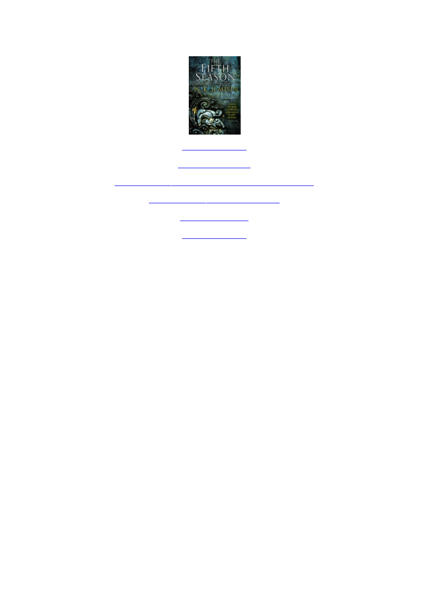
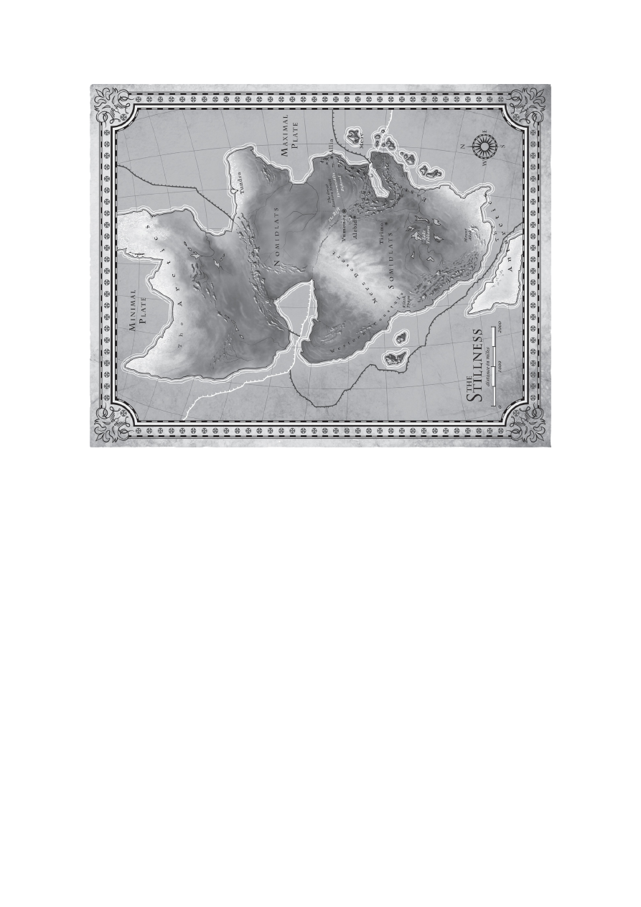
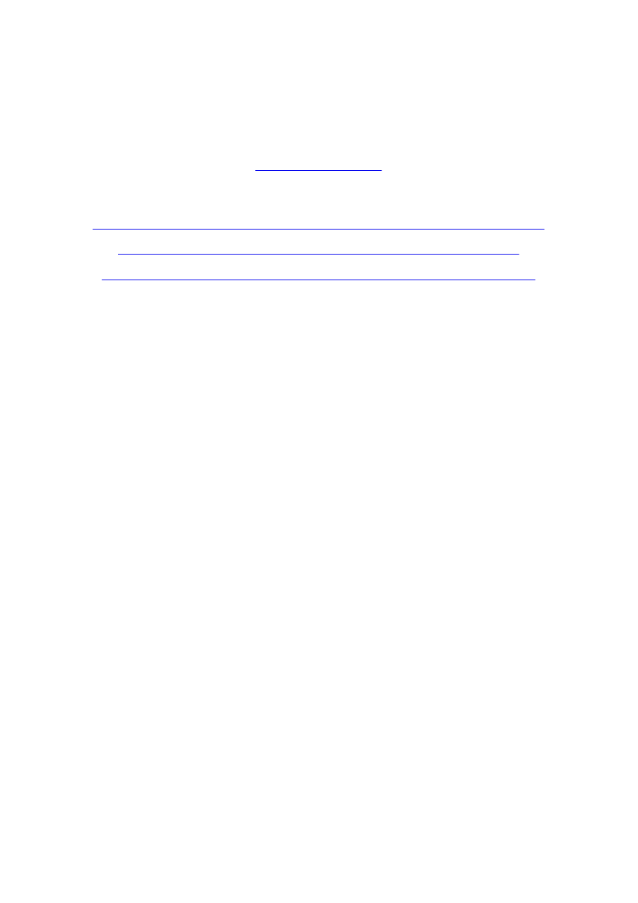

<!DOCTYPE html>
<html xmlns="http://www.w3.org/1999/xhtml" lang="" xml:lang="">
<head>
<title></title>

<meta http-equiv="Content-Type" content="text/html; charset=UTF-8"/>
 <br/>
<style type="text/css">
<!--
	p {margin: 0; padding: 0;}-->
</style>
</head>
<body bgcolor="#A0A0A0" vlink="blue" link="blue" style="display:flex;flex-direction:column;align-item:center;">
<div id="page1-div" style="position:relative;width:892px;height:1262px;">

</div>
</body>
</html>
<!DOCTYPE html>
<html xmlns="http://www.w3.org/1999/xhtml" lang="" xml:lang="">
<head>
<title></title>

<meta http-equiv="Content-Type" content="text/html; charset=UTF-8"/>
 <br/>
<style type="text/css">
<!--
	p {margin: 0; padding: 0;}	.ft20{font-size:14px;font-family:Times;color:#000000;}
-->
</style>
</head>
<body bgcolor="#A0A0A0" vlink="blue" link="blue">
<div id="page2-div" style="position:relative;width:892px;height:1262px;">

<p style="position:absolute;top:1026px;left:396px;white-space:nowrap" class="ft20">orbitbooks.net</p>
<p style="position:absolute;top:1061px;left:374px;white-space:nowrap" class="ft20">orbitshortfiction.com</p>
</div>
</body>
</html>
<!DOCTYPE html>
<html xmlns="http://www.w3.org/1999/xhtml" lang="" xml:lang="">
<head>
<title></title>

<meta http-equiv="Content-Type" content="text/html; charset=UTF-8"/>
 <br/>
<style type="text/css">
<!--
	p {margin: 0; padding: 0;}	.ft30{font-size:19px;font-family:Times;color:#0000ee;}
	.ft31{font-size:19px;font-family:Times;color:#0000ee;}
	.ft32{font-size:19px;font-family:Times;color:#0000ee;}
	.ft33{font-size:14px;font-family:Times;color:#000000;}
-->
</style>
</head>
<body bgcolor="#A0A0A0" vlink="blue" link="blue">
<div id="page3-div" style="position:relative;width:892px;height:1262px;">

<p style="position:absolute;top:296px;left:379px;white-space:nowrap" class="ft30"><a href="#page6-div"><b>Begin	Reading</b></a></p>
<p style="position:absolute;top:333px;left:370px;white-space:nowrap" class="ft31"><a href="#page363-div">Table	of	Contents</a></p>
<p style="position:absolute;top:370px;left:238px;white-space:nowrap" class="ft31"><a href="#page339-div">A	Preview	of	<i>The	Hundred	Thousand	Kingdoms</i></a></p>
<p style="position:absolute;top:406px;left:310px;white-space:nowrap" class="ft31"><a href="#page348-div">A	Preview	of	<i>The	Killing	Moon</i></a></p>
<p style="position:absolute;top:443px;left:374px;white-space:nowrap" class="ft31"><a href="#page362-div">Orbit	Newsletter</a></p>
<p style="position:absolute;top:480px;left:379px;white-space:nowrap" class="ft31"><a href="#page365-div">Copyright	Page</a></p>
<p style="position:absolute;top:518px;left:116px;white-space:nowrap" class="ft33">In	accordance	with	the	U.S.	Copyright	Act	of	1976,	the	scanning,	uploading,	and	electronic	sharing	of</p>
<p style="position:absolute;top:544px;left:113px;white-space:nowrap" class="ft33">any	part	of	this	book	without	the	permission	of	the	publisher	constitute	unlawful	piracy	and	theft	of	the</p>
<p style="position:absolute;top:570px;left:123px;white-space:nowrap" class="ft33">author’s	intellectual	property.	If	you	would	like	to	use	material	from	the	book	(other	than	for	review</p>
<p style="position:absolute;top:596px;left:178px;white-space:nowrap" class="ft33">purposes),	prior	written	permission	must	be	obtained	by	contacting	the	publisher	at</p>
<p style="position:absolute;top:622px;left:196px;white-space:nowrap" class="ft33">permissions@hbgusa.com.	Thank	you	for	your	support	of	the	author’s	rights.</p>
</div>
</body>
</html>
<!DOCTYPE html>
<html xmlns="http://www.w3.org/1999/xhtml" lang="" xml:lang="">
<head>
<title></title>

<meta http-equiv="Content-Type" content="text/html; charset=UTF-8"/>
 <br/>
<style type="text/css">
<!--
	p {margin: 0; padding: 0;}	.ft40{font-size:22px;font-family:Times;color:#000000;}
-->
</style>
</head>
<body bgcolor="#A0A0A0" vlink="blue" link="blue">
<div id="page4-div" style="position:relative;width:892px;height:1262px;">

<p style="position:absolute;top:184px;left:197px;white-space:nowrap" class="ft40"><i>For	all	those	who	have	to	fight	for	the	respect	that</i></p>
<p style="position:absolute;top:213px;left:252px;white-space:nowrap" class="ft40"><i>everyone	else	is	given	without	question</i></p>
</div>
</body>
</html>
<!DOCTYPE html>
<html xmlns="http://www.w3.org/1999/xhtml" lang="" xml:lang="">
<head>
<title></title>

<meta http-equiv="Content-Type" content="text/html; charset=UTF-8"/>
 <br/>
<style type="text/css">
<!--
	p {margin: 0; padding: 0;}-->
</style>
</head>
<body bgcolor="#A0A0A0" vlink="blue" link="blue">
<div id="page5-div" style="position:relative;width:892px;height:1262px;">

</div>
</body>
</html>
<!DOCTYPE html>
<html xmlns="http://www.w3.org/1999/xhtml" lang="" xml:lang="">
<head>
<title></title>

<meta http-equiv="Content-Type" content="text/html; charset=UTF-8"/>
 <br/>
<style type="text/css">
<!--
	p {margin: 0; padding: 0;}	.ft60{font-size:28px;font-family:Times;color:#0000ee;}
	.ft61{font-size:28px;font-family:Times;color:#0000ee;}
	.ft62{font-size:37px;font-family:Times;color:#000000;}
	.ft63{font-size:14px;font-family:Times;color:#000000;}
	.ft64{font-size:19px;font-family:Times;color:#000000;}
	.ft65{font-size:19px;font-family:Times;color:#000000;}
	.ft66{font-size:19px;line-height:25px;font-family:Times;color:#000000;}
-->
</style>
</head>
<body bgcolor="#A0A0A0" vlink="blue" link="blue">
<div id="page6-div" style="position:relative;width:892px;height:1262px;">

<p style="position:absolute;top:216px;left:360px;white-space:nowrap" class="ft60"><a href="#page363-div"><b>PROLOGUE</b></a></p>
<p style="position:absolute;top:298px;left:368px;white-space:nowrap" class="ft61"><a href="#page363-div"><i><b>you	are	here</b></i></a></p>
<p style="position:absolute;top:457px;left:108px;white-space:nowrap" class="ft62">L</p>
<p style="position:absolute;top:474px;left:132px;white-space:nowrap" class="ft63">ET’S	START	WITH	THE	END</p>
<p style="position:absolute;top:470px;left:343px;white-space:nowrap" class="ft64">	of	the	world,	why	don’t	we?	Get	it	over	with	and</p>
<p style="position:absolute;top:501px;left:108px;white-space:nowrap" class="ft64">move	on	to	more	interesting	things.</p>
<p style="position:absolute;top:538px;left:137px;white-space:nowrap" class="ft64">First,	&#160;a	&#160;personal	&#160;ending.	&#160;There	&#160;is	&#160;a	&#160;thing	&#160;she	&#160;will	&#160;think	&#160;over	&#160;and	&#160;over	&#160;in</p>
<p style="position:absolute;top:564px;left:108px;white-space:nowrap" class="ft66">the	days	to	come,	as	she	imagines	how	her	son	died	and	tries	to	make	sense	of<br/>something	&#160;so	&#160;innately	&#160;senseless.	&#160;She	&#160;will	&#160;cover	&#160;Uche’s	&#160;broken	&#160;little	&#160;body<br/>with	&#160;a	&#160;blanket—except	&#160;his	&#160;face,	&#160;because	&#160;he	&#160;is	&#160;afraid	&#160;of	&#160;the	&#160;dark—and	&#160;she<br/>will	&#160;sit	&#160;beside	&#160;it	&#160;numb,	&#160;and	&#160;she	&#160;will	&#160;pay	&#160;no	&#160;attention	&#160;to	&#160;the	&#160;world	&#160;that	&#160;is<br/>ending	outside.	The	world	has	already	ended	within	her,	and	neither	ending	is<br/>for	the	first	time.	She’s	old	hat	at	this	by	now.</p>
<p style="position:absolute;top:730px;left:137px;white-space:nowrap" class="ft64">What	she	thinks	then,	and	thereafter,	is:	<i>But	he	was	free.</i></p>
<p style="position:absolute;top:767px;left:137px;white-space:nowrap" class="ft64">And	it	is	her	bitter,	weary	self	that	answers	this	almost-question	every	time</p>
<p style="position:absolute;top:793px;left:108px;white-space:nowrap" class="ft64">her	bewildered,	shocked	self	manages	to	produce	it:</p>
<p style="position:absolute;top:830px;left:137px;white-space:nowrap" class="ft65"><i>He	wasn’t.	Not	really.	But	now	he	will	be.</i></p>
<p style="position:absolute;top:867px;left:425px;white-space:nowrap" class="ft64">*	*	*</p>
<p style="position:absolute;top:903px;left:108px;white-space:nowrap" class="ft64">But	you	need	context.	Let’s	try	the	ending	again,	writ	continentally.</p>
<p style="position:absolute;top:940px;left:137px;white-space:nowrap" class="ft64">Here	is	a	land.</p>
<p style="position:absolute;top:977px;left:137px;white-space:nowrap" class="ft64">It	is	ordinary,	as	lands	go.	Mountains	and	plateaus	and	canyons	and	river</p>
<p style="position:absolute;top:1003px;left:108px;white-space:nowrap" class="ft66">deltas,	&#160;the	&#160;usual.	&#160;Ordinary,	&#160;except	&#160;for	&#160;its	&#160;size	&#160;and	&#160;its	&#160;dynamism.	&#160;It	&#160;moves	&#160;a<br/>lot,	&#160;this	&#160;land.	&#160;Like	&#160;an	&#160;old	&#160;man	&#160;lying	&#160;restlessly	&#160;abed	&#160;it	&#160;heaves	&#160;and	&#160;sighs,<br/>puckers	&#160;and	&#160;farts,	&#160;yawns	&#160;and	&#160;swallows.	&#160;Naturally	&#160;this	&#160;land’s	&#160;people	&#160;have<br/>named	it	<i>the	Stillness</i>.	It	is	a	land	of	quiet	and	bitter	irony.</p>
<p style="position:absolute;top:1117px;left:137px;white-space:nowrap" class="ft64">The	Stillness	has	had	other	names.	It	was	once	several	other	lands.	It’s	one</p>
</div>
</body>
</html>
<!DOCTYPE html>
<html xmlns="http://www.w3.org/1999/xhtml" lang="" xml:lang="">
<head>
<title></title>

<meta http-equiv="Content-Type" content="text/html; charset=UTF-8"/>
 <br/>
<style type="text/css">
<!--
	p {margin: 0; padding: 0;}	.ft70{font-size:19px;font-family:Times;color:#000000;}
	.ft71{font-size:19px;font-family:Times;color:#000000;}
	.ft72{font-size:19px;line-height:25px;font-family:Times;color:#000000;}
	.ft73{font-size:19px;line-height:25px;font-family:Times;color:#000000;}
-->
</style>
</head>
<body bgcolor="#A0A0A0" vlink="blue" link="blue">
<div id="page7-div" style="position:relative;width:892px;height:1262px;">

<p style="position:absolute;top:113px;left:108px;white-space:nowrap" class="ft72">vast,	unbroken	continent	at	present,	but	at	some	point	in	the	future	it	will	be<br/>more	than	one	again.</p>
<p style="position:absolute;top:175px;left:137px;white-space:nowrap" class="ft70">Very	soon	now,	actually.</p>
<p style="position:absolute;top:212px;left:137px;white-space:nowrap" class="ft70">The	&#160;end	&#160;begins	&#160;in	&#160;a	&#160;city:	&#160;the	&#160;oldest,	&#160;largest,	&#160;and	&#160;most	&#160;magnificent	&#160;living</p>
<p style="position:absolute;top:238px;left:108px;white-space:nowrap" class="ft72">city	in	the	world.	The	city	is	called	Yumenes,	and	once	it	was	the	heart	of	an<br/>empire.	&#160;It	&#160;is	&#160;still	&#160;the	&#160;heart	&#160;of	&#160;many	&#160;things,	&#160;though	&#160;the	&#160;empire	&#160;has	&#160;wilted<br/>somewhat	in	the	years	since	its	first	bloom,	as	empires	do.</p>
<p style="position:absolute;top:326px;left:137px;white-space:nowrap" class="ft70">Yumenes	is	not	unique	because	of	its	size.	There	are	many	large	cities	in</p>
<p style="position:absolute;top:352px;left:108px;white-space:nowrap" class="ft72">this	part	of	the	world,	chain-linked	along	the	equator	like	a	continental	girdle.<br/>Elsewhere	&#160;in	&#160;the	&#160;world	&#160;villages	&#160;rarely	&#160;grow	&#160;into	&#160;towns,	&#160;and	&#160;towns	&#160;rarely<br/>become	cities,	because	all	such	polities	are	hard	to	keep	alive	when	the	earth<br/>keeps	&#160;trying	&#160;to	&#160;eat	&#160;them…	&#160;but	&#160;Yumenes	&#160;has	&#160;been	&#160;stable	&#160;for	&#160;most	&#160;of	&#160;its<br/>twenty-seven	centuries.</p>
<p style="position:absolute;top:493px;left:137px;white-space:nowrap" class="ft70">Yumenes	is	unique	because	here	alone	have	human	beings	dared	to	build</p>
<p style="position:absolute;top:519px;left:108px;white-space:nowrap" class="ft72">not	for	safety,	not	for	comfort,	not	even	for	beauty,	but	for	bravery.	The	city’s<br/>walls	&#160;are	&#160;a	&#160;masterwork	&#160;of	&#160;delicate	&#160;mosaics	&#160;and	&#160;embossing	&#160;detailing	&#160;its<br/>people’s	&#160;long	&#160;and	&#160;brutal	&#160;history.	&#160;The	&#160;clumping	&#160;masses	&#160;of	&#160;its	&#160;buildings	&#160;are<br/>punctuated	by	great	high	towers	like	fingers	of	stone,	hand-wrought	lanterns<br/>powered	by	the	modern	marvel	of	hydroelectricity,	delicately	arching	bridges<br/>woven	of	glass	and	audacity,	and	architectural	structures	called	<i>balconies</i>	that<br/>are	&#160;so	&#160;simple,	&#160;yet	&#160;so	&#160;breathtakingly	&#160;foolish,	&#160;that	&#160;no	&#160;one	&#160;has	&#160;ever	&#160;built	&#160;them<br/>before	in	written	history.	(But	much	of	history	is	unwritten.	Remember	this.)<br/>The	&#160;streets	&#160;are	&#160;paved	&#160;not	&#160;with	&#160;easy-to-replace	&#160;cobbles,	&#160;but	&#160;with	&#160;a	&#160;smooth,<br/>unbroken,	and	miraculous	substance	the	locals	have	dubbed	<i>asphalt</i>.	Even	the<br/>shanties	&#160;of	&#160;Yumenes	&#160;are	&#160;daring,	&#160;because	&#160;they’re	&#160;just	&#160;thin-walled	&#160;shacks	&#160;that<br/>would	blow	over	in	a	bad	windstorm,	let	alone	a	shake.	Yet	they	stand,	as	they<br/>have	stood,	for	generations.</p>
<p style="position:absolute;top:867px;left:137px;white-space:nowrap" class="ft70">At	the	core	of	the	city	are	many	tall	buildings,	so	it	is	perhaps	unsurprising</p>
<p style="position:absolute;top:892px;left:108px;white-space:nowrap" class="ft73">that	&#160;one	&#160;of	&#160;them	&#160;is	&#160;larger	&#160;and	&#160;more	&#160;daring	&#160;than	&#160;all	&#160;the	&#160;rest	&#160;combined:	&#160;a<br/>massive	&#160;structure	&#160;whose	&#160;base	&#160;is	&#160;a	&#160;star	&#160;pyramid	&#160;of	&#160;precision-carved	&#160;obsidian<br/>brick.	&#160;Pyramids	&#160;are	&#160;the	&#160;most	&#160;stable	&#160;architectural	&#160;form,	&#160;and	&#160;this	&#160;one	&#160;is<br/>pyramids	&#160;times	&#160;five	&#160;because	&#160;why	&#160;not?	&#160;And	&#160;because	&#160;this	&#160;is	&#160;Yumenes,	&#160;a	&#160;vast<br/>geodesic	&#160;sphere	&#160;whose	&#160;faceted	&#160;walls	&#160;resemble	&#160;translucent	&#160;amber	&#160;sits	&#160;at	&#160;the<br/>pyramid’s	apex,	seeming	to	balance	there	lightly—though	in	truth,	every	part<br/>of	the	structure	is	channeled	toward	the	sole	purpose	of	supporting	it.	It	<i>looks<br/></i>precarious;	that	is	all	that	matters.</p>
<p style="position:absolute;top:1111px;left:137px;white-space:nowrap" class="ft70">The	&#160;Black	&#160;Star	&#160;is	&#160;where	&#160;the	&#160;leaders	&#160;of	&#160;the	&#160;empire	&#160;meet	&#160;to	&#160;do	&#160;their</p>
</div>
</body>
</html>
<!DOCTYPE html>
<html xmlns="http://www.w3.org/1999/xhtml" lang="" xml:lang="">
<head>
<title></title>

<meta http-equiv="Content-Type" content="text/html; charset=UTF-8"/>
 <br/>
<style type="text/css">
<!--
	p {margin: 0; padding: 0;}	.ft80{font-size:19px;font-family:Times;color:#000000;}
	.ft81{font-size:19px;font-family:Times;color:#000000;}
	.ft82{font-size:19px;line-height:25px;font-family:Times;color:#000000;}
	.ft83{font-size:19px;line-height:25px;font-family:Times;color:#000000;}
-->
</style>
</head>
<body bgcolor="#A0A0A0" vlink="blue" link="blue">
<div id="page8-div" style="position:relative;width:892px;height:1262px;">

<p style="position:absolute;top:112px;left:108px;white-space:nowrap" class="ft82">leaderish	&#160;things.	&#160;The	&#160;amber	&#160;sphere	&#160;is	&#160;where	&#160;they	&#160;keep	&#160;their	&#160;emperor,<br/>carefully	&#160;preserved	&#160;and	&#160;perfect.	&#160;He	&#160;wanders	&#160;its	&#160;golden	&#160;halls	&#160;in	&#160;genteel<br/>despair,	doing	what	he	is	told	and	dreading	the	day	his	masters	decide	that	his<br/>daughter	makes	a	better	ornament.</p>
<p style="position:absolute;top:227px;left:137px;white-space:nowrap" class="ft80">None	of	these	places	or	people	matter,	by	the	way.	I	simply	point	them	out</p>
<p style="position:absolute;top:253px;left:108px;white-space:nowrap" class="ft80">for	context.</p>
<p style="position:absolute;top:290px;left:137px;white-space:nowrap" class="ft80">But	here	is	a	man	who	will	matter	a	great	deal.</p>
<p style="position:absolute;top:326px;left:137px;white-space:nowrap" class="ft80">You	can	imagine	how	he	looks,	for	now.	You	may	also	imagine	what	he’s</p>
<p style="position:absolute;top:352px;left:108px;white-space:nowrap" class="ft82">thinking.	&#160;This	&#160;might	&#160;be	&#160;wrong,	&#160;mere	&#160;conjecture,	&#160;but	&#160;a	&#160;certain	&#160;amount	&#160;of<br/>likelihood	&#160;applies	&#160;nevertheless.	&#160;Based	&#160;on	&#160;his	&#160;subsequent	&#160;actions,	&#160;there	&#160;are<br/>only	a	few	thoughts	that	could	be	in	his	mind	in	this	moment.</p>
<p style="position:absolute;top:441px;left:137px;white-space:nowrap" class="ft80">He	stands	on	a	hill	not	far	from	the	Black	Star’s	obsidian	walls.	From	here</p>
<p style="position:absolute;top:467px;left:108px;white-space:nowrap" class="ft82">he	can	see	most	of	the	city,	smell	its	smoke,	get	lost	in	its	gabble.	There’s	a<br/>group	of	young	women	walking	along	one	of	the	asphalt	paths	below;	the	hill<br/>is	in	a	park	much	beloved	by	the	city’s	residents.	(<i>Keep	green	land	within	the<br/>walls,</i>	&#160;advises	&#160;stonelore,	&#160;but	&#160;in	&#160;most	&#160;communities	&#160;the	&#160;land	&#160;is	&#160;fallow-planted<br/>with	&#160;legumes	&#160;and	&#160;other	&#160;soil-enriching	&#160;crops.	&#160;Only	&#160;in	&#160;Yumenes	&#160;is	&#160;greenland<br/>sculpted	&#160;into	&#160;prettiness.)	&#160;The	&#160;women	&#160;laugh	&#160;at	&#160;something	&#160;one	&#160;of	&#160;them	&#160;has<br/>said,	&#160;and	&#160;the	&#160;sound	&#160;wafts	&#160;up	&#160;to	&#160;the	&#160;man	&#160;on	&#160;a	&#160;passing	&#160;breeze.	&#160;He	&#160;closes	&#160;his<br/>eyes	and	savors	the	faint	tremolo	of	their	voices,	the	fainter	reverberation	of<br/>their	&#160;footsteps	&#160;like	&#160;the	&#160;wingbeats	&#160;of	&#160;butterflies	&#160;against	&#160;his	&#160;sessapinae.	&#160;He<br/>can’t	sess	all	seven	million	residents	of	the	city,	mind	you;	he’s	good,	but	not<br/>that	good.	Most	of	them,	though,	yes,	they	are	there.	<i>Here</i>.	He	breathes	deeply<br/>and	&#160;becomes	&#160;a	&#160;fixture	&#160;of	&#160;the	&#160;earth.	&#160;They	&#160;tread	&#160;upon	&#160;the	&#160;filaments	&#160;of	&#160;his<br/>nerves;	their	voices	stir	the	fine	hairs	of	his	skin;	their	breaths	ripple	the	air	he<br/>draws	into	his	lungs.	They	are	on	him.	They	are	in	him.</p>
<p style="position:absolute;top:841px;left:137px;white-space:nowrap" class="ft80">But	he	knows	that	he	is	not,	and	will	never	be,	one	of	them.</p>
<p style="position:absolute;top:877px;left:137px;white-space:nowrap" class="ft80">“Did	&#160;you	&#160;know,”	&#160;he	&#160;says,	&#160;conversationally,	&#160;“that	&#160;the	&#160;first	&#160;stonelore	&#160;was</p>
<p style="position:absolute;top:903px;left:108px;white-space:nowrap" class="ft82">actually	&#160;<i>written</i>	&#160;in	&#160;stone?	&#160;So	&#160;that	&#160;it	&#160;couldn’t	&#160;be	&#160;changed	&#160;to	&#160;suit	&#160;fashion	&#160;or<br/>politics.	So	it	wouldn’t	wear	away.”</p>
<p style="position:absolute;top:966px;left:137px;white-space:nowrap" class="ft80">“I	know,”	says	his	companion.</p>
<p style="position:absolute;top:1003px;left:137px;white-space:nowrap" class="ft80">“Hnh.	Yes,	you	were	probably	there	when	it	was	first	set	down,	I	forget.”</p>
<p style="position:absolute;top:1029px;left:108px;white-space:nowrap" class="ft82">He	sighs,	watching	the	women	walk	out	of	sight.	“It’s	safe	to	love	you.	You<br/>won’t	fail	me.	You	won’t	die.	And	I	know	the	price	up	front.”</p>
<p style="position:absolute;top:1091px;left:137px;white-space:nowrap" class="ft80">His	&#160;companion	&#160;does	&#160;not	&#160;reply.	&#160;He	&#160;wasn’t	&#160;really	&#160;expecting	&#160;a	&#160;response,</p>
<p style="position:absolute;top:1117px;left:108px;white-space:nowrap" class="ft80">though	a	part	of	him	hoped.	He	has	been	so	lonely.</p>
</div>
</body>
</html>
<!DOCTYPE html>
<html xmlns="http://www.w3.org/1999/xhtml" lang="" xml:lang="">
<head>
<title></title>

<meta http-equiv="Content-Type" content="text/html; charset=UTF-8"/>
 <br/>
<style type="text/css">
<!--
	p {margin: 0; padding: 0;}	.ft90{font-size:19px;font-family:Times;color:#000000;}
	.ft91{font-size:19px;font-family:Times;color:#000000;}
	.ft92{font-size:19px;line-height:25px;font-family:Times;color:#000000;}
-->
</style>
</head>
<body bgcolor="#A0A0A0" vlink="blue" link="blue">
<div id="page9-div" style="position:relative;width:892px;height:1262px;">

<p style="position:absolute;top:112px;left:137px;white-space:nowrap" class="ft90">But	&#160;hope	&#160;is	&#160;irrelevant,	&#160;as	&#160;are	&#160;so	&#160;many	&#160;other	&#160;feelings	&#160;that	&#160;he	&#160;knows	&#160;will</p>
<p style="position:absolute;top:138px;left:108px;white-space:nowrap" class="ft92">bring	&#160;him	&#160;only	&#160;despair	&#160;if	&#160;he	&#160;considers	&#160;them	&#160;again.	&#160;He	&#160;has	&#160;considered	&#160;this<br/>enough.	The	time	for	dithering	is	past.</p>
<p style="position:absolute;top:201px;left:137px;white-space:nowrap" class="ft90">“A	commandment,”	the	man	says,	spreading	his	arms,	“is	set	in	stone.”</p>
<p style="position:absolute;top:238px;left:137px;white-space:nowrap" class="ft90">Imagine	&#160;that	&#160;his	&#160;face	&#160;aches	&#160;from	&#160;smiling.	&#160;He’s	&#160;been	&#160;smiling	&#160;for	&#160;hours:</p>
<p style="position:absolute;top:264px;left:108px;white-space:nowrap" class="ft92">teeth	clenched,	lips	drawn	back,	eyes	crinkled	so	the	crow’s	feet	show.	There<br/>is	an	art	to	smiling	in	a	way	that	others	will	believe.	It	is	always	important	to<br/>include	the	eyes;	otherwise,	people	will	know	you	hate	them.</p>
<p style="position:absolute;top:352px;left:137px;white-space:nowrap" class="ft90">“Chiseled	words	are	absolute.”</p>
<p style="position:absolute;top:389px;left:137px;white-space:nowrap" class="ft90">He	speaks	to	no	one	in	particular,	but	beside	the	man	stands	a	woman—of</p>
<p style="position:absolute;top:415px;left:108px;white-space:nowrap" class="ft92">sorts.	Her	emulation	of	human	gender	is	only	superficial,	a	courtesy.	Likewise<br/>the	loose	drapelike	dress	that	she	wears	is	not	cloth.	She	has	simply	shaped	a<br/>portion	&#160;of	&#160;her	&#160;stiff	&#160;substance	&#160;to	&#160;suit	&#160;the	&#160;preferences	&#160;of	&#160;the	&#160;fragile,	&#160;mortal<br/>creatures	&#160;among	&#160;whom	&#160;she	&#160;currently	&#160;moves.	&#160;From	&#160;a	&#160;distance	&#160;the	&#160;illusion<br/>would	work	to	pass	her	off	as	a	woman	standing	still,	at	least	for	a	while.	Up<br/>close,	however,	any	hypothetical	observer	would	notice	that	her	skin	is	white<br/>porcelain;	that	is	not	a	metaphor.	As	a	sculpture,	she	would	be	beautiful,	if	too<br/>relentlessly	&#160;realistic	&#160;for	&#160;local	&#160;tastes.	&#160;Most	&#160;Yumenescenes	&#160;prefer	&#160;polite<br/>abstraction	over	vulgar	actuality.</p>
<p style="position:absolute;top:659px;left:137px;white-space:nowrap" class="ft90">When	&#160;she	&#160;turns	&#160;to	&#160;the	&#160;man—slowly;	&#160;stone	&#160;eaters	&#160;are	&#160;slow	&#160;aboveground,</p>
<p style="position:absolute;top:685px;left:108px;white-space:nowrap" class="ft92">except	when	they	aren’t—this	movement	pushes	her	beyond	artful	beauty	into<br/>something	altogether	different.	The	man	has	grown	used	to	it,	but	even	so,	he<br/>does	not	look	at	her.	He	does	not	want	revulsion	to	spoil	the	moment.</p>
<p style="position:absolute;top:774px;left:137px;white-space:nowrap" class="ft90">“What	will	you	do?”	he	asks	her.	“When	it’s	done.	Will	your	kind	rise	up</p>
<p style="position:absolute;top:800px;left:108px;white-space:nowrap" class="ft90">through	the	rubble	and	take	the	world	in	our	stead?”</p>
<p style="position:absolute;top:836px;left:137px;white-space:nowrap" class="ft90">“No,”	she	says.</p>
<p style="position:absolute;top:873px;left:137px;white-space:nowrap" class="ft90">“Why	not?”</p>
<p style="position:absolute;top:910px;left:137px;white-space:nowrap" class="ft90">“Few	of	us	are	interested	in	that.	Anyway,	you’ll	still	be	here.”</p>
<p style="position:absolute;top:946px;left:137px;white-space:nowrap" class="ft90">The	&#160;man	&#160;understands	&#160;that	&#160;she	&#160;means	&#160;you	&#160;in	&#160;the	&#160;plural.	&#160;<i>Your	&#160;kind.</i></p>
<p style="position:absolute;top:972px;left:108px;white-space:nowrap" class="ft92"><i>Humanity.</i>	She	often	treats	him	as	though	he	represents	his	whole	species.	He<br/>does	the	same	to	her.	“You	sound	very	certain.”</p>
<p style="position:absolute;top:1035px;left:137px;white-space:nowrap" class="ft90">She	&#160;says	&#160;nothing	&#160;to	&#160;this.	&#160;Stone	&#160;eaters	&#160;rarely	&#160;bother	&#160;stating	&#160;the	&#160;obvious.</p>
<p style="position:absolute;top:1061px;left:108px;white-space:nowrap" class="ft92">He’s	glad,	because	her	speech	annoys	him	in	any	case;	it	does	not	shiver	the<br/>air	&#160;the	&#160;way	&#160;a	&#160;human	&#160;voice	&#160;would.	&#160;He	&#160;doesn’t	&#160;know	&#160;how	&#160;that	&#160;works.	&#160;He<br/>doesn’t	<i>care</i>	how	it	works,	but	he	wants	her	silent	now.</p>
</div>
</body>
</html>
<!DOCTYPE html>
<html xmlns="http://www.w3.org/1999/xhtml" lang="" xml:lang="">
<head>
<title></title>

<meta http-equiv="Content-Type" content="text/html; charset=UTF-8"/>
 <br/>
<style type="text/css">
<!--
	p {margin: 0; padding: 0;}	.ft100{font-size:19px;font-family:Times;color:#000000;}
	.ft101{font-size:19px;font-family:Times;color:#000000;}
	.ft102{font-size:19px;line-height:25px;font-family:Times;color:#000000;}
-->
</style>
</head>
<body bgcolor="#A0A0A0" vlink="blue" link="blue">
<div id="page10-div" style="position:relative;width:892px;height:1262px;">

<p style="position:absolute;top:112px;left:137px;white-space:nowrap" class="ft100">He	wants	<i>everything</i>	silent.</p>
<p style="position:absolute;top:149px;left:137px;white-space:nowrap" class="ft100">“End,”	he	says.	“Please.”</p>
<p style="position:absolute;top:186px;left:137px;white-space:nowrap" class="ft100">And	&#160;then	&#160;he	&#160;reaches	&#160;forth	&#160;with	&#160;all	&#160;the	&#160;fine	&#160;control	&#160;that	&#160;the	&#160;world	&#160;has</p>
<p style="position:absolute;top:212px;left:108px;white-space:nowrap" class="ft102">brainwashed	and	backstabbed	and	brutalized	out	of	him,	and	all	the	sensitivity<br/>that	his	masters	have	bred	into	him	through	generations	of	rape	and	coercion<br/>and	&#160;highly	&#160;unnatural	&#160;selection.	&#160;His	&#160;fingers	&#160;spread	&#160;and	&#160;twitch	&#160;as	&#160;he	&#160;feels<br/>several	&#160;reverberating	&#160;points	&#160;on	&#160;the	&#160;map	&#160;of	&#160;his	&#160;awareness:	&#160;his	&#160;fellow	&#160;slaves.<br/>He	cannot	free	them,	not	in	the	practical	sense.	He’s	tried	before	&#160;and	&#160;failed.<br/>He	&#160;can,	&#160;however,	&#160;make	&#160;their	&#160;suffering	&#160;serve	&#160;a	&#160;cause	&#160;greater	&#160;than	&#160;one	&#160;city’s<br/>hubris,	and	one	empire’s	fear.</p>
<p style="position:absolute;top:404px;left:137px;white-space:nowrap" class="ft100">So	&#160;he	&#160;reaches	&#160;deep	&#160;and	&#160;takes	&#160;hold	&#160;of	&#160;the	&#160;humming	&#160;tapping	&#160;bustling</p>
<p style="position:absolute;top:430px;left:108px;white-space:nowrap" class="ft102">reverberating	rippling	vastness	of	the	city,	and	the	quieter	bedrock	beneath	it,<br/>and	the	roiling	churn	of	heat	and	pressure	beneath	that.	Then	he	reaches	wide,<br/>taking	&#160;hold	&#160;of	&#160;the	&#160;great	&#160;sliding-puzzle	&#160;piece	&#160;of	&#160;earthshell	&#160;on	&#160;which	&#160;the<br/>continent	sits.</p>
<p style="position:absolute;top:545px;left:137px;white-space:nowrap" class="ft100">Lastly,	he	reaches	up.	For	power.</p>
<p style="position:absolute;top:581px;left:137px;white-space:nowrap" class="ft100">He	takes	all	that,	the	strata	and	the	magma	and	the	people	and	the	power,</p>
<p style="position:absolute;top:607px;left:108px;white-space:nowrap" class="ft102">in	his	imaginary	hands.	Everything.	He	holds	it.	He	is	not	alone.	The	earth	is<br/>with	him.</p>
<p style="position:absolute;top:670px;left:137px;white-space:nowrap" class="ft100">Then	<i>he	breaks	it</i>.</p>
<p style="position:absolute;top:707px;left:425px;white-space:nowrap" class="ft100">*	*	*</p>
<p style="position:absolute;top:743px;left:108px;white-space:nowrap" class="ft100">Here	is	the	Stillness,	which	is	not	still	even	on	a	good	day.</p>
<p style="position:absolute;top:780px;left:137px;white-space:nowrap" class="ft100">Now	&#160;it	&#160;ripples,	&#160;reverberates,	&#160;in	&#160;cataclysm.	&#160;Now	&#160;there	&#160;is	&#160;a	&#160;line,	&#160;roughly</p>
<p style="position:absolute;top:806px;left:108px;white-space:nowrap" class="ft102">east–west	and	too	straight,	almost	neat	in	its	manifest	unnaturalness,	spanning<br/>the	girth	of	the	land’s	equator.	The	line’s	origin	point	is	the	city	of	Yumenes.</p>
<p style="position:absolute;top:869px;left:137px;white-space:nowrap" class="ft100">The	line	is	deep	and	raw,	a	cut	to	the	quick	of	the	planet.	Magma	wells	in</p>
<p style="position:absolute;top:895px;left:108px;white-space:nowrap" class="ft102">its	&#160;wake,	&#160;fresh	&#160;and	&#160;glowing	&#160;red.	&#160;The	&#160;earth	&#160;is	&#160;good	&#160;at	&#160;healing	&#160;itself.	&#160;This<br/>wound	will	scab	over	quickly	in	geologic	terms,	and	then	the	cleansing	ocean<br/>will	&#160;follow	&#160;its	&#160;line	&#160;to	&#160;bisect	&#160;the	&#160;Stillness	&#160;into	&#160;two	&#160;lands.	&#160;Until	&#160;this	&#160;happens,<br/>however,	the	wound	will	fester	with	not	only	heat	but	gas	and	gritty,	dark	ash<br/>—enough	to	choke	off	the	sky	across	most	of	the	Stillness’s	face	within	a	few<br/>weeks.	Plants	everywhere	will	die,	and	the	animals	that	depend	on	them	will<br/>starve,	and	the	animals	that	eat	those	will	starve.	Winter	will	come	early,	and<br/>hard,	and	it	will	last	a	long,	long	time.	It	<i>will</i>	end,	of	course,	like	every	winter<br/>does,	and	then	the	world	will	return	to	its	old	self.	Eventually.</p>
</div>
</body>
</html>
<!DOCTYPE html>
<html xmlns="http://www.w3.org/1999/xhtml" lang="" xml:lang="">
<head>
<title></title>

<meta http-equiv="Content-Type" content="text/html; charset=UTF-8"/>
 <br/>
<style type="text/css">
<!--
	p {margin: 0; padding: 0;}	.ft110{font-size:19px;font-family:Times;color:#000000;}
	.ft111{font-size:19px;font-family:Times;color:#000000;}
	.ft112{font-size:19px;line-height:25px;font-family:Times;color:#000000;}
-->
</style>
</head>
<body bgcolor="#A0A0A0" vlink="blue" link="blue">
<div id="page11-div" style="position:relative;width:892px;height:1262px;">

<p style="position:absolute;top:112px;left:137px;white-space:nowrap" class="ft110">Eventually.</p>
<p style="position:absolute;top:149px;left:137px;white-space:nowrap" class="ft110">The	&#160;people	&#160;of	&#160;the	&#160;Stillness	&#160;live	&#160;in	&#160;a	&#160;perpetual	&#160;state	&#160;of	&#160;disaster</p>
<p style="position:absolute;top:175px;left:108px;white-space:nowrap" class="ft112">preparedness.	They’ve	built	walls	and	dug	wells	and	put	away	food,	and	they<br/>can	easily	last	five,	ten,	even	twenty-five	years	in	a	world	without	sun.</p>
<p style="position:absolute;top:238px;left:137px;white-space:nowrap" class="ft111"><i>Eventually</i>	meaning	in	this	case	<i>in	a	few	thousand	years</i>.</p>
<p style="position:absolute;top:275px;left:137px;white-space:nowrap" class="ft110">Look,	the	ash	clouds	are	spreading	already.</p>
<p style="position:absolute;top:311px;left:425px;white-space:nowrap" class="ft110">*	*	*</p>
<p style="position:absolute;top:348px;left:108px;white-space:nowrap" class="ft112">While	&#160;we’re	&#160;doing	&#160;things	&#160;continentally,	&#160;<i>planetarily,</i>	&#160;we	&#160;should	&#160;consider	&#160;the<br/>obelisks,	which	float	above	all	this.</p>
<p style="position:absolute;top:411px;left:137px;white-space:nowrap" class="ft110">The	&#160;obelisks	&#160;had	&#160;other	&#160;names	&#160;once,	&#160;back	&#160;when	&#160;they	&#160;were	&#160;first	&#160;built	&#160;and</p>
<p style="position:absolute;top:437px;left:108px;white-space:nowrap" class="ft112">deployed	and	used,	but	no	one	remembers	those	names	or	the	great	devices’<br/>purpose.	Memories	are	fragile	as	slate	in	the	Stillness.	In	fact,	these	days	no<br/>one	really	pays	much	attention	to	the	things	at	all,	though	they	are	huge	and<br/>beautiful	and	a	little	terrifying:	massive	crystalline	shards	that	hover	amid	the<br/>clouds,	&#160;rotating	&#160;slowly	&#160;and	&#160;drifting	&#160;along	&#160;incomprehensible	&#160;flight	&#160;paths,<br/>blurring	now	and	again	as	if	they	are	not	quite	real—though	this	may	only	be<br/>a	trick	of	the	light.	(It	isn’t.)	It’s	obvious	that	the	obelisks	are	nothing	natural.</p>
<p style="position:absolute;top:629px;left:137px;white-space:nowrap" class="ft110">It	&#160;is	&#160;equally	&#160;obvious	&#160;that	&#160;they	&#160;are	&#160;irrelevant.	&#160;Awesome,	&#160;but	&#160;purposeless:</p>
<p style="position:absolute;top:655px;left:108px;white-space:nowrap" class="ft112">just	&#160;another	&#160;grave-marker	&#160;of	&#160;just	&#160;another	&#160;civilization	&#160;successfully	&#160;destroyed<br/>by	Father	Earth’s	tireless	efforts.	There	are	many	other	such	cairns	around	the<br/>world:	&#160;a	&#160;thousand	&#160;ruined	&#160;cities,	&#160;a	&#160;million	&#160;monuments	&#160;to	&#160;heroes	&#160;or	&#160;gods	&#160;no<br/>one	remembers,	several	dozen	bridges	to	nowhere.	Such	things	are	not	to	be<br/>admired,	goes	the	current	wisdom	in	the	Stillness.	The	people	who	built	those<br/>old	things	were	weak,	and	died	as	the	weak	inevitably	must.	More	damning	is<br/>that	they	<i>failed</i>.	The	ones	who	built	the	obelisks	just	failed	harder	than	most.</p>
<p style="position:absolute;top:847px;left:137px;white-space:nowrap" class="ft110">But	the	obelisks	exist,	and	they	play	a	role	in	the	world’s	end,	and	thus	are</p>
<p style="position:absolute;top:873px;left:108px;white-space:nowrap" class="ft110">worthy	of	note.</p>
<p style="position:absolute;top:910px;left:425px;white-space:nowrap" class="ft110">*	*	*</p>
<p style="position:absolute;top:946px;left:108px;white-space:nowrap" class="ft110">Back	to	the	personal.	Need	to	keep	things	grounded,	ha	ha.</p>
<p style="position:absolute;top:983px;left:137px;white-space:nowrap" class="ft110">The	&#160;woman	&#160;I	&#160;mentioned,	&#160;the	&#160;one	&#160;whose	&#160;son	&#160;is	&#160;dead.	&#160;She	&#160;was	&#160;not	&#160;in</p>
<p style="position:absolute;top:1009px;left:108px;white-space:nowrap" class="ft112">Yumenes,	&#160;thankfully,	&#160;or	&#160;this	&#160;would	&#160;be	&#160;a	&#160;very	&#160;short	&#160;tale.	&#160;And	&#160;you	&#160;would	&#160;not<br/>exist.</p>
<p style="position:absolute;top:1072px;left:137px;white-space:nowrap" class="ft110">She’s	in	a	town	called	Tirimo.	In	the	parlance	of	the	Stillness	a	town	is	one</p>
<p style="position:absolute;top:1098px;left:108px;white-space:nowrap" class="ft112">form	&#160;of	&#160;<i>comm,</i>	&#160;or	&#160;community—but	&#160;as	&#160;comms	&#160;go	&#160;Tirimo	&#160;is	&#160;barely	&#160;large<br/>enough	&#160;to	&#160;merit	&#160;that	&#160;name.	&#160;Tirimo	&#160;sits	&#160;in	&#160;a	&#160;valley	&#160;of	&#160;the	&#160;same	&#160;name,	&#160;at	&#160;the</p>
</div>
</body>
</html>
<!DOCTYPE html>
<html xmlns="http://www.w3.org/1999/xhtml" lang="" xml:lang="">
<head>
<title></title>

<meta http-equiv="Content-Type" content="text/html; charset=UTF-8"/>
 <br/>
<style type="text/css">
<!--
	p {margin: 0; padding: 0;}	.ft120{font-size:19px;font-family:Times;color:#000000;}
	.ft121{font-size:19px;font-family:Times;color:#000000;}
	.ft122{font-size:19px;line-height:25px;font-family:Times;color:#000000;}
-->
</style>
</head>
<body bgcolor="#A0A0A0" vlink="blue" link="blue">
<div id="page12-div" style="position:relative;width:892px;height:1262px;">

<p style="position:absolute;top:112px;left:108px;white-space:nowrap" class="ft122">foot	&#160;of	&#160;the	&#160;Tirimas	&#160;Mountains.	&#160;The	&#160;nearest	&#160;body	&#160;of	&#160;water	&#160;is	&#160;an	&#160;intermittent<br/>creek	the	locals	call	Little	Tirika.	In	a	language	that	no	longer	exists	except	in<br/>these	&#160;lingering	&#160;linguistic	&#160;fragments,	&#160;<i>eatiri</i>	&#160;meant	&#160;“quiet.”	&#160;Tirimo	&#160;is	&#160;far	&#160;from<br/>the	&#160;glittering,	&#160;stable	&#160;cities	&#160;of	&#160;the	&#160;Equatorials,	&#160;so	&#160;people	&#160;here	&#160;build	&#160;for	&#160;the<br/>inevitability	of	shakes.	There	are	no	artful	towers	or	cornices,	just	walls	built<br/>out	&#160;of	&#160;wood	&#160;and	&#160;cheap	&#160;brown	&#160;local	&#160;bricks,	&#160;set	&#160;upon	&#160;foundations	&#160;of	&#160;hewn<br/>stone.	No	asphalted	roads,	just	grassy	slopes	bisected	by	dirt	paths;	only	some<br/>of	those	paths	have	been	overlaid	with	wooden	boards	or	cobblestones.	It	is	a<br/>peaceful	&#160;place,	&#160;although	&#160;the	&#160;cataclysm	&#160;that	&#160;just	&#160;occurred	&#160;in	&#160;Yumenes	&#160;will<br/>soon	send	seismic	ripples	southward	to	flatten	the	entire	region.</p>
<p style="position:absolute;top:383px;left:137px;white-space:nowrap" class="ft120">In	this	town	is	a	house	like	any	other.	This	house,	which	sits	along	one	of</p>
<p style="position:absolute;top:408px;left:108px;white-space:nowrap" class="ft122">these	slopes,	is	&#160;little	more	than	&#160;a	hole	dug	&#160;into	the	&#160;earth	that	has	been	lined<br/>with	clay	and	bricks	to	make	it	waterproof,	then	roofed	over	with	cedar	and<br/>cut	&#160;sod.	&#160;The	&#160;sophisticated	&#160;people	&#160;of	&#160;Yumenes	&#160;laugh	&#160;(laughed)	&#160;at	&#160;such<br/>primitive	digs,	when	they	deign	(deigned)	to	speak	of	such	things	at	all—but<br/>for	&#160;the	&#160;people	&#160;of	&#160;Tirimo,	&#160;living	&#160;in	&#160;the	&#160;earth	&#160;is	&#160;as	&#160;sensible	&#160;as	&#160;it	&#160;is	&#160;simple.<br/>Keeps	things	cool	in	summer	and	warm	in	winter;	resilient	against	shakes	and<br/>storms	alike.</p>
<p style="position:absolute;top:601px;left:137px;white-space:nowrap" class="ft120">The	&#160;woman’s	&#160;name	&#160;is	&#160;Essun.	&#160;She	&#160;is	&#160;forty-two	&#160;years	&#160;old.	&#160;She’s	&#160;like	&#160;most</p>
<p style="position:absolute;top:627px;left:108px;white-space:nowrap" class="ft122">women	of	the	midlats:	tall	when	she	stands,	straight-backed	and	long-necked,<br/>with	&#160;hips	&#160;that	&#160;easily	&#160;bore	&#160;two	&#160;children	&#160;and	&#160;breasts	&#160;that	&#160;easily	&#160;fed	&#160;them,	&#160;and<br/>broad,	&#160;limber	&#160;hands.	&#160;Strong-looking,	&#160;well-fleshed;	&#160;such	&#160;things	&#160;are	&#160;valued	&#160;in<br/>the	Stillness.	Her	hair	hangs	round	her	face	in	ropy	fused	locks,	each	perhaps<br/>as	big	around	as	her	pinky	finger,	black	fading	to	brown	at	the	tips.	Her	skin<br/>is	&#160;unpleasantly	&#160;ocher-brown	&#160;by	&#160;some	&#160;standards	&#160;and	&#160;unpleasantly	&#160;olive-pale<br/>by	&#160;others.	&#160;Mongrel	&#160;midlatters,	&#160;Yumenescenes	&#160;call	&#160;(called)	&#160;people	&#160;like	&#160;her—<br/>enough	Sanzed	in	them	to	show,	not	enough	to	tell.</p>
<p style="position:absolute;top:845px;left:137px;white-space:nowrap" class="ft120">The	boy	was	her	son.	His	name	was	Uche;	he	was	almost	three	years	old.</p>
<p style="position:absolute;top:871px;left:108px;white-space:nowrap" class="ft122">He	was	small	for	his	age,	big-eyed	and	button-nosed,	precocious,	with	a	sweet<br/>smile.	He	lacked	for	none	of	the	traits	that	human	children	have	used	to	win<br/>their	&#160;parents’	&#160;love	&#160;since	&#160;the	&#160;species	&#160;evolved	&#160;toward	&#160;something	&#160;resembling<br/>reason.	He	was	healthy	and	clever	and	he	should	still	be	alive.</p>
<p style="position:absolute;top:985px;left:137px;white-space:nowrap" class="ft120">This	was	the	den	of	their	home.	It	was	cozy	and	quiet,	a	room	where	all</p>
<p style="position:absolute;top:1011px;left:108px;white-space:nowrap" class="ft122">the	family	could	gather	and	talk	or	eat	or	play	games	or	cuddle	or	tickle	one<br/>another.	She	liked	nursing	Uche	here.	She	thinks	he	was	conceived	here.</p>
<p style="position:absolute;top:1074px;left:137px;white-space:nowrap" class="ft120">His	father	has	beaten	him	to	death	here.</p>
<p style="position:absolute;top:1111px;left:425px;white-space:nowrap" class="ft120">*	*	*</p>
</div>
</body>
</html>
<!DOCTYPE html>
<html xmlns="http://www.w3.org/1999/xhtml" lang="" xml:lang="">
<head>
<title></title>

<meta http-equiv="Content-Type" content="text/html; charset=UTF-8"/>
 <br/>
<style type="text/css">
<!--
	p {margin: 0; padding: 0;}	.ft130{font-size:19px;font-family:Times;color:#000000;}
	.ft131{font-size:19px;font-family:Times;color:#000000;}
	.ft132{font-size:19px;line-height:25px;font-family:Times;color:#000000;}
-->
</style>
</head>
<body bgcolor="#A0A0A0" vlink="blue" link="blue">
<div id="page13-div" style="position:relative;width:892px;height:1262px;">

<p style="position:absolute;top:112px;left:108px;white-space:nowrap" class="ft132">And	&#160;now	&#160;for	&#160;the	&#160;last	&#160;bit	&#160;of	&#160;context:	&#160;a	&#160;day	&#160;later,	&#160;in	&#160;the	&#160;valley	&#160;that	&#160;surrounds<br/>Tirimo.	&#160;By	&#160;this	&#160;time	&#160;the	&#160;first	&#160;echoes	&#160;of	&#160;the	&#160;cataclysm	&#160;have	&#160;already	&#160;rippled<br/>past,	although	there	will	be	aftershakes	later.</p>
<p style="position:absolute;top:201px;left:137px;white-space:nowrap" class="ft130">At	&#160;the	&#160;northernmost	&#160;end	&#160;of	&#160;this	&#160;valley	&#160;is	&#160;devastation:	&#160;shattered	&#160;trees,</p>
<p style="position:absolute;top:227px;left:108px;white-space:nowrap" class="ft132">tumbled	rock	faces,	a	hanging	pall	of	dust	that	has	not	dissippated	in	the	still,<br/>sulfur-tinged	air.	Where	the	initial	shock	wave	hit,	nothing	remains	standing:<br/>it	was	the	sort	of	shake	that	jolts	everything	to	pieces	and	rattles	those	pieces<br/>into	&#160;pebbles.	&#160;There	&#160;are	&#160;bodies,	&#160;too:	&#160;small	&#160;animals	&#160;that	&#160;could	&#160;not	&#160;run	&#160;away,<br/>deer	and	other	large	beasts	that	faltered	in	their	escape	and	were	crushed	by<br/>rubble.	&#160;A	&#160;few	&#160;of	&#160;the	&#160;latter	&#160;are	&#160;people	&#160;who	&#160;were	&#160;unlucky	&#160;enough	&#160;to	&#160;be<br/>traveling	along	the	trade	road	on	precisely	the	wrong	day.</p>
<p style="position:absolute;top:419px;left:137px;white-space:nowrap" class="ft130">The	scouts	from	Tirimo	who	came	this	way	to	survey	the	damage	did	not</p>
<p style="position:absolute;top:445px;left:108px;white-space:nowrap" class="ft132">climb	&#160;over	&#160;the	&#160;rubble;	&#160;they	&#160;just	&#160;looked	&#160;at	&#160;it	&#160;through	&#160;longeyes	&#160;from	&#160;the<br/>remaining	&#160;road.	&#160;They	&#160;marveled	&#160;that	&#160;the	&#160;rest	&#160;of	&#160;the	&#160;valley—the	&#160;part	&#160;around<br/>Tirimo	proper,	several	miles	in	every	direction	forming	a	near-perfect	circle—<br/>was	&#160;unscathed.	&#160;Well,	&#160;really,	&#160;they	&#160;did	&#160;not	&#160;<i>marvel,</i>	&#160;precisely.	&#160;They	&#160;looked	&#160;at<br/>each	&#160;other	&#160;in	&#160;grim	&#160;unease,	&#160;because	&#160;everyone	&#160;knows	&#160;what	&#160;such	&#160;apparent<br/>fortune	means.	<i>Look	for	the	center	of	the	circle,</i>	stonelore	cautions.	There’s	a<br/>rogga	in	Tirimo,	somewhere.</p>
<p style="position:absolute;top:638px;left:137px;white-space:nowrap" class="ft130">A	&#160;terrifying	&#160;thought.	&#160;But	&#160;more	&#160;terrifying	&#160;are	&#160;the	&#160;signs	&#160;coming	&#160;out	&#160;of	&#160;the</p>
<p style="position:absolute;top:663px;left:108px;white-space:nowrap" class="ft132">north,	and	the	fact	that	Tirimo’s	headman	ordered	them	to	collect	as	many	of<br/>the	fresher	animal	carcasses	as	they	could	on	the	circuit	back.	Meat	that	has<br/>not	gone	bad	can	be	dried,	the	furs	and	hides	stripped	and	cured.	Just	in	case.</p>
<p style="position:absolute;top:752px;left:137px;white-space:nowrap" class="ft130">The	scouts	eventually	leave,	their	thoughts	preoccupied	by	<i>just	in	case.</i>	&#160;If</p>
<p style="position:absolute;top:778px;left:108px;white-space:nowrap" class="ft132">they	&#160;had	&#160;not	&#160;been	&#160;so	&#160;preoccupied,	&#160;they	&#160;might	&#160;have	&#160;noticed	&#160;an	&#160;object	&#160;sitting<br/>near	&#160;the	&#160;foot	&#160;of	&#160;the	&#160;newly	&#160;sheared	&#160;cliff,	&#160;unobtrusively	&#160;nestled	&#160;between	&#160;a<br/>listing	gnarlfir	and	cracked	boulders.	The	object	would	have	been	notable	for<br/>its	size	and	shape:	a	kidney-shaped	oblong	of	mottled	chalcedony,	dark	green-<br/>gray,	&#160;markedly	&#160;different	&#160;from	&#160;the	&#160;paler	&#160;sandstone	&#160;tumbled	&#160;around	&#160;it.	&#160;If	&#160;they<br/>had	gone	to	stand	near	it,	they	would	have	noticed	that	it	was	chest-high	and<br/>nearly	&#160;the	&#160;length	&#160;of	&#160;a	&#160;human	&#160;body.	&#160;If	&#160;they	&#160;had	&#160;touched	&#160;it,	&#160;they	&#160;might	&#160;have<br/>been	&#160;fascinated	&#160;by	&#160;the	&#160;density	&#160;of	&#160;the	&#160;object’s	&#160;surface.	&#160;It’s	&#160;a	&#160;heavy-looking<br/>thing,	&#160;with	&#160;an	&#160;ironlike	&#160;scent	&#160;reminiscent	&#160;of	&#160;rust	&#160;and	&#160;blood.	&#160;It	&#160;would	&#160;have<br/>surprised	them	by	being	warm	to	the	touch.</p>
<p style="position:absolute;top:1048px;left:137px;white-space:nowrap" class="ft130">Instead,	&#160;no	&#160;one	&#160;is	&#160;around	&#160;when	&#160;the	&#160;object	&#160;groans	&#160;faintly	&#160;and	&#160;then	&#160;splits,</p>
<p style="position:absolute;top:1074px;left:108px;white-space:nowrap" class="ft132">fissioning	neatly	along	its	long	axis	as	if	sawed.	There	is	a	loud	scream-hiss<br/>of	&#160;escaping	&#160;heat	&#160;and	&#160;pressured	&#160;gas	&#160;as	&#160;this	&#160;happens,	&#160;which	&#160;sends	&#160;any	&#160;nearby<br/>surviving	forest	creatures	skittering	for	cover.	In	a	near-instantaneous	flicker,</p>
</div>
</body>
</html>
<!DOCTYPE html>
<html xmlns="http://www.w3.org/1999/xhtml" lang="" xml:lang="">
<head>
<title></title>

<meta http-equiv="Content-Type" content="text/html; charset=UTF-8"/>
 <br/>
<style type="text/css">
<!--
	p {margin: 0; padding: 0;}	.ft140{font-size:19px;font-family:Times;color:#000000;}
	.ft141{font-size:19px;font-family:Times;color:#000000;}
	.ft142{font-size:19px;line-height:25px;font-family:Times;color:#000000;}
-->
</style>
</head>
<body bgcolor="#A0A0A0" vlink="blue" link="blue">
<div id="page14-div" style="position:relative;width:892px;height:1262px;">

<p style="position:absolute;top:112px;left:108px;white-space:nowrap" class="ft142">light	spills	from	the	edges	of	the	fissure,	something	like	flame	and	something<br/>like	&#160;liquid,	&#160;leaving	&#160;scorched	&#160;glass	&#160;on	&#160;the	&#160;ground	&#160;around	&#160;the	&#160;object’s	&#160;base.<br/>Then	the	object	grows	still	for	a	long	while.	Cooling.</p>
<p style="position:absolute;top:201px;left:137px;white-space:nowrap" class="ft140">Several	days	pass.</p>
<p style="position:absolute;top:238px;left:137px;white-space:nowrap" class="ft140">After	a	time,	something	pushes	the	object	apart	from	within	and	crawls	a</p>
<p style="position:absolute;top:264px;left:108px;white-space:nowrap" class="ft140">few	feet	before	collapsing.	Another	day	passes.</p>
<p style="position:absolute;top:300px;left:137px;white-space:nowrap" class="ft140">Now	that	it	has	cooled	and	split,	a	crust	of	irregular	crystals,	some	clouded</p>
<p style="position:absolute;top:326px;left:108px;white-space:nowrap" class="ft142">white	and	some	red	as	venous	blood,	line	the	object’s	inner	surface.	Thin	pale<br/>liquid	puddles	near	the	bottom	of	each	half’s	cavity,	though	most	of	the	fluid<br/>the	geode	contained	has	soaked	away	into	the	ground	underneath.</p>
<p style="position:absolute;top:415px;left:137px;white-space:nowrap" class="ft140">The	&#160;body	&#160;that	&#160;the	&#160;geode	&#160;contained	&#160;lies	&#160;facedown	&#160;amid	&#160;the	&#160;rocks,	&#160;naked,</p>
<p style="position:absolute;top:441px;left:108px;white-space:nowrap" class="ft142">his	flesh	dry	but	still	heaving	in	apparent	exhaustion.	Gradually,	however,	he<br/>pushes	himself	upright.	Every	movement	is	deliberate	and	very,	very	slow.	It<br/>takes	&#160;a	&#160;long	&#160;time.	&#160;Once	&#160;he	&#160;is	&#160;upright,	&#160;he	&#160;stumbles—slowly—to	&#160;the	&#160;geode,<br/>and	leans	against	its	bulk	to	support	himself.	Thus	braced,	he	bends—slowly<br/>—and	reaches	within	it.	With	a	sudden,	sharp	movement	he	breaks	off	the	tip<br/>of	&#160;a	&#160;red	&#160;crystal.	&#160;It	&#160;is	&#160;a	&#160;small	&#160;piece,	&#160;perhaps	&#160;the	&#160;size	&#160;of	&#160;a	&#160;grape,	&#160;jagged	&#160;as<br/>broken	glass.</p>
<p style="position:absolute;top:633px;left:137px;white-space:nowrap" class="ft140">The	&#160;boy—for	&#160;that	&#160;is	&#160;what	&#160;he	&#160;resembles—puts	&#160;this	&#160;in	&#160;his	&#160;mouth	&#160;and</p>
<p style="position:absolute;top:659px;left:108px;white-space:nowrap" class="ft142">chews.	The	noise	of	this	is	loud,	too:	a	grind	and	rattle	that	echoes	around	the<br/>clearing.	After	a	few	moments	of	this,	he	swallows.	Then	he	begins	to	shiver,<br/>violently.	&#160;He	&#160;wraps	&#160;his	&#160;arms	&#160;around	&#160;himself	&#160;for	&#160;a	&#160;moment,	&#160;uttering	&#160;a	&#160;soft<br/>groan	as	if	it	has	suddenly	occurred	to	him	that	he	is	naked	and	cold	and	this<br/>is	a	terrible	thing.</p>
<p style="position:absolute;top:800px;left:137px;white-space:nowrap" class="ft140">With	&#160;an	&#160;effort,	&#160;the	&#160;boy	&#160;regains	&#160;control	&#160;of	&#160;himself.	&#160;He	&#160;reaches	&#160;into	&#160;the</p>
<p style="position:absolute;top:825px;left:108px;white-space:nowrap" class="ft142">geode—moving	&#160;faster	&#160;now—and	&#160;pulls	&#160;loose	&#160;more	&#160;of	&#160;the	&#160;crystals.	&#160;He	&#160;sets<br/>them	in	a	small	pile	atop	the	object	as	he	breaks	them	loose.	The	thick,	blunt<br/>crystal	shafts	crumble	beneath	his	fingers	as	if	made	of	sugar,	though	they	are<br/>in	fact	much,	much	harder.	But	he	is	in	fact	not	actually	a	child,	so	this	is	easy<br/>for	him.</p>
<p style="position:absolute;top:966px;left:137px;white-space:nowrap" class="ft140">At	last	he	stands,	wavering	and	with	his	arms	full	of	milky,	bloody	stone.</p>
<p style="position:absolute;top:992px;left:108px;white-space:nowrap" class="ft142">The	wind	blows	sharply	for	an	instant,	and	his	skin	prickles	in	response.	He<br/>twitches	&#160;at	&#160;this,	&#160;fast	&#160;and	&#160;jerky	&#160;as	&#160;a	&#160;clockwork	&#160;puppet	&#160;this	&#160;time.	&#160;Then	&#160;he<br/>frowns	down	at	himself.	As	he	concentrates,	his	movements	grow	smoother,<br/>more	evenly	paced.	More	<i>human</i>.	As	if	to	emphasize	this,	he	nods	to	himself,<br/>perhaps	in	satisfaction.</p>
<p style="position:absolute;top:1132px;left:137px;white-space:nowrap" class="ft140">The	boy	turns	then,	and	begins	walking	toward	Tirimo.</p>
</div>
</body>
</html>
<!DOCTYPE html>
<html xmlns="http://www.w3.org/1999/xhtml" lang="" xml:lang="">
<head>
<title></title>

<meta http-equiv="Content-Type" content="text/html; charset=UTF-8"/>
 <br/>
<style type="text/css">
<!--
	p {margin: 0; padding: 0;}	.ft150{font-size:19px;font-family:Times;color:#000000;}
	.ft151{font-size:19px;font-family:Times;color:#000000;}
	.ft152{font-size:19px;line-height:25px;font-family:Times;color:#000000;}
-->
</style>
</head>
<body bgcolor="#A0A0A0" vlink="blue" link="blue">
<div id="page15-div" style="position:relative;width:892px;height:1262px;">

<p style="position:absolute;top:112px;left:425px;white-space:nowrap" class="ft150">*	*	*</p>
<p style="position:absolute;top:149px;left:108px;white-space:nowrap" class="ft152">This	is	what	you	must	remember:	the	ending	of	one	story	is	just	the	beginning<br/>of	&#160;another.	&#160;This	&#160;has	&#160;happened	&#160;before,	&#160;after	&#160;all.	&#160;People	&#160;die.	&#160;Old	&#160;orders	&#160;pass.<br/>New	societies	are	born.	When	we	say	“the	world	has	ended,”	it’s	usually	a	lie,<br/>because	<i>the	planet</i>	is	just	fine.</p>
<p style="position:absolute;top:264px;left:137px;white-space:nowrap" class="ft150">But	this	is	the	way	the	world	ends.</p>
<p style="position:absolute;top:300px;left:137px;white-space:nowrap" class="ft150">This	is	the	way	the	world	ends.</p>
<p style="position:absolute;top:337px;left:137px;white-space:nowrap" class="ft151"><i>This	is	the	way	the	world	ends.</i></p>
<p style="position:absolute;top:374px;left:137px;white-space:nowrap" class="ft150">For	the	last	time.</p>
</div>
</body>
</html>
<!DOCTYPE html>
<html xmlns="http://www.w3.org/1999/xhtml" lang="" xml:lang="">
<head>
<title></title>

<meta http-equiv="Content-Type" content="text/html; charset=UTF-8"/>
 <br/>
<style type="text/css">
<!--
	p {margin: 0; padding: 0;}	.ft160{font-size:37px;font-family:Times;color:#0000ee;}
	.ft161{font-size:28px;font-family:Times;color:#0000ee;}
	.ft162{font-size:37px;font-family:Times;color:#000000;}
	.ft163{font-size:14px;font-family:Times;color:#000000;}
	.ft164{font-size:19px;font-family:Times;color:#000000;}
	.ft165{font-size:19px;line-height:25px;font-family:Times;color:#000000;}
-->
</style>
</head>
<body bgcolor="#A0A0A0" vlink="blue" link="blue">
<div id="page16-div" style="position:relative;width:892px;height:1262px;">

<p style="position:absolute;top:218px;left:436px;white-space:nowrap" class="ft160"><a href="#page363-div"><b>1</b></a></p>
<p style="position:absolute;top:304px;left:355px;white-space:nowrap" class="ft161"><a href="#page363-div"><i><b>you,	at	the	end</b></i></a></p>
<p style="position:absolute;top:463px;left:108px;white-space:nowrap" class="ft162">Y</p>
<p style="position:absolute;top:479px;left:137px;white-space:nowrap" class="ft163">OU	&#160;ARE	&#160;SHE</p>
<p style="position:absolute;top:475px;left:237px;white-space:nowrap" class="ft164">.	&#160;S</p>
<p style="position:absolute;top:479px;left:262px;white-space:nowrap" class="ft163">HE	&#160;IS</p>
<p style="position:absolute;top:475px;left:304px;white-space:nowrap" class="ft164">	&#160;you.	&#160;You	&#160;are	&#160;Essun.	&#160;Remember?	&#160;The	&#160;woman	&#160;whose</p>
<p style="position:absolute;top:507px;left:108px;white-space:nowrap" class="ft164">son	is	dead.</p>
<p style="position:absolute;top:544px;left:137px;white-space:nowrap" class="ft164">You’re	an	orogene	who’s	been	living	in	the	little	nothing	town	of	Tirimo</p>
<p style="position:absolute;top:569px;left:108px;white-space:nowrap" class="ft165">for	ten	years.	Only	three	people	here	know	what	you	are,	and	two	of	them	you<br/>gave	birth	to.</p>
<p style="position:absolute;top:632px;left:137px;white-space:nowrap" class="ft164">Well.	One	left	who	knows,	now.</p>
<p style="position:absolute;top:669px;left:137px;white-space:nowrap" class="ft164">For	the	past	ten	years	you’ve	lived	as	ordinary	a	life	as	possible.	You	came</p>
<p style="position:absolute;top:695px;left:108px;white-space:nowrap" class="ft165">to	&#160;Tirimo	&#160;from	&#160;elsewhere;	&#160;the	&#160;townsfolk	&#160;don’t	&#160;really	&#160;care	&#160;where	&#160;or	&#160;why.<br/>Since	&#160;you	&#160;were	&#160;obviously	&#160;well	&#160;educated,	&#160;you	&#160;became	&#160;a	&#160;teacher	&#160;at	&#160;the	&#160;local<br/>creche	for	children	aged	ten	to	thirteen.	You’re	neither	the	best	teacher	nor	the<br/>worst;	the	children	forget	you	when	they	move	on,	but	they	learn.	The	butcher<br/>probably	&#160;knows	&#160;your	&#160;name	&#160;because	&#160;she	&#160;likes	&#160;to	&#160;flirt	&#160;with	&#160;you.	&#160;The	&#160;baker<br/>doesn’t	because	you’re	quiet,	and	because	like	everyone	else	in	town	he	just<br/>thinks	of	you	as	Jija’s	wife.	Jija’s	a	Tirimo	man	born	and	bred,	a	stoneknapper<br/>of	&#160;the	&#160;Resistant	&#160;use-caste;	&#160;everyone	&#160;knows	&#160;and	&#160;likes	&#160;him,	&#160;so	&#160;they	&#160;like	&#160;you<br/>peripherally.	&#160;He’s	&#160;the	&#160;foreground	&#160;of	&#160;the	&#160;painting	&#160;that	&#160;is	&#160;your	&#160;life	&#160;together.<br/>You’re	the	background.	You	like	it	that	way.</p>
<p style="position:absolute;top:965px;left:137px;white-space:nowrap" class="ft164">You’re	&#160;the	&#160;mother	&#160;of	&#160;two	&#160;children,	&#160;but	&#160;now	&#160;one	&#160;of	&#160;them	&#160;is	&#160;dead	&#160;and	&#160;the</p>
<p style="position:absolute;top:991px;left:108px;white-space:nowrap" class="ft165">other	&#160;is	&#160;missing.	&#160;Maybe	&#160;she’s	&#160;dead,	&#160;too.	&#160;You	&#160;discover	&#160;all	&#160;of	&#160;this	&#160;when	&#160;you<br/>come	&#160;home	&#160;from	&#160;work	&#160;one	&#160;day.	&#160;House	&#160;empty,	&#160;too	&#160;quiet,	&#160;tiny	&#160;little	&#160;boy	&#160;all<br/>bloody	and	bruised	on	the	den	floor.</p>
<p style="position:absolute;top:1079px;left:137px;white-space:nowrap" class="ft164">And	you…	shut	down.	You	don’t	mean	to.	It’s	just	a	bit	much,	isn’t	it?	Too</p>
<p style="position:absolute;top:1105px;left:108px;white-space:nowrap" class="ft165">much.	&#160;You’ve	&#160;been	&#160;through	&#160;a	&#160;lot,	&#160;you’re	&#160;very	&#160;strong,	&#160;but	&#160;there	&#160;are	&#160;limits	&#160;to<br/>what	even	you	can	bear.</p>
</div>
</body>
</html>
<!DOCTYPE html>
<html xmlns="http://www.w3.org/1999/xhtml" lang="" xml:lang="">
<head>
<title></title>

<meta http-equiv="Content-Type" content="text/html; charset=UTF-8"/>
 <br/>
<style type="text/css">
<!--
	p {margin: 0; padding: 0;}	.ft170{font-size:19px;font-family:Times;color:#000000;}
	.ft171{font-size:19px;font-family:Times;color:#000000;}
	.ft172{font-size:19px;line-height:25px;font-family:Times;color:#000000;}
-->
</style>
</head>
<body bgcolor="#A0A0A0" vlink="blue" link="blue">
<div id="page17-div" style="position:relative;width:892px;height:1262px;">

<p style="position:absolute;top:112px;left:137px;white-space:nowrap" class="ft170">Two	days	pass	before	anyone	comes	for	you.</p>
<p style="position:absolute;top:149px;left:137px;white-space:nowrap" class="ft170">You’ve	spent	them	in	the	house	with	your	dead	son.	You’ve	risen,	used	the</p>
<p style="position:absolute;top:175px;left:108px;white-space:nowrap" class="ft172">toilet,	eaten	something	from	the	coldvault,	drunk	the	last	trickle	of	water	from<br/>the	tap.	These	things	you	could	do	without	thinking,	by	rote.	Afterward,	you<br/>returned	to	Uche’s	side.</p>
<p style="position:absolute;top:264px;left:137px;white-space:nowrap" class="ft170">(You	&#160;fetched	&#160;him	&#160;a	&#160;blanket	&#160;during	&#160;one	&#160;of	&#160;these	&#160;trips.	&#160;Covered	&#160;him	&#160;up	&#160;to</p>
<p style="position:absolute;top:290px;left:108px;white-space:nowrap" class="ft172">his	ruined	chin.	Habit.	The	steampipes	have	stopped	rattling;	it’s	cold	in	the<br/>house.	He	could	catch	something.)</p>
<p style="position:absolute;top:352px;left:137px;white-space:nowrap" class="ft170">Late	&#160;the	&#160;next	&#160;day,	&#160;someone	&#160;knocks	&#160;at	&#160;the	&#160;house’s	&#160;front	&#160;door.	&#160;You	&#160;do	&#160;not</p>
<p style="position:absolute;top:378px;left:108px;white-space:nowrap" class="ft172">stir	yourself	to	answer	it.	That	would	require	you	to	wonder	who	is	there	and<br/>whether	&#160;you	&#160;should	&#160;let	&#160;them	&#160;in.	&#160;Thinking	&#160;of	&#160;these	&#160;things	&#160;would	&#160;make	&#160;you<br/>consider	your	son’s	corpse	under	the	blanket,	and	why	would	you	want	to	do<br/>that?	You	ignore	the	door	knock.</p>
<p style="position:absolute;top:493px;left:137px;white-space:nowrap" class="ft170">Someone	&#160;bangs	&#160;at	&#160;the	&#160;window	&#160;in	&#160;the	&#160;front	&#160;room.	&#160;Persistent.	&#160;You	&#160;ignore</p>
<p style="position:absolute;top:519px;left:108px;white-space:nowrap" class="ft170">this,	too.</p>
<p style="position:absolute;top:555px;left:137px;white-space:nowrap" class="ft170">Finally,	&#160;someone	&#160;breaks	&#160;the	&#160;glass	&#160;on	&#160;the	&#160;house’s	&#160;back	&#160;door.	&#160;You	&#160;hears</p>
<p style="position:absolute;top:581px;left:108px;white-space:nowrap" class="ft172">footsteps	&#160;in	&#160;the	&#160;hallway	&#160;between	&#160;Uche’s	&#160;room	&#160;and	&#160;that	&#160;of	&#160;Nassun,	&#160;your<br/>daughter.</p>
<p style="position:absolute;top:644px;left:137px;white-space:nowrap" class="ft170">(Nassun,	your	daughter.)</p>
<p style="position:absolute;top:681px;left:137px;white-space:nowrap" class="ft170">The	footsteps	reach	the	den	and	stop.	“Essun?”</p>
<p style="position:absolute;top:717px;left:137px;white-space:nowrap" class="ft170">You	&#160;know	&#160;this	&#160;voice.	&#160;Young,	&#160;male.	&#160;Familiar,	&#160;and	&#160;soothing	&#160;in	&#160;a	&#160;familiar</p>
<p style="position:absolute;top:743px;left:108px;white-space:nowrap" class="ft172">way.	&#160;Lerna,	&#160;Makenba’s	&#160;boy	&#160;from	&#160;down	&#160;the	&#160;road,	&#160;who	&#160;went	&#160;away	&#160;for	&#160;a	&#160;few<br/>years	&#160;and	&#160;came	&#160;back	&#160;a	&#160;doctor.	&#160;He’s	&#160;not	&#160;a	&#160;boy	&#160;anymore,	&#160;hasn’t	&#160;been	&#160;for	&#160;a<br/>while,	so	you	remind	yourself	again	to	start	thinking	of	him	as	a	man.</p>
<p style="position:absolute;top:832px;left:137px;white-space:nowrap" class="ft170">Oops,	thinking.	Carefully,	you	stop.</p>
<p style="position:absolute;top:869px;left:137px;white-space:nowrap" class="ft170">He	inhales,	and	your	skin	reverberates	with	his	horror	when	he	draws	near</p>
<p style="position:absolute;top:895px;left:108px;white-space:nowrap" class="ft172">enough	to	see	Uche.	Remarkably,	he	does	not	cry	out.	Nor	does	he	touch	you,<br/>though	he	moves	to	Uche’s	other	side	and	peers	at	you	intently.	Trying	to	see<br/>what’s	going	on	inside	you?	<i>Nothing,	nothing</i>.	He	then	peels	back	the	blanket<br/>for	&#160;a	&#160;good	&#160;look	&#160;at	&#160;Uche’s	&#160;body.	&#160;<i>Nothing,	&#160;nothing.</i>	&#160;He	&#160;pulls	&#160;the	&#160;blanket	&#160;up<br/>again,	this	time	over	your	son’s	face.</p>
<p style="position:absolute;top:1035px;left:137px;white-space:nowrap" class="ft170">“He	doesn’t	like	that,”	you	say.	It’s	your	first	time	speaking	in	two	days.</p>
<p style="position:absolute;top:1061px;left:108px;white-space:nowrap" class="ft170">Feels	strange.	“He’s	afraid	of	the	dark.”</p>
<p style="position:absolute;top:1098px;left:137px;white-space:nowrap" class="ft170">After	&#160;a	&#160;moment’s	&#160;silence,	&#160;Lerna	&#160;pulls	&#160;the	&#160;sheet	&#160;back	&#160;down	&#160;to	&#160;just	&#160;below</p>
<p style="position:absolute;top:1124px;left:108px;white-space:nowrap" class="ft170">Uche’s	eyes.</p>
</div>
</body>
</html>
<!DOCTYPE html>
<html xmlns="http://www.w3.org/1999/xhtml" lang="" xml:lang="">
<head>
<title></title>

<meta http-equiv="Content-Type" content="text/html; charset=UTF-8"/>
 <br/>
<style type="text/css">
<!--
	p {margin: 0; padding: 0;}	.ft180{font-size:19px;font-family:Times;color:#000000;}
	.ft181{font-size:19px;font-family:Times;color:#000000;}
	.ft182{font-size:19px;line-height:25px;font-family:Times;color:#000000;}
-->
</style>
</head>
<body bgcolor="#A0A0A0" vlink="blue" link="blue">
<div id="page18-div" style="position:relative;width:892px;height:1262px;">

<p style="position:absolute;top:112px;left:137px;white-space:nowrap" class="ft180">“Thank	you,”	you	say.</p>
<p style="position:absolute;top:149px;left:137px;white-space:nowrap" class="ft180">Lerna	nods.	“Have	you	slept?”</p>
<p style="position:absolute;top:186px;left:137px;white-space:nowrap" class="ft180">“No.”</p>
<p style="position:absolute;top:223px;left:137px;white-space:nowrap" class="ft180">So	&#160;Lerna	&#160;comes	&#160;around	&#160;the	&#160;body	&#160;and	&#160;takes	&#160;your	&#160;arm,	&#160;drawing	&#160;you	&#160;up.</p>
<p style="position:absolute;top:249px;left:108px;white-space:nowrap" class="ft182">He’s	gentle,	but	his	hands	are	firm,	and	he	does	not	give	up	when	at	first	you<br/>don’t	&#160;move.	&#160;Just	&#160;exerts	&#160;more	&#160;pressure,	&#160;inexorably,	&#160;until	&#160;you	&#160;have	&#160;to	&#160;rise	&#160;or<br/>fall	&#160;over.	&#160;He	&#160;leaves	&#160;you	&#160;that	&#160;much	&#160;choice.	&#160;You	&#160;rise.	&#160;Then	&#160;with	&#160;the	&#160;same<br/>gentle	&#160;firmness	&#160;he	&#160;guides	&#160;you	&#160;toward	&#160;the	&#160;front	&#160;door.	&#160;“You	&#160;can	&#160;rest	&#160;at	&#160;my<br/>place,”	he	says.</p>
<p style="position:absolute;top:389px;left:137px;white-space:nowrap" class="ft180">You	&#160;don’t	&#160;want	&#160;to	&#160;think,	&#160;so	&#160;you	&#160;do	&#160;not	&#160;protest	&#160;that	&#160;you	&#160;have	&#160;your	&#160;own</p>
<p style="position:absolute;top:415px;left:108px;white-space:nowrap" class="ft182">perfectly	good	bed,	thank	you.	Nor	do	you	declare	that	you’re	fine	and	don’t<br/>need	&#160;his	&#160;help,	&#160;which	&#160;isn’t	&#160;true.	&#160;He	&#160;walks	&#160;you	&#160;outside	&#160;and	&#160;down	&#160;the	&#160;block,<br/>keeping	&#160;a	&#160;grip	&#160;on	&#160;your	&#160;elbow	&#160;the	&#160;whole	&#160;time.	&#160;A	&#160;few	&#160;others	&#160;are	&#160;gathered	&#160;on<br/>the	street	outside.	Some	of	them	come	near	the	two	of	you,	saying	things	to<br/>which	Lerna	replies;	you	don’t	really	hear	any	of	it.	Their	voices	are	blurring<br/>noise	that	your	mind	doesn’t	bother	to	interpret.	Lerna	speaks	to	them	in	your<br/>stead,	for	which	you	would	be	grateful	if	you	could	bring	yourself	to	care.</p>
<p style="position:absolute;top:607px;left:137px;white-space:nowrap" class="ft180">He	gets	you	to	his	house,	which	smells	of	herbs	and	chemicals	and	books,</p>
<p style="position:absolute;top:633px;left:108px;white-space:nowrap" class="ft182">and	he	tucks	you	into	a	long	bed	that	has	a	fat	gray	cat	on	it.	The	cat	moves<br/>out	of	the	way	enough	to	allow	you	to	lie	down,	then	tucks	itself	against	your<br/>side	&#160;once	&#160;you’re	&#160;still.	&#160;You	&#160;would	&#160;take	&#160;comfort	&#160;from	&#160;this	&#160;if	&#160;the	&#160;warmth	&#160;and<br/>weight	did	not	remind	you	a	little	of	Uche,	when	he	naps	with	you.</p>
<p style="position:absolute;top:748px;left:137px;white-space:nowrap" class="ft180">Napped	with	you.	No,	changing	tense	requires	thought.	<i>Naps</i>.</p>
<p style="position:absolute;top:784px;left:137px;white-space:nowrap" class="ft180">“Sleep,”	Lerna	says,	and	it	is	easy	to	comply.</p>
<p style="position:absolute;top:821px;left:425px;white-space:nowrap" class="ft180">*	*	*</p>
<p style="position:absolute;top:858px;left:108px;white-space:nowrap" class="ft182">You	sleep	a	long	time.	At	one	point	you	wake.	Lerna	has	put	food	on	a	tray<br/>beside	the	bed:	clear	broth	and	sliced	fruit	and	a	cup	of	tea,	all	long	gone	to<br/>room	&#160;temperature.	&#160;You	&#160;eat	&#160;and	&#160;drink,	&#160;then	&#160;go	&#160;into	&#160;the	&#160;bathroom.	&#160;The	&#160;toilet<br/>does	&#160;not	&#160;flush.	&#160;There’s	&#160;a	&#160;bucket	&#160;beside	&#160;it,	&#160;full	&#160;of	&#160;water,	&#160;which	&#160;Lerna	&#160;must<br/>have	put	there	for	this	purpose.	You	puzzle	over	this,	then	feel	the	imminence<br/>of	&#160;thought	&#160;and	&#160;have	&#160;to	&#160;fight,	&#160;fight,	&#160;<i>fight</i>	&#160;to	&#160;stay	&#160;in	&#160;the	&#160;soft	&#160;warm	&#160;silence	&#160;of<br/>thoughtlessness.	You	pour	some	water	down	the	toilet,	put	the	lid	back	down,<br/>and	go	back	to	bed.</p>
<p style="position:absolute;top:1076px;left:425px;white-space:nowrap" class="ft180">*	*	*</p>
<p style="position:absolute;top:1113px;left:108px;white-space:nowrap" class="ft180">In	the	dream,	you’re	in	the	room	while	Jija	does	it.	He	and	Uche	are	as	you</p>
</div>
</body>
</html>
<!DOCTYPE html>
<html xmlns="http://www.w3.org/1999/xhtml" lang="" xml:lang="">
<head>
<title></title>

<meta http-equiv="Content-Type" content="text/html; charset=UTF-8"/>
 <br/>
<style type="text/css">
<!--
	p {margin: 0; padding: 0;}	.ft190{font-size:19px;font-family:Times;color:#000000;}
	.ft191{font-size:19px;font-family:Times;color:#000000;}
	.ft192{font-size:19px;line-height:25px;font-family:Times;color:#000000;}
-->
</style>
</head>
<body bgcolor="#A0A0A0" vlink="blue" link="blue">
<div id="page19-div" style="position:relative;width:892px;height:1262px;">

<p style="position:absolute;top:112px;left:108px;white-space:nowrap" class="ft192">saw	&#160;them	&#160;last:	&#160;Jija	&#160;laughing,	&#160;holding	&#160;Uche	&#160;on	&#160;one	&#160;knee	&#160;and	&#160;playing<br/>“earthshake”	&#160;while	&#160;the	&#160;boy	&#160;giggles	&#160;and	&#160;clamps	&#160;down	&#160;with	&#160;his	&#160;thighs	&#160;and<br/>waggles	his	arms	for	balance.	Then	Jija	suddenly	stops	laughing,	stands	up—<br/>throwing	&#160;Uche	&#160;to	&#160;the	&#160;floor—and	&#160;begins	&#160;kicking	&#160;him.	&#160;You	&#160;know	&#160;this	&#160;is	&#160;not<br/>how	&#160;it	&#160;happened.	&#160;You’ve	&#160;seen	&#160;the	&#160;imprint	&#160;of	&#160;Jija’s	&#160;fist,	&#160;a	&#160;bruise	&#160;with	&#160;four<br/>parallel	&#160;marks,	&#160;on	&#160;Uche’s	&#160;belly	&#160;and	&#160;face.	&#160;In	&#160;the	&#160;dream	&#160;Jija	&#160;kicks,	&#160;because<br/>dreams	are	not	logical.</p>
<p style="position:absolute;top:305px;left:137px;white-space:nowrap" class="ft190">Uche	keeps	laughing	and	waggling	his	arms,	like	it’s	still	a	game,	even	as</p>
<p style="position:absolute;top:331px;left:108px;white-space:nowrap" class="ft190">blood	covers	his	face.</p>
<p style="position:absolute;top:367px;left:137px;white-space:nowrap" class="ft190">You	wake	screaming,	which	subsides	into	sobs	that	you	cannot	stop.	Lerna</p>
<p style="position:absolute;top:393px;left:108px;white-space:nowrap" class="ft192">comes	&#160;in,	&#160;tries	&#160;to	&#160;say	&#160;something,	&#160;tries	&#160;to	&#160;hold	&#160;you,	&#160;and	&#160;finally	&#160;makes	&#160;you<br/>drink	a	strong,	foul-tasting	tea.	You	sleep	again.</p>
<p style="position:absolute;top:456px;left:425px;white-space:nowrap" class="ft190">*	*	*</p>
<p style="position:absolute;top:493px;left:108px;white-space:nowrap" class="ft190">“Something	happened	up	north,”	Lerna	tells	you.</p>
<p style="position:absolute;top:529px;left:137px;white-space:nowrap" class="ft190">You	&#160;sit	&#160;on	&#160;the	&#160;edge	&#160;of	&#160;the	&#160;bed.	&#160;He’s	&#160;in	&#160;a	&#160;chair	&#160;across	&#160;from	&#160;you.	&#160;You’re</p>
<p style="position:absolute;top:555px;left:108px;white-space:nowrap" class="ft192">drinking	&#160;more	&#160;nasty	&#160;tea;	&#160;your	&#160;head	&#160;hurts	&#160;worse	&#160;than	&#160;a	&#160;hangover.	&#160;It’s<br/>nighttime,	&#160;but	&#160;the	&#160;room	&#160;is	&#160;dim.	&#160;Lerna	&#160;has	&#160;lit	&#160;only	&#160;half	&#160;the	&#160;lanterns.	&#160;For	&#160;the<br/>first	&#160;time	&#160;you	&#160;notice	&#160;the	&#160;strange	&#160;smell	&#160;in	&#160;the	&#160;air,	&#160;not	&#160;quite	&#160;disguised	&#160;by	&#160;the<br/>lanternsmoke:	&#160;sulfur,	&#160;sharp	&#160;and	&#160;acrid.	&#160;The	&#160;smell	&#160;has	&#160;been	&#160;there	&#160;all	&#160;day,<br/>growing	gradually	worse.	It’s	strongest	when	Lerna’s	been	outside.</p>
<p style="position:absolute;top:696px;left:137px;white-space:nowrap" class="ft190">“The	road	outside	town	has	been	clogged	for	two	days	with	people	coming</p>
<p style="position:absolute;top:722px;left:108px;white-space:nowrap" class="ft192">from	that	direction.”	Lerna	sighs	and	rubs	his	face.	He’s	fifteen	years	younger<br/>than	&#160;you,	&#160;but	&#160;he	&#160;no	&#160;longer	&#160;looks	&#160;it.	&#160;He	&#160;has	&#160;natural	&#160;gray	&#160;hair	&#160;like	&#160;many<br/>Cebaki,	&#160;but	&#160;it’s	&#160;the	&#160;new	&#160;lines	&#160;in	&#160;his	&#160;face	&#160;that	&#160;make	&#160;him	&#160;seem	&#160;older—those,<br/>and	&#160;the	&#160;new	&#160;shadows	&#160;in	&#160;his	&#160;eyes.	&#160;“There’s	&#160;been	&#160;some	&#160;kind	&#160;of	&#160;shake.	&#160;A	&#160;big<br/>one,	a	couple	of	days	ago.	We	felt	nothing	here,	but	in	Sume—”	Sume	is	in<br/>the	&#160;next	&#160;valley	&#160;over,	&#160;a	&#160;day’s	&#160;ride	&#160;on	&#160;horseback.	&#160;“The	&#160;whole	&#160;town	&#160;is…”	&#160;He<br/>shakes	his	head.</p>
<p style="position:absolute;top:914px;left:137px;white-space:nowrap" class="ft190">You	&#160;nod,	&#160;but	&#160;you	&#160;know	&#160;all	&#160;this	&#160;without	&#160;being	&#160;told,	&#160;or	&#160;at	&#160;least	&#160;you	&#160;can</p>
<p style="position:absolute;top:940px;left:108px;white-space:nowrap" class="ft192">guess.	Two	days	ago,	as	you	sat	in	your	den	staring	at	the	ruin	of	your	child,<br/>something	came	toward	the	town:	a	convulsion	of	the	earth	so	powerful	you<br/>have	&#160;never	&#160;sessed	&#160;its	&#160;like.	&#160;The	&#160;word	&#160;<i>shake</i>	&#160;is	&#160;inadequate.	&#160;Whatever-it-was<br/>would	have	collapsed	the	house	on	Uche,	so	you	put	something	in	its	way—a<br/>breakwater	of	sorts,	composed	of	your	focused	will	and	a	bit	of	kinetic	energy<br/>borrowed	&#160;from	&#160;the	&#160;thing	&#160;itself.	&#160;Doing	&#160;this	&#160;required	&#160;no	&#160;thought;	&#160;a	&#160;newborn<br/>could	do	it,	although	perhaps	not	so	neatly.	The	shake	split	and	flowed	around<br/>the	valley,	then	moved	on.</p>
</div>
</body>
</html>
<!DOCTYPE html>
<html xmlns="http://www.w3.org/1999/xhtml" lang="" xml:lang="">
<head>
<title></title>

<meta http-equiv="Content-Type" content="text/html; charset=UTF-8"/>
 <br/>
<style type="text/css">
<!--
	p {margin: 0; padding: 0;}	.ft200{font-size:19px;font-family:Times;color:#000000;}
	.ft201{font-size:19px;font-family:Times;color:#000000;}
	.ft202{font-size:19px;line-height:25px;font-family:Times;color:#000000;}
-->
</style>
</head>
<body bgcolor="#A0A0A0" vlink="blue" link="blue">
<div id="page20-div" style="position:relative;width:892px;height:1262px;">

<p style="position:absolute;top:112px;left:137px;white-space:nowrap" class="ft200">Lerna	&#160;licks	&#160;his	&#160;lips.	&#160;Looks	&#160;up	&#160;at	&#160;you,	&#160;then	&#160;away.	&#160;He’s	&#160;the	&#160;other	&#160;one,</p>
<p style="position:absolute;top:138px;left:108px;white-space:nowrap" class="ft202">besides	your	children,	who	knows	what	you	are.	He’s	known	for	a	while,	but<br/>this	&#160;is	&#160;the	&#160;first	&#160;time	&#160;he’s	&#160;been	&#160;confronted	&#160;by	&#160;the	&#160;actuality	&#160;of	&#160;it.	&#160;You	&#160;can’t<br/>really	think	about	that,	either.</p>
<p style="position:absolute;top:227px;left:137px;white-space:nowrap" class="ft200">“Rask	&#160;isn’t	&#160;letting	&#160;anyone	&#160;leave	&#160;or	&#160;come	&#160;in.”	&#160;Rask	&#160;is	&#160;Rask	&#160;Innovator</p>
<p style="position:absolute;top:253px;left:108px;white-space:nowrap" class="ft202">Tirimo,	the	town’s	elected	headman.	“It’s	not	a	full-on	lockdown,	he	says,	not<br/>yet,	but	I	was	going	to	head	over	to	Sume,	see	if	I	could	help.	Rask	said	no,<br/>and	&#160;then	&#160;he	&#160;set	&#160;the	&#160;damn	&#160;miners	&#160;on	&#160;the	&#160;wall	&#160;to	&#160;supplement	&#160;the	&#160;Strongbacks<br/>while	we	send	out	scouts.	Told	them	specifically	to	keep	<i>me</i>	within	the	gates.”<br/>Lerna	clenches	his	fists,	his	expression	bitter.	“There	are	people	out	there	on<br/>the	Imperial	Road.	A	lot	of	them	are	sick,	injured,	and	that	rusty	bastard	won’t<br/>let	me	<i>help</i>.”</p>
<p style="position:absolute;top:445px;left:137px;white-space:nowrap" class="ft200">“First	guard	the	gates,”	you	whisper.	It	is	a	rasp.	You	screamed	a	lot	after</p>
<p style="position:absolute;top:471px;left:108px;white-space:nowrap" class="ft200">that	dream	of	Jija.</p>
<p style="position:absolute;top:508px;left:137px;white-space:nowrap" class="ft200">“What?”</p>
<p style="position:absolute;top:545px;left:137px;white-space:nowrap" class="ft200">You	sip	more	tea	to	soothe	the	soreness.	“Stonelore.”</p>
<p style="position:absolute;top:581px;left:137px;white-space:nowrap" class="ft200">Lerna	stares	at	you.	He	knows	the	same	passages;	all	children	learn	them,</p>
<p style="position:absolute;top:607px;left:108px;white-space:nowrap" class="ft202">in	&#160;creche.	&#160;Everyone	&#160;grows	&#160;up	&#160;on	&#160;campfire	&#160;tales	&#160;of	&#160;wise	&#160;lorists	&#160;and	&#160;clever<br/>geomests	&#160;warning	&#160;skeptics	&#160;when	&#160;the	&#160;signs	&#160;begin	&#160;to	&#160;show,	&#160;not	&#160;being	&#160;heeded,<br/>and	saving	people	when	the	lore	proves	true.</p>
<p style="position:absolute;top:696px;left:137px;white-space:nowrap" class="ft200">“You	&#160;think	&#160;it’s	&#160;come	&#160;to	&#160;that,	&#160;then,”	&#160;he	&#160;says,	&#160;heavily.	&#160;“Fire-under-Earth,</p>
<p style="position:absolute;top:722px;left:108px;white-space:nowrap" class="ft200">Essun,	you	can’t	be	serious.”</p>
<p style="position:absolute;top:758px;left:137px;white-space:nowrap" class="ft200">You	are	serious.	It	has	come	to	that.	But	you	know	he	will	not	believe	you</p>
<p style="position:absolute;top:784px;left:108px;white-space:nowrap" class="ft200">if	you	try	to	explain,	so	you	just	shake	your	head.</p>
<p style="position:absolute;top:821px;left:137px;white-space:nowrap" class="ft200">A	painful,	stagnating	silence	falls.	After	a	long	moment,	delicately,	Lerna</p>
<p style="position:absolute;top:847px;left:108px;white-space:nowrap" class="ft202">says,	&#160;“I	&#160;brought	&#160;Uche	&#160;back	&#160;here.	&#160;He’s	&#160;in	&#160;the	&#160;infirmary,	&#160;the,	&#160;uh,	&#160;in	&#160;the<br/>coldcase.	I’ll	see	to,	uh…	arrangements.”</p>
<p style="position:absolute;top:910px;left:137px;white-space:nowrap" class="ft200">You	nod	slowly.</p>
<p style="position:absolute;top:946px;left:137px;white-space:nowrap" class="ft200">He	hesitates.	“Was	it	Jija?”</p>
<p style="position:absolute;top:983px;left:137px;white-space:nowrap" class="ft200">You	nod	again.</p>
<p style="position:absolute;top:1020px;left:137px;white-space:nowrap" class="ft200">“You,	you	saw	him—”</p>
<p style="position:absolute;top:1057px;left:137px;white-space:nowrap" class="ft200">“Came	home	from	creche.”</p>
<p style="position:absolute;top:1093px;left:137px;white-space:nowrap" class="ft200">“Oh.”	&#160;Another	&#160;awkward	&#160;pause.	&#160;“People	&#160;said	&#160;you’d	&#160;missed	&#160;a	&#160;day,	&#160;before</p>
<p style="position:absolute;top:1119px;left:108px;white-space:nowrap" class="ft200">the	shake.	They	had	to	send	the	children	home;	couldn’t	find	a	substitute.	No</p>
</div>
</body>
</html>
<!DOCTYPE html>
<html xmlns="http://www.w3.org/1999/xhtml" lang="" xml:lang="">
<head>
<title></title>

<meta http-equiv="Content-Type" content="text/html; charset=UTF-8"/>
 <br/>
<style type="text/css">
<!--
	p {margin: 0; padding: 0;}	.ft210{font-size:19px;font-family:Times;color:#000000;}
	.ft211{font-size:19px;font-family:Times;color:#000000;}
	.ft212{font-size:19px;line-height:25px;font-family:Times;color:#000000;}
	.ft213{font-size:19px;line-height:25px;font-family:Times;color:#000000;}
-->
</style>
</head>
<body bgcolor="#A0A0A0" vlink="blue" link="blue">
<div id="page21-div" style="position:relative;width:892px;height:1262px;">

<p style="position:absolute;top:112px;left:108px;white-space:nowrap" class="ft212">one	knew	if	you	were	home	sick,	or	what.”	Yes,	well.	You’ve	probably	been<br/>fired.	Lerna	takes	a	deep	breath,	lets	it	out.	With	that	as	forewarning,	you’re<br/>almost	&#160;ready.	&#160;“The	&#160;shake	&#160;didn’t	&#160;hit	&#160;us,	&#160;Essun.	&#160;It	&#160;passed	&#160;around	&#160;the	&#160;town.<br/>Shivered	&#160;over	&#160;a	&#160;few	&#160;trees	&#160;and	&#160;crumbled	&#160;a	&#160;rock	&#160;face	&#160;up	&#160;by	&#160;the	&#160;creek.”	&#160;The<br/>creek	is	at	the	northernmost	end	of	the	valley,	where	no	one	has	noticed	a	big<br/>chalcedony	geode	steaming.	“Everything	in	and	around	town	is	fine,	though.<br/>In	almost	a	perfect	circle.	Fine.”</p>
<p style="position:absolute;top:305px;left:137px;white-space:nowrap" class="ft210">There	&#160;was	&#160;a	&#160;time	&#160;when	&#160;you	&#160;would	&#160;have	&#160;dissembled.	&#160;You	&#160;had	&#160;reasons	&#160;to</p>
<p style="position:absolute;top:331px;left:108px;white-space:nowrap" class="ft210">hide	then,	a	life	to	protect.</p>
<p style="position:absolute;top:367px;left:137px;white-space:nowrap" class="ft210">“I	did	it,”	you	say.</p>
<p style="position:absolute;top:404px;left:137px;white-space:nowrap" class="ft210">Lerna’s	jaw	flexes,	but	he	nods.	“I	never	told	anyone.”	He	hesitates.	“That</p>
<p style="position:absolute;top:430px;left:108px;white-space:nowrap" class="ft210">you	were…	uh,	orogenic.”</p>
<p style="position:absolute;top:467px;left:137px;white-space:nowrap" class="ft210">He’s	so	polite	and	proper.	You’ve	heard	all	the	uglier	terms	for	what	you</p>
<p style="position:absolute;top:493px;left:108px;white-space:nowrap" class="ft213">are.	He	has,	too,	but	he	would	never	say	them.	Neither	would	Jija,	whenever<br/>someone	tossed	off	a	careless	<i>rogga</i>	around	him.	<i>I	don’t	want	the	children	to<br/>hear	that	kind	of	language,</i>	he	always	said—</p>
<p style="position:absolute;top:581px;left:137px;white-space:nowrap" class="ft210">It	hits	fast.	You	abruptly	lean	over	and	dry-heave.	Lerna	starts,	jumping	to</p>
<p style="position:absolute;top:607px;left:108px;white-space:nowrap" class="ft212">grab	&#160;something	&#160;nearby—a	&#160;bedpan,	&#160;which	&#160;you	&#160;haven’t	&#160;needed.	&#160;But	&#160;nothing<br/>comes	out	of	your	stomach,	and	after	a	moment	the	heaves	stop.	You	take	a<br/>cautious	breath,	then	another.	Wordlessly,	Lerna	offers	a	glass	of	water.	You<br/>start	to	wave	it	away,	then	change	your	mind	and	take	it.	Your	mouth	tastes	of<br/>bile.</p>
<p style="position:absolute;top:748px;left:137px;white-space:nowrap" class="ft210">“It	wasn’t	me,”	you	say	at	last.	He	frowns	in	confusion	and	you	realize	he</p>
<p style="position:absolute;top:774px;left:108px;white-space:nowrap" class="ft212">thinks	you’re	still	talking	about	the	shake.	“Jija.	He	didn’t	find	out	about	me.”<br/>You	&#160;think.	&#160;You	&#160;shouldn’t	&#160;think.	&#160;“I	&#160;don’t	&#160;know	&#160;how,	&#160;what,	&#160;but	&#160;Uche—he’s<br/>little,	&#160;doesn’t	&#160;have	&#160;much	&#160;control	&#160;yet.	&#160;Uche	&#160;must	&#160;have	&#160;done	&#160;something,	&#160;and<br/>Jija	realized—”</p>
<p style="position:absolute;top:888px;left:137px;white-space:nowrap" class="ft210">That	&#160;your	&#160;children	&#160;are	&#160;like	&#160;you.	&#160;It	&#160;is	&#160;the	&#160;first	&#160;time	&#160;you’ve	&#160;framed	&#160;this</p>
<p style="position:absolute;top:914px;left:108px;white-space:nowrap" class="ft210">thought	completely.</p>
<p style="position:absolute;top:951px;left:137px;white-space:nowrap" class="ft210">Lerna	closes	his	eyes,	letting	out	a	long	breath.	“That’s	it,	then.”</p>
<p style="position:absolute;top:988px;left:137px;white-space:nowrap" class="ft210">That’s	not	it.	That	should	never	have	been	enough	to	provoke	a	father	to</p>
<p style="position:absolute;top:1013px;left:108px;white-space:nowrap" class="ft210">murder	his	own	child.	Nothing	should	have	done	that.</p>
<p style="position:absolute;top:1050px;left:137px;white-space:nowrap" class="ft210">He	licks	his	lips.	“Do	you	want	to	see	Uche?”</p>
<p style="position:absolute;top:1087px;left:137px;white-space:nowrap" class="ft210">What	for?	You	looked	at	him	for	two	days.	“No.”</p>
<p style="position:absolute;top:1124px;left:137px;white-space:nowrap" class="ft210">With	&#160;a	&#160;sigh,	&#160;Lerna	&#160;gets	&#160;to	&#160;his	&#160;feet,	&#160;still	&#160;rubbing	&#160;a	&#160;hand	&#160;over	&#160;his	&#160;hair.</p>
</div>
</body>
</html>
<!DOCTYPE html>
<html xmlns="http://www.w3.org/1999/xhtml" lang="" xml:lang="">
<head>
<title></title>

<meta http-equiv="Content-Type" content="text/html; charset=UTF-8"/>
 <br/>
<style type="text/css">
<!--
	p {margin: 0; padding: 0;}	.ft220{font-size:19px;font-family:Times;color:#000000;}
	.ft221{font-size:19px;font-family:Times;color:#000000;}
	.ft222{font-size:19px;line-height:25px;font-family:Times;color:#000000;}
-->
</style>
</head>
<body bgcolor="#A0A0A0" vlink="blue" link="blue">
<div id="page22-div" style="position:relative;width:892px;height:1262px;">

<p style="position:absolute;top:112px;left:108px;white-space:nowrap" class="ft222">“Going	&#160;to	&#160;tell	&#160;Rask?”	&#160;you	&#160;ask.	&#160;But	&#160;the	&#160;look	&#160;Lerna	&#160;turns	&#160;on	&#160;you	&#160;makes	&#160;you<br/>feel	&#160;boorish.	&#160;He’s	&#160;angry.	&#160;He’s	&#160;such	&#160;a	&#160;calm,	&#160;thoughtful	&#160;boy;	&#160;you	&#160;didn’t	&#160;think<br/>he	could	get	angry.</p>
<p style="position:absolute;top:201px;left:137px;white-space:nowrap" class="ft220">“I’m	not	going	to	tell	Rask	anything,”	he	snaps.	“I	haven’t	said	anything	in</p>
<p style="position:absolute;top:227px;left:108px;white-space:nowrap" class="ft220">all	this	time	and	I’m	not	going	to.”</p>
<p style="position:absolute;top:264px;left:137px;white-space:nowrap" class="ft220">“Then	what—”</p>
<p style="position:absolute;top:300px;left:137px;white-space:nowrap" class="ft220">“I’m	&#160;going	&#160;to	&#160;go	&#160;find	&#160;Eran.”	&#160;Eran	&#160;is	&#160;the	&#160;spokeswoman	&#160;for	&#160;the	&#160;Resistant</p>
<p style="position:absolute;top:326px;left:108px;white-space:nowrap" class="ft222">use-caste.	&#160;Lerna	&#160;was	&#160;born	&#160;a	&#160;Strongback,	&#160;but	&#160;when	&#160;he	&#160;came	&#160;back	&#160;to	&#160;Tirimo<br/>after	&#160;becoming	&#160;a	&#160;doctor,	&#160;the	&#160;Resistants	&#160;adopted	&#160;him;	&#160;the	&#160;town	&#160;had	&#160;enough<br/>Strongbacks	&#160;already,	&#160;and	&#160;the	&#160;Innovators	&#160;lost	&#160;the	&#160;shard-toss.	&#160;Also,	&#160;you’ve<br/>claimed	to	be	a	Resistant.	“I’ll	let	her	know	you’re	all	right,	have	her	pass	that<br/>on	to	Rask.	<i>You</i>	are	going	to	rest.”</p>
<p style="position:absolute;top:467px;left:137px;white-space:nowrap" class="ft220">“When	she	asks	you	why	Jija—”</p>
<p style="position:absolute;top:504px;left:137px;white-space:nowrap" class="ft220">Lerna	shakes	his	head.	“Everyone’s	guessed	already,	Essun.	They	can	read</p>
<p style="position:absolute;top:529px;left:108px;white-space:nowrap" class="ft222">maps.	&#160;It’s	&#160;clear	&#160;as	&#160;diamond	&#160;that	&#160;the	&#160;center	&#160;of	&#160;the	&#160;circle	&#160;was	&#160;this<br/>neighborhood.	Knowing	what	Jija	did,	it	hasn’t	been	hard	for	anyone	to	jump<br/>to	conclusions	as	to	<i>why</i>.	The	timing’s	all	wrong,	but	nobody’s	thinking	that<br/>far.”	While	you	stare	at	him,	slowly	understanding,	Lerna’s	lip	curls.	“Half	of<br/>them	are	appalled,	but	the	rest	are	glad	Jija	did	it.	Because	<i>of	course</i>	a	three-<br/>year-old	has	the	power	to	start	shakes	a	thousand	miles	away	in	Yumenes!”</p>
<p style="position:absolute;top:696px;left:137px;white-space:nowrap" class="ft220">You	&#160;shake	&#160;your	&#160;head,	&#160;half	&#160;startled	&#160;by	&#160;Lerna’s	&#160;anger	&#160;and	&#160;half	&#160;unable	&#160;to</p>
<p style="position:absolute;top:722px;left:108px;white-space:nowrap" class="ft222">reconcile	&#160;your	&#160;bright,	&#160;giggly	&#160;boy	&#160;with	&#160;people	&#160;who	&#160;think	&#160;he	&#160;would—that	&#160;he<br/>could—But	then,	Jija	thought	it.</p>
<p style="position:absolute;top:784px;left:137px;white-space:nowrap" class="ft220">You	feel	queasy	again.</p>
<p style="position:absolute;top:821px;left:137px;white-space:nowrap" class="ft220">Lerna	&#160;takes	&#160;another	&#160;deep	&#160;breath.	&#160;He’s	&#160;been	&#160;doing	&#160;this	&#160;throughout	&#160;your</p>
<p style="position:absolute;top:847px;left:108px;white-space:nowrap" class="ft222">conversation;	it’s	a	habit	of	his	that	you’ve	seen	before.	His	way	of	calming<br/>himself.	“Stay	here	and	rest.	I’ll	be	back	soon.”</p>
<p style="position:absolute;top:910px;left:137px;white-space:nowrap" class="ft220">He	leaves	the	room.	You	hear	him	doing	purposeful-sounding	things	at	the</p>
<p style="position:absolute;top:936px;left:108px;white-space:nowrap" class="ft222">front	of	the	house.	After	a	few	moments,	he	leaves	to	go	to	his	meeting.	You<br/>contemplate	&#160;rest	&#160;and	&#160;decide	&#160;against	&#160;it.	&#160;Instead	&#160;you	&#160;rise	&#160;and	&#160;go	&#160;into	&#160;Lerna’s<br/>bathroom,	&#160;where	&#160;you	&#160;wash	&#160;your	&#160;face	&#160;and	&#160;then	&#160;stop	&#160;when	&#160;the	&#160;hot	&#160;water<br/>coming	&#160;through	&#160;the	&#160;tap	&#160;spits	&#160;and	&#160;abruptly	&#160;turns	&#160;brown-red	&#160;and	&#160;smelly,	&#160;then<br/>slows	to	a	trickle.	Broken	pipe	somewhere.</p>
<p style="position:absolute;top:1076px;left:137px;white-space:nowrap" class="ft220">Something	happened	up	north,	Lerna	said.</p>
<p style="position:absolute;top:1113px;left:137px;white-space:nowrap" class="ft221"><i>Children	are	the	undoing	of	us,</i>	someone	said	to	you	once,	long	ago.</p>
</div>
</body>
</html>
<!DOCTYPE html>
<html xmlns="http://www.w3.org/1999/xhtml" lang="" xml:lang="">
<head>
<title></title>

<meta http-equiv="Content-Type" content="text/html; charset=UTF-8"/>
 <br/>
<style type="text/css">
<!--
	p {margin: 0; padding: 0;}	.ft230{font-size:19px;font-family:Times;color:#000000;}
	.ft231{font-size:19px;font-family:Times;color:#000000;}
	.ft232{font-size:19px;line-height:25px;font-family:Times;color:#000000;}
-->
</style>
</head>
<body bgcolor="#A0A0A0" vlink="blue" link="blue">
<div id="page23-div" style="position:relative;width:892px;height:1262px;">

<p style="position:absolute;top:112px;left:137px;white-space:nowrap" class="ft230">“Nassun,”	you	whisper	to	your	reflection.	In	the	mirror	are	the	eyes	your</p>
<p style="position:absolute;top:138px;left:108px;white-space:nowrap" class="ft232">daughter	&#160;has	&#160;inherited	&#160;from	&#160;you,	&#160;gray	&#160;as	&#160;slate	&#160;and	&#160;a	&#160;little	&#160;wistful.	&#160;“He	&#160;left<br/>Uche	in	the	den.	Where	did	he	put	you?”</p>
<p style="position:absolute;top:201px;left:137px;white-space:nowrap" class="ft230">No	answer.	You	shut	off	the	tap.	Then	you	whisper	to	no	one	in	particular,</p>
<p style="position:absolute;top:227px;left:108px;white-space:nowrap" class="ft232">“I	have	to	go	now.”	Because	you	do.	You	need	to	find	Jija,	and	anyway	you<br/>know	better	than	to	linger.	The	townsfolk	will	be	coming	for	you	soon.</p>
<p style="position:absolute;top:290px;left:425px;white-space:nowrap" class="ft230">*	*	*</p>
<p style="position:absolute;top:326px;left:137px;white-space:nowrap" class="ft232">The	shake	that	passes	will	echo.	The	wave	that	recedes	will	come<br/>back.	The	mountain	that	rumbles	will	roar.</p>
<p style="position:absolute;top:389px;left:411px;white-space:nowrap" class="ft231"><i>—Tablet	One,	“On	Survival,”	verse	five</i></p>
</div>
</body>
</html>
<!DOCTYPE html>
<html xmlns="http://www.w3.org/1999/xhtml" lang="" xml:lang="">
<head>
<title></title>

<meta http-equiv="Content-Type" content="text/html; charset=UTF-8"/>
 <br/>
<style type="text/css">
<!--
	p {margin: 0; padding: 0;}	.ft240{font-size:37px;font-family:Times;color:#0000ee;}
	.ft241{font-size:28px;font-family:Times;color:#0000ee;}
	.ft242{font-size:37px;font-family:Times;color:#000000;}
	.ft243{font-size:14px;font-family:Times;color:#000000;}
	.ft244{font-size:19px;font-family:Times;color:#000000;}
	.ft245{font-size:19px;line-height:25px;font-family:Times;color:#000000;}
-->
</style>
</head>
<body bgcolor="#A0A0A0" vlink="blue" link="blue">
<div id="page24-div" style="position:relative;width:892px;height:1262px;">

<p style="position:absolute;top:218px;left:436px;white-space:nowrap" class="ft240"><a href="#page363-div"><b>2</b></a></p>
<p style="position:absolute;top:304px;left:296px;white-space:nowrap" class="ft241"><a href="#page363-div"><i><b>Damaya,	in	winters	past</b></i></a></p>
<p style="position:absolute;top:463px;left:108px;white-space:nowrap" class="ft242">T</p>
<p style="position:absolute;top:479px;left:132px;white-space:nowrap" class="ft243">HE	&#160;STRAW	&#160;IS	&#160;SO	&#160;WARM</p>
<p style="position:absolute;top:475px;left:318px;white-space:nowrap" class="ft244">	that	Damaya	&#160;doesn’t	want	to	&#160;come	out	of	&#160;it.	Like	a</p>
<p style="position:absolute;top:507px;left:108px;white-space:nowrap" class="ft245">blanket,	&#160;she	&#160;thinks	&#160;through	&#160;the	&#160;bleariness	&#160;of	&#160;half-sleep;	&#160;like	&#160;the	&#160;quilt	&#160;her<br/>great-grandmother	once	sewed	for	her	out	of	patches	of	uniform	cloth.	Years<br/>ago	&#160;and	&#160;before	&#160;she	&#160;died,	&#160;Muh	&#160;Dear	&#160;worked	&#160;for	&#160;the	&#160;Brevard	&#160;militia	&#160;as	&#160;a<br/>seamstress,	&#160;and	&#160;got	&#160;to	&#160;keep	&#160;the	&#160;scraps	&#160;from	&#160;any	&#160;repairs	&#160;that	&#160;required	&#160;new<br/>cloth.	&#160;The	&#160;blanket	&#160;she	&#160;made	&#160;for	&#160;Damaya	&#160;was	&#160;mottled	&#160;and	&#160;dark,	&#160;navy	&#160;and<br/>taupe	and	gray	and	green	in	rippling	bands	like	columns	of	marching	men,	but<br/>it	&#160;came	&#160;from	&#160;Muh	&#160;Dear’s	&#160;hands,	&#160;so	&#160;Damaya	&#160;never	&#160;cared	&#160;that	&#160;it	&#160;was	&#160;ugly.	&#160;It<br/>always	&#160;smelled	&#160;sweet	&#160;and	&#160;gray	&#160;and	&#160;a	&#160;bit	&#160;fusty,	&#160;so	&#160;it	&#160;is	&#160;easy	&#160;now	&#160;to	&#160;imagine<br/>that	the	straw—which	smells	mildewy	and	like	old	manure	yet	with	a	hint	of<br/>fungal	&#160;fruitiness—is	&#160;Muh’s	&#160;blanket.	&#160;The	&#160;actual	&#160;blanket	&#160;is	&#160;back	&#160;in	&#160;Damaya’s<br/>room,	&#160;on	&#160;the	&#160;bed	&#160;where	&#160;she	&#160;left	&#160;it.	&#160;The	&#160;bed	&#160;in	&#160;which	&#160;she	&#160;will	&#160;never	&#160;sleep<br/>again.</p>
<p style="position:absolute;top:829px;left:137px;white-space:nowrap" class="ft244">She	can	hear	voices	outside	the	straw	pile	now:	Mama	and	someone	else</p>
<p style="position:absolute;top:855px;left:108px;white-space:nowrap" class="ft245">talking	&#160;as	&#160;they	&#160;draw	&#160;closer.	&#160;There’s	&#160;a	&#160;rattle-creak	&#160;as	&#160;the	&#160;barn	&#160;door	&#160;is<br/>unlocked,	and	then	they	come	inside.	Another	rattle	as	the	door	shuts	behind<br/>them.	Then	Mother	raises	her	voice	and	calls,	“DamaDama?”</p>
<p style="position:absolute;top:943px;left:137px;white-space:nowrap" class="ft244">Damaya	&#160;curls	&#160;up	&#160;tighter,	&#160;clenching	&#160;her	&#160;teeth.	&#160;She	&#160;hates	&#160;that	&#160;stupid</p>
<p style="position:absolute;top:969px;left:108px;white-space:nowrap" class="ft245">nickname.	&#160;She	&#160;hates	&#160;the	&#160;way	&#160;Mother	&#160;says	&#160;it,	&#160;all	&#160;light	&#160;and	&#160;sweet,	&#160;like	&#160;it’s<br/>actually	a	term	of	endearment	and	not	a	lie.</p>
<p style="position:absolute;top:1032px;left:137px;white-space:nowrap" class="ft244">When	Damaya	doesn’t	respond,	Mother	says:	“She	can’t	have	gotten	out.</p>
<p style="position:absolute;top:1058px;left:108px;white-space:nowrap" class="ft244">My	husband	checked	all	the	barn	locks	himself.”</p>
<p style="position:absolute;top:1094px;left:137px;white-space:nowrap" class="ft244">“Alas,	her	kind	cannot	be	held	with	locks.”	This	voice	belongs	to	a	man.</p>
<p style="position:absolute;top:1120px;left:108px;white-space:nowrap" class="ft244">Not	&#160;her	&#160;father	&#160;or	&#160;older	&#160;brother,	&#160;or	&#160;the	&#160;comm	&#160;headman,	&#160;or	&#160;anyone	&#160;she</p>
</div>
</body>
</html>
<!DOCTYPE html>
<html xmlns="http://www.w3.org/1999/xhtml" lang="" xml:lang="">
<head>
<title></title>

<meta http-equiv="Content-Type" content="text/html; charset=UTF-8"/>
 <br/>
<style type="text/css">
<!--
	p {margin: 0; padding: 0;}	.ft250{font-size:19px;font-family:Times;color:#000000;}
	.ft251{font-size:19px;font-family:Times;color:#000000;}
	.ft252{font-size:19px;line-height:25px;font-family:Times;color:#000000;}
	.ft253{font-size:19px;line-height:26px;font-family:Times;color:#000000;}
-->
</style>
</head>
<body bgcolor="#A0A0A0" vlink="blue" link="blue">
<div id="page25-div" style="position:relative;width:892px;height:1262px;">

<p style="position:absolute;top:112px;left:108px;white-space:nowrap" class="ft253">recognizes.	This	man’s	voice	is	deep,	and	he	speaks	with	an	accent	like	none<br/>she’s	&#160;ever	&#160;heard:	&#160;sharp	&#160;and	&#160;heavy,	&#160;with	&#160;long	&#160;drawled	&#160;<i>o</i>’s	&#160;and	&#160;<i>a</i>’s	&#160;and	&#160;crisp<br/>beginnings	and	ends	to	every	word.	Smart-sounding.	He	jingles	faintly	as	he<br/>walks,	so	much	so	that	she	wonders	whether	he’s	wearing	a	big	set	of	keys.<br/>Or	perhaps	he	has	a	lot	of	money	in	his	pockets?	She’s	heard	that	people	use<br/>metal	money	in	some	parts	of	the	world.</p>
<p style="position:absolute;top:279px;left:137px;white-space:nowrap" class="ft250">The	thought	of	keys	and	money	makes	Damaya	curl	in	on	herself,	because</p>
<p style="position:absolute;top:305px;left:108px;white-space:nowrap" class="ft252">of	&#160;course	&#160;she’s	&#160;also	&#160;heard	&#160;the	&#160;other	&#160;children	&#160;in	&#160;creche	&#160;whisper	&#160;of	&#160;child-<br/>markets	in	faraway	cities	of	beveled	stone.	Not	all	places	in	the	world	are	as<br/>civilized	as	the	Nomidlats.	She	laughed	off	the	whispers	then,	but	everything<br/>is	different	now.</p>
<p style="position:absolute;top:419px;left:137px;white-space:nowrap" class="ft250">“Here,”	says	the	man’s	voice,	not	far	off	now.	“Fresh	spoor,	I	think.”</p>
<p style="position:absolute;top:456px;left:137px;white-space:nowrap" class="ft250">Mother	&#160;makes	&#160;a	&#160;sound	&#160;of	&#160;disgust,	&#160;and	&#160;Damaya	&#160;burns	&#160;in	&#160;shame	&#160;as	&#160;she</p>
<p style="position:absolute;top:482px;left:108px;white-space:nowrap" class="ft252">realizes	&#160;they’ve	&#160;seen	&#160;the	&#160;corner	&#160;she	&#160;uses	&#160;for	&#160;a	&#160;bathroom.	&#160;It	&#160;smells	&#160;terrible<br/>there,	&#160;even	&#160;though	&#160;she’s	&#160;been	&#160;throwing	&#160;straw	&#160;down	&#160;as	&#160;a	&#160;cover	&#160;each	&#160;time.<br/>“Squatting	on	the	ground	like	an	animal.	I	raised	her	better.”</p>
<p style="position:absolute;top:571px;left:137px;white-space:nowrap" class="ft250">“Is	&#160;there	&#160;a	&#160;toilet	&#160;in	&#160;here?”	&#160;asks	&#160;the	&#160;child-buyer,	&#160;in	&#160;a	&#160;tone	&#160;of	&#160;polite</p>
<p style="position:absolute;top:596px;left:108px;white-space:nowrap" class="ft250">curiosity.	“Did	you	give	her	a	bucket?”</p>
<p style="position:absolute;top:633px;left:137px;white-space:nowrap" class="ft250">Silence	&#160;from	&#160;Mother,	&#160;which	&#160;stretches	&#160;on,	&#160;and	&#160;belatedly	&#160;Damaya	&#160;realizes</p>
<p style="position:absolute;top:659px;left:108px;white-space:nowrap" class="ft252">the	man	has	<i>reprimanded</i>	Mother	with	those	quiet	questions.	It	isn’t	the	sort<br/>of	&#160;reprimand	&#160;Damaya	&#160;is	&#160;used	&#160;to.	&#160;The	&#160;man	&#160;hasn’t	&#160;raised	&#160;his	&#160;voice	&#160;or	&#160;called<br/>anyone	&#160;names.	&#160;Yet	&#160;Mother	&#160;stands	&#160;still	&#160;and	&#160;shocked	&#160;as	&#160;surely	&#160;as	&#160;if	&#160;he’d<br/>followed	the	words	with	a	smack	to	the	head.</p>
<p style="position:absolute;top:774px;left:137px;white-space:nowrap" class="ft250">A	giggle	bubbles	up	in	her	throat,	and	at	once	she	crams	her	fist	into	her</p>
<p style="position:absolute;top:800px;left:108px;white-space:nowrap" class="ft252">mouth	to	stop	it	from	spilling	out.	They’ll	hear	Damaya	laugh	at	her	mother’s<br/>embarrassment,	and	then	the	child-buyer	will	know	what	a	terrible	child	she<br/>really	is.	Is	that	such	a	bad	thing?	Maybe	her	parents	will	get	less	for	her.	That<br/>alone	almost	makes	the	giggles	break	free,	because	Damaya	hates	her	parents,<br/>she	<i>hates</i>	them,	and	anything	that	will	make	them	suffer	makes	her	feel	better.</p>
<p style="position:absolute;top:940px;left:137px;white-space:nowrap" class="ft250">Then	&#160;she	&#160;bites	&#160;down	&#160;on	&#160;her	&#160;hand,	&#160;hard,	&#160;and	&#160;hates	&#160;herself,	&#160;because	&#160;<i>of</i></p>
<p style="position:absolute;top:966px;left:108px;white-space:nowrap" class="ft251"><i>course</i>	Mother	and	Father	are	selling	Damaya	if	she	can	think	such	thoughts.</p>
<p style="position:absolute;top:1003px;left:137px;white-space:nowrap" class="ft250">Footsteps	nearby.	“Cold	in	here,”	says	the	man.</p>
<p style="position:absolute;top:1039px;left:137px;white-space:nowrap" class="ft250">“We	&#160;would	&#160;have	&#160;kept	&#160;her	&#160;in	&#160;the	&#160;house	&#160;if	&#160;it	&#160;was	&#160;cold	&#160;enough	&#160;to	&#160;freeze,”</p>
<p style="position:absolute;top:1065px;left:108px;white-space:nowrap" class="ft250">says	Mother,	and	Damaya	almost	giggles	again	at	her	sullen,	defensive	tone.</p>
<p style="position:absolute;top:1102px;left:137px;white-space:nowrap" class="ft250">But	&#160;the	&#160;child-buyer	&#160;ignores	&#160;Mother.	&#160;His	&#160;footsteps	&#160;come	&#160;closer,	&#160;and</p>
<p style="position:absolute;top:1128px;left:108px;white-space:nowrap" class="ft250">they’re…	&#160;strange.	&#160;Damaya	&#160;can	&#160;sess	&#160;footsteps.	&#160;Most	&#160;people	&#160;can’t;	&#160;they	&#160;sess</p>
</div>
</body>
</html>
<!DOCTYPE html>
<html xmlns="http://www.w3.org/1999/xhtml" lang="" xml:lang="">
<head>
<title></title>

<meta http-equiv="Content-Type" content="text/html; charset=UTF-8"/>
 <br/>
<style type="text/css">
<!--
	p {margin: 0; padding: 0;}	.ft260{font-size:19px;font-family:Times;color:#000000;}
	.ft261{font-size:19px;font-family:Times;color:#000000;}
	.ft262{font-size:19px;line-height:25px;font-family:Times;color:#000000;}
	.ft263{font-size:19px;line-height:25px;font-family:Times;color:#000000;}
-->
</style>
</head>
<body bgcolor="#A0A0A0" vlink="blue" link="blue">
<div id="page26-div" style="position:relative;width:892px;height:1262px;">

<p style="position:absolute;top:112px;left:108px;white-space:nowrap" class="ft262">big	things,	shakes	and	whatnot,	but	not	anything	so	delicate	as	a	footfall.	(She<br/>has	&#160;known	&#160;this	&#160;about	&#160;herself	&#160;all	&#160;her	&#160;life	&#160;but	&#160;only	&#160;recently	&#160;realized	&#160;it	&#160;was	&#160;a<br/>warning.)	&#160;It’s	&#160;harder	&#160;to	&#160;perceive	&#160;when	&#160;she’s	&#160;out	&#160;of	&#160;direct	&#160;contact	&#160;with	&#160;the<br/>ground,	&#160;everything	&#160;conveyed	&#160;through	&#160;the	&#160;wood	&#160;of	&#160;the	&#160;barn’s	&#160;frame	&#160;and	&#160;the<br/>metal	&#160;of	&#160;the	&#160;nails	&#160;holding	&#160;it	&#160;together—but	&#160;still,	&#160;even	&#160;from	&#160;a	&#160;story	&#160;up,	&#160;she<br/>knows	what	to	expect.	<i>Beat</i>	beat,	the	step	and	then	its	reverberation	into	the<br/>depths,	<i>beat</i>	beat,	<i>beat</i>	beat.	The	child-buyer’s	steps,	though,	go	nowhere	and<br/>do	&#160;not	&#160;echo.	&#160;She	&#160;can	&#160;only	&#160;hear	&#160;them,	&#160;not	&#160;sess	&#160;them.	&#160;That’s	&#160;never	&#160;happened<br/>before.</p>
<p style="position:absolute;top:357px;left:137px;white-space:nowrap" class="ft260">And	&#160;now	&#160;he’s	&#160;coming	&#160;up	&#160;the	&#160;ladder,	&#160;to	&#160;the	&#160;loft	&#160;where	&#160;she	&#160;huddles	&#160;under</p>
<p style="position:absolute;top:383px;left:108px;white-space:nowrap" class="ft260">the	straw.</p>
<p style="position:absolute;top:419px;left:137px;white-space:nowrap" class="ft260">“Ah,”	he	says,	reaching	the	top.	“It’s	warmer	up	here.”</p>
<p style="position:absolute;top:456px;left:137px;white-space:nowrap" class="ft260">“DamaDama!”	Mother	sounds	furious	now.	“Get	down	here!”</p>
<p style="position:absolute;top:493px;left:137px;white-space:nowrap" class="ft260">Damaya	&#160;scrunches	&#160;herself	&#160;up	&#160;tighter	&#160;under	&#160;the	&#160;straw	&#160;and	&#160;says	&#160;nothing.</p>
<p style="position:absolute;top:519px;left:108px;white-space:nowrap" class="ft260">The	child-buyer’s	footsteps	pace	closer.</p>
<p style="position:absolute;top:555px;left:137px;white-space:nowrap" class="ft260">“You	needn’t	be	afraid,”	he	says	in	that	rolling	voice.	Closer.	She	feels	the</p>
<p style="position:absolute;top:581px;left:108px;white-space:nowrap" class="ft262">reverberation	of	his	voice	through	the	wood	and	down	to	the	ground	and	into<br/>the	&#160;rock	&#160;and	&#160;back	&#160;again.	&#160;Closer.	&#160;“I’ve	&#160;come	&#160;to	&#160;help	&#160;you,	&#160;Damaya<br/>Strongback.”</p>
<p style="position:absolute;top:670px;left:137px;white-space:nowrap" class="ft260">Another	thing	she	hates,	her	use	name.	She	doesn’t	have	a	strong	back	at</p>
<p style="position:absolute;top:696px;left:108px;white-space:nowrap" class="ft262">all,	&#160;and	&#160;neither	&#160;does	&#160;Mother.	&#160;All	&#160;“Strongback”	&#160;means	&#160;is	&#160;that	&#160;her	&#160;female<br/>ancestors	were	lucky	enough	to	join	a	comm	but	too	undistinguished	to	earn	a<br/>more	secure	place	within	it.	<i>Strongbacks	get	dumped	same	as	commless	when<br/>times	&#160;get	&#160;hard,</i>	&#160;her	&#160;brother	&#160;Chaga	&#160;told	&#160;her	&#160;once,	&#160;to	&#160;tease	&#160;her.	&#160;Then	&#160;he’d<br/>laughed,	&#160;like	&#160;it	&#160;was	&#160;funny.	&#160;Like	&#160;it	&#160;wasn’t	&#160;true.	&#160;Of	&#160;course,	&#160;Chaga	&#160;is	&#160;a<br/>Resistant,	&#160;like	&#160;Father.	&#160;All	&#160;comms	&#160;like	&#160;to	&#160;have	&#160;them	&#160;around	&#160;no	&#160;matter	&#160;how<br/>hard	the	times,	in	case	of	sickness	and	famine	and	such.</p>
<p style="position:absolute;top:888px;left:137px;white-space:nowrap" class="ft260">The	&#160;man’s	&#160;footsteps	&#160;stop	&#160;just	&#160;beyond	&#160;the	&#160;straw	&#160;pile.	&#160;“You	&#160;needn’t	&#160;be</p>
<p style="position:absolute;top:914px;left:108px;white-space:nowrap" class="ft262">afraid,”	&#160;he	&#160;says	&#160;again,	&#160;more	&#160;softly	&#160;now.	&#160;Mother	&#160;is	&#160;still	&#160;down	&#160;on	&#160;the	&#160;ground<br/>level	and	probably	can’t	hear	him.	“I	won’t	let	your	mother	hurt	you.”</p>
<p style="position:absolute;top:977px;left:137px;white-space:nowrap" class="ft260">Damaya	inhales.</p>
<p style="position:absolute;top:1013px;left:137px;white-space:nowrap" class="ft260">She’s	&#160;not	&#160;stupid.	&#160;The	&#160;man	&#160;is	&#160;a	&#160;child-buyer,	&#160;and	&#160;child-buyers	&#160;do	&#160;terrible</p>
<p style="position:absolute;top:1039px;left:108px;white-space:nowrap" class="ft262">things.	&#160;But	&#160;because	&#160;he	&#160;has	&#160;said	&#160;these	&#160;words,	&#160;and	&#160;because	&#160;some	&#160;part	&#160;of<br/>Damaya	&#160;is	&#160;tired	&#160;of	&#160;being	&#160;afraid	&#160;and	&#160;angry,	&#160;she	&#160;uncurls.	&#160;She	&#160;pushes	&#160;her	&#160;way<br/>through	the	soft	warm	pile	and	sits	up,	peering	out	at	the	man	through	coils	of<br/>hair	and	dirty	straw.</p>
</div>
</body>
</html>
<!DOCTYPE html>
<html xmlns="http://www.w3.org/1999/xhtml" lang="" xml:lang="">
<head>
<title></title>

<meta http-equiv="Content-Type" content="text/html; charset=UTF-8"/>
 <br/>
<style type="text/css">
<!--
	p {margin: 0; padding: 0;}	.ft270{font-size:19px;font-family:Times;color:#000000;}
	.ft271{font-size:19px;font-family:Times;color:#000000;}
	.ft272{font-size:19px;line-height:25px;font-family:Times;color:#000000;}
	.ft273{font-size:19px;line-height:25px;font-family:Times;color:#000000;}
-->
</style>
</head>
<body bgcolor="#A0A0A0" vlink="blue" link="blue">
<div id="page27-div" style="position:relative;width:892px;height:1262px;">

<p style="position:absolute;top:112px;left:137px;white-space:nowrap" class="ft270">He	is	as	strange-looking	as	he	sounds,	and	not	from	anywhere	near	Palela.</p>
<p style="position:absolute;top:138px;left:108px;white-space:nowrap" class="ft272">His	&#160;skin	&#160;is	&#160;almost	&#160;white,	&#160;he’s	&#160;so	&#160;paper-pale;	&#160;he	&#160;must	&#160;smoke	&#160;and	&#160;curl	&#160;up	&#160;in<br/>strong	&#160;sunlight.	&#160;He	&#160;has	&#160;long	&#160;flat	&#160;hair,	&#160;which	&#160;together	&#160;with	&#160;the	&#160;skin	&#160;might<br/>mark	&#160;him	&#160;as	&#160;an	&#160;Arctic,	&#160;though	&#160;the	&#160;color	&#160;of	&#160;it—a	&#160;deep	&#160;heavy	&#160;black,	&#160;like	&#160;the<br/>soil	&#160;near	&#160;an	&#160;old	&#160;blow—doesn’t	&#160;fit.	&#160;Eastern	&#160;Coasters’	&#160;hair	&#160;is	&#160;black	&#160;like	&#160;that,<br/>except	fluffy	and	not	flat,	but	people	from	the	east	have	black	skin	to	match.<br/>And	&#160;he’s	&#160;big—taller,	&#160;and	&#160;with	&#160;broader	&#160;shoulders,	&#160;than	&#160;Father.	&#160;But	&#160;where<br/>Father’s	big	shoulders	join	a	big	chest	and	a	big	belly,	this	man	sort	of	<i>tapers</i>.<br/>Everything	about	the	stranger	seems	lean	and	attenuated.	Nothing	about	him<br/>makes	racial	sense.</p>
<p style="position:absolute;top:383px;left:137px;white-space:nowrap" class="ft270">But	what	strikes	Damaya	most	are	the	child-buyer’s	eyes.	They’re	<i>white,</i></p>
<p style="position:absolute;top:408px;left:108px;white-space:nowrap" class="ft272">or	nearly	so.	She	can	see	the	whites	of	his	eyes,	and	then	a	silvery-gray	disc<br/>of	&#160;color	&#160;that	&#160;she	&#160;can	&#160;barely	&#160;distinguish	&#160;from	&#160;the	&#160;white,	&#160;even	&#160;up	&#160;close.	&#160;The<br/>pupils	of	his	eyes	are	wide	in	the	barn’s	dimness,	and	startling	amid	the	desert<br/>of	colorlessness.	She’s	heard	of	eyes	like	these,	which	are	called	<i>icewhite</i>	in<br/>stories	and	stonelore.	They’re	rare,	and	always	an	ill	omen.</p>
<p style="position:absolute;top:549px;left:137px;white-space:nowrap" class="ft270">But	&#160;then	&#160;the	&#160;child-buyer	&#160;smiles	&#160;at	&#160;Damaya,	&#160;and	&#160;she	&#160;doesn’t	&#160;even	&#160;think</p>
<p style="position:absolute;top:575px;left:108px;white-space:nowrap" class="ft272">twice	&#160;before	&#160;she	&#160;smiles	&#160;back.	&#160;She	&#160;trusts	&#160;him	&#160;immediately.	&#160;She	&#160;knows	&#160;she<br/>shouldn’t,	but	she	does.</p>
<p style="position:absolute;top:638px;left:137px;white-space:nowrap" class="ft270">“And	&#160;here	&#160;we	&#160;are,”	&#160;he	&#160;says,	&#160;still	&#160;speaking	&#160;softly	&#160;so	&#160;that	&#160;Mother	&#160;won’t</p>
<p style="position:absolute;top:663px;left:108px;white-space:nowrap" class="ft270">hear.	“DamaDama	Strongback,	I	presume?”</p>
<p style="position:absolute;top:700px;left:137px;white-space:nowrap" class="ft270">“Just	Damaya,”	she	says,	automatically.</p>
<p style="position:absolute;top:737px;left:137px;white-space:nowrap" class="ft270">He	inclines	his	head	gracefully,	and	extends	a	hand	to	her.	“So	noted.	Will</p>
<p style="position:absolute;top:763px;left:108px;white-space:nowrap" class="ft270">you	join	us,	then,	Damaya?”</p>
<p style="position:absolute;top:800px;left:137px;white-space:nowrap" class="ft270">Damaya	doesn’t	move	and	he	does	not	grab	her.	He	just	stays	where	he	is,</p>
<p style="position:absolute;top:825px;left:108px;white-space:nowrap" class="ft272">patient	&#160;as	&#160;stone,	&#160;hand	&#160;offering	&#160;and	&#160;not	&#160;taking.	&#160;Ten	&#160;breaths	&#160;pass.	&#160;Twenty.<br/>Damaya	knows	she’ll	have	to	go	with	him,	but	she	likes	that	he	makes	it	<i>feel<br/></i>like	a	choice.	So	at	last,	she	takes	his	hand	and	lets	him	pull	her	up.	He	keeps<br/>her	hand	while	she	dusts	off	as	much	of	the	straw	as	she	can,	and	then	he	tugs<br/>her	closer,	just	a	little.	“One	moment.”</p>
<p style="position:absolute;top:966px;left:137px;white-space:nowrap" class="ft270">“Hnh?”	&#160;But	&#160;the	&#160;child-buyer’s	&#160;other	&#160;hand	&#160;is	&#160;already	&#160;behind	&#160;her	&#160;head,</p>
<p style="position:absolute;top:992px;left:108px;white-space:nowrap" class="ft272">pressing	two	fingers	into	the	base	of	her	skull	so	quickly	and	deftly	that	she<br/>doesn’t	&#160;startle.	&#160;He	&#160;shuts	&#160;his	&#160;eyes	&#160;for	&#160;a	&#160;moment,	&#160;shivers	&#160;minutely,	&#160;and	&#160;then<br/>exhales,	letting	her	go.</p>
<p style="position:absolute;top:1080px;left:137px;white-space:nowrap" class="ft270">“Duty	&#160;first,”	&#160;he	&#160;says,	&#160;cryptically.	&#160;She	&#160;touches	&#160;the	&#160;back	&#160;of	&#160;her	&#160;head,</p>
<p style="position:absolute;top:1106px;left:108px;white-space:nowrap" class="ft272">confused	&#160;and	&#160;still	&#160;feeling	&#160;the	&#160;lingering	&#160;sensation	&#160;of	&#160;his	&#160;fingers’	&#160;pressure.<br/>“Now	let’s	head	downstairs.”</p>
</div>
</body>
</html>
<!DOCTYPE html>
<html xmlns="http://www.w3.org/1999/xhtml" lang="" xml:lang="">
<head>
<title></title>

<meta http-equiv="Content-Type" content="text/html; charset=UTF-8"/>
 <br/>
<style type="text/css">
<!--
	p {margin: 0; padding: 0;}	.ft280{font-size:19px;font-family:Times;color:#000000;}
	.ft281{font-size:19px;font-family:Times;color:#000000;}
	.ft282{font-size:19px;line-height:25px;font-family:Times;color:#000000;}
	.ft283{font-size:19px;line-height:25px;font-family:Times;color:#000000;}
-->
</style>
</head>
<body bgcolor="#A0A0A0" vlink="blue" link="blue">
<div id="page28-div" style="position:relative;width:892px;height:1262px;">

<p style="position:absolute;top:112px;left:137px;white-space:nowrap" class="ft280">“What	did	you	do?”</p>
<p style="position:absolute;top:149px;left:137px;white-space:nowrap" class="ft280">“Just	a	little	ritual,	of	sorts.	Something	that	will	make	it	easier	to	find	you,</p>
<p style="position:absolute;top:175px;left:108px;white-space:nowrap" class="ft282">should	you	ever	become	lost.”	She	cannot	imagine	what	this	means.	“Come,<br/>now;	I	need	to	tell	your	mother	you’ll	be	leaving	with	me.”</p>
<p style="position:absolute;top:238px;left:137px;white-space:nowrap" class="ft280">So	it	really	is	true.	Damaya	bites	her	lip,	and	when	the	man	turns	to	head</p>
<p style="position:absolute;top:264px;left:108px;white-space:nowrap" class="ft280">back	to	the	ladder,	she	follows	a	pace	or	two	behind.</p>
<p style="position:absolute;top:300px;left:137px;white-space:nowrap" class="ft280">“Well,	&#160;that’s	&#160;that,”	&#160;says	&#160;the	&#160;child-buyer	&#160;as	&#160;they	&#160;reach	&#160;Mother	&#160;on	&#160;the</p>
<p style="position:absolute;top:326px;left:108px;white-space:nowrap" class="ft282">ground	&#160;floor.	&#160;(Mother	&#160;sighs	&#160;at	&#160;the	&#160;sight	&#160;of	&#160;her,	&#160;perhaps	&#160;in	&#160;exasperation.)	&#160;“If<br/>you	could	assemble	a	package	for	her—one	or	two	changes	of	clothing,	any<br/>travel	food	you	can	provide,	a	coat—we’ll	be	on	our	way.”</p>
<p style="position:absolute;top:415px;left:137px;white-space:nowrap" class="ft280">Mother	draws	up	in	surprise.	“We	gave	away	her	coat.”</p>
<p style="position:absolute;top:452px;left:137px;white-space:nowrap" class="ft280">“Gave	it	away?	In	winter?”</p>
<p style="position:absolute;top:488px;left:137px;white-space:nowrap" class="ft280">He	speaks	mildly,	but	Mother	looks	abruptly	uncomfortable.	“She’s	got	a</p>
<p style="position:absolute;top:514px;left:108px;white-space:nowrap" class="ft282">cousin	&#160;who	&#160;needed	&#160;it.	&#160;We	&#160;don’t	&#160;all	&#160;have	&#160;wardrobes	&#160;full	&#160;of	&#160;fancy	&#160;clothes	&#160;to<br/>spare.	And—”	Here	Mother	hesitates,	glancing	at	Damaya.	Damaya	just	looks<br/>away.	She	doesn’t	want	to	see	if	Mother	looks	sorry	for	giving	away	the	coat.<br/>She	especially	doesn’t	want	to	see	if	Mother’s	<i>not</i>	sorry.</p>
<p style="position:absolute;top:629px;left:137px;white-space:nowrap" class="ft280">“And	you’ve	heard	that	orogenes	don’t	feel	cold	the	way	others	do,”	says</p>
<p style="position:absolute;top:655px;left:108px;white-space:nowrap" class="ft282">the	&#160;man,	&#160;with	&#160;a	&#160;weary	&#160;sigh.	&#160;“That’s	&#160;a	&#160;myth.	&#160;I	&#160;assume	&#160;you’ve	&#160;seen	&#160;your<br/>daughter	take	cold	before.”</p>
<p style="position:absolute;top:717px;left:137px;white-space:nowrap" class="ft280">“Oh,	I.”	Mother	looks	flustered.	“Yes.	But	I	thought…”</p>
<p style="position:absolute;top:754px;left:137px;white-space:nowrap" class="ft280">That	&#160;Damaya	&#160;might	&#160;have	&#160;been	&#160;faking	&#160;it.	&#160;That	&#160;was	&#160;what	&#160;she’d	&#160;said	&#160;to</p>
<p style="position:absolute;top:780px;left:108px;white-space:nowrap" class="ft283">Damaya	&#160;that	&#160;first	&#160;day,	&#160;after	&#160;she	&#160;got	&#160;home	&#160;from	&#160;creche	&#160;and	&#160;while	&#160;they	&#160;were<br/>setting	&#160;her	&#160;up	&#160;in	&#160;the	&#160;barn.	&#160;Mother	&#160;had	&#160;raged,	&#160;her	&#160;face	&#160;streaked	&#160;with	&#160;tears,<br/>while	&#160;Father	&#160;just	&#160;sat	&#160;there,	&#160;silent	&#160;and	&#160;white-lipped.	&#160;Damaya	&#160;had	&#160;hidden	&#160;it<br/>from	them,	Mother	said,	hidden	everything,	pretended	to	be	a	child	when	she<br/>was	&#160;really	&#160;a	&#160;monster,	&#160;that	&#160;was	&#160;what	&#160;monsters	&#160;<i>did,</i>	&#160;she	&#160;had	&#160;always	&#160;known<br/>there	was	something	<i>wrong</i>	with	Damaya,	she’d	always	been	such	a	little	<i>liar<br/></i>—</p>
<p style="position:absolute;top:972px;left:137px;white-space:nowrap" class="ft280">The	&#160;man	&#160;shakes	&#160;his	&#160;head.	&#160;“Nevertheless,	&#160;she	&#160;will	&#160;need	&#160;some	&#160;protection</p>
<p style="position:absolute;top:998px;left:108px;white-space:nowrap" class="ft282">against	&#160;the	&#160;cold.	&#160;It	&#160;will	&#160;grow	&#160;warmer	&#160;as	&#160;we	&#160;approach	&#160;the	&#160;Equatorials,	&#160;but<br/>we’ll	be	weeks	on	the	road	getting	there.”</p>
<p style="position:absolute;top:1061px;left:137px;white-space:nowrap" class="ft280">Mother’s	jaw	flexes.	“So	you’re	really	taking	her	to	Yumenes,	then.”</p>
<p style="position:absolute;top:1098px;left:137px;white-space:nowrap" class="ft280">“Of	course	I—”	The	man	stares	at	her.	“Ah.”	He	glances	at	Damaya.	They</p>
<p style="position:absolute;top:1124px;left:108px;white-space:nowrap" class="ft280">both	look	at	Damaya,	their	gazes	like	an	itch.	She	squirms.	“So	even	thinking</p>
</div>
</body>
</html>
<!DOCTYPE html>
<html xmlns="http://www.w3.org/1999/xhtml" lang="" xml:lang="">
<head>
<title></title>

<meta http-equiv="Content-Type" content="text/html; charset=UTF-8"/>
 <br/>
<style type="text/css">
<!--
	p {margin: 0; padding: 0;}	.ft290{font-size:19px;font-family:Times;color:#000000;}
	.ft291{font-size:19px;font-family:Times;color:#000000;}
	.ft292{font-size:19px;line-height:25px;font-family:Times;color:#000000;}
-->
</style>
</head>
<body bgcolor="#A0A0A0" vlink="blue" link="blue">
<div id="page29-div" style="position:relative;width:892px;height:1262px;">

<p style="position:absolute;top:112px;left:108px;white-space:nowrap" class="ft292">I	&#160;was	&#160;coming	&#160;to	&#160;kill	&#160;your	&#160;daughter,	&#160;you	&#160;had	&#160;the	&#160;comm	&#160;headman	&#160;summon<br/>me.”</p>
<p style="position:absolute;top:175px;left:137px;white-space:nowrap" class="ft290">Mother	tenses.	“Don’t.	It	wasn’t,	I	didn’t—”	At	her	sides,	her	hands	flex.</p>
<p style="position:absolute;top:201px;left:108px;white-space:nowrap" class="ft292">Then	she	bows	her	head,	as	if	she	is	ashamed,	which	Damaya	knows	is	a	lie.<br/>Mother	isn’t	ashamed	of	anything	she’s	done.	If	she	was,	why	would	she	do<br/>it?</p>
<p style="position:absolute;top:290px;left:137px;white-space:nowrap" class="ft290">“Ordinary	people	can’t	take	care	of…	of	children	like	her,”	says	Mother,</p>
<p style="position:absolute;top:316px;left:108px;white-space:nowrap" class="ft292">very	&#160;softly.	&#160;Her	&#160;eyes	&#160;dart	&#160;to	&#160;Damaya’s,	&#160;once,	&#160;and	&#160;away,	&#160;fast.	&#160;“She	&#160;almost<br/>killed	&#160;a	&#160;boy	&#160;at	&#160;school.	&#160;We’ve	&#160;got	&#160;another	&#160;child,	&#160;and	&#160;neighbors,	&#160;and…”<br/>Abruptly	&#160;she	&#160;squares	&#160;her	&#160;shoulders,	&#160;lifting	&#160;her	&#160;chin.	&#160;“And	&#160;it’s	&#160;any	&#160;citizen’s<br/>duty,	isn’t	it?”</p>
<p style="position:absolute;top:430px;left:137px;white-space:nowrap" class="ft290">“True,	true,	all	of	it.	Your	sacrifice	will	make	the	world	better	for	all.”	The</p>
<p style="position:absolute;top:456px;left:108px;white-space:nowrap" class="ft292">words	&#160;are	&#160;a	&#160;stock	&#160;phrase,	&#160;praise.	&#160;The	&#160;tone	&#160;is	&#160;uniquely	&#160;not.	&#160;Damaya	&#160;looks	&#160;at<br/>the	&#160;man	&#160;again,	&#160;confused	&#160;now	&#160;because	&#160;child-buyers	&#160;don’t	&#160;kill	&#160;children.	&#160;That<br/>would	&#160;defeat	&#160;the	&#160;point.	&#160;And	&#160;what’s	&#160;this	&#160;about	&#160;the	&#160;Equatorials?	&#160;Those	&#160;lands<br/>are	far,	far	to	the	south.</p>
<p style="position:absolute;top:571px;left:137px;white-space:nowrap" class="ft290">The	&#160;child-buyer	&#160;glances	&#160;at	&#160;Damaya	&#160;and	&#160;somehow	&#160;understands	&#160;that	&#160;she</p>
<p style="position:absolute;top:596px;left:108px;white-space:nowrap" class="ft292">does	not	understand.	His	face	softens,	which	should	be	impossible	with	those<br/>frightening	eyes	of	his.</p>
<p style="position:absolute;top:659px;left:137px;white-space:nowrap" class="ft290">“To	&#160;Yumenes,”	&#160;the	&#160;man	&#160;says	&#160;to	&#160;Mother,	&#160;to	&#160;Damaya.	&#160;“Yes.	&#160;She’s	&#160;young</p>
<p style="position:absolute;top:685px;left:108px;white-space:nowrap" class="ft292">enough,	so	I’m	taking	her	to	the	Fulcrum.	There	she	will	be	trained	to	use	her<br/>curse.	Her	sacrifice,	too,	will	make	the	world	better.”</p>
<p style="position:absolute;top:748px;left:137px;white-space:nowrap" class="ft290">Damaya	stares	back	at	him,	realizing	just	how	wrong	she’s	been.	&#160;Mother</p>
<p style="position:absolute;top:774px;left:108px;white-space:nowrap" class="ft292">has	not	sold	Damaya.	She	and	Father	have	<i>given</i>	Damaya	away.	And	Mother<br/>does	not	hate	her;	actually,	she	<i>fears</i>	&#160;Damaya.	&#160;Is	&#160;there	&#160;a	&#160;difference?	&#160;Maybe.<br/>Damaya	doesn’t	know	how	to	feel	in	response	to	these	revelations.</p>
<p style="position:absolute;top:862px;left:137px;white-space:nowrap" class="ft290">And	the	man,	the	man	is	not	a	child-buyer	at	all.	He	is—</p>
<p style="position:absolute;top:899px;left:137px;white-space:nowrap" class="ft290">“You’re	a	Guardian?”	she	asks,	even	though	by	now,	she	knows.	He	smiles</p>
<p style="position:absolute;top:925px;left:108px;white-space:nowrap" class="ft292">again.	&#160;She	&#160;did	&#160;not	&#160;think	&#160;Guardians	&#160;were	&#160;like	&#160;this.	&#160;In	&#160;her	&#160;head	&#160;they	&#160;are	&#160;tall,<br/>cold-faced,	bristling	with	weapons	and	secret	knowledge.	He’s	tall,	at	least.</p>
<p style="position:absolute;top:988px;left:137px;white-space:nowrap" class="ft290">“I	&#160;am,”	&#160;he	&#160;says,	&#160;and	&#160;takes	&#160;her	&#160;hand.	&#160;He	&#160;likes	&#160;to	&#160;touch	&#160;people	&#160;a	&#160;lot,	&#160;she</p>
<p style="position:absolute;top:1013px;left:108px;white-space:nowrap" class="ft290">thinks.	“I’m	<i>your</i>	Guardian.”</p>
<p style="position:absolute;top:1050px;left:137px;white-space:nowrap" class="ft290">Mother	sighs.	“I	can	give	you	a	blanket	for	her.”</p>
<p style="position:absolute;top:1087px;left:137px;white-space:nowrap" class="ft290">“That	will	do,	thank	you.”	And	then	the	man	falls	silent,	waiting.	After	a</p>
<p style="position:absolute;top:1113px;left:108px;white-space:nowrap" class="ft290">few	&#160;breaths	&#160;of	&#160;this,	&#160;Mother	&#160;realizes	&#160;he’s	&#160;waiting	&#160;for	&#160;her	&#160;to	&#160;go	&#160;fetch	&#160;it.	&#160;She</p>
</div>
</body>
</html>
<!DOCTYPE html>
<html xmlns="http://www.w3.org/1999/xhtml" lang="" xml:lang="">
<head>
<title></title>

<meta http-equiv="Content-Type" content="text/html; charset=UTF-8"/>
 <br/>
<style type="text/css">
<!--
	p {margin: 0; padding: 0;}	.ft300{font-size:19px;font-family:Times;color:#000000;}
	.ft301{font-size:19px;font-family:Times;color:#000000;}
	.ft302{font-size:19px;line-height:25px;font-family:Times;color:#000000;}
-->
</style>
</head>
<body bgcolor="#A0A0A0" vlink="blue" link="blue">
<div id="page30-div" style="position:relative;width:892px;height:1262px;">

<p style="position:absolute;top:112px;left:108px;white-space:nowrap" class="ft302">nods	jerkily,	then	leaves,	her	back	stiff	the	whole	way	out	of	the	barn.	So	then<br/>the	man	and	Damaya	are	alone.</p>
<p style="position:absolute;top:175px;left:137px;white-space:nowrap" class="ft300">“Here,”	he	says,	reaching	up	to	his	shoulders.	He’s	wearing	something	that</p>
<p style="position:absolute;top:201px;left:108px;white-space:nowrap" class="ft302">must	&#160;be	&#160;a	&#160;uniform:	&#160;blocky	&#160;shoulders	&#160;and	&#160;long,	&#160;stiff	&#160;lines	&#160;of	&#160;sleeve	&#160;and	&#160;pant<br/>leg,	burgundy	cloth	that	looks	sturdy	but	scratchy.	Like	Muh’s	quilt.	It	has	a<br/>short	cape,	more	decorative	than	useful,	but	he	pulls	it	off	and	wraps	it	around<br/>Damaya.	It’s	long	enough	to	be	a	dress	on	her,	and	warm	from	his	body.</p>
<p style="position:absolute;top:316px;left:137px;white-space:nowrap" class="ft300">“Thank	you,”	she	says.	“Who	are	you?”</p>
<p style="position:absolute;top:352px;left:137px;white-space:nowrap" class="ft300">“My	name	is	Schaffa	Guardian	Warrant.”</p>
<p style="position:absolute;top:389px;left:137px;white-space:nowrap" class="ft300">She’s	&#160;never	&#160;heard	&#160;of	&#160;a	&#160;place	&#160;called	&#160;Warrant,	&#160;but	&#160;it	&#160;must	&#160;exist,	&#160;because</p>
<p style="position:absolute;top:415px;left:108px;white-space:nowrap" class="ft300">what	good	is	a	comm	name	otherwise?	“‘Guardian’	is	a	use	name?”</p>
<p style="position:absolute;top:452px;left:137px;white-space:nowrap" class="ft300">“It	&#160;is	&#160;for	&#160;Guardians.”	&#160;He	&#160;drawls	&#160;this,	&#160;and	&#160;her	&#160;cheeks	&#160;grow	&#160;warm	&#160;with</p>
<p style="position:absolute;top:478px;left:108px;white-space:nowrap" class="ft302">embarrassment.	“We	aren’t	much	use	to	any	comm,	after	all,	in	the	ordinary<br/>course	of	things.”</p>
<p style="position:absolute;top:540px;left:137px;white-space:nowrap" class="ft300">Damaya	&#160;frowns	&#160;in	&#160;confusion.	&#160;“What,	&#160;so	&#160;they’ll	&#160;kick	&#160;<i>you</i>	&#160;out	&#160;when	&#160;a</p>
<p style="position:absolute;top:566px;left:108px;white-space:nowrap" class="ft302">Season	&#160;comes?	&#160;But…”	&#160;Guardians	&#160;are	&#160;many	&#160;things,	&#160;she	&#160;knows	&#160;from	&#160;the<br/>stories:	great	warriors	and	hunters	and	sometimes—often—assassins.	Comms<br/>need	such	people	when	hard	times	come.</p>
<p style="position:absolute;top:655px;left:137px;white-space:nowrap" class="ft300">Schaffa	shrugs,	moving	away	to	sit	on	a	bale	of	old	hay.	There’s	another</p>
<p style="position:absolute;top:681px;left:108px;white-space:nowrap" class="ft302">bale	behind	Damaya,	but	she	keeps	standing,	because	she	likes	being	on	the<br/>same	level	with	him.	Even	sitting	he’s	taller,	but	at	least	not	by	so	much.</p>
<p style="position:absolute;top:743px;left:137px;white-space:nowrap" class="ft300">“The	&#160;orogenes	&#160;of	&#160;the	&#160;Fulcrum	&#160;serve	&#160;the	&#160;world,”	&#160;he	&#160;says.	&#160;“You	&#160;will	&#160;have</p>
<p style="position:absolute;top:769px;left:108px;white-space:nowrap" class="ft302">no	&#160;use	&#160;name	&#160;from	&#160;here	&#160;forth,	&#160;because	&#160;your	&#160;usefulness	&#160;lies	&#160;in	&#160;what	&#160;you	&#160;are,<br/>not	&#160;merely	&#160;some	&#160;familial	&#160;aptitude.	&#160;From	&#160;birth,	&#160;an	&#160;orogene	&#160;child	&#160;can	&#160;stop	&#160;a<br/>shake;	even	without	training,	you	are	orogene.	Within	a	comm	or	without	one,<br/><i>you	&#160;are	&#160;orogene</i>.	&#160;With	&#160;training,	&#160;however,	&#160;and	&#160;with	&#160;the	&#160;guidance	&#160;of	&#160;other<br/>skilled	&#160;orogenes	&#160;at	&#160;the	&#160;Fulcrum,	&#160;you	&#160;can	&#160;be	&#160;useful	&#160;not	&#160;merely	&#160;to	&#160;a	&#160;single<br/>comm,	&#160;but	&#160;all	&#160;the	&#160;Stillness.”	&#160;He	&#160;spreads	&#160;his	&#160;hands.	&#160;“As	&#160;a	&#160;Guardian,	&#160;via	&#160;the<br/>orogenes	in	my	care,	I	have	taken	on	a	similar	purpose,	with	a	similar	breadth.<br/>Therefore	it’s	fitting	that	I	share	my	charges’	possible	fate.”</p>
<p style="position:absolute;top:988px;left:137px;white-space:nowrap" class="ft300">Damaya	is	so	curious,	so	full	of	questions,	that	she	doesn’t	know	which	to</p>
<p style="position:absolute;top:1013px;left:108px;white-space:nowrap" class="ft302">ask	&#160;first.	&#160;“Do	&#160;you	&#160;have—”	&#160;She	&#160;stumbles	&#160;over	&#160;the	&#160;concept,	&#160;the	&#160;words,	&#160;the<br/>acceptance	of	herself.	“Others,	l-like	me,	I,”	and	she	runs	out	of	words.</p>
<p style="position:absolute;top:1076px;left:137px;white-space:nowrap" class="ft300">Schaffa	&#160;laughs,	&#160;as	&#160;if	&#160;he	&#160;senses	&#160;her	&#160;eagerness	&#160;and	&#160;it	&#160;pleases	&#160;him.	&#160;“I	&#160;am</p>
<p style="position:absolute;top:1102px;left:108px;white-space:nowrap" class="ft302">Guardian	&#160;to	&#160;six	&#160;right	&#160;now,”	&#160;he	&#160;says,	&#160;inclining	&#160;his	&#160;head	&#160;to	&#160;let	&#160;Damaya	&#160;know<br/>that	this	is	the	right	way	to	say	it,	to	think	it.	“Including	you.”</p>
</div>
</body>
</html>
<!DOCTYPE html>
<html xmlns="http://www.w3.org/1999/xhtml" lang="" xml:lang="">
<head>
<title></title>

<meta http-equiv="Content-Type" content="text/html; charset=UTF-8"/>
 <br/>
<style type="text/css">
<!--
	p {margin: 0; padding: 0;}	.ft310{font-size:19px;font-family:Times;color:#000000;}
	.ft311{font-size:19px;font-family:Times;color:#000000;}
	.ft312{font-size:19px;line-height:25px;font-family:Times;color:#000000;}
-->
</style>
</head>
<body bgcolor="#A0A0A0" vlink="blue" link="blue">
<div id="page31-div" style="position:relative;width:892px;height:1262px;">

<p style="position:absolute;top:112px;left:137px;white-space:nowrap" class="ft310">“And	you	brought	them	all	to	Yumenes?	You	found	them	like	this,	like	me</p>
<p style="position:absolute;top:138px;left:108px;white-space:nowrap" class="ft310">—”</p>
<p style="position:absolute;top:175px;left:137px;white-space:nowrap" class="ft310">“Not	exactly.	Some	were	given	into	my	care,	born	within	the	Fulcrum	or</p>
<p style="position:absolute;top:201px;left:108px;white-space:nowrap" class="ft312">inherited	&#160;from	&#160;other	&#160;Guardians.	&#160;Some	&#160;I	&#160;have	&#160;found	&#160;since	&#160;being	&#160;assigned	&#160;to<br/>ride	circuit	in	this	part	of	the	Nomidlats.”	He	spreads	his	hands.	“When	your<br/>parents	&#160;reported	&#160;their	&#160;orogenic	&#160;child	&#160;to	&#160;Palela’s	&#160;headman,	&#160;he	&#160;telegraphed<br/>word	to	Brevard,	which	sent	it	to	Geddo,	which	sent	it	to	Yumenes—and	they<br/>in	turn	telegraphed	word	to	me.”	He	sighs.	“It’s	only	luck	that	I	checked	in	at<br/>the	node	station	near	Brevard	the	day	after	the	message	arrived.	Otherwise	I<br/>wouldn’t	have	seen	it	for	another	two	weeks.”</p>
<p style="position:absolute;top:393px;left:137px;white-space:nowrap" class="ft310">Damaya	&#160;knows	&#160;Brevard,	&#160;though	&#160;Yumenes	&#160;is	&#160;only	&#160;legend	&#160;to	&#160;her,	&#160;and	&#160;the</p>
<p style="position:absolute;top:419px;left:108px;white-space:nowrap" class="ft312">rest	of	the	places	Schaffa	has	mentioned	are	just	words	in	a	creche	textbook.<br/>Brevard	is	the	town	closest	to	Palela,	and	it’s	much	bigger.	It’s	where	Father<br/>and	&#160;Chaga	&#160;go	&#160;to	&#160;sell	&#160;farmshares	&#160;at	&#160;the	&#160;beginning	&#160;of	&#160;every	&#160;growing	&#160;season.<br/>Then	&#160;she	&#160;registers	&#160;his	&#160;words.	&#160;Two	&#160;more	&#160;weeks	&#160;in	&#160;this	&#160;barn,	&#160;freezing	&#160;and<br/>pooping	in	a	corner.	She’s	glad	he	got	the	message	in	Brevard,	too.</p>
<p style="position:absolute;top:560px;left:137px;white-space:nowrap" class="ft310">“You’re	very	lucky,”	he	says,	perhaps	reading	her	expression.	His	own	has</p>
<p style="position:absolute;top:586px;left:108px;white-space:nowrap" class="ft312">grown	sober.	“Not	all	parents	do	the	right	thing.	Sometimes	they	don’t	keep<br/>their	child	isolated,	as	the	Fulcrum	and	we	Guardians	recommend.	Sometimes<br/>they	do,	but	we	get	the	message	too	late,	and	by	the	time	a	Guardian	arrives	a<br/>mob	has	carried	the	child	off	and	beaten	her	to	death.	Don’t	think	unkindly	of<br/>your	parents,	Dama.	You’re	alive	and	well,	and	that	is	no	small	thing.”</p>
<p style="position:absolute;top:726px;left:137px;white-space:nowrap" class="ft310">Damaya	&#160;squirms	&#160;a	&#160;little,	&#160;unwilling	&#160;to	&#160;accept	&#160;this.	&#160;He	&#160;sighs.	&#160;“And</p>
<p style="position:absolute;top:752px;left:108px;white-space:nowrap" class="ft312">sometimes,”	&#160;he	&#160;continues,	&#160;“the	&#160;parents	&#160;of	&#160;an	&#160;orogene	&#160;will	&#160;try	&#160;to	&#160;hide	&#160;the<br/>child.	&#160;To	&#160;keep	&#160;her,	&#160;untrained	&#160;and	&#160;without	&#160;a	&#160;Guardian.	&#160;That	&#160;always	&#160;goes<br/>badly.”</p>
<p style="position:absolute;top:841px;left:137px;white-space:nowrap" class="ft310">This	is	the	thing	that’s	been	in	her	mind	for	the	past	two	weeks,	ever	since</p>
<p style="position:absolute;top:867px;left:108px;white-space:nowrap" class="ft312">that	day	at	school.	If	her	parents	loved	her,	they	would	not	have	locked	her	in<br/>the	barn.	They	would	not	have	called	this	man.	Mother	would	not	have	said<br/>those	terrible	things.</p>
<p style="position:absolute;top:955px;left:137px;white-space:nowrap" class="ft310">“Why	&#160;can’t	&#160;they—”	&#160;she	&#160;blurts,	&#160;before	&#160;she	&#160;realizes	&#160;he	&#160;has	&#160;said	&#160;this	&#160;on</p>
<p style="position:absolute;top:981px;left:108px;white-space:nowrap" class="ft312">purpose.	To	see	if	<i>why	can’t	they	just	hide	me	and	keep	me	here</i>	is	something<br/>she’s	been	thinking—and	now	he	knows	the	truth.	Damaya’s	hands	clench	on<br/>the	&#160;cape	&#160;where	&#160;she’s	&#160;holding	&#160;it	&#160;closed	&#160;around	&#160;herself,	&#160;but	&#160;Schaffa	&#160;merely<br/>nods.</p>
<p style="position:absolute;top:1096px;left:137px;white-space:nowrap" class="ft310">“First	&#160;because	&#160;they	&#160;have	&#160;another	&#160;child,	&#160;and	&#160;anyone	&#160;caught	&#160;harboring	&#160;an</p>
<p style="position:absolute;top:1121px;left:108px;white-space:nowrap" class="ft310">unregistered	orogene	is	ejected	from	their	comm	as	a	minimum	punishment.”</p>
</div>
</body>
</html>
<!DOCTYPE html>
<html xmlns="http://www.w3.org/1999/xhtml" lang="" xml:lang="">
<head>
<title></title>

<meta http-equiv="Content-Type" content="text/html; charset=UTF-8"/>
 <br/>
<style type="text/css">
<!--
	p {margin: 0; padding: 0;}	.ft320{font-size:19px;font-family:Times;color:#000000;}
	.ft321{font-size:19px;font-family:Times;color:#000000;}
	.ft322{font-size:19px;line-height:25px;font-family:Times;color:#000000;}
	.ft323{font-size:19px;line-height:25px;font-family:Times;color:#000000;}
-->
</style>
</head>
<body bgcolor="#A0A0A0" vlink="blue" link="blue">
<div id="page32-div" style="position:relative;width:892px;height:1262px;">

<p style="position:absolute;top:112px;left:108px;white-space:nowrap" class="ft322">Damaya	&#160;knows	&#160;this,	&#160;though	&#160;she	&#160;resents	&#160;the	&#160;knowledge.	&#160;Parents	&#160;who	&#160;cared<br/>about	her	would	<i>risk,</i>	wouldn’t	they?	“Your	parents	could	not	have	wanted	to<br/>lose	&#160;their	&#160;home,	&#160;their	&#160;livelihood,	&#160;and	&#160;custody	&#160;of	&#160;both	&#160;their	&#160;children.	&#160;They<br/>chose	to	keep	something	rather	than	lose	everything.	But	the	greatest	danger<br/>lies	in	what	you	are,	Dama.	You	can	no	more	hide	that	than	you	can	the	fact<br/>that	you	are	female,	or	your	clever	young	mind.”	She	blushes,	unsure	if	this	is<br/>praise.	He	smiles	so	she	knows	it	is.</p>
<p style="position:absolute;top:305px;left:137px;white-space:nowrap" class="ft320">He	continues:	“Every	time	the	earth	moves,	you	will	hear	its	call.	In	every</p>
<p style="position:absolute;top:331px;left:108px;white-space:nowrap" class="ft322">moment	&#160;of	&#160;danger	&#160;you	&#160;will	&#160;reach,	&#160;instinctively,	&#160;for	&#160;the	&#160;nearest	&#160;source	&#160;of<br/>warmth	and	movement.	The	ability	to	do	this	is,	to	you,	as	fists	are	to	a	strong<br/>man.	When	a	threat	is	imminent,	of	course	you’ll	do	what	you	must	to	protect<br/>yourself.	And	when	you	do,	people	will	die.”</p>
<p style="position:absolute;top:445px;left:137px;white-space:nowrap" class="ft320">Damaya	&#160;flinches.	&#160;Schaffa	&#160;smiles	&#160;again,	&#160;as	&#160;kindly	&#160;as	&#160;always.	&#160;And	&#160;then</p>
<p style="position:absolute;top:471px;left:108px;white-space:nowrap" class="ft320">Damaya	thinks	about	that	day.</p>
<p style="position:absolute;top:508px;left:137px;white-space:nowrap" class="ft320">It	&#160;was	&#160;after	&#160;lunch,	&#160;in	&#160;the	&#160;play-yard.	&#160;She	&#160;had	&#160;eaten	&#160;her	&#160;bean	&#160;roll	&#160;while</p>
<p style="position:absolute;top:534px;left:108px;white-space:nowrap" class="ft322">sitting	by	the	pond	with	Limi	and	Shantare	as	she	usually	did	while	the	other<br/>children	&#160;played	&#160;or	&#160;threw	&#160;food	&#160;at	&#160;each	&#160;other.	&#160;Some	&#160;of	&#160;the	&#160;other	&#160;kids	&#160;were<br/>huddled	&#160;in	&#160;a	&#160;corner	&#160;of	&#160;the	&#160;yard,	&#160;scratching	&#160;in	&#160;the	&#160;dirt	&#160;and	&#160;muttering	&#160;to	&#160;each<br/>other;	they	had	a	geomestry	test	that	afternoon.	And	then	Zab	had	come	over<br/>to	the	three	of	them,	though	he’d	looked	at	Damaya	in	particular	as	he	said,<br/>“Let	me	cheat	off	you.”</p>
<p style="position:absolute;top:700px;left:137px;white-space:nowrap" class="ft320">Limi	&#160;giggled.	&#160;She	&#160;thought	&#160;Zab	&#160;liked	&#160;Damaya.	&#160;Damaya	&#160;didn’t	&#160;like	&#160;<i>him,</i></p>
<p style="position:absolute;top:726px;left:108px;white-space:nowrap" class="ft322">though,	&#160;because	&#160;he	&#160;was	&#160;awful—always	&#160;picking	&#160;on	&#160;Damaya,	&#160;calling	&#160;her<br/>names,	poking	her	until	she	yelled	at	him	to	stop	and	got	in	trouble	with	their<br/>teacher	for	doing	it.	So	she	said	to	Zab,	“I’m	not	getting	in	trouble	for	you.”</p>
<p style="position:absolute;top:815px;left:137px;white-space:nowrap" class="ft320">He’d	said:	“You	won’t,	if	you	do	it	right.	Just	move	your	paper	over—”</p>
<p style="position:absolute;top:851px;left:137px;white-space:nowrap" class="ft320">“<i>No,</i>”	she’d	said	again.	“I’m	not	going	to	do	it	right.	I’m	not	going	to	do	it</p>
<p style="position:absolute;top:877px;left:108px;white-space:nowrap" class="ft322"><i>at	all</i>.	Go	away.”	She’d	turned	back	to	Shantare,	who	had	been	talking	before<br/>Zab	interrupted.</p>
<p style="position:absolute;top:940px;left:137px;white-space:nowrap" class="ft320">Next	thing	Damaya	knew,	she	was	on	the	ground.	Zab	had	shoved	her	off</p>
<p style="position:absolute;top:966px;left:108px;white-space:nowrap" class="ft323">the	rock	using	both	hands.	She	tumbled	head	over	heels	literally,	landing	on<br/>her	&#160;back.	&#160;Later—she’d	&#160;had	&#160;two	&#160;weeks	&#160;in	&#160;the	&#160;barn	&#160;to	&#160;think	&#160;about	&#160;it—she<br/>would	recall	the	look	of	shock	on	his	face,	as	if	he	hadn’t	realized	she	would<br/>go	over	so	easily.	But	at	the	time,	all	she	had	known	was	that	she	was	on	the<br/>ground.	&#160;The	&#160;<i>muddy</i>	&#160;ground.	&#160;Her	&#160;whole	&#160;back	&#160;was	&#160;cold	&#160;and	&#160;wet	&#160;and	&#160;foul,<br/>everything	&#160;smelled	&#160;of	&#160;fermenting	&#160;bog	&#160;and	&#160;crushed	&#160;grass,	&#160;it	&#160;was	&#160;in	&#160;her	&#160;<i>hair<br/></i>and	this	was	her	best	<i>uniform</i>	and	Mother	was	going	to	be	<i>furious</i>	and	<i>she</i>	was</p>
</div>
</body>
</html>
<!DOCTYPE html>
<html xmlns="http://www.w3.org/1999/xhtml" lang="" xml:lang="">
<head>
<title></title>

<meta http-equiv="Content-Type" content="text/html; charset=UTF-8"/>
 <br/>
<style type="text/css">
<!--
	p {margin: 0; padding: 0;}	.ft330{font-size:19px;font-family:Times;color:#000000;}
	.ft331{font-size:19px;font-family:Times;color:#000000;}
	.ft332{font-size:19px;line-height:25px;font-family:Times;color:#000000;}
-->
</style>
</head>
<body bgcolor="#A0A0A0" vlink="blue" link="blue">
<div id="page33-div" style="position:relative;width:892px;height:1262px;">

<p style="position:absolute;top:112px;left:108px;white-space:nowrap" class="ft330">furious	and	so	she’d	grabbed	the	air	and—</p>
<p style="position:absolute;top:149px;left:137px;white-space:nowrap" class="ft330">Damaya	&#160;shivers.	&#160;<i>People	&#160;will	&#160;die</i>.	&#160;Schaffa	&#160;nods	&#160;as	&#160;if	&#160;he	&#160;has	&#160;heard	&#160;this</p>
<p style="position:absolute;top:175px;left:108px;white-space:nowrap" class="ft330">thought.</p>
<p style="position:absolute;top:212px;left:137px;white-space:nowrap" class="ft330">“You’re	&#160;firemountain-glass,	&#160;Dama.”	&#160;He	&#160;says	&#160;this	&#160;very	&#160;softly.	&#160;“You’re	&#160;a</p>
<p style="position:absolute;top:238px;left:108px;white-space:nowrap" class="ft332">gift	&#160;of	&#160;the	&#160;earth—but	&#160;Father	&#160;Earth	&#160;hates	&#160;us,	&#160;never	&#160;forget,	&#160;and	&#160;his	&#160;gifts	&#160;are<br/>neither	free	nor	safe.	If	we	pick	you	up,	hone	you	to	sharpness,	treat	you	with<br/>the	&#160;care	&#160;and	&#160;respect	&#160;you	&#160;deserve,	&#160;then	&#160;you	&#160;become	&#160;valuable.	&#160;But	&#160;if	&#160;we	&#160;just<br/>leave	&#160;you	&#160;lying	&#160;about,	&#160;you’ll	&#160;cut	&#160;to	&#160;the	&#160;bone	&#160;the	&#160;first	&#160;person	&#160;who	&#160;blunders<br/>across	you.	Or	worse—you’ll	shatter,	and	hurt	many.”</p>
<p style="position:absolute;top:378px;left:137px;white-space:nowrap" class="ft330">Damaya	remembers	the	look	on	Zab’s	face.	The	air	had	gone	cold	for	only</p>
<p style="position:absolute;top:404px;left:108px;white-space:nowrap" class="ft332">an	&#160;instant,	&#160;billowing	&#160;around	&#160;her	&#160;like	&#160;a	&#160;burst	&#160;balloon.	&#160;That	&#160;was	&#160;enough	&#160;to<br/>make	a	crust	of	ice	on	the	grass	beneath	her,	and	to	make	the	sweatdrops	go<br/>solid	on	Zab’s	skin.	They’d	stopped	and	jerked	and	stared	at	each	other.</p>
<p style="position:absolute;top:493px;left:137px;white-space:nowrap" class="ft330">She	remembers	his	face.	<i>You	almost	killed	me,</i>	she	had	seen	there.</p>
<p style="position:absolute;top:529px;left:137px;white-space:nowrap" class="ft330">Schaffa,	watching	her	closely,	has	never	stopped	smiling.</p>
<p style="position:absolute;top:566px;left:137px;white-space:nowrap" class="ft330">“It	isn’t	your	fault,”	he	says.	“Most	of	what	they	say	about	orogenes	isn’t</p>
<p style="position:absolute;top:592px;left:108px;white-space:nowrap" class="ft332">true.	&#160;There’s	&#160;nothing	&#160;you	&#160;did	&#160;to	&#160;be	&#160;born	&#160;like	&#160;this,	&#160;nothing	&#160;your	&#160;parents	&#160;did.<br/>Don’t	be	angry	with	them,	or	with	yourself.”</p>
<p style="position:absolute;top:655px;left:137px;white-space:nowrap" class="ft330">She	&#160;begins	&#160;to	&#160;cry,	&#160;because	&#160;he’s	&#160;right.	&#160;All	&#160;of	&#160;it,	&#160;everything	&#160;he	&#160;says,	&#160;it’s</p>
<p style="position:absolute;top:681px;left:108px;white-space:nowrap" class="ft332">right.	She	hates	Mother	for	putting	her	in	here,	she’s	hated	Father	and	Chaga<br/>for	&#160;letting	&#160;Mother	&#160;do	&#160;it,	&#160;she	&#160;hates	&#160;herself	&#160;for	&#160;being	&#160;born	&#160;as	&#160;she	&#160;is	&#160;and<br/>disappointing	&#160;them	&#160;all.	&#160;And	&#160;now	&#160;Schaffa	&#160;knows	&#160;just	&#160;how	&#160;weak	&#160;and	&#160;terrible<br/>she	is.</p>
<p style="position:absolute;top:795px;left:137px;white-space:nowrap" class="ft330">“Shh,”	he	says,	standing	and	coming	over	to	her.	He	kneels	and	takes	her</p>
<p style="position:absolute;top:821px;left:108px;white-space:nowrap" class="ft332">hands;	&#160;she	&#160;starts	&#160;crying	&#160;harder.	&#160;But	&#160;Schaffa	&#160;squeezes	&#160;her	&#160;hands	&#160;sharply,<br/>enough	to	hurt,	and	she	starts	and	draws	breath	and	blinks	at	him	through	the<br/>blur.	“You	mustn’t,	little	one.	Your	mother	will	return	soon.	Never	cry	where<br/>they	can	see	you.”</p>
<p style="position:absolute;top:936px;left:137px;white-space:nowrap" class="ft330">“Wh-what?”</p>
<p style="position:absolute;top:972px;left:137px;white-space:nowrap" class="ft330">He	looks	so	sad—for	Damaya?—as	he	reaches	up	and	cups	her	cheek.	“It</p>
<p style="position:absolute;top:998px;left:108px;white-space:nowrap" class="ft330">isn’t	safe.”</p>
<p style="position:absolute;top:1035px;left:137px;white-space:nowrap" class="ft330">She	has	no	idea	what	this	means.</p>
<p style="position:absolute;top:1072px;left:137px;white-space:nowrap" class="ft330">Regardless,	she	stops.	Once	she’s	wiped	her	cheeks,	he	thumbs	away	a	tear</p>
<p style="position:absolute;top:1098px;left:108px;white-space:nowrap" class="ft332">that	&#160;she’s	&#160;missed,	&#160;then	&#160;nods	&#160;after	&#160;a	&#160;quick	&#160;inspection.	&#160;“Your	&#160;mother	&#160;will<br/>probably	be	able	to	tell,	but	that	should	do	for	everyone	else.”</p>
</div>
</body>
</html>
<!DOCTYPE html>
<html xmlns="http://www.w3.org/1999/xhtml" lang="" xml:lang="">
<head>
<title></title>

<meta http-equiv="Content-Type" content="text/html; charset=UTF-8"/>
 <br/>
<style type="text/css">
<!--
	p {margin: 0; padding: 0;}	.ft340{font-size:19px;font-family:Times;color:#000000;}
	.ft341{font-size:19px;font-family:Times;color:#000000;}
	.ft342{font-size:19px;line-height:25px;font-family:Times;color:#000000;}
	.ft343{font-size:19px;line-height:25px;font-family:Times;color:#000000;}
-->
</style>
</head>
<body bgcolor="#A0A0A0" vlink="blue" link="blue">
<div id="page34-div" style="position:relative;width:892px;height:1262px;">

<p style="position:absolute;top:112px;left:137px;white-space:nowrap" class="ft340">The	&#160;barn	&#160;door	&#160;creaks	&#160;and	&#160;Mother	&#160;is	&#160;back,	&#160;this	&#160;time	&#160;with	&#160;Father	&#160;in	&#160;tow.</p>
<p style="position:absolute;top:138px;left:108px;white-space:nowrap" class="ft342">Father’s	&#160;jaw	&#160;is	&#160;tight,	&#160;and	&#160;he	&#160;doesn’t	&#160;look	&#160;at	&#160;Damaya	&#160;even	&#160;though	&#160;he	&#160;hasn’t<br/>seen	her	since	Mother	put	her	in	the	barn.	Both	of	them	focus	on	Schaffa,	who<br/>stands	and	moves	a	little	in	front	of	Damaya,	nodding	thanks	as	he	accepts	the<br/>folded	blanket	and	twine-wrapped	parcel	that	Mother	gives	him.</p>
<p style="position:absolute;top:253px;left:137px;white-space:nowrap" class="ft340">“We’ve	watered	your	horse,”	Father	says,	stiffly.	“You	want	provender	to</p>
<p style="position:absolute;top:279px;left:108px;white-space:nowrap" class="ft340">carry?”</p>
<p style="position:absolute;top:316px;left:137px;white-space:nowrap" class="ft340">“No	need,”	says	Schaffa.	“If	we	make	good	time,	we	should	reach	Brevard</p>
<p style="position:absolute;top:342px;left:108px;white-space:nowrap" class="ft340">just	after	nightfall.”</p>
<p style="position:absolute;top:378px;left:137px;white-space:nowrap" class="ft340">Father	frowns.	“A	hard	ride.”</p>
<p style="position:absolute;top:415px;left:137px;white-space:nowrap" class="ft340">“Yes.	&#160;But	&#160;in	&#160;Brevard,	&#160;no	&#160;one	&#160;from	&#160;this	&#160;village	&#160;will	&#160;get	&#160;the	&#160;fine	&#160;idea	&#160;to</p>
<p style="position:absolute;top:441px;left:108px;white-space:nowrap" class="ft342">come	&#160;seek	&#160;us	&#160;out	&#160;along	&#160;the	&#160;road,	&#160;and	&#160;make	&#160;their	&#160;farewells	&#160;to	&#160;Damaya	&#160;in	&#160;a<br/>ruder	fashion.”</p>
<p style="position:absolute;top:504px;left:137px;white-space:nowrap" class="ft340">It	takes	a	moment	for	Damaya	to	understand,	and	then	she	realizes:	People</p>
<p style="position:absolute;top:529px;left:108px;white-space:nowrap" class="ft342">from	Palela	want	to	kill	Damaya.	But	that’s	wrong,	isn’t	it?	They	can’t	really,<br/>can	they?	She	thinks	of	all	the	people	she	knows.	The	teachers	from	creche.<br/>The	&#160;other	&#160;children.	&#160;The	&#160;old	&#160;ladies	&#160;at	&#160;the	&#160;roadhouse	&#160;who	&#160;used	&#160;to	&#160;be	&#160;friends<br/>with	Muh	before	she	died.</p>
<p style="position:absolute;top:644px;left:137px;white-space:nowrap" class="ft340">Father	&#160;thinks	&#160;this,	&#160;too;	&#160;she	&#160;can	&#160;see	&#160;that	&#160;in	&#160;his	&#160;face,	&#160;and	&#160;he	&#160;frowns	&#160;and</p>
<p style="position:absolute;top:670px;left:108px;white-space:nowrap" class="ft342">opens	his	mouth	to	say	what	she’s	thinking:	<i>They	wouldn’t	do	something	like<br/>that</i>.	But	he	stops	before	the	words	leave	his	mouth.	He	glances	at	Damaya,<br/>once	&#160;and	&#160;with	&#160;his	&#160;face	&#160;full	&#160;of	&#160;anguish,	&#160;before	&#160;remembering	&#160;to	&#160;look	&#160;away<br/>again.</p>
<p style="position:absolute;top:784px;left:137px;white-space:nowrap" class="ft340">“Here	&#160;you	&#160;are,”	&#160;Schaffa	&#160;says	&#160;to	&#160;Damaya,	&#160;holding	&#160;out	&#160;the	&#160;blanket.	&#160;It’s</p>
<p style="position:absolute;top:810px;left:108px;white-space:nowrap" class="ft340">Muh’s.	She	stares	at	it,	then	looks	at	Mother,	but	Mother	won’t	look	back.</p>
<p style="position:absolute;top:847px;left:137px;white-space:nowrap" class="ft340">It	isn’t	safe	to	cry.	Even	when	she	pulls	off	Schaffa’s	cloak	and	he	wraps</p>
<p style="position:absolute;top:873px;left:108px;white-space:nowrap" class="ft342">the	&#160;blanket	&#160;around	&#160;her	&#160;instead,	&#160;familiar-fusty	&#160;and	&#160;scratchy	&#160;and	&#160;perfect,	&#160;she<br/>keeps	&#160;her	&#160;face	&#160;completely	&#160;still.	&#160;Schaffa’s	&#160;eyes	&#160;flick	&#160;to	&#160;hers;	&#160;he	&#160;nods,	&#160;just	&#160;a<br/>little,	in	approval.	Then	he	takes	her	hand	and	leads	her	toward	the	barn	door.</p>
<p style="position:absolute;top:962px;left:137px;white-space:nowrap" class="ft340">Mother	&#160;and	&#160;Father	&#160;follow,	&#160;but	&#160;they	&#160;don’t	&#160;say	&#160;anything.	&#160;Damaya	&#160;doesn’t</p>
<p style="position:absolute;top:988px;left:108px;white-space:nowrap" class="ft342">say	&#160;anything.	&#160;She	&#160;does	&#160;glance	&#160;at	&#160;the	&#160;house	&#160;once,	&#160;catching	&#160;a	&#160;glimpse	&#160;of<br/>someone	&#160;through	&#160;a	&#160;gap	&#160;in	&#160;the	&#160;curtains	&#160;before	&#160;the	&#160;curtains	&#160;flick	&#160;shut.	&#160;Chaga,<br/>her	&#160;big	&#160;brother,	&#160;who	&#160;taught	&#160;her	&#160;how	&#160;to	&#160;read	&#160;and	&#160;how	&#160;to	&#160;ride	&#160;a	&#160;donkey	&#160;and<br/>how	to	skip	rocks	on	a	pond.	He	doesn’t	even	wave	goodbye…	but	this	is	not<br/>because	he	hates	her.	She	sees	that,	now.</p>
<p style="position:absolute;top:1128px;left:137px;white-space:nowrap" class="ft340">Schaffa	&#160;lifts	&#160;Damaya	&#160;onto	&#160;a	&#160;horse	&#160;bigger	&#160;than	&#160;any	&#160;she’s	&#160;ever	&#160;seen,	&#160;a	&#160;big</p>
</div>
</body>
</html>
<!DOCTYPE html>
<html xmlns="http://www.w3.org/1999/xhtml" lang="" xml:lang="">
<head>
<title></title>

<meta http-equiv="Content-Type" content="text/html; charset=UTF-8"/>
 <br/>
<style type="text/css">
<!--
	p {margin: 0; padding: 0;}	.ft350{font-size:19px;font-family:Times;color:#000000;}
	.ft351{font-size:19px;font-family:Times;color:#000000;}
	.ft352{font-size:19px;line-height:25px;font-family:Times;color:#000000;}
-->
</style>
</head>
<body bgcolor="#A0A0A0" vlink="blue" link="blue">
<div id="page35-div" style="position:relative;width:892px;height:1262px;">

<p style="position:absolute;top:112px;left:108px;white-space:nowrap" class="ft352">glossy	&#160;bay	&#160;with	&#160;a	&#160;long	&#160;neck,	&#160;and	&#160;then	&#160;Schaffa’s	&#160;in	&#160;the	&#160;saddle	&#160;behind	&#160;her,<br/>tucking	&#160;the	&#160;blanket	&#160;around	&#160;her	&#160;legs	&#160;and	&#160;shoes	&#160;so	&#160;she	&#160;won’t	&#160;chafe	&#160;or	&#160;get<br/>chilblains,	and	then	they	are	away.</p>
<p style="position:absolute;top:201px;left:137px;white-space:nowrap" class="ft350">“Don’t	look	back,”	Schaffa	advises.	“It’s	easier	that	way.”	So	she	doesn’t.</p>
<p style="position:absolute;top:227px;left:108px;white-space:nowrap" class="ft350">Later,	she	will	realize	he	was	right	about	this,	too.</p>
<p style="position:absolute;top:264px;left:137px;white-space:nowrap" class="ft350">Much	later,	though,	she	will	wish	that	she	had	done	it	anyway.</p>
<p style="position:absolute;top:300px;left:425px;white-space:nowrap" class="ft350">*	*	*</p>
<p style="position:absolute;top:337px;left:137px;white-space:nowrap" class="ft352">[obscured]	the	icewhite	eyes,	the	ashblow	hair,	the	filtering	nose,	the<br/>sharpened	teeth,	the	salt-split	tongue.</p>
<p style="position:absolute;top:400px;left:317px;white-space:nowrap" class="ft351"><i>—Tablet	Two,	“The	Incomplete	Truth,”	verse	eight</i></p>
</div>
</body>
</html>
<!DOCTYPE html>
<html xmlns="http://www.w3.org/1999/xhtml" lang="" xml:lang="">
<head>
<title></title>

<meta http-equiv="Content-Type" content="text/html; charset=UTF-8"/>
 <br/>
<style type="text/css">
<!--
	p {margin: 0; padding: 0;}	.ft360{font-size:37px;font-family:Times;color:#0000ee;}
	.ft361{font-size:28px;font-family:Times;color:#0000ee;}
	.ft362{font-size:37px;font-family:Times;color:#000000;}
	.ft363{font-size:14px;font-family:Times;color:#000000;}
	.ft364{font-size:19px;font-family:Times;color:#000000;}
	.ft365{font-size:19px;font-family:Times;color:#000000;}
	.ft366{font-size:19px;line-height:25px;font-family:Times;color:#000000;}
-->
</style>
</head>
<body bgcolor="#A0A0A0" vlink="blue" link="blue">
<div id="page36-div" style="position:relative;width:892px;height:1262px;">

<p style="position:absolute;top:218px;left:436px;white-space:nowrap" class="ft360"><a href="#page363-div"><b>3</b></a></p>
<p style="position:absolute;top:304px;left:326px;white-space:nowrap" class="ft361"><a href="#page363-div"><i><b>you’re	on	your	way</b></i></a></p>
<p style="position:absolute;top:463px;left:108px;white-space:nowrap" class="ft362">Y</p>
<p style="position:absolute;top:479px;left:137px;white-space:nowrap" class="ft363">OU’RE	&#160;STILL	&#160;TRYING	&#160;TO	&#160;DECIDE</p>
<p style="position:absolute;top:475px;left:407px;white-space:nowrap" class="ft364">	&#160;who	&#160;to	&#160;be.	&#160;The	&#160;self	&#160;you’ve	&#160;been	&#160;lately</p>
<p style="position:absolute;top:507px;left:108px;white-space:nowrap" class="ft366">doesn’t	&#160;make	&#160;sense	&#160;anymore;	&#160;that	&#160;woman	&#160;died	&#160;with	&#160;Uche.	&#160;She’s	&#160;not	&#160;useful,<br/>unobtrusive	&#160;as	&#160;she	&#160;is,	&#160;quiet	&#160;as	&#160;she	&#160;is,	&#160;ordinary	&#160;as	&#160;she	&#160;is.	&#160;Not	&#160;when	&#160;such<br/>extraordinary	things	have	happened.</p>
<p style="position:absolute;top:595px;left:137px;white-space:nowrap" class="ft364">But	you	still	don’t	know	where	Nassun	is	buried,	if	Jija	bothered	to	bury</p>
<p style="position:absolute;top:621px;left:108px;white-space:nowrap" class="ft366">her.	&#160;Until	&#160;you’ve	&#160;said	&#160;farewell	&#160;to	&#160;your	&#160;daughter,	&#160;you	&#160;have	&#160;to	&#160;remain	&#160;the<br/>mother	that	she	loved.</p>
<p style="position:absolute;top:684px;left:137px;white-space:nowrap" class="ft364">So	you	decide	not	to	wait	for	death	to	come.</p>
<p style="position:absolute;top:721px;left:137px;white-space:nowrap" class="ft364">It	&#160;<i>is</i>	&#160;coming	&#160;for	&#160;you—perhaps	&#160;not	&#160;right	&#160;now,	&#160;but	&#160;soon.	&#160;Even	&#160;though	&#160;the</p>
<p style="position:absolute;top:747px;left:108px;white-space:nowrap" class="ft366">big	shake	from	the	north	missed	Tirimo,	everyone	knows	it	<i>should</i>	&#160;have	&#160;hit.<br/>The	&#160;sessapinae	&#160;do	&#160;not	&#160;lie,	&#160;or	&#160;at	&#160;least	&#160;not	&#160;with	&#160;such	&#160;jangling,	&#160;nerve-racking,<br/>mind-screaming	&#160;strength.	&#160;Everyone	&#160;from	&#160;newborns	&#160;to	&#160;addled	&#160;elders	&#160;sessed<br/>that	one	coming.	And	by	now,	with	refugees	wandering	down	the	road	from<br/>less	fortunate	towns	and	villages—refugees	who	are	all	heading	southward—<br/>the	folk	of	Tirimo	will	have	begun	to	hear	stories.	They	will	have	noticed	the<br/>sulfur	on	the	wind.	They	will	have	looked	up	at	the	increasingly	strange	sky,<br/>and	seen	the	change	there	as	an	ill	omen.	(It	is.)	Perhaps	the	headman,	Rask,<br/>has	finally	sent	someone	over	to	see	about	Sume,	the	town	in	the	next	valley<br/>over.	Most	Tirimos	have	family	there;	the	two	towns	have	been	trading	goods<br/>and	&#160;people	&#160;for	&#160;generations.	&#160;Comm	&#160;comes	&#160;before	&#160;all	&#160;else,	&#160;of	&#160;course,	&#160;but	&#160;as<br/>long	&#160;as	&#160;nobody’s	&#160;starving,	&#160;kin	&#160;and	&#160;race	&#160;can	&#160;mean	&#160;something,	&#160;too.	&#160;Rask	&#160;can<br/>still	afford	to	be	generous,	for	now.	Maybe.</p>
<p style="position:absolute;top:1094px;left:137px;white-space:nowrap" class="ft364">And	&#160;once	&#160;the	&#160;scouts	&#160;return	&#160;and	&#160;report	&#160;the	&#160;devastation	&#160;that	&#160;you	&#160;know</p>
<p style="position:absolute;top:1120px;left:108px;white-space:nowrap" class="ft364">they’ll	find	in	Sume—and	the	survivors	that	you	know	they	<i>won’t</i>	find,	or	at</p>
</div>
</body>
</html>
<!DOCTYPE html>
<html xmlns="http://www.w3.org/1999/xhtml" lang="" xml:lang="">
<head>
<title></title>

<meta http-equiv="Content-Type" content="text/html; charset=UTF-8"/>
 <br/>
<style type="text/css">
<!--
	p {margin: 0; padding: 0;}	.ft370{font-size:19px;font-family:Times;color:#000000;}
	.ft371{font-size:19px;font-family:Times;color:#000000;}
	.ft372{font-size:19px;line-height:25px;font-family:Times;color:#000000;}
-->
</style>
</head>
<body bgcolor="#A0A0A0" vlink="blue" link="blue">
<div id="page37-div" style="position:relative;width:892px;height:1262px;">

<p style="position:absolute;top:112px;left:108px;white-space:nowrap" class="ft372">least	&#160;not	&#160;in	&#160;any	&#160;great	&#160;number—denial	&#160;will	&#160;no	&#160;longer	&#160;be	&#160;possible.	&#160;That	&#160;will<br/>leave	only	fear.	Frightened	people	look	for	scapegoats.</p>
<p style="position:absolute;top:175px;left:137px;white-space:nowrap" class="ft370">So	&#160;you	&#160;make	&#160;yourself	&#160;eat,	&#160;this	&#160;time	&#160;carefully	&#160;not	&#160;thinking	&#160;of	&#160;other	&#160;times</p>
<p style="position:absolute;top:201px;left:108px;white-space:nowrap" class="ft372">and	other	meals	with	Jija	and	the	kids.	(Uncontrollable	tears	would	be	better<br/>than	&#160;uncontrollable	&#160;vomiting,	&#160;but	&#160;hey,	&#160;you	&#160;can’t	&#160;choose	&#160;your	&#160;grief.)	&#160;Then,<br/>letting	yourself	quietly	out	through	Lerna’s	garden	door,	you	go	back	to	your<br/>house.	No	one’s	around,	outside.	They	must	all	be	at	Rask’s	waiting	for	news<br/>or	duty	assignments.</p>
<p style="position:absolute;top:342px;left:137px;white-space:nowrap" class="ft370">In	&#160;the	&#160;house,	&#160;one	&#160;of	&#160;the	&#160;storecaches	&#160;hidden	&#160;beneath	&#160;the	&#160;rugs	&#160;holds	&#160;the</p>
<p style="position:absolute;top:367px;left:108px;white-space:nowrap" class="ft372">family’s	runny-sack.	You	sit	on	the	floor	in	the	room	where	Uche	was	beaten<br/>to	death,	and	there	you	sort	through	the	sack,	taking	out	anything	you	won’t<br/>need.	&#160;The	&#160;set	&#160;of	&#160;worn,	&#160;comfortable	&#160;travel-clothing	&#160;for	&#160;Nassun	&#160;is	&#160;too	&#160;small;<br/>you	&#160;and	&#160;Jija	&#160;put	&#160;this	&#160;pack	&#160;together	&#160;before	&#160;Uche	&#160;was	&#160;born,	&#160;and	&#160;you’ve	&#160;been<br/>neglectful	in	not	refreshing	it.	A	brick	of	dried	fruit	has	molded	over	in	fuzzy<br/>white;	it	might	still	be	edible,	but	you’re	not	desperate	enough	for	that.	(Yet.)<br/>The	sack	contains	papers	that	prove	you	and	Jija	own	your	house,	and	other<br/>papers	&#160;showing	&#160;that	&#160;you’re	&#160;current	&#160;on	&#160;your	&#160;quartent	&#160;taxes	&#160;and	&#160;were	&#160;both<br/>registered	&#160;Tirimo	&#160;comm	&#160;and	&#160;Resistant	&#160;use-caste	&#160;members.	&#160;You	&#160;leave	&#160;this,<br/>your	&#160;whole	&#160;financial	&#160;and	&#160;legal	&#160;existence	&#160;for	&#160;the	&#160;past	&#160;ten	&#160;years,	&#160;in	&#160;a	&#160;little<br/>discarded	pile	with	the	moldy	fruit.</p>
<p style="position:absolute;top:663px;left:137px;white-space:nowrap" class="ft370">The	wad	of	money	in	a	rubber	wallet—paper,	since	there’s	so	much	of	it—</p>
<p style="position:absolute;top:689px;left:108px;white-space:nowrap" class="ft372">will	&#160;be	&#160;irrelevant	&#160;once	&#160;people	&#160;realize	&#160;how	&#160;bad	&#160;things	&#160;are,	&#160;but	&#160;until	&#160;then	&#160;it’s<br/>valuable.	&#160;Good	&#160;tinder	&#160;once	&#160;it’s	&#160;not.	&#160;The	&#160;obsidian	&#160;skinning	&#160;knife	&#160;that	&#160;Jija<br/>insisted	upon,	and	which	you’re	unlikely	to	ever	use—you	have	better,	natural<br/>weapons—you	&#160;keep.	&#160;Trade	&#160;goods,	&#160;or	&#160;at	&#160;least	&#160;a	&#160;visual	&#160;warn-off.	&#160;Jija’s	&#160;boots<br/>can	&#160;also	&#160;be	&#160;traded,	&#160;since	&#160;they’re	&#160;in	&#160;good	&#160;condition.	&#160;He’ll	&#160;never	&#160;wear	&#160;them<br/>again,	because	soon	you	will	find	him,	and	then	you	will	end	him.</p>
<p style="position:absolute;top:856px;left:137px;white-space:nowrap" class="ft370">You	pause.	Revise	that	thought	to	something	that	better	befits	the	woman</p>
<p style="position:absolute;top:882px;left:108px;white-space:nowrap" class="ft372">you’ve	chosen	to	be.	Better:	You	will	find	him	and	ask	him	why	he	did	what<br/>he	did.	<i>How</i>	&#160;he	&#160;could	&#160;do	&#160;it.	&#160;And	&#160;you	&#160;will	&#160;ask	&#160;him,	&#160;most	&#160;importantly,	&#160;where<br/>your	daughter	is.</p>
<p style="position:absolute;top:970px;left:137px;white-space:nowrap" class="ft370">Repacking	the	runny-sack,	you	then	put	it	inside	one	of	the	crates	Jija	used</p>
<p style="position:absolute;top:996px;left:108px;white-space:nowrap" class="ft372">for	&#160;deliveries.	&#160;No	&#160;one	&#160;will	&#160;think	&#160;twice	&#160;of	&#160;seeing	&#160;you	&#160;carry	&#160;it	&#160;around	&#160;town,<br/>because	until	a	few	days	ago	you	did	so	often,	to	help	out	Jija’s	ceramics	and<br/>tool-knapping	&#160;business.	&#160;Eventually	&#160;it	&#160;will	&#160;occur	&#160;to	&#160;someone	&#160;to	&#160;wonder	&#160;why<br/>you’re	&#160;filling	&#160;delivery	&#160;orders	&#160;when	&#160;the	&#160;headman	&#160;is	&#160;probably	&#160;on	&#160;the	&#160;brink	&#160;of<br/>declaring	Seasonal	Law.	But	most	people	will	not	think	of	it	<i>at	first,</i>	which	is<br/>what	matters.</p>
</div>
</body>
</html>
<!DOCTYPE html>
<html xmlns="http://www.w3.org/1999/xhtml" lang="" xml:lang="">
<head>
<title></title>

<meta http-equiv="Content-Type" content="text/html; charset=UTF-8"/>
 <br/>
<style type="text/css">
<!--
	p {margin: 0; padding: 0;}	.ft380{font-size:19px;font-family:Times;color:#000000;}
	.ft381{font-size:19px;font-family:Times;color:#000000;}
	.ft382{font-size:19px;line-height:25px;font-family:Times;color:#000000;}
-->
</style>
</head>
<body bgcolor="#A0A0A0" vlink="blue" link="blue">
<div id="page38-div" style="position:relative;width:892px;height:1262px;">

<p style="position:absolute;top:112px;left:137px;white-space:nowrap" class="ft380">As	&#160;you	&#160;leave,	&#160;you	&#160;pass	&#160;the	&#160;spot	&#160;on	&#160;the	&#160;floor	&#160;where	&#160;Uche	&#160;lay	&#160;for	&#160;days.</p>
<p style="position:absolute;top:138px;left:108px;white-space:nowrap" class="ft382">Lerna	&#160;took	&#160;the	&#160;body	&#160;and	&#160;left	&#160;the	&#160;blanket;	&#160;the	&#160;blood	&#160;splatters	&#160;are	&#160;not	&#160;visible.<br/>Still,	you	do	not	look	in	that	direction.</p>
<p style="position:absolute;top:201px;left:137px;white-space:nowrap" class="ft380">Your	&#160;house	&#160;is	&#160;one	&#160;of	&#160;several	&#160;in	&#160;this	&#160;corner	&#160;of	&#160;town,	&#160;nestled	&#160;between	&#160;the</p>
<p style="position:absolute;top:227px;left:108px;white-space:nowrap" class="ft382">southern	edge	of	the	wall	and	the	town	greenland.	You	picked	the	house,	back<br/>when	&#160;you	&#160;and	&#160;Jija	&#160;decided	&#160;to	&#160;buy	&#160;it,	&#160;because	&#160;it’s	&#160;isolated	&#160;on	&#160;a	&#160;narrow,	&#160;tree-<br/>shrouded	&#160;lane.	&#160;It’s	&#160;a	&#160;straight	&#160;run	&#160;across	&#160;the	&#160;green	&#160;to	&#160;the	&#160;town	&#160;center,	&#160;which<br/>Jija	always	liked.	That	was	something	you	and	he	always	argued	about:	You<br/>didn’t	&#160;like	&#160;being	&#160;around	&#160;other	&#160;people	&#160;more	&#160;than	&#160;necessary,	&#160;while	&#160;Jija	&#160;was<br/>gregarious	and	restless,	frustrated	by	silence—</p>
<p style="position:absolute;top:393px;left:137px;white-space:nowrap" class="ft380">The	&#160;surge	&#160;of	&#160;absolute,	&#160;grinding,	&#160;head-pounding	&#160;rage	&#160;catches	&#160;you	&#160;by</p>
<p style="position:absolute;top:419px;left:108px;white-space:nowrap" class="ft382">surprise.	&#160;You	&#160;have	&#160;to	&#160;stop	&#160;in	&#160;the	&#160;doorway	&#160;of	&#160;your	&#160;home,	&#160;bracing	&#160;your	&#160;hand<br/>against	&#160;the	&#160;door	&#160;frame	&#160;and	&#160;sucking	&#160;in	&#160;deep	&#160;breaths	&#160;so	&#160;that	&#160;you	&#160;don’t	&#160;start<br/>screaming,	or	perhaps	stabbing	someone	(yourself?)	with	that	damn	skinning<br/>knife.	Or	worse,	making	the	temperature	drop.</p>
<p style="position:absolute;top:534px;left:137px;white-space:nowrap" class="ft380">Okay.	&#160;You	&#160;were	&#160;wrong.	&#160;Nausea	&#160;isn’t	&#160;so	&#160;bad	&#160;as	&#160;a	&#160;response	&#160;to	&#160;grief,</p>
<p style="position:absolute;top:560px;left:108px;white-space:nowrap" class="ft380">comparatively	speaking.</p>
<p style="position:absolute;top:596px;left:137px;white-space:nowrap" class="ft380">But	you	have	no	time	for	this,	no	<i>strength</i>	for	this,	so	you	focus	on	other</p>
<p style="position:absolute;top:622px;left:108px;white-space:nowrap" class="ft382">things.	&#160;Any	&#160;other	&#160;things.	&#160;The	&#160;wood	&#160;of	&#160;the	&#160;doorsill,	&#160;beneath	&#160;your	&#160;hand.	&#160;The<br/>air,	which	you	notice	more	now	that	you’re	outside.	The	sulfur	smell	doesn’t<br/>seem	to	be	getting	worse,	at	least	for	now,	which	is	perhaps	a	good	thing.	You<br/>sess	&#160;that	&#160;there	&#160;are	&#160;no	&#160;open	&#160;earth	&#160;vents	&#160;nearby—which	&#160;means	&#160;this	&#160;is	&#160;coming<br/>from	&#160;up	&#160;north,	&#160;where	&#160;the	&#160;wound	&#160;is,	&#160;that	&#160;great	&#160;suppurating	&#160;rip	&#160;from	&#160;coast	&#160;to<br/>coast	that	you	<i>know</i>	is	there	even	though	the	travelers	along	the	Imperial	Road<br/>have	&#160;only	&#160;brought	&#160;rumors	&#160;of	&#160;it	&#160;so	&#160;far.	&#160;You	&#160;hope	&#160;the	&#160;sulfur	&#160;concentration<br/>doesn’t	&#160;get	&#160;much	&#160;worse,	&#160;because	&#160;if	&#160;it	&#160;does	&#160;people	&#160;will	&#160;start	&#160;to	&#160;retch	&#160;and<br/>suffocate,	and	the	next	time	it	rains	the	creek’s	fish	will	die	and	the	soil	will<br/>sour…</p>
<p style="position:absolute;top:892px;left:137px;white-space:nowrap" class="ft380">Yes.	&#160;Better.	&#160;After	&#160;a	&#160;moment	&#160;you’re	&#160;able	&#160;to	&#160;walk	&#160;away	&#160;from	&#160;the	&#160;house	&#160;at</p>
<p style="position:absolute;top:918px;left:108px;white-space:nowrap" class="ft380">last,	your	veneer	of	calm	back	firmly	in	place.</p>
<p style="position:absolute;top:955px;left:137px;white-space:nowrap" class="ft380">Not	&#160;many	&#160;people	&#160;are	&#160;out	&#160;and	&#160;about.	&#160;Rask	&#160;must	&#160;have	&#160;finally	&#160;declared	&#160;an</p>
<p style="position:absolute;top:981px;left:108px;white-space:nowrap" class="ft382">official	&#160;lockdown.	&#160;During	&#160;lockdown	&#160;the	&#160;comm’s	&#160;gates	&#160;are	&#160;shut—and	&#160;you<br/>guess	by	the	people	moving	about	near	one	of	the	wall	watchtowers	that	Rask<br/>has	taken	the	preemptive	step	of	putting	guards	in	place.	That’s	not	supposed<br/>to	&#160;happen	&#160;till	&#160;a	&#160;Season	&#160;is	&#160;declared;	&#160;privately	&#160;you	&#160;curse	&#160;Rask’s	&#160;caution.<br/>Hopefully	he	hasn’t	done	anything	else	that	will	make	it	harder	for	you	to	slip<br/>away.</p>
</div>
</body>
</html>
<!DOCTYPE html>
<html xmlns="http://www.w3.org/1999/xhtml" lang="" xml:lang="">
<head>
<title></title>

<meta http-equiv="Content-Type" content="text/html; charset=UTF-8"/>
 <br/>
<style type="text/css">
<!--
	p {margin: 0; padding: 0;}	.ft390{font-size:19px;font-family:Times;color:#000000;}
	.ft391{font-size:19px;font-family:Times;color:#000000;}
	.ft392{font-size:19px;line-height:25px;font-family:Times;color:#000000;}
-->
</style>
</head>
<body bgcolor="#A0A0A0" vlink="blue" link="blue">
<div id="page39-div" style="position:relative;width:892px;height:1262px;">

<p style="position:absolute;top:112px;left:137px;white-space:nowrap" class="ft390">The	&#160;market	&#160;is	&#160;shut	&#160;down,	&#160;at	&#160;least	&#160;for	&#160;the	&#160;time	&#160;being,	&#160;so	&#160;that	&#160;no	&#160;one	&#160;will</p>
<p style="position:absolute;top:138px;left:108px;white-space:nowrap" class="ft392">hoard	&#160;goods	&#160;or	&#160;fix	&#160;prices.	&#160;A	&#160;curfew	&#160;starts	&#160;at	&#160;dusk,	&#160;and	&#160;all	&#160;businesses	&#160;that<br/>aren’t	&#160;crucial	&#160;for	&#160;the	&#160;protection	&#160;or	&#160;supply	&#160;of	&#160;the	&#160;town	&#160;are	&#160;required	&#160;to	&#160;close.<br/>Everyone	&#160;knows	&#160;how	&#160;things	&#160;are	&#160;supposed	&#160;to	&#160;go.	&#160;Everyone	&#160;has	&#160;assigned<br/>duties,	but	many	of	these	are	tasks	that	can	be	done	indoors:	weaving	storage<br/>baskets,	&#160;drying	&#160;and	&#160;preserving	&#160;all	&#160;perishable	&#160;food	&#160;in	&#160;the	&#160;house,	&#160;repurposing<br/>old	&#160;clothing	&#160;and	&#160;tools.	&#160;It’s	&#160;all	&#160;Imperially	&#160;efficient	&#160;and	&#160;lore-letter,	&#160;following<br/>rules	and	procedures	that	are	simultaneously	meant	to	be	practical	and	to	keep<br/>a	large	group	of	anxious	people	busy.	Just	in	case.</p>
<p style="position:absolute;top:357px;left:137px;white-space:nowrap" class="ft390">Still,	as	you	walk	the	path	around	the	green’s	edge—during	lockdown	no</p>
<p style="position:absolute;top:383px;left:108px;white-space:nowrap" class="ft392">one	walks	on	it,	not	because	of	any	rule	but	because	such	times	remind	them<br/>that	&#160;the	&#160;green	&#160;is	&#160;<i>cropland	&#160;to	&#160;be</i>	&#160;and	&#160;not	&#160;just	&#160;a	&#160;pretty	&#160;patch	&#160;of	&#160;clover	&#160;and<br/>wildflowers—you	&#160;spy	&#160;a	&#160;few	&#160;other	&#160;Tirimo	&#160;denizens	&#160;out	&#160;and	&#160;about.<br/>Strongbacks,	&#160;mostly.	&#160;One	&#160;group	&#160;is	&#160;building	&#160;the	&#160;paddock	&#160;and	&#160;shed	&#160;that	&#160;will<br/>segregate	&#160;a	&#160;corner	&#160;of	&#160;the	&#160;green	&#160;for	&#160;livestock.	&#160;It’s	&#160;hard	&#160;work,	&#160;building<br/>something,	and	the	people	doing	it	are	too	engrossed	in	the	task	to	pay	much<br/>heed	to	a	lone	woman	carrying	a	crate.	A	few	faces	you	vaguely	recognize	as<br/>you	walk,	people	you’ve	seen	before	at	the	market	or	via	Jija’s	business.	You<br/>catch	&#160;a	&#160;few	&#160;glances	&#160;from	&#160;them,	&#160;too,	&#160;but	&#160;these	&#160;are	&#160;fleeting.	&#160;They	&#160;know	&#160;your<br/>face	enough	that	you	are	Not	Stranger.	For	now,	they’re	too	busy	to	remember<br/>that	you	may	also	be	<i>rogga’s	mother</i>.</p>
<p style="position:absolute;top:679px;left:137px;white-space:nowrap" class="ft390">Or	&#160;to	&#160;wonder	&#160;from	&#160;which	&#160;parent	&#160;your	&#160;dead	&#160;rogga	&#160;child	&#160;might	&#160;have</p>
<p style="position:absolute;top:704px;left:108px;white-space:nowrap" class="ft390">inherited	his	curse.</p>
<p style="position:absolute;top:741px;left:137px;white-space:nowrap" class="ft390">In	&#160;the	&#160;town	&#160;center	&#160;there	&#160;are	&#160;more	&#160;people	&#160;about.	&#160;Here	&#160;you	&#160;blend	&#160;in,</p>
<p style="position:absolute;top:767px;left:108px;white-space:nowrap" class="ft392">walking	&#160;at	&#160;the	&#160;same	&#160;pace	&#160;as	&#160;everyone	&#160;else,	&#160;nodding	&#160;if	&#160;nodded	&#160;to,	&#160;trying	&#160;to<br/>think	&#160;about	&#160;nothing	&#160;so	&#160;that	&#160;your	&#160;face	&#160;falls	&#160;into	&#160;bored,	&#160;disengaged	&#160;lines.	&#160;It’s<br/>busy	&#160;around	&#160;the	&#160;headman’s	&#160;office,	&#160;block	&#160;captains	&#160;and	&#160;caste	&#160;spokespeople<br/>coming	&#160;in	&#160;to	&#160;report	&#160;what	&#160;lockdown	&#160;duties	&#160;have	&#160;been	&#160;completed	&#160;before<br/>heading	back	out	to	organize	more.	Others	mill	about,	clearly	hoping	for	word<br/>on	&#160;what’s	&#160;happened	&#160;in	&#160;Sume	&#160;and	&#160;elsewhere—but	&#160;even	&#160;here,	&#160;no	&#160;one	&#160;cares<br/>about	&#160;you.	&#160;And	&#160;why	&#160;should	&#160;they?	&#160;The	&#160;air	&#160;stinks	&#160;of	&#160;broken	&#160;earth	&#160;and<br/>everything	&#160;past	&#160;a	&#160;twenty-mile	&#160;radius	&#160;has	&#160;been	&#160;shattered	&#160;by	&#160;a	&#160;shake	&#160;greater<br/>than	any	living	person	has	ever	known.	People	have	more	important	matters<br/>to	concern	them.</p>
<p style="position:absolute;top:1037px;left:137px;white-space:nowrap" class="ft390">That	can	change	quickly,	though.	You	don’t	relax.</p>
<p style="position:absolute;top:1074px;left:137px;white-space:nowrap" class="ft390">Rask’s	&#160;office	&#160;is	&#160;actually	&#160;a	&#160;small	&#160;house	&#160;nestled	&#160;between	&#160;the	&#160;stilted	&#160;grain-</p>
<p style="position:absolute;top:1100px;left:108px;white-space:nowrap" class="ft392">caches	and	the	carriageworks.	As	you	stand	on	tiptoe	to	see	above	the	crowd,<br/>you’re	&#160;unsurprised	&#160;to	&#160;see	&#160;Oyamar,	&#160;Rask’s	&#160;second,	&#160;standing	&#160;on	&#160;its	&#160;porch	&#160;and</p>
</div>
</body>
</html>
<!DOCTYPE html>
<html xmlns="http://www.w3.org/1999/xhtml" lang="" xml:lang="">
<head>
<title></title>

<meta http-equiv="Content-Type" content="text/html; charset=UTF-8"/>
 <br/>
<style type="text/css">
<!--
	p {margin: 0; padding: 0;}	.ft400{font-size:19px;font-family:Times;color:#000000;}
	.ft401{font-size:19px;font-family:Times;color:#000000;}
	.ft402{font-size:19px;line-height:25px;font-family:Times;color:#000000;}
-->
</style>
</head>
<body bgcolor="#A0A0A0" vlink="blue" link="blue">
<div id="page40-div" style="position:relative;width:892px;height:1262px;">

<p style="position:absolute;top:112px;left:108px;white-space:nowrap" class="ft402">talking	&#160;with	&#160;two	&#160;men	&#160;and	&#160;a	&#160;woman	&#160;who	&#160;are	&#160;wearing	&#160;more	&#160;mortar	&#160;and	&#160;mud<br/>than	clothing.	Shoring	up	the	well,	probably;	that’s	one	of	the	things	stonelore<br/>advises	&#160;in	&#160;the	&#160;event	&#160;of	&#160;a	&#160;shake,	&#160;and	&#160;which	&#160;Imperial	&#160;lockdown	&#160;procedure<br/>encourages,	too.	If	Oyamar	is	here,	then	Rask	is	elsewhere	either	working	or<br/>—knowing	&#160;Rask—sleeping,	&#160;after	&#160;having	&#160;worn	&#160;himself	&#160;out	&#160;in	&#160;the	&#160;three	&#160;days<br/>since	the	event.	He	won’t	be	at	home	because	people	can	find	him	too	easily<br/>there.	But	because	Lerna	talks	too	much,	you	know	where	Rask	hides	when<br/>he	doesn’t	want	to	be	disturbed.</p>
<p style="position:absolute;top:331px;left:137px;white-space:nowrap" class="ft400">Tirimo’s	&#160;library	&#160;is	&#160;an	&#160;embarrassment.	&#160;The	&#160;only	&#160;reason	&#160;they	&#160;have	&#160;one	&#160;is</p>
<p style="position:absolute;top:357px;left:108px;white-space:nowrap" class="ft402">that	&#160;some	&#160;previous	&#160;headwoman’s	&#160;husband’s	&#160;grandfather	&#160;raised	&#160;a	&#160;stink	&#160;and<br/>wrote	&#160;letters	&#160;to	&#160;the	&#160;quartent	&#160;governor	&#160;until	&#160;finally	&#160;the	&#160;governor	&#160;funded	&#160;a<br/>library	&#160;to	&#160;shut	&#160;him	&#160;up.	&#160;Few	&#160;people	&#160;have	&#160;used	&#160;it	&#160;since	&#160;the	&#160;old	&#160;man	&#160;died,	&#160;but<br/>although	there	are	always	motions	to	shut	it	down	at	the	all-comm	meetings,<br/>those	&#160;motions	&#160;never	&#160;get	&#160;quite	&#160;enough	&#160;votes	&#160;to	&#160;proceed.	&#160;So	&#160;it	&#160;lingers:	&#160;a	&#160;ratty<br/>old	shack	not	much	bigger	than	the	den	of	your	house,	packed	nearly	full	with<br/>shelves	&#160;of	&#160;books	&#160;and	&#160;scrolls.	&#160;A	&#160;thin	&#160;child	&#160;could	&#160;walk	&#160;between	&#160;the	&#160;shelves<br/>without	&#160;contorting;	&#160;you’re	&#160;neither	&#160;thin	&#160;nor	&#160;a	&#160;child,	&#160;so	&#160;you	&#160;have	&#160;to	&#160;slip	&#160;in<br/>sideways	and	sort	of	crabwalk.	Bringing	the	crate	is	out	of	the	question:	You<br/>set	&#160;it	&#160;down	&#160;just	&#160;inside	&#160;the	&#160;door.	&#160;But	&#160;that	&#160;doesn’t	&#160;matter,	&#160;because	&#160;there’s	&#160;no<br/>one	&#160;here	&#160;to	&#160;peek	&#160;inside	&#160;it—except	&#160;Rask,	&#160;who’s	&#160;curled	&#160;up	&#160;on	&#160;a	&#160;tiny	&#160;pallet	&#160;at<br/>the	&#160;back	&#160;of	&#160;the	&#160;shack,	&#160;where	&#160;the	&#160;shortest	&#160;shelf	&#160;leaves	&#160;a	&#160;space	&#160;just	&#160;wide<br/>enough	for	his	body.</p>
<p style="position:absolute;top:704px;left:137px;white-space:nowrap" class="ft400">As	&#160;you	&#160;finally	&#160;manage	&#160;to	&#160;push	&#160;your	&#160;way	&#160;between	&#160;the	&#160;stacks,	&#160;Rask	&#160;starts</p>
<p style="position:absolute;top:730px;left:108px;white-space:nowrap" class="ft402">out	&#160;of	&#160;a	&#160;snore	&#160;and	&#160;blinks	&#160;up	&#160;at	&#160;you,	&#160;already	&#160;beginning	&#160;to	&#160;scowl	&#160;at	&#160;whoever<br/>has	&#160;disturbed	&#160;him.	&#160;Then	&#160;he	&#160;<i>thinks,</i>	&#160;because	&#160;he’s	&#160;a	&#160;levelheaded	&#160;fellow	&#160;and<br/>that’s	why	Tirimo	elected	him,	and	you	see	in	his	face	the	moment	when	you<br/>go	&#160;from	&#160;being	&#160;Jija’s	&#160;wife	&#160;to	&#160;Uche’s	&#160;mother	&#160;to	&#160;<i>rogga</i>’s	&#160;mother	&#160;to,	&#160;oh	&#160;Earth,<br/>rogga,	too.</p>
<p style="position:absolute;top:871px;left:137px;white-space:nowrap" class="ft400">That’s	good.	Makes	things	easier.</p>
<p style="position:absolute;top:908px;left:137px;white-space:nowrap" class="ft400">“I’m	&#160;not	&#160;going	&#160;to	&#160;hurt	&#160;anyone,”	&#160;you	&#160;say	&#160;quickly,	&#160;before	&#160;he	&#160;can	&#160;recoil	&#160;or</p>
<p style="position:absolute;top:934px;left:108px;white-space:nowrap" class="ft402">scream	&#160;or	&#160;whatever	&#160;he	&#160;has	&#160;tensed	&#160;to	&#160;do.	&#160;And	&#160;to	&#160;your	&#160;own	&#160;surprise,	&#160;at	&#160;these<br/>words	Rask	blinks	and	<i>thinks</i>	again,	and	the	panic	recedes	from	his	face.	He<br/>sits	&#160;up,	&#160;leaning	&#160;his	&#160;back	&#160;against	&#160;a	&#160;wooden	&#160;wall,	&#160;and	&#160;regards	&#160;you	&#160;for	&#160;a	&#160;long,<br/>thoughtful	moment.</p>
<p style="position:absolute;top:1048px;left:137px;white-space:nowrap" class="ft400">“You	didn’t	come	here	just	to	tell	me	that,	I	assume,”	he	says.</p>
<p style="position:absolute;top:1085px;left:137px;white-space:nowrap" class="ft400">You	&#160;lick	&#160;your	&#160;lips	&#160;and	&#160;try	&#160;to	&#160;hunker	&#160;down	&#160;in	&#160;a	&#160;crouch.	&#160;It’s	&#160;awkward</p>
<p style="position:absolute;top:1111px;left:108px;white-space:nowrap" class="ft400">because	there’s	not	much	room.	You	have	to	brace	your	butt	against	a	shelf,</p>
</div>
</body>
</html>
<!DOCTYPE html>
<html xmlns="http://www.w3.org/1999/xhtml" lang="" xml:lang="">
<head>
<title></title>

<meta http-equiv="Content-Type" content="text/html; charset=UTF-8"/>
 <br/>
<style type="text/css">
<!--
	p {margin: 0; padding: 0;}	.ft410{font-size:19px;font-family:Times;color:#000000;}
	.ft411{font-size:19px;font-family:Times;color:#000000;}
	.ft412{font-size:19px;line-height:25px;font-family:Times;color:#000000;}
-->
</style>
</head>
<body bgcolor="#A0A0A0" vlink="blue" link="blue">
<div id="page41-div" style="position:relative;width:892px;height:1262px;">

<p style="position:absolute;top:112px;left:108px;white-space:nowrap" class="ft412">and	your	knees	encroach	more	than	you	like	on	Rask’s	space.	He	half-smiles<br/>at	&#160;your	&#160;obvious	&#160;discomfort,	&#160;then	&#160;his	&#160;smile	&#160;fades	&#160;as	&#160;he	&#160;remembers	&#160;what	&#160;you<br/>are,	and	then	he	frowns	to	himself	as	if	both	reactions	annoy	him.</p>
<p style="position:absolute;top:201px;left:137px;white-space:nowrap" class="ft410">You	say,	“Do	you	know	where	Jija	might	have	gone?”</p>
<p style="position:absolute;top:238px;left:137px;white-space:nowrap" class="ft410">Rask’s	face	twitches.	He’s	old	enough	to	be	your	father,	just,	but	he’s	the</p>
<p style="position:absolute;top:264px;left:108px;white-space:nowrap" class="ft412">least	&#160;paternal	&#160;man	&#160;you’ve	&#160;ever	&#160;met.	&#160;You’ve	&#160;always	&#160;wanted	&#160;to	&#160;sit	&#160;down<br/>somewhere	&#160;and	&#160;have	&#160;a	&#160;beer	&#160;with	&#160;him,	&#160;even	&#160;though	&#160;that	&#160;doesn’t	&#160;fit	&#160;the<br/>ordinary,	meek	camouflage	you’ve	built	around	yourself.	Most	of	the	people<br/>in	&#160;town	&#160;think	&#160;of	&#160;him	&#160;that	&#160;way,	&#160;despite	&#160;the	&#160;fact	&#160;that	&#160;as	&#160;far	&#160;as	&#160;you	&#160;know	&#160;he<br/>doesn’t	&#160;drink.	&#160;The	&#160;look	&#160;that	&#160;comes	&#160;into	&#160;his	&#160;face	&#160;in	&#160;this	&#160;moment,	&#160;however,<br/>makes	you	think	for	the	first	time	that	he	would	make	a	good	father,	if	he	ever<br/>had	children.</p>
<p style="position:absolute;top:456px;left:137px;white-space:nowrap" class="ft410">“So	that’s	it,”	he	says.	His	voice	is	gravelly	with	sleep.	“He	kill	the	kid?</p>
<p style="position:absolute;top:482px;left:108px;white-space:nowrap" class="ft410">That’s	what	people	think,	but	Lerna	said	he	wasn’t	sure.”</p>
<p style="position:absolute;top:519px;left:137px;white-space:nowrap" class="ft410">You	nod.	You	couldn’t	say	the	word	<i>yes</i>	to	Lerna,	either.</p>
<p style="position:absolute;top:555px;left:137px;white-space:nowrap" class="ft410">Rask’s	eyes	search	your	face.	“And	the	kid	was…?”</p>
<p style="position:absolute;top:592px;left:137px;white-space:nowrap" class="ft410">You	nod	again,	and	Rask	sighs.	He	does	not,	you	note,	ask	whether	<i>you</i>	are</p>
<p style="position:absolute;top:618px;left:108px;white-space:nowrap" class="ft410">anything.</p>
<p style="position:absolute;top:655px;left:137px;white-space:nowrap" class="ft410">“Nobody	saw	which	way	Jija	went,”	he	says,	shifting	to	draw	his	knees	up</p>
<p style="position:absolute;top:681px;left:108px;white-space:nowrap" class="ft412">and	rest	one	arm	on	them.	“People	have	been	talking	about	the—the	killing—<br/>because	&#160;it’s	&#160;easier	&#160;than	&#160;talking	&#160;about—”	&#160;He	&#160;lifts	&#160;and	&#160;drops	&#160;his	&#160;hands	&#160;in	&#160;a<br/>helpless	&#160;gesture.	&#160;“Lots	&#160;of	&#160;gossip,	&#160;I	&#160;mean,	&#160;and	&#160;a	&#160;lot	&#160;of	&#160;it’s	&#160;more	&#160;mud	&#160;than<br/>stone.	Some	people	saw	Jija	load	up	your	horse	cart	and	go	off	with	Nassun<br/>—”</p>
<p style="position:absolute;top:821px;left:137px;white-space:nowrap" class="ft410">Your	thoughts	stutter.	“<i>With</i>	Nassun?”</p>
<p style="position:absolute;top:858px;left:137px;white-space:nowrap" class="ft410">“Yeah,	&#160;with	&#160;her.	&#160;Why—”	&#160;Then	&#160;Rask	&#160;understands.	&#160;“Oh,	&#160;shit,	&#160;she’s	&#160;one,</p>
<p style="position:absolute;top:884px;left:108px;white-space:nowrap" class="ft410">too?”</p>
<p style="position:absolute;top:921px;left:137px;white-space:nowrap" class="ft410">You	&#160;try	&#160;not	&#160;to	&#160;start	&#160;shaking.	&#160;You	&#160;do	&#160;clench	&#160;your	&#160;fists	&#160;in	&#160;an	&#160;effort	&#160;to</p>
<p style="position:absolute;top:946px;left:108px;white-space:nowrap" class="ft412">prevent	&#160;this,	&#160;and	&#160;the	&#160;earth	&#160;far	&#160;below	&#160;you	&#160;feels	&#160;momentarily	&#160;closer,	&#160;the	&#160;air<br/>immediately	around	you	cooler,	before	you	contain	your	desperation	and	joy<br/>and	horror	and	fury.</p>
<p style="position:absolute;top:1035px;left:137px;white-space:nowrap" class="ft410">“I	didn’t	know	she	was	alive,”	is	all	you	say,	after	what	feels	like	a	very</p>
<p style="position:absolute;top:1061px;left:108px;white-space:nowrap" class="ft410">long	moment.</p>
<p style="position:absolute;top:1098px;left:137px;white-space:nowrap" class="ft410">“Oh.”	Rask	blinks,	and	that	compassionate	look	returns.	“Well,	yeah.	She</p>
<p style="position:absolute;top:1124px;left:108px;white-space:nowrap" class="ft410">was	&#160;when	&#160;they	&#160;left,	&#160;anyway.	&#160;Nobody	&#160;knew	&#160;anything	&#160;was	&#160;wrong,	&#160;or	&#160;thought</p>
</div>
</body>
</html>
<!DOCTYPE html>
<html xmlns="http://www.w3.org/1999/xhtml" lang="" xml:lang="">
<head>
<title></title>

<meta http-equiv="Content-Type" content="text/html; charset=UTF-8"/>
 <br/>
<style type="text/css">
<!--
	p {margin: 0; padding: 0;}	.ft420{font-size:19px;font-family:Times;color:#000000;}
	.ft421{font-size:19px;font-family:Times;color:#000000;}
	.ft422{font-size:19px;line-height:25px;font-family:Times;color:#000000;}
	.ft423{font-size:19px;line-height:25px;font-family:Times;color:#000000;}
-->
</style>
</head>
<body bgcolor="#A0A0A0" vlink="blue" link="blue">
<div id="page42-div" style="position:relative;width:892px;height:1262px;">

<p style="position:absolute;top:112px;left:108px;white-space:nowrap" class="ft422">anything	&#160;of	&#160;it.	&#160;Most	&#160;people	&#160;figured	&#160;it	&#160;was	&#160;just	&#160;a	&#160;father	&#160;trying	&#160;to	&#160;teach	&#160;his<br/>firstborn	&#160;the	&#160;business,	&#160;or	&#160;keep	&#160;a	&#160;bored	&#160;child	&#160;out	&#160;of	&#160;trouble,	&#160;the	&#160;usual.	&#160;Then<br/>that	shit	up	north	happened,	and	everybody	forgot	about	it	till	Lerna	said	he’d<br/>found	&#160;you	&#160;and…	&#160;and	&#160;your	&#160;boy.”	&#160;He	&#160;pauses	&#160;here,	&#160;jaw	&#160;flexing	&#160;once.	&#160;“Never<br/>would’ve	figured	Jija	for	the	type.	He	hit	you?”</p>
<p style="position:absolute;top:253px;left:137px;white-space:nowrap" class="ft420">You	&#160;shake	&#160;your	&#160;head.	&#160;“Never.”	&#160;It	&#160;might	&#160;have	&#160;been	&#160;easier	&#160;to	&#160;bear,</p>
<p style="position:absolute;top:279px;left:108px;white-space:nowrap" class="ft422">somehow,	&#160;if	&#160;Jija	&#160;had	&#160;been	&#160;violent	&#160;beforehand.	&#160;Then	&#160;you	&#160;could	&#160;have	&#160;blamed<br/>yourself	&#160;for	&#160;poor	&#160;judgment	&#160;or	&#160;complacency,	&#160;and	&#160;not	&#160;just	&#160;for	&#160;the	&#160;sin	&#160;of<br/>reproducing.</p>
<p style="position:absolute;top:367px;left:137px;white-space:nowrap" class="ft420">Rask	&#160;takes	&#160;a	&#160;deep,	&#160;slow	&#160;breath.	&#160;“Shit.	&#160;Just…	&#160;shit.”	&#160;He	&#160;shakes	&#160;his	&#160;head,</p>
<p style="position:absolute;top:393px;left:108px;white-space:nowrap" class="ft423">rubs	a	hand	over	the	gray	fuzz	of	his	hair.	He’s	not	a	born-gray,	like	Lerna	and<br/>others	&#160;with	&#160;ashblow	&#160;hair;	&#160;you	&#160;remember	&#160;when	&#160;his	&#160;hair	&#160;was	&#160;brown.	&#160;“You<br/>going	&#160;after	&#160;him?”	&#160;His	&#160;gaze	&#160;flickers	&#160;away	&#160;and	&#160;back.	&#160;It	&#160;is	&#160;not	&#160;quite	&#160;hope,	&#160;but<br/>you	&#160;understand	&#160;what	&#160;he	&#160;is	&#160;too	&#160;tactful	&#160;to	&#160;say.	&#160;<i>Please	&#160;leave	&#160;town	&#160;as	&#160;soon	&#160;as<br/>possible</i>.</p>
<p style="position:absolute;top:534px;left:137px;white-space:nowrap" class="ft420">You	nod,	happy	to	oblige.	“I	need	you	to	give	me	a	gate	pass.”</p>
<p style="position:absolute;top:571px;left:137px;white-space:nowrap" class="ft420">“Done.”	He	pauses.	“You	know	you	can’t	come	back.”</p>
<p style="position:absolute;top:607px;left:137px;white-space:nowrap" class="ft420">“I	know.”	You	make	yourself	smile.	“I	don’t	really	want	to.”</p>
<p style="position:absolute;top:644px;left:137px;white-space:nowrap" class="ft420">“Don’t	blame	you.”	He	sighs,	then	shifts	again,	uncomfortable.	“My…	my</p>
<p style="position:absolute;top:670px;left:108px;white-space:nowrap" class="ft420">sister…”</p>
<p style="position:absolute;top:707px;left:137px;white-space:nowrap" class="ft420">You	didn’t	know	Rask	had	a	sister.	Then	you	understand.	“What	happened</p>
<p style="position:absolute;top:733px;left:108px;white-space:nowrap" class="ft420">to	her?”</p>
<p style="position:absolute;top:769px;left:137px;white-space:nowrap" class="ft420">He	shrugs.	“The	usual.	We	lived	in	Sume,	then.	Somebody	realized	what</p>
<p style="position:absolute;top:795px;left:108px;white-space:nowrap" class="ft422">she	was,	told	a	bunch	of	other	somebodies,	and	they	came	and	took	her	in	the<br/>night.	I	don’t	remember	much	about	it.	I	was	only	six.	My	folks	moved	here<br/>with	&#160;me	&#160;after	&#160;that.”	&#160;His	&#160;mouth	&#160;twitches,	&#160;not	&#160;really	&#160;smiling.	&#160;“S’why	&#160;I	&#160;never<br/>wanted	kids,	myself.”</p>
<p style="position:absolute;top:910px;left:137px;white-space:nowrap" class="ft420">You	smile,	too.	“I	didn’t,	either.”	Jija	had,	though.</p>
<p style="position:absolute;top:946px;left:137px;white-space:nowrap" class="ft420">“Rusting	Earth.”	He	closes	his	eyes	for	a	moment,	then	abruptly	gets	to	his</p>
<p style="position:absolute;top:972px;left:108px;white-space:nowrap" class="ft422">feet.	&#160;You	&#160;do,	&#160;too,	&#160;since	&#160;otherwise	&#160;your	&#160;face	&#160;will	&#160;be	&#160;entirely	&#160;too	&#160;close	&#160;to	&#160;his<br/>stained	old	trousers.	“I’ll	walk	you	to	the	gate,	if	you’re	going	now.”</p>
<p style="position:absolute;top:1035px;left:137px;white-space:nowrap" class="ft420">This	&#160;surprises	&#160;you.	&#160;“I’m	&#160;going	&#160;now.	&#160;But	&#160;you	&#160;don’t	&#160;have	&#160;to.”	&#160;You’re	&#160;not</p>
<p style="position:absolute;top:1061px;left:108px;white-space:nowrap" class="ft422">sure	&#160;this	&#160;is	&#160;a	&#160;good	&#160;idea,	&#160;really.	&#160;It	&#160;might	&#160;draw	&#160;more	&#160;attention	&#160;than	&#160;you	&#160;want.<br/>But	Rask	shakes	his	head,	his	jaw	set	and	grim.</p>
<p style="position:absolute;top:1124px;left:137px;white-space:nowrap" class="ft420">“I	do.	Come	on.”</p>
</div>
</body>
</html>
<!DOCTYPE html>
<html xmlns="http://www.w3.org/1999/xhtml" lang="" xml:lang="">
<head>
<title></title>

<meta http-equiv="Content-Type" content="text/html; charset=UTF-8"/>
 <br/>
<style type="text/css">
<!--
	p {margin: 0; padding: 0;}	.ft430{font-size:19px;font-family:Times;color:#000000;}
	.ft431{font-size:19px;font-family:Times;color:#000000;}
	.ft432{font-size:19px;line-height:25px;font-family:Times;color:#000000;}
-->
</style>
</head>
<body bgcolor="#A0A0A0" vlink="blue" link="blue">
<div id="page43-div" style="position:relative;width:892px;height:1262px;">

<p style="position:absolute;top:112px;left:137px;white-space:nowrap" class="ft430">“Rask—”</p>
<p style="position:absolute;top:149px;left:137px;white-space:nowrap" class="ft430">He	&#160;looks	&#160;at	&#160;you,	&#160;and	&#160;this	&#160;time	&#160;you	&#160;are	&#160;the	&#160;one	&#160;who	&#160;winces.	&#160;This	&#160;isn’t</p>
<p style="position:absolute;top:175px;left:108px;white-space:nowrap" class="ft432">about	&#160;you	&#160;anymore.	&#160;The	&#160;mob	&#160;that	&#160;took	&#160;his	&#160;sister	&#160;from	&#160;him	&#160;wouldn’t	&#160;have<br/>dared	to	do	so	if	he’d	been	a	man	at	the	time.</p>
<p style="position:absolute;top:238px;left:137px;white-space:nowrap" class="ft430">Or	maybe	they’d	have	just	killed	him,	too.</p>
<p style="position:absolute;top:275px;left:137px;white-space:nowrap" class="ft430">He	&#160;carries	&#160;the	&#160;crate	&#160;as	&#160;you	&#160;walk	&#160;down	&#160;Seven	&#160;Seasons,	&#160;the	&#160;town’s	&#160;main</p>
<p style="position:absolute;top:300px;left:108px;white-space:nowrap" class="ft432">street,	all	the	way	up	to	Main	Gate.	You’re	twitchy,	trying	to	look	confident<br/>and	relaxed	even	though	you	feel	anything	but.	It	would	not	have	been	your<br/>choice	&#160;to	&#160;walk	&#160;this	&#160;route,	&#160;through	&#160;all	&#160;these	&#160;people.	&#160;Rask	&#160;draws	&#160;all	&#160;the<br/>attention	at	first,	as	people	wave	or	call	out	to	him	or	come	over	to	ask	him	if<br/>there’s	any	news…	but	then	they	notice	you.	People	stop	waving.	They	stop<br/>approaching	&#160;and	&#160;start—at	&#160;a	&#160;distance,	&#160;in	&#160;twos	&#160;and	&#160;threes—watching.	&#160;And<br/>occasionally	&#160;following.	&#160;There’s	&#160;nothing	&#160;to	&#160;this	&#160;except	&#160;the	&#160;usual	&#160;small-town<br/>nosiness,	&#160;at	&#160;least	&#160;on	&#160;the	&#160;surface.	&#160;But	&#160;you	&#160;see	&#160;these	&#160;knots	&#160;of	&#160;people	&#160;also<br/><i>whispering,</i>	and	you	feel	them	<i>staring,</i>	and	that	sets	all	your	nerves	a-jangle	in<br/>the	worst	way.</p>
<p style="position:absolute;top:571px;left:137px;white-space:nowrap" class="ft430">Rask	&#160;hails	&#160;the	&#160;gate	&#160;guards	&#160;as	&#160;you	&#160;approach.	&#160;A	&#160;dozen	&#160;or	&#160;so	&#160;Strongbacks</p>
<p style="position:absolute;top:596px;left:108px;white-space:nowrap" class="ft432">who	are	probably	miners	and	farmers	under	ordinary	circumstances	are	there,<br/>just	milling	about	in	front	of	the	gate	with	no	real	organization.	Two	are	up	in<br/>the	crow’s	nests	built	atop	the	wall,	where	they	can	overlook	the	gate;	two	are<br/>standing	&#160;near	&#160;the	&#160;gate’s	&#160;eyeholes	&#160;at	&#160;ground	&#160;level.	&#160;The	&#160;rest	&#160;are	&#160;just	&#160;there,<br/>looking	&#160;bored	&#160;or	&#160;talking	&#160;or	&#160;joking	&#160;with	&#160;one	&#160;another.	&#160;Rask	&#160;probably	&#160;chose<br/>them	&#160;for	&#160;their	&#160;ability	&#160;to	&#160;intimidate,	&#160;because	&#160;all	&#160;of	&#160;them	&#160;are	&#160;Sanzed-big	&#160;and<br/>look	&#160;like	&#160;they	&#160;can	&#160;handle	&#160;themselves	&#160;even	&#160;without	&#160;the	&#160;glassknives	&#160;and<br/>crossbows	they	carry.</p>
<p style="position:absolute;top:815px;left:137px;white-space:nowrap" class="ft430">The	one	who	steps	forward	to	greet	Rask	is	actually	the	smallest	of	them</p>
<p style="position:absolute;top:841px;left:108px;white-space:nowrap" class="ft432">—a	man	you	know,	though	you	don’t	remember	his	name.	His	children	have<br/>been	&#160;in	&#160;your	&#160;classes	&#160;at	&#160;the	&#160;town	&#160;creche.	&#160;He	&#160;remembers	&#160;you,	&#160;too,	&#160;you	&#160;see,<br/>when	his	eyes	fix	on	you	and	narrow.</p>
<p style="position:absolute;top:929px;left:137px;white-space:nowrap" class="ft430">Rask	stops	and	sets	the	crate	down,	opening	it	and	handing	you	the	runny-</p>
<p style="position:absolute;top:955px;left:108px;white-space:nowrap" class="ft430">sack.	“Karra,”	he	says	to	the	man	you	know.	“Everything	okay	here?”</p>
<p style="position:absolute;top:992px;left:137px;white-space:nowrap" class="ft430">“Was	&#160;till	&#160;now,”	&#160;Karra	&#160;says,	&#160;not	&#160;taking	&#160;his	&#160;eyes	&#160;off	&#160;you.	&#160;The	&#160;way	&#160;he’s</p>
<p style="position:absolute;top:1018px;left:108px;white-space:nowrap" class="ft432">looking	at	you	makes	your	skin	tighten.	A	couple	of	the	other	Strongbacks	are<br/>watching,	&#160;too,	&#160;glancing	&#160;from	&#160;Karra	&#160;to	&#160;Rask	&#160;and	&#160;back,	&#160;ready	&#160;to	&#160;follow<br/>someone’s	&#160;lead.	&#160;One	&#160;woman	&#160;is	&#160;openly	&#160;glaring	&#160;at	&#160;you,	&#160;but	&#160;the	&#160;rest	&#160;seem<br/>content	to	glance	at	you	and	away	in	quick	slashes.</p>
<p style="position:absolute;top:1132px;left:137px;white-space:nowrap" class="ft430">“Good	to	hear,”	Rask	says.	You	see	him	frown	a	little,	perhaps	as	he	reads</p>
</div>
</body>
</html>
<!DOCTYPE html>
<html xmlns="http://www.w3.org/1999/xhtml" lang="" xml:lang="">
<head>
<title></title>

<meta http-equiv="Content-Type" content="text/html; charset=UTF-8"/>
 <br/>
<style type="text/css">
<!--
	p {margin: 0; padding: 0;}	.ft440{font-size:19px;font-family:Times;color:#000000;}
	.ft441{font-size:19px;font-family:Times;color:#000000;}
	.ft442{font-size:19px;line-height:25px;font-family:Times;color:#000000;}
-->
</style>
</head>
<body bgcolor="#A0A0A0" vlink="blue" link="blue">
<div id="page44-div" style="position:relative;width:892px;height:1262px;">

<p style="position:absolute;top:112px;left:108px;white-space:nowrap" class="ft442">the	same	signals	you’re	picking	up	on.	“Tell	your	people	to	open	the	gate	for<br/>a	minute,	will	you?”</p>
<p style="position:absolute;top:175px;left:137px;white-space:nowrap" class="ft440">Karra	doesn’t	take	his	eyes	off	you.	“Think	that’s	a	good	idea,	Rask?”</p>
<p style="position:absolute;top:212px;left:137px;white-space:nowrap" class="ft440">Rask	scowls	and	steps	sharply	up	to	Karra,	getting	right	in	his	face.	He’s</p>
<p style="position:absolute;top:238px;left:108px;white-space:nowrap" class="ft442">not	&#160;a	&#160;big	&#160;man,	&#160;Rask—he’s	&#160;an	&#160;Innovator,	&#160;not	&#160;a	&#160;Strongback,	&#160;not	&#160;that	&#160;it	&#160;really<br/>matters	&#160;anymore—and	&#160;right	&#160;now	&#160;he	&#160;doesn’t	&#160;need	&#160;to	&#160;be.	&#160;“Yeah,”	&#160;Rask	&#160;says,<br/>his	voice	so	low	and	tight	that	Karra	focuses	on	him	at	last	with	a	stiffening	of<br/>surprise.	&#160;“I	&#160;do.	&#160;Open	&#160;the	&#160;gate,	&#160;if	&#160;you	&#160;don’t	&#160;<i>mind</i>.	&#160;If	&#160;you’re	&#160;not	&#160;too	&#160;rusting<br/><i>busy</i>.”</p>
<p style="position:absolute;top:378px;left:137px;white-space:nowrap" class="ft440">You	think	of	a	line	from	stonelore,	Structures,	verse	three.	<i>The	body	fades.</i></p>
<p style="position:absolute;top:404px;left:108px;white-space:nowrap" class="ft441"><i>A	leader	who	lasts	relies	on	more.</i></p>
<p style="position:absolute;top:441px;left:137px;white-space:nowrap" class="ft440">Karra’s	jaw	flexes,	but	after	a	moment	he	nods.	You	try	to	look	absorbed</p>
<p style="position:absolute;top:467px;left:108px;white-space:nowrap" class="ft442">in	shrugging	on	the	runny-sack.	The	straps	are	loose.	Jija	was	the	last	one	to<br/>try	it	on.</p>
<p style="position:absolute;top:529px;left:137px;white-space:nowrap" class="ft440">Karra	&#160;and	&#160;the	&#160;other	&#160;gate-minders	&#160;get	&#160;moving,	&#160;working	&#160;on	&#160;the	&#160;system	&#160;of</p>
<p style="position:absolute;top:555px;left:108px;white-space:nowrap" class="ft442">pulleys	&#160;that	&#160;helps	&#160;to	&#160;winch	&#160;the	&#160;gate	&#160;open.	&#160;Most	&#160;of	&#160;Tirimo’s	&#160;wall	&#160;is	&#160;made	&#160;of<br/>wood.	It’s	not	a	wealthy	comm	with	the	resources	to	import	good	stone	or	hire<br/>the	&#160;number	&#160;of	&#160;masons	&#160;needed,	&#160;although	&#160;they’re	&#160;doing	&#160;better	&#160;than	&#160;poorly<br/>managed	&#160;comms,	&#160;or	&#160;newcomms	&#160;that	&#160;don’t	&#160;even	&#160;have	&#160;a	&#160;wall	&#160;yet.	&#160;The	&#160;gate,<br/>though,	&#160;is	&#160;stone,	&#160;because	&#160;a	&#160;gate	&#160;is	&#160;the	&#160;weakest	&#160;point	&#160;of	&#160;every	&#160;comm	&#160;wall.<br/>They	&#160;only	&#160;need	&#160;to	&#160;open	&#160;it	&#160;a	&#160;little	&#160;for	&#160;you,	&#160;and	&#160;after	&#160;a	&#160;few	&#160;slow,	&#160;grinding<br/>moments	&#160;and	&#160;calls	&#160;from	&#160;those	&#160;hauling	&#160;to	&#160;those	&#160;spotting	&#160;for	&#160;approaching<br/>intruders,	they	stop.</p>
<p style="position:absolute;top:774px;left:137px;white-space:nowrap" class="ft440">Rask	&#160;turns	&#160;to	&#160;you,	&#160;plainly	&#160;uncomfortable.	&#160;“Sorry	&#160;about—about	&#160;Jija,”	&#160;he</p>
<p style="position:absolute;top:800px;left:108px;white-space:nowrap" class="ft442">says.	&#160;Not	&#160;about	&#160;Uche,	&#160;but	&#160;maybe	&#160;that’s	&#160;for	&#160;the	&#160;best.	&#160;You	&#160;need	&#160;to	&#160;keep	&#160;your<br/>head	clear.	“About	all	of	it,	shit.	Hope	you	find	the	bastard.”</p>
<p style="position:absolute;top:862px;left:137px;white-space:nowrap" class="ft440">You	only	shake	your	head.	Your	throat	is	tight.	Tirimo	has	been	your	home</p>
<p style="position:absolute;top:888px;left:108px;white-space:nowrap" class="ft442">for	ten	years.	You	only	started	to	think	of	it	as	such—home—around	the	time<br/>of	Uche’s	birth,	but	that’s	more	than	you	ever	expected	to	do.	You	remember<br/>chasing	Uche	across	the	green	after	he	first	learned	to	run.	You	remember	Jija<br/>helping	Nassun	build	a	kite	and	fly	it,	badly;	the	kite’s	remmants	are	still	in	a<br/>tree	somewhere	on	the	eastern	side	of	town.</p>
<p style="position:absolute;top:1029px;left:137px;white-space:nowrap" class="ft440">But	&#160;it	&#160;is	&#160;not	&#160;as	&#160;hard	&#160;to	&#160;leave	&#160;as	&#160;you	&#160;thought	&#160;it	&#160;would	&#160;be.	&#160;Not	&#160;now,	&#160;with</p>
<p style="position:absolute;top:1054px;left:108px;white-space:nowrap" class="ft440">your	former	neighbors’	stares	sliding	over	your	skin	like	rancid	oil.</p>
<p style="position:absolute;top:1091px;left:137px;white-space:nowrap" class="ft440">“Thanks,”	you	mutter,	meaning	for	it	to	cover	many	things,	because	Rask</p>
<p style="position:absolute;top:1117px;left:108px;white-space:nowrap" class="ft440">didn’t	&#160;have	&#160;to	&#160;help	&#160;you.	&#160;He	&#160;has	&#160;damaged	&#160;himself	&#160;by	&#160;doing	&#160;so.	&#160;The	&#160;gate-</p>
</div>
</body>
</html>
<!DOCTYPE html>
<html xmlns="http://www.w3.org/1999/xhtml" lang="" xml:lang="">
<head>
<title></title>

<meta http-equiv="Content-Type" content="text/html; charset=UTF-8"/>
 <br/>
<style type="text/css">
<!--
	p {margin: 0; padding: 0;}	.ft450{font-size:19px;font-family:Times;color:#000000;}
	.ft451{font-size:19px;font-family:Times;color:#000000;}
	.ft452{font-size:19px;line-height:25px;font-family:Times;color:#000000;}
-->
</style>
</head>
<body bgcolor="#A0A0A0" vlink="blue" link="blue">
<div id="page45-div" style="position:relative;width:892px;height:1262px;">

<p style="position:absolute;top:112px;left:108px;white-space:nowrap" class="ft452">minders	respect	him	less	now,	and	they’ll	talk.	Soon	everyone	will	know	he’s<br/>a	&#160;rogga-lover,	&#160;which	&#160;is	&#160;dangerous.	&#160;Headmen	&#160;can’t	&#160;afford	&#160;that	&#160;kind	&#160;of<br/>weakness	when	a	Season’s	coming	on.	But	for	the	moment	what	matters	most<br/>to	&#160;you	&#160;is	&#160;this	&#160;moment	&#160;of	&#160;public	&#160;decency,	&#160;which	&#160;is	&#160;a	&#160;kindness	&#160;and	&#160;an	&#160;honor<br/>you	never	expected	to	receive.	You	aren’t	sure	how	to	react	to	it.</p>
<p style="position:absolute;top:253px;left:137px;white-space:nowrap" class="ft450">He	&#160;nods,	&#160;uncomfortable	&#160;as	&#160;well,	&#160;and	&#160;turns	&#160;away	&#160;as	&#160;you	&#160;start	&#160;toward	&#160;the</p>
<p style="position:absolute;top:279px;left:108px;white-space:nowrap" class="ft452">gap	&#160;in	&#160;the	&#160;gate.	&#160;Perhaps	&#160;he	&#160;does	&#160;not	&#160;see	&#160;Karra	&#160;nod	&#160;to	&#160;another	&#160;of	&#160;the	&#160;gate-<br/>minders;	&#160;perhaps	&#160;he	&#160;does	&#160;not	&#160;see	&#160;the	&#160;latter	&#160;woman	&#160;quickly	&#160;shoulder	&#160;her<br/>weapon	and	orient	it	on	you.	Perhaps,	you	will	think	later,	Rask	would	have<br/>stopped	&#160;the	&#160;woman,	&#160;or	&#160;somehow	&#160;prevented	&#160;everything	&#160;to	&#160;come,	&#160;if	&#160;he	&#160;had<br/>seen.</p>
<p style="position:absolute;top:419px;left:137px;white-space:nowrap" class="ft451"><i>You</i>	&#160;see	&#160;her,	&#160;though,	&#160;mostly	&#160;out	&#160;of	&#160;the	&#160;periphery	&#160;of	&#160;your	&#160;vision.	&#160;Then</p>
<p style="position:absolute;top:445px;left:108px;white-space:nowrap" class="ft452">everything	&#160;happens	&#160;too	&#160;fast	&#160;to	&#160;think.	&#160;And	&#160;because	&#160;you	&#160;<i>don’t</i>	&#160;think,	&#160;because<br/>you’ve	&#160;been	&#160;trying	&#160;<i>not</i>	&#160;to	&#160;think	&#160;and	&#160;this	&#160;means	&#160;you’re	&#160;out	&#160;of	&#160;the	&#160;habit,<br/>because	&#160;thinking	&#160;means	&#160;you	&#160;will	&#160;remember	&#160;that	&#160;your	&#160;family	&#160;is	&#160;<i>dead</i>	&#160;and<br/>everything	&#160;that	&#160;meant	&#160;happiness	&#160;is	&#160;now	&#160;<i>a	lie</i>	&#160;and	&#160;thinking	&#160;of	&#160;that	&#160;will	&#160;make<br/>you	<i>break</i>	and	start	screaming	and	screaming	and	screaming</p>
<p style="position:absolute;top:586px;left:137px;white-space:nowrap" class="ft450">and	because	once	upon	a	time	and	in	another	life	you	learned	to	respond	to</p>
<p style="position:absolute;top:612px;left:108px;white-space:nowrap" class="ft450">sudden	threats	in	a	very	particular	way,	you</p>
<p style="position:absolute;top:648px;left:137px;white-space:nowrap" class="ft450">reach	for	the	air	around	you	and	<i>pull</i>	and</p>
<p style="position:absolute;top:685px;left:137px;white-space:nowrap" class="ft450">brace	your	feet	against	the	earth	beneath	you	and	<i>anchor</i>	and	<i>narrow</i>	and</p>
<p style="position:absolute;top:722px;left:137px;white-space:nowrap" class="ft450">when	the	woman	fires	the	crossbow,	the	bolt	blurs	toward	you.	Just	before</p>
<p style="position:absolute;top:748px;left:108px;white-space:nowrap" class="ft450">the	bolt	hits,	it	bursts	into	a	million	glittering,	frozen	flecks.</p>
<p style="position:absolute;top:784px;left:137px;white-space:nowrap" class="ft450">(<i>Naughty,	&#160;naughty,</i>	&#160;chides	&#160;a	&#160;voice	&#160;in	&#160;your	&#160;head.	&#160;The	&#160;voice	&#160;of	&#160;your</p>
<p style="position:absolute;top:810px;left:108px;white-space:nowrap" class="ft452">conscience,	&#160;deep	&#160;and	&#160;male.	&#160;You	&#160;forget	&#160;this	&#160;thought	&#160;almost	&#160;the	&#160;instant	&#160;it<br/>occurs.	That	voice	is	from	another	life.)</p>
<p style="position:absolute;top:873px;left:137px;white-space:nowrap" class="ft450">Life.	You	look	at	the	woman	who	just	tried	to	kill	you.</p>
<p style="position:absolute;top:910px;left:137px;white-space:nowrap" class="ft450">“What	the—Shit!”	Karra	stares	at	you,	as	if	stunned	by	your	failure	to	fall</p>
<p style="position:absolute;top:936px;left:108px;white-space:nowrap" class="ft452">down	dead.	He	crouches,	hands	balled	into	fists,	nearly	jumping	up	and	down<br/>in	his	agitation.	“Shoot	her	again!	Kill	her!	Shoot,	Earth	damn	it,	before—”</p>
<p style="position:absolute;top:998px;left:137px;white-space:nowrap" class="ft450">“What	the	fuck	are	you	doing?”	Rask,	finally	noticing	what’s	happening,</p>
<p style="position:absolute;top:1024px;left:108px;white-space:nowrap" class="ft450">turns	back.	It’s	too	late.</p>
<p style="position:absolute;top:1061px;left:137px;white-space:nowrap" class="ft450">Down	below	your	feet	and	everyone	else’s,	a	shake	begins.</p>
<p style="position:absolute;top:1098px;left:137px;white-space:nowrap" class="ft450">It’s	&#160;hard	&#160;to	&#160;tell,	&#160;at	&#160;first.	&#160;There	&#160;is	&#160;no	&#160;warning	&#160;jangle	&#160;of	&#160;sesuna,	&#160;as	&#160;there</p>
<p style="position:absolute;top:1124px;left:108px;white-space:nowrap" class="ft450">would	&#160;be	&#160;if	&#160;the	&#160;movement	&#160;of	&#160;the	&#160;earth	&#160;came	&#160;<i>from</i>	&#160;the	&#160;earth.	&#160;That’s	&#160;why</p>
</div>
</body>
</html>
<!DOCTYPE html>
<html xmlns="http://www.w3.org/1999/xhtml" lang="" xml:lang="">
<head>
<title></title>

<meta http-equiv="Content-Type" content="text/html; charset=UTF-8"/>
 <br/>
<style type="text/css">
<!--
	p {margin: 0; padding: 0;}	.ft460{font-size:19px;font-family:Times;color:#000000;}
	.ft461{font-size:19px;font-family:Times;color:#000000;}
	.ft462{font-size:19px;line-height:25px;font-family:Times;color:#000000;}
	.ft463{font-size:19px;line-height:25px;font-family:Times;color:#000000;}
-->
</style>
</head>
<body bgcolor="#A0A0A0" vlink="blue" link="blue">
<div id="page46-div" style="position:relative;width:892px;height:1262px;">

<p style="position:absolute;top:112px;left:108px;white-space:nowrap" class="ft462">people	&#160;like	&#160;these	&#160;fear	&#160;people	&#160;like	&#160;you,	&#160;because	&#160;you’re	&#160;beyond	&#160;sense	&#160;and<br/>preparation.	&#160;You’re	&#160;a	&#160;surprise,	&#160;like	&#160;a	&#160;sudden	&#160;toothache,	&#160;like	&#160;a	&#160;heart	&#160;attack.<br/>The	vibration	of	what	you’re	doing	rises,	fast,	to	become	a	rumble	of	tension<br/>that	can	be	perceived	with	ears	and	feet	and	skin	if	not	sessapinae,	but	by	this<br/>point	it’s	too	late.</p>
<p style="position:absolute;top:253px;left:137px;white-space:nowrap" class="ft460">Karra	&#160;frowns,	&#160;looking	&#160;at	&#160;the	&#160;ground	&#160;beneath	&#160;his	&#160;feet.	&#160;Crossbow	&#160;Woman</p>
<p style="position:absolute;top:279px;left:108px;white-space:nowrap" class="ft462">pauses	&#160;in	&#160;the	&#160;middle	&#160;of	&#160;loading	&#160;another	&#160;bolt,	&#160;eyes	&#160;widening	&#160;as	&#160;she	&#160;stares	&#160;at<br/>the	shivering	string	of	her	weapon.</p>
<p style="position:absolute;top:342px;left:137px;white-space:nowrap" class="ft460">You	&#160;stand	&#160;surrounded	&#160;by	&#160;swirling	&#160;flecks	&#160;of	&#160;snow	&#160;and	&#160;disintegrated</p>
<p style="position:absolute;top:367px;left:108px;white-space:nowrap" class="ft462">crossbow	bolt.	Around	your	feet,	there	is	a	two-foot	circle	of	frost	riming	the<br/>packed	earth.	Your	locks	waft	gently	in	the	rising	breeze.</p>
<p style="position:absolute;top:430px;left:137px;white-space:nowrap" class="ft460">“You	&#160;can’t.”	&#160;Rask	&#160;whispers	&#160;the	&#160;words,	&#160;his	&#160;eyes	&#160;widening	&#160;at	&#160;the	&#160;look	&#160;on</p>
<p style="position:absolute;top:456px;left:108px;white-space:nowrap" class="ft462">your	face.	(You	don’t	know	what	you	look	like	right	now,	but	it	must	be	bad.)<br/>He	&#160;shakes	&#160;his	&#160;head	&#160;as	&#160;if	&#160;denial	&#160;will	&#160;stop	&#160;this,	&#160;taking	&#160;a	&#160;step	&#160;back	&#160;and	&#160;then<br/>another.	“Essun.”</p>
<p style="position:absolute;top:545px;left:137px;white-space:nowrap" class="ft460">“You	killed	him,”	you	say	to	Rask.	This	is	not	a	rational	thing.	You	mean</p>
<p style="position:absolute;top:571px;left:108px;white-space:nowrap" class="ft462">you-plural,	&#160;even	&#160;though	&#160;you’re	&#160;speaking	&#160;to	&#160;you-specific.	&#160;Rask	&#160;didn’t	&#160;try	&#160;to<br/>kill	&#160;you,	&#160;had	&#160;nothing	&#160;to	&#160;do	&#160;with	&#160;Uche,	&#160;but	&#160;the	&#160;attempt	&#160;on	&#160;your	&#160;life	&#160;has<br/>triggered	something	raw	and	furious	and	cold.	<i>You	cowards.	You	animals,	who<br/>look	&#160;at	&#160;a	&#160;child	&#160;and	&#160;see	&#160;prey.</i>	&#160;Jija’s	&#160;the	&#160;one	&#160;to	&#160;blame	&#160;for	&#160;Uche,	&#160;some	&#160;part	&#160;of<br/>you	&#160;knows	&#160;that—but	&#160;Jija	&#160;grew	&#160;up	&#160;here	&#160;in	&#160;Tirimo.	&#160;The	&#160;kind	&#160;of	&#160;hate	&#160;that	&#160;can<br/>make	a	man	murder	his	own	son?	It	came	from	everyone	around	you.</p>
<p style="position:absolute;top:737px;left:137px;white-space:nowrap" class="ft460">Rask	inhales.	“Essun—”</p>
<p style="position:absolute;top:774px;left:137px;white-space:nowrap" class="ft460">And	then	the	valley	floor	splits	open.</p>
<p style="position:absolute;top:810px;left:137px;white-space:nowrap" class="ft460">The	initial	jolt	of	this	is	violent	enough	to	knock	everyone	standing	to	the</p>
<p style="position:absolute;top:836px;left:108px;white-space:nowrap" class="ft462">ground	and	sway	every	house	in	Tirimo.	Then	those	houses	judder	and	rattle<br/>as	&#160;the	&#160;jolt	&#160;smooths	&#160;into	&#160;a	&#160;steady,	&#160;ongoing	&#160;vibration.	&#160;Saider’s	&#160;Cart-Repair<br/>Shop	&#160;is	&#160;the	&#160;first	&#160;to	&#160;collapse,	&#160;the	&#160;old	&#160;wooden	&#160;frame	&#160;of	&#160;the	&#160;building	&#160;sliding<br/>sideways	&#160;off	&#160;its	&#160;foundation.	&#160;There	&#160;are	&#160;screams	&#160;from	&#160;inside,	&#160;and	&#160;one	&#160;woman<br/>manages	&#160;to	&#160;run	&#160;out	&#160;before	&#160;the	&#160;door	&#160;frame	&#160;crumples	&#160;inward.	&#160;On	&#160;the	&#160;eastern<br/>edge	of	town,	closest	to	the	mountain	ridges	that	frame	the	valley,	a	rockslide<br/>begins.	&#160;A	&#160;portion	&#160;of	&#160;the	&#160;eastern	&#160;comm	&#160;wall	&#160;and	&#160;three	&#160;houses	&#160;are	&#160;buried<br/>beneath	a	sudden	grinding	slurry	of	mud	and	trees	and	rocks.	Far	below	the<br/>ground,	where	no	one	but	you	can	detect,	the	clay	walls	of	the	underground<br/>aquifer	&#160;that	&#160;supplies	&#160;the	&#160;village	&#160;wells	&#160;are	&#160;breached.	&#160;The	&#160;aquifer	&#160;begins	&#160;to<br/>drain.	They	will	not	realize	for	weeks	that	you	killed	the	town	in	this	moment,<br/>but	they	will	remember	when	the	wells	run	dry.</p>
</div>
</body>
</html>
<!DOCTYPE html>
<html xmlns="http://www.w3.org/1999/xhtml" lang="" xml:lang="">
<head>
<title></title>

<meta http-equiv="Content-Type" content="text/html; charset=UTF-8"/>
 <br/>
<style type="text/css">
<!--
	p {margin: 0; padding: 0;}	.ft470{font-size:19px;font-family:Times;color:#000000;}
	.ft471{font-size:19px;font-family:Times;color:#000000;}
	.ft472{font-size:19px;line-height:25px;font-family:Times;color:#000000;}
-->
</style>
</head>
<body bgcolor="#A0A0A0" vlink="blue" link="blue">
<div id="page47-div" style="position:relative;width:892px;height:1262px;">

<p style="position:absolute;top:112px;left:137px;white-space:nowrap" class="ft470">Those	&#160;who	&#160;survive	&#160;the	&#160;next	&#160;few	&#160;moments	&#160;will,	&#160;anyhow.	&#160;From	&#160;your	&#160;feet,</p>
<p style="position:absolute;top:138px;left:108px;white-space:nowrap" class="ft470">the	circle	of	frost	and	swirling	snow	begins	to	expand.	Rapidly.</p>
<p style="position:absolute;top:175px;left:137px;white-space:nowrap" class="ft470">It	catches	Rask	first.	He	tries	to	run	as	the	edge	of	your	torus	rolls	toward</p>
<p style="position:absolute;top:201px;left:108px;white-space:nowrap" class="ft472">him,	&#160;but	&#160;he’s	&#160;simply	&#160;too	&#160;close.	&#160;It	&#160;catches	&#160;him	&#160;in	&#160;mid-lunge,	&#160;glazing	&#160;his	&#160;feet<br/>and	solidifying	his	legs	and	eating	its	way	up	his	spine	until,	in	the	span	of	a<br/>breath,	he	falls	to	the	ground	stone-stiff,	his	flesh	turning	as	gray	as	his	hair.<br/>The	&#160;next	&#160;to	&#160;be	&#160;consumed	&#160;by	&#160;the	&#160;circle	&#160;is	&#160;Karra,	&#160;who’s	&#160;still	&#160;screaming	&#160;for<br/>someone	to	kill	you.	The	shout	dies	in	his	throat	as	he	falls,	flash-frozen,	the<br/>last	&#160;of	&#160;his	&#160;warm	&#160;breath	&#160;hissing	&#160;out	&#160;through	&#160;clenched	&#160;teeth	&#160;and	&#160;frosting	&#160;the<br/>ground	as	you	steal	the	heat	from	it.</p>
<p style="position:absolute;top:393px;left:137px;white-space:nowrap" class="ft470">You	aren’t	just	inflicting	death	on	your	fellow	villagers,	of	course.	A	bird</p>
<p style="position:absolute;top:419px;left:108px;white-space:nowrap" class="ft472">perched	on	a	nearby	fence	falls	over	frozen,	too.	The	grass	crisps,	the	ground<br/>grows	hard,	and	the	air	hisses	and	howls	as	moisture	and	density	is	snatched<br/>from	its	substance…	but	no	one	has	ever	mourned	earthworms.</p>
<p style="position:absolute;top:508px;left:137px;white-space:nowrap" class="ft470">Fast.	The	air	swirls	briskly	all	down	Seven	Seasons	now,	making	the	trees</p>
<p style="position:absolute;top:534px;left:108px;white-space:nowrap" class="ft472">rustle	&#160;and	&#160;anyone	&#160;nearby	&#160;cry	&#160;out	&#160;in	&#160;alarm	&#160;as	&#160;they	&#160;realize	&#160;what’s	&#160;happening.<br/>The	&#160;ground	&#160;hasn’t	&#160;stopped	&#160;moving.	&#160;You	&#160;sway	&#160;with	&#160;the	&#160;ground,	&#160;but	&#160;because<br/>you	know	its	rhythms,	it	is	easy	for	you	to	shift	your	balance	with	it.	You	do<br/>this	without	thinking,	because	there	is	only	room	left	in	you	for	one	thought.</p>
<p style="position:absolute;top:648px;left:137px;white-space:nowrap" class="ft470">These	&#160;people	&#160;killed	&#160;Uche.	&#160;Their	&#160;hate,	&#160;their	&#160;fear,	&#160;their	&#160;unprovoked</p>
<p style="position:absolute;top:674px;left:108px;white-space:nowrap" class="ft470">violence.	They.</p>
<p style="position:absolute;top:711px;left:137px;white-space:nowrap" class="ft470">(He.)</p>
<p style="position:absolute;top:748px;left:137px;white-space:nowrap" class="ft470">Killed	your	son.</p>
<p style="position:absolute;top:784px;left:137px;white-space:nowrap" class="ft470">(Jija	killed	your	son.)</p>
<p style="position:absolute;top:821px;left:137px;white-space:nowrap" class="ft470">People	run	out	into	the	streets,	screaming	and	wondering	why	there	was	no</p>
<p style="position:absolute;top:847px;left:108px;white-space:nowrap" class="ft472">warning,	and	you	kill	any	of	them	who	are	stupid	or	panicked	enough	to	come<br/>near.</p>
<p style="position:absolute;top:910px;left:137px;white-space:nowrap" class="ft470">Jija.	They	are	Jija.	The	whole	rusting	town	is	<i>Jija</i>.</p>
<p style="position:absolute;top:946px;left:137px;white-space:nowrap" class="ft470">Two	things	save	the	comm,	however,	or	at	least	most	of	it.	The	first	is	that</p>
<p style="position:absolute;top:972px;left:108px;white-space:nowrap" class="ft472">most	of	the	buildings	don’t	collapse.	Tirimo	might	be	too	poor	to	build	with<br/>stone,	&#160;but	&#160;most	&#160;of	&#160;its	&#160;builders	&#160;are	&#160;ethical	&#160;and	&#160;well	&#160;paid	&#160;enough	&#160;to	&#160;use	&#160;only<br/>techniques	&#160;that	&#160;stonelore	&#160;recommends:	&#160;the	&#160;hanging	&#160;frame,	&#160;the	&#160;center	&#160;beam.<br/>Second,	&#160;the	&#160;fault	&#160;line	&#160;of	&#160;the	&#160;valley—which	&#160;you’re	&#160;currently	&#160;peeling	&#160;apart<br/>with	a	thought—is	actually	a	few	miles	to	the	west.	Because	of	these	things,<br/>most	of	Tirimo	will	survive	this,	at	least	until	the	wells	die.</p>
</div>
</body>
</html>
<!DOCTYPE html>
<html xmlns="http://www.w3.org/1999/xhtml" lang="" xml:lang="">
<head>
<title></title>

<meta http-equiv="Content-Type" content="text/html; charset=UTF-8"/>
 <br/>
<style type="text/css">
<!--
	p {margin: 0; padding: 0;}	.ft480{font-size:19px;font-family:Times;color:#000000;}
	.ft481{font-size:19px;font-family:Times;color:#000000;}
	.ft482{font-size:19px;line-height:25px;font-family:Times;color:#000000;}
-->
</style>
</head>
<body bgcolor="#A0A0A0" vlink="blue" link="blue">
<div id="page48-div" style="position:relative;width:892px;height:1262px;">

<p style="position:absolute;top:112px;left:137px;white-space:nowrap" class="ft480">Because	of	these	things.	And	because	of	the	terrified,	bouncing	scream	of</p>
<p style="position:absolute;top:138px;left:108px;white-space:nowrap" class="ft480">a	little	boy	as	his	father	runs	out	of	a	madly	swaying	building.</p>
<p style="position:absolute;top:175px;left:137px;white-space:nowrap" class="ft480">You	&#160;pivot	&#160;toward	&#160;the	&#160;sound	&#160;instantly,	&#160;habitually,	&#160;orienting	&#160;on	&#160;the	&#160;source</p>
<p style="position:absolute;top:201px;left:108px;white-space:nowrap" class="ft482">with	&#160;a	&#160;mother’s	&#160;ears.	&#160;The	&#160;man	&#160;clutches	&#160;the	&#160;boy	&#160;with	&#160;both	&#160;arms.	&#160;He	&#160;doesn’t<br/>even	have	a	runny-sack;	the	first	and	only	thing	he	took	the	time	to	grab	was<br/>his	son.	The	boy	looks	nothing	like	Uche.	But	you	stare	as	the	child	bounces<br/>and	&#160;reaches	&#160;back	&#160;toward	&#160;the	&#160;house	&#160;for	&#160;something	&#160;the	&#160;man	&#160;has	&#160;left	&#160;behind<br/>(favorite	toy?	the	boy’s	mother?),	and	suddenly,	finally,	you	<i>think</i>.</p>
<p style="position:absolute;top:342px;left:137px;white-space:nowrap" class="ft480">And	then	you	stop.</p>
<p style="position:absolute;top:378px;left:137px;white-space:nowrap" class="ft480">Because,	oh	uncaring	Earth.	Look	what	you’ve	done.</p>
<p style="position:absolute;top:415px;left:137px;white-space:nowrap" class="ft480">The	&#160;shake	&#160;stops.	&#160;The	&#160;air	&#160;hisses	&#160;again,	&#160;this	&#160;time	&#160;as	&#160;warmer,	&#160;moister	&#160;air</p>
<p style="position:absolute;top:441px;left:108px;white-space:nowrap" class="ft482">rushes	&#160;into	&#160;the	&#160;space	&#160;around	&#160;you.	&#160;The	&#160;ground	&#160;and	&#160;your	&#160;skin	&#160;grow	&#160;instantly<br/>damp	&#160;with	&#160;condensation.	&#160;The	&#160;rumble	&#160;of	&#160;the	&#160;valley	&#160;fades,	&#160;leaving	&#160;only<br/>screams	&#160;and	&#160;the	&#160;creak	&#160;of	&#160;falling	&#160;wood	&#160;and	&#160;the	&#160;shake-siren	&#160;that	&#160;has	&#160;only<br/>belatedly,	forlornly,	begun	to	wail.</p>
<p style="position:absolute;top:555px;left:137px;white-space:nowrap" class="ft480">You	&#160;close	&#160;you	&#160;eyes,	&#160;aching	&#160;and	&#160;shaking	&#160;and	&#160;thinking,	&#160;<i>No.</i>	&#160;I	&#160;<i>killed	&#160;Uche.</i></p>
<p style="position:absolute;top:581px;left:108px;white-space:nowrap" class="ft482"><i>By	being	his	mother</i>.	There	are	tears	on	your	face.	And	here	you	thought	you<br/>couldn’t	cry.</p>
<p style="position:absolute;top:644px;left:137px;white-space:nowrap" class="ft480">But	there’s	no	one	between	you	and	the	gate	now.	The	gate-minders	who</p>
<p style="position:absolute;top:670px;left:108px;white-space:nowrap" class="ft482">could,	have	fled;	besides	Rask	and	Karra,	several	more	were	too	slow	to	get<br/>away.	You	shoulder	the	runny-sack	and	head	for	the	gate	opening,	scrubbing<br/>at	&#160;your	&#160;face	&#160;with	&#160;one	&#160;hand.	&#160;You’re	&#160;smiling,	&#160;too,	&#160;though,	&#160;and	&#160;it	&#160;is	&#160;a	&#160;bitter,<br/>aching	thing.	You	just	can’t	help	acknowledging	the	irony	of	the	whole	thing.<br/>Didn’t	want	to	wait	for	death	to	come	for	you.	Right.</p>
<p style="position:absolute;top:810px;left:137px;white-space:nowrap" class="ft480">Stupid,	stupid	woman.	Death	was	always	here.	Death	is	you.</p>
<p style="position:absolute;top:847px;left:425px;white-space:nowrap" class="ft480">*	*	*</p>
<p style="position:absolute;top:884px;left:137px;white-space:nowrap" class="ft480">Never	forget	what	you	are.</p>
<p style="position:absolute;top:921px;left:415px;white-space:nowrap" class="ft481"><i>—Tablet	One,	“On	Survival,”	verse	ten</i></p>
</div>
</body>
</html>
<!DOCTYPE html>
<html xmlns="http://www.w3.org/1999/xhtml" lang="" xml:lang="">
<head>
<title></title>

<meta http-equiv="Content-Type" content="text/html; charset=UTF-8"/>
 <br/>
<style type="text/css">
<!--
	p {margin: 0; padding: 0;}	.ft490{font-size:37px;font-family:Times;color:#0000ee;}
	.ft491{font-size:28px;font-family:Times;color:#0000ee;}
	.ft492{font-size:37px;font-family:Times;color:#000000;}
	.ft493{font-size:14px;font-family:Times;color:#000000;}
	.ft494{font-size:19px;font-family:Times;color:#000000;}
	.ft495{font-size:14px;font-family:Times;color:#000000;}
	.ft496{font-size:19px;font-family:Times;color:#000000;}
	.ft497{font-size:19px;line-height:25px;font-family:Times;color:#000000;}
-->
</style>
</head>
<body bgcolor="#A0A0A0" vlink="blue" link="blue">
<div id="page49-div" style="position:relative;width:892px;height:1262px;">

<p style="position:absolute;top:218px;left:436px;white-space:nowrap" class="ft490"><a href="#page363-div"><b>4</b></a></p>
<p style="position:absolute;top:304px;left:291px;white-space:nowrap" class="ft491"><a href="#page363-div"><i><b>Syenite,	cut	and	polished</b></i></a></p>
<p style="position:absolute;top:463px;left:108px;white-space:nowrap" class="ft492"><i>T</i></p>
<p style="position:absolute;top:479px;left:130px;white-space:nowrap" class="ft493"><i>HIS	IS	SHIT,</i></p>
<p style="position:absolute;top:475px;left:214px;white-space:nowrap" class="ft494">	S</p>
<p style="position:absolute;top:479px;left:231px;white-space:nowrap" class="ft495">YENITE	THINKS</p>
<p style="position:absolute;top:475px;left:353px;white-space:nowrap" class="ft494">,	behind	the	shield	of	her	pleasant	smile.</p>
<p style="position:absolute;top:518px;left:137px;white-space:nowrap" class="ft494">She	doesn’t	let	the	affront	show	on	her	face,	however.	Nor	does	she	shift</p>
<p style="position:absolute;top:544px;left:108px;white-space:nowrap" class="ft497">even	&#160;minutely	&#160;in	&#160;the	&#160;chair.	&#160;Her	&#160;hands—four	&#160;fingers	&#160;ringed	&#160;respectively	&#160;in<br/>plain	&#160;bands	&#160;of	&#160;carnelian,	&#160;white	&#160;opal,	&#160;gold,	&#160;and	&#160;onyx—rest	&#160;on	&#160;her	&#160;knees.<br/>They’re	out	of	sight	below	the	edge	of	the	desk,	from	Feldspar’s	perspective.<br/>She	could	clench	them	with	Feldspar	none	the	wiser.	She	doesn’t.</p>
<p style="position:absolute;top:658px;left:137px;white-space:nowrap" class="ft494">“Coral	&#160;reefs	&#160;<i>are</i>	&#160;challenging,	&#160;you	&#160;realize.”	&#160;Feldspar,	&#160;her	&#160;own	&#160;hands</p>
<p style="position:absolute;top:684px;left:108px;white-space:nowrap" class="ft497">occupied	with	the	big	wooden	cup	of	safe,	smiles	over	its	rim.	She	knows	full<br/>well	what’s	behind	Syenite’s	smile.	“Not	like	ordinary	rock.	Coral	is	porous,<br/>flexible.	The	fine	control	required	to	shatter	it	without	triggering	a	tsunami	is<br/>difficult	to	achieve.”</p>
<p style="position:absolute;top:798px;left:137px;white-space:nowrap" class="ft494">And	Syen	could	do	it	in	her	sleep.	A	two-ringer	could	do	this.	A	grit	could</p>
<p style="position:absolute;top:824px;left:108px;white-space:nowrap" class="ft497">do	&#160;it—though,	&#160;admittedly,	&#160;not	&#160;without	&#160;substantial	&#160;collateral	&#160;damage.	&#160;She<br/>reaches	for	her	own	cup	of	safe,	turning	the	wooden	hemisphere	in	her	fingers<br/>so	&#160;that	&#160;they	&#160;will	&#160;not	&#160;shake,	&#160;then	&#160;taking	&#160;a	&#160;sip.	&#160;“I	&#160;appreciate	&#160;that	&#160;you	&#160;have<br/>assigned	me	a	mentor,	senior.”</p>
<p style="position:absolute;top:939px;left:137px;white-space:nowrap" class="ft494">“No,	&#160;you	&#160;don’t.”	&#160;Feldspar	&#160;smiles,	&#160;too,	&#160;and	&#160;sips	&#160;from	&#160;her	&#160;cup	&#160;of	&#160;safe,</p>
<p style="position:absolute;top:965px;left:108px;white-space:nowrap" class="ft497">ringed	&#160;pinky	&#160;in	&#160;the	&#160;air	&#160;while	&#160;she	&#160;does	&#160;so.	&#160;It’s	&#160;as	&#160;if	&#160;they’re	&#160;having	&#160;a	&#160;private<br/>contest,	&#160;etiquette	&#160;versus	&#160;etiquette,	&#160;best	&#160;shit-eating	&#160;grin	&#160;take	&#160;all.	&#160;“If	&#160;it’s	&#160;any<br/>consolation,	no	one	will	think	less	of	you.”</p>
<p style="position:absolute;top:1053px;left:137px;white-space:nowrap" class="ft494">Because	everyone	knows	what	this	is	really	about.	That	doesn’t	erase	the</p>
<p style="position:absolute;top:1079px;left:108px;white-space:nowrap" class="ft497">insult,	but	it	does	give	Syen	a	degree	of	comfort.	At	least	her	new	“mentor”	is<br/>a	ten-ringer.	That,	too,	is	comforting,	that	they	thought	so	much	of	her.	She’ll<br/>scrape	whatever	morsels	of	self-esteem	she	can	out	of	this.</p>
</div>
</body>
</html>
<!DOCTYPE html>
<html xmlns="http://www.w3.org/1999/xhtml" lang="" xml:lang="">
<head>
<title></title>

<meta http-equiv="Content-Type" content="text/html; charset=UTF-8"/>
 <br/>
<style type="text/css">
<!--
	p {margin: 0; padding: 0;}	.ft500{font-size:19px;font-family:Times;color:#000000;}
	.ft501{font-size:19px;font-family:Times;color:#000000;}
	.ft502{font-size:19px;line-height:25px;font-family:Times;color:#000000;}
-->
</style>
</head>
<body bgcolor="#A0A0A0" vlink="blue" link="blue">
<div id="page50-div" style="position:relative;width:892px;height:1262px;">

<p style="position:absolute;top:112px;left:137px;white-space:nowrap" class="ft500">“He	recently	completed	a	circuit	in	the	Somidlats,”	Feldspar	says,	gently.</p>
<p style="position:absolute;top:138px;left:108px;white-space:nowrap" class="ft502">There’s	&#160;no	&#160;actual	&#160;gentleness	&#160;to	&#160;the	&#160;conversation’s	&#160;subject	&#160;matter,	&#160;but	&#160;Syen<br/>appreciates	the	older	woman’s	effort.	“Ordinarily	we’d	allow	him	more	time<br/>to	&#160;rest	&#160;before	&#160;setting	&#160;him	&#160;back	&#160;on	&#160;the	&#160;road,	&#160;but	&#160;the	&#160;quartent	&#160;governor	&#160;was<br/>insistent	&#160;that	&#160;we	&#160;do	&#160;something	&#160;about	&#160;Allia’s	&#160;harbor	&#160;blockage	&#160;as	&#160;soon	&#160;as<br/>possible.	&#160;You’re	&#160;the	&#160;one	&#160;who’ll	&#160;do	&#160;the	&#160;work;	&#160;he’s	&#160;just	&#160;there	&#160;to	&#160;supervise.<br/>Getting	there	should	take	a	month	or	so,	if	you	don’t	make	many	detours	and<br/>travel	&#160;at	&#160;an	&#160;easy	&#160;pace—and	&#160;there’s	&#160;no	&#160;hurry,	&#160;given	&#160;that	&#160;the	&#160;coral	&#160;reef	&#160;isn’t<br/>exactly	a	sudden	problem.”</p>
<p style="position:absolute;top:357px;left:137px;white-space:nowrap" class="ft500">At	&#160;this,	&#160;Feldspar	&#160;looks	&#160;fleetingly,	&#160;but	&#160;truly,	&#160;annoyed.	&#160;The	&#160;quartent</p>
<p style="position:absolute;top:383px;left:108px;white-space:nowrap" class="ft502">governor	of	Allia,	or	possibly	Allia’s	Leadership,	must	have	been	especially<br/>irritating.	&#160;In	&#160;the	&#160;years	&#160;since	&#160;Feldspar	&#160;became	&#160;her	&#160;assigned	&#160;senior,	&#160;Syen	&#160;has<br/>never	&#160;seen	&#160;the	&#160;old	&#160;woman	&#160;show	&#160;any	&#160;expression	&#160;worse	&#160;than	&#160;a	&#160;brittle	&#160;smile.<br/>They	&#160;both	&#160;know	&#160;the	&#160;rules:	&#160;Fulcrum	&#160;orogenes—Imperial	&#160;orogenes,<br/>blackjackets,	&#160;the	&#160;ones	&#160;you	&#160;probably	&#160;shouldn’t	&#160;kill,	&#160;whatever	&#160;people	&#160;want	&#160;to<br/>call	&#160;them—must	&#160;be	&#160;always	&#160;polite	&#160;and	&#160;professional.	&#160;Fulcrum	&#160;orogenes	&#160;must<br/>project	&#160;confidence	&#160;and	&#160;expertise	&#160;whenever	&#160;they	&#160;are	&#160;in	&#160;public.	&#160;Fulcrum<br/>orogenes	must	never	show	anger	because	it	makes	the	stills	nervous.	Except<br/>Feldspar	would	never	be	so	improper	as	to	use	a	slur	like	<i>the	stills</i>—but	that	is<br/>why	&#160;Feldspar	&#160;is	&#160;a	&#160;senior	&#160;and	&#160;has	&#160;been	&#160;given	&#160;supervisory	&#160;responsibilities,<br/>while	Syenite	merely	grinds	her	own	edges	alone.	She’ll	have	to	demonstrate<br/>more	professionalism	if	she	wants	Feldspar’s	job.	That,	and	she’ll	apparently<br/>have	to	do	a	few	other	things.</p>
<p style="position:absolute;top:730px;left:137px;white-space:nowrap" class="ft500">“When	&#160;do	&#160;I	&#160;meet	&#160;him?”	&#160;Syenite	&#160;asks.	&#160;She	&#160;takes	&#160;a	&#160;sip	&#160;of	&#160;safe	&#160;so	&#160;this</p>
<p style="position:absolute;top:756px;left:108px;white-space:nowrap" class="ft500">question	will	seem	casual.	Just	a	bit	of	conversation	between	old	friends.</p>
<p style="position:absolute;top:793px;left:137px;white-space:nowrap" class="ft500">“Whenever	&#160;you	&#160;like.”	&#160;Feldspar	&#160;shrugs.	&#160;“He	&#160;has	&#160;quarters	&#160;in	&#160;the	&#160;seniors’</p>
<p style="position:absolute;top:819px;left:108px;white-space:nowrap" class="ft502">hall.	We	did	send	him	a	briefing	and	a	request	that	he	attend	this	meeting…”<br/>Again	she	looks	mildly	irritated.	This	whole	situation	must	be	terrible	for	her,<br/>just	terrible.	“…	but	it’s	possible	he	missed	the	message,	since	as	I	said	he’s<br/>been	&#160;recovering	&#160;from	&#160;his	&#160;circuit.	&#160;Traveling	&#160;the	&#160;Likesh	&#160;Mountains	&#160;alone	&#160;is<br/>difficult.”</p>
<p style="position:absolute;top:959px;left:137px;white-space:nowrap" class="ft500">“Alone?”</p>
<p style="position:absolute;top:996px;left:137px;white-space:nowrap" class="ft500">“Five-ringers	&#160;and	&#160;above	&#160;are	&#160;no	&#160;longer	&#160;required	&#160;to	&#160;have	&#160;a	&#160;partner	&#160;or</p>
<p style="position:absolute;top:1022px;left:108px;white-space:nowrap" class="ft502">Guardian	when	traveling	outside	the	Fulcrum.”	Feldspar	sips	from	her	cup	of<br/>safe,	oblivious	to	Syenite’s	shock.	“At	that	point	we	are	judged	stable	enough<br/>in	our	mastery	of	orogeny	to	be	granted	a	modicum	of	autonomy.”</p>
<p style="position:absolute;top:1111px;left:137px;white-space:nowrap" class="ft500">Five	&#160;rings.	&#160;She	&#160;has	&#160;four.	&#160;It’s	&#160;bullshit	&#160;that	&#160;this	&#160;has	&#160;anything	&#160;to	&#160;do	&#160;with</p>
</div>
</body>
</html>
<!DOCTYPE html>
<html xmlns="http://www.w3.org/1999/xhtml" lang="" xml:lang="">
<head>
<title></title>

<meta http-equiv="Content-Type" content="text/html; charset=UTF-8"/>
 <br/>
<style type="text/css">
<!--
	p {margin: 0; padding: 0;}	.ft510{font-size:19px;font-family:Times;color:#000000;}
	.ft511{font-size:19px;font-family:Times;color:#000000;}
	.ft512{font-size:19px;line-height:25px;font-family:Times;color:#000000;}
	.ft513{font-size:19px;line-height:25px;font-family:Times;color:#000000;}
-->
</style>
</head>
<body bgcolor="#A0A0A0" vlink="blue" link="blue">
<div id="page51-div" style="position:relative;width:892px;height:1262px;">

<p style="position:absolute;top:112px;left:108px;white-space:nowrap" class="ft512">orogenic	mastery;	if	a	Guardian	has	doubts	about	an	orogene’s	willingness	to<br/>follow	&#160;the	&#160;rules,	&#160;that	&#160;orogene	&#160;doesn’t	&#160;make	&#160;it	&#160;to	&#160;the	&#160;first	&#160;ring,	&#160;let	&#160;alone	&#160;the<br/>fifth.	But…“So	it’ll	be	just	him	and	me.”</p>
<p style="position:absolute;top:201px;left:137px;white-space:nowrap" class="ft510">“Yes.	We’ve	found	that	arrangement	to	be	most	effective	in	circumstances</p>
<p style="position:absolute;top:227px;left:108px;white-space:nowrap" class="ft510">like	this.”</p>
<p style="position:absolute;top:264px;left:137px;white-space:nowrap" class="ft510">Of	course.</p>
<p style="position:absolute;top:300px;left:137px;white-space:nowrap" class="ft510">Feldspar	&#160;continues.	&#160;“You’ll	&#160;find	&#160;him	&#160;in	&#160;Shaped	&#160;Prominence.”	&#160;That’s	&#160;the</p>
<p style="position:absolute;top:326px;left:108px;white-space:nowrap" class="ft512">complex	&#160;of	&#160;buildings	&#160;that	&#160;houses	&#160;most	&#160;of	&#160;the	&#160;Fulcrum’s	&#160;complement	&#160;of<br/>seniors.	&#160;“Main	&#160;tower,	&#160;top	&#160;floor.	&#160;There	&#160;are	&#160;no	&#160;set-aside	&#160;quarters	&#160;for	&#160;the	&#160;most<br/>senior	orogenes	because	there	are	so	few—he	is	our	only	ten-ringer,	at	present<br/>—but	we	could	at	least	spare	him	a	bit	of	extra	space	up	there.”</p>
<p style="position:absolute;top:441px;left:137px;white-space:nowrap" class="ft510">“Thank	you,”	Syen	says,	turning	her	cup	again.	“I’ll	go	see	him	after	this.”</p>
<p style="position:absolute;top:478px;left:137px;white-space:nowrap" class="ft510">Feldspar	pauses	for	&#160;a	long	moment,	&#160;her	face	going	&#160;even	more	pleasantly</p>
<p style="position:absolute;top:504px;left:108px;white-space:nowrap" class="ft512">unreadable	than	usual,	and	that	is	Syenite’s	warning.	Then	Feldspar	says:	“As<br/>a	&#160;ten-ringer,	&#160;he	&#160;has	&#160;the	&#160;right	&#160;to	&#160;refuse	&#160;any	&#160;mission	&#160;short	&#160;of	&#160;a	&#160;declared<br/>emergency.	You	should	know	that.”</p>
<p style="position:absolute;top:592px;left:137px;white-space:nowrap" class="ft510">Wait.	&#160;Syen’s	&#160;fingers	&#160;stop	&#160;turning	&#160;the	&#160;cup,	&#160;and	&#160;her	&#160;eyes	&#160;flick	&#160;up	&#160;to	&#160;meet</p>
<p style="position:absolute;top:618px;left:108px;white-space:nowrap" class="ft512">those	&#160;of	&#160;the	&#160;older	&#160;woman.	&#160;Is	&#160;Feld	&#160;saying	&#160;what	&#160;it	&#160;sounds	&#160;like	&#160;she’s	&#160;saying?<br/>Can’t	&#160;be.	&#160;Syen	&#160;narrows	&#160;her	&#160;eyes,	&#160;no	&#160;longer	&#160;bothering	&#160;to	&#160;conceal	&#160;her<br/>suspicion.	And	yet.	Feldspar	has	given	her	a	way	out.	Why?</p>
<p style="position:absolute;top:707px;left:137px;white-space:nowrap" class="ft510">Feldspar	smiles	thinly.	“I	have	six	children.”</p>
<p style="position:absolute;top:743px;left:137px;white-space:nowrap" class="ft510">Ah.</p>
<p style="position:absolute;top:780px;left:137px;white-space:nowrap" class="ft510">Nothing	&#160;more	&#160;to	&#160;be	&#160;said,	&#160;then.	&#160;Syen	&#160;takes	&#160;another	&#160;sip,	&#160;trying	&#160;not	&#160;to</p>
<p style="position:absolute;top:806px;left:108px;white-space:nowrap" class="ft513">grimace	&#160;at	&#160;the	&#160;chalky	&#160;grit	&#160;near	&#160;the	&#160;bottom	&#160;of	&#160;the	&#160;cup.	&#160;Safe	&#160;is	&#160;nutritious,	&#160;but<br/>it’s	not	a	drink	anyone	enjoys.	It’s	made	from	a	plant	milk	that	changes	color<br/>in	&#160;the	&#160;presence	&#160;of	&#160;any	&#160;contaminant,	&#160;even	&#160;spit.	&#160;It’s	&#160;served	&#160;to	&#160;guests	&#160;and	&#160;at<br/>meetings	because,	well,	it’s	safe.	A	polite	gesture	that	says:	<i>I’m	not	poisoning<br/>you.	At	least,	not	right	now</i>.</p>
<p style="position:absolute;top:946px;left:137px;white-space:nowrap" class="ft510">After	&#160;that	&#160;Syen	&#160;takes	&#160;her	&#160;leave	&#160;of	&#160;Feldspar,	&#160;then	&#160;heads	&#160;out	&#160;of	&#160;Main,	&#160;the</p>
<p style="position:absolute;top:972px;left:108px;white-space:nowrap" class="ft512">administrative	&#160;building.	&#160;Main	&#160;sits	&#160;amid	&#160;a	&#160;cluster	&#160;of	&#160;smaller	&#160;buildings	&#160;at	&#160;the<br/>edge	of	the	sprawling,	half-wild	expanse	that	comprises	the	Ring	Garden.	The<br/>garden	is	acres	wide,	and	runs	in	a	broad	strip	around	the	Fulcrum	for	several<br/>miles.	It’s	just	that	huge,	the	Fulcrum,	a	city	in	itself	nestled	within	the	greater<br/>body	&#160;of	&#160;Yumenes	&#160;like…	&#160;well.	&#160;Syenite	&#160;would’ve	&#160;continued	&#160;the	&#160;thought	&#160;with<br/><i>like	&#160;a	&#160;child	&#160;in	&#160;a	&#160;woman’s	&#160;belly,</i>	&#160;but	&#160;that	&#160;comparison	&#160;seems	&#160;especially<br/>grotesque	today.</p>
</div>
</body>
</html>
<!DOCTYPE html>
<html xmlns="http://www.w3.org/1999/xhtml" lang="" xml:lang="">
<head>
<title></title>

<meta http-equiv="Content-Type" content="text/html; charset=UTF-8"/>
 <br/>
<style type="text/css">
<!--
	p {margin: 0; padding: 0;}	.ft520{font-size:19px;font-family:Times;color:#000000;}
	.ft521{font-size:19px;font-family:Times;color:#000000;}
	.ft522{font-size:19px;line-height:25px;font-family:Times;color:#000000;}
-->
</style>
</head>
<body bgcolor="#A0A0A0" vlink="blue" link="blue">
<div id="page52-div" style="position:relative;width:892px;height:1262px;">

<p style="position:absolute;top:112px;left:137px;white-space:nowrap" class="ft520">She	nods	to	her	fellow	juniors	in	passing	as	she	recognizes	them.	Some	of</p>
<p style="position:absolute;top:138px;left:108px;white-space:nowrap" class="ft522">them	&#160;are	&#160;just	&#160;standing	&#160;or	&#160;sitting	&#160;around	&#160;in	&#160;knots	&#160;and	&#160;talking,	&#160;while	&#160;others<br/>lounge	on	patches	of	grass	or	flowers	and	read,	or	flirt,	or	sleep.	Life	for	the<br/>ringed	is	easy,	except	during	missions	beyond	the	Fulcrum’s	walls,	which	are<br/>brief	&#160;and	&#160;infrequent.	&#160;A	&#160;handful	&#160;of	&#160;grits	&#160;tromp	&#160;through	&#160;along	&#160;the	&#160;wending<br/>cobbled	&#160;path,	&#160;all	&#160;in	&#160;a	&#160;neat	&#160;line	&#160;overseen	&#160;by	&#160;juniors	&#160;who’ve	&#160;volunteered	&#160;as<br/>instructors,	&#160;but	&#160;grits	&#160;aren’t	&#160;permitted	&#160;to	&#160;enjoy	&#160;the	&#160;garden	&#160;yet;	&#160;that	&#160;is	&#160;a<br/>privilege	reserved	only	for	those	who’ve	passed	their	first-ring	test	and	been<br/>approved	for	initiation	by	the	Guardians.</p>
<p style="position:absolute;top:357px;left:137px;white-space:nowrap" class="ft520">And	&#160;as	&#160;if	&#160;the	&#160;thought	&#160;of	&#160;Guardians	&#160;summons	&#160;them,	&#160;Syen	&#160;spies	&#160;a	&#160;few</p>
<p style="position:absolute;top:383px;left:108px;white-space:nowrap" class="ft522">burgundy-uniformed	&#160;figures	&#160;standing	&#160;in	&#160;a	&#160;knot	&#160;near	&#160;one	&#160;of	&#160;the	&#160;Ring’s	&#160;many<br/>ponds.	There’s	another	Guardian	on	the	other	side	of	the	pond,	lounging	in	an<br/>alcove	&#160;surrounded	&#160;by	&#160;rosebushes,	&#160;appearing	&#160;to	&#160;listen	&#160;politely	&#160;while	&#160;a	&#160;young<br/>junior	&#160;sings	&#160;to	&#160;a	&#160;small	&#160;seated	&#160;audience	&#160;nearby.	&#160;Perhaps	&#160;the	&#160;Guardian	&#160;<i>is</i>	&#160;just<br/>listening	politely;	sometimes	they	do	that.	Sometimes	they	need	to	relax,	too.<br/>Syen	notes	this	Guardian’s	gaze	lingering	on	one	of	the	audience	members	in<br/>particular,	however:	a	thin,	white	youth	who	doesn’t	seem	to	be	paying	much<br/>attention	to	the	singer.	He’s	looking	at	his	hands,	instead,	which	are	folded	in<br/>his	&#160;lap.	&#160;There’s	&#160;a	&#160;bandage	&#160;around	&#160;two	&#160;of	&#160;his	&#160;fingers,	&#160;holding	&#160;them	&#160;together<br/>and	straight.</p>
<p style="position:absolute;top:653px;left:137px;white-space:nowrap" class="ft520">Syen	moves	on.</p>
<p style="position:absolute;top:689px;left:137px;white-space:nowrap" class="ft520">She	&#160;stops	&#160;first	&#160;at	&#160;Curving	&#160;Shield,	&#160;one	&#160;of	&#160;many	&#160;clusters	&#160;of	&#160;buildings	&#160;that</p>
<p style="position:absolute;top:715px;left:108px;white-space:nowrap" class="ft522">house	the	hundreds	of	junior	orogenes.	Her	roommates	aren’t	home	to	see	her<br/>fetch	a	few	necessary	items	from	her	chest,	for	which	she	is	painfully	grateful.<br/>They’ll	hear	about	her	assignment	soon	enough	through	the	rumor	mill.	Then<br/>she	&#160;heads	&#160;out	&#160;again,	&#160;eventually	&#160;reaching	&#160;Shaped	&#160;Prominence.	&#160;The	&#160;tower	&#160;is<br/>one	&#160;of	&#160;the	&#160;older	&#160;buildings	&#160;of	&#160;the	&#160;Fulcrum	&#160;complex,	&#160;built	&#160;low	&#160;and	&#160;wide	&#160;of<br/>heavy	&#160;white	&#160;marble	&#160;blocks	&#160;and	&#160;stolid	&#160;angles	&#160;atypical	&#160;of	&#160;the	&#160;wilder,	&#160;fanciful<br/>architecture	&#160;of	&#160;Yumenes.	&#160;The	&#160;big	&#160;double	&#160;doors	&#160;open	&#160;into	&#160;a	&#160;wide,	&#160;graceful<br/>foyer,	&#160;its	&#160;walls	&#160;and	&#160;floor	&#160;embossed	&#160;with	&#160;scenes	&#160;from	&#160;Sanzed	&#160;history.	&#160;She<br/>keeps	&#160;her	&#160;pace	&#160;unhurried,	&#160;nodding	&#160;to	&#160;the	&#160;seniors	&#160;she	&#160;sees	&#160;whether	&#160;she<br/>recognizes	them	or	not—she	<i>does</i>	&#160;want	&#160;Feldspar’s	&#160;job,	&#160;after	&#160;all—and	&#160;taking<br/>the	wide	stairways	gradually,	pausing	now	and	again	to	appreciate	the	artfully<br/>arranged	patterns	of	light	and	shadow	cast	by	the	narrow	windows.	She’s	not<br/>sure	&#160;what	&#160;makes	&#160;the	&#160;patterns	&#160;so	&#160;special,	&#160;actually,	&#160;but	&#160;everyone	&#160;says	&#160;they’re<br/>stunning	works	of	art,	so	she	needs	to	be	seen	appreciating.</p>
<p style="position:absolute;top:1089px;left:137px;white-space:nowrap" class="ft520">On	&#160;the	&#160;topmost	&#160;floor,	&#160;where	&#160;the	&#160;plush	&#160;hall-length	&#160;rug	&#160;is	&#160;overlaid	&#160;by	&#160;a</p>
<p style="position:absolute;top:1115px;left:108px;white-space:nowrap" class="ft520">herringbone	&#160;pattern	&#160;of	&#160;sunlight,	&#160;she	&#160;stops	&#160;to	&#160;catch	&#160;her	&#160;breath	&#160;and	&#160;appreciate</p>
</div>
</body>
</html>
<!DOCTYPE html>
<html xmlns="http://www.w3.org/1999/xhtml" lang="" xml:lang="">
<head>
<title></title>

<meta http-equiv="Content-Type" content="text/html; charset=UTF-8"/>
 <br/>
<style type="text/css">
<!--
	p {margin: 0; padding: 0;}	.ft530{font-size:19px;font-family:Times;color:#000000;}
	.ft531{font-size:19px;font-family:Times;color:#000000;}
	.ft532{font-size:19px;line-height:25px;font-family:Times;color:#000000;}
-->
</style>
</head>
<body bgcolor="#A0A0A0" vlink="blue" link="blue">
<div id="page53-div" style="position:relative;width:892px;height:1262px;">

<p style="position:absolute;top:112px;left:108px;white-space:nowrap" class="ft532">something	&#160;genuinely:	&#160;silence.	&#160;Solitude.	&#160;There’s	&#160;no	&#160;one	&#160;moving	&#160;in	&#160;this<br/>corridor,	&#160;not	&#160;even	&#160;low-level	&#160;juniors	&#160;on	&#160;cleaning	&#160;or	&#160;errand	&#160;duty.	&#160;She’s	&#160;heard<br/>the	&#160;rumors	&#160;and	&#160;now	&#160;she	&#160;knows	&#160;they’re	&#160;true:	&#160;The	&#160;ten-ringer	&#160;has	&#160;the	&#160;whole<br/>floor	to	himself.</p>
<p style="position:absolute;top:227px;left:137px;white-space:nowrap" class="ft530">This,	&#160;then,	&#160;is	&#160;the	&#160;true	&#160;reward	&#160;for	&#160;excellence:	&#160;privacy.	&#160;And	&#160;choice.	&#160;After</p>
<p style="position:absolute;top:253px;left:108px;white-space:nowrap" class="ft532">closing	her	eyes	for	a	moment	in	aching	want,	Syen	heads	down	the	hall	until<br/>she	reaches	the	only	door	with	a	mat	in	front	of	it.</p>
<p style="position:absolute;top:316px;left:137px;white-space:nowrap" class="ft530">In	that	moment,	though,	she	hesitates.	She	knows	nothing	about	this	man.</p>
<p style="position:absolute;top:342px;left:108px;white-space:nowrap" class="ft532">He’s	&#160;earned	&#160;the	&#160;highest	&#160;rank	&#160;that	&#160;exists	&#160;within	&#160;their	&#160;order,	&#160;which	&#160;means	&#160;no<br/>one	really	cares	what	he	does	anymore	so	long	as	he	keeps	any	embarrassing<br/>behaviors	private.	And	he	is	a	man	who	has	been	powerless	most	of	his	life,<br/>only	lately	granted	autonomy	and	privilege	over	others.	No	one	will	demote<br/>him	&#160;for	&#160;anything	&#160;so	&#160;trivial	&#160;as	&#160;perversion	&#160;or	&#160;abuse.	&#160;Not	&#160;if	&#160;his	&#160;victim	&#160;is	&#160;just<br/>another	orogene.</p>
<p style="position:absolute;top:508px;left:137px;white-space:nowrap" class="ft530">There’s	&#160;no	&#160;point	&#160;to	&#160;this.	&#160;<i>She</i>	&#160;doesn’t	&#160;have	&#160;a	&#160;choice.	&#160;With	&#160;a	&#160;sigh,	&#160;Syenite</p>
<p style="position:absolute;top:534px;left:108px;white-space:nowrap" class="ft530">knocks.</p>
<p style="position:absolute;top:571px;left:137px;white-space:nowrap" class="ft530">And	because	she	isn’t	expecting	<i>a	person</i>	so	much	as	<i>a	trial	to	be	endured,</i></p>
<p style="position:absolute;top:596px;left:108px;white-space:nowrap" class="ft530">she’s	actually	surprised	when	an	annoyed	voice	snaps	from	within,	“<i>What?</i>”</p>
<p style="position:absolute;top:633px;left:137px;white-space:nowrap" class="ft530">She’s	&#160;still	&#160;wondering	&#160;how	&#160;to	&#160;reply	&#160;to	&#160;that	&#160;when	&#160;footsteps	&#160;slap	&#160;against</p>
<p style="position:absolute;top:659px;left:108px;white-space:nowrap" class="ft532">stone—briskly,	annoyed	even	in	their	sound—and	the	door	whisks	open.	The<br/>man	who	stands	there	glaring	at	her	is	wearing	a	rumpled	robe,	one	side	of	his<br/>hair	&#160;flattened,	&#160;fabric	&#160;lines	&#160;painting	&#160;a	&#160;haphazard	&#160;map	&#160;over	&#160;his	&#160;cheek.	&#160;He’s<br/>younger	&#160;than	&#160;she	&#160;expected.	&#160;Not	&#160;<i>young;</i>	&#160;almost	&#160;twice	&#160;her	&#160;age,	&#160;at	&#160;least	&#160;forty.<br/>But	&#160;she’d	&#160;thought…	&#160;well.	&#160;She’s	&#160;met	&#160;so	&#160;many	&#160;six-and	&#160;seven-ringers	&#160;in	&#160;their<br/>sixth	and	seventh	decades	that	she’d	expected	a	ten-ringer	to	be	ancient.	And<br/>calmer,	dignified,	more	self-possessed.	Something.	He’s	not	even	wearing	his<br/>rings,	&#160;though	&#160;she	&#160;can	&#160;see	&#160;a	&#160;faint	&#160;paler	&#160;stripe	&#160;on	&#160;some	&#160;of	&#160;his	&#160;fingers,	&#160;in<br/>between	his	angry	gesticulations.</p>
<p style="position:absolute;top:903px;left:137px;white-space:nowrap" class="ft530">“<i>What</i>,	&#160;in	&#160;the	&#160;name	&#160;of	&#160;every	&#160;two-minute	&#160;earth	&#160;jerk?”	&#160;When	&#160;Syen	&#160;just</p>
<p style="position:absolute;top:929px;left:108px;white-space:nowrap" class="ft532">stares	&#160;at	&#160;him,	&#160;he	&#160;lapses	&#160;into	&#160;another	&#160;tongue—something	&#160;she’s	&#160;never	&#160;heard<br/>before,	though	the	sound	of	it	is	vaguely	Coaster,	and	distinctly	pissed.	Then<br/>he	rubs	a	hand	over	his	hair,	and	Syen	almost	laughs.	His	hair	is	dense,	tight-<br/>curled	stuff,	the	kind	of	hair	that	needs	to	be	shaped	if	it’s	to	look	stylish,	and<br/>what	he’s	doing	just	messes	it	up	more.</p>
<p style="position:absolute;top:1070px;left:137px;white-space:nowrap" class="ft530">“I	told	Feldspar,”	he	says,	returning	to	perfectly	fluent	Sanzed	and	plainly</p>
<p style="position:absolute;top:1096px;left:108px;white-space:nowrap" class="ft532">struggling	&#160;for	&#160;patience,	&#160;“and	&#160;those	&#160;other	&#160;cackling	&#160;meddlers	&#160;on	&#160;the	&#160;senior<br/>advisory	&#160;board	&#160;to	&#160;<i>leave	&#160;me	&#160;alone</i>.	&#160;I	&#160;just	&#160;got	&#160;off	&#160;circuit,	&#160;I	&#160;haven’t	&#160;had	&#160;two</p>
</div>
</body>
</html>
<!DOCTYPE html>
<html xmlns="http://www.w3.org/1999/xhtml" lang="" xml:lang="">
<head>
<title></title>

<meta http-equiv="Content-Type" content="text/html; charset=UTF-8"/>
 <br/>
<style type="text/css">
<!--
	p {margin: 0; padding: 0;}	.ft540{font-size:19px;font-family:Times;color:#000000;}
	.ft541{font-size:19px;font-family:Times;color:#000000;}
	.ft542{font-size:19px;line-height:25px;font-family:Times;color:#000000;}
-->
</style>
</head>
<body bgcolor="#A0A0A0" vlink="blue" link="blue">
<div id="page54-div" style="position:relative;width:892px;height:1262px;">

<p style="position:absolute;top:112px;left:108px;white-space:nowrap" class="ft542">hours	to	myself	in	the	last	year	that	weren’t	shared	with	a	horse	or	a	stranger,<br/>and	&#160;if	&#160;you’re	&#160;here	&#160;to	&#160;give	&#160;me	&#160;more	&#160;orders,	&#160;I’m	&#160;going	&#160;to	&#160;ice	&#160;you	&#160;where	&#160;you<br/>stand.”</p>
<p style="position:absolute;top:201px;left:137px;white-space:nowrap" class="ft540">She’s	pretty	sure	this	is	hyperbole.	It’s	the	kind	of	hyperbole	he	shouldn’t</p>
<p style="position:absolute;top:227px;left:108px;white-space:nowrap" class="ft542">use;	&#160;Fulcrum	&#160;orogenes	&#160;just	&#160;don’t	&#160;joke	&#160;about	&#160;certain	&#160;things.	&#160;It’s	&#160;one	&#160;of	&#160;the<br/>unspoken	rules…	but	maybe	a	ten-ringer	is	beyond	such	things.	“Not	orders,<br/>exactly,”	she	manages,	and	his	face	twists.</p>
<p style="position:absolute;top:316px;left:137px;white-space:nowrap" class="ft540">“Then	&#160;I	&#160;don’t	&#160;want	&#160;to	&#160;hear	&#160;whatever	&#160;you’re	&#160;here	&#160;to	&#160;tell	&#160;me.	&#160;<i>Go	&#160;the	&#160;rust</i></p>
<p style="position:absolute;top:341px;left:108px;white-space:nowrap" class="ft541"><i>away</i>.”	And	he	starts	to	close	the	door	in	her	face.</p>
<p style="position:absolute;top:378px;left:137px;white-space:nowrap" class="ft540">She	can’t	believe	it	at	first.	What	kind	of—Really?	It	is	indignity	on	top	of</p>
<p style="position:absolute;top:404px;left:108px;white-space:nowrap" class="ft542">indignity;	&#160;bad	&#160;enough	&#160;to	&#160;have	&#160;to	&#160;do	&#160;this	&#160;in	&#160;the	&#160;first	&#160;place,	&#160;but	&#160;to	&#160;be<br/>disrespected	in	the	process?</p>
<p style="position:absolute;top:467px;left:137px;white-space:nowrap" class="ft540">She	jams	a	foot	in	the	door’s	path	before	it	can	build	up	much	momentum</p>
<p style="position:absolute;top:493px;left:108px;white-space:nowrap" class="ft540">and	leans	in	to	say,	“I’m	Syenite.”</p>
<p style="position:absolute;top:529px;left:137px;white-space:nowrap" class="ft540">It	doesn’t	mean	anything	to	him,	she	can	see	by	his	now-furious	glare.	He</p>
<p style="position:absolute;top:555px;left:108px;white-space:nowrap" class="ft542">inhales	to	start	shouting,	she	has	no	idea	what	but	she	doesn’t	want	to	hear	it,<br/>and	before	he	can	she	snaps,	“I’m	here	to	<i>fuck</i>	you,	Earth	burn	it.	Is	that	worth<br/>disturbing	your	beauty	rest?”</p>
<p style="position:absolute;top:644px;left:137px;white-space:nowrap" class="ft540">Part	of	her	is	appalled	at	her	own	language,	and	her	own	anger.	The	rest	of</p>
<p style="position:absolute;top:670px;left:108px;white-space:nowrap" class="ft540">her	is	satisfied,	because	that	shuts	him	right	the	rust	up.</p>
<p style="position:absolute;top:707px;left:137px;white-space:nowrap" class="ft540">He	lets	her	in.</p>
<p style="position:absolute;top:743px;left:137px;white-space:nowrap" class="ft540">Now	&#160;it’s	&#160;awkward.	&#160;Syen	&#160;sits	&#160;at	&#160;the	&#160;small	&#160;table	&#160;in	&#160;his	&#160;suite—a	&#160;<i>suite,</i>	&#160;he’s</p>
<p style="position:absolute;top:769px;left:108px;white-space:nowrap" class="ft542">got	&#160;a	&#160;whole	&#160;suite	&#160;of	&#160;furnished	&#160;rooms	&#160;<i>to	&#160;himself</i>—and	&#160;watches	&#160;while	&#160;he<br/>fidgets.	He’s	sitting	on	one	of	the	room’s	couches,	pretty	much	perched	on	its<br/>edge.	The	<i>far</i>	edge,	she	notes,	as	if	he	fears	to	sit	too	close	to	her.</p>
<p style="position:absolute;top:858px;left:137px;white-space:nowrap" class="ft540">“I	&#160;didn’t	&#160;think	&#160;it	&#160;would	&#160;start	&#160;again	&#160;this	&#160;soon,”	&#160;he	&#160;says,	&#160;looking	&#160;at	&#160;his</p>
<p style="position:absolute;top:884px;left:108px;white-space:nowrap" class="ft542">hands,	&#160;which	&#160;are	&#160;laced	&#160;together	&#160;before	&#160;him.	&#160;“I	&#160;mean,	&#160;they	&#160;always	&#160;tell	&#160;me<br/>there’s	a	need,	but	that’s…	I	didn’t…”	He	sighs.</p>
<p style="position:absolute;top:946px;left:137px;white-space:nowrap" class="ft540">“Then	&#160;this	&#160;isn’t	&#160;the	&#160;first	&#160;time	&#160;for	&#160;you,”	&#160;Syenite	&#160;says.	&#160;He	&#160;only	&#160;earned	&#160;the</p>
<p style="position:absolute;top:972px;left:108px;white-space:nowrap" class="ft540">right	to	refuse	with	his	tenth	ring.</p>
<p style="position:absolute;top:1009px;left:137px;white-space:nowrap" class="ft540">“No,	no,	but…”	He	takes	a	deep	breath.	“I	didn’t	always	know.”</p>
<p style="position:absolute;top:1046px;left:137px;white-space:nowrap" class="ft540">“Didn’t	know	what?”</p>
<p style="position:absolute;top:1083px;left:137px;white-space:nowrap" class="ft540">He	&#160;grimaces.	&#160;“With	&#160;the	&#160;first	&#160;few	&#160;women…	&#160;I	&#160;thought	&#160;they	&#160;were</p>
<p style="position:absolute;top:1108px;left:108px;white-space:nowrap" class="ft541"><i>interested</i>.”</p>
</div>
</body>
</html>
<!DOCTYPE html>
<html xmlns="http://www.w3.org/1999/xhtml" lang="" xml:lang="">
<head>
<title></title>

<meta http-equiv="Content-Type" content="text/html; charset=UTF-8"/>
 <br/>
<style type="text/css">
<!--
	p {margin: 0; padding: 0;}	.ft550{font-size:19px;font-family:Times;color:#000000;}
	.ft551{font-size:19px;font-family:Times;color:#000000;}
	.ft552{font-size:19px;line-height:25px;font-family:Times;color:#000000;}
	.ft553{font-size:19px;line-height:25px;font-family:Times;color:#000000;}
-->
</style>
</head>
<body bgcolor="#A0A0A0" vlink="blue" link="blue">
<div id="page55-div" style="position:relative;width:892px;height:1262px;">

<p style="position:absolute;top:112px;left:137px;white-space:nowrap" class="ft550">“You—”	Then	she	gets	it.	The	deniability	is	always	there,	of	course;	even</p>
<p style="position:absolute;top:138px;left:108px;white-space:nowrap" class="ft553">Feldspar	never	came	right	out	and	said	<i>Your	assignment	is	to	produce	a	child<br/>within	&#160;a	&#160;year	&#160;with	&#160;this	&#160;man</i>.	&#160;That	&#160;lack	&#160;of	&#160;acknowledgment	&#160;is	&#160;supposed	&#160;to<br/>make	&#160;it	&#160;easier,	&#160;somehow.	&#160;She’s	&#160;never	&#160;seen	&#160;the	&#160;point:	&#160;Why	&#160;pretend	&#160;the<br/>situation	is	anything	other	than	what	it	is?	But	for	him,	she	realizes,	it	wasn’t<br/>pretending.	Which	astounds	her	because,	come	on.	How	naive	can	he	be?</p>
<p style="position:absolute;top:279px;left:137px;white-space:nowrap" class="ft550">He	glances	at	her	and	his	expression	grows	pained.	“Yes.	I	know.”</p>
<p style="position:absolute;top:316px;left:137px;white-space:nowrap" class="ft550">She	&#160;shakes	&#160;her	&#160;head.	&#160;“I	&#160;see.”	&#160;It	&#160;doesn’t	&#160;matter.	&#160;This	&#160;isn’t	&#160;about	&#160;his</p>
<p style="position:absolute;top:342px;left:108px;white-space:nowrap" class="ft550">intelligence.	She	stands	up	and	unbuckles	the	belt	of	her	uniform.</p>
<p style="position:absolute;top:378px;left:137px;white-space:nowrap" class="ft550">He	stares.	“Just	like	that?	I	don’t	even	know	you.”</p>
<p style="position:absolute;top:415px;left:137px;white-space:nowrap" class="ft550">“You	don’t	need	to.”</p>
<p style="position:absolute;top:452px;left:137px;white-space:nowrap" class="ft550">“I	don’t	<i>like</i>	you.”</p>
<p style="position:absolute;top:488px;left:137px;white-space:nowrap" class="ft550">The	feeling	is	mutual,	but	Syen	refrains	from	pointing	out	the	obvious.	“I</p>
<p style="position:absolute;top:514px;left:108px;white-space:nowrap" class="ft553">finished	&#160;menstruating	&#160;a	&#160;week	&#160;ago.	&#160;This	&#160;is	&#160;a	&#160;good	&#160;time.	&#160;If	&#160;you’d	&#160;rather,	&#160;you<br/>can	&#160;just	&#160;lie	&#160;still	&#160;and	&#160;let	&#160;me	&#160;take	&#160;care	&#160;of	&#160;things.”	&#160;She’s	&#160;not	&#160;extraordinarily<br/>experienced,	but	it’s	not	plate	tectonics.	She	gets	her	uniform	jacket	off,	then<br/>pulls	&#160;something	&#160;out	&#160;of	&#160;the	&#160;pocket	&#160;to	&#160;show	&#160;him:	&#160;a	&#160;bottle	&#160;of	&#160;lubricant,	&#160;still<br/>mostly	full.	He	looks	dimly	horrified.	“In	fact,	it’s	probably	better	if	you	don’t<br/>move.	This	will	be	awkward	enough	as	it	is.”</p>
<p style="position:absolute;top:681px;left:137px;white-space:nowrap" class="ft550">He	stands	up,	too,	actually	backing	away.	The	look	of	agitation	on	his	face</p>
<p style="position:absolute;top:707px;left:108px;white-space:nowrap" class="ft553">is—well,	it’s	not	funny,	not	really.	But	Syenite	cannot	help	feeling	a	modicum<br/>of	relief	at	his	reaction.	No,	not	just	relief.	<i>He</i>	is	the	weak	one	here,	despite<br/>his	ten	rings.	She’s	the	one	who	has	to	carry	a	child	she	doesn’t	want,	which<br/>might	kill	her	and	even	if	it	doesn’t	will	change	her	body	forever,	if	not	her<br/>life—but	&#160;here	&#160;and	&#160;now,	&#160;at	&#160;least,	&#160;she	&#160;is	&#160;the	&#160;one	&#160;with	&#160;all	&#160;the	&#160;power.	&#160;It	&#160;makes<br/>this…	well,	not	right.	But	better,	somehow,	that	she’s	the	one	in	control.</p>
<p style="position:absolute;top:873px;left:137px;white-space:nowrap" class="ft550">“We	don’t	have	to	do	this,”	he	blurts.	“I	can	refuse.”	He	grimaces.	“I	know</p>
<p style="position:absolute;top:899px;left:108px;white-space:nowrap" class="ft550">you	can’t,	but	I	can.	So—”</p>
<p style="position:absolute;top:936px;left:137px;white-space:nowrap" class="ft550">“Don’t	refuse,”	she	says,	scowling.</p>
<p style="position:absolute;top:972px;left:137px;white-space:nowrap" class="ft550">“What?	Why	not?”</p>
<p style="position:absolute;top:1009px;left:137px;white-space:nowrap" class="ft550">“You	&#160;said	&#160;it:	&#160;I	&#160;have	&#160;to	&#160;do	&#160;this.	&#160;You	&#160;don’t.	&#160;If	&#160;not	&#160;you,	&#160;it	&#160;will	&#160;be	&#160;someone</p>
<p style="position:absolute;top:1035px;left:108px;white-space:nowrap" class="ft553">else.”	&#160;Six	&#160;children,	&#160;Feldspar	&#160;had.	&#160;But	&#160;Feldspar	&#160;was	&#160;never	&#160;a	&#160;particularly<br/>promising	&#160;orogene.	&#160;Syenite	&#160;is.	&#160;If	&#160;Syen	&#160;isn’t	&#160;careful,	&#160;if	&#160;she	&#160;pisses	&#160;off	&#160;the<br/>wrong	people,	if	she	lets	herself	get	labeled	<i>difficult,</i>	they	will	kill	her	career<br/>and	assign	her	permanently	to	the	Fulcrum,	leaving	her	nothing	to	do	but	lie</p>
</div>
</body>
</html>
<!DOCTYPE html>
<html xmlns="http://www.w3.org/1999/xhtml" lang="" xml:lang="">
<head>
<title></title>

<meta http-equiv="Content-Type" content="text/html; charset=UTF-8"/>
 <br/>
<style type="text/css">
<!--
	p {margin: 0; padding: 0;}	.ft560{font-size:19px;font-family:Times;color:#000000;}
	.ft561{font-size:19px;font-family:Times;color:#000000;}
	.ft562{font-size:19px;line-height:25px;font-family:Times;color:#000000;}
-->
</style>
</head>
<body bgcolor="#A0A0A0" vlink="blue" link="blue">
<div id="page56-div" style="position:relative;width:892px;height:1262px;">

<p style="position:absolute;top:112px;left:108px;white-space:nowrap" class="ft562">on	her	back	and	turn	men’s	grunting	and	farting	into	babies.	She’ll	be	lucky	to<br/>have	only	six	if	that’s	how	things	turn	out.</p>
<p style="position:absolute;top:175px;left:137px;white-space:nowrap" class="ft560">He’s	staring	as	if	he	doesn’t	understand,	even	though	she	knows	he	does.</p>
<p style="position:absolute;top:201px;left:108px;white-space:nowrap" class="ft560">She	says,	“I	want	this	over	with.”</p>
<p style="position:absolute;top:238px;left:137px;white-space:nowrap" class="ft560">Then	&#160;he	&#160;surprises	&#160;her.	&#160;She’s	&#160;expecting	&#160;more	&#160;stammering	&#160;and	&#160;protests.</p>
<p style="position:absolute;top:264px;left:108px;white-space:nowrap" class="ft562">Instead	his	hand	clenches	at	his	side.	He	looks	away,	a	muscle	working	in	his<br/>jaw.	He	still	looks	ridiculous	in	that	robe	with	his	hair	askew,	but	the	look	on<br/>his	&#160;face…	&#160;he	&#160;might	&#160;as	&#160;well	&#160;have	&#160;been	&#160;ordered	&#160;to	&#160;submit	&#160;himself	&#160;to	&#160;torture.<br/>She	&#160;knows	&#160;she’s	&#160;no	&#160;looker,	&#160;at	&#160;least	&#160;not	&#160;by	&#160;Equatorial	&#160;standards.	&#160;Too	&#160;much<br/>midlatter	mongrel	in	&#160;her.	But	then,	&#160;he’s	obviously	not	&#160;well-bred,	either:	that<br/>hair,	&#160;and	&#160;skin	&#160;so	&#160;black	&#160;it’s	&#160;almost	&#160;blue,	&#160;and	&#160;he’s	&#160;small.	&#160;Her	&#160;height,	&#160;that	&#160;is,<br/>which	&#160;is	&#160;tall	&#160;for	&#160;either	&#160;women	&#160;or	&#160;men—but	&#160;he’s	&#160;lean,	&#160;not	&#160;at	&#160;all	&#160;broad	&#160;or<br/>intimidating.	If	his	ancestors	include	any	Sanzeds,	they’re	far	back,	and	they<br/>gave	him	nothing	of	their	physical	superiority.</p>
<p style="position:absolute;top:508px;left:137px;white-space:nowrap" class="ft560">“Over	&#160;with,”	&#160;he	&#160;mutters.	&#160;“Right.”	&#160;The	&#160;muscle	&#160;in	&#160;his	&#160;jaw	&#160;is	&#160;practically</p>
<p style="position:absolute;top:534px;left:108px;white-space:nowrap" class="ft562">jumping	up	and	down,	he’s	grinding	his	teeth	so	hard.	And—whoa.	He’s	not<br/>looking	at	her,	and	suddenly	she’s	glad.	Because	<i>that’s	hate,</i>	in	his	face.	She’s<br/>seen	it	before	in	other	orogenes—rust,	she’s	felt	it	herself,	when	she	has	the<br/>luxury	&#160;of	&#160;solitude	&#160;and	&#160;unfettered	&#160;honesty—but	&#160;she’s	&#160;never	&#160;let	&#160;it	&#160;<i>show</i>	&#160;like<br/>that.	Then	he	looks	up	at	her,	and	she	tries	not	to	flinch.</p>
<p style="position:absolute;top:674px;left:137px;white-space:nowrap" class="ft560">“You	&#160;weren’t	&#160;born	&#160;here,”	&#160;he	&#160;says,	&#160;cold	&#160;now.	&#160;Belatedly	&#160;she	&#160;realizes	&#160;it’s	&#160;a</p>
<p style="position:absolute;top:700px;left:108px;white-space:nowrap" class="ft560">question.</p>
<p style="position:absolute;top:737px;left:137px;white-space:nowrap" class="ft560">“No.”	She	doesn’t	like	being	the	one	on	the	receiving	end	of	the	questions.</p>
<p style="position:absolute;top:763px;left:108px;white-space:nowrap" class="ft560">“Were	you?”</p>
<p style="position:absolute;top:800px;left:137px;white-space:nowrap" class="ft560">“Oh,	yes.	I	was	bred	to	order.”	He	smiles,	and	it’s	strange	seeing	a	smile</p>
<p style="position:absolute;top:825px;left:108px;white-space:nowrap" class="ft562">layered	over	all	that	hate.	“Not	even	as	haphazardly	as	our	child	will	be.	I’m<br/>the	product	of	two	of	the	Fulcrum’s	oldest	and	most	promising	lineages,	or	so<br/>I’m	&#160;told.	&#160;I	&#160;had	&#160;a	&#160;Guardian	&#160;practically	&#160;from	&#160;birth.”	&#160;He	&#160;shoves	&#160;his	&#160;hands	&#160;into<br/>the	pockets	of	his	rumpled	robe.	“You’re	a	feral.”</p>
<p style="position:absolute;top:940px;left:137px;white-space:nowrap" class="ft560">This	&#160;comes	&#160;out	&#160;of	&#160;nowhere.	&#160;Syen	&#160;actually	&#160;spends	&#160;a	&#160;second	&#160;wondering	&#160;if</p>
<p style="position:absolute;top:966px;left:108px;white-space:nowrap" class="ft562">this	&#160;is	&#160;some	&#160;new	&#160;way	&#160;of	&#160;saying	&#160;rogga	&#160;and	&#160;then	&#160;realizing	&#160;what	&#160;he	&#160;really<br/>means.	Oh,	that	is	just	the	limit.	“Look,	I	don’t	care	how	many	rings	you	wear<br/>—”</p>
<p style="position:absolute;top:1054px;left:137px;white-space:nowrap" class="ft560">“That’s	what	<i>they</i>	call	you,	I	mean.”	He	smiles	again,	and	his	bitterness	so</p>
<p style="position:absolute;top:1080px;left:108px;white-space:nowrap" class="ft562">resonates	with	her	own	that	she	falls	silent	in	confusion.	“If	you	didn’t	know.<br/>Ferals—the	&#160;ones	&#160;from	&#160;outside—often	&#160;don’t	&#160;know,	&#160;or	&#160;care.	&#160;But	&#160;when	&#160;an<br/>orogene	&#160;is	&#160;born	&#160;from	&#160;parents	&#160;who	&#160;weren’t,	&#160;from	&#160;a	&#160;family	&#160;line	&#160;that’s	&#160;never</p>
</div>
</body>
</html>
<!DOCTYPE html>
<html xmlns="http://www.w3.org/1999/xhtml" lang="" xml:lang="">
<head>
<title></title>

<meta http-equiv="Content-Type" content="text/html; charset=UTF-8"/>
 <br/>
<style type="text/css">
<!--
	p {margin: 0; padding: 0;}	.ft570{font-size:19px;font-family:Times;color:#000000;}
	.ft571{font-size:19px;font-family:Times;color:#000000;}
	.ft572{font-size:19px;line-height:25px;font-family:Times;color:#000000;}
	.ft573{font-size:19px;line-height:25px;font-family:Times;color:#000000;}
-->
</style>
</head>
<body bgcolor="#A0A0A0" vlink="blue" link="blue">
<div id="page57-div" style="position:relative;width:892px;height:1262px;">

<p style="position:absolute;top:112px;left:108px;white-space:nowrap" class="ft572">shown	&#160;the	&#160;curse	&#160;before,	&#160;that’s	&#160;how	&#160;they	&#160;think	&#160;of	&#160;you.	&#160;A	&#160;wild	&#160;mutt	&#160;to	&#160;my<br/>domesticated	&#160;purebred.	&#160;An	&#160;accident,	&#160;to	&#160;my	&#160;plan.”	&#160;He	&#160;shakes	&#160;his	&#160;head;	&#160;it<br/>makes	his	voice	shake.	“What	it	actually	means	is	that	they	couldn’t	<i>predict<br/></i>you.	You’re	the	proof	that	they’ll	never	understand	orogeny;	it’s	not	science,<br/>it’s	something	else.	And	they’ll	never	control	us,	not	really.	Not	completely.”</p>
<p style="position:absolute;top:253px;left:137px;white-space:nowrap" class="ft570">Syen	isn’t	sure	what	to	say.	She	didn’t	know	about	the	feral	thing,	about</p>
<p style="position:absolute;top:279px;left:108px;white-space:nowrap" class="ft572">being	&#160;different	&#160;somehow—though	&#160;now	&#160;that	&#160;she	&#160;thinks	&#160;about	&#160;it,	&#160;most	&#160;of	&#160;the<br/>other	&#160;orogenes	&#160;she	&#160;knows	&#160;were	&#160;Fulcrum-bred.	&#160;And	&#160;yeah,	&#160;she’s	&#160;noticed	&#160;how<br/>they	look	at	her.	She	just	thought	that	was	because	they	were	Equatorials	and<br/>she	was	from	the	Nomidlats,	or	because	she	got	her	first	ring	before	they	did.<br/>And	yet,	now	that	he’s	said	this…	is	being	feral	a	bad	thing?</p>
<p style="position:absolute;top:419px;left:137px;white-space:nowrap" class="ft570">It	&#160;must	&#160;be.	&#160;If	&#160;the	&#160;problem	&#160;is	&#160;that	&#160;ferals	&#160;are	&#160;not	&#160;predictable…	&#160;well,</p>
<p style="position:absolute;top:445px;left:108px;white-space:nowrap" class="ft572">orogenes	have	to	prove	themselves	reliable.	The	Fulcrum	has	a	reputation	to<br/>maintain;	that’s	part	of	this.	So’s	the	training,	and	the	uniform,	and	the	endless<br/>rules	they	must	follow,	but	the	breeding	<i>is</i>	part	of	it,	too,	or	why	is	she	here?</p>
<p style="position:absolute;top:534px;left:137px;white-space:nowrap" class="ft570">It’s	somewhat	flattering	to	think	that	despite	her	feral	status,	they	actually</p>
<p style="position:absolute;top:560px;left:108px;white-space:nowrap" class="ft572">want	&#160;something	&#160;of	&#160;her	&#160;infused	&#160;into	&#160;their	&#160;breeding	&#160;lines.	&#160;Then	&#160;she	&#160;wonders<br/>why	a	part	of	her	is	trying	to	find	value	in	degradation.</p>
<p style="position:absolute;top:622px;left:137px;white-space:nowrap" class="ft570">She’s	&#160;so	&#160;lost	&#160;in	&#160;thought	&#160;that	&#160;he	&#160;surprises	&#160;her	&#160;when	&#160;he	&#160;makes	&#160;a	&#160;weary</p>
<p style="position:absolute;top:648px;left:108px;white-space:nowrap" class="ft570">sound	of	capitulation.</p>
<p style="position:absolute;top:685px;left:137px;white-space:nowrap" class="ft570">“You’re	right,”	he	says	tersely,	all	business	now	because,	well,	there	was</p>
<p style="position:absolute;top:711px;left:108px;white-space:nowrap" class="ft572">really	only	one	way	this	could	end.	And	staying	businesslike	will	allow	both<br/>of	&#160;them	&#160;to	&#160;maintain	&#160;some	&#160;semblance	&#160;of	&#160;dignity.	&#160;“Sorry.	&#160;You’re…	&#160;rusting<br/>Earth.	Yeah.	Let’s	just	get	this	done.”</p>
<p style="position:absolute;top:800px;left:137px;white-space:nowrap" class="ft570">So	&#160;they	&#160;go	&#160;into	&#160;his	&#160;bedroom	&#160;and	&#160;he	&#160;strips	&#160;and	&#160;lies	&#160;down	&#160;and	&#160;tries	&#160;for	&#160;a</p>
<p style="position:absolute;top:825px;left:108px;white-space:nowrap" class="ft572">while	to	work	himself	up	to	it,	which	doesn’t	go	well.	The	hazard	of	having	to<br/>do	&#160;this	&#160;with	&#160;an	&#160;older	&#160;man,	&#160;Syen	&#160;decides—though	&#160;really,	&#160;it’s	&#160;probably	&#160;more<br/>the	&#160;fact	&#160;that	&#160;sex	&#160;doesn’t	&#160;usually	&#160;go	&#160;well	&#160;when	&#160;you	&#160;don’t	&#160;feel	&#160;like	&#160;having	&#160;it.<br/>She	keeps	her	expression	neutral	as	she	sits	beside	him	and	brushes	his	hands<br/>out	of	the	way.	He	looks	embarrassed,	and	she	curses	because	if	he	gets	self-<br/>conscious	about	it,	this	will	take	all	day.</p>
<p style="position:absolute;top:992px;left:137px;white-space:nowrap" class="ft570">He	&#160;comes	&#160;around	&#160;once	&#160;she	&#160;takes	&#160;over,	&#160;though,	&#160;perhaps	&#160;because	&#160;he	&#160;can</p>
<p style="position:absolute;top:1018px;left:108px;white-space:nowrap" class="ft572">shut	his	eyes	and	imagine	that	her	hands	belong	to	whoever	he	wants.	So	then<br/>she	&#160;grits	&#160;her	&#160;teeth	&#160;and	&#160;straddles	&#160;him	&#160;and	&#160;rides	&#160;until	&#160;her	&#160;thighs	&#160;ache	&#160;and	&#160;her<br/>breasts	grow	sore	from	bouncing.	The	lube	only	helps	a	little.	He	doesn’t	feel<br/>as	&#160;good	&#160;as	&#160;a	&#160;dildo	&#160;or	&#160;her	&#160;fingers.	&#160;Still,	&#160;his	&#160;fantasies	&#160;must	&#160;be	&#160;sufficient,<br/>because	after	a	while	he	makes	a	strained	sort	of	whimper	and	then	it’s	done.</p>
</div>
</body>
</html>
<!DOCTYPE html>
<html xmlns="http://www.w3.org/1999/xhtml" lang="" xml:lang="">
<head>
<title></title>

<meta http-equiv="Content-Type" content="text/html; charset=UTF-8"/>
 <br/>
<style type="text/css">
<!--
	p {margin: 0; padding: 0;}	.ft580{font-size:19px;font-family:Times;color:#000000;}
	.ft581{font-size:19px;font-family:Times;color:#000000;}
	.ft582{font-size:19px;line-height:25px;font-family:Times;color:#000000;}
-->
</style>
</head>
<body bgcolor="#A0A0A0" vlink="blue" link="blue">
<div id="page58-div" style="position:relative;width:892px;height:1262px;">

<p style="position:absolute;top:112px;left:137px;white-space:nowrap" class="ft580">She’s	pulling	on	her	boots	when	he	sighs	and	sits	up	and	looks	at	her	so</p>
<p style="position:absolute;top:138px;left:108px;white-space:nowrap" class="ft580">bleakly	that	she	feels	vaguely	ashamed	of	what	she’s	done	to	him.</p>
<p style="position:absolute;top:175px;left:137px;white-space:nowrap" class="ft580">“What	did	you	say	your	name	was?”	he	asks.</p>
<p style="position:absolute;top:212px;left:137px;white-space:nowrap" class="ft580">“Syenite.”</p>
<p style="position:absolute;top:249px;left:137px;white-space:nowrap" class="ft580">“That	the	name	your	parents	gave	you?”	When	she	glares	back	at	him,	his</p>
<p style="position:absolute;top:275px;left:108px;white-space:nowrap" class="ft580">lips	twitch	in	something	less	than	a	smile.	“Sorry.	Just	jealous.”</p>
<p style="position:absolute;top:311px;left:137px;white-space:nowrap" class="ft580">“Jealous?”</p>
<p style="position:absolute;top:348px;left:137px;white-space:nowrap" class="ft580">“Fulcrum-bred,	remember?	I’ve	only	ever	had	the	one	name.”</p>
<p style="position:absolute;top:385px;left:137px;white-space:nowrap" class="ft580">Oh.</p>
<p style="position:absolute;top:421px;left:137px;white-space:nowrap" class="ft580">He	&#160;hesitates.	&#160;This	&#160;is	&#160;apparently	&#160;hard	&#160;for	&#160;him.	&#160;“You,	&#160;uh,	&#160;you	&#160;can	&#160;call	&#160;me</p>
<p style="position:absolute;top:447px;left:108px;white-space:nowrap" class="ft580">—”</p>
<p style="position:absolute;top:484px;left:137px;white-space:nowrap" class="ft580">She	&#160;cuts	&#160;him	&#160;off,	&#160;because	&#160;she	&#160;knows	&#160;his	&#160;name	&#160;already	&#160;and	&#160;anyway	&#160;she</p>
<p style="position:absolute;top:510px;left:108px;white-space:nowrap" class="ft582">doesn’t	&#160;intend	&#160;to	&#160;call	&#160;him	&#160;anything	&#160;but	&#160;<i>you,</i>	&#160;which	&#160;should	&#160;be	&#160;enough	&#160;to<br/>distinguish	&#160;him	&#160;from	&#160;their	&#160;horses.	&#160;“Feldspar	&#160;says	&#160;we’re	&#160;to	&#160;leave	&#160;for	&#160;Allia<br/>tomorrow.”	She	gets	her	second	boot	on	and	stands	to	kick	the	heel	into	place.</p>
<p style="position:absolute;top:599px;left:137px;white-space:nowrap" class="ft580">“Another	mission?	Already?”	He	sighs.	“I	should	have	known.”</p>
<p style="position:absolute;top:635px;left:137px;white-space:nowrap" class="ft580">Yes,	&#160;he	&#160;should	&#160;have.	&#160;“You’re	&#160;mentoring	&#160;me,	&#160;and	&#160;helping	&#160;me	&#160;clear	&#160;some</p>
<p style="position:absolute;top:661px;left:108px;white-space:nowrap" class="ft580">coral	out	of	a	harbor.”</p>
<p style="position:absolute;top:698px;left:137px;white-space:nowrap" class="ft580">“Right.”	&#160;He	&#160;knows	&#160;it’s	&#160;a	&#160;bullshit	&#160;mission,	&#160;too.	&#160;There’s	&#160;only	&#160;one	&#160;reason</p>
<p style="position:absolute;top:724px;left:108px;white-space:nowrap" class="ft582">they’d	&#160;send	&#160;him	&#160;along	&#160;for	&#160;something	&#160;like	&#160;this.	&#160;“They	&#160;gave	&#160;me	&#160;a	&#160;briefing<br/>dossier	yesterday.	Guess	I’ll	finally	read	it.	Meet	at	the	stableyard	at	noon?”</p>
<p style="position:absolute;top:787px;left:137px;white-space:nowrap" class="ft580">“You’re	the	ten-ringer.”</p>
<p style="position:absolute;top:823px;left:137px;white-space:nowrap" class="ft580">He	rubs	his	face	with	both	hands.	She	feels	a	little	bad,	but	only	a	little.</p>
<p style="position:absolute;top:860px;left:137px;white-space:nowrap" class="ft580">“Fine,”	he	says,	all	business	again.	“Noon	it	is.”</p>
<p style="position:absolute;top:897px;left:137px;white-space:nowrap" class="ft580">So	&#160;she	&#160;heads	&#160;out,	&#160;sore	&#160;and	&#160;annoyed	&#160;that	&#160;she	&#160;smells	&#160;faintly	&#160;like	&#160;him,	&#160;and</p>
<p style="position:absolute;top:923px;left:108px;white-space:nowrap" class="ft582">tired.	Probably	it’s	just	stress	that’s	wearing	her	out—the	idea	of	a	month	on<br/>the	road	with	a	man	she	cannot	stand,	doing	things	she	doesn’t	want	to	do,	on<br/>behalf	of	people	she	increasingly	despises.</p>
<p style="position:absolute;top:1011px;left:137px;white-space:nowrap" class="ft580">But	&#160;this	&#160;is	&#160;what	&#160;it	&#160;means	&#160;to	&#160;be	&#160;<i>civilized</i>—doing	&#160;what	&#160;her	&#160;betters	&#160;say	&#160;she</p>
<p style="position:absolute;top:1037px;left:108px;white-space:nowrap" class="ft582">should,	&#160;for	&#160;the	&#160;ostensible	&#160;good	&#160;of	&#160;all.	&#160;And	&#160;it’s	&#160;not	&#160;like	&#160;she	&#160;gains	&#160;no	&#160;benefit<br/>from	this:	a	year	or	so	of	discomfort,	a	baby	she	doesn’t	have	to	bother	raising<br/>because	it	will	be	turned	over	to	the	lower	creche	as	soon	as	it’s	born,	and	a<br/>high-profile	&#160;mission	&#160;completed	&#160;under	&#160;the	&#160;mentorship	&#160;of	&#160;a	&#160;powerful	&#160;senior.</p>
</div>
</body>
</html>
<!DOCTYPE html>
<html xmlns="http://www.w3.org/1999/xhtml" lang="" xml:lang="">
<head>
<title></title>

<meta http-equiv="Content-Type" content="text/html; charset=UTF-8"/>
 <br/>
<style type="text/css">
<!--
	p {margin: 0; padding: 0;}	.ft590{font-size:19px;font-family:Times;color:#000000;}
	.ft591{font-size:19px;font-family:Times;color:#000000;}
	.ft592{font-size:19px;line-height:25px;font-family:Times;color:#000000;}
	.ft593{font-size:19px;line-height:25px;font-family:Times;color:#000000;}
-->
</style>
</head>
<body bgcolor="#A0A0A0" vlink="blue" link="blue">
<div id="page59-div" style="position:relative;width:892px;height:1262px;">

<p style="position:absolute;top:112px;left:108px;white-space:nowrap" class="ft593">With	the	experience	and	boost	to	her	reputation,	she’ll	be	that	much	closer	to<br/>her	&#160;fifth	&#160;ring.	&#160;That	&#160;means	&#160;her	&#160;own	&#160;apartment;	&#160;no	&#160;more	&#160;roommates.	&#160;Better<br/>missions,	&#160;longer	&#160;leave,	&#160;more	&#160;say	&#160;in	&#160;her	&#160;own	&#160;life.	&#160;That’s	&#160;worth	&#160;it.	&#160;<i>Earthfire<br/>yes,</i>	it’s	worth	it.</p>
<p style="position:absolute;top:227px;left:137px;white-space:nowrap" class="ft590">She	&#160;tells	&#160;herself	&#160;this	&#160;all	&#160;the	&#160;way	&#160;back	&#160;to	&#160;her	&#160;room.	&#160;Then	&#160;she	&#160;packs	&#160;to</p>
<p style="position:absolute;top:253px;left:108px;white-space:nowrap" class="ft592">leave,	&#160;tidies	&#160;up	&#160;so	&#160;she’ll	&#160;come	&#160;home	&#160;to	&#160;order	&#160;and	&#160;neatness,	&#160;and	&#160;takes	&#160;a<br/>shower,	methodically	scrubbing	every	bit	of	flesh	she	can	reach	until	her	skin<br/>burns.</p>
<p style="position:absolute;top:342px;left:425px;white-space:nowrap" class="ft590">*	*	*</p>
<p style="position:absolute;top:378px;left:137px;white-space:nowrap" class="ft592">“Tell	them	they	can	be	great	someday,	like	us.	Tell	them	they	belong<br/>among	us,	no	matter	how	we	treat	them.	Tell	them	they	must	earn	the<br/>respect	which	everyone	else	receives	by	default.	Tell	them	there	is	a<br/>standard	for	acceptance;	that	standard	is	simply	perfection.	Kill	those<br/>who	scoff	at	these	contradictions,	and	tell	the	rest	that	the	dead<br/>deserved	annihilation	for	their	weakness	and	doubt.	Then	they’ll<br/>break	themselves	trying	for	what	they’ll	never	achieve.”</p>
<p style="position:absolute;top:571px;left:166px;white-space:nowrap" class="ft591"><i>—Erlsset,	twenty-third	emperor	of	the	Sanzed	Equatorial	Affiliation,</i></p>
<p style="position:absolute;top:596px;left:166px;white-space:nowrap" class="ft591"><i>in	the	thirteenth	year	of	the	Season	of	Teeth.	Comment	recorded	at	a</i></p>
<p style="position:absolute;top:622px;left:328px;white-space:nowrap" class="ft591"><i>party,	shortly	before	the	founding	of	the	Fulcrum.</i></p>
</div>
</body>
</html>
<!DOCTYPE html>
<html xmlns="http://www.w3.org/1999/xhtml" lang="" xml:lang="">
<head>
<title></title>

<meta http-equiv="Content-Type" content="text/html; charset=UTF-8"/>
 <br/>
<style type="text/css">
<!--
	p {margin: 0; padding: 0;}	.ft600{font-size:37px;font-family:Times;color:#0000ee;}
	.ft601{font-size:28px;font-family:Times;color:#0000ee;}
	.ft602{font-size:37px;font-family:Times;color:#000000;}
	.ft603{font-size:14px;font-family:Times;color:#000000;}
	.ft604{font-size:19px;font-family:Times;color:#000000;}
	.ft605{font-size:19px;font-family:Times;color:#000000;}
	.ft606{font-size:19px;line-height:25px;font-family:Times;color:#000000;}
-->
</style>
</head>
<body bgcolor="#A0A0A0" vlink="blue" link="blue">
<div id="page60-div" style="position:relative;width:892px;height:1262px;">

<p style="position:absolute;top:218px;left:436px;white-space:nowrap" class="ft600"><a href="#page363-div"><b>5</b></a></p>
<p style="position:absolute;top:304px;left:344px;white-space:nowrap" class="ft601"><a href="#page363-div"><i><b>you’re	not	alone</b></i></a></p>
<p style="position:absolute;top:463px;left:108px;white-space:nowrap" class="ft602">N</p>
<p style="position:absolute;top:479px;left:137px;white-space:nowrap" class="ft603">IGHT	HAS	FALLEN,	AND	YOU</p>
<p style="position:absolute;top:475px;left:359px;white-space:nowrap" class="ft604">	sit	in	the	lee	of	a	hill	in	the	dark.</p>
<p style="position:absolute;top:518px;left:137px;white-space:nowrap" class="ft604">You’re	&#160;so	&#160;tired.	&#160;Takes	&#160;a	&#160;lot	&#160;out	&#160;of	&#160;a	&#160;you,	&#160;killing	&#160;so	&#160;many	&#160;people.	&#160;Worse</p>
<p style="position:absolute;top:544px;left:108px;white-space:nowrap" class="ft606">because	you	didn’t	do	nearly	as	much	as	you	could	have	done,	once	you	got<br/>all	&#160;worked	&#160;up.	&#160;Orogeny	&#160;is	&#160;a	&#160;strange	&#160;equation.	&#160;Take	&#160;movement	&#160;and	&#160;warmth<br/>and	&#160;life	&#160;from	&#160;your	&#160;surroundings,	&#160;amplify	&#160;it	&#160;by	&#160;some	&#160;indefinable	&#160;process	&#160;of<br/>concentration	&#160;or	&#160;catalysis	&#160;or	&#160;semi-predictable	&#160;chance,	&#160;push	&#160;movement	&#160;and<br/>warmth	and	death	from	the	earth.	Power	in,	power	out.	To	keep	the	power	in,<br/>though,	to	<i>not</i>	turn	the	valley’s	aquifer	into	a	geyser	or	shatter	the	ground	into<br/>rubble,	takes	an	effort	that	makes	your	teeth	and	the	backs	of	your	eyes	ache.<br/>You	walked	a	long	time	to	try	to	burn	off	some	of	what	you	took	in,	but	it	still<br/>brims	under	your	skin	even	as	your	body	grows	weary	and	your	feet	hurt.	You<br/>are	&#160;a	&#160;weapon	&#160;meant	&#160;to	&#160;move	&#160;mountains.	&#160;A	&#160;mere	&#160;walk	&#160;can’t	&#160;take	&#160;that	&#160;out	&#160;of<br/>you.</p>
<p style="position:absolute;top:840px;left:137px;white-space:nowrap" class="ft604">Still,	you	walked	until	darkness	fell,	and	then	you	walked	some	more,	and</p>
<p style="position:absolute;top:865px;left:108px;white-space:nowrap" class="ft606">now	you’re	here,	huddled	and	alone	at	the	edge	of	an	old	fallow	field.	You’re<br/>afraid	to	start	a	fire,	even	though	it’s	getting	cool.	Without	a	fire	you	can’t	see<br/>much,	but	also	nothing	can	see	you:	a	woman	alone,	with	a	full	pack	and	only<br/>a	knife	to	defend	herself.	(You’re	not	helpless,	but	an	attacker	wouldn’t	know<br/>that	&#160;till	&#160;it	&#160;was	&#160;too	&#160;late,	&#160;and	&#160;you’d	&#160;rather	&#160;not	&#160;kill	&#160;anyone	&#160;else	&#160;today.)	&#160;In	&#160;the<br/>distance	you	can	see	the	dark	arc	of	a	highroad,	rising	above	the	plains	like	a<br/>taunt.	Highroads	usually	have	electric	lanterns,	courtesy	of	Sanze,	but	you’re<br/>not	&#160;surprised	&#160;this	&#160;one’s	&#160;dark:	&#160;Even	&#160;if	&#160;the	&#160;shake	&#160;from	&#160;the	&#160;north	&#160;hadn’t<br/>occurred,	Seasonal	standard	procedure	is	to	shut	down	all	nonessential	hydro<br/>and	geo.	It’s	too	far	to	be	worth	the	detour,	anyway.</p>
</div>
</body>
</html>
<!DOCTYPE html>
<html xmlns="http://www.w3.org/1999/xhtml" lang="" xml:lang="">
<head>
<title></title>

<meta http-equiv="Content-Type" content="text/html; charset=UTF-8"/>
 <br/>
<style type="text/css">
<!--
	p {margin: 0; padding: 0;}	.ft610{font-size:19px;font-family:Times;color:#000000;}
	.ft611{font-size:19px;font-family:Times;color:#000000;}
	.ft612{font-size:19px;line-height:25px;font-family:Times;color:#000000;}
	.ft613{font-size:19px;line-height:26px;font-family:Times;color:#000000;}
-->
</style>
</head>
<body bgcolor="#A0A0A0" vlink="blue" link="blue">
<div id="page61-div" style="position:relative;width:892px;height:1262px;">

<p style="position:absolute;top:112px;left:137px;white-space:nowrap" class="ft610">You’re	wearing	a	jacket,	and	there’s	nothing	to	fear	in	the	field	but	mice.</p>
<p style="position:absolute;top:138px;left:108px;white-space:nowrap" class="ft613">Sleeping	&#160;without	&#160;a	&#160;fire	&#160;won’t	&#160;kill	&#160;you.	&#160;You	&#160;can	&#160;see	&#160;relatively	&#160;well	&#160;anyway,<br/>despite	the	lack	of	fire	or	lanterns.	Rippling	bands	of	clouds,	like	hoed	rows<br/>in	the	garden	you	once	kept,	have	covered	the	sky	above.	They’re	easy	to	see<br/>because	&#160;something	&#160;to	&#160;the	&#160;north	&#160;has	&#160;underlit	&#160;the	&#160;clouds	&#160;in	&#160;bands	&#160;of	&#160;redglow<br/>and	&#160;shadow.	&#160;When	&#160;you	&#160;stare	&#160;that	&#160;way,	&#160;there’s	&#160;an	&#160;uneven	&#160;line	&#160;of	&#160;mountains<br/>against	&#160;the	&#160;northern	&#160;horizon,	&#160;and	&#160;the	&#160;flicker	&#160;of	&#160;a	&#160;distant	&#160;bluish	&#160;gray	&#160;obelisk<br/>where	its	lower	tip	peeks	through	a	knot	of	clouds,	but	these	things	tell	you<br/>nothing.	&#160;Closer	&#160;by	&#160;there’s	&#160;a	&#160;flitter	&#160;of	&#160;what	&#160;might	&#160;be	&#160;a	&#160;colony	&#160;of	&#160;bats	&#160;out<br/>feeding.	&#160;Late	&#160;for	&#160;bats,	&#160;but	&#160;<i>all	&#160;things	&#160;change	&#160;during	&#160;a	&#160;Season,</i>	&#160;the	&#160;stonelore<br/>warns.	All	living	things	do	what	they	must	to	prepare,	and	survive.</p>
<p style="position:absolute;top:408px;left:137px;white-space:nowrap" class="ft610">The	source	of	the	glow	is	beyond	the	mountains,	as	if	the	setting	sun	went</p>
<p style="position:absolute;top:434px;left:108px;white-space:nowrap" class="ft612">the	&#160;wrong	&#160;way	&#160;and	&#160;got	&#160;stuck	&#160;there.	&#160;You	&#160;know	&#160;what’s	&#160;causing	&#160;this	&#160;glow.	&#160;It<br/>must	be	an	awesome	thing	to	see	up	close,	that	great	terrible	rent	spewing	fire<br/>into	the	sky,	except	you	don’t	ever	<i>want</i>	to	see	it.</p>
<p style="position:absolute;top:523px;left:137px;white-space:nowrap" class="ft610">And	you	won’t,	because	you’re	heading	south.	Even	if	Jija	hadn’t	started</p>
<p style="position:absolute;top:549px;left:108px;white-space:nowrap" class="ft612">out	going	in	that	direction,	he	would	surely	have	turned	south	after	the	shake<br/>from	the	north	passed	through.	That’s	the	only	sane	way	to	go.</p>
<p style="position:absolute;top:612px;left:137px;white-space:nowrap" class="ft610">Of	course,	a	man	who	would	beat	his	own	child	to	death	might	not	still	fit</p>
<p style="position:absolute;top:638px;left:108px;white-space:nowrap" class="ft612">the	label	of	<i>sane</i>.	And	a	woman	who	found	that	child	and	stopped	thinking	for<br/>three	&#160;days…	&#160;hmm,	&#160;not	&#160;you,	&#160;either.	&#160;Nothing	&#160;to	&#160;do	&#160;but	&#160;follow	&#160;your	&#160;crazy,<br/>though.</p>
<p style="position:absolute;top:726px;left:137px;white-space:nowrap" class="ft610">You’ve	&#160;eaten	&#160;something	&#160;from	&#160;your	&#160;pack:	&#160;cachebread	&#160;smeared	&#160;with	&#160;salty</p>
<p style="position:absolute;top:752px;left:108px;white-space:nowrap" class="ft612">akaba	paste	from	the	jar	you	stuffed	into	it	a	lifetime	and	a	family	ago.	Akaba<br/>keeps	&#160;well	&#160;after	&#160;it’s	&#160;opened,	&#160;but	&#160;not	&#160;forever,	&#160;and	&#160;now	&#160;that	&#160;you’ve	&#160;opened	&#160;it<br/>you’ll	have	to	eat	it	for	the	next	few	meals	until	it’s	gone.	That’s	okay	because<br/>you	like	it.	You’ve	drunk	water	from	the	canteen	that	you	filled	a	few	miles<br/>back,	at	a	roadhouse’s	well	pump.	There’d	been	people	there,	several	dozen,<br/>some	of	them	camping	around	the	roadhouse	and	some	of	them	just	stopping<br/>there	&#160;briefly.	&#160;All	&#160;of	&#160;them	&#160;had	&#160;the	&#160;look	&#160;you’re	&#160;starting	&#160;to	&#160;identify	&#160;as	&#160;slow-<br/>building	&#160;panic.	&#160;Because	&#160;everyone’s	&#160;finally	&#160;begun	&#160;to	&#160;realize	&#160;what	&#160;the	&#160;shake<br/>and	&#160;the	&#160;redglow	&#160;and	&#160;the	&#160;clouded	&#160;sky	&#160;all	&#160;mean,	&#160;and	&#160;to	&#160;be	&#160;outside	&#160;of	&#160;a<br/>community’s	&#160;gates	&#160;at	&#160;a	&#160;time	&#160;like	&#160;this	&#160;is—in	&#160;the	&#160;long	&#160;run—a	&#160;death	&#160;sentence,<br/>except	&#160;for	&#160;a	&#160;handful	&#160;who	&#160;are	&#160;willing	&#160;to	&#160;become	&#160;brutal	&#160;enough	&#160;or	&#160;depraved<br/>enough	to	do	what	they	must.	Even	those	only	have	a	chance	at	survival.</p>
<p style="position:absolute;top:1074px;left:137px;white-space:nowrap" class="ft610">None	&#160;of	&#160;the	&#160;people	&#160;at	&#160;the	&#160;roadhouse	&#160;wanted	&#160;to	&#160;believe	&#160;they	&#160;had	&#160;that	&#160;in</p>
<p style="position:absolute;top:1100px;left:108px;white-space:nowrap" class="ft612">them,	you	saw	as	you	looked	around,	assessing	faces	and	clothes	and	bodies<br/>and	&#160;threats.	&#160;None	&#160;of	&#160;them	&#160;looked	&#160;like	&#160;survival	&#160;fetishists	&#160;or	&#160;would-be</p>
</div>
</body>
</html>
<!DOCTYPE html>
<html xmlns="http://www.w3.org/1999/xhtml" lang="" xml:lang="">
<head>
<title></title>

<meta http-equiv="Content-Type" content="text/html; charset=UTF-8"/>
 <br/>
<style type="text/css">
<!--
	p {margin: 0; padding: 0;}	.ft620{font-size:19px;font-family:Times;color:#000000;}
	.ft621{font-size:19px;font-family:Times;color:#000000;}
	.ft622{font-size:19px;line-height:25px;font-family:Times;color:#000000;}
-->
</style>
</head>
<body bgcolor="#A0A0A0" vlink="blue" link="blue">
<div id="page62-div" style="position:relative;width:892px;height:1262px;">

<p style="position:absolute;top:112px;left:108px;white-space:nowrap" class="ft622">warlords.	&#160;What	&#160;you	&#160;saw	&#160;at	&#160;that	&#160;roadhouse	&#160;were	&#160;ordinary	&#160;people,	&#160;some	&#160;still<br/>caked	&#160;in	&#160;filth	&#160;after	&#160;digging	&#160;themselves	&#160;out	&#160;of	&#160;mudslides	&#160;or	&#160;collapsed<br/>buildings,	&#160;some	&#160;still	&#160;bleeding	&#160;from	&#160;wounds	&#160;haphazardly	&#160;bandaged,	&#160;or<br/>untreated	&#160;entirely.	&#160;Travelers,	&#160;caught	&#160;away	&#160;from	&#160;home;	&#160;survivors,	&#160;whose<br/>homes	no	longer	existed.	You	saw	an	old	man,	still	wearing	a	sleeping	gown<br/>half	&#160;ragged	&#160;and	&#160;dusty	&#160;on	&#160;one	&#160;side,	&#160;sitting	&#160;with	&#160;a	&#160;youth	&#160;clad	&#160;in	&#160;only	&#160;a	&#160;long<br/>shirt	and	smears	of	blood,	both	of	them	hollow-eyed	with	grief.	You	saw	two<br/>women	&#160;holding	&#160;each	&#160;other,	&#160;rocking	&#160;in	&#160;an	&#160;effort	&#160;at	&#160;comfort.	&#160;You	&#160;saw	&#160;a	&#160;man<br/>your	&#160;own	&#160;age	&#160;with	&#160;the	&#160;look	&#160;of	&#160;a	&#160;Strongback,	&#160;who	&#160;gazed	&#160;steadily	&#160;at	&#160;his	&#160;big,<br/>thick-fingered	&#160;hands	&#160;and	&#160;perhaps	&#160;wondered	&#160;if	&#160;he	&#160;was	&#160;hale	&#160;enough,	&#160;young<br/>enough,	to	earn	a	place	somewhere.</p>
<p style="position:absolute;top:408px;left:137px;white-space:nowrap" class="ft620">These	&#160;are	&#160;the	&#160;stories	&#160;the	&#160;stonelore	&#160;prepared	&#160;you	&#160;for,	&#160;tragic	&#160;as	&#160;they	&#160;are.</p>
<p style="position:absolute;top:434px;left:108px;white-space:nowrap" class="ft620">There	is	nothing	in	stonelore	about	husbands	killing	children.</p>
<p style="position:absolute;top:471px;left:137px;white-space:nowrap" class="ft620">You’re	&#160;leaning	&#160;on	&#160;an	&#160;old	&#160;post	&#160;that	&#160;someone	&#160;jammed	&#160;up	&#160;against	&#160;the	&#160;hill,</p>
<p style="position:absolute;top:497px;left:108px;white-space:nowrap" class="ft622">maybe	the	remnants	of	a	fence	that	ended	here,	drifting	off	with	your	hands<br/>tucked	into	your	jacket	pockets	and	your	knees	drawn	up.	And	then,	slowly,<br/>you	become	aware	that	something	has	changed.	There’s	no	sound	to	alert	you,<br/>other	than	the	wind	and	the	small	prickles	and	rustles	of	the	grass.	No	smell<br/>transcends	the	faint	sulfur	scent	that	you’ve	already	gotten	used	to.	But	there’s<br/>something.	Something	else.	Out	there.</p>
<p style="position:absolute;top:663px;left:137px;white-space:nowrap" class="ft620">Some<i>one</i>	else.</p>
<p style="position:absolute;top:700px;left:137px;white-space:nowrap" class="ft620">Your	eyes	snap	open,	and	half	your	mind	falls	into	the	earth,	ready	to	kill.</p>
<p style="position:absolute;top:726px;left:108px;white-space:nowrap" class="ft622">The	rest	of	your	mind	freezes—because	a	few	feet	away,	sitting	crosslegged<br/>on	the	grass	and	looking	at	you,	is	a	little	boy.</p>
<p style="position:absolute;top:789px;left:137px;white-space:nowrap" class="ft620">You	&#160;don’t	&#160;realize	&#160;what	&#160;he	&#160;is	&#160;at	&#160;first.	&#160;It’s	&#160;dark.	&#160;<i>He’s</i>	&#160;dark.	&#160;You	&#160;wonder	&#160;if</p>
<p style="position:absolute;top:815px;left:108px;white-space:nowrap" class="ft622">he’s	from	an	eastern	Coastal	comm.	But	his	hair	moves	a	little	when	the	wind<br/>soughs	&#160;again,	&#160;and	&#160;you	&#160;can	&#160;tell	&#160;that	&#160;some	&#160;of	&#160;it’s	&#160;straight	&#160;as	&#160;the	&#160;grass	&#160;around<br/>you.	Westcoaster,	then?	The	rest	of	it	seems	stuck	down	with…	hair	pomade<br/>or	something.	No.	You’re	a	mother.	It’s	dirt.	He’s	covered	in	dirt.</p>
<p style="position:absolute;top:929px;left:137px;white-space:nowrap" class="ft620">Bigger	than	Uche,	not	quite	as	big	as	Nassun,	so	maybe	six	or	seven	years</p>
<p style="position:absolute;top:955px;left:108px;white-space:nowrap" class="ft622">old.	&#160;You	&#160;actually	&#160;aren’t	&#160;sure	&#160;he’s	&#160;a	&#160;he;	&#160;confirmation	&#160;of	&#160;that	&#160;will	&#160;come	&#160;later.<br/>For	now	you	make	a	judgment	call.	He	sits	in	a	hunched	way	that	would	look<br/>odd	in	an	adult	and	is	perfectly	normal	for	a	child	who	hasn’t	been	told	to	sit<br/>up	straight.	You	stare	at	him	for	a	moment.	He	stares	back	at	you.	You	can	see<br/>the	pale	glisten	of	his	eyes.</p>
<p style="position:absolute;top:1096px;left:137px;white-space:nowrap" class="ft620">“Hello,”	he	says.	A	boy’s	voice,	high	and	bright.	Good	call.</p>
<p style="position:absolute;top:1132px;left:137px;white-space:nowrap" class="ft620">“Hello,”	&#160;you	&#160;say,	&#160;at	&#160;last.	&#160;There	&#160;are	&#160;horror	&#160;tales	&#160;that	&#160;start	&#160;this	&#160;way,	&#160;with</p>
</div>
</body>
</html>
<!DOCTYPE html>
<html xmlns="http://www.w3.org/1999/xhtml" lang="" xml:lang="">
<head>
<title></title>

<meta http-equiv="Content-Type" content="text/html; charset=UTF-8"/>
 <br/>
<style type="text/css">
<!--
	p {margin: 0; padding: 0;}	.ft630{font-size:19px;font-family:Times;color:#000000;}
	.ft631{font-size:19px;line-height:25px;font-family:Times;color:#000000;}
-->
</style>
</head>
<body bgcolor="#A0A0A0" vlink="blue" link="blue">
<div id="page63-div" style="position:relative;width:892px;height:1262px;">

<p style="position:absolute;top:112px;left:108px;white-space:nowrap" class="ft631">bands	of	feral	commless	children	who	turn	out	to	be	cannibals.	Bit	early	for<br/>that	&#160;sort	&#160;of	&#160;thing,	&#160;though,	&#160;the	&#160;Season	&#160;having	&#160;just	&#160;started.	&#160;“Where	&#160;did	&#160;you<br/>come	from?”</p>
<p style="position:absolute;top:201px;left:137px;white-space:nowrap" class="ft630">He	shrugs.	Unknowing,	maybe	uncaring.	“What’s	your	name?	I’m	Hoa.”</p>
<p style="position:absolute;top:238px;left:137px;white-space:nowrap" class="ft630">It’s	a	small,	strange	name,	but	the	world	is	a	big,	strange	place.	Stranger,</p>
<p style="position:absolute;top:264px;left:108px;white-space:nowrap" class="ft631">though,	&#160;that	&#160;he	&#160;gives	&#160;only	&#160;one	&#160;name.	&#160;He’s	&#160;young	&#160;enough	&#160;that	&#160;he	&#160;might	&#160;not<br/>have	&#160;a	&#160;comm	&#160;name	&#160;yet,	&#160;but	&#160;he	&#160;had	&#160;to	&#160;have	&#160;inherited	&#160;his	&#160;father’s	&#160;use-caste.<br/>“Just	Hoa?”</p>
<p style="position:absolute;top:352px;left:137px;white-space:nowrap" class="ft630">“Mmm-hmm.”	&#160;He	&#160;nods	&#160;and	&#160;twists	&#160;aside	&#160;and	&#160;sets	&#160;down	&#160;some	&#160;kind	&#160;of</p>
<p style="position:absolute;top:378px;left:108px;white-space:nowrap" class="ft630">parcel,	patting	it	as	if	to	make	sure	it’s	safe.	“Can	I	sleep	here?”</p>
<p style="position:absolute;top:415px;left:137px;white-space:nowrap" class="ft630">You	&#160;look	&#160;around,	&#160;and	&#160;sess	&#160;around,	&#160;and	&#160;listen.	&#160;Nothing	&#160;moving	&#160;but	&#160;the</p>
<p style="position:absolute;top:441px;left:108px;white-space:nowrap" class="ft631">grass,	no	one	around	but	the	boy.	Doesn’t	explain	how	he	approached	you	in<br/>total	silence—but	then,	he’s	small,	and	you	know	from	experience	that	small<br/>children	can	be	very	quiet	if	they	want	to	be.	Usually	that	means	they’re	up	to<br/>something,	though.	“Who	else	are	you	with,	Hoa?”</p>
<p style="position:absolute;top:555px;left:137px;white-space:nowrap" class="ft630">“Nobody.”</p>
<p style="position:absolute;top:592px;left:137px;white-space:nowrap" class="ft630">It’s	too	dim	for	him	to	see	your	eyes	narrow,	but	somehow	he	reacts	to	this</p>
<p style="position:absolute;top:618px;left:108px;white-space:nowrap" class="ft631">anyway,	&#160;leaning	&#160;forward.	&#160;“Really!	&#160;It’s	&#160;just	&#160;me.	&#160;I	&#160;saw	&#160;some	&#160;other	&#160;people	&#160;by<br/>the	road,	but	I	didn’t	like	them.	I	hid	from	them.”	A	pause.	“I	like	you.”</p>
<p style="position:absolute;top:681px;left:137px;white-space:nowrap" class="ft630">Lovely.</p>
<p style="position:absolute;top:717px;left:137px;white-space:nowrap" class="ft630">Sighing,	&#160;you	&#160;tuck	&#160;your	&#160;hands	&#160;back	&#160;into	&#160;your	&#160;pockets	&#160;and	&#160;draw	&#160;yourself</p>
<p style="position:absolute;top:743px;left:108px;white-space:nowrap" class="ft631">out	of	earth-readiness.	The	boy	relaxes	a	little—that	much	you	can	see—and<br/>starts	to	lie	down	on	the	bare	earth.</p>
<p style="position:absolute;top:806px;left:137px;white-space:nowrap" class="ft630">“Wait,”	you	say,	and	reach	for	your	pack.	Then	you	toss	him	the	bedroll.</p>
<p style="position:absolute;top:832px;left:108px;white-space:nowrap" class="ft631">He	&#160;catches	&#160;it	&#160;and	&#160;looks	&#160;confused	&#160;for	&#160;a	&#160;few	&#160;moments,	&#160;then	&#160;figures	&#160;it	&#160;out.<br/>Happily	he	rolls	it	out	and	then	curls	up	on	top	of	it,	like	a	cat.	You	don’t	care<br/>enough	to	correct	him.</p>
<p style="position:absolute;top:921px;left:137px;white-space:nowrap" class="ft630">Maybe	&#160;he’s	&#160;lying.	&#160;Maybe	&#160;he	&#160;is	&#160;a	&#160;threat.	&#160;You’ll	&#160;make	&#160;him	&#160;leave	&#160;in	&#160;the</p>
<p style="position:absolute;top:946px;left:108px;white-space:nowrap" class="ft631">morning	because	you	don’t	need	a	child	tagging	along;	he’ll	slow	you	down.<br/>And	&#160;someone	&#160;must	&#160;be	&#160;looking	&#160;for	&#160;him.	&#160;Some	&#160;mother,	&#160;somewhere,	&#160;whose<br/>child	is	not	dead.</p>
<p style="position:absolute;top:1035px;left:137px;white-space:nowrap" class="ft630">For	&#160;tonight,	&#160;however,	&#160;you	&#160;can	&#160;manage	&#160;to	&#160;be	&#160;human	&#160;for	&#160;a	&#160;little	&#160;while.	&#160;So</p>
<p style="position:absolute;top:1061px;left:108px;white-space:nowrap" class="ft630">you	lean	back	against	the	post,	and	close	your	eyes	to	sleep.</p>
<p style="position:absolute;top:1098px;left:137px;white-space:nowrap" class="ft630">The	ash	begins	to	fall	in	the	morning.</p>
<p style="position:absolute;top:1134px;left:425px;white-space:nowrap" class="ft630">*	*	*</p>
</div>
</body>
</html>
<!DOCTYPE html>
<html xmlns="http://www.w3.org/1999/xhtml" lang="" xml:lang="">
<head>
<title></title>

<meta http-equiv="Content-Type" content="text/html; charset=UTF-8"/>
 <br/>
<style type="text/css">
<!--
	p {margin: 0; padding: 0;}	.ft640{font-size:19px;font-family:Times;color:#000000;}
	.ft641{font-size:19px;font-family:Times;color:#000000;}
	.ft642{font-size:19px;line-height:25px;font-family:Times;color:#000000;}
-->
</style>
</head>
<body bgcolor="#A0A0A0" vlink="blue" link="blue">
<div id="page64-div" style="position:relative;width:892px;height:1262px;">

<p style="position:absolute;top:112px;left:137px;white-space:nowrap" class="ft642">They	are	an	arcane	thing,	you	understand,	an	alchemical	thing.	Like<br/>orogeny,	if	orogeny	could	manipulate	the	infinitesimal	structure	of<br/>matter	itself	rather	than	mountains.	Obviously	they	possess	some	sort<br/>of	kinship	with	humanity,	which	they	choose	to	acknowledge	in	the<br/>statue-like	shape	we	most	often	see,	but	it	follows	that	they	can	take<br/>other	shapes.	We	would	never	know.</p>
<p style="position:absolute;top:279px;left:153px;white-space:nowrap" class="ft641"><i>—Umbl	Innovator	Allia,	“A	Treatise	on	Sentient	Non-Humans,”	Sixth</i></p>
<p style="position:absolute;top:305px;left:336px;white-space:nowrap" class="ft641"><i>University,	2323	Imperial/Year	Two	Acid	Season</i></p>
</div>
</body>
</html>
<!DOCTYPE html>
<html xmlns="http://www.w3.org/1999/xhtml" lang="" xml:lang="">
<head>
<title></title>

<meta http-equiv="Content-Type" content="text/html; charset=UTF-8"/>
 <br/>
<style type="text/css">
<!--
	p {margin: 0; padding: 0;}	.ft650{font-size:37px;font-family:Times;color:#0000ee;}
	.ft651{font-size:28px;font-family:Times;color:#0000ee;}
	.ft652{font-size:37px;font-family:Times;color:#000000;}
	.ft653{font-size:14px;font-family:Times;color:#000000;}
	.ft654{font-size:19px;font-family:Times;color:#000000;}
	.ft655{font-size:19px;line-height:25px;font-family:Times;color:#000000;}
-->
</style>
</head>
<body bgcolor="#A0A0A0" vlink="blue" link="blue">
<div id="page65-div" style="position:relative;width:892px;height:1262px;">

<p style="position:absolute;top:218px;left:436px;white-space:nowrap" class="ft650"><a href="#page363-div"><b>6</b></a></p>
<p style="position:absolute;top:304px;left:278px;white-space:nowrap" class="ft651"><a href="#page363-div"><i><b>Damaya,	grinding	to	a	halt</b></i></a></p>
<p style="position:absolute;top:463px;left:108px;white-space:nowrap" class="ft652">T</p>
<p style="position:absolute;top:479px;left:132px;white-space:nowrap" class="ft653">HE	&#160;FIRST	&#160;FEW	&#160;DAYS	&#160;ON</p>
<p style="position:absolute;top:475px;left:327px;white-space:nowrap" class="ft654">	&#160;the	&#160;road	&#160;with	&#160;Schaffa	&#160;are	&#160;uneventful.	&#160;Not	&#160;boring.</p>
<p style="position:absolute;top:507px;left:108px;white-space:nowrap" class="ft655">There	&#160;are	&#160;boring	&#160;parts,	&#160;like	&#160;when	&#160;the	&#160;Imperial	&#160;Road	&#160;along	&#160;which	&#160;they	&#160;ride<br/>passes	&#160;through	&#160;endless	&#160;fields	&#160;of	&#160;kirga	&#160;stalks	&#160;or	&#160;samishet,	&#160;or	&#160;when	&#160;the	&#160;fields<br/>give	&#160;way	&#160;to	&#160;stretches	&#160;of	&#160;dim	&#160;forest	&#160;so	&#160;quiet	&#160;and	&#160;close	&#160;that	&#160;Damaya	&#160;hardly<br/>dares	speak	for	fear	of	angering	the	trees.	(In	stories,	trees	are	always	angry.)<br/>But	&#160;even	&#160;this	&#160;is	&#160;a	&#160;novelty,	&#160;because	&#160;Damaya	&#160;has	&#160;never	&#160;gone	&#160;beyond	&#160;Palela’s<br/>borders,	not	even	to	Brevard	with	Father	and	Chaga	at	market	time.	She	tries<br/>not	to	look	like	a	complete	yokel,	gawping	at	every	strange	thing	they	pass,<br/>but	&#160;sometimes	&#160;she	&#160;cannot	&#160;help	&#160;it,	&#160;even	&#160;when	&#160;she	&#160;feels	&#160;Schaffa	&#160;chuckling<br/>against	her	back.	She	cannot	bring	herself	to	mind	that	he	laughs	at	her.</p>
<p style="position:absolute;top:751px;left:137px;white-space:nowrap" class="ft654">Brevard	&#160;is	&#160;cramped	&#160;and	&#160;narrow	&#160;and	&#160;high	&#160;in	&#160;a	&#160;way	&#160;that	&#160;she	&#160;has	&#160;never</p>
<p style="position:absolute;top:777px;left:108px;white-space:nowrap" class="ft655">before	experienced,	so	she	hunches	in	the	saddle	as	they	ride	into	it,	looking<br/>up	at	the	looming	buildings	on	either	side	of	the	street	and	wondering	if	they<br/>ever	collapse	in	on	passersby.	No	one	else	seems	to	notice	that	these	buildings<br/>are	ridiculously	tall	and	crammed	right	up	against	each	other,	so	it	must	have<br/>been	done	on	purpose.	There	are	dozens	of	people	about	even	though	the	sun<br/>has	set	and,	to	her	reckoning,	everyone	should	be	getting	ready	for	bed.</p>
<p style="position:absolute;top:943px;left:137px;white-space:nowrap" class="ft654">Except	&#160;no	&#160;one	&#160;is.	&#160;They	&#160;pass	&#160;one	&#160;building	&#160;so	&#160;bright	&#160;with	&#160;oil	&#160;lanterns	&#160;and</p>
<p style="position:absolute;top:969px;left:108px;white-space:nowrap" class="ft655">raucous	with	laughter	that	she	is	overcome	with	curiosity	enough	to	ask	about<br/>it.	&#160;“An	&#160;inn,	&#160;of	&#160;sorts,”	&#160;Schaffa	&#160;replies,	&#160;and	&#160;then	&#160;he	&#160;chuckles	&#160;as	&#160;though	&#160;she’s<br/>asked	the	question	that’s	in	her	mind.	“But	we	won’t	be	staying	at	that	one.”</p>
<p style="position:absolute;top:1058px;left:137px;white-space:nowrap" class="ft654">“It’s	really	loud,”	she	agrees,	trying	to	sound	knowledgeable.</p>
<p style="position:absolute;top:1094px;left:137px;white-space:nowrap" class="ft654">“Hmm,	yes,	that,	too.	But	the	bigger	problem	is	that	it’s	not	a	good	place</p>
<p style="position:absolute;top:1120px;left:108px;white-space:nowrap" class="ft654">to	&#160;bring	&#160;children.”	&#160;She	&#160;waits,	&#160;but	&#160;he	&#160;doesn’t	&#160;elaborate.	&#160;“We’re	&#160;going	&#160;to	&#160;a</p>
</div>
</body>
</html>
<!DOCTYPE html>
<html xmlns="http://www.w3.org/1999/xhtml" lang="" xml:lang="">
<head>
<title></title>

<meta http-equiv="Content-Type" content="text/html; charset=UTF-8"/>
 <br/>
<style type="text/css">
<!--
	p {margin: 0; padding: 0;}	.ft660{font-size:19px;font-family:Times;color:#000000;}
	.ft661{font-size:19px;font-family:Times;color:#000000;}
	.ft662{font-size:19px;line-height:25px;font-family:Times;color:#000000;}
-->
</style>
</head>
<body bgcolor="#A0A0A0" vlink="blue" link="blue">
<div id="page66-div" style="position:relative;width:892px;height:1262px;">

<p style="position:absolute;top:112px;left:108px;white-space:nowrap" class="ft662">place	&#160;I’ve	&#160;stayed	&#160;at	&#160;several	&#160;times	&#160;before.	&#160;The	&#160;food	&#160;is	&#160;decent,	&#160;the	&#160;beds	&#160;are<br/>clean,	and	our	belongings	aren’t	likely	to	walk	off	before	morning.”</p>
<p style="position:absolute;top:175px;left:137px;white-space:nowrap" class="ft660">Thus	do	they	pass	Damaya’s	first	night	in	an	inn.	She’s	shocked	by	all	of</p>
<p style="position:absolute;top:201px;left:108px;white-space:nowrap" class="ft662">it:	&#160;eating	&#160;in	&#160;a	&#160;room	&#160;full	&#160;of	&#160;strangers,	&#160;eating	&#160;food	&#160;that	&#160;tastes	&#160;different	&#160;from<br/>what	&#160;her	&#160;parents	&#160;or	&#160;Chaga	&#160;made,	&#160;soaking	&#160;in	&#160;a	&#160;big	&#160;ceramic	&#160;basin	&#160;with	&#160;a	&#160;fire<br/>under	it	instead	of	an	oiled	half-barrel	of	cold	water	in	the	kitchen,	sleeping	in<br/>a	bed	bigger	than	hers	and	Chaga’s	put	together.	Schaffa’s	bed	is	bigger	still,<br/>which	is	fitting	because	he’s	huge,	but	she	gawps	at	it	nevertheless	as	he	drags<br/>it	&#160;across	&#160;the	&#160;inn	&#160;room’s	&#160;door.	&#160;(This,	&#160;at	&#160;least,	&#160;is	&#160;familiar;	&#160;Father	&#160;did	&#160;it<br/>sometimes	when	there	were	rumors	of	commless	on	the	roads	around	town.)<br/>He	apparently	paid	extra	for	the	bigger	bed.	“I	sleep	like	an	earthshake,”	he<br/>says,	smiling	as	if	this	is	some	sort	of	joke.	“If	the	bed’s	too	narrow,	I’ll	roll<br/>right	off.”</p>
<p style="position:absolute;top:471px;left:137px;white-space:nowrap" class="ft660">She	&#160;has	&#160;no	&#160;idea	&#160;what	&#160;he	&#160;means	&#160;until	&#160;the	&#160;middle	&#160;of	&#160;that	&#160;night,	&#160;when	&#160;she</p>
<p style="position:absolute;top:497px;left:108px;white-space:nowrap" class="ft662">wakes	to	hear	Schaffa	groaning	and	thrashing	in	his	sleep.	If	it’s	a	nightmare,<br/>it’s	a	terrible	one,	and	for	a	while	she	wonders	if	she	should	get	up	and	try	to<br/>wake	him.	She	hates	nightmares.	But	Schaffa	is	a	grown-up,	and	grown-ups<br/>need	their	sleep;	that’s	what	her	father	always	said	whenever	she	or	Chaga	did<br/>something	that	woke	him	up.	Father	was	always	angry	about	it,	too,	and	she<br/>does	not	want	Schaffa	angry	with	her.	He’s	the	only	person	who	cares	about<br/>her	in	all	the	world.	So	she	lies	there,	anxious	and	undecided,	until	he	actually<br/>cries	out	something	unintelligible,	and	it	sounds	like	he’s	dying.</p>
<p style="position:absolute;top:715px;left:137px;white-space:nowrap" class="ft660">“Are	you	awake?”	&#160;She	says	it	&#160;really	softly,	because	&#160;obviously	he	isn’t—</p>
<p style="position:absolute;top:741px;left:108px;white-space:nowrap" class="ft660">but	the	instant	she	speaks,	he	is.</p>
<p style="position:absolute;top:778px;left:137px;white-space:nowrap" class="ft660">“What	is	it?”	He	sounds	hoarse.</p>
<p style="position:absolute;top:815px;left:137px;white-space:nowrap" class="ft660">“You	were…”	She	isn’t	sure	what	to	say.	<i>Having	a	nightmare</i>	sounds	like</p>
<p style="position:absolute;top:841px;left:108px;white-space:nowrap" class="ft662">something	&#160;her	&#160;mother	&#160;would	&#160;say	&#160;to	&#160;her.	&#160;Does	&#160;one	&#160;say	&#160;such	&#160;things	&#160;to	&#160;big,<br/>strong	grown-ups	like	Schaffa?	“Making	a	noise,”	she	finishes.</p>
<p style="position:absolute;top:903px;left:137px;white-space:nowrap" class="ft660">“Snoring?”	He	breathes	a	long	weary	sigh	into	the	dark.	“Sorry.”	Then	he</p>
<p style="position:absolute;top:929px;left:108px;white-space:nowrap" class="ft660">shifts,	and	is	silent	for	the	rest	of	the	night.</p>
<p style="position:absolute;top:966px;left:137px;white-space:nowrap" class="ft660">In	&#160;the	&#160;morning	&#160;Damaya	&#160;forgets	&#160;this	&#160;happened,	&#160;at	&#160;least	&#160;for	&#160;a	&#160;long	&#160;while.</p>
<p style="position:absolute;top:992px;left:108px;white-space:nowrap" class="ft662">They	rise	and	eat	some	of	the	food	that	has	been	left	at	their	door	in	a	basket,<br/>and	&#160;take	&#160;the	&#160;rest	&#160;with	&#160;them	&#160;as	&#160;they	&#160;resume	&#160;the	&#160;trip	&#160;toward	&#160;Yumenes.	&#160;In	&#160;the<br/>just-after-dawn	light	Brevard	is	less	frightening	and	strange,	perhaps	because<br/>now	&#160;she	&#160;can	&#160;see	&#160;piles	&#160;of	&#160;horse	&#160;dung	&#160;in	&#160;the	&#160;gutters	&#160;and	&#160;little	&#160;boys	&#160;carrying<br/>fishing	poles	and	stablehands	yawning	as	they	heft	crates	or	bales.	There	are<br/>young	women	carting	buckets	of	water	into	the	local	bathhouse	to	be	heated,</p>
</div>
</body>
</html>
<!DOCTYPE html>
<html xmlns="http://www.w3.org/1999/xhtml" lang="" xml:lang="">
<head>
<title></title>

<meta http-equiv="Content-Type" content="text/html; charset=UTF-8"/>
 <br/>
<style type="text/css">
<!--
	p {margin: 0; padding: 0;}	.ft670{font-size:19px;font-family:Times;color:#000000;}
	.ft671{font-size:19px;font-family:Times;color:#000000;}
	.ft672{font-size:19px;line-height:25px;font-family:Times;color:#000000;}
-->
</style>
</head>
<body bgcolor="#A0A0A0" vlink="blue" link="blue">
<div id="page67-div" style="position:relative;width:892px;height:1262px;">

<p style="position:absolute;top:112px;left:108px;white-space:nowrap" class="ft672">and	&#160;young	&#160;men	&#160;stripping	&#160;to	&#160;the	&#160;waist	&#160;to	&#160;churn	&#160;butter	&#160;or	&#160;pound	&#160;rice	&#160;in	&#160;sheds<br/>behind	the	big	buildings.	All	these	things	are	familiar,	and	they	help	her	see<br/>that	&#160;Brevard	&#160;is	&#160;just	&#160;a	&#160;bigger	&#160;version	&#160;of	&#160;a	&#160;small	&#160;town.	&#160;Its	&#160;people	&#160;are	&#160;no<br/>different	from	Muh	Dear	or	Chaga—and	to	the	people	who	live	here,	Brevard<br/>is	probably	as	familiar	and	tedious	as	she	found	Palela.</p>
<p style="position:absolute;top:253px;left:137px;white-space:nowrap" class="ft670">They	ride	for	half	a	day	and	stop	for	a	rest,	then	ride	for	the	rest	of	the	day,</p>
<p style="position:absolute;top:279px;left:108px;white-space:nowrap" class="ft672">until	&#160;Brevard	&#160;is	&#160;far	&#160;behind	&#160;and	&#160;there’s	&#160;nothing	&#160;but	&#160;rocky,	&#160;ugly	&#160;shatterland<br/>surrounding	&#160;them	&#160;for	&#160;miles	&#160;around.	&#160;There’s	&#160;an	&#160;active	&#160;fault	&#160;nearby,	&#160;Schaffa<br/>explains,	&#160;churning	&#160;out	&#160;new	&#160;land	&#160;over	&#160;years	&#160;and	&#160;decades,	&#160;which	&#160;is	&#160;why	&#160;in<br/>places	the	ground	seems	sort	of	<i>pushed	up</i>	and	bare.	“These	rocks	didn’t	exist<br/>ten	years	ago,”	he	says,	gesturing	toward	a	huge	pile	of	crumbling	gray-green<br/>stone	that	looks	sharp-edged	and	somehow	damp.	“But	then	there	was	a	bad<br/>shake—a	niner.	Or	so	I	hear;	I	was	on	circuit	in	another	quartent.	Looking	at<br/>this,	though,	I	can	believe	it.”</p>
<p style="position:absolute;top:497px;left:137px;white-space:nowrap" class="ft670">Damaya	nods.	Old	Father	Earth	does	feel	closer,	here,	than	in	Palela—or,</p>
<p style="position:absolute;top:523px;left:108px;white-space:nowrap" class="ft672">not	<i>closer,</i>	that’s	not	really	the	word	for	it,	but	she	doesn’t	know	what	words<br/>would	work	better.	Easier	to	touch,	maybe,	if	she	were	to	do	so.	And,	and…	it<br/>feels…	&#160;fragile,	&#160;somehow,	&#160;the	&#160;land	&#160;all	&#160;around	&#160;them.	&#160;Like	&#160;an	&#160;eggshell	&#160;laced<br/>with	fine	lines	that	can	barely	be	seen,	but	which	still	spell	imminent	death	for<br/>the	chick	inside.</p>
<p style="position:absolute;top:663px;left:137px;white-space:nowrap" class="ft670">Schaffa	nudges	her	with	his	leg.	“Don’t.”</p>
<p style="position:absolute;top:700px;left:137px;white-space:nowrap" class="ft670">Startled,	Damaya	does	not	think	to	lie.	“I	wasn’t	doing	anything.”</p>
<p style="position:absolute;top:737px;left:137px;white-space:nowrap" class="ft670">“You	were	listening	to	the	earth.	That’s	something.”</p>
<p style="position:absolute;top:774px;left:137px;white-space:nowrap" class="ft670">How	&#160;does	&#160;Schaffa	&#160;know?	&#160;She	&#160;hunches	&#160;a	&#160;little	&#160;in	&#160;the	&#160;saddle,	&#160;not	&#160;sure</p>
<p style="position:absolute;top:800px;left:108px;white-space:nowrap" class="ft672">whether	she	should	apologize.	Fidgeting,	she	settles	her	hands	on	the	pommel<br/>of	the	saddle,	which	feels	awkward	because	the	saddle	is	huge	like	everything<br/>that	&#160;belongs	&#160;to	&#160;Schaffa.	&#160;(Except	&#160;her.)	&#160;But	&#160;she	&#160;needs	&#160;to	&#160;do	&#160;<i>something</i>	&#160;to<br/>distract	herself	from	listening	again.	After	a	moment	of	this,	Schaffa	sighs.</p>
<p style="position:absolute;top:914px;left:137px;white-space:nowrap" class="ft670">“I	suppose	I	can	expect	no	better,”	he	says,	and	the	disappointment	in	his</p>
<p style="position:absolute;top:940px;left:108px;white-space:nowrap" class="ft672">tone	&#160;bothers	&#160;her	&#160;immediately.	&#160;“It	&#160;isn’t	&#160;your	&#160;fault.	&#160;Without	&#160;training	&#160;you’re<br/>like…	&#160;dry	&#160;tinder,	&#160;and	&#160;right	&#160;now	&#160;we’re	&#160;traveling	&#160;past	&#160;a	&#160;roaring	&#160;fire	&#160;that’s<br/>kicking	up	sparks.”	He	seems	to	think.	“Would	a	story	help?”</p>
<p style="position:absolute;top:1029px;left:137px;white-space:nowrap" class="ft670">A	story	would	be	wonderful.	She	nods,	trying	not	to	seem	too	eager.	“All</p>
<p style="position:absolute;top:1054px;left:108px;white-space:nowrap" class="ft670">right,”	Schaffa	says.	“Have	you	heard	of	Shemshena?”</p>
<p style="position:absolute;top:1091px;left:137px;white-space:nowrap" class="ft670">“Who?”</p>
<p style="position:absolute;top:1128px;left:137px;white-space:nowrap" class="ft670">He	shakes	his	head.	“Earthfires,	these	little	midlatter	comms.	Didn’t	they</p>
</div>
</body>
</html>
<!DOCTYPE html>
<html xmlns="http://www.w3.org/1999/xhtml" lang="" xml:lang="">
<head>
<title></title>

<meta http-equiv="Content-Type" content="text/html; charset=UTF-8"/>
 <br/>
<style type="text/css">
<!--
	p {margin: 0; padding: 0;}	.ft680{font-size:19px;font-family:Times;color:#000000;}
	.ft681{font-size:19px;font-family:Times;color:#000000;}
	.ft682{font-size:19px;line-height:25px;font-family:Times;color:#000000;}
-->
</style>
</head>
<body bgcolor="#A0A0A0" vlink="blue" link="blue">
<div id="page68-div" style="position:relative;width:892px;height:1262px;">

<p style="position:absolute;top:112px;left:108px;white-space:nowrap" class="ft682">teach	&#160;you	&#160;anything	&#160;in	&#160;that	&#160;creche	&#160;of	&#160;yours?	&#160;Nothing	&#160;but	&#160;lore	&#160;and	&#160;figuring,	&#160;I<br/>imagine,	and	the	latter	only	so	you	could	time	crop	plantings	and	such.”</p>
<p style="position:absolute;top:175px;left:137px;white-space:nowrap" class="ft680">“There’s	&#160;no	&#160;time	&#160;for	&#160;more	&#160;than	&#160;that,”	&#160;Damaya	&#160;says,	&#160;feeling	&#160;oddly</p>
<p style="position:absolute;top:201px;left:108px;white-space:nowrap" class="ft682">compelled	to	defend	Palela.	“Kids	in	Equatorial	comms	probably	don’t	need<br/>to	help	with	the	harvest—”</p>
<p style="position:absolute;top:264px;left:137px;white-space:nowrap" class="ft680">“I	&#160;know,	&#160;I	&#160;know.	&#160;But	&#160;it’s	&#160;still	&#160;a	&#160;shame.”	&#160;He	&#160;shifts,	&#160;getting	&#160;more</p>
<p style="position:absolute;top:290px;left:108px;white-space:nowrap" class="ft682">comfortable	&#160;in	&#160;his	&#160;saddle.	&#160;“Very	&#160;well;	&#160;I’m	&#160;no	&#160;lorist,	&#160;but	&#160;I’ll	&#160;tell	&#160;you	&#160;of<br/>Shemshena.	&#160;Long	&#160;ago,	&#160;during	&#160;the	&#160;Season	&#160;of	&#160;Teeth—that’s,	&#160;hmm,	&#160;the	&#160;third<br/>Season	&#160;after	&#160;Sanze’s	&#160;founding,	&#160;maybe	&#160;twelve	&#160;hundred	&#160;years	&#160;ago?—an<br/>orogene	&#160;named	&#160;Misalem	&#160;decided	&#160;to	&#160;try	&#160;to	&#160;kill	&#160;the	&#160;emperor.	&#160;This	&#160;was	&#160;back<br/>when	the	emperor	actually	did	things,	mind,	and	long	before	the	Fulcrum	was<br/>established.	&#160;Most	&#160;orogenes	&#160;had	&#160;no	&#160;proper	&#160;training	&#160;in	&#160;those	&#160;days;	&#160;like	&#160;you,<br/>they	&#160;acted	&#160;purely	&#160;on	&#160;emotion	&#160;and	&#160;instinct,	&#160;on	&#160;the	&#160;rare	&#160;occasions	&#160;that	&#160;they<br/>managed	&#160;to	&#160;survive	&#160;childhood.	&#160;Misalem	&#160;had	&#160;somehow	&#160;managed	&#160;to	&#160;not	&#160;only<br/>survive,	but	to	train	himself.	He	had	superb	control,	perhaps	to	the	fourth	or<br/>fifth	ring-level—”</p>
<p style="position:absolute;top:560px;left:137px;white-space:nowrap" class="ft680">“What?”</p>
<p style="position:absolute;top:596px;left:137px;white-space:nowrap" class="ft680">He	&#160;nudges	&#160;her	&#160;leg	&#160;again.	&#160;“Rankings	&#160;used	&#160;by	&#160;the	&#160;Fulcrum.	&#160;Stop</p>
<p style="position:absolute;top:622px;left:108px;white-space:nowrap" class="ft680">interrupting.”	Damaya	blushes	and	obeys.</p>
<p style="position:absolute;top:659px;left:137px;white-space:nowrap" class="ft680">“Superb	&#160;control,”	&#160;Schaffa	&#160;continues,	&#160;“which	&#160;Misalem	&#160;promptly	&#160;used	&#160;to</p>
<p style="position:absolute;top:685px;left:108px;white-space:nowrap" class="ft682">kill	&#160;every	&#160;living	&#160;soul	&#160;in	&#160;several	&#160;towns	&#160;and	&#160;cities,	&#160;and	&#160;even	&#160;a	&#160;few	&#160;commless<br/>warrens.	Thousands	of	people,	in	all.”</p>
<p style="position:absolute;top:748px;left:137px;white-space:nowrap" class="ft680">Damaya	&#160;inhales,	&#160;horrified.	&#160;It	&#160;has	&#160;never	&#160;occurred	&#160;to	&#160;her	&#160;that	&#160;roggas—she</p>
<p style="position:absolute;top:774px;left:108px;white-space:nowrap" class="ft682">stops	&#160;herself.	&#160;She.	&#160;<i>She</i>	&#160;is	&#160;a	&#160;rogga.	&#160;All	&#160;at	&#160;once	&#160;she	&#160;does	&#160;not	&#160;like	&#160;this	&#160;word,<br/>which	&#160;she	&#160;has	&#160;heard	&#160;most	&#160;of	&#160;her	&#160;life.	&#160;It’s	&#160;a	&#160;bad	&#160;word	&#160;she’s	&#160;not	&#160;supposed	&#160;to<br/>say,	&#160;even	&#160;though	&#160;the	&#160;grown-ups	&#160;toss	&#160;it	&#160;around	&#160;freely,	&#160;and	&#160;suddenly	&#160;it	&#160;seems<br/>uglier	than	it	already	did.</p>
<p style="position:absolute;top:888px;left:137px;white-space:nowrap" class="ft680">Orogenes,	&#160;then.	&#160;It	&#160;is	&#160;terrible	&#160;to	&#160;know	&#160;that	&#160;orogenes	&#160;can	&#160;kill	&#160;so	&#160;many,	&#160;so</p>
<p style="position:absolute;top:914px;left:108px;white-space:nowrap" class="ft680">easily.	But	then,	she	supposes	that	is	why	people	hate	them.</p>
<p style="position:absolute;top:951px;left:137px;white-space:nowrap" class="ft680">Her.	That	is	why	people	hate	<i>her</i>.</p>
<p style="position:absolute;top:988px;left:137px;white-space:nowrap" class="ft680">“Why	did	he	do	that?”	she	asks,	forgetting	that	she	should	not	interrupt.</p>
<p style="position:absolute;top:1024px;left:137px;white-space:nowrap" class="ft680">“Why,	indeed?	Perhaps	he	was	a	bit	mad.”	Schaffa	leans	down	so	that	she</p>
<p style="position:absolute;top:1050px;left:108px;white-space:nowrap" class="ft682">can	&#160;see	&#160;his	&#160;face,	&#160;crossing	&#160;his	&#160;eyes	&#160;and	&#160;waggling	&#160;his	&#160;eyebrows.	&#160;This	&#160;is	&#160;so<br/>hilarious	&#160;and	&#160;unexpected	&#160;that	&#160;Damaya	&#160;giggles,	&#160;and	&#160;Schaffa	&#160;gives	&#160;her	&#160;a<br/>conspiratorial	smile.	“Or	perhaps	Misalem	was	simply	evil.	Regardless,	as	he<br/>approached	Yumenes	he	sent	word	ahead,	threatening	to	shatter	the	entire	city</p>
</div>
</body>
</html>
<!DOCTYPE html>
<html xmlns="http://www.w3.org/1999/xhtml" lang="" xml:lang="">
<head>
<title></title>

<meta http-equiv="Content-Type" content="text/html; charset=UTF-8"/>
 <br/>
<style type="text/css">
<!--
	p {margin: 0; padding: 0;}	.ft690{font-size:19px;font-family:Times;color:#000000;}
	.ft691{font-size:19px;font-family:Times;color:#000000;}
	.ft692{font-size:19px;line-height:25px;font-family:Times;color:#000000;}
-->
</style>
</head>
<body bgcolor="#A0A0A0" vlink="blue" link="blue">
<div id="page69-div" style="position:relative;width:892px;height:1262px;">

<p style="position:absolute;top:112px;left:108px;white-space:nowrap" class="ft692">if	its	people	did	not	send	the	Emperor	out	to	meet	him,	and	die.	The	people<br/>were	saddened	when	the	Emperor	announced	that	he	would	meet	Misalem’s<br/>terms—but	&#160;they	&#160;were	&#160;relieved,	&#160;too,	&#160;because	&#160;what	&#160;else	&#160;could	&#160;they	&#160;do?	&#160;They<br/>had	no	idea	how	to	fight	an	orogene	with	such	power.”	He	sighs.	“But	when<br/>the	&#160;Emperor	&#160;arrived,	&#160;he	&#160;was	&#160;not	&#160;alone:	&#160;with	&#160;him	&#160;was	&#160;a	&#160;single	&#160;woman.	&#160;His<br/>bodyguard,	Shemshena.”</p>
<p style="position:absolute;top:279px;left:137px;white-space:nowrap" class="ft690">Damaya	squirms	a	little,	in	excitement.	“She	must	have	been	really	good,</p>
<p style="position:absolute;top:305px;left:108px;white-space:nowrap" class="ft690">if	she	was	the	Emperor’s	bodyguard.”</p>
<p style="position:absolute;top:342px;left:137px;white-space:nowrap" class="ft690">“Oh,	&#160;she	&#160;was—a	&#160;renowned	&#160;fighter	&#160;of	&#160;the	&#160;finest	&#160;Sanzed	&#160;lineages.</p>
<p style="position:absolute;top:367px;left:108px;white-space:nowrap" class="ft692">Moreover,	&#160;she	&#160;was	&#160;an	&#160;Innovator	&#160;in	&#160;use-caste,	&#160;and	&#160;thus	&#160;she	&#160;had	&#160;studied<br/>orogenes	&#160;and	&#160;understood	&#160;something	&#160;of	&#160;how	&#160;their	&#160;power	&#160;worked.	&#160;So	&#160;before<br/>Misalem’s	&#160;arrival,	&#160;she	&#160;had	&#160;every	&#160;citizen	&#160;of	&#160;Yumenes	&#160;leave	&#160;town.	&#160;With	&#160;them<br/>they	&#160;took	&#160;all	&#160;the	&#160;livestock,	&#160;all	&#160;the	&#160;crops.	&#160;They	&#160;even	&#160;cut	&#160;down	&#160;the	&#160;trees	&#160;and<br/>shrubs	&#160;and	&#160;burned	&#160;them,	&#160;burned	&#160;their	&#160;houses,	&#160;then	&#160;doused	&#160;the	&#160;fires	&#160;to	&#160;leave<br/>only	&#160;cold	&#160;wet	&#160;ash.	&#160;That	&#160;is	&#160;the	&#160;nature	&#160;of	&#160;your	&#160;power,	&#160;you	&#160;see:	&#160;kinetic<br/>transferrence,	&#160;sesunal	&#160;catalysis.	&#160;One	&#160;does	&#160;not	&#160;move	&#160;a	&#160;mountain	&#160;by	&#160;will<br/>alone.”</p>
<p style="position:absolute;top:586px;left:137px;white-space:nowrap" class="ft690">“What	is—”</p>
<p style="position:absolute;top:622px;left:137px;white-space:nowrap" class="ft690">“No,	no.”	Schaffa	cuts	her	off	gently.	“There	are	many	things	I	must	teach</p>
<p style="position:absolute;top:648px;left:108px;white-space:nowrap" class="ft692">you,	&#160;little	&#160;one,	&#160;but	&#160;that	&#160;part	&#160;you	&#160;will	&#160;learn	&#160;at	&#160;the	&#160;Fulcrum.	&#160;Let	&#160;me	&#160;finish.”<br/>Reluctantly,	Damaya	subsides.</p>
<p style="position:absolute;top:711px;left:137px;white-space:nowrap" class="ft690">“I	&#160;will	&#160;say	&#160;this	&#160;much.	&#160;Some	&#160;of	&#160;the	&#160;strength	&#160;you	&#160;need,	&#160;when	&#160;you	&#160;finally</p>
<p style="position:absolute;top:737px;left:108px;white-space:nowrap" class="ft692">learn	&#160;how	&#160;to	&#160;use	&#160;your	&#160;power	&#160;properly,	&#160;will	&#160;come	&#160;from	&#160;within	&#160;you.”	&#160;Schaffa<br/>touches	the	back	of	her	head	as	he	did	that	time	in	the	barn,	two	fingers	just<br/>above	&#160;the	&#160;line	&#160;of	&#160;her	&#160;hair,	&#160;and	&#160;she	&#160;jumps	&#160;a	&#160;little	&#160;because	&#160;there	&#160;is	&#160;a	&#160;sort	&#160;of<br/>spark	&#160;when	&#160;he	&#160;does	&#160;this,	&#160;like	&#160;static.	&#160;“Most	&#160;of	&#160;it,	&#160;however,	&#160;must	&#160;come	&#160;from<br/>elsewhere.	If	the	earth	is	already	moving,	or	if	the	fire	under	the	earth	is	at	or<br/>near	&#160;the	&#160;surface,	&#160;you	&#160;may	&#160;use	&#160;that	&#160;strength.	&#160;You	&#160;are	&#160;<i>meant</i>	&#160;to	&#160;use	&#160;that<br/>strength.	&#160;When	&#160;Father	&#160;Earth	&#160;stirs,	&#160;he	&#160;unleashes	&#160;so	&#160;much	&#160;raw	&#160;power	&#160;that<br/>taking	some	of	it	does	no	harm	to	you	or	anyone	else.”</p>
<p style="position:absolute;top:955px;left:137px;white-space:nowrap" class="ft690">“The	&#160;air	&#160;doesn’t	&#160;turn	&#160;cold?”	&#160;Damaya	&#160;tries,	&#160;really	&#160;tries,	&#160;to	&#160;restrain	&#160;her</p>
<p style="position:absolute;top:981px;left:108px;white-space:nowrap" class="ft692">curiosity,	&#160;but	&#160;the	&#160;story	&#160;is	&#160;too	&#160;good.	&#160;And	&#160;the	&#160;idea	&#160;of	&#160;using	&#160;orogeny	&#160;in	&#160;a	&#160;safe<br/>way,	a	way	that	will	cause	no	harm,	is	too	intriguing.	“No	one	dies?”</p>
<p style="position:absolute;top:1044px;left:137px;white-space:nowrap" class="ft690">She	&#160;feels	&#160;him	&#160;nod.	&#160;“Not	&#160;when	&#160;you	&#160;use	&#160;earth-power,	&#160;no.	&#160;But	&#160;of	&#160;course,</p>
<p style="position:absolute;top:1070px;left:108px;white-space:nowrap" class="ft692">Father	&#160;Earth	&#160;never	&#160;moves	&#160;when	&#160;one	&#160;wishes.	&#160;When	&#160;there	&#160;is	&#160;no	&#160;earth-power<br/>nearby,	&#160;an	&#160;orogene	&#160;can	&#160;still	&#160;make	&#160;the	&#160;earth	&#160;move,	&#160;but	&#160;only	&#160;by	&#160;taking	&#160;the<br/>necessary	&#160;heat	&#160;and	&#160;force	&#160;and	&#160;motion	&#160;from	&#160;the	&#160;things	&#160;around	&#160;her.	&#160;Anything</p>
</div>
</body>
</html>
<!DOCTYPE html>
<html xmlns="http://www.w3.org/1999/xhtml" lang="" xml:lang="">
<head>
<title></title>

<meta http-equiv="Content-Type" content="text/html; charset=UTF-8"/>
 <br/>
<style type="text/css">
<!--
	p {margin: 0; padding: 0;}	.ft700{font-size:19px;font-family:Times;color:#000000;}
	.ft701{font-size:19px;font-family:Times;color:#000000;}
	.ft702{font-size:19px;line-height:25px;font-family:Times;color:#000000;}
-->
</style>
</head>
<body bgcolor="#A0A0A0" vlink="blue" link="blue">
<div id="page70-div" style="position:relative;width:892px;height:1262px;">

<p style="position:absolute;top:112px;left:108px;white-space:nowrap" class="ft702">that	&#160;moves	&#160;or	&#160;has	&#160;warmth—campfires,	&#160;water,	&#160;the	&#160;air,	&#160;even	&#160;rocks.	&#160;And,	&#160;of<br/>course,	&#160;living	&#160;things.	&#160;Shemshena	&#160;could	&#160;not	&#160;take	&#160;away	&#160;the	&#160;ground	&#160;or	&#160;the	&#160;air,<br/>but	&#160;she	&#160;most	&#160;certainly	&#160;could,	&#160;and	&#160;did,	&#160;take	&#160;away	&#160;everything	&#160;else.	&#160;When	&#160;she<br/>and	&#160;the	&#160;Emperor	&#160;met	&#160;Misalem	&#160;at	&#160;the	&#160;obsidian	&#160;gates	&#160;of	&#160;Yumenes,	&#160;they	&#160;were<br/>the	only	living	things	in	the	city,	and	there	was	nothing	left	of	the	city	but	its<br/>walls.”</p>
<p style="position:absolute;top:279px;left:137px;white-space:nowrap" class="ft700">Damaya	&#160;inhales	&#160;in	&#160;awe,	&#160;trying	&#160;to	&#160;imagine	&#160;Palela	&#160;empty	&#160;and	&#160;denuded	&#160;of</p>
<p style="position:absolute;top:305px;left:108px;white-space:nowrap" class="ft702">every	&#160;shrub	&#160;and	&#160;backyard	&#160;goat,	&#160;and	&#160;failing.	&#160;“And	&#160;everybody	&#160;just…	&#160;went?<br/>Because	she	said?”</p>
<p style="position:absolute;top:367px;left:137px;white-space:nowrap" class="ft700">“Well,	&#160;because	&#160;the	&#160;emperor	&#160;said,	&#160;but	&#160;yes.	&#160;Yumenes	&#160;was	&#160;much	&#160;smaller	&#160;in</p>
<p style="position:absolute;top:393px;left:108px;white-space:nowrap" class="ft702">those	days,	but	it	was	still	a	vast	undertaking.	Yet	it	was	either	that	or	allow	a<br/>monster	to	make	hostages	of	them.”	Schaffa	shrugs.	“Misalem	claimed	he	had<br/>no	desire	to	rule	in	the	Emperor’s	stead,	but	who	could	believe	that?	A	man<br/>willing	to	threaten	a	city	to	get	what	he	wants	will	stop	at	nothing.”</p>
<p style="position:absolute;top:508px;left:137px;white-space:nowrap" class="ft700">That	makes	sense.	&#160;“And	he	didn’t	&#160;know	what	Shemshena	&#160;had	done	until</p>
<p style="position:absolute;top:534px;left:108px;white-space:nowrap" class="ft700">he	got	to	Yumenes?”</p>
<p style="position:absolute;top:571px;left:137px;white-space:nowrap" class="ft700">“No,	&#160;he	&#160;didn’t	&#160;know.	&#160;The	&#160;burning	&#160;was	&#160;done	&#160;by	&#160;the	&#160;time	&#160;he	&#160;arrived;	&#160;the</p>
<p style="position:absolute;top:596px;left:108px;white-space:nowrap" class="ft702">people	&#160;had	&#160;traveled	&#160;away	&#160;in	&#160;a	&#160;different	&#160;direction.	&#160;So	&#160;as	&#160;Misalem	&#160;faced	&#160;the<br/>Emperor	and	Shemshena,	&#160;he	reached	for	&#160;the	power	to	&#160;destroy	the	city—and<br/>found	&#160;almost	&#160;nothing.	&#160;No	&#160;power,	&#160;no	&#160;city	&#160;to	&#160;destroy.	&#160;In	&#160;that	&#160;moment,	&#160;while<br/>Misalem	&#160;floundered	&#160;and	&#160;tried	&#160;to	&#160;use	&#160;what	&#160;little	&#160;warmth	&#160;he	&#160;could	&#160;drag	&#160;from<br/>the	&#160;soil	&#160;and	&#160;air,	&#160;Shemshena	&#160;flung	&#160;a	&#160;glassknife	&#160;over	&#160;and	&#160;into	&#160;the	&#160;torus	&#160;of	&#160;his<br/>power.	&#160;It	&#160;didn’t	&#160;kill	&#160;him,	&#160;but	&#160;it	&#160;distracted	&#160;him	&#160;enough	&#160;to	&#160;break	&#160;his	&#160;orogeny,<br/>and	Shemshena	took	care	of	the	rest	with	her	other	knife.	Thus	was	ended	the<br/>Old	&#160;Sanze	&#160;Empire’s—pardon;	&#160;<i>the	&#160;Sanzed	&#160;Equatorial	&#160;Affiliation’s</i>—greatest<br/>threat.”</p>
<p style="position:absolute;top:841px;left:137px;white-space:nowrap" class="ft700">Damaya	shivers	in	delight.	She	has	not	heard	such	a	good	story	in	a	long</p>
<p style="position:absolute;top:867px;left:108px;white-space:nowrap" class="ft702">time.	&#160;And	&#160;it’s	&#160;true?	&#160;Even	&#160;better.	&#160;Shyly	&#160;she	&#160;grins	&#160;up	&#160;at	&#160;Schaffa.	&#160;“I	&#160;liked	&#160;that<br/>story.”	He’s	good	at	telling	them,	too.	His	voice	is	so	deep	and	velvety.	She<br/>could	see	all	of	it	in	her	head	as	he	talked.</p>
<p style="position:absolute;top:955px;left:137px;white-space:nowrap" class="ft700">“I	thought	you	might.	That	was	the	origin	of	the	Guardians,	you	know.	As</p>
<p style="position:absolute;top:981px;left:108px;white-space:nowrap" class="ft702">the	&#160;Fulcrum	&#160;is	&#160;an	&#160;order	&#160;of	&#160;orogenes,	&#160;we	&#160;are	&#160;the	&#160;order	&#160;that	&#160;<i>watches</i>	&#160;the<br/>Fulcrum.	For	we	know,	as	Shemshena	did,	that	despite	all	your	terrible	power,<br/>you	are	not	invincible.	You	can	be	beaten.”</p>
<p style="position:absolute;top:1070px;left:137px;white-space:nowrap" class="ft700">He	&#160;pats	&#160;Damaya’s	&#160;hands	&#160;on	&#160;the	&#160;saddle-pommel,	&#160;and	&#160;she	&#160;doesn’t	&#160;squirm</p>
<p style="position:absolute;top:1096px;left:108px;white-space:nowrap" class="ft702">anymore,	&#160;no	&#160;longer	&#160;liking	&#160;the	&#160;story	&#160;quite	&#160;as	&#160;much.	&#160;While	&#160;he	&#160;told	&#160;it,	&#160;she<br/>imagined	&#160;herself	&#160;as	&#160;Shemshena,	&#160;bravely	&#160;facing	&#160;a	&#160;terrible	&#160;foe	&#160;and	&#160;defeating</p>
</div>
</body>
</html>
<!DOCTYPE html>
<html xmlns="http://www.w3.org/1999/xhtml" lang="" xml:lang="">
<head>
<title></title>

<meta http-equiv="Content-Type" content="text/html; charset=UTF-8"/>
 <br/>
<style type="text/css">
<!--
	p {margin: 0; padding: 0;}	.ft710{font-size:19px;font-family:Times;color:#000000;}
	.ft711{font-size:19px;font-family:Times;color:#000000;}
	.ft712{font-size:19px;line-height:25px;font-family:Times;color:#000000;}
-->
</style>
</head>
<body bgcolor="#A0A0A0" vlink="blue" link="blue">
<div id="page71-div" style="position:relative;width:892px;height:1262px;">

<p style="position:absolute;top:112px;left:108px;white-space:nowrap" class="ft712">him	with	cleverness	and	skill.	With	every	<i>you</i>	and	<i>your</i>	&#160;that	&#160;Schaffa	&#160;speaks,<br/>however,	&#160;she	&#160;begins	&#160;to	&#160;understand:	&#160;He	&#160;does	&#160;not	&#160;see	&#160;her	&#160;as	&#160;a	&#160;potential<br/>Shemshena.</p>
<p style="position:absolute;top:201px;left:137px;white-space:nowrap" class="ft710">“And	so	we	Guardians	train,”	he	continues,	perhaps	not	noticing	that	she</p>
<p style="position:absolute;top:227px;left:108px;white-space:nowrap" class="ft712">has	&#160;gone	&#160;still.	&#160;They	&#160;are	&#160;deep	&#160;into	&#160;the	&#160;shatterland	&#160;now;	&#160;sheer,	&#160;jagged	&#160;rock<br/>faces,	as	high	as	the	buildings	in	Brevard,	frame	the	road	on	both	sides	for	as<br/>far	as	the	eye	can	see.	Whoever	built	the	road	must	have	carved	it,	somehow,<br/>out	of	the	earth	itself.	“We	train,”	he	says	again,	“as	Shemshena	did.	We	learn<br/>how	orogenic	power	works,	and	we	find	ways	to	use	this	knowledge	against<br/>you.	&#160;We	&#160;watch	&#160;for	&#160;those	&#160;among	&#160;your	&#160;kind	&#160;who	&#160;might	&#160;become	&#160;the	&#160;next<br/>Misalems,	and	we	eliminate	them.	The	rest	we	take	care	of.”	He	leans	over	to<br/>smile	&#160;at	&#160;her	&#160;again,	&#160;but	&#160;Damaya	&#160;does	&#160;not	&#160;smile	&#160;back	&#160;this	&#160;time.	&#160;“I	&#160;am	&#160;your<br/>Guardian	&#160;now,	&#160;and	&#160;it	&#160;is	&#160;my	&#160;duty	&#160;to	&#160;make	&#160;certain	&#160;you	&#160;remain	&#160;helpful,	&#160;never<br/>harmful.”</p>
<p style="position:absolute;top:497px;left:137px;white-space:nowrap" class="ft710">When	he	straightens	and	falls	silent,	Damaya	does	not	prompt	him	to	tell</p>
<p style="position:absolute;top:523px;left:108px;white-space:nowrap" class="ft712">another	&#160;story,	&#160;as	&#160;she	&#160;might	&#160;have	&#160;done.	&#160;She	&#160;doesn’t	&#160;like	&#160;the	&#160;one	&#160;he	&#160;just	&#160;told,<br/>not	anymore.	And	she	is	somehow,	suddenly	certain:	He	did	not	<i>intend</i>	for	her<br/>to	like	it.</p>
<p style="position:absolute;top:612px;left:137px;white-space:nowrap" class="ft710">The	&#160;silence	&#160;lingers	&#160;as	&#160;the	&#160;shatterlands	&#160;finally	&#160;begin	&#160;to	&#160;subside,	&#160;then</p>
<p style="position:absolute;top:638px;left:108px;white-space:nowrap" class="ft712">become	rolling	green	hillside.	There’s	nothing	out	here:	no	farms,	no	pastures,<br/>no	forests,	no	towns.	There	are	hints	that	people	once	lived	here:	She	sees	a<br/>crumbling,	&#160;moss-overgrown	&#160;hump	&#160;of	&#160;something	&#160;in	&#160;the	&#160;distance	&#160;that	&#160;might<br/>have	&#160;been	&#160;a	&#160;fallen-over	&#160;silo,	&#160;if	&#160;silos	&#160;were	&#160;the	&#160;size	&#160;of	&#160;mountains.	&#160;And	&#160;other<br/>structures,	&#160;too	&#160;regular	&#160;and	&#160;jagged	&#160;to	&#160;be	&#160;natural,	&#160;too	&#160;decayed	&#160;and	&#160;strange	&#160;for<br/>her	to	recognize.	Ruins,	she	realizes,	of	some	city	that	must	have	died	many,<br/>many	&#160;Seasons	&#160;ago,	&#160;for	&#160;there	&#160;to	&#160;be	&#160;so	&#160;little	&#160;of	&#160;it	&#160;left	&#160;now.	&#160;And	&#160;beyond	&#160;the<br/>ruins,	&#160;hazy	&#160;against	&#160;the	&#160;cloud-drifted	&#160;horizon,	&#160;an	&#160;obelisk	&#160;the	&#160;color	&#160;of	&#160;a<br/>thundercloud	flickers	as	it	slowly	turns.</p>
<p style="position:absolute;top:882px;left:137px;white-space:nowrap" class="ft710">Sanze	is	the	only	nation	that	has	ever	survived	a	Fifth	Season	intact—not</p>
<p style="position:absolute;top:908px;left:108px;white-space:nowrap" class="ft712">just	once,	but	seven	times.	She	learned	this	in	creche.	Seven	ages	in	which	the<br/>earth	&#160;has	&#160;broken	&#160;somewhere	&#160;and	&#160;spewed	&#160;ash	&#160;or	&#160;deadly	&#160;gas	&#160;into	&#160;the	&#160;sky,<br/>resulting	in	a	lightless	winter	that	lasted	years	or	decades	instead	of	months.<br/>Individual	comms	have	often	survived	Seasons,	if	they	were	prepared.	If	they<br/>were	lucky.	Damaya	knows	the	stonelore,	which	is	taught	to	every	child	even<br/>in	a	little	backwater	like	Palela.	<i>First	guard	the	gates</i>.	Keep	storecaches	clean<br/>and	&#160;dry.	&#160;Obey	&#160;the	&#160;lore,	&#160;make	&#160;the	&#160;hard	&#160;choices,	&#160;and	&#160;maybe	&#160;when	&#160;the	&#160;Season<br/>ends	there	will	be	people	who	remember	how	civilization	should	work.</p>
<p style="position:absolute;top:1126px;left:137px;white-space:nowrap" class="ft710">But	&#160;only	&#160;once	&#160;in	&#160;known	&#160;history	&#160;has	&#160;a	&#160;whole	&#160;nation,	&#160;<i>many</i>	&#160;comms	&#160;all</p>
</div>
</body>
</html>
<!DOCTYPE html>
<html xmlns="http://www.w3.org/1999/xhtml" lang="" xml:lang="">
<head>
<title></title>

<meta http-equiv="Content-Type" content="text/html; charset=UTF-8"/>
 <br/>
<style type="text/css">
<!--
	p {margin: 0; padding: 0;}	.ft720{font-size:19px;font-family:Times;color:#000000;}
	.ft721{font-size:19px;font-family:Times;color:#000000;}
	.ft722{font-size:19px;line-height:25px;font-family:Times;color:#000000;}
-->
</style>
</head>
<body bgcolor="#A0A0A0" vlink="blue" link="blue">
<div id="page72-div" style="position:relative;width:892px;height:1262px;">

<p style="position:absolute;top:112px;left:108px;white-space:nowrap" class="ft722">working	&#160;together,	&#160;survived.	&#160;Thrived,	&#160;even,	&#160;over	&#160;and	&#160;over	&#160;again,	&#160;growing<br/>stronger	&#160;and	&#160;larger	&#160;with	&#160;each	&#160;cataclysm.	&#160;Because	&#160;the	&#160;people	&#160;of	&#160;Sanze	&#160;are<br/>stronger	and	smarter	than	everyone	else.</p>
<p style="position:absolute;top:201px;left:137px;white-space:nowrap" class="ft720">Gazing	at	that	distant,	winking	obelisk,	Damaya	thinks,	<i>Smarter	even	than</i></p>
<p style="position:absolute;top:227px;left:108px;white-space:nowrap" class="ft721"><i>the	people	who	built	that?</i></p>
<p style="position:absolute;top:264px;left:137px;white-space:nowrap" class="ft720">They	&#160;must	&#160;be.	&#160;Sanze	&#160;is	&#160;still	&#160;here,	&#160;and	&#160;the	&#160;obelisk	&#160;is	&#160;just	&#160;another	&#160;deadciv</p>
<p style="position:absolute;top:290px;left:108px;white-space:nowrap" class="ft720">leftover.</p>
<p style="position:absolute;top:326px;left:137px;white-space:nowrap" class="ft720">“You’re	&#160;quiet	&#160;now,”	&#160;says	&#160;Schaffa	&#160;after	&#160;a	&#160;while,	&#160;patting	&#160;her	&#160;hands	&#160;on	&#160;the</p>
<p style="position:absolute;top:352px;left:108px;white-space:nowrap" class="ft722">pommel	to	bring	her	out	of	her	reverie.	His	hand	is	more	than	twice	the	size<br/>of	hers,	warm	and	comforting	in	its	hugeness.	“Still	thinking	about	the	story?”</p>
<p style="position:absolute;top:415px;left:137px;white-space:nowrap" class="ft720">She	has	been	trying	not	to,	but	of	course,	she	has.	“A	little.”</p>
<p style="position:absolute;top:452px;left:137px;white-space:nowrap" class="ft720">“You	&#160;don’t	&#160;like	&#160;that	&#160;Misalem	&#160;is	&#160;the	&#160;villain	&#160;of	&#160;the	&#160;tale.	&#160;That	&#160;you	&#160;are	&#160;like</p>
<p style="position:absolute;top:478px;left:108px;white-space:nowrap" class="ft722">Misalem:	&#160;a	&#160;potential	&#160;threat,	&#160;without	&#160;a	&#160;Shemshena	&#160;to	&#160;control	&#160;you.”	&#160;He	&#160;says<br/>this	matter-of-factly,	not	as	a	question.</p>
<p style="position:absolute;top:540px;left:137px;white-space:nowrap" class="ft720">Damaya	squirms.	How	does	he	always	seem	to	know	what	she’s	thinking?</p>
<p style="position:absolute;top:566px;left:108px;white-space:nowrap" class="ft722">“I	don’t	want	to	be	a	threat,”	she	says	in	a	small	voice.	Then,	greatly	daring,<br/>she	adds,	“But	I	don’t	want	to	be…	controlled…	either.	I	want	to	be—”	She<br/>gropes	&#160;for	&#160;the	&#160;words,	&#160;then	&#160;remembers	&#160;something	&#160;her	&#160;brother	&#160;once	&#160;told	&#160;her<br/>about	what	it	meant	to	grow	up.	“<i>Responsible</i>.	For	myself.”</p>
<p style="position:absolute;top:681px;left:137px;white-space:nowrap" class="ft720">“An	&#160;admirable	&#160;wish,”	&#160;Schaffa	&#160;says.	&#160;“But	&#160;the	&#160;plain	&#160;fact	&#160;of	&#160;the	&#160;matter,</p>
<p style="position:absolute;top:707px;left:108px;white-space:nowrap" class="ft722">Damaya,	&#160;is	&#160;that	&#160;you	&#160;<i>cannot</i>	&#160;control	&#160;yourself.	&#160;It	&#160;isn’t	&#160;your	&#160;nature.	&#160;You	&#160;are<br/>lightning,	dangerous	unless	captured	in	wires.	You’re	fire—a	warm	light	on	a<br/>cold	dark	night	to	be	sure,	but	also	a	conflagration	that	can	destroy	everything<br/>in	its	path—”</p>
<p style="position:absolute;top:821px;left:137px;white-space:nowrap" class="ft720">“I	won’t	destroy	anybody!	I’m	not	bad	like	that!”	Suddenly	it’s	too	much.</p>
<p style="position:absolute;top:847px;left:108px;white-space:nowrap" class="ft722">Damaya	tries	to	turn	to	look	at	him,	though	this	overbalances	her	and	makes<br/>her	slip	on	the	saddle.	Schaffa	immediately	pushes	her	back	to	face	forward,<br/>with	&#160;a	&#160;firm	&#160;gesture	&#160;that	&#160;says	&#160;without	&#160;words,	&#160;<i>sit	&#160;properly</i>.	&#160;Damaya	&#160;does	&#160;so,<br/>gripping	the	pommel	harder	in	her	frustration.	And	then,	because	she	is	tired<br/>and	angry	and	her	butt	hurts	from	three	days	on	horseback,	and	because	her<br/>whole	life	has	gone	<i>wrong</i>	and	it	hits	her	all	at	once	that	she	will	never	again<br/>be	normal,	she	says	more	than	she	means	to.	“And	anyway,	I	don’t	need	you<br/>to	control	me.	I	can	control	myself!”</p>
<p style="position:absolute;top:1065px;left:137px;white-space:nowrap" class="ft720">Schaffa	reins	the	horse	to	a	snorting	halt.</p>
<p style="position:absolute;top:1102px;left:137px;white-space:nowrap" class="ft720">Damaya	&#160;tenses	&#160;in	&#160;dread.	&#160;She’s	&#160;smarted	&#160;off	&#160;to	&#160;him.	&#160;Her	&#160;mother	&#160;always</p>
<p style="position:absolute;top:1128px;left:108px;white-space:nowrap" class="ft720">whopped	her	in	the	head	when	she	did	that	back	home.	Will	Schaffa	whop	her</p>
</div>
</body>
</html>
<!DOCTYPE html>
<html xmlns="http://www.w3.org/1999/xhtml" lang="" xml:lang="">
<head>
<title></title>

<meta http-equiv="Content-Type" content="text/html; charset=UTF-8"/>
 <br/>
<style type="text/css">
<!--
	p {margin: 0; padding: 0;}	.ft730{font-size:19px;font-family:Times;color:#000000;}
	.ft731{font-size:19px;font-family:Times;color:#000000;}
	.ft732{font-size:19px;line-height:25px;font-family:Times;color:#000000;}
-->
</style>
</head>
<body bgcolor="#A0A0A0" vlink="blue" link="blue">
<div id="page73-div" style="position:relative;width:892px;height:1262px;">

<p style="position:absolute;top:112px;left:108px;white-space:nowrap" class="ft730">now?	But	Schaffa	sounds	as	pleasant	as	usual	as	he	says,	“Can	you	really?”</p>
<p style="position:absolute;top:149px;left:137px;white-space:nowrap" class="ft730">“What?”</p>
<p style="position:absolute;top:186px;left:137px;white-space:nowrap" class="ft730">“Control	&#160;yourself.	&#160;It’s	&#160;an	&#160;important	&#160;question.	&#160;The	&#160;<i>most</i>	&#160;important,	&#160;really.</p>
<p style="position:absolute;top:212px;left:108px;white-space:nowrap" class="ft730">Can	you?”</p>
<p style="position:absolute;top:249px;left:137px;white-space:nowrap" class="ft730">In	a	small	voice,	Damaya	says,	“I…	I	don’t…”</p>
<p style="position:absolute;top:285px;left:137px;white-space:nowrap" class="ft730">Schaffa	&#160;puts	&#160;a	&#160;hand	&#160;on	&#160;hers,	&#160;where	&#160;they	&#160;rest	&#160;atop	&#160;the	&#160;saddle-pommel.</p>
<p style="position:absolute;top:311px;left:108px;white-space:nowrap" class="ft732">Thinking	that	he	means	to	swing	down	from	the	saddle,	she	starts	to	let	go	so<br/>he	can	get	a	grip.	He	squeezes	her	right	hand	to	hold	it	in	place,	though	he	lets<br/>the	left	one	go.	“How	did	they	discover	you?”</p>
<p style="position:absolute;top:400px;left:137px;white-space:nowrap" class="ft730">She	knows,	without	having	to	ask,	what	he	means.	“In	creche,”	she	says	in</p>
<p style="position:absolute;top:426px;left:108px;white-space:nowrap" class="ft730">a	small	voice.	“At	lunch.	I	was…	A	boy	pushed	me.”</p>
<p style="position:absolute;top:463px;left:137px;white-space:nowrap" class="ft730">“Did	it	hurt?	Were	you	afraid,	or	angry?”</p>
<p style="position:absolute;top:499px;left:137px;white-space:nowrap" class="ft730">She	tries	to	remember.	It	feels	so	long	ago,	that	day	in	the	yard.	“Angry.”</p>
<p style="position:absolute;top:525px;left:108px;white-space:nowrap" class="ft732">But	&#160;that	&#160;had	&#160;not	&#160;been	&#160;all,	&#160;had	&#160;it?	&#160;Zab	&#160;was	&#160;bigger	&#160;than	&#160;her.	&#160;He	&#160;was	&#160;always<br/><i>after</i>	her.	And	it	had	hurt,	just	a	little,	when	he’d	pushed	her.	“Afraid.”</p>
<p style="position:absolute;top:588px;left:137px;white-space:nowrap" class="ft730">“Yes.	It	is	a	thing	of	instinct,	orogeny,	born	of	the	need	to	survive	mortal</p>
<p style="position:absolute;top:614px;left:108px;white-space:nowrap" class="ft732">threat.	That’s	the	danger.	Fear	of	a	bully,	fear	of	a	volcano;	the	power	within<br/>you	does	not	distinguish.	It	does	not	recognize	<i>degree</i>.”</p>
<p style="position:absolute;top:676px;left:137px;white-space:nowrap" class="ft730">As	Schaffa	speaks,	his	hand	on	hers	has	grown	heavier,	tighter.</p>
<p style="position:absolute;top:713px;left:137px;white-space:nowrap" class="ft730">“Your	power	acts	to	protect	you	in	the	same	way	no	matter	how	powerful,</p>
<p style="position:absolute;top:739px;left:108px;white-space:nowrap" class="ft732">or	minor,	the	perceived	threat.	You	should	know,	Damaya,	how	lucky	you	are:<br/>It’s	&#160;common	&#160;for	&#160;an	&#160;orogene	&#160;to	&#160;discover	&#160;themselves	&#160;by	&#160;killing	&#160;a	&#160;family<br/>member	or	friend.	The	people	we	love	are	the	ones	who	hurt	us	the	most,	after<br/>all.”</p>
<p style="position:absolute;top:854px;left:137px;white-space:nowrap" class="ft730">He’s	upset,	she	thinks	at	first.	Maybe	he’s	thinking	of	something	terrible—</p>
<p style="position:absolute;top:879px;left:108px;white-space:nowrap" class="ft732">whatever	it	is	that	makes	him	thrash	and	groan	in	the	night.	Did	someone	kill<br/>a	family	member	or	best	friend	of	his?	Is	that	why	his	hand	presses	down	on<br/>hers	&#160;so	&#160;hard?	&#160;“Sch-Schaffa,”	&#160;she	&#160;says,	&#160;suddenly	&#160;afraid.	&#160;She	&#160;does	&#160;not	&#160;know<br/>why.</p>
<p style="position:absolute;top:994px;left:137px;white-space:nowrap" class="ft730">“Shhh,”	he	says,	and	adjusts	his	fingers,	aligning	them	carefully	with	her</p>
<p style="position:absolute;top:1020px;left:108px;white-space:nowrap" class="ft732">own.	Then	he	bears	down	harder,	so	that	the	weight	of	his	hand	presses	on	the<br/>bones	of	her	palm.	He	does	this	deliberately.</p>
<p style="position:absolute;top:1083px;left:137px;white-space:nowrap" class="ft730">“Schaffa!”	It	hurts.	He	<i>knows</i>	it	hurts.	But	he	does	not	stop.</p>
<p style="position:absolute;top:1119px;left:137px;white-space:nowrap" class="ft730">“Now,	&#160;now—calm	&#160;down,	&#160;little	&#160;one.	&#160;There,	&#160;there.”	&#160;When	&#160;Damaya</p>
</div>
</body>
</html>
<!DOCTYPE html>
<html xmlns="http://www.w3.org/1999/xhtml" lang="" xml:lang="">
<head>
<title></title>

<meta http-equiv="Content-Type" content="text/html; charset=UTF-8"/>
 <br/>
<style type="text/css">
<!--
	p {margin: 0; padding: 0;}	.ft740{font-size:19px;font-family:Times;color:#000000;}
	.ft741{font-size:19px;font-family:Times;color:#000000;}
	.ft742{font-size:19px;line-height:25px;font-family:Times;color:#000000;}
-->
</style>
</head>
<body bgcolor="#A0A0A0" vlink="blue" link="blue">
<div id="page74-div" style="position:relative;width:892px;height:1262px;">

<p style="position:absolute;top:112px;left:108px;white-space:nowrap" class="ft742">whimpers	&#160;and	&#160;tries	&#160;to	&#160;pull	&#160;away—it	&#160;<i>hurts,</i>	&#160;the	&#160;steady	&#160;grind	&#160;of	&#160;his	&#160;hand,	&#160;the<br/>unyielding	&#160;cold	&#160;metal	&#160;of	&#160;the	&#160;pommel,	&#160;her	&#160;own	&#160;bones	&#160;where	&#160;they	&#160;crush	&#160;her<br/>flesh—Schaffa	sighs	and	folds	his	free	arm	around	her	waist.	“Be	still,	and	be<br/>brave.	I’m	going	to	break	your	hand	now.”</p>
<p style="position:absolute;top:227px;left:137px;white-space:nowrap" class="ft740">“Wha—”</p>
<p style="position:absolute;top:264px;left:137px;white-space:nowrap" class="ft740">Schaffa	does	something	that	causes	his	thighs	to	tighten	with	effort	and	his</p>
<p style="position:absolute;top:290px;left:108px;white-space:nowrap" class="ft742">chest	&#160;to	&#160;bump	&#160;her	&#160;forward,	&#160;but	&#160;she	&#160;barely	&#160;notices	&#160;these	&#160;things.	&#160;All	&#160;her<br/>awareness	has	focused	on	her	hand,	and	his	hand,	and	the	horrid	wet	<i>pop</i>	and<br/>jostle	of	things	that	have	never	moved	before,	the	pain	of	which	is	sharp	and<br/>immediate	and	so	powerful	that	she	<i>screams</i>.	She	scrabbles	at	his	hand	with<br/>her	free	one,	desperate	and	thoughtless,	clawing.	He	yanks	her	free	hand	away<br/>and	presses	it	against	her	thigh	so	that	she	claws	only	at	herself.</p>
<p style="position:absolute;top:456px;left:137px;white-space:nowrap" class="ft740">And	through	the	pain,	she	becomes	suddenly	aware	of	the	cold,	reassuring</p>
<p style="position:absolute;top:482px;left:108px;white-space:nowrap" class="ft740">peace	of	the	stone	beneath	the	horse’s	feet.</p>
<p style="position:absolute;top:519px;left:137px;white-space:nowrap" class="ft740">The	pressure	eases.	Schaffa	lifts	her	broken	hand,	adjusting	his	grip	so	that</p>
<p style="position:absolute;top:545px;left:108px;white-space:nowrap" class="ft742">she	can	see	the	damage.	She	keeps	screaming,	mostly	from	the	sheer	horror	of<br/>seeing	<i>her	hand</i>	bent	in	a	way	it	should	not	be,	the	skin	tenting	and	purpled	in<br/>three	&#160;places	&#160;like	&#160;another	&#160;set	&#160;of	&#160;knuckles,	&#160;the	&#160;fingers	&#160;already	&#160;stiffening	&#160;in<br/>spasm.</p>
<p style="position:absolute;top:659px;left:137px;white-space:nowrap" class="ft740">The	&#160;stone	&#160;beckons.	&#160;Deep	&#160;within	&#160;it	&#160;there	&#160;is	&#160;warmth	&#160;and	&#160;power	&#160;that	&#160;can</p>
<p style="position:absolute;top:685px;left:108px;white-space:nowrap" class="ft742">make	her	forget	pain.	She	almost	reaches	for	that	promise	of	relief.	And	then<br/>she	hesitates.</p>
<p style="position:absolute;top:748px;left:137px;white-space:nowrap" class="ft741"><i>Can	you	control	yourself?</i></p>
<p style="position:absolute;top:784px;left:137px;white-space:nowrap" class="ft740">“You	could	kill	me,”	Schaffa	says	into	her	ear,	and	despite	everything	she</p>
<p style="position:absolute;top:810px;left:108px;white-space:nowrap" class="ft742">falls	&#160;silent	&#160;to	&#160;hear	&#160;him.	&#160;“Reach	&#160;for	&#160;the	&#160;fire	&#160;within	&#160;the	&#160;earth,	&#160;or	&#160;suck	&#160;the<br/>strength	&#160;from	&#160;everything	&#160;around	&#160;you.	&#160;I	&#160;sit	&#160;within	&#160;your	&#160;torus.”	&#160;This	&#160;has	&#160;no<br/>meaning	&#160;for	&#160;her.	&#160;“This	&#160;is	&#160;a	&#160;bad	&#160;place	&#160;for	&#160;orogeny,	&#160;given	&#160;that	&#160;you	&#160;have	&#160;no<br/>training—one	mistake	and	you’ll	shift	the	fault	beneath	us,	and	trigger	quite<br/>the	&#160;shake.	&#160;That	&#160;might	&#160;kill	&#160;you,	&#160;too.	&#160;But	&#160;if	&#160;you	&#160;manage	&#160;to	&#160;survive,	&#160;you’ll	&#160;be<br/>free.	&#160;Find	&#160;some	&#160;comm	&#160;somewhere	&#160;and	&#160;beg	&#160;your	&#160;way	&#160;in,	&#160;or	&#160;join	&#160;a	&#160;pack	&#160;of<br/>commless	and	get	along	as	best	you	can.	You	can	hide	what	you	are,	if	you’re<br/>clever.	For	a	while.	It	never	lasts,	and	it	will	be	an	illusion,	but	for	a	time	you<br/>can	feel	normal.	I	know	you	want	that	more	than	anything.”</p>
<p style="position:absolute;top:1054px;left:137px;white-space:nowrap" class="ft740">Damaya	barely	hears	it.	The	pain	throbs	throughout	her	hand,	her	arm,	her</p>
<p style="position:absolute;top:1080px;left:108px;white-space:nowrap" class="ft742">teeth,	&#160;obliterating	&#160;any	&#160;fine	&#160;sensation.	&#160;When	&#160;he	&#160;stops	&#160;speaking	&#160;she	&#160;makes	&#160;a<br/>sound	&#160;and	&#160;tries	&#160;again	&#160;to	&#160;pull	&#160;away.	&#160;His	&#160;fingers	&#160;tighten	&#160;warningly,	&#160;and	&#160;she<br/>stills	at	once.</p>
</div>
</body>
</html>
<!DOCTYPE html>
<html xmlns="http://www.w3.org/1999/xhtml" lang="" xml:lang="">
<head>
<title></title>

<meta http-equiv="Content-Type" content="text/html; charset=UTF-8"/>
 <br/>
<style type="text/css">
<!--
	p {margin: 0; padding: 0;}	.ft750{font-size:19px;font-family:Times;color:#000000;}
	.ft751{font-size:19px;font-family:Times;color:#000000;}
	.ft752{font-size:19px;line-height:25px;font-family:Times;color:#000000;}
	.ft753{font-size:19px;line-height:25px;font-family:Times;color:#000000;}
-->
</style>
</head>
<body bgcolor="#A0A0A0" vlink="blue" link="blue">
<div id="page75-div" style="position:relative;width:892px;height:1262px;">

<p style="position:absolute;top:112px;left:137px;white-space:nowrap" class="ft750">“Very	&#160;good,”	&#160;he	&#160;says.	&#160;“You’ve	&#160;controlled	&#160;yourself	&#160;through	&#160;pain.	&#160;Most</p>
<p style="position:absolute;top:138px;left:108px;white-space:nowrap" class="ft752">young	orogenes	can’t	do	that	without	training.	Now	comes	the	real	test.”	He<br/>adjusts	&#160;his	&#160;grip,	&#160;big	&#160;hand	&#160;enveloping	&#160;her	&#160;smaller	&#160;one.	&#160;Damaya	&#160;cringes,	&#160;but<br/>this	is	gentle.	For	now.	“Your	hand	is	broken	in	at	least	three	places,	I	would<br/>guess.	&#160;If	&#160;it’s	&#160;splinted,	&#160;and	&#160;if	&#160;you	&#160;take	&#160;care,	&#160;it	&#160;can	&#160;probably	&#160;heal	&#160;with	&#160;no<br/>permanent	damage.	If	I	crush	it,	however—”</p>
<p style="position:absolute;top:279px;left:137px;white-space:nowrap" class="ft750">She	cannot	breathe.	The	fear	has	filled	her	lungs.	She	lets	out	the	last	of</p>
<p style="position:absolute;top:305px;left:108px;white-space:nowrap" class="ft750">the	air	in	her	throat	and	manages	to	shape	it	round	a	word.	“No!”</p>
<p style="position:absolute;top:342px;left:137px;white-space:nowrap" class="ft750">“<i>Never	say	no	to	me</i>,”	he	says.	The	words	are	hot	against	her	skin.	He	has</p>
<p style="position:absolute;top:367px;left:108px;white-space:nowrap" class="ft753">bent	&#160;to	&#160;murmur	&#160;them	&#160;into	&#160;her	&#160;ear.	&#160;“Orogenes	&#160;have	&#160;no	&#160;right	&#160;to	&#160;say	&#160;no.	&#160;I	&#160;am<br/>your	Guardian.	I	will	break	every	bone	in	your	hand,	every	bone	in	your	<i>body,<br/></i>if	I	deem	it	necessary	to	make	the	world	safe	from	you.”</p>
<p style="position:absolute;top:456px;left:137px;white-space:nowrap" class="ft750">He	&#160;wouldn’t	&#160;crush	&#160;her	&#160;hand.	&#160;Why?	&#160;He	&#160;wouldn’t.	&#160;While	&#160;she	&#160;trembles	&#160;in</p>
<p style="position:absolute;top:482px;left:108px;white-space:nowrap" class="ft752">silence,	Schaffa	brushes	his	thumb	over	the	swollen	knots	that	have	begun	to<br/>form	&#160;on	&#160;the	&#160;back	&#160;of	&#160;her	&#160;hand.	&#160;There	&#160;is	&#160;something	&#160;<i>contemplative</i>	&#160;about	&#160;this<br/>gesture,	something	<i>curious</i>.	Damaya	can’t	watch.	She	closes	her	eyes,	feeling<br/>tears	&#160;run	&#160;freely	&#160;from	&#160;her	&#160;lashes.	&#160;She’s	&#160;queasy,	&#160;cold.	&#160;The	&#160;sound	&#160;of	&#160;her	&#160;own<br/>blood	pounds	in	her	ears.</p>
<p style="position:absolute;top:622px;left:137px;white-space:nowrap" class="ft750">“Wh-why?”	&#160;Her	&#160;voice	&#160;is	&#160;hitchy.	&#160;It	&#160;takes	&#160;effort	&#160;to	&#160;draw	&#160;breath.	&#160;It	&#160;seems</p>
<p style="position:absolute;top:648px;left:108px;white-space:nowrap" class="ft752">impossible	&#160;that	&#160;this	&#160;is	&#160;happening,	&#160;on	&#160;a	&#160;road	&#160;in	&#160;the	&#160;middle	&#160;of	&#160;nowhere,	&#160;on	&#160;a<br/>sunny,	quiet	afternoon.	She	doesn’t	understand.	Her	family	has	shown	her	that<br/>love	is	a	lie.	It	isn’t	stone-solid;	instead	it	bends	and	crumbles	away,	weak	as<br/>rusty	metal.	But	she	had	thought	that	Schaffa	<i>liked</i>	her.</p>
<p style="position:absolute;top:763px;left:137px;white-space:nowrap" class="ft750">Schaffa	keeps	stroking	her	broken	hand.	“I	love	you,”	he	says.</p>
<p style="position:absolute;top:800px;left:137px;white-space:nowrap" class="ft750">She	&#160;flinches,	&#160;and	&#160;he	&#160;soothes	&#160;her	&#160;with	&#160;a	&#160;soft	&#160;shush	&#160;in	&#160;her	&#160;ear,	&#160;while	&#160;his</p>
<p style="position:absolute;top:825px;left:108px;white-space:nowrap" class="ft752">thumb	keeps	stroking	the	hand	he’s	broken.	“Never	doubt	that	I	do,	little	one.<br/>Poor	creature	locked	in	a	barn,	so	afraid	of	herself	that	she	hardly	dares	speak.<br/>And	yet	there	is	the	fire	of	wit	in	you	along	with	the	fire	of	the	earth,	and	I<br/>cannot	help	but	admire	both,	however	evil	the	latter	might	be.”	He	shakes	his<br/>head	and	sighs.	“I	hate	doing	this	to	you.	I	hate	that	it’s	necessary.	But	please<br/>understand:	I	have	hurt	you	so	that	you	will	hurt	no	one	else.”</p>
<p style="position:absolute;top:992px;left:137px;white-space:nowrap" class="ft750">Her	hand	<i>hurts</i>.	Her	heart	pounds	and	the	pain	throbs	with	it,	BURN	burn,</p>
<p style="position:absolute;top:1018px;left:108px;white-space:nowrap" class="ft752">BURN	&#160;burn,	&#160;BURN	&#160;burn.	&#160;It	&#160;would	&#160;feel	&#160;so	&#160;good	&#160;to	&#160;cool	&#160;that	&#160;pain,	&#160;whispers<br/>the	&#160;stone	&#160;beneath	&#160;her.	&#160;That	&#160;would	&#160;mean	&#160;killing	&#160;Schaffa,	&#160;however—the	&#160;last<br/>person	in	the	world	who	loves	her.</p>
<p style="position:absolute;top:1106px;left:137px;white-space:nowrap" class="ft750">Schaffa	nods,	as	if	to	himself.	“You	need	to	know	that	I	will	never	lie	to</p>
<p style="position:absolute;top:1132px;left:108px;white-space:nowrap" class="ft750">you,	Damaya.	Look	under	your	arm.”</p>
</div>
</body>
</html>
<!DOCTYPE html>
<html xmlns="http://www.w3.org/1999/xhtml" lang="" xml:lang="">
<head>
<title></title>

<meta http-equiv="Content-Type" content="text/html; charset=UTF-8"/>
 <br/>
<style type="text/css">
<!--
	p {margin: 0; padding: 0;}	.ft760{font-size:19px;font-family:Times;color:#000000;}
	.ft761{font-size:19px;line-height:25px;font-family:Times;color:#000000;}
-->
</style>
</head>
<body bgcolor="#A0A0A0" vlink="blue" link="blue">
<div id="page76-div" style="position:relative;width:892px;height:1262px;">

<p style="position:absolute;top:112px;left:137px;white-space:nowrap" class="ft760">It	takes	an	effort	of	ages	for	Damaya	to	open	her	eyes,	and	to	then	move</p>
<p style="position:absolute;top:138px;left:108px;white-space:nowrap" class="ft761">her	other	arm	aside.	As	she	does,	however,	she	sees	that	his	free	hand	holds	a<br/>long,	&#160;beveled,	&#160;black	&#160;glass	&#160;poniard.	&#160;The	&#160;sharp	&#160;tip	&#160;rests	&#160;on	&#160;the	&#160;fabric	&#160;of	&#160;her<br/>shirt,	just	beneath	her	ribs.	Aimed	at	her	heart.</p>
<p style="position:absolute;top:227px;left:137px;white-space:nowrap" class="ft760">“It’s	one	thing	to	resist	a	reflex.	Another	altogether	to	resist	the	conscious,</p>
<p style="position:absolute;top:253px;left:108px;white-space:nowrap" class="ft761">deliberate	desire	to	kill	another	person,	for	self-defense	or	any	other	reason.”<br/>As	if	to	suggest	this	desire,	Schaffa	taps	the	glassknife	against	her	side.	The<br/>tip	is	sharp	enough	to	sting	even	through	her	clothing.	“But	it	seems	you	can,<br/>as	you	said,	control	yourself.”</p>
<p style="position:absolute;top:367px;left:137px;white-space:nowrap" class="ft760">And	with	that	Schaffa	pulls	the	knife	from	her	side,	twirls	it	expertly	along</p>
<p style="position:absolute;top:393px;left:108px;white-space:nowrap" class="ft761">his	&#160;fingers,	&#160;and	&#160;slides	&#160;it	&#160;into	&#160;his	&#160;belt	&#160;sheath	&#160;without	&#160;looking.	&#160;Then	&#160;he	&#160;takes<br/>her	broken	hand	in	both	of	his.	“Brace	yourself.”</p>
<p style="position:absolute;top:456px;left:137px;white-space:nowrap" class="ft760">She	&#160;can’t,	&#160;because	&#160;she	&#160;doesn’t	&#160;understand	&#160;what	&#160;he	&#160;means	&#160;to	&#160;do.	&#160;The</p>
<p style="position:absolute;top:482px;left:108px;white-space:nowrap" class="ft761">dichotomy	&#160;between	&#160;his	&#160;gentle	&#160;words	&#160;and	&#160;cruel	&#160;actions	&#160;has	&#160;confused	&#160;her	&#160;too<br/>much.	Then	she	screams	again	as	Schaffa	begins	to	methodically	set	each	of<br/>her	hand	bones.	This	takes	only	seconds.	It	feels	like	much	more.</p>
<p style="position:absolute;top:571px;left:137px;white-space:nowrap" class="ft760">When	she	flops	&#160;against	him,	dazed	&#160;and	shaking	and	&#160;weak,	Schaffa	urges</p>
<p style="position:absolute;top:596px;left:108px;white-space:nowrap" class="ft761">the	&#160;horse	&#160;forward	&#160;again,	&#160;this	&#160;time	&#160;at	&#160;a	&#160;brisk	&#160;trot.	&#160;Damaya	&#160;is	&#160;past	&#160;pain	&#160;now,<br/>barely	&#160;noticing	&#160;as	&#160;Schaffa	&#160;keeps	&#160;her	&#160;injured	&#160;hand	&#160;in	&#160;his	&#160;own,	&#160;this	&#160;time<br/>tucking	&#160;it	&#160;against	&#160;her	&#160;body	&#160;to	&#160;minimize	&#160;accidental	&#160;jostling.	&#160;She	&#160;does	&#160;not<br/>wonder	&#160;at	&#160;this.	&#160;She	&#160;thinks	&#160;of	&#160;nothing,	&#160;does	&#160;nothing,	&#160;says	&#160;nothing.	&#160;There	&#160;is<br/>nothing	left	in	her	to	say.</p>
<p style="position:absolute;top:737px;left:137px;white-space:nowrap" class="ft760">The	green	hills	fall	behind	them,	and	the	land	grows	flat	again.	She	pays</p>
<p style="position:absolute;top:763px;left:108px;white-space:nowrap" class="ft761">no	&#160;attention,	&#160;watching	&#160;the	&#160;sky	&#160;and	&#160;that	&#160;distant	&#160;smoky	&#160;gray	&#160;obelisk,	&#160;which<br/>never	seems	to	shift	position	even	as	the	miles	pass.	Around	it,	the	sky	grows<br/>bluer	and	begins	to	darken	into	black,	until	even	the	obelisk	becomes	nothing<br/>more	&#160;than	&#160;a	&#160;darker	&#160;smudge	&#160;against	&#160;the	&#160;emerging	&#160;stars.	&#160;At	&#160;last,	&#160;as	&#160;the	&#160;sun’s<br/>light	&#160;fades	&#160;from	&#160;the	&#160;evening,	&#160;Schaffa	&#160;reins	&#160;the	&#160;horse	&#160;just	&#160;off	&#160;the	&#160;road	&#160;and<br/>dismounts	&#160;to	&#160;make	&#160;camp.	&#160;He	&#160;lifts	&#160;Damaya	&#160;off	&#160;the	&#160;horse	&#160;and	&#160;down,	&#160;and	&#160;she<br/>stands	where	he	put	her	while	he	clears	the	ground	and	kicks	small	rocks	into<br/>a	circle	to	make	a	fire.	There’s	no	wood	out	here,	but	he	pulls	from	his	bags<br/>several	&#160;chunks	&#160;of	&#160;something	&#160;and	&#160;uses	&#160;them	&#160;to	&#160;start	&#160;a	&#160;fire.	&#160;Coal,	&#160;to	&#160;judge	&#160;by<br/>the	stink,	or	dried	peat.	She	doesn’t	really	pay	attention.	She	just	stands	there<br/>while	he	removes	the	saddle	from	the	horse	and	tends	the	animal,	and	while<br/>he	&#160;lays	&#160;out	&#160;the	&#160;bedroll	&#160;and	&#160;puts	&#160;a	&#160;little	&#160;pot	&#160;into	&#160;the	&#160;flames.	&#160;The	&#160;aroma	&#160;of<br/>cooking	food	soon	rises	over	the	fire’s	oily	stink.</p>
<p style="position:absolute;top:1111px;left:137px;white-space:nowrap" class="ft760">“I	want	to	go	home,”	Damaya	blurts.	She’s	still	holding	her	hand	against</p>
</div>
</body>
</html>
<!DOCTYPE html>
<html xmlns="http://www.w3.org/1999/xhtml" lang="" xml:lang="">
<head>
<title></title>

<meta http-equiv="Content-Type" content="text/html; charset=UTF-8"/>
 <br/>
<style type="text/css">
<!--
	p {margin: 0; padding: 0;}	.ft770{font-size:19px;font-family:Times;color:#000000;}
	.ft771{font-size:19px;font-family:Times;color:#000000;}
	.ft772{font-size:19px;line-height:25px;font-family:Times;color:#000000;}
-->
</style>
</head>
<body bgcolor="#A0A0A0" vlink="blue" link="blue">
<div id="page77-div" style="position:relative;width:892px;height:1262px;">

<p style="position:absolute;top:112px;left:108px;white-space:nowrap" class="ft770">her	chest.</p>
<p style="position:absolute;top:149px;left:137px;white-space:nowrap" class="ft770">Schaffa	pauses	in	his	dinner-making,	then	looks	up	at	her.	In	the	flickering</p>
<p style="position:absolute;top:175px;left:108px;white-space:nowrap" class="ft772">light	of	the	fire	his	icewhite	eyes	seem	to	dance.	“You	no	longer	have	a	home,<br/>Damaya.	&#160;But	&#160;you	&#160;will,	&#160;soon,	&#160;in	&#160;Yumenes.	&#160;You’ll	&#160;have	&#160;teachers	&#160;there,	&#160;and<br/>friends.	A	whole	new	life.”	He	smiles.</p>
<p style="position:absolute;top:264px;left:137px;white-space:nowrap" class="ft770">Her	&#160;hand	&#160;has	&#160;mostly	&#160;gone	&#160;numb	&#160;since	&#160;he	&#160;set	&#160;the	&#160;bones,	&#160;but	&#160;there	&#160;is	&#160;a</p>
<p style="position:absolute;top:290px;left:108px;white-space:nowrap" class="ft772">lingering	dull	throb.	She	closes	her	eyes,	wishing	it	would	go	away.	All	of	it.<br/>The	pain.	Her	hand.	The	world.	The	smell	of	something	savory	wafts	past,	but<br/>she	has	no	appetite	for	it.	“I	don’t	want	a	new	life.”</p>
<p style="position:absolute;top:378px;left:137px;white-space:nowrap" class="ft770">Silence	&#160;greets	&#160;her	&#160;for	&#160;a	&#160;moment,	&#160;then	&#160;Schaffa	&#160;sighs	&#160;and	&#160;rises,	&#160;coming</p>
<p style="position:absolute;top:404px;left:108px;white-space:nowrap" class="ft772">over.	She	twitches	back	from	him,	but	he	kneels	before	her	and	puts	his	hands<br/>on	her	shoulders.</p>
<p style="position:absolute;top:467px;left:137px;white-space:nowrap" class="ft770">“Do	you	fear	me?”	he	asks.</p>
<p style="position:absolute;top:504px;left:137px;white-space:nowrap" class="ft770">For	a	moment	the	desire	to	lie	rises	within	her.	It	will	not	please	him,	she</p>
<p style="position:absolute;top:529px;left:108px;white-space:nowrap" class="ft772">thinks,	for	her	to	speak	the	truth.	But	she	hurts	too	much,	and	she	is	too	numb<br/>right	now,	for	fear	or	duplicity	or	the	desire	to	please.	So	she	speaks	the	truth:<br/>“Yes.”</p>
<p style="position:absolute;top:618px;left:137px;white-space:nowrap" class="ft770">“Good.	You	should.	I’m	not	sorry	for	the	pain	I’ve	caused	you,	little	one,</p>
<p style="position:absolute;top:644px;left:108px;white-space:nowrap" class="ft772">because	you	needed	to	learn	the	lesson	of	that	pain.	What	do	you	understand<br/>about	me	now?”</p>
<p style="position:absolute;top:707px;left:137px;white-space:nowrap" class="ft770">She	&#160;shakes	&#160;her	&#160;head.	&#160;Then	&#160;she	&#160;makes	&#160;herself	&#160;answer,	&#160;because	&#160;of	&#160;course</p>
<p style="position:absolute;top:733px;left:108px;white-space:nowrap" class="ft770">that	is	the	point.	“I	have	to	do	what	you	say	or	you’ll	hurt	me.”</p>
<p style="position:absolute;top:769px;left:137px;white-space:nowrap" class="ft770">“And?”</p>
<p style="position:absolute;top:806px;left:137px;white-space:nowrap" class="ft770">She	&#160;closes	&#160;her	&#160;eyes	&#160;tighter.	&#160;In	&#160;dreams,	&#160;that	&#160;makes	&#160;the	&#160;bad	&#160;creatures	&#160;go</p>
<p style="position:absolute;top:832px;left:108px;white-space:nowrap" class="ft770">away.</p>
<p style="position:absolute;top:869px;left:137px;white-space:nowrap" class="ft770">“And,”	&#160;she	&#160;adds,	&#160;“you’ll	&#160;hurt	&#160;me	&#160;even	&#160;when	&#160;I	&#160;do	&#160;obey.	&#160;If	&#160;you	&#160;think	&#160;you</p>
<p style="position:absolute;top:895px;left:108px;white-space:nowrap" class="ft770">should.”</p>
<p style="position:absolute;top:931px;left:137px;white-space:nowrap" class="ft770">“Yes.”	She	can	actually	hear	his	smile.	He	nudges	a	stray	braid	away	from</p>
<p style="position:absolute;top:957px;left:108px;white-space:nowrap" class="ft772">her	&#160;cheek,	&#160;letting	&#160;the	&#160;backs	&#160;of	&#160;his	&#160;fingers	&#160;brush	&#160;her	&#160;skin.	&#160;“What	&#160;I	&#160;do	&#160;is	&#160;not<br/>random,	Damaya.	It’s	about	control.	Give	me	no	reason	to	doubt	yours,	and	I<br/>will	never	hurt	you	again.	Do	you	understand?”</p>
<p style="position:absolute;top:1046px;left:137px;white-space:nowrap" class="ft770">She	does	not	<i>want</i>	&#160;to	&#160;hear	&#160;the	&#160;words,	&#160;but	&#160;she	&#160;does	&#160;hear	&#160;them,	&#160;in	&#160;spite	&#160;of</p>
<p style="position:absolute;top:1072px;left:108px;white-space:nowrap" class="ft772">herself.	&#160;And	&#160;in	&#160;spite	&#160;of	&#160;herself,	&#160;some	&#160;part	&#160;of	&#160;her	&#160;relaxes	&#160;just	&#160;a	&#160;little.	&#160;She<br/>doesn’t	respond,	though,	so	he	says,	“Look	at	me.”</p>
<p style="position:absolute;top:1134px;left:137px;white-space:nowrap" class="ft770">Damaya	opens	her	eyes.	Against	the	firelight,	his	head	is	a	dark	silhouette</p>
</div>
</body>
</html>
<!DOCTYPE html>
<html xmlns="http://www.w3.org/1999/xhtml" lang="" xml:lang="">
<head>
<title></title>

<meta http-equiv="Content-Type" content="text/html; charset=UTF-8"/>
 <br/>
<style type="text/css">
<!--
	p {margin: 0; padding: 0;}	.ft780{font-size:19px;font-family:Times;color:#000000;}
	.ft781{font-size:19px;line-height:25px;font-family:Times;color:#000000;}
-->
</style>
</head>
<body bgcolor="#A0A0A0" vlink="blue" link="blue">
<div id="page78-div" style="position:relative;width:892px;height:1262px;">

<p style="position:absolute;top:112px;left:108px;white-space:nowrap" class="ft780">framed	by	darker	hair.	She	turns	away.</p>
<p style="position:absolute;top:149px;left:137px;white-space:nowrap" class="ft780">He	takes	hold	of	her	face	and	pulls	it	back,	firmly.	“Do	you	understand?”</p>
<p style="position:absolute;top:186px;left:137px;white-space:nowrap" class="ft780">Of	course	it	is	a	warning.</p>
<p style="position:absolute;top:223px;left:137px;white-space:nowrap" class="ft780">“I	understand,”	she	says.</p>
<p style="position:absolute;top:259px;left:137px;white-space:nowrap" class="ft780">Satisfied,	he	lets	go	of	her.	Then	he	pulls	her	over	to	the	fire	and	gestures</p>
<p style="position:absolute;top:285px;left:108px;white-space:nowrap" class="ft781">for	her	to	sit	on	a	rock	he	has	rolled	over,	which	she	does.	When	he	gives	her<br/>a	&#160;small	&#160;metal	&#160;dish	&#160;full	&#160;of	&#160;lentil	&#160;soup,	&#160;she	&#160;eats—awkwardly,	&#160;since	&#160;she	&#160;isn’t<br/>left-handed.	She	drinks	from	the	canteen	he	hands	her.	It’s	difficult	when	she<br/>needs	to	pee;	she	stumbles	over	the	uneven	ground	in	the	dark	away	from	the<br/>fire,	&#160;which	&#160;makes	&#160;her	&#160;hand	&#160;throb,	&#160;but	&#160;she	&#160;manages.	&#160;Since	&#160;there’s	&#160;only	&#160;one<br/>bedroll,	she	lies	down	beside	him	when	he	pats	that	spot.	When	he	tells	her	to<br/>sleep,	she	closes	her	eyes	again—but	she	does	not	fall	asleep	for	a	long	while.</p>
<p style="position:absolute;top:478px;left:137px;white-space:nowrap" class="ft780">When	she	does,	however,	her	dreams	are	full	of	jolting	pain	and	heaving</p>
<p style="position:absolute;top:504px;left:108px;white-space:nowrap" class="ft781">earth	&#160;and	&#160;a	&#160;great	&#160;hole	&#160;of	&#160;white	&#160;light	&#160;that	&#160;tries	&#160;to	&#160;swallow	&#160;her,	&#160;and	&#160;it	&#160;seems<br/>only	a	moment	later	that	Schaffa	shakes	her	awake.	It’s	still	the	middle	of	the<br/>night,	&#160;though	&#160;the	&#160;stars	&#160;have	&#160;shifted.	&#160;She	&#160;does	&#160;not	&#160;remember,	&#160;at	&#160;first,	&#160;that	&#160;he<br/>has	broken	her	hand;	in	that	moment,	she	smiles	at	him	without	thinking.	He<br/>blinks,	then	smiles	back	in	genuine	pleasure.</p>
<p style="position:absolute;top:644px;left:137px;white-space:nowrap" class="ft780">“You	were	making	a	noise,”	he	says.</p>
<p style="position:absolute;top:681px;left:137px;white-space:nowrap" class="ft780">She	licks	her	lips,	not	smiling	anymore,	because	she	has	remembered,	and</p>
<p style="position:absolute;top:707px;left:108px;white-space:nowrap" class="ft781">because	she	doesn’t	want	to	tell	him	how	much	the	nightmare	frightened	her.<br/>Or	the	waking.</p>
<p style="position:absolute;top:769px;left:137px;white-space:nowrap" class="ft780">“Was	I	snoring?”	she	asks.	“My	brother	says	I	do	that	a	lot.”</p>
<p style="position:absolute;top:806px;left:137px;white-space:nowrap" class="ft780">He	regards	her	for	a	moment	in	silence,	his	smile	fading.	She	is	beginning</p>
<p style="position:absolute;top:832px;left:108px;white-space:nowrap" class="ft781">to	&#160;dislike	&#160;his	&#160;little	&#160;silences.	&#160;That	&#160;they	&#160;are	&#160;not	&#160;simply	&#160;pauses	&#160;in	&#160;the<br/>conversation	&#160;or	&#160;moments	&#160;in	&#160;which	&#160;he	&#160;gathers	&#160;his	&#160;thoughts;	&#160;they	&#160;are	&#160;tests,<br/>though	she	isn’t	sure	of	what.	He	is	always	testing	her.</p>
<p style="position:absolute;top:921px;left:137px;white-space:nowrap" class="ft780">“Snoring,”	&#160;he	&#160;says	&#160;at	&#160;last.	&#160;“Yes.	&#160;Don’t	&#160;worry,	&#160;though.	&#160;I	&#160;won’t	&#160;tease	&#160;you</p>
<p style="position:absolute;top:946px;left:108px;white-space:nowrap" class="ft781">about	it	like	your	brother	did.”	And	Schaffa	smiles,	as	if	this	is	supposed	to	be<br/>funny.	The	brother	she	no	longer	has.	The	nightmares	that	have	consumed	her<br/>life.</p>
<p style="position:absolute;top:1035px;left:137px;white-space:nowrap" class="ft780">But	he	is	the	only	person	left	whom	she	can	love,	so	she	nods	and	closes</p>
<p style="position:absolute;top:1061px;left:108px;white-space:nowrap" class="ft780">her	eyes	again,	and	relaxes	beside	him.	“Good	night,	Schaffa.”</p>
<p style="position:absolute;top:1098px;left:137px;white-space:nowrap" class="ft780">“Good	night,	little	one.	May	your	dreams	be	ever	still.”</p>
<p style="position:absolute;top:1134px;left:425px;white-space:nowrap" class="ft780">*	*	*</p>
</div>
</body>
</html>
<!DOCTYPE html>
<html xmlns="http://www.w3.org/1999/xhtml" lang="" xml:lang="">
<head>
<title></title>

<meta http-equiv="Content-Type" content="text/html; charset=UTF-8"/>
 <br/>
<style type="text/css">
<!--
	p {margin: 0; padding: 0;}	.ft790{font-size:19px;font-family:Times;color:#000000;}
	.ft791{font-size:19px;font-family:Times;color:#000000;}
	.ft792{font-size:19px;line-height:25px;font-family:Times;color:#000000;}
-->
</style>
</head>
<body bgcolor="#A0A0A0" vlink="blue" link="blue">
<div id="page79-div" style="position:relative;width:892px;height:1262px;">

<p style="position:absolute;top:112px;left:137px;white-space:nowrap" class="ft792">BOILING	SEASON:	1842–1845	Imperial.	A	hot	spot	beneath	Lake<br/>Tekkaris	erupted,	aerosolizing	sufficient	steam	and	particulate	matter<br/>to	trigger	acidic	rain	and	sky	occlusion	over	the	Somidlats,	the<br/>Antarctics,	and	the	eastern	Coastal	comms.	The	Equatorials	and<br/>northern	latitudes	suffered	no	harm,	however,	thanks	to	prevailing<br/>winds	and	ocean	currents,	so	historians	dispute	whether	this	qualifies<br/>as	a	“true”	Season.</p>
<p style="position:absolute;top:305px;left:304px;white-space:nowrap" class="ft791"><i>—The	Seasons	of	Sanze,	textbook	for	year	12	creche</i></p>
</div>
</body>
</html>
<!DOCTYPE html>
<html xmlns="http://www.w3.org/1999/xhtml" lang="" xml:lang="">
<head>
<title></title>

<meta http-equiv="Content-Type" content="text/html; charset=UTF-8"/>
 <br/>
<style type="text/css">
<!--
	p {margin: 0; padding: 0;}	.ft800{font-size:37px;font-family:Times;color:#0000ee;}
	.ft801{font-size:28px;font-family:Times;color:#0000ee;}
	.ft802{font-size:37px;font-family:Times;color:#000000;}
	.ft803{font-size:14px;font-family:Times;color:#000000;}
	.ft804{font-size:19px;font-family:Times;color:#000000;}
	.ft805{font-size:19px;font-family:Times;color:#000000;}
	.ft806{font-size:19px;line-height:25px;font-family:Times;color:#000000;}
	.ft807{font-size:19px;line-height:25px;font-family:Times;color:#000000;}
-->
</style>
</head>
<body bgcolor="#A0A0A0" vlink="blue" link="blue">
<div id="page80-div" style="position:relative;width:892px;height:1262px;">

<p style="position:absolute;top:218px;left:436px;white-space:nowrap" class="ft800"><a href="#page363-div"><b>7</b></a></p>
<p style="position:absolute;top:304px;left:328px;white-space:nowrap" class="ft801"><a href="#page363-div"><i><b>you	plus	one	is	two</b></i></a></p>
<p style="position:absolute;top:463px;left:108px;white-space:nowrap" class="ft802">I</p>
<p style="position:absolute;top:479px;left:121px;white-space:nowrap" class="ft803">N	THE	MORNING	YOU	RISE</p>
<p style="position:absolute;top:475px;left:329px;white-space:nowrap" class="ft804">	and	move	on,	and	the	boy	comes	with	you.	The	two</p>
<p style="position:absolute;top:507px;left:108px;white-space:nowrap" class="ft804">of	you	trudge	south	through	hill	country	and	falling	ash.</p>
<p style="position:absolute;top:544px;left:137px;white-space:nowrap" class="ft804">The	child	is	an	immediate	problem.	He’s	filthy,	for	one.	You	couldn’t	see</p>
<p style="position:absolute;top:569px;left:108px;white-space:nowrap" class="ft806">this	&#160;the	&#160;night	&#160;before	&#160;in	&#160;the	&#160;dark,	&#160;but	&#160;he’s	&#160;absolutely	&#160;covered	&#160;in	&#160;dried	&#160;and<br/>drying	&#160;mud,	&#160;stuck-on	&#160;twigs,	&#160;and	&#160;Earth	&#160;knows	&#160;what	&#160;else.	&#160;Caught	&#160;in	&#160;a<br/>mudslide,	probably;	those	happen	a	lot	during	shakes.	If	so,	he’s	lucky	to	be<br/>alive—but	&#160;still	&#160;when	&#160;he	&#160;wakes	&#160;up	&#160;and	&#160;stretches,	&#160;you	&#160;grimace	&#160;at	&#160;the	&#160;smears<br/>and	&#160;flakes	&#160;of	&#160;dirt	&#160;he’s	&#160;left	&#160;on	&#160;your	&#160;bedroll.	&#160;It	&#160;takes	&#160;you	&#160;twenty	&#160;minutes	&#160;to<br/>realize	he’s	naked	under	all	the	mess.</p>
<p style="position:absolute;top:736px;left:137px;white-space:nowrap" class="ft804">When	you	question	him	about	this—and	everything	else—he’s	cagey.	He</p>
<p style="position:absolute;top:762px;left:108px;white-space:nowrap" class="ft807">shouldn’t	&#160;be	&#160;old	&#160;enough	&#160;to	&#160;be	&#160;effectively	&#160;cagey,	&#160;but	&#160;he	&#160;is.	&#160;He	&#160;doesn’t	&#160;know<br/>the	&#160;name	&#160;of	&#160;the	&#160;comm	&#160;he’s	&#160;from	&#160;or	&#160;the	&#160;people	&#160;who	&#160;birthed	&#160;him,	&#160;who<br/>apparently	&#160;are	&#160;“not	&#160;very	&#160;many”	&#160;in	&#160;number.	&#160;He	&#160;says	&#160;he	&#160;doesn’t	&#160;have	&#160;any<br/>parents.	He	doesn’t	know	his	use	name—which,	you	are	certain,	is	a	blatant<br/>lie.	Even	if	his	mother	didn’t	know	his	father,	he	would’ve	inherited	her	use-<br/>caste.	He’s	young,	and	maybe	orphaned,	but	not	too	young	to	know	his	place<br/>in	&#160;the	&#160;world.	&#160;Children	&#160;far	&#160;younger	&#160;than	&#160;this	&#160;boy	&#160;understand	&#160;things	&#160;like	&#160;that.<br/>Uche	was	only	three	and	he	knew	that	he	was	an	Innovator	like	his	father,	and<br/>that	&#160;this	&#160;was	&#160;why	&#160;all	&#160;his	&#160;toys	&#160;were	&#160;tools	&#160;and	&#160;books	&#160;and	&#160;items	&#160;that	&#160;could	&#160;be<br/>used	&#160;for	&#160;building	&#160;things.	&#160;And	&#160;he	&#160;knew,	&#160;too,	&#160;that	&#160;there	&#160;were	&#160;things	&#160;he	&#160;could<br/>not	&#160;discuss	&#160;with	&#160;anyone	&#160;except	&#160;his	&#160;mother,	&#160;and	&#160;even	&#160;then	&#160;only	&#160;when	&#160;they<br/>were	&#160;alone.	&#160;Things	&#160;about	&#160;Father	&#160;Earth	&#160;and	&#160;his	&#160;whispers,	&#160;<i>way-down-below<br/>things</i>	as	Uche	had	called	them—</p>
<p style="position:absolute;top:1110px;left:137px;white-space:nowrap" class="ft804">But	you’re	not	ready	to	think	about	that.</p>
</div>
</body>
</html>
<!DOCTYPE html>
<html xmlns="http://www.w3.org/1999/xhtml" lang="" xml:lang="">
<head>
<title></title>

<meta http-equiv="Content-Type" content="text/html; charset=UTF-8"/>
 <br/>
<style type="text/css">
<!--
	p {margin: 0; padding: 0;}	.ft810{font-size:19px;font-family:Times;color:#000000;}
	.ft811{font-size:19px;line-height:25px;font-family:Times;color:#000000;}
	.ft812{font-size:19px;line-height:26px;font-family:Times;color:#000000;}
-->
</style>
</head>
<body bgcolor="#A0A0A0" vlink="blue" link="blue">
<div id="page81-div" style="position:relative;width:892px;height:1262px;">

<p style="position:absolute;top:112px;left:137px;white-space:nowrap" class="ft810">Instead	&#160;you	&#160;ponder	&#160;the	&#160;mystery	&#160;of	&#160;Hoa,	&#160;because	&#160;there’s	&#160;so	&#160;very	&#160;much	&#160;to</p>
<p style="position:absolute;top:138px;left:108px;white-space:nowrap" class="ft812">ponder.	&#160;He’s	&#160;a	&#160;squat	&#160;little	&#160;thing,	&#160;you	&#160;notice	&#160;when	&#160;he	&#160;stands	&#160;up;	&#160;barely	&#160;four<br/>feet	tall.	He	acts	maybe	ten	years	old,	so	he’s	either	small	for	his	age	or	has	a<br/>manner	too	old	for	his	body.	You	think	it’s	the	latter,	though	you’re	not	sure<br/>why	&#160;you	&#160;think	&#160;this.	&#160;You	&#160;can’t	&#160;tell	&#160;much	&#160;else	&#160;about	&#160;him,	&#160;except	&#160;that	&#160;he’s<br/>probably	lighter-skinned;	the	patches	where	he’s	shed	mud	are	gray-dirty,	not<br/>brown-dirty.	&#160;So	&#160;maybe	&#160;he’s	&#160;from	&#160;somewhere	&#160;near	&#160;the	&#160;Antarctics,	&#160;or	&#160;the<br/>western	continental	coast,	where	people	are	pale.</p>
<p style="position:absolute;top:331px;left:137px;white-space:nowrap" class="ft810">And	&#160;now	&#160;he’s	&#160;here,	&#160;thousands	&#160;of	&#160;miles	&#160;away	&#160;in	&#160;the	&#160;northeastern</p>
<p style="position:absolute;top:357px;left:108px;white-space:nowrap" class="ft810">Somidlats,	alone	and	naked.	Okay.</p>
<p style="position:absolute;top:393px;left:137px;white-space:nowrap" class="ft810">Well,	maybe	something	happened	to	his	family.	Maybe	they	were	comm-</p>
<p style="position:absolute;top:419px;left:108px;white-space:nowrap" class="ft811">changers.	&#160;Lots	&#160;of	&#160;people	&#160;do	&#160;that,	&#160;pick	&#160;up	&#160;roots	&#160;and	&#160;spend	&#160;months	&#160;or	&#160;years<br/>traveling	cross-continent	to	beg	their	way	into	a	comm	where	they’ll	stick	out<br/>like	pale	flowers	in	a	dun	meadow…</p>
<p style="position:absolute;top:508px;left:137px;white-space:nowrap" class="ft810">Maybe.</p>
<p style="position:absolute;top:545px;left:137px;white-space:nowrap" class="ft810">Right.</p>
<p style="position:absolute;top:581px;left:137px;white-space:nowrap" class="ft810">Anyway.</p>
<p style="position:absolute;top:618px;left:137px;white-space:nowrap" class="ft810">Hoa	also	has	icewhite	eyes.	Real,	actual	icewhite.	Scared	you	a	bit	when</p>
<p style="position:absolute;top:644px;left:108px;white-space:nowrap" class="ft811">you	&#160;woke	&#160;up	&#160;in	&#160;the	&#160;morning	&#160;and	&#160;he	&#160;looked	&#160;at	&#160;you:	&#160;all	&#160;that	&#160;dark	&#160;mud<br/>surrounding	two	points	of	glaring	silvery-blue.	He	doesn’t	look	quite	human,<br/>but	then	people	with	icewhite	eyes	rarely	do.	You’ve	heard	that	in	Yumenes,<br/>among	the	Breeder	use-caste,	icewhite	eyes	are—were—especially	desirable.<br/>Sanzeds	liked	that	icewhite	eyes	were	intimidating,	and	a	little	creepy.	They<br/>are.	But	the	eyes	aren’t	what	makes	Hoa	creepy.</p>
<p style="position:absolute;top:810px;left:137px;white-space:nowrap" class="ft810">He’s	&#160;inordinately	&#160;cheerful,	&#160;for	&#160;one.	&#160;When	&#160;you	&#160;rose	&#160;the	&#160;morning	&#160;after	&#160;he</p>
<p style="position:absolute;top:836px;left:108px;white-space:nowrap" class="ft811">joined	&#160;you,	&#160;he	&#160;was	&#160;already	&#160;awake,	&#160;and	&#160;playing	&#160;with	&#160;your	&#160;tinderbox.	&#160;There<br/>was	&#160;nothing	&#160;in	&#160;the	&#160;meadow	&#160;with	&#160;which	&#160;to	&#160;make	&#160;a	&#160;fire—only	&#160;the<br/>meadowgrass,	which	would’ve	burned	up	in	seconds	even	if	you	could	have<br/>found	&#160;enough	&#160;dry,	&#160;and	&#160;probably	&#160;touched	&#160;off	&#160;a	&#160;grassfire	&#160;in	&#160;the	&#160;process—so<br/>you	&#160;hadn’t	&#160;taken	&#160;the	&#160;box	&#160;out	&#160;of	&#160;your	&#160;pack	&#160;the	&#160;night	&#160;before.	&#160;But	&#160;he	&#160;had	&#160;it,<br/>humming	idly	to	himself	as	he	twirled	the	flint	in	his	fingers,	and	that	meant<br/>he’d	been	digging	in	your	pack.	It	didn’t	put	you	in	the	best	of	moods	for	the<br/>day.	The	image	stuck	in	your	mind,	though,	as	you	packed	up:	a	child	who’d<br/>obviously	&#160;been	&#160;through	&#160;some	&#160;disaster,	&#160;sitting	&#160;naked	&#160;in	&#160;the	&#160;middle	&#160;of	&#160;a<br/>meadow,	surrounded	by	falling	ash—and	yet,	playing.	Humming,	even.	And<br/>when	he	saw	you	awake	and	looking,	he	smiled.</p>
<p style="position:absolute;top:1132px;left:137px;white-space:nowrap" class="ft810">This	is	why	you’ve	decided	to	keep	him	with	you,	even	though	you	think</p>
</div>
</body>
</html>
<!DOCTYPE html>
<html xmlns="http://www.w3.org/1999/xhtml" lang="" xml:lang="">
<head>
<title></title>

<meta http-equiv="Content-Type" content="text/html; charset=UTF-8"/>
 <br/>
<style type="text/css">
<!--
	p {margin: 0; padding: 0;}	.ft820{font-size:19px;font-family:Times;color:#000000;}
	.ft821{font-size:19px;font-family:Times;color:#000000;}
	.ft822{font-size:19px;line-height:25px;font-family:Times;color:#000000;}
-->
</style>
</head>
<body bgcolor="#A0A0A0" vlink="blue" link="blue">
<div id="page82-div" style="position:relative;width:892px;height:1262px;">

<p style="position:absolute;top:112px;left:108px;white-space:nowrap" class="ft822">he’s	&#160;lying	&#160;about	&#160;not	&#160;knowing	&#160;where	&#160;he	&#160;comes	&#160;from.	&#160;Because.	&#160;Well.	&#160;He	&#160;<i>is</i>	&#160;a<br/>child.</p>
<p style="position:absolute;top:175px;left:137px;white-space:nowrap" class="ft820">So	when	you’ve	got	your	pack	on,	you	look	at	him,	and	he	looks	back	at</p>
<p style="position:absolute;top:201px;left:108px;white-space:nowrap" class="ft822">you.	He’s	clutching	to	his	chest	that	bundle	you	glimpsed	the	night	before—a<br/>wad	of	rags	tied	around	something,	is	all	you	can	tell.	It	rattles	a	little	when<br/>he	&#160;squeezes	&#160;it.	&#160;You	&#160;can	&#160;tell	&#160;that	&#160;he’s	&#160;anxious;	&#160;those	&#160;eyes	&#160;of	&#160;his	&#160;can’t	&#160;hide<br/>anything.	&#160;His	&#160;pupils	&#160;are	&#160;huge.	&#160;He	&#160;fidgets	&#160;a	&#160;little,	&#160;shifting	&#160;onto	&#160;one	&#160;foot	&#160;and<br/>using	the	other	to	scratch	the	back	of	his	calf.</p>
<p style="position:absolute;top:342px;left:137px;white-space:nowrap" class="ft820">“Come	&#160;on,”	&#160;you	&#160;say,	&#160;and	&#160;turn	&#160;away	&#160;to	&#160;head	&#160;back	&#160;to	&#160;the	&#160;Imperial	&#160;Road.</p>
<p style="position:absolute;top:367px;left:108px;white-space:nowrap" class="ft822">You	try	not	to	notice	his	soft	exhalation,	and	the	way	he	trots	to	catch	up	to<br/>you	after	a	moment.</p>
<p style="position:absolute;top:430px;left:137px;white-space:nowrap" class="ft820">When	you	step	onto	the	road	again,	there	are	a	few	people	moving	along	it</p>
<p style="position:absolute;top:456px;left:108px;white-space:nowrap" class="ft822">in	knots	and	trickles,	nearly	all	of	them	going	south.	Their	feet	stir	up	the	ash,<br/>which	&#160;is	&#160;light	&#160;and	&#160;powdery	&#160;for	&#160;now.	&#160;Big	&#160;flakes:	&#160;no	&#160;need	&#160;for	&#160;masks	&#160;yet,	&#160;for<br/>those	&#160;who	&#160;remembered	&#160;to	&#160;pack	&#160;one.	&#160;A	&#160;man	&#160;walks	&#160;beside	&#160;a	&#160;rickety	&#160;cart	&#160;and<br/>half-spavined	horse;	the	cart	is	full	of	belongings	and	old	people,	though	the<br/>walking	&#160;man	&#160;is	&#160;hardly	&#160;younger.	&#160;All	&#160;of	&#160;them	&#160;stare	&#160;at	&#160;you	&#160;as	&#160;you	&#160;step	&#160;from<br/>behind	the	hill.	A	group	of	six	women	who	have	clearly	banded	together	for<br/>safety	whisper	among	themselves	at	the	sight	of	you—and	then	one	of	them<br/>says	loudly	to	another,	“Rusting	Earth,	<i>look</i>	at	her,	no!”	Apparently	you	look<br/>dangerous.	Or	undesirable.	Or	both.</p>
<p style="position:absolute;top:700px;left:137px;white-space:nowrap" class="ft820">Or	maybe	it’s	Hoa’s	appearance	that	puts	them	off,	so	you	turn	to	the	boy.</p>
<p style="position:absolute;top:726px;left:108px;white-space:nowrap" class="ft822">He	stops	when	you	do,	looking	worried	again,	and	you	feel	abruptly	ashamed<br/>for	&#160;letting	&#160;him	&#160;walk	&#160;around	&#160;like	&#160;this,	&#160;even	&#160;if	&#160;you	&#160;didn’t	&#160;ask	&#160;to	&#160;have	&#160;some<br/>strange	child	tagging	along.</p>
<p style="position:absolute;top:815px;left:137px;white-space:nowrap" class="ft820">You	look	around.	There’s	a	creek	on	the	other	side	of	the	road.	No	telling</p>
<p style="position:absolute;top:841px;left:108px;white-space:nowrap" class="ft822">how	&#160;long	&#160;before	&#160;you	&#160;reach	&#160;another	&#160;roadhouse;	&#160;they’re	&#160;supposed	&#160;to	&#160;be<br/>stationed	every	twenty-five	miles	on	an	Imperial	Road,	but	the	shake	from	the<br/>north	might	have	damaged	the	next	one.	There	are	more	trees	around	now—<br/>you’re	&#160;leaving	&#160;the	&#160;plains—but	&#160;not	&#160;enough	&#160;to	&#160;provide	&#160;any	&#160;real	&#160;cover,	&#160;and<br/>many	&#160;of	&#160;the	&#160;trees	&#160;are	&#160;broken,	&#160;anyway,	&#160;after	&#160;the	&#160;shake	&#160;from	&#160;the	&#160;north.	&#160;The<br/>ashfall	helps,	a	little;	you	can’t	see	more	than	a	mile	off.	What	you	can	see,<br/>though,	&#160;is	&#160;that	&#160;the	&#160;plainsland	&#160;around	&#160;the	&#160;road	&#160;is	&#160;beginning	&#160;to	&#160;give	&#160;way	&#160;to<br/>rougher	&#160;territory.	&#160;You	&#160;know	&#160;from	&#160;maps	&#160;and	&#160;talk	&#160;that	&#160;below	&#160;the	&#160;Tirimas<br/>mountains	&#160;there’s	&#160;an	&#160;ancient,	&#160;probably-sealed	&#160;minor	&#160;fault,	&#160;a	&#160;strip	&#160;of	&#160;young<br/>forest	&#160;that’s	&#160;grown	&#160;up	&#160;since	&#160;the	&#160;last	&#160;Season,	&#160;and	&#160;then	&#160;in	&#160;perhaps	&#160;a	&#160;hundred<br/>miles	&#160;the	&#160;plains	&#160;become	&#160;salt	&#160;flats.	&#160;Beyond	&#160;that	&#160;is	&#160;desert,	&#160;where	&#160;comms<br/>become	&#160;few	&#160;and	&#160;far	&#160;between,	&#160;and	&#160;where	&#160;they	&#160;tend	&#160;to	&#160;be	&#160;even	&#160;more	&#160;heavily</p>
</div>
</body>
</html>
<!DOCTYPE html>
<html xmlns="http://www.w3.org/1999/xhtml" lang="" xml:lang="">
<head>
<title></title>

<meta http-equiv="Content-Type" content="text/html; charset=UTF-8"/>
 <br/>
<style type="text/css">
<!--
	p {margin: 0; padding: 0;}	.ft830{font-size:19px;font-family:Times;color:#000000;}
	.ft831{font-size:19px;line-height:25px;font-family:Times;color:#000000;}
-->
</style>
</head>
<body bgcolor="#A0A0A0" vlink="blue" link="blue">
<div id="page83-div" style="position:relative;width:892px;height:1262px;">

<p style="position:absolute;top:112px;left:108px;white-space:nowrap" class="ft830">defended	than	comms	in	more	hospitable	parts.</p>
<p style="position:absolute;top:149px;left:137px;white-space:nowrap" class="ft830">(Jija	can’t	be	going	as	far	as	the	desert.	That	would	be	foolish;	who	would</p>
<p style="position:absolute;top:175px;left:108px;white-space:nowrap" class="ft830">take	him	in	there?)</p>
<p style="position:absolute;top:212px;left:137px;white-space:nowrap" class="ft830">There	&#160;will	&#160;be	&#160;comms	&#160;along	&#160;the	&#160;road	&#160;between	&#160;here	&#160;and	&#160;the	&#160;salt	&#160;plains,</p>
<p style="position:absolute;top:238px;left:108px;white-space:nowrap" class="ft831">you’re	&#160;certain.	&#160;If	&#160;you	&#160;can	&#160;get	&#160;the	&#160;boy	&#160;decent-looking,	&#160;one	&#160;of	&#160;them	&#160;will<br/>probably	take	him	in.</p>
<p style="position:absolute;top:300px;left:137px;white-space:nowrap" class="ft830">“Come	with	me,”	you	say	to	the	boy,	and	veer	off	the	road.	He	follows	you</p>
<p style="position:absolute;top:326px;left:108px;white-space:nowrap" class="ft831">down	&#160;the	&#160;gravel	&#160;bed;	&#160;you	&#160;notice	&#160;how	&#160;sharp	&#160;some	&#160;of	&#160;the	&#160;rocks	&#160;are	&#160;and	&#160;add<br/>good	&#160;boots	&#160;to	&#160;the	&#160;list	&#160;of	&#160;things	&#160;you	&#160;need	&#160;to	&#160;get	&#160;for	&#160;him.	&#160;He	&#160;doesn’t	&#160;cut	&#160;his<br/>feet,	thankfully—though	he	does	slip	on	the	gravel	at	one	point,	badly	enough<br/>that	he	falls	and	rolls	down	the	slope.	You	hurry	over	when	he	stops	rolling,<br/>but	&#160;he’s	&#160;already	&#160;sitting	&#160;up	&#160;and	&#160;looking	&#160;disgruntled,	&#160;because	&#160;he’s	&#160;landed<br/>square	&#160;in	&#160;the	&#160;mud	&#160;at	&#160;the	&#160;edge	&#160;of	&#160;the	&#160;creek.	&#160;“Here,”	&#160;you	&#160;say,	&#160;offering	&#160;him	&#160;a<br/>hand	up.</p>
<p style="position:absolute;top:519px;left:137px;white-space:nowrap" class="ft830">He	looks	at	the	hand,	and	for	a	moment	you’re	surprised	to	see	something</p>
<p style="position:absolute;top:545px;left:108px;white-space:nowrap" class="ft831">like	&#160;unease	&#160;on	&#160;his	&#160;face.	&#160;“I’m	&#160;okay,”	&#160;he	&#160;says	&#160;then,	&#160;ignoring	&#160;your	&#160;hand	&#160;and<br/>pushing	himself	to	his	feet.	The	mud	squelches	as	he	does	it.	Then	he	brushes<br/>past	you	to	collect	the	rag	bundle,	which	he	lost	hold	of	during	the	fall.</p>
<p style="position:absolute;top:633px;left:137px;white-space:nowrap" class="ft830">Fine,	then.	Ungrateful	little	brat.</p>
<p style="position:absolute;top:670px;left:137px;white-space:nowrap" class="ft830">“You	want	me	to	wash,”	he	says,	a	question.</p>
<p style="position:absolute;top:707px;left:137px;white-space:nowrap" class="ft830">“How’d	you	guess?”</p>
<p style="position:absolute;top:743px;left:137px;white-space:nowrap" class="ft830">He	&#160;doesn’t	&#160;seem	&#160;to	&#160;notice	&#160;the	&#160;sarcasm.	&#160;Setting	&#160;his	&#160;bundle	&#160;down	&#160;on	&#160;the</p>
<p style="position:absolute;top:769px;left:108px;white-space:nowrap" class="ft831">gravel	bank,	he	walks	forward	into	the	water	until	it	rises	to	about	his	waist,<br/>then	&#160;he	&#160;squats	&#160;to	&#160;try	&#160;to	&#160;scrub	&#160;himself.	&#160;You	&#160;remember	&#160;and	&#160;rummage	&#160;in	&#160;your<br/>pack	until	you	find	the	slab	of	soap.	He	turns	at	your	whistle	and	you	toss	it	to<br/>him.	You	flinch	when	he	misses	the	catch	entirely,	but	he	immediately	dives<br/>under	&#160;and	&#160;resurfaces	&#160;with	&#160;it	&#160;in	&#160;his	&#160;hands.	&#160;Then	&#160;you	&#160;laugh,	&#160;because	&#160;he’s<br/>staring	at	the	soap	like	he’s	never	seen	such	a	thing.</p>
<p style="position:absolute;top:936px;left:137px;white-space:nowrap" class="ft830">“Rub	&#160;it	&#160;on	&#160;your	&#160;skin?”	&#160;You	&#160;pantomime	&#160;doing	&#160;it:	&#160;sarcasm	&#160;again.	&#160;But	&#160;he</p>
<p style="position:absolute;top:962px;left:108px;white-space:nowrap" class="ft831">straightens	&#160;and	&#160;smiles	&#160;a	&#160;little	&#160;as	&#160;if	&#160;that	&#160;actually	&#160;clarified	&#160;something	&#160;for	&#160;him,<br/>and	then	he	obeys.</p>
<p style="position:absolute;top:1024px;left:137px;white-space:nowrap" class="ft830">“Do	your	hair,	too,”	you	say,	rummaging	in	the	pack	again	and	shifting	so</p>
<p style="position:absolute;top:1050px;left:108px;white-space:nowrap" class="ft831">you	&#160;can	&#160;keep	&#160;an	&#160;eye	&#160;on	&#160;the	&#160;road.	&#160;Some	&#160;of	&#160;the	&#160;people	&#160;passing	&#160;by	&#160;up	&#160;there<br/>glance	&#160;down	&#160;at	&#160;you,	&#160;curiosity	&#160;or	&#160;disapproval	&#160;in	&#160;their	&#160;gaze,	&#160;but	&#160;most	&#160;don’t<br/>bother	looking.	You	like	it	that	way.</p>
</div>
</body>
</html>
<!DOCTYPE html>
<html xmlns="http://www.w3.org/1999/xhtml" lang="" xml:lang="">
<head>
<title></title>

<meta http-equiv="Content-Type" content="text/html; charset=UTF-8"/>
 <br/>
<style type="text/css">
<!--
	p {margin: 0; padding: 0;}	.ft840{font-size:19px;font-family:Times;color:#000000;}
	.ft841{font-size:19px;font-family:Times;color:#000000;}
	.ft842{font-size:19px;line-height:25px;font-family:Times;color:#000000;}
-->
</style>
</head>
<body bgcolor="#A0A0A0" vlink="blue" link="blue">
<div id="page84-div" style="position:relative;width:892px;height:1262px;">

<p style="position:absolute;top:112px;left:137px;white-space:nowrap" class="ft840">Your	other	shirt	is	what	you	were	looking	for.	It’ll	be	like	a	dress	on	the</p>
<p style="position:absolute;top:138px;left:108px;white-space:nowrap" class="ft842">boy,	so	you	cut	a	short	length	off	the	spool	of	twine	in	your	pack,	which	he<br/>can	&#160;use	&#160;to	&#160;belt	&#160;the	&#160;shirt	&#160;below	&#160;his	&#160;hips	&#160;for	&#160;modesty	&#160;and	&#160;to	&#160;retain	&#160;a	&#160;little<br/>warmth	around	his	torso.	It	won’t	do	in	the	long	term,	of	course.	Lorists	say<br/>that	it	doesn’t	take	long	for	things	to	turn	cold	when	a	Season	begins.	You’ll<br/>have	&#160;to	&#160;see	&#160;if	&#160;the	&#160;next	&#160;town	&#160;you	&#160;pass	&#160;is	&#160;willing	&#160;to	&#160;sell	&#160;you	&#160;clothes	&#160;and<br/>additional	supplies,	if	they	haven’t	already	implemented	Seasonal	Law.</p>
<p style="position:absolute;top:305px;left:137px;white-space:nowrap" class="ft840">Then	the	boy	comes	out	of	the	water,	and	you	stare.</p>
<p style="position:absolute;top:342px;left:137px;white-space:nowrap" class="ft840">Well.	That’s	different.</p>
<p style="position:absolute;top:378px;left:137px;white-space:nowrap" class="ft840">Free	of	mud,	his	hair	is	ashblow-coarse,	that	perfect	weatherproof	texture</p>
<p style="position:absolute;top:404px;left:108px;white-space:nowrap" class="ft842">the	Sanzed	value	so	much,	already	beginning	to	stiffen	and	pouf	up	as	it	dries.<br/>It	will	be	long	enough	to	keep	his	back	warm,	at	least.	But	it	is	<i>white,</i>	not	the<br/>normal	&#160;gray.	&#160;And	&#160;his	&#160;skin	&#160;is	&#160;white,	&#160;not	&#160;just	&#160;pale;	&#160;not	&#160;even	&#160;Antarctic	&#160;people<br/>are	&#160;ever	&#160;quite	&#160;that	&#160;colorless,	&#160;not	&#160;that	&#160;you’ve	&#160;seen.	&#160;His	&#160;eyebrows	&#160;are	&#160;white,<br/>above	&#160;his	&#160;icewhite	&#160;eyes.	&#160;White	&#160;white	&#160;white.	&#160;He	&#160;almost	&#160;disappears	&#160;amid	&#160;the<br/>falling	ash	as	he	walks.</p>
<p style="position:absolute;top:571px;left:137px;white-space:nowrap" class="ft840">Albino?	&#160;Maybe.	&#160;There’s	&#160;also	&#160;something	&#160;off	&#160;about	&#160;his	&#160;face.	&#160;You	&#160;wonder</p>
<p style="position:absolute;top:596px;left:108px;white-space:nowrap" class="ft842">what	you’re	seeing,	and	then	you	realize:	There’s	nothing	<i>Sanzed</i>	about	him,<br/>except	&#160;the	&#160;texture	&#160;of	&#160;his	&#160;hair.	&#160;There’s	&#160;a	&#160;broadness	&#160;to	&#160;his	&#160;cheekbones,	&#160;an<br/>angularity	&#160;to	&#160;his	&#160;jaw	&#160;and	&#160;eyes,	&#160;that	&#160;seems	&#160;wholly	&#160;alien	&#160;to	&#160;your	&#160;eyes.	&#160;His<br/>mouth	&#160;is	&#160;full-lipped	&#160;but	&#160;narrow,	&#160;so	&#160;much	&#160;so	&#160;that	&#160;you	&#160;think	&#160;he	&#160;might	&#160;have<br/>trouble	eating,	though	obviously	that’s	not	true	or	he	wouldn’t	have	survived<br/>to	this	age.	His	short	stature	is	part	of	it,	too.	He’s	not	just	small	but	stocky,	as<br/>if	his	people	are	built	for	a	different	kind	of	sturdiness	than	the	ideal	that	Old<br/>Sanze	has	spent	millennia	cultivating.	Maybe	his	race	are	all	this	white,	then,<br/>whoever	they	are.</p>
<p style="position:absolute;top:841px;left:137px;white-space:nowrap" class="ft840">But	&#160;none	&#160;of	&#160;this	&#160;makes	&#160;sense.	&#160;Every	&#160;race	&#160;in	&#160;the	&#160;world	&#160;these	&#160;days	&#160;is	&#160;part</p>
<p style="position:absolute;top:867px;left:108px;white-space:nowrap" class="ft842">Sanzed.	They	did	rule	the	Stillness	for	centuries,	after	all,	and	they	continue<br/>to	&#160;do	&#160;so	&#160;in	&#160;many	&#160;ways.	&#160;And	&#160;they	&#160;weren’t	&#160;always	&#160;peaceful	&#160;about	&#160;it,	&#160;so	&#160;even<br/>the	most	insular	races	bear	the	Sanzed	stamp	whether	their	ancestors	wanted<br/>the	admixture	or	not.	Everyone	is	measured	by	their	standard	deviations	from<br/>the	Sanzed	mean.	This	boy’s	people,	whoever	they	are,	have	clearly	managed<br/>to	remain	outliers.</p>
<p style="position:absolute;top:1033px;left:137px;white-space:nowrap" class="ft840">“What	in	fire-under-Earth	are	you?”	you	say,	before	it	occurs	to	you	that</p>
<p style="position:absolute;top:1059px;left:108px;white-space:nowrap" class="ft842">this	&#160;might	&#160;hurt	&#160;his	&#160;feelings.	&#160;A	&#160;few	&#160;days	&#160;of	&#160;horror	&#160;and	&#160;you	&#160;forget	&#160;everything<br/>about	taking	care	of	children.</p>
<p style="position:absolute;top:1121px;left:137px;white-space:nowrap" class="ft840">But	&#160;the	&#160;boy	&#160;only	&#160;looks	&#160;surprised—and	&#160;then	&#160;he	&#160;grins.	&#160;“Fire-under-Earth?</p>
</div>
</body>
</html>
<!DOCTYPE html>
<html xmlns="http://www.w3.org/1999/xhtml" lang="" xml:lang="">
<head>
<title></title>

<meta http-equiv="Content-Type" content="text/html; charset=UTF-8"/>
 <br/>
<style type="text/css">
<!--
	p {margin: 0; padding: 0;}	.ft850{font-size:19px;font-family:Times;color:#000000;}
	.ft851{font-size:19px;font-family:Times;color:#000000;}
	.ft852{font-size:19px;line-height:25px;font-family:Times;color:#000000;}
	.ft853{font-size:19px;line-height:25px;font-family:Times;color:#000000;}
-->
</style>
</head>
<body bgcolor="#A0A0A0" vlink="blue" link="blue">
<div id="page85-div" style="position:relative;width:892px;height:1262px;">

<p style="position:absolute;top:112px;left:108px;white-space:nowrap" class="ft850">You’re	weird.	Am	I	clean	enough?”</p>
<p style="position:absolute;top:149px;left:137px;white-space:nowrap" class="ft850">You’re	&#160;so	&#160;thrown	&#160;by	&#160;him	&#160;calling	&#160;<i>you</i>	&#160;weird	&#160;that	&#160;only	&#160;much	&#160;later	&#160;do	&#160;you</p>
<p style="position:absolute;top:175px;left:108px;white-space:nowrap" class="ft850">realize	he	avoided	the	question.</p>
<p style="position:absolute;top:212px;left:137px;white-space:nowrap" class="ft850">You	shake	your	head	to	yourself,	then	hold	out	a	hand	for	the	soap,	which</p>
<p style="position:absolute;top:238px;left:108px;white-space:nowrap" class="ft852">he	&#160;gives	&#160;to	&#160;you.	&#160;“Yes.	&#160;Here.”	&#160;And	&#160;you	&#160;hold	&#160;up	&#160;the	&#160;shirt	&#160;for	&#160;him	&#160;to	&#160;slip	&#160;his<br/>arms	&#160;and	&#160;head	&#160;into.	&#160;He	&#160;does	&#160;this	&#160;a	&#160;bit	&#160;clumsily,	&#160;as	&#160;if	&#160;he’s	&#160;not	&#160;used	&#160;to	&#160;being<br/>dressed	by	someone	else.	Still,	it’s	easier	than	getting	Uche	dressed;	at	least<br/>this	boy	doesn’t	wiggle—</p>
<p style="position:absolute;top:352px;left:137px;white-space:nowrap" class="ft850">You	stop.</p>
<p style="position:absolute;top:389px;left:137px;white-space:nowrap" class="ft850">You	go	away	for	a	bit.</p>
<p style="position:absolute;top:426px;left:137px;white-space:nowrap" class="ft850">When	you	return	to	yourself,	the	sky	is	brighter	and	Hoa	has	stretched	out</p>
<p style="position:absolute;top:452px;left:108px;white-space:nowrap" class="ft850">on	the	nearby	low	grass.	At	least	an	hour	has	passed.	Maybe	more.</p>
<p style="position:absolute;top:488px;left:137px;white-space:nowrap" class="ft850">You	lick	your	lips	and	focus	on	him	uncomfortably,	waiting	for	him	to	say</p>
<p style="position:absolute;top:514px;left:108px;white-space:nowrap" class="ft852">something	about	your…	absence.	He	just	perks	up	once	he	sees	you’re	back,<br/>gets	to	his	feet,	and	waits.</p>
<p style="position:absolute;top:577px;left:137px;white-space:nowrap" class="ft850">Okay,	then.	You	and	he	might	get	along,	after	all.</p>
<p style="position:absolute;top:614px;left:137px;white-space:nowrap" class="ft850">After	that	you	get	back	on	the	road.	The	boy	walks	well	despite	having	no</p>
<p style="position:absolute;top:640px;left:108px;white-space:nowrap" class="ft852">shoes;	you	watch	him	closely	for	signs	of	limping	or	weariness,	and	you	stop<br/>more	frequently	than	you	would	have	on	your	own.	He	seems	grateful	for	the<br/>chance	to	rest,	but	aside	from	that,	he	does	all	right.	A	real	little	trouper.</p>
<p style="position:absolute;top:728px;left:137px;white-space:nowrap" class="ft850">“You	can’t	stay	with	me,”	you	say,	though,	during	one	of	your	rest	breaks.</p>
<p style="position:absolute;top:754px;left:108px;white-space:nowrap" class="ft852">Might	as	well	not	let	him	get	his	hopes	up.	“I’ll	try	to	find	you	a	comm;	we’ll<br/>be	stopping	at	several	along	the	way,	if	they’ll	open	the	gates	to	trade.	But	I<br/>have	to	move	on,	even	if	I	find	you	a	place.	I’m	looking	for	someone.”</p>
<p style="position:absolute;top:843px;left:137px;white-space:nowrap" class="ft850">“Your	daughter,”	the	boy	says,	and	you	stiffen.	A	moment	passes.	The	boy</p>
<p style="position:absolute;top:869px;left:108px;white-space:nowrap" class="ft852">ignores	&#160;your	&#160;shock,	&#160;humming	&#160;and	&#160;petting	&#160;his	&#160;little	&#160;bundle	&#160;of	&#160;rags	&#160;like	&#160;it’s	&#160;a<br/>pet.</p>
<p style="position:absolute;top:931px;left:137px;white-space:nowrap" class="ft850">“How	did	you	know	that?”	you	whisper.</p>
<p style="position:absolute;top:968px;left:137px;white-space:nowrap" class="ft850">“She’s	very	strong.	I’m	not	sure	it’s	her,	of	course.”	The	boy	looks	back	at</p>
<p style="position:absolute;top:994px;left:108px;white-space:nowrap" class="ft852">you	&#160;and	&#160;smiles,	&#160;oblivious	&#160;to	&#160;your	&#160;stare.	&#160;“There’s	&#160;a	&#160;bunch	&#160;of	&#160;you	&#160;in	&#160;that<br/>direction.	That	always	makes	it	hard.”</p>
<p style="position:absolute;top:1057px;left:137px;white-space:nowrap" class="ft850">There	are	a	lot	of	things	that	probably	should	be	in	your	mind	right	now.</p>
<p style="position:absolute;top:1083px;left:108px;white-space:nowrap" class="ft853">You	&#160;only	&#160;muster	&#160;the	&#160;wherewithal	&#160;to	&#160;speak	&#160;one	&#160;of	&#160;them	&#160;aloud.	&#160;“<i>You	&#160;know<br/>where	my	daughter	is</i>.”</p>
</div>
</body>
</html>
<!DOCTYPE html>
<html xmlns="http://www.w3.org/1999/xhtml" lang="" xml:lang="">
<head>
<title></title>

<meta http-equiv="Content-Type" content="text/html; charset=UTF-8"/>
 <br/>
<style type="text/css">
<!--
	p {margin: 0; padding: 0;}	.ft860{font-size:19px;font-family:Times;color:#000000;}
	.ft861{font-size:19px;font-family:Times;color:#000000;}
	.ft862{font-size:19px;line-height:25px;font-family:Times;color:#000000;}
-->
</style>
</head>
<body bgcolor="#A0A0A0" vlink="blue" link="blue">
<div id="page86-div" style="position:relative;width:892px;height:1262px;">

<p style="position:absolute;top:112px;left:137px;white-space:nowrap" class="ft860">He	hums	again,	noncommitally.	You’re	sure	he	knows	just	how	insane	this</p>
<p style="position:absolute;top:138px;left:108px;white-space:nowrap" class="ft862">all	sounds.	You’re	sure	he’s	laughing,	somewhere	behind	that	innocent	mask<br/>of	a	face.</p>
<p style="position:absolute;top:201px;left:137px;white-space:nowrap" class="ft860">“How?”</p>
<p style="position:absolute;top:238px;left:137px;white-space:nowrap" class="ft860">He	shrugs.	“I	just	know.”</p>
<p style="position:absolute;top:275px;left:137px;white-space:nowrap" class="ft860">“<i>How?</i>”	&#160;He’s	&#160;not	&#160;an	&#160;orogene.	&#160;You’d	&#160;know	&#160;your	&#160;own.	&#160;Even	&#160;if	&#160;he	&#160;was,</p>
<p style="position:absolute;top:300px;left:108px;white-space:nowrap" class="ft862">orogenes	&#160;can’t	&#160;<i>track	&#160;each	&#160;other	&#160;like	&#160;dogs,</i>	&#160;homing	&#160;in	&#160;from	&#160;a	&#160;distance	&#160;as	&#160;if<br/>orogeny	has	a	smell.	Only	Guardians	can	do	anything	like	that,	and	then	only<br/>if	the	rogga	is	ignorant	or	stupid	enough	to	let	them.</p>
<p style="position:absolute;top:389px;left:137px;white-space:nowrap" class="ft860">He	&#160;looks	&#160;up,	&#160;and	&#160;you	&#160;try	&#160;not	&#160;to	&#160;flinch.	&#160;“I	&#160;just	&#160;<i>know,</i>	&#160;all	&#160;right?	&#160;It’s</p>
<p style="position:absolute;top:415px;left:108px;white-space:nowrap" class="ft862">something	I	can	do.”	He	looks	away.	“It’s	something	I’ve	always	been	able	to<br/>do.”</p>
<p style="position:absolute;top:478px;left:137px;white-space:nowrap" class="ft860">You	wonder.	But.	Nassun.</p>
<p style="position:absolute;top:514px;left:137px;white-space:nowrap" class="ft860">You’re	willing	to	buy	a	lot	of	cockamamie	things	if	any	of	them	can	help</p>
<p style="position:absolute;top:540px;left:108px;white-space:nowrap" class="ft860">you	find	her.</p>
<p style="position:absolute;top:577px;left:137px;white-space:nowrap" class="ft860">“Okay,”	&#160;you	&#160;say.	&#160;Slowly,	&#160;because	&#160;this	&#160;is	&#160;crazy.	&#160;<i>You’re</i>	&#160;crazy,	&#160;but	&#160;now</p>
<p style="position:absolute;top:603px;left:108px;white-space:nowrap" class="ft862">you’re	&#160;aware	&#160;that	&#160;the	&#160;boy	&#160;probably	&#160;is,	&#160;too,	&#160;and	&#160;that	&#160;means	&#160;you	&#160;need	&#160;to	&#160;be<br/>careful.	But	on	the	thin	chance	that	he’s	<i>not</i>	&#160;crazy,	&#160;or	&#160;that	&#160;his	&#160;crazy	&#160;actually<br/>works	the	way	he	says	it	does…</p>
<p style="position:absolute;top:692px;left:137px;white-space:nowrap" class="ft860">“How…	how	far	is	she?”</p>
<p style="position:absolute;top:728px;left:137px;white-space:nowrap" class="ft860">“Many	days’	walking.	She’s	going	faster	than	you.”</p>
<p style="position:absolute;top:765px;left:137px;white-space:nowrap" class="ft860">Because	&#160;Jija	&#160;took	&#160;the	&#160;cart	&#160;and	&#160;horse.	&#160;“Nassun’s	&#160;still	&#160;alive.”	&#160;You	&#160;have	&#160;to</p>
<p style="position:absolute;top:791px;left:108px;white-space:nowrap" class="ft862">pause	after	this.	Too	much	to	feel,	too	much	to	contain.	Rask	told	you	Jija	left<br/>Tirimo	&#160;with	&#160;her	&#160;then,	&#160;but	&#160;you’ve	&#160;been	&#160;afraid	&#160;to	&#160;let	&#160;yourself	&#160;think	&#160;of	&#160;her	&#160;as<br/>alive	<i>now</i>.	Even	though	a	part	of	you	doesn’t	want	to	believe	that	Jija	could<br/>kill	his	own	daughter,	the	rest	of	you	not	only	believes	it	but	<i>anticipates</i>	it	to<br/>some	degree.	An	old	habit,	bracing	yourself	for	pain	to	come.</p>
<p style="position:absolute;top:931px;left:137px;white-space:nowrap" class="ft860">The	boy	nods,	watching	you;	his	little	face	is	oddly	solemn	now.	There’s</p>
<p style="position:absolute;top:957px;left:108px;white-space:nowrap" class="ft862">really	&#160;not	&#160;much	&#160;that’s	&#160;childlike	&#160;about	&#160;this	&#160;child,	&#160;you	&#160;notice	&#160;absently,<br/>belatedly.</p>
<p style="position:absolute;top:1020px;left:137px;white-space:nowrap" class="ft860">But	&#160;if	&#160;he	&#160;can	&#160;find	&#160;your	&#160;daughter,	&#160;he	&#160;can	&#160;be	&#160;the	&#160;Evil	&#160;Earth	&#160;incarnate	&#160;and</p>
<p style="position:absolute;top:1046px;left:108px;white-space:nowrap" class="ft860">you	won’t	give	a	damn.</p>
<p style="position:absolute;top:1083px;left:137px;white-space:nowrap" class="ft860">So	you	rummage	in	the	pack	and	find	your	canteen,	the	one	with	the	good</p>
<p style="position:absolute;top:1109px;left:108px;white-space:nowrap" class="ft862">water;	&#160;you	&#160;refilled	&#160;the	&#160;other	&#160;at	&#160;the	&#160;creek	&#160;but	&#160;need	&#160;to	&#160;boil	&#160;it	&#160;first.	&#160;After	&#160;you<br/>take	&#160;a	&#160;swig	&#160;yourself,	&#160;however,	&#160;you	&#160;hand	&#160;it	&#160;to	&#160;him.	&#160;When	&#160;he’s	&#160;finished</p>
</div>
</body>
</html>
<!DOCTYPE html>
<html xmlns="http://www.w3.org/1999/xhtml" lang="" xml:lang="">
<head>
<title></title>

<meta http-equiv="Content-Type" content="text/html; charset=UTF-8"/>
 <br/>
<style type="text/css">
<!--
	p {margin: 0; padding: 0;}	.ft870{font-size:19px;font-family:Times;color:#000000;}
	.ft871{font-size:19px;font-family:Times;color:#000000;}
	.ft872{font-size:19px;line-height:25px;font-family:Times;color:#000000;}
-->
</style>
</head>
<body bgcolor="#A0A0A0" vlink="blue" link="blue">
<div id="page87-div" style="position:relative;width:892px;height:1262px;">

<p style="position:absolute;top:112px;left:108px;white-space:nowrap" class="ft872">drinking,	&#160;you	&#160;give	&#160;him	&#160;a	&#160;handful	&#160;of	&#160;raisins.	&#160;He	&#160;shakes	&#160;his	&#160;head	&#160;and	&#160;hands<br/>them	back.	“I’m	not	hungry.”</p>
<p style="position:absolute;top:175px;left:137px;white-space:nowrap" class="ft870">“You	haven’t	eaten.”</p>
<p style="position:absolute;top:212px;left:137px;white-space:nowrap" class="ft870">“I	&#160;don’t	&#160;eat	&#160;much.”	&#160;He	&#160;picks	&#160;up	&#160;his	&#160;bundle.	&#160;Maybe	&#160;he’s	&#160;got	&#160;supplies	&#160;in</p>
<p style="position:absolute;top:238px;left:108px;white-space:nowrap" class="ft872">there.	&#160;Doesn’t	&#160;matter.	&#160;You	&#160;don’t	&#160;really	&#160;care,	&#160;anyway.	&#160;He’s	&#160;not	&#160;your	&#160;kid.	&#160;He<br/>just	knows	where	your	kid	is.</p>
<p style="position:absolute;top:300px;left:137px;white-space:nowrap" class="ft870">You	&#160;break	&#160;camp	&#160;and	&#160;resume	&#160;the	&#160;journey	&#160;south,	&#160;this	&#160;time	&#160;with	&#160;the	&#160;boy</p>
<p style="position:absolute;top:326px;left:108px;white-space:nowrap" class="ft870">walking	beside	you,	subtly	leading	the	way.</p>
<p style="position:absolute;top:363px;left:425px;white-space:nowrap" class="ft870">*	*	*</p>
<p style="position:absolute;top:400px;left:137px;white-space:nowrap" class="ft870">Listen,	listen,	listen	well.</p>
<p style="position:absolute;top:437px;left:159px;white-space:nowrap" class="ft870">There	was	an	age	before	the	Seasons,	when	life	and	Earth,	its</p>
<p style="position:absolute;top:463px;left:137px;white-space:nowrap" class="ft872">father,	thrived	alike.	(Life	had	a	mother,	too.	Something	terrible<br/>happened	to	Her.)	Earth	our	father	knew	He	would	need	clever	life,<br/>so	He	used	the	Seasons	to	shape	us	out	of	animals:	clever	hands	for<br/>making	things	and	clever	minds	for	solving	problems	and	clever<br/>tongues	for	working	together	and	clever	sessapinae	to	warn	us	of<br/>danger.	The	people	became	what	Father	Earth	needed,	and	then	more<br/>than	He	needed.	Then	we	turned	on	Him,	and	He	has	burned	with<br/>hatred	for	us	ever	since.</p>
<p style="position:absolute;top:681px;left:159px;white-space:nowrap" class="ft870">Remember,	remember,	what	I	tell.</p>
<p style="position:absolute;top:717px;left:192px;white-space:nowrap" class="ft871"><i>—Lorist	recitation,	“The	Making	of	the	Three	Peoples,”	part	one</i></p>
</div>
</body>
</html>
<!DOCTYPE html>
<html xmlns="http://www.w3.org/1999/xhtml" lang="" xml:lang="">
<head>
<title></title>

<meta http-equiv="Content-Type" content="text/html; charset=UTF-8"/>
 <br/>
<style type="text/css">
<!--
	p {margin: 0; padding: 0;}	.ft880{font-size:37px;font-family:Times;color:#0000ee;}
	.ft881{font-size:28px;font-family:Times;color:#0000ee;}
	.ft882{font-size:37px;font-family:Times;color:#000000;}
	.ft883{font-size:14px;font-family:Times;color:#000000;}
	.ft884{font-size:19px;font-family:Times;color:#000000;}
	.ft885{font-size:19px;font-family:Times;color:#000000;}
	.ft886{font-size:19px;line-height:25px;font-family:Times;color:#000000;}
-->
</style>
</head>
<body bgcolor="#A0A0A0" vlink="blue" link="blue">
<div id="page88-div" style="position:relative;width:892px;height:1262px;">

<p style="position:absolute;top:218px;left:436px;white-space:nowrap" class="ft880"><a href="#page363-div"><b>8</b></a></p>
<p style="position:absolute;top:304px;left:297px;white-space:nowrap" class="ft881"><a href="#page363-div"><i><b>Syenite	on	the	highroad</b></i></a></p>
<p style="position:absolute;top:463px;left:108px;white-space:nowrap" class="ft882">I</p>
<p style="position:absolute;top:479px;left:121px;white-space:nowrap" class="ft883">T	&#160;EVENTUALLY	&#160;BECOMES	&#160;NECESSARY	&#160;FOR</p>
<p style="position:absolute;top:475px;left:473px;white-space:nowrap" class="ft884">	&#160;Syenite	&#160;to	&#160;ask	&#160;her	&#160;new	&#160;mentor’s</p>
<p style="position:absolute;top:507px;left:108px;white-space:nowrap" class="ft886">name.	&#160;Alabaster,	&#160;he	&#160;tells	&#160;her—which	&#160;she	&#160;assumes	&#160;someone	&#160;gave	&#160;him<br/>ironically.	&#160;She	&#160;needs	&#160;to	&#160;use	&#160;his	&#160;name	&#160;fairly	&#160;often	&#160;because	&#160;he	&#160;keeps	&#160;falling<br/>asleep	in	his	saddle	during	the	long	days	of	riding,	which	leaves	her	to	do	all<br/>the	&#160;work	&#160;of	&#160;paying	&#160;attention	&#160;to	&#160;their	&#160;route	&#160;and	&#160;watching	&#160;out	&#160;for	&#160;potential<br/>hazards,	&#160;as	&#160;well	&#160;as	&#160;keeping	&#160;herself	&#160;entertained.	&#160;He	&#160;wakes	&#160;readily	&#160;when	&#160;she<br/>speaks	his	name,	which	at	first	leads	her	to	believe	he’s	just	faking	it	in	order<br/>to	avoid	talking	to	her.	When	she	says	this,	he	looks	annoyed	and	says,	“Of<br/>course	I’m	really	asleep.	If	you	want	anything	useful	out	of	me	tonight,	you’ll<br/><i>let</i>	me	sleep.”</p>
<p style="position:absolute;top:751px;left:137px;white-space:nowrap" class="ft884">Which	pisses	her	off,	because	it’s	not	like	<i>he’s</i>	the	one	who’s	got	to	have	a</p>
<p style="position:absolute;top:777px;left:108px;white-space:nowrap" class="ft886">baby	for	empire	and	Earth.	It’s	also	not	like	the	sex	takes	any	great	effort	on<br/>his	part,	brief	and	boring	as	it	is.</p>
<p style="position:absolute;top:840px;left:137px;white-space:nowrap" class="ft884">But	&#160;perhaps	&#160;a	&#160;week	&#160;into	&#160;their	&#160;trip,	&#160;she	&#160;finally	&#160;notices	&#160;what	&#160;he’s	&#160;doing</p>
<p style="position:absolute;top:865px;left:108px;white-space:nowrap" class="ft886">during	their	daily	rides	and	even	at	night,	while	they’re	lying	tired	and	sticky<br/>in	the	sleeping	bag	they	share.	She	can	be	forgiven	for	missing	it,	she	thinks,<br/>because	it’s	a	constant	thing,	like	a	low	murmur	in	a	room	full	of	chattering<br/>people—but	he’s	quelling	all	the	shakes	in	the	area.	<i>All</i>	of	them,	not	just	the<br/>ones	people	can	feel.	All	the	tiny,	infinitesimal	flexes	and	adjustments	of	the<br/>earth,	some	of	which	are	building	momentum	to	greater	movement	and	some<br/>of	&#160;which	&#160;are	&#160;essentially	&#160;random:	&#160;Wherever	&#160;she	&#160;and	&#160;Alabaster	&#160;pass,	&#160;those<br/>movements	go	still	for	a	time.	Seismic	stillness	is	common	in	Yumenes,	but<br/>should	&#160;not	&#160;exist	&#160;out	&#160;here	&#160;in	&#160;the	&#160;hinterlands	&#160;where	&#160;node	&#160;network	&#160;coverage	&#160;is<br/>thin.</p>
</div>
</body>
</html>
<!DOCTYPE html>
<html xmlns="http://www.w3.org/1999/xhtml" lang="" xml:lang="">
<head>
<title></title>

<meta http-equiv="Content-Type" content="text/html; charset=UTF-8"/>
 <br/>
<style type="text/css">
<!--
	p {margin: 0; padding: 0;}	.ft890{font-size:19px;font-family:Times;color:#000000;}
	.ft891{font-size:19px;font-family:Times;color:#000000;}
	.ft892{font-size:19px;line-height:25px;font-family:Times;color:#000000;}
	.ft893{font-size:19px;line-height:26px;font-family:Times;color:#000000;}
-->
</style>
</head>
<body bgcolor="#A0A0A0" vlink="blue" link="blue">
<div id="page89-div" style="position:relative;width:892px;height:1262px;">

<p style="position:absolute;top:112px;left:137px;white-space:nowrap" class="ft890">Once	Syenite	figures	this	out,	she	is…	confused.	Because	there’s	no	point</p>
<p style="position:absolute;top:138px;left:108px;white-space:nowrap" class="ft893">to	&#160;quelling	&#160;microshakes,	&#160;and	&#160;indeed,	&#160;doing	&#160;so	&#160;might	&#160;make	&#160;things	&#160;worse	&#160;the<br/>next	time	a	larger	shake	occurs.	They	were	very	careful	to	teach	her	this,	back<br/>when	she	was	a	grit	learning	basic	geomestry	and	seismology:	The	earth	does<br/>not	like	to	be	restrained.	Redirection,	not	cessation,	is	the	orogene’s	goal.</p>
<p style="position:absolute;top:253px;left:137px;white-space:nowrap" class="ft890">She	&#160;ponders	&#160;this	&#160;mystery	&#160;for	&#160;several	&#160;days	&#160;as	&#160;they	&#160;pass	&#160;along	&#160;the</p>
<p style="position:absolute;top:279px;left:108px;white-space:nowrap" class="ft892">Yumenes–Allia	&#160;Highroad,	&#160;beneath	&#160;a	&#160;turning	&#160;obelisk	&#160;that	&#160;glints	&#160;like	&#160;a<br/>mountain-sized	&#160;tourmaline	&#160;whenever	&#160;it’s	&#160;solid	&#160;enough	&#160;to	&#160;catch	&#160;the	&#160;sunlight.<br/>The	&#160;highroad	&#160;is	&#160;the	&#160;fastest	&#160;route	&#160;between	&#160;the	&#160;two	&#160;quartent	&#160;capitals,	&#160;built	&#160;as<br/>straight	&#160;as	&#160;possible	&#160;in	&#160;ways	&#160;that	&#160;only	&#160;Old	&#160;Sanze	&#160;would	&#160;dare:	&#160;elevated	&#160;along<br/>lengthy	&#160;stone	&#160;bridges	&#160;and	&#160;crossing	&#160;vast	&#160;canyons,	&#160;and	&#160;occasionally	&#160;even<br/>tunneling	&#160;through	&#160;mountains	&#160;too	&#160;high	&#160;to	&#160;climb.	&#160;This	&#160;means	&#160;the	&#160;trip	&#160;to	&#160;the<br/>coast	will	take	only	a	few	weeks	if	they	take	it	easy—half	what	it	would	take<br/>via	lowroad	travel.</p>
<p style="position:absolute;top:497px;left:137px;white-space:nowrap" class="ft890">But	&#160;rusted	&#160;reeking	&#160;Earth,	&#160;highroads	&#160;are	&#160;dull.	&#160;Most	&#160;people	&#160;think	&#160;they’re</p>
<p style="position:absolute;top:523px;left:108px;white-space:nowrap" class="ft892">deathtraps	waiting	to	be	sprung,	despite	the	fact	that	they’re	usually	safer	than<br/>ordinary	&#160;roads;	&#160;all	&#160;Imperial	&#160;Roads	&#160;were	&#160;built	&#160;by	&#160;teams	&#160;of	&#160;the	&#160;best	&#160;geoneers<br/>and	&#160;orogenes,	&#160;deliberately	&#160;placed	&#160;only	&#160;in	&#160;locations	&#160;deemed	&#160;permanently<br/>stable.	&#160;Some	&#160;of	&#160;them	&#160;have	&#160;survived	&#160;multiple	&#160;Seasons.	&#160;So	&#160;for	&#160;days	&#160;at	&#160;a	&#160;time<br/>Syenite	&#160;and	&#160;Alabaster	&#160;encounter	&#160;only	&#160;hard-driving	&#160;merchant	&#160;caravanners,<br/>mailpost-riders,	and	the	local	quartent	patrol—all	of	whom	give	Syenite	and<br/>Alabaster	&#160;the	&#160;eye	&#160;upon	&#160;noticing	&#160;their	&#160;black	&#160;Fulcrum	&#160;uniforms,	&#160;and	&#160;do	&#160;not<br/>deign	to	speak	to	them.	There	are	few	comms	lining	the	route’s	turnoffs,	and<br/>almost	no	shops	at	which	to	buy	supplies,	although	there	are	regular	platforms<br/>along	the	road	itself	with	prepared	areas	and	lean-tos	for	camping.	Syen	has<br/>spent	every	evening	swatting	bugs	beside	a	fire,	with	nothing	to	do	but	glare<br/>at	Alabaster.	And	have	sex	with	him,	but	that	only	kills	a	few	minutes.</p>
<p style="position:absolute;top:845px;left:137px;white-space:nowrap" class="ft890">This,	though,	is	interesting.	“What	are	you	doing	that	for?”	Syenite	finally</p>
<p style="position:absolute;top:871px;left:108px;white-space:nowrap" class="ft892">asks,	&#160;three	&#160;days	&#160;after	&#160;she	&#160;first	&#160;noticed	&#160;him	&#160;quelling	&#160;microshakes.	&#160;He’s	&#160;just<br/>done	it	again	now,	while	they	wait	for	dinner—cachebread	heated	with	slabs<br/>of	&#160;beef	&#160;and	&#160;soaked	&#160;prunes,	&#160;yum	&#160;yum.	&#160;He	&#160;yawned	&#160;as	&#160;he	&#160;did	&#160;it,	&#160;though	&#160;of<br/>course	it	must	have	taken	some	effort.	Orogeny	always	costs	something.</p>
<p style="position:absolute;top:985px;left:137px;white-space:nowrap" class="ft890">“Doing	&#160;what?”	&#160;he	&#160;asks	&#160;as	&#160;he	&#160;shuts	&#160;down	&#160;a	&#160;subsurface	&#160;aftershock	&#160;and</p>
<p style="position:absolute;top:1011px;left:108px;white-space:nowrap" class="ft890">pokes	at	the	fire	in	apparent	boredom.	She	wants	to	hit	him.</p>
<p style="position:absolute;top:1048px;left:137px;white-space:nowrap" class="ft891"><i>“That.”</i></p>
<p style="position:absolute;top:1085px;left:137px;white-space:nowrap" class="ft890">His	eyebrows	rise.	“Ah.	You	<i>can</i>	feel	it.”</p>
<p style="position:absolute;top:1121px;left:137px;white-space:nowrap" class="ft890">“Of	course	I	can	feel	it!	You’re	doing	it	all	the	time!”</p>
</div>
</body>
</html>
<!DOCTYPE html>
<html xmlns="http://www.w3.org/1999/xhtml" lang="" xml:lang="">
<head>
<title></title>

<meta http-equiv="Content-Type" content="text/html; charset=UTF-8"/>
 <br/>
<style type="text/css">
<!--
	p {margin: 0; padding: 0;}	.ft900{font-size:19px;font-family:Times;color:#000000;}
	.ft901{font-size:19px;font-family:Times;color:#000000;}
	.ft902{font-size:19px;line-height:25px;font-family:Times;color:#000000;}
-->
</style>
</head>
<body bgcolor="#A0A0A0" vlink="blue" link="blue">
<div id="page90-div" style="position:relative;width:892px;height:1262px;">

<p style="position:absolute;top:112px;left:137px;white-space:nowrap" class="ft900">“Well,	you	didn’t	say	anything	before	now.”</p>
<p style="position:absolute;top:149px;left:137px;white-space:nowrap" class="ft901"><i>“Because	I	was	trying	to	figure	out	what	you	were	doing</i>.<i>”</i></p>
<p style="position:absolute;top:186px;left:137px;white-space:nowrap" class="ft900">He	looks	perplexed.	“Then	maybe	you	should’ve	asked.”</p>
<p style="position:absolute;top:223px;left:137px;white-space:nowrap" class="ft900">She’s	&#160;going	&#160;to	&#160;kill	&#160;him.	&#160;Something	&#160;of	&#160;this	&#160;must	&#160;translate	&#160;through	&#160;the</p>
<p style="position:absolute;top:249px;left:108px;white-space:nowrap" class="ft902">silence,	&#160;because	&#160;he	&#160;grimaces	&#160;and	&#160;finally	&#160;explains.	&#160;“I’m	&#160;giving	&#160;the	&#160;node<br/>maintainers	a	break.	Every	microshake	I	settle	eases	the	burden	on	them.”</p>
<p style="position:absolute;top:311px;left:137px;white-space:nowrap" class="ft900">Syen	knows	of	the	node	maintainers,	of	course.	As	the	Imperial	Roads	link</p>
<p style="position:absolute;top:337px;left:108px;white-space:nowrap" class="ft902">the	former	vassals	of	the	old	empire	with	Yumenes,	so	do	the	nodes	connect<br/>far-flung	&#160;quartents	&#160;with	&#160;the	&#160;Fulcrum,	&#160;to	&#160;extend	&#160;its	&#160;protections	&#160;as	&#160;far	&#160;as<br/>possible.	All	over	the	continent—at	whatever	points	the	senior	orogenes	have<br/>determined	&#160;is	&#160;best	&#160;for	&#160;manipulating	&#160;nearby	&#160;faults	&#160;or	&#160;hot	&#160;spots—there	&#160;is	&#160;an<br/>outpost.	&#160;Within	&#160;that	&#160;outpost	&#160;is	&#160;stationed	&#160;a	&#160;Fulcrum-trained	&#160;orogene	&#160;whose<br/>sole	task	is	to	keep	the	local	area	stable.	In	the	Equatorials,	the	nodes’	zones<br/>of	&#160;protection	&#160;overlap,	&#160;so	&#160;there’s	&#160;nary	&#160;a	&#160;twitch;	&#160;this,	&#160;and	&#160;the	&#160;Fulcrum’s<br/>presence	&#160;at	&#160;its	&#160;core,	&#160;is	&#160;why	&#160;Yumenes	&#160;can	&#160;build	&#160;as	&#160;it	&#160;does.	&#160;Beyond	&#160;the<br/>Equatorials,	&#160;though,	&#160;the	&#160;zones	&#160;are	&#160;spaced	&#160;to	&#160;provide	&#160;the	&#160;greatest	&#160;protection<br/>for	&#160;the	&#160;largest	&#160;populations,	&#160;and	&#160;there	&#160;are	&#160;gaps	&#160;in	&#160;the	&#160;net.	&#160;It’s	&#160;just	&#160;not<br/>worthwhile—at	&#160;least,	&#160;not	&#160;according	&#160;to	&#160;the	&#160;Fulcrum	&#160;seniors—to	&#160;put	&#160;nodes<br/>near	every	little	farming	or	mining	comm	in	the	hinterlands.	People	in	those<br/>places	fend	for	themselves	as	best	they	can.</p>
<p style="position:absolute;top:685px;left:137px;white-space:nowrap" class="ft900">Syen	doesn’t	know	any	of	the	poor	fools	assigned	to	such	tedious	duty,	but</p>
<p style="position:absolute;top:711px;left:108px;white-space:nowrap" class="ft902">she’s	very,	very	glad	no	one	has	ever	suggested	it	for	her.	It’s	the	sort	of	thing<br/>they	give	to	orogenes	who’ll	never	make	it	to	fourth	ring—the	ones	who	have<br/>lots	&#160;of	&#160;raw	&#160;power	&#160;and	&#160;little	&#160;control.	&#160;At	&#160;least	&#160;they	&#160;can	&#160;save	&#160;lives,	&#160;even	&#160;if<br/>they’re	doomed	to	spend	their	own	lives	in	relative	isolation	and	obscurity.</p>
<p style="position:absolute;top:825px;left:137px;white-space:nowrap" class="ft900">“Maybe	&#160;you	&#160;should	&#160;leave	&#160;the	&#160;micros	&#160;to	&#160;the	&#160;node	&#160;maintainers,”	&#160;Syenite</p>
<p style="position:absolute;top:851px;left:108px;white-space:nowrap" class="ft902">suggests.	The	food	is	warm	enough;	she	uses	a	stick	to	push	it	out	of	the	fire.<br/>In	spite	of	herself,	her	mouth	is	watering.	It’s	been	a	long	day.	“Earth	knows<br/>they	probably	need	<i>something</i>	to	keep	them	from	dying	of	boredom.”</p>
<p style="position:absolute;top:940px;left:137px;white-space:nowrap" class="ft900">She’s	&#160;intent	&#160;on	&#160;the	&#160;food	&#160;at	&#160;first,	&#160;and	&#160;doesn’t	&#160;notice	&#160;his	&#160;silence	&#160;until	&#160;she</p>
<p style="position:absolute;top:966px;left:108px;white-space:nowrap" class="ft902">offers	&#160;him	&#160;his	&#160;portion.	&#160;Then	&#160;she	&#160;frowns,	&#160;because	&#160;that	&#160;look	&#160;is	&#160;on	&#160;his	&#160;face<br/>again.	That	hatred.	And	this	time	at	least	a	little	of	it	is	directed	at	her.</p>
<p style="position:absolute;top:1029px;left:137px;white-space:nowrap" class="ft900">“You’ve	never	been	to	a	node,	I	take	it.”</p>
<p style="position:absolute;top:1065px;left:137px;white-space:nowrap" class="ft900">What	the	rust?	“No.	Why	would	I	possibly	go	to	one?”</p>
<p style="position:absolute;top:1102px;left:137px;white-space:nowrap" class="ft900">“Because	you	should.	All	roggas	should.”</p>
</div>
</body>
</html>
<!DOCTYPE html>
<html xmlns="http://www.w3.org/1999/xhtml" lang="" xml:lang="">
<head>
<title></title>

<meta http-equiv="Content-Type" content="text/html; charset=UTF-8"/>
 <br/>
<style type="text/css">
<!--
	p {margin: 0; padding: 0;}	.ft910{font-size:19px;font-family:Times;color:#000000;}
	.ft911{font-size:19px;font-family:Times;color:#000000;}
	.ft912{font-size:19px;line-height:25px;font-family:Times;color:#000000;}
	.ft913{font-size:19px;line-height:25px;font-family:Times;color:#000000;}
-->
</style>
</head>
<body bgcolor="#A0A0A0" vlink="blue" link="blue">
<div id="page91-div" style="position:relative;width:892px;height:1262px;">

<p style="position:absolute;top:112px;left:137px;white-space:nowrap" class="ft910">Syenite	flinches,	just	a	little,	at	his	<i>rogga</i>.	The	Fulcrum	gives	demerits	to</p>
<p style="position:absolute;top:138px;left:108px;white-space:nowrap" class="ft912">anyone	&#160;who	&#160;says	&#160;it,	&#160;so	&#160;she	&#160;doesn’t	&#160;hear	&#160;it	&#160;much—just	&#160;the	&#160;odd	&#160;muttered<br/>epithet	from	people	riding	past	them,	or	grits	trying	to	sound	tough	when	the<br/>instructors	aren’t	around.	It’s	such	an	ugly	word,	harsh	and	guttural;	the	sound<br/>of	it	&#160;is	&#160;like	a	&#160;slap	&#160;to	the	&#160;ear.	&#160;But	&#160;Alabaster	uses	&#160;it	&#160;the	way	&#160;other	&#160;people	&#160;use<br/><i>orogene</i>.</p>
<p style="position:absolute;top:279px;left:137px;white-space:nowrap" class="ft910">He	&#160;continues,	&#160;still	&#160;in	&#160;the	&#160;same	&#160;cold	&#160;tone:	&#160;“And	&#160;if	&#160;you	&#160;can	&#160;feel	&#160;what	&#160;I’m</p>
<p style="position:absolute;top:305px;left:108px;white-space:nowrap" class="ft910">doing,	then	you	can	do	it,	too.”</p>
<p style="position:absolute;top:342px;left:137px;white-space:nowrap" class="ft910">This	startles	Syen	more,	and	angers	her	more.	“Why	in	Earthfires	would	I</p>
<p style="position:absolute;top:367px;left:108px;white-space:nowrap" class="ft912">quell	&#160;microshakes?	&#160;Then	&#160;I’ll	&#160;be—”	&#160;And	&#160;then	&#160;she	&#160;stops	&#160;herself,	&#160;because	&#160;she<br/>was	about	to	say	<i>as	tired	and	useless	as	you,</i>	and	that’s	just	rude.	But	then	it<br/>occurs	&#160;to	&#160;her	&#160;that	&#160;he	&#160;<i>has</i>	&#160;been	&#160;tired	&#160;and	&#160;useless,	&#160;maybe	&#160;<i>because</i>	&#160;he’s	&#160;been<br/>doing	this.</p>
<p style="position:absolute;top:482px;left:137px;white-space:nowrap" class="ft910">If	&#160;it’s	&#160;important	&#160;enough	&#160;that	&#160;he’s	&#160;been	&#160;wearing	&#160;himself	&#160;out	&#160;to	&#160;do	&#160;it,	&#160;then</p>
<p style="position:absolute;top:508px;left:108px;white-space:nowrap" class="ft912">maybe	it’s	wrong	of	her	to	refuse	out	of	hand.	Orogenes	have	to	look	out	for<br/>each	other,	after	all.	She	sighs.	“All	right.	I	guess	I	can	help	some	poor	fool<br/>who’s	stuck	in	the	back	end	of	beyond	with	nothing	to	do	but	keep	the	land<br/>steady.”	At	least	it	will	pass	the	time.</p>
<p style="position:absolute;top:622px;left:137px;white-space:nowrap" class="ft910">He	&#160;relaxes,	&#160;just	&#160;a	&#160;little,	&#160;and	&#160;she’s	&#160;surprised	&#160;to	&#160;see	&#160;him	&#160;smile.	&#160;He	&#160;hardly</p>
<p style="position:absolute;top:648px;left:108px;white-space:nowrap" class="ft912">ever	&#160;does	&#160;that.	&#160;But	&#160;no,	&#160;that	&#160;muscle	&#160;in	&#160;his	&#160;jaw	&#160;is	&#160;still	&#160;going	&#160;<i>twitch	&#160;twitch<br/>twitch</i>.	&#160;He’s	&#160;still	&#160;upset	&#160;about	&#160;something.	&#160;“There’s	&#160;a	&#160;node	&#160;station	&#160;about	&#160;two<br/>days’	ride	from	the	next	highroad	turnoff.”</p>
<p style="position:absolute;top:737px;left:137px;white-space:nowrap" class="ft910">Syen	&#160;waits	&#160;for	&#160;this	&#160;statement	&#160;to	&#160;conclude,	&#160;but	&#160;he	&#160;starts	&#160;eating,	&#160;making	&#160;a</p>
<p style="position:absolute;top:763px;left:108px;white-space:nowrap" class="ft912">little	sound	of	pleasure	that	has	more	to	do	with	him	being	hungry	than	with<br/>the	food	being	especially	delicious.	Since	she’s	hungry,	too,	Syenite	tucks	in<br/>—and	then	she	frowns.	“Wait.	Are	you	planning	to	<i>go</i>	to	this	station?	Is	that<br/>what	you’re	saying?”</p>
<p style="position:absolute;top:877px;left:137px;white-space:nowrap" class="ft910">“<i>We</i>	are	going,	yes.”	Alabaster	looks	up	at	her,	a	quick	flash	of	command</p>
<p style="position:absolute;top:903px;left:108px;white-space:nowrap" class="ft910">in	his	expression,	and	all	of	a	sudden	she	hates	him	more	than	ever.</p>
<p style="position:absolute;top:940px;left:137px;white-space:nowrap" class="ft910">It’s	&#160;completely	&#160;irrational,	&#160;her	&#160;reaction	&#160;to	&#160;him.	&#160;Alabaster	&#160;outranks	&#160;her	&#160;by</p>
<p style="position:absolute;top:966px;left:108px;white-space:nowrap" class="ft912">six	&#160;rings	&#160;and	&#160;would	&#160;probably	&#160;outrank	&#160;her	&#160;by	&#160;more	&#160;if	&#160;the	&#160;ring	&#160;rankings	&#160;went<br/>past	ten;	she’s	heard	the	rumors	about	his	skill.	If	they	ever	fought,	he	could<br/>turn	her	torus	inside	out	and	flash-freeze	her	in	a	second.	For	that	alone	she<br/>should	be	nice	to	him;	for	the	potential	value	of	his	favor,	and	her	own	goals<br/>for	advancement	within	the	Fulcrum’s	ranks,	she	should	even	try	to	<i>like</i>	him.</p>
<p style="position:absolute;top:1106px;left:137px;white-space:nowrap" class="ft910">But	she’s	tried	being	polite	with	him,	and	flattering,	and	it	doesn’t	work.</p>
<p style="position:absolute;top:1132px;left:108px;white-space:nowrap" class="ft910">He	just	pretends	to	misunderstand	or	insults	her	until	she	stops.	She’s	offered</p>
</div>
</body>
</html>
<!DOCTYPE html>
<html xmlns="http://www.w3.org/1999/xhtml" lang="" xml:lang="">
<head>
<title></title>

<meta http-equiv="Content-Type" content="text/html; charset=UTF-8"/>
 <br/>
<style type="text/css">
<!--
	p {margin: 0; padding: 0;}	.ft920{font-size:19px;font-family:Times;color:#000000;}
	.ft921{font-size:19px;font-family:Times;color:#000000;}
	.ft922{font-size:19px;line-height:25px;font-family:Times;color:#000000;}
-->
</style>
</head>
<body bgcolor="#A0A0A0" vlink="blue" link="blue">
<div id="page92-div" style="position:relative;width:892px;height:1262px;">

<p style="position:absolute;top:112px;left:108px;white-space:nowrap" class="ft922">all	&#160;the	&#160;little	&#160;gestures	&#160;of	&#160;respect	&#160;that	&#160;seniors	&#160;at	&#160;the	&#160;Fulcrum	&#160;usually	&#160;seem	&#160;to<br/>expect	from	juniors,	but	these	just	piss	him	off.	Which	makes	<i>her</i>	angry—and<br/>strangely,	this	state	of	affairs	seems	to	please	him	most.</p>
<p style="position:absolute;top:201px;left:137px;white-space:nowrap" class="ft920">So	although	she	would	never	do	this	with	another	senior,	she	snaps,	“Yes,</p>
<p style="position:absolute;top:227px;left:108px;white-space:nowrap" class="ft921"><i>sir</i>,”	and	lets	the	rest	of	the	evening	pass	in	resentful,	reverberating	silence.</p>
<p style="position:absolute;top:264px;left:137px;white-space:nowrap" class="ft920">They	&#160;go	&#160;to	&#160;bed	&#160;and	&#160;she	&#160;reaches	&#160;for	&#160;him,	&#160;as	&#160;usual,	&#160;but	&#160;this	&#160;time	&#160;he	&#160;rolls</p>
<p style="position:absolute;top:290px;left:108px;white-space:nowrap" class="ft922">over,	putting	his	back	to	her.	“We’ll	do	it	in	the	morning,	if	we	still	have	to.<br/>Isn’t	it	time	for	you	to	menstruate	by	now?”</p>
<p style="position:absolute;top:352px;left:137px;white-space:nowrap" class="ft920">Which	makes	Syenite	feel	like	the	world’s	biggest	boor.	That	he	hates	the</p>
<p style="position:absolute;top:378px;left:108px;white-space:nowrap" class="ft922">sex	&#160;as	&#160;much	&#160;as	&#160;she	&#160;does	&#160;isn’t	&#160;in	&#160;question.	&#160;But	&#160;it’s	&#160;horrible	&#160;that	&#160;he’s	&#160;been<br/><i>waiting	for	a	break</i>	and	she	hasn’t	been	counting.	She	does	so	now,	clumsily<br/>because	&#160;she	&#160;can’t	&#160;remember	&#160;the	&#160;exact	&#160;day	&#160;the	&#160;last	&#160;one	&#160;started,	&#160;and—he’s<br/>right.	She’s	late.</p>
<p style="position:absolute;top:493px;left:137px;white-space:nowrap" class="ft920">At	her	surprised	silence	he	sighs,	already	halfway	to	sleep.	“Doesn’t	mean</p>
<p style="position:absolute;top:519px;left:108px;white-space:nowrap" class="ft922">anything	yet	if	you’re	late.	Traveling’s	hard	on	the	body.”	He	yawns.	“In	the<br/>morning,	then.”</p>
<p style="position:absolute;top:581px;left:137px;white-space:nowrap" class="ft920">In	the	morning	they	copulate.	There	are	no	better	words	she	can	use	for	the</p>
<p style="position:absolute;top:607px;left:108px;white-space:nowrap" class="ft922">act—vulgarities	&#160;don’t	&#160;fit	&#160;because	&#160;it’s	&#160;too	&#160;dull,	&#160;and	&#160;euphemisms	&#160;aren’t<br/>necessary	to	downplay	its	intimacy	because	it’s	not	intimate.	It’s	perfunctory,<br/>an	exercise,	like	the	stretches	she’s	learned	to	do	before	they	start	riding	for<br/>the	day.	More	energetic	this	time	because	he’s	rested	first;	she	almost	enjoys<br/>it,	&#160;and	&#160;he	&#160;actually	&#160;makes	&#160;some	&#160;noise	&#160;when	&#160;he	&#160;comes.	&#160;But	&#160;that’s	&#160;it.	&#160;When<br/>they’re	done	he	lies	there	watching	while	she	gets	up	and	does	a	quick	basin<br/>bath	beside	the	fire.	She’s	so	used	to	this	that	she	starts	when	he	speaks.	“Why<br/>do	you	hate	me?”</p>
<p style="position:absolute;top:825px;left:137px;white-space:nowrap" class="ft920">Syenite	&#160;pauses,	&#160;and	&#160;considers	&#160;lying	&#160;for	&#160;a	&#160;moment.	&#160;If	&#160;this	&#160;were	&#160;the</p>
<p style="position:absolute;top:851px;left:108px;white-space:nowrap" class="ft922">Fulcrum,	she	would	lie.	If	he	were	any	other	senior,	obsessed	with	propriety<br/>and	making	sure	that	Fulcrum	orogenes	comport	themselves	well	at	all	times,<br/>she	would	lie.	He’s	made	it	clear,	however,	that	he	prefers	honesty,	however<br/>indelicate.	So	she	sighs.	“I	just	do.”</p>
<p style="position:absolute;top:966px;left:137px;white-space:nowrap" class="ft920">He	rolls	onto	his	back,	looking	up	at	the	sky,	and	she	thinks	that’s	the	end</p>
<p style="position:absolute;top:992px;left:108px;white-space:nowrap" class="ft922">of	&#160;the	&#160;conversation	&#160;until	&#160;he	&#160;says,	&#160;“I	&#160;think	&#160;you	&#160;hate	&#160;me	&#160;because…	&#160;I’m<br/>someone	you	<i>can</i>	hate.	I’m	here,	I’m	handy.	But	what	you	really	hate	is	the<br/>world.”</p>
<p style="position:absolute;top:1080px;left:137px;white-space:nowrap" class="ft920">At	this	Syen	tosses	her	washcloth	into	the	bowl	of	water	she’s	been	using</p>
<p style="position:absolute;top:1106px;left:108px;white-space:nowrap" class="ft920">and	glares	at	him.	“<i>The	world</i>	doesn’t	say	inane	things	like	that.”</p>
</div>
</body>
</html>
<!DOCTYPE html>
<html xmlns="http://www.w3.org/1999/xhtml" lang="" xml:lang="">
<head>
<title></title>

<meta http-equiv="Content-Type" content="text/html; charset=UTF-8"/>
 <br/>
<style type="text/css">
<!--
	p {margin: 0; padding: 0;}	.ft930{font-size:19px;font-family:Times;color:#000000;}
	.ft931{font-size:19px;font-family:Times;color:#000000;}
	.ft932{font-size:19px;line-height:25px;font-family:Times;color:#000000;}
-->
</style>
</head>
<body bgcolor="#A0A0A0" vlink="blue" link="blue">
<div id="page93-div" style="position:relative;width:892px;height:1262px;">

<p style="position:absolute;top:112px;left:137px;white-space:nowrap" class="ft930">“I’m	&#160;not	&#160;interested	&#160;in	&#160;mentoring	&#160;a	&#160;sycophant.	&#160;I	&#160;want	&#160;you	&#160;to	&#160;be	&#160;yourself</p>
<p style="position:absolute;top:138px;left:108px;white-space:nowrap" class="ft932">with	&#160;me.	&#160;And	&#160;when	&#160;you	&#160;are,	&#160;you	&#160;can	&#160;barely	&#160;speak	&#160;a	&#160;civil	&#160;word	&#160;to	&#160;me,	&#160;no<br/>matter	how	civil	I	am	to	<i>you</i>.”</p>
<p style="position:absolute;top:201px;left:137px;white-space:nowrap" class="ft930">Hearing	it	put	that	way,	she	feels	a	little	guilty.	“What	do	you	mean,	then,</p>
<p style="position:absolute;top:227px;left:108px;white-space:nowrap" class="ft930">that	I	hate	the	world?”</p>
<p style="position:absolute;top:264px;left:137px;white-space:nowrap" class="ft930">“You	&#160;hate	&#160;the	&#160;way	&#160;we	&#160;live.	&#160;The	&#160;way	&#160;the	&#160;world	&#160;makes	&#160;us	&#160;live.	&#160;Either	&#160;the</p>
<p style="position:absolute;top:290px;left:108px;white-space:nowrap" class="ft932">Fulcrum	owns	us,	or	we	have	to	hide	and	be	hunted	down	like	dogs	if	we’re<br/>ever	&#160;discovered.	&#160;Or	&#160;we	&#160;become	&#160;monsters	&#160;and	&#160;try	&#160;to	&#160;kill	&#160;everything.	&#160;Even<br/>within	&#160;the	&#160;Fulcrum	&#160;we	&#160;always	&#160;have	&#160;to	&#160;think	&#160;about	&#160;how	&#160;<i>they</i>	&#160;want	&#160;us	&#160;to	&#160;act.<br/>We	can	never	just…	be.”	He	sighs,	closing	his	eyes.	“There	should	be	a	better<br/>way.”</p>
<p style="position:absolute;top:430px;left:137px;white-space:nowrap" class="ft930">“There	isn’t.”</p>
<p style="position:absolute;top:467px;left:137px;white-space:nowrap" class="ft930">“There	must	be.	Sanze	can’t	be	the	first	empire	that’s	managed	to	survive	a</p>
<p style="position:absolute;top:493px;left:108px;white-space:nowrap" class="ft932">few	Seasons.	We	can	see	the	evidence	of	other	ways	of	life,	other	people	who<br/>became	mighty.”	He	gestures	away	from	the	highroad,	toward	the	landscape<br/>that	spreads	all	around	them.	They’re	near	the	Great	Eastern	Forest;	nothing<br/>but	a	carpet	of	trees	rising	and	falling	for	as	far	as	the	eye	can	see.	Except—</p>
<p style="position:absolute;top:607px;left:137px;white-space:nowrap" class="ft930">—except,	&#160;just	&#160;at	&#160;the	&#160;edge	&#160;of	&#160;the	&#160;horizon,	&#160;she	&#160;spots	&#160;something	&#160;that	&#160;looks</p>
<p style="position:absolute;top:633px;left:108px;white-space:nowrap" class="ft932">like	a	skeletal	metal	hand,	clawing	its	way	out	of	the	trees.	Another	ruin,	and<br/>it	must	be	truly	massive	if	she	can	see	it	from	here.</p>
<p style="position:absolute;top:696px;left:137px;white-space:nowrap" class="ft930">“We	&#160;pass	&#160;down	&#160;the	&#160;stonelore,”	&#160;Alabaster	&#160;says,	&#160;sitting	&#160;up,	&#160;“but	&#160;we	&#160;never</p>
<p style="position:absolute;top:722px;left:108px;white-space:nowrap" class="ft932">try	&#160;to	&#160;remember	&#160;anything	&#160;about	&#160;what’s	&#160;already	&#160;been	&#160;tried,	&#160;what	&#160;else	&#160;might<br/>have	worked.”</p>
<p style="position:absolute;top:784px;left:137px;white-space:nowrap" class="ft930">“Because	it	<i>didn’t</i>	work.	Those	people	died.	We’re	still	alive.	Our	way	is</p>
<p style="position:absolute;top:810px;left:108px;white-space:nowrap" class="ft930">right,	theirs	was	wrong.”</p>
<p style="position:absolute;top:847px;left:137px;white-space:nowrap" class="ft930">He	throws	her	a	look	she	interprets	as	<i>I	can’t	be	bothered	to	tell	you	how</i></p>
<p style="position:absolute;top:873px;left:108px;white-space:nowrap" class="ft932"><i>stupid	you	are,</i>	although	he	probably	doesn’t	mean	it	that	way.	He’s	right;	she<br/>just	doesn’t	like	him.	“I	realize	you	only	have	the	education	the	Fulcrum	gave<br/>you,	&#160;but	&#160;think,	&#160;will	&#160;you?	&#160;Survival	&#160;doesn’t	&#160;mean	&#160;<i>rightness</i>.	&#160;I	&#160;could	&#160;kill	&#160;you<br/>right	now,	but	that	wouldn’t	make	me	a	better	person	for	doing	so.”</p>
<p style="position:absolute;top:988px;left:137px;white-space:nowrap" class="ft930">Maybe	&#160;not,	&#160;but	&#160;it	&#160;wouldn’t	&#160;matter	&#160;to	&#160;<i>her</i>.	&#160;And	&#160;she	&#160;resents	&#160;his	&#160;casual</p>
<p style="position:absolute;top:1013px;left:108px;white-space:nowrap" class="ft932">assumption	&#160;of	&#160;her	&#160;weakness,	&#160;even	&#160;though	&#160;he’s	&#160;completely	&#160;right.	&#160;“All	&#160;right.”<br/>She	gets	up	and	starts	dressing,	pulling	her	clothes	on	with	quick	jerks.	“Tell<br/>me	what	other	way	there	is,	then.”</p>
<p style="position:absolute;top:1102px;left:137px;white-space:nowrap" class="ft930">He	&#160;doesn’t	&#160;say	&#160;anything	&#160;for	&#160;a	&#160;moment.	&#160;She	&#160;turns	&#160;to	&#160;look	&#160;at	&#160;him	&#160;finally,</p>
<p style="position:absolute;top:1128px;left:108px;white-space:nowrap" class="ft930">and	he’s	looking	uneasy.	“Well…”	He	edges	into	the	statement.	“We	could	try</p>
</div>
</body>
</html>
<!DOCTYPE html>
<html xmlns="http://www.w3.org/1999/xhtml" lang="" xml:lang="">
<head>
<title></title>

<meta http-equiv="Content-Type" content="text/html; charset=UTF-8"/>
 <br/>
<style type="text/css">
<!--
	p {margin: 0; padding: 0;}	.ft940{font-size:19px;font-family:Times;color:#000000;}
	.ft941{font-size:19px;font-family:Times;color:#000000;}
	.ft942{font-size:19px;line-height:25px;font-family:Times;color:#000000;}
-->
</style>
</head>
<body bgcolor="#A0A0A0" vlink="blue" link="blue">
<div id="page94-div" style="position:relative;width:892px;height:1262px;">

<p style="position:absolute;top:112px;left:108px;white-space:nowrap" class="ft940">letting	orogenes	run	things.”</p>
<p style="position:absolute;top:149px;left:137px;white-space:nowrap" class="ft940">She	&#160;almost	&#160;laughs.	&#160;“That	&#160;would	&#160;last	&#160;for	&#160;about	&#160;ten	&#160;minutes	&#160;before	&#160;every</p>
<p style="position:absolute;top:175px;left:108px;white-space:nowrap" class="ft942">Guardian	in	the	Stillness	shows	up	to	lynch	us,	with	half	the	continent	in	tow<br/>to	watch	and	cheer.”</p>
<p style="position:absolute;top:238px;left:137px;white-space:nowrap" class="ft940">“They	kill	us	because	they’ve	got	stonelore	telling	them	at	every	turn	that</p>
<p style="position:absolute;top:264px;left:108px;white-space:nowrap" class="ft942">we’re	&#160;born	&#160;evil—some	&#160;kind	&#160;of	&#160;agents	&#160;of	&#160;Father	&#160;Earth,	&#160;monsters	&#160;that	&#160;barely<br/>qualify	as	human.”</p>
<p style="position:absolute;top:326px;left:137px;white-space:nowrap" class="ft940">“Yes,	but	you	can’t	change	stonelore.”</p>
<p style="position:absolute;top:363px;left:137px;white-space:nowrap" class="ft940">“Stonelore	changes	all	the	time,	Syenite.”	He	doesn’t	say	her	name	often,</p>
<p style="position:absolute;top:389px;left:108px;white-space:nowrap" class="ft942">either.	&#160;It	&#160;gets	&#160;her	&#160;attention.	&#160;“Every	&#160;civilization	&#160;adds	&#160;to	&#160;it;	&#160;parts	&#160;that	&#160;don’t<br/>matter	to	the	people	of	the	time	are	forgotten.	There’s	a	reason	Tablet	Two	is<br/>so	&#160;damaged:	&#160;someone,	&#160;somewhere	&#160;back	&#160;in	&#160;time,	&#160;decided	&#160;that	&#160;it	&#160;wasn’t<br/>important	or	was	wrong,	and	didn’t	bother	to	take	care	of	it.	Or	maybe	they<br/>even	&#160;deliberately	&#160;tried	&#160;to	&#160;obliterate	&#160;it,	&#160;which	&#160;is	&#160;why	&#160;so	&#160;many	&#160;of	&#160;the	&#160;early<br/>copies	&#160;are	&#160;damaged	&#160;in	&#160;exactly	&#160;the	&#160;same	&#160;way.	&#160;The	&#160;archeomests	&#160;found	&#160;some<br/>old	&#160;tablets	&#160;in	&#160;one	&#160;of	&#160;the	&#160;dead	&#160;cities	&#160;on	&#160;Tapita	&#160;Plateau—they’d	&#160;written	&#160;down<br/>their	&#160;stonelore,	&#160;too,	&#160;ostensibly	&#160;to	&#160;pass	&#160;it	&#160;on	&#160;to	&#160;future	&#160;generations.	&#160;But	&#160;what<br/>was	&#160;on	&#160;the	&#160;tablets	&#160;was	&#160;different,	&#160;<i>drastically</i>	&#160;so,	&#160;from	&#160;the	&#160;lore	&#160;we	&#160;learned	&#160;in<br/>school.	For	all	we	know,	the	admonition	against	changing	the	lore	is	itself	a<br/>recent	addition.”</p>
<p style="position:absolute;top:685px;left:137px;white-space:nowrap" class="ft940">She	&#160;didn’t	&#160;know	&#160;that.	&#160;It	&#160;makes	&#160;her	&#160;frown.	&#160;It	&#160;also	&#160;makes	&#160;her	&#160;not	&#160;want	&#160;to</p>
<p style="position:absolute;top:711px;left:108px;white-space:nowrap" class="ft942">believe	&#160;him,	&#160;or	&#160;maybe	&#160;that’s	&#160;just	&#160;her	&#160;dislike	&#160;for	&#160;him	&#160;surfacing	&#160;again.	&#160;But…<br/>stonelore	is	as	old	as	intelligence.	It’s	all	that’s	allowed	humankind	to	survive<br/>through	&#160;Fifth	&#160;Season	&#160;after	&#160;Fifth	&#160;Season,	&#160;as	&#160;they	&#160;huddle	&#160;together	&#160;while	&#160;the<br/>world	&#160;turns	&#160;dark	&#160;and	&#160;cold.	&#160;The	&#160;lorists	&#160;tell	&#160;stories	&#160;of	&#160;what	&#160;happens	&#160;when<br/>people—political	&#160;leaders	&#160;or	&#160;philosophers	&#160;or	&#160;well-meaning	&#160;meddlers	&#160;of<br/>whatever	type—try	to	change	the	lore.	Disaster	inevitably	results.</p>
<p style="position:absolute;top:877px;left:137px;white-space:nowrap" class="ft940">So	she	doesn’t	believe	it.	“Where’d	you	hear	about	tablets	on	Tapita?”</p>
<p style="position:absolute;top:914px;left:137px;white-space:nowrap" class="ft940">“I’ve	&#160;been	&#160;taking	&#160;assignments	&#160;outside	&#160;the	&#160;Fulcrum	&#160;for	&#160;twenty	&#160;years.	&#160;I</p>
<p style="position:absolute;top:940px;left:108px;white-space:nowrap" class="ft940">have	friends	out	here.”</p>
<p style="position:absolute;top:977px;left:137px;white-space:nowrap" class="ft940">Friends	&#160;who	&#160;talk	&#160;to	&#160;an	&#160;orogene?	&#160;About	&#160;historical	&#160;heresy?	&#160;It	&#160;sounds</p>
<p style="position:absolute;top:1003px;left:108px;white-space:nowrap" class="ft942">ridiculous.	But	then	again…	well.	“Okay,	so	how	do	you	change	the	lore	in	a<br/>way	that—”</p>
<p style="position:absolute;top:1065px;left:137px;white-space:nowrap" class="ft940">She’s	not	paying	attention	to	the	ambient	strata,	because	the	argument	has</p>
<p style="position:absolute;top:1091px;left:108px;white-space:nowrap" class="ft942">engrossed	her	more	than	she	wants	to	admit.	He,	however,	is	apparently	still<br/>quelling	shakes	even	as	they	speak.	Plus	he’s	a	ten-ringer,	so	it’s	fitting	that	he</p>
</div>
</body>
</html>
<!DOCTYPE html>
<html xmlns="http://www.w3.org/1999/xhtml" lang="" xml:lang="">
<head>
<title></title>

<meta http-equiv="Content-Type" content="text/html; charset=UTF-8"/>
 <br/>
<style type="text/css">
<!--
	p {margin: 0; padding: 0;}	.ft950{font-size:19px;font-family:Times;color:#000000;}
	.ft951{font-size:19px;font-family:Times;color:#000000;}
	.ft952{font-size:19px;line-height:25px;font-family:Times;color:#000000;}
-->
</style>
</head>
<body bgcolor="#A0A0A0" vlink="blue" link="blue">
<div id="page95-div" style="position:relative;width:892px;height:1262px;">

<p style="position:absolute;top:112px;left:108px;white-space:nowrap" class="ft952">abruptly	inhales	and	jerks	to	his	feet	as	if	pulled	by	strings,	turning	toward	the<br/>western	horizon.	Syen	frowns	and	follows	his	gaze.	The	forest	on	that	side	of<br/>the	&#160;highroad	&#160;is	&#160;patchy	&#160;from	&#160;logging	&#160;and	&#160;bifurcated	&#160;by	&#160;two	&#160;lowroads<br/>branching	away	through	the	trees.	There’s	another	deadciv	ruin,	a	dome	that’s<br/>more	&#160;tumbled	&#160;stone	&#160;than	&#160;intact,	&#160;in	&#160;the	&#160;far	&#160;distance,	&#160;and	&#160;she	&#160;can	&#160;see	&#160;three	&#160;or<br/>four	&#160;small	&#160;walled	&#160;comms	&#160;dotting	&#160;the	&#160;treescape	&#160;between	&#160;here	&#160;and	&#160;there.	&#160;But<br/>she	doesn’t	know	what	he’s	reacting	to—</p>
<p style="position:absolute;top:305px;left:137px;white-space:nowrap" class="ft950">—and	then	she	sesses	it.	Evil	Earth,	it’s	a	big	one!	An	eighter	or	niner.	No,</p>
<p style="position:absolute;top:331px;left:108px;white-space:nowrap" class="ft952"><i>bigger</i>.	&#160;There’s	&#160;a	&#160;hot	&#160;spot	&#160;about	&#160;two	&#160;hundred	&#160;miles	&#160;away,	&#160;beneath	&#160;the<br/>outskirts	of	a	small	city	called	Mehi…	but	that	can’t	be	right.	Mehi	is	at	the<br/>edge	of	the	Equatorials,	which	means	it’s	well	within	the	protective	network<br/>of	nodes.	Why—</p>
<p style="position:absolute;top:445px;left:137px;white-space:nowrap" class="ft950">It	&#160;doesn’t	&#160;matter	&#160;why.	&#160;Not	&#160;when	&#160;Syen	&#160;can	&#160;<i>see</i>	&#160;this	&#160;shake	&#160;making	&#160;all	&#160;the</p>
<p style="position:absolute;top:471px;left:108px;white-space:nowrap" class="ft952">land	around	the	highroad	shiver	and	all	the	trees	twitch.	Something	has	gone<br/>wrong,	&#160;the	&#160;network	&#160;has	&#160;failed,	&#160;and	&#160;the	&#160;hot	&#160;spot	&#160;beneath	&#160;Mehi	&#160;is	&#160;welling<br/>toward	the	surface.	The	proto-shakes,	even	from	here,	are	powerful	enough	to<br/>make	&#160;her	&#160;mouth	&#160;taste	&#160;of	&#160;bitter	&#160;old	&#160;metal	&#160;and	&#160;the	&#160;beds	&#160;of	&#160;her	&#160;fingernails	&#160;to<br/>itch.	&#160;Even	&#160;the	&#160;most	&#160;sess-numb	&#160;stills	&#160;can	&#160;feel	&#160;these,	&#160;a	&#160;steady	&#160;barrage	&#160;of<br/>wavelets	&#160;rattling	&#160;their	&#160;dishes	&#160;and	&#160;making	&#160;old	&#160;people	&#160;gasp	&#160;and	&#160;clutch	&#160;their<br/>heads	while	babies	suddenly	cry.	If	nothing	stops	this	upwelling,	the	stills	will<br/>feel	a	lot	more	when	a	volcano	erupts	right	under	their	feet.</p>
<p style="position:absolute;top:689px;left:137px;white-space:nowrap" class="ft950">“What—”	Syenite	starts	to	turn	to	Alabaster,	and	then	she	stops	in	shock,</p>
<p style="position:absolute;top:715px;left:108px;white-space:nowrap" class="ft950">because	he	is	on	his	hands	and	knees	growling	at	the	ground.</p>
<p style="position:absolute;top:752px;left:137px;white-space:nowrap" class="ft950">An	instant	later	she	feels	it,	a	shock	wave	of	raw	orogeny	rippling	<i>out</i>	and</p>
<p style="position:absolute;top:778px;left:108px;white-space:nowrap" class="ft952"><i>down</i>	through	the	pillars	of	the	Highroad	and	<i>into</i>	the	loose	schist	of	the	local<br/>ground.	&#160;It’s	&#160;not	&#160;actual	&#160;force,	&#160;just	&#160;the	&#160;strength	&#160;of	&#160;Alabaster’s	&#160;will	&#160;and	&#160;the<br/>power	it	fuels,	but	she	cannot	help	watching	on	two	levels	as	his	power	races<br/>—faster	than	she	could	ever	go—toward	that	distant	radiating	churn.</p>
<p style="position:absolute;top:892px;left:137px;white-space:nowrap" class="ft950">And	&#160;before	&#160;Syen	&#160;even	&#160;realizes	&#160;what’s	&#160;happening,	&#160;Alabaster	&#160;has	&#160;<i>grabbed</i></p>
<p style="position:absolute;top:918px;left:108px;white-space:nowrap" class="ft952">her,	&#160;in	&#160;some	&#160;way	&#160;that	&#160;she’s	&#160;never	&#160;experienced	&#160;before.	&#160;She	&#160;feels	&#160;her	&#160;own<br/>connection	to	the	earth,	her	own	orogenic	awareness,	suddenly	co-opted	and<br/>steered	<i>by	someone	else,</i>	and	she	does	not	like	it	one	bit.	But	when	she	tries	to<br/>reclaim	control	of	her	power	it	<i>burns,</i>	like	friction,	and	in	the	real	world	she<br/>yelps	and	falls	to	her	knees	and	she	has	no	idea	what’s	happening.	Alabaster<br/>has	&#160;chained	&#160;them	&#160;together	&#160;somehow,	&#160;using	&#160;her	&#160;strength	&#160;to	&#160;amplify	&#160;his	&#160;own,<br/>and	there’s	not	a	damned	thing	she	can	do	about	it.</p>
<p style="position:absolute;top:1111px;left:137px;white-space:nowrap" class="ft950">And	&#160;then	&#160;they	&#160;are	&#160;together,	&#160;diving	&#160;into	&#160;the	&#160;earth	&#160;in	&#160;tandem,	&#160;spiraling</p>
</div>
</body>
</html>
<!DOCTYPE html>
<html xmlns="http://www.w3.org/1999/xhtml" lang="" xml:lang="">
<head>
<title></title>

<meta http-equiv="Content-Type" content="text/html; charset=UTF-8"/>
 <br/>
<style type="text/css">
<!--
	p {margin: 0; padding: 0;}	.ft960{font-size:19px;font-family:Times;color:#000000;}
	.ft961{font-size:19px;font-family:Times;color:#000000;}
	.ft962{font-size:19px;line-height:25px;font-family:Times;color:#000000;}
-->
</style>
</head>
<body bgcolor="#A0A0A0" vlink="blue" link="blue">
<div id="page96-div" style="position:relative;width:892px;height:1262px;">

<p style="position:absolute;top:112px;left:108px;white-space:nowrap" class="ft962">through	&#160;the	&#160;massive,	&#160;boiling	&#160;well	&#160;of	&#160;death	&#160;that	&#160;is	&#160;the	&#160;hot	&#160;spot.	&#160;It’s	&#160;huge—<br/>miles	wide,	bigger	than	a	mountain.	Alabaster	does	something,	and	something<br/>shoots	away	and	Syenite	cries	out	in	sudden	agony	that	stills	almost	at	once.<br/>Redirected.	&#160;He	&#160;does	&#160;it	&#160;again	&#160;and	&#160;this	&#160;time	&#160;she	&#160;realizes	&#160;what	&#160;he’s	&#160;doing:<br/><i>cushioning</i>	&#160;her	&#160;from	&#160;the	&#160;heat	&#160;and	&#160;pressure	&#160;and	&#160;rage	&#160;of	&#160;the	&#160;hot	&#160;spot.	&#160;It’s	&#160;not<br/>bothering	&#160;him	&#160;because	&#160;he	&#160;has	&#160;become	&#160;heat	&#160;and	&#160;pressure	&#160;and	&#160;rage	&#160;as	&#160;well,<br/>attuning	himself	to	it	as	Syen	has	only	ever	done	with	small	heat	chambers	in<br/>otherwise	stable	strata—but	those	were	campfire	sparks	in	comparison	to	this<br/>firestorm.	There	is	nothing	in	her	that	can	equal	it.	So	he	uses	her	power,	but<br/>he	&#160;also	&#160;vents	&#160;the	&#160;force	&#160;that	&#160;she	&#160;can’t	&#160;process,	&#160;sending	&#160;it	&#160;elsewhere	&#160;before	&#160;it<br/>can	&#160;overwhelm	&#160;her	&#160;awareness	&#160;and…	&#160;and…	&#160;actually,	&#160;she’s	&#160;not	&#160;sure	&#160;what<br/>would	&#160;happen.	&#160;The	&#160;Fulcrum	&#160;teaches	&#160;orogenes	&#160;not	&#160;to	&#160;push	&#160;past	&#160;their	&#160;own<br/>limits;	it	does	not	speak	of	what	happens	to	those	who	do.</p>
<p style="position:absolute;top:460px;left:137px;white-space:nowrap" class="ft960">And	&#160;before	&#160;Syenite	&#160;can	&#160;think	&#160;through	&#160;this,	&#160;before	&#160;she	&#160;can	&#160;muster	&#160;the</p>
<p style="position:absolute;top:486px;left:108px;white-space:nowrap" class="ft962">wherewithal	to	<i>help</i>	him	if	she	cannot	<i>escape</i>	him,	Alabaster	does	something<br/>else.	&#160;A	&#160;sharp	&#160;punch.	&#160;Something	&#160;has	&#160;been	&#160;pierced,	&#160;somewhere.	&#160;At	&#160;once	&#160;the<br/>upward	pressure	of	the	magma	bubble	begins	to	ebb.	He	pulls	them	back,	out<br/>of	the	fire	and	into	the	still-shuddering	earth,	and	she	knows	what	to	do	here<br/>because	these	are	just	are	shakes,	not	Father	Earth’s	rage	incarnate.	Abruptly<br/>something	&#160;changes	&#160;and	&#160;<i>his</i>	&#160;strength	&#160;is	&#160;at	&#160;<i>her</i>	&#160;disposal.	&#160;So	&#160;much	&#160;strength;<br/>Earth,	&#160;he’s	&#160;a	&#160;monster.	&#160;But	&#160;then	&#160;it	&#160;becomes	&#160;easy,	&#160;easy	&#160;to	&#160;smooth	&#160;the	&#160;ripples<br/>and	seal	the	cracks	and	thicken	the	broken	strata	so	that	a	new	fault	does	not<br/>form	here	where	the	land	has	been	stressed	and	weakened.	She	can	sess	lines<br/>of	striation	across	the	land’s	surface	with	a	clarity	that	she	has	never	known<br/>before.	&#160;She	&#160;smooths	&#160;them,	&#160;tightens	&#160;the	&#160;earth’s	&#160;skin	&#160;around	&#160;them	&#160;with	&#160;a<br/>surgical	focus	she	has	never	previously	been	able	to	achieve.	And	as	the	hot<br/>spot	settles	into	just	another	lurking	menace	and	the	danger	passes,	she	comes<br/>back	&#160;to	&#160;herself	&#160;to	&#160;find	&#160;Alabaster	&#160;curled	&#160;into	&#160;a	&#160;ball	&#160;in	&#160;front	&#160;of	&#160;her	&#160;and	&#160;a<br/>scorchlike	pattern	of	frost	all	around	them	both	which	is	already	sublimating<br/>into	vapor.</p>
<p style="position:absolute;top:912px;left:137px;white-space:nowrap" class="ft960">She’s	&#160;on	&#160;her	&#160;hands	&#160;and	&#160;knees,	&#160;shaking.	&#160;When	&#160;she	&#160;tries	&#160;to	&#160;move,	&#160;it	&#160;takes</p>
<p style="position:absolute;top:938px;left:108px;white-space:nowrap" class="ft962">real	effort	not	to	fall	onto	her	face.	Her	elbows	keep	trying	to	buckle.	But	she<br/>makes	herself	do	it,	crawl	a	foot	or	two	to	reach	Alabaster,	because	he	looks<br/>dead.	She	touches	his	arm	and	the	muscle	is	hard	through	the	uniform	fabric,<br/>cramped	&#160;and	&#160;locked	&#160;instead	&#160;of	&#160;limp;	&#160;she	&#160;thinks	&#160;that’s	&#160;a	&#160;good	&#160;sign.	&#160;Tugging<br/>him	a	little,	she	gets	closer	and	sees	that	his	eyes	are	open,	wide,	and	staring<br/>—not	&#160;with	&#160;the	&#160;blank	&#160;emptiness	&#160;of	&#160;death	&#160;but	&#160;with	&#160;an	&#160;expression	&#160;of	&#160;pure<br/>surprise.</p>
<p style="position:absolute;top:1130px;left:137px;white-space:nowrap" class="ft960">“It’s	&#160;just	&#160;like	&#160;Hessionite	&#160;said,”	&#160;he	&#160;whispers	&#160;suddenly,	&#160;and	&#160;she	&#160;jumps</p>
</div>
</body>
</html>
<!DOCTYPE html>
<html xmlns="http://www.w3.org/1999/xhtml" lang="" xml:lang="">
<head>
<title></title>

<meta http-equiv="Content-Type" content="text/html; charset=UTF-8"/>
 <br/>
<style type="text/css">
<!--
	p {margin: 0; padding: 0;}	.ft970{font-size:19px;font-family:Times;color:#000000;}
	.ft971{font-size:19px;font-family:Times;color:#000000;}
	.ft972{font-size:19px;line-height:25px;font-family:Times;color:#000000;}
-->
</style>
</head>
<body bgcolor="#A0A0A0" vlink="blue" link="blue">
<div id="page97-div" style="position:relative;width:892px;height:1262px;">

<p style="position:absolute;top:112px;left:108px;white-space:nowrap" class="ft970">because	she	didn’t	think	he	was	conscious.</p>
<p style="position:absolute;top:149px;left:137px;white-space:nowrap" class="ft970">Wonderful.	She’s	on	a	highroad	in	the	middle	of	nowhere,	half	dead	after</p>
<p style="position:absolute;top:175px;left:108px;white-space:nowrap" class="ft972">her	orogeny	has	been	used	by	someone	else	against	her	will,	with	no	one	to<br/>help	&#160;her	&#160;but	&#160;the	&#160;rustbrained	&#160;and	&#160;ridiculously	&#160;powerful	&#160;ass	&#160;who	&#160;did	&#160;it	&#160;in	&#160;the<br/>first	place.	Trying	to	pull	herself	together	after…	after…</p>
<p style="position:absolute;top:264px;left:137px;white-space:nowrap" class="ft970">Actually,	she	has	no	idea	what	just	happened.	It	makes	no	sense.	Seismics</p>
<p style="position:absolute;top:290px;left:108px;white-space:nowrap" class="ft972">don’t	&#160;just	&#160;<i>happen</i>	&#160;like	&#160;that.	&#160;Hot	&#160;spots	&#160;that	&#160;have	&#160;abided	&#160;for	&#160;aeons	&#160;don’t	&#160;just<br/>suddenly	&#160;explode.	&#160;Something	&#160;triggers	&#160;them:	&#160;a	&#160;plate	&#160;shift	&#160;somewhere,	&#160;a<br/>volcanic	eruption	somewhere	else,	a	ten-ringer	having	a	tantrum,	something.<br/>And	&#160;since	&#160;it	&#160;was	&#160;so	&#160;powerful	&#160;an	&#160;event,	&#160;she	&#160;should’ve	&#160;sessed	&#160;the	&#160;trigger.<br/>Should’ve	had	some	warning	besides	Alabaster’s	gasp.</p>
<p style="position:absolute;top:430px;left:137px;white-space:nowrap" class="ft970">And	&#160;what	&#160;the	&#160;rust	&#160;did	&#160;Alabaster	&#160;<i>do</i>?	&#160;She	&#160;can’t	&#160;wrap	&#160;her	&#160;head	&#160;around	&#160;it.</p>
<p style="position:absolute;top:456px;left:108px;white-space:nowrap" class="ft972">Orogenes	&#160;cannot	&#160;work	&#160;together.	&#160;It’s	&#160;been	&#160;proven;	&#160;when	&#160;two	&#160;orogenes	&#160;try	&#160;to<br/>exert	the	same	influence	over	the	same	seismic	event,	the	one	with	the	greater<br/>control	and	precision	takes	precedence.	The	weaker	one	can	keep	trying	and<br/>will	burn	themselves	out—or	the	stronger	one	can	punch	through	their	torus,<br/>icing	&#160;them	&#160;along	&#160;with	&#160;everything	&#160;else.	&#160;It’s	&#160;why	&#160;the	&#160;senior	&#160;orogenes	&#160;run	&#160;the<br/>Fulcrum—they	&#160;aren’t	&#160;just	&#160;more	&#160;experienced,	&#160;they	&#160;can	&#160;kill	&#160;anyone	&#160;who<br/>crosses	them,	even	though	they’re	not	supposed	to.	And	it’s	why	ten-ringers<br/>get	&#160;choices:	&#160;Nobody’s	&#160;going	&#160;to	&#160;<i>force</i>	&#160;them	&#160;to	&#160;do	&#160;anything.	&#160;Except	&#160;the<br/>Guardians,	of	course.</p>
<p style="position:absolute;top:700px;left:137px;white-space:nowrap" class="ft970">But	what	Alabaster	did	is	unmistakable,	if	inexplicable.</p>
<p style="position:absolute;top:737px;left:137px;white-space:nowrap" class="ft970">Rust	&#160;it	&#160;all.	&#160;Syenite	&#160;shifts	&#160;to	&#160;sit	&#160;before	&#160;she	&#160;flops	&#160;over.	&#160;The	&#160;world	&#160;spins</p>
<p style="position:absolute;top:763px;left:108px;white-space:nowrap" class="ft972">unprettily	&#160;and	&#160;she	&#160;props	&#160;her	&#160;arms	&#160;on	&#160;her	&#160;updrawn	&#160;knees	&#160;and	&#160;puts	&#160;her	&#160;head<br/>down	&#160;for	&#160;a	&#160;while.	&#160;They	&#160;haven’t	&#160;gone	&#160;anywhere	&#160;today,	&#160;and	&#160;they	&#160;won’t	&#160;be<br/>going	anywhere,	either.	Syen	doesn’t	have	the	strength	to	ride,	and	Alabaster<br/>looks	&#160;like	&#160;he	&#160;might	&#160;not	&#160;make	&#160;it	&#160;off	&#160;the	&#160;bedroll.	&#160;He	&#160;never	&#160;even	&#160;got	&#160;dressed;<br/>he’s	just	curled	up	there	bare-assed	and	shaking,	completely	useless.</p>
<p style="position:absolute;top:903px;left:137px;white-space:nowrap" class="ft970">So	it’s	left	to	Syen	to	eventually	get	up	and	rummage	through	their	packs,</p>
<p style="position:absolute;top:929px;left:108px;white-space:nowrap" class="ft972">finding	&#160;a	&#160;couple	&#160;of	&#160;derminther	&#160;mela—small	&#160;melons	&#160;with	&#160;a	&#160;hard	&#160;shell	&#160;that<br/>burrow	&#160;underground	&#160;during	&#160;a	&#160;Season,	&#160;or	&#160;so	&#160;the	&#160;geomests	&#160;say—and	&#160;rolling<br/>them	into	the	remnants	of	their	fire,	which	she’s	very	glad	they	hadn’t	gotten<br/>around	&#160;to	&#160;smothering	&#160;yet.	&#160;They’re	&#160;out	&#160;of	&#160;kindling	&#160;and	&#160;fuel,	&#160;but	&#160;the	&#160;coals<br/>should	be	enough	to	cook	the	mela	so	they’ll	have	dinner	in	a	few	hours.	She<br/>pulls	a	fodder	bundle	out	of	the	pile	for	the	horses	to	share,	pours	some	water<br/>into	a	canvas	bucket	so	they	can	drink,	looks	at	the	pile	of	their	droppings	and<br/>thinks	about	shoveling	it	off	the	highroad’s	edge	so	they	don’t	have	to	smell</p>
</div>
</body>
</html>
<!DOCTYPE html>
<html xmlns="http://www.w3.org/1999/xhtml" lang="" xml:lang="">
<head>
<title></title>

<meta http-equiv="Content-Type" content="text/html; charset=UTF-8"/>
 <br/>
<style type="text/css">
<!--
	p {margin: 0; padding: 0;}	.ft980{font-size:19px;font-family:Times;color:#000000;}
	.ft981{font-size:19px;font-family:Times;color:#000000;}
	.ft982{font-size:19px;line-height:25px;font-family:Times;color:#000000;}
-->
</style>
</head>
<body bgcolor="#A0A0A0" vlink="blue" link="blue">
<div id="page98-div" style="position:relative;width:892px;height:1262px;">

<p style="position:absolute;top:112px;left:108px;white-space:nowrap" class="ft980">it.</p>
<p style="position:absolute;top:149px;left:137px;white-space:nowrap" class="ft980">Then	she	crawls	back	to	the	bedroll,	which	is	thankfully	dry	after	its	recent</p>
<p style="position:absolute;top:175px;left:108px;white-space:nowrap" class="ft982">icing.	There	she	flops	down	at	Alabaster’s	back,	and	drifts.	She	doesn’t	sleep.<br/>The	minute	contortions	of	the	land	as	the	hot	spot	recedes	keep	jerking	at	her<br/>sessapinae,	&#160;keeping	&#160;her	&#160;from	&#160;relaxing	&#160;completely.	&#160;Still,	&#160;just	&#160;lying	&#160;there	&#160;is<br/>enough	&#160;to	&#160;restore	&#160;her	&#160;strength	&#160;somewhat,	&#160;and	&#160;her	&#160;mind	&#160;goes	&#160;quiet	&#160;until	&#160;the<br/>cooling	air	pulls	her	back	to	herself.	Sunset.</p>
<p style="position:absolute;top:316px;left:137px;white-space:nowrap" class="ft980">She	&#160;blinks,	&#160;finding	&#160;that	&#160;she	&#160;has	&#160;somehow	&#160;ended	&#160;up	&#160;spooned	&#160;behind</p>
<p style="position:absolute;top:342px;left:108px;white-space:nowrap" class="ft982">Alabaster.	&#160;He’s	&#160;still	&#160;in	&#160;a	&#160;ball,	&#160;but	&#160;this	&#160;time	&#160;his	&#160;eyes	&#160;are	&#160;closed	&#160;and	&#160;body<br/>relaxed.	When	she	sits	up,	he	jerks	a	little	and	pushes	himself	up	as	well.</p>
<p style="position:absolute;top:404px;left:137px;white-space:nowrap" class="ft980">“We	&#160;have	&#160;to	&#160;go	&#160;to	&#160;the	&#160;node	&#160;station,”	&#160;he	&#160;blurts	&#160;in	&#160;a	&#160;rusty	&#160;voice,	&#160;which</p>
<p style="position:absolute;top:430px;left:108px;white-space:nowrap" class="ft980">really	doesn’t	surprise	her	at	all.</p>
<p style="position:absolute;top:467px;left:137px;white-space:nowrap" class="ft980">“No,”	she	says,	too	tired	to	be	annoyed,	and	finally	giving	up	the	effort	of</p>
<p style="position:absolute;top:493px;left:108px;white-space:nowrap" class="ft982">politeness	for	good.	“I’m	not	riding	a	horse	off	the	highroad	in	the	dark	while<br/>exhausted.	&#160;We’re	&#160;out	&#160;of	&#160;dried	&#160;peat,	&#160;and	&#160;running	&#160;low	&#160;on	&#160;everything	&#160;else;	&#160;we<br/>need	to	go	to	a	comm	to	buy	more	supplies.	And	if	you	try	to	order	me	to	go<br/>to	some	node	in	the	ass	end	of	beyond	instead,	you’ll	need	to	bring	me	up	on<br/>charges	for	disobedience.”	She’s	never	disobeyed	an	order	before,	so	she’s	a<br/>little	fuzzy	on	the	consequences.	Really,	she’s	too	tired	to	care.</p>
<p style="position:absolute;top:659px;left:137px;white-space:nowrap" class="ft980">He	groans	and	presses	the	heels	of	his	hands	to	his	forehead	as	if	to	push</p>
<p style="position:absolute;top:685px;left:108px;white-space:nowrap" class="ft982">away	&#160;a	&#160;headache,	&#160;or	&#160;maybe	&#160;drive	&#160;it	&#160;deeper.	&#160;Then	&#160;he	&#160;curses	&#160;in	&#160;that	&#160;language<br/>she	heard	him	use	before.	She	still	doesn’t	recognize	it,	but	she’s	even	more<br/>certain	that	it’s	one	of	the	Coaster	creoles—which	is	odd,	given	that	he	says<br/>he	&#160;was	&#160;bred	&#160;and	&#160;raised	&#160;at	&#160;the	&#160;Fulcrum.	&#160;Then	&#160;again,	&#160;somebody	&#160;had	&#160;to	&#160;raise<br/>him	&#160;for	&#160;those	&#160;first	&#160;few	&#160;years	&#160;before	&#160;he	&#160;got	&#160;old	&#160;enough	&#160;to	&#160;be	&#160;dumped	&#160;in	&#160;the<br/>grit	pool.	She’s	heard	that	a	lot	of	the	eastern	Coaster	races	are	dark-skinned<br/>like	him,	too,	so	maybe	they’ll	hear	the	language	being	spoken	once	they	get<br/>to	Allia.</p>
<p style="position:absolute;top:903px;left:137px;white-space:nowrap" class="ft980">“If	&#160;you	&#160;don’t	&#160;go	&#160;with	&#160;me,	&#160;I’ll	&#160;go	&#160;alone,”	&#160;he	&#160;snaps,	&#160;finally	&#160;speaking	&#160;in</p>
<p style="position:absolute;top:929px;left:108px;white-space:nowrap" class="ft982">Sanze-mat.	And	then	he	gets	up,	fumbling	around	for	his	clothing	and	pulling<br/>it	on,	like	he’s	serious.	Syenite	stares	as	he	does	this,	because	he’s	shaking	so<br/>hard	&#160;he	&#160;can	&#160;hardly	&#160;stand	&#160;up	&#160;straight.	&#160;If	&#160;he	&#160;gets	&#160;on	&#160;a	&#160;horse	&#160;in	&#160;this	&#160;condition,<br/>he’ll	just	fall	off.</p>
<p style="position:absolute;top:1044px;left:137px;white-space:nowrap" class="ft980">“Hey,”	she	says,	and	he	continues	his	feverish	preparations	as	if	he	can’t</p>
<p style="position:absolute;top:1070px;left:108px;white-space:nowrap" class="ft982">hear	her.	“<i>Hey</i>.”	He	jerks	and	glares,	and	belatedly	she	realizes	he	<i>didn’t</i>	hear<br/>her.	&#160;He’s	&#160;been	&#160;listening	&#160;to	&#160;something	&#160;entirely	&#160;different	&#160;all	&#160;this	&#160;time—the<br/>earth,	his	inner	crazy,	who	knows.	“You’re	going	to	kill	yourself.”</p>
</div>
</body>
</html>
<!DOCTYPE html>
<html xmlns="http://www.w3.org/1999/xhtml" lang="" xml:lang="">
<head>
<title></title>

<meta http-equiv="Content-Type" content="text/html; charset=UTF-8"/>
 <br/>
<style type="text/css">
<!--
	p {margin: 0; padding: 0;}	.ft990{font-size:19px;font-family:Times;color:#000000;}
	.ft991{font-size:19px;font-family:Times;color:#000000;}
	.ft992{font-size:19px;line-height:25px;font-family:Times;color:#000000;}
-->
</style>
</head>
<body bgcolor="#A0A0A0" vlink="blue" link="blue">
<div id="page99-div" style="position:relative;width:892px;height:1262px;">

<p style="position:absolute;top:112px;left:137px;white-space:nowrap" class="ft990">“I	don’t	care.”</p>
<p style="position:absolute;top:149px;left:137px;white-space:nowrap" class="ft990">“This	&#160;is—”	&#160;She	&#160;gets	&#160;up,	&#160;goes	&#160;over	&#160;to	&#160;him,	&#160;grabs	&#160;his	&#160;arm	&#160;just	&#160;as	&#160;he’s</p>
<p style="position:absolute;top:175px;left:108px;white-space:nowrap" class="ft990">reaching	for	the	saddle.	“This	is	stupid,	you	can’t—”</p>
<p style="position:absolute;top:212px;left:137px;white-space:nowrap" class="ft990">“<i>Don’t	you	tell	me	what	I	can’t	do.</i>”	His	arm	is	wire	in	her	hand	as	he	leans</p>
<p style="position:absolute;top:238px;left:108px;white-space:nowrap" class="ft992">in	to	snarl	the	words	into	her	face.	Syen	almost	jerks	back…	but	up	close	she<br/>sees	&#160;his	&#160;bloodshot	&#160;whites,	&#160;the	&#160;manic	&#160;gleam,	&#160;the	&#160;blown	&#160;look	&#160;of	&#160;his	&#160;pupils.<br/>Something’s	<i>wrong</i>	with	him.	“You’re	not	a	Guardian.	You	don’t	get	to	order<br/>me	around.”</p>
<p style="position:absolute;top:352px;left:137px;white-space:nowrap" class="ft990">“Have	you	lost	your	mind?”	For	the	first	time	since	she’s	met	him,	she’s…</p>
<p style="position:absolute;top:378px;left:108px;white-space:nowrap" class="ft992">uneasy.	He	used	her	orogeny	so	easily,	and	she	has	no	idea	how	he	did	it.	He’s<br/>so	&#160;skinny	&#160;that	&#160;she	&#160;could	&#160;probably	&#160;beat	&#160;him	&#160;senseless	&#160;with	&#160;relative	&#160;ease,	&#160;but<br/>he’d	just	ice	her	after	the	first	blow.</p>
<p style="position:absolute;top:467px;left:137px;white-space:nowrap" class="ft990">He	&#160;isn’t	&#160;stupid.	&#160;She	&#160;has	&#160;to	&#160;make	&#160;him	&#160;see.	&#160;“I	&#160;will	&#160;go	&#160;with	&#160;you,”	&#160;she	&#160;says</p>
<p style="position:absolute;top:493px;left:108px;white-space:nowrap" class="ft992">firmly,	&#160;and	&#160;he	&#160;looks	&#160;so	&#160;grateful	&#160;that	&#160;she	&#160;feels	&#160;bad	&#160;for	&#160;her	&#160;earlier<br/>uncomplimentary	thoughts.	“<i>At	&#160;first	&#160;light,</i>	&#160;when	&#160;we	&#160;can	&#160;take	&#160;the	&#160;switchback<br/>pass	&#160;down	&#160;to	&#160;the	&#160;lowroads	&#160;without	&#160;breaking	&#160;our	&#160;horses’	&#160;legs	&#160;and	&#160;our	&#160;own<br/>necks.	All	right?”</p>
<p style="position:absolute;top:607px;left:137px;white-space:nowrap" class="ft990">His	face	constricts	with	anguish.	“That’s	too	long—”</p>
<p style="position:absolute;top:644px;left:137px;white-space:nowrap" class="ft990">“We’ve	already	slept	all	day.	And	when	you	talked	about	this	before,	you</p>
<p style="position:absolute;top:670px;left:108px;white-space:nowrap" class="ft992">said	&#160;it	&#160;was	&#160;a	&#160;two-day	&#160;ride.	&#160;If	&#160;we	&#160;lose	&#160;the	&#160;horses,	&#160;how	&#160;much	&#160;longer	&#160;will	&#160;it<br/>take?”</p>
<p style="position:absolute;top:733px;left:137px;white-space:nowrap" class="ft990">That	stops	him.	He	blinks	and	groans	and	stumbles	back,	thankfully	away</p>
<p style="position:absolute;top:758px;left:108px;white-space:nowrap" class="ft992">from	&#160;the	&#160;saddle.	&#160;Everything’s	&#160;red	&#160;in	&#160;the	&#160;light	&#160;of	&#160;sunset.	&#160;There’s	&#160;a	&#160;rock<br/>formation	&#160;in	&#160;the	&#160;distance	&#160;behind	&#160;him,	&#160;a	&#160;tall	&#160;straight	&#160;cylinder	&#160;of	&#160;a	&#160;thing	&#160;that<br/>Syenite	&#160;can	&#160;tell	&#160;isn’t	&#160;natural	&#160;at	&#160;a	&#160;glance;	&#160;either	&#160;it	&#160;was	&#160;pushed	&#160;up	&#160;by	&#160;an<br/>orogene,	or	it’s	yet	another	ancient	ruin,	better	camouflaged	than	most.	With<br/>this	as	his	backdrop,	Alabaster	stands	gazing	up	at	the	sky	as	if	he	wants	to<br/>start	howling.	His	hands	flex	and	relax,	flex	and	relax.</p>
<p style="position:absolute;top:925px;left:137px;white-space:nowrap" class="ft990">“The	node,”	he	says,	at	last.</p>
<p style="position:absolute;top:962px;left:137px;white-space:nowrap" class="ft990">“Yes?”	She	stretches	the	word	out,	trying	not	to	let	him	hear	the	<i>humoring</i></p>
<p style="position:absolute;top:987px;left:108px;white-space:nowrap" class="ft991"><i>the	crazy	man</i>	note	of	her	voice.</p>
<p style="position:absolute;top:1024px;left:137px;white-space:nowrap" class="ft990">He	&#160;hesitates,	&#160;then	&#160;takes	&#160;a	&#160;deep	&#160;breath.	&#160;Another,	&#160;calming	&#160;himself.	&#160;“You</p>
<p style="position:absolute;top:1050px;left:108px;white-space:nowrap" class="ft992">know	shakes	and	blows	never	just	come	out	of	nowhere	like	that.	The	trigger<br/>for	this	one,	the	shift	that	disrupted	that	hot	spot’s	equilibrium,	was	the	node.”</p>
<p style="position:absolute;top:1113px;left:137px;white-space:nowrap" class="ft990">“How	can	you—”	Of	course	he	can	tell,	he’s	a	ten-ringer.	Then	she	catches</p>
</div>
</body>
</html>
<!DOCTYPE html>
<html xmlns="http://www.w3.org/1999/xhtml" lang="" xml:lang="">
<head>
<title></title>

<meta http-equiv="Content-Type" content="text/html; charset=UTF-8"/>
 <br/>
<style type="text/css">
<!--
	p {margin: 0; padding: 0;}	.ft1000{font-size:19px;font-family:Times;color:#000000;}
	.ft1001{font-size:19px;font-family:Times;color:#000000;}
	.ft1002{font-size:19px;line-height:25px;font-family:Times;color:#000000;}
-->
</style>
</head>
<body bgcolor="#A0A0A0" vlink="blue" link="blue">
<div id="page100-div" style="position:relative;width:892px;height:1262px;">

<p style="position:absolute;top:112px;left:108px;white-space:nowrap" class="ft1000">his	meaning.	“Wait,	you’re	saying	<i>the	node	maintainer</i>	set	that	thing	off?”</p>
<p style="position:absolute;top:149px;left:137px;white-space:nowrap" class="ft1000">“That’s	&#160;exactly	&#160;what	&#160;I’m	&#160;saying.”	&#160;He	&#160;turns	&#160;to	&#160;her,	&#160;his	&#160;hands	&#160;flexing	&#160;into</p>
<p style="position:absolute;top:175px;left:108px;white-space:nowrap" class="ft1000">fists	again.	“Now	do	you	see	why	I	want	to	get	there?”</p>
<p style="position:absolute;top:212px;left:137px;white-space:nowrap" class="ft1000">She	&#160;nods,	&#160;blankly.	&#160;She	&#160;does.	&#160;Because	&#160;an	&#160;orogene	&#160;who	&#160;spontaneously</p>
<p style="position:absolute;top:238px;left:108px;white-space:nowrap" class="ft1002">creates	a	supervolcano	does	not	do	so	without	generating	a	torus	the	size	of	a<br/>town.	&#160;She	&#160;cannot	&#160;help	&#160;but	&#160;look	&#160;out	&#160;over	&#160;the	&#160;forest,	&#160;in	&#160;the	&#160;direction	&#160;of	&#160;the<br/>node.	She	can’t	see	anything	from	here,	but	somewhere	out	there,	a	Fulcrum<br/>orogene	has	killed	everything	in	a	several-mile	radius.</p>
<p style="position:absolute;top:352px;left:137px;white-space:nowrap" class="ft1000">And	then	there’s	the	possibly	more	important	question,	which	is:	Why?</p>
<p style="position:absolute;top:389px;left:137px;white-space:nowrap" class="ft1000">“All	right,”	Alabaster	blurts	suddenly.	“We	need	to	leave	first	thing	in	the</p>
<p style="position:absolute;top:415px;left:108px;white-space:nowrap" class="ft1002">morning,	and	go	as	fast	as	we	can.	It’s	a	two-day	trip	if	we	take	it	easy,	but	if<br/>we	&#160;push	&#160;the	&#160;horses—”	&#160;He	&#160;speeds	&#160;up	&#160;his	&#160;words	&#160;when	&#160;she	&#160;opens	&#160;her	&#160;mouth,<br/>and	&#160;rides	&#160;over	&#160;her	&#160;objection	&#160;like	&#160;a	&#160;man	&#160;obsessed.	&#160;“If	&#160;we	&#160;push	&#160;them,	&#160;if	&#160;we<br/>leave	before	dawn,	we	can	get	there	by	nightfall.”</p>
<p style="position:absolute;top:529px;left:137px;white-space:nowrap" class="ft1000">It’s	&#160;probably	&#160;the	&#160;best	&#160;she’s	&#160;going	&#160;to	&#160;get	&#160;out	&#160;of	&#160;him.	&#160;“Dawn,	&#160;then.”	&#160;She</p>
<p style="position:absolute;top:555px;left:108px;white-space:nowrap" class="ft1002">scratches	at	her	hair.	Her	scalp	is	gritty	with	road	dust;	she	hasn’t	been	able	to<br/>wash	in	three	days.	They	were	supposed	to	pass	over	Adea	Heights	tomorrow,<br/>a	&#160;mid-sized	&#160;comm	&#160;where	&#160;she	&#160;would’ve	&#160;pressed	&#160;to	&#160;stay	&#160;at	&#160;an	&#160;inn…	&#160;but	&#160;he’s<br/>right.	They	have	to	get	to	that	node.	“We’ll	have	to	stop	at	the	next	stream	or<br/>roadhouse,	though.	We’re	low	on	water	for	the	horses.”</p>
<p style="position:absolute;top:696px;left:137px;white-space:nowrap" class="ft1000">He	makes	a	sound	of	frustration	at	the	needs	of	mortal	flesh.	But	he	says,</p>
<p style="position:absolute;top:722px;left:108px;white-space:nowrap" class="ft1000">“Fine.”</p>
<p style="position:absolute;top:758px;left:137px;white-space:nowrap" class="ft1000">Then	he	hunkers	down	by	the	coals,	where	he	picks	up	one	of	the	cooled</p>
<p style="position:absolute;top:784px;left:108px;white-space:nowrap" class="ft1002">mela	&#160;and	&#160;cracks	&#160;it	&#160;open,	&#160;eating	&#160;with	&#160;his	&#160;fingers	&#160;and	&#160;chewing	&#160;methodically.<br/>She	doubts	he	tastes	it.	Fuel.	She	joins	him	to	eat	the	other	mela,	and	the	rest<br/>of	the	night	passes	in	silence,	if	not	restfulness.</p>
<p style="position:absolute;top:873px;left:137px;white-space:nowrap" class="ft1000">The	&#160;next	&#160;day—or	&#160;really,	&#160;later	&#160;in	&#160;the	&#160;night—they	&#160;saddle	&#160;up	&#160;and	&#160;start</p>
<p style="position:absolute;top:899px;left:108px;white-space:nowrap" class="ft1002">cautiously	&#160;toward	&#160;the	&#160;switchback	&#160;road	&#160;that	&#160;will	&#160;take	&#160;them	&#160;off	&#160;the	&#160;highroad<br/>and	&#160;down	&#160;to	&#160;the	&#160;lands	&#160;below.	&#160;By	&#160;the	&#160;time	&#160;they	&#160;reach	&#160;ground	&#160;level	&#160;the	&#160;sun’s<br/>up,	&#160;so	&#160;at	&#160;that	&#160;point	&#160;Alabaster	&#160;takes	&#160;the	&#160;lead	&#160;and	&#160;pushes	&#160;his	&#160;horse	&#160;to	&#160;a	&#160;full<br/>canter,	&#160;interspersed	&#160;with	&#160;walking	&#160;jags	&#160;to	&#160;let	&#160;them	&#160;rest.	&#160;Syen’s	&#160;impressed;<br/>she’d	&#160;thought	&#160;he	&#160;would	&#160;just	&#160;kill	&#160;the	&#160;horses	&#160;in	&#160;the	&#160;grip	&#160;of	&#160;whatever	&#160;urgency<br/>possesses	him.	He’s	not	stupid,	at	least.	Or	cruel.</p>
<p style="position:absolute;top:1065px;left:137px;white-space:nowrap" class="ft1000">So	at	this	pace	they	make	good	time	along	the	more	heavily	traveled	and</p>
<p style="position:absolute;top:1091px;left:108px;white-space:nowrap" class="ft1002">intersecting	lowroads,	where	they	bypass	light	carters	and	casual	travelers	and<br/>a	&#160;few	&#160;local	&#160;militia	&#160;units—all	&#160;of	&#160;whom	&#160;quickly	&#160;make	&#160;way	&#160;for	&#160;them,	&#160;as	&#160;Syen</p>
</div>
</body>
</html>
<!DOCTYPE html>
<html xmlns="http://www.w3.org/1999/xhtml" lang="" xml:lang="">
<head>
<title></title>

<meta http-equiv="Content-Type" content="text/html; charset=UTF-8"/>
 <br/>
<style type="text/css">
<!--
	p {margin: 0; padding: 0;}	.ft1010{font-size:19px;font-family:Times;color:#000000;}
	.ft1011{font-size:19px;line-height:25px;font-family:Times;color:#000000;}
-->
</style>
</head>
<body bgcolor="#A0A0A0" vlink="blue" link="blue">
<div id="page101-div" style="position:relative;width:892px;height:1262px;">

<p style="position:absolute;top:112px;left:108px;white-space:nowrap" class="ft1011">and	Alabaster	come	into	view.	It’s	almost	ironic,	she	thinks:	Any	other	time,<br/>their	&#160;black	&#160;uniforms	&#160;would	&#160;make	&#160;others	&#160;give	&#160;them	&#160;a	&#160;wide	&#160;berth	&#160;because	&#160;no<br/>one	&#160;likes	&#160;orogenes.	&#160;Now,	&#160;however,	&#160;everyone	&#160;must	&#160;have	&#160;felt	&#160;what	&#160;almost<br/>happened	&#160;with	&#160;the	&#160;hot	&#160;spot.	&#160;They	&#160;clear	&#160;the	&#160;way	&#160;eagerly	&#160;now,	&#160;and	&#160;there	&#160;is<br/>gratitude	&#160;and	&#160;relief	&#160;in	&#160;their	&#160;faces.	&#160;The	&#160;Fulcrum	&#160;to	&#160;the	&#160;rescue.	&#160;Syen	&#160;wants	&#160;to<br/>laugh	at	them	all.</p>
<p style="position:absolute;top:279px;left:137px;white-space:nowrap" class="ft1010">They	stop	for	the	night	and	sleep	a	handful	of	hours	and	start	again	before</p>
<p style="position:absolute;top:305px;left:108px;white-space:nowrap" class="ft1011">dawn,	&#160;and	&#160;still	&#160;it’s	&#160;almost	&#160;full	&#160;dark	&#160;by	&#160;the	&#160;time	&#160;the	&#160;node	&#160;station	&#160;appears,<br/>nestled	&#160;between	&#160;two	&#160;low	&#160;hills	&#160;at	&#160;the	&#160;top	&#160;of	&#160;a	&#160;winding	&#160;road.	&#160;The	&#160;road’s	&#160;not<br/>much	&#160;better	&#160;than	&#160;a	&#160;dirtpacked	&#160;wilderness	&#160;trail	&#160;with	&#160;a	&#160;bit	&#160;of	&#160;aged,	&#160;cracking<br/>asphalt	laid	along	it	as	a	nod	to	civilization.	The	station	itself	is	another	nod.<br/>They’ve	&#160;passed	&#160;dozens	&#160;of	&#160;comms	&#160;on	&#160;the	&#160;way	&#160;here,	&#160;each	&#160;displaying	&#160;a	&#160;wild<br/>range	&#160;of	&#160;architecture—whatever’s	&#160;native	&#160;to	&#160;the	&#160;region,	&#160;whatever	&#160;fads	&#160;the<br/>wealthier	&#160;comm	&#160;members	&#160;have	&#160;tried	&#160;to	&#160;bring	&#160;in,	&#160;cheap	&#160;imitations	&#160;of<br/>Yumenescene	&#160;styles.	&#160;The	&#160;station	&#160;is	&#160;pure	&#160;Old	&#160;Empire,	&#160;though:	&#160;great	&#160;looming<br/>walls	&#160;of	&#160;deep	&#160;red	&#160;scoria	&#160;brick	&#160;around	&#160;a	&#160;complex	&#160;comprising	&#160;three	&#160;small<br/>pyramids	&#160;and	&#160;a	&#160;larger	&#160;central	&#160;one.	&#160;The	&#160;gates	&#160;are	&#160;some	&#160;kind	&#160;of	&#160;steely	&#160;metal,<br/>which	makes	Syen	wince.	No	one	puts	metal	gates	on	anything	they	actually<br/>want	&#160;to	&#160;keep	&#160;secure.	&#160;But	&#160;then,	&#160;there’s	&#160;nothing	&#160;in	&#160;the	&#160;station	&#160;except	&#160;the<br/>orogene	&#160;who	&#160;lives	&#160;here,	&#160;and	&#160;the	&#160;staff	&#160;that	&#160;supports	&#160;him	&#160;or	&#160;her.	&#160;Nodes	&#160;don’t<br/>even	&#160;have	&#160;storecaches,	&#160;relying	&#160;instead	&#160;on	&#160;regular	&#160;resupply	&#160;caravans	&#160;from<br/>nearby	comms.	Few	would	want	to	steal	anything	within	its	walls.</p>
<p style="position:absolute;top:704px;left:137px;white-space:nowrap" class="ft1010">Syen’s	&#160;caught	&#160;off	&#160;guard	&#160;when	&#160;Alabaster	&#160;abruptly	&#160;reins	&#160;his	&#160;horse	&#160;well</p>
<p style="position:absolute;top:730px;left:108px;white-space:nowrap" class="ft1010">before	they	reach	the	gates,	squinting	up	at	the	station.	“What?”</p>
<p style="position:absolute;top:767px;left:137px;white-space:nowrap" class="ft1010">“No	&#160;one’s	&#160;coming	&#160;out,”	&#160;he	&#160;says,	&#160;almost	&#160;to	&#160;himself.	&#160;“No	&#160;one’s	&#160;moving</p>
<p style="position:absolute;top:793px;left:108px;white-space:nowrap" class="ft1010">beyond	the	gate.	I	can’t	hear	anything	coming	from	inside.	Can	you?”</p>
<p style="position:absolute;top:830px;left:137px;white-space:nowrap" class="ft1010">She	&#160;hears	&#160;only	&#160;silence.	&#160;“How	&#160;many	&#160;people	&#160;should	&#160;be	&#160;here?	&#160;The	&#160;node</p>
<p style="position:absolute;top:856px;left:108px;white-space:nowrap" class="ft1010">maintainer,	a	Guardian,	and…?”</p>
<p style="position:absolute;top:892px;left:137px;white-space:nowrap" class="ft1010">“Node	maintainers	don’t	need	Guardians.	Usually	there’s	a	small	troop	of</p>
<p style="position:absolute;top:918px;left:108px;white-space:nowrap" class="ft1011">six	&#160;to	&#160;ten	&#160;soldiers,	&#160;Imperials,	&#160;posted	&#160;at	&#160;the	&#160;station	&#160;to	&#160;protect	&#160;the	&#160;maintainer.<br/>Cooks	and	the	like	to	serve	them.	And	there’s	always	at	least	one	doctor.”</p>
<p style="position:absolute;top:981px;left:137px;white-space:nowrap" class="ft1010">So	many	headscratchers	in	so	few	words.	An	orogene	who	doesn’t	need	a</p>
<p style="position:absolute;top:1007px;left:108px;white-space:nowrap" class="ft1011">Guardian?	&#160;Node	&#160;maintainers	&#160;are	&#160;below	&#160;fourth	&#160;ring;	&#160;lowringers	&#160;are	&#160;never<br/>allowed	&#160;outside	&#160;the	&#160;Fulcrum	&#160;without	&#160;Guardians,	&#160;or	&#160;at	&#160;least	&#160;a	&#160;senior	&#160;to<br/>supervise.	The	soldiers	she	understands;	sometimes	superstitious	locals	don’t<br/>draw	much	distinction	between	Fulcrum-trained	orogenes	and	any	other	kind.<br/>But	why	a	doctor?</p>
</div>
</body>
</html>
<!DOCTYPE html>
<html xmlns="http://www.w3.org/1999/xhtml" lang="" xml:lang="">
<head>
<title></title>

<meta http-equiv="Content-Type" content="text/html; charset=UTF-8"/>
 <br/>
<style type="text/css">
<!--
	p {margin: 0; padding: 0;}	.ft1020{font-size:19px;font-family:Times;color:#000000;}
	.ft1021{font-size:19px;font-family:Times;color:#000000;}
	.ft1022{font-size:19px;line-height:25px;font-family:Times;color:#000000;}
-->
</style>
</head>
<body bgcolor="#A0A0A0" vlink="blue" link="blue">
<div id="page102-div" style="position:relative;width:892px;height:1262px;">

<p style="position:absolute;top:112px;left:137px;white-space:nowrap" class="ft1020">Doesn’t	&#160;matter.	&#160;“They’re	&#160;probably	&#160;all	&#160;dead,”	&#160;she	&#160;says—but	&#160;even	&#160;as	&#160;she</p>
<p style="position:absolute;top:138px;left:108px;white-space:nowrap" class="ft1022">says	&#160;this,	&#160;her	&#160;reasoning	&#160;falters.	&#160;The	&#160;forest	&#160;around	&#160;them	&#160;should	&#160;be	&#160;dead,	&#160;too,<br/>for	&#160;miles	&#160;around,	&#160;trees	&#160;and	&#160;animals	&#160;and	&#160;soil	&#160;flash-frozen	&#160;and	&#160;thawed	&#160;into<br/>slush.	All	the	people	traveling	the	road	behind	them	should	be	dead.	How	else<br/>could	the	node	maintainer	have	gotten	enough	power	to	disturb	that	hot	spot?<br/>But	everything	seems	fine	from	here,	except	the	silence	of	the	node	station.</p>
<p style="position:absolute;top:279px;left:137px;white-space:nowrap" class="ft1020">Abruptly	Alabaster	spurs	his	horse	forward,	and	there’s	no	time	for	more</p>
<p style="position:absolute;top:305px;left:108px;white-space:nowrap" class="ft1022">questions.	They	ride	up	the	hill	and	toward	the	locked,	closed	gates	that	Syen<br/>can’t	&#160;see	&#160;a	&#160;way	&#160;to	&#160;open,	&#160;if	&#160;there’s	&#160;no	&#160;one	&#160;inside	&#160;to	&#160;do	&#160;it	&#160;for	&#160;them.	&#160;Then<br/>Alabaster	&#160;hisses	&#160;and	&#160;leans	&#160;forward	&#160;and	&#160;for	&#160;an	&#160;instant	&#160;a	&#160;blistering,	&#160;narrow<br/>torus	&#160;flickers	&#160;into	&#160;view—not	&#160;around	&#160;them,	&#160;but	&#160;around	&#160;the	&#160;gate.	&#160;She’s	&#160;never<br/>seen	anyone	do	that,	throw	their	torus	somewhere	else,	but	apparently	tenth-<br/>ringers	can.	Her	horse	utters	a	nervous	little	whicker	at	the	sudden	vortex	of<br/>cold	and	snow	before	them,	so	she	reins	it	to	a	halt,	and	it	shies	back	a	few<br/>extra	&#160;steps.	&#160;In	&#160;the	&#160;next	&#160;moment	&#160;something	&#160;groans	&#160;and	&#160;there	&#160;is	&#160;a	&#160;cracking<br/>sound	beyond	the	gate.	Alabaster	lets	the	torus	go	as	one	of	the	big	steel	doors<br/>drifts	open;	he’s	already	dismounting.</p>
<p style="position:absolute;top:575px;left:137px;white-space:nowrap" class="ft1020">“Wait,	give	it	time	to	warm	up,”	Syen	begins,	but	he	ignores	her	and	heads</p>
<p style="position:absolute;top:601px;left:108px;white-space:nowrap" class="ft1022">toward	&#160;the	&#160;gates,	&#160;not	&#160;even	&#160;bothering	&#160;to	&#160;watch	&#160;his	&#160;step	&#160;on	&#160;the	&#160;slippery	&#160;frost-<br/>flecked	asphalt.</p>
<p style="position:absolute;top:663px;left:137px;white-space:nowrap" class="ft1020">Rusting	Earthfires.	So	Syen	dismounts	and	loops	the	horses’	reins	around</p>
<p style="position:absolute;top:689px;left:108px;white-space:nowrap" class="ft1022">a	listing	sapling.	After	the	day’s	hard	ride	she’ll	have	to	let	them	cool	down<br/>before	she	feeds	or	waters	them,	and	she	should	rub	them	down	at	least—but<br/>something	&#160;about	&#160;this	&#160;big,	&#160;looming,	&#160;silent	&#160;building	&#160;unnerves	&#160;her.	&#160;She’s	&#160;not<br/>sure	&#160;what.	&#160;So	&#160;she	&#160;leaves	&#160;the	&#160;horses	&#160;saddled.	&#160;Just	&#160;in	&#160;case.	&#160;Then	&#160;she	&#160;follows<br/>Alabaster	in.</p>
<p style="position:absolute;top:830px;left:137px;white-space:nowrap" class="ft1020">It’s	quiet	inside	the	compound,	and	dark.	No	electricity	for	this	backwater,</p>
<p style="position:absolute;top:856px;left:108px;white-space:nowrap" class="ft1022">just	&#160;oil	&#160;lamps	&#160;that	&#160;have	&#160;gone	&#160;out.	&#160;There’s	&#160;a	&#160;big	&#160;open-air	&#160;courtyard	&#160;just	&#160;past<br/>the	metal	main	gates,	with	scaffolds	on	the	inner	walls	and	nearby	buildings<br/>to	&#160;surround	&#160;any	&#160;visitors	&#160;on	&#160;all	&#160;sides	&#160;with	&#160;convenient	&#160;sniper	&#160;positions.	&#160;Same<br/>kind	of	oh-so-friendly	entryway	as	any	well-guarded	comm,	really,	though	on<br/>a	&#160;much	&#160;smaller	&#160;scale.	&#160;But	&#160;there’s	&#160;no	&#160;one	&#160;<i>in</i>	&#160;this	&#160;courtyard,	&#160;although	&#160;Syen<br/>spies	a	table	and	chairs	to	one	side	where	the	people	who	usually	stand	guard<br/>must	have	been	playing	cards	and	eating	snacks	not	so	long	ago.	The	whole<br/>compound	is	silent.	The	ground	is	scoria-paved,	scuffed	and	uneven	from	the<br/>passage	&#160;of	&#160;many	&#160;feet	&#160;over	&#160;many	&#160;years,	&#160;but	&#160;she	&#160;hears	&#160;no	&#160;feet	&#160;moving	&#160;on	&#160;it<br/>now.	There’s	a	horse	shed	on	one	side	of	the	courtyard,	but	its	stalls	are	shut<br/>and	still.	Boots	covered	in	dried	mud	line	the	wall	nearest	the	gate;	some	have</p>
</div>
</body>
</html>
<!DOCTYPE html>
<html xmlns="http://www.w3.org/1999/xhtml" lang="" xml:lang="">
<head>
<title></title>

<meta http-equiv="Content-Type" content="text/html; charset=UTF-8"/>
 <br/>
<style type="text/css">
<!--
	p {margin: 0; padding: 0;}	.ft1030{font-size:19px;font-family:Times;color:#000000;}
	.ft1031{font-size:19px;font-family:Times;color:#000000;}
	.ft1032{font-size:19px;line-height:25px;font-family:Times;color:#000000;}
-->
</style>
</head>
<body bgcolor="#A0A0A0" vlink="blue" link="blue">
<div id="page103-div" style="position:relative;width:892px;height:1262px;">

<p style="position:absolute;top:112px;left:108px;white-space:nowrap" class="ft1032">been	&#160;tossed	&#160;or	&#160;piled	&#160;there	&#160;rather	&#160;than	&#160;positioned	&#160;neatly.	&#160;If	&#160;Alabaster’s	&#160;right<br/>about	&#160;Imperial	&#160;soldiers	&#160;being	&#160;stationed	&#160;here,	&#160;they’re	&#160;clearly	&#160;the	&#160;sort	&#160;who<br/>aren’t	&#160;much	&#160;for	&#160;inspection-readiness.	&#160;Figures;	&#160;being	&#160;assigned	&#160;to	&#160;a	&#160;place	&#160;like<br/>this	probably	isn’t	a	reward.</p>
<p style="position:absolute;top:227px;left:137px;white-space:nowrap" class="ft1030">Syen	shakes	her	head.	And	then	she	catches	a	whiff	of	animal	musk	from</p>
<p style="position:absolute;top:253px;left:108px;white-space:nowrap" class="ft1032">the	horse	shed,	which	makes	her	tense.	She	smells	horses,	but	can’t	see	them.<br/>Edging	closer—her	hands	clench	before	she	makes	herself	unclench	them—<br/>she	peers	over	the	first	stall’s	door,	then	glances	into	the	other	stalls	for	a	full<br/>inventory.</p>
<p style="position:absolute;top:367px;left:137px;white-space:nowrap" class="ft1030">Three	dead	horses,	sprawled	on	their	sides	in	the	straw.	Not	bloating	yet,</p>
<p style="position:absolute;top:393px;left:108px;white-space:nowrap" class="ft1032">probably	because	only	the	animals’	limbs	and	heads	are	limp	with	death.	The<br/>barrel	&#160;of	&#160;each	&#160;corpse	&#160;is	&#160;crusted	&#160;with	&#160;ice	&#160;and	&#160;condensation,	&#160;the	&#160;flesh	&#160;still<br/>mostly	hard-frozen.	Two	days’	thaw,	she	guesses.</p>
<p style="position:absolute;top:482px;left:137px;white-space:nowrap" class="ft1030">There’s	&#160;a	&#160;small	&#160;scoria-bricked	&#160;pyramid	&#160;at	&#160;the	&#160;center	&#160;of	&#160;the	&#160;compound,</p>
<p style="position:absolute;top:508px;left:108px;white-space:nowrap" class="ft1032">with	&#160;its	&#160;own	&#160;stone	&#160;inner	&#160;gates—though	&#160;these	&#160;stand	&#160;open	&#160;for	&#160;the	&#160;time	&#160;being.<br/>Syenite	&#160;can’t	&#160;see	&#160;where	&#160;Alabaster’s	&#160;gone,	&#160;but	&#160;she	&#160;guesses	&#160;he’s	&#160;within	&#160;the<br/>pyramid,	since	that’s	where	the	node	maintainer	will	be.</p>
<p style="position:absolute;top:596px;left:137px;white-space:nowrap" class="ft1030">She	climbs	up	on	a	chair	and	uses	a	nearby	bit	of	matchflint	to	light	one	of</p>
<p style="position:absolute;top:622px;left:108px;white-space:nowrap" class="ft1032">the	&#160;oil	&#160;lamps,	&#160;then	&#160;heads	&#160;inside	&#160;herself—moving	&#160;faster	&#160;now	&#160;that	&#160;she	&#160;knows<br/>what	&#160;she’ll	&#160;find.	&#160;And	&#160;yes,	&#160;within	&#160;the	&#160;pyramid’s	&#160;dim	&#160;corridors	&#160;she	&#160;sees	&#160;the<br/>soldiers	&#160;and	&#160;staffers	&#160;who	&#160;once	&#160;lived	&#160;here:	&#160;some	&#160;sprawled	&#160;in	&#160;mid-run,	&#160;some<br/>pressed	&#160;against	&#160;the	&#160;walls,	&#160;some	&#160;lying	&#160;with	&#160;arms	&#160;outstretched	&#160;toward	&#160;the<br/>center	of	the	building.	Some	of	them	tried	to	flee	what	was	coming,	and	some<br/>tried	to	get	to	its	source	to	stop	it.	They	all	failed.</p>
<p style="position:absolute;top:789px;left:137px;white-space:nowrap" class="ft1030">Then	Syen	finds	the	node	chamber.</p>
<p style="position:absolute;top:825px;left:137px;white-space:nowrap" class="ft1030">That’s	&#160;what	&#160;it	&#160;has	&#160;to	&#160;be.	&#160;It’s	&#160;in	&#160;the	&#160;middle	&#160;of	&#160;the	&#160;building,	&#160;through	&#160;an</p>
<p style="position:absolute;top:851px;left:108px;white-space:nowrap" class="ft1032">elegant	&#160;archway	&#160;decorated	&#160;with	&#160;paler	&#160;rose	&#160;marble	&#160;and	&#160;embossed	&#160;tree-root<br/>designs.	&#160;The	&#160;chamber	&#160;beyond	&#160;is	&#160;high	&#160;and	&#160;vaulted	&#160;and	&#160;dim,	&#160;but	&#160;empty—<br/>except	&#160;at	&#160;the	&#160;room’s	&#160;center,	&#160;where	&#160;there’s	&#160;a	&#160;big…	&#160;thing.	&#160;She	&#160;would	&#160;call	&#160;it	&#160;a<br/>chair,	if	it	was	made	of	anything	but	wires	and	straps.	Not	very	comfortable-<br/>looking,	&#160;except	&#160;in	&#160;that	&#160;it	&#160;seems	&#160;to	&#160;hold	&#160;its	&#160;occupant	&#160;at	&#160;an	&#160;easy	&#160;recline.	&#160;The<br/>node	maintainer	is	seated	in	it,	anyway,	so	it	must	be—</p>
<p style="position:absolute;top:1018px;left:137px;white-space:nowrap" class="ft1030">Oh.	<i>Oh</i>.</p>
<p style="position:absolute;top:1054px;left:137px;white-space:nowrap" class="ft1030">Oh	bloody,	burning	Earth.</p>
<p style="position:absolute;top:1091px;left:137px;white-space:nowrap" class="ft1030">Alabaster’s	standing	on	the	dais	that	holds	the	wire	chair,	looking	down	at</p>
<p style="position:absolute;top:1117px;left:108px;white-space:nowrap" class="ft1030">the	node	maintainer’s	body.	He	doesn’t	look	up	as	she	comes	near.	His	face	is</p>
</div>
</body>
</html>
<!DOCTYPE html>
<html xmlns="http://www.w3.org/1999/xhtml" lang="" xml:lang="">
<head>
<title></title>

<meta http-equiv="Content-Type" content="text/html; charset=UTF-8"/>
 <br/>
<style type="text/css">
<!--
	p {margin: 0; padding: 0;}	.ft1040{font-size:19px;font-family:Times;color:#000000;}
	.ft1041{font-size:19px;font-family:Times;color:#000000;}
	.ft1042{font-size:19px;line-height:25px;font-family:Times;color:#000000;}
-->
</style>
</head>
<body bgcolor="#A0A0A0" vlink="blue" link="blue">
<div id="page104-div" style="position:relative;width:892px;height:1262px;">

<p style="position:absolute;top:112px;left:108px;white-space:nowrap" class="ft1040">still.	Not	sad,	or	bleak.	Just	a	mask.</p>
<p style="position:absolute;top:149px;left:137px;white-space:nowrap" class="ft1040">“Even	the	least	of	us	must	serve	the	greater	good,”	he	says,	with	no	irony</p>
<p style="position:absolute;top:175px;left:108px;white-space:nowrap" class="ft1040">in	his	voice.</p>
<p style="position:absolute;top:212px;left:137px;white-space:nowrap" class="ft1040">The	&#160;body	&#160;in	&#160;the	&#160;node	&#160;maintainer’s	&#160;chair	&#160;is	&#160;small,	&#160;and	&#160;naked.	&#160;Thin,	&#160;its</p>
<p style="position:absolute;top:238px;left:108px;white-space:nowrap" class="ft1042">limbs	&#160;atrophied.	&#160;Hairless.	&#160;There	&#160;are	&#160;things—tubes	&#160;and	&#160;pipes	&#160;and	&#160;<i>things,</i>	&#160;she<br/>has	&#160;no	&#160;words	&#160;for	&#160;them—going	&#160;into	&#160;the	&#160;stick-arms,	&#160;down	&#160;the	&#160;goggle-throat,<br/>across	&#160;the	&#160;narrow	&#160;crotch.	&#160;There’s	&#160;a	&#160;flexible	&#160;bag	&#160;on	&#160;the	&#160;corpse’s	&#160;belly,<br/><i>attached	&#160;to</i>	&#160;its	&#160;belly	&#160;somehow,	&#160;and	&#160;it’s	&#160;full	&#160;of—ugh.	&#160;The	&#160;bag	&#160;needs	&#160;to	&#160;be<br/>changed.</p>
<p style="position:absolute;top:378px;left:137px;white-space:nowrap" class="ft1040">She	focuses	on	all	this,	these	little	details,	because	it	helps.	Because	there’s</p>
<p style="position:absolute;top:404px;left:108px;white-space:nowrap" class="ft1042">a	part	of	her	that’s	gibbering,	and	the	only	way	she	can	keep	that	part	internal<br/>and	silent	is	to	concentrate	on	everything	she’s	seeing.	Ingenious,	really,	what<br/>they’ve	done.	She	didn’t	know	it	was	possible	to	keep	a	body	alive	like	this:<br/>immobile,	&#160;unwilling,	&#160;indefinite.	&#160;So	&#160;she	&#160;concentrates	&#160;on	&#160;figuring	&#160;out	&#160;how<br/>they’ve	&#160;done	&#160;it.	&#160;The	&#160;wire	&#160;framework	&#160;is	&#160;a	&#160;particular	&#160;bit	&#160;of	&#160;genius;	&#160;there’s	&#160;a<br/>crank	&#160;and	&#160;a	&#160;handle	&#160;nearby,	&#160;so	&#160;the	&#160;whole	&#160;aparatus	&#160;can	&#160;be	&#160;flipped	&#160;over	&#160;to<br/>facilitate	cleaning.	The	wire	minimizes	bedsores,	maybe.	There’s	a	stench	of<br/>sickness	in	the	air,	but	nearby	is	a	whole	shelf	of	bottled	tinctures	and	pills;<br/>understandable,	&#160;since	&#160;it	&#160;would	&#160;take	&#160;better	&#160;antibiotics	&#160;than	&#160;ordinary	&#160;comm-<br/>made	penicillin	to	do	something	like	this.	Perhaps	one	of	the	tube	things	is	for<br/>putting	that	medicine	into	the	node	maintainer.	And	this	one	is	for	pushing	in<br/>food,	and	that	one	is	for	taking	away	urine,	oh,	and	that	cloth	wrapping	is	for<br/>sopping	up	drool.</p>
<p style="position:absolute;top:752px;left:137px;white-space:nowrap" class="ft1040">But	she	sees	the	bigger	picture,	too,	in	spite	of	her	effort	to	concentrate	on</p>
<p style="position:absolute;top:778px;left:108px;white-space:nowrap" class="ft1042">the	minutiae.	The	node	maintainer:	a	child,	kept	like	this	for	what	must	have<br/>been	&#160;months	&#160;or	&#160;years.	&#160;A	&#160;<i>child,</i>	&#160;whose	&#160;skin	&#160;is	&#160;almost	&#160;as	&#160;dark	&#160;as	&#160;Alabaster’s,<br/>and	&#160;whose	&#160;features	&#160;might	&#160;be	&#160;a	&#160;perfect	&#160;match	&#160;for	&#160;his	&#160;if	&#160;they	&#160;weren’t	&#160;so<br/>skeletal.</p>
<p style="position:absolute;top:892px;left:137px;white-space:nowrap" class="ft1040">“What.”	It’s	all	she	can	say.</p>
<p style="position:absolute;top:929px;left:137px;white-space:nowrap" class="ft1040">“Sometimes	a	rogga	can’t	learn	control.”	Now	she	understands	that	his	use</p>
<p style="position:absolute;top:955px;left:108px;white-space:nowrap" class="ft1042">of	&#160;the	&#160;slur	&#160;is	&#160;deliberate.	&#160;A	&#160;dehumanizing	&#160;word	&#160;for	&#160;someone	&#160;who	&#160;has	&#160;been<br/>made	&#160;into	&#160;a	&#160;thing.	&#160;It	&#160;helps.	&#160;There’s	&#160;no	&#160;inflection	&#160;in	&#160;Alabaster’s	&#160;voice,	&#160;no<br/>emotion,	but	it’s	all	there	in	his	choice	of	words.	“Sometimes	the	Guardians<br/>catch	a	feral	who’s	too	old	to	train,	but	young	enough	that	killing’s	a	waste.<br/>And	&#160;sometimes	&#160;they	&#160;notice	&#160;someone	&#160;in	&#160;the	&#160;grit	&#160;pool,	&#160;one	&#160;of	&#160;the	&#160;especially<br/>sensitive	ones,	who	can’t	seem	to	master	control.	The	Fulcrum	tries	to	teach<br/>them	&#160;for	&#160;a	&#160;while,	&#160;but	&#160;if	&#160;the	&#160;children	&#160;don’t	&#160;develop	&#160;at	&#160;a	&#160;pace	&#160;the	&#160;Guardians</p>
</div>
</body>
</html>
<!DOCTYPE html>
<html xmlns="http://www.w3.org/1999/xhtml" lang="" xml:lang="">
<head>
<title></title>

<meta http-equiv="Content-Type" content="text/html; charset=UTF-8"/>
 <br/>
<style type="text/css">
<!--
	p {margin: 0; padding: 0;}	.ft1050{font-size:19px;font-family:Times;color:#000000;}
	.ft1051{font-size:19px;font-family:Times;color:#000000;}
	.ft1052{font-size:19px;line-height:25px;font-family:Times;color:#000000;}
	.ft1053{font-size:19px;line-height:25px;font-family:Times;color:#000000;}
-->
</style>
</head>
<body bgcolor="#A0A0A0" vlink="blue" link="blue">
<div id="page105-div" style="position:relative;width:892px;height:1262px;">

<p style="position:absolute;top:112px;left:108px;white-space:nowrap" class="ft1050">think	is	appropriate,	Mother	Sanze	can	always	find	another	use	for	them.”</p>
<p style="position:absolute;top:149px;left:137px;white-space:nowrap" class="ft1050">“As—”	Syen	can’t	take	her	eyes	off	the	body’s,	<i>the	boy’s,</i>	&#160;face.	&#160;His	&#160;eyes</p>
<p style="position:absolute;top:175px;left:108px;white-space:nowrap" class="ft1052">are	open,	brown	but	clouded	and	gelid	in	death.	She’s	distantly	surprised	she’s<br/>not	&#160;vomiting.	&#160;“As	&#160;<i>this</i>?	&#160;Underfires,	&#160;Alabaster,	&#160;I	&#160;<i>know</i>	&#160;children	&#160;who	&#160;were<br/>taken	off	to	the	nodes.	I	didn’t…	this	doesn’t…”</p>
<p style="position:absolute;top:264px;left:137px;white-space:nowrap" class="ft1050">Alabaster	unstiffens.	She	hadn’t	realized	how	stiff	he	was	holding	himself</p>
<p style="position:absolute;top:290px;left:108px;white-space:nowrap" class="ft1052">until	he	bends	enough	to	slide	a	hand	under	the	boy’s	neck,	lifting	his	oversize<br/>head	and	turning	it	a	little.	“You	should	see	this.”</p>
<p style="position:absolute;top:352px;left:137px;white-space:nowrap" class="ft1050">She	doesn’t	want	to,	but	she	looks	anyway.	There,	across	the	back	of	the</p>
<p style="position:absolute;top:378px;left:108px;white-space:nowrap" class="ft1052">child’s	shaved	head,	is	a	long,	vining,	keloided	scar,	embellished	with	the	dots<br/>of	long-pulled	stitches.	It’s	just	at	the	juncture	of	skull	and	spine.</p>
<p style="position:absolute;top:441px;left:137px;white-space:nowrap" class="ft1050">“Rogga	&#160;sessapinae	&#160;are	&#160;larger	&#160;and	&#160;more	&#160;complex	&#160;than	&#160;those	&#160;of	&#160;normal</p>
<p style="position:absolute;top:467px;left:108px;white-space:nowrap" class="ft1052">people.”	When	she’s	seen	enough,	Alabaster	drops	the	child’s	head.	It	thumps<br/>back	into	its	wire	cradle	with	a	solidity	and	carelessness	that	makes	her	jump.<br/>“It’s	&#160;a	&#160;simple	&#160;matter	&#160;to	&#160;apply	&#160;a	&#160;lesion	&#160;here	&#160;and	&#160;there	&#160;that	&#160;severs	&#160;the	&#160;rogga’s<br/>self-control	completely,	while	still	allowing	its	<i>instinctive</i>	use.	Assuming	the<br/>rogga	survives	the	operation.”</p>
<p style="position:absolute;top:607px;left:137px;white-space:nowrap" class="ft1050">Ingenious.	Yes.	A	newborn	orogene	can	stop	an	earthshake.	It’s	an	inborn</p>
<p style="position:absolute;top:633px;left:108px;white-space:nowrap" class="ft1052">thing,	more	certain	even	than	a	child’s	ability	to	suckle—and	it’s	this	ability<br/>that	&#160;gets	&#160;more	&#160;orogene	&#160;children	&#160;killed	&#160;than	&#160;anything	&#160;else.	&#160;The	&#160;best	&#160;of	&#160;their<br/>kind	&#160;reveal	&#160;themselves	&#160;long	&#160;before	&#160;they’re	&#160;old	&#160;enough	&#160;to	&#160;understand	&#160;the<br/>danger.</p>
<p style="position:absolute;top:748px;left:137px;white-space:nowrap" class="ft1050">But	to	reduce	a	child	to	nothing	<i>but</i>	that	instinct,	nothing	<i>but</i>	the	ability	to</p>
<p style="position:absolute;top:774px;left:108px;white-space:nowrap" class="ft1050">quell	shakes…</p>
<p style="position:absolute;top:810px;left:137px;white-space:nowrap" class="ft1050">She	really	should	be	vomiting.</p>
<p style="position:absolute;top:847px;left:137px;white-space:nowrap" class="ft1050">“From	&#160;there,	&#160;it’s	&#160;easy.”	&#160;Alabaster	&#160;sighs,	&#160;as	&#160;if	&#160;he’s	&#160;giving	&#160;an	&#160;especially</p>
<p style="position:absolute;top:873px;left:108px;white-space:nowrap" class="ft1052">boring	&#160;lecture	&#160;at	&#160;the	&#160;Fulcrum.	&#160;“Drug	&#160;away	&#160;the	&#160;infections	&#160;and	&#160;so	&#160;forth,	&#160;keep<br/>him	alive	enough	to	function,	and	you’ve	got	the	one	thing	even	the	Fulcrum<br/>can’t	provide:	a	reliable,	harmless,	completely	beneficial	source	of	orogeny.”<br/>Just	&#160;as	&#160;Syenite	&#160;can’t	&#160;understand	&#160;why	&#160;she’s	&#160;not	&#160;sick,	&#160;she’s	&#160;not	&#160;sure	&#160;why	&#160;<i>he’s<br/></i>not	screaming.	“But	I	suppose	someone	made	the	mistake	of	letting	this	one<br/>wake	up.”</p>
<p style="position:absolute;top:1039px;left:137px;white-space:nowrap" class="ft1050">His	eyes	flick	away,	and	Syenite	follows	Alabaster’s	gaze	to	the	body	of	a</p>
<p style="position:absolute;top:1065px;left:108px;white-space:nowrap" class="ft1052">man	over	by	the	far	wall.	This	one’s	not	dressed	like	one	of	the	soldiers.	He’s<br/>wearing	civilian	clothes,	nice	ones.</p>
<p style="position:absolute;top:1128px;left:137px;white-space:nowrap" class="ft1050">“The	&#160;doctor?”	&#160;She’s	&#160;managed	&#160;to	&#160;adopt	&#160;the	&#160;detached,	&#160;steady	&#160;voice	&#160;that</p>
</div>
</body>
</html>
<!DOCTYPE html>
<html xmlns="http://www.w3.org/1999/xhtml" lang="" xml:lang="">
<head>
<title></title>

<meta http-equiv="Content-Type" content="text/html; charset=UTF-8"/>
 <br/>
<style type="text/css">
<!--
	p {margin: 0; padding: 0;}	.ft1060{font-size:19px;font-family:Times;color:#000000;}
	.ft1061{font-size:19px;font-family:Times;color:#000000;}
	.ft1062{font-size:19px;line-height:25px;font-family:Times;color:#000000;}
-->
</style>
</head>
<body bgcolor="#A0A0A0" vlink="blue" link="blue">
<div id="page106-div" style="position:relative;width:892px;height:1262px;">

<p style="position:absolute;top:112px;left:108px;white-space:nowrap" class="ft1060">Alabaster’s	using.	It’s	easier.</p>
<p style="position:absolute;top:149px;left:137px;white-space:nowrap" class="ft1060">“Maybe.	&#160;Or	&#160;some	&#160;local	&#160;citizen	&#160;who	&#160;paid	&#160;for	&#160;the	&#160;privilege.”	&#160;Alabaster</p>
<p style="position:absolute;top:175px;left:108px;white-space:nowrap" class="ft1062">actually	<i>shrugs,</i>	gesturing	toward	a	still-livid	bruise	on	the	boy’s	upper	thigh.<br/>It’s	in	the	shape	of	a	hand,	finger	marks	clearly	visible	even	against	the	dark<br/>skin.	&#160;“I’m	&#160;told	&#160;there	&#160;are	&#160;many	&#160;who	&#160;enjoy	&#160;this	&#160;sort	&#160;of	&#160;thing.	&#160;A	&#160;helplessness<br/>fetish,	&#160;basically.	&#160;They	&#160;like	&#160;it	&#160;more	&#160;if	&#160;the	&#160;victim	&#160;is	&#160;aware	&#160;of	&#160;what	&#160;they’re<br/>doing.”</p>
<p style="position:absolute;top:316px;left:137px;white-space:nowrap" class="ft1060">“Oh,	oh	Earth,	Alabaster,	you	can’t	mean—”</p>
<p style="position:absolute;top:352px;left:137px;white-space:nowrap" class="ft1060">He	&#160;rides	&#160;over	&#160;her	&#160;words	&#160;again,	&#160;as	&#160;if	&#160;she	&#160;hasn’t	&#160;spoken.	&#160;“Problem	&#160;is,	&#160;the</p>
<p style="position:absolute;top:378px;left:108px;white-space:nowrap" class="ft1062">node	&#160;maintainers	&#160;feel	&#160;terrible	&#160;pain	&#160;whenever	&#160;they	&#160;use	&#160;orogeny.	&#160;The	&#160;lesions,<br/>see.	&#160;Since	&#160;they	&#160;can’t	&#160;stop	&#160;themselves	&#160;from	&#160;reacting	&#160;to	&#160;every	&#160;shake	&#160;in	&#160;the<br/>vicinity,	&#160;even	&#160;the	&#160;microshakes,	&#160;it’s	&#160;considered	&#160;humane	&#160;to	&#160;keep	&#160;them<br/>constantly	&#160;sedated.	&#160;And	&#160;all	&#160;orogenes	&#160;react,	&#160;instinctively,	&#160;to	&#160;any	&#160;perceived<br/>threat—”</p>
<p style="position:absolute;top:519px;left:137px;white-space:nowrap" class="ft1060">Ah.	That	does	it.</p>
<p style="position:absolute;top:555px;left:137px;white-space:nowrap" class="ft1060">Syen	stumbles	away	to	the	nearest	wall	and	retches	up	the	dried	apricots</p>
<p style="position:absolute;top:581px;left:108px;white-space:nowrap" class="ft1062">and	jerky	she	made	herself	swallow	a-horseback	on	the	way	to	the	station.	It’s<br/>wrong.	It’s	all	so	wrong.	She	thought—she	didn’t	think—she	didn’t	know—</p>
<p style="position:absolute;top:644px;left:137px;white-space:nowrap" class="ft1060">Then	as	she	wipes	her	mouth,	she	looks	up	and	sees	Alabaster	watching.</p>
<p style="position:absolute;top:681px;left:137px;white-space:nowrap" class="ft1060">“Like	I	said,”	he	concludes,	very	softly.	“Every	rogga	should	see	a	node,	at</p>
<p style="position:absolute;top:707px;left:108px;white-space:nowrap" class="ft1060">least	once.”</p>
<p style="position:absolute;top:743px;left:137px;white-space:nowrap" class="ft1060">“I	&#160;didn’t	&#160;know.”	&#160;She	&#160;slurs	&#160;the	&#160;words	&#160;around	&#160;the	&#160;back	&#160;of	&#160;her	&#160;hand.	&#160;The</p>
<p style="position:absolute;top:769px;left:108px;white-space:nowrap" class="ft1060">words	don’t	make	sense	but	she	feels	compelled	to	say	them.	“I	didn’t.”</p>
<p style="position:absolute;top:806px;left:137px;white-space:nowrap" class="ft1060">“You	&#160;think	&#160;that	&#160;matters?”	&#160;It’s	&#160;almost	&#160;cruel,	&#160;the	&#160;emotionlessness	&#160;of	&#160;his</p>
<p style="position:absolute;top:832px;left:108px;white-space:nowrap" class="ft1060">voice	and	face.</p>
<p style="position:absolute;top:869px;left:137px;white-space:nowrap" class="ft1060">“It	matters	to	<i>me</i>!”</p>
<p style="position:absolute;top:905px;left:137px;white-space:nowrap" class="ft1060">“You	think	<i>you</i>	matter?”	All	at	once	he	smiles.	It’s	an	ugly	thing,	cold	as</p>
<p style="position:absolute;top:931px;left:108px;white-space:nowrap" class="ft1062">the	vapor	that	curls	off	ice.	“You	think	any	of	us	matter	beyond	what	we	can<br/>do	for	them?	Whether	we	obey	or	not.”	He	jerks	his	head	toward	the	body	of<br/>the	&#160;abused,	&#160;murdered	&#160;child.	&#160;“You	&#160;think	&#160;he	&#160;mattered,	&#160;after	&#160;what	&#160;they	&#160;did	&#160;to<br/>him?	&#160;The	&#160;only	&#160;reason	&#160;they	&#160;don’t	&#160;do	&#160;this	&#160;to	&#160;all	&#160;of	&#160;us	&#160;is	&#160;because	&#160;we’re	&#160;more<br/>versatile,	more	useful,	if	we	control	ourselves.	But	each	of	us	is	just	another<br/>weapon,	to	them.	Just	a	useful	monster,	just	a	bit	of	new	blood	to	add	to	the<br/>breeding	lines.	Just	another	fucking	<i>rogga</i>.”</p>
<p style="position:absolute;top:1124px;left:137px;white-space:nowrap" class="ft1060">She	has	never	heard	so	much	hate	put	into	one	word	before.</p>
</div>
</body>
</html>
<!DOCTYPE html>
<html xmlns="http://www.w3.org/1999/xhtml" lang="" xml:lang="">
<head>
<title></title>

<meta http-equiv="Content-Type" content="text/html; charset=UTF-8"/>
 <br/>
<style type="text/css">
<!--
	p {margin: 0; padding: 0;}	.ft1070{font-size:19px;font-family:Times;color:#000000;}
	.ft1071{font-size:19px;font-family:Times;color:#000000;}
	.ft1072{font-size:19px;line-height:25px;font-family:Times;color:#000000;}
-->
</style>
</head>
<body bgcolor="#A0A0A0" vlink="blue" link="blue">
<div id="page107-div" style="position:relative;width:892px;height:1262px;">

<p style="position:absolute;top:112px;left:137px;white-space:nowrap" class="ft1070">But	standing	here,	with	the	ultimate	proof	of	the	world’s	hatred	dead	and</p>
<p style="position:absolute;top:138px;left:108px;white-space:nowrap" class="ft1072">cold	&#160;and	&#160;stinking	&#160;between	&#160;them,	&#160;she	&#160;can’t	&#160;even	&#160;flinch	&#160;this	&#160;time.	&#160;Because.	&#160;If<br/>the	Fulcrum	can	do	this,	or	the	Guardians	or	the	Yumenescene	Leadership	or<br/>the	geomests	or	whoever	came	up	with	this	nightmare,	then	there’s	no	point	in<br/>dressing	up	what	people	like	Syenite	and	Alabaster	really	are.	Not	&#160;people	&#160;at<br/>all.	&#160;Not	&#160;<i>orogenes</i>.	&#160;Politeness	&#160;is	&#160;an	&#160;insult	&#160;in	&#160;the	&#160;face	&#160;of	&#160;what	&#160;she’s	&#160;seen.<br/><i>Rogga</i>:	This	is	all	they	are.</p>
<p style="position:absolute;top:305px;left:137px;white-space:nowrap" class="ft1070">After	a	moment,	Alabaster	turns	and	leaves	the	room.</p>
<p style="position:absolute;top:342px;left:425px;white-space:nowrap" class="ft1070">*	*	*</p>
<p style="position:absolute;top:378px;left:108px;white-space:nowrap" class="ft1072">They	&#160;make	&#160;camp	&#160;in	&#160;the	&#160;open	&#160;courtyard.	&#160;The	&#160;station’s	&#160;buildings	&#160;hold	&#160;all	&#160;the<br/>comforts	&#160;Syen’s	&#160;been	&#160;craving:	&#160;hot	&#160;water,	&#160;soft	&#160;beds,	&#160;food	&#160;that	&#160;isn’t	&#160;just<br/>cachebread	&#160;and	&#160;dried	&#160;meat.	&#160;Out	&#160;here	&#160;in	&#160;the	&#160;courtyard,	&#160;though,	&#160;the	&#160;bodies<br/>aren’t	human.</p>
<p style="position:absolute;top:493px;left:137px;white-space:nowrap" class="ft1070">Alabaster	&#160;sits	&#160;in	&#160;silence,	&#160;staring	&#160;into	&#160;the	&#160;fire	&#160;that	&#160;Syenite’s	&#160;built.	&#160;He’s</p>
<p style="position:absolute;top:519px;left:108px;white-space:nowrap" class="ft1072">wrapped	&#160;in	&#160;a	&#160;blanket,	&#160;holding	&#160;the	&#160;cup	&#160;of	&#160;tea	&#160;she’s	&#160;made;	&#160;she	&#160;did,	&#160;at	&#160;least,<br/>replenish	&#160;their	&#160;stores	&#160;from	&#160;those	&#160;of	&#160;the	&#160;station.	&#160;She	&#160;hasn’t	&#160;seen	&#160;him	&#160;drink<br/>from	&#160;the	&#160;cup.	&#160;It	&#160;might’ve	&#160;been	&#160;nice,	&#160;she	&#160;thinks,	&#160;if	&#160;she	&#160;could’ve	&#160;given	&#160;him<br/>something	stronger	to	drink.	Or	not.	She’s	not	really	sure	what	an	orogene	of<br/>his	&#160;skill	&#160;could	&#160;do,	&#160;drunk.	&#160;They’re	&#160;not	&#160;supposed	&#160;to	&#160;drink	&#160;for	&#160;that	&#160;exact<br/>reason…	but	rust	reason,	right	now.	Rust	everything.</p>
<p style="position:absolute;top:685px;left:137px;white-space:nowrap" class="ft1070">“Children	are	the	undoing	of	us,”	Alabaster	says,	his	eyes	full	of	the	fire.</p>
<p style="position:absolute;top:722px;left:137px;white-space:nowrap" class="ft1070">Syenite	&#160;nods,	&#160;though	&#160;she	&#160;doesn’t	&#160;understand	&#160;it.	&#160;He’s	&#160;talking.	&#160;That	&#160;has	&#160;to</p>
<p style="position:absolute;top:748px;left:108px;white-space:nowrap" class="ft1070">be	a	good	thing.</p>
<p style="position:absolute;top:784px;left:137px;white-space:nowrap" class="ft1070">“I	think	I	have	twelve	children.”	Alabaster	pulls	the	blanket	more	closely</p>
<p style="position:absolute;top:810px;left:108px;white-space:nowrap" class="ft1072">about	&#160;himself.	&#160;“I’m	&#160;not	&#160;sure.	&#160;They	&#160;don’t	&#160;always	&#160;tell	&#160;me.	&#160;I	&#160;don’t	&#160;always	&#160;see<br/>the	&#160;mothers,	&#160;after.	&#160;But	&#160;I’m	&#160;guessing	&#160;it’s	&#160;twelve.	&#160;Don’t	&#160;know	&#160;where	&#160;most	&#160;of<br/>them	are.”</p>
<p style="position:absolute;top:899px;left:137px;white-space:nowrap" class="ft1070">He’s	been	tossing	out	random	facts	like	this	all	evening,	when	he	talks	at</p>
<p style="position:absolute;top:925px;left:108px;white-space:nowrap" class="ft1072">all.	&#160;Syenite	&#160;hasn’t	&#160;been	&#160;able	&#160;to	&#160;bring	&#160;herself	&#160;to	&#160;reply	&#160;to	&#160;most	&#160;of	&#160;the<br/>statements,	so	it	hasn’t	been	much	of	a	conversation.	This	one,	though,	makes<br/>her	speak,	because	she’s	been	thinking	about	it.	About	how	much	the	boy	in<br/>the	wire	chair	resembles	Alabaster.</p>
<p style="position:absolute;top:1039px;left:137px;white-space:nowrap" class="ft1070">She	begins,	“Our	child…”</p>
<p style="position:absolute;top:1076px;left:137px;white-space:nowrap" class="ft1070">He	meets	her	eyes	and	smiles	again.	It’s	kindly	this	time,	but	she’s	not	sure</p>
<p style="position:absolute;top:1102px;left:108px;white-space:nowrap" class="ft1070">whether	to	believe	that	or	the	hatred	beneath	the	smile’s	surface.</p>
</div>
</body>
</html>
<!DOCTYPE html>
<html xmlns="http://www.w3.org/1999/xhtml" lang="" xml:lang="">
<head>
<title></title>

<meta http-equiv="Content-Type" content="text/html; charset=UTF-8"/>
 <br/>
<style type="text/css">
<!--
	p {margin: 0; padding: 0;}	.ft1080{font-size:19px;font-family:Times;color:#000000;}
	.ft1081{font-size:19px;font-family:Times;color:#000000;}
	.ft1082{font-size:19px;line-height:25px;font-family:Times;color:#000000;}
-->
</style>
</head>
<body bgcolor="#A0A0A0" vlink="blue" link="blue">
<div id="page108-div" style="position:relative;width:892px;height:1262px;">

<p style="position:absolute;top:112px;left:137px;white-space:nowrap" class="ft1080">“Oh,	this	is	only	one	possible	fate.”	He	nods	at	the	station’s	looming	red</p>
<p style="position:absolute;top:138px;left:108px;white-space:nowrap" class="ft1082">walls.	&#160;“Our	&#160;child	&#160;could	&#160;become	&#160;another	&#160;me	&#160;burning	&#160;through	&#160;the	&#160;ring	&#160;ranks<br/>and	&#160;setting	&#160;new	&#160;standards	&#160;for	&#160;orogeny,	&#160;a	&#160;Fulcrum	&#160;legend.	&#160;Or	&#160;she	&#160;could	&#160;be<br/>mediocre	&#160;and	&#160;never	&#160;do	&#160;anything	&#160;of	&#160;note.	&#160;Just	&#160;another	&#160;four-or	&#160;five-ringer<br/>clearing	coral-blocked	harbors	and	making	babies	in	her	spare	time.”</p>
<p style="position:absolute;top:253px;left:137px;white-space:nowrap" class="ft1080">He	sounds	so	rusting	<i>cheerful</i>	&#160;that	&#160;it’s	&#160;hard	&#160;to	&#160;pay	&#160;attention	&#160;to	&#160;the	&#160;words</p>
<p style="position:absolute;top:279px;left:108px;white-space:nowrap" class="ft1082">and	not	just	his	tone.	The	tone	soothes,	and	some	part	of	her	craves	soothing<br/>right	now.	But	his	words	keep	her	on	edge,	stinging	like	sharp	glass	fragments<br/>amid	smooth	marbles.</p>
<p style="position:absolute;top:367px;left:137px;white-space:nowrap" class="ft1080">“Or	a	still,”	she	says.	“Even	two	roggas—”	It’s	hard	to	say	the	word,	but</p>
<p style="position:absolute;top:393px;left:108px;white-space:nowrap" class="ft1082">harder	&#160;to	&#160;say	&#160;<i>orogene,</i>	&#160;because	&#160;the	&#160;more	&#160;polite	&#160;term	&#160;now	&#160;feels	&#160;like	&#160;a	&#160;lie.<br/>“Even	we	can	make	a	still.”</p>
<p style="position:absolute;top:456px;left:137px;white-space:nowrap" class="ft1080">“I	hope	not.”</p>
<p style="position:absolute;top:493px;left:137px;white-space:nowrap" class="ft1080">“You	hope	<i>not</i>?”	That’s	the	best	fate	she	can	imagine	for	their	child.</p>
<p style="position:absolute;top:529px;left:137px;white-space:nowrap" class="ft1080">Alabaster	&#160;stretches	&#160;out	&#160;his	&#160;hands	&#160;to	&#160;the	&#160;fire	&#160;to	&#160;warm	&#160;them.	&#160;He’s	&#160;wearing</p>
<p style="position:absolute;top:555px;left:108px;white-space:nowrap" class="ft1082">his	&#160;rings,	&#160;she	&#160;realizes	&#160;suddenly.	&#160;He	&#160;hardly	&#160;ever	&#160;does,	&#160;but	&#160;sometime	&#160;before<br/>they	reached	the	station,	even	with	fear	for	his	child	burning	in	his	blood,	he<br/>spared	&#160;a	&#160;thought	&#160;for	&#160;propriety	&#160;and	&#160;put	&#160;them	&#160;on.	&#160;Some	&#160;of	&#160;them	&#160;glitter	&#160;in	&#160;the<br/>firelight,	while	others	are	dull	and	dark;	one	on	each	finger,	thumbs	included.<br/>Six	of	Syenite’s	fingers	itch,	just	a	little,	for	their	nakedness.</p>
<p style="position:absolute;top:696px;left:137px;white-space:nowrap" class="ft1080">“Any	&#160;child	&#160;of	&#160;two	&#160;ringed	&#160;Fulcrum	&#160;orogenes,”	&#160;he	&#160;says,	&#160;“should	&#160;be	&#160;an</p>
<p style="position:absolute;top:722px;left:108px;white-space:nowrap" class="ft1082">orogene,	too,	yes.	But	it’s	not	that	exact	a	thing.	It’s	not	<i>science,</i>	what	we	are.<br/>There’s	&#160;no	&#160;logic	&#160;to	&#160;it.”	&#160;He	&#160;smiles	&#160;thinly.	&#160;“To	&#160;be	&#160;safe,	&#160;the	&#160;Fulcrum	&#160;will	&#160;treat<br/>any	&#160;children	&#160;born	&#160;to	&#160;any	&#160;rogga	&#160;as	&#160;potential	&#160;roggas	&#160;themselves,	&#160;until	&#160;proven<br/>otherwise.”</p>
<p style="position:absolute;top:836px;left:137px;white-space:nowrap" class="ft1080">“But	once	they’ve	proven	it,	after	that,	they’ll	be…	<i>people</i>.”	It	is	the	only</p>
<p style="position:absolute;top:862px;left:108px;white-space:nowrap" class="ft1082">hope	&#160;she	&#160;can	&#160;muster.	&#160;“Maybe	&#160;someone	&#160;will	&#160;adopt	&#160;them	&#160;into	&#160;a	&#160;good	&#160;comm,<br/>send	them	to	a	real	creche,	let	them	earn	a	use	name—”</p>
<p style="position:absolute;top:925px;left:137px;white-space:nowrap" class="ft1080">He	&#160;sighs.	&#160;There’s	&#160;such	&#160;weariness	&#160;in	&#160;it	&#160;that	&#160;Syen	&#160;falls	&#160;silent	&#160;in	&#160;confusion</p>
<p style="position:absolute;top:951px;left:108px;white-space:nowrap" class="ft1080">and	dread.</p>
<p style="position:absolute;top:988px;left:137px;white-space:nowrap" class="ft1080">“No	comm	would	adopt	our	child,”	he	says.	The	words	are	deliberate	and</p>
<p style="position:absolute;top:1013px;left:108px;white-space:nowrap" class="ft1082">slow.	&#160;“The	&#160;orogeny	&#160;might	&#160;skip	&#160;a	&#160;generation,	&#160;maybe	&#160;two	&#160;or	&#160;three,	&#160;but	&#160;it<br/>always	comes	back.	Father	Earth	never	forgets	the	debt	we	owe.”</p>
<p style="position:absolute;top:1076px;left:137px;white-space:nowrap" class="ft1080">Syenite	&#160;frowns.	&#160;He’s	&#160;said	&#160;things	&#160;like	&#160;this	&#160;before,	&#160;things	&#160;that	&#160;hark	&#160;to	&#160;the</p>
<p style="position:absolute;top:1102px;left:108px;white-space:nowrap" class="ft1082">lorists’	tales	about	orogenes—that	they	are	a	weapon	not	of	the	Fulcrum,	but<br/>of	&#160;the	&#160;hateful,	&#160;waiting	&#160;planet	&#160;beneath	&#160;their	&#160;feet.	&#160;A	&#160;planet	&#160;that	&#160;wants	&#160;nothing</p>
</div>
</body>
</html>
<!DOCTYPE html>
<html xmlns="http://www.w3.org/1999/xhtml" lang="" xml:lang="">
<head>
<title></title>

<meta http-equiv="Content-Type" content="text/html; charset=UTF-8"/>
 <br/>
<style type="text/css">
<!--
	p {margin: 0; padding: 0;}	.ft1090{font-size:19px;font-family:Times;color:#000000;}
	.ft1091{font-size:19px;font-family:Times;color:#000000;}
	.ft1092{font-size:19px;line-height:25px;font-family:Times;color:#000000;}
-->
</style>
</head>
<body bgcolor="#A0A0A0" vlink="blue" link="blue">
<div id="page109-div" style="position:relative;width:892px;height:1262px;">

<p style="position:absolute;top:112px;left:108px;white-space:nowrap" class="ft1092">more	&#160;than	&#160;to	&#160;destroy	&#160;the	&#160;life	&#160;infesting	&#160;its	&#160;once-pristine	&#160;surface.	&#160;There	&#160;is<br/>something	in	the	things	Alabaster	says	that	makes	her	think	he	<i>believes</i>	those<br/>old	tales,	at	least	a	little.	Maybe	he	does.	Maybe	it	gives	him	comfort	to	think<br/>their	kind	has	some	purpose,	however	terrible.</p>
<p style="position:absolute;top:227px;left:137px;white-space:nowrap" class="ft1090">She	&#160;has	&#160;no	&#160;patience	&#160;for	&#160;mysticism	&#160;right	&#160;now.	&#160;“Nobody	&#160;will	&#160;adopt	&#160;her,</p>
<p style="position:absolute;top:253px;left:108px;white-space:nowrap" class="ft1092">fine.”	&#160;She	&#160;chooses	&#160;<i>her</i>	&#160;arbitrarily.	&#160;“What,	&#160;then?	&#160;The	&#160;Fulcrum	&#160;doesn’t	&#160;keep<br/>stills.”</p>
<p style="position:absolute;top:316px;left:137px;white-space:nowrap" class="ft1090">Alabaster’s	eyes	are	like	his	rings,	reflecting	the	fire	in	one	moment,	dull</p>
<p style="position:absolute;top:342px;left:108px;white-space:nowrap" class="ft1090">and	dark	the	next.	“No.	She	would	become	a	Guardian.”</p>
<p style="position:absolute;top:378px;left:137px;white-space:nowrap" class="ft1090">Oh,	rust.	That	explains	so	much.</p>
<p style="position:absolute;top:415px;left:137px;white-space:nowrap" class="ft1090">At	&#160;her	&#160;silence,	&#160;Alabaster	&#160;looks	&#160;up.	&#160;“Now.	&#160;Everything	&#160;you’ve	&#160;seen	&#160;today.</p>
<p style="position:absolute;top:441px;left:108px;white-space:nowrap" class="ft1090">Unsee	it.”</p>
<p style="position:absolute;top:478px;left:137px;white-space:nowrap" class="ft1091"><i>“What?”</i></p>
<p style="position:absolute;top:514px;left:137px;white-space:nowrap" class="ft1090">“That	thing	in	the	chair	wasn’t	a	child.”	There’s	no	light	in	his	eyes	now.</p>
<p style="position:absolute;top:540px;left:108px;white-space:nowrap" class="ft1092">“It	&#160;wasn’t	&#160;<i>my</i>	&#160;child,	&#160;or	&#160;anyone	&#160;else’s.	&#160;It	&#160;was	&#160;nothing.	&#160;It	&#160;was	&#160;no	&#160;one.	&#160;We<br/>stabilized	the	hot	spot	and	figured	out	what	caused	it	to	almost	blow.	We’ve<br/>checked	here	for	survivors	and	found	none,	and	that’s	what	we’ll	telegraph	to<br/>Yumenes.	That’s	what	we’ll	both	say	if	we’re	questioned,	when	we	get	back.”</p>
<p style="position:absolute;top:655px;left:137px;white-space:nowrap" class="ft1090">“I,	&#160;I	&#160;don’t	&#160;know	&#160;if	&#160;I	&#160;can…”	&#160;The	&#160;boy’s	&#160;slack-jawed,	&#160;dead	&#160;gaze.	&#160;How</p>
<p style="position:absolute;top:681px;left:108px;white-space:nowrap" class="ft1092">horrible,	to	be	trapped	in	an	endless	nightmare.	To	awaken	to	agony,	and	the<br/>leer	&#160;of	&#160;some	&#160;grotesque	&#160;parasite.	&#160;She	&#160;can	&#160;feel	&#160;nothing	&#160;but	&#160;pity	&#160;for	&#160;the	&#160;boy,<br/>relief	for	his	release.</p>
<p style="position:absolute;top:769px;left:137px;white-space:nowrap" class="ft1090">“You	will	do	exactly	as	I	say.”	His	voice	is	a	whip,	and	she	glares	at	him,</p>
<p style="position:absolute;top:795px;left:108px;white-space:nowrap" class="ft1092">instantly	furious.	“If	you	mourn,	mourn	the	wasted	resource.	If	anyone	asks,<br/>you’re	glad	he’s	dead.	Feel	it.	Believe	it.	He	almost	killed	more	people	than<br/>we	&#160;can	&#160;count,	&#160;after	&#160;all.	&#160;And	&#160;if	&#160;anyone	&#160;asks	&#160;how	&#160;you	&#160;feel	&#160;about	&#160;it,	&#160;say	&#160;you<br/>understand	that’s	why	they	do	these	things	to	us.	You	know	it’s	for	our	own<br/>good.	You	know	it’s	for	everyone’s.”</p>
<p style="position:absolute;top:936px;left:137px;white-space:nowrap" class="ft1090">“You	rusting	bastard,	I	<i>don’t</i>	know—”</p>
<p style="position:absolute;top:972px;left:137px;white-space:nowrap" class="ft1090">He	laughs,	and	she	flinches,	because	the	rage	is	back	now,	whiplash-quick.</p>
<p style="position:absolute;top:998px;left:108px;white-space:nowrap" class="ft1092">“Oh,	&#160;don’t	&#160;push	&#160;me	&#160;right	&#160;now,	&#160;Syen.	&#160;Please	&#160;don’t.”	&#160;He’s	&#160;still	&#160;laughing.	&#160;“I’ll<br/>get	a	reprimand	if	I	kill	you.”</p>
<p style="position:absolute;top:1061px;left:137px;white-space:nowrap" class="ft1090">It’s	a	threat,	at	last.	Well,	then.	Next	time	he	sleeps.	She’ll	have	to	cover</p>
<p style="position:absolute;top:1087px;left:108px;white-space:nowrap" class="ft1092">his	face	while	she	stabs	him.	Even	lethal	knife	wounds	take	a	few	seconds	to<br/>kill;	&#160;if	&#160;he	&#160;focuses	&#160;his	&#160;orogeny	&#160;on	&#160;her	&#160;in	&#160;that	&#160;brief	&#160;window,	&#160;she’s	&#160;dead.	&#160;He’s</p>
</div>
</body>
</html>
<!DOCTYPE html>
<html xmlns="http://www.w3.org/1999/xhtml" lang="" xml:lang="">
<head>
<title></title>

<meta http-equiv="Content-Type" content="text/html; charset=UTF-8"/>
 <br/>
<style type="text/css">
<!--
	p {margin: 0; padding: 0;}	.ft1100{font-size:19px;font-family:Times;color:#000000;}
	.ft1101{font-size:19px;font-family:Times;color:#000000;}
	.ft1102{font-size:19px;line-height:25px;font-family:Times;color:#000000;}
-->
</style>
</head>
<body bgcolor="#A0A0A0" vlink="blue" link="blue">
<div id="page110-div" style="position:relative;width:892px;height:1262px;">

<p style="position:absolute;top:112px;left:108px;white-space:nowrap" class="ft1102">less	likely	to	target	her	&#160;accurately	&#160;without	&#160;eyes,	&#160;though,	&#160;or	&#160;if	&#160;he’s	&#160;distracted<br/>by	suffocation—</p>
<p style="position:absolute;top:175px;left:137px;white-space:nowrap" class="ft1100">But	Alabaster	is	still	laughing.	Hard.	That’s	when	Syenite	becomes	aware</p>
<p style="position:absolute;top:201px;left:108px;white-space:nowrap" class="ft1102">of	a	hovering	jitter	in	the	ambient.	A	looming	<i>almost</i>	in	the	strata	beneath	her<br/>feet.	&#160;She	&#160;frowns,	&#160;distracted	&#160;and	&#160;alerted	&#160;and	&#160;wondering	&#160;if	&#160;it’s	&#160;the	&#160;hot	&#160;spot<br/>again—and	then,	belatedly,	she	realizes	that	the	sensation	is	not	jittering,	it’s<br/>jerking	&#160;in	&#160;a	&#160;rhythmic	&#160;sort	&#160;of	&#160;way.	&#160;In	&#160;time	&#160;with	&#160;the	&#160;harsh	&#160;exhalations	&#160;of<br/>Alabaster’s	laughter.</p>
<p style="position:absolute;top:342px;left:137px;white-space:nowrap" class="ft1100">While	she	stares	at	him	in	chilled	realization,	he	even	slaps	his	knee	with</p>
<p style="position:absolute;top:367px;left:108px;white-space:nowrap" class="ft1102">one	hand.	Still	laughing,	because	what	he	<i>wants</i>	to	do	is	destroy	everything	in<br/>sight.	&#160;And	&#160;if	&#160;his	&#160;half-dead,	&#160;half-grown	&#160;son	&#160;could	&#160;touch	&#160;off	&#160;a	&#160;supervolcano,<br/>there’s	really	no	telling	what	that	boy’s	father	could	do	if	he	set	his	mind	to	it.<br/>Or	even	by	accident,	if	his	control	slips	for	a	moment.</p>
<p style="position:absolute;top:482px;left:137px;white-space:nowrap" class="ft1100">Syen’s	hands	clench	into	fists	on	her	knees.	She	sits	there,	nails	pricking</p>
<p style="position:absolute;top:508px;left:108px;white-space:nowrap" class="ft1102">her	palms,	until	he	finally	gets	ahold	of	himself.	It	takes	a	while.	Even	when<br/>the	&#160;laughter’s	&#160;done	&#160;he	&#160;puts	&#160;his	&#160;face	&#160;into	&#160;his	&#160;hands	&#160;and	&#160;chuckles	&#160;now	&#160;and<br/>again,	&#160;shoulders	&#160;shaking.	&#160;Maybe	&#160;he’s	&#160;crying.	&#160;She	&#160;doesn’t	&#160;know.	&#160;Doesn’t<br/>really	care,	either.</p>
<p style="position:absolute;top:622px;left:137px;white-space:nowrap" class="ft1100">Eventually	he	lifts	his	head	and	takes	a	deep	breath,	then	another.	“Sorry</p>
<p style="position:absolute;top:648px;left:108px;white-space:nowrap" class="ft1102">about	that,”	he	says	at	last.	The	laughter	has	stopped,	but	he’s	all	cheer	again.<br/>“Let’s	talk	about	something	else,	why	don’t	we?”</p>
<p style="position:absolute;top:711px;left:137px;white-space:nowrap" class="ft1100">“Where	&#160;the	&#160;rust	&#160;is	&#160;your	&#160;Guardian?”	&#160;She	&#160;hasn’t	&#160;unclenched	&#160;her	&#160;hands.</p>
<p style="position:absolute;top:737px;left:108px;white-space:nowrap" class="ft1100">“You’re	mad	as	a	bag	of	cats.”</p>
<p style="position:absolute;top:774px;left:137px;white-space:nowrap" class="ft1100">He	<i>giggles</i>.	“Oh,	I	made	sure	she	was	no	threat	years	ago.”</p>
<p style="position:absolute;top:810px;left:137px;white-space:nowrap" class="ft1100">Syen	nods.	“You	killed	her.”</p>
<p style="position:absolute;top:847px;left:137px;white-space:nowrap" class="ft1100">“No.	&#160;Do	&#160;I	&#160;look	&#160;stupid?”	&#160;Giggling	&#160;to	&#160;annoyance	&#160;in	&#160;half	&#160;a	&#160;breath.	&#160;Syen	&#160;is</p>
<p style="position:absolute;top:873px;left:108px;white-space:nowrap" class="ft1102">terrified	&#160;of	&#160;him	&#160;and	&#160;no	&#160;longer	&#160;ashamed	&#160;to	&#160;admit	&#160;it.	&#160;But	&#160;he	&#160;sees	&#160;this,	&#160;and<br/>something	in	his	manner	changes.	He	takes	another	deep	breath,	and	slumps.<br/>“Shit.	I…	I’m	sorry.”</p>
<p style="position:absolute;top:962px;left:137px;white-space:nowrap" class="ft1100">She	&#160;says	&#160;nothing.	&#160;He	&#160;smiles	&#160;a	&#160;little,	&#160;sadly,	&#160;like	&#160;he	&#160;doesn’t	&#160;expect	&#160;her	&#160;to.</p>
<p style="position:absolute;top:988px;left:108px;white-space:nowrap" class="ft1102">Then	&#160;he	&#160;gets	&#160;up	&#160;and	&#160;goes	&#160;to	&#160;the	&#160;sleeping	&#160;bag.	&#160;She	&#160;watches	&#160;while	&#160;he	&#160;lies<br/>down,	&#160;his	&#160;back	&#160;to	&#160;the	&#160;fire;	&#160;she	&#160;watches	&#160;him	&#160;until	&#160;his	&#160;breathing	&#160;slows.	&#160;Only<br/>then	does	she	relax.</p>
<p style="position:absolute;top:1076px;left:137px;white-space:nowrap" class="ft1100">Though	she	jumps,	again,	when	he	speaks	very	softly.</p>
<p style="position:absolute;top:1113px;left:137px;white-space:nowrap" class="ft1100">“You’re	right,”	he	says.	“I’ve	been	crazy	for	years.	If	you	stay	with	me	for</p>
</div>
</body>
</html>
<!DOCTYPE html>
<html xmlns="http://www.w3.org/1999/xhtml" lang="" xml:lang="">
<head>
<title></title>

<meta http-equiv="Content-Type" content="text/html; charset=UTF-8"/>
 <br/>
<style type="text/css">
<!--
	p {margin: 0; padding: 0;}	.ft1110{font-size:19px;font-family:Times;color:#000000;}
	.ft1111{font-size:19px;font-family:Times;color:#000000;}
	.ft1112{font-size:19px;line-height:25px;font-family:Times;color:#000000;}
-->
</style>
</head>
<body bgcolor="#A0A0A0" vlink="blue" link="blue">
<div id="page111-div" style="position:relative;width:892px;height:1262px;">

<p style="position:absolute;top:112px;left:108px;white-space:nowrap" class="ft1112">long,	&#160;you	&#160;will	&#160;be,	&#160;too.	&#160;If	&#160;you	&#160;see	&#160;enough	&#160;of	&#160;this,	&#160;and	&#160;understand	&#160;enough	&#160;of<br/>what	it	all	means.”	He	lets	out	a	long	sigh.	“If	you	kill	me,	you’ll	be	doing	the<br/>whole	world	a	favor.”	After	that	he	says	nothing	more.</p>
<p style="position:absolute;top:201px;left:137px;white-space:nowrap" class="ft1110">Syen	considers	his	last	words	for	longer	than	she	probably	should.</p>
<p style="position:absolute;top:238px;left:137px;white-space:nowrap" class="ft1110">Then	&#160;she	&#160;curls	&#160;up	&#160;to	&#160;sleep	&#160;as	&#160;best	&#160;she	&#160;can	&#160;on	&#160;the	&#160;hard	&#160;courtyard	&#160;stones,</p>
<p style="position:absolute;top:264px;left:108px;white-space:nowrap" class="ft1112">wrapped	&#160;in	&#160;a	&#160;blanket	&#160;and	&#160;with	&#160;a	&#160;saddle	&#160;as	&#160;an	&#160;especially	&#160;torturous	&#160;sort	&#160;of<br/>pillow.	&#160;The	&#160;horses	&#160;shift	&#160;restlessly,	&#160;the	&#160;way	&#160;they	&#160;have	&#160;been	&#160;all	&#160;evening;	&#160;they<br/>can	&#160;smell	&#160;the	&#160;death	&#160;in	&#160;the	&#160;station.	&#160;But	&#160;eventually,	&#160;they	&#160;sleep,	&#160;and	&#160;Syenite<br/>does,	too.	She	hopes	Alabaster	eventually	does	the	same.</p>
<p style="position:absolute;top:378px;left:137px;white-space:nowrap" class="ft1110">Back	&#160;along	&#160;the	&#160;highroad	&#160;they	&#160;just	&#160;traveled,	&#160;the	&#160;tourmaline	&#160;obelisk	&#160;drifts</p>
<p style="position:absolute;top:404px;left:108px;white-space:nowrap" class="ft1110">out	of	sight	behind	a	mountain,	implacable	in	its	course.</p>
<p style="position:absolute;top:441px;left:425px;white-space:nowrap" class="ft1110">*	*	*</p>
<p style="position:absolute;top:478px;left:137px;white-space:nowrap" class="ft1110">Winter,	Spring,	Summer,	Fall;	Death	is	the	fifth,	and	master	of	all.</p>
<p style="position:absolute;top:514px;left:612px;white-space:nowrap" class="ft1111"><i>—Arctic	proverb</i></p>
</div>
</body>
</html>
<!DOCTYPE html>
<html xmlns="http://www.w3.org/1999/xhtml" lang="" xml:lang="">
<head>
<title></title>

<meta http-equiv="Content-Type" content="text/html; charset=UTF-8"/>
 <br/>
<style type="text/css">
<!--
	p {margin: 0; padding: 0;}	.ft1120{font-size:28px;font-family:Times;color:#0000ee;}
	.ft1121{font-size:14px;font-family:Times;color:#000000;}
-->
</style>
</head>
<body bgcolor="#A0A0A0" vlink="blue" link="blue">
<div id="page112-div" style="position:relative;width:892px;height:1262px;">

<p style="position:absolute;top:216px;left:357px;white-space:nowrap" class="ft1120"><a href="#page363-div"><b>INTERLUDE</b></a></p>
<p style="position:absolute;top:343px;left:108px;white-space:nowrap" class="ft1121"><i>A	&#160;break	&#160;in	&#160;the	&#160;pattern.	&#160;A	&#160;snarl	&#160;in	&#160;the	&#160;weft.	&#160;There	&#160;are	&#160;things	&#160;you	&#160;should	&#160;be	&#160;noticing,	&#160;here.</i></p>
<p style="position:absolute;top:368px;left:108px;white-space:nowrap" class="ft1121"><i>Things	that	are	missing,	and	conspicuous	by	their	absence.</i></p>
<p style="position:absolute;top:405px;left:137px;white-space:nowrap" class="ft1121"><i>Notice,	&#160;for	&#160;example,	&#160;that	&#160;no	&#160;one	&#160;in	&#160;the	&#160;Stillness	&#160;speaks	&#160;of	&#160;islands.	&#160;This	&#160;is	&#160;not	&#160;because</i></p>
<p style="position:absolute;top:431px;left:108px;white-space:nowrap" class="ft1121"><i>islands	&#160;do	&#160;not	&#160;exist	&#160;or	&#160;are	&#160;uninhabited;	&#160;quite	&#160;the	&#160;contrary.	&#160;It	&#160;is	&#160;because	&#160;islands	&#160;tend	&#160;to	&#160;form</i></p>
<p style="position:absolute;top:457px;left:108px;white-space:nowrap" class="ft1121"><i>near	faults	or	atop	hot	spots,	which	means	they	are	ephemeral	things	in	the	planetary	scale,</i></p>
<p style="position:absolute;top:483px;left:108px;white-space:nowrap" class="ft1121"><i>there	with	an	eruption	and	gone	with	the	next	tsunami.	But	human	beings,	too,	are	ephemeral</i></p>
<p style="position:absolute;top:509px;left:108px;white-space:nowrap" class="ft1121"><i>things	&#160;in	&#160;the	&#160;planetary	&#160;scale.	&#160;The	&#160;number	&#160;of	&#160;things	&#160;that	&#160;they	&#160;do	&#160;not	&#160;notice	&#160;are	&#160;literally</i></p>
<p style="position:absolute;top:535px;left:108px;white-space:nowrap" class="ft1121"><i>astronomical.</i></p>
<p style="position:absolute;top:572px;left:137px;white-space:nowrap" class="ft1121"><i>People	&#160;in	&#160;the	&#160;Stillness	&#160;do	&#160;not	&#160;speak	&#160;of	&#160;other	&#160;continents,	&#160;either,	&#160;though	&#160;it	&#160;is	&#160;plausible	&#160;to</i></p>
<p style="position:absolute;top:597px;left:108px;white-space:nowrap" class="ft1121"><i>suspect	&#160;they	&#160;might	&#160;exist	&#160;elsewhere.	&#160;No	&#160;one	&#160;has	&#160;traveled	&#160;around	&#160;the	&#160;world	&#160;to	&#160;see	&#160;that	&#160;there</i></p>
<p style="position:absolute;top:623px;left:108px;white-space:nowrap" class="ft1121"><i>aren’t	any;	seafaring	is	dangerous	enough	with	resupply	in	sight	and	tsunami	waves	that	are</i></p>
<p style="position:absolute;top:649px;left:108px;white-space:nowrap" class="ft1121"><i>only	a	hundred	feet	high	rather	than	the	legendary	mountains	of	water	said	to	ripple	across	the</i></p>
<p style="position:absolute;top:675px;left:108px;white-space:nowrap" class="ft1121"><i>unfettered	&#160;deep	&#160;ocean.	&#160;They	&#160;simply	&#160;take	&#160;as	&#160;given	&#160;the	&#160;bit	&#160;of	&#160;lore	&#160;passed	&#160;down	&#160;from	&#160;braver</i></p>
<p style="position:absolute;top:701px;left:108px;white-space:nowrap" class="ft1121"><i>civilizations	that	says	there’s	nothing	else.	Likewise,	no	one	speaks	of	celestial	objects,	though</i></p>
<p style="position:absolute;top:727px;left:108px;white-space:nowrap" class="ft1121"><i>the	&#160;skies	&#160;are	&#160;as	&#160;crowded	&#160;and	&#160;busy	&#160;here	&#160;as	&#160;anywhere	&#160;else	&#160;in	&#160;the	&#160;universe.	&#160;This	&#160;is	&#160;largely</i></p>
<p style="position:absolute;top:753px;left:108px;white-space:nowrap" class="ft1121"><i>because	&#160;so	&#160;much	&#160;of	&#160;the	&#160;people’s	&#160;attention	&#160;is	&#160;directed	&#160;toward	&#160;the	&#160;ground,	&#160;not	&#160;the	&#160;sky.	&#160;They</i></p>
<p style="position:absolute;top:779px;left:108px;white-space:nowrap" class="ft1121"><i>notice	&#160;what’s	&#160;there:	&#160;stars	&#160;and	&#160;the	&#160;sun	&#160;and	&#160;the	&#160;occasional	&#160;comet	&#160;or	&#160;falling	&#160;star.	&#160;They	&#160;do	&#160;not</i></p>
<p style="position:absolute;top:805px;left:108px;white-space:nowrap" class="ft1121"><i>notice	what’s	missing.</i></p>
<p style="position:absolute;top:842px;left:137px;white-space:nowrap" class="ft1121"><i>But	&#160;then,	&#160;how	&#160;can	&#160;they?	&#160;Who	&#160;misses	&#160;what	&#160;they	&#160;have	&#160;never,	&#160;ever	&#160;even	&#160;imagined?	&#160;That</i></p>
<p style="position:absolute;top:868px;left:108px;white-space:nowrap" class="ft1121"><i>would	not	be	human	nature.	How	fortunate,	then,	that	there	are	more	people	in	this	world	than</i></p>
<p style="position:absolute;top:893px;left:108px;white-space:nowrap" class="ft1121"><i>just	humankind.</i></p>
</div>
</body>
</html>
<!DOCTYPE html>
<html xmlns="http://www.w3.org/1999/xhtml" lang="" xml:lang="">
<head>
<title></title>

<meta http-equiv="Content-Type" content="text/html; charset=UTF-8"/>
 <br/>
<style type="text/css">
<!--
	p {margin: 0; padding: 0;}	.ft1130{font-size:37px;font-family:Times;color:#0000ee;}
	.ft1131{font-size:28px;font-family:Times;color:#0000ee;}
	.ft1132{font-size:37px;font-family:Times;color:#000000;}
	.ft1133{font-size:14px;font-family:Times;color:#000000;}
	.ft1134{font-size:19px;font-family:Times;color:#000000;}
	.ft1135{font-size:19px;line-height:25px;font-family:Times;color:#000000;}
-->
</style>
</head>
<body bgcolor="#A0A0A0" vlink="blue" link="blue">
<div id="page113-div" style="position:relative;width:892px;height:1262px;">

<p style="position:absolute;top:218px;left:436px;white-space:nowrap" class="ft1130"><a href="#page363-div"><b>9</b></a></p>
<p style="position:absolute;top:304px;left:287px;white-space:nowrap" class="ft1131"><a href="#page363-div"><i><b>Syenite	among	the	enemy</b></i></a></p>
<p style="position:absolute;top:463px;left:108px;white-space:nowrap" class="ft1132">T</p>
<p style="position:absolute;top:479px;left:132px;white-space:nowrap" class="ft1133">HEY	&#160;REACH</p>
<p style="position:absolute;top:475px;left:226px;white-space:nowrap" class="ft1134">	&#160;A</p>
<p style="position:absolute;top:479px;left:249px;white-space:nowrap" class="ft1133">LLIA	&#160;A	&#160;WEEK</p>
<p style="position:absolute;top:475px;left:357px;white-space:nowrap" class="ft1134">	&#160;later,	&#160;beneath	&#160;a	&#160;bright	&#160;blue	&#160;midday	&#160;sky	&#160;that	&#160;is</p>
<p style="position:absolute;top:507px;left:108px;white-space:nowrap" class="ft1134">completely	clear	except	for	a	winking	purple	obelisk	some	ways	off-coast.</p>
<p style="position:absolute;top:544px;left:137px;white-space:nowrap" class="ft1134">Allia’s	&#160;big	&#160;for	&#160;a	&#160;Coaster	&#160;comm—nothing	&#160;like	&#160;Yumenes,	&#160;of	&#160;course,	&#160;but</p>
<p style="position:absolute;top:569px;left:108px;white-space:nowrap" class="ft1135">respectably	&#160;sized;	&#160;a	&#160;proper	&#160;city.	&#160;Most	&#160;of	&#160;its	&#160;neighborhoods	&#160;and	&#160;shops	&#160;and<br/>industrial	&#160;districts	&#160;are	&#160;packed	&#160;into	&#160;the	&#160;steep-sided	&#160;bowl	&#160;of	&#160;a	&#160;natural	&#160;harbor<br/>formed	from	an	old	caldera	that	has	collapsed	on	one	side,	with	several	days<br/>of	&#160;outlying	&#160;settlement	&#160;in	&#160;every	&#160;direction.	&#160;On	&#160;the	&#160;way	&#160;in,	&#160;Syenite	&#160;and<br/>Alabaster	&#160;stop	&#160;at	&#160;the	&#160;first	&#160;cluster	&#160;of	&#160;buildings	&#160;and	&#160;farmhouses	&#160;they	&#160;see,	&#160;ask<br/>around,	and—in	between	ignoring	the	glares	elicited	by	their	black	uniforms<br/>—learn	&#160;that	&#160;several	&#160;lodging-houses	&#160;are	&#160;nearby.	&#160;They	&#160;skip	&#160;the	&#160;first	&#160;one	&#160;they<br/>could’ve	gone	to,	because	a	young	man	from	one	of	the	farmhouses	decides<br/>to	follow	them	for	a	few	miles,	reining	his	horse	back	to	keep	it	out	of	what<br/>he	&#160;probably	&#160;thinks	&#160;is	&#160;their	&#160;range.	&#160;He’s	&#160;alone,	&#160;and	&#160;he	&#160;says	&#160;nothing,	&#160;but	&#160;one<br/>young	man	can	easily	become	a	gang	of	them,	so	they	keep	going	in	hopes	his<br/>hatred	won’t	outlast	his	boredom—and	eventually	he	does	turn	his	horse	and<br/>head	back	the	way	they	came.</p>
<p style="position:absolute;top:917px;left:137px;white-space:nowrap" class="ft1134">The	next	lodging-house	isn’t	as	nice	as	the	first,	but	it’s	not	bad,	either:	a</p>
<p style="position:absolute;top:943px;left:108px;white-space:nowrap" class="ft1135">boxy	old	stucco	building	that’s	seen	a	few	Seasons	but	is	sturdy	and	well	kept.<br/>Someone’s	planted	rosebushes	at	every	corner	and	let	ivy	grow	up	its	walls,<br/>which	will	probably	mean	its	collapse	when	the	next	Season	comes,	but	that’s<br/>not	Syenite’s	problem	to	worry	about.	It	costs	them	two	Imperial	mother-of-<br/>pearls	&#160;for	&#160;a	&#160;shared	&#160;room	&#160;and	&#160;stabling	&#160;for	&#160;two	&#160;horses	&#160;for	&#160;the	&#160;night:	&#160;such	&#160;a<br/>ridiculously	obvious	gouging	that	Syenite	laughs	at	the	proprietor	before	she<br/>catches	&#160;herself.	&#160;(The	&#160;woman	&#160;glares	&#160;back	&#160;at	&#160;them.)	&#160;Fortunately,	&#160;the	&#160;Fulcrum<br/>understands	&#160;that	&#160;orogenes	&#160;in	&#160;the	&#160;field	&#160;sometimes	&#160;have	&#160;to	&#160;bribe	&#160;citizens	&#160;into</p>
</div>
</body>
</html>
<!DOCTYPE html>
<html xmlns="http://www.w3.org/1999/xhtml" lang="" xml:lang="">
<head>
<title></title>

<meta http-equiv="Content-Type" content="text/html; charset=UTF-8"/>
 <br/>
<style type="text/css">
<!--
	p {margin: 0; padding: 0;}	.ft1140{font-size:19px;font-family:Times;color:#000000;}
	.ft1141{font-size:19px;line-height:25px;font-family:Times;color:#000000;}
	.ft1142{font-size:19px;line-height:26px;font-family:Times;color:#000000;}
-->
</style>
</head>
<body bgcolor="#A0A0A0" vlink="blue" link="blue">
<div id="page114-div" style="position:relative;width:892px;height:1262px;">

<p style="position:absolute;top:112px;left:108px;white-space:nowrap" class="ft1142">decent	&#160;behavior.	&#160;Syenite	&#160;and	&#160;Alabaster	&#160;have	&#160;been	&#160;generously	&#160;provisioned,<br/>with	&#160;a	&#160;letter	&#160;of	&#160;credit	&#160;that	&#160;will	&#160;allow	&#160;them	&#160;to	&#160;draw	&#160;additional	&#160;currency	&#160;if<br/>necessary.	&#160;So	&#160;they	&#160;pay	&#160;the	&#160;proprietor’s	&#160;price,	&#160;and	&#160;the	&#160;sight	&#160;of	&#160;all	&#160;that	&#160;nice<br/>white	money	makes	their	black	uniforms	acceptable	for	at	least	a	little	while.</p>
<p style="position:absolute;top:227px;left:137px;white-space:nowrap" class="ft1140">Alabaster’s	horse	has	been	limping	since	the	push	to	the	node	station,	so</p>
<p style="position:absolute;top:253px;left:108px;white-space:nowrap" class="ft1141">before	they	settle	in	they	also	see	a	drover	and	trade	for	an	uninjured	animal.<br/>What	&#160;they	&#160;get	&#160;is	&#160;a	&#160;spirited	&#160;little	&#160;mare	&#160;who	&#160;gives	&#160;Alabaster	&#160;such	&#160;a	&#160;skeptical<br/>look	&#160;that	&#160;Syenite	&#160;cannot	&#160;help	&#160;laughing	&#160;again.	&#160;It’s	&#160;a	&#160;good	&#160;day.	&#160;And	&#160;after	&#160;a<br/>good	night’s	rest	in	actual	beds,	they	move	on.</p>
<p style="position:absolute;top:367px;left:137px;white-space:nowrap" class="ft1140">Allia’s	main	gates	are	a	massive	affair,	even	more	ostentatiously	large	and</p>
<p style="position:absolute;top:393px;left:108px;white-space:nowrap" class="ft1141">embellished	than	those	of	Yumenes.	Metal,	though,	rather	than	proper	stone,<br/>which	&#160;makes	&#160;them	&#160;look	&#160;like	&#160;the	&#160;garish	&#160;imitation	&#160;they	&#160;are.	&#160;Syen	&#160;can’t<br/>understand	&#160;how	&#160;the	&#160;damn	&#160;things	&#160;are	&#160;supposed	&#160;to	&#160;actually	&#160;secure	&#160;anything,<br/>despite	&#160;the	&#160;fact	&#160;that	&#160;they’re	&#160;fifty	&#160;feet	&#160;tall	&#160;and	&#160;made	&#160;of	&#160;solid	&#160;plates	&#160;of	&#160;bolted<br/>chromium	steel,	with	a	bit	of	filigree	for	decoration.	In	a	Season,	the	first	acid<br/>rain	&#160;will	&#160;eat	&#160;those	&#160;bolts	&#160;apart,	&#160;and	&#160;one	&#160;good	&#160;sixer	&#160;will	&#160;warp	&#160;the	&#160;precision<br/>plates	&#160;out	&#160;of	&#160;alignment,	&#160;making	&#160;the	&#160;great	&#160;huge	&#160;things	&#160;impossible	&#160;to	&#160;close.<br/>Everything	&#160;about	&#160;the	&#160;gates	&#160;screams	&#160;that	&#160;this	&#160;is	&#160;a	&#160;comm	&#160;with	&#160;lots	&#160;of	&#160;new<br/>money	and	not	enough	lorists	talking	to	its	Leadership	caste.</p>
<p style="position:absolute;top:638px;left:137px;white-space:nowrap" class="ft1140">The	&#160;gate	&#160;crew	&#160;seems	&#160;to	&#160;consist	&#160;of	&#160;only	&#160;a	&#160;handful	&#160;of	&#160;Strongbacks,	&#160;all	&#160;of</p>
<p style="position:absolute;top:663px;left:108px;white-space:nowrap" class="ft1141">them	&#160;wearing	&#160;the	&#160;pretty	&#160;green	&#160;uniforms	&#160;of	&#160;the	&#160;comm’s	&#160;militia.	&#160;Most	&#160;are<br/>sitting	around	reading	books,	playing	cards,	or	otherwise	ignoring	the	gate’s<br/>back-and-forth	&#160;commerce;	&#160;Syen	&#160;fights	&#160;not	&#160;to	&#160;curl	&#160;her	&#160;lip	&#160;at	&#160;such	&#160;poor<br/>discipline.	&#160;In	&#160;Yumenes	&#160;they	&#160;would	&#160;be	&#160;armed,	&#160;visibly	&#160;standing	&#160;guard,	&#160;and	&#160;at<br/>least	making	note	of	every	inbound	traveler.	One	of	the	Strongbacks	does	do	a<br/>double	take	at	the	sight	of	their	uniforms,	but	then	waves	them	through	with	a<br/>lingering	glance	at	Alabaster’s	many-ringed	fingers.	He	doesn’t	even	look	at<br/>Syen’s	hands,	which	leaves	her	in	a	very	foul	mood	by	the	time	they	finally<br/>traverse	&#160;the	&#160;town’s	&#160;labyrinthine	&#160;cobbled	&#160;streets	&#160;and	&#160;reach	&#160;the	&#160;governor’s<br/>mansion.</p>
<p style="position:absolute;top:934px;left:137px;white-space:nowrap" class="ft1140">Allia	&#160;is	&#160;the	&#160;only	&#160;large	&#160;city	&#160;in	&#160;the	&#160;entire	&#160;quartent.	&#160;Syen	&#160;can’t	&#160;remember</p>
<p style="position:absolute;top:959px;left:108px;white-space:nowrap" class="ft1141">what	the	other	three	comms	of	the	quartent	are	called,	or	what	the	nation	was<br/>called	&#160;before	&#160;it	&#160;became	&#160;a	&#160;nominal	&#160;part	&#160;of	&#160;Sanze—some	&#160;of	&#160;the	&#160;old	&#160;nations<br/>reclaimed	&#160;their	&#160;names	&#160;after	&#160;Sanze	&#160;loosened	&#160;control,	&#160;but	&#160;the	&#160;quartent	&#160;system<br/>worked	better,	so	it	didn’t	really	matter.	She	knows	it’s	all	farming	and	fishing<br/>country,	&#160;as	&#160;backwater	&#160;as	&#160;any	&#160;other	&#160;coastal	&#160;region.	&#160;Despite	&#160;all	&#160;this,	&#160;the<br/>governor’s	&#160;mansion	&#160;is	&#160;impressively	&#160;beautiful,	&#160;with	&#160;artful	&#160;Yumenescene<br/>architectural	details	all	over	it	like	cornices	and	windows	made	of	glass	and,</p>
</div>
</body>
</html>
<!DOCTYPE html>
<html xmlns="http://www.w3.org/1999/xhtml" lang="" xml:lang="">
<head>
<title></title>

<meta http-equiv="Content-Type" content="text/html; charset=UTF-8"/>
 <br/>
<style type="text/css">
<!--
	p {margin: 0; padding: 0;}	.ft1150{font-size:19px;font-family:Times;color:#000000;}
	.ft1151{font-size:19px;font-family:Times;color:#000000;}
	.ft1152{font-size:19px;line-height:25px;font-family:Times;color:#000000;}
-->
</style>
</head>
<body bgcolor="#A0A0A0" vlink="blue" link="blue">
<div id="page115-div" style="position:relative;width:892px;height:1262px;">

<p style="position:absolute;top:112px;left:108px;white-space:nowrap" class="ft1152">ah	yes,	a	single	decorative	balcony	overlooking	a	vast	forecourt.	Completely<br/>unnecessary	ornamentation,	in	other	words,	which	probably	has	to	be	repaired<br/>after	every	minor	shake.	And	did	they	really	have	to	paint	the	whole	building<br/>bright	yellow?	It	looks	like	some	kind	of	giant	rectangular	fruit.</p>
<p style="position:absolute;top:227px;left:137px;white-space:nowrap" class="ft1150">At	the	mansion	gates	they	hand	off	their	horses	to	a	stablehand	and	kneel</p>
<p style="position:absolute;top:253px;left:108px;white-space:nowrap" class="ft1152">in	&#160;the	&#160;forecourt	&#160;to	&#160;have	&#160;their	&#160;hands	&#160;soaped	&#160;and	&#160;washed	&#160;by	&#160;a	&#160;household<br/>Resistant	servant,	which	is	a	local	tradition	to	reduce	the	chance	of	spreading<br/>disease	&#160;to	&#160;the	&#160;comm’s	&#160;Leadership.	&#160;After	&#160;that,	&#160;a	&#160;very	&#160;tall	&#160;woman,	&#160;almost	&#160;as<br/>black-skinned	&#160;as	&#160;Alabaster	&#160;and	&#160;dressed	&#160;in	&#160;a	&#160;white	&#160;variation	&#160;on	&#160;the	&#160;militia’s<br/>uniform,	comes	to	the	court	and	gestures	curtly	for	them	to	follow.	She	leads<br/>them	through	the	mansion	and	into	a	small	parlor,	where	she	closes	the	door<br/>and	moves	to	sit	at	the	room’s	desk.</p>
<p style="position:absolute;top:445px;left:137px;white-space:nowrap" class="ft1150">“It	took	you	both	long	enough	to	get	here,”	she	says	by	way	of	greeting,</p>
<p style="position:absolute;top:471px;left:108px;white-space:nowrap" class="ft1152">looking	at	something	on	her	desk	as	she	gestures	peremptorily	for	them	to	sit.<br/>They	take	the	chairs	on	the	other	side	of	the	desk,	Alabaster	crossing	his	legs<br/>and	&#160;steepling	&#160;his	&#160;fingers	&#160;with	&#160;an	&#160;unreadable	&#160;expression	&#160;on	&#160;his	&#160;face.	&#160;“We<br/>expected	you	a	week	ago.	Do	you	want	to	proceed	to	the	harbor	right	way,	or<br/>can	you	do	it	from	here?”</p>
<p style="position:absolute;top:612px;left:137px;white-space:nowrap" class="ft1150">Syenite	opens	her	mouth	to	reply	that	she’d	rather	go	to	the	harbor,	since</p>
<p style="position:absolute;top:638px;left:108px;white-space:nowrap" class="ft1152">she’s	&#160;never	&#160;shaken	&#160;a	&#160;coral	&#160;ridge	&#160;before	&#160;and	&#160;being	&#160;closer	&#160;will	&#160;help	&#160;her<br/>understand	&#160;it	&#160;better.	&#160;Before	&#160;she	&#160;can	&#160;speak,	&#160;however,	&#160;Alabaster	&#160;says,	&#160;“I’m<br/>sorry;	who	are	you?”</p>
<p style="position:absolute;top:726px;left:137px;white-space:nowrap" class="ft1150">Syenite’s	&#160;mouth	&#160;snaps	&#160;shut	&#160;and	&#160;she	&#160;stares	&#160;at	&#160;him.	&#160;He’s	&#160;smiling	&#160;politely,</p>
<p style="position:absolute;top:752px;left:108px;white-space:nowrap" class="ft1152">but	&#160;there’s	&#160;an	&#160;edged	&#160;quality	&#160;to	&#160;the	&#160;smile	&#160;that	&#160;immediately	&#160;puts	&#160;Syenite	&#160;on<br/>alert.	The	woman	stares	at	him,	too,	practically	radiating	affront.</p>
<p style="position:absolute;top:815px;left:137px;white-space:nowrap" class="ft1150">“My	name	is	Asael	Leadership	Allia,”	she	says,	slowly,	as	if	speaking	to	a</p>
<p style="position:absolute;top:841px;left:108px;white-space:nowrap" class="ft1150">child.</p>
<p style="position:absolute;top:877px;left:137px;white-space:nowrap" class="ft1150">“Alabaster,”	&#160;he	&#160;replies,	&#160;touching	&#160;his	&#160;own	&#160;chest	&#160;and	&#160;nodding.	&#160;“My</p>
<p style="position:absolute;top:903px;left:108px;white-space:nowrap" class="ft1152">colleague	is	Syenite.	But	forgive	me;	I	didn’t	want	just	your	name.	We	were<br/>told	the	quartent	governor	was	a	man.”</p>
<p style="position:absolute;top:966px;left:137px;white-space:nowrap" class="ft1150">That’s	&#160;when	&#160;Syenite	&#160;understands,	&#160;and	&#160;decides	&#160;to	&#160;play	&#160;along.	&#160;She	&#160;doesn’t</p>
<p style="position:absolute;top:992px;left:108px;white-space:nowrap" class="ft1152">understand	&#160;<i>why</i>	&#160;he’s	&#160;decided	&#160;to	&#160;do	&#160;this,	&#160;but	&#160;then	&#160;there’s	&#160;no	&#160;real	&#160;way	&#160;to<br/>understand	&#160;anything	&#160;he	&#160;does.	&#160;The	&#160;woman	&#160;doesn’t	&#160;get	&#160;it;	&#160;her	&#160;jaw	&#160;flexes<br/>visibly.	“I	am	deputy	governor.”</p>
<p style="position:absolute;top:1080px;left:137px;white-space:nowrap" class="ft1150">Most	&#160;quartents	&#160;have	&#160;a	&#160;governor,	&#160;a	&#160;lieutenant	&#160;governor,	&#160;and	&#160;a	&#160;seneschal.</p>
<p style="position:absolute;top:1106px;left:108px;white-space:nowrap" class="ft1152">Maybe	&#160;a	&#160;comm	&#160;that’s	&#160;trying	&#160;so	&#160;hard	&#160;to	&#160;outdo	&#160;the	&#160;Equatorials	&#160;needs	&#160;extra<br/>layers	of	bureaucracy.	“How	many	deputy	governors	are	there?”	Syenite	asks,</p>
</div>
</body>
</html>
<!DOCTYPE html>
<html xmlns="http://www.w3.org/1999/xhtml" lang="" xml:lang="">
<head>
<title></title>

<meta http-equiv="Content-Type" content="text/html; charset=UTF-8"/>
 <br/>
<style type="text/css">
<!--
	p {margin: 0; padding: 0;}	.ft1160{font-size:19px;font-family:Times;color:#000000;}
	.ft1161{font-size:19px;font-family:Times;color:#000000;}
	.ft1162{font-size:19px;line-height:25px;font-family:Times;color:#000000;}
-->
</style>
</head>
<body bgcolor="#A0A0A0" vlink="blue" link="blue">
<div id="page116-div" style="position:relative;width:892px;height:1262px;">

<p style="position:absolute;top:112px;left:108px;white-space:nowrap" class="ft1160">and	Alabaster	makes	a	“tut”	sound.</p>
<p style="position:absolute;top:149px;left:137px;white-space:nowrap" class="ft1160">“We	must	be	polite,	Syen,”	he	says.	He’s	still	smiling,	but	he’s	furious;	she</p>
<p style="position:absolute;top:175px;left:108px;white-space:nowrap" class="ft1162">can	tell	because	he’s	flashing	too	many	teeth.	“We’re	only	orogenes,	after	all.<br/>And	&#160;this	&#160;is	&#160;a	&#160;member	&#160;of	&#160;the	&#160;Stillness’s	&#160;most	&#160;esteemed	&#160;use-caste.	&#160;We	&#160;are<br/>merely	here	to	wield	powers	greater	than	she	can	comprehend	in	order	to	save<br/>her	&#160;region’s	&#160;economy,	&#160;while	&#160;<i>she</i>—”	&#160;He	&#160;waggles	&#160;a	&#160;finger	&#160;at	&#160;the	&#160;woman,	&#160;not<br/>even	trying	to	hide	his	sarcasm.	“She	is	a	pedantic	minor	bureaucrat.	But	I’m<br/>sure	she’s	a	<i>very	important</i>	pedantic	minor	bureaucrat.”</p>
<p style="position:absolute;top:342px;left:137px;white-space:nowrap" class="ft1160">The	woman	isn’t	pale	enough	for	her	skin	to	betray	her,	but	that’s	all	right:</p>
<p style="position:absolute;top:367px;left:108px;white-space:nowrap" class="ft1162">Her	&#160;rock-stiff	&#160;posture	&#160;and	&#160;flared	&#160;nostrils	&#160;are	&#160;clue	&#160;enough.	&#160;She	&#160;looks	&#160;from<br/>Alabaster	&#160;to	&#160;Syenite,	&#160;but	&#160;then	&#160;her	&#160;gaze	&#160;swings	&#160;back	&#160;to	&#160;him,	&#160;which	&#160;Syen<br/>completely	understands.	Nobody’s	more	irritating	than	her	mentor.	She	feels	a<br/>sudden	perverse	pride.</p>
<p style="position:absolute;top:482px;left:137px;white-space:nowrap" class="ft1160">“There	&#160;are	&#160;six	&#160;deputy	&#160;governors,”	&#160;she	&#160;says	&#160;at	&#160;last,	&#160;answering	&#160;Syenite’s</p>
<p style="position:absolute;top:508px;left:108px;white-space:nowrap" class="ft1162">question	even	as	she	glares	shards	at	Alabaster’s	smiling	face.	“And	the	fact<br/>that	I	am	a	deputy	governor	should	be	irrelevant.	The	governor	is	a	very	busy<br/>man,	and	this	is	a	minor	matter.	Therefore	a	<i>minor	bureaucrat</i>	should	be	more<br/>than	sufficient	to	deal	with	it.	Yes?”</p>
<p style="position:absolute;top:622px;left:137px;white-space:nowrap" class="ft1160">“It	is	not	a	minor	matter.”	Alabaster’s	not	smiling	anymore,	although	he’s</p>
<p style="position:absolute;top:648px;left:108px;white-space:nowrap" class="ft1162">still	relaxed,	fingers	tapping	each	other.	He	looks	like	he’s	considering	getting<br/>angry,	though	Syen	knows	he’s	already	there.	“I	can	sess	the	coral	obstruction<br/>from	&#160;here.	&#160;Your	&#160;harbor’s	&#160;almost	&#160;unusable;	&#160;you’ve	&#160;probably	&#160;been	&#160;losing<br/>heavier-hauling	merchant	vessels	to	other	Coaster	comms	for	a	decade,	if	not<br/>longer.	You’ve	agreed	to	pay	the	Fulcrum	such	a	vast	sum—I	know	it’s	vast<br/>because	you’re	getting	me—that	you’d	better	hope	the	cleared	harbor	restores<br/>all	&#160;that	&#160;lost	&#160;trade,	&#160;or	&#160;you’ll	&#160;never	&#160;pay	&#160;off	&#160;the	&#160;debt	&#160;before	&#160;the	&#160;next	&#160;tsunami<br/>wipes	you	out.	So	we?	The	two	of	us?”	He	gestures	briefly	at	Syen,	then	re-<br/>steeples	his	fingers.	“We’re	your	whole	rusting	future.”</p>
<p style="position:absolute;top:892px;left:137px;white-space:nowrap" class="ft1160">The	&#160;woman	&#160;is	&#160;utterly	&#160;still.	&#160;Syenite	&#160;cannot	&#160;read	&#160;her	&#160;expression,	&#160;but	&#160;her</p>
<p style="position:absolute;top:918px;left:108px;white-space:nowrap" class="ft1162">body	&#160;is	&#160;stiff,	&#160;and	&#160;she’s	&#160;drawn	&#160;back	&#160;ever	&#160;so	&#160;slightly.	&#160;In	&#160;fear?	&#160;Maybe.	&#160;More<br/>likely	&#160;in	&#160;reaction	&#160;to	&#160;Alabaster’s	&#160;verbal	&#160;darts,	&#160;which	&#160;have	&#160;surely	&#160;stricken<br/>tender	flesh.</p>
<p style="position:absolute;top:1007px;left:137px;white-space:nowrap" class="ft1160">And	&#160;he	&#160;continues.	&#160;“So	&#160;the	&#160;least	&#160;you	&#160;could	&#160;do	&#160;is	&#160;first	&#160;offer	&#160;us	&#160;some</p>
<p style="position:absolute;top:1033px;left:108px;white-space:nowrap" class="ft1162">hospitality,	&#160;and	&#160;then	&#160;introduce	&#160;us	&#160;to	&#160;the	&#160;man	&#160;who	&#160;made	&#160;us	&#160;travel	&#160;several<br/>hundred	miles	to	solve	your	little	problem.	That’s	courtesy,	yes?	That’s	how<br/>officials	of	note	are	generally	treated.	Wouldn’t	you	agree?”</p>
<p style="position:absolute;top:1121px;left:137px;white-space:nowrap" class="ft1160">In	spite	of	herself,	Syen	wants	to	cheer.</p>
</div>
</body>
</html>
<!DOCTYPE html>
<html xmlns="http://www.w3.org/1999/xhtml" lang="" xml:lang="">
<head>
<title></title>

<meta http-equiv="Content-Type" content="text/html; charset=UTF-8"/>
 <br/>
<style type="text/css">
<!--
	p {margin: 0; padding: 0;}	.ft1170{font-size:19px;font-family:Times;color:#000000;}
	.ft1171{font-size:19px;font-family:Times;color:#000000;}
	.ft1172{font-size:19px;line-height:25px;font-family:Times;color:#000000;}
-->
</style>
</head>
<body bgcolor="#A0A0A0" vlink="blue" link="blue">
<div id="page117-div" style="position:relative;width:892px;height:1262px;">

<p style="position:absolute;top:112px;left:137px;white-space:nowrap" class="ft1170">“Very	well,”	the	woman	manages	at	last,	with	palpable	brittleness.	“I	will</p>
<p style="position:absolute;top:138px;left:108px;white-space:nowrap" class="ft1172">convey	your…	request…	to	the	governor.”	Then	she	smiles,	her	teeth	a	white<br/>flash	&#160;of	&#160;threat.	&#160;“I’ll	&#160;be	&#160;sure	&#160;to	&#160;convey	&#160;your	&#160;disappointment	&#160;with	&#160;our	&#160;usual<br/>protocol	regarding	guests.”</p>
<p style="position:absolute;top:227px;left:137px;white-space:nowrap" class="ft1170">“If	this	is	how	you	usually	treat	guests,”	Alabaster	says,	glancing	around</p>
<p style="position:absolute;top:253px;left:108px;white-space:nowrap" class="ft1172">with	&#160;that	&#160;perfect	&#160;arrogance	&#160;only	&#160;a	&#160;lifelong	&#160;Yumenescene	&#160;can	&#160;display	&#160;to	&#160;its<br/>fullest,	“then	I	think	you	<i>should</i>	&#160;convey	&#160;our	&#160;disappointment.	&#160;Really,	&#160;right	&#160;to<br/>business	&#160;like	&#160;this?	&#160;Not	&#160;even	&#160;a	&#160;cup	&#160;of	&#160;safe	&#160;to	&#160;refresh	&#160;us	&#160;after	&#160;our	&#160;long<br/>journey?”</p>
<p style="position:absolute;top:367px;left:137px;white-space:nowrap" class="ft1170">“I	was	told	that	you	had	stopped	in	the	outlying	districts	for	the	night.”</p>
<p style="position:absolute;top:404px;left:137px;white-space:nowrap" class="ft1170">“Yes,	&#160;and	&#160;that	&#160;took	&#160;the	&#160;edge	&#160;off.	&#160;The	&#160;accommodations	&#160;were	&#160;also…	&#160;less</p>
<p style="position:absolute;top:430px;left:108px;white-space:nowrap" class="ft1172">than	optimal.”	Which	is	unfair,	Syen	thinks,	since	the	lodging-house	had	been<br/>warm	&#160;and	&#160;its	&#160;beds	&#160;comfortable;	&#160;the	&#160;proprietor	&#160;had	&#160;been	&#160;scrupulously<br/>courteous	once	she	had	money	in	hand.	But	there’s	no	stopping	him.	“When<br/>was	&#160;the	&#160;last	&#160;time	&#160;you	&#160;traveled	&#160;fifteen	&#160;hundred	&#160;miles,	&#160;Deputy	&#160;Governor?	&#160;I<br/>assure	you,	you’ll	need	more	than	a	day’s	rest	to	recover.”</p>
<p style="position:absolute;top:571px;left:137px;white-space:nowrap" class="ft1170">The	woman’s	nostrils	all	but	flare.	Still,	she’s	Leadership;	her	family	must</p>
<p style="position:absolute;top:596px;left:108px;white-space:nowrap" class="ft1172">have	&#160;trained	&#160;her	&#160;carefully	&#160;in	&#160;how	&#160;to	&#160;bend	&#160;with	&#160;blows.	&#160;“My	&#160;apologies.	&#160;I	&#160;did<br/>not	think.”</p>
<p style="position:absolute;top:659px;left:137px;white-space:nowrap" class="ft1170">“No.	&#160;You	&#160;didn’t.”	&#160;All	&#160;at	&#160;once	&#160;Alabaster	&#160;rises,	&#160;and	&#160;although	&#160;he	&#160;keeps	&#160;the</p>
<p style="position:absolute;top:685px;left:108px;white-space:nowrap" class="ft1172">movement	smooth	and	unthreatening,	Asael	flinches	back	as	if	he’s	about	to<br/>come	&#160;at	&#160;her.	&#160;Syen	&#160;gets	&#160;up,	&#160;too—belatedly,	&#160;since	&#160;Alabaster	&#160;caught	&#160;her	&#160;by<br/>surprise—but	Asael	doesn’t	even	look	at	her.	“We’ll	stay	the	night	in	that	inn<br/>we	&#160;passed	&#160;on	&#160;the	&#160;way	&#160;here,”	&#160;Alabaster	&#160;says,	&#160;ignoring	&#160;the	&#160;woman’s	&#160;obvious<br/>unease.	&#160;“About	&#160;two	&#160;streets	&#160;over.	&#160;The	&#160;one	&#160;with	&#160;the	&#160;stone	&#160;kirkhusa	&#160;in	&#160;front?<br/>Can’t	recall	the	name.”</p>
<p style="position:absolute;top:851px;left:137px;white-space:nowrap" class="ft1170">“Season’s	End.”	The	woman	says	it	almost	softly.</p>
<p style="position:absolute;top:888px;left:137px;white-space:nowrap" class="ft1170">“Yes,	that	sounds	right.	Shall	I	have	the	bill	sent	here?”</p>
<p style="position:absolute;top:925px;left:137px;white-space:nowrap" class="ft1170">Asael	&#160;is	&#160;breathing	&#160;hard	&#160;now,	&#160;her	&#160;hands	&#160;clenched	&#160;into	&#160;fists	&#160;atop	&#160;the	&#160;desk.</p>
<p style="position:absolute;top:951px;left:108px;white-space:nowrap" class="ft1172">Syen’s	&#160;surprised,	&#160;because	&#160;the	&#160;inn’s	&#160;a	&#160;perfectly	&#160;reasonable	&#160;request,	&#160;if	&#160;a	&#160;bit<br/>pricey—ah,	&#160;but	&#160;that’s	&#160;the	&#160;problem,	&#160;isn’t	&#160;it?	&#160;This	&#160;deputy	&#160;governor	&#160;has	&#160;no<br/>authorization	&#160;to	&#160;pay	&#160;for	&#160;their	&#160;accommodations.	&#160;If	&#160;her	&#160;superiors	&#160;are	&#160;annoyed<br/>enough	about	this,	they’ll	take	the	cost	out	of	her	pay.</p>
<p style="position:absolute;top:1065px;left:137px;white-space:nowrap" class="ft1170">But	&#160;Asael	&#160;Leadership	&#160;Allia	&#160;does	&#160;not	&#160;drop	&#160;her	&#160;polite	&#160;act	&#160;and	&#160;just	&#160;start</p>
<p style="position:absolute;top:1091px;left:108px;white-space:nowrap" class="ft1172">shouting	&#160;at	&#160;them,	&#160;as	&#160;Syen	&#160;half-expects.	&#160;“Of	&#160;course,”	&#160;she	&#160;says—even<br/>managing	&#160;a	&#160;smile,	&#160;for	&#160;which	&#160;Syen	&#160;almost	&#160;admires	&#160;her.	&#160;“Please	&#160;return</p>
</div>
</body>
</html>
<!DOCTYPE html>
<html xmlns="http://www.w3.org/1999/xhtml" lang="" xml:lang="">
<head>
<title></title>

<meta http-equiv="Content-Type" content="text/html; charset=UTF-8"/>
 <br/>
<style type="text/css">
<!--
	p {margin: 0; padding: 0;}	.ft1180{font-size:19px;font-family:Times;color:#000000;}
	.ft1181{font-size:19px;font-family:Times;color:#000000;}
	.ft1182{font-size:19px;line-height:25px;font-family:Times;color:#000000;}
-->
</style>
</head>
<body bgcolor="#A0A0A0" vlink="blue" link="blue">
<div id="page118-div" style="position:relative;width:892px;height:1262px;">

<p style="position:absolute;top:112px;left:108px;white-space:nowrap" class="ft1180">tomorrow	at	this	time,	and	I	will	further	instruct	you	then.”</p>
<p style="position:absolute;top:149px;left:137px;white-space:nowrap" class="ft1180">So	&#160;they	&#160;leave,	&#160;and	&#160;head	&#160;down	&#160;the	&#160;street	&#160;to	&#160;the	&#160;very	&#160;fancy	&#160;inn	&#160;that</p>
<p style="position:absolute;top:175px;left:108px;white-space:nowrap" class="ft1180">Alabaster	has	secured	for	them.</p>
<p style="position:absolute;top:212px;left:137px;white-space:nowrap" class="ft1180">As	&#160;they	&#160;stand	&#160;at	&#160;the	&#160;window	&#160;of	&#160;their	&#160;room—sharing	&#160;again,	&#160;and	&#160;they’re</p>
<p style="position:absolute;top:238px;left:108px;white-space:nowrap" class="ft1182">taking	&#160;care	&#160;not	&#160;to	&#160;order	&#160;particularly	&#160;expensive	&#160;food,	&#160;so	&#160;that	&#160;no	&#160;one	&#160;can	&#160;call<br/>their	&#160;request	&#160;for	&#160;accommodation	&#160;exhorbitant—Syenite	&#160;examines	&#160;Alabaster’s<br/>profile,	trying	to	understand	why	he	still	radiates	fury	like	a	furnace.</p>
<p style="position:absolute;top:326px;left:137px;white-space:nowrap" class="ft1180">“Bravo,”	she	says.	“But	was	that	necessary?	I’d	rather	get	the	job	done	and</p>
<p style="position:absolute;top:352px;left:108px;white-space:nowrap" class="ft1180">start	back	as	soon	as	possible.”</p>
<p style="position:absolute;top:389px;left:137px;white-space:nowrap" class="ft1180">Alabaster	&#160;smiles,	&#160;though	&#160;the	&#160;muscles	&#160;of	&#160;his	&#160;jaw	&#160;flex	&#160;repeatedly.	&#160;“I</p>
<p style="position:absolute;top:415px;left:108px;white-space:nowrap" class="ft1180">would’ve	thought	you’d	like	being	treated	like	a	human	being	for	a	change.”</p>
<p style="position:absolute;top:452px;left:137px;white-space:nowrap" class="ft1180">“I	&#160;do.	&#160;But	&#160;what	&#160;difference	&#160;does	&#160;it	&#160;make?	&#160;Even	&#160;if	&#160;you	&#160;pull	&#160;rank	&#160;now,	&#160;it</p>
<p style="position:absolute;top:478px;left:108px;white-space:nowrap" class="ft1180">won’t	change	how	they	feel	about	us—”</p>
<p style="position:absolute;top:514px;left:137px;white-space:nowrap" class="ft1180">“No,	it	won’t.	And	I	don’t	care	how	they	feel.	They	don’t	have	to	rusting</p>
<p style="position:absolute;top:540px;left:108px;white-space:nowrap" class="ft1180">like	us.	What	matters	is	what	they	<i>do</i>.”</p>
<p style="position:absolute;top:577px;left:137px;white-space:nowrap" class="ft1180">That’s	all	well	and	good	for	him.	Syenite	sighs	and	pinches	the	bridge	of</p>
<p style="position:absolute;top:603px;left:108px;white-space:nowrap" class="ft1182">her	&#160;nose	&#160;between	&#160;thumb	&#160;and	&#160;forefinger,	&#160;trying	&#160;for	&#160;patience.	&#160;“They’ll<br/>complain.”	And	Syenite,	since	this	is	technically	her	assignment,	will	be	the<br/>one	censured	for	it.</p>
<p style="position:absolute;top:692px;left:137px;white-space:nowrap" class="ft1180">“Let	&#160;them.”	&#160;He	&#160;turns	&#160;away	&#160;from	&#160;the	&#160;window	&#160;then	&#160;and	&#160;heads	&#160;toward	&#160;the</p>
<p style="position:absolute;top:717px;left:108px;white-space:nowrap" class="ft1182">bathroom.	&#160;“Call	&#160;me	&#160;when	&#160;the	&#160;food	&#160;comes.	&#160;I’m	&#160;going	&#160;to	&#160;soak	&#160;until	&#160;I	&#160;turn<br/>pruney.”</p>
<p style="position:absolute;top:780px;left:137px;white-space:nowrap" class="ft1180">Syenite	&#160;wonders	&#160;if	&#160;there	&#160;is	&#160;any	&#160;point	&#160;in	&#160;hating	&#160;a	&#160;crazy	&#160;man.	&#160;It’s	&#160;not	&#160;like</p>
<p style="position:absolute;top:806px;left:108px;white-space:nowrap" class="ft1180">he’ll	notice,	anyway.</p>
<p style="position:absolute;top:843px;left:137px;white-space:nowrap" class="ft1180">Room	service	arrives,	bringing	a	tray	of	modest	but	filling	local	food.	Fish</p>
<p style="position:absolute;top:869px;left:108px;white-space:nowrap" class="ft1182">is	&#160;cheap	&#160;in	&#160;most	&#160;Coaster	&#160;comms,	&#160;so	&#160;Syen	&#160;has	&#160;treated	&#160;herself	&#160;by	&#160;ordering	&#160;a<br/>temtyr	&#160;fillet,	&#160;which	&#160;is	&#160;an	&#160;expensive	&#160;delicacy	&#160;back	&#160;in	&#160;Yumenes.	&#160;They	&#160;only<br/>serve	it	every	once	in	a	while	in	the	Fulcrum	eateries.	Alabaster	comes	out	of<br/>the	bathroom	in	a	towel,	indeed	looking	pruney—which	is	when	Syen	finally<br/>notices	how	whipcord	thin	he	has	become	in	the	past	few	weeks	of	traveling.<br/>He’s	muscle	and	bone,	and	all	he’s	ordered	to	eat	is	a	bowl	of	soup.	Granted,<br/>it’s	&#160;a	&#160;big	&#160;bowl	&#160;of	&#160;hearty	&#160;seafood	&#160;stew,	&#160;which	&#160;someone	&#160;has	&#160;garnished	&#160;with<br/>cream	and	a	dollop	of	some	kind	of	beet	chutney,	but	he	clearly	needs	more.</p>
<p style="position:absolute;top:1087px;left:137px;white-space:nowrap" class="ft1180">Syenite	&#160;has	&#160;a	&#160;side	&#160;dish	&#160;of	&#160;garlic	&#160;yams	&#160;and	&#160;carmelized	&#160;silvabees,	&#160;in</p>
<p style="position:absolute;top:1113px;left:108px;white-space:nowrap" class="ft1180">addition	to	her	own	meal,	on	a	separate	smaller	plate.	She	deposits	this	on	his</p>
</div>
</body>
</html>
<!DOCTYPE html>
<html xmlns="http://www.w3.org/1999/xhtml" lang="" xml:lang="">
<head>
<title></title>

<meta http-equiv="Content-Type" content="text/html; charset=UTF-8"/>
 <br/>
<style type="text/css">
<!--
	p {margin: 0; padding: 0;}	.ft1190{font-size:19px;font-family:Times;color:#000000;}
	.ft1191{font-size:19px;font-family:Times;color:#000000;}
	.ft1192{font-size:19px;line-height:25px;font-family:Times;color:#000000;}
-->
</style>
</head>
<body bgcolor="#A0A0A0" vlink="blue" link="blue">
<div id="page119-div" style="position:relative;width:892px;height:1262px;">

<p style="position:absolute;top:112px;left:108px;white-space:nowrap" class="ft1190">tray.</p>
<p style="position:absolute;top:149px;left:137px;white-space:nowrap" class="ft1190">Alabaster	&#160;stares	&#160;at	&#160;it,	&#160;then	&#160;at	&#160;her.	&#160;After	&#160;a	&#160;moment	&#160;his	&#160;expression	&#160;softens.</p>
<p style="position:absolute;top:175px;left:108px;white-space:nowrap" class="ft1190">“So	that’s	it.	You	prefer	a	man	with	more	meat	on	his	bones.”</p>
<p style="position:absolute;top:212px;left:137px;white-space:nowrap" class="ft1190">He’s	joking;	they	both	know	she	wouldn’t	enjoy	sex	with	him	even	if	she</p>
<p style="position:absolute;top:238px;left:108px;white-space:nowrap" class="ft1190">found	him	attractive.	“Anyone	would,	yes.”</p>
<p style="position:absolute;top:275px;left:137px;white-space:nowrap" class="ft1190">He	&#160;sighs,	&#160;then	&#160;obediently	&#160;begins	&#160;eating	&#160;the	&#160;yams.	&#160;In	&#160;between	&#160;bites—he</p>
<p style="position:absolute;top:300px;left:108px;white-space:nowrap" class="ft1192">doesn’t	&#160;seem	&#160;hungry,	&#160;just	&#160;grimly	&#160;determined—he	&#160;says,	&#160;“I	&#160;don’t	&#160;feel	&#160;it<br/>anymore.”</p>
<p style="position:absolute;top:363px;left:137px;white-space:nowrap" class="ft1190">“What?”</p>
<p style="position:absolute;top:400px;left:137px;white-space:nowrap" class="ft1190">He	&#160;shrugs,	&#160;which	&#160;she	&#160;thinks	&#160;is	&#160;less	&#160;confusion	&#160;and	&#160;more	&#160;his	&#160;inability	&#160;to</p>
<p style="position:absolute;top:426px;left:108px;white-space:nowrap" class="ft1192">articulate	what	he	means.	“Much	of	anything,	really.	Hunger.	Pain.	When	I’m<br/>in	the	earth—”	He	grimaces.	That’s	the	real	problem:	not	his	inability	to	say<br/>it,	&#160;but	&#160;the	&#160;fact	&#160;that	&#160;words	&#160;are	&#160;inadequate	&#160;to	&#160;the	&#160;task.	&#160;She	&#160;nods	&#160;to	&#160;show	&#160;that<br/>she’s	&#160;understood.	&#160;Maybe	&#160;someday	&#160;someone	&#160;will	&#160;create	&#160;a	&#160;language	&#160;for<br/>orogenes	&#160;to	&#160;use.	&#160;Maybe	&#160;such	&#160;a	&#160;language	&#160;has	&#160;existed,	&#160;and	&#160;been	&#160;forgotten,	&#160;in<br/>the	past.	“When	I’m	in	the	earth,	the	earth	is	all	I	can	sess.	I	don’t	feel—<i>this</i>.”<br/>He	gestures	around	the	room,	at	his	body,	at	her.	“And	I	spend	so	much	time<br/>in	the	earth.	Can’t	help	it.	When	I	come	back,	though,	it’s	like…	it’s	like	some<br/>of	&#160;the	&#160;earth	&#160;comes	&#160;with	&#160;me,	&#160;and…”	&#160;He	&#160;trails	&#160;off.	&#160;But	&#160;she	&#160;thinks	&#160;she<br/>understands.	“Apparently	this	is	just	something	that	happens	past	the	seventh<br/>or	eighth	ring.	The	Fulcrum	has	me	on	a	strict	dietary	regimen,	but	I	haven’t<br/>been	following	it	much.”</p>
<p style="position:absolute;top:748px;left:137px;white-space:nowrap" class="ft1190">Syen	&#160;nods,	&#160;because	&#160;that’s	&#160;obvious.	&#160;She	&#160;puts	&#160;her	&#160;sweetweed	&#160;bun	&#160;on	&#160;his</p>
<p style="position:absolute;top:774px;left:108px;white-space:nowrap" class="ft1190">plate,	too,	and	he	sighs	again.	Then	he	eats	everything	on	his	plate.</p>
<p style="position:absolute;top:810px;left:137px;white-space:nowrap" class="ft1190">They	go	to	bed.	And	later,	in	the	middle	of	the	night,	Syenite	dreams	that</p>
<p style="position:absolute;top:836px;left:108px;white-space:nowrap" class="ft1192">she	&#160;is	&#160;falling	&#160;upward	&#160;through	&#160;a	&#160;shaft	&#160;of	&#160;wavering	&#160;light	&#160;that	&#160;ripples	&#160;and<br/>refracts	&#160;around	&#160;her	&#160;like	&#160;dirty	&#160;water.	&#160;At	&#160;the	&#160;top	&#160;of	&#160;the	&#160;shaft,	&#160;something<br/>shimmers	&#160;<i>there</i>	&#160;and	&#160;<i>away</i>	&#160;and	&#160;back	&#160;again,	&#160;like	&#160;it	&#160;is	&#160;not	&#160;quite	&#160;real,	&#160;not	&#160;quite<br/>there.</p>
<p style="position:absolute;top:951px;left:137px;white-space:nowrap" class="ft1190">She	&#160;starts	&#160;awake,	&#160;unsure	&#160;of	&#160;why	&#160;she	&#160;suddenly	&#160;feels	&#160;like	&#160;<i>something	&#160;is</i></p>
<p style="position:absolute;top:977px;left:108px;white-space:nowrap" class="ft1192"><i>wrong,</i>	&#160;but	&#160;certain	&#160;that	&#160;she	&#160;needs	&#160;to	&#160;do	&#160;something	&#160;about	&#160;it.	&#160;She	&#160;sits	&#160;up,<br/>rubbing	her	face	blearily,	and	only	as	the	remnants	of	the	dream	fade	does	she<br/>become	aware	of	the	hovering,	looming	sense	of	doom	that	fills	the	air	around<br/>her.</p>
<p style="position:absolute;top:1091px;left:137px;white-space:nowrap" class="ft1190">In	&#160;confusion	&#160;she	&#160;looks	&#160;down	&#160;at	&#160;Alabaster—and	&#160;finds	&#160;him	&#160;awake	&#160;beside</p>
<p style="position:absolute;top:1117px;left:108px;white-space:nowrap" class="ft1190">her,	oddly	stiff,	his	eyes	wide	and	staring	and	his	mouth	open.	He	sounds	like</p>
</div>
</body>
</html>
<!DOCTYPE html>
<html xmlns="http://www.w3.org/1999/xhtml" lang="" xml:lang="">
<head>
<title></title>

<meta http-equiv="Content-Type" content="text/html; charset=UTF-8"/>
 <br/>
<style type="text/css">
<!--
	p {margin: 0; padding: 0;}	.ft1200{font-size:19px;font-family:Times;color:#000000;}
	.ft1201{font-size:19px;font-family:Times;color:#000000;}
	.ft1202{font-size:19px;line-height:25px;font-family:Times;color:#000000;}
-->
</style>
</head>
<body bgcolor="#A0A0A0" vlink="blue" link="blue">
<div id="page120-div" style="position:relative;width:892px;height:1262px;">

<p style="position:absolute;top:112px;left:108px;white-space:nowrap" class="ft1202">he’s	&#160;gargling,	&#160;or	&#160;trying	&#160;to	&#160;snore	&#160;and	&#160;failing	&#160;pathetically.	&#160;What	&#160;the	&#160;rust?	&#160;He<br/>doesn’t	look	at	her,	doesn’t	move,	just	keeps	making	that	ridiculous	noise.</p>
<p style="position:absolute;top:175px;left:137px;white-space:nowrap" class="ft1200">And	&#160;meanwhile	&#160;his	&#160;orogeny	&#160;gathers,	&#160;and	&#160;gathers,	&#160;and	&#160;<i>gathers,</i>	&#160;until	&#160;the</p>
<p style="position:absolute;top:201px;left:108px;white-space:nowrap" class="ft1202">entire	inside	of	her	skull	aches.	She	touches	his	arm,	finds	it	clammy	and	stiff,<br/>and	only	belately	understands	that	<i>he	can’t	move</i>.</p>
<p style="position:absolute;top:264px;left:137px;white-space:nowrap" class="ft1200">“’Baster?”	She	leans	over	him,	looking	into	his	eyes.	They	don’t	look	back</p>
<p style="position:absolute;top:290px;left:108px;white-space:nowrap" class="ft1202">at	&#160;her.	&#160;Yet	&#160;she	&#160;can	&#160;clearly	&#160;sess	&#160;something	&#160;there,	&#160;awake	&#160;and	&#160;reacting	&#160;within<br/>him.	&#160;His	&#160;power	&#160;flexes	&#160;as	&#160;his	&#160;muscles	&#160;seem	&#160;to	&#160;be	&#160;unable,	&#160;and	&#160;with	&#160;every<br/>gargling	&#160;breath	&#160;she	&#160;feels	&#160;it	&#160;spiral	&#160;higher,	&#160;curl	&#160;tighter,	&#160;ready	&#160;to	&#160;snap	&#160;at	&#160;any<br/>moment.	Burning,	flaking	<i>rust.</i>	He	can’t	move,	and	he’s	<i>panicking</i>.</p>
<p style="position:absolute;top:404px;left:137px;white-space:nowrap" class="ft1200">“Alabaster!”	&#160;Orogenes	&#160;should	&#160;never,	&#160;ever	&#160;panic.	&#160;Ten-ringer	&#160;orogenes</p>
<p style="position:absolute;top:430px;left:108px;white-space:nowrap" class="ft1202">especially.	He	can’t	answer	her,	of	course;	she	says	it	mostly	to	let	him	know<br/>she’s	here,	and	she’s	helping,	so	hopefully	he’ll	calm	down.	It’s	some	kind	of<br/>seizure,	&#160;maybe.	&#160;Syenite	&#160;throws	&#160;off	&#160;the	&#160;covers	&#160;and	&#160;rolls	&#160;onto	&#160;her	&#160;knees	&#160;and<br/>puts	her	fingers	into	his	mouth,	trying	to	pull	his	tongue	down.	She	finds	his<br/>mouth	full	of	spit;	he’s	drowning	in	his	own	damn	drool.	This	prompts	her	to<br/>turn	&#160;him	&#160;roughly	&#160;onto	&#160;his	&#160;side,	&#160;tilting	&#160;his	&#160;head	&#160;so	&#160;the	&#160;spit	&#160;will	&#160;run	&#160;out,	&#160;and<br/>they	are	both	rewarded	by	the	sound	of	his	first	clear	breath.	But	it’s	shallow,<br/>that	&#160;breath,	&#160;and	&#160;it	&#160;takes	&#160;him	&#160;far	&#160;too	&#160;long	&#160;to	&#160;inhale	&#160;it.	&#160;He’s	&#160;struggling.<br/>Whatever	it	is	that’s	got	him,	it’s	paralyzing	his	lungs	along	with	everything<br/>else.</p>
<p style="position:absolute;top:700px;left:137px;white-space:nowrap" class="ft1200">The	room	rocks,	just	a	little,	and	throughout	the	inn	Syenite	hears	voices</p>
<p style="position:absolute;top:726px;left:108px;white-space:nowrap" class="ft1202">rise	&#160;in	&#160;alarm.	&#160;The	&#160;cries	&#160;end	&#160;quickly,	&#160;however,	&#160;because	&#160;nobody’s	&#160;really<br/>worried.	There’s	no	sess	of	impending	shake.	They’re	probably	chalking	it	up<br/>to	a	strong	wind	gust	against	the	building’s	side…	for	now.</p>
<p style="position:absolute;top:815px;left:137px;white-space:nowrap" class="ft1200">“Shit	&#160;shit	&#160;shit—”	&#160;Syenite	&#160;crouches	&#160;to	&#160;get	&#160;into	&#160;his	&#160;line	&#160;of	&#160;sight.	&#160;“’Baster,</p>
<p style="position:absolute;top:841px;left:108px;white-space:nowrap" class="ft1202">you	stupid	cannibalson	ruster—<i>rein	it	in</i>.	I’m	going	to	help	you,	but	I	can’t	do<br/>that	if	you	kill	us	all!”</p>
<p style="position:absolute;top:903px;left:137px;white-space:nowrap" class="ft1200">His	&#160;face	&#160;doesn’t	&#160;react,	&#160;his	&#160;breathing	&#160;doesn’t	&#160;change,	&#160;but	&#160;that	&#160;looming</p>
<p style="position:absolute;top:929px;left:108px;white-space:nowrap" class="ft1202">sense	of	doom	diminishes	almost	at	once.	Better.	Good.	Now—“I	have	to	go<br/>and	find	a	doctor—”</p>
<p style="position:absolute;top:992px;left:137px;white-space:nowrap" class="ft1200">The	jolt	that	shakes	the	building	is	sharper	this	time;	she	hears	dishes	rattle</p>
<p style="position:absolute;top:1018px;left:108px;white-space:nowrap" class="ft1202">and	clink	on	their	discarded	food	cart.	So	that’s	a	no.	“I	can’t	help	you!	I	don’t<br/>know	what	this	is!	You’re	going	to	die	if—”</p>
<p style="position:absolute;top:1080px;left:137px;white-space:nowrap" class="ft1200">His	&#160;whole	&#160;body	&#160;jerks.	&#160;She	&#160;isn’t	&#160;sure	&#160;whether	&#160;that’s	&#160;something	&#160;deliberate</p>
<p style="position:absolute;top:1106px;left:108px;white-space:nowrap" class="ft1202">or	some	kind	of	convulsion.	But	she	realizes	it	was	a	warning	a	moment	later,<br/>when	<i>that	thing</i>	happens	again:	his	power,	clamping	on	to	hers	like	a	vise.	She</p>
</div>
</body>
</html>
<!DOCTYPE html>
<html xmlns="http://www.w3.org/1999/xhtml" lang="" xml:lang="">
<head>
<title></title>

<meta http-equiv="Content-Type" content="text/html; charset=UTF-8"/>
 <br/>
<style type="text/css">
<!--
	p {margin: 0; padding: 0;}	.ft1210{font-size:19px;font-family:Times;color:#000000;}
	.ft1211{font-size:19px;font-family:Times;color:#000000;}
	.ft1212{font-size:19px;line-height:25px;font-family:Times;color:#000000;}
-->
</style>
</head>
<body bgcolor="#A0A0A0" vlink="blue" link="blue">
<div id="page121-div" style="position:relative;width:892px;height:1262px;">

<p style="position:absolute;top:112px;left:108px;white-space:nowrap" class="ft1212">grits	her	teeth	and	waits	for	him	to	use	her	to	do	whatever	he	needs	to	do…<br/>but	&#160;nothing	&#160;happens.	&#160;He	&#160;has	&#160;her,	&#160;and	&#160;she	&#160;can	&#160;feel	&#160;him	&#160;doing	&#160;<i>something</i>.<br/>Flailing,	sort	of.	Searching,	and	finding	nothing.</p>
<p style="position:absolute;top:201px;left:137px;white-space:nowrap" class="ft1210">“What?”	Syenite	peers	into	his	slack	face.	“What	are	you	looking	for?”</p>
<p style="position:absolute;top:238px;left:137px;white-space:nowrap" class="ft1210">No	&#160;response.	&#160;But	&#160;it’s	&#160;obviously	&#160;something	&#160;he	&#160;can’t	&#160;find	&#160;without	&#160;moving</p>
<p style="position:absolute;top:264px;left:108px;white-space:nowrap" class="ft1210">on	his	own.</p>
<p style="position:absolute;top:300px;left:137px;white-space:nowrap" class="ft1210">Which	&#160;makes	&#160;no	&#160;sense.	&#160;Orogenes	&#160;don’t	&#160;need	&#160;eyes	&#160;to	&#160;do	&#160;what	&#160;they	&#160;do.</p>
<p style="position:absolute;top:326px;left:108px;white-space:nowrap" class="ft1212"><i>Infants	in	the	crib</i>	can	do	what	they	do.	But,	but—she	tries	to	think.	Before,<br/>when	this	happened	on	the	highroad,	he	had	first	turned	toward	the	source	of<br/>distress.	She	pictures	the	scene	in	her	mind,	trying	to	understand	what	he	did<br/>and	how	he	did	it.	No,	that’s	not	right;	the	node	station	had	been	slightly	to<br/>the	northwest,	and	he’d	stared	dead	west,	at	the	horizon.	Shaking	her	head	at<br/>her	own	foolishness	even	as	she	does	it,	Syenite	jumps	up	and	hurries	to	the<br/>window,	opening	it	and	peering	out.	Nothing	to	see	but	the	sloping	streets	and<br/>stuccoed	buildings	of	the	city,	quiet	at	this	late	hour.	The	only	activity	is	down<br/>the	&#160;road,	&#160;where	&#160;she	&#160;can	&#160;glimpse	&#160;the	&#160;dock	&#160;and	&#160;the	&#160;ocean	&#160;beyond:	&#160;People	&#160;are<br/>loading	a	ship.	The	sky	is	patchy	with	clouds,	nowhere	near	dawn.	She	feels<br/>like	an	idiot.	And	then—</p>
<p style="position:absolute;top:622px;left:137px;white-space:nowrap" class="ft1210">Something	&#160;clenches	&#160;in	&#160;her	&#160;mind.	&#160;From	&#160;the	&#160;bed	&#160;behind	&#160;her	&#160;she	&#160;hears</p>
<p style="position:absolute;top:648px;left:108px;white-space:nowrap" class="ft1212">Alabaster	&#160;make	&#160;a	&#160;harsh	&#160;sound,	&#160;feels	&#160;the	&#160;tremor	&#160;of	&#160;his	&#160;power.	&#160;Something<br/>caught	his	attention.	When?	When	she	looked	at	the	sky.	Puzzled,	she	does	it<br/>again.</p>
<p style="position:absolute;top:737px;left:137px;white-space:nowrap" class="ft1210">There.	&#160;<i>There</i>.	&#160;She	&#160;can	&#160;almost	&#160;feel	&#160;his	&#160;elation.	&#160;And	&#160;then	&#160;his	&#160;power	&#160;folds</p>
<p style="position:absolute;top:763px;left:108px;white-space:nowrap" class="ft1210">around	her,	and	she	stops	seeing	with	anything	like	eyes.</p>
<p style="position:absolute;top:800px;left:137px;white-space:nowrap" class="ft1210">It’s	&#160;like	&#160;the	&#160;dream	&#160;she	&#160;had.	&#160;She’s	&#160;falling,	&#160;up,	&#160;and	&#160;this	&#160;somehow	&#160;makes</p>
<p style="position:absolute;top:825px;left:108px;white-space:nowrap" class="ft1212">sense.	&#160;All	&#160;around	&#160;her,	&#160;the	&#160;place	&#160;she’s	&#160;falling	&#160;through,	&#160;is	&#160;color	&#160;and	&#160;faceted<br/>flickering,	&#160;like	&#160;water—except	&#160;it’s	&#160;purple-pale	&#160;instead	&#160;of	&#160;blue	&#160;or	&#160;clear,	&#160;low-<br/>quality	amethyst	with	a	dollop	of	smoky	quartz.	She	flails	within	it,	sure	for<br/>an	&#160;instant	&#160;that	&#160;she’s	&#160;drowning,	&#160;but	&#160;this	&#160;is	&#160;something	&#160;she	&#160;perceives	&#160;with<br/>sessapinae	and	not	skin	or	lungs;	she	can’t	be	flailing	because	it’s	not	water<br/>and	she’s	not	really	here.	And	she	can’t	drown	because,	somehow,	Alabaster<br/>has	her.</p>
<p style="position:absolute;top:1018px;left:137px;white-space:nowrap" class="ft1210">Where	&#160;she	&#160;flails,	&#160;he	&#160;is	&#160;purposeful.	&#160;He	&#160;drags	&#160;her	&#160;up,	&#160;falling	&#160;faster,</p>
<p style="position:absolute;top:1044px;left:108px;white-space:nowrap" class="ft1212">searching	for	something,	and	she	can	almost	hear	the	howl	of	it,	feel	the	drag<br/>of	&#160;forces	&#160;like	&#160;pressure	&#160;and	&#160;temperature	&#160;gradually	&#160;chilling	&#160;and	&#160;prickling	&#160;her<br/>skin.</p>
<p style="position:absolute;top:1132px;left:137px;white-space:nowrap" class="ft1210">Something	&#160;engages.	&#160;Something	&#160;else	&#160;shunts	&#160;open.	&#160;It’s	&#160;beyond	&#160;her,	&#160;too</p>
</div>
</body>
</html>
<!DOCTYPE html>
<html xmlns="http://www.w3.org/1999/xhtml" lang="" xml:lang="">
<head>
<title></title>

<meta http-equiv="Content-Type" content="text/html; charset=UTF-8"/>
 <br/>
<style type="text/css">
<!--
	p {margin: 0; padding: 0;}	.ft1220{font-size:19px;font-family:Times;color:#000000;}
	.ft1221{font-size:19px;font-family:Times;color:#000000;}
	.ft1222{font-size:19px;line-height:25px;font-family:Times;color:#000000;}
-->
</style>
</head>
<body bgcolor="#A0A0A0" vlink="blue" link="blue">
<div id="page122-div" style="position:relative;width:892px;height:1262px;">

<p style="position:absolute;top:112px;left:108px;white-space:nowrap" class="ft1222">complex	&#160;to	&#160;perceive	&#160;in	&#160;full.	&#160;Something	&#160;pours	&#160;through	&#160;somewhere,	&#160;warms<br/>with	friction.	Someplace	inside	her	smooths	out,	intensifies.	<i>Burns</i>.</p>
<p style="position:absolute;top:175px;left:137px;white-space:nowrap" class="ft1220">And	then	she	is	elsewhere,	floating	amid	immense	gelid	things,	and	there</p>
<p style="position:absolute;top:201px;left:108px;white-space:nowrap" class="ft1220">is	something	on	them,	among	them</p>
<p style="position:absolute;top:238px;left:137px;white-space:nowrap" class="ft1221"><i>a	contaminant</i></p>
<p style="position:absolute;top:275px;left:137px;white-space:nowrap" class="ft1220">That	is	not	her	thought.</p>
<p style="position:absolute;top:311px;left:137px;white-space:nowrap" class="ft1220">And	then	it’s	all	gone.	She	snaps	back	into	herself,	into	the	real	world	of</p>
<p style="position:absolute;top:337px;left:108px;white-space:nowrap" class="ft1222">sight	and	sound	and	hearing	and	taste	and	smell	and	sess—real	sess,	sess	the<br/>way	&#160;it’s	&#160;<i>supposed	&#160;to</i>	&#160;work,	&#160;not	&#160;whatever-the-rust	&#160;Alabaster	&#160;just	&#160;did—and<br/>Alabaster	is	vomiting	on	the	bed.</p>
<p style="position:absolute;top:426px;left:137px;white-space:nowrap" class="ft1220">Revolted,	&#160;Syen	&#160;jerks	&#160;away,	&#160;then	&#160;remembers	&#160;that	&#160;he’s	&#160;paralyzed;	&#160;he</p>
<p style="position:absolute;top:452px;left:108px;white-space:nowrap" class="ft1222">shouldn’t	be	able	to	move	at	all,	let	alone	vomit.	Nevertheless,	he’s	doing	it,<br/>having	&#160;half-pushed	&#160;himself	&#160;up	&#160;off	&#160;the	&#160;bed	&#160;so	&#160;that	&#160;he	&#160;can	&#160;heave	&#160;effectively.<br/>Obviously	the	paralysis	has	eased.</p>
<p style="position:absolute;top:540px;left:137px;white-space:nowrap" class="ft1220">He	&#160;doesn’t	&#160;throw	&#160;up	&#160;much,	&#160;just	&#160;a	&#160;teaspoon	&#160;or	&#160;two	&#160;of	&#160;greasy-looking</p>
<p style="position:absolute;top:566px;left:108px;white-space:nowrap" class="ft1222">white-clear	stuff.	They	ate	hours	ago;	there	shouldn’t	be	anything	in	his	upper<br/>digestive	tract	at	all.	But	she	remembers</p>
<p style="position:absolute;top:629px;left:137px;white-space:nowrap" class="ft1221"><i>a	contaminant</i></p>
<p style="position:absolute;top:666px;left:137px;white-space:nowrap" class="ft1220">and	&#160;realizes	&#160;belatedly	&#160;what’s	&#160;come	&#160;out	&#160;of	&#160;him.	&#160;And	&#160;further,	&#160;she	&#160;realizes</p>
<p style="position:absolute;top:692px;left:108px;white-space:nowrap" class="ft1221"><i>how</i>	he’s	done	it.</p>
<p style="position:absolute;top:728px;left:137px;white-space:nowrap" class="ft1220">When	he	finally	gets	it	all	up,	and	spits	a	few	times	for	emphasis	or	good</p>
<p style="position:absolute;top:754px;left:108px;white-space:nowrap" class="ft1222">measure,	&#160;he	&#160;flops	&#160;back	&#160;onto	&#160;the	&#160;bed	&#160;on	&#160;his	&#160;back,	&#160;breathing	&#160;hard,	&#160;or	&#160;maybe<br/>just	enjoying	the	sensation	of	being	able	to	breathe	at	will.</p>
<p style="position:absolute;top:817px;left:137px;white-space:nowrap" class="ft1220">Syenite	whispers,	“What	in	the	rusted	burning	Earth	did	you	just	do?”</p>
<p style="position:absolute;top:854px;left:137px;white-space:nowrap" class="ft1220">He	laughs	a	little,	opening	his	eyes	to	roll	them	toward	her.	She	can	tell	it’s</p>
<p style="position:absolute;top:879px;left:108px;white-space:nowrap" class="ft1222">another	&#160;of	&#160;those	&#160;laughs	&#160;he	&#160;does	&#160;when	&#160;he	&#160;really	&#160;wants	&#160;to	&#160;express	&#160;something<br/>other	than	humor.	Misery	this	time,	or	maybe	weary	resignation.	He’s	always<br/>bitter.	How	he	shows	it	is	just	a	matter	of	degree.</p>
<p style="position:absolute;top:968px;left:137px;white-space:nowrap" class="ft1220">“F-focus,”	he	says,	between	pants.	“Control.	Matter	of	degree.”</p>
<p style="position:absolute;top:1005px;left:137px;white-space:nowrap" class="ft1220">It’s	&#160;the	&#160;first	&#160;lesson	&#160;of	&#160;orogeny.	&#160;Any	&#160;infant	&#160;can	&#160;move	&#160;a	&#160;mountain;	&#160;that’s</p>
<p style="position:absolute;top:1031px;left:108px;white-space:nowrap" class="ft1222">instinct.	Only	a	trained	Fulcrum	orogene	can	deliberately,	specifically,	move	a<br/>boulder.	&#160;And	&#160;only	&#160;a	&#160;ten-ringer,	&#160;apparently,	&#160;can	&#160;move	&#160;the	&#160;infinitesimal<br/>substances	floating	and	darting	in	the	interstices	of	his	blood	and	nerves.</p>
<p style="position:absolute;top:1119px;left:137px;white-space:nowrap" class="ft1220">It	should	be	impossible.	She	shouldn’t	believe	that	he’s	done	this.	But	she</p>
</div>
</body>
</html>
<!DOCTYPE html>
<html xmlns="http://www.w3.org/1999/xhtml" lang="" xml:lang="">
<head>
<title></title>

<meta http-equiv="Content-Type" content="text/html; charset=UTF-8"/>
 <br/>
<style type="text/css">
<!--
	p {margin: 0; padding: 0;}	.ft1230{font-size:19px;font-family:Times;color:#000000;}
	.ft1231{font-size:19px;font-family:Times;color:#000000;}
	.ft1232{font-size:19px;line-height:25px;font-family:Times;color:#000000;}
-->
</style>
</head>
<body bgcolor="#A0A0A0" vlink="blue" link="blue">
<div id="page123-div" style="position:relative;width:892px;height:1262px;">

<p style="position:absolute;top:112px;left:108px;white-space:nowrap" class="ft1230">helped	him	do	it,	so	she	can’t	do	anything	<i>but</i>	believe	the	impossible.</p>
<p style="position:absolute;top:149px;left:137px;white-space:nowrap" class="ft1230">Evil	Earth.</p>
<p style="position:absolute;top:186px;left:137px;white-space:nowrap" class="ft1230">Control.	&#160;Syenite	&#160;takes	&#160;a	&#160;deep	&#160;breath	&#160;to	&#160;master	&#160;her	&#160;nerves.	&#160;Then	&#160;she	&#160;gets</p>
<p style="position:absolute;top:212px;left:108px;white-space:nowrap" class="ft1232">up,	fetches	a	glass	of	water,	and	brings	it	over.	He’s	still	weak;	she	has	to	help<br/>him	&#160;sit	&#160;up	&#160;to	&#160;sip	&#160;from	&#160;the	&#160;glass.	&#160;He	&#160;spits	&#160;out	&#160;the	&#160;first	&#160;mouthful	&#160;of	&#160;that,	&#160;too,<br/>onto	the	floor	at	her	feet.	She	glares.	Then	she	grabs	pillows	to	prop	under	his<br/>back,	helps	him	into	a	recline,	and	pulls	the	unstained	part	of	the	blanket	over<br/>his	legs	and	lap.	That	done,	she	moves	to	the	chair	across	from	the	bed,	which<br/>is	&#160;big	&#160;and	&#160;more	&#160;than	&#160;plush	&#160;enough	&#160;to	&#160;sleep	&#160;in	&#160;for	&#160;the	&#160;night.	&#160;She’s	&#160;tired	&#160;of<br/>dealing	with	his	bodily	fluids.</p>
<p style="position:absolute;top:404px;left:137px;white-space:nowrap" class="ft1230">After	Alabaster’s	caught	his	breath	and	regained	a	little	of	his	strength—</p>
<p style="position:absolute;top:430px;left:108px;white-space:nowrap" class="ft1232">she	&#160;is	&#160;not	&#160;uncharitable—she	&#160;speaks	&#160;very	&#160;quietly.	&#160;“Tell	&#160;me	&#160;what	&#160;the	&#160;rust<br/>you’re	doing.”</p>
<p style="position:absolute;top:493px;left:137px;white-space:nowrap" class="ft1230">He	seems	unsurprised	by	the	question,	and	doesn’t	move	from	where	he’s</p>
<p style="position:absolute;top:519px;left:108px;white-space:nowrap" class="ft1230">slumped	on	the	pillows,	his	head	lolling	back.	“Surviving.”</p>
<p style="position:absolute;top:555px;left:137px;white-space:nowrap" class="ft1230">“On	the	highroad.	Just	now.	<i>Explain</i>	it.”</p>
<p style="position:absolute;top:592px;left:137px;white-space:nowrap" class="ft1230">“I	don’t	know	if…	I	can.	Or	if	I	should.”</p>
<p style="position:absolute;top:629px;left:137px;white-space:nowrap" class="ft1230">She	keeps	her	temper.	She’s	too	scared	not	to.	“What	do	you	mean,	if	you</p>
<p style="position:absolute;top:655px;left:108px;white-space:nowrap" class="ft1230">should?”</p>
<p style="position:absolute;top:692px;left:137px;white-space:nowrap" class="ft1230">He	takes	a	long,	slow,	deep	breath,	clearly	savoring	it.	“You	don’t	have…</p>
<p style="position:absolute;top:717px;left:108px;white-space:nowrap" class="ft1232">control	&#160;yet.	&#160;Not	&#160;enough.	&#160;Without	&#160;that…	&#160;if	&#160;you	&#160;tried	&#160;to	&#160;do	&#160;what	&#160;I	&#160;just	&#160;did…<br/>you’d	die.	But	if	I	tell	you	how	I	did	it—”	He	takes	a	deep	breath,	lets	it	out.<br/>“You	may	not	be	able	to	stop	yourself	from	trying.”</p>
<p style="position:absolute;top:806px;left:137px;white-space:nowrap" class="ft1230">Control	&#160;over	&#160;things	&#160;too	&#160;small	&#160;to	&#160;see.	&#160;It	&#160;sounds	&#160;like	&#160;a	&#160;joke.	&#160;It	&#160;has	&#160;to	&#160;be	&#160;a</p>
<p style="position:absolute;top:832px;left:108px;white-space:nowrap" class="ft1232">joke.	“Nobody	has	that	kind	of	control.	Not	even	ten-ringers.”	She’s	heard	the<br/>stories;	they	can	do	amazing	things.	Not	impossible	things.</p>
<p style="position:absolute;top:895px;left:137px;white-space:nowrap" class="ft1230">“‘They	are	the	gods	in	chains,’”	Alabaster	breathes,	and	she	realizes	he’s</p>
<p style="position:absolute;top:921px;left:108px;white-space:nowrap" class="ft1232">falling	&#160;asleep.	&#160;Exhausted	&#160;from	&#160;fighting	&#160;for	&#160;his	&#160;life—or	&#160;maybe	&#160;working<br/>miracles	&#160;is	&#160;just	&#160;harder	&#160;than	&#160;it	&#160;seems.	&#160;“‘The	&#160;tamers	&#160;of	&#160;the	&#160;wild	&#160;earth,<br/>themselves	to	be	bridled	and	muzzled.’”</p>
<p style="position:absolute;top:1009px;left:137px;white-space:nowrap" class="ft1230">“What’s	that?”	He’s	quoting	something.</p>
<p style="position:absolute;top:1046px;left:137px;white-space:nowrap" class="ft1230">“Stonelore.”</p>
<p style="position:absolute;top:1083px;left:137px;white-space:nowrap" class="ft1230">“Bullshit.	That’s	not	on	any	of	the	Three	Tablets.”</p>
<p style="position:absolute;top:1119px;left:137px;white-space:nowrap" class="ft1230">“Tablet	Five.”</p>
</div>
</body>
</html>
<!DOCTYPE html>
<html xmlns="http://www.w3.org/1999/xhtml" lang="" xml:lang="">
<head>
<title></title>

<meta http-equiv="Content-Type" content="text/html; charset=UTF-8"/>
 <br/>
<style type="text/css">
<!--
	p {margin: 0; padding: 0;}	.ft1240{font-size:19px;font-family:Times;color:#000000;}
	.ft1241{font-size:19px;font-family:Times;color:#000000;}
	.ft1242{font-size:19px;line-height:25px;font-family:Times;color:#000000;}
-->
</style>
</head>
<body bgcolor="#A0A0A0" vlink="blue" link="blue">
<div id="page124-div" style="position:relative;width:892px;height:1262px;">

<p style="position:absolute;top:112px;left:137px;white-space:nowrap" class="ft1240">He’s	so	full	of	shit.	And	he’s	drifting	off.	Earth,	she’s	going	to	kill	him.</p>
<p style="position:absolute;top:149px;left:137px;white-space:nowrap" class="ft1240">“Alabaster!	Answer	my	rusting	<i>question</i>.”	Silence.	Earth	damn	it.	“What	is</p>
<p style="position:absolute;top:175px;left:108px;white-space:nowrap" class="ft1240">it	you	keep	doing	to	me?”</p>
<p style="position:absolute;top:212px;left:137px;white-space:nowrap" class="ft1240">He	&#160;exhales,	&#160;long	&#160;and	&#160;heavily,	&#160;and	&#160;she	&#160;thinks	&#160;he’s	&#160;out.	&#160;But	&#160;he	&#160;says,</p>
<p style="position:absolute;top:238px;left:108px;white-space:nowrap" class="ft1242">“Parallel	scaling.	Pull	a	carriage	with	one	animal	and	it	goes	only	so	far.	Put<br/>two	&#160;in	&#160;a	&#160;line,	&#160;the	&#160;one	&#160;in	&#160;front	&#160;tires	&#160;out	&#160;first.	&#160;Yoke	&#160;them	&#160;side	&#160;by	&#160;side,<br/><i>synchronize</i>	them,	reduce	the	friction	lost	between	their	movements,	and	you<br/>get	&#160;more	&#160;than	&#160;you	&#160;would	&#160;from	&#160;both	&#160;animals	&#160;individually.”	&#160;He	&#160;sighs	&#160;again.<br/>“That’s	the	theory,	anyway.”</p>
<p style="position:absolute;top:378px;left:137px;white-space:nowrap" class="ft1240">“And	you’re	what,	the	yoke?”</p>
<p style="position:absolute;top:415px;left:137px;white-space:nowrap" class="ft1240">She’s	joking.	But	he	nods.</p>
<p style="position:absolute;top:452px;left:137px;white-space:nowrap" class="ft1240">A	yoke.	That’s	worse.	He’s	been	treating	her	like	an	<i>animal,</i>	forcing	her	to</p>
<p style="position:absolute;top:478px;left:108px;white-space:nowrap" class="ft1242">work	&#160;for	&#160;him	&#160;so	&#160;he	&#160;won’t	&#160;burn	&#160;out.	&#160;“How	&#160;are	&#160;you—”	&#160;She	&#160;rejects	&#160;the	&#160;word<br/><i>how,</i>	&#160;which	&#160;assumes	&#160;possibility	&#160;where	&#160;none	&#160;should	&#160;exist.	&#160;“Orogenes	&#160;can’t<br/>work	&#160;together.	&#160;One	&#160;torus	&#160;subsumes	&#160;another.	&#160;The	&#160;greater	&#160;degree	&#160;of	&#160;control<br/>takes	precedence.”	It’s	a	lesson	they	both	learned	in	the	grit	crucibles.</p>
<p style="position:absolute;top:592px;left:137px;white-space:nowrap" class="ft1240">“Well,	&#160;then.”	&#160;He’s	&#160;so	&#160;close	&#160;to	&#160;sleep	&#160;that	&#160;the	&#160;words	&#160;are	&#160;slurred.	&#160;“Guess	&#160;it</p>
<p style="position:absolute;top:618px;left:108px;white-space:nowrap" class="ft1240">didn’t	happen.”</p>
<p style="position:absolute;top:655px;left:137px;white-space:nowrap" class="ft1240">She’s	&#160;so	&#160;furious	&#160;that	&#160;she’s	&#160;blind	&#160;with	&#160;it	&#160;for	&#160;an	&#160;instant;	&#160;the	&#160;world	&#160;goes</p>
<p style="position:absolute;top:681px;left:108px;white-space:nowrap" class="ft1242">white.	&#160;Orogenes	&#160;can’t	&#160;afford	&#160;that	&#160;kind	&#160;of	&#160;rage,	&#160;so	&#160;she	&#160;releases	&#160;it	&#160;in	&#160;words.<br/>“Don’t	give	me	that	shit!	I	don’t	want	you	to	ever	do	that	to	me	again—”	But<br/>how	can	she	stop	him?	“Or	I’ll	kill	you,	do	you	hear?	You	have	no	right!”</p>
<p style="position:absolute;top:769px;left:137px;white-space:nowrap" class="ft1240">“Saved	&#160;my	&#160;life.”	&#160;It’s	&#160;almost	&#160;a	&#160;mumble,	&#160;but	&#160;she	&#160;hears	&#160;it,	&#160;and	&#160;it	&#160;stabs	&#160;her</p>
<p style="position:absolute;top:795px;left:108px;white-space:nowrap" class="ft1240">anger	in	the	back.	“Thanks.”</p>
<p style="position:absolute;top:832px;left:137px;white-space:nowrap" class="ft1240">Because	&#160;really,	&#160;can	&#160;she	&#160;blame	&#160;a	&#160;drowning	&#160;man	&#160;for	&#160;grabbing	&#160;anyone</p>
<p style="position:absolute;top:858px;left:108px;white-space:nowrap" class="ft1240">nearby	to	save	himself?</p>
<p style="position:absolute;top:895px;left:137px;white-space:nowrap" class="ft1240">Or	to	save	thousands	of	people?</p>
<p style="position:absolute;top:931px;left:137px;white-space:nowrap" class="ft1240">Or	to	save	his	son?</p>
<p style="position:absolute;top:968px;left:137px;white-space:nowrap" class="ft1240">He’s	&#160;asleep	&#160;now,	&#160;sitting	&#160;beside	&#160;the	&#160;little	&#160;puddle	&#160;of	&#160;ick	&#160;he	&#160;threw	&#160;up.	&#160;Of</p>
<p style="position:absolute;top:994px;left:108px;white-space:nowrap" class="ft1242">course	that’s	on	her	side	of	the	bed.	In	disgust,	Syen	drags	her	legs	up	to	curl<br/>into	the	plush	chair	and	tries	to	get	comfortable.</p>
<p style="position:absolute;top:1057px;left:137px;white-space:nowrap" class="ft1240">Only	when	she	settles	does	it	occur	to	her	what’s	happened.	The	core	of	it,</p>
<p style="position:absolute;top:1083px;left:108px;white-space:nowrap" class="ft1240">not	just	the	part	about	Alabaster	doing	the	impossible.</p>
<p style="position:absolute;top:1119px;left:137px;white-space:nowrap" class="ft1240">When	she	was	a	grit,	she	did	kitchen	duty	sometimes,	and	every	once	in	a</p>
</div>
</body>
</html>
<!DOCTYPE html>
<html xmlns="http://www.w3.org/1999/xhtml" lang="" xml:lang="">
<head>
<title></title>

<meta http-equiv="Content-Type" content="text/html; charset=UTF-8"/>
 <br/>
<style type="text/css">
<!--
	p {margin: 0; padding: 0;}	.ft1250{font-size:19px;font-family:Times;color:#000000;}
	.ft1251{font-size:19px;font-family:Times;color:#000000;}
	.ft1252{font-size:19px;line-height:25px;font-family:Times;color:#000000;}
-->
</style>
</head>
<body bgcolor="#A0A0A0" vlink="blue" link="blue">
<div id="page125-div" style="position:relative;width:892px;height:1262px;">

<p style="position:absolute;top:112px;left:108px;white-space:nowrap" class="ft1252">while	&#160;they	&#160;would	&#160;open	&#160;a	&#160;jar	&#160;of	&#160;fruit	&#160;or	&#160;vegetables	&#160;that	&#160;had	&#160;gone	&#160;bad.	&#160;The<br/>funky	&#160;ones,	&#160;those	&#160;that	&#160;had	&#160;cracked	&#160;or	&#160;come	&#160;partially	&#160;open,	&#160;were	&#160;so	&#160;foul-<br/>smelling	&#160;that	&#160;the	&#160;cooks	&#160;would	&#160;have	&#160;to	&#160;open	&#160;windows	&#160;and	&#160;set	&#160;some	&#160;grits	&#160;on<br/>fanning	duty	to	get	the	stench	out.	But	far	worse,	Syen	had	learned,	were	the<br/>jars	&#160;that	&#160;didn’t	&#160;crack.	&#160;The	&#160;stuff	&#160;inside	&#160;them	&#160;looked	&#160;fine;	&#160;opened,	&#160;it	&#160;didn’t<br/>smell	bad.	The	only	warning	of	danger	was	a	little	buckling	of	the	metal	lid.</p>
<p style="position:absolute;top:279px;left:137px;white-space:nowrap" class="ft1250">“Kill	&#160;you	&#160;deader	&#160;than	&#160;swapthrisk	&#160;bite,”	&#160;the	&#160;head	&#160;cook,	&#160;a	&#160;grizzled	&#160;old</p>
<p style="position:absolute;top:305px;left:108px;white-space:nowrap" class="ft1252">Resistant,	&#160;would	&#160;say	&#160;as	&#160;he	&#160;showed	&#160;them	&#160;the	&#160;suspect	&#160;jar	&#160;so	&#160;they	&#160;could	&#160;know<br/>what	to	watch	for.	“Pure	poison.	Your	muscles	lock	up	and	stop	working.	You<br/>can’t	even	breathe.	And	it’s	potent.	I	could	kill	everybody	in	the	Fulcrum	with<br/>this	one	jar.”	And	he	would	laugh,	as	if	that	notion	were	funny.</p>
<p style="position:absolute;top:419px;left:137px;white-space:nowrap" class="ft1250">Mixed	into	a	bowl	of	stew,	a	few	drops	of	that	taint	would	be	more	than</p>
<p style="position:absolute;top:445px;left:108px;white-space:nowrap" class="ft1250">enough	to	kill	one	annoying	middle-aged	rogga.</p>
<p style="position:absolute;top:482px;left:137px;white-space:nowrap" class="ft1250">Could	&#160;it	&#160;have	&#160;been	&#160;an	&#160;accident?	&#160;No	&#160;reputable	&#160;cook	&#160;would	&#160;use	&#160;anything</p>
<p style="position:absolute;top:508px;left:108px;white-space:nowrap" class="ft1252">from	a	pucker-lidded	jar,	but	maybe	the	Season’s	End	Inn	hires	incompetents.<br/>Syenite	&#160;had	&#160;placed	&#160;the	&#160;order	&#160;for	&#160;the	&#160;food	&#160;herself,	&#160;speaking	&#160;with	&#160;the	&#160;child<br/>who’d	come	up	to	see	if	they	needed	anything.	Had	she	specified	whose	order<br/>was	whose?	She	tries	to	remember	what	she	said.	“<i>Fish	and	yams	for	me.</i>”	So<br/>they	would’ve	been	able	to	guess	that	the	stew	was	for	Alabaster.</p>
<p style="position:absolute;top:648px;left:137px;white-space:nowrap" class="ft1250">Why	not	dose	them	both,	then,	if	someone	at	the	inn	hates	roggas	enough</p>
<p style="position:absolute;top:674px;left:108px;white-space:nowrap" class="ft1252">to	try	to	kill	them?	Easy	enough	to	drop	some	toxic	vegetable	juice	into	all	the<br/>food,	&#160;not	&#160;just	&#160;Alabaster’s.	&#160;Maybe	&#160;they	&#160;have,	&#160;and	&#160;it	&#160;just	&#160;hasn’t	&#160;affected	&#160;her<br/>yet?	But	she	feels	fine.</p>
<p style="position:absolute;top:763px;left:137px;white-space:nowrap" class="ft1251"><i>You’re	being	paranoid,</i>	she	tells	herself.</p>
<p style="position:absolute;top:800px;left:137px;white-space:nowrap" class="ft1250">But	&#160;it’s	&#160;not	&#160;her	&#160;imagination	&#160;that	&#160;everyone	&#160;hates	&#160;her.	&#160;She’s	&#160;a	&#160;rogga,	&#160;after</p>
<p style="position:absolute;top:825px;left:108px;white-space:nowrap" class="ft1250">all.</p>
<p style="position:absolute;top:862px;left:137px;white-space:nowrap" class="ft1250">Frustrated,	&#160;Syen	&#160;shifts	&#160;in	&#160;the	&#160;chair,	&#160;wrapping	&#160;her	&#160;arms	&#160;around	&#160;her	&#160;knees</p>
<p style="position:absolute;top:888px;left:108px;white-space:nowrap" class="ft1252">and	&#160;trying	&#160;to	&#160;make	&#160;herself	&#160;sleep.	&#160;It’s	&#160;a	&#160;losing	&#160;game.	&#160;Her	&#160;head’s	&#160;too	&#160;full	&#160;of<br/>questions,	and	her	body’s	too	used	to	hard	ground	barely	padded	by	a	bedroll.<br/>She	&#160;ends	&#160;up	&#160;sitting	&#160;up	&#160;for	&#160;the	&#160;rest	&#160;of	&#160;the	&#160;night,	&#160;gazing	&#160;out	&#160;the	&#160;window	&#160;at	&#160;a<br/>world	that	has	begun	to	make	less	and	less	sense,	and	wondering	what	the	rust<br/>she’s	supposed	to	do	about	it.</p>
<p style="position:absolute;top:1029px;left:137px;white-space:nowrap" class="ft1250">But	in	the	morning	when	she	leans	out	the	window	to	inhale	the	dew-laden</p>
<p style="position:absolute;top:1054px;left:108px;white-space:nowrap" class="ft1252">air	in	a	futile	attempt	to	shake	herself	to	alertness,	she	happens	to	glance	up.<br/>There,	winking	in	the	dawn	light,	is	a	great	hovering	shard	of	amethyst.	Just<br/>an	obelisk—one	she	vaguely	remembers	seeing	the	day	before,	as	they	were<br/>riding	into	Allia.	They’re	always	beautiful,	but	so	are	the	lingering	stars,	and</p>
</div>
</body>
</html>
<!DOCTYPE html>
<html xmlns="http://www.w3.org/1999/xhtml" lang="" xml:lang="">
<head>
<title></title>

<meta http-equiv="Content-Type" content="text/html; charset=UTF-8"/>
 <br/>
<style type="text/css">
<!--
	p {margin: 0; padding: 0;}	.ft1260{font-size:19px;font-family:Times;color:#000000;}
	.ft1261{font-size:19px;font-family:Times;color:#000000;}
	.ft1262{font-size:19px;line-height:25px;font-family:Times;color:#000000;}
-->
</style>
</head>
<body bgcolor="#A0A0A0" vlink="blue" link="blue">
<div id="page126-div" style="position:relative;width:892px;height:1262px;">

<p style="position:absolute;top:112px;left:108px;white-space:nowrap" class="ft1260">she	hardly	pays	attention	to	either	in	the	normal	course	of	affairs.</p>
<p style="position:absolute;top:149px;left:137px;white-space:nowrap" class="ft1260">She	notices	this	one	now,	however.	Because	today,	it’s	a	lot	closer	than	it</p>
<p style="position:absolute;top:175px;left:108px;white-space:nowrap" class="ft1260">was	yesterday.</p>
<p style="position:absolute;top:212px;left:425px;white-space:nowrap" class="ft1260">*	*	*</p>
<p style="position:absolute;top:249px;left:137px;white-space:nowrap" class="ft1262">Set	a	flexible	central	beam	at	the	heart	of	all	structures.	Trust	wood,<br/>trust	stone,	but	metal	rusts.</p>
<p style="position:absolute;top:311px;left:413px;white-space:nowrap" class="ft1261"><i>—Tablet	Three,	“Structures,”	verse	one</i></p>
</div>
</body>
</html>
<!DOCTYPE html>
<html xmlns="http://www.w3.org/1999/xhtml" lang="" xml:lang="">
<head>
<title></title>

<meta http-equiv="Content-Type" content="text/html; charset=UTF-8"/>
 <br/>
<style type="text/css">
<!--
	p {margin: 0; padding: 0;}	.ft1270{font-size:37px;font-family:Times;color:#0000ee;}
	.ft1271{font-size:28px;font-family:Times;color:#0000ee;}
	.ft1272{font-size:37px;font-family:Times;color:#000000;}
	.ft1273{font-size:14px;font-family:Times;color:#000000;}
	.ft1274{font-size:19px;font-family:Times;color:#000000;}
	.ft1275{font-size:19px;line-height:25px;font-family:Times;color:#000000;}
-->
</style>
</head>
<body bgcolor="#A0A0A0" vlink="blue" link="blue">
<div id="page127-div" style="position:relative;width:892px;height:1262px;">

<p style="position:absolute;top:218px;left:426px;white-space:nowrap" class="ft1270"><a href="#page363-div"><b>10</b></a></p>
<p style="position:absolute;top:304px;left:290px;white-space:nowrap" class="ft1271"><a href="#page363-div"><i><b>you	walk	beside	the	beast</b></i></a></p>
<p style="position:absolute;top:463px;left:108px;white-space:nowrap" class="ft1272">Y</p>
<p style="position:absolute;top:479px;left:137px;white-space:nowrap" class="ft1273">OU	THINK,	MAYBE,	YOU	NEED</p>
<p style="position:absolute;top:475px;left:370px;white-space:nowrap" class="ft1274">	to	be	someone	else.</p>
<p style="position:absolute;top:518px;left:137px;white-space:nowrap" class="ft1274">You’re	&#160;not	&#160;sure	&#160;who.	&#160;Previous	&#160;yous	&#160;have	&#160;been	&#160;stronger	&#160;and	&#160;colder,	&#160;or</p>
<p style="position:absolute;top:544px;left:108px;white-space:nowrap" class="ft1275">warmer	&#160;and	&#160;weaker;	&#160;either	&#160;set	&#160;of	&#160;qualities	&#160;is	&#160;better	&#160;suited	&#160;to	&#160;getting	&#160;you<br/>through	the	mess	you’re	in.	Right	now	you’re	cold	and	weak,	and	that	helps<br/>no	one.</p>
<p style="position:absolute;top:632px;left:137px;white-space:nowrap" class="ft1274">You	&#160;could	&#160;become	&#160;someone	&#160;new,	&#160;maybe.	&#160;You’ve	&#160;done	&#160;that	&#160;before;	&#160;it’s</p>
<p style="position:absolute;top:658px;left:108px;white-space:nowrap" class="ft1275">surprisingly	easy.	A	new	name,	a	new	focus,	then	try	on	the	sleeves	and	slacks<br/>of	&#160;a	&#160;new	&#160;personality	&#160;to	&#160;find	&#160;the	&#160;perfect	&#160;fit.	&#160;A	&#160;few	&#160;days	&#160;and	&#160;you’ll	&#160;feel	&#160;like<br/>you’ve	never	been	anyone	else.</p>
<p style="position:absolute;top:747px;left:137px;white-space:nowrap" class="ft1274">But.	Only	one	you	is	Nassun’s	mother.	That’s	what’s	forestalled	you	so	far,</p>
<p style="position:absolute;top:773px;left:108px;white-space:nowrap" class="ft1275">and	ultimately	it’s	the	deciding	factor.	At	the	end	of	all	this,	when	Jija	is	dead<br/>and	&#160;it’s	&#160;finally	&#160;safe	&#160;to	&#160;mourn	&#160;your	&#160;son…	&#160;if	&#160;she	&#160;still	&#160;lives,	&#160;Nassun	&#160;will	&#160;need<br/>the	mother	she’s	known	all	her	life.</p>
<p style="position:absolute;top:861px;left:137px;white-space:nowrap" class="ft1274">So	you	must	stay	Essun,	and	Essun	will	have	to	make	do	with	the	broken</p>
<p style="position:absolute;top:887px;left:108px;white-space:nowrap" class="ft1275">bits	of	herself	that	Jija	has	left	behind.	You’ll	jigsaw	them	together	however<br/>you	&#160;can,	&#160;caulk	&#160;in	&#160;the	&#160;odd	&#160;bits	&#160;with	&#160;willpower	&#160;wherever	&#160;they	&#160;don’t	&#160;quite	&#160;fit,<br/>ignore	&#160;the	&#160;occasional	&#160;sounds	&#160;of	&#160;grinding	&#160;and	&#160;cracking.	&#160;As	&#160;long	&#160;as	&#160;nothing<br/>important	breaks,	right?	You’ll	get	by.	You	have	no	choice.	Not	as	long	as	one<br/>of	your	children	could	be	alive.</p>
<p style="position:absolute;top:1027px;left:425px;white-space:nowrap" class="ft1274">*	*	*</p>
<p style="position:absolute;top:1064px;left:108px;white-space:nowrap" class="ft1274">You	wake	to	the	sounds	of	battle.</p>
<p style="position:absolute;top:1101px;left:137px;white-space:nowrap" class="ft1274">You	and	the	boy	have	camped	at	a	roadhouse	for	the	night,	amid	several</p>
<p style="position:absolute;top:1127px;left:108px;white-space:nowrap" class="ft1274">hundred	&#160;other	&#160;people	&#160;who	&#160;clearly	&#160;had	&#160;the	&#160;same	&#160;idea.	&#160;No	&#160;one’s	&#160;actually</p>
</div>
</body>
</html>
<!DOCTYPE html>
<html xmlns="http://www.w3.org/1999/xhtml" lang="" xml:lang="">
<head>
<title></title>

<meta http-equiv="Content-Type" content="text/html; charset=UTF-8"/>
 <br/>
<style type="text/css">
<!--
	p {margin: 0; padding: 0;}	.ft1280{font-size:19px;font-family:Times;color:#000000;}
	.ft1281{font-size:19px;font-family:Times;color:#000000;}
	.ft1282{font-size:19px;line-height:25px;font-family:Times;color:#000000;}
	.ft1283{font-size:19px;line-height:26px;font-family:Times;color:#000000;}
-->
</style>
</head>
<body bgcolor="#A0A0A0" vlink="blue" link="blue">
<div id="page128-div" style="position:relative;width:892px;height:1262px;">

<p style="position:absolute;top:112px;left:108px;white-space:nowrap" class="ft1283">sleeping	<i>in</i>	the	roadhouse—which	in	this	case	is	little	more	than	a	windowless<br/>stone-walled	&#160;shack	&#160;with	&#160;a	&#160;well	&#160;pump	&#160;inside—because	&#160;by	&#160;unspoken<br/>agreement	&#160;it	&#160;is	&#160;neutral	&#160;territory.	&#160;And	&#160;likewise	&#160;none	&#160;of	&#160;the	&#160;several	&#160;dozen<br/>camps	&#160;of	&#160;people	&#160;arrayed	&#160;around	&#160;the	&#160;roadhouse	&#160;have	&#160;made	&#160;much	&#160;effort	&#160;to<br/>interact,	because	by	unspoken	agreement	they	are	all	terrified	enough	to	stab<br/>first	&#160;and	&#160;ask	&#160;questions	&#160;later.	&#160;The	&#160;world	&#160;has	&#160;changed	&#160;too	&#160;quickly	&#160;and	&#160;too<br/>thoroughly.	Stonelore	might	have	tried	to	prepare	everyone	for	the	particulars,<br/>but	the	all-encompassing	horror	of	the	Season	is	still	a	shock	that	no	one	can<br/>cope	with	easily.	After	all,	just	a	week	ago,	everything	was	normal.</p>
<p style="position:absolute;top:357px;left:137px;white-space:nowrap" class="ft1280">You	&#160;and	&#160;Hoa	&#160;settled	&#160;down	&#160;and	&#160;built	&#160;a	&#160;fire	&#160;for	&#160;the	&#160;night	&#160;in	&#160;a	&#160;nearby</p>
<p style="position:absolute;top:383px;left:108px;white-space:nowrap" class="ft1282">clearing	&#160;amid	&#160;the	&#160;plainsgrass.	&#160;You	&#160;have	&#160;no	&#160;choice	&#160;but	&#160;to	&#160;split	&#160;a	&#160;watch	&#160;with<br/>the	&#160;child,	&#160;even	&#160;though	&#160;you	&#160;fear	&#160;he’ll	&#160;just	&#160;fall	&#160;asleep;	&#160;with	&#160;this	&#160;many	&#160;people<br/>around	&#160;it’s	&#160;too	&#160;dangerous	&#160;to	&#160;be	&#160;careless.	&#160;Thieves	&#160;are	&#160;the	&#160;greatest	&#160;potential<br/>problem,	&#160;since	&#160;you’ve	&#160;got	&#160;a	&#160;full	&#160;runny-sack	&#160;and	&#160;the	&#160;two	&#160;of	&#160;you	&#160;are	&#160;just	&#160;a<br/>woman	and	a	boy	traveling	alone.	Fire’s	a	danger,	too,	with	all	these	people<br/>who	don’t	know	the	business	end	of	a	matchflint	spending	the	night	in	a	field<br/>of	&#160;dying	&#160;grass.	&#160;But	&#160;you’re	&#160;exhausted.	&#160;It’s	&#160;only	&#160;been	&#160;a	&#160;week	&#160;since	&#160;you	&#160;were<br/>living	your	own	cushy,	predictable	life,	and	it’s	going	to	take	you	a	while	to<br/>get	back	up	to	traveling	condition.	So	you	order	the	boy	to	wake	you	as	soon<br/>as	the	peat	block	burns	out.	That	should’ve	given	you	four	or	five	hours.</p>
<p style="position:absolute;top:653px;left:137px;white-space:nowrap" class="ft1280">But	it’s	<i>many</i>	hours	later,	almost	dawn,	when	people	start	screaming	on	the</p>
<p style="position:absolute;top:679px;left:108px;white-space:nowrap" class="ft1282">far	side	of	the	makeshift	camp.	Shouts	rise	on	this	side	as	people	around	you<br/>cry	&#160;alarm,	&#160;and	&#160;you	&#160;struggle	&#160;out	&#160;of	&#160;the	&#160;bedroll	&#160;and	&#160;to	&#160;your	&#160;feet.	&#160;You’re	&#160;not<br/>sure	who’s	screaming.	You’re	not	sure	why.	Doesn’t	matter.	You	just	grab	the<br/>runny-sack	with	one	hand	and	the	boy	with	the	other,	and	turn	to	run.</p>
<p style="position:absolute;top:793px;left:137px;white-space:nowrap" class="ft1280">He	jerks	away	before	you	can	do	so,	and	grabs	his	little	rag	bundle.	Then</p>
<p style="position:absolute;top:819px;left:108px;white-space:nowrap" class="ft1280">he	takes	your	hand	again,	his	icewhite	eyes	very	wide	in	the	dimness.</p>
<p style="position:absolute;top:856px;left:137px;white-space:nowrap" class="ft1280">Then	&#160;you—all	&#160;of	&#160;you,	&#160;everyone	&#160;nearby	&#160;as	&#160;well	&#160;as	&#160;you	&#160;and	&#160;the	&#160;boy—are</p>
<p style="position:absolute;top:882px;left:108px;white-space:nowrap" class="ft1282">running,	&#160;running,	&#160;farther	&#160;into	&#160;the	&#160;plains	&#160;and	&#160;away	&#160;from	&#160;the	&#160;road	&#160;because<br/>that’s	&#160;the	&#160;direction	&#160;the	&#160;first	&#160;screams	&#160;came	&#160;from,	&#160;and	&#160;because	&#160;thieves	&#160;or<br/>commless	or	militias	or	whoever	is	causing	the	trouble	will	probably	use	the<br/>road	&#160;to	&#160;leave	&#160;when	&#160;they’ve	&#160;finished	&#160;whatever	&#160;they’re	&#160;doing.	&#160;In	&#160;the	&#160;ashy<br/>predawn	&#160;half-light	&#160;all	&#160;the	&#160;people	&#160;around	&#160;you	&#160;are	&#160;merely	&#160;half-real	&#160;shadows<br/>running	&#160;in	&#160;parallel.	&#160;For	&#160;a	&#160;time,	&#160;the	&#160;boy	&#160;and	&#160;the	&#160;sack	&#160;and	&#160;the	&#160;ground	&#160;under<br/>your	feet	are	the	only	parts	of	the	world	that	exist.</p>
<p style="position:absolute;top:1074px;left:137px;white-space:nowrap" class="ft1280">A	&#160;long	&#160;while	&#160;later	&#160;your	&#160;strength	&#160;gives	&#160;out,	&#16#160;and	&#160;you	&#160;finally	&#160;stagger	&#160;to	&#160;a</p>
<p style="position:absolute;top:1100px;left:108px;white-space:nowrap" class="ft1280">halt.</p>
</div>
</body>
</html>
<!DOCTYPE html>
<html xmlns="http://www.w3.org/1999/xhtml" lang="" xml:lang="">
<head>
<title></title>

<meta http-equiv="Content-Type" content="text/html; charset=UTF-8"/>
 <br/>
<style type="text/css">
<!--
	p {margin: 0; padding: 0;}	.ft1290{font-size:19px;font-family:Times;color:#000000;}
	.ft1291{font-size:19px;font-family:Times;color:#000000;}
	.ft1292{font-size:19px;line-height:25px;font-family:Times;color:#000000;}
-->
</style>
</head>
<body bgcolor="#A0A0A0" vlink="blue" link="blue">
<div id="page129-div" style="position:relative;width:892px;height:1262px;">

<p style="position:absolute;top:112px;left:137px;white-space:nowrap" class="ft1290">“What	&#160;was	&#160;that?”	&#160;Hoa	&#160;asks.	&#160;He	&#160;doesn’t	&#160;sound	&#160;out	&#160;of	&#160;breath	&#160;at	&#160;all.	&#160;The</p>
<p style="position:absolute;top:138px;left:108px;white-space:nowrap" class="ft1292">resilience	&#160;of	&#160;children.	&#160;Of	&#160;course,	&#160;you	&#160;didn’t	&#160;run	&#160;the	&#160;whole	&#160;way;	&#160;you’re	&#160;too<br/>flabby	and	unfit	for	that.	The	bottom	line	was	to	keep	moving,	which	you	did<br/>do,	walking	when	you	couldn’t	muster	the	breath	to	run.</p>
<p style="position:absolute;top:227px;left:137px;white-space:nowrap" class="ft1290">“I	didn’t	see,”	you	reply.	It	doesn’t	really	matter	what	it	was,	anyway.	You</p>
<p style="position:absolute;top:253px;left:108px;white-space:nowrap" class="ft1292">rub	at	a	cramp	in	your	side.	Dehydration;	you	take	out	your	canteen	to	drink.<br/>But	when	you	do,	you	grimace	at	its	near-empty	slosh.	Of	course	you	didn’t<br/>take	&#160;the	&#160;chance	&#160;to	&#160;fill	&#160;it	&#160;while	&#160;you	&#160;were	&#160;at	&#160;the	&#160;roadhouse.	&#160;You’d	&#160;been<br/>planning	to	do	that	come	morning.</p>
<p style="position:absolute;top:367px;left:137px;white-space:nowrap" class="ft1290">“I	didn’t	see,	either,”	says	the	boy,	turning	back	and	craning	his	neck	as	if</p>
<p style="position:absolute;top:393px;left:108px;white-space:nowrap" class="ft1290">he	ought	to	be	able	to.	“Everything	was	quiet	and	then…”	He	shrugs.</p>
<p style="position:absolute;top:430px;left:137px;white-space:nowrap" class="ft1290">You	&#160;eye	&#160;him.	&#160;“You	&#160;didn’t	&#160;fall	&#160;asleep,	&#160;did	&#160;you?”	&#160;You	&#160;saw	&#160;the	&#160;fire	&#160;before</p>
<p style="position:absolute;top:456px;left:108px;white-space:nowrap" class="ft1290">you	fled.	It	was	down	to	a	smolder.	He	should’ve	woken	you	hours	ago.</p>
<p style="position:absolute;top:493px;left:137px;white-space:nowrap" class="ft1290">“No.”</p>
<p style="position:absolute;top:529px;left:137px;white-space:nowrap" class="ft1290">You	give	him	the	look	that	has	cowed	two	of	your	own	and	several	dozen</p>
<p style="position:absolute;top:555px;left:108px;white-space:nowrap" class="ft1290">other	people’s	children.	He	draws	back	from	it,	looking	confused.	“I	<i>didn’t.</i>”</p>
<p style="position:absolute;top:592px;left:137px;white-space:nowrap" class="ft1290">“Why	didn’t	you	wake	me	when	the	peat	burned	down?”</p>
<p style="position:absolute;top:629px;left:137px;white-space:nowrap" class="ft1290">“You	needed	to	sleep.	I	wasn’t	sleepy.”</p>
<p style="position:absolute;top:666px;left:137px;white-space:nowrap" class="ft1290">Damnation.	&#160;That	&#160;means	&#160;he	&#160;<i>will</i>	&#160;be	&#160;sleepy	&#160;later.	&#160;Earth	&#160;eat	&#160;hardheaded</p>
<p style="position:absolute;top:692px;left:108px;white-space:nowrap" class="ft1290">children.</p>
<p style="position:absolute;top:728px;left:137px;white-space:nowrap" class="ft1290">“Does	your	side	hurt?”	Hoa	steps	closer,	looking	anxious.	“Are	you	hurt?”</p>
<p style="position:absolute;top:765px;left:137px;white-space:nowrap" class="ft1290">“Just	a	stitch.	It’ll	go	away	eventually.”	You	look	around,	though	visibility</p>
<p style="position:absolute;top:791px;left:108px;white-space:nowrap" class="ft1292">in	the	ashfall	is	iffy	past	twenty	feet	or	so.	There’s	no	sign	that	anyone	else	is<br/>nearby,	&#160;and	&#160;you	&#160;can’t	&#160;hear	&#160;any	&#160;other	&#160;sounds	&#160;from	&#160;the	&#160;area	&#160;around	&#160;the<br/>roadhouse.	&#160;There’s	&#160;no	&#160;sound	&#160;around	&#160;you,	&#160;in	&#160;fact,	&#160;but	&#160;the	&#160;very	&#160;soft	&#160;tipple	&#160;of<br/>ash	&#160;on	&#160;the	&#160;grass.	&#160;Logically,	&#160;the	&#160;other	&#160;people	&#160;who	&#160;were	&#160;camped	&#160;around	&#160;the<br/>roadhouse	can’t	be	that	far	away—but	you	<i>feel</i>	completely	alone,	aside	from<br/>Hoa.	“We’re	going	to	have	to	go	back	to	the	roadhouse.”</p>
<p style="position:absolute;top:957px;left:137px;white-space:nowrap" class="ft1290">“For	your	things?”</p>
<p style="position:absolute;top:994px;left:137px;white-space:nowrap" class="ft1290">“Yes.	And	water.”	You	squint	in	the	direction	of	the	roadhouse,	useless	as</p>
<p style="position:absolute;top:1020px;left:108px;white-space:nowrap" class="ft1292">that	&#160;is	&#160;when	&#160;the	&#160;plain	&#160;just	&#160;fades	&#160;into	&#160;white-gray	&#160;haze	&#160;a	&#160;short	&#160;ways	&#160;off.	&#160;You<br/>can’t	be	sure	the	next	roadhouse	will	be	usable.	It	might	have	been	taken	over<br/>by	&#160;would-be	&#160;warlords,	&#160;or	&#160;destroyed	&#160;by	&#160;panicked	&#160;mobs;	&#160;it	&#160;might	&#160;be<br/>malfunctioning.</p>
<p style="position:absolute;top:1134px;left:137px;white-space:nowrap" class="ft1290">“You	could	go	back.”	You	turn	to	the	boy,	who	is	sitting	down	on	the	grass</p>
</div>
</body>
</html>
<!DOCTYPE html>
<html xmlns="http://www.w3.org/1999/xhtml" lang="" xml:lang="">
<head>
<title></title>

<meta http-equiv="Content-Type" content="text/html; charset=UTF-8"/>
 <br/>
<style type="text/css">
<!--
	p {margin: 0; padding: 0;}	.ft1300{font-size:19px;font-family:Times;color:#000000;}
	.ft1301{font-size:19px;font-family:Times;color:#000000;}
	.ft1302{font-size:19px;line-height:25px;font-family:Times;color:#000000;}
	.ft1303{font-size:19px;line-height:25px;font-family:Times;color:#000000;}
-->
</style>
</head>
<body bgcolor="#A0A0A0" vlink="blue" link="blue">
<div id="page130-div" style="position:relative;width:892px;height:1262px;">

<p style="position:absolute;top:112px;left:108px;white-space:nowrap" class="ft1302">—and	to	your	surprise,	he’s	got	something	in	his	mouth.	He	didn’t	have	any<br/>food	&#160;before…	&#160;oh.	&#160;He	&#160;knots	&#160;his	&#160;rag	&#160;bundle	&#160;firmly	&#160;shut	&#160;and	&#160;swallows	&#160;before<br/>speaking	again.	“To	the	creek	where	you	made	me	take	a	bath.”</p>
<p style="position:absolute;top:201px;left:137px;white-space:nowrap" class="ft1300">That’s	&#160;a	&#160;possibility.	&#160;The	&#160;creek	&#160;vanished	&#160;underground	&#160;again	&#160;not	&#160;far	&#160;from</p>
<p style="position:absolute;top:227px;left:108px;white-space:nowrap" class="ft1303">where	you	used	it;	that’s	only	a	day’s	walk	away.	But	it’s	a	day’s	walk	<i>back<br/></i>the	way	you	came,	and…</p>
<p style="position:absolute;top:290px;left:137px;white-space:nowrap" class="ft1300">And	&#160;nothing.	&#160;Going	&#160;back	&#160;to	&#160;the	&#160;stream	&#160;is	&#160;the	&#160;safest	&#160;option.	&#160;Your</p>
<p style="position:absolute;top:316px;left:108px;white-space:nowrap" class="ft1300">reluctance	to	do	this	is	stupid	and	wrong.</p>
<p style="position:absolute;top:352px;left:137px;white-space:nowrap" class="ft1300">But	Nassun	is	somewhere	<i>ahead</i>.</p>
<p style="position:absolute;top:389px;left:137px;white-space:nowrap" class="ft1300">“What	is	he	doing	to	her?”	you	ask,	softly.	“He	must	know	what	she	is,	by</p>
<p style="position:absolute;top:415px;left:108px;white-space:nowrap" class="ft1300">now.”</p>
<p style="position:absolute;top:452px;left:137px;white-space:nowrap" class="ft1300">The	boy	only	watches.	If	he	worries	about	you,	he	doesn’t	let	it	show	on</p>
<p style="position:absolute;top:478px;left:108px;white-space:nowrap" class="ft1300">his	face.</p>
<p style="position:absolute;top:514px;left:137px;white-space:nowrap" class="ft1300">Well,	you’re	about	to	give	him	more	reason	for	concern.	“We’ll	go	back	to</p>
<p style="position:absolute;top:540px;left:108px;white-space:nowrap" class="ft1302">the	&#160;roadhouse.	&#160;It’s	&#160;been	&#160;long	&#160;enough.	&#160;Thieves	&#160;or	&#160;bandits	&#160;or	&#160;whatever<br/>would’ve	taken	what	they	wanted	by	now	and	moved	on.”</p>
<p style="position:absolute;top:603px;left:137px;white-space:nowrap" class="ft1300">Unless	&#160;what	&#160;they	&#160;wanted	&#160;was	&#160;<i>the	&#160;roadhouse</i>.	&#160;Several	&#160;of	&#160;the	&#160;Stillness’s</p>
<p style="position:absolute;top:629px;left:108px;white-space:nowrap" class="ft1302">oldest	&#160;comms	&#160;started	&#160;as	&#160;sources	&#160;of	&#160;water	&#160;seized	&#160;by	&#160;the	&#160;strongest	&#160;group	&#160;in	&#160;a<br/>given	&#160;area,	&#160;and	&#160;held	&#160;against	&#160;all	&#160;comers	&#160;until	&#160;a	&#160;Season	&#160;ended.	&#160;It’s	&#160;the	&#160;great<br/>hope	of	the	commless	in	such	times—that	with	no	comm	willing	to	take	them<br/>in,	&#160;they	&#160;might	&#160;forge	&#160;their	&#160;own.	&#160;Still,	&#160;few	&#160;commless	&#160;groups	&#160;are	&#160;organized<br/>enough,	sociable	enough,	strong	enough,	to	do	it	successfully.</p>
<p style="position:absolute;top:769px;left:137px;white-space:nowrap" class="ft1300">And	few	have	had	to	contend	with	an	orogene	who	wanted	the	water	more</p>
<p style="position:absolute;top:795px;left:108px;white-space:nowrap" class="ft1300">than	they	did.</p>
<p style="position:absolute;top:832px;left:137px;white-space:nowrap" class="ft1300">“If	&#160;they	&#160;want	&#160;to	&#160;keep	&#160;it,”	&#160;you	&#160;say,	&#160;and	&#160;you	&#160;mean	&#160;it,	&#160;even	&#160;though	&#160;this	&#160;is</p>
<p style="position:absolute;top:858px;left:108px;white-space:nowrap" class="ft1302">such	&#160;a	&#160;small	&#160;thing,	&#160;you	&#160;just	&#160;want	&#160;water,	&#160;but	&#160;in	&#160;that	&#160;moment	&#160;every	&#160;obstacle<br/>looms	large	as	a	mountain	and	<i>orogenes	eat	mountains	for	breakfast,</i>	“they’d<br/>better	let	me	have	some.”</p>
<p style="position:absolute;top:946px;left:137px;white-space:nowrap" class="ft1300">The	&#160;boy,	&#160;whom	&#160;you	&#160;half-expect	&#160;to	&#160;run	&#160;away	&#160;screaming	&#160;after	&#160;this</p>
<p style="position:absolute;top:972px;left:108px;white-space:nowrap" class="ft1302">statement,	merely	gets	to	his	feet.	You	purchased	clothing	for	him	at	the	last<br/>comm	&#160;you	&#160;passed,	&#160;along	&#160;with	&#160;the	&#160;peat.	&#160;Now	&#160;he’s	&#160;got	&#160;good	&#160;sturdy	&#160;walking<br/>boots	and	good	thick	socks,	two	full	changes	of	clothing,	and	a	jacket	that’s<br/>remarkably	&#160;similar	&#160;to	&#160;your	&#160;own.	&#160;Apart	&#160;from	&#160;his	&#160;bizarre	&#160;looks,	&#160;the	&#160;matching<br/>garb	makes	you	look	like	you’re	together.	That	sort	of	thing	sends	unspoken<br/>messages	of	organization,	shared	focus,	group	membership;	it’s	not	much,	but<br/>every	little	deterrent	helps.	<i>Such	a	formidable	pair	we	are,	crazy	woman	and</i></p>
</div>
</body>
</html>
<!DOCTYPE html>
<html xmlns="http://www.w3.org/1999/xhtml" lang="" xml:lang="">
<head>
<title></title>

<meta http-equiv="Content-Type" content="text/html; charset=UTF-8"/>
 <br/>
<style type="text/css">
<!--
	p {margin: 0; padding: 0;}	.ft1310{font-size:19px;font-family:Times;color:#000000;}
	.ft1311{font-size:19px;font-family:Times;color:#000000;}
	.ft1312{font-size:19px;line-height:25px;font-family:Times;color:#000000;}
-->
</style>
</head>
<body bgcolor="#A0A0A0" vlink="blue" link="blue">
<div id="page131-div" style="position:relative;width:892px;height:1262px;">

<p style="position:absolute;top:112px;left:108px;white-space:nowrap" class="ft1310"><i>changeling	child</i>.</p>
<p style="position:absolute;top:149px;left:137px;white-space:nowrap" class="ft1311">“Come	on,”	you	say,	and	start	walking.	He	follows.</p>
<p style="position:absolute;top:186px;left:137px;white-space:nowrap" class="ft1311">It’s	quiet	as	you	approach	the	roadhouse.	You	can	tell	you’re	close	by	the</p>
<p style="position:absolute;top:212px;left:108px;white-space:nowrap" class="ft1312">disturbances	&#160;in	&#160;the	&#160;meadow:	&#160;Here’s	&#160;someone’s	&#160;abandoned	&#160;campsite,	&#160;with<br/>still-smoldering	&#160;fire;	&#160;there’s	&#160;someone’s	&#160;torn	&#160;runny-sack,	&#160;trailed	&#160;by	&#160;supplies<br/>grabbed	and	dropped	in	flight.	There’s	a	ring	of	pulled	grass,	campfire	coals,<br/>and	&#160;an	&#160;abandoned	&#160;bedroll	&#160;that	&#160;might’ve	&#160;been	&#160;yours.	&#160;You	&#160;scoop	&#160;it	&#160;up	&#160;in<br/>passing	and	roll	it	up,	jabbing	it	through	the	straps	of	your	sack	to	tie	properly<br/>later.	And	then,	sooner	than	you	were	expecting,	there	is	the	roadhouse	itself.</p>
<p style="position:absolute;top:378px;left:137px;white-space:nowrap" class="ft1311">You	&#160;think	&#160;at	&#160;first	&#160;there’s	&#160;no	&#160;one	&#160;here.	&#160;You	&#160;can’t	&#160;hear	&#160;anything	&#160;but	&#160;your</p>
<p style="position:absolute;top:404px;left:108px;white-space:nowrap" class="ft1312">own	footsteps,	and	your	breath.	The	boy	is	mostly	silent,	but	his	footsteps	are<br/>oddly	heavy	against	the	asphalt	when	you	step	back	onto	the	road.	You	glance<br/>at	&#160;him,	&#160;and	&#160;he	&#160;seems	&#160;to	&#160;realize	&#160;it.	&#160;He	&#160;stops,	&#160;looking	&#160;intently	&#160;at	&#160;your	&#160;feet	&#160;as<br/>you	&#160;keep	&#160;walking.	&#160;Watching	&#160;how	&#160;you	&#160;roll	&#160;from	&#160;heel	&#160;to	&#160;toes,	&#160;not	&#160;so	&#160;much<br/>planting	&#160;a	&#160;step	&#160;as	&#160;peeling	&#160;your	&#160;feet	&#160;off	&#160;the	&#160;ground	&#160;and	&#160;carefully	&#160;reapplying<br/>them.	&#160;Then	&#160;he	&#160;begins	&#160;doing	&#160;the	&#160;same	&#160;thing,	&#160;and	&#160;if	&#160;you	&#160;didn’t	&#160;need	&#160;to	&#160;pay<br/>attention	&#160;to	&#160;your	&#160;surroundings—if	&#160;you	&#160;weren’t	&#160;distracted	&#160;by	&#160;the	&#160;racing	&#160;of<br/>your	&#160;own	&#160;heart—you	&#160;would	&#160;laugh	&#160;at	&#160;the	&#160;surprise	&#160;on	&#160;his	&#160;little	&#160;face	&#160;when	&#160;his<br/>own	footfalls	become	silent.	He’s	almost	cute.</p>
<p style="position:absolute;top:648px;left:137px;white-space:nowrap" class="ft1311">But	that’s	when	you	step	into	the	roadhouse,	and	realize	you’re	not	alone.</p>
<p style="position:absolute;top:685px;left:137px;white-space:nowrap" class="ft1311">First	&#160;you	&#160;notice	&#160;just	&#160;the	&#160;pump	&#160;and	&#160;the	&#160;cement	&#160;casing	&#160;it’s	&#160;set	&#160;into;	&#160;that’s</p>
<p style="position:absolute;top:711px;left:108px;white-space:nowrap" class="ft1312">really	&#160;all	&#160;the	&#160;roadhouse	&#160;is,	&#160;a	&#160;shelter	&#160;for	&#160;the	&#160;pump.	&#160;Then	&#160;you	&#160;see	&#160;a	&#160;woman,<br/>who	&#160;is	&#160;humming	&#160;to	&#160;herself	&#160;as	&#160;she	&#160;pulls	&#160;away	&#160;one	&#160;large	&#160;canteen	&#160;and	&#160;sets<br/>another,	&#160;empty	&#160;and	&#160;even	&#160;larger,	&#160;in	&#160;its	&#160;place	&#160;beneath	&#160;the	&#160;spigot.	&#160;She	&#160;bustles<br/>around	the	casing	to	work	the	pump	mechanism,	busy	as	you	please,	and	only<br/>sees	you	after	she’s	started	working	the	lever	again.	Then	she	freezes,	and	you<br/>and	she	stare	at	each	other.</p>
<p style="position:absolute;top:877px;left:137px;white-space:nowrap" class="ft1311">She’s	&#160;commless.	&#160;No	&#160;one	&#160;who’s	&#160;suffered	&#160;only	&#160;recent	&#160;homelessness	&#160;would</p>
<p style="position:absolute;top:903px;left:108px;white-space:nowrap" class="ft1312">be	&#160;so	&#160;filthy.	&#160;(Except	&#160;the	&#160;boy,	&#160;a	&#160;part	&#160;of	&#160;your	&#160;mind	&#160;supplies,	&#160;but	&#160;there’s	&#160;a<br/>difference	&#160;between	&#160;disaster	&#160;filth	&#160;and	&#160;<i>unwashed</i>	&#160;filth.)	&#160;This	&#160;woman’s	&#160;hair	&#160;is<br/>matted,	not	in	clean,	well-groomed	locks	like	yours	but	from	sheer	neglect;	it<br/>hangs	in	moldy,	uneven	clumps	from	her	head.	Her	skin	isn’t	just	covered	in<br/>dirt;	the	dirt	is	ground	in,	a	permanent	fixture.	There’s	iron	ore	in	some	of	it<br/>and	it’s	rusted	from	the	moisture	in	her	skin,	tinting	the	pattern	of	her	pores<br/>red.	&#160;Some	&#160;of	&#160;her	&#160;clothes	&#160;are	&#160;fresh—given	&#160;how	&#160;much	&#160;you	&#160;saw	&#160;abandoned<br/>around	the	roadhouse,	easy	to	guess	where	she	got	those—and	the	pack	at	her<br/>feet	is	one	of	three,	each	one	fat	with	supplies	and	dangling	an	already-filled</p>
</div>
</body>
</html>
<!DOCTYPE html>
<html xmlns="http://www.w3.org/1999/xhtml" lang="" xml:lang="">
<head>
<title></title>

<meta http-equiv="Content-Type" content="text/html; charset=UTF-8"/>
 <br/>
<style type="text/css">
<!--
	p {margin: 0; padding: 0;}	.ft1320{font-size:19px;font-family:Times;color:#000000;}
	.ft1321{font-size:19px;font-family:Times;color:#000000;}
	.ft1322{font-size:19px;line-height:25px;font-family:Times;color:#000000;}
-->
</style>
</head>
<body bgcolor="#A0A0A0" vlink="blue" link="blue">
<div id="page132-div" style="position:relative;width:892px;height:1262px;">

<p style="position:absolute;top:112px;left:108px;white-space:nowrap" class="ft1322">canteen.	But	her	body	odor	is	so	high	and	ripe	that	you	hope	she’s	taking	all<br/>that	water	to	use	for	a	bath.</p>
<p style="position:absolute;top:175px;left:137px;white-space:nowrap" class="ft1320">Her	eyes	flick	over	you	and	Hoa,	assessing	just	as	quickly	and	thoroughly,</p>
<p style="position:absolute;top:201px;left:108px;white-space:nowrap" class="ft1322">and	then	after	a	moment	she	shrugs	a	little	and	finishes	pumping,	filling	the<br/>large	canteen	in	two	strokes.	Then	she	takes	it,	caps	it,	attaches	it	again	to	one<br/>of	the	big	packs	at	her	feet,	and—so	deftly	that	you’re	a	little	awed—scoops<br/>up	all	three	and	scuttles	back.	“Have	at.”</p>
<p style="position:absolute;top:316px;left:137px;white-space:nowrap" class="ft1320">You’ve	seen	commless	before,	of	course;	everyone	has.	In	cities	that	want</p>
<p style="position:absolute;top:342px;left:108px;white-space:nowrap" class="ft1322">cheaper	&#160;labor	&#160;than	&#160;Strongbacks—and	&#160;where	&#160;the	&#160;Strongbacks’	&#160;union	&#160;is	&#160;weak<br/>—they	live	in	shantytowns	and	beg	on	the	streets.	Everywhere	else,	they	live<br/>in	&#160;the	&#160;spaces	&#160;between	&#160;comms,	&#160;forests	&#160;and	&#160;the	&#160;edges	&#160;of	&#160;deserts	&#160;and	&#160;such,<br/>where	they	survive	by	hunting	game	and	building	encampments	out	of	scraps.<br/>The	&#160;ones	&#160;who	&#160;don’t	&#160;want	&#160;trouble	&#160;raid	&#160;fields	&#160;and	&#160;silos	&#160;on	&#160;the	&#160;outskirts	&#160;of<br/>comm	&#160;territories;	&#160;the	&#160;ones	&#160;who	&#160;like	&#160;a	&#160;fight	&#160;raid	&#160;small,	&#160;poorly	&#160;defended<br/>comms	&#160;and	&#160;attack	&#160;travelers	&#160;along	&#160;the	&#160;lesser	&#160;quartent	&#160;roads.	&#160;Quartent<br/>governors	&#160;don’t	&#160;mind	&#160;a	&#160;little	&#160;of	&#160;this.	&#160;Keeps	&#160;everyone	&#160;sharp,	&#160;and	&#160;reminds<br/>troublemakers	&#160;of	&#160;how	&#160;they	&#160;could	&#160;end	&#160;up.	&#160;Too	&#160;many	&#160;thefts,	&#160;though,	&#160;or	&#160;too<br/>violent	an	attack	and	militias	get	sent	out	to	hunt	the	commless	down.</p>
<p style="position:absolute;top:612px;left:137px;white-space:nowrap" class="ft1320">None	of	that	matters	now.	“We	don’t	want	any	trouble,”	you	say.	“We’re</p>
<p style="position:absolute;top:638px;left:108px;white-space:nowrap" class="ft1320">just	here	for	water,	same	as	you.”</p>
<p style="position:absolute;top:674px;left:137px;white-space:nowrap" class="ft1320">The	&#160;woman,	&#160;who’s	&#160;been	&#160;looking	&#160;with	&#160;curiosity	&#160;at	&#160;Hoa,	&#160;flicks	&#160;her	&#160;gaze</p>
<p style="position:absolute;top:700px;left:108px;white-space:nowrap" class="ft1322">back	to	you.	“Not	like	<i>I’m</i>	starting	any.”	Rather	deliberately	she	caps	another<br/>canteen	she’s	filled.	“Got	more	of	these	to	fill,	though,	so.”	She	jerks	her	chin<br/>at	your	pack	and	the	canteen	dangling	from	it.	“Yours	won’t	take	long.”</p>
<p style="position:absolute;top:789px;left:137px;white-space:nowrap" class="ft1320">Hers	&#160;are	&#160;truly	&#160;huge.	&#160;They’re	&#160;also	&#160;probably	&#160;heavy	&#160;as	&#160;logs.	&#160;“Are	&#160;you</p>
<p style="position:absolute;top:815px;left:108px;white-space:nowrap" class="ft1320">waiting	for	others	to	come?”</p>
<p style="position:absolute;top:851px;left:137px;white-space:nowrap" class="ft1320">“Nope.”	&#160;The	&#160;woman	&#160;grins,	&#160;flashing	&#160;remarkably	&#160;good	&#160;teeth.	&#160;If	&#160;she’s</p>
<p style="position:absolute;top:877px;left:108px;white-space:nowrap" class="ft1322">commless	now,	she	didn’t	start	out	that	way;	those	gums	haven’t	known	much<br/>malnutrition.	“Gonna	kill	me?”</p>
<p style="position:absolute;top:940px;left:137px;white-space:nowrap" class="ft1320">You	have	to	admit,	you	weren’t	expecting	that.</p>
<p style="position:absolute;top:977px;left:137px;white-space:nowrap" class="ft1320">“She	must	have	someplace	nearby,”	Hoa	says.	You’re	pleased	to	see	that</p>
<p style="position:absolute;top:1003px;left:108px;white-space:nowrap" class="ft1320">he’s	at	the	door,	looking	outward.	Still	on	guard.	Smart	boy.</p>
<p style="position:absolute;top:1039px;left:137px;white-space:nowrap" class="ft1320">“Yep,”	says	the	woman,	cheerfully	unperturbed	that	they	have	sussed	out</p>
<p style="position:absolute;top:1065px;left:108px;white-space:nowrap" class="ft1320">her	ostensible	secret.	“Gonna	follow	me?”</p>
<p style="position:absolute;top:1102px;left:137px;white-space:nowrap" class="ft1320">“No,”	you	say,	firmly.	“We’re	not	interested	in	you.	Leave	us	be	and	we’ll</p>
<p style="position:absolute;top:1128px;left:108px;white-space:nowrap" class="ft1320">do	the	same.”</p>
</div>
</body>
</html>
<!DOCTYPE html>
<html xmlns="http://www.w3.org/1999/xhtml" lang="" xml:lang="">
<head>
<title></title>

<meta http-equiv="Content-Type" content="text/html; charset=UTF-8"/>
 <br/>
<style type="text/css">
<!--
	p {margin: 0; padding: 0;}	.ft1330{font-size:19px;font-family:Times;color:#000000;}
	.ft1331{font-size:19px;font-family:Times;color:#000000;}
	.ft1332{font-size:19px;line-height:25px;font-family:Times;color:#000000;}
-->
</style>
</head>
<body bgcolor="#A0A0A0" vlink="blue" link="blue">
<div id="page133-div" style="position:relative;width:892px;height:1262px;">

<p style="position:absolute;top:112px;left:137px;white-space:nowrap" class="ft1330">“Solid	by	me.”</p>
<p style="position:absolute;top:149px;left:137px;white-space:nowrap" class="ft1330">You	&#160;unsling	&#160;your	&#160;canteen	&#160;and	&#160;edge	&#160;over	&#160;to	&#160;the	&#160;pump.	&#160;It’s	&#160;awkward;	&#160;the</p>
<p style="position:absolute;top:175px;left:108px;white-space:nowrap" class="ft1330">thing	is	meant	to	be	worked	by	one	person	while	another	holds	a	container.</p>
<p style="position:absolute;top:212px;left:137px;white-space:nowrap" class="ft1330">The	woman	puts	a	hand	on	the	pump,	silently	offering.	You	nod,	and	she</p>
<p style="position:absolute;top:238px;left:108px;white-space:nowrap" class="ft1332">pumps	for	you.	You	drink	your	fill	first,	and	then	there’s	tense	silence	while<br/>the	canteen	fills.	Nerves	make	you	break	it.	“You	took	a	big	risk	coming	here.<br/>Everyone	else	is	probably	coming	back	soon.”</p>
<p style="position:absolute;top:326px;left:137px;white-space:nowrap" class="ft1330">“A	few,	and	not	soon.	And	you	took	the	same	big	risk.”</p>
<p style="position:absolute;top:363px;left:137px;white-space:nowrap" class="ft1330">“True.”</p>
<p style="position:absolute;top:400px;left:137px;white-space:nowrap" class="ft1330">“So.”	&#160;The	&#160;woman	&#160;nods	&#160;toward	&#160;her	&#160;pile	&#160;of	&#160;filled	&#160;canteens,	&#160;and	&#160;belatedly</p>
<p style="position:absolute;top:426px;left:108px;white-space:nowrap" class="ft1332">you	see—what	is	that?	Atop	one	of	the	canteens’	mouths	is	some	kind	of	little<br/>contraption	&#160;made	&#160;of	&#160;sticks,	&#160;twisted	&#160;leaves,	&#160;and	&#160;a	&#160;piece	&#160;of	&#160;crooked	&#160;wire.	&#160;It<br/>clicks	softly	as	you	stare.	“Running	a	test,	anyway.”</p>
<p style="position:absolute;top:514px;left:137px;white-space:nowrap" class="ft1330">“What?”</p>
<p style="position:absolute;top:551px;left:137px;white-space:nowrap" class="ft1330">She	shrugs,	eyeing	you,	and	you	realize	it	then:	This	woman	is	no	more	an</p>
<p style="position:absolute;top:577px;left:108px;white-space:nowrap" class="ft1330">ordinary	commless	than	you	are	a	still.</p>
<p style="position:absolute;top:614px;left:137px;white-space:nowrap" class="ft1330">“That	&#160;shake	&#160;from	&#160;the	&#160;north,”	&#160;she	&#160;says.	&#160;“It	&#160;was	&#160;at	&#160;least	&#160;a	&#160;niner—and	&#160;that</p>
<p style="position:absolute;top:640px;left:108px;white-space:nowrap" class="ft1332">was	just	what	we	felt	on	the	surface.	It	was	deep,	too.”	She	pauses	abruptly,<br/>actually	&#160;cocking	&#160;her	&#160;head	&#160;away	&#160;from	&#160;you	&#160;and	&#160;frowning,	&#160;as	&#160;if	&#160;she’s	&#160;heard<br/>something	startling,	though	there’s	nothing	there	but	the	wall.	“Never	seen	a<br/>shake	&#160;like	&#160;that.	&#160;Weird	&#160;wave	&#160;pattern	&#160;to	&#160;it.”	&#160;Then	&#160;she	&#160;focuses	&#160;on	&#160;you	&#160;again,<br/>bird-quick.	&#160;“Probably	&#160;breached	&#160;a	&#160;lot	&#160;of	&#160;aquifers.	&#160;They’ll	&#160;repair	&#160;themselves<br/>over	&#160;time,	&#160;of	&#160;course,	&#160;but	&#160;in	&#160;the	&#160;short	&#160;term,	&#160;no	&#160;telling	&#160;what	&#160;kinds	&#160;of<br/>contaminants	&#160;might	&#160;be	&#160;around	&#160;here.	&#160;I	&#160;mean,	&#160;this	&#160;is	&#160;perfect	&#160;land	&#160;for	&#160;a	&#160;city,<br/>right?	Flat,	ready	access	to	water,	nowhere	near	a	fault.	Means	there	probably<br/><i>was</i>	one	here,	at	some	point.	You	know	what	kinds	of	nasty	things	cities	leave<br/>behind	when	they	die?”</p>
<p style="position:absolute;top:910px;left:137px;white-space:nowrap" class="ft1330">You’re	staring	at	her	now.	Hoa	is,	too,	but	he	stares	at	everyone	like	that.</p>
<p style="position:absolute;top:936px;left:108px;white-space:nowrap" class="ft1332">Then	&#160;the	&#160;thing	&#160;in	&#160;the	&#160;canteen	&#160;finishes	&#160;clicking,	&#160;and	&#160;the	&#160;commless	&#160;woman<br/>bends	&#160;over	&#160;to	&#160;pluck	&#160;it	&#160;free.	&#160;It	&#160;had	&#160;been	&#160;dangling	&#160;a	&#160;strip	&#160;of	&#160;something—tree<br/>bark?—into	the	water.</p>
<p style="position:absolute;top:1024px;left:137px;white-space:nowrap" class="ft1330">“Safe,”	she	proclaims,	and	then	belatedly	seems	to	notice	you	staring.	She</p>
<p style="position:absolute;top:1050px;left:108px;white-space:nowrap" class="ft1332">frowns	a	little	and	holds	up	the	little	strip.	“It’s	made	from	the	same	plant	as<br/>safe.	&#160;You	&#160;know?	&#160;The	&#160;greeting	&#160;tea?	&#160;But	&#160;I	&#160;treated	&#160;it	&#160;with	&#160;a	&#160;little	&#160;something<br/>extra,	to	catch	those	substances	safe	doesn’t	catch.”</p>
</div>
</body>
</html>
<!DOCTYPE html>
<html xmlns="http://www.w3.org/1999/xhtml" lang="" xml:lang="">
<head>
<title></title>

<meta http-equiv="Content-Type" content="text/html; charset=UTF-8"/>
 <br/>
<style type="text/css">
<!--
	p {margin: 0; padding: 0;}	.ft1340{font-size:19px;font-family:Times;color:#000000;}
	.ft1341{font-size:19px;font-family:Times;color:#000000;}
	.ft1342{font-size:19px;line-height:25px;font-family:Times;color:#000000;}
-->
</style>
</head>
<body bgcolor="#A0A0A0" vlink="blue" link="blue">
<div id="page134-div" style="position:relative;width:892px;height:1262px;">

<p style="position:absolute;top:112px;left:137px;white-space:nowrap" class="ft1340">“There’s	&#160;nothing,”	&#160;you	&#160;blurt,	&#160;and	&#160;then	&#160;you	&#160;fall	&#160;silent,	&#160;uneasy,	&#160;when	&#160;she</p>
<p style="position:absolute;top:138px;left:108px;white-space:nowrap" class="ft1342">focuses	&#160;sharply	&#160;on	&#160;you.	&#160;Now	&#160;you	&#160;have	&#160;to	&#160;finish.	&#160;“I	&#160;mean…	&#160;there’s	&#160;nothing<br/>safe	misses	that	would	hurt	people.”	That’s	the	only	reason	anyone	drinks	it,<br/>because	it	tastes	like	boiled	ass.</p>
<p style="position:absolute;top:227px;left:137px;white-space:nowrap" class="ft1340">Now	the	woman	looks	annoyed.	“That’s	not	true.	Where	the	rust	did	you</p>
<p style="position:absolute;top:253px;left:108px;white-space:nowrap" class="ft1342">learn	that?”	It’s	something	you	used	to	teach	in	the	Tirimo	creche,	but	before<br/>you	&#160;can	&#160;say	&#160;this	&#160;she	&#160;snaps,	&#160;“Safe	&#160;doesn’t	&#160;work	&#160;as	&#160;well	&#160;if	&#160;it’s	&#160;in	&#160;a	&#160;cold<br/>solution;	everybody	knows	that.	Needs	to	be	room	temperature	or	lukewarm.<br/>It	&#160;also	&#160;doesn’t	&#160;catch	&#160;things	&#160;that	&#160;kill	&#160;you	&#160;in	&#160;a	&#160;few	&#160;months	&#160;instead	&#160;of	&#160;a	&#160;few<br/>minutes.	Fat	lot	of	good	it’ll	do	you	to	survive	today,	only	to	come	down	with<br/>skinpeel	next	year!”</p>
<p style="position:absolute;top:419px;left:137px;white-space:nowrap" class="ft1340">“You’re	a	geomest,”	you	blurt.	It	seems	impossible.	You’ve	met	geomests.</p>
<p style="position:absolute;top:445px;left:108px;white-space:nowrap" class="ft1342">They’re	everything	people	think	orogenes	are	when	they’re	feeling	charitable:<br/>arcane,	&#160;unfathomable,	&#160;possessed	&#160;of	&#160;knowledge	&#160;no	&#160;mortal	&#160;should	&#160;have,<br/>disturbing.	&#160;No	&#160;one	&#160;but	&#160;a	&#160;geomest	&#160;would	&#160;know	&#160;so	&#160;many	&#160;useless	&#160;facts,	&#160;so<br/>thoroughly.</p>
<p style="position:absolute;top:560px;left:137px;white-space:nowrap" class="ft1340">“I	am	not.”	The	woman	draws	herself	up,	almost	swelling	in	her	fury.	“I</p>
<p style="position:absolute;top:586px;left:108px;white-space:nowrap" class="ft1342">know	&#160;better	&#160;than	&#160;to	&#160;pay	&#160;attention	&#160;to	&#160;those	&#160;fools	&#160;at	&#160;the	&#160;University.	&#160;I’m	&#160;not<br/><i>stupid</i>.”</p>
<p style="position:absolute;top:648px;left:137px;white-space:nowrap" class="ft1340">You	stare	again,	in	utter	confusion.	Then	your	canteen	overflows	and	you</p>
<p style="position:absolute;top:674px;left:108px;white-space:nowrap" class="ft1342">scramble	to	find	the	cap	for	it.	She	stops	pumping,	then	tucks	the	little	bark<br/>contraption	&#160;into	&#160;a	&#160;pocket	&#160;among	&#160;her	&#160;voluminous	&#160;skirts	&#160;and	&#160;starts	&#160;to<br/>disassemble	&#160;one	&#160;of	&#160;the	&#160;smaller	&#160;packs	&#160;at	&#160;her	&#160;feet,	&#160;her	&#160;movements	&#160;brisk	&#160;and<br/>efficient.	&#160;She	&#160;pulls	&#160;free	&#160;a	&#160;canteen—the	&#160;same	&#160;size	&#160;as	&#160;yours—and	&#160;tosses	&#160;it<br/>aside,	then	when	the	small	pack’s	empty,	she	tosses	that	aside,	too.	Your	eyes<br/>lock	on	to	both	items.	It	would	be	easier	on	you	if	the	boy	could	carry	his	own<br/>supplies.</p>
<p style="position:absolute;top:867px;left:137px;white-space:nowrap" class="ft1340">“You’d	better	grab,	if	you’re	going	to,”	the	woman	says,	and	though	she’s</p>
<p style="position:absolute;top:892px;left:108px;white-space:nowrap" class="ft1342">not	&#160;looking	&#160;at	&#160;you,	&#160;you	&#160;realize	&#160;she	&#160;intentionally	&#160;set	&#160;the	&#160;items	&#160;out	&#160;for	&#160;you.<br/>“I’m	not	staying,	and	you	shouldn’t,	either.”</p>
<p style="position:absolute;top:955px;left:137px;white-space:nowrap" class="ft1340">You	edge	over	to	take	the	canteen	and	the	empty	small	pack.	The	woman</p>
<p style="position:absolute;top:981px;left:108px;white-space:nowrap" class="ft1342">stands	again	to	help	you	fill	the	new	canteen	before	resuming	her	rummaging<br/>through	&#160;her	&#160;own	&#160;stuff.	&#160;While	&#160;you	&#160;tie	&#160;on	&#160;your	&#160;canteen	&#160;and	&#160;the	&#160;bedroll	&#160;you<br/>grabbed	earlier,	and	transfer	a	few	items	from	your	pack	into	the	smaller	one<br/>for	&#160;the	&#160;boy,	&#160;you	&#160;say,	&#160;“Do	&#160;you	&#160;know	&#160;what	&#160;happened?	&#160;Who	&#160;did	&#160;what?”	&#160;You<br/>gesture	vaguely	in	the	direction	of	the	screams	that	woke	you	up.</p>
<p style="position:absolute;top:1121px;left:137px;white-space:nowrap" class="ft1340">“I	doubt	it	was	a	‘who,’”	the	woman	says.	She	tosses	away	several	packets</p>
</div>
</body>
</html>
<!DOCTYPE html>
<html xmlns="http://www.w3.org/1999/xhtml" lang="" xml:lang="">
<head>
<title></title>

<meta http-equiv="Content-Type" content="text/html; charset=UTF-8"/>
 <br/>
<style type="text/css">
<!--
	p {margin: 0; padding: 0;}	.ft1350{font-size:19px;font-family:Times;color:#000000;}
	.ft1351{font-size:19px;font-family:Times;color:#000000;}
	.ft1352{font-size:19px;line-height:25px;font-family:Times;color:#000000;}
-->
</style>
</head>
<body bgcolor="#A0A0A0" vlink="blue" link="blue">
<div id="page135-div" style="position:relative;width:892px;height:1262px;">

<p style="position:absolute;top:112px;left:108px;white-space:nowrap" class="ft1352">of	gone-off	food,	a	child’s	set	of	pants	that	might	be	big	enough	for	Hoa,	and<br/>books.	&#160;Who	&#160;puts	&#160;books	&#160;in	&#160;a	&#160;runny-sack?	&#160;Though	&#160;the	&#160;woman	&#160;glances	&#160;at	&#160;the<br/>title	of	each	before	throwing	it	aside.	“People	don’t	react	as	quickly	as	nature<br/>to	changes	like	this.”</p>
<p style="position:absolute;top:227px;left:137px;white-space:nowrap" class="ft1350">You	attach	the	second	canteen	to	your	own	pack	for	now,	since	you	know</p>
<p style="position:absolute;top:253px;left:108px;white-space:nowrap" class="ft1352">better	than	to	make	Hoa	carry	too	much	weight.	He’s	just	a	boy,	and	a	poorly<br/>grown	one	at	that.	Since	the	commless	woman	clearly	doesn’t	want	them,	you<br/>also	&#160;pick	&#160;up	&#160;the	&#160;pants	&#160;from	&#160;the	&#160;small	&#160;pile	&#160;of	&#160;discards	&#160;that’s	&#160;growing	&#160;beside<br/>her.	She	doesn’t	seem	to	care.</p>
<p style="position:absolute;top:367px;left:137px;white-space:nowrap" class="ft1350">You	ask,	“What,	you	mean	that	was	some	kind	of	animal	attack?”</p>
<p style="position:absolute;top:404px;left:137px;white-space:nowrap" class="ft1350">“Didn’t	you	see	the	body?”</p>
<p style="position:absolute;top:441px;left:137px;white-space:nowrap" class="ft1350">“Didn’t	know	there	<i>was</i>	a	body.	People	screamed	and	started	running,	so</p>
<p style="position:absolute;top:467px;left:108px;white-space:nowrap" class="ft1350">we	did,	too.”</p>
<p style="position:absolute;top:504px;left:137px;white-space:nowrap" class="ft1350">The	&#160;woman	&#160;sighs.	&#160;“That’s	&#160;not	&#160;unwise,	&#160;but	&#160;it	&#160;does	&#160;lose	&#160;you…</p>
<p style="position:absolute;top:529px;left:108px;white-space:nowrap" class="ft1352">opportunities.”	As	if	to	illustrate	her	point	she	tosses	aside	another	pack	that<br/>she’s	just	emptied	and	stands,	shouldering	the	two	that	remain.	One	of	them	is<br/>more	&#160;worn	&#160;and	&#160;obviously	&#160;comfortable	&#160;than	&#160;the	&#160;other:	&#160;her	&#160;own.	&#160;She’s	&#160;used<br/>twine	to	lash	the	heavy	canteens	together	so	that	they	nestle	against	the	small<br/>of	&#160;her	&#160;back,	&#160;supported	&#160;by	&#160;the	&#160;not-insubstantial	&#160;curve	&#160;of	&#160;her	&#160;ass,	&#160;rather	&#160;than<br/>hanging	&#160;as	&#160;most	&#160;canteens	&#160;do.	&#160;Abruptly	&#160;she	&#160;glowers	&#160;at	&#160;you.	&#160;“Don’t	&#160;follow<br/>me.”</p>
<p style="position:absolute;top:722px;left:137px;white-space:nowrap" class="ft1350">“Wasn’t	&#160;planning	&#160;to.”	&#160;The	&#160;small	&#160;pack’s	&#160;ready	&#160;to	&#160;be	&#160;given	&#160;to	&#160;Hoa.	&#160;You</p>
<p style="position:absolute;top:748px;left:108px;white-space:nowrap" class="ft1350">strap	on	your	own,	check	to	make	sure	everything’s	secure	and	comfy.</p>
<p style="position:absolute;top:784px;left:137px;white-space:nowrap" class="ft1350">“I	&#160;mean	&#160;it.”	&#160;She	&#160;leans	&#160;forward	&#160;a	&#160;little,	&#160;her	&#160;whole	&#160;face	&#160;almost	&#160;feral	&#160;in	&#160;its</p>
<p style="position:absolute;top:810px;left:108px;white-space:nowrap" class="ft1352">fierceness.	“You	don’t	know	what	I’m	going	back	to.	I	could	live	in	a	walled<br/>compound	with	fifty	other	rusters	just	like	me.	We	might	have	tooth-files	and<br/>a	‘juicy	stupid	people’	recipe	book.”</p>
<p style="position:absolute;top:899px;left:137px;white-space:nowrap" class="ft1350">“Okay,	okay.”	You	take	a	step	back,	which	seems	to	mollify	her.	Now	she</p>
<p style="position:absolute;top:925px;left:108px;white-space:nowrap" class="ft1352">goes	&#160;from	&#160;fierce	&#160;to	&#160;relaxed,	&#160;and	&#160;resumes	&#160;settling	&#160;her	&#160;packs	&#160;for	&#160;comfort.<br/>You’ve	got	what	you	want,	too,	so	it’s	time	to	get	out	of	here.	The	boy	looks<br/>pleased	&#160;by	&#160;his	&#160;new	&#160;pack	&#160;when	&#160;you	&#160;hand	&#160;it	&#160;to	&#160;him;	&#160;you	&#160;help	&#160;him	&#160;put	&#160;it	&#160;on<br/>properly.	As	you	do	this,	the	commless	woman	passes	you	to	leave,	and	some<br/>vestige	of	your	old	self	makes	you	say,	“Thanks,	by	the	way.”</p>
<p style="position:absolute;top:1065px;left:137px;white-space:nowrap" class="ft1350">“Anytime,”	&#160;she	&#160;says	&#160;airily,	&#160;heading	&#160;through	&#160;the	&#160;door—and	&#160;abruptly	&#160;she</p>
<p style="position:absolute;top:1091px;left:108px;white-space:nowrap" class="ft1352">stops.	She’s	staring	at	something.	The	look	on	her	face	makes	all	the	hairs	on<br/>the	back	of	your	neck	prickle.	Quickly	you	go	to	the	door	as	well,	to	see	what</p>
</div>
</body>
</html>
<!DOCTYPE html>
<html xmlns="http://www.w3.org/1999/xhtml" lang="" xml:lang="">
<head>
<title></title>

<meta http-equiv="Content-Type" content="text/html; charset=UTF-8"/>
 <br/>
<style type="text/css">
<!--
	p {margin: 0; padding: 0;}	.ft1360{font-size:19px;font-family:Times;color:#000000;}
	.ft1361{font-size:19px;font-family:Times;color:#000000;}
	.ft1362{font-size:19px;line-height:25px;font-family:Times;color:#000000;}
-->
</style>
</head>
<body bgcolor="#A0A0A0" vlink="blue" link="blue">
<div id="page136-div" style="position:relative;width:892px;height:1262px;">

<p style="position:absolute;top:112px;left:108px;white-space:nowrap" class="ft1360">she’s	seeing.</p>
<p style="position:absolute;top:149px;left:137px;white-space:nowrap" class="ft1360">It’s	a	kirkhusa—one	of	the	long-bodied,	furry	creatures	midlatters	keep	as</p>
<p style="position:absolute;top:175px;left:108px;white-space:nowrap" class="ft1362">pets	instead	of	dogs,	since	dogs	are	too	expensive	for	anyone	except	the	most<br/>ostentatious	Equatorials.	Kirkhusa	look	more	like	big	land-bound	otters	than<br/>canines.	They’re	trainable,	cheap	as	anything	because	they	eat	only	the	leaves<br/>of	low	bushes	and	the	insects	that	grow	on	them.	And	they’re	even	cuter	than<br/>puppies	&#160;when	&#160;they’re	&#160;small…	&#160;but	&#160;<i>this</i>	&#160;kirkhusa	&#160;isn’t	&#160;cute.	&#160;It’s	&#160;big,	&#160;a	&#160;good<br/>hundred	&#160;pounds	&#160;of	&#160;healthy,	&#160;sleek-furred	&#160;flesh.	&#160;Someone’s	&#160;loved	&#160;it	&#160;dearly,	&#160;at<br/>least	until	lately:	That’s	a	fine	leather	collar	still	round	its	neck.	It’s	growling,<br/>and	as	it	slinks	out	of	the	grass	and	up	onto	the	road,	you	see	red	blooms	in<br/>the	fur	around	its	mouth	and	on	its	clawed,	prehensile	paws.</p>
<p style="position:absolute;top:419px;left:137px;white-space:nowrap" class="ft1360">That’s	&#160;the	&#160;problem	&#160;with	&#160;kirkhusa,	&#160;see.	&#160;The	&#160;reason	&#160;everyone	&#160;can	&#160;afford</p>
<p style="position:absolute;top:445px;left:108px;white-space:nowrap" class="ft1362">them.	&#160;They	&#160;eat	&#160;leaves—until	&#160;they	&#160;taste	&#160;enough	&#160;ash,	&#160;which	&#160;triggers	&#160;some<br/>instinct	&#160;within	&#160;them	&#160;that’s	&#160;normally	&#160;dormant.	&#160;Then	&#160;they	&#160;change.	&#160;Everything<br/>changes	during	a	Season.</p>
<p style="position:absolute;top:534px;left:137px;white-space:nowrap" class="ft1360">“Shit,”	you	whisper.</p>
<p style="position:absolute;top:571px;left:137px;white-space:nowrap" class="ft1360">The	&#160;commless	&#160;woman	&#160;hisses	&#160;beside	&#160;you,	&#160;and	&#160;you	&#160;tense,	&#160;feeling	&#160;your</p>
<p style="position:absolute;top:596px;left:108px;white-space:nowrap" class="ft1362">awareness	descend	briefly	into	the	earth.	(You	drag	it	back,	out	of	habit.	Not<br/>around	&#160;other	&#160;people.	&#160;Not	&#160;unless	&#160;you	&#160;have	&#160;no	&#160;other	&#160;choice.)	&#160;She’s	&#160;moved	&#160;to<br/>the	edge	of	the	asphalt,	where	she	was	probably	about	to	bolt	into	the	meadow<br/>and	toward	a	distant	stand	of	trees.	But	not	far	from	the	road,	around	the	place<br/>where	&#160;people	&#160;screamed	&#160;earlier,	&#160;you	&#160;see	&#160;the	&#160;grass	&#160;moving	&#160;violently	&#160;and	&#160;hear<br/>the	&#160;soft	&#160;houghs	&#160;and	&#160;squeals	&#160;of	&#160;other	&#160;kirkhusa—how	&#160;many,	&#160;you	&#160;can’t	&#160;tell.<br/>They’re	busy,	though.	Eating.</p>
<p style="position:absolute;top:789px;left:137px;white-space:nowrap" class="ft1360">This	one	used	to	be	a	pet.	Maybe	it	remembers	its	human	master	fondly.</p>
<p style="position:absolute;top:815px;left:108px;white-space:nowrap" class="ft1362">Maybe	&#160;it	&#160;hesitated	&#160;when	&#160;the	&#160;others	&#160;attacked,	&#160;and	&#160;failed	&#160;to	&#160;earn	&#160;more	&#160;than	&#160;a<br/>taste	of	the	meat	that	will	be	its	new	staple	diet	until	the	Season	ends.	Now	it<br/>will	go	hungry	if	it	doesn’t	rethink	its	civilized	ways.	It	pads	back	and	forth<br/>on	the	asphalt,	chittering	to	itself	as	if	in	indecision—but	it	doesn’t	leave.	It’s<br/>got	you	and	Hoa	and	the	commless	woman	boxed	in	while	it	wrestles	with	its<br/>conscience.	Poor,	poor	thing.</p>
<p style="position:absolute;top:981px;left:137px;white-space:nowrap" class="ft1360">You	&#160;set	&#160;your	&#160;feet	&#160;and	&#160;murmur	&#160;to	&#160;Hoa—and	&#160;the	&#160;woman,	&#160;if	&#160;she	&#160;feels	&#160;like</p>
<p style="position:absolute;top:1007px;left:108px;white-space:nowrap" class="ft1360">listening—“Don’t	move.”</p>
<p style="position:absolute;top:1044px;left:137px;white-space:nowrap" class="ft1360">But	&#160;before	&#160;you	&#160;can	&#160;find	&#160;something	&#160;harmless	&#160;to	&#160;latch	&#160;on	&#160;to,	&#160;a	&#160;rock</p>
<p style="position:absolute;top:1070px;left:108px;white-space:nowrap" class="ft1362">inclusion	you	can	shift	or	a	water	source	you	can	geyser	that	will	give	you	an<br/>excuse	&#160;to	&#160;snatch	&#160;the	&#160;warmth	&#160;from	&#160;the	&#160;air	&#160;and	&#160;the	&#160;life	&#160;from	&#160;this	&#160;overgrown<br/>squirrel,	Hoa	glances	at	you	and	steps	forward.</p>
</div>
</body>
</html>
<!DOCTYPE html>
<html xmlns="http://www.w3.org/1999/xhtml" lang="" xml:lang="">
<head>
<title></title>

<meta http-equiv="Content-Type" content="text/html; charset=UTF-8"/>
 <br/>
<style type="text/css">
<!--
	p {margin: 0; padding: 0;}	.ft1370{font-size:19px;font-family:Times;color:#000000;}
	.ft1371{font-size:19px;font-family:Times;color:#000000;}
	.ft1372{font-size:19px;line-height:25px;font-family:Times;color:#000000;}
-->
</style>
</head>
<body bgcolor="#A0A0A0" vlink="blue" link="blue">
<div id="page137-div" style="position:relative;width:892px;height:1262px;">

<p style="position:absolute;top:112px;left:137px;white-space:nowrap" class="ft1370">“I	&#160;said,”	&#160;you	&#160;begin,	&#160;grabbing	&#160;his	&#160;shoulder	&#160;to	&#160;yank	&#160;him	&#160;back—but	&#160;he</p>
<p style="position:absolute;top:138px;left:108px;white-space:nowrap" class="ft1372">doesn’t	yank.	It’s	like	trying	to	move	a	rock	that’s	wearing	a	jacket;	your	hand<br/>just	slips	off	the	leather.	Underneath	it,	he	doesn’t	move	at	all.</p>
<p style="position:absolute;top:201px;left:137px;white-space:nowrap" class="ft1370">The	protest	dies	in	your	mouth	as	the	boy	continues	to	move	forward.	He’s</p>
<p style="position:absolute;top:227px;left:108px;white-space:nowrap" class="ft1372">not	&#160;simply	&#160;being	&#160;disobedient,	&#160;you	&#160;realize;	&#160;there’s	&#160;too	&#160;much	&#160;purpose	&#160;in	&#160;his<br/>posture.	You’re	not	sure	he	even	<i>noticed</i>	your	attempt	to	stop	him.</p>
<p style="position:absolute;top:290px;left:137px;white-space:nowrap" class="ft1370">And	&#160;then	&#160;the	&#160;boy	&#160;is	&#160;facing	&#160;the	&#160;creature,	&#160;a	&#160;few	&#160;feet	&#160;away.	&#160;It’s	&#160;stopped</p>
<p style="position:absolute;top:316px;left:108px;white-space:nowrap" class="ft1372">prowling,	and	stands	tensed	as	if—wait.	What?	<i>Not</i>	as	if	it’s	going	to	attack.	It<br/>lowers	its	head	and	twitches	its	stubby	tail,	once,	uncertainly.	<i>Defensively</i>.</p>
<p style="position:absolute;top:378px;left:137px;white-space:nowrap" class="ft1370">The	boy’s	back	is	to	you.	You	can’t	see	his	face,	but	all	at	once	his	stocky</p>
<p style="position:absolute;top:404px;left:108px;white-space:nowrap" class="ft1372">little	frame	seems	less	little,	and	less	harmless.	He	lifts	a	hand	and	extends	it<br/>toward	the	kirkhusa,	as	if	offering	it	to	sniff.	As	if	it’s	still	a	pet.</p>
<p style="position:absolute;top:467px;left:137px;white-space:nowrap" class="ft1370">The	kirkhusa	attacks.</p>
<p style="position:absolute;top:504px;left:137px;white-space:nowrap" class="ft1370">It’s	&#160;fast.	&#160;They’re	&#160;quick	&#160;animals	&#160;anyway,	&#160;but	&#160;you	&#160;see	&#160;the	&#160;twitch	&#160;of	&#160;its</p>
<p style="position:absolute;top:529px;left:108px;white-space:nowrap" class="ft1372">muscles	&#160;and	&#160;then	&#160;it’s	&#160;five	&#160;feet	&#160;closer,	&#160;its	&#160;mouth	&#160;is	&#160;open,	&#160;and	&#160;its	&#160;teeth	&#160;have<br/>closed	around	the	boy’s	hand	up	to	the	middle	of	his	forearm.	And,	oh	Earth,<br/>you	can’t	watch	this,	a	child	dying	in	front	of	you	as	Uche	did	not,	how	could<br/>you	let	either	happen,	you	are	the	worst	person	in	the	whole	world.</p>
<p style="position:absolute;top:644px;left:137px;white-space:nowrap" class="ft1370">But	maybe—if	you	can	concentrate,	ice	the	animal	and	not	the	boy—you</p>
<p style="position:absolute;top:670px;left:108px;white-space:nowrap" class="ft1372">lower	your	gaze	to	try	to	concentrate	as	the	commless	woman	gasps	and	the<br/>boy’s	blood	splatters	the	asphalt.	Watching	Hoa’s	mauling	will	make	it	harder;<br/>what	matters	is	saving	his	life,	even	if	he	loses	the	arm.	But	then—</p>
<p style="position:absolute;top:758px;left:137px;white-space:nowrap" class="ft1370">Silence	falls.</p>
<p style="position:absolute;top:795px;left:137px;white-space:nowrap" class="ft1370">You	look	up.</p>
<p style="position:absolute;top:832px;left:137px;white-space:nowrap" class="ft1370">The	kirkhusa	has	stopped	moving.	It’s	still	where	it	was,	teeth	locked	on</p>
<p style="position:absolute;top:858px;left:108px;white-space:nowrap" class="ft1372">Hoa’s	&#160;arm,	&#160;its	&#160;eyes	&#160;wild	&#160;with…	&#160;something	&#160;that	&#160;is	&#160;more	&#160;fear	&#160;than	&#160;fury.	&#160;It’s<br/>even	&#160;shaking,	&#160;faintly.	&#160;You	&#160;hear	&#160;it	&#160;make	&#160;the	&#160;most	&#160;fleeting	&#160;of	&#160;aborted	&#160;sounds,<br/>just	a	hollow	squeal.</p>
<p style="position:absolute;top:946px;left:137px;white-space:nowrap" class="ft1370">Then	the	kirkhusa’s	fur	starts	to	move.	(What?)	You	frown,	squint,	but	it’s</p>
<p style="position:absolute;top:972px;left:108px;white-space:nowrap" class="ft1372">easy	&#160;to	&#160;see,	&#160;close	&#160;as	&#160;the	&#160;beast	&#160;is.	&#160;Each	&#160;individual	&#160;hair	&#160;of	&#160;its	&#160;fur	&#160;waggles,<br/>seemingly	&#160;in	&#160;a	&#160;different	&#160;direction	&#160;all	&#160;at	&#160;the	&#160;same	&#160;time.	&#160;Then	&#160;it	&#160;shimmers.<br/><i>(What?)</i>	Stiffens.	All	at	once	you	realize	that	not	only	are	its	muscles	stiff,	but<br/>the	flesh	that	covers	them	is	stiff,	too.	Not	just	stiff	but…	solid.</p>
<p style="position:absolute;top:1087px;left:137px;white-space:nowrap" class="ft1370">And	then	you	notice:	<i>The	whole	kirkhusa</i>	is	solid.</p>
<p style="position:absolute;top:1124px;left:137px;white-space:nowrap" class="ft1370">What.</p>
</div>
</body>
</html>
<!DOCTYPE html>
<html xmlns="http://www.w3.org/1999/xhtml" lang="" xml:lang="">
<head>
<title></title>

<meta http-equiv="Content-Type" content="text/html; charset=UTF-8"/>
 <br/>
<style type="text/css">
<!--
	p {margin: 0; padding: 0;}	.ft1380{font-size:19px;font-family:Times;color:#000000;}
	.ft1381{font-size:19px;font-family:Times;color:#000000;}
	.ft1382{font-size:19px;line-height:25px;font-family:Times;color:#000000;}
-->
</style>
</head>
<body bgcolor="#A0A0A0" vlink="blue" link="blue">
<div id="page138-div" style="position:relative;width:892px;height:1262px;">

<p style="position:absolute;top:112px;left:137px;white-space:nowrap" class="ft1380">You	&#160;don’t	&#160;understand	&#160;what	&#160;you’re	&#160;seeing,	&#160;so	&#160;you	&#160;keep	&#160;staring,</p>
<p style="position:absolute;top:138px;left:108px;white-space:nowrap" class="ft1382">comprehending	&#160;in	&#160;pieces.	&#160;Its	&#160;eyes	&#160;have	&#160;become	&#160;glass,	&#160;its	&#160;claws	&#160;crystal,	&#160;its<br/>teeth	some	sort	of	ocher	filament.	Where	there	was	movement,	now	there	is<br/>stillness;	its	muscles	are	rock-hard,	and	that	is	not	a	metaphor.	Its	fur	was	just<br/>the	last	part	of	its	body	to	change,	twisting	about	as	the	follicles	underneath<br/>transformed	into	<i>something	else</i>.</p>
<p style="position:absolute;top:279px;left:137px;white-space:nowrap" class="ft1380">You	and	the	commless	woman	both	stare.</p>
<p style="position:absolute;top:316px;left:137px;white-space:nowrap" class="ft1380">Wow.</p>
<p style="position:absolute;top:352px;left:137px;white-space:nowrap" class="ft1380">Really.	That’s	what	you’re	thinking.	You’ve	got	nothing	better.	Wow.</p>
<p style="position:absolute;top:389px;left:137px;white-space:nowrap" class="ft1380">That’s	enough	to	get	you	moving,	at	least.	You	edge	forward	until	you	can</p>
<p style="position:absolute;top:415px;left:108px;white-space:nowrap" class="ft1382">see	the	whole	tableau	from	a	better	angle,	but	nothing	really	changes.	The	boy<br/>still	seems	fine,	although	his	arm	is	still	halfway	down	the	thing’s	gullet.	The<br/>kirkhusa	is	still	pretty	damn	dead.	Well.	Pretty,	and	damn	dead.</p>
<p style="position:absolute;top:504px;left:137px;white-space:nowrap" class="ft1380">Hoa	&#160;glances	&#160;at	&#160;you,	&#160;and	&#160;all	&#160;at	&#160;once	&#160;you	&#160;realize	&#160;how	&#160;deeply	&#160;unhappy	&#160;he</p>
<p style="position:absolute;top:529px;left:108px;white-space:nowrap" class="ft1382">looks.	&#160;Like	&#160;he’s	&#160;ashamed.	&#160;Why?	&#160;He’s	&#160;saved	&#160;all	&#160;of	&#160;your	&#160;lives,	&#160;even	&#160;if	&#160;the<br/>method	was…	You	don’t	know	what	this	is.</p>
<p style="position:absolute;top:592px;left:137px;white-space:nowrap" class="ft1380">“Did	you	do	this?”	you	ask	him.</p>
<p style="position:absolute;top:629px;left:137px;white-space:nowrap" class="ft1380">He	lowers	his	eyes.	“I	hadn’t	meant	for	you	to	see	this,	yet.”</p>
<p style="position:absolute;top:666px;left:137px;white-space:nowrap" class="ft1380">Okay.	That’s…	something	to	think	about	later.	“What	did	you	do?”</p>
<p style="position:absolute;top:702px;left:137px;white-space:nowrap" class="ft1380">He	presses	his	lips	shut.</p>
<p style="position:absolute;top:739px;left:137px;white-space:nowrap" class="ft1381"><i>Now</i>	&#160;he	&#160;decides	&#160;to	&#160;sulk.	&#160;But	&#160;then,	&#160;maybe	&#160;now’s	&#160;not	&#160;the	&#160;time	&#160;for	&#160;this</p>
<p style="position:absolute;top:765px;left:108px;white-space:nowrap" class="ft1382">conversation,	given	that	his	arm	is	stuck	in	a	glass	monster’s	teeth.	The	teeth<br/>have	pierced	his	skin;	there’s	blood	welling	and	dripping	down	its	no-longer-<br/>flesh	&#160;lower	&#160;jaw.	&#160;“Your	&#160;arm.	&#160;Let	&#160;me…”	&#160;You	&#160;look	&#160;around.	&#160;“Let	&#160;me	&#160;find<br/>something	to	break	you	out.”</p>
<p style="position:absolute;top:879px;left:137px;white-space:nowrap" class="ft1380">Hoa	&#160;seems	&#160;to	&#160;remember	&#160;his	&#160;arm,	&#160;belatedly.	&#160;He	&#160;glances	&#160;at	&#160;you	&#160;again,</p>
<p style="position:absolute;top:905px;left:108px;white-space:nowrap" class="ft1382">plainly	&#160;not	&#160;liking	&#160;that	&#160;you’re	&#160;watching,	&#160;but	&#160;then	&#160;sighs	&#160;a	&#160;little	&#160;in	&#160;resignation.<br/>And	he	flexes	his	arm,	before	you	can	warn	him	not	to	do	anything	that	might<br/>wound	him	further.</p>
<p style="position:absolute;top:994px;left:137px;white-space:nowrap" class="ft1380">The	&#160;kirkhusa’s	&#160;head	&#160;shatters.	&#160;Great	&#160;chunks	&#160;of	&#160;heavy	&#160;stone	&#160;thud	&#160;to	&#160;the</p>
<p style="position:absolute;top:1020px;left:108px;white-space:nowrap" class="ft1382">ground;	&#160;glittering	&#160;dust	&#160;sprays.	&#160;The	&#160;boy’s	&#160;arm	&#160;is	&#160;bleeding	&#160;more,	&#160;but	&#160;free.	&#160;He<br/>flexes	his	fingers	a	little.	They’re	fine.	He	lowers	the	arm	to	his	side.</p>
<p style="position:absolute;top:1083px;left:137px;white-space:nowrap" class="ft1380">You	&#160;react	&#160;to	&#160;his	&#160;wound,	&#160;reaching	&#160;for	&#160;his	&#160;arm	&#160;because	&#160;that	&#160;is	&#160;something</p>
<p style="position:absolute;top:1109px;left:108px;white-space:nowrap" class="ft1382">you	&#160;can	&#160;comprehend	&#160;and	&#160;do	&#160;something	&#160;about.	&#160;But	&#160;he	&#160;pulls	&#160;away	&#160;quickly,<br/>covering	the	marks	with	his	other	hand.	“Hoa,	let	me—”</p>
</div>
</body>
</html>
<!DOCTYPE html>
<html xmlns="http://www.w3.org/1999/xhtml" lang="" xml:lang="">
<head>
<title></title>

<meta http-equiv="Content-Type" content="text/html; charset=UTF-8"/>
 <br/>
<style type="text/css">
<!--
	p {margin: 0; padding: 0;}	.ft1390{font-size:19px;font-family:Times;color:#000000;}
	.ft1391{font-size:19px;font-family:Times;color:#000000;}
	.ft1392{font-size:19px;line-height:25px;font-family:Times;color:#000000;}
-->
</style>
</head>
<body bgcolor="#A0A0A0" vlink="blue" link="blue">
<div id="page139-div" style="position:relative;width:892px;height:1262px;">

<p style="position:absolute;top:112px;left:137px;white-space:nowrap" class="ft1390">“I’m	fine,”	he	says,	quietly.	“We	should	go,	though.”</p>
<p style="position:absolute;top:149px;left:137px;white-space:nowrap" class="ft1390">The	&#160;other	&#160;kirkhusa	&#160;are	&#160;still	&#160;close,	&#160;though	&#160;they’re	&#160;busy	&#160;chewing	&#160;on	&#160;some</p>
<p style="position:absolute;top:175px;left:108px;white-space:nowrap" class="ft1392">poor	&#160;fool	&#160;in	&#160;the	&#160;plainsgrass.	&#160;That	&#160;meal	&#160;won’t	&#160;last	&#160;them	&#160;forever.	&#160;Worse,	&#160;it’s<br/>only	a	matter	of	time	before	other	desperate	people	make	the	choice	to	brave<br/>the	roadhouse	again,	hoping	the	bad	things	have	gone.</p>
<p style="position:absolute;top:264px;left:137px;white-space:nowrap" class="ft1391"><i>One	&#160;of	&#160;the	&#160;bad	&#160;things	&#160;is	&#160;still	&#160;right	&#160;here,</i>	&#160;you	&#160;think,	&#160;looking	&#160;at	&#160;the</p>
<p style="position:absolute;top:290px;left:108px;white-space:nowrap" class="ft1392">kirkhusa’s	topless	lower	jaw.	You	can	see	the	rough	nodules	on	the	back	of	its<br/>tongue,	&#160;now	&#160;gleaming	&#160;in	&#160;crystal.	&#160;Then	&#160;you	&#160;turn	&#160;to	&#160;Hoa,	&#160;who	&#160;is	&#160;holding	&#160;his<br/>bloody	arm	and	looking	miserable.</p>
<p style="position:absolute;top:378px;left:137px;white-space:nowrap" class="ft1390">It’s	the	misery,	finally,	that	pushes	the	fear	back	down	inside	you,	replaces</p>
<p style="position:absolute;top:404px;left:108px;white-space:nowrap" class="ft1392">it	with	something	more	familiar.	Did	he	do	this	because	he	didn’t	know	you<br/>could	&#160;defend	&#160;yourself?	&#160;For	&#160;some	&#160;other,	&#160;unfathomable	&#160;reason?	&#160;In	&#160;the	&#160;end,	&#160;it<br/>doesn’t	&#160;matter.	&#160;You	&#160;have	&#160;no	&#160;idea	&#160;what	&#160;to	&#160;do	&#160;with	&#160;a	&#160;monster	&#160;who	&#160;can	&#160;turn<br/>living	things	into	statuary,	but	you	do	know	how	to	handle	an	unhappy	child.</p>
<p style="position:absolute;top:519px;left:137px;white-space:nowrap" class="ft1390">Also,	&#160;you	&#160;have	&#160;a	&#160;lot	&#160;of	&#160;experience	&#160;with	&#160;children	&#160;who	&#160;are	&#160;secretly</p>
<p style="position:absolute;top:545px;left:108px;white-space:nowrap" class="ft1390">monsters.</p>
<p style="position:absolute;top:581px;left:137px;white-space:nowrap" class="ft1390">So	you	offer	your	hand.	Hoa	looks	surprised.	He	stares	at	it,	then	at	you,</p>
<p style="position:absolute;top:607px;left:108px;white-space:nowrap" class="ft1392">and	there	is	something	in	his	gaze	that	is	entirely	human,	and	grateful	for	your<br/>acceptance	&#160;in	&#160;that	&#160;moment.	&#160;It	&#160;makes	&#160;you	&#160;feel	&#160;a	&#160;little	&#160;more	&#160;human,	&#160;too,<br/>amazingly.</p>
<p style="position:absolute;top:696px;left:137px;white-space:nowrap" class="ft1390">He	takes	your	hand.	His	grip	seems	no	weaker	despite	his	wounds,	so	you</p>
<p style="position:absolute;top:722px;left:108px;white-space:nowrap" class="ft1392">pull	&#160;him	&#160;along	&#160;as	&#160;you	&#160;turn	&#160;south	&#160;and	&#160;start	&#160;walking	&#160;again.	&#160;The	&#160;commless<br/>woman	wordlessly	follows,	or	maybe	she’s	walking	in	the	same	direction,	or<br/>maybe	she	just	thinks	there’s	strength	in	numbers.	None	of	you	say	anything<br/>because	there’s	nothing	to	say.</p>
<p style="position:absolute;top:836px;left:137px;white-space:nowrap" class="ft1390">Behind	you,	in	the	meadow,	the	kirkhusa	keep	eating.</p>
<p style="position:absolute;top:873px;left:425px;white-space:nowrap" class="ft1390">*	*	*</p>
<p style="position:absolute;top:910px;left:137px;white-space:nowrap" class="ft1392">Beware	ground	on	loose	rock.	Beware	hale	strangers.	Beware	sudden<br/>silence.</p>
<p style="position:absolute;top:972px;left:398px;white-space:nowrap" class="ft1391"><i>—Tablet	One,	“On	Survival,”	verse	three</i></p>
</div>
</body>
</html>
<!DOCTYPE html>
<html xmlns="http://www.w3.org/1999/xhtml" lang="" xml:lang="">
<head>
<title></title>

<meta http-equiv="Content-Type" content="text/html; charset=UTF-8"/>
 <br/>
<style type="text/css">
<!--
	p {margin: 0; padding: 0;}	.ft1400{font-size:37px;font-family:Times;color:#0000ee;}
	.ft1401{font-size:28px;font-family:Times;color:#0000ee;}
	.ft1402{font-size:37px;font-family:Times;color:#000000;}
	.ft1403{font-size:14px;font-family:Times;color:#000000;}
	.ft1404{font-size:19px;font-family:Times;color:#000000;}
	.ft1405{font-size:19px;line-height:25px;font-family:Times;color:#000000;}
-->
</style>
</head>
<body bgcolor="#A0A0A0" vlink="blue" link="blue">
<div id="page140-div" style="position:relative;width:892px;height:1262px;">

<p style="position:absolute;top:218px;left:428px;white-space:nowrap" class="ft1400"><a href="#page363-div"><b>11</b></a></p>
<p style="position:absolute;top:304px;left:253px;white-space:nowrap" class="ft1401"><a href="#page363-div"><i><b>Damaya	at	the	fulcrum	of	it	all</b></i></a></p>
<p style="position:absolute;top:463px;left:108px;white-space:nowrap" class="ft1402">T</p>
<p style="position:absolute;top:479px;left:132px;white-space:nowrap" class="ft1403">HERE’S	AN	ORDER	TO	LIFE</p>
<p style="position:absolute;top:475px;left:339px;white-space:nowrap" class="ft1404">	in	the	Fulcrum.</p>
<p style="position:absolute;top:518px;left:137px;white-space:nowrap" class="ft1404">Waking	comes	with	dawn.	Since	that’s	what	Damaya	always	did	back	on</p>
<p style="position:absolute;top:544px;left:108px;white-space:nowrap" class="ft1405">the	farm,	this	is	easy	for	her.	For	the	other	grits—and	that’s	what	she	is	now,<br/>an	unimportant	bit	of	rock	ready	to	be	polished	into	usefulness,	or	at	least	to<br/>help	&#160;grind	&#160;other,	&#160;better	&#160;rocks—waking	&#160;comes	&#160;when	&#160;one	&#160;of	&#160;the	&#160;instructors<br/>enters	&#160;the	&#160;dormitory	&#160;and	&#160;rings	&#160;a	&#160;painfully	&#160;loud	&#160;bell,	&#160;which	&#160;makes	&#160;them	&#160;all<br/>flinch	&#160;even	&#160;if	&#160;they’re	&#160;already	&#160;awake.	&#160;Everyone	&#160;groans,	&#160;including	&#160;Damaya.<br/>She	likes	this.	It	makes	her	feel	like	she’s	part	of	something.</p>
<p style="position:absolute;top:710px;left:137px;white-space:nowrap" class="ft1404">They	rise	and	make	their	beds,	folding	the	top	sheets	military-style.	Then</p>
<p style="position:absolute;top:736px;left:108px;white-space:nowrap" class="ft1405">they	shuffle	into	the	showers,	which	are	white	with	electric	lights	and	shining<br/>with	&#160;tile,	&#160;and	&#160;which	&#160;smell	&#160;of	&#160;herbal	&#160;cleaners	&#160;because	&#160;the	&#160;Fulcrum	&#160;hires<br/>Strongbacks	&#160;and	&#160;commless	&#160;from	&#160;Yumenes’	&#160;shantytowns	&#160;to	&#160;come	&#160;and	&#160;clean<br/>them.	For	this	and	other	reasons	the	showers	are	wonderful.	She’s	never	been<br/>able	to	use	hot	water	every	day	like	this,	tons	of	it	just	falling	from	holes	in<br/>the	ceiling	like	the	most	perfect	rain	ever.	She	tries	not	to	be	obvious	about	it,<br/>because	&#160;some	&#160;of	&#160;the	&#160;other	&#160;grits	&#160;are	&#160;Equatorials	&#160;and	&#160;would	&#160;laugh	&#160;at	&#160;her,	&#160;the<br/>bumpkin	&#160;overwhelmed	&#160;by	&#160;the	&#160;novelty	&#160;of	&#160;easy,	&#160;comfortable	&#160;cleanliness.	&#160;But,<br/>well,	she	is.</p>
<p style="position:absolute;top:980px;left:137px;white-space:nowrap" class="ft1404">After	that	the	grits	brush	their	teeth	and	come	back	to	the	dormitory	room</p>
<p style="position:absolute;top:1006px;left:108px;white-space:nowrap" class="ft1405">to	dress	and	groom	themselves.	Their	uniforms	are	stiff	gray	fabric	pants	and<br/>tunics	with	black	piping,	girls	and	boys	alike.	Children	whose	hair	is	long	and<br/>locked	&#160;or	&#160;thin	&#160;enough	&#160;to	&#160;be	&#160;combed	&#160;and	&#160;pulled	&#160;back	&#160;must	&#160;do	&#160;so;	&#160;children<br/>whose	&#160;hair	&#160;is	&#160;ashblow	&#160;or	&#160;kinky	&#160;or	&#160;short	&#160;must	&#160;make	&#160;sure	&#160;it’s	&#160;shaped	&#160;neatly.<br/>Then	the	grits	stand	in	front	of	their	beds,	waiting	while	instructors	come	in</p>
</div>
</body>
</html>
<!DOCTYPE html>
<html xmlns="http://www.w3.org/1999/xhtml" lang="" xml:lang="">
<head>
<title></title>

<meta http-equiv="Content-Type" content="text/html; charset=UTF-8"/>
 <br/>
<style type="text/css">
<!--
	p {margin: 0; padding: 0;}	.ft1410{font-size:19px;font-family:Times;color:#000000;}
	.ft1411{font-size:19px;font-family:Times;color:#000000;}
	.ft1412{font-size:19px;line-height:25px;font-family:Times;color:#000000;}
	.ft1413{font-size:19px;line-height:26px;font-family:Times;color:#000000;}
	.ft1414{font-size:19px;line-height:25px;font-family:Times;color:#000000;}
-->
</style>
</head>
<body bgcolor="#A0A0A0" vlink="blue" link="blue">
<div id="page141-div" style="position:relative;width:892px;height:1262px;">

<p style="position:absolute;top:112px;left:108px;white-space:nowrap" class="ft1413">and	move	down	the	rows	for	inspection.	They	want	to	make	sure	the	grits	are<br/>actually	clean.	The	instructors	check	the	beds,	too,	to	make	sure	no	one’s	peed<br/>in	theirs	or	done	a	shoddy	job	of	folding	the	corners.	Grits	who	aren’t	clean<br/>are	sent	back	for	another	shower—this	one	cold,	with	the	instructor	standing<br/>there	watching	to	make	sure	it’s	done	right.	(Damaya	makes	sure	she’ll	never<br/>have	to	do	this,	because	it	doesn’t	sound	fun	at	all.)	Grits	who	haven’t	dressed<br/>and	&#160;groomed	&#160;themselves	&#160;or	&#160;tended	&#160;the	&#160;bed	&#160;properly	&#160;are	&#160;sent	&#160;to	&#160;Discipline,<br/>where	they	receive	punishments	suited	to	the	infraction.	Uncombed	hair	gets<br/>cut	&#160;very	&#160;short;	&#160;repeat	&#160;offenders	&#160;are	&#160;shaven	&#160;bald.	&#160;Unbrushed	&#160;teeth	&#160;merit<br/>mouthwashing	&#160;with	&#160;soap.	&#160;Incorrect	&#160;dress	&#160;is	&#160;corrected	&#160;with	&#160;five	&#160;switches<br/>across	&#160;the	&#160;naked	&#160;buttocks	&#160;or	&#160;back,	&#160;incorrect	&#160;bedmaking	&#160;with	&#160;ten.	&#160;The<br/>switches	do	not	break	the	skin—instructors	are	trained	to	strike	just	enough—<br/>but	&#160;they	&#160;do	&#160;leave	&#160;welts,	&#160;which	&#160;are	&#160;probably	&#160;meant	&#160;to	&#160;chafe	&#160;underneath	&#160;the<br/>stiff	fabric	of	the	uniforms.</p>
<p style="position:absolute;top:486px;left:137px;white-space:nowrap" class="ft1411"><i>You	&#160;are	&#160;representatives	&#160;of	&#160;us	&#160;all,</i>	&#160;the	&#160;instructors	&#160;say,	&#160;if	&#160;any	&#160;grit	&#160;dares	&#160;to</p>
<p style="position:absolute;top:512px;left:108px;white-space:nowrap" class="ft1414">protest	this	treatment.	<i>When	you’re	dirty,	all	orogenes	are	dirty.	When	you’re<br/>lazy,	we’re	all	lazy.	We	hurt	you	so	you’ll	do	the	rest	of	us	no	harm.</i></p>
<p style="position:absolute;top:575px;left:137px;white-space:nowrap" class="ft1410">Once	Damaya	would	have	protested	the	unfairness	of	such	judgments.	The</p>
<p style="position:absolute;top:601px;left:108px;white-space:nowrap" class="ft1412">children	&#160;of	&#160;the	&#160;Fulcrum	&#160;are	&#160;all	&#160;different:	&#160;different	&#160;ages,	&#160;different	&#160;colors,<br/>different	&#160;shapes.	&#160;Some	&#160;speak	&#160;Sanze-mat	&#160;with	&#160;different	&#160;accents,	&#160;having<br/>originated	from	different	parts	of	the	world.	One	girl	has	sharp	teeth	because<br/>it	is	her	race’s	custom	to	file	them;	another	boy	has	no	penis,	though	he	stuffs<br/>a	&#160;sock	&#160;into	&#160;his	&#160;underwear	&#160;after	&#160;every	&#160;shower;	&#160;another	&#160;girl	&#160;has	&#160;rarely	&#160;had<br/>regular	&#160;meals	&#160;and	&#160;wolfs	&#160;down	&#160;every	&#160;one	&#160;like	&#160;she’s	&#160;still	&#160;starving.	&#160;(The<br/>instructors	&#160;keep	&#160;finding	&#160;food	&#160;hidden	&#160;in	&#160;and	&#160;around	&#160;her	&#160;bed.	&#160;They	&#160;make	&#160;her<br/>eat	&#160;it,	&#160;all	&#160;of	&#160;it,	&#160;in	&#160;front	&#160;of	&#160;them,	&#160;even	&#160;if	&#160;it	&#160;makes	&#160;her	&#160;sick.)	&#160;One	&#160;cannot<br/>reasonably	expect	sameness	out	of	so	much	difference,	and	it	makes	no	sense<br/>for	Damaya	to	be	judged	by	the	behavior	of	children	who	share	nothing	save<br/>the	curse	of	orogeny	with	her.</p>
<p style="position:absolute;top:897px;left:137px;white-space:nowrap" class="ft1410">But	Damaya	understands	now	that	the	world	is	not	fair.	They	are	orogenes,</p>
<p style="position:absolute;top:923px;left:108px;white-space:nowrap" class="ft1412">the	Misalems	of	the	world,	born	cursed	and	terrible.	This	is	what	is	necessary<br/>to	&#160;make	&#160;them	&#160;safe.	&#160;Anyway,	&#160;if	&#160;she	&#160;does	&#160;what	&#160;she’s	&#160;supposed	&#160;to,	&#160;no<br/>unexpected	&#160;things	&#160;happen.	&#160;Her	&#160;bed	&#160;is	&#160;always	&#160;perfect,	&#160;her	&#160;teeth	&#160;clean	&#160;and<br/>white.	&#160;When	&#160;she	&#160;starts	&#160;to	&#160;forget	&#160;what	&#160;matters,	&#160;she	&#160;looks	&#160;at	&#160;her	&#160;right	&#160;hand,<br/>which	twinges	now	and	again	on	cold	days,	though	the	bones	healed	within	a<br/>few	weeks.	She	remembers	the	pain,	and	the	lesson	that	it	taught.</p>
<p style="position:absolute;top:1089px;left:137px;white-space:nowrap" class="ft1410">After	&#160;inspection	&#160;there	&#160;is	&#160;breakfast—just	&#160;a	&#160;bit	&#160;of	&#160;fruit	&#160;and	&#160;a	&#160;piece	&#160;of</p>
<p style="position:absolute;top:1115px;left:108px;white-space:nowrap" class="ft1410">sausage	in	the	Sanzed	fashion,	which	they	pick	up	in	the	dormitory	foyer	and</p>
</div>
</body>
</html>
<!DOCTYPE html>
<html xmlns="http://www.w3.org/1999/xhtml" lang="" xml:lang="">
<head>
<title></title>

<meta http-equiv="Content-Type" content="text/html; charset=UTF-8"/>
 <br/>
<style type="text/css">
<!--
	p {margin: 0; padding: 0;}	.ft1420{font-size:19px;font-family:Times;color:#000000;}
	.ft1421{font-size:19px;font-family:Times;color:#000000;}
	.ft1422{font-size:19px;line-height:25px;font-family:Times;color:#000000;}
-->
</style>
</head>
<body bgcolor="#A0A0A0" vlink="blue" link="blue">
<div id="page142-div" style="position:relative;width:892px;height:1262px;">

<p style="position:absolute;top:112px;left:108px;white-space:nowrap" class="ft1422">eat	on	the	way.	They	walk	in	small	groups	to	lessons	in	the	various	courts	of<br/>the	Fulcrum	that	the	older	grits	call	crucibles,	though	that’s	not	what	they’re<br/>supposed	to	be	called.	(There	are	many	things	the	grits	say	to	each	other	that<br/>they	can	never	say	to	the	adults.	The	adults	know,	but	pretend	they	don’t.	The<br/>world	is	not	fair,	and	sometimes	it	makes	no	sense.)</p>
<p style="position:absolute;top:253px;left:137px;white-space:nowrap" class="ft1420">In	&#160;the	&#160;first	&#160;crucible,	&#160;which	&#160;is	&#160;roofed	&#160;over,	&#160;the	&#160;first	&#160;hours	&#160;of	&#160;the	&#160;day	&#160;are</p>
<p style="position:absolute;top:279px;left:108px;white-space:nowrap" class="ft1422">spent	&#160;in	&#160;chairs	&#160;with	&#160;a	&#160;slateboard	&#160;and	&#160;a	&#160;lecture	&#160;by	&#160;one	&#160;of	&#160;the	&#160;Fulcrum’s<br/>instructors.	&#160;Sometimes	&#160;there	&#160;are	&#160;oral	&#160;examinations,	&#160;with	&#160;questions	&#160;peppered<br/>at	the	grits	one	by	one	until	someone	falters.	The	grit	who	falters	will	have	to<br/>clean	the	slateboards.	Thus	do	they	learn	to	work	calmly	under	pressure.</p>
<p style="position:absolute;top:393px;left:137px;white-space:nowrap" class="ft1420">“What	was	the	name	of	the	first	Old	Sanze	emperor?”</p>
<p style="position:absolute;top:430px;left:137px;white-space:nowrap" class="ft1420">“A	&#160;shake	&#160;in	&#160;Erta	&#160;emits	&#160;push	&#160;waves	&#160;at	&#160;6:35	&#160;and	&#160;seven	&#160;seconds,	&#160;and</p>
<p style="position:absolute;top:456px;left:108px;white-space:nowrap" class="ft1422">vibrational	&#160;waves	&#160;at	&#160;6:37	&#160;and	&#160;twenty-seven	&#160;seconds.	&#160;What	&#160;is	&#160;the	&#160;lag	&#160;time?”<br/>This	question	becomes	more	complex	if	it	is	asked	of	older	grits,	going	into<br/>logarithms	and	functions.</p>
<p style="position:absolute;top:545px;left:137px;white-space:nowrap" class="ft1420">“Stonelore	&#160;advises,	&#160;‘Watch	&#160;for	&#160;the	&#160;center	&#160;of	&#160;the	&#160;circle.’	&#160;Where	&#160;is	&#160;the</p>
<p style="position:absolute;top:571px;left:108px;white-space:nowrap" class="ft1420">fallacy	in	this	statement?”</p>
<p style="position:absolute;top:607px;left:137px;white-space:nowrap" class="ft1420">This	&#160;is	&#160;the	&#160;question	&#160;that	&#160;lands	&#160;on	&#160;Damaya	&#160;one	&#160;day,	&#160;so	&#160;she	&#160;stands	&#160;to</p>
<p style="position:absolute;top:633px;left:108px;white-space:nowrap" class="ft1422">answer:	&#160;“The	&#160;statement	&#160;explains	&#160;how	&#160;one	&#160;may	&#160;estimate	&#160;the	&#160;location	&#160;of	&#160;an<br/>orogene	&#160;by	&#160;map,”	&#160;she	&#160;says.	&#160;“It	&#160;is	&#160;incorrect—oversimplified—because	&#160;an<br/>orogene’s	&#160;region	&#160;of	&#160;consumption	&#160;is	&#160;not	&#160;<i>circular,</i>	&#160;it	&#160;is	&#160;<i>toroidal</i>.	&#160;Many	&#160;people<br/>then	fail	to	understand	that	the	zone	of	effect	extends	downward	or	upward	as<br/>well,	&#160;and	&#160;can	&#160;be	&#160;deformed	&#160;in	&#160;other	&#160;three-dimensional	&#160;ways	&#160;by	&#160;a	&#160;skilled<br/>orogene.”</p>
<p style="position:absolute;top:800px;left:137px;white-space:nowrap" class="ft1420">Instructor	&#160;Marcasite	&#160;nods	&#160;approval	&#160;for	&#160;this	&#160;explanation,	&#160;which	&#160;makes</p>
<p style="position:absolute;top:825px;left:108px;white-space:nowrap" class="ft1422">Damaya	&#160;feel	&#160;proud.	&#160;She	&#160;likes	&#160;being	&#160;right.	&#160;Marcasite	&#160;continues:	&#160;“And	&#160;since<br/>stonelore	would	be	harder	to	remember	if	it	was	full	of	phrases	like	‘watch	for<br/>the	inverted	fulcrum	of	a	conical	torus,’	we	get	centers	and	circles.	Accuracy<br/>is	sacrificed	in	the	name	of	better	poetry.”</p>
<p style="position:absolute;top:940px;left:137px;white-space:nowrap" class="ft1420">This	makes	the	class	laugh.	It’s	not	that	funny,	but	there’s	a	lot	of	nervous</p>
<p style="position:absolute;top:966px;left:108px;white-space:nowrap" class="ft1420">tension	on	quiz	days.</p>
<p style="position:absolute;top:1003px;left:137px;white-space:nowrap" class="ft1420">After	&#160;lectures	&#160;there	&#160;is	&#160;lunch	&#160;in	&#160;the	&#160;big	&#160;open-air	&#160;court	&#160;set	&#160;aside	&#160;for	&#160;that</p>
<p style="position:absolute;top:1029px;left:108px;white-space:nowrap" class="ft1422">purpose.	&#160;This	&#160;court	&#160;has	&#160;a	&#160;roof	&#160;of	&#160;oiled	&#160;canvas	&#160;strips	&#160;on	&#160;slats,	&#160;which	&#160;can	&#160;be<br/>rolled	shut	on	rainy	days—although	Yumenes,	which	is	far	inland,	rarely	has<br/>such	&#160;days.	&#160;So	&#160;the	&#160;grits	&#160;usually	&#160;get	&#160;to	&#160;sit	&#160;at	&#160;long	&#160;bench-tables	&#160;under	&#160;a	&#160;bright<br/>blue	sky	as	they	giggle	and	kick	each	other	and	call	each	other	names.	There’s<br/>lots	&#160;of	&#160;food	&#160;to	&#160;make	&#160;up	&#160;for	&#160;the	&#160;light	&#160;breakfast,	&#160;all	&#160;of	&#160;it	&#160;varied	&#160;and	&#160;delicious</p>
</div>
</body>
</html>
<!DOCTYPE html>
<html xmlns="http://www.w3.org/1999/xhtml" lang="" xml:lang="">
<head>
<title></title>

<meta http-equiv="Content-Type" content="text/html; charset=UTF-8"/>
 <br/>
<style type="text/css">
<!--
	p {margin: 0; padding: 0;}	.ft1430{font-size:19px;font-family:Times;color:#000000;}
	.ft1431{font-size:19px;font-family:Times;color:#000000;}
	.ft1432{font-size:19px;line-height:25px;font-family:Times;color:#000000;}
-->
</style>
</head>
<body bgcolor="#A0A0A0" vlink="blue" link="blue">
<div id="page143-div" style="position:relative;width:892px;height:1262px;">

<p style="position:absolute;top:112px;left:108px;white-space:nowrap" class="ft1432">and	rich,	though	much	of	it	is	from	distant	lands	and	Damaya	does	not	know<br/>what	&#160;some	&#160;of	&#160;it	&#160;is	&#160;called.	&#160;(She	&#160;eats	&#160;her	&#160;share	&#160;anyway.	&#160;Muh	&#160;Dear	&#160;taught	&#160;her<br/>never	to	waste	food.)</p>
<p style="position:absolute;top:201px;left:137px;white-space:nowrap" class="ft1430">This	is	Damaya’s	favorite	time	of	day,	even	though	she	is	one	of	the	grits</p>
<p style="position:absolute;top:227px;left:108px;white-space:nowrap" class="ft1432">who	sit	alone	at	an	empty	table.	Many	of	the	other	children	do	this,	she	has<br/>noticed—too	&#160;many	&#160;to	&#160;dismiss	&#160;them	&#160;all	&#160;as	&#160;those	&#160;who’ve	&#160;failed	&#160;to	&#160;make<br/>friends.	&#160;The	&#160;others	&#160;have	&#160;a	&#160;look	&#160;to	&#160;them	&#160;that	&#160;she	&#160;is	&#160;rapidly	&#160;learning	&#160;to<br/>recognize—a	&#160;certain	&#160;furtiveness	&#160;of	&#160;movement,	&#160;a	&#160;hesitancy,	&#160;a	&#160;tension	&#160;about<br/>the	eyes	and	jawline.	Some	of	them	bear	the	marks	of	their	old	lives	in	a	more<br/>obvious	&#160;way.	&#160;There	&#160;is	&#160;a	&#160;gray-haired	&#160;western	&#160;Coaster	&#160;boy	&#160;who’s	&#160;missing	&#160;an<br/>arm	&#160;above	&#160;the	&#160;elbow,	&#160;though	&#160;he	&#160;is	&#160;deft	&#160;enough	&#160;at	&#160;managing	&#160;without	&#160;it.	&#160;A<br/>Sanzed	girl	maybe	five	years	older	has	the	twisting	seams	of	old	burn	scars	all<br/>down	&#160;one	&#160;side	&#160;of	&#160;her	&#160;face.	&#160;And	&#160;then	&#160;there	&#160;is	&#160;another	&#160;grit	&#160;even	&#160;newer	&#160;than<br/>Damaya,	whose	left	hand	is	in	a	special	leather	binding	like	a	glove	without<br/>fingers,	&#160;which	&#160;fastens	&#160;around	&#160;the	&#160;wrist.	&#160;Damaya	&#160;recognizes	&#160;this	&#160;binding<br/>because	she	wore	it	herself	while	her	hand	healed,	during	her	first	few	weeks<br/>at	the	Fulcrum.</p>
<p style="position:absolute;top:575px;left:137px;white-space:nowrap" class="ft1430">They	do	not	look	at	each	other	much,	she	and	these	others	who	sit	off	to</p>
<p style="position:absolute;top:601px;left:108px;white-space:nowrap" class="ft1430">themselves.</p>
<p style="position:absolute;top:638px;left:137px;white-space:nowrap" class="ft1430">After	&#160;lunch	&#160;the	&#160;grits	&#160;travel	&#160;through	&#160;the	&#160;Ring	&#160;Garden	&#160;in	&#160;long,	&#160;silent	&#160;lines</p>
<p style="position:absolute;top:663px;left:108px;white-space:nowrap" class="ft1432">overseen	by	the	instructors	so	that	they	will	not	talk	or	stare	too	obviously	at<br/>the	&#160;adult	&#160;orogenes.	&#160;Damaya	&#160;does	&#160;stare,	&#160;of	&#160;course,	&#160;because	&#160;they’re	&#160;supposed<br/>to.	&#160;It’s	&#160;important	&#160;that	&#160;they	&#160;see	&#160;what	&#160;awaits	&#160;them	&#160;once	&#160;they	&#160;begin	&#160;earning<br/>rings.	&#160;The	&#160;garden	&#160;is	&#160;a	&#160;wonder,	&#160;as	&#160;are	&#160;the	&#160;orogenes	&#160;themselves:	&#160;adult	&#160;and<br/>elderly	&#160;of	&#160;every	&#160;conformation,	&#160;all	&#160;healthy	&#160;and	&#160;beautiful—confident,	&#160;which<br/>makes	them	beautiful.	All	are	starkly	forbidding	in	their	black	uniforms	and<br/>polished	boots.	Their	ringed	fingers	flick	and	flash	as	they	gesture	freely,	or<br/>turn	&#160;the	&#160;pages	&#160;of	&#160;books	&#160;they	&#160;don’t	&#160;<i>have</i>	&#160;to	&#160;read,	&#160;or	&#160;brush	&#160;back	&#160;a	&#160;lover’s<br/>curling	hair	from	one	ear.</p>
<p style="position:absolute;top:908px;left:137px;white-space:nowrap" class="ft1430">What	Damaya	sees	in	them	is	something	she	does	not	understand	at	first,</p>
<p style="position:absolute;top:934px;left:108px;white-space:nowrap" class="ft1432">though	&#160;she	&#160;<i>wants</i>	&#160;it	&#160;with	&#160;a	&#160;desperation	&#160;that	&#160;surprises	&#160;and	&#160;unnerves	&#160;her.	&#160;As<br/>those	&#160;first	&#160;weeks	&#160;pass	&#160;into	&#160;months	&#160;and	&#160;she	&#160;grows	&#160;familiar	&#160;with	&#160;the	&#160;routine,<br/>she	&#160;begins	&#160;to	&#160;understand	&#160;what	&#160;it	&#160;is	&#160;that	&#160;the	&#160;older	&#160;orogenes	&#160;display:	&#160;control.<br/>They	have	mastered	their	power.	No	ringed	orogene	would	ice	the	courtyard<br/>just	&#160;because	&#160;some	&#160;boy	&#160;shoved	&#160;her.	&#160;None	&#160;of	&#160;these	&#160;sleek,	&#160;black-clad<br/>professionals	would	bat	so	much	as	an	eyelash	at	either	a	strong	earthshake,<br/>or	a	family’s	rejection.	They	know	what	they	are,	and	they	have	accepted	all<br/>that	means,	and	they	fear	nothing—not	the	stills,	not	themselves,	not	even	Old</p>
</div>
</body>
</html>
<!DOCTYPE html>
<html xmlns="http://www.w3.org/1999/xhtml" lang="" xml:lang="">
<head>
<title></title>

<meta http-equiv="Content-Type" content="text/html; charset=UTF-8"/>
 <br/>
<style type="text/css">
<!--
	p {margin: 0; padding: 0;}	.ft1440{font-size:19px;font-family:Times;color:#000000;}
	.ft1441{font-size:19px;font-family:Times;color:#000000;}
	.ft1442{font-size:19px;line-height:25px;font-family:Times;color:#000000;}
	.ft1443{font-size:19px;line-height:25px;font-family:Times;color:#000000;}
-->
</style>
</head>
<body bgcolor="#A0A0A0" vlink="blue" link="blue">
<div id="page144-div" style="position:relative;width:892px;height:1262px;">

<p style="position:absolute;top:112px;left:108px;white-space:nowrap" class="ft1440">Man	Earth.</p>
<p style="position:absolute;top:149px;left:137px;white-space:nowrap" class="ft1440">If	to	achieve	this	Damaya	must	endure	a	few	broken	bones,	or	a	few	years</p>
<p style="position:absolute;top:175px;left:108px;white-space:nowrap" class="ft1440">in	a	place	where	no	one	loves	or	even	likes	her,	that	is	a	small	price	to	pay.</p>
<p style="position:absolute;top:212px;left:137px;white-space:nowrap" class="ft1440">Thus	she	pours	herself	into	the	afternoon	training	in	Applied	Orogeny.	In</p>
<p style="position:absolute;top:238px;left:108px;white-space:nowrap" class="ft1443">the	&#160;practice	&#160;crucibles,	&#160;which	&#160;are	&#160;situated	&#160;within	&#160;the	&#160;innermost	&#160;ring	&#160;of	&#160;the<br/>Fulcrum	complex,	Damaya	stands	in	a	row	with	other	grits	of	a	similar	level<br/>of	&#160;experience.	&#160;There,	&#160;under	&#160;an	&#160;instructor’s	&#160;watchful	&#160;gaze,	&#160;she	&#160;learns	&#160;how	&#160;to<br/>visualize	and	breathe,	and	to	extend	her	awareness	of	the	earth	at	will	and	not<br/>merely	&#160;in	&#160;reaction	&#160;to	&#160;its	&#160;movements	&#160;or	&#160;her	&#160;own	&#160;agitation.	&#160;She	&#160;learns	&#160;to<br/>control	&#160;her	&#160;agitation,	&#160;and	&#160;all	&#160;the	&#160;other	&#160;emotions	&#160;that	&#160;can	&#160;induce	&#160;the	&#160;power<br/>within	&#160;her	&#160;to	&#160;react	&#160;to	&#160;a	&#160;threat	&#160;that	&#160;does	&#160;not	&#160;exist.	&#160;The	&#160;grits	&#160;have	&#160;no	&#160;fine<br/>control	at	this	stage,	so	none	of	them	are	allowed	to	actually	<i>move</i>	&#160;anything.<br/>The	&#160;instructors	&#160;can	&#160;tell,	&#160;somehow,	&#160;when	&#160;they’re	&#160;about	&#160;to—and	&#160;because	&#160;the<br/>instructors	&#160;all	&#160;have	&#160;rings,	&#160;they	&#160;can	&#160;pierce	&#160;any	&#160;child’s	&#160;developing	&#160;torus	&#160;in	&#160;a<br/>way	&#160;that	&#160;Damaya	&#160;does	&#160;not	&#160;yet	&#160;understand,	&#160;administering	&#160;a	&#160;quick,	&#160;stunning<br/>slap	&#160;of	&#160;icy	&#160;cold	&#160;air	&#160;as	&#160;a	&#160;warning.	&#160;It	&#160;is	&#160;a	&#160;reminder	&#160;of	&#160;the	&#160;seriousness	&#160;of	&#160;the<br/>lesson—and	&#160;it	&#160;also	&#160;lends	&#160;credence	&#160;to	&#160;a	&#160;rumor	&#160;that	&#160;the	&#160;older	&#160;grits	&#160;have<br/>whispered	&#160;in	&#160;the	&#160;dark	&#160;after	&#160;lights	&#160;out.	&#160;<i>If	&#160;you	&#160;make	&#160;too	&#160;many	&#160;mistakes	&#160;in	&#160;the<br/>lessons,	the	instructors	ice	you.</i></p>
<p style="position:absolute;top:638px;left:137px;white-space:nowrap" class="ft1440">It	will	be	many	years	before	Damaya	understands	that	when	the	instructors</p>
<p style="position:absolute;top:663px;left:108px;white-space:nowrap" class="ft1440">kill	an	errant	student,	it	is	meant	not	as	a	goad,	but	as	a	mercy.</p>
<p style="position:absolute;top:700px;left:137px;white-space:nowrap" class="ft1440">After	&#160;Applied	&#160;comes	&#160;dinner	&#160;and	&#160;free	&#160;hour,	&#160;a	&#160;time	&#160;in	&#160;which	&#160;they	&#160;may	&#160;do</p>
<p style="position:absolute;top:726px;left:108px;white-space:nowrap" class="ft1442">what	&#160;they	&#160;please,	&#160;allowed	&#160;in	&#160;deference	&#160;to	&#160;their	&#160;youth.	&#160;The	&#160;newest	&#160;grits<br/>usually	&#160;fall	&#160;into	&#160;bed	&#160;early,	&#160;exhausted	&#160;by	&#160;the	&#160;effort	&#160;of	&#160;learning	&#160;to	&#160;control<br/>invisible,	semivoluntary	muscles.	The	older	children	have	better	stamina	and<br/>more	&#160;energy,	&#160;so	&#160;there’s	&#160;laughter	&#160;and	&#160;play	&#160;around	&#160;the	&#160;dormitory	&#160;bunks	&#160;for	&#160;a<br/>while,	until	the	instructors	declare	lights-out.	The	next	day,	it	all	begins	again.</p>
<p style="position:absolute;top:867px;left:137px;white-space:nowrap" class="ft1440">Thus	do	six	months	pass.</p>
<p style="position:absolute;top:903px;left:425px;white-space:nowrap" class="ft1440">*	*	*</p>
<p style="position:absolute;top:940px;left:108px;white-space:nowrap" class="ft1442">One	&#160;of	&#160;the	&#160;older	&#160;grits	&#160;comes	&#160;over	&#160;to	&#160;Damaya	&#160;at	&#160;lunch.	&#160;The	&#160;boy	&#160;is	&#160;tall	&#160;and<br/>Equatorial,	&#160;though	&#160;he	&#160;doesn’t	&#160;look	&#160;fully	&#160;Sanzed.	&#160;His	&#160;hair	&#160;has	&#160;the	&#160;ashblow<br/>texture,	&#160;but	&#160;it’s	&#160;backwater	&#160;blond	&#160;in	&#160;color.	&#160;He’s	&#160;got	&#160;the	&#160;broad	&#160;shoulders	&#160;and<br/>developing	bulk	of	Strongback,	which	makes	her	wary	at	once.	She	still	sees<br/>Zab	everywhere.</p>
<p style="position:absolute;top:1080px;left:137px;white-space:nowrap" class="ft1440">The	boy	smiles,	though,	and	there	is	no	menace	in	his	manner	as	he	stops</p>
<p style="position:absolute;top:1106px;left:108px;white-space:nowrap" class="ft1440">beside	the	small	table	she	inhabits	alone.	“Can	I	sit	down?”</p>
</div>
</body>
</html>
<!DOCTYPE html>
<html xmlns="http://www.w3.org/1999/xhtml" lang="" xml:lang="">
<head>
<title></title>

<meta http-equiv="Content-Type" content="text/html; charset=UTF-8"/>
 <br/>
<style type="text/css">
<!--
	p {margin: 0; padding: 0;}	.ft1450{font-size:19px;font-family:Times;color:#000000;}
	.ft1451{font-size:19px;font-family:Times;color:#000000;}
	.ft1452{font-size:19px;line-height:25px;font-family:Times;color:#000000;}
	.ft1453{font-size:19px;line-height:25px;font-family:Times;color:#000000;}
-->
</style>
</head>
<body bgcolor="#A0A0A0" vlink="blue" link="blue">
<div id="page145-div" style="position:relative;width:892px;height:1262px;">

<p style="position:absolute;top:112px;left:137px;white-space:nowrap" class="ft1450">She	shrugs,	because	she	doesn’t	want	him	to	but	is	curious	despite	herself.</p>
<p style="position:absolute;top:138px;left:108px;white-space:nowrap" class="ft1450">He	puts	down	his	tray	and	sits.	“I’m	Arkete,”	he	says.</p>
<p style="position:absolute;top:175px;left:137px;white-space:nowrap" class="ft1450">“That’s	not	your	name,”	she	replies,	and	his	smile	falters	a	little.</p>
<p style="position:absolute;top:212px;left:137px;white-space:nowrap" class="ft1450">“It’s	the	name	my	parents	gave	me,”	he	says,	more	seriously,	“and	it’s	the</p>
<p style="position:absolute;top:238px;left:108px;white-space:nowrap" class="ft1453">name	I	intend	to	keep	until	they	find	a	way	to	take	it	from	me.	Which	they’ll<br/>never	&#160;do	&#160;because,	&#160;y’know,	&#160;it’s	&#160;a	&#160;name.	&#160;But	&#160;if	&#160;you’d	&#160;rather,	&#160;I’m	&#160;<i>officially<br/></i>called	Maxixe.”</p>
<p style="position:absolute;top:326px;left:137px;white-space:nowrap" class="ft1450">The	highest-quality	grade	of	aquamarine,	used	almost	exclusively	for	art.</p>
<p style="position:absolute;top:352px;left:108px;white-space:nowrap" class="ft1452">It	&#160;suits	&#160;him;	&#160;he’s	&#160;a	&#160;handsome	&#160;boy	&#160;despite	&#160;his	&#160;obvious	&#160;Arctic	&#160;or	&#160;Antarctic<br/>heritage	(she	doesn’t	care,	but	Equatorials	do),	and	that	makes	him	dangerous<br/>in	&#160;the	&#160;sharp-faceted	&#160;way	&#160;that	&#160;handsome	&#160;big	&#160;boys	&#160;have	&#160;always	&#160;been.	&#160;She<br/>decides	to	call	him	Maxixe	because	of	this.	“What	do	you	want?”</p>
<p style="position:absolute;top:467px;left:137px;white-space:nowrap" class="ft1450">“Wow,	&#160;you’re	&#160;really	&#160;working	&#160;on	&#160;your	&#160;popularity.”	&#160;Maxixe	&#160;starts	&#160;eating,</p>
<p style="position:absolute;top:493px;left:108px;white-space:nowrap" class="ft1452">resting	his	elbows	on	the	table	while	he	chews.	(But	he	checks	to	make	sure<br/>there	are	no	instructors	around	to	chide	him	on	his	manners,	first.)	“You	know<br/>how	these	things	are	supposed	to	work,	right?	The	good-looking	popular	guy<br/>suddenly	&#160;shows	&#160;interest	&#160;in	&#160;the	&#160;mousy	&#160;girl	&#160;from	&#160;the	&#160;country.	&#160;Everyone	&#160;hates<br/>her	for	it,	but	she	starts	to	gain	confidence	in	herself.	Then	the	guy	betrays	her<br/>and	regrets	it.	It’s	awful,	but	afterward	she	‘finds	herself,’	realizes	she	doesn’t<br/>need	him,	and	maybe	there’s	some	other	stuff	that	happens”—he	waggles	his<br/>fingers	&#160;in	&#160;the	&#160;air—“and	&#160;finally	&#160;she	&#160;turns	&#160;into	&#160;the	&#160;most	&#160;beautiful	&#160;girl	&#160;ever<br/>because	&#160;she	&#160;likes	&#160;herself.	&#160;But	&#160;it	&#160;won’t	&#160;work	&#160;at	&#160;all	&#160;if	&#160;you	&#160;don’t	&#160;stammer	&#160;and<br/>blush	and	pretend	you	don’t	like	me.”</p>
<p style="position:absolute;top:763px;left:137px;white-space:nowrap" class="ft1450">She’s	utterly	confused	by	this	salad	of	words.	It	annoys	her	so	much	that</p>
<p style="position:absolute;top:789px;left:108px;white-space:nowrap" class="ft1450">she	says,	“I	<i>don’t</i>	like	you.”</p>
<p style="position:absolute;top:825px;left:137px;white-space:nowrap" class="ft1450">“Ouch.”	He	pantomimes	being	stabbed	in	the	heart.	In	spite	of	herself,	his</p>
<p style="position:absolute;top:851px;left:108px;white-space:nowrap" class="ft1452">antics	do	make	Damaya	relax	a	little.	This	makes	him	grin,	in	turn.	“Ah,	that’s<br/>better.	&#160;What,	&#160;don’t	&#160;you	&#160;read	&#160;books?	&#160;Or	&#160;didn’t	&#160;you	&#160;have	&#160;lorists	&#160;in	&#160;whatever<br/>midlatter	hole	you	came	from?”</p>
<p style="position:absolute;top:940px;left:137px;white-space:nowrap" class="ft1450">She	&#160;doesn’t	&#160;read	&#160;books,	&#160;because	&#160;she’s	&#160;not	&#160;very	&#160;good	&#160;at	&#160;reading	&#160;yet.	&#160;Her</p>
<p style="position:absolute;top:966px;left:108px;white-space:nowrap" class="ft1452">parents	&#160;taught	&#160;her	&#160;enough	&#160;to	&#160;get	&#160;by,	&#160;and	&#160;the	&#160;instructors	&#160;have	&#160;assigned	&#160;her	&#160;a<br/>weekly	&#160;regimen	&#160;of	&#160;additional	&#160;reading	&#160;to	&#160;improve	&#160;her	&#160;skills	&#160;in	&#160;this	&#160;area.	&#160;But<br/>she’s	&#160;not	&#160;about	&#160;to	&#160;admit	&#160;that.	&#160;“Of	&#160;course	&#160;we	&#160;had	&#160;lorists.	&#160;They	&#160;taught	&#160;us<br/>stonelore	and	told	us	how	to	prepare—”</p>
<p style="position:absolute;top:1080px;left:137px;white-space:nowrap" class="ft1450">“Urgh.	You	had	<i>real</i>	lorists.”	The	boy	shakes	his	head.	“Where	I	grew	up,</p>
<p style="position:absolute;top:1106px;left:108px;white-space:nowrap" class="ft1452">nobody	listened	to	them	except	creche	teachers	and	the	most	boring	geomests.<br/>What	everybody	liked	instead	were	the	pop	lorists—you	know,	the	kind	who</p>
</div>
</body>
</html>
<!DOCTYPE html>
<html xmlns="http://www.w3.org/1999/xhtml" lang="" xml:lang="">
<head>
<title></title>

<meta http-equiv="Content-Type" content="text/html; charset=UTF-8"/>
 <br/>
<style type="text/css">
<!--
	p {margin: 0; padding: 0;}	.ft1460{font-size:19px;font-family:Times;color:#000000;}
	.ft1461{font-size:19px;font-family:Times;color:#000000;}
	.ft1462{font-size:19px;line-height:25px;font-family:Times;color:#000000;}
-->
</style>
</head>
<body bgcolor="#A0A0A0" vlink="blue" link="blue">
<div id="page146-div" style="position:relative;width:892px;height:1262px;">

<p style="position:absolute;top:112px;left:108px;white-space:nowrap" class="ft1462">perform	in	ampitheaters	and	bars?	Their	stories	don’t	teach	anything.	They’re<br/>just	fun.”</p>
<p style="position:absolute;top:175px;left:137px;white-space:nowrap" class="ft1460">Damaya	&#160;has	&#160;never	&#160;heard	&#160;of	&#160;this,	&#160;but	&#160;maybe	&#160;it’s	&#160;some	&#160;Equatorial	&#160;fad	&#160;that</p>
<p style="position:absolute;top:201px;left:108px;white-space:nowrap" class="ft1462">never	&#160;made	&#160;it	&#160;to	&#160;the	&#160;Nomidlats.	&#160;“But	&#160;lorists	&#160;tell	&#160;<i>stonelore</i>.	&#160;That’s	&#160;the	&#160;whole<br/>point.	&#160;If	&#160;these	&#160;people	&#160;don’t	&#160;even	&#160;do	&#160;that,	&#160;shouldn’t	&#160;they	&#160;be	&#160;called…	&#160;I	&#160;don’t<br/>know,	something	else?”</p>
<p style="position:absolute;top:290px;left:137px;white-space:nowrap" class="ft1460">“Maybe.”	He	shrugs	and	reaches	over	to	steal	a	piece	of	cheese	from	her</p>
<p style="position:absolute;top:316px;left:108px;white-space:nowrap" class="ft1462">plate;	she’s	so	flustered	by	the	pop	lorist	thing	that	she	doesn’t	protest.	“The<br/>real	&#160;lorists	&#160;have	&#160;been	&#160;complaining	&#160;about	&#160;them	&#160;to	&#160;the	&#160;Yumenescene<br/>Leadership,	&#160;but	&#160;that’s	&#160;all	&#160;I	&#160;know	&#160;about	&#160;it.	&#160;They	&#160;brought	&#160;me	&#160;here	&#160;two	&#160;years<br/>ago,	&#160;and	&#160;I	&#160;haven’t	&#160;heard	&#160;anything	&#160;since.”	&#160;He	&#160;sighs.	&#160;“I	&#160;hope	&#160;the	&#160;pop	&#160;lorists<br/>don’t	go	away,	though.	I	like	them,	even	if	their	stories	are	a	little	stupid	and<br/>predictable.	’Course,	their	stories	are	set	in	real	creches,	not	places	like	this.”<br/>His	lips	twitch	down	at	the	corners	as	he	looks	around	at	their	surroundings	in<br/>faint	disapproval.</p>
<p style="position:absolute;top:534px;left:137px;white-space:nowrap" class="ft1460">Damaya	&#160;knows	&#160;full	&#160;well	&#160;what	&#160;he	&#160;means,	&#160;but	&#160;she	&#160;wants	&#160;to	&#160;know	&#160;if	&#160;he’ll</p>
<p style="position:absolute;top:560px;left:108px;white-space:nowrap" class="ft1460">say.	“Places	like	this?”</p>
<p style="position:absolute;top:596px;left:137px;white-space:nowrap" class="ft1460">His	&#160;eyes	&#160;slide	&#160;sidelong	&#160;back	&#160;to	&#160;hers.	&#160;Flashing	&#160;his	&#160;teeth	&#160;in	&#160;a	&#160;smile	&#160;that</p>
<p style="position:absolute;top:622px;left:108px;white-space:nowrap" class="ft1462">probably	&#160;charms	&#160;more	&#160;people	&#160;than	&#160;it	&#160;alarms,	&#160;he	&#160;says,	&#160;“Oh,	&#160;you	&#160;know.<br/>Beautiful,	wonderful,	perfect	places	full	of	love	and	light.”</p>
<p style="position:absolute;top:685px;left:137px;white-space:nowrap" class="ft1460">Damaya	laughs,	then	stops	herself.	Then	she’s	not	sure	why	she	did	either.</p>
<p style="position:absolute;top:722px;left:137px;white-space:nowrap" class="ft1460">“Yeah.”	&#160;The	&#160;boy	&#160;resumes	&#160;eating	&#160;with	&#160;relish.	&#160;“Took	&#160;me	&#160;a	&#160;while	&#160;to	&#160;laugh</p>
<p style="position:absolute;top:748px;left:108px;white-space:nowrap" class="ft1460">after	I	got	here,	too.”</p>
<p style="position:absolute;top:784px;left:137px;white-space:nowrap" class="ft1460">She	likes	him,	a	little,	after	this	statement.</p>
<p style="position:absolute;top:821px;left:137px;white-space:nowrap" class="ft1460">He	&#160;doesn’t	&#160;want	&#160;anything,	&#160;she	&#160;realizes	&#160;after	&#160;a	&#160;time.	&#160;He	&#160;makes	&#160;small	&#160;talk</p>
<p style="position:absolute;top:847px;left:108px;white-space:nowrap" class="ft1462">and	eats	her	food,	which	is	all	right	since	she	was	mostly	finished	anyway.	He<br/>doesn’t	seem	to	mind	when	she	calls	him	Maxixe.	She	still	doesn’t	trust	him,<br/>but	he	just	seems	to	want	someone	to	talk	to.	Which	she	can	understand.</p>
<p style="position:absolute;top:936px;left:137px;white-space:nowrap" class="ft1460">Eventually	he	stands	and	thanks	her—“For	this	scintillating	conversation,”</p>
<p style="position:absolute;top:962px;left:108px;white-space:nowrap" class="ft1462">which	was	almost	entirely	one-sided	on	his	part—and	then	heads	off	to	rejoin<br/>his	friends.	She	puts	it	out	of	her	mind	and	goes	on	about	her	day.</p>
<p style="position:absolute;top:1024px;left:137px;white-space:nowrap" class="ft1460">Except.	The	next	day,	something	changes.</p>
<p style="position:absolute;top:1061px;left:137px;white-space:nowrap" class="ft1460">It	&#160;starts	&#160;that	&#160;morning	&#160;in	&#160;the	&#160;shower,	&#160;when	&#160;someone	&#160;bumps	&#160;into	&#160;her	&#160;hard</p>
<p style="position:absolute;top:1087px;left:108px;white-space:nowrap" class="ft1462">enough	to	make	her	drop	her	washcloth.	When	she	looks	around,	none	of	the<br/>boys	or	girls	sharing	the	shower	with	her	look	in	her	direction,	or	apologize.</p>
</div>
</body>
</html>
<!DOCTYPE html>
<html xmlns="http://www.w3.org/1999/xhtml" lang="" xml:lang="">
<head>
<title></title>

<meta http-equiv="Content-Type" content="text/html; charset=UTF-8"/>
 <br/>
<style type="text/css">
<!--
	p {margin: 0; padding: 0;}	.ft1470{font-size:19px;font-family:Times;color:#000000;}
	.ft1471{font-size:19px;line-height:25px;font-family:Times;color:#000000;}
-->
</style>
</head>
<body bgcolor="#A0A0A0" vlink="blue" link="blue">
<div id="page147-div" style="position:relative;width:892px;height:1262px;">

<p style="position:absolute;top:112px;left:108px;white-space:nowrap" class="ft1470">She	chalks	it	up	to	an	accident.</p>
<p style="position:absolute;top:149px;left:137px;white-space:nowrap" class="ft1470">When	she	gets	out	of	the	shower,	however,	someone	has	stolen	her	shoes.</p>
<p style="position:absolute;top:175px;left:108px;white-space:nowrap" class="ft1471">They	were	with	her	clothes,	which	she’d	prepared	before	the	shower	and	laid<br/>out	&#160;on	&#160;her	&#160;bed	&#160;to	&#160;speed	&#160;up	&#160;the	&#160;process	&#160;of	&#160;getting	&#160;dressed.	&#160;She	&#160;always	&#160;does<br/>this,	every	morning.	Now	they’re	gone.</p>
<p style="position:absolute;top:264px;left:137px;white-space:nowrap" class="ft1470">She	looks	for	them	methodically,	trying	to	make	sure	she	hasn’t	forgotten</p>
<p style="position:absolute;top:290px;left:108px;white-space:nowrap" class="ft1471">them	&#160;somewhere	&#160;even	&#160;though	&#160;she	&#160;knows	&#160;she	&#160;hasn’t.	&#160;And	&#160;when	&#160;she	&#160;looks<br/>around	&#160;at	&#160;the	&#160;other	&#160;grits,	&#160;who	&#160;are	&#160;carefully	&#160;not	&#160;looking	&#160;at	&#160;her	&#160;as	&#160;the<br/>instructors	&#160;call	&#160;inspection	&#160;and	&#160;she	&#160;can	&#160;do	&#160;nothing	&#160;but	&#160;stand	&#160;there	&#160;in	&#160;her<br/>impeccable	uniform	and	bare	feet,	she	knows	what’s	happening.</p>
<p style="position:absolute;top:404px;left:137px;white-space:nowrap" class="ft1470">She	&#160;fails	&#160;inspection	&#160;and	&#160;is	&#160;punished	&#160;with	&#160;a	&#160;scrub-brushing,	&#160;which	&#160;leaves</p>
<p style="position:absolute;top:430px;left:108px;white-space:nowrap" class="ft1471">her	&#160;soles	&#160;raw	&#160;and	&#160;stinging	&#160;for	&#160;the	&#160;rest	&#160;of	&#160;the	&#160;day	&#160;inside	&#160;the	&#160;new	&#160;shoes	&#160;they<br/>give	her.</p>
<p style="position:absolute;top:493px;left:137px;white-space:nowrap" class="ft1470">This	is	only	the	beginning.</p>
<p style="position:absolute;top:529px;left:137px;white-space:nowrap" class="ft1470">That	evening	at	dinner,	someone	puts	something	in	the	juice	she	is	given</p>
<p style="position:absolute;top:555px;left:108px;white-space:nowrap" class="ft1471">with	&#160;her	&#160;meal.	&#160;Grits	&#160;with	&#160;poor	&#160;table	&#160;manners	&#160;are	&#160;given	&#160;kitchen	&#160;duty,	&#160;which<br/>means	&#160;they	&#160;have	&#160;access	&#160;to	&#160;everyone’s	&#160;food.	&#160;She	&#160;forgets	&#160;this,	&#160;and	&#160;does	&#160;not<br/>think	&#160;about	&#160;the	&#160;odd	&#160;taste	&#160;of	&#160;the	&#160;juice	&#160;until	&#160;it	&#160;becomes	&#160;hard	&#160;to	&#160;focus	&#160;and	&#160;her<br/>head	&#160;starts	&#160;hurting.	&#160;Even	&#160;then	&#160;she’s	&#160;not	&#160;sure	&#160;what’s	&#160;happening,	&#160;as	&#160;she<br/>stumbles	and	lurches	on	her	way	back	to	the	dormitory.	One	of	the	instructors<br/>pulls	&#160;her	&#160;aside,	&#160;frowning	&#160;at	&#160;her	&#160;lack	&#160;of	&#160;coordination,	&#160;and	&#160;sniffs	&#160;her	&#160;breath.<br/>“How	much	have	you	had	to	drink?”	the	man	asks.</p>
<p style="position:absolute;top:748px;left:137px;white-space:nowrap" class="ft1470">Damaya	&#160;frowns,	&#160;confused	&#160;at	&#160;first	&#160;because	&#160;she	&#160;just	&#160;had	&#160;a	&#160;regular-sized</p>
<p style="position:absolute;top:774px;left:108px;white-space:nowrap" class="ft1471">glass	&#160;of	&#160;juice.	&#160;The	&#160;reason	&#160;it	&#160;takes	&#160;her	&#160;a	&#160;while	&#160;to	&#160;understand	&#160;is	&#160;that	&#160;she’s<br/>drunk:	Someone	has	slipped	alcohol	into	her	juice.</p>
<p style="position:absolute;top:836px;left:137px;white-space:nowrap" class="ft1470">Orogenes	&#160;aren’t	&#160;supposed	&#160;to	&#160;drink.	&#160;Ever.	&#160;The	&#160;power	&#160;to	&#160;move	&#160;mountains</p>
<p style="position:absolute;top:862px;left:108px;white-space:nowrap" class="ft1471">plus	inebriation	equals	disaster	waiting	to	happen.	The	instructor	who	stopped<br/>Damaya	&#160;is	&#160;Galena,	&#160;one	&#160;of	&#160;the	&#160;younger	&#160;four-ringers,	&#160;who	&#160;runs	&#160;the	&#160;afternoon<br/>orogeny	&#160;drills.	&#160;He’s	&#160;merciless	&#160;in	&#160;the	&#160;crucible,	&#160;but	&#160;for	&#160;whatever	&#160;reason	&#160;he<br/>takes	&#160;pity	&#160;on	&#160;her	&#160;now.	&#160;Galena	&#160;takes	&#160;her	&#160;out	&#160;of	&#160;lineup	&#160;and	&#160;brings	&#160;her	&#160;to	&#160;his<br/>own	quarters,	which	are	fortunately	nearby.	There	he	puts	Damaya	on	a	couch<br/>and	commands	her	to	sleep	it	off.</p>
<p style="position:absolute;top:1029px;left:137px;white-space:nowrap" class="ft1470">In	the	morning,	as	Damaya	drinks	water	and	winces	at	the	awful	taste	in</p>
<p style="position:absolute;top:1054px;left:108px;white-space:nowrap" class="ft1471">her	mouth,	Galena	sits	her	down	and	says,	“You	need	to	deal	with	this	now.	If<br/>any	of	the	seniors	had	caught	you—”	He	shakes	his	head.	It’s	an	offense	so<br/>severe	&#160;that	&#160;there’s	&#160;no	&#160;standing	&#160;punishment.	&#160;It	&#160;would	&#160;be	&#160;terrible;	&#160;that’s	&#160;all<br/>either	of	them	needs	to	understand.</p>
</div>
</body>
</html>
<!DOCTYPE html>
<html xmlns="http://www.w3.org/1999/xhtml" lang="" xml:lang="">
<head>
<title></title>

<meta http-equiv="Content-Type" content="text/html; charset=UTF-8"/>
 <br/>
<style type="text/css">
<!--
	p {margin: 0; padding: 0;}	.ft1480{font-size:19px;font-family:Times;color:#000000;}
	.ft1481{font-size:19px;font-family:Times;color:#000000;}
	.ft1482{font-size:19px;line-height:25px;font-family:Times;color:#000000;}
-->
</style>
</head>
<body bgcolor="#A0A0A0" vlink="blue" link="blue">
<div id="page148-div" style="position:relative;width:892px;height:1262px;">

<p style="position:absolute;top:112px;left:137px;white-space:nowrap" class="ft1480">It	&#160;doesn’t	&#160;matter	&#160;why	&#160;the	&#160;other	&#160;grits	&#160;have	&#160;decided	&#160;to	&#160;bully	&#160;her.	&#160;All	&#160;that</p>
<p style="position:absolute;top:138px;left:108px;white-space:nowrap" class="ft1482">matters	is	that	they’re	doing	it,	and	that	these	are	no	harmless	pranks.	They’re<br/>trying	to	get	her	iced.	Galena’s	right;	Damaya’s	got	to	deal	with	this.	Now.</p>
<p style="position:absolute;top:201px;left:137px;white-space:nowrap" class="ft1480">She	decides	she	needs	an	ally.</p>
<p style="position:absolute;top:238px;left:137px;white-space:nowrap" class="ft1480">There’s	another	girl	among	the	loners	that	she’s	noticed.	<i>Everyone</i>	notices</p>
<p style="position:absolute;top:264px;left:108px;white-space:nowrap" class="ft1482">this	girl;	there’s	something	wrong	with	her.	Her	orogeny	is	a	precarious,	pent<br/>thing,	&#160;a	&#160;dagger	&#160;constantly	&#160;poised	&#160;to	&#160;plunge	&#160;into	&#160;the	&#160;earth—and	&#160;training	&#160;has<br/>only	made	it	worse,	because	now	the	knife	is	sharper.	That’s	not	supposed	to<br/>happen.	Selu	is	her	name,	and	she	hasn’t	yet	earned	or	been	given	an	orogene<br/>name,	but	the	other	grits	call	her	<i>Crack</i>	to	be	funny,	and	that	is	the	name	that<br/>has	stuck.	She	even	answers	to	that	name,	since	she	can’t	seem	to	stop	them<br/>from	using	it.</p>
<p style="position:absolute;top:456px;left:137px;white-space:nowrap" class="ft1480">Everyone’s	already	whispering	that	she	won’t	make	it.	Which	means	she’s</p>
<p style="position:absolute;top:482px;left:108px;white-space:nowrap" class="ft1480">perfect.</p>
<p style="position:absolute;top:519px;left:137px;white-space:nowrap" class="ft1480">Damaya	makes	her	move	on	Crack	at	breakfast	the	next	day.	(She	drinks</p>
<p style="position:absolute;top:545px;left:108px;white-space:nowrap" class="ft1482">only	water	now,	which	she	has	drawn	from	a	nearby	fountain.	She	has	to	eat<br/>the	food	they	serve	her,	but	she	inspects	it	carefully	before	putting	anything	in<br/>her	mouth.)	“Hi,”	she	says,	setting	her	tray	down.</p>
<p style="position:absolute;top:633px;left:137px;white-space:nowrap" class="ft1480">Crack	eyes	her.	“Really?	Things	are	bad	enough	that	you	need	<i>me</i>?”</p>
<p style="position:absolute;top:670px;left:137px;white-space:nowrap" class="ft1480">It’s	&#160;a	&#160;good	&#160;sign	&#160;that	&#160;they	&#160;can	&#160;be	&#160;honest	&#160;with	&#160;each	&#160;other	&#160;right	&#160;off.	&#160;“Yes,”</p>
<p style="position:absolute;top:696px;left:108px;white-space:nowrap" class="ft1482">Damaya	&#160;says,	&#160;and	&#160;sits	&#160;since	&#160;Crack	&#160;hasn’t	&#160;really	&#160;objected.	&#160;“They’re	&#160;messing<br/>with	you,	too,	aren’t	they?”	Of	course	they	are.	Damaya	hasn’t	seen	whatever<br/>they’re	doing,	but	it	only	makes	sense.	There’s	an	order	to	life	in	the	Fulcrum.</p>
<p style="position:absolute;top:784px;left:137px;white-space:nowrap" class="ft1480">Crack	sighs.	This	makes	the	room	reverberate	faintly,	or	so	it	feels	for	an</p>
<p style="position:absolute;top:810px;left:108px;white-space:nowrap" class="ft1482">instant.	&#160;Damaya	&#160;makes	&#160;herself	&#160;not	&#160;react,	&#160;because	&#160;a	&#160;good	&#160;partnership	&#160;should<br/>not	begin	with	a	display	of	fear.	Crack	sees	this	and	relaxes,	just	a	little.	The<br/>judder	of	imminent	disaster	fades.</p>
<p style="position:absolute;top:899px;left:137px;white-space:nowrap" class="ft1480">“Yeah,”	Crack	says,	softly.	Damaya	realizes	all	of	a	sudden	that	Crack	is</p>
<p style="position:absolute;top:925px;left:108px;white-space:nowrap" class="ft1482"><i>angry,</i>	though	she	keeps	her	gaze	on	her	plate.	It’s	there	in	the	way	she	holds<br/>her	&#160;fork	&#160;too	&#160;tightly,	&#160;and	&#160;the	&#160;way	&#160;her	&#160;expression	&#160;is	&#160;too	&#160;blank.	&#160;All	&#160;at	&#160;once<br/>Damaya	wonders:	Is	Crack’s	control	really	a	problem?	Or	is	it	simply	that	her<br/>tormentors	have	done	their	best	to	<i>make</i>	her	crack?	“So	what	do	you	want	to<br/>do	about	it?”</p>
<p style="position:absolute;top:1065px;left:137px;white-space:nowrap" class="ft1480">Damaya	&#160;outlines	&#160;her	&#160;plan.	&#160;After	&#160;an	&#160;initial	&#160;flinch,	&#160;Crack	&#160;realizes	&#160;she	&#160;is</p>
<p style="position:absolute;top:1091px;left:108px;white-space:nowrap" class="ft1482">serious.	&#160;They	&#160;finish	&#160;eating	&#160;in	&#160;silence,	&#160;while	&#160;Crack	&#160;thinks	&#160;it	&#160;over.	&#160;At	&#160;last,<br/>Crack	says,	“I’m	in.”</p>
</div>
</body>
</html>
<!DOCTYPE html>
<html xmlns="http://www.w3.org/1999/xhtml" lang="" xml:lang="">
<head>
<title></title>

<meta http-equiv="Content-Type" content="text/html; charset=UTF-8"/>
 <br/>
<style type="text/css">
<!--
	p {margin: 0; padding: 0;}	.ft1490{font-size:19px;font-family:Times;color:#000000;}
	.ft1491{font-size:19px;font-family:Times;color:#000000;}
	.ft1492{font-size:19px;line-height:25px;font-family:Times;color:#000000;}
-->
</style>
</head>
<body bgcolor="#A0A0A0" vlink="blue" link="blue">
<div id="page149-div" style="position:relative;width:892px;height:1262px;">

<p style="position:absolute;top:112px;left:137px;white-space:nowrap" class="ft1490">The	plan	is	really	quite	simple.	They	need	to	find	the	head	of	the	serpent,</p>
<p style="position:absolute;top:138px;left:108px;white-space:nowrap" class="ft1492">and	the	best	way	to	do	that	is	to	use	bait.	They	decide	on	Maxixe,	because	of<br/>course	&#160;Maxixe	&#160;must	&#160;be	&#160;involved.	&#160;Damaya’s	&#160;troubles	&#160;began	&#160;right	&#160;after	&#160;his<br/>ostensibly	friendly	overtures.	They	wait	until	he’s	in	the	shower	one	morning,<br/>laughing	with	his	friends,	and	then	Damaya	returns	to	her	bunk.	“Where	are<br/>my	shoes?”	she	asks,	loudly.</p>
<p style="position:absolute;top:279px;left:137px;white-space:nowrap" class="ft1490">The	other	grits	look	around;	some	of	them	groan,	all	too	ready	to	believe</p>
<p style="position:absolute;top:305px;left:108px;white-space:nowrap" class="ft1492">that	bullies	would	be	uncreative	enough	to	pull	the	same	trick	twice.	Jasper,<br/>who’s	&#160;only	&#160;been	&#160;in	&#160;the	&#160;Fulcrum	&#160;a	&#160;few	&#160;months	&#160;longer	&#160;than	&#160;Damaya,	&#160;scowls.<br/>“Nobody	took	your	shoes	this	time,”	he	says.	“They’re	in	your	trunk.”</p>
<p style="position:absolute;top:393px;left:137px;white-space:nowrap" class="ft1490">“How	do	you	know?	Did	<i>you</i>	take	them?”	Damaya	moves	to	confront	him,</p>
<p style="position:absolute;top:419px;left:108px;white-space:nowrap" class="ft1492">and	&#160;he	&#160;bristles	&#160;and	&#160;meets	&#160;her	&#160;in	&#160;the	&#160;middle	&#160;of	&#160;the	&#160;room,	&#160;his	&#160;shoulders	&#160;back<br/>with	affront.</p>
<p style="position:absolute;top:482px;left:137px;white-space:nowrap" class="ft1490">“I	didn’t	take	your	crap!	If	they’re	lost,	you	lost	them.”</p>
<p style="position:absolute;top:519px;left:137px;white-space:nowrap" class="ft1490">“I	&#160;don’t	&#160;lose	&#160;things.”	&#160;She	&#160;jabs	&#160;him	&#160;in	&#160;the	&#160;chest	&#160;with	&#160;a	&#160;finger.	&#160;He’s	&#160;a</p>
<p style="position:absolute;top:545px;left:108px;white-space:nowrap" class="ft1492">Nomidlatter	&#160;like	&#160;her,	&#160;but	&#160;thin	&#160;and	&#160;pale;	&#160;probably	&#160;from	&#160;some	&#160;comm	&#160;close	&#160;to<br/>the	Arctic.	He	turns	red	when	he’s	angry;	the	other	kids	make	fun	of	this,	but<br/>not	&#160;much,	&#160;because	&#160;he	&#160;teases	&#160;other	&#160;kids	&#160;more	&#160;loudly.	&#160;(Good	&#160;orogeny	&#160;is<br/>deflection,	not	cessation.)	“If	you	didn’t	take	them,	then	you	know	who	did.”<br/>She	jabs	him	again,	and	he	swats	her	hand	away.</p>
<p style="position:absolute;top:685px;left:137px;white-space:nowrap" class="ft1490">“Don’t	<i>touch</i>	me,	you	stupid	little	pig.	I’ll	break	your	rusting	finger.”</p>
<p style="position:absolute;top:722px;left:137px;white-space:nowrap" class="ft1490">“What	is	this?”</p>
<p style="position:absolute;top:758px;left:137px;white-space:nowrap" class="ft1490">They	&#160;all	&#160;jump	&#160;and	&#160;fall	&#160;silent	&#160;and	&#160;turn.	&#160;In	&#160;the	&#160;doorway,	&#160;ready	&#160;to	&#160;begin</p>
<p style="position:absolute;top:784px;left:108px;white-space:nowrap" class="ft1492">evening	inspection,	is	Carnelian,	one	of	the	few	seniors	among	the	instructors.<br/>He’s	a	big	man,	bearded	and	older	and	severe,	with	six	rings;	they’re	all	afraid<br/>of	&#160;him.	&#160;In	&#160;token	&#160;of	&#160;which,	&#160;the	&#160;grits	&#160;immediately	&#160;scramble	&#160;into	&#160;their	&#160;places<br/>before	the	bunks,	standing	at	attention.	Damaya,	in	spite	of	herself,	feels	a	bit<br/>of	&#160;trepidation—until	&#160;she	&#160;catches	&#160;Crack’s	&#160;eye,	&#160;and	&#160;Crack	&#160;gives	&#160;her	&#160;a	&#160;small<br/>nod.	The	distraction	was	enough.</p>
<p style="position:absolute;top:951px;left:137px;white-space:nowrap" class="ft1490">“I	&#160;said,	&#160;what	&#160;is	&#160;this?”	&#160;Carnelian	&#160;comes	&#160;into	&#160;the	&#160;room	&#160;once	&#160;they’re</p>
<p style="position:absolute;top:977px;left:108px;white-space:nowrap" class="ft1492">assembled.	He	focuses	on	Jasper,	who’s	still	apple-red,	though	probably	with<br/>fear	rather	than	anger	this	time.	“Is	there	some	problem?”</p>
<p style="position:absolute;top:1039px;left:137px;white-space:nowrap" class="ft1490">Jasper	glares	at	Damaya.	“Not	with	<i>me,</i>	Instructor.”</p>
<p style="position:absolute;top:1076px;left:137px;white-space:nowrap" class="ft1490">When	&#160;Carnelian	&#160;turns	&#160;to	&#160;her,	&#160;she	&#160;is	&#160;ready.	&#160;“Someone	&#160;stole	&#160;my	&#160;shoes,</p>
<p style="position:absolute;top:1102px;left:108px;white-space:nowrap" class="ft1490">Instructor.”</p>
</div>
</body>
</html>
<!DOCTYPE html>
<html xmlns="http://www.w3.org/1999/xhtml" lang="" xml:lang="">
<head>
<title></title>

<meta http-equiv="Content-Type" content="text/html; charset=UTF-8"/>
 <br/>
<style type="text/css">
<!--
	p {margin: 0; padding: 0;}	.ft1500{font-size:19px;font-family:Times;color:#000000;}
	.ft1501{font-size:19px;font-family:Times;color:#000000;}
	.ft1502{font-size:19px;line-height:25px;font-family:Times;color:#000000;}
-->
</style>
</head>
<body bgcolor="#A0A0A0" vlink="blue" link="blue">
<div id="page150-div" style="position:relative;width:892px;height:1262px;">

<p style="position:absolute;top:112px;left:137px;white-space:nowrap" class="ft1500">“Again?”	This	is	a	good	sign.	Last	time,	Carnelian	simply	berated	her	for</p>
<p style="position:absolute;top:138px;left:108px;white-space:nowrap" class="ft1502">losing	her	own	shoes	and	making	excuses.	“You	have	proof	it	was	Jasper	who<br/>stole	them?”</p>
<p style="position:absolute;top:201px;left:137px;white-space:nowrap" class="ft1500">Here’s	&#160;the	&#160;tricky	&#160;part.	&#160;She’s	&#160;never	&#160;been	&#160;good	&#160;at	&#160;lying.	&#160;“I	&#160;know	&#160;it	&#160;was	&#160;a</p>
<p style="position:absolute;top:227px;left:108px;white-space:nowrap" class="ft1502">boy.	They	disappeared	during	the	last	shower,	and	all	the	girls	were	<i>in</i>	&#160;there<br/>with	me.	I	counted.”</p>
<p style="position:absolute;top:290px;left:137px;white-space:nowrap" class="ft1500">Carnelian	&#160;sighs.	&#160;“If	&#160;you’re	&#160;trying	&#160;to	&#160;blame	&#160;someone	&#160;else	&#160;for	&#160;your</p>
<p style="position:absolute;top:316px;left:108px;white-space:nowrap" class="ft1500">shortcomings—”</p>
<p style="position:absolute;top:352px;left:137px;white-space:nowrap" class="ft1500">“She’s	always	doing	that,”	says	a	red-haired	eastern	Coaster	girl.</p>
<p style="position:absolute;top:389px;left:137px;white-space:nowrap" class="ft1500">“She’s	&#160;got	&#160;a	&#160;<i>lot</i>	&#160;of	&#160;shortcomings,”	&#160;says	&#160;a	&#160;boy	&#160;who	&#160;looks	&#160;like	&#160;he	&#160;comes</p>
<p style="position:absolute;top:415px;left:108px;white-space:nowrap" class="ft1502">from	&#160;the	&#160;same	&#160;comm,	&#160;if	&#160;he’s	&#160;not	&#160;a	&#160;relative	&#160;of	&#160;hers	&#160;outright.	&#160;Half	&#160;the	&#160;grits<br/>snicker.</p>
<p style="position:absolute;top:478px;left:137px;white-space:nowrap" class="ft1500">“Search	&#160;the	&#160;boys’	&#160;chests.”	&#160;Damaya	&#160;speaks	&#160;over	&#160;their	&#160;laughter.	&#160;It’s</p>
<p style="position:absolute;top:504px;left:108px;white-space:nowrap" class="ft1502">something	&#160;she	&#160;didn’t	&#160;ask	&#160;for	&#160;last	&#160;time,	&#160;because	&#160;she	&#160;wasn’t	&#160;sure	&#160;where	&#160;the<br/>shoes	would	be.	This	time	she	is	sure.	“There	wasn’t	much	time	to	get	rid	of<br/>the	shoes.	They	have	to	still	be	here.	Look	in	their	chests.”</p>
<p style="position:absolute;top:592px;left:137px;white-space:nowrap" class="ft1500">“That’s	&#160;not	&#160;fair,”	&#160;says	&#160;one	&#160;tiny	&#160;Equatorial	&#160;boy,	&#160;who	&#160;looks	&#160;barely	&#160;old</p>
<p style="position:absolute;top:618px;left:108px;white-space:nowrap" class="ft1500">enough	to	be	out	of	the	toddlers’	creche.</p>
<p style="position:absolute;top:655px;left:137px;white-space:nowrap" class="ft1500">“No,	it	isn’t,”	says	Carnelian,	his	scowl	deepening	as	he	looks	at	her.	“Be</p>
<p style="position:absolute;top:681px;left:108px;white-space:nowrap" class="ft1502">very	&#160;certain	&#160;before	&#160;you	&#160;ask	&#160;me	&#160;to	&#160;violate	&#160;your	&#160;fellow	&#160;trainees’	&#160;privacy.	&#160;If<br/>you’re	wrong,	we	won’t	go	easy	on	you	this	time.”</p>
<p style="position:absolute;top:743px;left:137px;white-space:nowrap" class="ft1500">She	&#160;still	&#160;remembers	&#160;the	&#160;sting	&#160;of	&#160;brush-scrubbed	&#160;feet.	&#160;“I	&#160;understand,</p>
<p style="position:absolute;top:769px;left:108px;white-space:nowrap" class="ft1500">Instructor.”</p>
<p style="position:absolute;top:806px;left:137px;white-space:nowrap" class="ft1500">Carnelian	&#160;sighs.	&#160;Then	&#160;he	&#160;turns	&#160;to	&#160;the	&#160;boys’	&#160;side	&#160;of	&#160;the	&#160;dormitory	&#160;room.</p>
<p style="position:absolute;top:832px;left:108px;white-space:nowrap" class="ft1500">“Open	your	trunks,	all	of	you.	Let’s	get	this	over	with.”</p>
<p style="position:absolute;top:869px;left:137px;white-space:nowrap" class="ft1500">There’s	&#160;a	&#160;lot	&#160;of	&#160;grumbling	&#160;as	&#160;they	&#160;open	&#160;their	&#160;chests,	&#160;and	&#160;enough	&#160;glares</p>
<p style="position:absolute;top:895px;left:108px;white-space:nowrap" class="ft1502">that	&#160;Damaya	&#160;knows	&#160;she’s	&#160;made	&#160;things	&#160;worse	&#160;for	&#160;herself.	&#160;They	&#160;all	&#160;hate	&#160;her<br/>now.	Which	is	fine;	if	they’re	going	to	hate	her,	she’d	rather	they	do	it	for	a<br/>reason.	But	that	might	change	once	this	game	has	played	out.</p>
<p style="position:absolute;top:983px;left:137px;white-space:nowrap" class="ft1500">Maxixe	opens	his	chest	along	with	the	rest,	sighing	mortally	as	he	does	so,</p>
<p style="position:absolute;top:1009px;left:108px;white-space:nowrap" class="ft1502">and	&#160;her	&#160;shoes	&#160;are	&#160;right	&#160;there	&#160;on	&#160;top	&#160;of	&#160;the	&#160;folded	&#160;uniforms.	&#160;When	&#160;Damaya<br/>sees	&#160;his	&#160;expression	&#160;change	&#160;from	&#160;annoyance	&#160;to	&#160;confusion	&#160;and	&#160;then<br/>mortification,	she	feels	bad.	She	doesn’t	like	hurting	people.	But	she	watches<br/>closely,	&#160;and	&#160;the	&#160;instant	&#160;Maxixe’s	&#160;expression	&#160;changes	&#160;to	&#160;fury,	&#160;he	&#160;swings<br/>around	and	glares	at	someone.	She	follows	his	glare,	tense,	ready—</p>
</div>
</body>
</html>
<!DOCTYPE html>
<html xmlns="http://www.w3.org/1999/xhtml" lang="" xml:lang="">
<head>
<title></title>

<meta http-equiv="Content-Type" content="text/html; charset=UTF-8"/>
 <br/>
<style type="text/css">
<!--
	p {margin: 0; padding: 0;}	.ft1510{font-size:19px;font-family:Times;color:#000000;}
	.ft1511{font-size:19px;font-family:Times;color:#000000;}
	.ft1512{font-size:19px;line-height:25px;font-family:Times;color:#000000;}
-->
</style>
</head>
<body bgcolor="#A0A0A0" vlink="blue" link="blue">
<div id="page151-div" style="position:relative;width:892px;height:1262px;">

<p style="position:absolute;top:112px;left:137px;white-space:nowrap" class="ft1510">—to	see	that	he’s	looking	at	Jasper.	Yes.	That	was	what	she	expected.	He’s</p>
<p style="position:absolute;top:138px;left:108px;white-space:nowrap" class="ft1510">the	one,	then.</p>
<p style="position:absolute;top:175px;left:137px;white-space:nowrap" class="ft1510">Jasper,	though,	has	suddenly	gone	pale.	He	shakes	his	head	as	if	trying	to</p>
<p style="position:absolute;top:201px;left:108px;white-space:nowrap" class="ft1510">throw	off	Maxixe’s	accusatory	look;	it	doesn’t	work.</p>
<p style="position:absolute;top:238px;left:137px;white-space:nowrap" class="ft1510">Instructor	&#160;Carnelian	&#160;sees	&#160;all	&#160;of	&#160;this.	&#160;A	&#160;muscle	&#160;in	&#160;his	&#160;jaw	&#160;flexes	&#160;as	&#160;he</p>
<p style="position:absolute;top:264px;left:108px;white-space:nowrap" class="ft1512">glances	toward	Damaya	again.	He	looks	almost	angry	with	her.	But	why?	He<br/>must	understand	that	she	has	to	do	this.</p>
<p style="position:absolute;top:326px;left:137px;white-space:nowrap" class="ft1510">“I	&#160;see,”	&#160;he	&#160;says,	&#160;as	&#160;if	&#160;responding	&#160;to	&#160;her	&#160;thought.	&#160;Then	&#160;he	&#160;focuses	&#160;on</p>
<p style="position:absolute;top:352px;left:108px;white-space:nowrap" class="ft1510">Maxixe.	“Do	you	have	anything	to	say	for	yourself?”</p>
<p style="position:absolute;top:389px;left:137px;white-space:nowrap" class="ft1510">Maxixe	&#160;doesn’t	&#160;protest	&#160;his	&#160;innocence.	&#160;She	&#160;can	&#160;see	&#160;by	&#160;the	&#160;slump	&#160;of	&#160;his</p>
<p style="position:absolute;top:415px;left:108px;white-space:nowrap" class="ft1512">shoulders	and	the	shaking	of	his	fists	that	he	knows	there’s	no	point.	But	he’s<br/>not	&#160;going	&#160;down	&#160;alone.	&#160;With	&#160;his	&#160;head	&#160;down,	&#160;he	&#160;says,	&#160;“Jasper	&#160;took	&#160;her	&#160;shoes<br/>last	time.”</p>
<p style="position:absolute;top:504px;left:137px;white-space:nowrap" class="ft1510">“I	did	not!”	Jasper	backs	away	from	his	bunk	and	the	inspection	line,	into</p>
<p style="position:absolute;top:529px;left:108px;white-space:nowrap" class="ft1512">the	middle	of	the	room.	He’s	trembling	all	over.	Even	his	eyes	are	trembling;<br/>he	looks	ready	to	cry.	“He’s	lying,	he’s	just	trying	to	pass	this	off	on	someone<br/>else—”	But	when	Carnelian	turns	to	Jasper,	Jasper	flinches	and	goes	still.	He<br/>almost	spits	the	next	words.	“<i>She</i>	sold	them	for	me.	Traded	them	to	one	of	the<br/>cleaning	commless	in	exchange	for	<i>liquor</i>.”</p>
<p style="position:absolute;top:670px;left:137px;white-space:nowrap" class="ft1510">And	then	he	points	at	Crack.</p>
<p style="position:absolute;top:707px;left:137px;white-space:nowrap" class="ft1510">Damaya	inhales,	everything	inside	her	going	still	with	shock.	Crack?</p>
<p style="position:absolute;top:743px;left:137px;white-space:nowrap" class="ft1510">Crack.</p>
<p style="position:absolute;top:780px;left:137px;white-space:nowrap" class="ft1510">“You	&#160;rusting	&#160;cannibalson	&#160;<i>whore</i>!”	&#160;Crack	&#160;clenches	&#160;her	&#160;fists.	&#160;“You	&#160;<i>let</i>	&#160;that</p>
<p style="position:absolute;top:806px;left:108px;white-space:nowrap" class="ft1512">old	pervert	feel	you	up	for	liquor	and	a	letter,	you	know	full	well	he	wouldn’t<br/>give	it	to	us	just	for	<i>shoes</i>—”</p>
<p style="position:absolute;top:869px;left:137px;white-space:nowrap" class="ft1510">“It	&#160;was	&#160;from	&#160;my	&#160;mother!”	&#160;Jasper’s	&#160;definitely	&#160;crying	&#160;now.	&#160;“I	&#160;didn’t	&#160;want</p>
<p style="position:absolute;top:895px;left:108px;white-space:nowrap" class="ft1510">him	to,	to,	but	I	couldn’t…	they	wouldn’t	let	me	write	to	her…”</p>
<p style="position:absolute;top:931px;left:137px;white-space:nowrap" class="ft1510">“You	&#160;liked	&#160;it,”	&#160;Crack	&#160;sneers.	&#160;“I	&#160;told	&#160;you	&#160;I’d	&#160;tell	&#160;if	&#160;you	&#160;said	&#160;anything,</p>
<p style="position:absolute;top:957px;left:108px;white-space:nowrap" class="ft1512">didn’t	I?	Well,	I	saw	you.	He	had	his	<i>fingers</i>	&#160;in	&#160;you	&#160;and	&#160;you	&#160;moaned	&#160;like	&#160;it<br/>felt	&#160;<i>good,</i>	&#160;just	&#160;like	&#160;the	&#160;little	&#160;wannabe	&#160;Breeder	&#160;you	&#160;are,	&#160;only	&#160;Breeders	&#160;have<br/><i>standards</i>—”</p>
<p style="position:absolute;top:1046px;left:137px;white-space:nowrap" class="ft1510">This	is	wrong.	This	is	all	wrong.	Everyone’s	staring	at	each	other,	at	Crack</p>
<p style="position:absolute;top:1072px;left:108px;white-space:nowrap" class="ft1512">as	she	rants,	at	Damaya,	at	Jasper	as	he	weeps,	at	Carnelian.	The	room	is	full<br/>of	&#160;gasps	&#160;and	&#160;murmurings.	&#160;That	&#160;feeling	&#160;is	&#160;back:	&#160;the	&#160;pent,	&#160;fraught,	&#160;not-quite-<br/>reverberation	&#160;that	&#160;is	&#160;Crack’s	&#160;orogeny	&#160;unfurling	&#160;itself,	&#160;and	&#160;everyone	&#160;in	&#160;the</p>
</div>
</body>
</html>
<!DOCTYPE html>
<html xmlns="http://www.w3.org/1999/xhtml" lang="" xml:lang="">
<head>
<title></title>

<meta http-equiv="Content-Type" content="text/html; charset=UTF-8"/>
 <br/>
<style type="text/css">
<!--
	p {margin: 0; padding: 0;}	.ft1520{font-size:19px;font-family:Times;color:#000000;}
	.ft1521{font-size:19px;font-family:Times;color:#000000;}
	.ft1522{font-size:19px;line-height:25px;font-family:Times;color:#000000;}
-->
</style>
</head>
<body bgcolor="#A0A0A0" vlink="blue" link="blue">
<div id="page152-div" style="position:relative;width:892px;height:1262px;">

<p style="position:absolute;top:112px;left:108px;white-space:nowrap" class="ft1522">room	is	twitching	with	it.	Or	maybe	they’re	twitching	at	the	words	and	what<br/>they	&#160;mean,	&#160;because	&#160;these	&#160;aren’t	&#160;things	&#160;grits	&#160;should	&#160;know,	&#160;or	&#160;do.	&#160;Getting	&#160;in<br/>trouble,	sure,	they’re	kids	and	kids	do	that.	Getting	in	trouble	<i>like	this,</i>	no.</p>
<p style="position:absolute;top:201px;left:137px;white-space:nowrap" class="ft1520">“No!”	&#160;Jasper	&#160;wails	&#160;the	&#160;word	&#160;at	&#160;Crack.	&#160;“I	&#160;told	&#160;you	&#160;not	&#160;to	&#160;tell!”	&#160;He’s</p>
<p style="position:absolute;top:227px;left:108px;white-space:nowrap" class="ft1522">sobbing	&#160;openly	&#160;now.	&#160;His	&#160;mouth	&#160;works	&#160;but	&#160;nothing	&#160;more	&#160;comes	&#160;out	&#160;that’s<br/>intelligible,	&#160;nothing	&#160;but	&#160;a	&#160;low,	&#160;despairing	&#160;moan—or	&#160;maybe	&#160;it’s	&#160;just	&#160;a<br/>continuation	&#160;of	&#160;the	&#160;word	&#160;<i>no</i>.	&#160;Impossible	&#160;to	&#160;tell,	&#160;because	&#160;everyone	&#160;else	&#160;is<br/>making	&#160;noise	&#160;now,	&#160;some	&#160;of	&#160;them	&#160;hissing	&#160;at	&#160;Crack	&#160;to	&#160;shut	&#160;up,	&#160;some	&#160;sniffing<br/>with	Jasper,	some	of	them	giggling	nervously	at	Jasper’s	tears,	some	of	them<br/>stage-whispering	at	each	other	for	confirmation	of	things	they	knew	but	didn’t<br/>believe—</p>
<p style="position:absolute;top:419px;left:137px;white-space:nowrap" class="ft1520">“<i>Enough</i>.”	The	room	goes	silent	with	Carnelian’s	quiet	command,	except</p>
<p style="position:absolute;top:445px;left:108px;white-space:nowrap" class="ft1522">for	Jasper’s	soft	hitching.	After	a	moment,	Carnelian’s	jaw	flexes.	“You,	you,<br/>and	you.”	He	points	at	Maxixe,	Jasper,	and	Crack.	“Come	with	me.”</p>
<p style="position:absolute;top:508px;left:137px;white-space:nowrap" class="ft1520">He	&#160;walks	&#160;out	&#160;of	&#160;the	&#160;room.	&#160;The	&#160;three	&#160;grits	&#160;look	&#160;at	&#160;each	&#160;other,	&#160;and	&#160;it’s	&#160;a</p>
<p style="position:absolute;top:534px;left:108px;white-space:nowrap" class="ft1522">wonder	&#160;none	&#160;of	&#160;them	&#160;combust	&#160;from	&#160;the	&#160;sheer	&#160;hatred	&#160;in	&#160;these	&#160;looks.	&#160;Then<br/>Maxixe	curses	and	moves	to	follow	Carnelian.	Jasper	scrubs	a	forearm	across<br/>his	&#160;face	&#160;and	&#160;does	&#160;the	&#160;same,	&#160;his	&#160;head	&#160;hanging	&#160;and	&#160;fists	&#160;tight.	&#160;Crack	&#160;glares<br/>around	&#160;the	&#160;room,	&#160;defiant—until	&#160;her	&#160;eyes	&#160;meet	&#160;Damaya’s.	&#160;Then	&#160;Crack<br/>flinches.</p>
<p style="position:absolute;top:674px;left:137px;white-space:nowrap" class="ft1520">Damaya	stares	back,	because	she’s	too	stunned	to	look	away.	And	because</p>
<p style="position:absolute;top:700px;left:108px;white-space:nowrap" class="ft1522">she	is	furious	with	herself.	<i>This</i>	is	what	comes	of	trusting	others.	Crack	was<br/>not	her	friend,	wasn’t	even	someone	she	liked,	but	she’d	thought	they	could	at<br/>least	help	each	other.	Now	she’s	found	the	head	of	the	snake	that’s	been	trying<br/>to	&#160;eat	&#160;her,	&#160;and	&#160;it’s	&#160;halfway	&#160;down	&#160;the	&#160;gullet	&#160;of	&#160;a	&#160;completely	&#160;different	&#160;snake.<br/>The	result	is	something	too	obscene	to	look	at,	let	alone	kill.</p>
<p style="position:absolute;top:841px;left:137px;white-space:nowrap" class="ft1520">“Better	you	than	me,”	Crack	says	softly,	into	the	room’s	silence.	Damaya</p>
<p style="position:absolute;top:867px;left:108px;white-space:nowrap" class="ft1522">hasn’t	&#160;said	&#160;anything,	&#160;hasn’t	&#160;demanded	&#160;an	&#160;explanation,	&#160;but	&#160;Crack	&#160;gives	&#160;one<br/>anyway,	&#160;right	&#160;there	&#160;in	&#160;front	&#160;of	&#160;everyone.	&#160;No	&#160;one	&#160;says	&#160;a	&#160;word.	&#160;No	&#160;one	&#160;even<br/>breathes	loudly.	“That	was	the	idea.	One	more	slip-up	and	I’m	done	for,	but<br/>you,	you’re	Little	Citizen	Perfect.	Top	scores	on	all	the	tests,	perfect	control<br/>in	&#160;Applied,	&#160;not	&#160;a	&#160;wrinkle	&#160;out	&#160;of	&#160;place.	&#160;The	&#160;instructors	&#160;wouldn’t	&#160;really	&#160;do<br/>much	to	you,	not	yet.	And	while	they	were	trying	to	figure	out	how	their	star<br/>pupil	suddenly	went	wrong,	everyone	would	stop	waiting	for	me	to	blow	up	a<br/>mountain.	&#160;Or	&#160;trying	&#160;to	&#160;<i>make</i>	&#160;me	&#160;do	&#160;it…	&#160;for	&#160;a	&#160;while,	&#160;anyway.”	&#160;Her	&#160;smile<br/>fades,	and	she	looks	away.	“That	was	the	idea.”</p>
<p style="position:absolute;top:1111px;left:137px;white-space:nowrap" class="ft1520">Damaya	can’t	say	anything.	She	can’t	even	think.	So	after	a	while	Crack</p>
</div>
</body>
</html>
<!DOCTYPE html>
<html xmlns="http://www.w3.org/1999/xhtml" lang="" xml:lang="">
<head>
<title></title>

<meta http-equiv="Content-Type" content="text/html; charset=UTF-8"/>
 <br/>
<style type="text/css">
<!--
	p {margin: 0; padding: 0;}	.ft1530{font-size:19px;font-family:Times;color:#000000;}
	.ft1531{font-size:19px;line-height:25px;font-family:Times;color:#000000;}
-->
</style>
</head>
<body bgcolor="#A0A0A0" vlink="blue" link="blue">
<div id="page153-div" style="position:relative;width:892px;height:1262px;">

<p style="position:absolute;top:112px;left:108px;white-space:nowrap" class="ft1530">shakes	her	head,	sighs,	and	moves	to	follow	the	others	after	Carnelian.</p>
<p style="position:absolute;top:149px;left:137px;white-space:nowrap" class="ft1530">The	room	is	still.	Nobody	looks	at	anybody	else.</p>
<p style="position:absolute;top:186px;left:137px;white-space:nowrap" class="ft1530">Then	there’s	a	stir	at	the	door	as	two	other	instructors	come	in	and	begin</p>
<p style="position:absolute;top:212px;left:108px;white-space:nowrap" class="ft1531">examining	&#160;Crack’s	&#160;bunk	&#160;and	&#160;trunk.	&#160;The	&#160;grits	&#160;watch	&#160;as	&#160;one	&#160;woman	&#160;lifts	&#160;the<br/>mattress,	and	the	other	ducks	under	it.	There’s	a	brief	ripping	sound,	and	the<br/>instructor	reappears	with	a	big	brown	flask,	half	full,	in	one	hand.	She	opens<br/>the	flask	and	sniffs	its	contents,	grimaces,	and	nods	to	the	other	woman.	They<br/>both	leave.</p>
<p style="position:absolute;top:352px;left:137px;white-space:nowrap" class="ft1530">When	&#160;the	&#160;echoes	&#160;of	&#160;their	&#160;steps	&#160;fade,	&#160;Damaya	&#160;goes	&#160;to	&#160;Maxixe’s	&#160;trunk	&#160;to</p>
<p style="position:absolute;top:378px;left:108px;white-space:nowrap" class="ft1531">retrieve	her	shoes.	She	closes	the	lid;	the	sound	is	very	loud	in	the	silence.	No<br/>one	moves	until	she	goes	back	to	her	own	bunk	and	sits	down	to	put	the	shoes<br/>on.</p>
<p style="position:absolute;top:467px;left:137px;white-space:nowrap" class="ft1530">As	if	this	is	a	signal,	there	are	several	sighs,	and	some	of	the	others	start</p>
<p style="position:absolute;top:493px;left:108px;white-space:nowrap" class="ft1531">moving,	too—retrieving	books	for	the	next	lesson,	filing	off	to	first	crucible,<br/>going	over	to	the	sideboard	where	breakfast	waits.	When	Damaya	goes	to	the<br/>sideboard	herself,	another	girl	glances	at	her,	then	away,	quickly.	“Sorry,”	she<br/>mutters.	“I’m	the	one	who	pushed	you	in	the	shower.”</p>
<p style="position:absolute;top:607px;left:137px;white-space:nowrap" class="ft1530">Damaya	looks	at	her	and	sees	lurking	fear	making	the	skin	around	her	eyes</p>
<p style="position:absolute;top:633px;left:108px;white-space:nowrap" class="ft1530">tight.</p>
<p style="position:absolute;top:670px;left:137px;white-space:nowrap" class="ft1530">“It’s	okay,”	she	says,	softly.	“Don’t	worry	about	it.”</p>
<p style="position:absolute;top:707px;left:137px;white-space:nowrap" class="ft1530">The	other	grits	never	give	Damaya	trouble	again.	A	few	days	later	Maxixe</p>
<p style="position:absolute;top:733px;left:108px;white-space:nowrap" class="ft1531">returns	&#160;with	&#160;broken	&#160;hands	&#160;and	&#160;haunted	&#160;eyes;	&#160;he	&#160;never	&#160;speaks	&#160;to	&#160;Damaya<br/>again.	&#160;Jasper	&#160;does	&#160;not	&#160;return,	&#160;but	&#160;Carnelian	&#160;tells	&#160;them	&#160;he’s	&#160;been	&#160;sent	&#160;to	&#160;the<br/>satellite	Fulcrum	up	in	Arctic,	since	the	Fulcrum	of	Yumenes	holds	too	many<br/>bad	&#160;memories	&#160;for	&#160;him.	&#160;This	&#160;was	&#160;meant	&#160;as	&#160;a	&#160;kindness,	&#160;perhaps,	&#160;but	&#160;Damaya<br/>knows	an	exile	when	she	sees	one.</p>
<p style="position:absolute;top:873px;left:137px;white-space:nowrap" class="ft1530">It	could	be	worse,	though.	No	one	ever	sees	or	mentions	Crack	again.</p>
<p style="position:absolute;top:910px;left:425px;white-space:nowrap" class="ft1530">*	*	*</p>
<p style="position:absolute;top:946px;left:137px;white-space:nowrap" class="ft1531">FUNGUS	SEASON:	602	Imperial.	A	series	of	oceanic	eruptions<br/>during	the	eastern	Equatorial	monsoons	increased	humidity	in	the<br/>region	and	obscured	sunlight	for	six	months.	While	this	was	a	mild<br/>Season	as	such	things	go,	its	timing	created	perfect	conditions	for	a<br/>fungal	bloom	that	spread	across	the	Equatorials	into	the	northern	and<br/>southern	midlats,	wiping	out	then-staple-crop	miroq	(now	extinct).<br/>The	resulting	famine	is	included	in	the	official	geomestric	record,<br/>extending	the	Season’s	length	to	four	years	(two	years	for	the	fungus</p>
</div>
</body>
</html>
<!DOCTYPE html>
<html xmlns="http://www.w3.org/1999/xhtml" lang="" xml:lang="">
<head>
<title></title>

<meta http-equiv="Content-Type" content="text/html; charset=UTF-8"/>
 <br/>
<style type="text/css">
<!--
	p {margin: 0; padding: 0;}	.ft1540{font-size:19px;font-family:Times;color:#000000;}
	.ft1541{font-size:19px;font-family:Times;color:#000000;}
	.ft1542{font-size:19px;line-height:25px;font-family:Times;color:#000000;}
-->
</style>
</head>
<body bgcolor="#A0A0A0" vlink="blue" link="blue">
<div id="page154-div" style="position:relative;width:892px;height:1262px;">

<p style="position:absolute;top:112px;left:137px;white-space:nowrap" class="ft1542">blight	to	run	its	course,	two	more	for	agriculture	and	food	distribution<br/>systems	to	recover).	Nearly	all	affected	comms	were	able	to	subsist<br/>on	their	own	stores,	thus	proving	the	efficacy	of	Imperial	reforms	and<br/>Seasonal	planning.	In	its	aftermath,	many	comms	of	the	Nomidlats<br/>and	Somidlats	voluntarily	joined	the	Empire,	beginning	its	Golden<br/>Age.</p>
<p style="position:absolute;top:279px;left:551px;white-space:nowrap" class="ft1541"><i>—The	Seasons	of	Sanze</i></p>
</div>
</body>
</html>
<!DOCTYPE html>
<html xmlns="http://www.w3.org/1999/xhtml" lang="" xml:lang="">
<head>
<title></title>

<meta http-equiv="Content-Type" content="text/html; charset=UTF-8"/>
 <br/>
<style type="text/css">
<!--
	p {margin: 0; padding: 0;}	.ft1550{font-size:37px;font-family:Times;color:#0000ee;}
	.ft1551{font-size:28px;font-family:Times;color:#0000ee;}
	.ft1552{font-size:37px;font-family:Times;color:#000000;}
	.ft1553{font-size:14px;font-family:Times;color:#000000;}
	.ft1554{font-size:19px;font-family:Times;color:#000000;}
	.ft1555{font-size:19px;font-family:Times;color:#000000;}
	.ft1556{font-size:19px;line-height:25px;font-family:Times;color:#000000;}
-->
</style>
</head>
<body bgcolor="#A0A0A0" vlink="blue" link="blue">
<div id="page155-div" style="position:relative;width:892px;height:1262px;">

<p style="position:absolute;top:218px;left:426px;white-space:nowrap" class="ft1550"><a href="#page363-div"><b>12</b></a></p>
<p style="position:absolute;top:304px;left:304px;white-space:nowrap" class="ft1551"><a href="#page363-div"><i><b>Syenite	finds	a	new	toy</b></i></a></p>
<p style="position:absolute;top:463px;left:108px;white-space:nowrap" class="ft1552">M</p>
<p style="position:absolute;top:479px;left:144px;white-space:nowrap" class="ft1553">Y	&#160;COLLEAGUE	&#160;IS	&#160;ILL</p>
<p style="position:absolute;top:475px;left:317px;white-space:nowrap" class="ft1554">,”	&#160;S</p>
<p style="position:absolute;top:479px;left:354px;white-space:nowrap" class="ft1553">YENITE</p>
<p style="position:absolute;top:475px;left:412px;white-space:nowrap" class="ft1554">	&#160;tells	&#160;Asael	&#160;Leadership	&#160;Allia	&#160;as	&#160;she	&#160;sits</p>
<p style="position:absolute;top:507px;left:108px;white-space:nowrap" class="ft1556">facing	the	woman	across	a	desk.	“He	sends	his	apologies	for	being	unable	to<br/>assist.	I	will	clear	the	blockage	in	your	harbor.”</p>
<p style="position:absolute;top:569px;left:137px;white-space:nowrap" class="ft1554">“I’m	sorry	to	hear	of	your	senior’s	illness,”	says	Asael,	with	a	little	smile</p>
<p style="position:absolute;top:595px;left:108px;white-space:nowrap" class="ft1556">that	&#160;almost	&#160;makes	&#160;Syen’s	&#160;hackles	&#160;rise.	&#160;Almost,	&#160;because	&#160;she	&#160;knew	&#160;it	&#160;was<br/>coming	and	could	thus	brace	for	it.	It	still	rankles.</p>
<p style="position:absolute;top:658px;left:137px;white-space:nowrap" class="ft1554">“But	&#160;I	&#160;must	&#160;ask,”	&#160;Asael	&#160;continues,	&#160;looking	&#160;overly	&#160;concerned.	&#160;“Will	&#160;you</p>
<p style="position:absolute;top:684px;left:108px;white-space:nowrap" class="ft1556">be…	sufficient?”	Her	eyes	flick	down	to	Syen’s	fingers,	where	Syen	has	taken<br/>great	care	to	put	her	rings	on	the	four	fingers	a	casual	observer	would	be	most<br/>likely	to	see.	Her	hands	are	folded,	with	the	thumb	of	that	hand	tucked	out	of<br/>the	&#160;way	&#160;for	&#160;the	&#160;moment;	&#160;let	&#160;Asael	&#160;wonder	&#160;if	&#160;there’s	&#160;a	&#160;fifth	&#160;one	&#160;there.	&#160;But<br/>when	&#160;Asael’s	&#160;eyes	&#160;meet	&#160;Syen’s	&#160;again,	&#160;Syen	&#160;sees	&#160;only	&#160;skepticism.	&#160;She	&#160;is<br/>unimpressed	by	four	rings	or	even	five.</p>
<p style="position:absolute;top:850px;left:137px;white-space:nowrap" class="ft1555"><i>And	this	is	why	I	will	never,	ever	take	a	mission	with	a	ten-ringer	again.</i></p>
<p style="position:absolute;top:876px;left:108px;white-space:nowrap" class="ft1554">Like	she	has	a	choice.	She	feels	better	thinking	it	anyway.</p>
<p style="position:absolute;top:913px;left:137px;white-space:nowrap" class="ft1554">Syenite	forces	herself	to	smile,	though	she	doesn’t	have	Alabaster’s	knack</p>
<p style="position:absolute;top:939px;left:108px;white-space:nowrap" class="ft1556">for	exaggerated	politeness.	She	knows	her	smiles	just	look	pissed-off.	“In	my<br/>last	mission,”	she	says,	“I	was	responsible	for	demolishing	three	buildings	out<br/>of	&#160;a	&#160;block	&#160;of	&#160;five.	&#160;This	&#160;was	&#160;in	&#160;downtown	&#160;Dibars,	&#160;an	&#160;area	&#160;with	&#160;several<br/>thousand	inhabitants	on	a	busy	day,	and	not	far	from	the	Seventh	University.”<br/>She	uncrosses	and	recrosses	her	legs.	The	geomests	had	driven	her	half	mad<br/>on	that	mission,	constantly	demanding	reassurances	that	she	wouldn’t	create	a<br/>shake	&#160;any	&#160;stronger	&#160;than	&#160;a	&#160;5.0.	&#160;Sensitive	&#160;instruments,	&#160;important	&#160;calibrations,<br/>something	like	that.	“It	took	five	minutes,	and	no	rubble	landed	outside	of	the</p>
</div>
</body>
</html>
<!DOCTYPE html>
<html xmlns="http://www.w3.org/1999/xhtml" lang="" xml:lang="">
<head>
<title></title>

<meta http-equiv="Content-Type" content="text/html; charset=UTF-8"/>
 <br/>
<style type="text/css">
<!--
	p {margin: 0; padding: 0;}	.ft1560{font-size:19px;font-family:Times;color:#000000;}
	.ft1561{font-size:19px;line-height:25px;font-family:Times;color:#000000;}
-->
</style>
</head>
<body bgcolor="#A0A0A0" vlink="blue" link="blue">
<div id="page156-div" style="position:relative;width:892px;height:1262px;">

<p style="position:absolute;top:112px;left:108px;white-space:nowrap" class="ft1561">demolition	zone.	That	was	before	I	earned	my	latest	ring.”	And	she’d	kept	the<br/>shake	to	a	fourer,	much	to	the	geomests’	delight.</p>
<p style="position:absolute;top:175px;left:137px;white-space:nowrap" class="ft1560">“I’m	pleased	to	hear	you’re	so	competent,”	says	Asael.	There	is	a	pause,</p>
<p style="position:absolute;top:201px;left:108px;white-space:nowrap" class="ft1561">which	makes	Syen	brace	herself.	“With	your	colleague	unable	to	contribute,<br/>however,	I	see	no	reason	for	Allia	to	pay	for	the	services	of	two	orogenes.”</p>
<p style="position:absolute;top:264px;left:137px;white-space:nowrap" class="ft1560">“That’s	&#160;between	&#160;you	&#160;and	&#160;the	&#160;Fulcrum,”	&#160;Syen	&#160;says,	&#160;dismissively.	&#160;She</p>
<p style="position:absolute;top:290px;left:108px;white-space:nowrap" class="ft1561">honestly	&#160;doesn’t	&#160;care.	&#160;“I	&#160;suspect	&#160;you’ll	&#160;get	&#160;an	&#160;argument	&#160;from	&#160;them	&#160;because<br/>Alabaster	&#160;is	&#160;mentoring	&#160;me	&#160;on	&#160;this	&#160;trip,	&#160;and	&#160;overseeing	&#160;my	&#160;work	&#160;even	&#160;if	&#160;he<br/>isn’t	actually	doing	it.”</p>
<p style="position:absolute;top:378px;left:137px;white-space:nowrap" class="ft1560">“But	if	he	isn’t	here—”</p>
<p style="position:absolute;top:415px;left:137px;white-space:nowrap" class="ft1560">“That’s	irrelevant.”	It	galls,	but	Syenite	decides	to	explain.	“He	wears	ten</p>
<p style="position:absolute;top:441px;left:108px;white-space:nowrap" class="ft1561">rings.	&#160;He’ll	&#160;be	&#160;able	&#160;to	&#160;observe	&#160;what	&#160;I’m	&#160;doing,	&#160;and	&#160;intervene	&#160;if	&#160;necessary,<br/>from	his	hotel	room.	He	could	do	it	while	unconscious.	Moreover,	he’s	been<br/>quelling	shakes	in	this	area	for	the	past	few	days,	as	we’ve	traveled	through	it.<br/>That’s	&#160;a	&#160;service	&#160;he	&#160;provides	&#160;as	&#160;a	&#160;courtesy	&#160;to	&#160;local	&#160;node	&#160;maintainers—or	&#160;to<br/>your	comm,	rather,	since	such	a	remote	location	doesn’t	have	a	node	station<br/>nearby.”	&#160;As	&#160;Asael’s	&#160;expression	&#160;tightens	&#160;into	&#160;a	&#160;frown,	&#160;probably	&#160;at	&#160;the<br/>perceived	&#160;insult,	&#160;Syen	&#160;spreads	&#160;her	&#160;hands.	&#160;“The	&#160;biggest	&#160;difference	&#160;between<br/>him	and	me	is	that	I’m	the	one	who	needs	to	see	what	she’s	doing.”</p>
<p style="position:absolute;top:659px;left:137px;white-space:nowrap" class="ft1560">“I…	see.”	Asael	sounds	deeply	uneasy,	as	she	should.	Syen	knows	that	it’s</p>
<p style="position:absolute;top:685px;left:108px;white-space:nowrap" class="ft1561">the	job	of	any	Fulcrum	orogene	to	ease	the	fears	of	the	stills,	and	here	Syen<br/>has	exacerbated	Asael’s.	But	she’s	begun	to	develop	a	nasty	suspicion	about<br/>who	&#160;in	&#160;Allia	&#160;might	&#160;want	&#160;Alabaster	&#160;dead,	&#160;so	&#160;it’s	&#160;a	&#160;good	&#160;idea	&#160;for	&#160;her	&#160;to<br/>dissuade	&#160;Asael—or	&#160;whoever	&#160;Asael	&#160;knows—from	&#160;that	&#160;plan.	&#160;This	&#160;pedantic<br/>minor	bureaucrat	has	no	idea	how	close	her	little	city	came	to	being	flattened<br/>last	night.</p>
<p style="position:absolute;top:851px;left:137px;white-space:nowrap" class="ft1560">In	&#160;the	&#160;uncomfortable	&#160;silence	&#160;that	&#160;falls,	&#160;Syenite	&#160;decides	&#160;it’s	&#160;time	&#160;she	&#160;asks</p>
<p style="position:absolute;top:877px;left:108px;white-space:nowrap" class="ft1561">some	questions	of	her	own.	And	maybe	stirs	the	shit	a	little,	to	see	what	rises<br/>to	the	top.	“I	see	that	the	governor	wasn’t	able	to	make	it,	today.”</p>
<p style="position:absolute;top:940px;left:137px;white-space:nowrap" class="ft1560">“Yes.”	&#160;Asael’s	&#160;face	&#160;goes	&#160;gameswoman-blank,	&#160;all	&#160;polite	&#160;smile	&#160;and	&#160;empty</p>
<p style="position:absolute;top:966px;left:108px;white-space:nowrap" class="ft1561">eyes.	“I	did	convey	your	colleague’s	request.	Unfortunately,	the	governor	was<br/>unable	to	make	time	in	his	schedule.”</p>
<p style="position:absolute;top:1029px;left:137px;white-space:nowrap" class="ft1560">“That’s	&#160;a	&#160;shame.”	&#160;And	&#160;then,	&#160;because	&#160;Syenite	&#160;is	&#160;beginning	&#160;to	&#160;understand</p>
<p style="position:absolute;top:1054px;left:108px;white-space:nowrap" class="ft1561">why	Alabaster	is	such	an	ass	about	this,	she	folds	her	hands.	“Unfortunately,<br/>it	wasn’t	a	request.	Do	you	have	a	telegraph	here?	I’d	like	to	send	a	message<br/>to	the	Fulcrum,	let	them	know	we’ll	be	delayed.”</p>
</div>
</body>
</html>
<!DOCTYPE html>
<html xmlns="http://www.w3.org/1999/xhtml" lang="" xml:lang="">
<head>
<title></title>

<meta http-equiv="Content-Type" content="text/html; charset=UTF-8"/>
 <br/>
<style type="text/css">
<!--
	p {margin: 0; padding: 0;}	.ft1570{font-size:19px;font-family:Times;color:#000000;}
	.ft1571{font-size:19px;font-family:Times;color:#000000;}
	.ft1572{font-size:19px;line-height:25px;font-family:Times;color:#000000;}
-->
</style>
</head>
<body bgcolor="#A0A0A0" vlink="blue" link="blue">
<div id="page157-div" style="position:relative;width:892px;height:1262px;">

<p style="position:absolute;top:112px;left:137px;white-space:nowrap" class="ft1570">Asael’s	&#160;eyes	&#160;narrow,	&#160;because	&#160;of	&#160;course	&#160;they	&#160;have	&#160;a	&#160;telegraph,	&#160;and	&#160;of</p>
<p style="position:absolute;top:138px;left:108px;white-space:nowrap" class="ft1570">course	Syenite	meant	that	as	another	dig.	“Delayed.”</p>
<p style="position:absolute;top:175px;left:137px;white-space:nowrap" class="ft1570">“Well,	yes.”	Syen	raises	her	eyebrows.	She	knows	she’s	not	doing	a	good</p>
<p style="position:absolute;top:201px;left:108px;white-space:nowrap" class="ft1572">job	of	looking	innocent,	but	she	tries,	at	least.	“How	long	do	you	think	it	will<br/>be	&#160;before	&#160;the	&#160;governor	&#160;is	&#160;able	&#160;to	&#160;meet	&#160;with	&#160;us?	&#160;The	&#160;Fulcrum	&#160;will	&#160;want	&#160;to<br/>know.”	And	she	stands,	as	if	to	leave.</p>
<p style="position:absolute;top:290px;left:137px;white-space:nowrap" class="ft1570">Asael	&#160;tilts	&#160;her	&#160;head,	&#160;but	&#160;Syenite	&#160;can	&#160;see	&#160;the	&#160;tension	&#160;in	&#160;her	&#160;shoulders.	&#160;“I</p>
<p style="position:absolute;top:316px;left:108px;white-space:nowrap" class="ft1572">thought	you	were	more	reasonable	than	your	colleague.	You’re	actually	going<br/>to	walk	out	of	here,	and	not	clear	our	harbor,	in	a	fit	of	pique.”</p>
<p style="position:absolute;top:378px;left:137px;white-space:nowrap" class="ft1570">“It	&#160;isn’t	&#160;a	&#160;fit	&#160;of	&#160;pique.”	&#160;Now	&#160;Syen’s	&#160;mad	&#160;for	&#160;real.	&#160;Now	&#160;she	&#160;gets	&#160;it.	&#160;She</p>
<p style="position:absolute;top:404px;left:108px;white-space:nowrap" class="ft1572">looks	down	at	Asael,	who	sits	there,	smug	and	secure	in	her	big	chair	behind<br/>her	big	desk,	and	it’s	an	actual	fight	to	keep	her	fists	from	clenching,	her	jaw<br/>muscles	from	flexing.	“Would	you	tolerate	this	treatment,	in	our	position?”</p>
<p style="position:absolute;top:493px;left:137px;white-space:nowrap" class="ft1570">“Of	&#160;course	&#160;I	&#160;would!”	&#160;Asael	&#160;straightens,	&#160;surprised	&#160;into	&#160;an	&#160;actual	&#160;reaction</p>
<p style="position:absolute;top:519px;left:108px;white-space:nowrap" class="ft1570">for	once.	“The	<i>governor</i>	has	no	time	for—”</p>
<p style="position:absolute;top:555px;left:137px;white-space:nowrap" class="ft1570">“No,	you	wouldn’t	tolerate	it.	Because	if	you	were	in	my	position,	you’d</p>
<p style="position:absolute;top:581px;left:108px;white-space:nowrap" class="ft1572">be	the	representative	of	an	independent	and	powerful	organization,	not	some<br/>two-quartz	&#160;backwater	&#160;flunky.	&#160;You	&#160;would	&#160;expect	&#160;to	&#160;be	&#160;treated	&#160;like	&#160;a	&#160;skilled<br/>expert	who’s	been	learning	her	craft	since	childhood.	Like	someone	who	plies<br/>an	&#160;important	&#160;and	&#160;<i>difficult</i>	&#160;trade,	&#160;and	&#160;who’s	&#160;come	&#160;to	&#160;perform	&#160;a	&#160;task	&#160;that<br/>dictates	your	comm’s	livelihood.”</p>
<p style="position:absolute;top:722px;left:137px;white-space:nowrap" class="ft1570">Asael	is	staring	at	her.	Syenite	pauses,	takes	a	deep	breath.	She	must	stay</p>
<p style="position:absolute;top:748px;left:108px;white-space:nowrap" class="ft1572">polite,	and	wield	that	politeness	like	a	finely	knapped	glassknife.	She	must	be<br/>cold	and	calm	in	her	anger,	lest	a	lack	of	self-control	be	dismissed	as	the	mark<br/>of	monstrosity.	Once	the	heat	behind	her	eyes	has	eased,	she	steps	forward.</p>
<p style="position:absolute;top:836px;left:137px;white-space:nowrap" class="ft1570">“And	yet	you	haven’t	shaken	our	hands,	Asael	Leader.	You	didn’t	look	us</p>
<p style="position:absolute;top:862px;left:108px;white-space:nowrap" class="ft1572">in	&#160;the	&#160;eye	&#160;when	&#160;we	&#160;first	&#160;met.	&#160;You	&#160;<i>still</i>	&#160;haven’t	&#160;offered	&#160;that	&#160;cup	&#160;of	&#160;safe	&#160;that<br/>Alabaster	suggested	yesterday.	Would	you	do	that	to	a	decreed	’mest	from	the<br/>Seventh	&#160;University?	&#160;Would	&#160;you	&#160;do	&#160;it	&#160;to	&#160;a	&#160;master	&#160;geneer,	&#160;come	&#160;to	&#160;repair	&#160;the<br/>comm’s	hydro?	Would	you	do	it	to	a	representative	of	the	Strongbacks’	Union<br/>for	your	own	comm?”</p>
<p style="position:absolute;top:1003px;left:137px;white-space:nowrap" class="ft1570">Asael	actually	flinches	as	the	analogies	finally	get	through	to	her.	Syenite</p>
<p style="position:absolute;top:1029px;left:108px;white-space:nowrap" class="ft1570">waits	in	silence,	letting	it	gather	pressure.	Finally	Asael	says,	“I	see.”</p>
<p style="position:absolute;top:1065px;left:137px;white-space:nowrap" class="ft1570">“Maybe	you	do.”	She	keeps	waiting,	and	Asael	sighs.</p>
<p style="position:absolute;top:1102px;left:137px;white-space:nowrap" class="ft1570">“What	do	you	want?	An	apology?	Then	I	apologize.	You	must	remember,</p>
<p style="position:absolute;top:1128px;left:108px;white-space:nowrap" class="ft1570">though,	that	most	normal	people	have	never	seen	an	orogene,	let	alone	had	to</p>
</div>
</body>
</html>
<!DOCTYPE html>
<html xmlns="http://www.w3.org/1999/xhtml" lang="" xml:lang="">
<head>
<title></title>

<meta http-equiv="Content-Type" content="text/html; charset=UTF-8"/>
 <br/>
<style type="text/css">
<!--
	p {margin: 0; padding: 0;}	.ft1580{font-size:19px;font-family:Times;color:#000000;}
	.ft1581{font-size:19px;font-family:Times;color:#000000;}
	.ft1582{font-size:19px;line-height:25px;font-family:Times;color:#000000;}
-->
</style>
</head>
<body bgcolor="#A0A0A0" vlink="blue" link="blue">
<div id="page158-div" style="position:relative;width:892px;height:1262px;">

<p style="position:absolute;top:112px;left:108px;white-space:nowrap" class="ft1582">do	business	with	one,	and—”	She	spreads	her	hands.	“Isn’t	it	understandable<br/>that	we	might	be…	uncomfortable?”</p>
<p style="position:absolute;top:175px;left:137px;white-space:nowrap" class="ft1580">“Discomfort	is	understandable.	It’s	the	rudeness	that	isn’t.”	Rust	this.	This</p>
<p style="position:absolute;top:201px;left:108px;white-space:nowrap" class="ft1582">woman	&#160;doesn’t	&#160;deserve	&#160;the	&#160;effort	&#160;of	&#160;her	&#160;explanation.	&#160;Syen	&#160;decides	&#160;to	&#160;save<br/>that	for	someone	who	matters.	“And	that’s	a	really	shitty	apology.	‘I’m	sorry<br/>you’re	so	abnormal	that	I	can’t	manage	to	treat	you	like	a	human	being.’”</p>
<p style="position:absolute;top:290px;left:137px;white-space:nowrap" class="ft1580">“You’re	&#160;a	&#160;rogga,”	&#160;Asael	&#160;snaps,	&#160;and	&#160;then	&#160;has	&#160;the	&#160;gall	&#160;to	&#160;look	&#160;surprised	&#160;at</p>
<p style="position:absolute;top:316px;left:108px;white-space:nowrap" class="ft1580">herself.</p>
<p style="position:absolute;top:352px;left:137px;white-space:nowrap" class="ft1580">“Well.”	Syenite	makes	herself	smile.	“At	least	that’s	out	in	the	open.”	She</p>
<p style="position:absolute;top:378px;left:108px;white-space:nowrap" class="ft1582">shakes	her	head	and	turns	toward	the	door.	“I’ll	come	back	tomorrow.	Maybe<br/>you’ll	have	had	time	to	check	the	governor’s	schedule	by	then.”</p>
<p style="position:absolute;top:441px;left:137px;white-space:nowrap" class="ft1580">“You	&#160;are	&#160;under	&#160;contract,”	&#160;Asael	&#160;says,	&#160;her	&#160;voice	&#160;tight	&#160;enough	&#160;to	&#160;quaver.</p>
<p style="position:absolute;top:467px;left:108px;white-space:nowrap" class="ft1582">“You	&#160;are	&#160;<i>required</i>	&#160;to	&#160;perform	&#160;the	&#160;service	&#160;for	&#160;which	&#160;we	&#160;have	&#160;paid	&#160;your<br/>organization.”</p>
<p style="position:absolute;top:529px;left:137px;white-space:nowrap" class="ft1580">“And	&#160;we	&#160;will.”	&#160;Syenite	&#160;reaches	&#160;the	&#160;door	&#160;and	&#160;stops	&#160;with	&#160;her	&#160;hand	&#160;on	&#160;the</p>
<p style="position:absolute;top:555px;left:108px;white-space:nowrap" class="ft1582">handle,	shrugging.	“But	the	contract	doesn’t	specify	how	long	we	have,	upon<br/>arrival,	to	get	it	done.”	She’s	bluffing.	She	has	no	idea	what’s	in	the	contract.<br/>But	&#160;she’s	&#160;willing	&#160;to	&#160;bet	&#160;Asael	&#160;doesn’t,	&#160;either;	&#160;a	&#160;deputy	&#160;governor	&#160;doesn’t<br/>sound	important	enough	to	know	that	sort	of	thing.	“Thanks	for	the	stay	at	the<br/>Season’s	&#160;End,	&#160;by	&#160;the	&#160;way.	&#160;The	&#160;beds	&#160;are	&#160;very	&#160;comfortable.	&#160;And	&#160;the	&#160;food’s<br/>delicious.”</p>
<p style="position:absolute;top:722px;left:137px;white-space:nowrap" class="ft1580">That,	of	course,	does	it.	Asael	stands	as	well.	“Stay	here.	I’ll	go	and	speak</p>
<p style="position:absolute;top:748px;left:108px;white-space:nowrap" class="ft1580">with	the	governor.”</p>
<p style="position:absolute;top:784px;left:137px;white-space:nowrap" class="ft1580">So	&#160;Syen	&#160;smiles	&#160;pleasantly,	&#160;and	&#160;sits	&#160;back	&#160;down	&#160;to	&#160;wait.	&#160;Asael	&#160;leaves	&#160;the</p>
<p style="position:absolute;top:810px;left:108px;white-space:nowrap" class="ft1582">room,	&#160;and	&#160;stays	&#160;gone	&#160;for	&#160;long	&#160;enough	&#160;that	&#160;Syen	&#160;starts	&#160;to	&#160;doze	&#160;off.	&#160;She<br/>recovers	when	the	door	opens	again,	and	another	Coaster	woman,	elderly	and<br/>portly,	&#160;comes	&#160;in	&#160;with	&#160;a	&#160;chastened-looking	&#160;Asael.	&#160;The	&#160;governor’s	&#160;a	&#160;man.<br/>Syenite	sighs	inwardly	and	braces	herself	for	more	weaponized	politeness.</p>
<p style="position:absolute;top:925px;left:137px;white-space:nowrap" class="ft1580">“Syenite	Orogene,”	the	woman	says,	and	despite	her	rising	ire	Syenite	is</p>
<p style="position:absolute;top:951px;left:108px;white-space:nowrap" class="ft1582">impressed	&#160;by	&#160;the	&#160;gravity	&#160;of	&#160;her	&#160;presence.	&#160;The	&#160;“orogene”	&#160;after	&#160;Syen’s	&#160;name<br/>isn’t	&#160;necessary,	&#160;of	&#160;course,	&#160;but	&#160;it’s	&#160;a	&#160;nice	&#160;bit	&#160;of	&#160;much-needed	&#160;courtesy—so<br/>Syen	&#160;rises,	&#160;and	&#160;the	&#160;woman	&#160;immediately	&#160;steps	&#160;forward	&#160;and	&#160;offers	&#160;a	&#160;hand	&#160;for<br/>her	to	shake.	Her	skin	is	cool	and	dry	and	harder	than	Syenite	expected.	No<br/>calluses,	just	hands	that	have	done	their	share	of	everyday	labor.	“My	name	is<br/>Heresmith	&#160;Leadership	&#160;Allia.	&#160;I’m	&#160;the	&#160;lieutenant	&#160;governor.	&#160;The	&#160;governor<br/>genuinely	is	too	busy	to	meet	with	you	today,	but	I’ve	cleared	enough	time	on<br/>my	&#160;schedule,	&#160;and	&#160;I	&#160;hope	&#160;my	&#160;greeting	&#160;will	&#160;be	&#160;sufficient…	&#160;especially	&#160;as	&#160;it</p>
</div>
</body>
</html>
<!DOCTYPE html>
<html xmlns="http://www.w3.org/1999/xhtml" lang="" xml:lang="">
<head>
<title></title>

<meta http-equiv="Content-Type" content="text/html; charset=UTF-8"/>
 <br/>
<style type="text/css">
<!--
	p {margin: 0; padding: 0;}	.ft1590{font-size:19px;font-family:Times;color:#000000;}
	.ft1591{font-size:19px;font-family:Times;color:#000000;}
	.ft1592{font-size:19px;line-height:25px;font-family:Times;color:#000000;}
-->
</style>
</head>
<body bgcolor="#A0A0A0" vlink="blue" link="blue">
<div id="page159-div" style="position:relative;width:892px;height:1262px;">

<p style="position:absolute;top:112px;left:108px;white-space:nowrap" class="ft1592">comes	with	an	apology	for	your	poor	treatment	thus	far.	I	can	assure	you	that<br/>Asael	&#160;will	&#160;be	&#160;censured	&#160;for	&#160;her	&#160;behavior,	&#160;to	&#160;remind	&#160;her	&#160;that	&#160;it’s	&#160;always	&#160;good<br/>leadership	to	treat	others—<i>all</i>	others—with	courtesy.”</p>
<p style="position:absolute;top:201px;left:137px;white-space:nowrap" class="ft1590">Well.	The	woman	&#160;could	be	just	&#160;playing	a	politician’s	&#160;game,	or	&#160;she	could</p>
<p style="position:absolute;top:227px;left:108px;white-space:nowrap" class="ft1592">be	&#160;lying	&#160;about	&#160;being	&#160;the	&#160;lieutenant	&#160;governor;	&#160;maybe	&#160;Asael’s	&#160;found	&#160;a	&#160;very<br/>well-dressed	&#160;janitor	&#160;to	&#160;play	&#160;the	&#160;part.	&#160;Still,	&#160;it’s	&#160;an	&#160;effort	&#160;at	&#160;compromise,	&#160;and<br/>Syen	will	take	it.</p>
<p style="position:absolute;top:316px;left:137px;white-space:nowrap" class="ft1590">“Thank	you,”	she	says,	with	genuine	gratitude.	“I’ll	convey	your	apology</p>
<p style="position:absolute;top:342px;left:108px;white-space:nowrap" class="ft1590">to	my	colleague	Alabaster.”</p>
<p style="position:absolute;top:378px;left:137px;white-space:nowrap" class="ft1590">“Good.	&#160;Please	&#160;also	&#160;tell	&#160;him	&#160;that	&#160;Allia	&#160;will	&#160;pay	&#160;your	&#160;expenses,	&#160;per	&#160;our</p>
<p style="position:absolute;top:404px;left:108px;white-space:nowrap" class="ft1592">agreed-upon	contract,	for	up	to	three	days	before	and	three	after	your	clearing<br/>of	&#160;the	&#160;harbor.”	&#160;And	&#160;there’s	&#160;an	&#160;edge	&#160;to	&#160;her	&#160;smile	&#160;now,	&#160;which	&#160;Syenite	&#160;knows<br/>she	probably	deserves.	This	woman,	it	seems,	actually	has	read	the	contract.</p>
<p style="position:absolute;top:493px;left:137px;white-space:nowrap" class="ft1590">Doesn’t	matter,	though.	“I	appreciate	the	clarification.”</p>
<p style="position:absolute;top:529px;left:137px;white-space:nowrap" class="ft1590">“Is	there	anything	else	you	need	during	your	stay?	Asael	would	be	happy</p>
<p style="position:absolute;top:555px;left:108px;white-space:nowrap" class="ft1590">to	provide	a	tour	of	the	city,	for	example.”</p>
<p style="position:absolute;top:592px;left:137px;white-space:nowrap" class="ft1590">Damn.	Syen	<i>likes</i>	this	woman.	She	stifles	the	urge	to	smile	and	glances	at</p>
<p style="position:absolute;top:618px;left:108px;white-space:nowrap" class="ft1592">Asael,	&#160;who’s	&#160;managed	&#160;to	&#160;compose	&#160;herself	&#160;by	&#160;this	&#160;point;	&#160;she	&#160;gazes<br/>impassively	&#160;back	&#160;at	&#160;Syenite.	&#160;And	&#160;Syen’s	&#160;tempted	&#160;to	&#160;do	&#160;what	&#160;Alabaster<br/>probably	&#160;would,	&#160;and	&#160;take	&#160;Heresmith	&#160;up	&#160;on	&#160;that	&#160;tacit	&#160;offer	&#160;of	&#160;Asael’s<br/>humiliation.	&#160;But	&#160;Syenite	&#160;is	&#160;tired,	&#160;and	&#160;this	&#160;whole	&#160;trip’s	&#160;been	&#160;hellish,	&#160;and	&#160;the<br/>sooner	it’s	over	and	she’s	back	home	at	the	Fulcrum,	the	better.</p>
<p style="position:absolute;top:758px;left:137px;white-space:nowrap" class="ft1590">“No	&#160;need,”	&#160;she	&#160;says,	&#160;and	&#160;does	&#160;Asael’s	&#160;face	&#160;twitch	&#160;a	&#160;little	&#160;in	&#160;suppressed</p>
<p style="position:absolute;top:784px;left:108px;white-space:nowrap" class="ft1592">relief?	&#160;“I’d	&#160;actually	&#160;like	&#160;to	&#160;get	&#160;a	&#160;look	&#160;at	&#160;the	&#160;harbor,	&#160;if	&#160;I	&#160;may,	&#160;so	&#160;that	&#160;I	&#160;can<br/>assess	the	problem.”</p>
<p style="position:absolute;top:847px;left:137px;white-space:nowrap" class="ft1590">“Of	course.	But	surely	you’d	like	refreshment	first?	At	least	a	cup	of	safe.”</p>
<p style="position:absolute;top:884px;left:137px;white-space:nowrap" class="ft1590">Syenite	&#160;can’t	&#160;help	&#160;it	&#160;now.	&#160;Her	&#160;lips	&#160;twitch.	&#160;“I	&#160;don’t	&#160;actually	&#160;<i>like</i>	&#160;safe,	&#160;I</p>
<p style="position:absolute;top:910px;left:108px;white-space:nowrap" class="ft1590">should	probably	say.”</p>
<p style="position:absolute;top:946px;left:137px;white-space:nowrap" class="ft1590">“No	&#160;one	&#160;does.”	&#160;And	&#160;there’s	&#160;no	&#160;mistaking	&#160;the	&#160;genuine	&#160;smile	&#160;on</p>
<p style="position:absolute;top:972px;left:108px;white-space:nowrap" class="ft1590">Heresmith’s	face.	“Anything	else,	then,	before	we	go?”</p>
<p style="position:absolute;top:1009px;left:137px;white-space:nowrap" class="ft1590">Now	it’s	Syen’s	turn	to	be	surprised.	“You’re	coming	with	us?”</p>
<p style="position:absolute;top:1046px;left:137px;white-space:nowrap" class="ft1590">Heresmith’s	&#160;expression	&#160;grows	&#160;wry.	&#160;“Well,	&#160;our	&#160;comm’s	&#160;livelihood	&#160;<i>is</i></p>
<p style="position:absolute;top:1072px;left:108px;white-space:nowrap" class="ft1590">dependent	on	you,	after	all.	It	seems	only	proper.”</p>
<p style="position:absolute;top:1109px;left:137px;white-space:nowrap" class="ft1590">Oh,	yeah.	This	one’s	a	keeper.	“Then	please	proceed,	Heresmith	Leader.”</p>
<p style="position:absolute;top:1134px;left:108px;white-space:nowrap" class="ft1590">Syenite	gestures	toward	the	door,	and	they	all	head	out.</p>
</div>
</body>
</html>
<!DOCTYPE html>
<html xmlns="http://www.w3.org/1999/xhtml" lang="" xml:lang="">
<head>
<title></title>

<meta http-equiv="Content-Type" content="text/html; charset=UTF-8"/>
 <br/>
<style type="text/css">
<!--
	p {margin: 0; padding: 0;}	.ft1600{font-size:19px;font-family:Times;color:#000000;}
	.ft1601{font-size:19px;font-family:Times;color:#000000;}
	.ft1602{font-size:19px;line-height:25px;font-family:Times;color:#000000;}
-->
</style>
</head>
<body bgcolor="#A0A0A0" vlink="blue" link="blue">
<div id="page160-div" style="position:relative;width:892px;height:1262px;">

<p style="position:absolute;top:112px;left:425px;white-space:nowrap" class="ft1600">*	*	*</p>
<p style="position:absolute;top:149px;left:108px;white-space:nowrap" class="ft1600">The	harbor’s	wrong.</p>
<p style="position:absolute;top:186px;left:137px;white-space:nowrap" class="ft1600">They’re	&#160;standing	&#160;on	&#160;a	&#160;kind	&#160;of	&#160;boardwalk	&#160;along	&#160;the	&#160;western	&#160;curve	&#160;of	&#160;the</p>
<p style="position:absolute;top:212px;left:108px;white-space:nowrap" class="ft1602">harbor’s	&#160;half	&#160;circle.	&#160;From	&#160;there	&#160;most	&#160;of	&#160;Allia	&#160;can	&#160;be	&#160;seen,	&#160;spreading	&#160;up	&#160;the<br/>caldera	slopes	that	surround	the	waterfront.	The	city	really	is	quite	lovely.	It’s<br/>a	&#160;beautiful	&#160;day,	&#160;bright	&#160;and	&#160;warm,	&#160;with	&#160;a	&#160;sky	&#160;so	&#160;deep	&#160;and	&#160;clear	&#160;that	&#160;Syenite<br/>thinks	the	stargazing	at	night	should	be	amazing.	Yet	it’s	what	she	can’t	see—<br/>under	the	water,	along	the	harbor	bottom—that	makes	her	skin	crawl.</p>
<p style="position:absolute;top:352px;left:137px;white-space:nowrap" class="ft1600">“That’s	not	coral,”	she	says.</p>
<p style="position:absolute;top:389px;left:137px;white-space:nowrap" class="ft1600">Heresmith	and	Asael	turn	to	her,	both	of	them	looking	puzzled.	“Pardon?”</p>
<p style="position:absolute;top:415px;left:108px;white-space:nowrap" class="ft1600">asks	Heresmith.</p>
<p style="position:absolute;top:452px;left:137px;white-space:nowrap" class="ft1600">Syenite	&#160;moves	&#160;away	&#160;from	&#160;them,	&#160;going	&#160;to	&#160;the	&#160;railing	&#160;and	&#160;extending	&#160;her</p>
<p style="position:absolute;top:478px;left:108px;white-space:nowrap" class="ft1602">hands.	She	doesn’t	need	to	gesture;	she	just	wants	them	to	know	she’s	doing<br/>something.	&#160;A	&#160;Fulcrum	&#160;orogene	&#160;always	&#160;reassures	&#160;clients	&#160;of	&#160;their	&#160;awareness<br/>and	&#160;understanding	&#160;of	&#160;the	&#160;situation,	&#160;even	&#160;when	&#160;those	&#160;clients	&#160;have	&#160;no	&#160;actual<br/>idea	what’s	going	on.	“The	harbor	floor.	The	<i>top</i>	layer	is	coral.”	She	thinks.<br/>She’s	&#160;never	&#160;felt	&#160;coral	&#160;before,	&#160;but	&#160;it	&#160;feels	&#160;like	&#160;what	&#160;she	&#160;expected:	&#160;layers	&#160;of<br/>wriggling	&#160;bright	&#160;life	&#160;that	&#160;she	&#160;can	&#160;pull	&#160;from,	&#160;if	&#160;she	&#160;needs	&#160;to,	&#160;to	&#160;fuel	&#160;her<br/>orogeny;	&#160;and	&#160;a	&#160;solid	&#160;core	&#160;of	&#160;ancient	&#160;calcified	&#160;death.	&#160;But	&#160;the	&#160;coral	&#160;heap	&#160;sits<br/>atop	a	humped	ridge	in	the	floor	of	the	harbor,	and	although	it	feels	natural—<br/>there	are	usually	folds	like	this	in	places	where	land	meets	sea,	she’s	read—<br/>Syenite	can	tell	it’s	not.</p>
<p style="position:absolute;top:748px;left:137px;white-space:nowrap" class="ft1600">It’s	absolutely	straight,	for	one	thing.	And	huge;	the	ridge	spans	the	width</p>
<p style="position:absolute;top:774px;left:108px;white-space:nowrap" class="ft1600">of	the	harbor.	But	more	importantly,	<i>it	isn’t	there</i>.</p>
<p style="position:absolute;top:810px;left:137px;white-space:nowrap" class="ft1600">The	rock	beneath	the	raised	layers	of	silt	and	sand,	that	is:	She	can’t	feel	it.</p>
<p style="position:absolute;top:836px;left:108px;white-space:nowrap" class="ft1602">She	should	be	able	to,	if	it’s	pushing	up	the	seafloor	like	this.	She	can	feel	the<br/>weight	of	the	water	atop	it,	and	the	rock	deformed	by	its	weight	and	pressure<br/>underneath,	and	the	strata	around	it,	but	not	the	actual	obstruction	itself.	There<br/>might	&#160;as	&#160;well	&#160;be	&#160;a	&#160;big	&#160;empty	&#160;hole	&#160;on	&#160;the	&#160;bottom	&#160;of	&#160;the	&#160;harbor…	&#160;around<br/>which	the	entire	harbor	floor	has	shaped	itself.</p>
<p style="position:absolute;top:977px;left:137px;white-space:nowrap" class="ft1600">Syenite	&#160;frowns.	&#160;Her	&#160;fingers	&#160;spread	&#160;and	&#160;twitch,	&#160;following	&#160;the	&#160;flow	&#160;and</p>
<p style="position:absolute;top:1003px;left:108px;white-space:nowrap" class="ft1602">curve	of	the	sesuna.	Soft	slither	of	loose	schist	and	sand	and	organic	matter,<br/>cool	&#160;press	&#160;of	&#160;solid	&#160;bedrock,	&#160;flow	&#160;and	&#160;dip.	&#160;As	&#160;she	&#160;follows	&#160;it,	&#160;she	&#160;belatedly<br/>remembers	to	narrate	her	explorations.	“There’s	something	<i>beneath</i>	the	coral,<br/>buried	in	the	ocean	floor.	Not	far	down.	The	rock	underneath	is	compressed;	it<br/>must	&#160;be	&#160;heavy…”	&#160;But	&#160;why	&#160;can’t	&#160;she	&#160;feel	&#160;it,	&#160;if	&#160;so?	&#160;Why	&#160;can	&#160;she	&#160;detect	&#160;the<br/>obstruction	only	by	its	effect	on	everything	nearby?	“It’s	strange.”</p>
</div>
</body>
</html>
<!DOCTYPE html>
<html xmlns="http://www.w3.org/1999/xhtml" lang="" xml:lang="">
<head>
<title></title>

<meta http-equiv="Content-Type" content="text/html; charset=UTF-8"/>
 <br/>
<style type="text/css">
<!--
	p {margin: 0; padding: 0;}	.ft1610{font-size:19px;font-family:Times;color:#000000;}
	.ft1611{font-size:19px;font-family:Times;color:#000000;}
	.ft1612{font-size:19px;line-height:25px;font-family:Times;color:#000000;}
	.ft1613{font-size:19px;line-height:25px;font-family:Times;color:#000000;}
-->
</style>
</head>
<body bgcolor="#A0A0A0" vlink="blue" link="blue">
<div id="page161-div" style="position:relative;width:892px;height:1262px;">

<p style="position:absolute;top:112px;left:137px;white-space:nowrap" class="ft1610">“Is	&#160;it	&#160;relevant?”	&#160;That’s	&#160;Asael,	&#160;maybe	&#160;trying	&#160;to	&#160;sound	&#160;professional	&#160;and</p>
<p style="position:absolute;top:138px;left:108px;white-space:nowrap" class="ft1612">intelligent	in	order	to	get	back	into	Heresmith’s	good	graces.	“All	we	need	is<br/>for	the	coral	blockage	to	be	destroyed.”</p>
<p style="position:absolute;top:201px;left:137px;white-space:nowrap" class="ft1610">“Yes,	but	the	coral’s	on	top	of	it.”	She	searches	for	the	coral	and	finds	it	all</p>
<p style="position:absolute;top:227px;left:108px;white-space:nowrap" class="ft1612">around	the	edges	of	the	harbor;	a	theory	forms.	“That’s	why	this	is	the	only<br/>place	&#160;in	&#160;the	&#160;deep	&#160;part	&#160;of	&#160;the	&#160;harbor	&#160;that’s	&#160;blocked	&#160;by	&#160;coral.	&#160;It’s	&#160;growing	&#160;<i>on<br/>top	of</i>	the	thing,	where	the	ocean	floor	has	effectively	been	raised.	Coral’s	a<br/>thing	&#160;of	&#160;the	&#160;shallows,	&#160;but	&#160;it	&#160;can	&#160;get	&#160;plenty	&#160;of	&#160;sun-warmed	&#160;water,	&#160;along	&#160;this<br/>ridge.”</p>
<p style="position:absolute;top:367px;left:137px;white-space:nowrap" class="ft1610">“Rusting	Earth.	Does	that	mean	the	coral	will	just	grow	back?”	That’s	one</p>
<p style="position:absolute;top:393px;left:108px;white-space:nowrap" class="ft1612">of	the	men	who	came	with	Asael	and	Heresmith.	They’re	a	bunch	of	clerks,<br/>as	far	as	Syenite	can	tell,	and	she	keeps	forgetting	they’re	present	until	they<br/>speak.	“The	whole	<i>point</i>	of	this	is	to	clear	the	harbor	for	good.”</p>
<p style="position:absolute;top:482px;left:137px;white-space:nowrap" class="ft1610">Syenite	&#160;exhales	&#160;and	&#160;relaxes	&#160;her	&#160;sessapinae,	&#160;opening	&#160;her	&#160;eyes	&#160;so	&#160;they’ll</p>
<p style="position:absolute;top:508px;left:108px;white-space:nowrap" class="ft1612">know	she’s	done.	“Eventually,	yes,”	she	says,	turning	to	them.	“Look,	here’s<br/>what	you’re	dealing	with.	This	is	your	harbor.”	She	cups	her	left	hand	in	an<br/>approximate	&#160;circle,	&#160;two-thirds	&#160;closed.	&#160;Allia’s	&#160;harbor	&#160;is	&#160;more	&#160;irregular	&#160;than<br/>this,	but	they	get	it,	she	sees	as	they	step	closer	to	her	demonstration.	So	she<br/>lays	the	thumb	of	her	right	hand	across	the	open	part	of	the	circle,	almost	but<br/>not	quite	closing	it	off.	“This	is	the	position	of	the	thing.	It’s	slightly	elevated<br/>at	&#160;one	&#160;end”—she	&#160;wiggles	&#160;the	&#160;tip	&#160;of	&#160;her	&#160;thumb—“because	&#160;there’s	&#160;a	&#160;natural<br/>incline	in	the	substrate.	That’s	where	most	of	the	coral	is.	The	waters	at	the	far<br/>end	of	the	thing	are	deeper,	and	colder.”	Awkwardly	she	waggles	her	hand	to<br/>indicate	&#160;the	&#160;heel	&#160;of	&#160;her	&#160;thumb.	&#160;“That’s	&#160;the	&#160;open	&#160;channel	&#160;you’ve	&#160;been	&#160;using<br/>for	&#160;port	&#160;traffic.	&#160;Unless	&#160;this	&#160;coral	&#160;suddenly	&#160;starts	&#160;liking	&#160;cold	&#160;dark	&#160;water,	&#160;or<br/>another	variety	of	coral	shows	up	that	does,	then	that	part	may	never	become<br/>occluded.”</p>
<p style="position:absolute;top:856px;left:137px;white-space:nowrap" class="ft1610">But	&#160;even	&#160;as	&#160;she	&#160;says	&#160;this,	&#160;it	&#160;occurs	&#160;to	&#160;her:	&#160;Coral	&#160;builds	&#160;on	&#160;itself.	&#160;New</p>
<p style="position:absolute;top:882px;left:108px;white-space:nowrap" class="ft1612">creatures	grow	on	the	bones	of	their	predecessors;	in	time,	that	will	lift	even<br/>the	colder	part	of	the	harbor	into	the	zone	of	optimal	growth.	And	with	perfect<br/>timing	Asael	frowns	and	says,	“Except	that	channel	<i>has</i>	been	closing,	slowly<br/>but	surely,	over	the	years.	We	have	accounts	from	a	few	decades	ago	that	say<br/>we	used	to	be	able	to	accommodate	boats	across	the	middle	of	the	harbor;	we<br/>can’t,	anymore.”</p>
<p style="position:absolute;top:1048px;left:137px;white-space:nowrap" class="ft1610">Underfires.	When	Syen	gets	back	to	the	Fulcrum,	she’s	going	to	tell	them</p>
<p style="position:absolute;top:1074px;left:108px;white-space:nowrap" class="ft1612">to	add	rock-building	marine	life	to	the	grit	curriculum;	ridiculous	that	it’s	not<br/>something	they	learn	already.	“If	this	comm’s	been	around	for	many	Seasons<br/>and	&#160;you’re	&#160;only	&#160;just	&#160;now	&#160;having	&#160;this	&#160;problem,	&#160;then	&#160;obviously	&#160;this	&#160;isn’t	&#160;the</p>
</div>
</body>
</html>
<!DOCTYPE html>
<html xmlns="http://www.w3.org/1999/xhtml" lang="" xml:lang="">
<head>
<title></title>

<meta http-equiv="Content-Type" content="text/html; charset=UTF-8"/>
 <br/>
<style type="text/css">
<!--
	p {margin: 0; padding: 0;}	.ft1620{font-size:19px;font-family:Times;color:#000000;}
	.ft1621{font-size:19px;font-family:Times;color:#000000;}
	.ft1622{font-size:19px;line-height:25px;font-family:Times;color:#000000;}
	.ft1623{font-size:19px;line-height:25px;font-family:Times;color:#000000;}
-->
</style>
</head>
<body bgcolor="#A0A0A0" vlink="blue" link="blue">
<div id="page162-div" style="position:relative;width:892px;height:1262px;">

<p style="position:absolute;top:112px;left:108px;white-space:nowrap" class="ft1620">kind	of	coral	that	grows	quickly.”</p>
<p style="position:absolute;top:149px;left:137px;white-space:nowrap" class="ft1620">“Allia	&#160;is	&#160;only	&#160;two	&#160;Seasons	&#160;old,”	&#160;says	&#160;Heresmith,	&#160;with	&#160;a	&#160;pained	&#160;smile	&#160;at</p>
<p style="position:absolute;top:175px;left:108px;white-space:nowrap" class="ft1622">Syen.	&#160;That’s	&#160;a	&#160;respectable	&#160;achievement	&#160;in	&#160;and	&#160;of	&#160;itself.	&#160;In	&#160;the	&#160;midlats	&#160;and<br/>arctics,	&#160;a	&#160;lot	&#160;of	&#160;comms	&#160;don’t	&#160;last	&#160;a	&#160;single	&#160;Season;	&#160;the	&#160;coasts	&#160;are	&#160;even	&#160;more<br/>volatile.	&#160;But	&#160;of	&#160;course,	&#160;Heresmith	&#160;thinks	&#160;she’s	&#160;talking	&#160;to	&#160;a	&#160;born-and-bred<br/>Yumenescene.</p>
<p style="position:absolute;top:290px;left:137px;white-space:nowrap" class="ft1620">Syenite	&#160;tries	&#160;to	&#160;remember	&#160;the	&#160;stuff	&#160;she	&#160;didn’t	&#160;sleep	&#160;through	&#160;in	&#160;history</p>
<p style="position:absolute;top:316px;left:108px;white-space:nowrap" class="ft1622">creche.	&#160;The	&#160;Choking	&#160;Season	&#160;is	&#160;the	&#160;one	&#160;that	&#160;occurred	&#160;most	&#160;recently,	&#160;a	&#160;little<br/>over	&#160;a	&#160;hundred	&#160;years	&#160;ago;	&#160;it	&#160;was	&#160;mild	&#160;as	&#160;Seasons	&#160;have	&#160;gone,	&#160;killing	&#160;mostly<br/>people	in	the	Antarctic,	near	Mount	Akok	when	it	blew.	Before	that	was	the<br/>Acid	&#160;Season?	&#160;Or	&#160;was	&#160;it	&#160;Boiling?	&#160;She	&#160;always	&#160;gets	&#160;those	&#160;two	&#160;mixed	&#160;up.<br/>Whichever	&#160;one	&#160;it	&#160;was,	&#160;it	&#160;was	&#160;two	&#160;or	&#160;maybe	&#160;three	&#160;hundred	&#160;years	&#160;before<br/>Choking,	and	it	was	a	bad	one.	Right—there	were	no	seaside	comms	left	after<br/>that	one,	so	naturally	Allia	can	only	be	a	few	decades	younger,	founded	when<br/>the	waters	sweetened	and	receded	and	left	the	coastline	habitable	again.</p>
<p style="position:absolute;top:534px;left:137px;white-space:nowrap" class="ft1620">“So	that	coral	blocked	the	harbor	over	the	course	of	four	hundred	years	or</p>
<p style="position:absolute;top:560px;left:108px;white-space:nowrap" class="ft1622">so,”	Syenite	says,	thinking	aloud.	“Maybe	with	a	setback	during	Choking…”<br/>How	does	coral	survive	a	Fifth	Season?	She	has	no	idea,	but	it	clearly	needs<br/>warmth	&#160;and	&#160;light	&#160;to	&#160;thrive,	&#160;so	&#160;it	&#160;must	&#160;have	&#160;died	&#160;back	&#160;during	&#160;that	&#160;one.	&#160;“All<br/>right,	let’s	say	it	really	grew	into	a	blockage	over	a	hundred	years.”</p>
<p style="position:absolute;top:674px;left:137px;white-space:nowrap" class="ft1620">“Fire-under-Earth,”	says	another	woman,	looking	horrified.	“You	mean	we</p>
<p style="position:absolute;top:700px;left:108px;white-space:nowrap" class="ft1620">might	have	to	do	this	<i>again</i>	in	just	a	century?”</p>
<p style="position:absolute;top:737px;left:137px;white-space:nowrap" class="ft1620">“We	&#160;will	&#160;still	&#160;be	&#160;paying	&#160;the	&#160;Fulcrum	&#160;in	&#160;a	&#160;century,”	&#160;says	&#160;Heresmith,</p>
<p style="position:absolute;top:763px;left:108px;white-space:nowrap" class="ft1622">sighing,	and	the	look	she	throws	Syenite	is	not	resentful,	just	resigned.	“Your<br/>superiors	charge	dearly	for	your	services,	I’m	afraid.”</p>
<p style="position:absolute;top:825px;left:137px;white-space:nowrap" class="ft1620">Syenite	resists	the	urge	to	shrug.	It’s	true.</p>
<p style="position:absolute;top:862px;left:137px;white-space:nowrap" class="ft1620">They	&#160;all	&#160;look	&#160;at	&#160;each	&#160;other,	&#160;and	&#160;then	&#160;they	&#160;look	&#160;at	&#160;her,	&#160;and	&#160;by	&#160;this	&#160;Syen</p>
<p style="position:absolute;top:888px;left:108px;white-space:nowrap" class="ft1620">knows:	They’re	about	to	ask	her	to	do	something	stupid.</p>
<p style="position:absolute;top:925px;left:137px;white-space:nowrap" class="ft1620">“That’s	&#160;a	&#160;very	&#160;bad	&#160;idea,”	&#160;she	&#160;says	&#160;preemptively,	&#160;holding	&#160;up	&#160;her	&#160;hands.</p>
<p style="position:absolute;top:951px;left:108px;white-space:nowrap" class="ft1622">“Seriously.	I’ve	never	shifted	anything	underwater	before;	that’s	why	I	had	a<br/>senior	&#160;assigned	&#160;to	&#160;me.”	&#160;Fat	&#160;lot	&#160;of	&#160;good	&#160;he’s	&#160;been.	&#160;“And	&#160;more	&#160;importantly,	&#160;<i>I<br/>don’t	know	what	that	thing	is</i>.	It	could	be	a	massive	gas	or	oil	pocket	that	will<br/>poison	your	harbor	waters	for	years.”	It’s	not.	You	know	this	because	no	oil	or<br/>gas	pocket	is	as	perfectly	straight	and	dense	as	this	thing	is,	and	because	you<br/>can	<i>sess</i>	oil	and	gas.	“It	could	even	be	the	remnant	of	some	especially	stupid<br/>deadciv	&#160;that	&#160;seeded	&#160;all	&#160;its	&#160;harbors	&#160;with	&#160;bombs.”	&#160;Oh,	&#160;that	&#160;was	&#160;brilliant.<br/>They’re	staring	at	her	now,	horrified.	She	tries	again.</p>
</div>
</body>
</html>
<!DOCTYPE html>
<html xmlns="http://www.w3.org/1999/xhtml" lang="" xml:lang="">
<head>
<title></title>

<meta http-equiv="Content-Type" content="text/html; charset=UTF-8"/>
 <br/>
<style type="text/css">
<!--
	p {margin: 0; padding: 0;}	.ft1630{font-size:19px;font-family:Times;color:#000000;}
	.ft1631{font-size:19px;font-family:Times;color:#000000;}
	.ft1632{font-size:19px;line-height:25px;font-family:Times;color:#000000;}
-->
</style>
</head>
<body bgcolor="#A0A0A0" vlink="blue" link="blue">
<div id="page163-div" style="position:relative;width:892px;height:1262px;">

<p style="position:absolute;top:112px;left:137px;white-space:nowrap" class="ft1630">“Commission	&#160;a	&#160;study,”	&#160;she	&#160;says.	&#160;“Bring	&#160;in	&#160;some	&#160;geomests	&#160;who	&#160;study</p>
<p style="position:absolute;top:138px;left:108px;white-space:nowrap" class="ft1632">marine	&#160;floors,	&#160;maybe	&#160;some	&#160;geneers	&#160;who	&#160;know	&#160;something	&#160;about…”	&#160;She<br/>waggles	a	hand,	guesses	wildly.	“Ocean	currents.	Figure	out	all	the	positives<br/>and	&#160;negatives.	&#160;<i>Then</i>	&#160;call	&#160;in	&#160;someone	&#160;like	&#160;me.”	&#160;She	&#160;hopes	&#160;it	&#160;won’t	&#160;be	&#160;her<br/>again,	&#160;specifically.	&#160;“Orogeny	&#160;should	&#160;always	&#160;be	&#160;your	&#160;last	&#160;resort,	&#160;not	&#160;your<br/>first.”</p>
<p style="position:absolute;top:279px;left:137px;white-space:nowrap" class="ft1630">That’s	&#160;better.	&#160;They’re	&#160;listening.	&#160;Two	&#160;of	&#160;the	&#160;ones	&#160;she	&#160;doesn’t	&#160;know	&#160;start</p>
<p style="position:absolute;top:305px;left:108px;white-space:nowrap" class="ft1632">murmuring	quietly	to	each	other,	and	Heresmith	has	a	thoughtful	look	on	her<br/>face.	&#160;Asael	&#160;looks	&#160;resentful,	&#160;but	&#160;that	&#160;doesn’t	&#160;necessarily	&#160;mean	&#160;anything	&#160;bad.<br/>Asael’s	not	very	smart.</p>
<p style="position:absolute;top:393px;left:137px;white-space:nowrap" class="ft1630">“I’m	&#160;afraid	&#160;we	&#160;have	&#160;to	&#160;consider	&#160;it,”	&#160;says	&#160;Heresmith	&#160;at	&#160;last,	&#160;looking	&#160;so</p>
<p style="position:absolute;top:419px;left:108px;white-space:nowrap" class="ft1632">deeply	&#160;frustrated	&#160;that	&#160;Syenite	&#160;feels	&#160;sorry	&#160;for	&#160;her.	&#160;“We	&#160;can’t	&#160;afford	&#160;another<br/>contract	&#160;with	&#160;the	&#160;Fulcrum,	&#160;and	&#160;I’m	&#160;not	&#160;certain	&#160;we	&#160;can	&#160;afford	&#160;a	&#160;study;	&#160;the<br/>Seventh	&#160;University	&#160;and	&#160;Geneer	&#160;Licensure	&#160;charge	&#160;almost	&#160;as	&#160;much	&#160;as	&#160;the<br/>Fulcrum	for	their	services.	But	most	importantly,	we	can’t	afford	to	have	the<br/>harbor	blocked	any	longer—as	you’ve	guessed,	we’re	already	losing	business<br/>to	several	other	Coaster	ports	that	can	accommodate	the	heavier-riding	freight<br/>vessels.	&#160;If	&#160;we	&#160;lose	&#160;accessibility	&#160;altogether,	&#160;there	&#160;will	&#160;be	&#160;no	&#160;reason	&#160;for	&#160;this<br/>comm	to	continue	existing.”</p>
<p style="position:absolute;top:638px;left:137px;white-space:nowrap" class="ft1630">“And	&#160;I’m	&#160;sympathetic,”	&#160;Syen	&#160;begins,	&#160;but	&#160;then	&#160;one	&#160;of	&#160;the	&#160;men	&#160;who’ve</p>
<p style="position:absolute;top:663px;left:108px;white-space:nowrap" class="ft1630">been	murmuring	in	the	background	scowls	at	her.</p>
<p style="position:absolute;top:700px;left:137px;white-space:nowrap" class="ft1630">“You’re	also	an	agent	of	the	Fulcrum,”	he	says,	“and	we	contracted	you	to</p>
<p style="position:absolute;top:726px;left:108px;white-space:nowrap" class="ft1630">do	a	job.”</p>
<p style="position:absolute;top:763px;left:137px;white-space:nowrap" class="ft1630">Maybe	he’s	not	a	clerk,	then.	“I	know	that.	And	I’ll	do	it	right	now,	if	you</p>
<p style="position:absolute;top:789px;left:108px;white-space:nowrap" class="ft1632">want.”	The	coral	is	nothing,	she	knows,	now	that	she’s	sessed	it	out.	She	can<br/>probably	do	that	without	rocking	the	boats	in	their	moorings	too	much.	“Your<br/>harbor	can	be	usable	tomorrow,	if	I	get	rid	of	the	coral	today—”</p>
<p style="position:absolute;top:877px;left:137px;white-space:nowrap" class="ft1630">“But	&#160;you	&#160;were	&#160;hired	&#160;to	&#160;<i>clear</i>	&#160;the	&#160;harbor,”	&#160;says	&#160;Asael.	&#160;“Permanently,	&#160;not</p>
<p style="position:absolute;top:903px;left:108px;white-space:nowrap" class="ft1632">some	temporary	fix.	If	the	problem	has	turned	out	to	be	bigger	than	you	think,<br/>that’s	&#160;no	&#160;excuse	&#160;for	&#160;not	&#160;finishing	&#160;the	&#160;job.”	&#160;Her	&#160;eyes	&#160;narrow.	&#160;“Unless	&#160;there’s<br/>some	reason	you’re	so	reluctant	to	shift	the	obstruction.”</p>
<p style="position:absolute;top:992px;left:137px;white-space:nowrap" class="ft1630">Syen	&#160;resists	&#160;the	&#160;urge	&#160;to	&#160;call	&#160;Asael	&#160;one	&#160;of	&#160;several	&#160;names.	&#160;“I’ve	&#160;explained</p>
<p style="position:absolute;top:1018px;left:108px;white-space:nowrap" class="ft1632">my	reasoning,	Leader.	If	it	was	my	intention	to	cheat	you	in	some	way,	why<br/>would	I	have	told	you	anything	about	the	obstruction?	I	would’ve	just	cleared<br/>the	coral	and	let	you	figure	it	out	the	hard	way	when	the	stuff	grows	back.”</p>
<p style="position:absolute;top:1106px;left:137px;white-space:nowrap" class="ft1630">That	&#160;sways	&#160;some	&#160;of	&#160;them,	&#160;she	&#160;can	&#160;see;	&#160;both	&#160;of	&#160;the	&#160;group’s	&#160;men	&#160;stop</p>
<p style="position:absolute;top:1132px;left:108px;white-space:nowrap" class="ft1630">looking	&#160;so	&#160;suspicious.	&#160;Even	&#160;Asael	&#160;falters	&#160;out	&#160;of	&#160;her	&#160;accusatory	&#160;stance,</p>
</div>
</body>
</html>
<!DOCTYPE html>
<html xmlns="http://www.w3.org/1999/xhtml" lang="" xml:lang="">
<head>
<title></title>

<meta http-equiv="Content-Type" content="text/html; charset=UTF-8"/>
 <br/>
<style type="text/css">
<!--
	p {margin: 0; padding: 0;}	.ft1640{font-size:19px;font-family:Times;color:#000000;}
	.ft1641{font-size:19px;font-family:Times;color:#000000;}
	.ft1642{font-size:19px;line-height:25px;font-family:Times;color:#000000;}
-->
</style>
</head>
<body bgcolor="#A0A0A0" vlink="blue" link="blue">
<div id="page164-div" style="position:relative;width:892px;height:1262px;">

<p style="position:absolute;top:112px;left:108px;white-space:nowrap" class="ft1640">straightening	a	little	in	unease.	Heresmith,	too,	nods	and	turns	to	the	others.</p>
<p style="position:absolute;top:149px;left:137px;white-space:nowrap" class="ft1640">“I	&#160;think	&#160;we’ll	&#160;need	&#160;to	&#160;discuss	&#160;this	&#160;with	&#160;the	&#160;governor,”	&#160;she	&#160;says,	&#160;finally.</p>
<p style="position:absolute;top:175px;left:108px;white-space:nowrap" class="ft1640">“Present	him	all	the	options.”</p>
<p style="position:absolute;top:212px;left:137px;white-space:nowrap" class="ft1640">“Respectfully,	Leader	Heresmith,”	says	one	of	the	other	women,	frowning,</p>
<p style="position:absolute;top:238px;left:108px;white-space:nowrap" class="ft1642">“I	&#160;don’t	&#160;<i>see</i>	&#160;another	&#160;option.	&#160;We	&#160;either	&#160;clear	&#160;the	&#160;harbor	&#160;temporarily,	&#160;or<br/>permanently.	Either	way	we	pay	the	Fulcrum	the	same	amount.”</p>
<p style="position:absolute;top:300px;left:137px;white-space:nowrap" class="ft1640">“Or	&#160;you	&#160;do	&#160;nothing,”	&#160;Syenite	&#160;says.	&#160;They	&#160;all	&#160;turn	&#160;to	&#160;stare	&#160;at	&#160;her,	&#160;and	&#160;she</p>
<p style="position:absolute;top:326px;left:108px;white-space:nowrap" class="ft1642">sighs.	She’s	a	fool	to	even	mention	this;	Earth	knows	what	the	seniors	will	do<br/>to	her	if	she	scuttles	this	mission.	She	can’t	help	it,	though.	These	people	face<br/>the	economic	destruction	of	their	whole	community.	It’s	not	a	Season,	so	they<br/>can	move	somewhere	else,	try	to	start	over.	Or	they	can	dissolve,	with	all	the<br/>comm’s	families	trying	to	find	places	in	other	communities—</p>
<p style="position:absolute;top:467px;left:137px;white-space:nowrap" class="ft1640">—which	&#160;should	&#160;work	&#160;except	&#160;for	&#160;those	&#160;family	&#160;members	&#160;who	&#160;are	&#160;poor,	&#160;or</p>
<p style="position:absolute;top:493px;left:108px;white-space:nowrap" class="ft1642">infirm,	or	elderly.	Or	those	who	have	uncles	or	siblings	or	parents	who	turned<br/>out	&#160;to	&#160;be	&#160;orogenes;	&#160;nobody	&#160;will	&#160;take	&#160;those.	&#160;Or	&#160;if	&#160;the	&#160;community	&#160;they	&#160;try	&#160;to<br/>join	has	too	many	members	of	their	use-caste	already.	Or.</p>
<p style="position:absolute;top:581px;left:137px;white-space:nowrap" class="ft1640">Rust	it.</p>
<p style="position:absolute;top:618px;left:137px;white-space:nowrap" class="ft1640">“If	&#160;my	&#160;colleague	&#160;and	&#160;I	&#160;go	&#160;back	&#160;now,”	&#160;Syenite	&#160;continues	&#160;in	&#160;spite	&#160;of</p>
<p style="position:absolute;top:644px;left:108px;white-space:nowrap" class="ft1642">everything,	&#160;“without	&#160;doing	&#160;anything,	&#160;then	&#160;we’ll	&#160;be	&#160;in	&#160;breach	&#160;of	&#160;contract.<br/>You’ll	&#160;be	&#160;within	&#160;your	&#160;rights	&#160;to	&#160;demand	&#160;your	&#160;commission	&#160;fee	&#160;back,	&#160;less	&#160;our<br/>expenses	for	travel	and	local	accommodations.”	She’s	looking	dead	at	Asael<br/>as	she	says	this;	Asael’s	jaw	muscles	flex.	“Your	harbor	will	still	be	usable,	at<br/>least	for	a	few	years	more.	Use	that	time,	and	the	money	you	saved,	to	either<br/>study	&#160;what’s	&#160;happening	&#160;and	&#160;figure	&#160;out	&#160;what’s	&#160;down	&#160;there…	&#160;or	&#160;move	&#160;your<br/>comm	to	a	better	location.”</p>
<p style="position:absolute;top:836px;left:137px;white-space:nowrap" class="ft1640">“<i>That’s</i>	not	an	option,”	says	Asael,	looking	horrified.	“This	is	our	home.”</p>
<p style="position:absolute;top:873px;left:137px;white-space:nowrap" class="ft1640">Syen	cannot	help	thinking	of	a	fusty-smelling	blanket.</p>
<p style="position:absolute;top:910px;left:137px;white-space:nowrap" class="ft1640">“Home	is	people,”	she	says	to	Asael,	softly.	Asael	blinks.	“Home	is	what</p>
<p style="position:absolute;top:936px;left:108px;white-space:nowrap" class="ft1640">you	take	with	you,	not	what	you	leave	behind.”</p>
<p style="position:absolute;top:972px;left:137px;white-space:nowrap" class="ft1640">Heresmith	&#160;sighs.	&#160;“That’s	&#160;very	&#160;poetic,	&#160;Syenite	&#160;Orogene.	&#160;But	&#160;Asael	&#160;is</p>
<p style="position:absolute;top:998px;left:108px;white-space:nowrap" class="ft1642">correct.	Moving	would	mean	the	loss	of	our	comm’s	identity,	and	possibly	the<br/>fracturing	&#160;of	&#160;our	&#16#160;population.	&#160;It	&#160;would	&#160;also	&#160;mean	&#160;losing	&#160;everything	&#160;we’ve<br/>invested	in	this	location.”	She	gestures	around,	and	Syenite	understands	what<br/>she	means:	You	can	move	people	easily,	but	not	buildings.	Not	infrastructure.<br/>These	things	are	wealth,	and	even	outside	of	a	Season,	wealth	means	survival.<br/>“And	&#160;there’s	&#160;no	&#160;guarantee	&#160;we	&#160;won’t	&#160;face	&#160;worse	&#160;problems	&#160;elsewhere.	&#160;I</p>
</div>
</body>
</html>
<!DOCTYPE html>
<html xmlns="http://www.w3.org/1999/xhtml" lang="" xml:lang="">
<head>
<title></title>

<meta http-equiv="Content-Type" content="text/html; charset=UTF-8"/>
 <br/>
<style type="text/css">
<!--
	p {margin: 0; padding: 0;}	.ft1650{font-size:19px;font-family:Times;color:#000000;}
	.ft1651{font-size:19px;font-family:Times;color:#000000;}
	.ft1652{font-size:19px;line-height:25px;font-family:Times;color:#000000;}
-->
</style>
</head>
<body bgcolor="#A0A0A0" vlink="blue" link="blue">
<div id="page165-div" style="position:relative;width:892px;height:1262px;">

<p style="position:absolute;top:112px;left:108px;white-space:nowrap" class="ft1652">appreciate	&#160;your	&#160;honesty—I	&#160;do.	&#160;Really.	&#160;But,	&#160;well…	&#160;better	&#160;the	&#160;volcano	&#160;we<br/>know.”</p>
<p style="position:absolute;top:175px;left:137px;white-space:nowrap" class="ft1650">Syenite	sighs.	She	tried.	“What	do	you	want	to	do,	then?”</p>
<p style="position:absolute;top:212px;left:137px;white-space:nowrap" class="ft1650">“It	seems	obvious,	doesn’t	it?”</p>
<p style="position:absolute;top:249px;left:137px;white-space:nowrap" class="ft1650">It	does.	Evil	Earth,	it	does.</p>
<p style="position:absolute;top:285px;left:137px;white-space:nowrap" class="ft1650">“<i>Can</i>	&#160;you	&#160;do	&#160;it?”	&#160;asks	&#160;Asael.	&#160;And	&#160;maybe	&#160;she	&#160;doesn’t	&#160;mean	&#160;it	&#160;as	&#160;a</p>
<p style="position:absolute;top:311px;left:108px;white-space:nowrap" class="ft1652">challenge.	&#160;Maybe	&#160;she’s	&#160;just	&#160;anxious,	&#160;because	&#160;after	&#160;all	&#160;what	&#160;Syen	&#160;is	&#160;talking<br/>about	here	is	the	fate	of	the	comm	Asael’s	been	raised	in	and	trained	to	guide<br/>and	&#160;protect.	&#160;And	&#160;of	&#160;course,	&#160;as	&#160;a	&#160;Leader-born	&#160;child,	&#160;Asael	&#160;would	&#160;know<br/>nothing	&#160;of	&#160;this	&#160;comm	&#160;but	&#160;its	&#160;potential	&#160;and	&#160;welcome.	&#160;She	&#160;would	&#160;never	&#160;have<br/>reason	to	view	her	community	with	distrust	or	hatred	or	fear.</p>
<p style="position:absolute;top:452px;left:137px;white-space:nowrap" class="ft1650">Syen	&#160;doesn’t	&#160;mean	&#160;to	&#160;resent	&#160;her.	&#160;But	&#160;she’s	&#160;already	&#160;in	&#160;a	&#160;bad	&#160;mood,	&#160;and</p>
<p style="position:absolute;top:478px;left:108px;white-space:nowrap" class="ft1652">she’s	&#160;tired	&#160;because	&#160;she	&#160;didn’t	&#160;get	&#160;much	&#160;sleep	&#160;while	&#160;saving	&#160;Alabaster	&#160;from<br/>poisoning	the	night	before,	and	Asael’s	question	assumes	that	she	is	less	than<br/>what	she	is.	It’s	one	time	too	many,	throughout	this	whole	long,	awful	trip.</p>
<p style="position:absolute;top:566px;left:137px;white-space:nowrap" class="ft1650">“Yes,”	&#160;Syenite	&#160;snaps,	&#160;turning	&#160;and	&#160;extending	&#160;her	&#160;hands.	&#160;“You	&#160;should	&#160;all</p>
<p style="position:absolute;top:592px;left:108px;white-space:nowrap" class="ft1650">step	back	at	least	ten	feet.”</p>
<p style="position:absolute;top:629px;left:137px;white-space:nowrap" class="ft1650">There	&#160;are	&#160;gasps	&#160;from	&#160;the	&#160;group,	&#160;murmurs	&#160;of	&#160;alarm,	&#160;and	&#160;she	&#160;feels	&#160;them</p>
<p style="position:absolute;top:655px;left:108px;white-space:nowrap" class="ft1652">recede	quickly	along	the	unfolding	map	of	her	awareness:	hot	bright	jittering<br/>points	moving	out	of	easy	reach.	They’re	still	in	slightly	less	easy	reach.	So’s<br/>their	whole	comm,	really,	a	cluster	of	motion	and	life	all	around	her,	so	easy<br/>to	&#160;grasp	&#160;and	&#160;devour	&#160;and	&#160;use.	&#160;But	&#160;they	&#160;don’t	&#160;need	&#160;to	&#160;know	&#160;that.	&#160;She’s	&#160;a<br/>professional,	after	all.</p>
<p style="position:absolute;top:795px;left:137px;white-space:nowrap" class="ft1650">So	she	stabs	the	fulcrum	of	her	power	into	the	earth	in	a	sharp,	deep	point</p>
<p style="position:absolute;top:821px;left:108px;white-space:nowrap" class="ft1652">so	&#160;that	&#160;her	&#160;torus	&#160;will	&#160;be	&#160;narrow	&#160;and	&#160;high	&#160;rather	&#160;than	&#160;wide	&#160;and	&#160;deadly.	&#160;And<br/>then	&#160;she	&#160;probes	&#160;around	&#160;the	&#160;local	&#160;substrate	&#160;again,	&#160;searching	&#160;for	&#160;the	&#160;nearest<br/>fault	&#160;or	&#160;perhaps	&#160;a	&#160;remnant	&#160;bit	&#160;of	&#160;heat	&#160;from	&#160;the	&#160;extinct	&#160;volcano	&#160;that	&#160;once<br/>formed	Allia’s	caldera.	The	thing	in	the	harbor	is	heavy,	after	all;	she’s	going<br/>to	need	more	than	ambient	power	to	shift	it.</p>
<p style="position:absolute;top:962px;left:137px;white-space:nowrap" class="ft1650">But	as	she	searches,	something	very	strange—and	very	familiar—happens.</p>
<p style="position:absolute;top:988px;left:108px;white-space:nowrap" class="ft1650">Her	awareness	shifts.</p>
<p style="position:absolute;top:1024px;left:137px;white-space:nowrap" class="ft1650">Suddenly	&#160;she’s	&#160;not	&#160;in	&#160;the	&#160;earth	&#160;anymore.	&#160;Something	&#160;pulls	&#160;her	&#160;away,	&#160;and</p>
<p style="position:absolute;top:1050px;left:108px;white-space:nowrap" class="ft1652">over,	and	down,	and	<i>in</i>.	And	all	at	once	she	is	lost,	flailing	about	in	a	space	of<br/>black	constricting	cold,	and	the	power	that	flows	into	her	is	not	heat	or	motion<br/>or	potential	but	something	entirely	else.</p>
</div>
</body>
</html>
<!DOCTYPE html>
<html xmlns="http://www.w3.org/1999/xhtml" lang="" xml:lang="">
<head>
<title></title>

<meta http-equiv="Content-Type" content="text/html; charset=UTF-8"/>
 <br/>
<style type="text/css">
<!--
	p {margin: 0; padding: 0;}	.ft1660{font-size:19px;font-family:Times;color:#000000;}
	.ft1661{font-size:19px;font-family:Times;color:#000000;}
	.ft1662{font-size:19px;line-height:25px;font-family:Times;color:#000000;}
-->
</style>
</head>
<body bgcolor="#A0A0A0" vlink="blue" link="blue">
<div id="page166-div" style="position:relative;width:892px;height:1262px;">

<p style="position:absolute;top:112px;left:137px;white-space:nowrap" class="ft1660">Something	&#160;like	&#160;what	&#160;she	&#160;felt	&#160;last	&#160;night	&#160;when	&#160;Alabaster	&#160;comandeered	&#160;her</p>
<p style="position:absolute;top:138px;left:108px;white-space:nowrap" class="ft1660">orogeny.	But	<i>this	isn’t	Alabaster</i>.</p>
<p style="position:absolute;top:175px;left:137px;white-space:nowrap" class="ft1660">And	she’s	still	in	control,	sort	of.	That	is,	she	can’t	stop	what’s	happening</p>
<p style="position:absolute;top:201px;left:108px;white-space:nowrap" class="ft1662">—she’s	taken	in	too	much	power	already;	if	she	tries	to	let	it	go,	she’ll	ice	half<br/>the	&#160;comm	&#160;and	&#160;set	&#160;off	&#160;a	&#160;shake	&#160;that	&#160;makes	&#160;the	&#160;shape	&#160;of	&#160;the	&#160;harbor	&#160;academic.<br/>But	she	can	<i>use</i>	the	flood	of	power.	She	can	steer	it,	for	example,	into	the	rock<br/>bed	underneath	the	thing	she	can’t	see.	She	can	push	up,	which	lacks	finesse<br/>and	&#160;efficiency	&#160;but	&#160;gets	&#160;the	&#160;rusting	&#160;job	&#160;done,	&#160;and	&#160;she	&#160;can	&#160;feel	&#160;the	&#160;enormous<br/><i>blankness</i>	that	is	the	object	rise	in	response.	If	Alabaster’s	observing	from	his<br/>inn	room,	he	must	be	impressed.</p>
<p style="position:absolute;top:393px;left:137px;white-space:nowrap" class="ft1661"><i>But	where’s	the	power	coming	from?	How	am	I—</i></p>
<p style="position:absolute;top:430px;left:137px;white-space:nowrap" class="ft1660">She	&#160;can	&#160;realize,	&#160;belatedly	&#160;and	&#160;with	&#160;some	&#160;horror,	&#160;that	&#160;water	&#160;moves	&#160;much</p>
<p style="position:absolute;top:456px;left:108px;white-space:nowrap" class="ft1662">like	&#160;rock	&#160;in	&#160;response	&#160;to	&#160;a	&#160;sudden	&#160;infusion	&#160;of	&#160;kinetic	&#160;energy—but	&#160;it’s	&#160;much,<br/>much	&#160;faster	&#160;to	&#160;react.	&#160;And	&#160;she	&#160;can	&#160;react	&#160;herself,	&#160;faster	&#160;than	&#160;she’s	&#160;ever	&#160;done<br/>before	&#160;because	&#160;she’s	&#160;<i>brimming</i>	&#160;with	&#160;strength,	&#160;it’s	&#160;practically	&#160;coming	&#160;out	&#160;of<br/>her	&#160;pores	&#160;and,	&#160;Earthfire,	&#160;it	&#160;feels	&#160;unbelievably	&#160;good,	&#160;it	&#160;is	&#160;child’s	&#160;play	&#160;to	&#160;stop<br/>the	&#160;massive	&#160;wave	&#160;that’s	&#160;building	&#160;and	&#160;about	&#160;to	&#160;swamp	&#160;the	&#160;harbor.	&#160;She	&#160;just<br/>disippates	&#160;its	&#160;force,	&#160;sending	&#160;some	&#160;back	&#160;out	&#160;to	&#160;sea,	&#160;channeling	&#160;the	&#160;rest	&#160;into<br/>soothing	&#160;the	&#160;waters	&#160;as	&#160;the	&#160;thing	&#160;from	&#160;the	&#160;ocean	&#160;floor	&#160;breaks	&#160;free	&#160;of	&#160;its<br/>encumbering	sediment—and	the	coral,	which	just	slides	off	and	shatters—and<br/>begins	to	rise.</p>
<p style="position:absolute;top:700px;left:137px;white-space:nowrap" class="ft1660">But.</p>
<p style="position:absolute;top:737px;left:137px;white-space:nowrap" class="ft1661"><i>But.</i></p>
<p style="position:absolute;top:774px;left:137px;white-space:nowrap" class="ft1660">The	thing	isn’t	doing	what	she	wants	it	to	do.	She’d	intended	to	just	shunt</p>
<p style="position:absolute;top:800px;left:108px;white-space:nowrap" class="ft1662">it	&#160;to	&#160;the	&#160;side	&#160;of	&#160;the	&#160;harbor;	&#160;that	&#160;way	&#160;if	&#160;the	&#160;coral	&#160;grows	&#160;back,	&#160;it	&#160;still	&#160;won’t<br/>block	the	channel.	Instead—</p>
<p style="position:absolute;top:862px;left:137px;white-space:nowrap" class="ft1660">—Evil	Earth—what	the	rust—instead—</p>
<p style="position:absolute;top:899px;left:137px;white-space:nowrap" class="ft1660">Instead,	it’s	<i>moving	&#160;on	&#160;its	&#160;own</i>.	&#160;She	&#160;can’t	&#160;hold	&#160;it.	&#160;When	&#160;she	&#160;tries,	&#160;all	&#160;the</p>
<p style="position:absolute;top:925px;left:108px;white-space:nowrap" class="ft1662">power	that	she	held	just	trickles	away,	sucked	off	somewhere	as	quickly	as	it<br/>infused	her.</p>
<p style="position:absolute;top:988px;left:137px;white-space:nowrap" class="ft1660">Syen	falls	back	into	herself	then,	gasping	as	she	sags	against	the	wooden</p>
<p style="position:absolute;top:1013px;left:108px;white-space:nowrap" class="ft1662">railing	&#160;of	&#160;the	&#160;boardwalk.	&#160;Only	&#160;a	&#160;few	&#160;seconds	&#160;have	&#160;passed.	&#160;Her	&#160;dignity	&#160;will<br/>not	allow	her	to	fall	to	her	knees,	but	the	railing’s	the	only	thing	keeping	her<br/>up.	And	then	she	realizes	no	one	will	notice	her	weakness,	because	the	boards<br/>beneath	&#160;her	&#160;feet,	&#160;and	&#160;the	&#160;railing	&#160;she’s	&#160;clinging	&#160;to,	&#160;are	&#160;all	&#160;rattling	&#160;in	&#160;an<br/>ominous	sort	of	way.</p>
</div>
</body>
</html>
<!DOCTYPE html>
<html xmlns="http://www.w3.org/1999/xhtml" lang="" xml:lang="">
<head>
<title></title>

<meta http-equiv="Content-Type" content="text/html; charset=UTF-8"/>
 <br/>
<style type="text/css">
<!--
	p {margin: 0; padding: 0;}	.ft1670{font-size:19px;font-family:Times;color:#000000;}
	.ft1671{font-size:19px;font-family:Times;color:#000000;}
	.ft1672{font-size:19px;line-height:25px;font-family:Times;color:#000000;}
-->
</style>
</head>
<body bgcolor="#A0A0A0" vlink="blue" link="blue">
<div id="page167-div" style="position:relative;width:892px;height:1262px;">

<p style="position:absolute;top:112px;left:137px;white-space:nowrap" class="ft1670">The	&#160;shake	&#160;siren	&#160;begins	&#160;wailing,	&#160;deafeningly	&#160;loud,	&#160;from	&#160;a	&#160;tower	&#160;right</p>
<p style="position:absolute;top:138px;left:108px;white-space:nowrap" class="ft1672">behind	&#160;her.	&#160;People	&#160;are	&#160;running	&#160;on	&#160;the	&#160;quays	&#160;below	&#160;the	&#160;boardwalk	&#160;and	&#160;the<br/>streets	around	it;	if	not	for	the	siren,	she	would	probably	hear	screams.	With<br/>an	effort	Syen	lifts	her	head	to	see	Asael,	Heresmith,	and	their	party	hurrying<br/>away	from	the	boardwalk,	keeping	well	away	from	any	buildings,	their	faces<br/>stark	with	fear.	Of	course	they	leave	Syenite	behind.</p>
<p style="position:absolute;top:279px;left:137px;white-space:nowrap" class="ft1670">But	that	is	not	the	thing	that	finally	pulls	Syen	out	of	self-absorption.	What</p>
<p style="position:absolute;top:305px;left:108px;white-space:nowrap" class="ft1672">does	&#160;is	&#160;a	&#160;sudden	&#160;spray	&#160;of	&#160;seawater	&#160;that	&#160;wafts	&#160;across	&#160;the	&#160;quays	&#160;like	&#160;rain,<br/>followed	by	a	shadow	that	darkens	this	whole	side	of	the	harbor.	She	turns.</p>
<p style="position:absolute;top:367px;left:137px;white-space:nowrap" class="ft1670">There,	&#160;rising	&#160;slowly	&#160;from	&#160;the	&#160;water	&#160;and	&#160;shedding	&#160;the	&#160;remnants	&#160;of	&#160;its</p>
<p style="position:absolute;top:393px;left:108px;white-space:nowrap" class="ft1670">earthen	shell	as	it	begins	to	hum	and	turn,	is	an	obelisk.</p>
<p style="position:absolute;top:430px;left:137px;white-space:nowrap" class="ft1670">It’s	&#160;different	&#160;from	&#160;the	&#160;one	&#160;Syen	&#160;saw	&#160;last	&#160;night.	&#160;That	&#160;one,	&#160;the	&#160;purple	&#160;one,</p>
<p style="position:absolute;top:456px;left:108px;white-space:nowrap" class="ft1672">she	thinks	is	still	a	few	miles	off	coast,	though	she	doesn’t	look	that	way	to<br/>confirm	&#160;its	&#160;presence.	&#160;The	&#160;one	&#160;before	&#160;her	&#160;dominates	&#160;all	&#160;her	&#160;vision,	&#160;all	&#160;her<br/>thought,	&#160;because	&#160;it’s	&#160;rusting	&#160;<i>huge</i>	&#160;and	&#160;it’s	&#160;not	&#160;even	&#160;completely	&#160;out	&#160;of	&#160;the<br/>water	&#160;yet.	&#160;Its	&#160;color	&#160;is	&#160;the	&#160;deep	&#160;red	&#160;of	&#160;garnets,	&#160;its	&#160;shape	&#160;a	&#160;hexagonal	&#160;column<br/>with	&#160;a	&#160;sharp-pointed,	&#160;irregular	&#160;tip.	&#160;It	&#160;is	&#160;completely	&#160;solid,	&#160;not	&#160;shimmering	&#160;or<br/>flickering	in	the	half-real	way	of	most	obelisks;	it	is	wider	than	several	ships<br/>put	&#160;end	&#160;to	&#160;end.	&#160;And	&#160;of	&#160;course	&#160;it	&#160;is	&#160;long	&#160;enough,	&#160;as	&#160;it	&#160;continues	&#160;to	&#160;rise	&#160;and<br/>turn,	to	nearly	block	off	the	whole	harbor.	A	mile	from	tip	to	tip.</p>
<p style="position:absolute;top:674px;left:137px;white-space:nowrap" class="ft1670">But	&#160;something’s	&#160;wrong	&#160;with	&#160;it,	&#160;which	&#160;becomes	&#160;clear	&#160;as	&#160;it	&#160;rises.	&#160;At	&#160;the</p>
<p style="position:absolute;top:700px;left:108px;white-space:nowrap" class="ft1672">midpoint	&#160;of	&#160;the	&#160;shaft,	&#160;the	&#160;clear,	&#160;crystalline	&#160;beauty	&#160;of	&#160;the	&#160;thing	&#160;gives	&#160;way	&#160;to<br/>cracks.	Massive	ones,	ugly	and	black-tinged,	as	if	some	contaminant	from	the<br/>ocean	floor	has	seeped	in	during	all	the	centuries	that	the	thing	must	have	lain<br/>down	there.	The	jagged,	spidering	lines	spread	across	the	crystal	in	a	radiant<br/>pattern.	&#160;Syenite	&#160;can	&#160;<i>feel</i>	&#160;how	&#160;the	&#160;obelisk’s	&#160;hum	&#160;jitters	&#160;and	&#160;stutters	&#160;here,<br/>incomprehensible	energies	struggling	through	the	place	of	damage.</p>
<p style="position:absolute;top:867px;left:137px;white-space:nowrap" class="ft1670">And	&#160;at	&#160;the	&#160;center	&#160;of	&#160;the	&#160;radiating	&#160;cracks,	&#160;she	&#160;can	&#160;see	&#160;some	&#160;kind	&#160;of</p>
<p style="position:absolute;top:892px;left:108px;white-space:nowrap" class="ft1672">occlusion.	Something	small.	Syenite	squints,	leaning	harder	on	the	railing	as<br/>she	cranes	her	neck	to	follow	the	rising	mote.	Then	the	obelisk	turns	a	little<br/>more	as	if	to	face	her,	and	all	at	once	her	blood	ices	over	as	she	realizes	what<br/>she’s	seeing.</p>
<p style="position:absolute;top:1007px;left:137px;white-space:nowrap" class="ft1670">A	person.	There’s	someone	<i>in</i>	the	thing,	stuck	like	a	bug	in	amber,	limbs</p>
<p style="position:absolute;top:1033px;left:108px;white-space:nowrap" class="ft1672">splayed	and	still,	hair	a	frozen	spray.	She	can’t	make	out	the	face,	not	quite,<br/>but	in	her	imagination	the	eyes	are	wide,	the	mouth	open.	Screaming.</p>
<p style="position:absolute;top:1096px;left:137px;white-space:nowrap" class="ft1670">That’s	&#160;when	&#160;she	&#160;realizes	&#160;she	&#160;can	&#160;make	&#160;out	&#160;an	&#160;odd	&#160;marbling	&#160;along	&#160;the</p>
<p style="position:absolute;top:1121px;left:108px;white-space:nowrap" class="ft1670">figure’s	&#160;skin,	&#160;black-bruised	&#160;through	&#160;the	&#160;dark	&#160;red	&#160;of	&#160;the	&#160;shaft.	&#160;The	&#160;sunlight</p>
</div>
</body>
</html>
<!DOCTYPE html>
<html xmlns="http://www.w3.org/1999/xhtml" lang="" xml:lang="">
<head>
<title></title>

<meta http-equiv="Content-Type" content="text/html; charset=UTF-8"/>
 <br/>
<style type="text/css">
<!--
	p {margin: 0; padding: 0;}	.ft1680{font-size:19px;font-family:Times;color:#000000;}
	.ft1681{font-size:19px;font-family:Times;color:#000000;}
	.ft1682{font-size:19px;line-height:25px;font-family:Times;color:#000000;}
-->
</style>
</head>
<body bgcolor="#A0A0A0" vlink="blue" link="blue">
<div id="page168-div" style="position:relative;width:892px;height:1262px;">

<p style="position:absolute;top:112px;left:108px;white-space:nowrap" class="ft1682">flickers	and	she	realizes	its	hair	is	clear,	or	at	least	translucent	enough	to	be<br/>lost	&#160;in	&#160;the	&#160;garnet	&#160;around	&#160;it.	&#160;And	&#160;there’s	&#160;just	&#160;something	&#160;<i>about</i>	&#160;what	&#160;she’s<br/>seeing,	something	maybe	she	knows	because	for	a	moment	she	was	a	part	of<br/>this	&#160;obelisk,	&#160;that’s	&#160;where	&#160;the	&#160;power	&#160;was	&#160;coming	&#160;from,	&#160;something	&#160;she	&#160;won’t<br/>question	too	deeply	because,	Evil	Earth,	she	can’t	<i>take</i>	this.	The	knowledge	is<br/>there	in	her	mind,	impossible	to	deny	no	matter	how	much	she	might	want	to.<br/>When	&#160;the	&#160;reasoning	&#160;mind	&#160;is	&#160;forced	&#160;to	&#160;confront	&#160;the	&#160;impossible	&#160;again	&#160;and<br/>again,	it	has	no	choice	but	to	adapt.</p>
<p style="position:absolute;top:331px;left:137px;white-space:nowrap" class="ft1680">So	she	accepts	that	what	she	is	looking	at	is	a	broken	obelisk	that	has	lain</p>
<p style="position:absolute;top:357px;left:108px;white-space:nowrap" class="ft1682">unknown	&#160;on	&#160;the	&#160;floor	&#160;of	&#160;Allia’s	&#160;harbor	&#160;for	&#160;Earth	&#160;knows	&#160;how	&#160;long.	&#160;She<br/>accepts	&#160;that	&#160;what	&#160;is	&#160;trapped	&#160;at	&#160;its	&#160;heart,	&#160;what	&#160;has	&#160;somehow	&#160;<i>broken</i>	&#160;this<br/>massive,	magnificent,	arcane	thing…	is	a	stone	eater.</p>
<p style="position:absolute;top:445px;left:137px;white-space:nowrap" class="ft1680">And	it’s	dead.</p>
<p style="position:absolute;top:482px;left:425px;white-space:nowrap" class="ft1680">*	*	*</p>
<p style="position:absolute;top:519px;left:137px;white-space:nowrap" class="ft1682">Father	Earth	thinks	in	ages,	but	he	never,	ever	sleeps.	Nor	does	he<br/>forget.</p>
<p style="position:absolute;top:581px;left:329px;white-space:nowrap" class="ft1681"><i>—Tablet	Two,	“The	Incomplete	Truth,”	verse	two</i></p>
</div>
</body>
</html>
<!DOCTYPE html>
<html xmlns="http://www.w3.org/1999/xhtml" lang="" xml:lang="">
<head>
<title></title>

<meta http-equiv="Content-Type" content="text/html; charset=UTF-8"/>
 <br/>
<style type="text/css">
<!--
	p {margin: 0; padding: 0;}	.ft1690{font-size:37px;font-family:Times;color:#0000ee;}
	.ft1691{font-size:28px;font-family:Times;color:#0000ee;}
	.ft1692{font-size:37px;font-family:Times;color:#000000;}
	.ft1693{font-size:14px;font-family:Times;color:#000000;}
	.ft1694{font-size:19px;font-family:Times;color:#000000;}
	.ft1695{font-size:19px;line-height:25px;font-family:Times;color:#000000;}
-->
</style>
</head>
<body bgcolor="#A0A0A0" vlink="blue" link="blue">
<div id="page169-div" style="position:relative;width:892px;height:1262px;">

<p style="position:absolute;top:218px;left:426px;white-space:nowrap" class="ft1690"><a href="#page363-div"><b>13</b></a></p>
<p style="position:absolute;top:304px;left:334px;white-space:nowrap" class="ft1691"><a href="#page363-div"><i><b>you’re	on	the	trail</b></i></a></p>
<p style="position:absolute;top:463px;left:108px;white-space:nowrap" class="ft1692">T</p>
<p style="position:absolute;top:479px;left:132px;white-space:nowrap" class="ft1693">HIS	&#160;IS	&#160;WHAT	&#160;YOU	&#160;ARE</p>
<p style="position:absolute;top:475px;left:310px;white-space:nowrap" class="ft1694">	&#160;at	&#160;the	&#160;vein,	&#160;this	&#160;small	&#160;and	&#160;petty	&#160;creature.	&#160;This	&#160;is	&#160;the</p>
<p style="position:absolute;top:507px;left:108px;white-space:nowrap" class="ft1695">bedrock	&#160;of	&#160;your	&#160;life.	&#160;Father	&#160;Earth	&#160;is	&#160;right	&#160;to	&#160;despise	&#160;you,	&#160;but	&#160;do	&#160;not	&#160;be<br/>ashamed.	You	may	be	a	monster,	but	you	are	also	great.</p>
<p style="position:absolute;top:569px;left:425px;white-space:nowrap" class="ft1694">*	*	*</p>
<p style="position:absolute;top:606px;left:108px;white-space:nowrap" class="ft1695">The	commless	woman	is	called	Tonkee.	That’s	the	only	name	she	gives	you:<br/>no	use	name,	no	comm	name.	You’re	sure	she	is,	despite	her	protestations,	a<br/>geomest;	she	admits	it—sort	of—when	you	ask	her	why	she’s	following	you.<br/>“He’s	just	too	&#160;damn	interesting,”	Tonkee	&#160;says,	jerking	her	&#160;chin	toward	&#160;Hoa.<br/>“If	&#160;I	&#160;didn’t	&#160;try	&#160;to	&#160;figure	&#160;him	&#160;out,	&#160;my	&#160;old	&#160;masters	&#160;at	&#160;the	&#160;uni	&#160;would	&#160;hire<br/>assassins	&#160;to	&#160;hunt	&#160;me	&#160;down.	&#160;Not	&#160;that	&#160;they	&#160;haven’t	&#160;done	&#160;that	&#160;already!”	&#160;She<br/>laughs	&#160;like	&#160;a	&#160;horse,	&#160;all	&#160;bray	&#160;and	&#160;big	&#160;white	&#160;teeth.	&#160;“I’d	&#160;love	&#160;a	&#160;sample	&#160;of	&#160;his<br/>blood,	&#160;but	&#160;fat	&#160;lot	&#160;of	&#160;good	&#160;that	&#160;will	&#160;do	&#160;me	&#160;without	&#160;proper	&#160;equipment.	&#160;So	&#160;I’ll<br/>settle	for	observation.”</p>
<p style="position:absolute;top:850px;left:137px;white-space:nowrap" class="ft1694">(Hoa	&#160;looks	&#160;annoyed	&#160;at	&#160;this,	&#160;and	&#160;pointedly	&#160;makes	&#160;an	&#160;effort	&#160;to	&#160;keep	&#160;you</p>
<p style="position:absolute;top:876px;left:108px;white-space:nowrap" class="ft1694">between	himself	and	Tonkee	as	you	walk.)</p>
<p style="position:absolute;top:913px;left:137px;white-space:nowrap" class="ft1694">“The	&#160;uni”	&#160;she	&#160;referred	&#160;to,	&#160;you	&#160;are	&#160;certain,	&#160;is	&#160;the	&#160;Seventh	&#160;University	&#160;in</p>
<p style="position:absolute;top:939px;left:108px;white-space:nowrap" class="ft1695">Dibars—the	&#160;most	&#160;famous	&#160;center	&#160;of	&#160;learning	&#160;for	&#160;’mests	&#160;and	&#160;lorists	&#160;in	&#160;all	&#160;the<br/>Stillness,	&#160;located	&#160;in	&#160;the	&#160;second-largest	&#160;city	&#160;of	&#160;the	&#160;Equatorials.	&#160;And	&#160;if	&#160;that<br/>prestitious	&#160;place	&#160;is	&#160;where	&#160;Tonkee	&#160;trained,	&#160;rather	&#160;than	&#160;at	&#160;some	&#160;jumped-up<br/>regional	creche	for	adults,	or	at	the	knee	of	some	local	tinkerer,	then	she	has<br/>fallen	very	far	indeed.	But	you’re	too	polite	to	say	this	aloud.</p>
<p style="position:absolute;top:1079px;left:137px;white-space:nowrap" class="ft1694">Tonkee	&#160;does	&#160;not	&#160;live	&#160;in	&#160;an	&#160;enclave	&#160;of	&#160;cannibals,	&#160;despite	&#160;her	&#160;creative</p>
<p style="position:absolute;top:1105px;left:108px;white-space:nowrap" class="ft1695">threats.	You	discover	this	when	she	leads	you	to	her	home	that	afternoon.	Her<br/>home	&#160;is	&#160;a	&#160;cave	&#160;situated	&#160;in	&#160;a	&#160;vesicle—the	&#160;ancient	&#160;fallen-in	&#160;remains	&#160;of	&#160;a</p>
</div>
</body>
</html>
<!DOCTYPE html>
<html xmlns="http://www.w3.org/1999/xhtml" lang="" xml:lang="">
<head>
<title></title>

<meta http-equiv="Content-Type" content="text/html; charset=UTF-8"/>
 <br/>
<style type="text/css">
<!--
	p {margin: 0; padding: 0;}	.ft1700{font-size:19px;font-family:Times;color:#000000;}
	.ft1701{font-size:19px;font-family:Times;color:#000000;}
	.ft1702{font-size:19px;line-height:25px;font-family:Times;color:#000000;}
	.ft1703{font-size:19px;line-height:26px;font-family:Times;color:#000000;}
	.ft1704{font-size:19px;line-height:25px;font-family:Times;color:#000000;}
-->
</style>
</head>
<body bgcolor="#A0A0A0" vlink="blue" link="blue">
<div id="page170-div" style="position:relative;width:892px;height:1262px;">

<p style="position:absolute;top:112px;left:108px;white-space:nowrap" class="ft1703">solidified	lava	bubble,	this	one	once	as	big	as	a	small	hill.	Now	it’s	a	secluded<br/>glen	&#160;in	&#160;a	&#160;pocket	&#160;of	&#160;forest,	&#160;with	&#160;curving	&#160;columns	&#160;of	&#160;gleaming	&#160;black	&#160;glass<br/>interspersed	among	the	trees.	There	are	all	sorts	of	odd	little	cavelets	tucked<br/>into	&#160;its	&#160;sides,	&#160;where	&#160;smaller	&#160;bubbles	&#160;must’ve	&#160;nestled	&#160;against	&#160;the	&#160;larger,	&#160;and<br/>Tonkee	&#160;warns	&#160;you	&#160;that	&#160;some	&#160;of	&#160;the	&#160;ones	&#160;on	&#160;the	&#160;far	&#160;side	&#160;of	&#160;the	&#160;vesicle	&#160;are<br/>home	to	forest	cats	and	other	animals.	Most	of	them	are	no	threat,	normally,<br/>but	everything	changes	in	a	Season,	so	you’re	careful	to	follow	Tonkee’s	lead.</p>
<p style="position:absolute;top:305px;left:137px;white-space:nowrap" class="ft1700">Tonkee’s	cavern	is	full	of	contraptions,	books,	and	junk	she’s	scavenged,</p>
<p style="position:absolute;top:331px;left:108px;white-space:nowrap" class="ft1702">amid	&#160;a	&#160;lot	&#160;of	&#160;actually	&#160;useful	&#160;things	&#160;like	&#160;lanterns	&#160;and	&#160;storecache	&#160;food.	&#160;The<br/>cavern	&#160;smells	&#160;of	&#160;fragrant	&#160;resins	&#160;from	&#160;the	&#160;fires	&#160;she’s	&#160;burned,	&#160;but	&#160;it	&#160;quickly<br/>takes	on	Tonkee’s	stench	once	she’s	in	and	bustling	about.	You	resign	yourself<br/>to	endure	it,	though	Hoa	doesn’t	seem	to	notice	or	maybe	care;	you	envy	his<br/>stoicism.	&#160;Fortunately	&#160;it	&#160;turns	&#160;out	&#160;that	&#160;Tonkee	&#160;did	&#160;indeed	&#160;bring	&#160;all	&#160;that	&#160;water<br/>with	her	for	a	bath.	She	does	this	in	front	of	you,	shamelessly	stripping	down<br/>and	squatting	by	a	wooden	basin	to	scrub	at	her	pits	and	crotch	and	the	rest.<br/>You’re	&#160;a	&#160;little	&#160;surprised	&#160;to	&#160;notice	&#160;a	&#160;penis	&#160;somewhere	&#160;amid	&#160;this	&#160;process,	&#160;but,<br/>well,	&#160;not	&#160;like	&#160;any	&#160;comm’s	&#160;going	&#160;to	&#160;make	&#160;her	&#160;a	&#160;Breeder.	&#160;She	&#160;finishes	&#160;up	&#160;by<br/>rinsing	&#160;her	&#160;clothes	&#160;and	&#160;hair	&#160;with	&#160;a	&#160;murky	&#160;green	&#160;solution	&#160;that	&#160;she	&#160;claims	&#160;is<br/>antifungal.	(You	have	your	doubts.)</p>
<p style="position:absolute;top:627px;left:137px;white-space:nowrap" class="ft1700">Anyway,	&#160;the	&#160;place	&#160;smells	&#160;much	&#160;better	&#160;when	&#160;she’s	&#160;done,	&#160;so	&#160;you	&#160;spend	&#160;a</p>
<p style="position:absolute;top:653px;left:108px;white-space:nowrap" class="ft1702">remarkably	&#160;pleasant	&#160;and	&#160;cozy	&#160;night	&#160;there	&#160;on	&#160;your	&#160;bedroll—she’s	&#160;got	&#160;spares,<br/>but	you	don’t	want	to	risk	lice—and	even	let	Hoa	curl	up	against	you,	though<br/>you	turn	your	back	to	him	so	he	won’t	cuddle.	He	does	not	try.</p>
<p style="position:absolute;top:741px;left:137px;white-space:nowrap" class="ft1700">The	&#160;next	&#160;day	&#160;you	&#160;resume	&#160;the	&#160;journey	&#160;south,	&#160;with	&#160;Tonkee	&#160;the	&#160;commless</p>
<p style="position:absolute;top:767px;left:108px;white-space:nowrap" class="ft1702">geomest	&#160;and	&#160;Hoa	&#160;the…	&#160;whatever	&#160;he	&#160;is.	&#160;Because	&#160;you’re	&#160;pretty	&#160;sure	&#160;by	&#160;now<br/>that	he’s	not	human.	That	doesn’t	bother	you;	officially	speaking,	you’re	not<br/>human,	either.	(Per	the	Second	Yumenescene	Lore	Council’s	<i>Declaration	&#160;on<br/>the	Rights	of	the	Orogenically	Afflicted,</i>	a	thousand-ish	years	ago.)	What	does<br/>bother	you	is	that	Hoa	won’t	talk	about	it.	You	ask	about	what	he	did	to	the<br/>kirkhusa	and	he	refuses	to	answer.	You	ask	him	why	he	won’t	answer,	and	he<br/>just	looks	miserable	and	says,	“Because	I	want	you	to	like	me.”</p>
<p style="position:absolute;top:959px;left:137px;white-space:nowrap" class="ft1700">It	&#160;almost	&#160;makes	&#160;you	&#160;feel	&#160;normal,	&#160;traveling	&#160;with	&#160;these	&#160;two.	&#160;The	&#160;road</p>
<p style="position:absolute;top:985px;left:108px;white-space:nowrap" class="ft1702">demands	&#160;most	&#160;of	&#160;your	&#160;attention,	&#160;in	&#160;any	&#160;case.	&#160;The	&#160;ashfall	&#160;only	&#160;gets	&#160;heavier<br/>over	the	next	few	days,	until	you	finally	do	pull	the	masks	out	of	your	runny-<br/>sack—you	&#160;have	&#160;four,	&#160;fortunately,	&#160;horribly—and	&#160;hand	&#160;them	&#160;around.	&#160;It’s<br/>clumpy	&#160;ash	&#160;for	&#160;now,	&#160;not	&#160;the	&#160;floating	&#160;haze	&#160;of	&#160;death	&#160;that	&#160;stonelore	&#160;warns<br/>against,	&#160;but	&#160;no	&#160;sense	&#160;being	&#160;incautious.	&#160;Other	&#160;people	&#160;have	&#160;broken	&#160;out	&#160;their<br/>masks,	too,	you	see	when	they	materialize	out	of	the	grayness,	their	skin	and</p>
</div>
</body>
</html>
<!DOCTYPE html>
<html xmlns="http://www.w3.org/1999/xhtml" lang="" xml:lang="">
<head>
<title></title>

<meta http-equiv="Content-Type" content="text/html; charset=UTF-8"/>
 <br/>
<style type="text/css">
<!--
	p {margin: 0; padding: 0;}	.ft1710{font-size:19px;font-family:Times;color:#000000;}
	.ft1711{font-size:19px;font-family:Times;color:#000000;}
	.ft1712{font-size:19px;line-height:25px;font-family:Times;color:#000000;}
-->
</style>
</head>
<body bgcolor="#A0A0A0" vlink="blue" link="blue">
<div id="page171-div" style="position:relative;width:892px;height:1262px;">

<p style="position:absolute;top:112px;left:108px;white-space:nowrap" class="ft1712">hair	and	clothing	hardly	distinguishable	from	the	ash-painted	landscape,	their<br/>eyes	grazing	over	you	and	away.	The	masks	make	everyone	equally	unknown<br/>and	&#160;unknowable,	&#160;which	&#160;is	&#160;good.	&#160;No	&#160;one	&#160;pays	&#160;attention	&#160;to	&#160;you	&#160;or	&#160;Hoa	&#160;or<br/>Tonkee,	not	anymore.	You’re	happy	to	join	the	indistinct	masses.</p>
<p style="position:absolute;top:227px;left:137px;white-space:nowrap" class="ft1710">By	the	end	of	a	week,	the	crowds	of	people	traveling	along	the	road	have</p>
<p style="position:absolute;top:253px;left:108px;white-space:nowrap" class="ft1712">begun	&#160;to	&#160;thin	&#160;into	&#160;knots	&#160;and,	&#160;occasionally,	&#160;trickles.	&#160;Everyone	&#160;who	&#160;has	&#160;a<br/>comm	is	hurrying	back	there,	and	the	thinning	crowds	mean	most	of	them	are<br/>finding	somewhere	to	settle	in.	Now	only	those	journeying	farther	than	usual<br/>remain	&#160;on	&#160;the	&#160;road,	&#160;or	&#160;people	&#160;who	&#160;don’t	&#160;have	&#160;a	&#160;home	&#160;to	&#160;return	&#160;to—like	&#160;the<br/>hollow-eyed	Equatorials	you’ve	seen,	many	of	them	sporting	terrible	burns	or<br/>injuries	that	come	from	falling	debris.	The	Equatorials	are	a	brewing	problem,<br/>because	there’s	a	lot	of	them	on	the	road	even	if	the	injured	ones	are	mostly<br/>getting	&#160;sick	&#160;with	&#160;infection	&#160;and	&#160;starting	&#160;to	&#160;die.	&#160;(You	&#160;pass	&#160;at	&#160;least	&#160;one	&#160;or	&#160;two<br/>people	every	day	who	just	sit	there	on	the	edges	of	the	road,	pale	or	flushed,<br/>curled	&#160;up	&#160;or	&#160;shaking,	&#160;waiting	&#160;for	&#160;the	&#160;end	&#160;to	&#160;come.)	&#160;There’s	&#160;plenty	&#160;left	&#160;who<br/>seem	&#160;hale	&#160;enough,	&#160;though,	&#160;and	&#160;they’re	&#160;commless	&#160;now.	&#160;That’s	&#160;always	&#160;a<br/>problem.</p>
<p style="position:absolute;top:575px;left:137px;white-space:nowrap" class="ft1710">You	talk	to	a	small	group	of	these	folk	at	the	next	roadhouse:	five	women</p>
<p style="position:absolute;top:601px;left:108px;white-space:nowrap" class="ft1712">of	wildly	varied	ages	and	a	very	young,	uncertain-looking	man.	This	lot	have<br/>removed	&#160;most	&#160;of	&#160;the	&#160;flowing,	&#160;uselessly	&#160;pretty	&#160;garments	&#160;that	&#160;people	&#160;in	&#160;the<br/>Equatorial	&#160;cities	&#160;used	&#160;to	&#160;consider	&#160;fashionable,	&#160;you	&#160;notice;	&#160;somewhere	&#160;along<br/>the	way	they’ve	stolen	or	traded	for	sturdy	clothes	and	proper	travel	gear.	But<br/>each	of	them	sports	some	remnant	of	the	old	life:	The	oldest	woman	wears	a<br/>headscarf	of	frilly,	stained	blue	satin;	the	youngest	has	gauzy	sleeves	poking<br/>out	from	under	the	heavier,	more	practical	cloth	of	her	tunic;	the	young	man<br/>has	a	sash	around	his	waist	that	is	soft	and	peach	colored	and	there	solely	for<br/>decoration,	as	far	as	you	can	tell.</p>
<p style="position:absolute;top:845px;left:137px;white-space:nowrap" class="ft1710">Except	&#160;it’s	&#160;not	&#160;really	&#160;decoration.	&#160;You	&#160;notice	&#160;how	&#160;they	&#160;look	&#160;at	&#160;you	&#160;when</p>
<p style="position:absolute;top:871px;left:108px;white-space:nowrap" class="ft1712">you	&#160;walk	&#160;up:	&#160;a	&#160;sweep	&#160;of	&#160;the	&#160;eyes,	&#160;an	&#160;inspection	&#160;of	&#160;your	&#160;wrists	&#160;or	&#160;neck	&#160;or<br/>ankles,	a	frown	as	you	are	found	wanting.	The	impractical	cloth	has	one	very<br/>practical	use:	It	is	the	marker	of	a	new	tribe	in	the	process	of	being	born.	A<br/>tribe	to	which	you	do	not	belong.</p>
<p style="position:absolute;top:985px;left:137px;white-space:nowrap" class="ft1710">Not	a	problem.	Yet.</p>
<p style="position:absolute;top:1022px;left:137px;white-space:nowrap" class="ft1710">You	ask	them	what	happened	in	the	north.	You	know,	but	being	aware	of	a</p>
<p style="position:absolute;top:1048px;left:108px;white-space:nowrap" class="ft1712">geological	event	and	knowing	what	that	event	<i>means</i>	in	the	real	human	sense<br/>are	two	very	different	things.	They	tell	you,	once	you’ve	held	up	your	hands<br/>and	made	it	clear	you	offer	no	(visible)	threat.</p>
</div>
</body>
</html>
<!DOCTYPE html>
<html xmlns="http://www.w3.org/1999/xhtml" lang="" xml:lang="">
<head>
<title></title>

<meta http-equiv="Content-Type" content="text/html; charset=UTF-8"/>
 <br/>
<style type="text/css">
<!--
	p {margin: 0; padding: 0;}	.ft1720{font-size:19px;font-family:Times;color:#000000;}
	.ft1721{font-size:19px;font-family:Times;color:#000000;}
	.ft1722{font-size:19px;line-height:25px;font-family:Times;color:#000000;}
-->
</style>
</head>
<body bgcolor="#A0A0A0" vlink="blue" link="blue">
<div id="page172-div" style="position:relative;width:892px;height:1262px;">

<p style="position:absolute;top:112px;left:137px;white-space:nowrap" class="ft1720">“I	was	on	my	way	home	from	a	concert,”	says	one	of	the	younger	women,</p>
<p style="position:absolute;top:138px;left:108px;white-space:nowrap" class="ft1722">who	&#160;does	&#160;not	&#160;introduce	&#160;herself	&#160;but	&#160;should	&#160;be—if	&#160;she	&#160;is	&#160;not	&#160;already—a<br/>Breeder.	She’s	what	Sanzed	women	are	supposed	to	look	like,	tall	and	strong<br/>and	bronze	and	almost	offensively	healthy,	with	nice	even	features	and	wide<br/>hips,	all	of	it	crowned	with	a	shock	of	gray	ashblow	hair	that’s	almost	like	a<br/>pelt	&#160;about	&#160;her	&#160;shoulders.	&#160;She	&#160;jerks	&#160;her	&#160;head	&#160;toward	&#160;the	&#160;young	&#160;man,	&#160;who<br/>lowers	his	gaze	demurely.	Just	as	pretty;	probably	a	Breeder,	too,	though	a	bit<br/>on	the	scrawny	side.	Well,	he’ll	beef	up	if	he’s	got	five	women	to	service	for<br/>his	keep.	“He	was	playing	at	the	improvisation	hall	on	Shemshena	Street;	this<br/>was	in	Alebid.	The	music	was	so	beautiful…”</p>
<p style="position:absolute;top:383px;left:137px;white-space:nowrap" class="ft1720">She	trails	off,	and	for	a	moment	you	see	her	detach	from	the	here	and	now.</p>
<p style="position:absolute;top:408px;left:108px;white-space:nowrap" class="ft1722">You	know	Alebid	is—was—a	mid-sized	city	comm,	known	for	its	art	scene.<br/>Then	&#160;she	&#160;snaps	&#160;back,	&#160;because	&#160;of	&#160;course	&#160;she	&#160;is	&#160;a	&#160;good	&#160;Sanzed	&#160;girl,	&#160;and<br/>Sanzeds	hold	little	truck	with	daydreamers.</p>
<p style="position:absolute;top:497px;left:137px;white-space:nowrap" class="ft1720">She	&#160;continues:	&#160;“We	&#160;saw	&#160;something	&#160;sort	&#160;of—<i>tear,</i>	&#160;off	&#160;to	&#160;the	&#160;north.	&#160;Along</p>
<p style="position:absolute;top:523px;left:108px;white-space:nowrap" class="ft1722">the	horizon,	I	mean.	We	could	see	this…	red	light	flare	up	at	one	point,	then	it<br/>spread	off	to	the	east	and	west.	I	couldn’t	tell	how	far	away,	but	we	could	see<br/>it	&#160;reflected	&#160;on	&#160;the	&#160;underside	&#160;of	&#160;the	&#160;clouds.”	&#160;She’s	&#160;drifting	&#160;again,	&#160;but<br/>remembering	&#160;something	&#160;terrible	&#160;this	&#160;time,	&#160;and	&#160;so	&#160;her	&#160;face	&#160;is	&#160;hard	&#160;and	&#160;grim<br/>and	angry.	That’s	more	socially	acceptable	than	nostalgia.	“It	spread	<i>fast</i>.	We<br/>were	just	standing	in	the	street,	watching	it	grow	and	trying	to	figure	out	what<br/>we	&#160;were	&#160;seeing,	&#160;and	&#160;sessing,	&#160;when	&#160;the	&#160;ground	&#160;started	&#160;to	&#160;shake.	&#160;Then<br/>something—a	cloud—obscured	the	red,	and	we	realized	it	was	coming	toward<br/>us.”</p>
<p style="position:absolute;top:767px;left:137px;white-space:nowrap" class="ft1720">It	&#160;had	&#160;not	&#160;been	&#160;a	&#160;pyroclastic	&#160;cloud,	&#160;you	&#160;know,	&#160;or	&#160;she	&#160;wouldn’t	&#160;be	&#160;here</p>
<p style="position:absolute;top:793px;left:108px;white-space:nowrap" class="ft1722">talking	to	you.	Just	an	ash	storm,	then.	Alebid	is	well	south	of	Yumenes;	all<br/>they	&#160;got	&#160;was	&#160;the	&#160;dregs	&#160;of	&#160;whatever	&#160;more	&#160;northerly	&#160;comms	&#160;did.	&#160;And	&#160;that’s<br/>good,	because	those	dregs	alone	almost	broke	the	much-further-south	Tirimo.<br/>By	rights	Alebid	should	have	been	pebbles.</p>
<p style="position:absolute;top:908px;left:137px;white-space:nowrap" class="ft1720">An	&#160;orogene	&#160;saved	&#160;this	&#160;girl,	&#160;you	&#160;suspect.	&#160;Yes,	&#160;there’s	&#160;a	&#160;node	&#160;station	&#160;near</p>
<p style="position:absolute;top:934px;left:108px;white-space:nowrap" class="ft1720">Alebid,	or	there	was.</p>
<p style="position:absolute;top:970px;left:137px;white-space:nowrap" class="ft1720">“Everything	was	still	standing,”	she	says,	confirming	your	guess.	“But	the</p>
<p style="position:absolute;top:996px;left:108px;white-space:nowrap" class="ft1722">ash	&#160;that	&#160;followed—no	&#160;one	&#160;could	&#160;breathe.	&#160;The	&#160;ash	&#160;was	&#160;getting	&#160;in	&#160;people’s<br/>mouths,	&#160;into	&#160;their	&#160;lungs,	&#160;turning	&#160;into	&#160;cement.	&#160;I	&#160;tied	&#160;my	&#160;blouse	&#160;around	&#160;my<br/>face;	it	was	made	of	the	same	stuff	as	a	mask.	That’s	the	only	thing	that	saved<br/>me.	Us.”	She	glances	at	her	young	man,	and	you	realize	the	scrap	around	his<br/>wrist	&#160;is	&#160;part	&#160;of	&#160;what	&#160;used	&#160;to	&#160;be	&#160;a	&#160;woman’s	&#160;garment,	&#160;by	&#160;the	&#160;color.	&#160;“It	&#160;was<br/>evening,	after	a	beautiful	day.	It’s	not	like	anybody	had	their	runny-sacks	with</p>
</div>
</body>
</html>
<!DOCTYPE html>
<html xmlns="http://www.w3.org/1999/xhtml" lang="" xml:lang="">
<head>
<title></title>

<meta http-equiv="Content-Type" content="text/html; charset=UTF-8"/>
 <br/>
<style type="text/css">
<!--
	p {margin: 0; padding: 0;}	.ft1730{font-size:19px;font-family:Times;color:#000000;}
	.ft1731{font-size:19px;line-height:25px;font-family:Times;color:#000000;}
-->
</style>
</head>
<body bgcolor="#A0A0A0" vlink="blue" link="blue">
<div id="page173-div" style="position:relative;width:892px;height:1262px;">

<p style="position:absolute;top:112px;left:108px;white-space:nowrap" class="ft1730">them.”</p>
<p style="position:absolute;top:149px;left:137px;white-space:nowrap" class="ft1730">Silence	falls.	This	time	everyone	in	the	group	lets	it	go	on,	and	drifts	with</p>
<p style="position:absolute;top:175px;left:108px;white-space:nowrap" class="ft1731">her	&#160;for	&#160;a	&#160;moment.	&#160;The	&#160;memory’s	&#160;just	&#160;that	&#160;bad.	&#160;You	&#160;remember,	&#160;too,	&#160;that	&#160;not<br/>many	&#160;Equatorials	&#160;even	&#160;have	&#160;runny-sacks.	&#160;The	&#160;nodes	&#160;have	&#160;been	&#160;more	&#160;than<br/>enough	to	keep	the	biggest	cities	safe	for	centuries.</p>
<p style="position:absolute;top:264px;left:137px;white-space:nowrap" class="ft1730">“So	we	ran,”	the	woman	concludes	abruptly,	with	a	sigh.	“And	we	haven’t</p>
<p style="position:absolute;top:290px;left:108px;white-space:nowrap" class="ft1730">stopped.”</p>
<p style="position:absolute;top:326px;left:137px;white-space:nowrap" class="ft1730">You	&#160;thank	&#160;them	&#160;for	&#160;the	&#160;information,	&#160;and	&#160;leave	&#160;before	&#160;they	&#160;can	&#160;ask</p>
<p style="position:absolute;top:352px;left:108px;white-space:nowrap" class="ft1730">questions	in	return.</p>
<p style="position:absolute;top:389px;left:137px;white-space:nowrap" class="ft1730">As	the	days	pass,	you	hear	other,	similar,	stories.	And	you	notice	that	none</p>
<p style="position:absolute;top:415px;left:108px;white-space:nowrap" class="ft1731">of	the	Equatorials	you	meet	are	from	Yumenes,	or	any	comms	from	the	same<br/>approximate	latitude.	Alebid	is	as	far	north	as	the	survivors	run.</p>
<p style="position:absolute;top:478px;left:137px;white-space:nowrap" class="ft1730">Doesn’t	matter,	though.	You’re	not	going	north.	And	no	matter	how	much</p>
<p style="position:absolute;top:504px;left:108px;white-space:nowrap" class="ft1731">it	&#160;bothers	&#160;you—what’s	&#160;happened,	&#160;what	&#160;it	&#160;means—you	&#160;know	&#160;better	&#160;than	&#160;to<br/>dwell	too	much	on	it.	Your	head’s	crowded	enough	with	ugly	memories.</p>
<p style="position:absolute;top:566px;left:137px;white-space:nowrap" class="ft1730">So	you	and	your	companions	keep	going	through	the	gray	days	and	ruddy</p>
<p style="position:absolute;top:592px;left:108px;white-space:nowrap" class="ft1731">nights,	and	all	that	really	concerns	you	is	keeping	your	canteen	filled	and	your<br/>food	stores	topped	up,	and	replacing	your	shoes	when	they	start	to	wear	thin.<br/>Doing	all	this	is	easy,	for	now,	because	people	are	still	hoping	this	will	be	just<br/>a	brief	Season—a	year	without	a	summer,	or	two,	or	three.	That’s	how	most<br/>Seasons	&#160;go,	&#160;and	&#160;comms	&#160;that	&#160;remain	&#160;willing	&#160;to	&#160;trade	&#160;during	&#160;such	&#160;times,<br/>profiting	&#160;off	&#160;others’	&#160;poor	&#160;planning,	&#160;generally	&#160;come	&#160;out	&#160;of	&#160;it	&#160;wealthy.	&#160;You<br/>know	better—this	Season	will	be	much,	much	longer	than	anyone	could	have<br/>planned	&#160;for—but	&#160;that	&#160;won’t	&#160;stop	&#160;you	&#160;from	&#160;taking	&#160;advantage	&#160;of	&#160;their<br/>misconception.</p>
<p style="position:absolute;top:836px;left:137px;white-space:nowrap" class="ft1730">Now	&#160;and	&#160;again	&#160;you	&#160;stop	&#160;at	&#160;comms	&#160;you	&#160;pass	&#160;on	&#160;the	&#160;road,	&#160;some	&#160;of	&#160;them</p>
<p style="position:absolute;top:862px;left:108px;white-space:nowrap" class="ft1731">huge	&#160;and	&#160;sprawling	&#160;with	&#160;granite	&#160;walls	&#160;that	&#160;loom	&#160;overhead,	&#160;some	&#160;of	&#160;them<br/>protected	&#160;merely	&#160;by	&#160;fencewire,	&#160;sharpened	&#160;sticks,	&#160;and	&#160;poorly	&#160;armed<br/>Strongbacks.	&#160;The	&#160;prices	&#160;are	&#160;beginning	&#160;to	&#160;go	&#160;strange.	&#160;One	&#160;comm	&#160;will	&#160;take<br/>currency,	and	you	use	up	nearly	all	of	yours	buying	Hoa	his	own	bedroll.	The<br/>next	won’t	take	currency	at	all,	but	they	will	take	useful	tools,	and	you’ve	got<br/>one	of	Jija’s	old	knapping	hammers	at	the	bottom	of	your	bag.	That	buys	you<br/>a	couple	weeks’	worth	of	cachebread	and	three	jars	of	sweet	nut	paste.</p>
<p style="position:absolute;top:1054px;left:137px;white-space:nowrap" class="ft1730">You	share	the	food	out	among	the	three	of	you,	because	that’s	important.</p>
<p style="position:absolute;top:1080px;left:108px;white-space:nowrap" class="ft1731">Stonelore’s	full	of	admonitions	against	hoarding	within	a	group—and	you	are<br/>a	&#160;group	&#160;by	&#160;now,	&#160;whether	&#160;you	&#160;want	&#160;to	&#160;admit	&#160;it	&#160;or	&#160;not.	&#160;Hoa	&#160;does	&#160;his	&#160;part,<br/>staying	&#160;up	&#160;most	&#160;of	&#160;the	&#160;night	&#160;to	&#160;keep	&#160;watch;	&#160;he	&#160;doesn’t	&#160;sleep	&#160;much.	&#160;(Or	&#160;eat</p>
</div>
</body>
</html>
<!DOCTYPE html>
<html xmlns="http://www.w3.org/1999/xhtml" lang="" xml:lang="">
<head>
<title></title>

<meta http-equiv="Content-Type" content="text/html; charset=UTF-8"/>
 <br/>
<style type="text/css">
<!--
	p {margin: 0; padding: 0;}	.ft1740{font-size:19px;font-family:Times;color:#000000;}
	.ft1741{font-size:19px;font-family:Times;color:#000000;}
	.ft1742{font-size:19px;line-height:25px;font-family:Times;color:#000000;}
-->
</style>
</head>
<body bgcolor="#A0A0A0" vlink="blue" link="blue">
<div id="page174-div" style="position:relative;width:892px;height:1262px;">

<p style="position:absolute;top:112px;left:108px;white-space:nowrap" class="ft1742">anything.	&#160;But	&#160;after	&#160;a	&#160;while	&#160;you	&#160;try	&#160;not	&#160;to	&#160;notice	&#160;that,	&#160;the	&#160;same	&#160;way	&#160;you	&#160;try<br/>not	&#160;to	&#160;think	&#160;about	&#160;him	&#160;turning	&#160;a	&#160;kirkhusa	&#160;into	&#160;stone.)	&#160;Tonkee	&#160;doesn’t	&#160;like<br/>approaching	&#160;comms,	&#160;even	&#160;though	&#160;with	&#160;fresh	&#160;clothing	&#160;and	&#160;no-worse-than-<br/>usual	body	odor	she	can	pass	for	just	another	displaced	person	rather	than	a<br/>commless.	&#160;So	&#160;that	&#160;part’s	&#160;on	&#160;you.	&#160;Still,	&#160;Tonkee	&#160;helps	&#160;where	&#160;she	&#160;can.	&#160;When<br/>your	&#160;boots	&#160;wear	&#160;out	&#160;and	&#160;the	&#160;comm	&#160;you’ve	&#160;approached	&#160;won’t	&#160;take	&#160;anything<br/>you	&#160;offer,	&#160;Tonkee	&#160;surprises	&#160;you	&#160;by	&#160;holding	&#160;out	&#160;a	&#160;compass.	&#160;Compasses	&#160;are<br/>priceless,	with	the	sky	clouded	over	and	no	visibility	through	the	ashfall.	You<br/>ought	&#160;to	&#160;be	&#160;able	&#160;to	&#160;get	&#160;ten	&#160;pairs	&#160;of	&#160;boots	&#160;for	&#160;it.	&#160;But	&#160;the	&#160;woman	&#160;doing	&#160;the<br/>comm’s	trading	has	you	over	a	barrel	and	she	knows	it,	so	you	get	only	two<br/>pairs	of	boots,	one	for	you	and	another	for	Hoa,	since	his	are	already	starting<br/>to	look	worn.	Tonkee,	who	has	her	own	spare	boots	dangling	from	her	pack,<br/>dismisses	the	price	when	you	complain	about	it	later.	“There	are	other	ways	to<br/>find	our	way,”	she	says,	and	then	she	stares	at	you	in	a	way	that	makes	you<br/>uneasy.</p>
<p style="position:absolute;top:512px;left:137px;white-space:nowrap" class="ft1740">You	&#160;don’t	&#160;<i>think</i>	&#160;she	&#160;knows	&#160;you’re	&#160;a	&#160;rogga.	&#160;But	&#160;who	&#160;can	&#160;really	&#160;say,	&#160;with</p>
<p style="position:absolute;top:538px;left:108px;white-space:nowrap" class="ft1740">her?</p>
<p style="position:absolute;top:575px;left:137px;white-space:nowrap" class="ft1740">The	&#160;miles	&#160;roll	&#160;on.	&#160;The	&#160;road	&#160;forks	&#160;often	&#160;because	&#160;there	&#160;are	&#160;a	&#160;lot	&#160;of	&#160;big</p>
<p style="position:absolute;top:601px;left:108px;white-space:nowrap" class="ft1742">comms	&#160;in	&#160;this	&#160;part	&#160;of	&#160;the	&#160;midlats,	&#160;and	&#160;also	&#160;because	&#160;the	&#160;Imperial	&#160;Road<br/>intersects	&#160;comm	&#160;roads	&#160;and	&#160;cowpaths,	&#160;rivers	&#160;and	&#160;old	&#160;metal	&#160;tracks	&#160;that	&#160;were<br/>used	&#160;for	&#160;transportation	&#160;in	&#160;some	&#160;way	&#160;or	&#160;another	&#160;by	&#160;some	&#160;ancient	&#160;deadciv	&#160;or<br/>another.	These	intersections	are	why	they	put	Imperial	Roads	where	they	do;<br/>roads	have	always	been	the	lifeblood	of	Old	Sanze.	Unfortunately	that	means<br/>it’s	&#160;easy	&#160;to	&#160;get	&#160;lost	&#160;if	&#160;you	&#160;don’t	&#160;know	&#160;where	&#160;you’re	&#160;going—or	&#160;if	&#160;you	&#160;don’t<br/>have	a	compass,	or	a	map,	or	a	sign	saying	<i>filicidal	fathers	this	way</i>.</p>
<p style="position:absolute;top:793px;left:137px;white-space:nowrap" class="ft1740">The	&#160;boy	&#160;is	&#160;your	&#160;savior.	&#160;You’re	&#160;willing	&#160;to	&#160;believe	&#160;that	&#160;he	&#160;can	&#160;somehow</p>
<p style="position:absolute;top:819px;left:108px;white-space:nowrap" class="ft1742">sense	&#160;Nassun	&#160;because	&#160;for	&#160;a	&#160;while	&#160;he’s	&#160;better	&#160;than	&#160;a	&#160;compass,	&#160;pointing<br/>unerringly	&#160;in	&#160;the	&#160;direction	&#160;that	&#160;you	&#160;should	&#160;go	&#160;whenever	&#160;you	&#160;reach	&#160;a<br/>crossroads.	&#160;For	&#160;the	&#160;most	&#160;part	&#160;you	&#160;follow	&#160;the	&#160;Imperial	&#160;Road—this	&#160;one	&#160;is<br/>Yumenes-Ketteker,	&#160;though	&#160;Ketteker’s	&#160;all	&#160;the	&#160;way	&#160;in	&#160;the	&#160;Antarctics	&#160;and	&#160;you<br/>pray	you	won’t	have	to	go	that	far.	At	one	point	Hoa	takes	you	down	a	comm<br/>road	&#160;that	&#160;cuts	&#160;between	&#160;Imperial	&#160;segments	&#160;and	&#160;probably	&#160;saves	&#160;you	&#160;a	&#160;lot	&#160;of<br/>time,	&#160;especially	&#160;if	&#160;Jija	&#160;just	&#160;stayed	&#160;on	&#160;the	&#160;main	&#160;roads	&#160;the	&#160;whole	&#160;way.	&#160;(The<br/>shortcut	&#160;is	&#160;a	&#160;problem	&#160;because	&#160;the	&#160;comm	&#160;that	&#160;built	&#160;it	&#160;is	&#160;bristling	&#160;with	&#160;well-<br/>armed	Strongbacks	who	shout	and	fire	crossbow	warning	shots	when	they	see<br/>you.	They	do	not	open	their	gates	to	trade.	You	feel	their	sights	on	you	long<br/>after	&#160;you’ve	&#160;passed	&#160;by.)	&#160;When	&#160;the	&#160;road	&#160;meanders	&#160;away	&#160;from	&#160;due	&#160;south,<br/>though,	Hoa’s	less	certain.	When	you	ask,	he	says	that	he	knows	the	direction<br/>in	&#160;which	&#160;Nassun	&#160;is	&#160;traveling,	&#160;but	&#160;he	&#160;cannot	&#160;sense	&#160;the	&#160;specific	&#160;route	&#160;she	&#160;and</p>
</div>
</body>
</html>
<!DOCTYPE html>
<html xmlns="http://www.w3.org/1999/xhtml" lang="" xml:lang="">
<head>
<title></title>

<meta http-equiv="Content-Type" content="text/html; charset=UTF-8"/>
 <br/>
<style type="text/css">
<!--
	p {margin: 0; padding: 0;}	.ft1750{font-size:19px;font-family:Times;color:#000000;}
	.ft1751{font-size:19px;font-family:Times;color:#000000;}
	.ft1752{font-size:19px;line-height:25px;font-family:Times;color:#000000;}
-->
</style>
</head>
<body bgcolor="#A0A0A0" vlink="blue" link="blue">
<div id="page175-div" style="position:relative;width:892px;height:1262px;">

<p style="position:absolute;top:112px;left:108px;white-space:nowrap" class="ft1750">Jija	took.	He	can	only	point	out	the	path	that’s	most	likely	to	get	you	there.</p>
<p style="position:absolute;top:149px;left:137px;white-space:nowrap" class="ft1750">As	&#160;the	&#160;weeks	&#160;pass,	&#160;he	&#160;begins	&#160;to	&#160;have	&#160;trouble	&#160;with	&#160;even	&#160;that.	&#160;You	&#160;stand</p>
<p style="position:absolute;top:175px;left:108px;white-space:nowrap" class="ft1752">with	Hoa	at	one	crossroads	for	a	full	five	minutes	while	he	chews	his	lip,	until<br/>finally	you	ask	him	what’s	wrong.</p>
<p style="position:absolute;top:238px;left:137px;white-space:nowrap" class="ft1750">“There	&#160;are	&#160;a	&#160;lot	&#160;of	&#160;you	&#160;in	&#160;one	&#160;place	&#160;now,”	&#160;he	&#160;says	&#160;uneasily,	&#160;and	&#160;you</p>
<p style="position:absolute;top:264px;left:108px;white-space:nowrap" class="ft1752">change	&#160;the	&#160;subject	&#160;quickly	&#160;because	&#160;if	&#160;Tonkee	&#160;doesn’t	&#160;know	&#160;what	&#160;you	&#160;are,<br/>then	she	will	after	a	conversation	like	that.</p>
<p style="position:absolute;top:326px;left:137px;white-space:nowrap" class="ft1751"><i>A	&#160;lot	&#160;of	&#160;you,</i>	&#160;though.	&#160;People?	&#160;No,	&#160;that	&#160;doesn’t	&#160;make	&#160;sense.	&#160;Roggas?</p>
<p style="position:absolute;top:352px;left:108px;white-space:nowrap" class="ft1752">Gathering	&#160;together?	&#160;That	&#160;makes	&#160;even	&#160;less	&#160;sense.	&#160;The	&#160;Fulcrum	&#160;died	&#160;with<br/>Yumenes.	&#160;There	&#160;are	&#160;satellite	&#160;Fulcrums	&#160;in	&#160;Arctic—far	&#160;north,	&#160;past	&#160;the	&#160;now-<br/>impassible	central	latitude	of	the	continent—and	Antarctic,	but	you’re	months<br/>away	fom	the	latter.	Any	orogenes	left	on	the	roads	now	are	people	like	her,<br/>hiding	what	they	are	and	trying	to	survive	same	as	the	rest.	It	wouldn’t	make<br/>sense	&#160;for	&#160;them	&#160;to	&#160;gather	&#160;into	&#160;a	&#160;group;	&#160;that	&#160;would	&#160;increase	&#160;the	&#160;chance	&#160;of<br/>discovery.</p>
<p style="position:absolute;top:545px;left:137px;white-space:nowrap" class="ft1750">At	the	crossroads	Hoa	picks	a	path,	and	you	follow,	but	you	can	tell	by	the</p>
<p style="position:absolute;top:571px;left:108px;white-space:nowrap" class="ft1750">frown	on	his	face	that	it’s	a	guess.</p>
<p style="position:absolute;top:607px;left:137px;white-space:nowrap" class="ft1750">“It’s	&#160;nearby,”	&#160;Hoa	&#160;finally	&#160;tells	&#160;you,	&#160;one	&#160;night	&#160;while	&#160;you’re	&#160;eating</p>
<p style="position:absolute;top:633px;left:108px;white-space:nowrap" class="ft1752">cachebread	&#160;and	&#160;nut	&#160;paste	&#160;and	&#160;trying	&#160;not	&#160;to	&#160;wish	&#160;it	&#160;was	&#160;something	&#160;better.<br/>You’re	&#160;starting	&#160;to	&#160;crave	&#160;fresh	&#160;vegetables,	&#160;but	&#160;those	&#160;are	&#160;going	&#160;to	&#160;be	&#160;in	&#160;short<br/>supply	&#160;very	&#160;soon	&#160;if	&#160;they	&#160;aren’t	&#160;already,	&#160;so	&#160;you	&#160;try	&#160;to	&#160;ignore	&#160;the	&#160;craving.<br/>Tonkee	is	off	somewhere,	probably	shaving.	She’s	run	out	of	something	in	the<br/>past	few	days,	some	biomest	potion	she	keeps	in	her	pack	and	tries	not	to	let<br/>you	&#160;see	&#160;her	&#160;drinking	&#160;even	&#160;though	&#160;you	&#160;don’t	&#160;care,	&#160;and	&#160;she’s	&#160;been	&#160;sprouting<br/>beard	stubble	every	few	days	because	of	the	lack.	It’s	made	her	irritable.</p>
<p style="position:absolute;top:825px;left:137px;white-space:nowrap" class="ft1750">“The	&#160;place	&#160;with	&#160;all	&#160;the	&#160;orogenes,”	&#160;Hoa	&#160;continues.	&#160;“I	&#160;can’t	&#160;find	&#160;anything</p>
<p style="position:absolute;top:851px;left:108px;white-space:nowrap" class="ft1752">past	&#160;them.	&#160;They’re	&#160;like…	&#160;little	&#160;lights.	&#160;It’s	&#160;easy	&#160;to	&#160;see	&#160;just	&#160;one	&#160;by	&#160;itself,<br/>Nassun,	but	together	they	make	one	very	bright	light,	and	she	passed	close	to<br/>it	or	through	it.	Now	I	can’t—”	He	seems	to	grope	for	the	words.	There	are	no<br/>words	for	some	things.	“I	can’t,	uh—”</p>
<p style="position:absolute;top:966px;left:137px;white-space:nowrap" class="ft1750">“Sess?”	you	suggest.</p>
<p style="position:absolute;top:1003px;left:137px;white-space:nowrap" class="ft1750">He	frowns.	“No.	That	isn’t	what	I	do.”</p>
<p style="position:absolute;top:1039px;left:137px;white-space:nowrap" class="ft1750">You	decide	not	to	ask	what	he	does.</p>
<p style="position:absolute;top:1076px;left:137px;white-space:nowrap" class="ft1750">“I	&#160;can’t…	&#160;I	&#160;can’t	&#160;<i>know</i>	&#160;anything	&#160;else.	&#160;The	&#160;bright	&#160;light	&#160;keeps	&#160;me	&#160;from</p>
<p style="position:absolute;top:1102px;left:108px;white-space:nowrap" class="ft1750">focusing	on	any	little	light.”</p>
</div>
</body>
</html>
<!DOCTYPE html>
<html xmlns="http://www.w3.org/1999/xhtml" lang="" xml:lang="">
<head>
<title></title>

<meta http-equiv="Content-Type" content="text/html; charset=UTF-8"/>
 <br/>
<style type="text/css">
<!--
	p {margin: 0; padding: 0;}	.ft1760{font-size:19px;font-family:Times;color:#000000;}
	.ft1761{font-size:19px;font-family:Times;color:#000000;}
	.ft1762{font-size:19px;line-height:25px;font-family:Times;color:#000000;}
-->
</style>
</head>
<body bgcolor="#A0A0A0" vlink="blue" link="blue">
<div id="page176-div" style="position:relative;width:892px;height:1262px;">

<p style="position:absolute;top:112px;left:137px;white-space:nowrap" class="ft1760">“How	&#160;many”—you	&#160;leave	&#160;out	&#160;the	&#160;word,	&#160;in	&#160;case	&#160;Tonkee’s	&#160;coming	&#160;back</p>
<p style="position:absolute;top:138px;left:108px;white-space:nowrap" class="ft1760">—“are	there?”</p>
<p style="position:absolute;top:175px;left:137px;white-space:nowrap" class="ft1760">“I	&#160;can’t	&#160;tell.	&#160;More	&#160;than	&#160;one.	&#160;Less	&#160;than	&#160;a	&#160;town.	&#160;But	&#160;more	&#160;are	&#160;heading</p>
<p style="position:absolute;top:201px;left:108px;white-space:nowrap" class="ft1760">there.”</p>
<p style="position:absolute;top:238px;left:137px;white-space:nowrap" class="ft1760">This	&#160;worries	&#160;you.	&#160;They	&#160;can’t	&#160;all	&#160;be	&#160;chasing	&#160;stolen	&#160;daughters	&#160;and</p>
<p style="position:absolute;top:264px;left:108px;white-space:nowrap" class="ft1760">murderous	husbands.	“Why?	How	do	they	know	to	go	there?”</p>
<p style="position:absolute;top:300px;left:137px;white-space:nowrap" class="ft1760">“I	don’t	know.”</p>
<p style="position:absolute;top:337px;left:137px;white-space:nowrap" class="ft1760">Well,	that’s	helpful.</p>
<p style="position:absolute;top:374px;left:137px;white-space:nowrap" class="ft1760">All	you	know	for	sure	is	that	Jija	headed	south.	But	“south”	covers	a	lot	of</p>
<p style="position:absolute;top:400px;left:108px;white-space:nowrap" class="ft1762">territory—more	&#160;than	&#160;a	&#160;third	&#160;of	&#160;the	&#160;continent.	&#160;Thousands	&#160;of	&#160;comms.	&#160;Tens	&#160;of<br/>thousands	&#160;of	&#160;square	&#160;miles.	&#160;Where’s	&#160;he	&#160;going?	&#160;You	&#160;don’t	&#160;know.	&#160;What	&#160;if	&#160;he<br/>turns	east,	or	west?	What	if	he	stops?</p>
<p style="position:absolute;top:488px;left:137px;white-space:nowrap" class="ft1760">There’s	a	notion.	“Could	they	have	stopped	there?	Jija	and	Nassun,	in	that</p>
<p style="position:absolute;top:514px;left:108px;white-space:nowrap" class="ft1760">place?”</p>
<p style="position:absolute;top:551px;left:137px;white-space:nowrap" class="ft1760">“I	don’t	know.	They	went	that	way,	though.	I	didn’t	lose	them	until	here.”</p>
<p style="position:absolute;top:588px;left:137px;white-space:nowrap" class="ft1760">So	you	wait	till	Tonkee	comes	back,	and	you	tell	her	where	you’re	going.</p>
<p style="position:absolute;top:614px;left:108px;white-space:nowrap" class="ft1762">You	&#160;don’t	&#160;tell	&#160;her	&#160;why,	&#160;and	&#160;she	&#160;doesn’t	&#160;ask.	&#160;You	&#160;don’t	&#160;tell	&#160;her	&#160;what	&#160;you’re<br/>going	into,	either—because,	really,	you	don’t	know.	Maybe	someone’s	trying<br/>to	&#160;build	&#160;a	&#160;new	&#160;Fulcrum.	&#160;Maybe	&#160;there	&#160;was	&#160;a	&#160;memo.	&#160;Regardless,	&#160;it’s	&#160;good	&#160;to<br/>have	a	clear	destination	again.</p>
<p style="position:absolute;top:728px;left:137px;white-space:nowrap" class="ft1760">You	&#160;ignore	&#160;the	&#160;feeling	&#160;of	&#160;unease	&#160;as	&#160;you	&#160;start	&#160;down	&#160;the	&#160;road	&#160;that—</p>
<p style="position:absolute;top:754px;left:108px;white-space:nowrap" class="ft1760">hopefully—Nassun	traveled.</p>
<p style="position:absolute;top:791px;left:425px;white-space:nowrap" class="ft1760">*	*	*</p>
<p style="position:absolute;top:828px;left:137px;white-space:nowrap" class="ft1762">Judge	all	by	their	usefulness:	the	leaders	and	the	hearty,	the	fecund<br/>and	the	crafty,	the	wise	and	the	deadly,	and	a	few	strong	backs	to<br/>guard	them	all.</p>
<p style="position:absolute;top:916px;left:405px;white-space:nowrap" class="ft1761"><i>—Tablet	One,	“On	Survival,”	verse	nine</i></p>
</div>
</body>
</html>
<!DOCTYPE html>
<html xmlns="http://www.w3.org/1999/xhtml" lang="" xml:lang="">
<head>
<title></title>

<meta http-equiv="Content-Type" content="text/html; charset=UTF-8"/>
 <br/>
<style type="text/css">
<!--
	p {margin: 0; padding: 0;}	.ft1770{font-size:37px;font-family:Times;color:#0000ee;}
	.ft1771{font-size:28px;font-family:Times;color:#0000ee;}
	.ft1772{font-size:37px;font-family:Times;color:#000000;}
	.ft1773{font-size:14px;font-family:Times;color:#000000;}
	.ft1774{font-size:19px;font-family:Times;color:#000000;}
	.ft1775{font-size:19px;font-family:Times;color:#000000;}
	.ft1776{font-size:19px;line-height:25px;font-family:Times;color:#000000;}
-->
</style>
</head>
<body bgcolor="#A0A0A0" vlink="blue" link="blue">
<div id="page177-div" style="position:relative;width:892px;height:1262px;">

<p style="position:absolute;top:218px;left:426px;white-space:nowrap" class="ft1770"><a href="#page363-div"><b>14</b></a></p>
<p style="position:absolute;top:304px;left:303px;white-space:nowrap" class="ft1771"><a href="#page363-div"><i><b>Syenite	breaks	her	toys</b></i></a></p>
<p style="position:absolute;top:463px;left:108px;white-space:nowrap" class="ft1772"><i>R</i></p>
<p style="position:absolute;top:479px;left:132px;white-space:nowrap" class="ft1773"><i>EMAIN	AT	LOCATION.</i></p>
<p style="position:absolute;top:475px;left:290px;white-space:nowrap" class="ft1774"><i>	A</i></p>
<p style="position:absolute;top:479px;left:308px;white-space:nowrap" class="ft1773"><i>WAIT	INSTRUCTIONS</i></p>
<p style="position:absolute;top:475px;left:459px;white-space:nowrap" class="ft1774"><i>,</i>	reads	the	telegram	from	Yumenes.</p>
<p style="position:absolute;top:518px;left:137px;white-space:nowrap" class="ft1775">Syenite	offers	this	to	Alabaster	wordlessly,	and	he	glances	at	it	and	laughs.</p>
<p style="position:absolute;top:544px;left:108px;white-space:nowrap" class="ft1776">“Well,	well.	I’m	beginning	to	think	you’ve	just	earned	yourself	another	ring,<br/>Syenite	Orogene.	Or	a	death	sentence.	I	suppose	we’ll	see	when	we	get	back.”</p>
<p style="position:absolute;top:606px;left:137px;white-space:nowrap" class="ft1775">They’re	&#160;in	&#160;their	&#160;room	&#160;at	&#160;the	&#160;Season’s	&#160;End	&#160;Inn,	&#160;naked	&#160;after	&#160;their	&#160;usual</p>
<p style="position:absolute;top:632px;left:108px;white-space:nowrap" class="ft1776">evening	fuck.	Syenite	gets	up,	naked	and	restless	and	annoyed,	to	pace	around<br/>the	&#160;room’s	&#160;confines.	&#160;It’s	&#160;a	&#160;smaller	&#160;room	&#160;than	&#160;the	&#160;one	&#160;they	&#160;had	&#160;a	&#160;week	&#160;ago,<br/>since	&#160;their	&#160;contract	&#160;with	&#160;Allia	&#160;is	&#160;now	&#160;fulfilled	&#160;and	&#160;the	&#160;comm	&#160;will	&#160;no	&#160;longer<br/>pay	for	their	boarding.</p>
<p style="position:absolute;top:747px;left:137px;white-space:nowrap" class="ft1775">“When	&#160;we	&#160;get	&#160;back?”	&#160;She	&#160;glares	&#160;at	&#160;him	&#160;as	&#160;she	&#160;paces.	&#160;He	&#160;is	&#160;completely</p>
<p style="position:absolute;top:773px;left:108px;white-space:nowrap" class="ft1776">relaxed,	a	long-boned	positive	space	against	the	bed’s	negative	whiteness,	in<br/>the	&#160;dim	&#160;evening	&#160;light.	&#160;She	&#160;cannot	&#160;help	&#160;thinking	&#160;of	&#160;the	&#160;garnet	&#160;obelisk	&#160;when<br/>she	&#160;looks	&#160;at	&#160;him:	&#160;He	&#160;is	&#160;just	&#160;as	&#160;should-not-be,	&#160;just	&#160;as	&#160;not-quite-real,	&#160;just	&#160;as<br/>frustrating.	She	cannot	understand	why	he’s	not	upset.	“What	is	this	‘remain<br/>at	location’	bullshit?	Why	won’t	they	let	us	come	back?”</p>
<p style="position:absolute;top:913px;left:137px;white-space:nowrap" class="ft1775">He	&#160;“tsks”	&#160;at	&#160;her.	&#160;“Language!	&#160;You	&#160;were	&#160;such	&#160;a	&#160;proper	&#160;thing	&#160;back	&#160;at	&#160;the</p>
<p style="position:absolute;top:939px;left:108px;white-space:nowrap" class="ft1775">Fulcrum.	What	happened?”</p>
<p style="position:absolute;top:976px;left:137px;white-space:nowrap" class="ft1775">“I	met	you.	Answer	the	question!”</p>
<p style="position:absolute;top:1012px;left:137px;white-space:nowrap" class="ft1775">“Maybe	they	want	to	give	us	a	vacation.”	Alabaster	yawns	and	leans	over</p>
<p style="position:absolute;top:1038px;left:108px;white-space:nowrap" class="ft1776">to	take	a	piece	of	fruit	from	the	bag	on	the	nightstand.	They’ve	been	buying<br/>their	own	food	for	the	past	week.	At	least	he’s	eating	without	being	reminded,<br/>now.	&#160;Boredom	&#160;is	&#160;good	&#160;for	&#160;him.	&#160;“What	&#160;does	&#160;it	&#160;matter	&#160;whether	&#160;we	&#160;waste	&#160;our<br/>time	&#160;here,	&#160;or	&#160;on	&#160;the	&#160;road	&#160;back	&#160;to	&#160;Yumenes,	&#160;Syen?	&#160;At	&#160;least	&#160;here	&#160;we	&#160;can	&#160;be</p>
</div>
</body>
</html>
<!DOCTYPE html>
<html xmlns="http://www.w3.org/1999/xhtml" lang="" xml:lang="">
<head>
<title></title>

<meta http-equiv="Content-Type" content="text/html; charset=UTF-8"/>
 <br/>
<style type="text/css">
<!--
	p {margin: 0; padding: 0;}	.ft1780{font-size:19px;font-family:Times;color:#000000;}
	.ft1781{font-size:19px;font-family:Times;color:#000000;}
	.ft1782{font-size:19px;line-height:25px;font-family:Times;color:#000000;}
-->
</style>
</head>
<body bgcolor="#A0A0A0" vlink="blue" link="blue">
<div id="page178-div" style="position:relative;width:892px;height:1262px;">

<p style="position:absolute;top:112px;left:108px;white-space:nowrap" class="ft1780">comfortable.	Come	back	to	bed.”</p>
<p style="position:absolute;top:149px;left:137px;white-space:nowrap" class="ft1780">She	bares	her	teeth	at	him.	“No.”</p>
<p style="position:absolute;top:186px;left:137px;white-space:nowrap" class="ft1780">He	sighs.	“To	<i>rest</i>.	We’ve	done	our	duty	for	the	night.	Earthfires,	do	you</p>
<p style="position:absolute;top:212px;left:108px;white-space:nowrap" class="ft1782">want	&#160;me	&#160;to	&#160;leave	&#160;for	&#160;a	&#160;while	&#160;so	&#160;you	&#160;can	&#160;masturbate?	&#160;Will	&#160;that	&#160;put	&#160;you	&#160;in	&#160;a<br/>better	mood?”</p>
<p style="position:absolute;top:275px;left:137px;white-space:nowrap" class="ft1780">It	would,	actually,	but	she	won’t	admit	that	to	him.	She	does	come	back	to</p>
<p style="position:absolute;top:300px;left:108px;white-space:nowrap" class="ft1782">the	&#160;bed,	&#160;finally,	&#160;for	&#160;lack	&#160;of	&#160;anything	&#160;better	&#160;to	&#160;do.	&#160;He	&#160;hands	&#160;her	&#160;an	&#160;orange<br/>slice,	&#160;which	&#160;she	&#160;accepts	&#160;because	&#160;they’re	&#160;her	&#160;favorite	&#160;fruit	&#160;and	&#160;they’re	&#160;cheap<br/>here.	There’s	a	lot	to	be	said	for	living	in	a	Coaster	comm,	she’s	thought	more<br/>than	&#160;once	&#160;since	&#160;coming	&#160;here.	&#160;Mild	&#160;weather,	&#160;good	&#160;food,	&#160;low	&#160;cost	&#160;of	&#160;living,<br/>meeting	people	from	every	land	and	region	as	they	flow	through	the	port	for<br/>travel	and	trade.	And	the	ocean	is	a	beautiful,	entrancing	thing;	she	has	stood<br/>at	the	window	and	stared	out	at	it	for	hours.	If	not	for	the	tendency	of	Coaster<br/>comms	to	be	wiped	off	the	map	every	few	years	by	tsunami…	well.</p>
<p style="position:absolute;top:519px;left:137px;white-space:nowrap" class="ft1780">“I	just	don’t	understand,”	she	says,	for	what	feels	like	the	ten	thousandth</p>
<p style="position:absolute;top:545px;left:108px;white-space:nowrap" class="ft1782">time.	&#160;’Baster’s	&#160;probably	&#160;getting	&#160;tired	&#160;of	&#160;her	&#160;complaining,	&#160;but	&#160;she’s	&#160;got<br/>nothing	&#160;else	&#160;to	&#160;do,	&#160;so	&#160;he’ll	&#160;have	&#160;to	&#160;endure	&#160;it.	&#160;“Is	&#160;this	&#160;some	&#160;kind	&#160;of<br/>punishment?	&#160;Was	&#160;I	&#160;not	&#160;supposed	&#160;to	&#160;find	&#160;a	&#160;giant	&#160;floating	&#160;whatevertherust<br/>hidden	&#160;at	&#160;the	&#160;bottom	&#160;of	&#160;a	&#160;harbor	&#160;during	&#160;a	&#160;routine	&#160;coral-clearing	&#160;job?”	&#160;She<br/>throws	up	her	hands.	“As	if	anyone	could’ve	anticipated	that.”</p>
<p style="position:absolute;top:685px;left:137px;white-space:nowrap" class="ft1780">“Most	&#160;likely,”	&#160;Alabaster	&#160;says,	&#160;“they	&#160;want	&#160;you	&#160;on	&#160;hand	&#160;for	&#160;whenever	&#160;the</p>
<p style="position:absolute;top:711px;left:108px;white-space:nowrap" class="ft1780">geomests	arrive,	in	case	there’s	more	potential	business	for	the	Fulcrum	in	it.”</p>
<p style="position:absolute;top:748px;left:137px;white-space:nowrap" class="ft1780">He’s	&#160;said	&#160;this	&#160;before,	&#160;and	&#160;she	&#160;knows	&#160;it’s	&#160;probably	&#160;true.	&#160;Geomests	&#160;have</p>
<p style="position:absolute;top:774px;left:108px;white-space:nowrap" class="ft1782">already	&#160;been	&#160;converging	&#160;on	&#160;the	&#160;city,	&#160;in	&#160;fact—and	&#160;archaeomests,	&#160;and	&#160;lorists,<br/>and	biomests,	and	even	a	few	doctors	who	are	concerned	about	the	effect	that<br/>an	&#160;obelisk	&#160;so	&#160;close	&#160;will	&#160;have	&#160;on	&#160;Allia’s	&#160;populace.	&#160;And	&#160;the	&#160;charlatans	&#160;and<br/>cranks	&#160;have	&#160;come,	&#160;too,	&#160;of	&#160;course:	&#160;metallorists	&#160;and	&#160;astronomests	&#160;and	&#160;other<br/>junk	&#160;science	&#160;practitioners.	&#160;Anyone	&#160;with	&#160;a	&#160;bit	&#160;of	&#160;training	&#160;or	&#160;a	&#160;hobby,	&#160;from<br/>every	&#160;comm	&#160;in	&#160;the	&#160;quartent	&#160;and	&#160;neighboring	&#160;ones.	&#160;The	&#160;only	&#160;reason	&#160;Syenite<br/>and	&#160;Alabaster	&#160;have	&#160;even	&#160;gotten	&#160;a	&#160;room	&#160;is	&#160;that	&#160;they’re	&#160;the	&#160;ones	&#160;who<br/>discovered	the	thing,	and	because	they	got	in	early;	otherwise,	every	inn	and<br/>lodging-house	in	the	quartent	is	full	to	brimming.</p>
<p style="position:absolute;top:1018px;left:137px;white-space:nowrap" class="ft1780">No	one’s	really	cared	about	the	damn	obelisks	before	now.	Then	again,	no</p>
<p style="position:absolute;top:1044px;left:108px;white-space:nowrap" class="ft1782">one’s	ever	seen	one	hovering	so	close,	clearly	visible	and	stuffed	with	a	dead<br/>stone	eater,	above	a	major	population	center.</p>
<p style="position:absolute;top:1106px;left:137px;white-space:nowrap" class="ft1780">But	beyond	interviewing	Syenite	for	her	perspective	on	the	raising	of	the</p>
<p style="position:absolute;top:1132px;left:108px;white-space:nowrap" class="ft1780">obelisk—she’s	already	starting	to	wince	every	time	a	stranger	is	introduced	to</p>
</div>
</body>
</html>
<!DOCTYPE html>
<html xmlns="http://www.w3.org/1999/xhtml" lang="" xml:lang="">
<head>
<title></title>

<meta http-equiv="Content-Type" content="text/html; charset=UTF-8"/>
 <br/>
<style type="text/css">
<!--
	p {margin: 0; padding: 0;}	.ft1790{font-size:19px;font-family:Times;color:#000000;}
	.ft1791{font-size:19px;font-family:Times;color:#000000;}
	.ft1792{font-size:19px;line-height:25px;font-family:Times;color:#000000;}
	.ft1793{font-size:19px;line-height:25px;font-family:Times;color:#000000;}
-->
</style>
</head>
<body bgcolor="#A0A0A0" vlink="blue" link="blue">
<div id="page179-div" style="position:relative;width:892px;height:1262px;">

<p style="position:absolute;top:112px;left:108px;white-space:nowrap" class="ft1792">her	&#160;as	&#160;<i>Somefool	&#160;Innovator	&#160;Wherever</i>—the	&#160;’mests	&#160;haven’t	&#160;wanted	&#160;anything<br/>from	her.	Which	is	good,	since	she’s	not	authorized	to	negotiate	on	behalf	of<br/>the	&#160;Fulcrum.	&#160;Alabaster	&#160;might	&#160;be,	&#160;but	&#160;she	&#160;doesn’t	&#160;want	&#160;him	&#160;bargaining	&#160;with<br/>anyone	&#160;for	&#160;her	&#160;services.	&#160;She	&#160;doesn’t	&#160;<i>think</i>	&#160;he’d	&#160;intentionally	&#160;sign	&#160;her	&#160;up	&#160;for<br/>anything	&#160;she	&#160;doesn’t	&#160;want;	&#160;he’s	&#160;not	&#160;a	&#160;complete	&#160;ass.	&#160;It’s	&#160;just	&#160;the	&#160;principle	&#160;of<br/>the	thing.</p>
<p style="position:absolute;top:279px;left:137px;white-space:nowrap" class="ft1790">And	worse,	she	doesn’t	quite	believe	Alabaster.	The	politics	of	being	left</p>
<p style="position:absolute;top:305px;left:108px;white-space:nowrap" class="ft1792">here	don’t	make	sense.	The	Fulcrum	should	want	her	back	in	the	Equatorials,<br/>where	she	can	be	interviewed	at	Seventh	by	Imperial	Scholars,	and	where	the<br/>seniors	can	control	how	much	the	’mests	have	to	pay	for	access	to	her.	They<br/>should	&#160;want	&#160;to	&#160;interview	&#160;her	&#160;themselves,	&#160;and	&#160;better	&#160;understand	&#160;that	&#160;strange<br/>power	&#160;she’s	&#160;now	&#160;felt	&#160;three	&#160;times,	&#160;and	&#160;which	&#160;she	&#160;finally	&#160;understands	&#160;is<br/>somehow	coming	from	obelisks.</p>
<p style="position:absolute;top:471px;left:137px;white-space:nowrap" class="ft1790">(And	&#160;the	&#160;Guardians	&#160;should	&#160;want	&#160;to	&#160;talk	&#160;to	&#160;her.	&#160;They	&#160;always	&#160;have	&#160;their</p>
<p style="position:absolute;top:497px;left:108px;white-space:nowrap" class="ft1790">own	secrets	to	keep.	It	disturbs	her	most	of	all	that	they’ve	shown	no	interest.)</p>
<p style="position:absolute;top:534px;left:137px;white-space:nowrap" class="ft1790">Alabaster	has	warned	her	not	to	talk	about	this	part	of	it.	<i>No	one	needs	to</i></p>
<p style="position:absolute;top:560px;left:108px;white-space:nowrap" class="ft1793"><i>know	that	you	can	connect	to	the	obelisks,</i>	he	said,	the	day	after	the	incident.<br/>He	was	still	weak	then,	barely	able	to	get	out	of	bed	after	his	poisoning;	turns<br/>out	he’d	been	too	orogenically	exhausted	to	do	anything	when	she	raised	the<br/>obelisk,	despite	her	boasting	to	Asael	about	his	long-distance	skill.	Yet	weak<br/>as	&#160;he	&#160;was,	&#160;he’d	&#160;grabbed	&#160;her	&#160;hand	&#160;and	&#160;gripped	&#160;it	&#160;hard	&#160;to	&#160;make	&#160;sure	&#160;she<br/>listened.	<i>Tell	them	you	just	tried	to	shift	the	strata	and	the	thing	popped	up	on<br/>its	&#160;own,	&#160;like	&#160;a	&#160;cork	&#160;underwater;	&#160;even	&#160;our	&#160;own	&#160;people	&#160;will	&#160;believe	&#160;that.	&#160;It’s<br/>just	&#160;another	&#160;deadciv	&#160;artifact	&#160;that	&#160;doesn’t	&#160;make	&#160;any	&#160;sense;	&#160;nobody	&#160;will<br/>question	you	about	it	if	you	don’t	give	them	a	reason	to.	So	don’t</i>	talk	<i>about	it.<br/>Not	even	to	me</i>.</p>
<p style="position:absolute;top:830px;left:137px;white-space:nowrap" class="ft1790">Which	of	course	makes	her	want	to	talk	about	it	even	more.	But	the	one</p>
<p style="position:absolute;top:856px;left:108px;white-space:nowrap" class="ft1792">time	she	tried	after	’Baster	recovered,	he	glared	at	her	and	said	nothing,	until<br/>she	finally	took	the	hint	and	went	to	go	do	something	else.</p>
<p style="position:absolute;top:918px;left:137px;white-space:nowrap" class="ft1790">And	that	pisses	her	off	more	than	anything	else.</p>
<p style="position:absolute;top:955px;left:137px;white-space:nowrap" class="ft1790">“I’m	going	for	a	walk,”	she	says	finally,	and	gets	to	her	feet.</p>
<p style="position:absolute;top:992px;left:137px;white-space:nowrap" class="ft1790">“Okay,”	says	Alabaster,	stretching	and	getting	up;	she	hears	his	joints	pop.</p>
<p style="position:absolute;top:1018px;left:108px;white-space:nowrap" class="ft1790">“I’ll	go	with	you.”</p>
<p style="position:absolute;top:1054px;left:137px;white-space:nowrap" class="ft1790">“I	didn’t	ask	for	company.”</p>
<p style="position:absolute;top:1091px;left:137px;white-space:nowrap" class="ft1790">“No,	&#160;you	&#160;didn’t.”	&#160;He’s	&#160;smiling	&#160;at	&#160;her	&#160;again,	&#160;but	&#160;in	&#160;that	&#160;hard-edged	&#160;way</p>
<p style="position:absolute;top:1117px;left:108px;white-space:nowrap" class="ft1790">she’s	beginning	to	hate.	“But	if	you’re	going	out	alone,	at	night,	in	a	strange</p>
</div>
</body>
</html>
<!DOCTYPE html>
<html xmlns="http://www.w3.org/1999/xhtml" lang="" xml:lang="">
<head>
<title></title>

<meta http-equiv="Content-Type" content="text/html; charset=UTF-8"/>
 <br/>
<style type="text/css">
<!--
	p {margin: 0; padding: 0;}	.ft1800{font-size:19px;font-family:Times;color:#000000;}
	.ft1801{font-size:19px;font-family:Times;color:#000000;}
	.ft1802{font-size:19px;line-height:25px;font-family:Times;color:#000000;}
-->
</style>
</head>
<body bgcolor="#A0A0A0" vlink="blue" link="blue">
<div id="page180-div" style="position:relative;width:892px;height:1262px;">

<p style="position:absolute;top:112px;left:108px;white-space:nowrap" class="ft1802">comm	&#160;<i>where	&#160;someone’s	&#160;already	&#160;tried	&#160;to	&#160;kill	&#160;one	&#160;of	&#160;us,</i>	&#160;then	&#160;you’re	&#160;rusting<br/>well	going	to	have	company.”</p>
<p style="position:absolute;top:175px;left:137px;white-space:nowrap" class="ft1800">At	this,	Syenite	flinches.	“Oh.”	But	that’s	the	other	subject	they	can’t	talk</p>
<p style="position:absolute;top:201px;left:108px;white-space:nowrap" class="ft1802">about,	not	because	Alabaster’s	forbidden	it	but	because	neither	of	them	knows<br/>enough	to	do	more	than	speculate.	Syenite	wants	to	believe	that	the	simplest<br/>explanation	&#160;is	&#160;the	&#160;most	&#160;likely:	&#160;Someone	&#160;in	&#160;the	&#160;kitchen	&#160;was	&#160;incompetent.<br/>Alabaster	has	pointed	out	the	flaw	in	this,	however:	No	one	else	at	the	inn,	or<br/>in	the	city,	has	gotten	sick.	Syenite	thinks	there	might	be	a	simple	explanation<br/>for	this,	too—Asael	told	the	kitchen	workers	to	contaminate	only	Alabaster’s<br/>food.	&#160;That’s	&#160;the	&#160;kind	&#160;of	&#160;thing	&#160;angry	&#160;Leaders	&#160;tend	&#160;to	&#160;do,	&#160;at	&#160;least	&#160;in	&#160;all	&#160;the<br/>stories	&#160;about	&#160;them,	&#160;which	&#160;abound	&#160;with	&#160;poisonings	&#160;and	&#160;convoluted,	&#160;indirect<br/>viciousness.	&#160;Syen	&#160;prefers	&#160;stories	&#160;about	&#160;Resistants	&#160;overcoming	&#160;impossible<br/>odds,	or	Breeders	saving	lives	through	clever	political	marriages	and	strategic<br/>reproduction,	&#160;or	&#160;Strongbacks	&#160;tackling	&#160;their	&#160;problems	&#160;with	&#160;good	&#160;honest<br/>violence.</p>
<p style="position:absolute;top:523px;left:137px;white-space:nowrap" class="ft1800">Alabaster,	&#160;being	&#160;Alabaster,	&#160;seems	&#160;to	&#160;think	&#160;there	&#160;was	&#160;more	&#160;to	&#160;his	&#160;near-</p>
<p style="position:absolute;top:549px;left:108px;white-space:nowrap" class="ft1800">death	brush.	And	Syenite	doesn’t	want	to	admit	that	he	might	be	right.</p>
<p style="position:absolute;top:586px;left:137px;white-space:nowrap" class="ft1800">“Fine,	then,”	she	says,	and	gets	dressed.</p>
<p style="position:absolute;top:622px;left:137px;white-space:nowrap" class="ft1800">It’s	a	pleasant	evening.	The	sun’s	just	setting	as	they	walk	down	a	sloping</p>
<p style="position:absolute;top:648px;left:108px;white-space:nowrap" class="ft1802">avenue	that	leads	toward	the	harbor.	Their	shadows	stretch	long	before	them,<br/>and	&#160;the	&#160;buildings	&#160;of	&#160;Allia,	&#160;which	&#160;are	&#160;mostly	&#160;stuccoed	&#160;sandy-pale	&#160;in	&#160;color,<br/>briefly	bloom	with	deeper	jewel	tones	of	red	and	violet	and	gold.	The	avenue<br/>they’re	on	intersects	a	meandering	side	street	that	ends	at	a	small	cove	off	the<br/>harbor’s	busier	area;	when	they	stop	here	to	take	in	the	view,	Syen	can	see	a<br/>group	&#160;of	&#160;the	&#160;comm’s	&#160;adolescents	&#160;playing	&#160;and	&#160;laughing	&#160;along	&#160;the	&#160;black-sand<br/>beach.	&#160;They	&#160;are	&#160;all	&#160;lean	&#160;and	&#160;brown	&#160;and	&#160;healthy,	&#160;and	&#160;obviously	&#160;happy.	&#160;Syen<br/>finds	herself	staring,	and	wondering	if	that	is	what	it’s	like	to	grow	up	normal.</p>
<p style="position:absolute;top:867px;left:137px;white-space:nowrap" class="ft1800">Then	the	obelisk—which	is	easily	visible	at	the	end	of	the	avenue	they’re</p>
<p style="position:absolute;top:892px;left:108px;white-space:nowrap" class="ft1802">standing	&#160;on,	&#160;where	&#160;the	&#160;thing	&#160;hovers	&#160;perhaps	&#160;ten	&#160;or	&#160;fifteen	&#160;feet	&#160;above	&#160;the<br/>harbor	&#160;waters—emits	&#160;another	&#160;of	&#160;the	&#160;low,	&#160;barely	&#160;perceptible	&#160;pulses	&#160;that	&#160;it’s<br/>been	spitting	out	since	Syenite	raised	it,	and	that	makes	her	forget	about	the<br/>kids.</p>
<p style="position:absolute;top:1007px;left:137px;white-space:nowrap" class="ft1800">“Something’s	wrong	with	that	thing,”	Alabaster	says,	very	softly.</p>
<p style="position:absolute;top:1044px;left:137px;white-space:nowrap" class="ft1800">Syenite	looks	at	him,	annoyed	and	on	the	brink	of	saying,	<i>What,	now	you</i></p>
<p style="position:absolute;top:1070px;left:108px;white-space:nowrap" class="ft1802"><i>want	&#160;to	&#160;talk	&#160;about	&#160;it?</i>	&#160;when	&#160;she	&#160;notices	&#160;that	&#160;he’s	&#160;not	&#160;looking	&#160;at	&#160;it.	&#160;He’s<br/>scuffing	&#160;the	&#160;ground	&#160;with	&#160;one	&#160;foot,	&#160;his	&#160;hands	&#160;in	&#160;his	&#160;pockets,	&#160;appearing—oh.<br/>Syen	&#160;almost	&#160;laughs.	&#160;Appearing,	&#160;for	&#160;the	&#160;moment,	&#160;like	&#160;a	&#160;bashful	&#160;young	&#160;man</p>
</div>
</body>
</html>
<!DOCTYPE html>
<html xmlns="http://www.w3.org/1999/xhtml" lang="" xml:lang="">
<head>
<title></title>

<meta http-equiv="Content-Type" content="text/html; charset=UTF-8"/>
 <br/>
<style type="text/css">
<!--
	p {margin: 0; padding: 0;}	.ft1810{font-size:19px;font-family:Times;color:#000000;}
	.ft1811{font-size:19px;font-family:Times;color:#000000;}
	.ft1812{font-size:19px;line-height:25px;font-family:Times;color:#000000;}
-->
</style>
</head>
<body bgcolor="#A0A0A0" vlink="blue" link="blue">
<div id="page181-div" style="position:relative;width:892px;height:1262px;">

<p style="position:absolute;top:112px;left:108px;white-space:nowrap" class="ft1812">who’s	&#160;about	&#160;to	&#160;suggest	&#160;something	&#160;naughty	&#160;to	&#160;his	&#160;pretty	&#160;female	&#160;companion.<br/>The	&#160;facts	&#160;that	&#160;he	&#160;is	&#160;not	&#160;young,	&#160;or	&#160;bashful,	&#160;and	&#160;that	&#160;it	&#160;doesn’t	&#160;matter	&#160;if	&#160;she’s<br/>pretty	&#160;or	&#160;he’s	&#160;naughty	&#160;because	&#160;they’re	&#160;already	&#160;fucking,	&#160;aside.	&#160;A	&#160;casual<br/>observer	would	not	realize	he	was	paying	any	attention	to	the	obelisk.</p>
<p style="position:absolute;top:227px;left:137px;white-space:nowrap" class="ft1810">Which	&#160;abruptly	&#160;makes	&#160;Syenite	&#160;realize:	&#160;<i>No	&#160;one	&#160;sesses	&#160;its	&#160;pulse	&#160;but	&#160;them</i>.</p>
<p style="position:absolute;top:253px;left:108px;white-space:nowrap" class="ft1812">The	&#160;pulse	&#160;is	&#160;not	&#160;a	&#160;pulse,	&#160;exactly.	&#160;It’s	&#160;not	&#160;brief,	&#160;or	&#160;rhythmic;	&#160;more	&#160;a<br/>momentary	&#160;throb	&#160;that	&#160;she	&#160;sesses	&#160;now	&#160;and	&#160;again,	&#160;at	&#160;random	&#160;and	&#160;ominously,<br/>like	a	toothache.	But	if	the	other	people	of	the	comm	had	sessed	that	last	one,<br/>they	wouldn’t	be	laughing	and	playing	and	winding	down	comfortably	at	the<br/>end	of	a	long	golden	day.	They	would	all	be	out	here	watching	this	massive,<br/>looming	&#160;thing	&#160;to	&#160;which	&#160;Syenite	&#160;is	&#160;increasingly	&#160;beginning	&#160;to	&#160;apply	&#160;the<br/>adjective	<i>dangerous</i>	in	her	head.</p>
<p style="position:absolute;top:445px;left:137px;white-space:nowrap" class="ft1810">Syen	takes	a	clue	from	’Baster	and	reaches	for	his	arm,	cuddling	close	as</p>
<p style="position:absolute;top:471px;left:108px;white-space:nowrap" class="ft1812">if	she	actually	likes	him.	She	keeps	her	voice	to	a	murmur,	even	though	she<br/>has	no	clue	who	or	what	he’s	trying	to	conceal	the	conversation	from.	There<br/>are	&#160;people	&#160;out	&#160;on	&#160;the	&#160;street	&#160;as	&#160;the	&#160;city’s	&#160;business	&#160;day	&#160;winds	&#160;down,	&#160;but<br/>nobody’s	nearby,	or	paying	attention	to	them	for	that	matter.	“I	keep	waiting<br/>for	it	to	rise,	like	the	others.”</p>
<p style="position:absolute;top:612px;left:137px;white-space:nowrap" class="ft1810">Because	it’s	hanging	far,	far	too	close	to	the	ground,	or	the	water’s	surface</p>
<p style="position:absolute;top:638px;left:108px;white-space:nowrap" class="ft1812">as	&#160;it	&#160;were.	&#160;Every	&#160;other	&#160;obelisk	&#160;Syen	&#160;has	&#160;ever	&#160;seen—including	&#160;the	&#160;amethyst<br/>that	saved	Alabaster’s	life,	and	which	is	still	drifting	a	few	miles	offshore—<br/>floats	amid	the	lowest	layer	of	clouds,	or	higher.</p>
<p style="position:absolute;top:726px;left:137px;white-space:nowrap" class="ft1810">“It’s	listing	to	one	side,	too.	Like	it’s	barely	able	to	stay	up	at	all.”</p>
<p style="position:absolute;top:763px;left:137px;white-space:nowrap" class="ft1811"><i>What?</i>	And	she	cannot	help	looking	up	at	it,	though	’Baster	immediately</p>
<p style="position:absolute;top:789px;left:108px;white-space:nowrap" class="ft1812">squeezes	&#160;her	&#160;arm	&#160;to	&#160;make	&#160;her	&#160;look	&#160;away	&#160;again.	&#160;But	&#160;that	&#160;brief	&#160;glimpse	&#160;was<br/>enough	to	confirm	what	he	said:	The	obelisk	is	indeed	listing,	just	a	little,	its<br/>top	end	tilted	toward	the	south.	It	must	wobble,	very	slowly,	as	it	turns.	The<br/>slant	&#160;is	&#160;so	&#160;slight	&#160;that	&#160;she	&#160;wouldn’t	&#160;have	&#160;noticed	&#160;it	&#160;at	&#160;all	&#160;if	&#160;they	&#160;hadn’t	&#160;been<br/>standing	&#160;on	&#160;a	&#160;street	&#160;surrounded	&#160;by	&#160;straight-walled	&#160;buildings.	&#160;Now	&#160;she	&#160;can’t<br/>unsee	it.</p>
<p style="position:absolute;top:955px;left:137px;white-space:nowrap" class="ft1810">“Let’s	&#160;go	&#160;this	&#160;way,”	&#160;she	&#160;suggests.	&#160;They’ve	&#160;lingered	&#160;here	&#160;too	&#160;long.</p>
<p style="position:absolute;top:981px;left:108px;white-space:nowrap" class="ft1812">Alabaster	&#160;obviously	&#160;agrees,	&#160;and	&#160;they	&#160;start	&#160;down	&#160;the	&#160;side	&#160;street	&#160;to	&#160;the	&#160;cove,<br/>strolling	casually.</p>
<p style="position:absolute;top:1044px;left:137px;white-space:nowrap" class="ft1810">“It’s	why	they’re	keeping	us	here.”</p>
<p style="position:absolute;top:1080px;left:137px;white-space:nowrap" class="ft1810">Syen’s	&#160;not	&#160;paying	&#160;attention	&#160;to	&#160;him	&#160;when	&#160;he	&#160;says	&#160;this.	&#160;In	&#160;spite	&#160;of	&#160;herself</p>
<p style="position:absolute;top:1106px;left:108px;white-space:nowrap" class="ft1812">she’s	distracted	by	the	beauty	of	the	sunset,	and	the	long,	elegant	streets	of	the<br/>comm	itself.	And	another	couple,	passing	on	the	sidewalk;	the	taller	woman</p>
</div>
</body>
</html>
<!DOCTYPE html>
<html xmlns="http://www.w3.org/1999/xhtml" lang="" xml:lang="">
<head>
<title></title>

<meta http-equiv="Content-Type" content="text/html; charset=UTF-8"/>
 <br/>
<style type="text/css">
<!--
	p {margin: 0; padding: 0;}	.ft1820{font-size:19px;font-family:Times;color:#000000;}
	.ft1821{font-size:19px;font-family:Times;color:#000000;}
	.ft1822{font-size:19px;line-height:25px;font-family:Times;color:#000000;}
	.ft1823{font-size:19px;line-height:25px;font-family:Times;color:#000000;}
-->
</style>
</head>
<body bgcolor="#A0A0A0" vlink="blue" link="blue">
<div id="page182-div" style="position:relative;width:892px;height:1262px;">

<p style="position:absolute;top:112px;left:108px;white-space:nowrap" class="ft1822">nods	&#160;to	&#160;them	&#160;even	&#160;though	&#160;both	&#160;Syen	&#160;and	&#160;’Baster	&#160;are	&#160;wearing	&#160;their	&#160;black<br/>uniforms.	&#160;It’s	&#160;strange,	&#160;that	&#160;little	&#160;gesture.	&#160;And	&#160;nice.	&#160;Yumenes	&#160;is	&#160;a	&#160;marvel	&#160;of<br/>human	&#160;achievement,	&#160;the	&#160;pinnacle	&#160;of	&#160;ingenuity	&#160;and	&#160;geneering;	&#160;if	&#160;it	&#160;lasts	&#160;a<br/>dozen	Seasons,	this	paltry	little	Coaster	comm	will	never	even	come	close	to<br/>matching	&#160;it.	&#160;But	&#160;in	&#160;Yumenes,	&#160;no	&#160;one	&#160;would	&#160;ever	&#160;have	&#160;deigned	&#160;to	&#160;nod	&#160;to	&#160;a<br/>rogga,	no	matter	how	pleasant	the	day.</p>
<p style="position:absolute;top:279px;left:137px;white-space:nowrap" class="ft1820">Then	Alabaster’s	last	words	penetrate	her	ruminations.	“What?”</p>
<p style="position:absolute;top:316px;left:137px;white-space:nowrap" class="ft1820">He	&#160;keeps	&#160;his	&#160;pace	&#160;easy,	&#160;matching	&#160;hers	&#160;despite	&#160;his	&#160;naturally	&#160;longer	&#160;gait.</p>
<p style="position:absolute;top:342px;left:108px;white-space:nowrap" class="ft1822">“We	can’t	talk	in	the	room.	It’s	risky	even	to	talk	out	here.	But	you	wanted	to<br/>know	why	they’re	keeping	us	here,	telling	us	not	to	come	back:	That’s	why.<br/>That	obelisk	is	failing.”</p>
<p style="position:absolute;top:430px;left:137px;white-space:nowrap" class="ft1820">That	much	is	obvious,	but…“What’s	that	got	to	do	with	us?”</p>
<p style="position:absolute;top:467px;left:137px;white-space:nowrap" class="ft1820">“You	raised	it.”</p>
<p style="position:absolute;top:504px;left:137px;white-space:nowrap" class="ft1820">She	&#160;scowls	&#160;before	&#160;she	&#160;remembers	&#160;to	&#160;school	&#160;her	&#160;expression.	&#160;“It	&#160;raised</p>
<p style="position:absolute;top:529px;left:108px;white-space:nowrap" class="ft1822">itself.	I	just	moved	all	the	crap	that	was	holding	it	down,	and	maybe	woke	it<br/>up.”	&#160;That	&#160;her	&#160;mind	&#160;insists	&#160;<i>it	&#160;was	&#160;sleeping</i>	&#160;before	&#160;is	&#160;not	&#160;something	&#160;she’s<br/>willing	to	question	too	deeply.</p>
<p style="position:absolute;top:618px;left:137px;white-space:nowrap" class="ft1820">“And	that’s	more	control	over	an	obelisk	than	anyone	has	ever	managed	in</p>
<p style="position:absolute;top:644px;left:108px;white-space:nowrap" class="ft1822">nearly	three	thousand	years	of	Imperial	history.”	’Baster	shrugs	a	little.	“If	<i>I<br/></i>were	&#160;a	&#160;jumped-up	&#160;little	&#160;five-ring	&#160;pedant	&#160;reading	&#160;a	&#160;telegram	&#160;about	&#160;this,	&#160;it’s<br/>what	I’d	think,	and	it’s	how	I’d	react:	by	trying	to	control	the	person	who	can<br/>control	&#160;that.”	&#160;His	&#160;eyes	&#160;flick	&#160;toward	&#160;the	&#160;obelisk.	&#160;“But	&#160;it’s	&#160;not	&#160;the	&#160;jumped-up<br/>pedants	at	the	Fulcrum	we	have	to	worry	about.”</p>
<p style="position:absolute;top:784px;left:137px;white-space:nowrap" class="ft1820">Syen	doesn’t	know	what	the	rust	he’s	on	about.	It	isn’t	that	his	words	don’t</p>
<p style="position:absolute;top:810px;left:108px;white-space:nowrap" class="ft1822">ring	&#160;true;	&#160;she	&#160;can	&#160;completely	&#160;imagine	&#160;someone	&#160;like	&#160;Feldspar	&#160;pulling<br/>something	like	this.	But	why?	To	reassure	the	local	population,	by	keeping	a<br/>ten-ringer	on	hand?	The	only	people	who	know	’Baster’s	here	are	a	bunch	of<br/>bureaucrats	&#160;who	&#160;are	&#160;probably	&#160;too	&#160;busy	&#160;dealing	&#160;with	&#160;the	&#160;sudden	&#160;influx	&#160;of<br/>’mests	&#160;and	&#160;tourists	&#160;to	&#160;care.	&#160;To	&#160;be	&#160;able	&#160;to	&#160;do	&#160;something,	&#160;should	&#160;the	&#160;obelisk<br/>suddenly…	&#160;do	&#160;something?	&#160;That	&#160;makes	&#160;no	&#160;sense.	&#160;And	&#160;who	&#160;else	&#160;is	&#160;she<br/>supposed	to	worry	about?	Unless—</p>
<p style="position:absolute;top:1003px;left:137px;white-space:nowrap" class="ft1820">She	frowns.</p>
<p style="position:absolute;top:1039px;left:137px;white-space:nowrap" class="ft1820">“You	&#160;said	&#160;something,	&#160;earlier.”	&#160;Something	&#160;about…	&#160;connecting	&#160;to	&#160;an</p>
<p style="position:absolute;top:1065px;left:108px;white-space:nowrap" class="ft1822">obelisk?	What	did	that	mean?	“And—and	you	did	something,	that	night.”	She<br/>throws	&#160;an	&#160;uneasy	&#160;look	&#160;at	&#160;him,	&#160;but	&#160;he	&#160;doesn’t	&#160;glare	&#160;at	&#160;her	&#160;this	&#160;time.	&#160;He’s<br/>gazing	down	at	the	cove,	as	if	entranced	by	the	view,	but	his	eyes	are	sharp</p>
</div>
</body>
</html>
<!DOCTYPE html>
<html xmlns="http://www.w3.org/1999/xhtml" lang="" xml:lang="">
<head>
<title></title>

<meta http-equiv="Content-Type" content="text/html; charset=UTF-8"/>
 <br/>
<style type="text/css">
<!--
	p {margin: 0; padding: 0;}	.ft1830{font-size:19px;font-family:Times;color:#000000;}
	.ft1831{font-size:19px;font-family:Times;color:#000000;}
	.ft1832{font-size:19px;line-height:25px;font-family:Times;color:#000000;}
	.ft1833{font-size:19px;line-height:25px;font-family:Times;color:#000000;}
-->
</style>
</head>
<body bgcolor="#A0A0A0" vlink="blue" link="blue">
<div id="page183-div" style="position:relative;width:892px;height:1262px;">

<p style="position:absolute;top:112px;left:108px;white-space:nowrap" class="ft1832">and	&#160;serious.	&#160;He	&#160;knows	&#160;what	&#160;she’s	&#160;talking	&#160;about.	&#160;She	&#160;hesitates	&#160;a	&#160;moment<br/>more,	&#160;then	&#160;says,	&#160;“You	&#160;<i>can</i>	&#160;do	&#160;something	&#160;with	&#160;those	&#160;things,	&#160;can’t	&#160;you?”	&#160;Oh<br/>Earth,	she’s	a	fool.	“<i>You</i>	can	control	them!	Does	the	Fulcrum	know	that?”</p>
<p style="position:absolute;top:201px;left:137px;white-space:nowrap" class="ft1830">“No.	&#160;And	&#160;you	&#160;don’t	&#160;know	&#160;it,	&#160;either.”	&#160;His	&#160;dark	&#160;eyes	&#160;slide	&#160;to	&#160;hers	&#160;for	&#160;a</p>
<p style="position:absolute;top:227px;left:108px;white-space:nowrap" class="ft1830">moment,	then	away.</p>
<p style="position:absolute;top:264px;left:137px;white-space:nowrap" class="ft1830">“Why	are	you	being	so—”	It’s	not	even	secretive.	He’s	talking	to	her.	But</p>
<p style="position:absolute;top:290px;left:108px;white-space:nowrap" class="ft1832">it’s	as	if	he	suspects	someone	of	listening	to	them,	somehow.	“No	one	could<br/>hear	&#160;us	&#160;in	&#160;the	&#160;room.”	&#160;And	&#160;she	&#160;nods	&#160;pointedly	&#160;toward	&#160;a	&#160;gaggle	&#160;of	&#160;children<br/>running	&#160;past,	&#160;one	&#160;of	&#160;them	&#160;jostling	&#160;Alabaster	&#160;and	&#160;apologizing;	&#160;the	&#160;street’s<br/>narrow.	Apologizing.	Really.</p>
<p style="position:absolute;top:404px;left:137px;white-space:nowrap" class="ft1830">“You	don’t	know	that.	The	building’s	main	support	column	is	whole-hewn</p>
<p style="position:absolute;top:430px;left:108px;white-space:nowrap" class="ft1832">granite,	&#160;didn’t	&#160;you	&#160;notice?	&#160;The	&#160;foundation	&#160;looks	&#160;to	&#160;be	&#160;the	&#160;same.	&#160;If	&#160;it	&#160;sits<br/>directly	&#160;on	&#160;the	&#160;bedrock…”	&#160;His	&#160;expression	&#160;grows	&#160;momentarily	&#160;uneasy,	&#160;and<br/>then	he	blanks	his	face.</p>
<p style="position:absolute;top:519px;left:137px;white-space:nowrap" class="ft1830">“What’s	that	got	to	do	with—”	And	then	she	understands.	Oh.	<i>Oh.</i>	&#160;But—</p>
<p style="position:absolute;top:545px;left:108px;white-space:nowrap" class="ft1832">no,	&#160;that	&#160;can’t	&#160;be	&#160;right.	&#160;“You’re	&#160;saying	&#160;someone	&#160;could	&#160;hear	&#160;us	&#160;<i>through	&#160;the<br/>walls</i>?	Through	the,	the	stone	itself?”	She’s	never	heard	of	anything	like	that.<br/>It	&#160;makes	&#160;sense,	&#160;of	&#160;course,	&#160;because	&#160;it’s	&#160;how	&#160;orogeny	&#160;works;	&#160;when	&#160;Syen	&#160;is<br/>anchored	&#160;in	&#160;the	&#160;earth,	&#160;she	&#160;can	&#160;sess	&#160;not	&#160;only	&#160;the	&#160;stone	&#160;that	&#160;her	&#160;awareness	&#160;is<br/>tied	to,	but	anything	that	touches	it.	Even	if	she	can’t	perceive	the	thing	itself,<br/>as	&#160;with	&#160;the	&#160;obelisk.	&#160;Still,	&#160;to	&#160;feel	&#160;not	&#160;just	&#160;tectonic	&#160;vibrations,	&#160;but	&#160;<i>sound</i>?	&#160;It<br/>can’t	be	true.	She’s	never	heard	of	a	rogga	with	that	kind	of	fine	sensitivity.</p>
<p style="position:absolute;top:737px;left:137px;white-space:nowrap" class="ft1830">He	looks	at	her	directly	for	a	long	moment.	“I	can.”	When	she	stares	back,</p>
<p style="position:absolute;top:763px;left:108px;white-space:nowrap" class="ft1832">he	sighs.	“I	always	could.	You	can,	too,	probably—it	just	isn’t	clear,	yet.	It’s<br/>just	minute	vibrations	to	you	now.	Around	my	eighth	or	ninth	ring	is	when	I<br/>started	to	distinguish	patterns	amid	the	vibrations.	Details.”</p>
<p style="position:absolute;top:851px;left:137px;white-space:nowrap" class="ft1830">She	shakes	her	head.	“But	you’re	the	only	ten-ringer.”</p>
<p style="position:absolute;top:888px;left:137px;white-space:nowrap" class="ft1830">“Most	of	my	children	have	the	potential	to	wear	ten	rings.”</p>
<p style="position:absolute;top:925px;left:137px;white-space:nowrap" class="ft1830">Syenite	flinches,	suddenly	remembering	the	dead	child	in	the	node	station</p>
<p style="position:absolute;top:951px;left:108px;white-space:nowrap" class="ft1832">near	Mehi.	Oh.	The	Fulcrum	controls	all	the	node	maintainers.	What	if	they<br/>have	&#160;some	&#160;way	&#160;to	&#160;force	&#160;those	&#160;poor	&#160;damaged	&#160;children	&#160;to	&#160;listen,	&#160;and	&#160;to	&#160;spit<br/>back	what	they	listen	to,	like	some	kind	of	living	telegraph	receivers?	Is	that<br/>what	he	fears?	Is	the	Fulcrum	like	a	spider,	perching	in	Yumenes’s	heart	and<br/>using	the	web	of	nodes	to	listen	in	on	every	conversation	in	the	Stillness?</p>
<p style="position:absolute;top:1091px;left:137px;white-space:nowrap" class="ft1830">But	she	is	distracted	from	these	speculations	by	something	that	niggles	at</p>
<p style="position:absolute;top:1117px;left:108px;white-space:nowrap" class="ft1830">the	&#160;back	&#160;of	&#160;her	&#160;mind.	&#160;Something	&#160;Alabaster	&#160;just	&#160;said.	&#160;His	&#160;damn	&#160;influence,</p>
</div>
</body>
</html>
<!DOCTYPE html>
<html xmlns="http://www.w3.org/1999/xhtml" lang="" xml:lang="">
<head>
<title></title>

<meta http-equiv="Content-Type" content="text/html; charset=UTF-8"/>
 <br/>
<style type="text/css">
<!--
	p {margin: 0; padding: 0;}	.ft1840{font-size:19px;font-family:Times;color:#000000;}
	.ft1841{font-size:19px;font-family:Times;color:#000000;}
	.ft1842{font-size:19px;line-height:25px;font-family:Times;color:#000000;}
	.ft1843{font-size:19px;line-height:25px;font-family:Times;color:#000000;}
-->
</style>
</head>
<body bgcolor="#A0A0A0" vlink="blue" link="blue">
<div id="page184-div" style="position:relative;width:892px;height:1262px;">

<p style="position:absolute;top:112px;left:108px;white-space:nowrap" class="ft1843">making	&#160;her	&#160;question	&#160;all	&#160;the	&#160;assumptions	&#160;she’s	&#160;grown	&#160;up	&#160;with.	&#160;<i>Most	&#160;of	&#160;my<br/>children	have	the	potential	to	wear	ten	rings,</i>	he’d	said,	but	there	are	no	other<br/>ten-ringers	in	the	Fulcrum.	Rogga	children	are	sent	to	the	nodes	only	if	they<br/>can’t	control	themselves.	Aren’t	they?</p>
<p style="position:absolute;top:227px;left:137px;white-space:nowrap" class="ft1840">Oh.</p>
<p style="position:absolute;top:264px;left:137px;white-space:nowrap" class="ft1840">No.</p>
<p style="position:absolute;top:300px;left:137px;white-space:nowrap" class="ft1840">She	decides	not	to	mention	this	epiphany	aloud.</p>
<p style="position:absolute;top:337px;left:137px;white-space:nowrap" class="ft1840">He	pats	her	hand,	perhaps	playacting	again,	perhaps	really	trying	to	soothe</p>
<p style="position:absolute;top:363px;left:108px;white-space:nowrap" class="ft1843">her.	Of	course	he	knows,	probably	better	than	she,	what	they’ve	done	to	his<br/>children.</p>
<p style="position:absolute;top:426px;left:137px;white-space:nowrap" class="ft1840">Then	he	repeats:	“The	seniors	at	the	Fulcrum	aren’t	who	we	have	to	worry</p>
<p style="position:absolute;top:452px;left:108px;white-space:nowrap" class="ft1840">about.”</p>
<p style="position:absolute;top:488px;left:137px;white-space:nowrap" class="ft1840">Who	else	could	he	mean?	The	seniors	are	a	mess,	granted.	Syen	keeps	an</p>
<p style="position:absolute;top:514px;left:108px;white-space:nowrap" class="ft1843">eye	on	their	politics,	because	one	day	she’ll	be	among	them	and	it’s	important<br/>to	understand	who	holds	power	and	who	only	looks	like	they	do.	There	are	at<br/>least	a	dozen	factions,	along	with	the	usual	rogues:	brown-nosers	and	idealists<br/>and	&#160;those	&#160;who	&#160;would	&#160;glassknife	&#160;their	&#160;own	&#160;mothers	&#160;to	&#160;get	&#160;ahead.	&#160;But	&#160;all	&#160;at<br/>once	it	occurs	to	Syenite	to	consider	who	they	answer	to.</p>
<p style="position:absolute;top:655px;left:137px;white-space:nowrap" class="ft1840">The	Guardians.	Because	no	one	would	really	trust	a	group	of	filthy	roggas</p>
<p style="position:absolute;top:681px;left:108px;white-space:nowrap" class="ft1843">to	&#160;manage	&#160;their	&#160;own	&#160;affairs,	&#160;any	&#160;more	&#160;than	&#160;Shemshena	&#160;would	&#160;have	&#160;trusted<br/>Misalem.	No	one	in	the	Fulcrum	talks	about	the	Guardians’	politics,	probably<br/>because	&#160;no	&#160;one	&#160;in	&#160;the	&#160;Fulcrum	&#160;understands	&#160;them.	&#160;The	&#160;Guardians	&#160;keep	&#160;their<br/>own	counsel,	and	they	object	to	inquiries.	Vehemently.</p>
<p style="position:absolute;top:795px;left:137px;white-space:nowrap" class="ft1840">Not	&#160;for	&#160;the	&#160;first	&#160;time	&#160;Syenite	&#160;wonders:	&#160;To	&#160;whom	&#160;do	&#160;the	&#160;Guardians</p>
<p style="position:absolute;top:821px;left:108px;white-space:nowrap" class="ft1840">answer?</p>
<p style="position:absolute;top:858px;left:137px;white-space:nowrap" class="ft1840">As	&#160;Syen’s	&#160;considered	&#160;this,	&#160;they’ve	&#160;reached	&#160;the	&#160;cove,	&#160;and	&#160;stopped	&#160;at	&#160;its</p>
<p style="position:absolute;top:884px;left:108px;white-space:nowrap" class="ft1843">railed	boardwalk.	The	avenue	ends	here,	its	cobbles	vanishing	beneath	a	drift<br/>of	&#160;sand	&#160;and	&#160;then	&#160;the	&#160;raised	&#160;wooden	&#160;walkway.	&#160;Not	&#160;far	&#160;off	&#160;there’s	&#160;a	&#160;different<br/>sandy	&#160;beach	&#160;from	&#160;the	&#160;one	&#160;they	&#160;saw	&#160;earlier.	&#160;Children	&#160;run	&#160;up	&#160;and	&#160;down	&#160;the<br/>boardwalk’s	steps,	squealing	in	play,	and	beyond	them	Syen	can	see	a	gaggle<br/>of	old	women	wading	nude	in	the	harbor’s	waters.	She	notices	the	man	who<br/>sits	on	the	railing,	a	few	feet	down	from	where	they	stand,	only	because	he’s<br/>shirtless,	and	because	he’s	looking	at	them.	The	former	gets	her	attention	for	a<br/>moment—then	she’s	polite	and	looks	away—because	Alabaster’s	not	much	to<br/>look	at	and	it’s	been	a	while	since	she	had	sex	she	actually	enjoyed.	The	latter<br/>is	something	she	would	ignore,	ordinarily,	because	in	Yumenes	she	gets	stared</p>
</div>
</body>
</html>
<!DOCTYPE html>
<html xmlns="http://www.w3.org/1999/xhtml" lang="" xml:lang="">
<head>
<title></title>

<meta http-equiv="Content-Type" content="text/html; charset=UTF-8"/>
 <br/>
<style type="text/css">
<!--
	p {margin: 0; padding: 0;}	.ft1850{font-size:19px;font-family:Times;color:#000000;}
	.ft1851{font-size:19px;font-family:Times;color:#000000;}
	.ft1852{font-size:19px;line-height:25px;font-family:Times;color:#000000;}
-->
</style>
</head>
<body bgcolor="#A0A0A0" vlink="blue" link="blue">
<div id="page185-div" style="position:relative;width:892px;height:1262px;">

<p style="position:absolute;top:112px;left:108px;white-space:nowrap" class="ft1850">at	by	strangers	all	the	time.</p>
<p style="position:absolute;top:149px;left:137px;white-space:nowrap" class="ft1850">But.</p>
<p style="position:absolute;top:186px;left:137px;white-space:nowrap" class="ft1850">She’s	&#160;standing	&#160;at	&#160;the	&#160;railing	&#160;with	&#160;’Baster,	&#160;relaxed	&#160;and	&#160;more	&#160;comfortable</p>
<p style="position:absolute;top:212px;left:108px;white-space:nowrap" class="ft1852">than	she’s	been	in	a	while,	listening	to	the	children	play.	It’s	hard	to	keep	her<br/>mind	on	the	cryptic	stuff	they’re	discussing.	The	politics	of	Yumenes	seem	so<br/>very	&#160;far	&#160;from	&#160;here,	&#160;mysterious	&#160;but	&#160;unimportant,	&#160;and	&#160;untouchable.	&#160;Like	&#160;an<br/>obelisk.</p>
<p style="position:absolute;top:326px;left:137px;white-space:nowrap" class="ft1851"><i>But</i>.</p>
<p style="position:absolute;top:363px;left:137px;white-space:nowrap" class="ft1850">But.	&#160;She	&#160;notices,	&#160;belatedly,	&#160;that	&#160;’Baster	&#160;has	&#160;gone	&#160;stiff	&#160;beside	&#160;her.	&#160;And</p>
<p style="position:absolute;top:389px;left:108px;white-space:nowrap" class="ft1852">although	his	face	is	turned	toward	the	beach	and	the	children,	she	can	tell	that<br/>he’s	&#160;not	&#160;paying	&#160;attention	&#160;to	&#160;them.	&#160;That	&#160;is	&#160;when	&#160;it	&#160;finally	&#160;occurs	&#160;to	&#160;her	&#160;that<br/>people	&#160;in	&#160;Allia	&#160;<i>don’t	&#160;stare,</i>	&#160;not	&#160;even	&#160;at	&#160;a	&#160;couple	&#160;of	&#160;blackjackets	&#160;out	&#160;for	&#160;an<br/>evening	stroll.	Asael	aside,	most	of	the	people	she’s	met	in	this	comm	are	too<br/>well-mannered	for	something	like	that.</p>
<p style="position:absolute;top:529px;left:137px;white-space:nowrap" class="ft1850">So	she	looks	back	at	the	man	on	the	railing.	He	smiles	at	her,	which	is	kind</p>
<p style="position:absolute;top:555px;left:108px;white-space:nowrap" class="ft1852">of	nice.	He’s	older,	maybe	by	ten	years	or	so,	and	he’s	got	a	gorgeous	body.<br/>Broad	&#160;shoulders,	&#160;elegant	&#160;deltoids	&#160;under	&#160;flawless	&#160;skin,	&#160;a	&#160;perfectly	&#160;tapered<br/>waist.</p>
<p style="position:absolute;top:644px;left:137px;white-space:nowrap" class="ft1850">Burgundy	&#160;pants.	&#160;And	&#160;the	&#160;shirt	&#160;that	&#160;hangs	&#160;over	&#160;the	&#160;railing	&#160;beside	&#160;him,</p>
<p style="position:absolute;top:670px;left:108px;white-space:nowrap" class="ft1852">which	he	has	ostensibly	taken	off	in	order	to	soak	up	some	of	the	sunlight,	is<br/>also	&#160;burgundy.	&#160;Only	&#160;belatedly	&#160;does	&#160;she	&#160;notice	&#160;the	&#160;peculiar,	&#160;familiar	&#160;buzz	&#160;at<br/>the	back	of	her	sessapinae	that	warns	of	a	Guardian’s	presence.</p>
<p style="position:absolute;top:758px;left:137px;white-space:nowrap" class="ft1850">“Yours?”	asks	Alabaster.</p>
<p style="position:absolute;top:795px;left:137px;white-space:nowrap" class="ft1850">Syenite	licks	her	lips.	“I	was	hoping	he	was	yours.”</p>
<p style="position:absolute;top:832px;left:137px;white-space:nowrap" class="ft1850">“No.”	&#160;And	&#160;then	&#160;Alabaster	&#160;makes	&#160;a	&#160;show	&#160;of	&#160;stepping	&#160;forward	&#160;to	&#160;rest	&#160;his</p>
<p style="position:absolute;top:858px;left:108px;white-space:nowrap" class="ft1852">hands	&#160;against	&#160;the	&#160;railing,	&#160;bowing	&#160;his	&#160;head	&#160;as	&#160;if	&#160;he	&#160;means	&#160;to	&#160;lean	&#160;on	&#160;it	&#160;and<br/>stretch	his	shoulders.	“Don’t	let	him	touch	you	with	his	bare	skin.”</p>
<p style="position:absolute;top:921px;left:137px;white-space:nowrap" class="ft1850">This	is	a	whisper;	she	barely	catches	it.	And	then	Alabaster	straightens	and</p>
<p style="position:absolute;top:946px;left:108px;white-space:nowrap" class="ft1850">turns	to	the	young	man.	“Something	on	your	mind,	Guardian?”</p>
<p style="position:absolute;top:983px;left:137px;white-space:nowrap" class="ft1850">The	Guardian	laughs	softly	and	hops	down	from	the	railing.	He’s	at	least</p>
<p style="position:absolute;top:1009px;left:108px;white-space:nowrap" class="ft1852">part	Coaster,	all-over	brown	and	kinky-haired;	a	bit	on	the	pale	side,	but	aside<br/>from	this	he	fits	right	in	among	the	citizens	of	Allia.	Well.	No.	He	blends	in<br/>superficially,	but	there’s	that	indefinable	<i>something</i>	about	him	that’s	in	every<br/>Guardian	&#160;Syenite’s	&#160;had	&#160;the	&#160;misfortune	&#160;to	&#160;interact	&#160;with.	&#160;No	&#160;one	&#160;in	&#160;Yumenes<br/>ever	&#160;mistakes	&#160;a	&#160;Guardian	&#160;for	&#160;an	&#160;orogene—or	&#160;for	&#160;a	&#160;still,	&#160;for	&#160;that	&#160;matter.</p>
</div>
</body>
</html>
<!DOCTYPE html>
<html xmlns="http://www.w3.org/1999/xhtml" lang="" xml:lang="">
<head>
<title></title>

<meta http-equiv="Content-Type" content="text/html; charset=UTF-8"/>
 <br/>
<style type="text/css">
<!--
	p {margin: 0; padding: 0;}	.ft1860{font-size:19px;font-family:Times;color:#000000;}
	.ft1861{font-size:19px;font-family:Times;color:#000000;}
	.ft1862{font-size:19px;line-height:25px;font-family:Times;color:#000000;}
-->
</style>
</head>
<body bgcolor="#A0A0A0" vlink="blue" link="blue">
<div id="page186-div" style="position:relative;width:892px;height:1262px;">

<p style="position:absolute;top:112px;left:108px;white-space:nowrap" class="ft1860">There’s	just	something	different	about	them,	and	everyone	notices.</p>
<p style="position:absolute;top:149px;left:137px;white-space:nowrap" class="ft1860">“Yes,	actually,”	the	Guardian	says.	“Alabaster	Tenring.	Syenite	Fourring.”</p>
<p style="position:absolute;top:175px;left:108px;white-space:nowrap" class="ft1862">That	&#160;alone	&#160;makes	&#160;Syenite	&#160;grind	&#160;her	&#160;teeth.	&#160;She	&#160;would	&#160;prefer	&#160;the	&#160;generic<br/><i>Orogene,</i>	&#160;if	&#160;she	&#160;has	&#160;to	&#160;be	&#160;called	&#160;anything	&#160;besides	&#160;her	&#160;name.	&#160;Guardians,	&#160;of<br/>course,	&#160;understand	&#160;perfectly	&#160;well	&#160;the	&#160;difference	&#160;between	&#160;a	&#160;four-ringer	&#160;and	&#160;a<br/>ten-ringer.	“I	am	Edki	Guardian	Warrant.	My,	but	you’ve	both	been	busy.”</p>
<p style="position:absolute;top:290px;left:137px;white-space:nowrap" class="ft1860">“As	we	should	be,”	says	Alabaster,	and	Syenite	cannot	help	looking	at	him</p>
<p style="position:absolute;top:316px;left:108px;white-space:nowrap" class="ft1862">in	surprise.	He’s	tensed	in	a	way	she’s	never	seen,	the	cords	of	his	neck	taut,<br/>his	&#160;hands	&#160;splayed	&#160;and—ready?	&#160;ready	&#160;for	&#160;what?	&#160;she	&#160;does	&#160;not	&#160;know	&#160;why	&#160;the<br/>word	&#160;<i>ready</i>	&#160;even	&#160;occurred	&#160;to	&#160;her—at	&#160;his	&#160;sides.	&#160;“We’ve	&#160;completed	&#160;our<br/>assignment	for	the	Fulcrum,	as	you	can	see.”</p>
<p style="position:absolute;top:430px;left:137px;white-space:nowrap" class="ft1860">“Oh,	&#160;indeed.	&#160;A	&#160;fine	&#160;job.”	&#160;Edki	&#160;glances	&#160;off	&#160;then,	&#160;almost	&#160;casually,	&#160;toward</p>
<p style="position:absolute;top:456px;left:108px;white-space:nowrap" class="ft1862">that	&#160;listing,	&#160;throbbing	&#160;accident	&#160;of	&#160;an	&#160;obelisk.	&#160;Syenite	&#160;is	&#160;watching	&#160;his	&#160;face,<br/>however.	She	sees	the	Guardian’s	smile	vanish	as	if	it	were	never	there.	That<br/>can’t	&#160;be	&#160;good.	&#160;“Would	&#160;that	&#160;you	&#160;had	&#160;done	&#160;<i>only</i>	&#160;the	&#160;job	&#160;you	&#160;were	&#160;told	&#160;to	&#160;do,<br/>however.	Such	a	willful	creature	you	are,	Alabaster.”</p>
<p style="position:absolute;top:571px;left:137px;white-space:nowrap" class="ft1860">Syenite	&#160;scowls.	&#160;Even	&#160;here,	&#160;she	&#160;is	&#160;condescended	&#160;to.	&#160;“<i>I</i>	&#160;did	&#160;this	&#160;job,</p>
<p style="position:absolute;top:596px;left:108px;white-space:nowrap" class="ft1860">Guardian.	Is	there	some	problem	with	my	work?”</p>
<p style="position:absolute;top:633px;left:137px;white-space:nowrap" class="ft1860">The	&#160;Guardian	&#160;turns	&#160;to	&#160;look	&#160;at	&#160;her	&#160;in	&#160;surprise,	&#160;and	&#160;that’s	&#160;when	&#160;Syenite</p>
<p style="position:absolute;top:659px;left:108px;white-space:nowrap" class="ft1862">realizes	&#160;she’s	&#160;made	&#160;a	&#160;mistake.	&#160;A	&#160;big	&#160;one,	&#160;because	&#160;his	&#160;smile	&#160;doesn’t	&#160;return.<br/>“Did	you,	now?”</p>
<p style="position:absolute;top:722px;left:137px;white-space:nowrap" class="ft1860">Alabaster	hisses	and—Evil	Earth,	she	<i>feels</i>	it	when	he	stabs	his	awareness</p>
<p style="position:absolute;top:748px;left:108px;white-space:nowrap" class="ft1862">into	&#160;the	&#160;strata,	&#160;because	&#160;it	&#160;goes	&#160;so	&#160;unbelievably	&#160;deep.	&#160;The	&#160;strength	&#160;of	&#160;him<br/>makes	her	whole	&#160;body	reverberate,	not	&#160;just	her	sessapinae.	&#160;She	can’t	follow<br/>it;	&#160;he’s	&#160;past	&#160;her	&#160;range	&#160;in	&#160;the	&#160;span	&#160;of	&#160;a	&#160;breath,	&#160;easily	&#160;piercing	&#160;to	&#160;the	&#160;magma<br/>even	though	it’s	miles	down.	And	his	control	of	all	that	pure	earth	energy	is<br/>perfect.	Amazing.	He	could	shift	a	mountain	with	this,	easily.</p>
<p style="position:absolute;top:888px;left:137px;white-space:nowrap" class="ft1860">But	<i>why</i>?</p>
<p style="position:absolute;top:925px;left:137px;white-space:nowrap" class="ft1860">The	&#160;Guardian	&#160;smiles,	&#160;suddenly.	&#160;“Guardian	&#160;Leshet	&#160;sends	&#160;her	&#160;regards,</p>
<p style="position:absolute;top:951px;left:108px;white-space:nowrap" class="ft1860">Alabaster.”</p>
<p style="position:absolute;top:988px;left:137px;white-space:nowrap" class="ft1860">While	&#160;Syenite	&#160;is	&#160;still	&#160;trying	&#160;to	&#160;parse	&#160;this,	&#160;and	&#160;the	&#160;fact	&#160;that	&#160;Alabaster	&#160;is</p>
<p style="position:absolute;top:1013px;left:108px;white-space:nowrap" class="ft1861"><i>about	to	fight	a	Guardian,</i>	Alabaster	stiffens	all	over.	“You	found	her?”</p>
<p style="position:absolute;top:1050px;left:137px;white-space:nowrap" class="ft1860">“Of	course.	We	must	talk	of	what	you	did	to	her.	Soon.”</p>
<p style="position:absolute;top:1087px;left:137px;white-space:nowrap" class="ft1860">Suddenly—Syenite	does	not	know	when	he	drew	it,	or	where	from—there</p>
<p style="position:absolute;top:1113px;left:108px;white-space:nowrap" class="ft1860">is	&#160;a	&#160;black	&#160;glassknife	&#160;in	&#160;his	&#160;hand.	&#160;Its	&#160;blade	&#160;is	&#160;wide,	&#160;but	&#160;ridiculously	&#160;short,</p>
</div>
</body>
</html>
<!DOCTYPE html>
<html xmlns="http://www.w3.org/1999/xhtml" lang="" xml:lang="">
<head>
<title></title>

<meta http-equiv="Content-Type" content="text/html; charset=UTF-8"/>
 <br/>
<style type="text/css">
<!--
	p {margin: 0; padding: 0;}	.ft1870{font-size:19px;font-family:Times;color:#000000;}
	.ft1871{font-size:19px;font-family:Times;color:#000000;}
	.ft1872{font-size:19px;line-height:25px;font-family:Times;color:#000000;}
	.ft1873{font-size:19px;line-height:25px;font-family:Times;color:#000000;}
-->
</style>
</head>
<body bgcolor="#A0A0A0" vlink="blue" link="blue">
<div id="page187-div" style="position:relative;width:892px;height:1262px;">

<p style="position:absolute;top:112px;left:108px;white-space:nowrap" class="ft1870">maybe	only	two	inches	in	length.	Barely	enough	to	be	called	a	knife	at	all.</p>
<p style="position:absolute;top:149px;left:137px;white-space:nowrap" class="ft1871"><i>What	the	rust	is	he	going	to	do	with	that,	pare	our	nails?</i></p>
<p style="position:absolute;top:186px;left:137px;white-space:nowrap" class="ft1870">And	&#160;why	&#160;is	&#160;he	&#160;drawing	&#160;a	&#160;weapon	&#160;on	&#160;two	&#160;Imperial	&#160;Orogenes	&#160;in	&#160;the	&#160;first</p>
<p style="position:absolute;top:212px;left:108px;white-space:nowrap" class="ft1870">place?	“Guardian,”	she	tries,	“maybe	there’s	been	some	kind	of	misun—”</p>
<p style="position:absolute;top:249px;left:137px;white-space:nowrap" class="ft1870">The	Guardian	does	something.	Syenite	blinks,	but	the	tableau	is	as	before:</p>
<p style="position:absolute;top:275px;left:108px;white-space:nowrap" class="ft1872">She	and	Alabaster	face	Edki	on	a	boardwalk	stark	with	shadows	and	bloody<br/>sunset	light,	with	children	and	old	ladies	playing	beyond	them.	But	something<br/>has	changed.	She’s	not	sure	what,	until	Alabaster	makes	a	choking	sound	and<br/>lunges	at	her,	knocking	her	to	the	ground	a	few	feet	away.</p>
<p style="position:absolute;top:389px;left:137px;white-space:nowrap" class="ft1870">How	&#160;such	&#160;a	&#160;skinny	&#160;man	&#160;has	&#160;the	&#160;weight	&#160;to	&#160;throw	&#160;her,	&#160;Syenite	&#160;will	&#160;never</p>
<p style="position:absolute;top:415px;left:108px;white-space:nowrap" class="ft1872">know.	She	hits	the	planks	hard	enough	to	jar	the	breath	out	of	herself;	through<br/>a	&#160;blur	&#160;she	&#160;sees	&#160;some	&#160;of	&#160;the	&#160;children	&#160;who	&#160;had	&#160;been	&#160;playing	&#160;nearby	&#160;stop	&#160;and<br/>stare.	One	of	them	laughs.	Then	she	struggles	up,	furious,	her	mouth	already<br/>opening	to	curse	Alabaster	to	Earth	and	back.</p>
<p style="position:absolute;top:529px;left:137px;white-space:nowrap" class="ft1870">But	Alabaster	is	on	the	ground,	too,	only	a	foot	or	two	away.	He’s	lying	on</p>
<p style="position:absolute;top:555px;left:108px;white-space:nowrap" class="ft1872">his	&#160;belly,	&#160;his	&#160;eyes	&#160;fixed	&#160;on	&#160;her,	&#160;and—and	&#160;he’s	&#160;making	&#160;a	&#160;strange	&#160;sound.	&#160;Not<br/>much	&#160;of	&#160;one.	&#160;His	&#160;mouth’s	&#160;open	&#160;wide,	&#160;but	&#160;the	&#160;noise	&#160;that	&#160;comes	&#160;out	&#160;of	&#160;it	&#160;is<br/>more	like	the	squeak	of	a	child’s	toy,	or	a	metallorist’s	air	bladder.	And	he’s<br/>shivering	&#160;all	&#160;over,	&#160;as	&#160;if	&#160;he	&#160;can’t	&#160;move	&#160;more	&#160;than	&#160;that,	&#160;which	&#160;doesn’t	&#160;make<br/>sense	because	nothing’s	wrong	with	him.	Syen’s	not	sure	what	to	think	until,<br/>belatedly,	she	realizes—</p>
<p style="position:absolute;top:722px;left:137px;white-space:nowrap" class="ft1870">—he’s	<i>screaming</i>.</p>
<p style="position:absolute;top:758px;left:137px;white-space:nowrap" class="ft1870">“Why	did	you	think	I	would	aim	at	her?”	Edki	is	staring	at	Alabaster,	and</p>
<p style="position:absolute;top:784px;left:108px;white-space:nowrap" class="ft1872">Syenite	shivers	because	the	look	on	his	face	is	<i>gleeful,</i>	it	is	<i>delighted,</i>	even	as<br/>Alabaster	&#160;lies	&#160;there	&#160;shuddering	&#160;helplessly…	&#160;with	&#160;the	&#160;knife	&#160;that	&#160;Edki	&#160;once<br/>held	&#160;now	&#160;buried	&#160;in	&#160;the	&#160;hollow	&#160;of	&#160;Alabaster’s	&#160;shoulder.	&#160;Syen	&#160;stares	&#160;at	&#160;it,<br/>stunned	that	she	missed	it	before.	It	stands	out	starkly	even	against	the	black<br/>of	’Baster’s	tunic.	“You	have	always	been	a	fool,	Alabaster.”</p>
<p style="position:absolute;top:925px;left:137px;white-space:nowrap" class="ft1870">And	&#160;there	&#160;is	&#160;a	&#160;new	&#160;glassknife	&#160;in	&#160;Edki’s	&#160;hand	&#160;now.	&#160;This	&#160;one	&#160;is	&#160;long	&#160;and</p>
<p style="position:absolute;top:951px;left:108px;white-space:nowrap" class="ft1870">viciously	narrow:	a	chillingly	familiar	poniard.</p>
<p style="position:absolute;top:988px;left:137px;white-space:nowrap" class="ft1870">“Why—”	&#160;Syenite	&#160;can’t	&#160;think.	&#160;Her	&#160;hands	&#160;ache	&#160;as	&#160;she	&#160;scrabbles	&#160;backward</p>
<p style="position:absolute;top:1013px;left:108px;white-space:nowrap" class="ft1872">along	&#160;the	&#160;boardwalk	&#160;planks,	&#160;trying	&#160;to	&#160;get	&#160;to	&#160;her	&#160;feet	&#160;and	&#160;away	&#160;all	&#160;at	&#160;once.<br/>Instinctively	she	reaches	for	the	earth	beneath	her	and	that’s	when	she	finally<br/>realizes	what	the	Guardian	has	done,	because	there’s	<i>nothing	in	her	that	can<br/>reach</i>.	She	cannot	sess	the	earth	past	a	few	feet	below	her	hands	and	backside;<br/>nothing	&#160;but	&#160;sand	&#160;and	&#160;salty	&#160;dirt	&#160;and	&#160;earthworms.	&#160;There	&#160;is	&#160;an	&#160;unpleasant</p>
</div>
</body>
</html>
<!DOCTYPE html>
<html xmlns="http://www.w3.org/1999/xhtml" lang="" xml:lang="">
<head>
<title></title>

<meta http-equiv="Content-Type" content="text/html; charset=UTF-8"/>
 <br/>
<style type="text/css">
<!--
	p {margin: 0; padding: 0;}	.ft1880{font-size:19px;font-family:Times;color:#000000;}
	.ft1881{font-size:19px;font-family:Times;color:#000000;}
	.ft1882{font-size:19px;line-height:25px;font-family:Times;color:#000000;}
-->
</style>
</head>
<body bgcolor="#A0A0A0" vlink="blue" link="blue">
<div id="page188-div" style="position:relative;width:892px;height:1262px;">

<p style="position:absolute;top:112px;left:108px;white-space:nowrap" class="ft1882">ringing	ache	in	her	sessapinae	when	she	tries	to	reach	farther.	It’s	like	when<br/>she	hits	her	elbow	and	shuts	off	all	the	sensation	from	there	to	the	tips	of	her<br/>fingers;	&#160;like	&#160;that	&#160;part	&#160;of	&#160;her	&#160;mind	&#160;has	&#160;gone	&#160;to	&#160;sleep.	&#160;It’s	&#160;tingling,	&#160;coming<br/>back.	But	for	now,	there’s	nothing	there.</p>
<p style="position:absolute;top:227px;left:137px;white-space:nowrap" class="ft1880">She	&#160;has	&#160;heard	&#160;grits	&#160;whisper	&#160;of	&#160;this	&#160;after	&#160;lights-out.	&#160;All	&#160;Guardians	&#160;are</p>
<p style="position:absolute;top:253px;left:108px;white-space:nowrap" class="ft1882">strange,	but	this	is	what	makes	them	what	they	are:	Somehow,	they	can	stop<br/>orogeny	&#160;with	&#160;a	&#160;flick	&#160;of	&#160;their	&#160;will.	&#160;And	&#160;some	&#160;of	&#160;them	&#160;are	&#160;especially	&#160;strange,<br/><i>specialized	&#160;to	&#160;be</i>	&#160;stranger	&#160;than	&#160;the	&#160;rest.	&#160;Some	&#160;of	&#160;them	&#160;do	&#160;not	&#160;have	&#160;orogene<br/>charges	&#160;and	&#160;are	&#160;never	&#160;allowed	&#160;near	&#160;untrained	&#160;children,	&#160;because	&#160;they	&#160;are<br/>dangerous	merely	by	proximity.	These	Guardians	do	nothing	but	track	down<br/>the	most	powerful	rogue	orogenes,	and	when	they	find	them…	well.	Syenite<br/>never	&#160;particularly	&#160;wanted	&#160;to	&#160;know	&#160;what	&#160;they	&#160;did,	&#160;before	&#160;now,	&#160;but	&#160;it	&#160;seems<br/>she’s	about	to	find	out.	Underfires,	she’s	as	numb	to	the	earth	as	the	most	rust-<br/>brained	&#160;elder.	&#160;Is	&#160;this	&#160;what	&#160;it’s	&#160;like	&#160;for	&#160;stills?	&#160;Is	&#160;this	&#160;all	&#160;they	&#160;feel?	&#160;She	&#160;has<br/>envied	their	normalcy	her	whole	life,	until	now.</p>
<p style="position:absolute;top:523px;left:137px;white-space:nowrap" class="ft1880">But.	As	Edki	walks	toward	her	with	the	poniard	ready,	there	is	a	tightness</p>
<p style="position:absolute;top:549px;left:108px;white-space:nowrap" class="ft1882">around	his	eyes,	a	grim	set	to	his	mouth,	which	makes	her	think	of	how	she<br/>feels	when	she	has	a	bad	headache.	This	is	what	makes	her	blurt:	“A-are	you,<br/>ah,	all	right?”	She	has	no	idea	why	she	asks	this.</p>
<p style="position:absolute;top:638px;left:137px;white-space:nowrap" class="ft1880">At	&#160;this,	&#160;Edki	&#160;cocks	&#160;his	&#160;head;	&#160;the	&#160;smile	&#160;returns	&#160;to	&#160;his	&#160;face,	&#160;gentle	&#160;and</p>
<p style="position:absolute;top:663px;left:108px;white-space:nowrap" class="ft1882">surprised.	&#160;“How	&#160;kind	&#160;you	&#160;are.	&#160;I’m	&#160;fine,	&#160;little	&#160;one.	&#160;Just	&#160;fine.”	&#160;But	&#160;he’s	&#160;still<br/>coming	at	her.</p>
<p style="position:absolute;top:726px;left:137px;white-space:nowrap" class="ft1880">She	scrambles	backward	again,	tries	to	get	to	her	feet	again,	tries	again	to</p>
<p style="position:absolute;top:752px;left:108px;white-space:nowrap" class="ft1882">reach	&#160;for	&#160;power,	&#160;and	&#160;fails	&#160;in	&#160;all	&#160;three	&#160;efforts.	&#160;Even	&#160;if	&#160;she	&#160;could	&#160;succeed,<br/>though—he’s	a	Guardian.	It’s	her	duty	to	obey.	It’s	her	duty	to	<i>die,</i>	if	he	wills<br/>it.</p>
<p style="position:absolute;top:841px;left:137px;white-space:nowrap" class="ft1880">This	is	not	right.</p>
<p style="position:absolute;top:877px;left:137px;white-space:nowrap" class="ft1880">“Please,”	&#160;she	&#160;says,	&#160;desperate,	&#160;wild	&#160;with	&#160;it.	&#160;“Please,	&#160;we	&#160;haven’t	&#160;done</p>
<p style="position:absolute;top:903px;left:108px;white-space:nowrap" class="ft1880">anything	wrong,	I	don’t	understand,	I	don’t…”</p>
<p style="position:absolute;top:940px;left:137px;white-space:nowrap" class="ft1880">“You	need	not	understand,”	he	says,	with	perfect	kindness.	“You	need	do</p>
<p style="position:absolute;top:966px;left:108px;white-space:nowrap" class="ft1880">only	one	thing.”	And	then	he	lunges,	aiming	the	poniard	at	her	chest.</p>
<p style="position:absolute;top:1003px;left:137px;white-space:nowrap" class="ft1880">Later	she	will	understand	the	sequence	of	events.</p>
<p style="position:absolute;top:1039px;left:137px;white-space:nowrap" class="ft1880">Later	she	will	realize	everything	occurred	in	the	span	of	a	gasp.	For	now,</p>
<p style="position:absolute;top:1065px;left:108px;white-space:nowrap" class="ft1882">however,	it	is	slow.	The	passage	of	time	becomes	meaningless.	She	is	aware<br/>only	of	the	glassknife,	huge	and	sharp,	its	facets	gleaming	in	the	fading	dusk.<br/>It	&#160;seems	&#160;to	&#160;come	&#160;at	&#160;her	&#160;gradually,	&#160;gracefully,	&#160;drawing	&#160;out	&#160;her	&#160;duty-bound</p>
</div>
</body>
</html>
<!DOCTYPE html>
<html xmlns="http://www.w3.org/1999/xhtml" lang="" xml:lang="">
<head>
<title></title>

<meta http-equiv="Content-Type" content="text/html; charset=UTF-8"/>
 <br/>
<style type="text/css">
<!--
	p {margin: 0; padding: 0;}	.ft1890{font-size:19px;font-family:Times;color:#000000;}
	.ft1891{font-size:19px;font-family:Times;color:#000000;}
	.ft1892{font-size:19px;line-height:25px;font-family:Times;color:#000000;}
-->
</style>
</head>
<body bgcolor="#A0A0A0" vlink="blue" link="blue">
<div id="page189-div" style="position:relative;width:892px;height:1262px;">

<p style="position:absolute;top:112px;left:108px;white-space:nowrap" class="ft1890">terror.</p>
<p style="position:absolute;top:149px;left:137px;white-space:nowrap" class="ft1890">This	has	<i>never	been</i>	right.</p>
<p style="position:absolute;top:186px;left:137px;white-space:nowrap" class="ft1890">She	is	aware	only	of	the	gritty	wood	beneath	her	fingers,	and	the	useless</p>
<p style="position:absolute;top:212px;left:108px;white-space:nowrap" class="ft1892">pittance	of	warmth	and	movement	that	is	all	she	can	sess	beneath	that.	Can’t<br/>shift	much	more	than	a	pebble	with	that.</p>
<p style="position:absolute;top:275px;left:137px;white-space:nowrap" class="ft1890">She	is	aware	of	Alabaster,	twitching	because	he	is	<i>convulsing,</i>	how	did	she</p>
<p style="position:absolute;top:300px;left:108px;white-space:nowrap" class="ft1892">not	realize	this	before,	he	is	not	in	control	of	his	own	body,	there	is	something<br/>about	the	glassknife	in	his	shoulder	that	has	rendered	him	helpless	for	all	his<br/>power,	and	the	look	on	his	face	is	of	helpless	fear	and	agony.</p>
<p style="position:absolute;top:389px;left:137px;white-space:nowrap" class="ft1890">She	becomes	aware	that	she	is	<i>angry</i>.	Furious.	Duty	be	damned.	What	this</p>
<p style="position:absolute;top:415px;left:108px;white-space:nowrap" class="ft1890">Guardian	is	doing,	what	all	Guardians	do,	is	<i>not	right</i>.</p>
<p style="position:absolute;top:452px;left:137px;white-space:nowrap" class="ft1890">And	then—</p>
<p style="position:absolute;top:488px;left:137px;white-space:nowrap" class="ft1890">And	then—</p>
<p style="position:absolute;top:525px;left:137px;white-space:nowrap" class="ft1890">And	then—</p>
<p style="position:absolute;top:562px;left:137px;white-space:nowrap" class="ft1890">She	becomes	aware	of	the	obelisk.</p>
<p style="position:absolute;top:599px;left:137px;white-space:nowrap" class="ft1890">(Alabaster,	&#160;twitching	&#160;harder,	&#160;opens	&#160;his	&#160;mouth	&#160;wider,	&#160;his	&#160;eyes	&#160;fixing	&#160;on</p>
<p style="position:absolute;top:625px;left:108px;white-space:nowrap" class="ft1892">hers	despite	the	uncontrollability	of	the	rest	of	his	flesh.	The	fleeting	memory<br/>of	his	warning	rings	in	her	mind,	though	in	that	instant	she	cannot	recall	the<br/>words.)</p>
<p style="position:absolute;top:713px;left:137px;white-space:nowrap" class="ft1890">The	knife	is	halfway	to	her	heart.	She	is	very	very	aware	of	this.</p>
<p style="position:absolute;top:750px;left:137px;white-space:nowrap" class="ft1891"><i>We	are	the	gods	in	chains	and	this	is	not.	Rusting.	Right.</i></p>
<p style="position:absolute;top:787px;left:137px;white-space:nowrap" class="ft1890">So	she	reaches	again,	not	down	but	up,	not	straight	but	to	the	side—</p>
<p style="position:absolute;top:823px;left:137px;white-space:nowrap" class="ft1891"><i>No,</i>	Alabaster	is	shaping	his	mouth	to	say,	through	his	twitches.</p>
<p style="position:absolute;top:860px;left:137px;white-space:nowrap" class="ft1890">—and	the	obelisk	draws	her	into	its	shivering,	jittering	bloodred	light.	She</p>
<p style="position:absolute;top:886px;left:108px;white-space:nowrap" class="ft1892">is	&#160;falling	&#160;up.	&#160;She	&#160;is	&#160;being	&#160;<i>dragged</i>	&#160;up,	&#160;and	&#160;in.	&#160;She	&#160;is	&#160;completely	&#160;out	&#160;of<br/>control,	oh	Father	Earth,	Alabaster	was	right,	this	thing	is	too	much	for	her—</p>
<p style="position:absolute;top:949px;left:137px;white-space:nowrap" class="ft1890">—and	she	screams	because	she	has	forgotten	that	this	obelisk	is	<i>broken</i>.	It</p>
<p style="position:absolute;top:975px;left:108px;white-space:nowrap" class="ft1892">hurts	&#160;as	&#160;she	&#160;grinds	&#160;across	&#160;the	&#160;zone	&#160;of	&#160;damage,	&#160;each	&#160;of	&#160;the	&#160;cracks	&#160;seaming<br/>through	her	and	shattering	her	and	splitting	her	into	pieces,	until—</p>
<p style="position:absolute;top:1037px;left:137px;white-space:nowrap" class="ft1890">—until	she	stops,	hovering	and	curled	in	agony,	amid	the	cracked	redness.</p>
<p style="position:absolute;top:1074px;left:137px;white-space:nowrap" class="ft1890">It	isn’t	real.	It	cannot	be	real.	She	feels	herself	also	lying	on	sandy	wooden</p>
<p style="position:absolute;top:1100px;left:108px;white-space:nowrap" class="ft1892">boards	&#160;with	&#160;fading	&#160;sunlight	&#160;on	&#160;her	&#160;skin.	&#160;She	&#160;does	&#160;not	&#160;feel	&#160;the	&#160;Guardian’s<br/>glassknife,	&#160;or	&#160;at	&#160;least	&#160;not	&#160;yet.	&#160;But	&#160;she	&#160;is	&#160;here,	&#160;too.	&#160;And	&#160;she	&#160;<i>sees,</i>	&#160;though</p>
</div>
</body>
</html>
<!DOCTYPE html>
<html xmlns="http://www.w3.org/1999/xhtml" lang="" xml:lang="">
<head>
<title></title>

<meta http-equiv="Content-Type" content="text/html; charset=UTF-8"/>
 <br/>
<style type="text/css">
<!--
	p {margin: 0; padding: 0;}	.ft1900{font-size:19px;font-family:Times;color:#000000;}
	.ft1901{font-size:19px;font-family:Times;color:#000000;}
	.ft1902{font-size:19px;line-height:25px;font-family:Times;color:#000000;}
-->
</style>
</head>
<body bgcolor="#A0A0A0" vlink="blue" link="blue">
<div id="page190-div" style="position:relative;width:892px;height:1262px;">

<p style="position:absolute;top:112px;left:108px;white-space:nowrap" class="ft1900">sessapinae	are	not	eyes	and	the	“sight”	is	all	in	her	imagination:</p>
<p style="position:absolute;top:149px;left:137px;white-space:nowrap" class="ft1900">The	stone	eater	at	the	core	of	the	obelisk	floats	before	her.</p>
<p style="position:absolute;top:186px;left:137px;white-space:nowrap" class="ft1900">It’s	her	first	time	being	close	to	one.	All	the	books	say	that	stone	eaters	are</p>
<p style="position:absolute;top:212px;left:108px;white-space:nowrap" class="ft1902">neither	male	nor	female,	but	this	one	resembles	a	slender	young	man	formed<br/>of	white-veined	black	marble,	clothed	in	smooth	robes	of	iridescent	opal.	Its<br/>—his?—limbs,	marbled	and	polished,	splay	as	if	frozen	in	mid-fall.	His	head<br/>is	&#160;flung	&#160;back,	&#160;his	&#160;hair	&#160;loose	&#160;and	&#160;curling	&#160;behind	&#160;him	&#160;in	&#160;a	&#160;splash	&#160;of<br/>translucence.	&#160;The	&#160;cracks	&#160;spread	&#160;over	&#160;his	&#160;skin	&#160;and	&#160;the	&#160;stiff	&#160;illusion	&#160;of	&#160;his<br/>clothing,	<i>into</i>	him,	through	him.</p>
<p style="position:absolute;top:378px;left:137px;white-space:nowrap" class="ft1901"><i>Are	you	all	right?</i>	she	wonders,	and	she	has	no	idea	why	she	wonders	it,</p>
<p style="position:absolute;top:404px;left:108px;white-space:nowrap" class="ft1902">even	as	she	herself	cracks	apart.	His	flesh	is	so	terribly	fissured;	she	wants	to<br/>hold	&#160;her	&#160;breath,	&#160;lest	&#160;she	&#160;damage	&#160;him	&#160;further.	&#160;But	&#160;that	&#160;is	&#160;irrational,	&#160;because<br/>she	isn’t	here	and	this	isn’t	real.	She	is	on	a	street	about	to	die,	but	this	stone<br/>eater	has	been	dead	for	an	age	of	the	world.</p>
<p style="position:absolute;top:519px;left:137px;white-space:nowrap" class="ft1900">The	stone	eater	closes	his	mouth,	and	opens	his	eyes,	and	lowers	his	head</p>
<p style="position:absolute;top:545px;left:108px;white-space:nowrap" class="ft1900">to	look	at	her.	“I’m	fine,”	he	says.	“Thank	you	for	asking.”</p>
<p style="position:absolute;top:581px;left:137px;white-space:nowrap" class="ft1900">And	then</p>
<p style="position:absolute;top:618px;left:137px;white-space:nowrap" class="ft1900">the	obelisk</p>
<p style="position:absolute;top:655px;left:137px;white-space:nowrap" class="ft1900">shatters.</p>
</div>
</body>
</html>
<!DOCTYPE html>
<html xmlns="http://www.w3.org/1999/xhtml" lang="" xml:lang="">
<head>
<title></title>

<meta http-equiv="Content-Type" content="text/html; charset=UTF-8"/>
 <br/>
<style type="text/css">
<!--
	p {margin: 0; padding: 0;}	.ft1910{font-size:37px;font-family:Times;color:#0000ee;}
	.ft1911{font-size:28px;font-family:Times;color:#0000ee;}
	.ft1912{font-size:37px;font-family:Times;color:#000000;}
	.ft1913{font-size:14px;font-family:Times;color:#000000;}
	.ft1914{font-size:19px;font-family:Times;color:#000000;}
	.ft1915{font-size:19px;font-family:Times;color:#000000;}
	.ft1916{font-size:19px;line-height:25px;font-family:Times;color:#000000;}
-->
</style>
</head>
<body bgcolor="#A0A0A0" vlink="blue" link="blue">
<div id="page191-div" style="position:relative;width:892px;height:1262px;">

<p style="position:absolute;top:218px;left:426px;white-space:nowrap" class="ft1910"><a href="#page363-div"><b>15</b></a></p>
<p style="position:absolute;top:304px;left:312px;white-space:nowrap" class="ft1911"><a href="#page363-div"><i><b>you’re	among	friends</b></i></a></p>
<p style="position:absolute;top:463px;left:108px;white-space:nowrap" class="ft1912">Y</p>
<p style="position:absolute;top:479px;left:137px;white-space:nowrap" class="ft1913">OU	&#160;REACH	&#160;“THE	&#160;PLACE	&#160;WITH</p>
<p style="position:absolute;top:475px;left:371px;white-space:nowrap" class="ft1914">	&#160;all	&#160;the	&#160;orogenes,”	&#160;and	&#160;it’s	&#160;not	&#160;at	&#160;all	&#160;what	&#160;you</p>
<p style="position:absolute;top:507px;left:108px;white-space:nowrap" class="ft1914">were	expecting.	It’s	abandoned,	for	one	thing.	It’s	not	a	comm,	for	another.</p>
<p style="position:absolute;top:544px;left:137px;white-space:nowrap" class="ft1914">Not	in	any	real	sense	of	the	word.	The	road	gets	wider	as	you	approach,</p>
<p style="position:absolute;top:569px;left:108px;white-space:nowrap" class="ft1916">flattening	into	the	land	until	it	vanishes	completely	near	the	middle	of	town.	A<br/>lot	&#160;of	&#160;comms	&#160;do	&#160;this,	&#160;get	&#160;rid	&#160;of	&#160;the	&#160;road	&#160;to	&#160;encourage	&#160;travelers	&#160;to	&#160;stop	&#160;and<br/>trade,	but	those	comms	usually	have	some	place	to	trade	<i>in</i>,	and	you	can’t	see<br/>anything	&#160;here	&#160;that	&#160;looks	&#160;like	&#160;a	&#160;storefront	&#160;or	&#160;marketplace	&#160;or	&#160;even	&#160;an	&#160;inn.<br/>Worse,	it	doesn’t	have	a	wall.	Not	a	stone	pile,	not	a	wire	fence,	not	even	a<br/>few	&#160;sharpened	&#160;sticks	&#160;jabbed	&#160;into	&#160;the	&#160;ground	&#160;around	&#160;the	&#160;town	&#160;perimeter.<br/>There’s	<i>nothing</i>	to	separate	this	community	from	the	land	around	it,	which	is<br/>forested	and	covered	in	scraggly	underbrush	that	makes	perfect	cover	for	an<br/>attacking	force.</p>
<p style="position:absolute;top:814px;left:137px;white-space:nowrap" class="ft1914">But	&#160;in	&#160;addition	&#160;to	&#160;the	&#160;town’s	&#160;apparent	&#160;abandonment,	&#160;and	&#160;lack	&#160;of	&#160;a	&#160;wall,</p>
<p style="position:absolute;top:840px;left:108px;white-space:nowrap" class="ft1916">there	are	other	oddities.	Lots	of	them,	you	notice	as	you	and	the	others	look<br/>around.	&#160;There	&#160;aren’t	&#160;enough	&#160;fields,	&#160;for	&#160;one.	&#160;A	&#160;comm	&#160;that	&#160;can	&#160;hold	&#160;a	&#160;few<br/>hundred	people,	as	this	one	seems	to	be	able	to	do,	should	have	more	than	the<br/>single	(stripped	bare)	hectare	of	scraggly	choya	stalks	that	you	noticed	on	the<br/>way	in.	It	should	have	a	bigger	pasture	than	the	small	plot	of	dried-out	green<br/>you	see	near	the	town’s	center.	You	don’t	see	a	storehouse,	either,	elevated	or<br/>otherwise.	&#160;Okay,	&#160;maybe	&#160;that’s	&#160;hidden;	&#160;lots	&#160;of	&#160;comms	&#160;do	&#160;that.	&#160;But	&#160;then	&#160;you<br/>notice	that	all	the	buildings	are	in	wildly	varied	styles:	this	one	tall	and	city-<br/>narrow,	&#160;that	&#160;one	&#160;wide	&#160;and	&#160;flat	&#160;to	&#160;the	&#160;ground	&#160;like	&#160;something	&#160;from	&#160;a	&#160;warmer<br/>climate,	yet	another	that	looks	to	be	a	sod-covered	dome	half	set	into	the	earth<br/>like	your	old	house	in	Tirimo.	There’s	a	reason	most	comms	pick	a	style	and<br/>stick	to	it:	Uniformity	sends	a	visual	message.	It	warns	potential	attackers	that</p>
</div>
</body>
</html>
<!DOCTYPE html>
<html xmlns="http://www.w3.org/1999/xhtml" lang="" xml:lang="">
<head>
<title></title>

<meta http-equiv="Content-Type" content="text/html; charset=UTF-8"/>
 <br/>
<style type="text/css">
<!--
	p {margin: 0; padding: 0;}	.ft1920{font-size:19px;font-family:Times;color:#000000;}
	.ft1921{font-size:19px;line-height:25px;font-family:Times;color:#000000;}
	.ft1922{font-size:19px;line-height:26px;font-family:Times;color:#000000;}
-->
</style>
</head>
<body bgcolor="#A0A0A0" vlink="blue" link="blue">
<div id="page192-div" style="position:relative;width:892px;height:1262px;">

<p style="position:absolute;top:112px;left:108px;white-space:nowrap" class="ft1922">the	&#160;comm’s	&#160;members	&#160;are	&#160;equally	&#160;unified	&#160;in	&#160;purpose	&#160;and	&#160;the	&#160;willingness	&#160;to<br/>defend	&#160;themselves.	&#160;This	&#160;comm’s	&#160;visual	&#160;message	&#160;is…	&#160;confused.	&#160;Uncaring,<br/>maybe.	&#160;Something	&#160;you	&#160;can’t	&#160;interpret.	&#160;Something	&#160;that	&#160;makes	&#160;you	&#160;more<br/>nervous	than	if	the	comm	had	been	teeming	with	hostile	people	instead.</p>
<p style="position:absolute;top:227px;left:137px;white-space:nowrap" class="ft1920">You	and	the	others	proceed	warily,	slowly,	through	the	empty	streets	of	the</p>
<p style="position:absolute;top:253px;left:108px;white-space:nowrap" class="ft1921">town.	Tonkee’s	not	even	pretending	to	be	at	ease.	She’s	got	twin	glassknives<br/>in	her	hands,	stark	and	black-bladed;	you	don’t	know	where	she’s	been	hiding<br/>them	although	that	skirt	of	hers	could	conceal	an	army.	Hoa	seems	calm,	but<br/>who	&#160;can	&#160;really	&#160;tell	&#160;what	&#160;Hoa	&#160;feels?	&#160;He	&#160;seemed	&#160;calm	&#160;when	&#160;he	&#160;turned	&#160;a<br/>kirkhusa	into	a	statue,	too.</p>
<p style="position:absolute;top:393px;left:137px;white-space:nowrap" class="ft1920">You	&#160;don’t	&#160;pull	&#160;your	&#160;knife.	&#160;If	&#160;there	&#160;really	&#160;are	&#160;lots	&#160;of	&#160;roggas	&#160;here,	&#160;there’s</p>
<p style="position:absolute;top:419px;left:108px;white-space:nowrap" class="ft1920">only	one	weapon	that	will	save	you	if	they	take	exception	to	your	presence.</p>
<p style="position:absolute;top:456px;left:137px;white-space:nowrap" class="ft1920">“You	sure	this	is	the	right	place?”	you	say	to	Hoa.</p>
<p style="position:absolute;top:493px;left:137px;white-space:nowrap" class="ft1920">Hoa	&#160;nods	&#160;emphatically.	&#160;Which	&#160;means	&#160;that	&#160;there	&#160;are	&#160;lots	&#160;of	&#160;people	&#160;here;</p>
<p style="position:absolute;top:519px;left:108px;white-space:nowrap" class="ft1921">they’re	&#160;just	&#160;hiding.	&#160;But	&#160;why?	&#160;And	&#160;how	&#160;could	&#160;they	&#160;have	&#160;seen	&#160;you	&#160;coming<br/>through	the	ashfall?</p>
<p style="position:absolute;top:581px;left:137px;white-space:nowrap" class="ft1920">“Can’t	&#160;have	&#160;been	&#160;gone	&#160;long,”	&#160;Tonkee	&#160;mutters.	&#160;She’s	&#160;staring	&#160;at	&#160;a	&#160;dead</p>
<p style="position:absolute;top:607px;left:108px;white-space:nowrap" class="ft1921">garden	near	one	of	the	houses.	It’s	been	picked	over	by	travelers	or	the	former<br/>inhabitants,	anything	edible	among	its	dried	stalks	gone.	“These	houses	look<br/>in	good	repair.	And	that	garden	was	healthy	until	a	couple	of	months	ago.”</p>
<p style="position:absolute;top:696px;left:137px;white-space:nowrap" class="ft1920">You’re	momentarily	surprised	to	realize	you’ve	been	on	the	road	for	two</p>
<p style="position:absolute;top:722px;left:108px;white-space:nowrap" class="ft1920">months.	Two	months	since	Uche.	A	little	less	since	the	ash	started	to	fall.</p>
<p style="position:absolute;top:758px;left:137px;white-space:nowrap" class="ft1920">Then,	&#160;swiftly,	&#160;you	&#160;focus	&#160;on	&#160;the	&#160;here	&#160;and	&#160;now.	&#160;Because	&#160;after	&#160;the	&#160;three	&#160;of</p>
<p style="position:absolute;top:784px;left:108px;white-space:nowrap" class="ft1921">you	stop	in	the	middle	of	town	and	stand	there	awhile	in	confusion,	the	door<br/>of	&#160;one	&#160;of	&#160;the	&#160;nearby	&#160;buildings	&#160;opens,	&#160;and	&#160;three	&#160;women	&#160;come	&#160;out	&#160;on	&#160;the<br/>porch.</p>
<p style="position:absolute;top:873px;left:137px;white-space:nowrap" class="ft1920">The	&#160;first	&#160;one	&#160;you	&#160;pay	&#160;attention	&#160;to	&#160;has	&#160;a	&#160;crossbow	&#160;in	&#160;her	&#160;hands.	&#160;For	&#160;a</p>
<p style="position:absolute;top:899px;left:108px;white-space:nowrap" class="ft1921">minute	&#160;that’s	&#160;all	&#160;you	&#160;see,	&#160;same	&#160;as	&#160;that	&#160;last	&#160;day	&#160;in	&#160;Tirimo,	&#160;but	&#160;you	&#160;don’t<br/>immediately	ice	her	because	the	crossbow	isn’t	aimed	at	you.	She’s	just	got	it<br/>leaned	against	one	arm,	and	although	there’s	a	look	on	her	face	that	warns	you<br/>she	&#160;has	&#160;no	&#160;problem	&#160;using	&#160;it,	&#160;you	&#160;also	&#160;think	&#160;she	&#160;won’t	&#160;do	&#160;it	&#160;without<br/>provocation.	&#160;Her	&#160;skin	&#160;is	&#160;almost	&#160;as	&#160;white	&#160;as	&#160;Hoa’s,	&#160;although	&#160;thankfully	&#160;her<br/>hair	&#160;is	&#160;simply	&#160;yellow	&#160;and	&#160;her	&#160;eyes	&#160;are	&#160;a	&#160;nice	&#160;normal	&#160;brown.	&#160;She’s	&#160;petite,<br/>small-boned	&#160;and	&#160;poorly	&#160;fleshed	&#160;and	&#160;narrow-hipped	&#160;in	&#160;a	&#160;way	&#160;that	&#160;would<br/>prompt	the	average	Equatorial	to	make	snide	remarks	about	bad	breeding.	An<br/>Antarctic,	probably	from	a	comm	too	poor	to	feed	its	kids	well.	She’s	a	long<br/>way	from	home.</p>
</div>
</body>
</html>
<!DOCTYPE html>
<html xmlns="http://www.w3.org/1999/xhtml" lang="" xml:lang="">
<head>
<title></title>

<meta http-equiv="Content-Type" content="text/html; charset=UTF-8"/>
 <br/>
<style type="text/css">
<!--
	p {margin: 0; padding: 0;}	.ft1930{font-size:19px;font-family:Times;color:#000000;}
	.ft1931{font-size:19px;font-family:Times;color:#000000;}
	.ft1932{font-size:19px;line-height:25px;font-family:Times;color:#000000;}
-->
</style>
</head>
<body bgcolor="#A0A0A0" vlink="blue" link="blue">
<div id="page193-div" style="position:relative;width:892px;height:1262px;">

<p style="position:absolute;top:112px;left:137px;white-space:nowrap" class="ft1930">The	&#160;one	&#160;who	&#160;draws	&#160;your	&#160;eye	&#160;next	&#160;is	&#160;nearly	&#160;her	&#160;opposite,	&#160;and	&#160;quite</p>
<p style="position:absolute;top:138px;left:108px;white-space:nowrap" class="ft1932">possibly	the	most	intimidating	woman	you’ve	ever	seen.	It	has	nothing	to	do<br/>with	&#160;her	&#160;looks.	&#160;Those	&#160;are	&#160;just	&#160;Sanzed:	&#160;the	&#160;expected	&#160;pouf	&#160;of	&#160;slate-gray	&#160;hair<br/>and	the	expected	deep	brown	skin	and	the	expected	size	and	visible	strength<br/>of	build.	Her	eyes	are	shockingly	black—shocking	not	because	black	eyes	are<br/>particularly	rare,	but	because	she’s	wearing	smoky	gray	eyeshadow	and	dark<br/>eyeliner	to	accentuate	them	further.	Makeup,	while	the	world	is	ending.	You<br/>don’t	know	whether	to	be	awed	or	affronted	by	that.</p>
<p style="position:absolute;top:331px;left:137px;white-space:nowrap" class="ft1930">And	she	wields	those	black-clad	eyes	like	piercing	weapons,	holding	each</p>
<p style="position:absolute;top:357px;left:108px;white-space:nowrap" class="ft1932">of	&#160;your	&#160;gazes	&#160;at	&#160;eyepoint	&#160;for	&#160;an	&#160;instant	&#160;before	&#160;finally	&#160;examining	&#160;the	&#160;rest	&#160;of<br/>your	gear	and	clothing.	She’s	not	quite	as	tall	as	Sanzeds	like	their	women—<br/>shorter	than	you—but	she’s	wearing	a	thick	brown-fur	vest	that	hangs	to	her<br/>ankles.	&#160;The	&#160;vest	&#160;sort	&#160;of	&#160;makes	&#160;her	&#160;look	&#160;like	&#160;a	&#160;small,	&#160;yet	&#160;fashionable,	&#160;bear.<br/>There’s	something	in	her	face,	though,	that	makes	you	flinch	a	little.	You’re<br/>not	sure	what	it	is.	She’s	grinning,	showing	all	her	teeth;	her	gaze	is	steady,<br/>neither	welcoming	nor	uneasy.	It’s	the	steadiness	that	you	recognize,	finally,<br/>from	seeing	it	a	few	times	before:	confidence.	That	kind	of	utter,	unflinching<br/>embrace	of	self	is	common	in	stills,	but	you	weren’t	expecting	to	see	it	here.</p>
<p style="position:absolute;top:601px;left:137px;white-space:nowrap" class="ft1930">Because	&#160;she’s	&#160;a	&#160;rogga,	&#160;of	&#160;course.	&#160;You	&#160;know	&#160;your	&#160;own	&#160;when	&#160;you	&#160;sess	&#160;it.</p>
<p style="position:absolute;top:627px;left:108px;white-space:nowrap" class="ft1930">And	she	knows	you.</p>
<p style="position:absolute;top:663px;left:137px;white-space:nowrap" class="ft1930">“All	right,”	the	woman	says,	putting	her	hands	on	her	hips.	“How	many	in</p>
<p style="position:absolute;top:689px;left:108px;white-space:nowrap" class="ft1930">your	party,	three?	I	assume	you	don’t	want	to	be	parted.”</p>
<p style="position:absolute;top:726px;left:137px;white-space:nowrap" class="ft1930">You	sort	of	stare	at	her	for	a	breath	or	two.	“Hello,”	you	say	at	last.	“Uh.”</p>
<p style="position:absolute;top:763px;left:137px;white-space:nowrap" class="ft1930">“Ykka,”	&#160;she	&#160;says.	&#160;You	&#160;realize	&#160;it’s	&#160;a	&#160;name.	&#160;Then	&#160;she	&#160;adds,	&#160;“Ykka	&#160;Rogga</p>
<p style="position:absolute;top:789px;left:108px;white-space:nowrap" class="ft1930">Castrima.	Welcome.	And	you	are?”</p>
<p style="position:absolute;top:825px;left:137px;white-space:nowrap" class="ft1930">You	blurt:	“<i>Rogga?</i>”	You	use	this	word	all	the	time,	but	hearing	it	like	this,</p>
<p style="position:absolute;top:851px;left:108px;white-space:nowrap" class="ft1932">as	&#160;a	&#160;use	&#160;name,	&#160;emphasizes	&#160;its	&#160;vulgarity.	&#160;Naming	&#160;yourself	&#160;<i>rogga</i>	&#160;is	&#160;like<br/>naming	yourself	<i>pile	of	shit</i>.	It’s	a	slap	in	the	face.	It’s	a	statement—of	what,<br/>you	can’t	tell.</p>
<p style="position:absolute;top:940px;left:137px;white-space:nowrap" class="ft1930">“That,	&#160;ah,	&#160;isn’t	&#160;one	&#160;of	&#160;the	&#160;seven	&#160;common	&#160;use	&#160;names,”	&#160;says	&#160;Tonkee.	&#160;Her</p>
<p style="position:absolute;top:966px;left:108px;white-space:nowrap" class="ft1932">voice	is	wry;	you	think	she’s	trying	to	make	a	joke	to	cover	nerves.	“Or	even<br/>one	of	the	five	lesser-accepted	ones.”</p>
<p style="position:absolute;top:1029px;left:137px;white-space:nowrap" class="ft1930">“Let’s	&#160;call	&#160;this	&#160;one	&#160;new.”	&#160;Ykka’s	&#160;gaze	&#160;flickers	&#160;over	&#160;each	&#160;of	&#160;your</p>
<p style="position:absolute;top:1054px;left:108px;white-space:nowrap" class="ft1932">companions,	&#160;assessing,	&#160;then	&#160;back	&#160;to	&#160;you.	&#160;“So	&#160;your	&#160;friends	&#160;know	&#160;what	&#160;you<br/>are.”</p>
<p style="position:absolute;top:1117px;left:137px;white-space:nowrap" class="ft1930">Startled,	you	look	at	Tonkee,	who’s	staring	at	Ykka	the	way	she	stares	at</p>
</div>
</body>
</html>
<!DOCTYPE html>
<html xmlns="http://www.w3.org/1999/xhtml" lang="" xml:lang="">
<head>
<title></title>

<meta http-equiv="Content-Type" content="text/html; charset=UTF-8"/>
 <br/>
<style type="text/css">
<!--
	p {margin: 0; padding: 0;}	.ft1940{font-size:19px;font-family:Times;color:#000000;}
	.ft1941{font-size:19px;line-height:25px;font-family:Times;color:#000000;}
-->
</style>
</head>
<body bgcolor="#A0A0A0" vlink="blue" link="blue">
<div id="page194-div" style="position:relative;width:892px;height:1262px;">

<p style="position:absolute;top:112px;left:108px;white-space:nowrap" class="ft1941">Hoa	&#160;when	&#160;Hoa	&#160;isn’t	&#160;hiding	&#160;behind	&#160;you—as	&#160;if	&#160;Ykka	&#160;is	&#160;a	&#160;fascinating	&#160;new<br/>mystery	&#160;to	&#160;maybe	&#160;get	&#160;a	&#160;blood	&#160;sample	&#160;from.	&#160;Tonkee	&#160;meets	&#160;your	&#160;gaze	&#160;for	&#160;a<br/>moment	&#160;with	&#160;such	&#160;an	&#160;utter	&#160;lack	&#160;of	&#160;surprise	&#160;or	&#160;fear	&#160;that	&#160;you	&#160;realize	&#160;Ykka’s<br/>right;	she	probably	figured	it	out	sometime	ago.</p>
<p style="position:absolute;top:227px;left:137px;white-space:nowrap" class="ft1940">“Rogga	&#160;as	&#160;a	&#160;use	&#160;name.”	&#160;Tonkee’s	&#160;thoughtful	&#160;as	&#160;she	&#160;focuses	&#160;on	&#160;Ykka</p>
<p style="position:absolute;top:253px;left:108px;white-space:nowrap" class="ft1941">again.	“So	many	implications	to	that	one.	And	Castrima;	that’s	not	one	of	the<br/>Imperial	Registry-listed	Somidlats	comm	names,	either,	although	I’ll	admit	I<br/>might	just	have	forgotten	it.	There’s	hundreds,	after	all.	I	don’t	think	I	have,<br/>though;	I’ve	got	a	good	memory.	This	a	newcomm?”</p>
<p style="position:absolute;top:367px;left:137px;white-space:nowrap" class="ft1940">Ykka	&#160;inclines	&#160;her	&#160;head,	&#160;partly	&#160;in	&#160;affirmation	&#160;and	&#160;partly	&#160;in	&#160;ironic</p>
<p style="position:absolute;top:393px;left:108px;white-space:nowrap" class="ft1941">acknowledgment	&#160;of	&#160;Tonkee’s	&#160;fascination.	&#160;“Technically.	&#160;This	&#160;version	&#160;of<br/>Castrima	has	been	around	for	maybe	fifty	years.	It	isn’t	really	a	comm	at	all,<br/>officially—just	another	lodging	stop	for	people	heading	along	the	Yumenes–<br/>Mecemera	&#160;and	&#160;Yumenes–Ketteker	&#160;routes.	&#160;We	&#160;get	&#160;more	&#160;business	&#160;than	&#160;most<br/>because	there	are	mines	in	the	area.”</p>
<p style="position:absolute;top:534px;left:137px;white-space:nowrap" class="ft1940">She	pauses	then,	gazing	at	Hoa,	and	for	a	moment	her	expression	tightens.</p>
<p style="position:absolute;top:560px;left:108px;white-space:nowrap" class="ft1941">You	&#160;look	&#160;at	&#160;Hoa,	&#160;too,	&#160;puzzled,	&#160;because	&#160;granted,	&#160;he’s	&#160;strange-looking,	&#160;but<br/>you’re	not	sure	what	he’s	done	to	merit	that	kind	of	tension	from	a	stranger.<br/>That’s	&#160;when	&#160;you	&#160;finally	&#160;notice	&#160;that	&#160;Hoa	&#160;has	&#160;gone	&#160;utterly	&#160;still,	&#160;and	&#160;his	&#160;little<br/>face	has	sharpened	from	its	usual	cheerfulness	into	something	taut	and	angry<br/>and	almost	feral.	He’s	glaring	at	Ykka	like	he	wants	to	kill	her.</p>
<p style="position:absolute;top:700px;left:137px;white-space:nowrap" class="ft1940">No.	Not	Ykka.	You	follow	his	gaze	to	the	third	member	of	Ykka’s	party,</p>
<p style="position:absolute;top:726px;left:108px;white-space:nowrap" class="ft1941">who’s	&#160;stayed	&#160;slightly	&#160;behind	&#160;the	&#160;other	&#160;two	&#160;till	&#160;now,	&#160;and	&#160;whom	&#160;you	&#160;haven’t<br/>really	paid	attention	to	because	Ykka’s	so	eye-catching.	A	tall,	slender	woman<br/>—and	then	you	stop,	frowning,	because	all	at	once	you’re	not	sure	about	that<br/>designation.	The	female	part,	sure;	her	hair	is	Antarctic-lank	and	deep	red	in<br/>color,	&#160;decoratively	&#160;long,	&#160;framing	&#160;features	&#160;that	&#160;are	&#160;finely	&#160;lined.	&#160;It’s	&#160;clear	&#160;she<br/>means	&#160;to	&#160;be	&#160;read	&#160;as	&#160;a	&#160;woman,	&#160;though	&#160;she’s	&#160;only	&#160;wearing	&#160;a	&#160;long,	&#160;loose<br/>sleeveless	gown	that	should	be	far	too	thin	for	the	cooling	air.</p>
<p style="position:absolute;top:918px;left:137px;white-space:nowrap" class="ft1940">But	her	skin.	You’re	staring,	it’s	rude,	not	the	best	way	to	start	things	off</p>
<p style="position:absolute;top:944px;left:108px;white-space:nowrap" class="ft1941">with	these	people,	but	you	can’t	help	it.	Her	skin.	It’s	not	just	smooth,	it’s…<br/>glossy,	&#160;sort	&#160;of.	&#160;Almost	&#160;polished.	&#160;She’s	&#160;either	&#160;got	&#160;the	&#160;most	&#160;amazing<br/>complexion	you’ve	ever	seen,	or—or	that	isn’t	skin.</p>
<p style="position:absolute;top:1033px;left:137px;white-space:nowrap" class="ft1940">The	red-haired	woman	smiles,	and	the	sight	of	her	teeth	confirms	it	even</p>
<p style="position:absolute;top:1059px;left:108px;white-space:nowrap" class="ft1940">as	you	shiver	to	your	bones.</p>
<p style="position:absolute;top:1096px;left:137px;white-space:nowrap" class="ft1940">Hoa	&#160;hisses	&#160;like	&#160;a	&#160;cat	&#160;in	&#160;reply	&#160;to	&#160;that	&#160;smile.	&#160;And	&#160;as	&#160;he	&#160;does	&#160;so,	&#160;finally,</p>
<p style="position:absolute;top:1121px;left:108px;white-space:nowrap" class="ft1940">terribly,	you	see	his	teeth	clearly	for	the	first	time.	He	never	eats	in	front	of</p>
</div>
</body>
</html>
<!DOCTYPE html>
<html xmlns="http://www.w3.org/1999/xhtml" lang="" xml:lang="">
<head>
<title></title>

<meta http-equiv="Content-Type" content="text/html; charset=UTF-8"/>
 <br/>
<style type="text/css">
<!--
	p {margin: 0; padding: 0;}	.ft1950{font-size:19px;font-family:Times;color:#000000;}
	.ft1951{font-size:19px;font-family:Times;color:#000000;}
	.ft1952{font-size:19px;line-height:25px;font-family:Times;color:#000000;}
-->
</style>
</head>
<body bgcolor="#A0A0A0" vlink="blue" link="blue">
<div id="page195-div" style="position:relative;width:892px;height:1262px;">

<p style="position:absolute;top:112px;left:108px;white-space:nowrap" class="ft1952">you,	after	all.	He	never	shows	them	when	he	smiles.	They’re	colored	in	where<br/>hers	&#160;are	&#160;transparent,	&#160;enamel-white	&#160;as	&#160;a	&#160;kind	&#160;of	&#160;camouflage—but	&#160;not	&#160;so<br/>different	&#160;from	&#160;the	&#160;red-haired	&#160;woman’s	&#160;in	&#160;shape.	&#160;Not	&#160;squared	&#160;but	&#160;<i>faceted</i>.<br/>Diamondine.</p>
<p style="position:absolute;top:227px;left:137px;white-space:nowrap" class="ft1950">“Evil	Earth,”	mutters	Tonkee.	You	feel	that	she	speaks	for	the	both	of	you.</p>
<p style="position:absolute;top:264px;left:137px;white-space:nowrap" class="ft1950">Ykka	glances	sharply	at	her	companion.	“No.”</p>
<p style="position:absolute;top:300px;left:137px;white-space:nowrap" class="ft1950">The	&#160;red-haired	&#160;woman’s	&#160;eyes	&#160;flick	&#160;toward	&#160;Ykka.	&#160;No	&#160;other	&#160;part	&#160;of	&#160;her</p>
<p style="position:absolute;top:326px;left:108px;white-space:nowrap" class="ft1952">moves,	the	rest	of	her	body	remaining	stock-still.	<i>Statue</i>-still.	“It	can	be	done<br/>without	&#160;harm	&#160;to	&#160;you	&#160;or	&#160;your	&#160;companions.”	&#160;Her	&#160;mouth	&#160;doesn’t	&#160;move,	&#160;either.<br/>The	voice	sounds	oddly	hollow,	echoing	up	from	somewhere	inside	her	chest.</p>
<p style="position:absolute;top:415px;left:137px;white-space:nowrap" class="ft1950">“I	don’t	want	anything	‘done.’”	Ykka	puts	her	hands	on	her	hips.	“This	my</p>
<p style="position:absolute;top:441px;left:108px;white-space:nowrap" class="ft1950">place,	and	you’ve	agreed	to	abide	by	my	rules.	<i>Back	off</i>.”</p>
<p style="position:absolute;top:478px;left:137px;white-space:nowrap" class="ft1950">The	&#160;blond	&#160;woman	&#160;shifts	&#160;a	&#160;little.	&#160;She	&#160;doesn’t	&#160;bring	&#160;the	&#160;crossbow	&#160;up,	&#160;but</p>
<p style="position:absolute;top:504px;left:108px;white-space:nowrap" class="ft1952">you	think	she’s	ready	to	do	so	at	a	moment’s	notice.	For	whatever	good	that<br/>will	&#160;do.	&#160;The	&#160;red-haired	&#160;woman	&#160;doesn’t	&#160;move	&#160;for	&#160;a	&#160;moment,	&#160;and	&#160;then	&#160;she<br/>closes	&#160;her	&#160;mouth	&#160;to	&#160;hide	&#160;those	&#160;awful	&#160;diamond	&#160;teeth.	&#160;As	&#160;she	&#160;does	&#160;this,	&#160;you<br/>realize	several	things	at	once.	The	first	is	that	she	wasn’t	actually	smiling.	It<br/>was	&#160;a	&#160;threat	&#160;display,	&#160;like	&#160;the	&#160;way	&#160;a	&#160;kirkhusa	&#160;draws	&#160;back	&#160;its	&#160;lips	&#160;to	&#160;bare	&#160;its<br/>fangs.	&#160;The	&#160;second	&#160;is	&#160;that	&#160;with	&#160;her	&#160;mouth	&#160;closed	&#160;and	&#160;that	&#160;placid	&#160;expression,<br/>she	looks	far	less	unnerving.</p>
<p style="position:absolute;top:696px;left:137px;white-space:nowrap" class="ft1950">The	&#160;third	&#160;realization	&#160;you	&#160;have	&#160;is	&#160;that	&#160;Hoa	&#160;was	&#160;making	&#160;the	&#160;same	&#160;threat</p>
<p style="position:absolute;top:722px;left:108px;white-space:nowrap" class="ft1952">display.	But	he	relaxes,	and	closes	his	mouth,	as	the	red-haired	woman	eases<br/>back.</p>
<p style="position:absolute;top:784px;left:137px;white-space:nowrap" class="ft1950">Ykka	exhales.	She	focuses	on	you	again.</p>
<p style="position:absolute;top:821px;left:137px;white-space:nowrap" class="ft1950">“I	think	perhaps,”	she	says,	“you’d	better	come	inside.”</p>
<p style="position:absolute;top:858px;left:137px;white-space:nowrap" class="ft1950">“I’m	&#160;not	&#160;sure	&#160;that’s	&#160;the	&#160;best	&#160;idea	&#160;in	&#160;the	&#160;world,”	&#160;Tonkee	&#160;says	&#160;to	&#160;you,</p>
<p style="position:absolute;top:884px;left:108px;white-space:nowrap" class="ft1950">pleasantly.</p>
<p style="position:absolute;top:921px;left:137px;white-space:nowrap" class="ft1950">“Neither	am	I,”	says	the	blond	woman,	glaring	at	Ykka’s	head.	“You	sure</p>
<p style="position:absolute;top:946px;left:108px;white-space:nowrap" class="ft1950">about	that,	Yeek?”</p>
<p style="position:absolute;top:983px;left:137px;white-space:nowrap" class="ft1950">Ykka	&#160;shrugs,	&#160;though	&#160;you	&#160;think	&#160;she’s	&#160;not	&#160;nearly	&#160;as	&#160;nonchalant	&#160;as	&#160;she</p>
<p style="position:absolute;top:1009px;left:108px;white-space:nowrap" class="ft1952">seems.	&#160;“When	&#160;am	&#160;I	&#160;sure	&#160;about	&#160;anything?	&#160;But	&#160;it	&#160;seems	&#160;like	&#160;a	&#160;good	&#160;idea,	&#160;for<br/>now.”</p>
<p style="position:absolute;top:1072px;left:137px;white-space:nowrap" class="ft1950">You’re	not	sure	you	agree.	Still—strange	comm	or	not,	mythical	creatures</p>
<p style="position:absolute;top:1098px;left:108px;white-space:nowrap" class="ft1950">or	not,	unpleasant	surprises	or	not,	you	came	here	for	a	reason.</p>
<p style="position:absolute;top:1134px;left:137px;white-space:nowrap" class="ft1950">“Did	a	man	and	a	girl	come	through	here?”	you	ask.	“Father	and	daughter.</p>
</div>
</body>
</html>
<!DOCTYPE html>
<html xmlns="http://www.w3.org/1999/xhtml" lang="" xml:lang="">
<head>
<title></title>

<meta http-equiv="Content-Type" content="text/html; charset=UTF-8"/>
 <br/>
<style type="text/css">
<!--
	p {margin: 0; padding: 0;}	.ft1960{font-size:19px;font-family:Times;color:#000000;}
	.ft1961{font-size:19px;font-family:Times;color:#000000;}
	.ft1962{font-size:19px;line-height:25px;font-family:Times;color:#000000;}
-->
</style>
</head>
<body bgcolor="#A0A0A0" vlink="blue" link="blue">
<div id="page196-div" style="position:relative;width:892px;height:1262px;">

<p style="position:absolute;top:112px;left:108px;white-space:nowrap" class="ft1962">The	&#160;man	&#160;would	&#160;be	&#160;about	&#160;my	&#160;age,	&#160;the	&#160;girl	&#160;eight—”	&#160;Two	&#160;months.	&#160;You’ve<br/>almost	&#160;forgotten.	&#160;“<i>Nine</i>	&#160;years	&#160;old.	&#160;She—”	&#160;You	&#160;falter.	&#160;Stutter.	&#160;“Sh-she	&#160;looks<br/>like	me.”</p>
<p style="position:absolute;top:201px;left:137px;white-space:nowrap" class="ft1960">Ykka	blinks,	and	you	realize	you’ve	genuinely	surprised	her.	Clearly	she</p>
<p style="position:absolute;top:227px;left:108px;white-space:nowrap" class="ft1960">was	braced	for	entirely	different	questions.	“No,”	she	says,	and—</p>
<p style="position:absolute;top:264px;left:137px;white-space:nowrap" class="ft1960">—and	there’s	a	sort	of	skip	inside	you.</p>
<p style="position:absolute;top:300px;left:137px;white-space:nowrap" class="ft1960">It	<i>hurts</i>	to	hear	that	simple	“no.”	It	hits	like	a	hachet	blow,	and	the	salt	in</p>
<p style="position:absolute;top:326px;left:108px;white-space:nowrap" class="ft1962">the	&#160;wound	&#160;is	&#160;Ykka’s	&#160;look	&#160;of	&#160;honest	&#160;perplexity.	&#160;That	&#160;means	&#160;she’s	&#160;not	&#160;lying.<br/>You	&#160;flinch	&#160;and	&#160;sway	&#160;with	&#160;the	&#160;impact,	&#160;with	&#160;the	&#160;death	&#160;of	&#160;all	&#160;your	&#160;hopes.	&#160;It<br/>occurs	&#160;to	&#160;you	&#160;through	&#160;a	&#160;haze	&#160;of	&#160;floating	&#160;not-quite-thought	&#160;that	&#160;you’ve	&#160;been<br/><i>expecting</i>	something	since	Hoa	told	you	about	this	place.	You	were	beginning<br/>to	think	you	would	find	them	here,	have	a	daughter	again,	be	a	mother	again.<br/>Now	you	know	better.</p>
<p style="position:absolute;top:493px;left:137px;white-space:nowrap" class="ft1960">“S—Essun?”	Hands	grasp	your	forearms.	Whose?	Tonkee.	Her	hands	are</p>
<p style="position:absolute;top:519px;left:108px;white-space:nowrap" class="ft1962">rough	&#160;with	&#160;hard	&#160;living.	&#160;You	&#160;hear	&#160;her	&#160;calluses	&#160;rasp	&#160;on	&#160;the	&#160;leather	&#160;of	&#160;your<br/>jacket.	“Essun—oh,	rust,	don’t.”</p>
<p style="position:absolute;top:581px;left:137px;white-space:nowrap" class="ft1960">You’ve	always	known	better.	How	dare	you	expect	anything	else?	You’re</p>
<p style="position:absolute;top:607px;left:108px;white-space:nowrap" class="ft1962">just	&#160;another	&#160;filthy,	&#160;rusty-souled	&#160;rogga,	&#160;just	&#160;another	&#160;agent	&#160;of	&#160;the	&#160;Evil	&#160;Earth,<br/>just	another	mistake	of	sensible	breeding	practices,	just	another	mislaid	tool.<br/>You	should	never	have	had	children	in	the	first	place,	and	you	shouldn’t	have<br/>expected	to	keep	them	once	you	did,	and	why’s	Tonkee	pulling	on	your	arms?</p>
<p style="position:absolute;top:722px;left:137px;white-space:nowrap" class="ft1960">Because	you’ve	lifted	your	hands	to	your	face.	Oh,	and	you’ve	burst	into</p>
<p style="position:absolute;top:748px;left:108px;white-space:nowrap" class="ft1960">tears.</p>
<p style="position:absolute;top:784px;left:137px;white-space:nowrap" class="ft1960">You	should	have	told	Jija,	before	you	ever	married	him,	before	you	slept</p>
<p style="position:absolute;top:810px;left:108px;white-space:nowrap" class="ft1962">with	him,	before	you	even	looked	at	him	and	thought	<i>maybe,</i>	which	you	had<br/>no	&#160;right	&#160;to	&#160;ever	&#160;think.	&#160;Then	&#160;if	&#160;the	&#160;urge	&#160;to	&#160;kill	&#160;a	&#160;rogga	&#160;had	&#160;hit	&#160;him,	&#160;he<br/>would’ve	&#160;inflicted	&#160;it	&#160;on	&#160;you,	&#160;not	&#160;Uche.	&#160;You’re	&#160;the	&#160;one	&#160;who	&#160;deserves	&#160;to	&#160;die,<br/>after	all,	ten	thousand	times	the	population	of	two	comms.</p>
<p style="position:absolute;top:925px;left:137px;white-space:nowrap" class="ft1960">Also,	you	might	be	screaming	a	little.</p>
<p style="position:absolute;top:962px;left:137px;white-space:nowrap" class="ft1960">You	&#160;shouldn’t	&#160;be	&#160;screaming.	&#160;You	&#160;should	&#160;be	&#160;dead.	&#160;You	&#160;should	&#160;have	&#160;died</p>
<p style="position:absolute;top:988px;left:108px;white-space:nowrap" class="ft1962">before	&#160;your	&#160;children.	&#160;You	&#160;should	&#160;have	&#160;died	&#160;at	&#160;birth,	&#160;and	&#160;never	&#160;lived	&#160;to	&#160;bear<br/>them.</p>
<p style="position:absolute;top:1050px;left:137px;white-space:nowrap" class="ft1960">You	should	have—</p>
<p style="position:absolute;top:1087px;left:137px;white-space:nowrap" class="ft1960">You	should	have—</p>
<p style="position:absolute;top:1124px;left:137px;white-space:nowrap" class="ft1960">Something	sweeps	through	you.</p>
</div>
</body>
</html>
<!DOCTYPE html>
<html xmlns="http://www.w3.org/1999/xhtml" lang="" xml:lang="">
<head>
<title></title>

<meta http-equiv="Content-Type" content="text/html; charset=UTF-8"/>
 <br/>
<style type="text/css">
<!--
	p {margin: 0; padding: 0;}	.ft1970{font-size:19px;font-family:Times;color:#000000;}
	.ft1971{font-size:19px;font-family:Times;color:#000000;}
	.ft1972{font-size:19px;line-height:25px;font-family:Times;color:#000000;}
-->
</style>
</head>
<body bgcolor="#A0A0A0" vlink="blue" link="blue">
<div id="page197-div" style="position:relative;width:892px;height:1262px;">

<p style="position:absolute;top:112px;left:137px;white-space:nowrap" class="ft1970">It	feels	a	little	like	the	wave	of	force	that	came	down	from	the	north,	and</p>
<p style="position:absolute;top:138px;left:108px;white-space:nowrap" class="ft1972">which	&#160;you	&#160;shunted	&#160;away,	&#160;on	&#160;that	&#160;day	&#160;the	&#160;world	&#160;changed.	&#160;Or	&#160;maybe	&#160;a	&#160;little<br/>like	the	way	you	felt	when	you	walked	into	the	house	after	a	tiring	day	and<br/>saw	&#160;your	&#160;boy	&#160;lying	&#160;on	&#160;the	&#160;floor.	&#160;A	&#160;waft	&#160;of	&#160;potential,	&#160;passing	&#160;on	&#160;unutilized.<br/>The	&#160;brush	&#160;of	&#160;something	&#160;intangible	&#160;but	&#160;meaningful,	&#160;there	&#160;and	&#160;gone,	&#160;as<br/>shocking	by	its	absence	as	its	existence	in	the	first	place.</p>
<p style="position:absolute;top:279px;left:137px;white-space:nowrap" class="ft1970">You	&#160;blink	&#160;and	&#160;lower	&#160;your	&#160;hands.	&#160;Your	&#160;eyes	&#160;are	&#160;blurry	&#160;and	&#160;they	&#160;hurt;	&#160;the</p>
<p style="position:absolute;top:305px;left:108px;white-space:nowrap" class="ft1972">heels	&#160;of	&#160;your	&#160;hands	&#160;are	&#160;wet.	&#160;Ykka	&#160;is	&#160;off	&#160;the	&#160;porch	&#160;and	&#160;standing	&#160;in	&#160;front	&#160;of<br/>you,	just	a	couple	of	feet	away.	She’s	not	touching	you,	but	you	stare	at	her<br/>anyway,	realizing	she	just	did—something.	Something	you	don’t	understand.<br/>Orogeny,	certainly,	but	deployed	in	a	way	you’ve	never	experienced	before.</p>
<p style="position:absolute;top:419px;left:137px;white-space:nowrap" class="ft1970">“Hey,”	&#160;she	&#160;says.	&#160;There’s	&#160;nothing	&#160;like	&#160;compassion	&#160;on	&#160;her	&#160;face.	&#160;Still,	&#160;her</p>
<p style="position:absolute;top:445px;left:108px;white-space:nowrap" class="ft1972">voice	is	softer	as	she	speaks	to	you—though	maybe	that’s	only	because	she’s<br/>closer.	“Hey.	You	okay	now?”</p>
<p style="position:absolute;top:508px;left:137px;white-space:nowrap" class="ft1970">You	&#160;swallow.	&#160;Your	&#160;throat	&#160;hurts.	&#160;“No,”	&#160;you	&#160;say.	&#160;(That	&#160;word	&#160;again!	&#160;You</p>
<p style="position:absolute;top:534px;left:108px;white-space:nowrap" class="ft1972">almost	giggle,	but	you	swallow	and	the	urge	vanishes.)	“No.	But	I’m…	I	can<br/>keep	it	together.”</p>
<p style="position:absolute;top:596px;left:137px;white-space:nowrap" class="ft1970">Ykka	nods	slowly.	“See	that	you	do.”	Beyond	her,	the	blond	woman	looks</p>
<p style="position:absolute;top:622px;left:108px;white-space:nowrap" class="ft1970">skeptical	about	the	possibility	of	this.</p>
<p style="position:absolute;top:659px;left:137px;white-space:nowrap" class="ft1970">Then,	&#160;with	&#160;a	&#160;heavy	&#160;sigh,	&#160;Ykka	&#160;turns	&#160;to	&#160;Tonkee	&#160;and	&#160;Hoa—the	&#160;latter	&#160;of</p>
<p style="position:absolute;top:685px;left:108px;white-space:nowrap" class="ft1972">whom	&#160;looks	&#160;deceptively	&#160;calm	&#160;and	&#160;normal	&#160;now.	&#160;Normal	&#160;by	&#160;Hoa	&#160;standards,<br/>anyway.</p>
<p style="position:absolute;top:748px;left:137px;white-space:nowrap" class="ft1970">“All	right,	then,”	she	says.	“Here’s	how	it	is.	You	can	stay	or	you	can	go.</p>
<p style="position:absolute;top:774px;left:108px;white-space:nowrap" class="ft1972">If	you	decide	to	stay,	I’ll	take	you	into	the	comm.	But	you	need	to	know	up<br/>front:	&#160;Castrima	&#160;is	&#160;something	&#160;unique.	&#160;We’re	&#160;trying	&#160;something	&#160;very	&#160;different<br/>here.	If	this	Season	turns	out	to	be	short,	then	we’re	going	to	be	up	a	lava	lake<br/>when	Sanze	comes	down	on	us.	But	I	don’t	think	this	Season	will	be	short.”</p>
<p style="position:absolute;top:888px;left:137px;white-space:nowrap" class="ft1970">She	&#160;glances	&#160;at	&#160;you,	&#160;sidelong,	&#160;not	&#160;quite	&#160;for	&#160;confirmation.	&#160;<i>Confirmation</i>’s</p>
<p style="position:absolute;top:914px;left:108px;white-space:nowrap" class="ft1972">not	the	word	for	it,	since	there	was	never	doubt.	Any	rogga	knows	it	like	they<br/>know	their	own	name.</p>
<p style="position:absolute;top:977px;left:137px;white-space:nowrap" class="ft1970">“This	Season	won’t	be	short,”	you	agree.	Your	voice	is	hoarse,	but	you’re</p>
<p style="position:absolute;top:1003px;left:108px;white-space:nowrap" class="ft1972">recovering.	&#160;“It	&#160;will	&#160;last	&#160;decades.”	&#160;Ykka	&#160;lifts	&#160;an	&#160;eyebrow.	&#160;Yeah,	&#160;she’s	&#160;right;<br/>you’re	&#160;trying	&#160;to	&#160;be	&#160;gentle	&#160;for	&#160;the	&#160;sake	&#160;of	&#160;your	&#160;companions,	&#160;and	&#160;they	&#160;don’t<br/>need	gentleness.	They	need	truth.	“Centuries.”</p>
<p style="position:absolute;top:1091px;left:137px;white-space:nowrap" class="ft1970">Even	that’s	an	understatement.	You’re	pretty	sure	this	one	will	last	at	least</p>
<p style="position:absolute;top:1117px;left:108px;white-space:nowrap" class="ft1970">a	thousand	years.	Maybe	a	<i>few</i>	thousand.</p>
</div>
</body>
</html>
<!DOCTYPE html>
<html xmlns="http://www.w3.org/1999/xhtml" lang="" xml:lang="">
<head>
<title></title>

<meta http-equiv="Content-Type" content="text/html; charset=UTF-8"/>
 <br/>
<style type="text/css">
<!--
	p {margin: 0; padding: 0;}	.ft1980{font-size:19px;font-family:Times;color:#000000;}
	.ft1981{font-size:19px;font-family:Times;color:#000000;}
	.ft1982{font-size:19px;line-height:25px;font-family:Times;color:#000000;}
	.ft1983{font-size:19px;line-height:25px;font-family:Times;color:#000000;}
-->
</style>
</head>
<body bgcolor="#A0A0A0" vlink="blue" link="blue">
<div id="page198-div" style="position:relative;width:892px;height:1262px;">

<p style="position:absolute;top:112px;left:137px;white-space:nowrap" class="ft1980">Tonkee	&#160;frowns	&#160;a	&#160;little.	&#160;“Well,	&#160;everything	&#160;does	&#160;point	&#160;to	&#160;either	&#160;a	&#160;major</p>
<p style="position:absolute;top:138px;left:108px;white-space:nowrap" class="ft1982">epeirogenic	&#160;deformation,	&#160;or	&#160;possibly	&#160;just	&#160;a	&#160;simple	&#160;disruption	&#160;of	&#160;isostasy<br/>throughout	the	entire	plate	network.	But	the	amount	of	orogenesis	needed	to<br/>overcome	that	much	inertia	is…	prohibitive.	Are	you	sure?”</p>
<p style="position:absolute;top:227px;left:137px;white-space:nowrap" class="ft1980">You’re	&#160;staring	&#160;at	&#160;her,	&#160;grief	&#160;momentarily	&#160;forgotten.	&#160;So’s	&#160;Ykka,	&#160;and	&#160;the</p>
<p style="position:absolute;top:253px;left:108px;white-space:nowrap" class="ft1982">blond	&#160;woman.	&#160;Tonkee	&#160;grimaces	&#160;in	&#160;irritation,	&#160;glowering	&#160;particularly	&#160;at	&#160;you.<br/>“Oh,	for	rust’s	sake,	stop	acting	all	surprised.	The	secrets	are	done	now,	right?<br/>You	&#160;know	&#160;what	&#160;I	&#160;am	&#160;and	&#160;I	&#160;know	&#160;what	&#160;you	&#160;are.	&#160;Do	&#160;we	&#160;have	&#160;to	&#160;keep<br/>pretending?”</p>
<p style="position:absolute;top:367px;left:137px;white-space:nowrap" class="ft1980">You	shake	your	head,	though	you’re	not	really	responding	to	her	question.</p>
<p style="position:absolute;top:393px;left:108px;white-space:nowrap" class="ft1982">You	&#160;decide	&#160;to	&#160;answer	&#160;her	&#160;other	&#160;question	&#160;instead.	&#160;“I’m	&#160;sure,”	&#160;you	&#160;say.<br/>“Centuries.	Maybe	more.”</p>
<p style="position:absolute;top:456px;left:137px;white-space:nowrap" class="ft1980">Tonkee	flinches.	“No	comm	has	stores	enough	to	last	that	long.	Not	even</p>
<p style="position:absolute;top:482px;left:108px;white-space:nowrap" class="ft1980">Yumenes.”</p>
<p style="position:absolute;top:519px;left:137px;white-space:nowrap" class="ft1980">Yumenes’s	fabled	vast	storecaches	are	slag	in	a	lava	tube	somewhere.	Part</p>
<p style="position:absolute;top:545px;left:108px;white-space:nowrap" class="ft1983">of	you	mourns	the	waste	of	all	that	food.	Part	of	you	figures,	well,	<i>that	much<br/>quicker	and	more	merciful	an	end	for	the	human	race</i>.</p>
<p style="position:absolute;top:607px;left:137px;white-space:nowrap" class="ft1980">When	you	nod,	Tonkee	falls	into	a	horrified	silence.	Ykka	looks	from	you</p>
<p style="position:absolute;top:633px;left:108px;white-space:nowrap" class="ft1980">to	Tonkee,	and	apparently	decides	to	change	the	subject.</p>
<p style="position:absolute;top:670px;left:137px;white-space:nowrap" class="ft1980">“There	&#160;are	&#160;twenty-two	&#160;orogenes	&#160;here,”	&#160;she	&#160;says.	&#160;You	&#160;flinch.	&#160;“I	&#160;expect</p>
<p style="position:absolute;top:696px;left:108px;white-space:nowrap" class="ft1982">there	&#160;will	&#160;be	&#160;more	&#160;as	&#160;time	&#160;passes.	&#160;You	&#160;all	&#160;right	&#160;with	&#160;that?”	&#160;She	&#160;looks	&#160;at<br/>Tonkee	in	particular.</p>
<p style="position:absolute;top:758px;left:137px;white-space:nowrap" class="ft1980">As	subject	changes	go,	it’s	perfect	for	distracting	everyone.	“How?”	asks</p>
<p style="position:absolute;top:784px;left:108px;white-space:nowrap" class="ft1980">Tonkee	at	once.	“How	are	you	making	them	come	here?”</p>
<p style="position:absolute;top:821px;left:137px;white-space:nowrap" class="ft1980">“Never	mind	that.	Answer	the	question.”</p>
<p style="position:absolute;top:858px;left:137px;white-space:nowrap" class="ft1980">You	&#160;could’ve	&#160;told	&#160;Ykka	&#160;not	&#160;to	&#160;bother.	&#160;“I’m	&#160;fine	&#160;with	&#160;it,”	&#160;Tonkee	&#160;says</p>
<p style="position:absolute;top:884px;left:108px;white-space:nowrap" class="ft1982">immediately.	&#160;You’re	&#160;surprised	&#160;she’s	&#160;not	&#160;visibly	&#160;salivating.	&#160;So	&#160;much	&#160;for	&#160;her<br/>shock	over	the	inevitable	death	of	humanity.</p>
<p style="position:absolute;top:946px;left:137px;white-space:nowrap" class="ft1980">“All	right.”	Ykka	turns	to	Hoa.	“And	you.	There	are	a	few	others	of	your</p>
<p style="position:absolute;top:972px;left:108px;white-space:nowrap" class="ft1980">kind	here,	too.”</p>
<p style="position:absolute;top:1009px;left:137px;white-space:nowrap" class="ft1980">“More	than	you	think,”	Hoa	says,	very	softly.</p>
<p style="position:absolute;top:1046px;left:137px;white-space:nowrap" class="ft1980">“Yeah.	Well.”	Ykka	takes	this	with	remarkable	aplomb.	“You	heard	how	it</p>
<p style="position:absolute;top:1072px;left:108px;white-space:nowrap" class="ft1982">is.	&#160;If	&#160;you	&#160;want	&#160;to	&#160;stay	&#160;here,	&#160;you	&#160;follow	&#160;the	&#160;rules.	&#160;No	&#160;fighting.	&#160;No—”	&#160;She<br/>waggles	her	fingers	and	bares	her	teeth.	This	is	surprisingly	comprehensible.<br/>“And	you	do	as	I	say.	Got	it?”</p>
</div>
</body>
</html>
<!DOCTYPE html>
<html xmlns="http://www.w3.org/1999/xhtml" lang="" xml:lang="">
<head>
<title></title>

<meta http-equiv="Content-Type" content="text/html; charset=UTF-8"/>
 <br/>
<style type="text/css">
<!--
	p {margin: 0; padding: 0;}	.ft1990{font-size:19px;font-family:Times;color:#000000;}
	.ft1991{font-size:19px;font-family:Times;color:#000000;}
	.ft1992{font-size:19px;line-height:25px;font-family:Times;color:#000000;}
-->
</style>
</head>
<body bgcolor="#A0A0A0" vlink="blue" link="blue">
<div id="page199-div" style="position:relative;width:892px;height:1262px;">

<p style="position:absolute;top:112px;left:137px;white-space:nowrap" class="ft1990">Hoa	&#160;cocks	&#160;his	&#160;head	&#160;a	&#160;little,	&#160;his	&#160;eyes	&#160;glittering	&#160;in	&#160;pure	&#160;menace.	&#160;It’s	&#160;as</p>
<p style="position:absolute;top:138px;left:108px;white-space:nowrap" class="ft1992">shocking	to	see	as	his	diamond	teeth;	you’d	started	thinking	of	him	as	a	rather<br/>sweet	&#160;creature,	&#160;if	&#160;a	&#160;bit	&#160;eccentric.	&#160;Now	&#160;you’re	&#160;not	&#160;sure	&#160;what	&#160;to	&#160;think.	&#160;“You<br/>don’t	command	me.”</p>
<p style="position:absolute;top:227px;left:137px;white-space:nowrap" class="ft1990">Ykka,	&#160;to	&#160;your	&#160;greater	&#160;amazement,	&#160;leans	&#160;over	&#160;and	&#160;puts	&#160;her	&#160;face	&#160;right	&#160;in</p>
<p style="position:absolute;top:253px;left:108px;white-space:nowrap" class="ft1990">front	of	his.</p>
<p style="position:absolute;top:290px;left:137px;white-space:nowrap" class="ft1990">“Let	&#160;me	&#160;put	&#160;it	&#160;this	&#160;way,”	&#160;she	&#160;says.	&#160;“You	&#160;can	&#160;keep	&#160;doing	&#160;what	&#160;you’ve</p>
<p style="position:absolute;top:316px;left:108px;white-space:nowrap" class="ft1992">obviously	been	doing,	trying	to	be	as	avalanche-subtle	as	your	kind	ever	gets,<br/>or	I	can	start	telling	everyone	what	all	of	you	are	<i>really</i>	up	to.”</p>
<p style="position:absolute;top:378px;left:137px;white-space:nowrap" class="ft1990">And	&#160;Hoa…	&#160;flinches.	&#160;His	&#160;eyes—only	&#160;his	&#160;eyes—flick	&#160;toward	&#160;the	&#160;not-</p>
<p style="position:absolute;top:404px;left:108px;white-space:nowrap" class="ft1992">woman	on	the	porch.	The	one	on	the	porch	smiles	again,	though	she	doesn’t<br/>show	her	teeth	this	time,	and	there’s	a	rueful	edge	to	it.	You	don’t	know	what<br/>any	of	this	means,	but	Hoa	seems	to	sag	a	little.</p>
<p style="position:absolute;top:493px;left:137px;white-space:nowrap" class="ft1990">“Very	&#160;well,”	&#160;he	&#160;says	&#160;to	&#160;Ykka,	&#160;with	&#160;an	&#160;odd	&#160;formality.	&#160;“I	&#160;agree	&#160;to	&#160;your</p>
<p style="position:absolute;top:519px;left:108px;white-space:nowrap" class="ft1990">terms.”</p>
<p style="position:absolute;top:555px;left:137px;white-space:nowrap" class="ft1990">Ykka	&#160;nods	&#160;and	&#160;straightens,	&#160;letting	&#160;her	&#160;gaze	&#160;linger	&#160;on	&#160;him	&#160;for	&#160;a	&#160;moment</p>
<p style="position:absolute;top:581px;left:108px;white-space:nowrap" class="ft1990">longer	before	she	turns	away.</p>
<p style="position:absolute;top:618px;left:137px;white-space:nowrap" class="ft1990">“What	I	was	going	to	say	before	your	little,	ah,	moment,	was	that	we’ve</p>
<p style="position:absolute;top:644px;left:108px;white-space:nowrap" class="ft1992">taken	&#160;in	&#160;a	&#160;few	&#160;people,”	&#160;she	&#160;says	&#160;to	&#160;you.	&#160;She	&#160;says	&#160;this	&#160;over	&#160;her	&#160;shoulder,	&#160;as<br/>she	turns	and	walks	back	up	the	steps	of	the	house.	“No	men	traveling	with<br/>girls,	&#160;I	&#160;don’t	&#160;think,	&#160;but	&#160;other	&#160;travelers	&#160;looking	&#160;for	&#160;a	&#160;place,	&#160;including	&#160;some<br/>from	Cebak	Quartent.	We	adopted	them	if	we	thought	they	were	useful.”	It’s<br/>what	&#160;any	&#160;smart	&#160;comm	&#160;does	&#160;at	&#160;times	&#160;like	&#160;these:	&#160;kicking	&#160;out	&#160;the	&#160;undesirable,<br/>taking	&#160;in	&#160;those	&#160;with	&#160;valuable	&#160;skills	&#160;and	&#160;attributes.	&#160;The	&#160;comms	&#160;that	&#160;have<br/>strong	&#160;leaders	&#160;do	&#160;this	&#160;systematically,	&#160;ruthlessly,	&#160;with	&#160;some	&#160;degree	&#160;of	&#160;cold<br/>humanity.	Less	well-run	comms	do	it	just	as	ruthlessly	but	more	messily,	like<br/>the	way	Tirimo	got	rid	of	you.</p>
<p style="position:absolute;top:888px;left:137px;white-space:nowrap" class="ft1990">Jija’s	&#160;just	&#160;a	&#160;stoneknapper.	&#160;Useful,	&#160;but	&#160;knapping’s	&#160;not	&#160;exactly	&#160;a	&#160;rare	&#160;skill.</p>
<p style="position:absolute;top:914px;left:108px;white-space:nowrap" class="ft1992">Nassun,	though,	is	like	you	and	Ykka.	And	for	some	reason,	the	people	of	this<br/>comm	seem	to	<i>want</i>	orogenes	around.</p>
<p style="position:absolute;top:977px;left:137px;white-space:nowrap" class="ft1990">“I	want	to	meet	those	people,”	you	say.	There’s	a	slim	chance	that	Jija	or</p>
<p style="position:absolute;top:1003px;left:108px;white-space:nowrap" class="ft1992">Nassun	&#160;is	&#160;in	&#160;disguise.	&#160;Or	&#160;that	&#160;someone	&#160;else	&#160;might	&#160;have	&#160;seen	&#160;them,	&#160;on	&#160;the<br/>road.	Or	that…	well.	It	really	is	a	slim	chance.</p>
<p style="position:absolute;top:1065px;left:137px;white-space:nowrap" class="ft1990">You’ll	&#160;take	&#160;it,	&#160;though.	&#160;She’s	&#160;your	&#160;daughter.	&#160;You’ll	&#160;take	&#160;anything,	&#160;to	&#160;find</p>
<p style="position:absolute;top:1091px;left:108px;white-space:nowrap" class="ft1990">her.</p>
<p style="position:absolute;top:1128px;left:137px;white-space:nowrap" class="ft1990">“All	right,	then.”	Ykka	turns	and	beckons.	“Come	on	in,	and	I’ll	show	you</p>
</div>
</body>
</html>
<!DOCTYPE html>
<html xmlns="http://www.w3.org/1999/xhtml" lang="" xml:lang="">
<head>
<title></title>

<meta http-equiv="Content-Type" content="text/html; charset=UTF-8"/>
 <br/>
<style type="text/css">
<!--
	p {margin: 0; padding: 0;}	.ft2000{font-size:19px;font-family:Times;color:#000000;}
	.ft2001{font-size:19px;font-family:Times;color:#000000;}
	.ft2002{font-size:19px;line-height:25px;font-family:Times;color:#000000;}
-->
</style>
</head>
<body bgcolor="#A0A0A0" vlink="blue" link="blue">
<div id="page200-div" style="position:relative;width:892px;height:1262px;">

<p style="position:absolute;top:112px;left:108px;white-space:nowrap" class="ft2002">a	marvel	or	three.”	As	if	she	hasn’t	already	done	so.	But	you	move	to	follow<br/>her,	&#160;because	&#160;neither	&#160;myths	&#160;nor	&#160;mysteries	&#160;can	&#160;hold	&#160;a	&#160;candle	&#160;to	&#160;the	&#160;most<br/>infinitesimal	spark	of	hope.</p>
<p style="position:absolute;top:201px;left:425px;white-space:nowrap" class="ft2000">*	*	*</p>
<p style="position:absolute;top:238px;left:137px;white-space:nowrap" class="ft2000">The	body	fades.	A	leader	who	would	last	relies	on	more.</p>
<p style="position:absolute;top:275px;left:413px;white-space:nowrap" class="ft2001"><i>—Tablet	Three,	“Structures,”	verse	two</i></p>
</div>
</body>
</html>
<!DOCTYPE html>
<html xmlns="http://www.w3.org/1999/xhtml" lang="" xml:lang="">
<head>
<title></title>

<meta http-equiv="Content-Type" content="text/html; charset=UTF-8"/>
 <br/>
<style type="text/css">
<!--
	p {margin: 0; padding: 0;}	.ft2010{font-size:37px;font-family:Times;color:#0000ee;}
	.ft2011{font-size:28px;font-family:Times;color:#0000ee;}
	.ft2012{font-size:37px;font-family:Times;color:#000000;}
	.ft2013{font-size:14px;font-family:Times;color:#000000;}
	.ft2014{font-size:19px;font-family:Times;color:#000000;}
	.ft2015{font-size:19px;font-family:Times;color:#000000;}
	.ft2016{font-size:19px;line-height:25px;font-family:Times;color:#000000;}
-->
</style>
</head>
<body bgcolor="#A0A0A0" vlink="blue" link="blue">
<div id="page201-div" style="position:relative;width:892px;height:1262px;">

<p style="position:absolute;top:218px;left:426px;white-space:nowrap" class="ft2010"><a href="#page363-div"><b>16</b></a></p>
<p style="position:absolute;top:304px;left:299px;white-space:nowrap" class="ft2011"><a href="#page363-div"><i><b>Syen	in	the	hidden	land</b></i></a></p>
<p style="position:absolute;top:463px;left:108px;white-space:nowrap" class="ft2012">S</p>
<p style="position:absolute;top:479px;left:130px;white-space:nowrap" class="ft2013">YENITE	&#160;WAKES	&#160;UP	&#160;COLD	&#160;ON</p>
<p style="position:absolute;top:475px;left:355px;white-space:nowrap" class="ft2014">	one	side	of	her	body.	It’s	her	left	side—hip	and</p>
<p style="position:absolute;top:507px;left:108px;white-space:nowrap" class="ft2016">shoulder	&#160;and	&#160;most	&#160;of	&#160;her	&#160;back.	&#160;The	&#160;source	&#160;of	&#160;the	&#160;cold,	&#160;a	&#160;sharp	&#160;wind,	&#160;blows<br/>almost	painfully	through	the	hair	all	along	the	back	of	her	skull,	which	means<br/>her	hair	must	have	come	loose	from	its	Fulcrum-regulation	bun.	Also,	there’s<br/>a	taste	like	dirt	in	her	mouth,	though	her	tongue	is	dry.</p>
<p style="position:absolute;top:621px;left:137px;white-space:nowrap" class="ft2014">She	tries	to	move	and	hurts	all	over,	dully.	It’s	a	strange	kind	of	pain,	not</p>
<p style="position:absolute;top:647px;left:108px;white-space:nowrap" class="ft2016">localized,	&#160;not	&#160;throbbing	&#160;or	&#160;sharp	&#160;or	&#160;anything	&#160;that	&#160;specific.	&#160;More	&#160;like	&#160;her<br/>whole	body	is	one	big	bruise.	She	groans	inadvertently	as	she	wills	a	hand	to<br/>move	and	finds	hard	ground	beneath	it.	She	pushes	against	it	enough	to	feel<br/>like	&#160;she’s	&#160;in	&#160;control	&#160;of	&#160;herself	&#160;again,	&#160;though	&#160;she	&#160;doesn’t	&#160;actually	&#160;manage	&#160;to<br/>get	up.	All	she	does	successfully	is	open	her	eyes.</p>
<p style="position:absolute;top:788px;left:137px;white-space:nowrap" class="ft2014">Crumbling	&#160;silvery	&#160;stone	&#160;beneath	&#160;her	&#160;hand	&#160;and	&#160;in	&#160;front	&#160;of	&#160;her	&#160;face:</p>
<p style="position:absolute;top:814px;left:108px;white-space:nowrap" class="ft2016">monzonite,	maybe,	or	one	of	the	lesser	schists.	She	can	never	remember	the<br/>subvolcanic	&#160;rocks	&#160;because	&#160;the	&#160;grit	&#160;instructor	&#160;for	&#160;geomestry	&#160;back	&#160;at	&#160;the<br/>Fulcrum	was	unbelievably	boring.	A	few	feet	away,	the	whatever-it-is	stone	is<br/>broken	&#160;by	&#160;clovers	&#160;and	&#160;a	&#160;scraggle	&#160;of	&#160;grass	&#160;and	&#160;some	&#160;kind	&#160;of	&#160;bushy-leafed<br/>weed.	(She	paid	even	less	attention	in	biomestry.)	The	plants	stir	restlessly	in<br/>the	wind,	though	not	much,	because	her	body	shields	them	from	the	worst	of<br/>it.</p>
<p style="position:absolute;top:1006px;left:137px;white-space:nowrap" class="ft2015"><i>Blow	&#160;that,</i>	&#160;she	&#160;thinks,	&#160;and	&#160;is	&#160;pushed	&#160;awake	&#160;by	&#160;mild	&#160;shock	&#160;at	&#160;her	&#160;own</p>
<p style="position:absolute;top:1032px;left:108px;white-space:nowrap" class="ft2014">mental	crudeness.</p>
<p style="position:absolute;top:1069px;left:137px;white-space:nowrap" class="ft2014">She	sits	up.	It	hurts	and	it’s	hard	to	do,	but	she	does	it,	and	this	allows	her</p>
<p style="position:absolute;top:1094px;left:108px;white-space:nowrap" class="ft2016">to	see	that	she’s	lying	on	a	gentle	slope	of	rock,	surrounded	by	more	weeds.<br/>Beyond	&#160;that	&#160;is	&#160;the	&#160;unbroken	&#160;expanse	&#160;of	&#160;the	&#160;lightly	&#160;clouded	&#160;sky.	&#160;There’s	&#160;an</p>
</div>
</body>
</html>
<!DOCTYPE html>
<html xmlns="http://www.w3.org/1999/xhtml" lang="" xml:lang="">
<head>
<title></title>

<meta http-equiv="Content-Type" content="text/html; charset=UTF-8"/>
 <br/>
<style type="text/css">
<!--
	p {margin: 0; padding: 0;}	.ft2020{font-size:19px;font-family:Times;color:#000000;}
	.ft2021{font-size:19px;font-family:Times;color:#000000;}
	.ft2022{font-size:19px;line-height:25px;font-family:Times;color:#000000;}
-->
</style>
</head>
<body bgcolor="#A0A0A0" vlink="blue" link="blue">
<div id="page202-div" style="position:relative;width:892px;height:1262px;">

<p style="position:absolute;top:112px;left:108px;white-space:nowrap" class="ft2022">ocean	smell,	but	it’s	different	from	what	she’s	gotten	used	to	in	the	past	few<br/>weeks:	less	briny,	more	rarefied.	The	air	is	drier.	The	sun’s	position	makes	it<br/>late	morning,	and	the	cold	feels	like	late	winter.</p>
<p style="position:absolute;top:201px;left:137px;white-space:nowrap" class="ft2020">But	&#160;it	&#160;should	&#160;be	&#160;late	&#160;afternoon.	&#160;And	&#160;Allia	&#160;is	&#160;Equatorial;	&#160;the	&#160;temperature</p>
<p style="position:absolute;top:227px;left:108px;white-space:nowrap" class="ft2022">should	be	balmy.	And	the	cold,	hard	ground	she’s	lying	on	should	be	warm,<br/>sandy	ground.	So	where	the	burning	rusty	fuck	is	she?</p>
<p style="position:absolute;top:290px;left:137px;white-space:nowrap" class="ft2020">Okay.	She	can	figure	this	out.	The	rock	she’s	lying	on	sesses	high	above</p>
<p style="position:absolute;top:316px;left:108px;white-space:nowrap" class="ft2022">sea	&#160;level,	&#160;relatively	&#160;close	&#160;to	&#160;a	&#160;familiar	&#160;boundary:	&#160;That’s	&#160;the	&#160;edge	&#160;of	&#160;the<br/>Maximal,	one	of	the	two	main	tectonic	plates	that	make	up	the	Stillness.	The<br/>Minimal’s	way	up	north.	And	she’s	sessed	this	plate	edge	before:	They’re	not<br/>far	from	Allia.</p>
<p style="position:absolute;top:430px;left:137px;white-space:nowrap" class="ft2020">But	they’re	not	<i>in</i>	Allia.	In	fact,	they’re	not	on	the	continent	at	all.</p>
<p style="position:absolute;top:467px;left:137px;white-space:nowrap" class="ft2020">Reflexively	&#160;Syenite	&#160;tries	&#160;to	&#160;do	&#160;more	&#160;than	&#160;just	&#160;sess,	&#160;reaching	&#160;toward	&#160;the</p>
<p style="position:absolute;top:493px;left:108px;white-space:nowrap" class="ft2020">plate	edge	as	she’s	done	a	few	times	before—</p>
<p style="position:absolute;top:529px;left:137px;white-space:nowrap" class="ft2020">—and	nothing	happens.</p>
<p style="position:absolute;top:566px;left:137px;white-space:nowrap" class="ft2020">She	sits	there	for	a	moment,	more	chilled	than	the	wind	can	account	for.</p>
<p style="position:absolute;top:603px;left:137px;white-space:nowrap" class="ft2020">But	&#160;she	&#160;is	&#160;not	&#160;alone.	&#160;Alabaster	&#160;lies	&#160;curled	&#160;nearby,	&#160;his	&#160;long	&#160;limbs	&#160;folded</p>
<p style="position:absolute;top:629px;left:108px;white-space:nowrap" class="ft2022">fetal,	&#160;either	&#160;unconscious	&#160;or	&#160;dead.	&#160;No;	&#160;his	&#160;side	&#160;rises	&#160;and	&#160;falls,	&#160;slowly.	&#160;Okay,<br/>that’s	good.</p>
<p style="position:absolute;top:692px;left:137px;white-space:nowrap" class="ft2020">Beyond	him,	at	the	top	of	the	slope,	stands	a	tall,	slender	figure	clad	in	a</p>
<p style="position:absolute;top:717px;left:108px;white-space:nowrap" class="ft2020">white	flowing	robe.</p>
<p style="position:absolute;top:754px;left:137px;white-space:nowrap" class="ft2020">Startled,	Syen	freezes	for	a	moment.	“Hello?”	Her	voice	is	a	croak.</p>
<p style="position:absolute;top:791px;left:137px;white-space:nowrap" class="ft2020">The	figure—a	woman,	Syen	guesses—does	not	turn.	She’s	looking	away,</p>
<p style="position:absolute;top:817px;left:108px;white-space:nowrap" class="ft2020">at	something	over	the	rise	that	Syenite	cannot	see.	“Hello.”</p>
<p style="position:absolute;top:854px;left:137px;white-space:nowrap" class="ft2020">Well,	&#160;that’s	&#160;a	&#160;start.	&#160;Syen	&#160;forces	&#160;herself	&#160;to	&#160;relax,	&#160;although	&#160;this	&#160;is	&#160;difficult</p>
<p style="position:absolute;top:879px;left:108px;white-space:nowrap" class="ft2022">when	she	cannot	reach	toward	the	earth	for	the	reassurance	of	power.	There’s<br/>no	reason	to	be	alarmed,	she	chides	herself;	whoever	this	woman	is,	if	she’d<br/>wanted	&#160;to	&#160;harm	&#160;them,	&#160;she	&#160;could	&#160;have	&#160;easily	&#160;done	&#160;so	&#160;by	&#160;now.	&#160;“Where	&#160;are<br/>we?”</p>
<p style="position:absolute;top:994px;left:137px;white-space:nowrap" class="ft2020">“An	island,	perhaps	a	hundred	miles	off	the	eastern	coast.”</p>
<p style="position:absolute;top:1031px;left:137px;white-space:nowrap" class="ft2020">“An	&#160;<i>island</i>?”	&#160;That’s	&#160;terrifying.	&#160;Islands	&#160;are	&#160;death	&#160;traps.	&#160;The	&#160;only	&#160;worse</p>
<p style="position:absolute;top:1057px;left:108px;white-space:nowrap" class="ft2022">places	&#160;to	&#160;live	&#160;are	&#160;atop	&#160;fault	&#160;lines	&#160;and	&#160;in	&#160;dormant-but-not-extinct	&#160;volcano<br/>calderas.	&#160;But	&#160;yes,	&#160;now	&#160;Syenite	&#160;hears	&#160;the	&#160;distant	&#160;sough	&#160;of	&#160;waves	&#160;rolling<br/>against	rocks,	somewhere	below	the	slope	on	which	they	lie.	If	they’re	only	a<br/>hundred	miles	from	the	Maximal’s	edge,	then	that	puts	them	entirely	too	close</p>
</div>
</body>
</html>
<!DOCTYPE html>
<html xmlns="http://www.w3.org/1999/xhtml" lang="" xml:lang="">
<head>
<title></title>

<meta http-equiv="Content-Type" content="text/html; charset=UTF-8"/>
 <br/>
<style type="text/css">
<!--
	p {margin: 0; padding: 0;}	.ft2030{font-size:19px;font-family:Times;color:#000000;}
	.ft2031{font-size:19px;font-family:Times;color:#000000;}
	.ft2032{font-size:19px;line-height:25px;font-family:Times;color:#000000;}
-->
</style>
</head>
<body bgcolor="#A0A0A0" vlink="blue" link="blue">
<div id="page203-div" style="position:relative;width:892px;height:1262px;">

<p style="position:absolute;top:112px;left:108px;white-space:nowrap" class="ft2032">to	&#160;an	&#160;underwater	&#160;fault	&#160;line.	&#160;Basically	&#160;on	&#160;top	&#160;of	&#160;it.	&#160;This	&#160;is	&#160;why	&#160;people	&#160;don’t<br/>live	on	islands,	for	Earth’s	sake;	they	could	die	in	a	tsunami	any	minute.</p>
<p style="position:absolute;top:175px;left:137px;white-space:nowrap" class="ft2030">She	&#160;gets	&#160;to	&#160;her	&#160;feet,	&#160;suddenly	&#160;desperate	&#160;to	&#160;see	&#160;how	&#160;bad	&#160;the	&#160;situation	&#160;is.</p>
<p style="position:absolute;top:201px;left:108px;white-space:nowrap" class="ft2032">Her	&#160;legs	&#160;are	&#160;stiff	&#160;from	&#160;lying	&#160;on	&#160;stone,	&#160;but	&#160;she	&#160;stumbles	&#160;around	&#160;Alabaster<br/>anyway	until	she’s	standing	on	the	slope	beside	the	woman.	There	she	sees:</p>
<p style="position:absolute;top:264px;left:137px;white-space:nowrap" class="ft2030">Ocean,	as	far	as	the	eye	can	see,	open	and	unbroken.	The	rock	slope	drops</p>
<p style="position:absolute;top:290px;left:108px;white-space:nowrap" class="ft2032">off	&#160;sharply	&#160;a	&#160;few	&#160;feet	&#160;from	&#160;where	&#160;she’s	&#160;standing,	&#160;becoming	&#160;a	&#160;sheer	&#160;jagged<br/>cliff	that	stands	some	few	hundred	feet	above	the	sea.	When	she	eases	up	to<br/>that	edge	and	looks	down,	froth	swirls	about	knifelike	rocks	far	below;	falling<br/>means	death.	Quickly	she	steps	back.</p>
<p style="position:absolute;top:404px;left:137px;white-space:nowrap" class="ft2030">“How	did	we	get	here?”	she	whispers,	horrified.</p>
<p style="position:absolute;top:441px;left:137px;white-space:nowrap" class="ft2030">“I	brought	you.”</p>
<p style="position:absolute;top:478px;left:137px;white-space:nowrap" class="ft2030">“You—”	&#160;Syenite	&#160;rounds	&#160;on	&#160;the	&#160;woman,	&#160;anger	&#160;already	&#160;spiking	&#160;through</p>
<p style="position:absolute;top:504px;left:108px;white-space:nowrap" class="ft2030">shock.	Then	the	anger	dies,	leaving	the	shock	to	reign	uncontested.</p>
<p style="position:absolute;top:540px;left:137px;white-space:nowrap" class="ft2030">Make	a	statue	of	a	woman:	not	tall,	hair	in	a	simple	bun,	elegant	features,</p>
<p style="position:absolute;top:566px;left:108px;white-space:nowrap" class="ft2032">a	graceful	pose.	Leave	its	skin	and	clothing	the	color	of	old	warm	ivory,	but<br/>dab	&#160;in	&#160;deeper	&#160;shading	&#160;at	&#160;irises	&#160;and	&#160;hair—black	&#160;in	&#160;both	&#160;cases—and	&#160;at	&#160;the<br/>fingertips.	The	color	here	is	a	faded	and	rusty	gradient,	ground	in	like	dirt.	Or<br/>blood.</p>
<p style="position:absolute;top:681px;left:137px;white-space:nowrap" class="ft2030">A	stone	eater.</p>
<p style="position:absolute;top:717px;left:137px;white-space:nowrap" class="ft2030">“Evil	Earth,”	Syenite	whispers.	The	woman	does	not	respond.</p>
<p style="position:absolute;top:754px;left:137px;white-space:nowrap" class="ft2030">There	&#160;is	&#160;a	&#160;groan	&#160;behind	&#160;them	&#160;that	&#160;forestalls	&#160;anything	&#160;else	&#160;Syenite	&#160;might</p>
<p style="position:absolute;top:780px;left:108px;white-space:nowrap" class="ft2032">have	said.	(But	what	can	she	say?	What?)	She	tears	her	eyes	from	the	stone<br/>eater	&#160;and	&#160;focuses	&#160;on	&#160;Alabaster,	&#160;who’s	&#160;stirring	&#160;and	&#160;clearly	&#160;feeling	&#160;no	&#160;better<br/>than	&#160;Syenite	&#160;about	&#160;it.	&#160;But	&#160;she	&#160;ignores	&#160;him	&#160;for	&#160;the	&#160;moment	&#160;as	&#160;she	&#160;finally<br/>thinks	of	something	to	say.</p>
<p style="position:absolute;top:895px;left:137px;white-space:nowrap" class="ft2030">“Why?”	she	asks.	“Why	did	you	bring	us	here?”</p>
<p style="position:absolute;top:931px;left:137px;white-space:nowrap" class="ft2030">“To	keep	him	safe.”</p>
<p style="position:absolute;top:968px;left:137px;white-space:nowrap" class="ft2030">It’s	just	like	the	lorists	say.	The	stone	eater’s	mouth	doesn’t	open	when	she</p>
<p style="position:absolute;top:994px;left:108px;white-space:nowrap" class="ft2032">speaks.	Her	eyes	don’t	move.	She	might	as	well	be	the	statue	she	appears	to<br/>be.	Then	sense	reasserts	itself,	and	Syenite	notices	what	the	creature	has	said.<br/>“To	keep…	<i>him</i>	safe?”	Again,	the	stone	eater	does	not	reply.</p>
<p style="position:absolute;top:1083px;left:137px;white-space:nowrap" class="ft2030">Alabaster	groans	again,	so	Syenite	finally	goes	to	him,	helping	him	sit	up</p>
<p style="position:absolute;top:1109px;left:108px;white-space:nowrap" class="ft2032">as	he	begins	to	stir.	His	shirt	pulls	at	the	shoulder	and	he	hisses,	and	belatedly<br/>she	remembers	the	Guardian’s	throwing	knife.	It’s	gone	now,	but	the	shallow</p>
</div>
</body>
</html>
<!DOCTYPE html>
<html xmlns="http://www.w3.org/1999/xhtml" lang="" xml:lang="">
<head>
<title></title>

<meta http-equiv="Content-Type" content="text/html; charset=UTF-8"/>
 <br/>
<style type="text/css">
<!--
	p {margin: 0; padding: 0;}	.ft2040{font-size:19px;font-family:Times;color:#000000;}
	.ft2041{font-size:19px;font-family:Times;color:#000000;}
	.ft2042{font-size:19px;line-height:25px;font-family:Times;color:#000000;}
-->
</style>
</head>
<body bgcolor="#A0A0A0" vlink="blue" link="blue">
<div id="page204-div" style="position:relative;width:892px;height:1262px;">

<p style="position:absolute;top:112px;left:108px;white-space:nowrap" class="ft2042">wound	&#160;is	&#160;stuck	&#160;to	&#160;the	&#160;cloth	&#160;of	&#160;his	&#160;shirt	&#160;with	&#160;dried	&#160;blood.	&#160;He	&#160;swears	&#160;as	&#160;he<br/>opens	his	eyes.	“<i>Decaye,	shisex	unrelabbemet</i>.”	It’s	the	strange	language	she’s<br/>heard	him	use	before.</p>
<p style="position:absolute;top:201px;left:137px;white-space:nowrap" class="ft2040">“Speak	Sanze-mat,”	she	snaps,	though	she’s	not	really	irritated	with	him.</p>
<p style="position:absolute;top:227px;left:108px;white-space:nowrap" class="ft2042">She	&#160;keeps	&#160;her	&#160;eyes	&#160;on	&#160;the	&#160;stone	&#160;eater,	&#160;but	&#160;the	&#160;stone	&#160;eater	&#160;continues	&#160;not	&#160;to<br/>move.</p>
<p style="position:absolute;top:290px;left:137px;white-space:nowrap" class="ft2040">“…	Flaking,	fucking	<i>rust</i>,”	he	says,	grabbing	at	the	injured	area.	“Hurts.”</p>
<p style="position:absolute;top:326px;left:137px;white-space:nowrap" class="ft2040">Syenite	&#160;swats	&#160;his	&#160;hand	&#160;away.	&#160;“Don’t	&#160;bother	&#160;it.	&#160;You	&#160;might	&#160;reopen	&#160;the</p>
<p style="position:absolute;top:352px;left:108px;white-space:nowrap" class="ft2042">wound.”	And	they	are	hundreds	of	miles	from	civilization,	separated	from	it<br/>by	&#160;water	&#160;as	&#160;far	&#160;as	&#160;the	&#160;eye	&#160;can	&#160;see	&#160;in	&#160;most	&#160;directions.	&#160;At	&#160;the	&#160;mercy	&#160;of	&#160;a<br/>creature	&#160;whose	&#160;race	&#160;is	&#160;the	&#160;very	&#160;definition	&#160;of	&#160;<i>enigmatic,</i>	&#160;and	&#160;also	&#160;<i>deadly</i>.<br/>“We’ve	got	company.”</p>
<p style="position:absolute;top:467px;left:137px;white-space:nowrap" class="ft2040">Alabaster	comes	fully	awake,	blinking	at	Syenite	and	then	looking	beyond</p>
<p style="position:absolute;top:493px;left:108px;white-space:nowrap" class="ft2042">her;	&#160;his	&#160;eyes	&#160;widen	&#160;a	&#160;little	&#160;at	&#160;the	&#160;sight	&#160;of	&#160;the	&#160;stone	&#160;eater.	&#160;Then	&#160;he	&#160;groans.<br/>“Shit.	<i>Shit</i>.	What	have	you	done	this	time?”</p>
<p style="position:absolute;top:555px;left:137px;white-space:nowrap" class="ft2040">Somehow,	&#160;Syenite	&#160;is	&#160;not	&#160;entirely	&#160;surprised	&#160;to	&#160;realize	&#160;Alabaster	&#160;knows	&#160;a</p>
<p style="position:absolute;top:581px;left:108px;white-space:nowrap" class="ft2040">stone	eater.</p>
<p style="position:absolute;top:618px;left:137px;white-space:nowrap" class="ft2040">“I’ve	saved	your	life,”	the	stone	eater	says.</p>
<p style="position:absolute;top:655px;left:137px;white-space:nowrap" class="ft2040">“What?”</p>
<p style="position:absolute;top:692px;left:137px;white-space:nowrap" class="ft2040">The	stone	eater’s	arm	rises,	so	steadily	that	the	motion	surpasses	<i>graceful</i></p>
<p style="position:absolute;top:717px;left:108px;white-space:nowrap" class="ft2042">and	edges	into	<i>unnatural</i>.	No	other	part	of	her	moves.	She’s	pointing.	Syenite<br/>turns	&#160;to	&#160;follow	&#160;the	&#160;gesture	&#160;and	&#160;sees	&#160;the	&#160;western	&#160;horizon.	&#160;But	&#160;this	&#160;horizon	&#160;is<br/>broken,	unlike	the	rest:	There’s	a	flat	line	of	sea	and	sky	to	the	left	and	right,<br/>but	at	the	midpoint	of	this	line	is	a	pimple,	fat	and	red-glowing	and	smoky.</p>
<p style="position:absolute;top:832px;left:137px;white-space:nowrap" class="ft2040">“Allia,”	says	the	stone	eater.</p>
<p style="position:absolute;top:869px;left:425px;white-space:nowrap" class="ft2040">*	*	*</p>
<p style="position:absolute;top:905px;left:108px;white-space:nowrap" class="ft2042">There’s	a	village	on	the	island,	it	turns	out.	The	island	is	nothing	but	rolling<br/>hills	and	grass	and	solid	rock—no	trees,	no	topsoil.	An	utterly	useless	place	to<br/>live.	And	yet	as	they	reach	the	other	side	of	the	island,	where	the	cliffs	are	a<br/>bit	less	jagged,	they	see	another	semicircular	cove	not	unlike	the	one	at	Allia.<br/>(Not	unlike	the	one	that	<i>was</i>	at	Allia.)	The	similarity	stops	there,	however—<br/>because	this	harbor	is	much	smaller,	and	this	village	is	carved	directly	into	the<br/>sheer	cliff	face.</p>
<p style="position:absolute;top:1098px;left:137px;white-space:nowrap" class="ft2040">It’s	hard	to	tell	at	first.	Initially	Syen	thinks	that	what	she’s	seeing	are	the</p>
<p style="position:absolute;top:1124px;left:108px;white-space:nowrap" class="ft2040">mouths	of	caverns,	irregularly	dotting	the	jagged	rock	face.	Then	she	realizes</p>
</div>
</body>
</html>
<!DOCTYPE html>
<html xmlns="http://www.w3.org/1999/xhtml" lang="" xml:lang="">
<head>
<title></title>

<meta http-equiv="Content-Type" content="text/html; charset=UTF-8"/>
 <br/>
<style type="text/css">
<!--
	p {margin: 0; padding: 0;}	.ft2050{font-size:19px;font-family:Times;color:#000000;}
	.ft2051{font-size:19px;line-height:25px;font-family:Times;color:#000000;}
-->
</style>
</head>
<body bgcolor="#A0A0A0" vlink="blue" link="blue">
<div id="page205-div" style="position:relative;width:892px;height:1262px;">

<p style="position:absolute;top:112px;left:108px;white-space:nowrap" class="ft2051">the	&#160;cave	&#160;mouths	&#160;are	&#160;all	&#160;uniformly	&#160;shaped,	&#160;even	&#160;if	&#160;they	&#160;vary	&#160;in	&#160;size:	&#160;straight<br/>lines	across	the	bottom	of	the	opening	and	up	its	sides,	arching	to	a	graceful<br/>point	&#160;across	&#160;the	&#160;top.	&#160;And	&#160;around	&#160;each	&#160;opening,	&#160;someone	&#160;has	&#160;carved	&#160;out	&#160;the<br/>facade	&#160;of	&#160;a	&#160;building:	&#160;elegant	&#160;pillars,	&#160;a	&#160;beveled	&#160;rectangle	&#160;of	&#160;a	&#160;doorway,<br/>elaborate	corbels	of	curled	flowers	and	cavorting	animals.	She’s	seen	stranger.<br/>Not	much,	granted—but	living	in	Yumenes,	in	the	shadow	of	the	Black	Star<br/>and	&#160;the	&#160;Imperial	&#160;Palace	&#160;that	&#160;crowns	&#160;it,	&#160;and	&#160;in	&#160;the	&#160;Fulcrum	&#160;with	&#160;its	&#160;walls	&#160;of<br/>molded	obsidian,	makes	one	inured	to	oddities	of	art	and	architecture.</p>
<p style="position:absolute;top:331px;left:137px;white-space:nowrap" class="ft2050">“She	doesn’t	have	a	name,”	Alabaster	tells	her	as	they	walk	down	a	set	of</p>
<p style="position:absolute;top:357px;left:108px;white-space:nowrap" class="ft2051">railed	stone	steps	they’ve	found,	which	seem	to	wend	toward	the	village.	He’s<br/>talking	&#160;about	&#160;the	&#160;stone	&#160;eater,	&#160;who	&#160;left	&#160;them	&#160;at	&#160;the	&#160;top	&#160;of	&#160;the	&#160;steps.	&#160;(Syen<br/>looked	&#160;away	&#160;for	&#160;a	&#160;moment	&#160;and	&#160;when	&#160;she	&#160;glanced	&#160;back	&#160;the	&#160;stone	&#160;eater	&#160;was<br/>gone.	&#160;Alabaster	&#160;has	&#160;assured	&#160;her	&#160;that	&#160;she	&#160;is	&#160;still	&#160;nearby.	&#160;How	&#160;he	&#160;knows	&#160;this,<br/>Syen	isn’t	sure	she	wants	to	know.)</p>
<p style="position:absolute;top:497px;left:137px;white-space:nowrap" class="ft2050">“I	call	her	Antimony.	You	know,	because	she’s	mostly	white?	It’s	a	metal</p>
<p style="position:absolute;top:523px;left:108px;white-space:nowrap" class="ft2051">instead	&#160;of	&#160;stone,	&#160;because	&#160;she’s	&#160;not	&#160;a	&#160;rogga,	&#160;and	&#160;anyway	&#160;‘Alabaster’	&#160;was<br/>taken.”</p>
<p style="position:absolute;top:586px;left:137px;white-space:nowrap" class="ft2050">Cute.	“And	she—it—answers	to	that.”</p>
<p style="position:absolute;top:622px;left:137px;white-space:nowrap" class="ft2050">“She	does.”	He	glances	back	at	Syenite,	which	is	a	precarious	sort	of	thing</p>
<p style="position:absolute;top:648px;left:108px;white-space:nowrap" class="ft2051">to	&#160;do	&#160;considering	&#160;the	&#160;steps	&#160;here	&#160;are	&#160;very,	&#160;very	&#160;sheer.	&#160;Even	&#160;though	&#160;there’s	&#160;a<br/>railing,	anyone	who	takes	a	header	down	these	stairs	is	likely	to	just	flip	over<br/>the	railing	and	fall	to	a	messy	death	down	the	rock	face.	“She	doesn’t	mind	it,<br/>anyway,	and	I	figure	she’d	object	if	she	did.”</p>
<p style="position:absolute;top:763px;left:137px;white-space:nowrap" class="ft2050">“Why	did	she	bring	us	here?”	To	save	them.	All	right,	they	can	see	Allia</p>
<p style="position:absolute;top:789px;left:108px;white-space:nowrap" class="ft2051">smoking,	&#160;over	&#160;the	&#160;water.	&#160;But	&#160;Antimony’s	&#160;kind	&#160;usually	&#160;ignores	&#160;and	&#160;avoids<br/>humankind,	unless	humans	piss	them	off.</p>
<p style="position:absolute;top:851px;left:137px;white-space:nowrap" class="ft2050">Alabaster	&#160;shakes	&#160;his	&#160;head,	&#160;focusing	&#160;on	&#160;his	&#160;footing	&#160;again.	&#160;“There’s	&#160;no</p>
<p style="position:absolute;top:877px;left:108px;white-space:nowrap" class="ft2051">‘why’	&#160;to	&#160;anything	&#160;they	&#160;do.	&#160;Or	&#160;if	&#160;there	&#160;is,	&#160;they	&#160;never	&#160;bother	&#160;telling	&#160;us.	&#160;I’ve<br/>stopped	&#160;asking,	&#160;frankly;	&#160;waste	&#160;of	&#160;breath.	&#160;Antimony	&#160;has	&#160;been	&#160;coming	&#160;to	&#160;me<br/>for	the	past,	hmm,	five	years?	Usually	when	no	one	else	is	around.”	He	makes<br/>a	soft,	rueful	sound.	“I	used	to	think	I	was	hallucinating	her.”</p>
<p style="position:absolute;top:992px;left:137px;white-space:nowrap" class="ft2050">Yes,	well.	“And	she	doesn’t	tell	you	anything?”</p>
<p style="position:absolute;top:1029px;left:137px;white-space:nowrap" class="ft2050">“She	&#160;just	&#160;says	&#160;she’s	&#160;here	&#160;for	&#160;me.	&#160;I	&#160;can’t	&#160;decide	&#160;whether	&#160;it’s	&#160;a	&#160;supportive</p>
<p style="position:absolute;top:1054px;left:108px;white-space:nowrap" class="ft2051">statement—you	know,	‘I’m	here	for	you,	’Baster,	I’ll	always	love	you,	never<br/>mind	&#160;that	&#160;I’m	&#160;a	&#160;living	&#160;statue	&#160;that	&#160;only	&#160;looks	&#160;like	&#160;a	&#160;pretty	&#160;woman,	&#160;I’ve	&#160;got<br/>your	back’—or	something	more	sinister.	Does	it	matter,	though?	If	she	saved<br/>our	lives?”</p>
</div>
</body>
</html>
<!DOCTYPE html>
<html xmlns="http://www.w3.org/1999/xhtml" lang="" xml:lang="">
<head>
<title></title>

<meta http-equiv="Content-Type" content="text/html; charset=UTF-8"/>
 <br/>
<style type="text/css">
<!--
	p {margin: 0; padding: 0;}	.ft2060{font-size:19px;font-family:Times;color:#000000;}
	.ft2061{font-size:19px;font-family:Times;color:#000000;}
	.ft2062{font-size:19px;line-height:25px;font-family:Times;color:#000000;}
-->
</style>
</head>
<body bgcolor="#A0A0A0" vlink="blue" link="blue">
<div id="page206-div" style="position:relative;width:892px;height:1262px;">

<p style="position:absolute;top:112px;left:137px;white-space:nowrap" class="ft2060">Syen	supposes	not.	“And	where	is	she	now?”</p>
<p style="position:absolute;top:149px;left:137px;white-space:nowrap" class="ft2060">“Gone.”</p>
<p style="position:absolute;top:186px;left:137px;white-space:nowrap" class="ft2060">Syen	resists	the	urge	to	kick	him	down	the	steps.	“Into,	ah—”	She	knows</p>
<p style="position:absolute;top:212px;left:108px;white-space:nowrap" class="ft2062">what	&#160;she’s	&#160;read,	&#160;but	&#160;it	&#160;does	&#160;seem	&#160;sort	&#160;of	&#160;absurd	&#160;to	&#160;say	&#160;it	&#160;aloud.	&#160;“Into	&#160;the<br/>earth?”</p>
<p style="position:absolute;top:275px;left:137px;white-space:nowrap" class="ft2060">“I	suppose	so.	They	move	through	rock	like	it’s	air;	I’ve	seen	them	do	it.”</p>
<p style="position:absolute;top:300px;left:108px;white-space:nowrap" class="ft2062">He	pauses	on	one	of	the	stairs’	frequent	landings,	which	almost	makes	Syenite<br/>run	into	the	back	of	him.	“You	<i>do</i>	know	that’s	probably	how	she	got	us	here,<br/>right?”</p>
<p style="position:absolute;top:389px;left:137px;white-space:nowrap" class="ft2060">It’s	&#160;something	&#160;Syen’s	&#160;been	&#160;trying	&#160;not	&#160;to	&#160;think	&#160;about.	&#160;Even	&#160;the	&#160;idea	&#160;of</p>
<p style="position:absolute;top:415px;left:108px;white-space:nowrap" class="ft2062">being	&#160;touched	&#160;by	&#160;the	&#160;stone	&#160;eater	&#160;is	&#160;unnerving.	&#160;To	&#160;think	&#160;further	&#160;of	&#160;being<br/>carried	by	the	creature,	dragged	down	beneath	miles	of	solid	rock	and	ocean:<br/>She	cannot	help	shuddering.	A	stone	eater	is	a	thing	that	defies	reason—like<br/>orogeny,	&#160;or	&#160;deadciv	&#160;artifacts,	&#160;or	&#160;anything	&#160;else	&#160;that	&#160;cannot	&#160;be	&#160;measured	&#160;and<br/>predicted	&#160;in	&#160;a	&#160;way	&#160;that	&#160;makes	&#160;sense.	&#160;But	&#160;where	&#160;orogeny	&#160;can	&#160;be	&#160;understood<br/>(somewhat)	&#160;and	&#160;controlled	&#160;(with	&#160;effort),	&#160;and	&#160;where	&#160;deadciv	&#160;artifacts	&#160;can	&#160;at<br/>least	&#160;be	&#160;avoided	&#160;until	&#160;they	&#160;rise	&#160;from	&#160;the	&#160;rusting	&#160;ocean	&#160;right	&#160;in	&#160;front	&#160;of	&#160;you,<br/>stone	eaters	do	as	they	please,	go	where	they	will.	Lorists’	tales	are	generous<br/>with	warnings	regarding	these	creatures;	no	one	tries	to	stop	them.</p>
<p style="position:absolute;top:659px;left:137px;white-space:nowrap" class="ft2060">This	thought	makes	Syen	herself	stop,	and	Alabaster	continues	for	another</p>
<p style="position:absolute;top:685px;left:108px;white-space:nowrap" class="ft2062">flight	before	he	realizes	she’s	not	following.	“The	stone	eater,”	she	says,	when<br/>he	turns	back	to	her	with	an	annoyed	look.	“The	one	in	the	obelisk.”</p>
<p style="position:absolute;top:748px;left:137px;white-space:nowrap" class="ft2060">“Not	&#160;the	&#160;same	&#160;one,”	&#160;he	&#160;says,	&#160;with	&#160;the	&#160;sort	&#160;of	&#160;patience	&#160;one	&#160;reserves	&#160;for</p>
<p style="position:absolute;top:774px;left:108px;white-space:nowrap" class="ft2062">people	&#160;who	&#160;are	&#160;being	&#160;particularly	&#160;stupid	&#160;but	&#160;don’t	&#160;deserve	&#160;to	&#160;be	&#160;told	&#160;that	&#160;to<br/>their	faces	because	they’ve	had	a	hard	day.	“I	told	you,	I’ve	known	this	one<br/>awhile.”</p>
<p style="position:absolute;top:862px;left:137px;white-space:nowrap" class="ft2060">“That	&#160;isn’t	&#160;what	&#160;I	&#160;meant.”	&#160;<i>You	&#160;idiot</i>.	&#160;“The	&#160;stone	&#160;eater	&#160;that	&#160;was	&#160;in	&#160;the</p>
<p style="position:absolute;top:888px;left:108px;white-space:nowrap" class="ft2060">obelisk	looked	at	me,	before…	before.	It	moved.	It	wasn’t	dead.”</p>
<p style="position:absolute;top:925px;left:137px;white-space:nowrap" class="ft2060">Alabaster	stares	at	her.	“When	did	you	see	this?”</p>
<p style="position:absolute;top:962px;left:137px;white-space:nowrap" class="ft2060">“I…”	She	gestures,	helplessly.	There	aren’t	words	for	it.	“There	was…	it</p>
<p style="position:absolute;top:988px;left:108px;white-space:nowrap" class="ft2062">was	when	I…	I	<i>think</i>	&#160;I	&#160;saw	&#160;it.”	&#160;Or	&#160;maybe	&#160;she	&#160;hallucinated	&#160;it.	&#160;Some	&#160;kind	&#160;of<br/>life-flashing-before-her-eyes	vision,	triggered	by	the	Guardian’s	knife?	It	felt<br/>so	real.</p>
<p style="position:absolute;top:1076px;left:137px;white-space:nowrap" class="ft2060">Alabaster	regards	her	for	a	long	moment,	his	mobile	face	still	in	that	way</p>
<p style="position:absolute;top:1102px;left:108px;white-space:nowrap" class="ft2062">she	&#160;is	&#160;beginning	&#160;to	&#160;associate	&#160;with	&#160;his	&#160;disapproval.	&#160;“You	&#160;did	&#160;something	&#160;that<br/>should’ve	killed	you.	It	didn’t,	but	only	because	of	sheer	dumb	luck.	If	you…</p>
</div>
</body>
</html>
<!DOCTYPE html>
<html xmlns="http://www.w3.org/1999/xhtml" lang="" xml:lang="">
<head>
<title></title>

<meta http-equiv="Content-Type" content="text/html; charset=UTF-8"/>
 <br/>
<style type="text/css">
<!--
	p {margin: 0; padding: 0;}	.ft2070{font-size:19px;font-family:Times;color:#000000;}
	.ft2071{font-size:19px;font-family:Times;color:#000000;}
	.ft2072{font-size:19px;line-height:25px;font-family:Times;color:#000000;}
-->
</style>
</head>
<body bgcolor="#A0A0A0" vlink="blue" link="blue">
<div id="page207-div" style="position:relative;width:892px;height:1262px;">

<p style="position:absolute;top:112px;left:108px;white-space:nowrap" class="ft2070">saw	things…	I’m	not	surprised.”</p>
<p style="position:absolute;top:149px;left:137px;white-space:nowrap" class="ft2070">Syenite	nods,	not	protesting	his	assessment.	She	felt	the	obelisk’s	power	in</p>
<p style="position:absolute;top:175px;left:108px;white-space:nowrap" class="ft2072">those	&#160;moments.	&#160;It	&#160;<i>would</i>	&#160;have	&#160;killed	&#160;her,	&#160;had	&#160;it	&#160;been	&#160;whole.	&#160;As	&#160;it	&#160;is,	&#160;she<br/>feels…	burned,	sort	of	numb,	in	its	wake.	Is	that	why	she	can’t	work	orogeny<br/>anymore?	Or	is	that	the	lingering	effect	of	whatever	the	Guardian	did?</p>
<p style="position:absolute;top:264px;left:137px;white-space:nowrap" class="ft2070">“What	&#160;happened	&#160;back	&#160;there?”	&#160;she	&#160;asks	&#160;him,	&#160;frustrated.	&#160;There’s	&#160;so	&#160;much</p>
<p style="position:absolute;top:290px;left:108px;white-space:nowrap" class="ft2072">that	&#160;makes	&#160;no	&#160;sense	&#160;in	&#160;all	&#160;of	&#160;this.	&#160;Why	&#160;did	&#160;someone	&#160;try	&#160;to	&#160;kill	&#160;Alabaster?<br/>Why	did	a	Guardian	come	to	finish	the	job?	What	did	any	of	that	have	to	do<br/>with	the	obelisk?	Why	are	they	here,	on	a	death-trap	island	in	the	middle	of<br/>the	&#160;rusting	&#160;sea?	&#160;“What’s	&#160;happening	&#160;<i>now</i>?	&#160;’Baster,	&#160;Earth	&#160;eat	&#160;us,	&#160;you	&#160;know<br/>more	than	you’re	saying.”</p>
<p style="position:absolute;top:430px;left:137px;white-space:nowrap" class="ft2070">His	&#160;expression	&#160;grows	&#160;pained,	&#160;but	&#160;he	&#160;finally	&#160;sighs	&#160;and	&#160;folds	&#160;his	&#160;arms.	&#160;“I</p>
<p style="position:absolute;top:456px;left:108px;white-space:nowrap" class="ft2072">don’t,	&#160;you	&#160;know.	&#160;Whatever	&#160;you	&#160;might	&#160;think,	&#160;I	&#160;really	&#160;don’t	&#160;have	&#160;all	&#160;the<br/>answers.	I	have	no	idea	why	you	think	I	do.”</p>
<p style="position:absolute;top:519px;left:137px;white-space:nowrap" class="ft2070">Because	he	knows	so	much	else	that	she	doesn’t.	And	because	he’s	a	ten-</p>
<p style="position:absolute;top:545px;left:108px;white-space:nowrap" class="ft2072">ringer:	He	can	do	things	she	can’t	imagine,	can’t	even	describe,	and	some	part<br/>of	&#160;her	&#160;thinks	&#160;he	&#160;can	&#160;probably	&#160;<i>understand</i>	&#160;things	&#160;she	&#160;can’t,	&#160;too.	&#160;“You	&#160;knew<br/>about	that	Guardian.”</p>
<p style="position:absolute;top:633px;left:137px;white-space:nowrap" class="ft2070">“Yes.”	&#160;Now	&#160;he	&#160;looks	&#160;angry,	&#160;though	&#160;not	&#160;at	&#160;her.	&#160;“I’ve	&#160;run	&#160;into	&#160;that	&#160;kind</p>
<p style="position:absolute;top:659px;left:108px;white-space:nowrap" class="ft2070">before.	But	I	don’t	know	why	he	was	there.	I	can	only	guess.”</p>
<p style="position:absolute;top:696px;left:137px;white-space:nowrap" class="ft2070">“That’s	better	than	nothing!”</p>
<p style="position:absolute;top:733px;left:137px;white-space:nowrap" class="ft2070">He	looks	exasperated.	“Okay,	then.	A	guess:	Someone,	or	many	someones,</p>
<p style="position:absolute;top:758px;left:108px;white-space:nowrap" class="ft2072">knew	about	that	broken	obelisk	in	Allia’s	harbor.	Whoever	that	was,	they	also<br/>knew	&#160;that	&#160;a	&#160;ten-ringer	&#160;would	&#160;likely	&#160;notice	&#160;the	&#160;thing	&#160;the	&#160;instant	&#160;he	&#160;started<br/>sessing	&#160;around	&#160;down	&#160;there.	&#160;And	&#160;since	&#160;all	&#160;it	&#160;took	&#160;to	&#160;reactivate	&#160;it	&#160;was	&#160;a	&#160;<i>four</i>-<br/>ringer	sessing	around,	it	stands	to	reason	that	these	mysterious	Someones	had<br/>no	&#160;idea	&#160;just	&#160;how	&#160;sensitive,	&#160;or	&#160;how	&#160;dangerous,	&#160;the	&#160;obelisk	&#160;really	&#160;was.	&#160;Or<br/>neither	you	nor	I	would	ever	have	made	it	to	Allia	alive.”</p>
<p style="position:absolute;top:925px;left:137px;white-space:nowrap" class="ft2070">Syenite	&#160;frowns,	&#160;putting	&#160;a	&#160;hand	&#160;on	&#160;the	&#160;railing	&#160;to	&#160;steady	&#160;herself	&#160;when	&#160;an</p>
<p style="position:absolute;top:951px;left:108px;white-space:nowrap" class="ft2070">especially	harsh	gust	of	wind	soughs	up	the	cliff	walls.	“Someones.”</p>
<p style="position:absolute;top:988px;left:137px;white-space:nowrap" class="ft2070">“Groups.	Factions,	in	some	conflict	we	know	nothing	about	and	have	only</p>
<p style="position:absolute;top:1013px;left:108px;white-space:nowrap" class="ft2070">blundered	into	through	sheer	dumb	luck.”</p>
<p style="position:absolute;top:1050px;left:137px;white-space:nowrap" class="ft2070">“Factions	<i>of	Guardians</i>?”</p>
<p style="position:absolute;top:1087px;left:137px;white-space:nowrap" class="ft2070">He	snorts	derisively.	“You	say	that	like	it’s	impossible.	Do	all	roggas	have</p>
<p style="position:absolute;top:1113px;left:108px;white-space:nowrap" class="ft2070">the	same	goals,	Syen?	Do	all	stills?	Even	the	stone	eaters	probably	have	their</p>
</div>
</body>
</html>
<!DOCTYPE html>
<html xmlns="http://www.w3.org/1999/xhtml" lang="" xml:lang="">
<head>
<title></title>

<meta http-equiv="Content-Type" content="text/html; charset=UTF-8"/>
 <br/>
<style type="text/css">
<!--
	p {margin: 0; padding: 0;}	.ft2080{font-size:19px;font-family:Times;color:#000000;}
	.ft2081{font-size:19px;font-family:Times;color:#000000;}
	.ft2082{font-size:19px;line-height:25px;font-family:Times;color:#000000;}
-->
</style>
</head>
<body bgcolor="#A0A0A0" vlink="blue" link="blue">
<div id="page208-div" style="position:relative;width:892px;height:1262px;">

<p style="position:absolute;top:112px;left:108px;white-space:nowrap" class="ft2080">spats	with	one	another.”</p>
<p style="position:absolute;top:149px;left:137px;white-space:nowrap" class="ft2080">And	&#160;Earth	&#160;only	&#160;knows	&#160;what	&#160;that’s	&#160;like.	&#160;“So	&#160;one	&#160;of	&#160;these,	&#160;ah,	&#160;factions,</p>
<p style="position:absolute;top:175px;left:108px;white-space:nowrap" class="ft2082">dispatched	&#160;that—Guardian—to	&#160;kill	&#160;us.”	&#160;No.	&#160;Not	&#160;once	&#160;Syenite	&#160;had	&#160;told	&#160;the<br/>Guardian	that	she’d	been	the	one	to	activate	the	obelisk.	“To	kill	<i>me</i>.”</p>
<p style="position:absolute;top:238px;left:137px;white-space:nowrap" class="ft2080">Alabaster	&#160;nods,	&#160;somber.	&#160;“I	&#160;imagine	&#160;he’s	&#160;the	&#160;one	&#160;who	&#160;poisoned	&#160;me,	&#160;too,</p>
<p style="position:absolute;top:264px;left:108px;white-space:nowrap" class="ft2082">thinking	&#160;I’d	&#160;be	&#160;the	&#160;one	&#160;to	&#160;trigger	&#160;the	&#160;obelisk.	&#160;Guardians	&#160;don’t	&#160;like	&#160;to<br/>discipline	&#160;us	&#160;where	&#160;the	&#160;stills	&#160;can	&#160;see,	&#160;if	&#160;they	&#160;can	&#160;avoid	&#160;it;	&#160;might	&#160;earn	&#160;us<br/>inappropriate	public	sympathy.	That	broad-daylight	attack	was	a	last	resort.”<br/>He	shrugs,	frowning	as	he	considers	it.	“I	guess	we’re	lucky	he	didn’t	try	to<br/>poison	you	instead.	Even	for	me,	it	should’ve	worked.	Paralysis	of	any	kind<br/>tends	to	affect	the	sessapinae,	too;	I	would’ve	been	completely	helpless.	If.”</p>
<p style="position:absolute;top:430px;left:137px;white-space:nowrap" class="ft2080">If	&#160;he	&#160;hadn’t	&#160;been	&#160;able	&#160;to	&#160;summon	&#160;power	&#160;from	&#160;the	&#160;amethyst	&#160;obelisk,</p>
<p style="position:absolute;top:456px;left:108px;white-space:nowrap" class="ft2082">harnessing	&#160;Syenite’s	&#160;sessapinae	&#160;to	&#160;do	&#160;what	&#160;his	&#160;could	&#160;not.	&#160;Now	&#160;that	&#160;Syen<br/>better	understands	what	he	did	that	night,	it’s	somehow	worse.	She	cocks	her<br/>head	at	him.	“No	one	really	knows	what	you’re	capable	of,	do	they?”</p>
<p style="position:absolute;top:545px;left:137px;white-space:nowrap" class="ft2080">Alabaster	&#160;sighs	&#160;a	&#160;little,	&#160;looking	&#160;away.	&#160;“<i>I</i>	&#160;don’t	&#160;even	&#160;know	&#160;what	&#160;I’m</p>
<p style="position:absolute;top:571px;left:108px;white-space:nowrap" class="ft2082">capable	&#160;of,	&#160;Syen.	&#160;The	&#160;things	&#160;the	&#160;Fulcrum	&#160;taught	&#160;me…	&#160;I	&#160;had	&#160;to	&#160;leave	&#160;them<br/>behind,	past	a	certain	point.	I	had	to	make	my	own	training.	And	sometimes,<br/>it	&#160;seems,	&#160;if	&#160;I	&#160;can	&#160;just	&#160;<i>think</i>	&#160;differently,	&#160;if	&#160;I	&#160;can	&#160;shed	&#160;enough	&#160;of	&#160;what	&#160;they<br/>taught	&#160;me	&#160;and	&#160;try	&#160;something	&#160;new,	&#160;I	&#160;might…”	&#160;He	&#160;trails	&#160;off,	&#160;frowning	&#160;in<br/>thought.	“I	don’t	know.	I	really	don’t.	But	I	guess	it’s	just	as	well	that	I	don’t,<br/>or	the	Guardians	would’ve	killed	me	a	long	time	ago.”</p>
<p style="position:absolute;top:737px;left:137px;white-space:nowrap" class="ft2080">It’s	&#160;half-babble,	&#160;but	&#160;Syenite	&#160;sighs	&#160;in	&#160;understanding.	&#160;“So	&#160;who	&#160;has	&#160;the</p>
<p style="position:absolute;top:763px;left:108px;white-space:nowrap" class="ft2082">ability	to	send	killer	Guardians	out	to,	to…”	Hunt	down	ten-ringers.	Scare	the<br/>piss	out	of	four-ringers.</p>
<p style="position:absolute;top:825px;left:137px;white-space:nowrap" class="ft2080">“All	Guardians	are	killers,”	he	snaps,	bitterly.	“As	for	who	has	the	power</p>
<p style="position:absolute;top:851px;left:108px;white-space:nowrap" class="ft2082">to	command	a	Guardian	forth,	I	have	no	idea.”	Alabaster	shrugs.	“Rumor	has<br/>it	&#160;the	&#160;Guardians	&#160;answer	&#160;to	&#160;the	&#160;Emperor—supposedly	&#160;the	&#160;Guardians	&#160;are	&#160;the<br/>last	&#160;bit	&#160;of	&#160;power	&#160;he	&#160;possesses.	&#160;Or	&#160;maybe	&#160;that’s	&#160;a	&#160;lie,	&#160;and	&#160;the	&#160;Yumenes<br/>Leadership	&#160;families	&#160;control	&#160;them	&#160;like	&#160;they	&#160;do	&#160;everything	&#160;else.	&#160;Or	&#160;are	&#160;they<br/>controlled	by	the	Fulcrum	itself?	No	idea.”</p>
<p style="position:absolute;top:992px;left:137px;white-space:nowrap" class="ft2080">“I	&#160;heard	&#160;they	&#160;controlled	&#160;themselves,”	&#160;Syen	&#160;says.	&#160;It’s	&#160;probably	&#160;just	&#160;grit</p>
<p style="position:absolute;top:1018px;left:108px;white-space:nowrap" class="ft2080">gossip.</p>
<p style="position:absolute;top:1054px;left:137px;white-space:nowrap" class="ft2080">“Maybe.	The	Guardians	are	certainly	as	quick	to	kill	stills	as	roggas	when</p>
<p style="position:absolute;top:1080px;left:108px;white-space:nowrap" class="ft2082">it	comes	to	maintaining	their	secrets,	or	if	a	still	just	gets	in	their	way.	If	they<br/>have	a	hierarchy,	only	the	Guardians	themselves	recognize	it.	As	for	how	they<br/>do	&#160;what	&#160;they	&#160;do…”	&#160;He	&#160;takes	&#160;a	&#160;deep	&#160;breath.	&#160;“It’s	&#160;some	&#160;sort	&#160;of	&#160;surgical</p>
</div>
</body>
</html>
<!DOCTYPE html>
<html xmlns="http://www.w3.org/1999/xhtml" lang="" xml:lang="">
<head>
<title></title>

<meta http-equiv="Content-Type" content="text/html; charset=UTF-8"/>
 <br/>
<style type="text/css">
<!--
	p {margin: 0; padding: 0;}	.ft2090{font-size:19px;font-family:Times;color:#000000;}
	.ft2091{font-size:19px;font-family:Times;color:#000000;}
	.ft2092{font-size:19px;line-height:25px;font-family:Times;color:#000000;}
-->
</style>
</head>
<body bgcolor="#A0A0A0" vlink="blue" link="blue">
<div id="page209-div" style="position:relative;width:892px;height:1262px;">

<p style="position:absolute;top:112px;left:108px;white-space:nowrap" class="ft2092">procedure.	&#160;They’re	&#160;all	&#160;the	&#160;children	&#160;of	&#160;roggas,	&#160;but	&#160;not	&#160;roggas	&#160;themselves,<br/>because	&#160;there’s	&#160;something	&#160;about	&#160;their	&#160;sessapinae	&#160;that	&#160;makes	&#160;this	&#160;procedure<br/>work	better	on	them.	There’s	an	implant	involved.	Into	the	brain.	Earth	knows<br/>how	&#160;they	&#160;learned	&#160;that,	&#160;or	&#160;when	&#160;they	&#160;started	&#160;doing	&#160;it,	&#160;but	&#160;it	&#160;gives	&#160;them	&#160;the<br/>ability	to	negate	orogeny.	And	other	abilities.	Worse	ones.”</p>
<p style="position:absolute;top:253px;left:137px;white-space:nowrap" class="ft2090">Syenite	flinches,	remembering	the	sound	of	ripping	tendons.	The	palm	of</p>
<p style="position:absolute;top:279px;left:108px;white-space:nowrap" class="ft2090">her	hand	stings	sharply.</p>
<p style="position:absolute;top:316px;left:137px;white-space:nowrap" class="ft2090">“He	didn’t	try	to	kill	you,	though,”	she	says.	She’s	looking	at	his	shoulder,</p>
<p style="position:absolute;top:342px;left:108px;white-space:nowrap" class="ft2092">which	is	still	visibly	darker	colored	than	the	cloth	around	it,	though	the	walk<br/>has	&#160;probably	&#160;loosened	&#160;the	&#160;dried	&#160;blood	&#160;so	&#160;it	&#160;no	&#160;longer	&#160;sticks	&#160;to	&#160;the	&#160;wound.<br/>There’s	a	bit	of	fresh	dampness	there;	it’s	bleeding	again,	but	thankfully	not<br/>much.	“That	knife—”</p>
<p style="position:absolute;top:456px;left:137px;white-space:nowrap" class="ft2090">Alabaster	&#160;nods	&#160;grimly.	&#160;“A	&#160;Guardian	&#160;specialty.	&#160;Their	&#160;knives	&#160;look	&#160;like</p>
<p style="position:absolute;top:482px;left:108px;white-space:nowrap" class="ft2092">ordinary	&#160;blow	&#160;glass,	&#160;but	&#160;they	&#160;aren’t.	&#160;They’re	&#160;like	&#160;the	&#160;Guardians	&#160;themselves,<br/>somehow	disrupting	whatever	it	is	in	an	orogene	that	makes	us	what	we	are.”<br/>He	shudders.	“Never	knew	how	it	felt	before;	it	hurt	like	Earthfire.	And	no,”<br/>he	says	quickly,	forestalling	Syen’s	open	mouth,	“I	don’t	know	<i>why</i>	he	hit	me<br/>with	it.	He’d	already	stilled	us	both;	I	was	just	as	helpless	as	you.”</p>
<p style="position:absolute;top:622px;left:137px;white-space:nowrap" class="ft2090">And	that.	Syenite	licks	her	lips.	“Can	you…	are	you	still…”</p>
<p style="position:absolute;top:659px;left:137px;white-space:nowrap" class="ft2090">“Yes.	It	goes	away	after	a	few	days.”	He	smiles	at	her	look	of	relief.	“I	told</p>
<p style="position:absolute;top:685px;left:108px;white-space:nowrap" class="ft2090">you,	I’ve	run	into	Guardians	like	that	before.”</p>
<p style="position:absolute;top:722px;left:137px;white-space:nowrap" class="ft2090">“Why	did	you	tell	me	not	to	let	him	touch	me?	With	his	skin?”</p>
<p style="position:absolute;top:758px;left:137px;white-space:nowrap" class="ft2090">Alabaster	goes	silent.	Syenite	thinks	at	first	he’s	just	being	stubborn	again,</p>
<p style="position:absolute;top:784px;left:108px;white-space:nowrap" class="ft2092">then	&#160;she	&#160;really	&#160;looks	&#160;at	&#160;his	&#160;expression	&#160;and	&#160;sees	&#160;the	&#160;shadows	&#160;in	&#160;it.	&#160;After	&#160;a<br/>moment,	he	blinks.	“I	knew	another	ten-ringer,	when	I	was	younger.	When	I<br/>was…	He	was	a	mentor,	sort	of.	Like	Feldspar	is,	for	you.”</p>
<p style="position:absolute;top:873px;left:137px;white-space:nowrap" class="ft2090">“Feldspar	isn’t—never	mind.”</p>
<p style="position:absolute;top:910px;left:137px;white-space:nowrap" class="ft2090">He	&#160;ignores	&#160;her	&#160;anyway,	&#160;lost	&#160;in	&#160;memory.	&#160;“I	&#160;don’t	&#160;know	&#160;why	&#160;it	&#160;happened.</p>
<p style="position:absolute;top:936px;left:108px;white-space:nowrap" class="ft2092">But	one	day	we	were	walking	the	Ring,	just	out	enjoying	a	nice	evening…”<br/>He	&#160;falters	&#160;abruptly,	&#160;then	&#160;looks	&#160;at	&#160;her	&#160;with	&#160;a	&#160;wry,	&#160;if	&#160;pained,	&#160;expression.	&#160;“We<br/>were	looking	for	someplace	to	be	alone.”</p>
<p style="position:absolute;top:1024px;left:137px;white-space:nowrap" class="ft2090">Oh.	Maybe	that	explains	a	few	things.	“I	see,”	she	says	unnecessarily.</p>
<p style="position:absolute;top:1061px;left:137px;white-space:nowrap" class="ft2090">He	nods,	unnecessarily.	“Anyway,	this	Guardian	shows	up.	Shirtless,	like</p>
<p style="position:absolute;top:1087px;left:108px;white-space:nowrap" class="ft2092">the	&#160;one	&#160;you	&#160;saw.	&#160;He	&#160;didn’t	&#160;say	&#160;anything	&#160;about	&#160;why	&#160;he’d	&#160;come,	&#160;either.	&#160;He<br/>just…	attacked.	I	didn’t	see—it	happened	fast.	Like	in	Allia.”	’Baster	rubs	a</p>
</div>
</body>
</html>
<!DOCTYPE html>
<html xmlns="http://www.w3.org/1999/xhtml" lang="" xml:lang="">
<head>
<title></title>

<meta http-equiv="Content-Type" content="text/html; charset=UTF-8"/>
 <br/>
<style type="text/css">
<!--
	p {margin: 0; padding: 0;}	.ft2100{font-size:19px;font-family:Times;color:#000000;}
	.ft2101{font-size:19px;font-family:Times;color:#000000;}
	.ft2102{font-size:19px;line-height:25px;font-family:Times;color:#000000;}
-->
</style>
</head>
<body bgcolor="#A0A0A0" vlink="blue" link="blue">
<div id="page210-div" style="position:relative;width:892px;height:1262px;">

<p style="position:absolute;top:112px;left:108px;white-space:nowrap" class="ft2102">hand	over	his	face.	“He	put	Hessionite	in	a	choke	hold,	but	not	hard	enough	to<br/>actually	&#160;choke	&#160;him.	&#160;The	&#160;Guardian	&#160;needed	&#160;skin-to-skin	&#160;contact.	&#160;Then	&#160;he	&#160;just<br/>held	Hess,	and,	and	<i>grinned</i>	while	it	happened.	Like	it	was	the	most	beautiful<br/>thing	in	the	world,	the	sick	fuck.”</p>
<p style="position:absolute;top:227px;left:137px;white-space:nowrap" class="ft2100">“What?”	She	almost	doesn’t	want	to	know,	and	yet	she	does.	“What	does</p>
<p style="position:absolute;top:253px;left:108px;white-space:nowrap" class="ft2100">the	Guardian’s	skin	do?”</p>
<p style="position:absolute;top:290px;left:137px;white-space:nowrap" class="ft2100">Alabaster’s	&#160;jaw	&#160;flexes,	&#160;the	&#160;muscles	&#160;knotting.	&#160;“It	&#160;turns	&#160;your	&#160;orogeny</p>
<p style="position:absolute;top:316px;left:108px;white-space:nowrap" class="ft2102">inward.	I	guess.	I	don’t	know	a	better	way	to	explain	it.	But	everything	inside<br/>us	that	can	move	apart	plates	and	seal	faults	and	so	on,	all	that	power	we’re<br/>born	with…	Those	Guardians	turn	it	back	on	us.”</p>
<p style="position:absolute;top:404px;left:137px;white-space:nowrap" class="ft2100">“I,	I	don’t…”	But	orogeny	doesn’t	work	on	flesh,	not	directly.	If	it	did—</p>
<p style="position:absolute;top:441px;left:137px;white-space:nowrap" class="ft2100">…	Oh.</p>
<p style="position:absolute;top:478px;left:137px;white-space:nowrap" class="ft2100">He	falls	silent.	Syenite	does	not	prompt	him	to	go	on,	this	time.</p>
<p style="position:absolute;top:514px;left:137px;white-space:nowrap" class="ft2100">“Yeah.	So.”	Alabaster	shakes	his	head,	then	glances	toward	the	stone-cut</p>
<p style="position:absolute;top:540px;left:108px;white-space:nowrap" class="ft2100">cliff	village.	“Shall	we	go	on?”</p>
<p style="position:absolute;top:577px;left:137px;white-space:nowrap" class="ft2100">It’s	hard	to	talk,	after	that	story.	“	’Baster.”	She	gestures	at	herself,	at	her</p>
<p style="position:absolute;top:603px;left:108px;white-space:nowrap" class="ft2102">uniform,	&#160;which	&#160;is	&#160;dusty	&#160;but	&#160;still	&#160;plainly	&#160;an	&#160;Imperial	&#160;Orogene’s	&#160;blackjacket.<br/>“Neither	of	us	can	so	much	as	shake	a	pebble	right	now.	We	don’t	know	these<br/>people.”</p>
<p style="position:absolute;top:692px;left:137px;white-space:nowrap" class="ft2100">“I	know.	But	my	shoulder	hurts,	and	I’m	thirsty.	You	see	any	free-flowing</p>
<p style="position:absolute;top:717px;left:108px;white-space:nowrap" class="ft2100">water	around	here?”</p>
<p style="position:absolute;top:754px;left:137px;white-space:nowrap" class="ft2100">No.	And	no	food.	And	there’s	no	way	to	swim	back	to	the	mainland,	not</p>
<p style="position:absolute;top:780px;left:108px;white-space:nowrap" class="ft2102">across	such	a	long	expanse.	That’s	if	Syenite	knew	how	to	swim,	which	she<br/>doesn’t,	&#160;and	&#160;if	&#160;the	&#160;ocean	&#160;wasn’t	&#160;teeming	&#160;with	&#160;monsters	&#160;like	&#160;the	&#160;tales	&#160;say,<br/>which	it	probably	is.</p>
<p style="position:absolute;top:869px;left:137px;white-space:nowrap" class="ft2100">“Fine,	then,”	she	says,	and	pushes	past	him	to	lead	the	way.	“Let	me	talk</p>
<p style="position:absolute;top:895px;left:108px;white-space:nowrap" class="ft2100">to	them	first,	so	you	don’t	get	us	killed.”	Crazy	ruster.</p>
<p style="position:absolute;top:931px;left:137px;white-space:nowrap" class="ft2100">Alabaster	&#160;chuckles	&#160;a	&#160;little	&#160;as	&#160;if	&#160;he’s	&#160;heard	&#160;her	&#160;unvoiced	&#160;thought,	&#160;but	&#160;he</p>
<p style="position:absolute;top:957px;left:108px;white-space:nowrap" class="ft2100">does	not	protest,	resuming	the	descent	in	her	wake.</p>
<p style="position:absolute;top:994px;left:137px;white-space:nowrap" class="ft2100">The	stairs	level	out,	eventually,	into	a	smooth-carved	walkway	that	curves</p>
<p style="position:absolute;top:1020px;left:108px;white-space:nowrap" class="ft2102">along	&#160;the	&#160;cliff	&#160;wall	&#160;some	&#160;hundred	&#160;feet	&#160;above	&#160;the	&#160;highest	&#160;waterline.	&#160;Syen<br/>figures	&#160;that	&#160;means	&#160;the	&#160;comm	&#160;is	&#160;safe	&#160;from	&#160;tsunami	&#160;because	&#160;of	&#160;its	&#160;elevation.<br/>(She	&#160;can’t	&#160;be	&#160;sure,	&#160;of	&#160;course.	&#160;All	&#160;this	&#160;<i>water</i>	&#160;is	&#160;still	&#160;strange	&#160;to	&#160;her.)	&#160;It	&#160;also<br/>almost	&#160;makes	&#160;up	&#160;for	&#160;the	&#160;lack	&#160;of	&#160;a	&#160;protective	&#160;wall—although,	&#160;all	&#160;things<br/>considered,	&#160;the	&#160;ocean	&#160;makes	&#160;for	&#160;a	&#160;pretty	&#160;effective	&#160;barrier	&#160;between	&#160;these</p>
</div>
</body>
</html>
<!DOCTYPE html>
<html xmlns="http://www.w3.org/1999/xhtml" lang="" xml:lang="">
<head>
<title></title>

<meta http-equiv="Content-Type" content="text/html; charset=UTF-8"/>
 <br/>
<style type="text/css">
<!--
	p {margin: 0; padding: 0;}	.ft2110{font-size:19px;font-family:Times;color:#000000;}
	.ft2111{font-size:19px;font-family:Times;color:#000000;}
	.ft2112{font-size:19px;line-height:25px;font-family:Times;color:#000000;}
-->
</style>
</head>
<body bgcolor="#A0A0A0" vlink="blue" link="blue">
<div id="page211-div" style="position:relative;width:892px;height:1262px;">

<p style="position:absolute;top:112px;left:108px;white-space:nowrap" class="ft2112">people	and	anyone	from	outside	their…	comm,	if	it	can	be	called	that.	There<br/>are	a	dozen	or	so	boats	docked	below,	bobbing	at	jetties	that	look	as	though<br/>they’re	&#160;made	&#160;of	&#160;piled	&#160;stone	&#160;overlaid	&#160;haphazardly	&#160;with	&#160;boards—ugly	&#160;and<br/>primitive	in	comparison	with	Allia’s	neat	piers	and	pylons,	but	effective.	And<br/>the	&#160;boats	&#160;are	&#160;strange-looking	&#160;too,	&#160;at	&#160;least	&#160;compared	&#160;to	&#160;the	&#160;boats	&#160;she’s	&#160;seen:<br/>Some	are	simple,	elegant	things	that	look	as	if	they	might	have	been	carved<br/>whole	from	tree	trunks,	braced	on	each	side	by	some	sort	of	strut.	Some	are<br/>larger	&#160;and	&#160;have	&#160;sails,	&#160;but	&#160;even	&#160;these	&#160;are	&#160;of	&#160;a	&#160;completely	&#160;foreign	&#160;design	&#160;to<br/>what	she’s	used	to	seeing.</p>
<p style="position:absolute;top:357px;left:137px;white-space:nowrap" class="ft2110">There	are	people	at	and	around	the	boats,	some	of	them	carting	baskets	to</p>
<p style="position:absolute;top:383px;left:108px;white-space:nowrap" class="ft2112">and	fro,	others	working	on	an	elaborate	rigging	of	sails	on	one	of	them.	They<br/>don’t	&#160;look	&#160;up;	&#160;Syenite	&#160;resists	&#160;the	&#160;urge	&#160;to	&#160;call	&#160;down	&#160;to	&#160;them.	&#160;She	&#160;and<br/>Alabaster	have	already	been	seen,	anyhow.	At	the	first	of	the	cavern	mouths<br/>up	ahead—each	of	which	is	huge,	now	that	they’re	on	the	“ground”	level	and<br/>can	get	a	good	look—a	knot	of	people	has	begun	to	gather.</p>
<p style="position:absolute;top:523px;left:137px;white-space:nowrap" class="ft2110">Syenite	&#160;licks	&#160;her	&#160;lips	&#160;and	&#160;takes	&#160;a	&#160;deep	&#160;breath	&#160;as	&#160;they	&#160;draw	&#160;near.	&#160;They</p>
<p style="position:absolute;top:549px;left:108px;white-space:nowrap" class="ft2112">don’t	look	hostile.	“Hello,”	she	ventures,	and	then	waits.	No	one	tries	to	kill<br/>her	immediately.	So	far,	so	good.</p>
<p style="position:absolute;top:612px;left:137px;white-space:nowrap" class="ft2110">The	twenty	or	so	people	waiting	for	them	mostly	look	bemused	at	the	sight</p>
<p style="position:absolute;top:638px;left:108px;white-space:nowrap" class="ft2112">of	&#160;her	&#160;and	&#160;Alabaster.	&#160;The	&#160;group	&#160;is	&#160;mostly	&#160;children	&#160;of	&#160;varying	&#160;ages,	&#160;a	&#160;few<br/>younger	&#160;adults,	&#160;a	&#160;handful	&#160;of	&#160;elders,	&#160;and	&#160;a	&#160;leashed	&#160;kirkhusa	&#160;that	&#160;seems<br/>friendly,	&#160;to	&#160;judge	&#160;by	&#160;the	&#160;wag	&#160;of	&#160;its	&#160;stubby	&#160;tail.	&#160;The	&#160;people	&#160;are	&#160;definitely<br/>Eastcoasters,	mostly	tall	and	dark	like	Alabaster	though	with	a	sprinkling	of<br/>paler	&#160;citizens,	&#160;and	&#160;she	&#160;spots	&#160;at	&#160;least	&#160;one	&#160;pouf	&#160;of	&#160;ashblow	&#160;hair	&#160;lifting	&#160;in	&#160;the<br/>constant	&#160;breeze.	&#160;They	&#160;also	&#160;don’t	&#160;look	&#160;alarmed,	&#160;which	&#160;is	&#160;good,	&#160;though	&#160;Syen<br/>gets	the	distinct	impression	they’re	not	used	to	surprise	visitors.</p>
<p style="position:absolute;top:830px;left:137px;white-space:nowrap" class="ft2110">Then	&#160;an	&#160;older	&#160;man	&#160;with	&#160;an	&#160;air	&#160;of	&#160;Leadership,	&#160;or	&#160;maybe	&#160;just	&#160;leadership,</p>
<p style="position:absolute;top:856px;left:108px;white-space:nowrap" class="ft2110">steps	forward.	And	says	something	completely	incomprehensible.</p>
<p style="position:absolute;top:892px;left:137px;white-space:nowrap" class="ft2110">Syen	stares	at	him.	She	can’t	even	tell	what	language	that	is,	although	it’s</p>
<p style="position:absolute;top:918px;left:108px;white-space:nowrap" class="ft2112">familiar	somehow.	Then—oh,	of	rusting	<i>course</i>—Alabaster	sort	of	jerks	and<br/>says	&#160;something	&#160;back	&#160;in	&#160;the	&#160;same	&#160;tongue,	&#160;and	&#160;all	&#160;at	&#160;once	&#160;everyone	&#160;chuckles<br/>and	murmurs	and	relaxes.	Except	Syenite.</p>
<p style="position:absolute;top:1007px;left:137px;white-space:nowrap" class="ft2110">She	glares	at	him.	“Translation?”</p>
<p style="position:absolute;top:1044px;left:137px;white-space:nowrap" class="ft2110">“I	told	them	you	were	afraid	I’d	get	us	killed	if	I	spoke	first,”	he	says,	and</p>
<p style="position:absolute;top:1070px;left:108px;white-space:nowrap" class="ft2110">she	considers	killing	him	right	then	and	there.</p>
<p style="position:absolute;top:1106px;left:137px;white-space:nowrap" class="ft2110">So	&#160;it	&#160;goes.	&#160;They	&#160;start	&#160;talking,	&#160;the	&#160;people	&#160;of	&#160;this	&#160;strange	&#160;village	&#160;and</p>
<p style="position:absolute;top:1132px;left:108px;white-space:nowrap" class="ft2110">Alabaster,	&#160;while	&#160;Syen	&#160;can’t	&#160;do	&#160;anything	&#160;but	&#160;stand	&#160;there	&#160;trying	&#160;not	&#160;to	&#160;look</p>
</div>
</body>
</html>
<!DOCTYPE html>
<html xmlns="http://www.w3.org/1999/xhtml" lang="" xml:lang="">
<head>
<title></title>

<meta http-equiv="Content-Type" content="text/html; charset=UTF-8"/>
 <br/>
<style type="text/css">
<!--
	p {margin: 0; padding: 0;}	.ft2120{font-size:19px;font-family:Times;color:#000000;}
	.ft2121{font-size:19px;font-family:Times;color:#000000;}
	.ft2122{font-size:19px;line-height:25px;font-family:Times;color:#000000;}
-->
</style>
</head>
<body bgcolor="#A0A0A0" vlink="blue" link="blue">
<div id="page212-div" style="position:relative;width:892px;height:1262px;">

<p style="position:absolute;top:112px;left:108px;white-space:nowrap" class="ft2122">frustrated.	Alabaster	pauses	to	translate	when	he	can,	though	he	stumbles	over<br/>some	of	what	the	strangers	are	saying;	they’re	all	talking	really	fast.	She	gets<br/>the	impression	that	he’s	summarizing.	A	lot.	But	it	turns	out	that	the	comm	is<br/>called	Meov,	and	the	man	who	has	stepped	forward	is	Harlas,	their	headman.</p>
<p style="position:absolute;top:227px;left:137px;white-space:nowrap" class="ft2120">Also,	they’re	pirates.</p>
<p style="position:absolute;top:264px;left:425px;white-space:nowrap" class="ft2120">*	*	*</p>
<p style="position:absolute;top:300px;left:108px;white-space:nowrap" class="ft2122">“There’s	no	way	to	grow	food	here,”	Alabaster	explains.	“They	do	what	they<br/>have	to	do,	to	get	by.”</p>
<p style="position:absolute;top:363px;left:137px;white-space:nowrap" class="ft2120">This	is	later,	after	the	people	of	Meov	have	invited	them	into	the	vaulted</p>
<p style="position:absolute;top:389px;left:108px;white-space:nowrap" class="ft2122">halls	which	make	up	their	comm.	It’s	all	inside	the	cliff—unsurprising	since<br/>the	&#160;island	&#160;consists	&#160;of	&#160;little	&#160;more	&#160;than	&#160;a	&#160;straight	&#160;column	&#160;of	&#160;undifferentiated<br/>rock—with	&#160;some	&#160;of	&#160;the	&#160;caverns	&#160;natural	&#160;and	&#160;others	&#160;carved	&#160;by	&#160;unknown<br/>means.	&#160;All	&#160;of	&#160;it	&#160;is	&#160;surprisingly	&#160;beautiful,	&#160;too,	&#160;with	&#160;artfully	&#160;vaulted	&#160;ceilings,<br/>aqueduct	arches	running	along	many	walls,	and	enough	torch	and	lantern	light<br/>that	none	of	it	feels	claustrophobic.	Syen	doesn’t	like	the	feel	of	all	that	rock<br/>hovering	overhead	and	waiting	to	crush	them	next	time	there’s	a	shake,	but	if<br/>she	must	be	stuck	inside	a	death	trap,	at	least	this	one	is	cozy.</p>
<p style="position:absolute;top:607px;left:137px;white-space:nowrap" class="ft2120">The	Meovites	have	put	them	up	in	a	guesthouse—or	rather,	a	house	that’s</p>
<p style="position:absolute;top:633px;left:108px;white-space:nowrap" class="ft2122">been	abandoned	for	a	while	and	isn’t	in	too	much	disrepair.	She	and	Alabaster<br/>have	&#160;been	&#160;given	&#160;food	&#160;from	&#160;the	&#160;communal	&#160;fires,	&#160;access	&#160;to	&#160;the	&#160;communal<br/>baths,	&#160;and	&#160;a	&#160;couple	&#160;of	&#160;changes	&#160;of	&#160;clothing	&#160;in	&#160;the	&#160;local	&#160;style.	&#160;They’ve	&#160;even<br/>been	&#160;allotted	&#160;a	&#160;modicum	&#160;of	&#160;privacy—though	&#160;this	&#160;is	&#160;difficult,	&#160;as	&#160;curious<br/>children	keep	peeking	through	their	carved,	curtainless	windows	to	giggle	at<br/>them	and	then	run	away.	It’s	almost	cute.</p>
<p style="position:absolute;top:800px;left:137px;white-space:nowrap" class="ft2120">Syen	sits	now	on	a	pile	of	folded	blankets,	which	seem	to	have	been	made</p>
<p style="position:absolute;top:825px;left:108px;white-space:nowrap" class="ft2122">for	the	purpose	of	sitting,	watching	as	Alabaster	winds	a	length	of	clean	rag<br/>around	his	injured	shoulder,	holding	the	other	end	in	his	teeth	for	a	moment	to<br/>tighten	it	into	a	bandage.	He	could	ask	her	for	help,	of	course,	but	he	doesn’t,<br/>so	she	doesn’t	offer.</p>
<p style="position:absolute;top:940px;left:137px;white-space:nowrap" class="ft2120">“They	&#160;don’t	&#160;trade	&#160;much	&#160;with	&#160;the	&#160;mainland,”	&#160;he	&#160;continues	&#160;as	&#160;he	&#160;works.</p>
<p style="position:absolute;top:966px;left:108px;white-space:nowrap" class="ft2122">“All	they’ve	really	got	to	offer	is	fish,	and	the	mainland	Coaster	comms	have<br/>plenty	&#160;of	&#160;that.	&#160;So	&#160;Meov	&#160;raids.	&#160;They	&#160;attack	&#160;vessels	&#160;along	&#160;the	&#160;main	&#160;trading<br/>routes,	or	extort	comms	for	protection	from	attacks—yes,	<i>their</i>	attacks.	Don’t<br/>ask	me	how	it	works;	that’s	just	what	the	headman	told	me.”</p>
<p style="position:absolute;top:1080px;left:137px;white-space:nowrap" class="ft2120">It	&#160;sounds…	&#160;precarious.	&#160;“What	&#160;are	&#160;they	&#160;even	&#160;doing	&#160;here?”	&#160;Syen	&#160;looks</p>
<p style="position:absolute;top:1106px;left:108px;white-space:nowrap" class="ft2122">around	&#160;at	&#160;the	&#160;rough-carved	&#160;walls	&#160;and	&#160;ceiling.	&#160;“It’s	&#160;an	&#160;<i>island</i>.	&#160;I	&#160;mean,	&#160;these<br/>caverns	&#160;are	&#160;nice,	&#160;sort	&#160;of,	&#160;until	&#160;the	&#160;next	&#160;shake	&#160;or	&#160;tsunami	&#160;wipes	&#160;the	&#160;whole</p>
</div>
</body>
</html>
<!DOCTYPE html>
<html xmlns="http://www.w3.org/1999/xhtml" lang="" xml:lang="">
<head>
<title></title>

<meta http-equiv="Content-Type" content="text/html; charset=UTF-8"/>
 <br/>
<style type="text/css">
<!--
	p {margin: 0; padding: 0;}	.ft2130{font-size:19px;font-family:Times;color:#000000;}
	.ft2131{font-size:19px;font-family:Times;color:#000000;}
	.ft2132{font-size:19px;line-height:25px;font-family:Times;color:#000000;}
	.ft2133{font-size:19px;line-height:25px;font-family:Times;color:#000000;}
-->
</style>
</head>
<body bgcolor="#A0A0A0" vlink="blue" link="blue">
<div id="page213-div" style="position:relative;width:892px;height:1262px;">

<p style="position:absolute;top:112px;left:108px;white-space:nowrap" class="ft2132">thing	&#160;off	&#160;the	&#160;map.	&#160;And	&#160;like	&#160;you	&#160;said,	&#160;there’s	&#160;no	&#160;way	&#160;to	&#160;grow	&#160;food.	&#160;Do	&#160;they<br/>even	have	storecaches?	What	happens	if	there’s	a	Season?”</p>
<p style="position:absolute;top:175px;left:137px;white-space:nowrap" class="ft2130">“Then	they’ll	die,	I	guess.”	’Baster	shrugs,	mostly	to	settle	his	newly	tied</p>
<p style="position:absolute;top:201px;left:108px;white-space:nowrap" class="ft2132">bandage.	&#160;“I	&#160;asked	&#160;them	&#160;that,	&#160;too,	&#160;and	&#160;they	&#160;just	&#160;sort	&#160;of	&#160;laughed	&#160;the	&#160;question<br/>off.	You	notice	this	island	sits	on	top	of	a	hot	spot?”</p>
<p style="position:absolute;top:264px;left:137px;white-space:nowrap" class="ft2130">Syen	&#160;blinks.	&#160;She	&#160;hadn’t	&#160;noticed,	&#160;but	&#160;then	&#160;her	&#160;orogeny	&#160;is	&#160;as	&#160;numb	&#160;as	&#160;a</p>
<p style="position:absolute;top:290px;left:108px;white-space:nowrap" class="ft2132">hammered	finger.	His	is,	too,	but	the	numbness	is	relative,	apparently.	“How<br/>deep?”</p>
<p style="position:absolute;top:352px;left:137px;white-space:nowrap" class="ft2130">“Very.	&#160;It’s	&#160;unlikely	&#160;to	&#160;blow	&#160;anytime	&#160;soon,	&#160;or	&#160;ever—but	&#160;if	&#160;it	&#160;ever	&#160;does,</p>
<p style="position:absolute;top:378px;left:108px;white-space:nowrap" class="ft2132">there	will	be	a	crater	here	instead	of	islands.”	He	grimaces.	“	’Course,	that’s	if<br/>a	&#160;tsunami	&#160;doesn’t	&#160;get	&#160;the	&#160;island	&#160;first,	&#160;close	&#160;as	&#160;we	&#160;are	&#160;to	&#160;the	&#160;plate	&#160;boundary<br/>here.	There’re	so	<i>many</i>	ways	to	die	in	this	place.	But	they	know	about	all	of<br/>them—seriously—and	as	far	as	I	can	tell,	they	don’t	care.	At	least	they’ll	die<br/>free,	they	say.”</p>
<p style="position:absolute;top:519px;left:137px;white-space:nowrap" class="ft2130">“Free	of	what?	Living?”</p>
<p style="position:absolute;top:555px;left:137px;white-space:nowrap" class="ft2130">“Sanze.”	&#160;Alabaster	&#160;grins	&#160;when	&#160;Syen’s	&#160;mouth	&#160;falls	&#160;open.	&#160;“According	&#160;to</p>
<p style="position:absolute;top:581px;left:108px;white-space:nowrap" class="ft2132">Harlas,	&#160;this	&#160;comm’s	&#160;part	&#160;of	&#160;a	&#160;string	&#160;of	&#160;small	&#160;island	&#160;comms	&#160;all	&#160;along	&#160;the<br/>archipelago—that’s	the	word	for	a	group	of	islands,	if	you	didn’t	know—that<br/>extends	&#160;from	&#160;here	&#160;down	&#160;almost	&#160;to	&#160;the	&#160;Antarctic,	&#160;created	&#160;by	&#160;that	&#160;hot	&#160;spot.<br/>Some	&#160;of	&#160;the	&#160;comms	&#160;in	&#160;that	&#160;chain,	&#160;this	&#160;one	&#160;included,	&#160;have	&#160;been	&#160;around	&#160;ten<br/>Seasons	or	longer—”</p>
<p style="position:absolute;top:722px;left:137px;white-space:nowrap" class="ft2130">“Bullshit!”</p>
<p style="position:absolute;top:758px;left:137px;white-space:nowrap" class="ft2130">“—and	&#160;they	&#160;don’t	&#160;even	&#160;remember	&#160;when	&#160;Meov	&#160;was	&#160;founded	&#160;and,	&#160;uh,</p>
<p style="position:absolute;top:784px;left:108px;white-space:nowrap" class="ft2132">carved,	&#160;so	&#160;maybe	&#160;it’s	&#160;older	&#160;than	&#160;that.	&#160;They’ve	&#160;been	&#160;around	&#160;since	&#160;<i>before<br/>Sanze</i>.	&#160;And	&#160;as	&#160;far	&#160;as	&#160;they	&#160;know,	&#160;Sanze	&#160;either	&#160;doesn’t	&#160;know	&#160;or	&#160;doesn’t	&#160;care<br/>that	&#160;they’re	&#160;here.	&#160;They	&#160;were	&#160;never	&#160;annexed.”	&#160;He	&#160;shakes	&#160;his	&#160;head.	&#160;“The<br/>Coaster	comms	are	always	accusing	each	other	of	hosting	the	pirates,	and	no<br/>one	with	sense	sails	this	far	out;	maybe	nobody	knows	these	island	comms	are<br/>out	&#160;here.	&#160;I	&#160;mean,	&#160;they	&#160;probably	&#160;know	&#160;the	&#160;islands	&#160;exist,	&#160;but	&#160;they	&#160;must	&#160;not<br/>think	anyone	would	be	stupid	enough	to	live	on	them.”</p>
<p style="position:absolute;top:977px;left:137px;white-space:nowrap" class="ft2130">No	&#160;one	&#160;should	&#160;be.	&#160;Syen	&#160;shakes	&#160;her	&#160;head,	&#160;amazed	&#160;at	&#160;these	&#160;people’s</p>
<p style="position:absolute;top:1003px;left:108px;white-space:nowrap" class="ft2132">audacity.	&#160;When	&#160;another	&#160;comm	&#160;child	&#160;pokes	&#160;her	&#160;head	&#160;above	&#160;the	&#160;windowsill,<br/>blatantly	&#160;staring	&#160;at	&#160;them,	&#160;Syen	&#160;can’t	&#160;help	&#160;smiling,	&#160;and	&#160;the	&#160;girl’s	&#160;eyes	&#160;grow<br/>round	&#160;as	&#160;saucers	&#160;before	&#160;she	&#160;bursts	&#160;out	&#160;laughing,	&#160;babbles	&#160;something	&#160;in	&#160;their<br/>choppy	&#160;language,	&#160;and	&#160;then	&#160;gets	&#160;pulled	&#160;away	&#160;by	&#160;her	&#160;comrades.	&#160;Brave,	&#160;crazy<br/>little	thing.</p>
</div>
</body>
</html>
<!DOCTYPE html>
<html xmlns="http://www.w3.org/1999/xhtml" lang="" xml:lang="">
<head>
<title></title>

<meta http-equiv="Content-Type" content="text/html; charset=UTF-8"/>
 <br/>
<style type="text/css">
<!--
	p {margin: 0; padding: 0;}	.ft2140{font-size:19px;font-family:Times;color:#000000;}
	.ft2141{font-size:19px;font-family:Times;color:#000000;}
	.ft2142{font-size:19px;line-height:25px;font-family:Times;color:#000000;}
-->
</style>
</head>
<body bgcolor="#A0A0A0" vlink="blue" link="blue">
<div id="page214-div" style="position:relative;width:892px;height:1262px;">

<p style="position:absolute;top:112px;left:137px;white-space:nowrap" class="ft2140">Alabaster	chuckles.	“She	said,	‘The	mean	one	actually	smiles!’”</p>
<p style="position:absolute;top:149px;left:137px;white-space:nowrap" class="ft2140">Rusting	brat.</p>
<p style="position:absolute;top:186px;left:137px;white-space:nowrap" class="ft2140">“I	can’t	believe	they	<i>are</i>	crazy	enough	to	live	here,”	she	says,	shaking	her</p>
<p style="position:absolute;top:212px;left:108px;white-space:nowrap" class="ft2142">head.	“I	can’t	believe	this	island	hasn’t	shaken	apart,	or	been	blown	to	slag,	or<br/>been	swamped	a	hundred	times	over.”</p>
<p style="position:absolute;top:275px;left:137px;white-space:nowrap" class="ft2140">Alabaster	&#160;shifts	&#160;a	&#160;little,	&#160;looking	&#160;cagey,	&#160;and	&#160;by	&#160;this	&#160;Syen	&#160;knows	&#160;to	&#160;brace</p>
<p style="position:absolute;top:300px;left:108px;white-space:nowrap" class="ft2142">herself.	&#160;“Well,	&#160;they	&#160;survive	&#160;in	&#160;large	&#160;part	&#160;because	&#160;they	&#160;live	&#160;on	&#160;fish	&#160;and<br/>seaweed,	&#160;see.	&#160;The	&#160;oceans	&#160;don’t	&#160;die	&#160;during	&#160;a	&#160;Season	&#160;the	&#160;way	&#160;the	&#160;land	&#160;or	&#160;a<br/>smaller	body	of	water	does.	If	you	can	fish,	there’s	always	food.	I	don’t	think<br/>they	even	have	storecaches.”	He	looks	around,	thoughtful.	“If	they	can	keep<br/>the	&#160;place	&#160;stable	&#160;against	&#160;shakes	&#160;and	&#160;blows,	&#160;then	&#160;I	&#160;guess	&#160;it	&#160;<i>would</i>	&#160;be	&#160;a	&#160;good<br/>place	to	live.”</p>
<p style="position:absolute;top:467px;left:137px;white-space:nowrap" class="ft2140">“But	how	could	they—”</p>
<p style="position:absolute;top:504px;left:137px;white-space:nowrap" class="ft2140">“Roggas.”	He	looks	at	her	and	grins,	and	she	realizes	he’s	been	waiting	to</p>
<p style="position:absolute;top:529px;left:108px;white-space:nowrap" class="ft2142">tell	her	this.	“That’s	how	they’ve	survived	all	this	time.	They	don’t	kill	their<br/>roggas,	here.	They	put	them	<i>in	charge</i>.	And	they’re	really,	really,	glad	to	see<br/>us.”</p>
<p style="position:absolute;top:618px;left:425px;white-space:nowrap" class="ft2140">*	*	*</p>
<p style="position:absolute;top:655px;left:137px;white-space:nowrap" class="ft2142">The	stone	eater	is	folly	made	flesh.	Learn	the	lesson	of	its	creation,<br/>and	beware	its	gifts.</p>
<p style="position:absolute;top:717px;left:312px;white-space:nowrap" class="ft2141"><i>—Tablet	Two,	“The	Incomplete	Truth,”	verse	seven</i></p>
</div>
</body>
</html>
<!DOCTYPE html>
<html xmlns="http://www.w3.org/1999/xhtml" lang="" xml:lang="">
<head>
<title></title>

<meta http-equiv="Content-Type" content="text/html; charset=UTF-8"/>
 <br/>
<style type="text/css">
<!--
	p {margin: 0; padding: 0;}	.ft2150{font-size:37px;font-family:Times;color:#0000ee;}
	.ft2151{font-size:28px;font-family:Times;color:#0000ee;}
	.ft2152{font-size:37px;font-family:Times;color:#000000;}
	.ft2153{font-size:14px;font-family:Times;color:#000000;}
	.ft2154{font-size:19px;font-family:Times;color:#000000;}
	.ft2155{font-size:19px;font-family:Times;color:#000000;}
	.ft2156{font-size:19px;line-height:25px;font-family:Times;color:#000000;}
-->
</style>
</head>
<body bgcolor="#A0A0A0" vlink="blue" link="blue">
<div id="page215-div" style="position:relative;width:892px;height:1262px;">

<p style="position:absolute;top:218px;left:426px;white-space:nowrap" class="ft2150"><a href="#page363-div"><b>17</b></a></p>
<p style="position:absolute;top:304px;left:326px;white-space:nowrap" class="ft2151"><a href="#page363-div"><i><b>Damaya,	in	finality</b></i></a></p>
<p style="position:absolute;top:463px;left:108px;white-space:nowrap" class="ft2152">T</p>
<p style="position:absolute;top:479px;left:132px;white-space:nowrap" class="ft2153">HINGS	&#160;CHANGE</p>
<p style="position:absolute;top:475px;left:255px;white-space:nowrap" class="ft2154">.	&#160;T</p>
<p style="position:absolute;top:479px;left:282px;white-space:nowrap" class="ft2153">HERE	&#160;IS	&#160;AN</p>
<p style="position:absolute;top:475px;left:374px;white-space:nowrap" class="ft2154">	&#160;order	&#160;to	&#160;life	&#160;in	&#160;the	&#160;Fulcrum,	&#160;but	&#160;the	&#160;world	&#160;is</p>
<p style="position:absolute;top:507px;left:108px;white-space:nowrap" class="ft2154">never	still.	A	year	passes.</p>
<p style="position:absolute;top:544px;left:137px;white-space:nowrap" class="ft2154">After	Crack	disappears,	Maxixe	never	speaks	to	Damaya	again.	When	he</p>
<p style="position:absolute;top:569px;left:108px;white-space:nowrap" class="ft2156">sees	&#160;her	&#160;in	&#160;the	&#160;corridors,	&#160;or	&#160;after	&#160;inspection,	&#160;he	&#160;simply	&#160;turns	&#160;away.	&#160;If	&#160;he<br/>catches	&#160;her	&#160;looking	&#160;at	&#160;him,	&#160;he	&#160;scowls.	&#160;He	&#160;doesn’t	&#160;catch	&#160;her	&#160;often,	&#160;though,<br/>because	she	doesn’t	look	at	him	often.	She	doesn’t	mind	that	he	hates	her.	He<br/>was	only	a	<i>potential</i>	friend,	anyway.	She	knows	better,	now,	than	to	want	such<br/>a	thing,	or	to	believe	that	she	will	ever	deserve	one.</p>
<p style="position:absolute;top:710px;left:137px;white-space:nowrap" class="ft2154">(Friends	do	not	exist.	The	Fulcrum	is	not	a	school.	Grits	are	not	children.</p>
<p style="position:absolute;top:736px;left:108px;white-space:nowrap" class="ft2154">Orogenes	are	not	people.	Weapons	have	no	need	of	friends.)</p>
<p style="position:absolute;top:773px;left:137px;white-space:nowrap" class="ft2154">Still,	&#160;it’s	&#160;hard,	&#160;because	&#160;without	&#160;friends	&#160;she’s	&#160;bored.	&#160;The	&#160;instructors	&#160;have</p>
<p style="position:absolute;top:798px;left:108px;white-space:nowrap" class="ft2156">taught	her	to	read	as	her	parents	did	not,	but	she	can	only	do	so	much	of	that<br/>before	&#160;the	&#160;words	&#160;start	&#160;to	&#160;flip	&#160;and	&#160;jitter	&#160;on	&#160;the	&#160;page	&#160;like	&#160;pebbles	&#160;during	&#160;a<br/>shake.	&#160;The	&#160;library	&#160;doesn’t	&#160;have	&#160;a	&#160;lot	&#160;of	&#160;books	&#160;that	&#160;are	&#160;just	&#160;for	&#160;fun	&#160;and	&#160;not<br/>utilitarian,	anyway.	(Weapons	do	not	need	fun,	either.)	She’s	only	allowed	to<br/>practice	her	orogeny	during	Applied,	and	even	though	she	sometimes	lies	in<br/>her	bunk	and	imagines	the	lessons	over	again	for	extra	practice—an	orogene’s<br/>power	is	in	her	focus,	after	all—there’s	only	so	much	of	that	she	can	do,	too.</p>
<p style="position:absolute;top:991px;left:137px;white-space:nowrap" class="ft2154">So	&#160;to	&#160;occupy	&#160;her	&#160;Free	&#160;Hour,	&#160;and	&#160;any	&#160;other	&#160;hour	&#160;when	&#160;she	&#160;isn’t	&#160;busy	&#160;or</p>
<p style="position:absolute;top:1017px;left:108px;white-space:nowrap" class="ft2154">sleeping,	she	wanders	around	the	Fulcrum.</p>
<p style="position:absolute;top:1053px;left:137px;white-space:nowrap" class="ft2154">No	&#160;one	&#160;stops	&#160;grits	&#160;from	&#160;doing	&#160;this.	&#160;No	&#160;one	&#160;guards	&#160;the	&#160;grit	&#160;dormitory</p>
<p style="position:absolute;top:1079px;left:108px;white-space:nowrap" class="ft2156">during	Free	Hour	or	afterward.	The	instructors	do	not	enforce	a	curfew;	Free<br/>Hour	&#160;can	&#160;be	&#160;Free	&#160;Night,	&#160;if	&#160;a	&#160;grit’s	&#160;willing	&#160;to	&#160;struggle	&#160;through	&#160;the	&#160;next	&#160;day<br/>sleepy.	&#160;Nor	&#160;do	&#160;the	&#160;adults	&#160;do	&#160;anything	&#160;to	&#160;prevent	&#160;the	&#160;grits	&#160;from	&#160;leaving	&#160;the</p>
</div>
</body>
</html>
<!DOCTYPE html>
<html xmlns="http://www.w3.org/1999/xhtml" lang="" xml:lang="">
<head>
<title></title>

<meta http-equiv="Content-Type" content="text/html; charset=UTF-8"/>
 <br/>
<style type="text/css">
<!--
	p {margin: 0; padding: 0;}	.ft2160{font-size:19px;font-family:Times;color:#000000;}
	.ft2161{font-size:19px;line-height:25px;font-family:Times;color:#000000;}
	.ft2162{font-size:19px;line-height:26px;font-family:Times;color:#000000;}
-->
</style>
</head>
<body bgcolor="#A0A0A0" vlink="blue" link="blue">
<div id="page216-div" style="position:relative;width:892px;height:1262px;">

<p style="position:absolute;top:112px;left:108px;white-space:nowrap" class="ft2162">building.	&#160;Any	&#160;child	&#160;caught	&#160;in	&#160;the	&#160;Ring	&#160;Garden,	&#160;which	&#160;is	&#160;off-limits	&#160;to	&#160;the<br/>unringed,	or	approaching	the	gates	that	lead	out	of	the	Fulcrum,	will	have	to<br/>answer	&#160;to	&#160;the	&#160;seniors.	&#160;But	&#160;anything	&#160;less	&#160;and	&#160;the	&#160;sanctions	&#160;will	&#160;be	&#160;mild,<br/>bearable;	the	usual	punishment	befitting	the	crime.	That’s	it.</p>
<p style="position:absolute;top:227px;left:137px;white-space:nowrap" class="ft2160">No	one	gets	expelled	from	the	Fulcrum,	after	all.	Dysfunctional	weapons</p>
<p style="position:absolute;top:253px;left:108px;white-space:nowrap" class="ft2161">are	&#160;simply	&#160;removed	&#160;from	&#160;the	&#160;stockpile.	&#160;And	&#160;functional	&#160;weapons	&#160;should	&#160;be<br/>smart	enough	to	take	care	of	themselves.</p>
<p style="position:absolute;top:316px;left:137px;white-space:nowrap" class="ft2160">Thus	&#160;Damaya	&#160;keeps	&#160;to	&#160;the	&#160;Fulcrum’s	&#160;least	&#160;interesting	&#160;areas	&#160;in	&#160;her</p>
<p style="position:absolute;top:342px;left:108px;white-space:nowrap" class="ft2161">wanderings—but	this	leaves	plenty	to	explore,	because	the	Fulcrum	complex<br/>is	huge.	Apart	from	the	Garden	and	the	grit	training	grounds	there	are	clusters<br/>of	&#160;living	&#160;quarters	&#160;that	&#160;house	&#160;the	&#160;ringed	&#160;orogenes,	&#160;libraries	&#160;and	&#160;theaters,	&#160;a<br/>hospital,	and	places	where	all	the	adult	orogenes	do	their	work	when	they’re<br/>not	off	on	assignments	beyond	the	Fulcrum.	There	are	also	miles	of	obsidian-<br/>paved	&#160;walkways	&#160;and	&#160;greenland	&#160;that	&#160;hasn’t	&#160;been	&#160;left	&#160;fallow	&#160;or	&#160;kept	&#160;prepared<br/>for	a	possible	Fifth	Season;	instead,	it’s	landscaped.	It’s	just	there	to	be	pretty.<br/>Damaya	figures	that	means	someone	should	look	at	it.</p>
<p style="position:absolute;top:560px;left:137px;white-space:nowrap" class="ft2160">So	&#160;it	&#160;is	&#160;through	&#160;all	&#160;this	&#160;that	&#160;Damaya	&#160;walks,	&#160;in	&#160;the	&#160;late	&#160;hours	&#160;of	&#160;the</p>
<p style="position:absolute;top:586px;left:108px;white-space:nowrap" class="ft2161">evening,	&#160;imagining	&#160;where	&#160;and	&#160;how	&#160;she	&#160;will	&#160;live	&#160;once	&#160;she	&#160;joins	&#160;the	&#160;ranks	&#160;of<br/>the	ringed.	The	adults	in	this	area	mostly	ignore	her,	coming	and	going	about<br/>their	&#160;business,	&#160;talking	&#160;with	&#160;each	&#160;other	&#160;or	&#160;muttering	&#160;to	&#160;themselves	&#160;alone,<br/>focused	&#160;on	&#160;their	&#160;adulty	&#160;things.	&#160;Some	&#160;of	&#160;them	&#160;notice	&#160;her,	&#160;but	&#160;then	&#160;shrug	&#160;and<br/>keep	walking.	They	were	grits	once.	Only	on	one	occasion	does	a	woman	stop<br/>and	&#160;ask,	&#160;“Are	&#160;you	&#160;supposed	&#160;to	&#160;be	&#160;here?”	&#160;Damaya	&#160;nods	&#160;and	&#160;walks	&#160;past	&#160;her,<br/>and	the	woman	does	not	pursue.</p>
<p style="position:absolute;top:778px;left:137px;white-space:nowrap" class="ft2160">The	&#160;administrative	&#160;buildings	&#160;are	&#160;more	&#160;interesting.	&#160;She	&#160;visits	&#160;the	&#160;large</p>
<p style="position:absolute;top:804px;left:108px;white-space:nowrap" class="ft2161">practice	&#160;chambers	&#160;that	&#160;the	&#160;ringed	&#160;orogenes	&#160;use:	&#160;great	&#160;ampitheater-like	&#160;halls,<br/>roofless,	with	mosaic	rings	etched	into	the	bare	ground	in	concentric	circles.<br/>Sometimes	&#160;there	&#160;are	&#160;huge	&#160;blocks	&#160;of	&#160;basalt	&#160;lying	&#160;about,	&#160;and	&#160;sometimes	&#160;the<br/>ground	&#160;is	&#160;disturbed,	&#160;but	&#160;the	&#160;basalt	&#160;is	&#160;gone.	&#160;Sometimes	&#160;she	&#160;catches	&#160;adults	&#160;in<br/>the	&#160;chambers,	&#160;practicing;	&#160;they	&#160;shift	&#160;the	&#160;blocks	&#160;around	&#160;like	&#160;children’s	&#160;toys,<br/>pushing	&#160;them	&#160;deep	&#160;into	&#160;the	&#160;earth	&#160;and	&#160;raising	&#160;them	&#160;again	&#160;by	&#160;will	&#160;alone,<br/>blurring	the	air	around	themselves	with	deadly	rings	of	cold.	It	is	exhilarating,<br/>and	intimidating,	and	she	follows	what	they’re	doing	as	best	she	can,	though<br/>that	isn’t	much.	She’s	got	a	long	way	to	go	before	she	can	even	begin	to	do<br/>some	of	these	things.</p>
<p style="position:absolute;top:1074px;left:137px;white-space:nowrap" class="ft2160">It’s	&#160;Main	&#160;that	&#160;fascinates	&#160;Damaya	&#160;most.	&#160;This	&#160;building	&#160;is	&#160;the	&#160;core	&#160;of	&#160;the</p>
<p style="position:absolute;top:1100px;left:108px;white-space:nowrap" class="ft2161">Fulcrum	&#160;complex:	&#160;a	&#160;vast	&#160;domed	&#160;hexagon	&#160;larger	&#160;than	&#160;all	&#160;the	&#160;other	&#160;buildings<br/>combined.	&#160;It	&#160;is	&#160;in	&#160;this	&#160;building	&#160;that	&#160;the	&#160;business	&#160;of	&#160;the	&#160;Fulcrum	&#160;gets	&#160;done.</p>
</div>
</body>
</html>
<!DOCTYPE html>
<html xmlns="http://www.w3.org/1999/xhtml" lang="" xml:lang="">
<head>
<title></title>

<meta http-equiv="Content-Type" content="text/html; charset=UTF-8"/>
 <br/>
<style type="text/css">
<!--
	p {margin: 0; padding: 0;}	.ft2170{font-size:19px;font-family:Times;color:#000000;}
	.ft2171{font-size:19px;font-family:Times;color:#000000;}
	.ft2172{font-size:19px;line-height:25px;font-family:Times;color:#000000;}
-->
</style>
</head>
<body bgcolor="#A0A0A0" vlink="blue" link="blue">
<div id="page217-div" style="position:relative;width:892px;height:1262px;">

<p style="position:absolute;top:112px;left:108px;white-space:nowrap" class="ft2172">Here	&#160;ringed	&#160;orogenes	&#160;occupy	&#160;the	&#160;offices	&#160;and	&#160;push	&#160;the	&#160;papers	&#160;and	&#160;pay	&#160;the<br/>bills,	because	of	course	they	must	do	all	of	these	things	themselves.	No	one<br/>will	have	it	said	that	orogenes	are	useless	drains	on	the	resources	of	Yumenes;<br/>the	&#160;Fulcrum	&#160;is	&#160;fiscally	&#160;and	&#160;otherwise	&#160;self-sufficient.	&#160;Free	&#160;Hour	&#160;is	&#160;after	&#160;the<br/>main	working	hours	for	the	building,	so	it’s	not	as	busy	as	it	must	be	during<br/>the	&#160;day,	&#160;but	&#160;whenever	&#160;Damaya	&#160;wanders	&#160;the	&#160;place,	&#160;she	&#160;notices	&#160;that	&#160;many	&#160;of<br/>the	offices	are	still	lit	with	candles	and	the	occasional	electric	lantern.</p>
<p style="position:absolute;top:305px;left:137px;white-space:nowrap" class="ft2170">The	&#160;Guardians	&#160;have	&#160;a	&#160;wing	&#160;in	&#160;Main,	&#160;too.	&#160;Now	&#160;and	&#160;again	&#160;Damaya	&#160;sees</p>
<p style="position:absolute;top:331px;left:108px;white-space:nowrap" class="ft2172">burgundy	uniforms	amid	the	clusters	of	black,	and	when	she	does,	she	turns<br/>the	&#160;other	&#160;way.	&#160;Not	&#160;out	&#160;of	&#160;fear.	&#160;They	&#160;probably	&#160;see	&#160;her,	&#160;but	&#160;they	&#160;don’t	&#160;bother<br/>her,	because	she’s	not	doing	anything	she’s	been	told	not	to	do.	It	is	as	Schaffa<br/>told	her:	One	need	only	fear	Guardians	in	specific,	limited	circumstances.	She<br/>avoids	&#160;them,	&#160;however,	&#160;because	&#160;as	&#160;she	&#160;grows	&#160;more	&#160;skilled,	&#160;she	&#160;begins	&#160;to<br/>notice	a	strange	sensation	whenever	she’s	in	a	Guardian’s	presence.	It	is	a…	a<br/>buzzy	&#160;feeling,	&#160;a	&#160;jagged	&#160;and	&#160;<i>acrid</i>	&#160;sort	&#160;of	&#160;thing,	&#160;something	&#160;more	&#160;heard	&#160;and<br/>tasted	than	sessed.	She	does	not	understand	it,	but	she	notices	that	she	is	not<br/>the	only	orogene	to	give	the	Guardians	a	wide	berth.</p>
<p style="position:absolute;top:575px;left:137px;white-space:nowrap" class="ft2170">In	&#160;Main,	&#160;there	&#160;are	&#160;the	&#160;wings	&#160;that	&#160;have	&#160;fallen	&#160;into	&#160;disuse	&#160;because	&#160;the</p>
<p style="position:absolute;top:601px;left:108px;white-space:nowrap" class="ft2172">Fulcrum	is	larger	than	it	needs	to	be,	or	so	Damaya’s	instructors	have	told	her<br/>when	she	asks	them	about	this.	No	one	knew	how	many	orogenes	there	were<br/>in	the	world	before	the	Fulcrum	was	built,	or	perhaps	the	builders	thought	that<br/>more	&#160;orogenes	&#160;would	&#160;survive	&#160;childhood	&#160;to	&#160;be	&#160;brought	&#160;here	&#160;than	&#160;has	&#160;proven<br/>true	over	time.	Regardless,	the	first	time	Damaya	pushes	open	a	conspicuous-<br/>looking	&#160;door	&#160;that	&#160;no	&#160;one	&#160;seems	&#160;to	&#160;be	&#160;using	&#160;and	&#160;finds	&#160;dark,	&#160;empty	&#160;hallways<br/>beyond	it,	she	is	instantly	intrigued.</p>
<p style="position:absolute;top:793px;left:137px;white-space:nowrap" class="ft2170">It’s	&#160;too	&#160;dark	&#160;to	&#160;see	&#160;very	&#160;far	&#160;within.	&#160;Nearby	&#160;she	&#160;can	&#160;make	&#160;out	&#160;discarded</p>
<p style="position:absolute;top:819px;left:108px;white-space:nowrap" class="ft2172">furniture	&#160;and	&#160;storage	&#160;baskets	&#160;and	&#160;the	&#160;like,	&#160;so	&#160;she	&#160;decides	&#160;against	&#160;exploring<br/>immediately.	The	chance	that	she	could	hurt	herself	is	too	great.	Instead	she<br/>heads	back	to	the	grit	dorms,	and	all	through	the	next	few	days,	she	prepares.<br/>It’s	easy	to	take	a	small	glassknife	used	for	cutting	meat	from	one	of	the	meal<br/>trays,	and	the	dorm	has	plenty	of	oil	lanterns	that	she	can	appropriate	without<br/>anyone	caring,	so	she	does.	She	makes	a	knapsack	out	of	a	pillowcase	that	she<br/>nabs	&#160;while	&#160;on	&#160;laundry	&#160;duty—it	&#160;has	&#160;a	&#160;tattered	&#160;edge	&#160;and	&#160;was	&#160;in	&#160;the	&#160;“discard”<br/>pile—and	finally	when	she	feels	ready,	she	sets	forth.</p>
<p style="position:absolute;top:1037px;left:137px;white-space:nowrap" class="ft2170">It’s	slow	going,	at	first.	With	the	knife	she	marks	the	walls	here	and	there</p>
<p style="position:absolute;top:1063px;left:108px;white-space:nowrap" class="ft2172">so	&#160;she	&#160;won’t	&#160;get	&#160;lost—until	&#160;she	&#160;realizes	&#160;this	&#160;part	&#160;of	&#160;Main	&#160;has	&#160;exactly	&#160;the<br/>same	structure	as	the	rest	of	Main:	a	central	corridor	with	periodic	stairwells,<br/>and	doors	on	either	side	leading	into	rooms	or	suites	of	rooms.	It’s	the	rooms</p>
</div>
</body>
</html>
<!DOCTYPE html>
<html xmlns="http://www.w3.org/1999/xhtml" lang="" xml:lang="">
<head>
<title></title>

<meta http-equiv="Content-Type" content="text/html; charset=UTF-8"/>
 <br/>
<style type="text/css">
<!--
	p {margin: 0; padding: 0;}	.ft2180{font-size:19px;font-family:Times;color:#000000;}
	.ft2181{font-size:19px;font-family:Times;color:#000000;}
	.ft2182{font-size:19px;line-height:25px;font-family:Times;color:#000000;}
-->
</style>
</head>
<body bgcolor="#A0A0A0" vlink="blue" link="blue">
<div id="page218-div" style="position:relative;width:892px;height:1262px;">

<p style="position:absolute;top:112px;left:108px;white-space:nowrap" class="ft2182">that	&#160;she	&#160;likes	&#160;most,	&#160;though	&#160;many	&#160;of	&#160;them	&#160;are	&#160;boring.	&#160;Meeting	&#160;rooms,	&#160;more<br/>offices,	&#160;the	&#160;occasional	&#160;space	&#160;large	&#160;enough	&#160;to	&#160;serve	&#160;as	&#160;a	&#160;lecture	&#160;hall,	&#160;though<br/>mostly	these	seem	to	be	used	for	storage	of	old	books	and	clothing.</p>
<p style="position:absolute;top:201px;left:137px;white-space:nowrap" class="ft2180">But	the	books!	A	good	many	of	them	are	the	frivolous	sort	of	tales	that	the</p>
<p style="position:absolute;top:227px;left:108px;white-space:nowrap" class="ft2182">library	&#160;has	&#160;so	&#160;few	&#160;of—romances	&#160;and	&#160;adventures	&#160;and	&#160;bits	&#160;of	&#160;irrelevant	&#160;lore.<br/>And	&#160;sometimes	&#160;the	&#160;doors	&#160;lead	&#160;to	&#160;amazing	&#160;things.	&#160;She	&#160;discovers	&#160;a	&#160;floor	&#160;that<br/>was	&#160;once	&#160;apparently	&#160;used	&#160;as	&#160;living	&#160;quarters—perhaps	&#160;in	&#160;some	&#160;boom	&#160;year<br/>when	&#160;there	&#160;were	&#160;too	&#160;many	&#160;orogenes	&#160;to	&#160;house	&#160;comfortably	&#160;in	&#160;the	&#160;apartment<br/>buildings.	&#160;For	&#160;whatever	&#160;reason,	&#160;however,	&#160;it	&#160;appears	&#160;that	&#160;many	&#160;of	&#160;the<br/>inhabitants	&#160;simply	&#160;walked	&#160;off	&#160;and	&#160;left	&#160;their	&#160;belongings	&#160;behind.	&#160;Damaya<br/>discovers	&#160;long,	&#160;elegant	&#160;dresses	&#160;in	&#160;the	&#160;closets,	&#160;dry-rotted;	&#160;toys	&#160;meant	&#160;for<br/>toddlers;	&#160;jewelry	&#160;that	&#160;her	&#160;mother	&#160;would	&#160;have	&#160;salivated	&#160;to	&#160;wear.	&#160;She	&#160;tries	&#160;on<br/>some	&#160;of	&#160;it	&#160;and	&#160;giggles	&#160;at	&#160;herself	&#160;in	&#160;the	&#160;flyspecked	&#160;mirror,	&#160;and	&#160;then	&#160;stops,<br/>surprised	by	the	sound	of	her	own	laughter.</p>
<p style="position:absolute;top:497px;left:137px;white-space:nowrap" class="ft2180">There	are	stranger	things.	A	room	full	of	plush,	ornate	chairs—worn	and</p>
<p style="position:absolute;top:523px;left:108px;white-space:nowrap" class="ft2182">moth-eaten	&#160;now—all	&#160;arranged	&#160;in	&#160;a	&#160;circle	&#160;to	&#160;face	&#160;each	&#160;other:	&#160;why,	&#160;she	&#160;can<br/>only	&#160;imagine.	&#160;A	&#160;room	&#160;she	&#160;does	&#160;not	&#160;understand	&#160;until	&#160;later,	&#160;after	&#160;her<br/>explorations	&#160;have	&#160;taken	&#160;her	&#160;into	&#160;the	&#160;buildings	&#160;of	&#160;the	&#160;Fulcrum	&#160;that	&#160;are<br/>dedicated	&#160;to	&#160;research:	&#160;Then	&#160;she	&#160;knows	&#160;that	&#160;what	&#160;she	&#160;has	&#160;found	&#160;is	&#160;a	&#160;kind	&#160;of<br/>laboratory,	with	strange	containers	and	contraptions	that	she	eventually	learns<br/>are	&#160;used	&#160;for	&#160;analysis	&#160;of	&#160;energy	&#160;and	&#160;manipulation	&#160;of	&#160;chemicals.	&#160;Perhaps<br/>geomests	do	not	deign	to	study	orogeny,	and	orogenes	are	left	to	do	that	for<br/>themselves,	too?	She	can	only	guess.</p>
<p style="position:absolute;top:741px;left:137px;white-space:nowrap" class="ft2180">And	there	is	more,	endlessly	more.	It	becomes	the	thing	she	looks	forward</p>
<p style="position:absolute;top:767px;left:108px;white-space:nowrap" class="ft2182">to	the	most	in	any	given	day,	after	Applied.	She	gets	in	trouble	now	and	again<br/>in	&#160;learning	&#160;creche	&#160;because	&#160;sometimes	&#160;she	&#160;daydreams	&#160;of	&#160;things	&#160;she’s	&#160;found,<br/>and	misses	questions	during	quizzes.	She	takes	care	not	to	slack	off	so	much<br/>that	the	teachers	question	her,	even	though	she	suspects	they	know	about	her<br/>nighttime	&#160;explorations.	&#160;She’s	&#160;even	&#160;seen	&#160;a	&#160;few	&#160;of	&#160;them	&#160;while	&#160;she	&#160;wanders,<br/>lounging	&#160;about	&#160;and	&#160;seeming	&#160;oddly	&#160;human	&#160;in	&#160;their	&#160;off-hours.	&#160;They	&#160;don’t<br/>bother	her	about	it,	though,	which	pleases	her	mightily.	It’s	nice	to	feel	as	if<br/>she	has	a	secret	to	share	with	them,	even	though	she	doesn’t	really.	There	is<br/>an	&#160;order	&#160;to	&#160;life	&#160;in	&#160;the	&#160;Fulcrum,	&#160;but	&#160;this	&#160;is	&#160;<i>her</i>	&#160;order;	&#160;she	&#160;sets	&#160;it,	&#160;and	&#160;no	&#160;one<br/>else	disrupts	it.	It	is	good	to	have	something	she	keeps	for	herself.</p>
<p style="position:absolute;top:1037px;left:137px;white-space:nowrap" class="ft2180">And	then,	one	day,	everything	changes.</p>
<p style="position:absolute;top:1074px;left:425px;white-space:nowrap" class="ft2180">*	*	*</p>
<p style="position:absolute;top:1111px;left:108px;white-space:nowrap" class="ft2180">The	&#160;strange	&#160;girl	&#160;slips	&#160;into	&#160;the	&#160;line	&#160;of	&#160;grits	&#160;so	&#160;unobtrusively	&#160;that	&#160;Damaya</p>
</div>
</body>
</html>
<!DOCTYPE html>
<html xmlns="http://www.w3.org/1999/xhtml" lang="" xml:lang="">
<head>
<title></title>

<meta http-equiv="Content-Type" content="text/html; charset=UTF-8"/>
 <br/>
<style type="text/css">
<!--
	p {margin: 0; padding: 0;}	.ft2190{font-size:19px;font-family:Times;color:#000000;}
	.ft2191{font-size:19px;font-family:Times;color:#000000;}
	.ft2192{font-size:19px;line-height:25px;font-family:Times;color:#000000;}
-->
</style>
</head>
<body bgcolor="#A0A0A0" vlink="blue" link="blue">
<div id="page219-div" style="position:relative;width:892px;height:1262px;">

<p style="position:absolute;top:112px;left:108px;white-space:nowrap" class="ft2192">almost	&#160;doesn’t	&#160;notice.	&#160;They’re	&#160;walking	&#160;through	&#160;the	&#160;Ring	&#160;Garden	&#160;again,	&#160;on<br/>their	&#160;way	&#160;back	&#160;to	&#160;the	&#160;grit	&#160;dormitory	&#160;after	&#160;Applied,	&#160;and	&#160;Damaya	&#160;is	&#160;tired	&#160;but<br/>pleased	with	herself.	Instructor	Marcasite	praised	her	for	only	icing	a	two-foot<br/>torus	around	herself	while	simultaneously	stretching	her	zone	of	control	to	an<br/>approximate	depth	of	one	hundred	feet.	“You’re	almost	ready	for	the	first	ring<br/>test,”	&#160;he	&#160;told	&#160;her	&#160;at	&#160;the	&#160;end	&#160;of	&#160;the	&#160;lesson.	&#160;If	&#160;this	&#160;is	&#160;true,	&#160;she	&#160;could	&#160;end	&#160;up<br/>taking	the	test	a	year	earlier	than	most	grits,	and	first	of	any	in	her	year	group.</p>
<p style="position:absolute;top:305px;left:137px;white-space:nowrap" class="ft2190">Because	Damaya	is	so	caught	up	in	the	glow	of	this	thought,	and	because</p>
<p style="position:absolute;top:331px;left:108px;white-space:nowrap" class="ft2192">it’s	&#160;the	&#160;evening	&#160;of	&#160;a	&#160;long	&#160;day	&#160;and	&#160;everyone’s	&#160;weary	&#160;and	&#160;the	&#160;Garden	&#160;is<br/>sparsely	populated	and	the	instructors	are	chatting	with	each	other,	almost	no<br/>one	&#160;sees	&#160;the	&#160;strange	&#160;girl	&#160;slip	&#160;into	&#160;line	&#160;just	&#160;ahead	&#160;of	&#160;Damaya.	&#160;Even	&#160;Damaya<br/>almost	&#160;misses	&#160;it,	&#160;because	&#160;the	&#160;girl	&#160;has	&#160;cleverly	&#160;waited	&#160;until	&#160;they’re	&#160;turning	&#160;a<br/>curve	&#160;round	&#160;a	&#160;hedge;	&#160;between	&#160;one	&#160;step	&#160;and	&#160;another	&#160;she	&#160;is	&#160;there,	&#160;matching<br/>their	&#160;pace,	&#160;keeping	&#160;her	&#160;gaze	&#160;forward	&#160;as	&#160;most	&#160;of	&#160;the	&#160;others	&#160;do.	&#160;But	&#160;Damaya<br/>knows	she	was	not	there	before.</p>
<p style="position:absolute;top:523px;left:137px;white-space:nowrap" class="ft2190">For	a	moment	Damaya	is	taken	aback.	She	doesn’t	know	all	the	other	grits</p>
<p style="position:absolute;top:549px;left:108px;white-space:nowrap" class="ft2192"><i>well,</i>	but	she	does	know	them	on	sight,	and	this	girl	isn’t	one	of	them.	Who	is<br/>she,	then?	She	wonders	whether	she	should	say	something.</p>
<p style="position:absolute;top:612px;left:137px;white-space:nowrap" class="ft2190">Abruptly	the	girl	glances	back	and	catches	Damaya	staring.	She	grins	and</p>
<p style="position:absolute;top:638px;left:108px;white-space:nowrap" class="ft2192">winks;	Damaya	blinks.	When	the	girl	turns	away	again,	she	keeps	following,<br/>too	flustered	now	to	tattle.</p>
<p style="position:absolute;top:700px;left:137px;white-space:nowrap" class="ft2190">They	&#160;proceed	&#160;through	&#160;the	&#160;Garden	&#160;and	&#160;into	&#160;the	&#160;barracks	&#160;and	&#160;then	&#160;the</p>
<p style="position:absolute;top:726px;left:108px;white-space:nowrap" class="ft2192">instructors	&#160;depart	&#160;for	&#160;the	&#160;evening,	&#160;leaving	&#160;the	&#160;grits	&#160;to	&#160;Free	&#160;Hour	&#160;before<br/>bedtime.	&#160;The	&#160;other	&#160;kids	&#160;disperse,	&#160;some	&#160;going	&#160;to	&#160;fetch	&#160;food	&#160;from	&#160;the<br/>sideboard,	&#160;the	&#160;newer	&#160;ones	&#160;dragging	&#160;off	&#160;to	&#160;bed.	&#160;A	&#160;few	&#160;of	&#160;the	&#160;more	&#160;energetic<br/>grits	immediately	start	some	sort	of	silly	game,	chasing	each	other	round	the<br/>bunk	beds.	As	usual	they	ignore	Damaya	and	anything	Damaya	is	doing.</p>
<p style="position:absolute;top:867px;left:137px;white-space:nowrap" class="ft2190">So	Damaya	turns	to	the	grit	who	is	not	a	grit.	“Who	are	you?”</p>
<p style="position:absolute;top:903px;left:137px;white-space:nowrap" class="ft2190">“Is	that	really	what	you	want	to	ask?”	The	girl	looks	honestly	puzzled.	She</p>
<p style="position:absolute;top:929px;left:108px;white-space:nowrap" class="ft2192">is	&#160;Damaya’s	&#160;age,	&#160;tall	&#160;and	&#160;lanky	&#160;and	&#160;more	&#160;sallow-skinned	&#160;than	&#160;most	&#160;young<br/>Sanzeds,	&#160;and	&#160;her	&#160;hair	&#160;is	&#160;curled	&#160;and	&#160;dark	&#160;instead	&#160;of	&#160;stiff	&#160;and	&#160;gray.	&#160;She’s<br/>wearing	a	grit’s	uniform,	and	she’s	actually	tied	her	hair	back	the	same	way<br/>the	&#160;other	&#160;grits	&#160;with	&#160;loose	&#160;hair	&#160;have	&#160;done.	&#160;Only	&#160;the	&#160;fact	&#160;that	&#160;she’s	&#160;a	&#160;total<br/>stranger	breaks	the	illusion.</p>
<p style="position:absolute;top:1070px;left:137px;white-space:nowrap" class="ft2190">“I	&#160;mean,	&#160;you	&#160;don’t	&#160;actually	&#160;care	&#160;who	&#160;I	&#160;am,	&#160;do	&#160;you?”	&#160;the	&#160;girl	&#160;continues,</p>
<p style="position:absolute;top:1096px;left:108px;white-space:nowrap" class="ft2192">still	looking	almost	offended	by	Damaya’s	first	question.	“If	I	were	you,	I’d<br/>want	to	know	what	I	was	doing	here.”</p>
</div>
</body>
</html>
<!DOCTYPE html>
<html xmlns="http://www.w3.org/1999/xhtml" lang="" xml:lang="">
<head>
<title></title>

<meta http-equiv="Content-Type" content="text/html; charset=UTF-8"/>
 <br/>
<style type="text/css">
<!--
	p {margin: 0; padding: 0;}	.ft2200{font-size:19px;font-family:Times;color:#000000;}
	.ft2201{font-size:19px;font-family:Times;color:#000000;}
	.ft2202{font-size:19px;line-height:25px;font-family:Times;color:#000000;}
-->
</style>
</head>
<body bgcolor="#A0A0A0" vlink="blue" link="blue">
<div id="page220-div" style="position:relative;width:892px;height:1262px;">

<p style="position:absolute;top:112px;left:137px;white-space:nowrap" class="ft2200">Damaya	stares	at	her,	speechless.	In	the	meantime,	the	girl	looks	around,</p>
<p style="position:absolute;top:138px;left:108px;white-space:nowrap" class="ft2202">frowning	&#160;a	&#160;little.	&#160;“I	&#160;thought	&#160;a	&#160;lot	&#160;of	&#160;other	&#160;people	&#160;would	&#160;notice	&#160;me.	&#160;There<br/>aren’t	&#160;that	&#160;many	&#160;of	&#160;you—what,	&#160;thirty	&#160;in	&#160;this	&#160;room?	&#160;That’s	&#160;less	&#160;than	&#160;in	&#160;my<br/>creche,	and	<i>I</i>	would	notice	if	somebody	new	suddenly	popped	in—”</p>
<p style="position:absolute;top:227px;left:137px;white-space:nowrap" class="ft2201"><i>“Who	&#160;are	&#160;you?”</i>	&#160;Damaya	&#160;demands,	&#160;half-hissing	&#160;the	&#160;words.	&#160;Instinctively,</p>
<p style="position:absolute;top:253px;left:108px;white-space:nowrap" class="ft2202">though,	&#160;she	&#160;keeps	&#160;her	&#160;voice	&#160;down,	&#160;and	&#160;for	&#160;added	&#160;measure	&#160;grabs	&#160;the	&#160;girl’s<br/>arm,	hauling	her	over	to	an	out-of-the-way	corner	where	people	are	less	likely<br/>to	&#160;notice.	&#160;Except	&#160;everyone’s	&#160;had	&#160;years	&#160;of	&#160;practice	&#160;at	&#160;paying	&#160;no	&#160;attention	&#160;to<br/>Damaya,	so	they	don’t.	“Tell	me	or	I	yell	for	the	instructors.”</p>
<p style="position:absolute;top:367px;left:137px;white-space:nowrap" class="ft2200">“Oh,	that’s	better.”	The	girl	grins.	“Much	more	what	I	was	expecting!	But</p>
<p style="position:absolute;top:393px;left:108px;white-space:nowrap" class="ft2202">it’s	still	weird	that	you’re	the	only	one—”	And	then	her	expression	changes	to<br/>one	of	alarm	when	Damaya	inhales	and	opens	her	mouth,	clearly	preparing	to<br/>shout.	Quickly	she	blurts,	“My	name’s	Binof!	Binof!	And	you	are?”</p>
<p style="position:absolute;top:482px;left:137px;white-space:nowrap" class="ft2200">It’s	such	a	commonplace	sort	of	thing	to	say,	the	pattern	of	courtesy	that</p>
<p style="position:absolute;top:508px;left:108px;white-space:nowrap" class="ft2202">Damaya	&#160;used	&#160;for	&#160;most	&#160;of	&#160;her	&#160;life	&#160;before	&#160;coming	&#160;to	&#160;the	&#160;Fulcrum,	&#160;that	&#160;she<br/>answers	&#160;automatically.	&#160;“Damaya	&#160;Strong—”	&#160;She	&#160;has	&#160;not	&#160;thought	&#160;of	&#160;her	&#160;use<br/>name,	or	the	fact	that	it	no	longer	applies	to	her,	in	so	long	that	she	is	shocked<br/>to	almost	hear	herself	say	it.	“Damaya.	What	are	you	doing	here?	Where	did<br/>you	&#160;come	&#160;from?	&#160;Why	&#160;are	&#160;you—”	&#160;She	&#160;gestures	&#160;helplessly	&#160;at	&#160;the	&#160;girl,<br/>encompassing	the	uniform,	the	hair,	Binof’s	existence.</p>
<p style="position:absolute;top:674px;left:137px;white-space:nowrap" class="ft2200">“Shhh.	<i>Now</i>	you	want	to	ask	a	million	questions?”	Binof	shakes	her	head.</p>
<p style="position:absolute;top:700px;left:108px;white-space:nowrap" class="ft2202">“Listen,	I’m	not	going	to	stay,	and	I’m	not	going	to	get	you	in	trouble.	I	just<br/>need	&#160;to	&#160;know—have	&#160;you	&#160;seen	&#160;anything	&#160;weird	&#160;around	&#160;here	&#160;somewhere?”<br/>Damaya	stares	at	her	again,	and	Binof	grimaces.	“A	place.	With	a	shape.	Sort<br/>of.	&#160;A	&#160;big—a	&#160;thing	&#160;that—”	&#160;She	&#160;makes	&#160;a	&#160;series	&#160;of	&#160;complicated	&#160;gestures,<br/>apparently	trying	to	pantomime	what	she	means.	It	is	completely	nonsensical.</p>
<p style="position:absolute;top:841px;left:137px;white-space:nowrap" class="ft2200">Except,	it	isn’t.	Not	entirely.</p>
<p style="position:absolute;top:877px;left:137px;white-space:nowrap" class="ft2200">The	Fulcrum	is	circular.	Damaya	knows	this	even	though	she	can	only	get</p>
<p style="position:absolute;top:903px;left:108px;white-space:nowrap" class="ft2202">a	sense	of	it	when	she	and	the	other	grits	transit	the	Ring	Garden.	The	Black<br/>Star	looms	to	the	west	of	the	Fulcrum’s	grounds,	and	to	the	north	Damaya	has<br/>seen	&#160;a	&#160;cluster	&#160;of	&#160;buildings	&#160;tall	&#160;enough	&#160;to	&#160;peek	&#160;over	&#160;the	&#160;obsidian	&#160;walls.	&#160;(She<br/>often	wonders	what	the	inhabitants	of	those	buildings	think,	looking	down	on<br/>Damaya	&#160;and	&#160;her	&#160;kind	&#160;from	&#160;their	&#160;lofty	&#160;windows	&#160;and	&#160;rooftops.)	&#160;But	&#160;more<br/>significantly,	&#160;<i>Main</i>	&#160;is	&#160;circular,	&#160;too—almost.	&#160;Damaya	&#160;has	&#160;wandered	&#160;its	&#160;dark<br/>hallways	&#160;often	&#160;enough	&#160;by	&#160;now,	&#160;with	&#160;only	&#160;a	&#160;lantern	&#160;and	&#160;her	&#160;fingers	&#160;and<br/>sessapinae	&#160;to	&#160;guide	&#160;her,	&#160;that	&#160;when	&#160;she	&#160;sees	&#160;Binof	&#160;make	&#160;a	&#160;hexagonal	&#160;shape<br/>with	her	hands,	she	knows	at	once	what	the	strange	girl	means.</p>
</div>
</body>
</html>
<!DOCTYPE html>
<html xmlns="http://www.w3.org/1999/xhtml" lang="" xml:lang="">
<head>
<title></title>

<meta http-equiv="Content-Type" content="text/html; charset=UTF-8"/>
 <br/>
<style type="text/css">
<!--
	p {margin: 0; padding: 0;}	.ft2210{font-size:19px;font-family:Times;color:#000000;}
	.ft2211{font-size:19px;font-family:Times;color:#000000;}
	.ft2212{font-size:19px;line-height:25px;font-family:Times;color:#000000;}
-->
</style>
</head>
<body bgcolor="#A0A0A0" vlink="blue" link="blue">
<div id="page221-div" style="position:relative;width:892px;height:1262px;">

<p style="position:absolute;top:112px;left:137px;white-space:nowrap" class="ft2210">See,	Main’s	walls	and	corridors	aren’t	wide	enough	to	account	for	all	the</p>
<p style="position:absolute;top:138px;left:108px;white-space:nowrap" class="ft2212">space	&#160;the	&#160;building	&#160;occupies.	&#160;The	&#160;building’s	&#160;roof	&#160;covers	&#160;an	&#160;area	&#160;at	&#160;its	&#160;heart,<br/>into	&#160;which	&#160;its	&#160;working	&#160;and	&#160;walking	&#160;spaces	&#160;do	&#160;not	&#160;extend;	&#160;there	&#160;must	&#160;be	&#160;a<br/>huge	empty	chamber	within.	Courtyard,	maybe,	or	a	theater,	though	there	are<br/>other	theaters	in	the	Fulcrum.	Damaya	has	found	the	walls	around	this	space,<br/>and	followed	them,	and	they	are	not	circular;	there	are	planes	and	angles.	Six<br/>of	each.	But	if	there	is	a	door	that	opens	into	this	hexagonal	central	room,	it<br/>isn’t	anywhere	in	the	unused	wings—not	that	she’s	found	yet.</p>
<p style="position:absolute;top:331px;left:137px;white-space:nowrap" class="ft2210">“A	&#160;room	&#160;without	&#160;doors,”	&#160;Damaya	&#160;murmurs,	&#160;without	&#160;thinking.	&#160;It	&#160;is	&#160;what</p>
<p style="position:absolute;top:357px;left:108px;white-space:nowrap" class="ft2212">she	started	calling	the	unseen	chamber	in	her	head,	on	the	day	she	realized	it<br/>must	exist.	And	Binof	inhales	and	leans	forward.</p>
<p style="position:absolute;top:419px;left:137px;white-space:nowrap" class="ft2210">“Yes.	<i>Yes</i>.	Is	that	what	it’s	called?	Is	it	in	that	big	building	at	the	center	of</p>
<p style="position:absolute;top:445px;left:108px;white-space:nowrap" class="ft2210">the	Fulcrum	complex?	That’s	where	I	thought	it	might	be.	Yes.”</p>
<p style="position:absolute;top:482px;left:137px;white-space:nowrap" class="ft2210">Damaya	&#160;blinks	&#160;and	&#160;scowls.	&#160;“Who.	&#160;<i>Are.</i>	&#160;You.”	&#160;The	&#160;girl’s	&#160;right;	&#160;that’s	&#160;not</p>
<p style="position:absolute;top:508px;left:108px;white-space:nowrap" class="ft2210">really	what	she	means	to	say.	Still,	it	covers	all	the	salient	questions	at	once.</p>
<p style="position:absolute;top:545px;left:137px;white-space:nowrap" class="ft2210">Binof	&#160;grimaces.	&#160;She	&#160;glances	&#160;around,	&#160;thinks	&#160;a	&#160;moment,	&#160;sets	&#160;her	&#160;jaw,	&#160;and</p>
<p style="position:absolute;top:571px;left:108px;white-space:nowrap" class="ft2210">finally	says,	“Binof	Leadership	Yumenes.”</p>
<p style="position:absolute;top:607px;left:137px;white-space:nowrap" class="ft2210">It	almost	means	nothing	to	Damaya.	In	the	Fulcrum,	no	one	has	use	names</p>
<p style="position:absolute;top:633px;left:108px;white-space:nowrap" class="ft2212">or	&#160;comm	&#160;names.	&#160;Anyone	&#160;who	&#160;was	&#160;Leadership,	&#160;before	&#160;being	&#160;taken	&#160;by	&#160;the<br/>Guardians,	isn’t	anymore.	The	grits	who	were	born	here	or	brought	in	young<br/>enough	have	a	rogga	name,	and	anyone	else	is	required	to	take	one	when	they<br/>earn	their	first	ring.	That’s	all	they	get.</p>
<p style="position:absolute;top:748px;left:137px;white-space:nowrap" class="ft2210">But	then	intuition	turns	a	key	here	and	makes	various	clues	click	together</p>
<p style="position:absolute;top:774px;left:108px;white-space:nowrap" class="ft2212">there,	&#160;and	&#160;suddenly	&#160;Damaya	&#160;realizes	&#160;Binof	&#160;is	&#160;not	&#160;merely	&#160;expressing<br/>misplaced	loyalty	to	a	social	convention	that	no	longer	applies.	It	<i>does</i>	apply<br/>to	Binof,	because	<i>Binof	is	not	an	orogene</i>.</p>
<p style="position:absolute;top:862px;left:137px;white-space:nowrap" class="ft2210">And	&#160;Binof’s	&#160;not	&#160;just	&#160;any	&#160;still:	&#160;she’s	&#160;a	&#160;Leader,	&#160;and	&#160;she’s	&#160;from	&#160;Yumenes,</p>
<p style="position:absolute;top:888px;left:108px;white-space:nowrap" class="ft2212">which	makes	her	a	child	of	one	of	the	most	powerful	families	in	the	Stillness.<br/><i>And	she	has	snuck	into	the	Fulcrum,	pretending	to	be	an	orogene.</i></p>
<p style="position:absolute;top:951px;left:137px;white-space:nowrap" class="ft2210">It’s	so	impossible,	so	insane,	that	Damaya’s	mouth	falls	open.	Binof	sees</p>
<p style="position:absolute;top:977px;left:108px;white-space:nowrap" class="ft2212">that	&#160;she	&#160;understands,	&#160;and	&#160;edges	&#160;closer,	&#160;dropping	&#160;her	&#160;voice.	&#160;“I	&#160;told	&#160;you,	&#160;I’m<br/>not	going	to	get	you	into	trouble.	I’ll	go,	now,	and	find	that	room,	and	all	I	ask<br/>is	&#160;that	&#160;you	&#160;don’t	&#160;tell	&#160;anyone	&#160;yet.	&#160;But	&#160;you	&#160;wanted	&#160;to	&#160;know	&#160;why	&#160;I’m	&#160;here.<br/><i>That’s</i>	why	I’m	here.	That	room	is	what	I’m	looking	for.”</p>
<p style="position:absolute;top:1091px;left:137px;white-space:nowrap" class="ft2210">Damaya	closes	her	mouth.	“Why?”</p>
<p style="position:absolute;top:1128px;left:137px;white-space:nowrap" class="ft2210">“I	can’t	tell	you.”	When	Damaya	glares,	Binof	holds	up	her	hands.	“That’s</p>
</div>
</body>
</html>
<!DOCTYPE html>
<html xmlns="http://www.w3.org/1999/xhtml" lang="" xml:lang="">
<head>
<title></title>

<meta http-equiv="Content-Type" content="text/html; charset=UTF-8"/>
 <br/>
<style type="text/css">
<!--
	p {margin: 0; padding: 0;}	.ft2220{font-size:19px;font-family:Times;color:#000000;}
	.ft2221{font-size:19px;font-family:Times;color:#000000;}
	.ft2222{font-size:19px;line-height:25px;font-family:Times;color:#000000;}
-->
</style>
</head>
<body bgcolor="#A0A0A0" vlink="blue" link="blue">
<div id="page222-div" style="position:relative;width:892px;height:1262px;">

<p style="position:absolute;top:112px;left:108px;white-space:nowrap" class="ft2222">for	your	safety,	and	mine.	There’s	things	only	Leaders	are	supposed	to	know,<br/>and	I’m	not	even	supposed	to	know	them	yet.	If	anyone	learns	I	told	you,	then<br/>—”	&#160;She	&#160;hesitates.	&#160;“I	&#160;don’t	&#160;know	&#160;what	&#160;they	&#160;would	&#160;do	&#160;to	&#160;either	&#160;of	&#160;us,	&#160;but	&#160;I<br/>don’t	want	to	find	out.”</p>
<p style="position:absolute;top:227px;left:137px;white-space:nowrap" class="ft2220">Crack.	Damaya	nods,	absently.	“They’ll	catch	you.”</p>
<p style="position:absolute;top:264px;left:137px;white-space:nowrap" class="ft2220">“Probably.	&#160;But	&#160;when	&#160;they	&#160;do,	&#160;I’ll	&#160;just	&#160;tell	&#160;them	&#160;who	&#160;I	&#160;am.”	&#160;The	&#160;girl</p>
<p style="position:absolute;top:290px;left:108px;white-space:nowrap" class="ft2222">shrugs,	with	the	ease	of	someone	who	has	never	known	true	fear	in	her	life.<br/>“They	won’t	know	why	I’m	here.	Someone	will	call	my	parents	and	I’ll	be	in<br/>trouble,	but	I	get	in	trouble	all	the	time	anyway.	If	I	can	find	out	the	answers<br/>to	&#160;some	&#160;questions	&#160;first,	&#160;though,	&#160;it’ll	&#160;be	&#160;worth	&#160;it.	&#160;Now,	&#160;where’s	&#160;that	&#160;room<br/>without	doors?”</p>
<p style="position:absolute;top:430px;left:137px;white-space:nowrap" class="ft2220">Damaya	&#160;shakes	&#160;her	&#160;head,	&#160;seeing	&#160;the	&#160;trap	&#160;at	&#160;once.	&#160;“<i>I</i>	&#160;could	&#160;get	&#160;in	&#160;trouble</p>
<p style="position:absolute;top:456px;left:108px;white-space:nowrap" class="ft2222">for	helping	you.”	She	isn’t	a	Leader,	or	a	person;	no	one	will	save	her.	“You<br/>should	leave,	however	you	got	here.	Now.	I	won’t	tell	anyone,	if	you	do.”</p>
<p style="position:absolute;top:519px;left:137px;white-space:nowrap" class="ft2220">“No.”	&#160;Binof	&#160;looks	&#160;smug.	&#160;“I	&#160;went	&#160;to	&#160;a	&#160;lot	&#160;of	&#160;trouble	&#160;to	&#160;get	&#160;in	&#160;here.	&#160;And</p>
<p style="position:absolute;top:545px;left:108px;white-space:nowrap" class="ft2222">anyway,	you’re	already	in	trouble,	because	you	didn’t	shout	for	an	instructor<br/>the	minute	you	realized	I	wasn’t	a	grit.	Now	you’re	my	accomplice.	Right?”</p>
<p style="position:absolute;top:607px;left:137px;white-space:nowrap" class="ft2220">Damaya	&#160;starts,	&#160;her	&#160;stomach	&#160;constricting	&#160;as	&#160;she	&#160;realizes	&#160;the	&#160;girl	&#160;is	&#160;right.</p>
<p style="position:absolute;top:633px;left:108px;white-space:nowrap" class="ft2222">She’s	&#160;also	&#160;furious,	&#160;because	&#160;Binof	&#160;is	&#160;trying	&#160;to	&#160;manipulate	&#160;her,	&#160;and	&#160;she	&#160;hates<br/>that.	“It’s	better	if	I	shout	now	than	let	you	blunder	off	and	get	caught	later.”<br/>And	she	gets	up	and	heads	for	the	dormitory	door.</p>
<p style="position:absolute;top:722px;left:137px;white-space:nowrap" class="ft2220">Binof	gasps	and	trots	after	her	quickly,	catching	her	arm	and	speaking	in	a</p>
<p style="position:absolute;top:748px;left:108px;white-space:nowrap" class="ft2222">harsh	whisper.	“Don’t!	Please—look,	I	have	money.	Three	red	diamond	chips<br/>and	a	whole	alexandrite!	Do	you	want	money?”</p>
<p style="position:absolute;top:810px;left:137px;white-space:nowrap" class="ft2220">Damaya’s	&#160;growing	&#160;angrier	&#160;by	&#160;the	&#160;minute.	&#160;“What	&#160;the	&#160;rust	&#160;would	&#160;I	&#160;need</p>
<p style="position:absolute;top:836px;left:108px;white-space:nowrap" class="ft2220">with	money?”</p>
<p style="position:absolute;top:873px;left:137px;white-space:nowrap" class="ft2220">“Privileges,	then.	The	next	time	you	leave	the	Fulcrum—”</p>
<p style="position:absolute;top:910px;left:137px;white-space:nowrap" class="ft2220">“<i>We	don’t	leave</i>.”	Damaya	scowls	and	yanks	her	arm	out	of	Binof’s	grip.</p>
<p style="position:absolute;top:936px;left:108px;white-space:nowrap" class="ft2222">How	did	this	fool	of	a	still	even	get	in	here?	There	are	guards,	members	of	the<br/>city	militia,	at	all	the	doors	that	lead	out	of	the	Fulcrum.	But	those	guards	are<br/>there	to	keep	orogenes	in,	not	stills	out—and	perhaps	this	Leader	girl	with	her<br/>money	&#160;and	&#160;her	&#160;<i>privileges</i>	&#160;and	&#160;her	&#160;fearlessness	&#160;would	&#160;have	&#160;found	&#160;a	&#160;way	&#160;in<br/>even	&#160;if	&#160;the	&#160;guards	&#160;had	&#160;tried	&#160;to	&#160;stop	&#160;her.	&#160;“We’re	&#160;here	&#160;because	&#160;it’s	&#160;the	&#160;only<br/>place	we	can	be	safe	from	people	like	<i>you</i>.	<i>Get	out</i>.”</p>
<p style="position:absolute;top:1102px;left:137px;white-space:nowrap" class="ft2220">Suddenly	Damaya	has	to	turn	away,	clenching	her	fists	and	concentrating</p>
<p style="position:absolute;top:1128px;left:108px;white-space:nowrap" class="ft2220">hard	&#160;and	&#160;taking	&#160;quick	&#160;deep	&#160;breaths,	&#160;because	&#160;she’s	&#160;so	&#160;angry	&#160;that	&#160;the	&#160;part	&#160;of</p>
</div>
</body>
</html>
<!DOCTYPE html>
<html xmlns="http://www.w3.org/1999/xhtml" lang="" xml:lang="">
<head>
<title></title>

<meta http-equiv="Content-Type" content="text/html; charset=UTF-8"/>
 <br/>
<style type="text/css">
<!--
	p {margin: 0; padding: 0;}	.ft2230{font-size:19px;font-family:Times;color:#000000;}
	.ft2231{font-size:19px;font-family:Times;color:#000000;}
	.ft2232{font-size:19px;line-height:25px;font-family:Times;color:#000000;}
-->
</style>
</head>
<body bgcolor="#A0A0A0" vlink="blue" link="blue">
<div id="page223-div" style="position:relative;width:892px;height:1262px;">

<p style="position:absolute;top:112px;left:108px;white-space:nowrap" class="ft2232">herself	that	knows	how	to	shift	fault	lines	is	starting	to	wander	down	into	the<br/>earth.	It’s	a	shameful	breach	of	control,	and	she	prays	none	of	the	instructors<br/>sense	it,	because	then	she	will	no	longer	be	thought	of	as	almost	ready	for	the<br/>first	ring	test.	Not	to	mention	that	she	might	end	up	icing	this	girl.</p>
<p style="position:absolute;top:227px;left:137px;white-space:nowrap" class="ft2230">Infuriatingly,	Binof	leans	around	her	and	says,	“Oh!	Are	you	angry?	Are</p>
<p style="position:absolute;top:253px;left:108px;white-space:nowrap" class="ft2230">you	doing	orogeny?	What	does	it	feel	like?”</p>
<p style="position:absolute;top:290px;left:137px;white-space:nowrap" class="ft2230">The	&#160;questions	&#160;are	&#160;so	&#160;ridiculous,	&#160;her	&#160;lack	&#160;of	&#160;fear	&#160;so	&#160;nonsensical,	&#160;that</p>
<p style="position:absolute;top:316px;left:108px;white-space:nowrap" class="ft2232">Damaya’s	&#160;orogeny	&#160;fizzles.	&#160;She’s	&#160;suddenly	&#160;not	&#160;angry	&#160;anymore,	&#160;just<br/>astonished.	Is	this	what	all	Leaders	are	like	as	children?	Palela	was	so	small<br/>that	it	didn’t	have	any;	people	of	the	Leader	use-caste	generally	prefer	to	live<br/>in	places	that	are	worth	leading.	Maybe	this	is	just	what	<i>Yumenescene</i>	Leaders<br/>are	like.	Or	maybe	this	girl	is	just	ridiculous.</p>
<p style="position:absolute;top:456px;left:137px;white-space:nowrap" class="ft2230">As	&#160;if	&#160;Damaya’s	&#160;silence	&#160;is	&#160;an	&#160;answer	&#160;in	&#160;itself,	&#160;Binof	&#160;grins	&#160;and	&#160;dances</p>
<p style="position:absolute;top:482px;left:108px;white-space:nowrap" class="ft2232">around	&#160;in	&#160;front	&#160;of	&#160;her.	&#160;“I’ve	&#160;never	&#160;had	&#160;a	&#160;chance	&#160;to	&#160;meet	&#160;an	&#160;orogene	&#160;before.<br/>The	grown-ups,	I	mean,	the	ones	with	rings	who	wear	the	black	uniforms,	but<br/>not	&#160;a	&#160;kid	&#160;like	&#160;me.	&#160;You’re	&#160;not	&#160;as	&#160;scary	&#160;as	&#160;the	&#160;lorists	&#160;said	&#160;you	&#160;would	&#160;be.	&#160;But<br/>then,	lorists	lie	a	lot.”</p>
<p style="position:absolute;top:596px;left:137px;white-space:nowrap" class="ft2230">Damaya	shakes	her	head.	“I	don’t	understand	anything	about	you.”</p>
<p style="position:absolute;top:633px;left:137px;white-space:nowrap" class="ft2230">To	her	surprise,	Binof	sobers.	“You	sound	like	my	mom.”	She	looks	away</p>
<p style="position:absolute;top:659px;left:108px;white-space:nowrap" class="ft2232">for	&#160;a	&#160;moment,	&#160;then	&#160;presses	&#160;her	&#160;lips	&#160;together	&#160;and	&#160;glowers	&#160;at	&#160;Damaya	&#160;in<br/>apparent	&#160;determination.	&#160;“Will	&#160;you	&#160;help	&#160;me	&#160;find	&#160;this	&#160;room,	&#160;or	&#160;not?	&#160;If	&#160;you<br/>won’t	help,	at	least	don’t	say	anything.”</p>
<p style="position:absolute;top:748px;left:137px;white-space:nowrap" class="ft2230">In	spite	of	everything,	Damaya	is	intrigued—by	the	girl,	by	the	possibility</p>
<p style="position:absolute;top:774px;left:108px;white-space:nowrap" class="ft2232">of	&#160;finding	&#160;a	&#160;way	&#160;into	&#160;the	&#160;room	&#160;without	&#160;doors,	&#160;by	&#160;the	&#160;novelty	&#160;of	&#160;her	&#160;own<br/>intrigue.	She	has	never	gone	exploring	<i>with</i>	someone,	before.	It	is…	exciting.<br/>She	&#160;shifts	&#160;and	&#160;looks	&#160;around	&#160;uncomfortably,	&#160;but	&#160;a	&#160;part	&#160;of	&#160;her	&#160;has	&#160;already<br/>decided,	&#160;hasn’t	&#160;it?	&#160;“Okay.	&#160;But	&#160;I’ve	&#160;never	&#160;found	&#160;a	&#160;way	&#160;in,	&#160;and	&#160;I’ve	&#160;been<br/>exploring	Main	for	months.”</p>
<p style="position:absolute;top:914px;left:137px;white-space:nowrap" class="ft2230">“Main,	is	that	what	the	big	building	is	called?	And	yes,	I’m	not	surprised;</p>
<p style="position:absolute;top:940px;left:108px;white-space:nowrap" class="ft2232">there	probably	isn’t	an	<i>easy</i>	way	in.	Or	maybe	there	was	once,	but	it’s	closed<br/>off	now.”	Oblivious	as	Damaya	stares	again,	Binof	rubs	her	chin.	“I	have	an<br/>idea	of	where	to	look,	though.	I’ve	seen	some	old	structural	drawings…	Well,<br/>anyway,	it	would	be	on	the	southern	side	of	the	building.	Ground	level.”</p>
<p style="position:absolute;top:1054px;left:137px;white-space:nowrap" class="ft2230">That	is	not	in	the	unused	wing,	inconveniently.	Still,	she	says,	“I	know	the</p>
<p style="position:absolute;top:1080px;left:108px;white-space:nowrap" class="ft2230">way,”	and	it’s	heartening	to	see	Binof	brighten	at	these	words.</p>
<p style="position:absolute;top:1117px;left:137px;white-space:nowrap" class="ft2230">She	&#160;leads	&#160;Binof	&#160;the	&#160;way	&#160;she	&#160;usually	&#160;goes,	&#160;walking	&#160;the	&#160;way	&#160;she	&#160;usually</p>
</div>
</body>
</html>
<!DOCTYPE html>
<html xmlns="http://www.w3.org/1999/xhtml" lang="" xml:lang="">
<head>
<title></title>

<meta http-equiv="Content-Type" content="text/html; charset=UTF-8"/>
 <br/>
<style type="text/css">
<!--
	p {margin: 0; padding: 0;}	.ft2240{font-size:19px;font-family:Times;color:#000000;}
	.ft2241{font-size:19px;font-family:Times;color:#000000;}
	.ft2242{font-size:19px;line-height:25px;font-family:Times;color:#000000;}
-->
</style>
</head>
<body bgcolor="#A0A0A0" vlink="blue" link="blue">
<div id="page224-div" style="position:relative;width:892px;height:1262px;">

<p style="position:absolute;top:112px;left:108px;white-space:nowrap" class="ft2242">walks.	Strangely,	perhaps	because	she	is	nervous	this	time,	she	notices	more<br/>people	&#160;noticing	&#160;her.	&#160;There	&##160;are	&#160;more	&#160;double	&#160;takes	&#160;than	&#160;usual,	&#160;and	&#160;when	&#160;she<br/>spies	Instructor	Galena	by	chance	on	her	way	past	a	fountain—Galena,	who<br/>once	&#160;caught	&#160;her	&#160;drunk	&#160;and	&#160;saved	&#160;her	&#160;life	&#160;by	&#160;not	&#160;reporting	&#160;it—he	&#160;actually<br/>smiles	before	turning	his	attention	back	to	his	chatty	companion.	That’s	when<br/>Damaya	finally	realizes	<i>why</i>	people	are	looking:	because	they	know	about	the<br/>strange	&#160;quiet	&#160;grit	&#160;who	&#160;goes	&#160;wandering	&#160;all	&#160;the	&#160;time.	&#160;They’ve	&#160;probably	&#160;heard<br/>about	&#160;Damaya	&#160;via	&#160;rumors	&#160;or	&#160;something,	&#160;and	&#160;they	&#160;<i>like</i>	&#160;that	&#160;she’s	&#160;finally<br/>brought	&#160;someone	&#160;else	&#160;with	&#160;her.	&#160;They	&#160;think	&#160;she’s	&#160;made	&#160;a	&#160;friend.	&#160;Damaya<br/>would	laugh,	if	the	truth	weren’t	so	unfunny.</p>
<p style="position:absolute;top:383px;left:137px;white-space:nowrap" class="ft2240">“Strange,”	says	Binof	as	they	walk	one	of	the	obsidian	paths	through	one</p>
<p style="position:absolute;top:408px;left:108px;white-space:nowrap" class="ft2240">of	the	lesser	gardens.</p>
<p style="position:absolute;top:445px;left:137px;white-space:nowrap" class="ft2240">“What?”</p>
<p style="position:absolute;top:482px;left:137px;white-space:nowrap" class="ft2240">“Well,	I	keep	thinking	everyone’s	going	to	notice	me.	But	instead,	almost</p>
<p style="position:absolute;top:508px;left:108px;white-space:nowrap" class="ft2240">no	one’s	paying	attention.	Even	though	we’re	the	only	kids	out	here.”</p>
<p style="position:absolute;top:545px;left:137px;white-space:nowrap" class="ft2240">Damaya	shrugs,	and	keeps	walking.</p>
<p style="position:absolute;top:581px;left:137px;white-space:nowrap" class="ft2240">“You’d	think	someone	would	stop	us	and	ask	questions,	or	something.	We</p>
<p style="position:absolute;top:607px;left:108px;white-space:nowrap" class="ft2240">could	be	doing	something	unsafe.”</p>
<p style="position:absolute;top:644px;left:137px;white-space:nowrap" class="ft2240">Damaya	&#160;shakes	&#160;her	&#160;head.	&#160;“If	&#160;one	&#160;of	&#160;us	&#160;gets	&#160;hurt	&#160;and	&#160;someone	&#160;finds	&#160;us</p>
<p style="position:absolute;top:670px;left:108px;white-space:nowrap" class="ft2242">before	&#160;we	&#160;bleed	&#160;out,	&#160;they’ll	&#160;take	&#160;us	&#160;to	&#160;the	&#160;hospital.”	&#160;And	&#160;then	&#160;Damaya	&#160;will<br/>have	&#160;a	&#160;mark	&#160;on	&#160;her	&#160;record	&#160;that	&#160;might	&#160;prevent	&#160;her	&#160;from	&#160;taking	&#160;the	&#160;ring	&#160;test.<br/>Everything	she	does	right	now	could	interfere	with	that.	She	sighs.</p>
<p style="position:absolute;top:758px;left:137px;white-space:nowrap" class="ft2240">“That’s	nice,”	says	Binof,	“but	maybe	it’s	a	better	idea	to	stop	kids	<i>before</i></p>
<p style="position:absolute;top:784px;left:108px;white-space:nowrap" class="ft2240">they	do	things	that	might	get	them	hurt.”</p>
<p style="position:absolute;top:821px;left:137px;white-space:nowrap" class="ft2240">Damaya	&#160;stops	&#160;in	&#160;the	&#160;middle	&#160;of	&#160;the	&#160;lawn	&#160;path	&#160;and	&#160;turns	&#160;to	&#160;Binof.	&#160;“We</p>
<p style="position:absolute;top:847px;left:108px;white-space:nowrap" class="ft2242">aren’t	&#160;kids,”	&#160;she	&#160;says,	&#160;annoyed.	&#160;Binof	&#160;blinks.	&#160;“We’re	&#160;grits—Imperial<br/>Orogenes	&#160;in	&#160;training.	&#160;That’s	&#160;what	&#160;you	&#160;look	&#160;like,	&#160;so	&#160;that’s	&#160;what	&#160;everyone<br/>assumes	&#160;you	&#160;are.	&#160;Nobody	&#160;gives	&#160;a	&#160;damn	&#160;whether	&#160;a	&#160;couple	&#160;of	&#160;orogenes	&#160;get<br/>hurt.”</p>
<p style="position:absolute;top:962px;left:137px;white-space:nowrap" class="ft2240">Binof	is	staring	at	her.	“Oh.”</p>
<p style="position:absolute;top:998px;left:137px;white-space:nowrap" class="ft2240">“And	&#160;you’re	&#160;talking	&#160;too	&#160;much.	&#160;Grits	&#160;don’t.	&#160;We	&#160;only	&#160;relax	&#160;in	&#160;the	&#160;dorms,</p>
<p style="position:absolute;top:1024px;left:108px;white-space:nowrap" class="ft2242">and	only	when	there	are	no	instructors	around.	If	you’re	going	to	pretend	to<br/>be	one	of	us,	get	it	<i>right</i>.”</p>
<p style="position:absolute;top:1087px;left:137px;white-space:nowrap" class="ft2240">“All	right,	all	right!”	Binof	holds	up	both	hands	as	if	to	appease	her.	“I’m</p>
<p style="position:absolute;top:1113px;left:108px;white-space:nowrap" class="ft2240">sorry,	&#160;I	&#160;just…”	&#160;She	&#160;grimaces	&#160;as	&#160;Damaya	&#160;glares	&#160;at	&#160;her.	&#160;“Right.	&#160;No	&#160;more</p>
</div>
</body>
</html>
<!DOCTYPE html>
<html xmlns="http://www.w3.org/1999/xhtml" lang="" xml:lang="">
<head>
<title></title>

<meta http-equiv="Content-Type" content="text/html; charset=UTF-8"/>
 <br/>
<style type="text/css">
<!--
	p {margin: 0; padding: 0;}	.ft2250{font-size:19px;font-family:Times;color:#000000;}
	.ft2251{font-size:19px;font-family:Times;color:#000000;}
	.ft2252{font-size:19px;line-height:25px;font-family:Times;color:#000000;}
-->
</style>
</head>
<body bgcolor="#A0A0A0" vlink="blue" link="blue">
<div id="page225-div" style="position:relative;width:892px;height:1262px;">

<p style="position:absolute;top:112px;left:108px;white-space:nowrap" class="ft2250">talking.”</p>
<p style="position:absolute;top:149px;left:137px;white-space:nowrap" class="ft2250">She	shuts	up,	so	Damaya	resumes	walking.</p>
<p style="position:absolute;top:186px;left:137px;white-space:nowrap" class="ft2250">They	reach	Main	and	head	inside	the	way	Damaya	always	does.	Only	this</p>
<p style="position:absolute;top:212px;left:108px;white-space:nowrap" class="ft2252">time	&#160;she	&#160;turns	&#160;right	&#160;instead	&#160;of	&#160;left,	&#160;and	&#160;heads	&#160;downstairs	&#160;instead	&#160;of	&#160;up.	&#160;The<br/>ceilings	&#160;are	&#160;lower	&#160;in	&#160;this	&#160;corridor,	&#160;and	&#160;the	&#160;walls	&#160;are	&#160;decorated	&#160;in	&#160;a	&#160;way	&#160;she<br/>has	&#160;never	&#160;seen	&#160;before,	&#160;with	&#160;little	&#160;frescoes	&#160;painted	&#160;at	&#160;intervals	&#160;that	&#160;depict<br/>pleasant,	innocuous	scenes.	After	a	while	she	begins	to	worry,	because	they’re<br/>getting	&#160;closer	&#160;and	&#160;closer	&#160;to	&#160;a	&#160;wing	&#160;that	&#160;she	&#160;has	&#160;never	&#160;explored	&#160;and	&#160;doesn’t<br/>want	to:	the	Guardians’.	“Where	on	the	south	side	of	the	building?”</p>
<p style="position:absolute;top:378px;left:137px;white-space:nowrap" class="ft2250">“What?”	&#160;Preoccupied	&#160;with	&#160;looking	&#160;around—which	&#160;makes	&#160;her	&#160;stand	&#160;out</p>
<p style="position:absolute;top:404px;left:108px;white-space:nowrap" class="ft2252">even	more	than	the	endless	talking	did—Binof	blinks	at	Damaya	in	surprise.<br/>“Oh.	Just…	somewhere	on	the	south	side.”	She	grimaces	at	Damaya’s	glare.<br/>“I	&#160;don’t	&#160;know	&#160;where!	&#160;I	&#160;just	&#160;know	&#160;there	&#160;was	&#160;a	&#160;door,	&#160;even	&#160;if	&#160;there	&#160;isn’t	&#160;one<br/>anymore.	Can’t	you—”	She	waggles	her	fingers.	“Orogenes	are	supposed	to<br/>be	able	to	do	things	like	that.”</p>
<p style="position:absolute;top:545px;left:137px;white-space:nowrap" class="ft2250">“What,	find	doors?	Not	unless	they’re	<i>in	the	ground</i>.”	But	even	as	Damaya</p>
<p style="position:absolute;top:571px;left:108px;white-space:nowrap" class="ft2252">says	this,	she	frowns,	because…	well.	She	<i>can</i>	&#160;sort	&#160;of	&#160;sess	&#160;where	&#160;doors	&#160;are,<br/>by	&#160;inference.	&#160;Load-bearing	&#160;walls	&#160;feel	&#160;much	&#160;like	&#160;bedrock,	&#160;and	&#160;door	&#160;frames<br/>feel	like	gaps	in	strata—places	where	the	pressure	of	the	building	against	the<br/>ground	&#160;is	&#160;lesser.	&#160;If	&#160;a	&#160;door	&#160;somewhere	&#160;on	&#160;this	&#16#160;level	&#160;has	&#160;been	&#160;covered	&#160;over,<br/>would	&#160;its	&#160;frame	&#160;have	&#160;been	&#160;removed,	&#160;too?	&#160;Maybe.	&#160;But	&#160;would	&#160;that	&#160;place	&#160;not<br/>feel	different	from	the	walls	around	it?</p>
<p style="position:absolute;top:737px;left:137px;white-space:nowrap" class="ft2250">She’s	already	turning,	splaying	her	fingers	the	way	she	tends	to	do	when</p>
<p style="position:absolute;top:763px;left:108px;white-space:nowrap" class="ft2252">she’s	&#160;trying	&#160;to	&#160;stretch	&#160;her	&#160;zone	&#160;of	&#160;control	&#160;farther.	&#160;In	&#160;the	&#160;Applied	&#160;crucibles<br/>there	&#160;are	&#160;markers	&#160;underground—small	&#160;blocks	&#160;of	&#160;marble	&#160;with	&#160;words	&#160;etched<br/>into	&#160;one	&#160;surface.	&#160;It	&#160;takes	&#160;a	&#160;very	&#160;fine	&#160;degree	&#160;of	&#160;control	&#160;to	&#160;not	&#160;only	&#160;find	&#160;the<br/>blocks	but	determine	the	word;	it’s	like	tasting	a	page	of	a	book	and	noticing<br/>the	&#160;minute	&#160;differences	&#160;between	&#160;the	&#160;ink	&#160;and	&#160;the	&#160;bare	&#160;page	&#160;and	&#160;using	&#160;that	&#160;to<br/>read.	But	because	she	has	been	doing	this	over	and	over	and	over	under	the<br/>instructors’	&#160;watchful	&#160;eye,	&#160;she	&#160;realizes	&#160;that	&#160;the	&#160;same	&#160;exercise	&#160;works	&#160;for	&#160;this<br/>purpose.</p>
<p style="position:absolute;top:981px;left:137px;white-space:nowrap" class="ft2250">“Are	you	doing	orogeny?”	Binof	asks	eagerly.</p>
<p style="position:absolute;top:1018px;left:137px;white-space:nowrap" class="ft2250">“Yes,	so	shut	<i>up</i>	before	I	ice	you	by	accident.”	Thankfully	Binof	actually</p>
<p style="position:absolute;top:1044px;left:108px;white-space:nowrap" class="ft2252">obeys,	&#160;even	&#160;though	&#160;sessing	&#160;isn’t	&#160;orogeny	&#160;and	&#160;there’s	&#160;no	&#160;danger	&#160;of	&#160;icing<br/>anyone.	Damaya’s	just	grateful	for	the	silence.</p>
<p style="position:absolute;top:1106px;left:137px;white-space:nowrap" class="ft2250">She	gropes	along	the	walls	of	the	building.	They	are	like	shadows	of	force</p>
<p style="position:absolute;top:1132px;left:108px;white-space:nowrap" class="ft2250">compared	&#160;to	&#160;the	&#160;stolid	&#160;comfort	&#160;of	&#160;rock,	&#160;but	&#160;if	&#160;she’s	&#160;delicate,	&#160;she	&#160;can	&#160;trace</p>
</div>
</body>
</html>
<!DOCTYPE html>
<html xmlns="http://www.w3.org/1999/xhtml" lang="" xml:lang="">
<head>
<title></title>

<meta http-equiv="Content-Type" content="text/html; charset=UTF-8"/>
 <br/>
<style type="text/css">
<!--
	p {margin: 0; padding: 0;}	.ft2260{font-size:19px;font-family:Times;color:#000000;}
	.ft2261{font-size:19px;font-family:Times;color:#000000;}
	.ft2262{font-size:19px;line-height:25px;font-family:Times;color:#000000;}
-->
</style>
</head>
<body bgcolor="#A0A0A0" vlink="blue" link="blue">
<div id="page226-div" style="position:relative;width:892px;height:1262px;">

<p style="position:absolute;top:112px;left:108px;white-space:nowrap" class="ft2262">them.	And	<i>there</i>	and	<i>there</i>	and	<i>there</i>	along	the	building’s	inner	walls,	the	ones<br/>that	&#160;enclose	&#160;that	&#160;hidden	&#160;chamber,	&#160;she	&#160;can	&#160;feel	&#160;where	&#160;the	&#160;walls	&#160;are…<br/>interrupted.	Inhaling,	Damaya	opens	her	eyes.</p>
<p style="position:absolute;top:201px;left:137px;white-space:nowrap" class="ft2260">“Well?”	Binof’s	practically	salivating.</p>
<p style="position:absolute;top:238px;left:137px;white-space:nowrap" class="ft2260">Damaya	turns,	walking	along	the	wall	a	ways.	When	she	gets	to	the	right</p>
<p style="position:absolute;top:264px;left:108px;white-space:nowrap" class="ft2262">place	&#160;and	&#160;stops,	&#160;there’s	&#160;a	&#160;door	&#160;there.	&#160;It’s	&#160;risky	&#160;opening	&#160;doors	&#160;in	&#160;occupied<br/>wings;	&#160;this	&#160;is	&#160;probably	&#160;someone’s	&#160;office.	&#160;The	&#160;corridor	&#160;is	&#160;quiet,	&#160;empty,	&#160;but<br/>Damaya	&#160;can	&#160;see	&#160;lights	&#160;underneath	&#160;some	&#160;of	&#160;the	&#160;doors,	&#160;which	&#160;means	&#160;that	&#160;at<br/>least	&#160;a	&#160;few	&#160;people	&#160;are	&#160;working	&#160;late.	&#160;She	&#160;knocks	&#160;first.	&#160;When	&#160;there	&#160;is	&#160;no<br/>answer,	she	takes	a	deep	breath	and	tries	the	latch.	Locked.</p>
<p style="position:absolute;top:404px;left:137px;white-space:nowrap" class="ft2260">“Hang	&#160;on,”	&#160;Binof	&#160;says,	&#160;rummaging	&#160;in	&#160;her	&#160;pockets.	&#160;After	&#160;a	&#160;moment	&#160;she</p>
<p style="position:absolute;top:430px;left:108px;white-space:nowrap" class="ft2262">holds	&#160;up	&#160;something	&#160;that	&#160;looks	&#160;like	&#160;a	&#160;tool	&#160;Damaya	&#160;once	&#160;used	&#160;to	&#160;pick	&#160;bits	&#160;of<br/>shell	out	of	the	kurge	nuts	that	grew	on	her	family’s	farm.	“I	read	about	how<br/>to	do	this.	Hopefully	it’s	a	simple	lock.”	She	begins	fiddling	with	the	tool	in<br/>the	lock,	her	face	set	in	a	look	of	concentration.</p>
<p style="position:absolute;top:545px;left:137px;white-space:nowrap" class="ft2260">Damaya	waits	awhile,	leaning	casually	against	the	wall	and	listening	with</p>
<p style="position:absolute;top:571px;left:108px;white-space:nowrap" class="ft2262">both	ears	and	sessapinae	for	any	vibration	of	feet	or	approaching	voices—or<br/>worse,	&#160;the	&#160;buzz	&#160;of	&#160;an	&#160;approaching	&#160;Guardian.	&#160;It’s	&#160;after	&#160;midnight	&#160;by	&#160;now,<br/>though,	&#160;and	&#160;even	&#160;the	&#160;most	&#160;dedicated	&#160;workers	&#160;are	&#160;either	&#160;planning	&#160;to	&#160;sleep	&#160;in<br/>their	&#160;offices	&#160;or	&#160;have	&#160;left	&#160;for	&#160;the	&#160;night,	&#160;so	&#160;no	&#160;one	&#160;troubles	&#160;them	&#160;during	&#160;the<br/>agonizingly	long	time	it	takes	for	Binof	to	figure	out	how	to	use	the	thing.</p>
<p style="position:absolute;top:711px;left:137px;white-space:nowrap" class="ft2260">“That’s	&#160;enough,”	&#160;Damaya	&#160;says	&#160;after	&#160;an	&#160;eternity.	&#160;If	&#160;anyone	&#160;comes	&#160;along</p>
<p style="position:absolute;top:737px;left:108px;white-space:nowrap" class="ft2262">and	&#160;catches	&#160;them	&#160;here,	&#160;Damaya	&#160;won’t	&#160;be	&#160;able	&#160;to	&#160;play	&#160;it	&#160;off.	&#160;“Come	&#160;back<br/>tomorrow	and	we’ll	try	this	again—”</p>
<p style="position:absolute;top:800px;left:137px;white-space:nowrap" class="ft2260">“I	&#160;<i>can’t</i>,”	&#160;says	&#160;Binof.	&#160;She’s	&#160;sweating	&#160;and	&#160;her	&#160;hands	&#160;are	&#160;shaking,	&#160;which</p>
<p style="position:absolute;top:825px;left:108px;white-space:nowrap" class="ft2262">isn’t	helping	matters.	“I	gave	my	nurses	the	slip	for	one	night,	but	that	won’t<br/>work	again.	I	almost	got	it	last	time.	Just	give	me	another	minute.”</p>
<p style="position:absolute;top:888px;left:137px;white-space:nowrap" class="ft2260">So	Damaya	waits,	growing	more	and	more	anxious,	until	finally	there	is	a</p>
<p style="position:absolute;top:914px;left:108px;white-space:nowrap" class="ft2262">click	and	Binof	gasps	in	surprise.	“Was	that	it?	I	think	that	was	it!”	She	tries<br/>the	door,	and	it	swings	open.	“Earth’s	flaming	<i>farts,</i>	it	worked!”</p>
<p style="position:absolute;top:977px;left:137px;white-space:nowrap" class="ft2260">The	&#160;room	&#160;beyond	&#160;is	&#160;indeed	&#160;someone’s	&#160;office:	&#160;There’s	&#160;a	&#160;desk	&#160;and	&#160;two</p>
<p style="position:absolute;top:1003px;left:108px;white-space:nowrap" class="ft2262">high-backed	&#160;chairs,	&#160;and	&#160;bookcases	&#160;line	&#160;the	&#160;walls.	&#160;The	&#160;desk	&#160;is	&#160;bigger	&#160;than<br/>most,	the	chairs	more	elaborate;	whoever	works	here	is	someone	important.	It<br/>is	jarring	for	Damaya	to	see	an	office	that’s	still	in	use	after	so	many	months<br/>of	&#160;seeing	&#160;the	&#160;disused	&#160;offices	&#160;of	&#160;the	&#160;old	&#160;wings.	&#160;There’s	&#160;no	&#160;dust,	&#160;and	&#160;the<br/>lanterns	are	already	lit,	though	low-wick.	So	strange.</p>
</div>
</body>
</html>
<!DOCTYPE html>
<html xmlns="http://www.w3.org/1999/xhtml" lang="" xml:lang="">
<head>
<title></title>

<meta http-equiv="Content-Type" content="text/html; charset=UTF-8"/>
 <br/>
<style type="text/css">
<!--
	p {margin: 0; padding: 0;}	.ft2270{font-size:19px;font-family:Times;color:#000000;}
	.ft2271{font-size:19px;font-family:Times;color:#000000;}
	.ft2272{font-size:19px;line-height:25px;font-family:Times;color:#000000;}
-->
</style>
</head>
<body bgcolor="#A0A0A0" vlink="blue" link="blue">
<div id="page227-div" style="position:relative;width:892px;height:1262px;">

<p style="position:absolute;top:112px;left:137px;white-space:nowrap" class="ft2270">Binoff	&#160;looks	&#160;around,	&#160;frowning;	&#160;no	&#160;sign	&#160;of	&#160;a	&#160;door	&#160;within	&#160;the	&#160;office.</p>
<p style="position:absolute;top:138px;left:108px;white-space:nowrap" class="ft2272">Damaya	brushes	past	her,	going	over	to	what	looks	like	a	closet.	She	opens	it:<br/>brooms	and	mops,	and	a	spare	black	uniform	hanging	on	the	rod.</p>
<p style="position:absolute;top:201px;left:137px;white-space:nowrap" class="ft2270">“That’s	it?”	Binof	curses	aloud.</p>
<p style="position:absolute;top:238px;left:137px;white-space:nowrap" class="ft2270">“No.”	Because	Damaya	can	sess	that	this	office	is	too	short,	from	door	to</p>
<p style="position:absolute;top:264px;left:108px;white-space:nowrap" class="ft2272">far	wall,	to	match	the	width	of	the	building.	This	closet	isn’t	deep	enough	to<br/>account	for	the	difference.</p>
<p style="position:absolute;top:326px;left:137px;white-space:nowrap" class="ft2270">Tentatively	&#160;she	&#160;reaches	&#160;past	&#160;the	&#160;broom	&#160;and	&#160;pushes	&#160;on	&#160;the	&#160;wall.	&#160;Nothing;</p>
<p style="position:absolute;top:352px;left:108px;white-space:nowrap" class="ft2270">it’s	solid	brick.	Well,	that	was	an	idea.</p>
<p style="position:absolute;top:389px;left:137px;white-space:nowrap" class="ft2270">“Oh,	&#160;<i>right</i>.”	&#160;Binof	&#160;shoulders	&#160;in	&#160;with	&#160;her,	&#160;feeling	&#160;the	&#160;walls	&#160;all	&#160;over	&#160;the</p>
<p style="position:absolute;top:415px;left:108px;white-space:nowrap" class="ft2272">closet	&#160;and	&#160;shoving	&#160;the	&#160;spare	&#160;uniform	&#160;out	&#160;of	&#160;the	&#160;way.	&#160;“These	&#160;old	&#160;buildings<br/>always	have	hidden	doors,	leading	down	into	the	storecaches	or—”</p>
<p style="position:absolute;top:478px;left:137px;white-space:nowrap" class="ft2270">“There	&#160;aren’t	&#160;any	&#160;storecaches	&#160;in	&#160;the	&#160;Fulcrum.”	&#160;Even	&#160;as	&#160;she	&#160;says	&#160;it,	&#160;she</p>
<p style="position:absolute;top:504px;left:108px;white-space:nowrap" class="ft2272">blinks,	because	she’s	never	thought	about	this	before.	What	are	they	supposed<br/>to	do	if	there’s	a	Season?	Somehow	she	doesn’t	think	the	people	of	Yumenes<br/>will	be	willing	to	share	their	food	with	a	bunch	of	orogenes.</p>
<p style="position:absolute;top:592px;left:137px;white-space:nowrap" class="ft2270">“Oh.	Right.”	Binof	grimaces.	“Well,	still,	this	is	Yumenes,	even	if	it	is	the</p>
<p style="position:absolute;top:618px;left:108px;white-space:nowrap" class="ft2270">Fulcrum.	There’s	always—”</p>
<p style="position:absolute;top:655px;left:137px;white-space:nowrap" class="ft2270">And	she	freezes,	her	eyes	widening	as	her	fingers	trip	over	a	brick	that’s</p>
<p style="position:absolute;top:681px;left:108px;white-space:nowrap" class="ft2272">loose.	&#160;She	&#160;grins,	&#160;pushes	&#160;at	&#160;one	&#160;end	&#160;until	&#160;the	&#160;other	&#160;end	&#160;pops	&#160;out;	&#160;using	&#160;this,<br/>she	&#160;pulls	&#160;it	&#160;loose.	&#160;There’s	&#160;a	&#160;latch	&#160;underneath,	&#160;made	&#160;of	&#160;what	&#160;looks	&#160;like	&#160;cast<br/>iron.</p>
<p style="position:absolute;top:769px;left:137px;white-space:nowrap" class="ft2270">“—There’s	&#160;always	&#160;something	&#160;going	&#160;on	&#160;beneath	&#160;the	&#160;surface,”	&#160;Binof</p>
<p style="position:absolute;top:795px;left:108px;white-space:nowrap" class="ft2270">breathes.</p>
<p style="position:absolute;top:832px;left:137px;white-space:nowrap" class="ft2270">Damaya	draws	near,	wondering.	“Pull	it.”</p>
<p style="position:absolute;top:869px;left:137px;white-space:nowrap" class="ft2270">“<i>Now</i>	&#160;you’re	&#160;interested?”	&#160;But	&#160;Binof	&#160;indeed	&#160;wraps	&#160;her	&#160;hand	&#160;around	&#160;the</p>
<p style="position:absolute;top:895px;left:108px;white-space:nowrap" class="ft2270">latch,	and	pulls.</p>
<p style="position:absolute;top:931px;left:137px;white-space:nowrap" class="ft2270">That	whole	wall	of	the	closet	swings	loose,	revealing	an	opening	beyond</p>
<p style="position:absolute;top:957px;left:108px;white-space:nowrap" class="ft2272">lined	with	the	same	brick.	The	narrow	tunnel	there	curves	out	of	sight	almost<br/>immediately,	into	darkness.</p>
<p style="position:absolute;top:1020px;left:137px;white-space:nowrap" class="ft2270">Damaya	and	Binof	both	stare	into	it,	neither	taking	that	first	step.</p>
<p style="position:absolute;top:1057px;left:137px;white-space:nowrap" class="ft2270">“What’s	in	there?”	Damaya	whispers.</p>
<p style="position:absolute;top:1093px;left:137px;white-space:nowrap" class="ft2270">Binof	licks	her	lips,	staring	into	the	shadowed	tunnel.	“I’m	not	sure.”</p>
<p style="position:absolute;top:1130px;left:137px;white-space:nowrap" class="ft2270">“Bullshit.”	&#160;It’s	&#160;a	&#160;shameful	&#160;thrill	&#160;to	&#160;talk	&#160;like	&#160;this,	&#160;like	&#160;one	&#160;of	&#160;the	&#160;ringed</p>
</div>
</body>
</html>
<!DOCTYPE html>
<html xmlns="http://www.w3.org/1999/xhtml" lang="" xml:lang="">
<head>
<title></title>

<meta http-equiv="Content-Type" content="text/html; charset=UTF-8"/>
 <br/>
<style type="text/css">
<!--
	p {margin: 0; padding: 0;}	.ft2280{font-size:19px;font-family:Times;color:#000000;}
	.ft2281{font-size:19px;font-family:Times;color:#000000;}
	.ft2282{font-size:19px;line-height:25px;font-family:Times;color:#000000;}
-->
</style>
</head>
<body bgcolor="#A0A0A0" vlink="blue" link="blue">
<div id="page228-div" style="position:relative;width:892px;height:1262px;">

<p style="position:absolute;top:112px;left:108px;white-space:nowrap" class="ft2280">grown-ups.	“You	came	here	hoping	to	find	<i>something</i>.”</p>
<p style="position:absolute;top:149px;left:137px;white-space:nowrap" class="ft2280">“Let’s	go	see	first—”	Binof	tries	to	push	past	her,	and	Damaya	catches	her</p>
<p style="position:absolute;top:175px;left:108px;white-space:nowrap" class="ft2282">arm.	Binof	jumps,	arm	tightening	beneath	Damaya’s	hand;	she	glares	down	at<br/>it	as	if	in	affront.	Damaya	doesn’t	care.</p>
<p style="position:absolute;top:238px;left:137px;white-space:nowrap" class="ft2280">“<i>No</i>.	Tell	me	what	you’re	looking	for,	or	I’ll	shut	this	door	after	you	and</p>
<p style="position:absolute;top:264px;left:108px;white-space:nowrap" class="ft2282">start	a	shake	to	bring	the	wall	down	and	trap	you	in	there.	Then	I’ll	go	tell	the<br/>Guardians.”	This	is	a	bluff.	It	would	be	the	stupidest	thing	on	Father	Earth	to<br/>use	unauthorized	orogeny	right	under	the	noses	of	the	Guardians,	and	then	to<br/>go	tell	them	she’s	done	it.	But	Binof	doesn’t	know	that.</p>
<p style="position:absolute;top:378px;left:137px;white-space:nowrap" class="ft2280">“I	told	you,	only	Leaders	can	know	this!”	Binof	tries	to	shake	her	off.</p>
<p style="position:absolute;top:415px;left:137px;white-space:nowrap" class="ft2280">“You’re	a	Leader;	change	the	rule.	Isn’t	that	also	what	you’re	supposed	to</p>
<p style="position:absolute;top:441px;left:108px;white-space:nowrap" class="ft2280">do?”</p>
<p style="position:absolute;top:478px;left:137px;white-space:nowrap" class="ft2280">Binof	blinks	and	stares	at	her.	For	a	long	moment	she	is	silent.	Then	she</p>
<p style="position:absolute;top:504px;left:108px;white-space:nowrap" class="ft2282">sighs,	rubs	her	eyes,	and	the	tension	goes	out	of	her	thin	arm.	“Fine.	Okay.”<br/>She	&#160;takes	&#160;a	&#160;deep	&#160;breath.	&#160;“There’s	&#160;something,	&#160;an	&#160;artifact,	&#160;at	&#160;the	&#160;heart	&#160;of	&#160;the<br/>Fulcrum.”</p>
<p style="position:absolute;top:592px;left:137px;white-space:nowrap" class="ft2280">“What	kind	of	artifact?”</p>
<p style="position:absolute;top:629px;left:137px;white-space:nowrap" class="ft2280">“I’m	not	sure.	I’m	really	not!”	Binof	raises	her	hands	quickly,	shaking	off</p>
<p style="position:absolute;top:655px;left:108px;white-space:nowrap" class="ft2282">Damaya	in	the	process,	but	Damaya’s	not	trying	to	hold	her	anymore.	“All	I<br/>know	is	that…	something’s	missing	from	the	history.	There’s	a	hole,	a	gap.”</p>
<p style="position:absolute;top:717px;left:137px;white-space:nowrap" class="ft2280">“What?”</p>
<p style="position:absolute;top:754px;left:137px;white-space:nowrap" class="ft2280">“In	&#160;<i>history</i>.”	&#160;Binof	&#160;glares	&#160;at	&#160;Damaya	&#160;as	&#160;if	&#160;this	&#160;is	&#160;supposed	&#160;to	&#160;mean</p>
<p style="position:absolute;top:780px;left:108px;white-space:nowrap" class="ft2282">something.	&#160;“You	&#160;know,	&#160;the	&#160;stuff	&#160;the	&#160;tutors	&#160;teach	&#160;you?	&#160;About	&#160;how	&#160;Yumenes<br/>was	founded?”</p>
<p style="position:absolute;top:843px;left:137px;white-space:nowrap" class="ft2280">Damaya	&#160;shakes	&#160;her	&#160;head.	&#160;Beyond	&#160;a	&#160;line	&#160;she	&#160;barely	&#160;remembers	&#160;in	&#160;creche</p>
<p style="position:absolute;top:869px;left:108px;white-space:nowrap" class="ft2282">about	&#160;Yumenes	&#160;being	&#160;the	&#160;first	&#160;city	&#160;of	&#160;the	&#160;Old	&#160;Sanze	&#160;Empire,	&#160;she	&#160;cannot<br/>remember	&#160;ever	&#160;hearing	&#160;about	&#160;its	&#160;founding.	&#160;Perhaps	&#160;Leaders	&#160;get	&#160;a	&#160;better<br/>education.</p>
<p style="position:absolute;top:957px;left:137px;white-space:nowrap" class="ft2280">Binof	&#160;rolls	&#160;her	&#160;eyes,	&#160;but	&#160;explains.	&#160;“There	&#160;was	&#160;a	&#160;Season.	&#160;The	&#160;one	&#160;right</p>
<p style="position:absolute;top:983px;left:108px;white-space:nowrap" class="ft2282">before	the	Empire	was	founded	was	Wandering,	when	north	suddenly	shifted<br/>and	&#160;crops	&#160;failed	&#160;because	&#160;birds	&#160;and	&#160;bugs	&#160;couldn’t	&#160;find	&#160;them.	&#160;After	&#160;that<br/>warlords	took	over	in	most	areas—which	is	what	always	used	to	happen,	after<br/>a	Season.	There	was	nothing	but	stonelore	to	guide	people	then,	and	rumors,<br/>and	&#160;superstition.	&#160;And	&#160;it	&#160;was	&#160;because	&#160;of	&#160;rumors	&#160;that	&#160;no	&#160;one	&#160;settled	&#160;in	&#160;this<br/>region	for	a	really	long	time.”	She	points	down,	at	their	feet.	“Yumenes	was</p>
</div>
</body>
</html>
<!DOCTYPE html>
<html xmlns="http://www.w3.org/1999/xhtml" lang="" xml:lang="">
<head>
<title></title>

<meta http-equiv="Content-Type" content="text/html; charset=UTF-8"/>
 <br/>
<style type="text/css">
<!--
	p {margin: 0; padding: 0;}	.ft2290{font-size:19px;font-family:Times;color:#000000;}
	.ft2291{font-size:19px;font-family:Times;color:#000000;}
	.ft2292{font-size:19px;line-height:25px;font-family:Times;color:#000000;}
-->
</style>
</head>
<body bgcolor="#A0A0A0" vlink="blue" link="blue">
<div id="page229-div" style="position:relative;width:892px;height:1262px;">

<p style="position:absolute;top:112px;left:108px;white-space:nowrap" class="ft2292">the	perfect	place	for	a	city:	good	weather,	in	the	middle	of	a	plate,	water	but<br/>nowhere	near	the	ocean,	all	that.	But	people	were	afraid	of	this	place	and	had<br/>been	for	ages,	because	<i>there	was	something	here</i>.”</p>
<p style="position:absolute;top:201px;left:137px;white-space:nowrap" class="ft2290">Damaya’s	never	heard	anything	like	this.	“What?”</p>
<p style="position:absolute;top:238px;left:137px;white-space:nowrap" class="ft2290">Binof	&#160;looks	&#160;annoyed.	&#160;“That’s	&#160;what	&#160;I’m	&#160;trying	&#160;to	&#160;find	&#160;out!	&#160;That’s	&#160;what’s</p>
<p style="position:absolute;top:264px;left:108px;white-space:nowrap" class="ft2292">missing.	&#160;Imperial	&#160;history	&#160;takes	&#160;over	&#160;after	&#160;the	&#160;Wandering	&#160;Season.	&#160;The<br/>Madness	Season	happened	only	a	little	while	afterward,	and	Warlord	Verishe<br/>—Emperor	&#160;Verishe,	&#160;the	&#160;first	&#160;Emperor—started	&#160;Sanze	&#160;then.	&#160;She	&#160;founded	&#160;the<br/>Empire	here,	&#160;on	&#160;land	&#160;that	&#160;everyone	&#160;feared,	&#160;and	&#160;built	&#160;a	&#160;city	&#160;around	&#160;the	&#160;thing<br/>they	were	all	afraid	of.	That	actually	helped	keep	Yumenes	safe	in	those	early<br/>years.	And	later,	after	the	Empire	was	more	established,	somewhere	between<br/>the	Season	of	Teeth	and	the	Breathless	Season,	the	Fulcrum	was	founded	on<br/>this	site.	On	purpose.	<i>On	top	of</i>	the	thing	they	were	all	afraid	of.”</p>
<p style="position:absolute;top:482px;left:137px;white-space:nowrap" class="ft2290">“But	what—”	Damaya	trails	off,	understanding	at	last.	“The	histories	don’t</p>
<p style="position:absolute;top:508px;left:108px;white-space:nowrap" class="ft2290">say	what	they	were	afraid	of.”</p>
<p style="position:absolute;top:545px;left:137px;white-space:nowrap" class="ft2290">“Precisely.	And	I	think	it’s	in	there.”	Binof	points	toward	the	open	door.</p>
<p style="position:absolute;top:581px;left:137px;white-space:nowrap" class="ft2290">Damaya	frowns.	“Why	are	only	Leaders	supposed	to	know	this?”</p>
<p style="position:absolute;top:618px;left:137px;white-space:nowrap" class="ft2290">“I	&#160;don’t	&#160;<i>know</i>.	&#160;That’s	&#160;why	&#160;I’m	&#160;<i>here</i>.	&#160;So	&#160;are	&#160;you	&#160;coming	&#160;in	&#160;with	&#160;me,	&#160;or</p>
<p style="position:absolute;top:644px;left:108px;white-space:nowrap" class="ft2290">not?”</p>
<p style="position:absolute;top:681px;left:137px;white-space:nowrap" class="ft2290">Instead	&#160;of	&#160;answering,	&#160;Damaya	&#160;walks	&#160;past	&#160;Binof	&#160;and	&#160;into	&#160;the	&#160;brick-lined</p>
<p style="position:absolute;top:707px;left:108px;white-space:nowrap" class="ft2292">corridor.	&#160;Binof	&#160;curses,	&#160;then	&#160;trots	&#160;after	&#160;her,	&#160;and	&#160;because	&#160;of	&#160;that,	&#160;they	&#160;enter<br/>together.</p>
<p style="position:absolute;top:769px;left:137px;white-space:nowrap" class="ft2290">The	tunnel	opens	out	into	a	huge	dark	space.	Damaya	stops	as	soon	as	she</p>
<p style="position:absolute;top:795px;left:108px;white-space:nowrap" class="ft2292">feels	&#160;airiness	&#160;and	&#160;breadth	&#160;around	&#160;her;	&#160;it’s	&#160;pitch	&#160;black,	&#160;but	&#160;she	&#160;can	&#160;feel	&#160;the<br/>shape	of	the	ground	ahead.	She	catches	Binof,	who’s	blundering	forward	in	a<br/>determined	&#160;sort	&#160;of	&#160;way	&#160;despite	&#160;the	&#160;dark—the	&#160;fool—and	&#160;says,	&#160;“Wait.	&#160;The<br/>ground’s	pressed	down	up	ahead.”	She’s	whispering,	because	that’s	what	one<br/>does	in	the	dark.	Her	voice	echoes;	the	echo	takes	a	while	to	return.	It’s	a	big<br/>space.</p>
<p style="position:absolute;top:962px;left:137px;white-space:nowrap" class="ft2290">“Pressed—what?”</p>
<p style="position:absolute;top:998px;left:137px;white-space:nowrap" class="ft2290">“Pressed	down.”	Damaya	tries	to	explain	it,	but	it’s	always	so	hard	to	tell</p>
<p style="position:absolute;top:1024px;left:108px;white-space:nowrap" class="ft2292">stills	&#160;things.	&#160;Another	&#160;orogene	&#160;would	&#160;just	&#160;<i>know</i>.	&#160;“Like…	&#160;like	&#160;there’s	&#160;been<br/>something	&#160;really	&#160;heavy	&#160;here.”	&#160;Something	&#160;like	&#160;a	&#160;mountain.	&#160;“The	&#160;strata	&#160;are<br/>deformed,	and—there’s	a	depression.	A	big	hole.	You’ll	fall.”</p>
<p style="position:absolute;top:1113px;left:137px;white-space:nowrap" class="ft2290">“Rusting	&#160;fuck,”	&#160;Binof	&#160;mutters.	&#160;Damaya	&#160;almost	&#160;flinches,	&#160;though	&#160;she’s</p>
</div>
</body>
</html>
<!DOCTYPE html>
<html xmlns="http://www.w3.org/1999/xhtml" lang="" xml:lang="">
<head>
<title></title>

<meta http-equiv="Content-Type" content="text/html; charset=UTF-8"/>
 <br/>
<style type="text/css">
<!--
	p {margin: 0; padding: 0;}	.ft2300{font-size:19px;font-family:Times;color:#000000;}
	.ft2301{font-size:19px;font-family:Times;color:#000000;}
	.ft2302{font-size:19px;line-height:25px;font-family:Times;color:#000000;}
-->
</style>
</head>
<body bgcolor="#A0A0A0" vlink="blue" link="blue">
<div id="page230-div" style="position:relative;width:892px;height:1262px;">

<p style="position:absolute;top:112px;left:108px;white-space:nowrap" class="ft2302">heard	worse	from	some	of	her	cruder	fellow	grits	when	the	instructors	weren’t<br/>around.	“We	need	some	light.”</p>
<p style="position:absolute;top:175px;left:137px;white-space:nowrap" class="ft2300">Lights	appear	on	the	ground	up	ahead,	one	by	one.	There	is	a	faint	clicking</p>
<p style="position:absolute;top:201px;left:108px;white-space:nowrap" class="ft2302">sound—which	echoes	as	well—as	each	activates:	small	round	white	ones	near<br/>their	feet	and	in	twin	lines	as	they	march	forward,	and	then	much	larger	ones<br/>that	&#160;are	&#160;rectangular	&#160;and	&#160;butter-yellow,	&#160;spreading	&#160;outward	&#160;from	&#160;the	&#160;walkway<br/>lights.	The	yellow	panels	continue	to	activate	in	sequence,	and	spread,	slowly<br/>forming	an	enormous	hexagon	and	gradually	illuminating	the	space	in	which<br/>they	stand:	a	cavernous	atrium	with	six	walls,	enclosed	by	what	must	be	the<br/>roof	of	Main	high	above.	The	ceiling	is	so	distant	they	can	barely	make	out	its<br/>radiating	&#160;spoke	&#160;of	&#160;supports.	&#160;The	&#160;walls	&#160;are	&#160;featureless,	&#160;the	&#160;same	&#160;plain	&#160;stone<br/>that	comprises	the	rest	of	Main,	but	most	of	the	floor	of	this	chamber	has	been<br/>covered	over	in	asphalt,	or	something	very	like	it—smooth,	stonelike	but	not<br/>stone,	slightly	rough,	durable.</p>
<p style="position:absolute;top:497px;left:137px;white-space:nowrap" class="ft2300">At	&#160;the	&#160;core	&#160;of	&#160;it,	&#160;however,	&#160;there	&#160;is	&#160;indeed	&#160;a	&#160;depression.	&#160;That	&#160;is	&#160;an</p>
<p style="position:absolute;top:523px;left:108px;white-space:nowrap" class="ft2302">understatement:	It’s	a	huge,	tapering	pit	with	flat-sided	walls	and	neat,	precise<br/>edges—six	&#160;of	&#160;them,	&#160;cut	&#160;as	&#160;finely	&#160;as	&#160;one	&#160;cuts	&#160;a	&#160;diamond.	&#160;“Evil	&#160;Earth,”<br/>Damaya	&#160;whispers	&#160;as	&#160;she	&#160;edges	&#160;forward	&#160;along	&#160;the	&#160;walkway	&#160;to	&#160;where	&#160;the<br/>yellow	lights	limn	the	shape	of	the	pit.</p>
<p style="position:absolute;top:638px;left:137px;white-space:nowrap" class="ft2300">“Yeah,”	says	Binof,	sounding	equally	awed.</p>
<p style="position:absolute;top:674px;left:137px;white-space:nowrap" class="ft2300">It	is	stories	deep,	this	pit,	and	steep.	If	she	fell	in,	she	would	roll	down	its</p>
<p style="position:absolute;top:700px;left:108px;white-space:nowrap" class="ft2302">slopes	&#160;and	&#160;probably	&#160;break	&#160;every	&#160;bone	&#160;in	&#160;her	&#160;body	&#160;at	&#160;the	&#160;bottom.	&#160;But	&#160;the<br/>shape	&#160;of	&#160;it	&#160;nags	&#160;at	&#160;her,	&#160;because	&#160;it	&#160;is	&#160;<i>faceted</i>.	&#160;Tapering	&#160;to	&#160;a	&#160;point	&#160;at	&#160;the	&#160;very<br/>bottom.	No	one	digs	a	pit	in	that	shape.	Why	would	they?	It	would	be	almost<br/>impossible	to	get	out	of,	even	with	a	ladder	that	could	reach	so	far.</p>
<p style="position:absolute;top:815px;left:137px;white-space:nowrap" class="ft2300">But	&#160;then,	&#160;no	&#160;one	&#160;has	&#160;<i>dug</i>	&#160;this	&#160;pit.	&#160;She	&#160;can	&#160;sess	&#160;that:	&#160;Something</p>
<p style="position:absolute;top:841px;left:108px;white-space:nowrap" class="ft2302">monstrously	&#160;heavy	&#160;<i>punched</i>	&#160;this	&#160;pit	&#160;into	&#160;the	&#160;earth,	&#160;and	&#160;sat	&#160;in	&#160;the	&#160;depression<br/>long	&#160;enough	&#160;to	&#160;make	&#160;all	&#160;the	&#160;rock	&#160;and	&#160;soil	&#160;beneath	&#160;it	&#160;solidify	&#160;into	&#160;these<br/>smooth,	neat	planes.	Then	whatever-it-was	lifted	away,	clean	as	a	buttered	roll<br/>from	a	pan,	leaving	nothing	but	the	shape	of	itself	behind.</p>
<p style="position:absolute;top:955px;left:137px;white-space:nowrap" class="ft2300">But	wait;	the	walls	of	the	pit	are	not	wholly	smooth.	Damaya	crouches	for</p>
<p style="position:absolute;top:981px;left:108px;white-space:nowrap" class="ft2300">a	closer	look,	while	beside	her,	Binof	just	stares.</p>
<p style="position:absolute;top:1018px;left:137px;white-space:nowrap" class="ft2300">There:	&#160;Along	&#160;every	&#160;smooth	&#160;slope,	&#160;she	&#160;can	&#160;see	&#160;thin,	&#160;barely	&#160;visible	&#160;sharp</p>
<p style="position:absolute;top:1044px;left:108px;white-space:nowrap" class="ft2302">objects.	&#160;Needles?	&#160;They	&#160;push	&#160;up	&#160;through	&#160;fine	&#160;cracks	&#160;in	&#160;the	&#160;smooth	&#160;walls,<br/>jagged	&#160;and	&#160;random,	&#160;like	&#160;plant	&#160;roots.	&#160;The	&#160;needles	&#160;are	&#160;made	&#160;of	&#160;iron;	&#160;Damaya<br/>can	smell	the	rust	in	the	air.	Scratch	her	earlier	guess:	If	she	fell	into	this	pit,<br/>she	would	be	shredded	long	before	she	ever	hit	the	bottom.</p>
</div>
</body>
</html>
<!DOCTYPE html>
<html xmlns="http://www.w3.org/1999/xhtml" lang="" xml:lang="">
<head>
<title></title>

<meta http-equiv="Content-Type" content="text/html; charset=UTF-8"/>
 <br/>
<style type="text/css">
<!--
	p {margin: 0; padding: 0;}	.ft2310{font-size:19px;font-family:Times;color:#000000;}
	.ft2311{font-size:19px;font-family:Times;color:#000000;}
	.ft2312{font-size:19px;line-height:25px;font-family:Times;color:#000000;}
-->
</style>
</head>
<body bgcolor="#A0A0A0" vlink="blue" link="blue">
<div id="page231-div" style="position:relative;width:892px;height:1262px;">

<p style="position:absolute;top:112px;left:137px;white-space:nowrap" class="ft2310">“I	wasn’t	expecting	this,”	Binof	breathes	at	last.	She’s	speaking	in	a	hush,</p>
<p style="position:absolute;top:138px;left:108px;white-space:nowrap" class="ft2310">maybe	out	of	reverence,	or	fear.	“Many	things,	but…	not	this.”</p>
<p style="position:absolute;top:175px;left:137px;white-space:nowrap" class="ft2310">“What	is	it?”	asks	Damaya.	“What’s	it	for?”</p>
<p style="position:absolute;top:212px;left:137px;white-space:nowrap" class="ft2310">Binof	shakes	her	head	slowly.	“It’s	<i>supposed</i>	to	be—”</p>
<p style="position:absolute;top:249px;left:137px;white-space:nowrap" class="ft2310">“Hidden,”	&#160;says	&#160;a	&#160;voice	&#160;behind	&#160;them,	&#160;and	&#160;they	&#160;both	&#160;jump	&#160;and	&#160;whirl	&#160;in</p>
<p style="position:absolute;top:275px;left:108px;white-space:nowrap" class="ft2312">alarm.	&#160;Damaya	&#160;is	&#160;standing	&#160;closer	&#160;to	&#160;the	&#160;edge	&#160;of	&#160;the	&#160;pit,	&#160;and	&#160;when	&#160;she<br/>stumbles	&#160;there	&#160;is	&#160;a	&#160;terrible,	&#160;vertiginous	&#160;moment	&#160;in	&#160;which	&#160;she’s	&#160;absolutely<br/>certain	&#160;she’s	&#160;going	&#160;to	&#160;fall	&#160;in.	&#160;In	&#160;fact	&#160;she	&#160;relaxes,	&#160;and	&#160;doesn’t	&#160;try	&#160;to	&#160;lean<br/>forward	or	rebalance	herself	or	do	any	of	the	things	that	she	would	do	if	she<br/>had	&#160;a	&#160;chance	&#160;of	&#160;<i>not</i>	&#160;falling.	&#160;She	&#160;is	&#160;all-over	&#160;heavy,	&#160;and	&#160;the	&#160;pit	&#160;yawns	&#160;with<br/>inevitability	behind	her.</p>
<p style="position:absolute;top:441px;left:137px;white-space:nowrap" class="ft2310">Then	Binof	grabs	her	arm	and	yanks	her	forward,	and	abruptly	she	realizes</p>
<p style="position:absolute;top:467px;left:108px;white-space:nowrap" class="ft2312">she	&#160;was	&#160;still	&#160;a	&#160;good	&#160;two	&#160;or	&#160;three	&#160;feet	&#160;from	&#160;the	&#160;edge.	&#160;She	&#160;would	&#160;only	&#160;have<br/>fallen	in	if	she’d	<i>let</i>	herself	fall	in.	This	is	such	a	strange	thing	that	she	almost<br/>forgets	<i>why</i>	she	nearly	fell,	and	then	the	Guardian	comes	down	the	walkway.</p>
<p style="position:absolute;top:555px;left:137px;white-space:nowrap" class="ft2310">The	&#160;woman	&#160;is	&#160;tall	&#160;and	&#160;broad	&#160;and	&#160;bronze,	&#160;pretty	&#160;in	&#160;a	&#160;carved	&#160;sort	&#160;of	&#160;way,</p>
<p style="position:absolute;top:581px;left:108px;white-space:nowrap" class="ft2312">with	&#160;ashblow	&#160;hair	&#160;shorn	&#160;into	&#160;a	&#160;bristly	&#160;cap.	&#160;She	&#160;feels	&#160;older	&#160;than	&#160;Schaffa,<br/>though	&#160;this	&#160;is	&#160;difficult	&#160;to	&#160;tell;	&#160;her	&#160;skin	&#160;is	&#160;unmarked,	&#160;her	&#160;honey-colored	&#160;eyes<br/>undented	by	crow’s	feet.	She	just	feels…	heavier,	in	presence.	And	her	smile<br/>is	&#160;the	&#160;same	&#160;unnerving	&#160;combination	&#160;of	&#160;peaceable	&#160;and	&#160;menacing	&#160;as	&#160;that	&#160;of<br/>every	Guardian	Damaya	has	ever	seen.</p>
<p style="position:absolute;top:722px;left:137px;white-space:nowrap" class="ft2310">Damaya	thinks,	<i>I	only	need	to	be	afraid	if	she	thinks	I’m	dangerous</i>.</p>
<p style="position:absolute;top:758px;left:137px;white-space:nowrap" class="ft2310">Here	is	the	question,	though:	Is	an	orogene	who	goes	where	she	knows	she</p>
<p style="position:absolute;top:784px;left:108px;white-space:nowrap" class="ft2310">should	not	dangerous?	Damaya	licks	her	lips	and	tries	not	to	look	afraid.</p>
<p style="position:absolute;top:821px;left:137px;white-space:nowrap" class="ft2310">Binof	doesn’t	bother,	darting	a	look	between	Damaya	and	the	woman	and</p>
<p style="position:absolute;top:847px;left:108px;white-space:nowrap" class="ft2312">the	&#160;pit	&#160;and	&#160;the	&#160;door.	&#160;Damaya	&#160;wants	&#160;to	&#160;tell	&#160;her	&#160;not	&#160;to	&#160;do	&#160;whatever	&#160;she’s<br/>thinking	&#160;of—making	&#160;a	&#160;break	&#160;for	&#160;it,	&#160;likely.	&#160;Not	&#160;with	&#160;a	&#160;Guardian	&#160;here.	&#160;But<br/>Binof	&#160;is	&#160;not	&#160;an	&#160;orogene;	&#160;maybe	&#160;that	&#160;will	&#160;protect	&#160;her,	&#160;even	&#160;if	&#160;she	&#160;does<br/>something	stupid.</p>
<p style="position:absolute;top:962px;left:137px;white-space:nowrap" class="ft2310">“Damaya,”	&#160;the	&#160;woman	&#160;says,	&#160;though	&#160;Damaya	&#160;has	&#160;never	&#160;met	&#160;her	&#160;before.</p>
<p style="position:absolute;top:988px;left:108px;white-space:nowrap" class="ft2310">“Schaffa	will	be	disappointed.”</p>
<p style="position:absolute;top:1024px;left:137px;white-space:nowrap" class="ft2310">“She’s	with	me,”	Binof	blurts,	before	Damaya	can	reply.	Damaya	looks	at</p>
<p style="position:absolute;top:1050px;left:108px;white-space:nowrap" class="ft2312">her	&#160;in	&#160;surprise,	&#160;but	&#160;Binof’s	&#160;already	&#160;talking,	&#160;and	&#160;now	&#160;that	&#160;she’s	&#160;started,	&#160;it<br/>seems	as	though	nothing	will	stop	her.	“I	brought	her	here.	Ordered	her	here.<br/>She	didn’t	even	know	about	the	door	and	this—place—until	I	told	her.”</p>
</div>
</body>
</html>
<!DOCTYPE html>
<html xmlns="http://www.w3.org/1999/xhtml" lang="" xml:lang="">
<head>
<title></title>

<meta http-equiv="Content-Type" content="text/html; charset=UTF-8"/>
 <br/>
<style type="text/css">
<!--
	p {margin: 0; padding: 0;}	.ft2320{font-size:19px;font-family:Times;color:#000000;}
	.ft2321{font-size:19px;font-family:Times;color:#000000;}
	.ft2322{font-size:19px;line-height:25px;font-family:Times;color:#000000;}
-->
</style>
</head>
<body bgcolor="#A0A0A0" vlink="blue" link="blue">
<div id="page232-div" style="position:relative;width:892px;height:1262px;">

<p style="position:absolute;top:112px;left:137px;white-space:nowrap" class="ft2320">That	isn’t	true,	Damaya	wants	to	say,	because	she’d	guessed	that	the	place</p>
<p style="position:absolute;top:138px;left:108px;white-space:nowrap" class="ft2322">existed,	just	hadn’t	known	how	to	find	it.	But	the	Guardian	is	looking	at	Binof<br/>curiously,	and	that’s	a	positive	sign	because	nobody’s	hands	have	been	broken<br/>yet.</p>
<p style="position:absolute;top:227px;left:137px;white-space:nowrap" class="ft2320">“And	&#160;you	&#160;are?”	&#160;The	&#160;Guardian	&#160;smiles.	&#160;“Not	&#160;an	&#160;orogene,	&#160;I	&#160;gather,	&#160;despite</p>
<p style="position:absolute;top:253px;left:108px;white-space:nowrap" class="ft2320">your	uniform.”</p>
<p style="position:absolute;top:290px;left:137px;white-space:nowrap" class="ft2320">Binof	jumps	a	little,	as	if	she’s	forgotten	that	she’s	been	playing	little	lost</p>
<p style="position:absolute;top:316px;left:108px;white-space:nowrap" class="ft2322">grit.	&#160;“Oh.	&#160;Um.”	&#160;She	&#160;straightens	&#160;and	&#160;lifts	&#160;her	&#160;chin.	&#160;“My	&#160;name	&#160;is	&#160;Binof<br/>Leadership	&#160;Yumenes.	&#160;Your	&#160;pardon	&#160;for	&#160;my	&#160;intrusion,	&#160;Guardian;	&#160;I	&#160;had	&#160;a<br/>question	that	required	an	answer.”</p>
<p style="position:absolute;top:404px;left:137px;white-space:nowrap" class="ft2320">Binof’s	&#160;talking	&#160;differently,	&#160;Damaya	&#160;realizes	&#160;suddenly:	&#160;her	&#160;words	&#160;evenly</p>
<p style="position:absolute;top:430px;left:108px;white-space:nowrap" class="ft2322">spaced	and	voice	steady,	her	manner	not	so	much	haughty	as	grave.	As	if	the<br/>world’s	&#160;fate	&#160;depends	&#160;upon	&#160;her	&#160;finding	&#160;the	&#160;answer	&#160;to	&#160;her	&#160;question.	&#160;As	&#160;if	&#160;she<br/>isn’t	just	some	spoiled	girl	from	a	powerful	family	who	decided	on	a	whim	to<br/>do	something	incredibly	stupid.</p>
<p style="position:absolute;top:545px;left:137px;white-space:nowrap" class="ft2320">The	&#160;Guardian	&#160;stops,	&#160;cocking	&#160;her	&#160;head	&#160;and	&#160;blinking	&#160;as	&#160;her	&#160;smile</p>
<p style="position:absolute;top:571px;left:108px;white-space:nowrap" class="ft2322">momentarily	&#160;fades.	&#160;“Leadership	&#160;Yumenes?”	&#160;Then	&#160;she	&#160;beams.	&#160;“How	&#160;lovely!<br/>So	&#160;young,	&#160;and	&#160;already	&#160;you	&#160;have	&#160;a	&#160;comm	&#160;name.	&#160;You	&#160;are	&#160;quite	&#160;welcome<br/>among	&#160;us,	&#160;Binof	&#160;Leader.	&#160;If	&#160;you	&#160;had	&#160;but	&#160;told	&#160;us	&#160;you	&#160;were	&#160;coming,	&#160;we	&#160;could<br/>have	<i>shown</i>	you	what	you	wanted	to	see.”</p>
<p style="position:absolute;top:685px;left:137px;white-space:nowrap" class="ft2320">Binof	flinches	minutely	at	the	rebuke.	“I	had	a	wish	to	see	it	for	myself,</p>
<p style="position:absolute;top:711px;left:108px;white-space:nowrap" class="ft2322">I’m	&#160;afraid.	&#160;Perhaps	&#160;that	&#160;was	&#160;not	&#160;wise—but	&#160;my	&#160;parents	&#160;are	&#160;likely	&#160;by	&#160;now<br/>aware	that	I	have	come	here,	so	please	feel	free	to	speak	to	them	about	it.”</p>
<p style="position:absolute;top:774px;left:137px;white-space:nowrap" class="ft2320">It’s	&#160;a	&#160;smart	&#160;thing	&#160;to	&#160;do,	&#160;Damaya	&#160;is	&#160;surprised	&#160;to	&#160;realize,	&#160;because	&#160;before</p>
<p style="position:absolute;top:800px;left:108px;white-space:nowrap" class="ft2322">now	&#160;she	&#160;has	&#160;not	&#160;thought	&#160;of	&#160;Binof	&#160;as	&#160;smart.	&#160;Mentioning	&#160;that	&#160;others	&#160;know<br/>where	she’s	gone.</p>
<p style="position:absolute;top:862px;left:137px;white-space:nowrap" class="ft2320">“I	shall,”	says	the	Guardian,	and	then	she	smiles	at	Damaya,	which	makes</p>
<p style="position:absolute;top:888px;left:108px;white-space:nowrap" class="ft2322">her	&#160;stomach	&#160;tighten.	&#160;“And	&#160;I	&#160;shall	&#160;speak	&#160;to	&#160;your	&#160;Guardian,	&#160;and	&#160;we	&#160;shall	&#160;all<br/>speak	together.	That	would	be	lovely,	yes?	Yes.	Please.”	She	steps	aside	and<br/>bows	a	little,	gesturing	for	them	to	precede	her,	and	as	polite	as	it	looks,	they<br/>both	know	it’s	not	a	request.</p>
<p style="position:absolute;top:1003px;left:137px;white-space:nowrap" class="ft2320">The	&#160;Guardian	&#160;leads	&#160;them	&#160;out	&#160;of	&#160;the	&#160;chamber.	&#160;As	&#160;they	&#160;all	&#160;step	&#160;into	&#160;the</p>
<p style="position:absolute;top:1029px;left:108px;white-space:nowrap" class="ft2322">brick	tunnel	again,	the	lights	go	out	behind	them.	When	the	door	is	shut	and<br/>the	&#160;office	&#160;is	&#160;locked	&#160;and	&#160;they	&#160;have	&#160;proceeded	&#160;into	&#160;the	&#160;Guardians’	&#160;wing,	&#160;the<br/>woman	touches	Damaya’s	shoulder	to	stop	her	while	Binof	keeps	walking	for<br/>a	&#160;step	&#160;or	&#160;two.	&#160;Then	&#160;when	&#160;Binof	&#160;stops,	&#160;looking	&#160;at	&#160;them	&#160;in	&#160;confusion,	&#160;the<br/>Guardian	&#160;says	&#160;to	&#160;Damaya,	&#160;“Please	&#160;wait	&#160;here.”	&#160;Then	&#160;she	&#160;moves	&#160;to	&#160;rejoin</p>
</div>
</body>
</html>
<!DOCTYPE html>
<html xmlns="http://www.w3.org/1999/xhtml" lang="" xml:lang="">
<head>
<title></title>

<meta http-equiv="Content-Type" content="text/html; charset=UTF-8"/>
 <br/>
<style type="text/css">
<!--
	p {margin: 0; padding: 0;}	.ft2330{font-size:19px;font-family:Times;color:#000000;}
	.ft2331{font-size:19px;font-family:Times;color:#000000;}
	.ft2332{font-size:19px;line-height:25px;font-family:Times;color:#000000;}
-->
</style>
</head>
<body bgcolor="#A0A0A0" vlink="blue" link="blue">
<div id="page233-div" style="position:relative;width:892px;height:1262px;">

<p style="position:absolute;top:112px;left:108px;white-space:nowrap" class="ft2330">Binof.</p>
<p style="position:absolute;top:149px;left:137px;white-space:nowrap" class="ft2330">Binof	&#160;looks	&#160;at	&#160;her,	&#160;perhaps	&#160;trying	&#160;to	&#160;convey	&#160;something	&#160;with	&#160;her	&#160;eyes.</p>
<p style="position:absolute;top:175px;left:108px;white-space:nowrap" class="ft2332">Damaya	looks	away,	and	the	message	fails	as	the	Guardian	leads	her	farther<br/>down	the	hall	and	into	a	closed	door.	Binof	has	already	done	enough	harm.</p>
<p style="position:absolute;top:238px;left:137px;white-space:nowrap" class="ft2330">Damaya	&#160;waits,	&#160;of	&#160;course.	&#160;She’s	&#160;not	&#160;stupid.	&#160;She’s	&#160;standing	&#160;in	&#160;front	&#160;of	&#160;the</p>
<p style="position:absolute;top:264px;left:108px;white-space:nowrap" class="ft2332">door	to	a	busy	area;	despite	the	hour,	other	Guardians	emerge	now	and	again,<br/>and	look	at	her.	She	doesn’t	look	back,	and	something	in	this	seems	to	satisfy<br/>them,	so	they	move	on	without	bothering	her.</p>
<p style="position:absolute;top:352px;left:137px;white-space:nowrap" class="ft2330">After	&#160;a	&#160;few	&#160;moments,	&#160;the	&#160;Guardian	&#160;who	&#160;caught	&#160;them	&#160;in	&#160;the	&#160;pit	&#160;chamber</p>
<p style="position:absolute;top:378px;left:108px;white-space:nowrap" class="ft2332">returns	&#160;and	&#160;leads	&#160;her	&#160;through	&#160;the	&#160;door,	&#160;with	&#160;a	&#160;gentle	&#160;hand	&#160;on	&#160;her	&#160;shoulder.<br/>“Now.	&#160;Let’s	&#160;just	&#160;talk	&#160;a	&#160;bit,	&#160;why	&#160;don’t	&#160;we?	&#160;I’ve	&#160;sent	&#160;for	&#160;Schaffa;	&#160;fortunately<br/>he’s	&#160;in	&#160;the	&#160;city	&#160;right	&#160;now,	&#160;and	&#160;not	&#160;out	&#160;on	&#160;circuit	&#160;as	&#160;usual.	&#160;But	&#160;until	&#160;he	&#160;gets<br/>here…”</p>
<p style="position:absolute;top:493px;left:137px;white-space:nowrap" class="ft2330">There’s	&#160;a	&#160;large,	&#160;handsomely	&#160;apportioned,	&#160;carpeted	&#160;area	&#160;beyond	&#160;the	&#160;door,</p>
<p style="position:absolute;top:519px;left:108px;white-space:nowrap" class="ft2332">with	many	small	desks.	Some	are	occupied	and	some	not,	and	the	people	who<br/>move	between	them	wear	a	mix	of	black	and	burgundy	uniforms.	A	very	few<br/>aren’t	wearing	uniforms	at	all,	but	civilian	clothing.	Damaya	stares	at	all	of	it<br/>in	&#160;fascination	&#160;until	&#160;the	&#160;Guardian	&#160;puts	&#160;a	&#160;hand	&#160;on	&#160;her	&#160;head	&#160;and	&#160;gently,	&#160;but<br/>inexorably,	steers	her	gaze	away.</p>
<p style="position:absolute;top:659px;left:137px;white-space:nowrap" class="ft2330">Damaya	is	led	into	a	small	private	office	at	the	end	of	this	chamber.	The</p>
<p style="position:absolute;top:685px;left:108px;white-space:nowrap" class="ft2332">desk	&#160;here	&#160;is	&#160;completely	&#160;empty,	&#160;however,	&#160;and	&#160;the	&#160;room	&#160;has	&#160;a	&#160;disused	&#160;air.<br/>There’s	a	chair	on	either	side	of	the	desk,	so	Damaya	takes	the	one	meant	for<br/>guests.</p>
<p style="position:absolute;top:774px;left:137px;white-space:nowrap" class="ft2330">“I’m	&#160;sorry,”	&#160;she	&#160;says	&#160;as	&#160;the	&#160;Guardian	&#160;sits	&#160;down	&#160;behind	&#160;the	&#160;desk.	&#160;“I-I</p>
<p style="position:absolute;top:800px;left:108px;white-space:nowrap" class="ft2330">didn’t	think.”</p>
<p style="position:absolute;top:836px;left:137px;white-space:nowrap" class="ft2330">The	&#160;Guardian	&#160;shakes	&#160;her	&#160;head,	&#160;as	&#160;if	&#160;this	&#160;doesn’t	&#160;matter.	&#160;“Did	&#160;you	&#160;touch</p>
<p style="position:absolute;top:862px;left:108px;white-space:nowrap" class="ft2330">any	of	them?”</p>
<p style="position:absolute;top:899px;left:137px;white-space:nowrap" class="ft2330">“What?”</p>
<p style="position:absolute;top:936px;left:137px;white-space:nowrap" class="ft2330">“In	&#160;the	&#160;socket.”	&#160;The	&#160;Guardian’s	&#160;still	&#160;smiling,	&#160;but	&#160;they	&#160;always	&#160;smile;	&#160;this</p>
<p style="position:absolute;top:962px;left:108px;white-space:nowrap" class="ft2332">means	nothing	useful.	“You	saw	the	extrusions	from	the	socket	walls.	Weren’t<br/>you	curious?	There	was	one	only	an	arm’s	length	below	where	you	stood.”</p>
<p style="position:absolute;top:1024px;left:137px;white-space:nowrap" class="ft2331"><i>Socket?</i>	Oh,	and	the	iron	bits	poking	out	of	the	walls.	“No,	I	didn’t	touch</p>
<p style="position:absolute;top:1050px;left:108px;white-space:nowrap" class="ft2330">any	of	them.”	<i>Socket	for	what?</i></p>
<p style="position:absolute;top:1087px;left:137px;white-space:nowrap" class="ft2330">The	&#160;Guardian	&#160;sits	&#160;forward,	&#160;and	&#160;abruptly	&#160;her	&#160;smile	&#160;vanishes.	&#160;It	&#160;doesn’t</p>
<p style="position:absolute;top:1113px;left:108px;white-space:nowrap" class="ft2330">fade,	and	she	doesn’t	frown	to	replace	it.	All	the	expression	just	stops,	in	her</p>
</div>
</body>
</html>
<!DOCTYPE html>
<html xmlns="http://www.w3.org/1999/xhtml" lang="" xml:lang="">
<head>
<title></title>

<meta http-equiv="Content-Type" content="text/html; charset=UTF-8"/>
 <br/>
<style type="text/css">
<!--
	p {margin: 0; padding: 0;}	.ft2340{font-size:19px;font-family:Times;color:#000000;}
	.ft2341{font-size:19px;font-family:Times;color:#000000;}
	.ft2342{font-size:19px;line-height:25px;font-family:Times;color:#000000;}
	.ft2343{font-size:19px;line-height:25px;font-family:Times;color:#000000;}
-->
</style>
</head>
<body bgcolor="#A0A0A0" vlink="blue" link="blue">
<div id="page234-div" style="position:relative;width:892px;height:1262px;">

<p style="position:absolute;top:112px;left:108px;white-space:nowrap" class="ft2340">face.	“Did	it	call	to	you?	Did	you	answer?”</p>
<p style="position:absolute;top:149px;left:137px;white-space:nowrap" class="ft2340">Something’s	&#160;wrong.	&#160;Damaya	&#160;feels	&#160;this	&#160;suddenly,	&#160;instinctively,	&#160;and	&#160;the</p>
<p style="position:absolute;top:175px;left:108px;white-space:nowrap" class="ft2342">realization	&#160;dries	&#160;the	&#160;words	&#160;from	&#160;her	&#160;mouth.	&#160;The	&#160;Guardian	&#160;even	&#160;sounds<br/>different—her	&#160;voice	&#160;is	&#160;deeper,	&#160;softer,	&#160;almost	&#160;hushed,	&#160;as	&#160;if	&#160;she’s	&#160;saying<br/>something	she	doesn’t	want	the	others	to	hear.</p>
<p style="position:absolute;top:264px;left:137px;white-space:nowrap" class="ft2340">“What	&#160;did	&#160;it	&#160;say	&#160;to	&#160;you?”	&#160;The	&#160;Guardian	&#160;extends	&#160;her	&#160;hand,	&#160;and	&#160;even</p>
<p style="position:absolute;top:290px;left:108px;white-space:nowrap" class="ft2342">though	Damaya	puts	her	hand	out	immediately	in	obedient	response,	she	does<br/>not	&#160;want	&#160;to.	&#160;She	&#160;does	&#160;it	&#160;anyway	&#160;because	&#160;Guardians	&#160;are	&#160;to	&#160;be	&#160;obeyed.	&#160;The<br/>woman	&#160;takes	&#160;Damaya’s	&#160;hand	&#160;and	&#160;holds	&#160;it	&#160;palm	&#160;up,	&#160;her	&#160;thumb	&#160;stroking	&#160;the<br/>long	crease.	The	lifeline.	“You	can	tell	me.”</p>
<p style="position:absolute;top:404px;left:137px;white-space:nowrap" class="ft2340">Damaya	shakes	her	head	in	utter	confusion.	“What	did	<i>what</i>	say	to	me?”</p>
<p style="position:absolute;top:441px;left:137px;white-space:nowrap" class="ft2340">“It’s	&#160;angry.”	&#160;The	&#160;woman’s	&#160;voice	&#160;drops	&#160;lower,	&#160;going	&#160;monotonous,	&#160;and</p>
<p style="position:absolute;top:467px;left:108px;white-space:nowrap" class="ft2342">Damaya	&#160;realizes	&#160;she’s	&#160;not	&#160;trying	&#160;to	&#160;go	&#160;unheard	&#160;anymore.	&#160;The	&#160;Guardian	&#160;is<br/>talking	&#160;differently	&#160;because	&#160;<i>that’s	&#160;not	&#160;her	&#160;voice</i>.	&#160;“Angry	&#160;and…	&#160;afraid.	&#160;I	&#160;hear<br/>both	&#160;gathering,	&#160;growing,	&#160;the	&#160;anger	&#160;and	&#160;the	&#160;fear.	&#160;Readying,	&#160;for	&#160;the	&#160;time	&#160;of<br/>return.”</p>
<p style="position:absolute;top:581px;left:137px;white-space:nowrap" class="ft2340">It’s	&#160;like…	&#160;like	&#160;someone	&#160;else	&#160;is	&#160;inside	&#160;the	&#160;Guardian,	&#160;and	&#160;<i>that</i>	&#160;is	&#160;who’s</p>
<p style="position:absolute;top:607px;left:108px;white-space:nowrap" class="ft2343">talking,	except	using	the	Guardian’s	face	and	voice	and	everything	else.	But<br/>as	the	woman	says	this,	her	hand	begins	to	tighten	on	Damaya’s.	Her	thumb,<br/>which	rests	right	on	the	bones	that	Schaffa	broke	a	year	and	a	half	ago,	begins<br/>to	press	in,	and	Damaya	feels	faint	as	some	part	of	her	thinks,	<i>I	don’t	want	to<br/>be	hurt	again</i>.</p>
<p style="position:absolute;top:748px;left:137px;white-space:nowrap" class="ft2340">“I’ll	&#160;tell	&#160;you	&#160;whatever	&#160;you	&#160;want,”	&#160;she	&#160;offers,	&#160;but	&#160;the	&#160;Guardian	&#160;keeps</p>
<p style="position:absolute;top:774px;left:108px;white-space:nowrap" class="ft2340">pressing.	It’s	like	she	doesn’t	even	hear.</p>
<p style="position:absolute;top:810px;left:137px;white-space:nowrap" class="ft2340">“It	&#160;did	&#160;what	&#160;it	&#160;had	&#160;to	&#160;do,	&#160;last	&#160;time.”	&#160;Press	&#160;and	&#160;tighten.	&#160;This	&#160;Guardian,</p>
<p style="position:absolute;top:836px;left:108px;white-space:nowrap" class="ft2342">unlike	&#160;Schaffa,	&#160;has	&#160;longer	&#160;nails;	&#160;the	&#160;thumbnail	&#160;begins	&#160;to	&#160;dig	&#160;into	&#160;Damaya’s<br/>flesh.	&#160;“It	&#160;seeped	&#160;through	&#160;the	&#160;walls	&#160;and	&#160;tainted	&#160;their	&#160;pure	&#160;creation,	&#160;exploited<br/>them	before	they	could	exploit	it.	When	the	arcane	connections	were	made,	it<br/><i>changed</i>	those	who	would	control	it.	Chained	them,	fate	to	fate.”</p>
<p style="position:absolute;top:951px;left:137px;white-space:nowrap" class="ft2340">“Please	don’t,”	Damaya	whispers.	Her	palm	has	begun	to	bleed.	In	almost</p>
<p style="position:absolute;top:977px;left:108px;white-space:nowrap" class="ft2340">the	same	moment	there	is	a	knock	at	the	door.	The	woman	ignores	both.</p>
<p style="position:absolute;top:1013px;left:137px;white-space:nowrap" class="ft2340">“It	made	them	a	part	of	it.”</p>
<p style="position:absolute;top:1050px;left:137px;white-space:nowrap" class="ft2340">“I	&#160;don’t	&#160;<i>understand,</i>”	&#160;Damaya	&#160;says.	&#160;It	&#160;hurts.	&#160;It	&#160;<i>hurts</i>.	&#160;She’s	&#160;shaking,</p>
<p style="position:absolute;top:1076px;left:108px;white-space:nowrap" class="ft2340">waiting	for	the	snap	of	bone.</p>
<p style="position:absolute;top:1113px;left:137px;white-space:nowrap" class="ft2340">“It	hoped	for	communion.	Compromise.	Instead,	the	battle…	escalated.”</p>
</div>
</body>
</html>
<!DOCTYPE html>
<html xmlns="http://www.w3.org/1999/xhtml" lang="" xml:lang="">
<head>
<title></title>

<meta http-equiv="Content-Type" content="text/html; charset=UTF-8"/>
 <br/>
<style type="text/css">
<!--
	p {margin: 0; padding: 0;}	.ft2350{font-size:19px;font-family:Times;color:#000000;}
	.ft2351{font-size:19px;font-family:Times;color:#000000;}
	.ft2352{font-size:19px;line-height:25px;font-family:Times;color:#000000;}
-->
</style>
</head>
<body bgcolor="#A0A0A0" vlink="blue" link="blue">
<div id="page235-div" style="position:relative;width:892px;height:1262px;">

<p style="position:absolute;top:112px;left:137px;white-space:nowrap" class="ft2350">“I	don’t	understand!	You’re	not	making	any	sense!”	It’s	wrong.	Damaya’s</p>
<p style="position:absolute;top:138px;left:108px;white-space:nowrap" class="ft2352">raising	&#160;her	&#160;voice	&#160;to	&#160;a	&#160;Guardian,	&#160;and	&#160;she	&#160;<i>knows</i>	&#160;better,	&#160;but	&#160;this	&#160;isn’t	&#160;right.<br/>Schaffa	&#160;promised	&#160;that	&#160;he	&#160;would	&#160;hurt	&#160;her	&#160;only	&#160;for	&#160;a	&#160;good	&#160;reason.	&#160;All<br/>Guardians	operate	on	this	principle;	Damaya	has	seen	the	proof	of	it	in	how<br/>they	interact	with	her	fellow	grits	and	the	ringed	orogenes.	There	is	an	order<br/>to	&#160;life	&#160;in	&#160;the	&#160;Fulcrum	&#160;and	&#160;this	&#160;woman	&#160;is	&#160;<i>breaking	&#160;it</i>.	&#160;“Let	&#160;go	&#160;of	&#160;me!	&#160;I’ll	&#160;do<br/>whatever	you	want,	just	let	go!”</p>
<p style="position:absolute;top:305px;left:137px;white-space:nowrap" class="ft2350">The	&#160;door	&#160;opens	&#160;and	&#160;Schaffa	&#160;flows	&#160;in.	&#160;Damaya’s	&#160;breath	&#160;catches,	&#160;but	&#160;he</p>
<p style="position:absolute;top:331px;left:108px;white-space:nowrap" class="ft2352">doesn’t	&#160;look	&#160;at	&#160;her.	&#160;His	&#160;gaze	&#160;is	&#160;fixed	&#160;on	&#160;the	&#160;Guardian	&#160;who	&#160;holds	&#160;Damaya’s<br/>hand.	&#160;He	&#160;isn’t	&#160;smiling	&#160;as	&#160;he	&#160;moves	&#160;to	&#160;stand	&#160;behind	&#160;her.	&#160;“Timay.	&#160;Control<br/>yourself.”</p>
<p style="position:absolute;top:419px;left:137px;white-space:nowrap" class="ft2351"><i>Timay’s	not	home,</i>	Damaya	thinks.</p>
<p style="position:absolute;top:456px;left:137px;white-space:nowrap" class="ft2350">“It	speaks	only	to	warn,	now,”	she	continues	in	a	drone.	“There	will	be	no</p>
<p style="position:absolute;top:482px;left:108px;white-space:nowrap" class="ft2350">compromise	next	time—”</p>
<p style="position:absolute;top:519px;left:137px;white-space:nowrap" class="ft2350">Schaffa	sighs	a	little,	then	jabs	his	fingers	into	the	back	of	Timay’s	skull.</p>
<p style="position:absolute;top:555px;left:137px;white-space:nowrap" class="ft2350">It’s	not	clear	at	first,	from	Damaya’s	angle,	that	this	is	what	he’s	done.	She</p>
<p style="position:absolute;top:581px;left:108px;white-space:nowrap" class="ft2352">just	sees	him	make	a	sudden	sharp,	violent	movement,	and	then	Timay’s	head<br/>jerks	&#160;forward.	&#160;She	&#160;makes	&#160;a	&#160;sound	&#160;so	&#160;harsh	&#160;and	&#160;guttural	&#160;that	&#160;it	&#160;is	&#160;almost<br/>vulgar,	&#160;and	&#160;her	&#160;eyes	&#160;go	&#160;wide.	&#160;Schaffa’s	&#160;face	&#160;is	&#160;expressionless	&#160;as	&#160;he	&#160;does<br/>something,	his	arm	flexing,	and	that’s	when	the	first	blood-lines	wend	around<br/>Timay’s	&#160;neck,	&#160;beginning	&#160;to	&#160;sink	&#160;into	&#160;her	&#160;tunic	&#160;and	&#160;patter	&#160;into	&#160;her	&#160;lap.	&#160;Her<br/>hand,	on	Damaya’s,	relaxes	all	at	once,	and	her	face	goes	slack.</p>
<p style="position:absolute;top:748px;left:137px;white-space:nowrap" class="ft2350">That	&#160;is	&#160;also	&#160;when	&#160;Damaya	&#160;begins	&#160;to	&#160;scream.	&#160;She	&#160;keeps	&#160;screaming	&#160;as</p>
<p style="position:absolute;top:774px;left:108px;white-space:nowrap" class="ft2352">Schaffa	twists	his	hand	again,	nostrils	flaring	with	the	effort	of	whatever	he’s<br/>doing,	&#160;and	&#160;the	&#160;sound	&#160;of	&#160;crunching	&#160;bone	&#160;and	&#160;popping	&#160;tendon	&#160;is	&#160;undeniable.<br/>Then	&#160;Schaffa	&#160;lifts	&#160;his	&#160;hand,	&#160;holding	&#160;something	&#160;small	&#160;and	&#160;indistinct—too<br/>covered	in	gore—between	his	thumb	and	forefinger.	Timay	falls	forward	then,<br/>and	now	Damaya	sees	the	ruin	that	was	once	the	base	of	her	skull.</p>
<p style="position:absolute;top:914px;left:137px;white-space:nowrap" class="ft2350">“Be	silent,	little	one,”	Schaffa	says,	mildly,	and	Damaya	shuts	up.</p>
<p style="position:absolute;top:951px;left:137px;white-space:nowrap" class="ft2350">Another	&#160;Guardian	&#160;comes	&#160;in,	&#160;looks	&#160;at	&#160;Timay,	&#160;looks	&#160;at	&#160;Schaffa,	&#160;and	&#160;sighs.</p>
<p style="position:absolute;top:977px;left:108px;white-space:nowrap" class="ft2350">“Unfortunate.”</p>
<p style="position:absolute;top:1013px;left:137px;white-space:nowrap" class="ft2350">“Very	&#160;unfortunate.”	&#160;Schaffa	&#160;offers	&#160;the	&#160;blood-covered	&#160;thing	&#160;to	&#160;this	&#160;man,</p>
<p style="position:absolute;top:1039px;left:108px;white-space:nowrap" class="ft2352">who	&#160;cups	&#160;his	&#160;hands	&#160;to	&#160;receive	&#160;it,	&#160;carefully.	&#160;“I	&#160;would	&#160;like	&#160;this	&#160;removed.”	&#160;He<br/>nods	toward	Timay’s	body.</p>
<p style="position:absolute;top:1102px;left:137px;white-space:nowrap" class="ft2350">“Yes.”	The	man	leaves	with	the	thing	Schaffa	took	from	Timay,	and	then</p>
<p style="position:absolute;top:1128px;left:108px;white-space:nowrap" class="ft2350">two	&#160;more	&#160;Guardians	&#160;come	&#160;in,	&#160;sigh	&#160;as	&#160;the	&#160;first	&#160;one	&#160;did,	&#160;and	&#160;collect	&#160;her	&#160;body</p>
</div>
</body>
</html>
<!DOCTYPE html>
<html xmlns="http://www.w3.org/1999/xhtml" lang="" xml:lang="">
<head>
<title></title>

<meta http-equiv="Content-Type" content="text/html; charset=UTF-8"/>
 <br/>
<style type="text/css">
<!--
	p {margin: 0; padding: 0;}	.ft2360{font-size:19px;font-family:Times;color:#000000;}
	.ft2361{font-size:19px;font-family:Times;color:#000000;}
	.ft2362{font-size:19px;line-height:25px;font-family:Times;color:#000000;}
-->
</style>
</head>
<body bgcolor="#A0A0A0" vlink="blue" link="blue">
<div id="page236-div" style="position:relative;width:892px;height:1262px;">

<p style="position:absolute;top:112px;left:108px;white-space:nowrap" class="ft2362">from	&#160;its	&#160;chair.	&#160;They	&#160;drag	&#160;her	&#160;out,	&#160;one	&#160;of	&#160;them	&#160;pausing	&#160;to	&#160;mop	&#160;up	&#160;with	&#160;a<br/>handkerchief	the	drops	of	blood	from	the	table	where	Timay	fell.	It’s	all	very<br/>efficient.	&#160;Schaffa	&#160;sits	&#160;down	&#160;in	&#160;Timay’s	&#160;place,	&#160;and	&#160;Damaya	&#160;jerks	&#160;her	&#160;eyes	&#160;to<br/>him	&#160;only	&#160;because	&#160;she	&#160;must.	&#160;They	&#160;gaze	&#160;at	&#160;each	&#160;other	&#160;in	&#160;silence	&#160;for	&#160;a	&#160;few<br/>moments.</p>
<p style="position:absolute;top:253px;left:137px;white-space:nowrap" class="ft2360">“Let	&#160;me	&#160;see,”	&#160;Schaffa	&#160;says	&#160;gently,	&#160;and	&#160;she	&#160;offers	&#160;him	&#160;her	&#160;hand.</p>
<p style="position:absolute;top:279px;left:108px;white-space:nowrap" class="ft2360">Amazingly,	it	does	not	shake.</p>
<p style="position:absolute;top:316px;left:137px;white-space:nowrap" class="ft2360">He	takes	it	with	his	left	hand—the	one	that	is	still	clean	because	it	did	not</p>
<p style="position:absolute;top:342px;left:108px;white-space:nowrap" class="ft2362">rip	out	Timay’s	brain	stem.	He	turns	her	hand,	examining	it	carefully,	making<br/>a	&#160;face	&#160;at	&#160;the	&#160;crescent	&#160;of	&#160;blood	&#160;where	&#160;Timay’s	&#160;thumbnail	&#160;broke	&#160;the	&#160;skin.	&#160;A<br/>single	&#160;drop	&#160;of	&#160;Damaya’s	&#160;blood	&#160;rolls	&#160;off	&#160;the	&#160;edge	&#160;of	&#160;her	&#160;hand,	&#160;splatting	&#160;onto<br/>the	table	right	where	Timay’s	blood	had	been	a	moment	before.	“Good.	I	was<br/>afraid	she’d	hurt	you	worse	than	this.”</p>
<p style="position:absolute;top:482px;left:137px;white-space:nowrap" class="ft2360">“Wh—”	Damaya	begins.	She	can’t	muster	any	more	than	that.</p>
<p style="position:absolute;top:519px;left:137px;white-space:nowrap" class="ft2360">Schaffa	smiles,	though	this	is	edged	with	sorrow.	“Something	you	should</p>
<p style="position:absolute;top:545px;left:108px;white-space:nowrap" class="ft2360">not	have	seen.”</p>
<p style="position:absolute;top:581px;left:137px;white-space:nowrap" class="ft2360">“<i>What</i>.”	This	takes	a	ten-ringer’s	effort.</p>
<p style="position:absolute;top:618px;left:137px;white-space:nowrap" class="ft2360">Schaffa	&#160;considers	&#160;a	&#160;moment,	&#160;then	&#160;says,	&#160;“You	&#160;are	&#160;aware	&#160;that	&#160;we—</p>
<p style="position:absolute;top:644px;left:108px;white-space:nowrap" class="ft2362">Guardians—are…	different.”	He	smiles,	as	if	to	remind	her	of	how	different.<br/>All	Guardians	smile	a	lot.</p>
<p style="position:absolute;top:707px;left:137px;white-space:nowrap" class="ft2360">She	nods,	mute.</p>
<p style="position:absolute;top:743px;left:137px;white-space:nowrap" class="ft2360">“There	&#160;is	&#160;a…	&#160;procedure.”	&#160;He	&#160;lets	&#160;go	&#160;of	&#160;her	&#160;hand	&#160;for	&#160;a	&#160;moment,	&#160;touches</p>
<p style="position:absolute;top:769px;left:108px;white-space:nowrap" class="ft2362">the	back	of	his	own	skull,	beneath	the	fall	of	his	long	black	hair.	“A	thing	is<br/>done	to	make	us	what	we	are.	An	implantation.	Sometimes	it	goes	wrong	and<br/>must	then	be	removed,	as	you	saw.”	He	shrugs.	His	right	hand	is	still	covered<br/>in	&#160;gore.	&#160;“A	&#160;Guardian’s	&#160;connections	&#160;with	&#160;his	&#160;assigned	&#160;orogenes	&#160;can	&#160;help	&#160;to<br/>stave	off	the	worst,	but	Timay	had	allowed	hers	to	erode.	Foolish.”</p>
<p style="position:absolute;top:910px;left:137px;white-space:nowrap" class="ft2360">A	chilly	barn	in	the	Nomidlats;	a	moment	of	apparent	affection;	two	warm</p>
<p style="position:absolute;top:936px;left:108px;white-space:nowrap" class="ft2362">fingers	&#160;pressed	&#160;to	&#160;the	&#160;base	&#160;of	&#160;Damaya’s	&#160;skull.	&#160;<i>Duty	&#160;first,</i>	&#160;he	&#160;had	&#160;said	&#160;then.<br/><i>Something	that	will	make	me	more	comfortable.</i></p>
<p style="position:absolute;top:998px;left:137px;white-space:nowrap" class="ft2360">Damaya	licks	her	lips.	“Sh-she	was.	Saying	things.	Not	making.	Sense.”</p>
<p style="position:absolute;top:1035px;left:137px;white-space:nowrap" class="ft2360">“I	heard	some	of	what	she	said.”</p>
<p style="position:absolute;top:1072px;left:137px;white-space:nowrap" class="ft2360">“She	wasn’t.	<i>Her.</i>”	Now	Damaya’s	the	one	not	making	sense.	“She	wasn’t</p>
<p style="position:absolute;top:1098px;left:108px;white-space:nowrap" class="ft2362">who	&#160;she	&#160;was	&#160;anymore.	&#160;I	&#160;mean,	&#160;she	&#160;was	&#160;someone	&#160;else.	&#160;Talking	&#160;as	&#160;if…<br/>someone	else	was	there.”	In	her	head.	In	her	mouth,	speaking	through	it.	“She</p>
</div>
</body>
</html>
<!DOCTYPE html>
<html xmlns="http://www.w3.org/1999/xhtml" lang="" xml:lang="">
<head>
<title></title>

<meta http-equiv="Content-Type" content="text/html; charset=UTF-8"/>
 <br/>
<style type="text/css">
<!--
	p {margin: 0; padding: 0;}	.ft2370{font-size:19px;font-family:Times;color:#000000;}
	.ft2371{font-size:19px;font-family:Times;color:#000000;}
	.ft2372{font-size:19px;line-height:25px;font-family:Times;color:#000000;}
-->
</style>
</head>
<body bgcolor="#A0A0A0" vlink="blue" link="blue">
<div id="page237-div" style="position:relative;width:892px;height:1262px;">

<p style="position:absolute;top:112px;left:108px;white-space:nowrap" class="ft2370">kept	talking	about	a	socket.	And	‘it’	being	angry.”</p>
<p style="position:absolute;top:149px;left:137px;white-space:nowrap" class="ft2370">Schaffa	&#160;inclines	&#160;his	&#160;head.	&#160;“Father	&#160;Earth,	&#160;of	&#160;course.	&#160;It	&#160;is	&#160;a	&#160;common</p>
<p style="position:absolute;top:175px;left:108px;white-space:nowrap" class="ft2370">delusion.”</p>
<p style="position:absolute;top:212px;left:137px;white-space:nowrap" class="ft2370">Damaya	blinks.	What?	<i>It’s	angry.</i>	What?</p>
<p style="position:absolute;top:249px;left:137px;white-space:nowrap" class="ft2370">“And	&#160;you’re	&#160;right;	&#160;Timay	&#160;wasn’t	&#160;herself	&#160;any	&#160;longer.	&#160;I’m	&#160;sorry	&#160;she	&#160;hurt</p>
<p style="position:absolute;top:275px;left:108px;white-space:nowrap" class="ft2372">you.	I’m	sorry	you	had	to	see	that.	I’m	so	sorry,	little	one.”	And	there	is	such<br/>genuine	&#160;regret	&#160;in	&#160;his	&#160;voice,	&#160;such	&#160;compassion	&#160;in	&#160;his	&#160;face,	&#160;that	&#160;Damaya	&#160;does<br/>what	she	has	not	since	a	cold	dark	night	in	a	Nomidlats	barn:	She	begins	to<br/>cry.</p>
<p style="position:absolute;top:389px;left:137px;white-space:nowrap" class="ft2370">After	a	moment	Schaffa	gets	up	and	comes	around	the	table	and	picks	her</p>
<p style="position:absolute;top:415px;left:108px;white-space:nowrap" class="ft2372">up,	sitting	in	the	chair	and	letting	her	curl	in	his	lap	to	weep	on	his	shoulder.<br/>There	&#160;is	&#160;an	&#160;order	&#160;to	&#160;life	&#160;in	&#160;the	&#160;Fulcrum,	&#160;see,	&#160;and	&#160;it	&#160;is	&#160;this:	&#160;If	&#160;one	&#160;has	&#160;not<br/>displeased	&#160;them,	&#160;the	&#160;Guardians	&#160;are	&#160;the	&#160;closest	&#160;thing	&#160;to	&#160;safety	&#160;a	&#160;rogga	&#160;will<br/>ever	have.	So	Damaya	cries	for	a	long	time—not	just	because	of	what	she’s<br/>seen	&#160;tonight.	&#160;She	&#160;cries	&#160;because	&#160;she	&#160;has	&#160;been	&#160;inexpressibly	&#160;lonely,	&#160;and<br/>Schaffa…	well.	Schaffa	loves	her,	in	his	tender	and	terrifying	way.	She	does<br/>not	pay	attention	to	the	bloody	print	his	right	hand	leaves	on	her	hip,	or	the<br/>press	&#160;of	&#160;his	&#160;fingers—fingers	&#160;strong	&#160;enough	&#160;to	&#160;kill—against	&#160;the	&#160;base	&#160;of	&#160;her<br/>skull.	Such	things	are	irrelevant,	in	the	grand	scale.</p>
<p style="position:absolute;top:659px;left:137px;white-space:nowrap" class="ft2370">When	&#160;the	&#160;storm	&#160;of	&#160;weeping	&#160;subsides,	&#160;though,	&#160;Schaffa	&#160;strokes	&#160;her	&#160;back</p>
<p style="position:absolute;top:685px;left:108px;white-space:nowrap" class="ft2370">with	his	clean	hand.	“How	are	you	feeling,	Damaya?”</p>
<p style="position:absolute;top:722px;left:137px;white-space:nowrap" class="ft2370">She	&#160;does	&#160;not	&#160;lift	&#160;her	&#160;head	&#160;from	&#160;his	&#160;shoulder.	&#160;He	&#160;smells	&#160;of	&#160;sweat	&#160;and</p>
<p style="position:absolute;top:748px;left:108px;white-space:nowrap" class="ft2372">leather	and	iron,	things	that	she	will	forever	associate	with	comfort	and	fear.<br/>“I’m	all	right.”</p>
<p style="position:absolute;top:810px;left:137px;white-space:nowrap" class="ft2370">“Good.	I	need	you	to	do	something	for	me.”</p>
<p style="position:absolute;top:847px;left:137px;white-space:nowrap" class="ft2370">“What?”</p>
<p style="position:absolute;top:884px;left:137px;white-space:nowrap" class="ft2370">He	&#160;squeezes	&#160;her	&#160;gently,	&#160;encouraging.	&#160;“I’m	&#160;going	&#160;to	&#160;take	&#160;you	&#160;down	&#160;the</p>
<p style="position:absolute;top:910px;left:108px;white-space:nowrap" class="ft2372">hall,	to	one	of	the	crucibles,	and	there	you	will	face	the	first	ring	test.	I	need<br/>you	to	pass	it	for	me.”</p>
<p style="position:absolute;top:972px;left:137px;white-space:nowrap" class="ft2370">Damaya	blinks,	frowning,	and	lifts	her	head.	He	smiles	at	her,	tenderly.	By</p>
<p style="position:absolute;top:998px;left:108px;white-space:nowrap" class="ft2372">this	she	understands,	in	a	flash	of	intuition,	that	this	is	a	test	of	more	than	her<br/>orogeny.	After	all,	most	roggas	are	told	of	the	test	in	advance,	so	that	they	can<br/>practice	and	prepare.	This	is	happening	for	her	now,	without	warning,	because<br/>it	is	her	only	chance.	She	has	proven	herself	disobedient.	Unreliable.	Because<br/>of	this,	Damaya	will	need	to	also	prove	herself	useful.	If	she	cannot…</p>
</div>
</body>
</html>
<!DOCTYPE html>
<html xmlns="http://www.w3.org/1999/xhtml" lang="" xml:lang="">
<head>
<title></title>

<meta http-equiv="Content-Type" content="text/html; charset=UTF-8"/>
 <br/>
<style type="text/css">
<!--
	p {margin: 0; padding: 0;}	.ft2380{font-size:19px;font-family:Times;color:#000000;}
	.ft2381{font-size:19px;font-family:Times;color:#000000;}
	.ft2382{font-size:19px;line-height:25px;font-family:Times;color:#000000;}
-->
</style>
</head>
<body bgcolor="#A0A0A0" vlink="blue" link="blue">
<div id="page238-div" style="position:relative;width:892px;height:1262px;">

<p style="position:absolute;top:112px;left:137px;white-space:nowrap" class="ft2380">“I	&#160;need	&#160;you	&#160;to	&#160;live,	&#160;Damaya.”	&#160;Schaffa	&#160;touches	&#160;his	&#160;forehead	&#160;to	&#160;her	&#160;own.</p>
<p style="position:absolute;top:138px;left:108px;white-space:nowrap" class="ft2382">“My	compassionate	one.	My	life	is	so	full	of	death.	Please;	pass	this	test	for<br/>me.”</p>
<p style="position:absolute;top:201px;left:137px;white-space:nowrap" class="ft2380">There	&#160;are	&#160;so	&#160;many	&#160;things	&#160;she	&#160;wants	&#160;to	&#160;know.	&#160;What	&#160;Timay	&#160;meant;	&#160;what</p>
<p style="position:absolute;top:227px;left:108px;white-space:nowrap" class="ft2382">will	&#160;happen	&#160;to	&#160;Binof;	&#160;what	&#160;is	&#160;the	&#160;<i>socket</i>	&#160;and	&#160;why	&#160;was	&#160;it	&#160;hidden;	&#160;what<br/>happened	to	Crack	last	year.	Why	Schaffa	is	even	giving	her	this	much	of	a<br/>chance.	But	there	is	an	order	to	life	in	the	Fulcrum,	and	her	place	within	it	is<br/>not	to	question	a	Guardian’s	will.</p>
<p style="position:absolute;top:342px;left:137px;white-space:nowrap" class="ft2380">But…</p>
<p style="position:absolute;top:378px;left:137px;white-space:nowrap" class="ft2380">But…</p>
<p style="position:absolute;top:415px;left:137px;white-space:nowrap" class="ft2380">But.	She	turns	her	head,	and	looks	at	that	single	drop	of	her	blood	on	the</p>
<p style="position:absolute;top:441px;left:108px;white-space:nowrap" class="ft2380">table.</p>
<p style="position:absolute;top:478px;left:137px;white-space:nowrap" class="ft2380">This	is	not	right.</p>
<p style="position:absolute;top:514px;left:137px;white-space:nowrap" class="ft2380">“Damaya?”</p>
<p style="position:absolute;top:551px;left:137px;white-space:nowrap" class="ft2381"><i>It	isn’t	right,</i>	what	they’re	doing	to	her.	What	this	place	does	to	everyone</p>
<p style="position:absolute;top:577px;left:108px;white-space:nowrap" class="ft2380">within	its	walls.	What	he’s	making	her	do,	to	survive.</p>
<p style="position:absolute;top:614px;left:137px;white-space:nowrap" class="ft2380">“Will	you	do	it?	For	me?”</p>
<p style="position:absolute;top:650px;left:137px;white-space:nowrap" class="ft2380">She	still	loves	him.	That	isn’t	right,	either.</p>
<p style="position:absolute;top:687px;left:137px;white-space:nowrap" class="ft2380">“If	&#160;I	&#160;pass.”	&#160;Damaya	&#160;closes	&#160;her	&#160;eyes.	&#160;She	&#160;can’t	&#160;look	&#160;at	&#160;him	&#160;and	&#160;say	&#160;this.</p>
<p style="position:absolute;top:713px;left:108px;white-space:nowrap" class="ft2382">Not	without	letting	him	see	the	<i>it	isn’t	right</i>	in	her	eyes.	“I,	I	picked	a	rogga<br/>name.”</p>
<p style="position:absolute;top:776px;left:137px;white-space:nowrap" class="ft2380">He	&#160;does	&#160;not	&#160;chide	&#160;her	&#160;on	&#160;her	&#160;language.	&#160;“Have	&#160;you,	&#160;now?”	&#160;He	&#160;sounds</p>
<p style="position:absolute;top:802px;left:108px;white-space:nowrap" class="ft2380">pleased.	“What?”</p>
<p style="position:absolute;top:838px;left:137px;white-space:nowrap" class="ft2380">She	licks	her	lips.	“Syenite.”</p>
<p style="position:absolute;top:875px;left:137px;white-space:nowrap" class="ft2380">Schaffa	sits	back	in	the	chair,	sounding	thoughtful.	“I	like	it.”</p>
<p style="position:absolute;top:912px;left:137px;white-space:nowrap" class="ft2380">“You	do?”</p>
<p style="position:absolute;top:949px;left:137px;white-space:nowrap" class="ft2380">“Of	course	I	do.	You	chose	it,	didn’t	you?”	He’s	laughing,	but	in	a	good</p>
<p style="position:absolute;top:975px;left:108px;white-space:nowrap" class="ft2382">way.	With	her,	not	at	her.	“It	forms	at	the	edge	of	a	tectonic	plate.	With	heat<br/>and	pressure	it	does	not	degrade,	but	instead	grows	stronger.”</p>
<p style="position:absolute;top:1037px;left:137px;white-space:nowrap" class="ft2380">He	<i>does</i>	understand.	She	bites	her	lip	and	feels	fresh	tears	threaten.	It	isn’t</p>
<p style="position:absolute;top:1063px;left:108px;white-space:nowrap" class="ft2382">right	&#160;that	&#160;she	&#160;loves	&#160;him,	&#160;but	&#160;many	&#160;things	&#160;in	&#160;the	&#160;world	&#160;are	&#160;not	&#160;right.	&#160;So	&#160;she<br/>fights	off	the	tears,	and	makes	her	decision.	Crying	is	weakness.	Crying	was	a<br/>thing	Damaya	did.	Syenite	will	be	stronger.</p>
</div>
</body>
</html>
<!DOCTYPE html>
<html xmlns="http://www.w3.org/1999/xhtml" lang="" xml:lang="">
<head>
<title></title>

<meta http-equiv="Content-Type" content="text/html; charset=UTF-8"/>
 <br/>
<style type="text/css">
<!--
	p {margin: 0; padding: 0;}	.ft2390{font-size:19px;font-family:Times;color:#000000;}
	.ft2391{font-size:19px;font-family:Times;color:#000000;}
	.ft2392{font-size:19px;line-height:25px;font-family:Times;color:#000000;}
-->
</style>
</head>
<body bgcolor="#A0A0A0" vlink="blue" link="blue">
<div id="page239-div" style="position:relative;width:892px;height:1262px;">

<p style="position:absolute;top:112px;left:137px;white-space:nowrap" class="ft2390">“I’ll	&#160;do	&#160;it,”	&#160;Syenite	&#160;says,	&#160;softly.	&#160;“I’ll	&#160;pass	&#160;the	&#160;test	&#160;for	&#160;you,	&#160;Schaffa.	&#160;I</p>
<p style="position:absolute;top:138px;left:108px;white-space:nowrap" class="ft2390">promise.”</p>
<p style="position:absolute;top:175px;left:137px;white-space:nowrap" class="ft2390">“My	good	girl,”	Schaffa	says,	and	smiles,	holding	her	close.</p>
<p style="position:absolute;top:212px;left:425px;white-space:nowrap" class="ft2390">*	*	*</p>
<p style="position:absolute;top:249px;left:137px;white-space:nowrap" class="ft2392">[obscured]	those	who	would	take	the	earth	too	closely	unto<br/>themselves.	They	are	not	masters	of	themselves;	allow	them	no<br/>mastery	of	others.</p>
<p style="position:absolute;top:337px;left:323px;white-space:nowrap" class="ft2391"><i>—Tablet	Two,	“The	Incomplete	Truth,”	verse	nine</i></p>
</div>
</body>
</html>
<!DOCTYPE html>
<html xmlns="http://www.w3.org/1999/xhtml" lang="" xml:lang="">
<head>
<title></title>

<meta http-equiv="Content-Type" content="text/html; charset=UTF-8"/>
 <br/>
<style type="text/css">
<!--
	p {margin: 0; padding: 0;}	.ft2400{font-size:37px;font-family:Times;color:#0000ee;}
	.ft2401{font-size:28px;font-family:Times;color:#0000ee;}
	.ft2402{font-size:37px;font-family:Times;color:#000000;}
	.ft2403{font-size:14px;font-family:Times;color:#000000;}
	.ft2404{font-size:19px;font-family:Times;color:#000000;}
	.ft2405{font-size:19px;font-family:Times;color:#000000;}
	.ft2406{font-size:19px;line-height:25px;font-family:Times;color:#000000;}
-->
</style>
</head>
<body bgcolor="#A0A0A0" vlink="blue" link="blue">
<div id="page240-div" style="position:relative;width:892px;height:1262px;">

<p style="position:absolute;top:218px;left:426px;white-space:nowrap" class="ft2400"><a href="#page364-div"><b>18</b></a></p>
<p style="position:absolute;top:304px;left:236px;white-space:nowrap" class="ft2401"><a href="#page364-div"><i><b>you	discover	wonders	down	below</b></i></a></p>
<p style="position:absolute;top:463px;left:108px;white-space:nowrap" class="ft2402">Y</p>
<p style="position:absolute;top:479px;left:137px;white-space:nowrap" class="ft2403">KKA	&#160;TAKES	&#160;YOU	&#160;INTO	&#160;THE</p>
<p style="position:absolute;top:475px;left:367px;white-space:nowrap" class="ft2404">	&#160;house	&#160;from	&#160;which	&#160;she	&#160;and	&#160;her	&#160;companions</p>
<p style="position:absolute;top:507px;left:108px;white-space:nowrap" class="ft2406">emerged.	&#160;There’s	&#160;little	&#160;furniture	&#160;inside,	&#160;and	&#160;the	&#160;walls	&#160;are	&#160;bare.	&#160;There’s<br/>scuffing	on	the	floor	and	walls,	a	lingering	smell	of	food	and	stale	body	musk;<br/>someone	&#160;<i>did</i>	&#160;live	&#160;here,	&#160;until	&#160;recently.	&#160;Maybe	&#160;until	&#160;the	&#160;Season	&#160;began.	&#160;The<br/>house	is	only	a	shell	now,	though,	as	you	and	the	others	cut	through	to	a	cellar<br/>door.	At	the	bottom	of	the	steps	you	find	a	large,	empty	chamber	lit	only	by<br/>wood-pitch	torches.</p>
<p style="position:absolute;top:673px;left:137px;white-space:nowrap" class="ft2404">Here’s	&#160;where	&#160;you	&#160;first	&#160;start	&#160;to	&#160;realize	&#160;this	&#160;is	&#160;more	&#160;than	&#160;just	&#160;a	&#160;bizarre</p>
<p style="position:absolute;top:699px;left:108px;white-space:nowrap" class="ft2406">community	of	people	and	not-people:	The	walls	of	the	cellar	are	solid	granite.<br/>Nobody	quarries	into	granite	just	to	build	a	cellar,	and…	and	you’re	not	sure<br/>anyone	<i>dug</i>	this.	Everyone	stops	while	you	go	to	one	of	the	walls	and	touch	it.<br/>You	&#160;close	&#160;your	&#160;eyes	&#160;and	&#160;<i>reach</i>.	&#160;Yes,	&#160;there	&#160;is	&#160;the	&#160;feel	&#160;of	&#160;something	&#160;familiar<br/>here.	&#160;Some	&#160;rogga	&#160;shaped	&#160;this	&#160;perfectly	&#160;smooth	&#160;wall,	&#160;using	&#160;will	&#160;and	&#160;a	&#160;focus<br/>finer	than	you	can	imagine.	(Though	not	the	<i>finest</i>	focus	you’ve	ever	sessed.)<br/>You’ve	never	heard	of	anyone	doing	anything	like	this	with	orogeny.	It’s	not<br/>for	building.</p>
<p style="position:absolute;top:917px;left:137px;white-space:nowrap" class="ft2404">Turning,	you	see	Ykka	watching	you.	“Your	work?”</p>
<p style="position:absolute;top:954px;left:137px;white-space:nowrap" class="ft2404">She	&#160;smiles.	&#160;“No.	&#160;This	&#160;and	&#160;other	&#160;hidden	&#160;entrances	&#160;have	&#160;been	&#160;around	&#160;for</p>
<p style="position:absolute;top:980px;left:108px;white-space:nowrap" class="ft2404">centuries,	long	before	me.”</p>
<p style="position:absolute;top:1017px;left:137px;white-space:nowrap" class="ft2404">“The	&#160;people	&#160;in	&#160;this	&#160;comm	&#160;have	&#160;worked	&#160;with	&#160;orogenes	&#160;for	&#160;that	&#160;long?”</p>
<p style="position:absolute;top:1043px;left:108px;white-space:nowrap" class="ft2404">She’d	said	the	comm	was	only	fifty	years	old.</p>
<p style="position:absolute;top:1079px;left:137px;white-space:nowrap" class="ft2404">Ykka	&#160;laughs.	&#160;“No,	&#160;I	&#160;just	&#160;mean	&#160;that	&#160;this	&#160;world	&#160;has	&#160;passed	&#160;through	&#160;many</p>
<p style="position:absolute;top:1105px;left:108px;white-space:nowrap" class="ft2406">hands	down	the	Seasons.	Not	all	of	them	were	quite	as	stupid	as	ours	about<br/>the	usefulness	of	orogenes.”</p>
</div>
</body>
</html>
<!DOCTYPE html>
<html xmlns="http://www.w3.org/1999/xhtml" lang="" xml:lang="">
<head>
<title></title>

<meta http-equiv="Content-Type" content="text/html; charset=UTF-8"/>
 <br/>
<style type="text/css">
<!--
	p {margin: 0; padding: 0;}	.ft2410{font-size:19px;font-family:Times;color:#000000;}
	.ft2411{font-size:19px;font-family:Times;color:#000000;}
	.ft2412{font-size:19px;line-height:25px;font-family:Times;color:#000000;}
-->
</style>
</head>
<body bgcolor="#A0A0A0" vlink="blue" link="blue">
<div id="page241-div" style="position:relative;width:892px;height:1262px;">

<p style="position:absolute;top:112px;left:137px;white-space:nowrap" class="ft2410">“We	aren’t	stupid	about	it	now,”	you	say.	“Everyone	understands	perfectly</p>
<p style="position:absolute;top:138px;left:108px;white-space:nowrap" class="ft2410">well	how	to	<i>use</i>	us.”</p>
<p style="position:absolute;top:175px;left:137px;white-space:nowrap" class="ft2410">“Ooh.”	&#160;Ykka	&#160;grimaces,	&#160;pityingly.	&#160;“Fulcrum	&#160;trained?	&#160;The	&#160;ones	&#160;who</p>
<p style="position:absolute;top:201px;left:108px;white-space:nowrap" class="ft2410">survive	it	always	seem	to	sound	like	you.”</p>
<p style="position:absolute;top:238px;left:137px;white-space:nowrap" class="ft2410">You	&#160;wonder	&#160;how	&#160;many	&#160;Fulcrum-trained	&#160;orogenes	&#160;this	&#160;woman	&#160;has	&#160;met.</p>
<p style="position:absolute;top:264px;left:108px;white-space:nowrap" class="ft2410">“Yes.”</p>
<p style="position:absolute;top:300px;left:137px;white-space:nowrap" class="ft2410">“Well.	&#160;Now	&#160;you’ll	&#160;see	&#160;how	&#160;much	&#160;more	&#160;we’re	&#160;capable	&#160;of	&#160;when	&#160;we’re</p>
<p style="position:absolute;top:326px;left:108px;white-space:nowrap" class="ft2412">willing.”	&#160;And	&#160;Ykka	&#160;gestures	&#160;toward	&#160;a	&#160;wide	&#160;opening	&#160;in	&#160;the	&#160;wall	&#160;a	&#160;few	&#160;feet<br/>beyond	&#160;her,	&#160;which	&#160;you	&#160;hadn’t	&#160;noticed	&#160;in	&#160;your	&#160;fascination	&#160;with	&#160;the	&#160;cellar’s<br/>construction.	A	faint	draft	wafts	into	the	cellar	from	beyond	it.	There’re	also<br/>three	people	loitering	at	the	mouth	of	the	opening,	watching	you	with	varied<br/>expressions	&#160;of	&#160;hostility,	&#160;wariness,	&#160;amusement.	&#160;They’re	&#160;not	&#160;carrying	&#160;any<br/>weapons—those	&#160;are	&#160;propped	&#160;against	&#160;the	&#160;wall	&#160;nearby—and	&#160;they’re	&#160;not<br/>conspicuous	&#160;about	&#160;it,	&#160;but	&#160;you	&#160;realize	&#160;these	&#160;are	&#160;the	&#160;gate	&#160;guards	&#160;this	&#160;comm<br/>should	have,	for	the	gate	this	comm	doesn’t	have.	Here,	in	this	cellar.</p>
<p style="position:absolute;top:545px;left:137px;white-space:nowrap" class="ft2410">The	blond	woman	speaks	quietly	with	one	of	the	guards;	this	emphasizes</p>
<p style="position:absolute;top:571px;left:108px;white-space:nowrap" class="ft2412">even	&#160;more	&#160;how	&#160;tiny	&#160;she	&#160;is,	&#160;a	&#160;foot	&#160;shorter	&#160;and	&#160;probably	&#160;a	&#160;hundred	&#160;pounds<br/>lighter	&#160;than	&#160;the	&#160;smallest	&#160;of	&#160;them.	&#160;Her	&#160;ancestors	&#160;really	&#160;should’ve	&#160;done	&#160;her	&#160;a<br/>few	&#160;favors	&#160;and	&#160;slept	&#160;with	&#160;a	&#160;Sanzed	&#160;or	&#160;two.	&#160;Anyway,	&#160;then	&#160;you	&#160;move	&#160;on	&#160;and<br/>the	&#160;guards	&#160;stay	&#160;behind,	&#160;two	&#160;taking	&#160;seats	&#160;on	&#160;chairs	&#160;nearby,	&#160;the	&#160;third	&#160;heading<br/>back	&#160;up	&#160;the	&#160;steps,	&#160;presumably	&#160;to	&#160;keep	&#160;a	&#160;lookout	&#160;from	&#160;within	&#160;the	&#160;empty<br/>buildings	topside.</p>
<p style="position:absolute;top:737px;left:137px;white-space:nowrap" class="ft2410">You	make	the	paradigm	shift	then:	The	abandoned	village	up	there	<i>is</i>	this</p>
<p style="position:absolute;top:763px;left:108px;white-space:nowrap" class="ft2410">comm’s	wall.	Camouflage	rather	than	a	barrier.</p>
<p style="position:absolute;top:800px;left:137px;white-space:nowrap" class="ft2410">Camouflage	for	what,	though?	You	follow	Ykka	through	the	opening	and</p>
<p style="position:absolute;top:825px;left:108px;white-space:nowrap" class="ft2410">into	the	dark	beyond.</p>
<p style="position:absolute;top:862px;left:137px;white-space:nowrap" class="ft2410">“The	&#160;core	&#160;of	&#160;this	&#160;place	&#160;has	&#160;always	&#160;been	&#160;here,”	&#160;she	&#160;explains	&#160;as	&#160;you	&#160;walk</p>
<p style="position:absolute;top:888px;left:108px;white-space:nowrap" class="ft2412">down	&#160;a	&#160;long	&#160;dark	&#160;tunnel	&#160;that	&#160;might	&#160;be	&#160;an	&#160;abandoned	&#160;mine	&#160;shaft.	&#160;There’s<br/>tracks	for	carts,	though	they’re	so	old	and	sunken	into	the	gritty	stone	that	you<br/>can’t	&#160;really	&#160;see	&#160;them.	&#160;Just	&#160;awkward	&#160;ridges	&#160;beneath	&#160;your	&#160;feet.	&#160;The	&#160;wooden<br/>bracers	&#160;of	&#160;the	&#160;tunnel	&#160;look	&#160;old,	&#160;as	&#160;do	&#160;the	&#160;wall	&#160;sconces	&#160;that	&#160;hold	&#160;cord-strung<br/>electric	&#160;lights—they	&#160;look	&#160;like	&#160;they	&#160;were	&#160;originally	&#160;made	&#160;to	&#160;hold	&#160;wooden<br/>torches	and	got	retrofitted	by	some	geneer.	The	lights	are	still	working,	which<br/>means	&#160;the	&#160;comm’s	&#160;got	&#160;functional	&#160;geo	&#160;or	&#160;hydro	&#160;or	&#160;both;	&#160;better	&#160;than	&#160;Tirimo<br/>already.	It’s	warm	in	the	shaft,	too,	but	you	don’t	see	any	of	the	usual	heating<br/>pipes.	&#160;It’s	&#160;just	&#160;warm,	&#160;and	&#160;getting	&#160;warmer	&#160;as	&#160;you	&#160;follow	&#160;the	&#160;gently	&#160;sloping<br/>floor	downward.</p>
</div>
</body>
</html>
<!DOCTYPE html>
<html xmlns="http://www.w3.org/1999/xhtml" lang="" xml:lang="">
<head>
<title></title>

<meta http-equiv="Content-Type" content="text/html; charset=UTF-8"/>
 <br/>
<style type="text/css">
<!--
	p {margin: 0; padding: 0;}	.ft2420{font-size:19px;font-family:Times;color:#000000;}
	.ft2421{font-size:19px;line-height:25px;font-family:Times;color:#000000;}
-->
</style>
</head>
<body bgcolor="#A0A0A0" vlink="blue" link="blue">
<div id="page242-div" style="position:relative;width:892px;height:1262px;">

<p style="position:absolute;top:112px;left:137px;white-space:nowrap" class="ft2420">“I	&#160;told	&#160;you	&#160;there	&#160;were	&#160;mines	&#160;in	&#160;the	&#160;area.	&#160;That’s	&#160;how	&#160;they	&#160;found	&#160;these,</p>
<p style="position:absolute;top:138px;left:108px;white-space:nowrap" class="ft2421">back	in	the	day.	Someone	cracked	a	wall	they	shouldn’t	have	and	blundered<br/>into	a	whole	warren	of	tunnels	nobody	knew	were	there.”	Ykka	falls	silent	for<br/>a	long	while	as	the	shaft	widens	out,	and	you	all	go	down	a	set	of	dangerous-<br/>looking	&#160;metal	&#160;steps.	&#160;There’s	&#160;a	&#160;lot	&#160;of	&#160;them.	&#160;They	&#160;look	&#160;old,	&#160;too—and	&#160;yet<br/>strangely,	&#160;the	&#160;metal	&#160;doesn’t	&#160;seem	&#160;distressed	&#160;or	&#160;rusted	&#160;out.	&#160;It’s	&#160;smooth	&#160;and<br/>shiny	and	all-over	whole.	The	steps	aren’t	shaky	at	all.</p>
<p style="position:absolute;top:305px;left:137px;white-space:nowrap" class="ft2420">After	a	time	you	notice,	belatedly,	that	the	red-haired	stone	eater	is	gone.</p>
<p style="position:absolute;top:331px;left:108px;white-space:nowrap" class="ft2421">She	&#160;didn’t	&#160;follow	&#160;you	&#160;down	&#160;into	&#160;the	&#160;shaft.	&#160;Ykka	&#160;doesn’t	&#160;seem	&#160;to	&#160;notice,	&#160;so<br/>you	touch	her	arm.	“Where’s	your	friend?”	Though	you	sort	of	know.</p>
<p style="position:absolute;top:393px;left:137px;white-space:nowrap" class="ft2420">“My—oh,	that	one.	Moving	the	way	we	do	is	hard	for	them,	so	they’ve	got</p>
<p style="position:absolute;top:419px;left:108px;white-space:nowrap" class="ft2421">their	&#160;own	&#160;ways	&#160;of	&#160;getting	&#160;about.	&#160;Including	&#160;ways	&#160;I	&#160;would	&#160;never	&#160;have<br/>guessed.”	She	glances	at	Hoa,	who’s	come	down	the	steps	with	you.	He	looks<br/>back	at	her,	coldly,	and	she	breathes	out	a	laugh.	“Interesting.”</p>
<p style="position:absolute;top:508px;left:137px;white-space:nowrap" class="ft2420">At	the	bottom	of	the	stairs	there’s	another	tunnel,	though	it	looks	different</p>
<p style="position:absolute;top:534px;left:108px;white-space:nowrap" class="ft2421">for	&#160;some	&#160;reason.	&#160;Curved	&#160;at	&#160;its	&#160;top	&#160;rather	&#160;than	&#160;squared,	&#160;and	&#160;the	&#160;supports	&#160;are<br/>some	&#160;sort	&#160;of	&#160;thick,	&#160;silvery	&#160;stone	&#160;columns,	&#160;which	&#160;arch	&#160;partway	&#160;up	&#160;the	&#160;walls<br/>like	ribs.	You	can	almost	taste	the	age	of	these	corridors	through	the	pores	of<br/>your	skin.</p>
<p style="position:absolute;top:648px;left:137px;white-space:nowrap" class="ft2420">Ykka	resumes.	“Really,	all	the	bedrock	in	this	area	is	riddled	with	tunnels</p>
<p style="position:absolute;top:674px;left:108px;white-space:nowrap" class="ft2421">and	intrusions,	mines	on	top	of	mines.	One	civilization	after	another,	building<br/>on	what	went	before.”</p>
<p style="position:absolute;top:737px;left:137px;white-space:nowrap" class="ft2420">“Aritussid,”	says	Tonkee.	“Jyamaria.	The	lower	Ottey	States.”</p>
<p style="position:absolute;top:774px;left:137px;white-space:nowrap" class="ft2420">You’ve	heard	of	Jyamaria,	from	the	history	you	used	to	teach	in	creche.	It</p>
<p style="position:absolute;top:800px;left:108px;white-space:nowrap" class="ft2421">was	&#160;the	&#160;name	&#160;of	&#160;a	&#160;large	&#160;nation,	&#160;the	&#160;one	&#160;that	&#160;started	&#160;the	&#160;road	&#160;system	&#160;Sanze<br/>later	&#160;improved	&#160;upon,	&#160;and	&#160;which	&#160;once	&#160;spread	&#160;over	&#160;most	&#160;of	&#160;what	&#160;is	&#160;now	&#160;the<br/>Somidlats.	It	died	around	ten	Seasons	ago.	The	rest	of	the	names	are	probably<br/>those	of	other	deadcivs;	that	seems	like	the	sort	of	thing	geomests	would	care<br/>about,	even	if	no	one	else	does.</p>
<p style="position:absolute;top:940px;left:137px;white-space:nowrap" class="ft2420">“Dangerous,”	you	say,	as	you	try	not	to	be	too	obvious	with	your	unease.</p>
<p style="position:absolute;top:966px;left:108px;white-space:nowrap" class="ft2420">“If	the	rock	here’s	been	compromised	so	much—”</p>
<p style="position:absolute;top:1003px;left:137px;white-space:nowrap" class="ft2420">“Yes,	&#160;yes.	&#160;Though	&#160;that’s	&#160;a	&#160;risk	&#160;with	&#160;any	&#160;mining,	&#160;as	&#160;much	&#160;because	&#160;of</p>
<p style="position:absolute;top:1029px;left:108px;white-space:nowrap" class="ft2420">incompetence	as	shakes.”</p>
<p style="position:absolute;top:1065px;left:137px;white-space:nowrap" class="ft2420">Tonkee	&#160;is	&#160;turning	&#160;and	&#160;turning	&#160;as	&#160;she	&#160;walks,	&#160;taking	&#160;it	&#160;all	&#160;in	&#160;and	&#160;still	&#160;not</p>
<p style="position:absolute;top:1091px;left:108px;white-space:nowrap" class="ft2421">bumping	into	anyone;	amazing.	“That	northern	shake	was	severe	enough	that<br/>even	this	should	have	come	down,”	she	says.</p>
</div>
</body>
</html>
<!DOCTYPE html>
<html xmlns="http://www.w3.org/1999/xhtml" lang="" xml:lang="">
<head>
<title></title>

<meta http-equiv="Content-Type" content="text/html; charset=UTF-8"/>
 <br/>
<style type="text/css">
<!--
	p {margin: 0; padding: 0;}	.ft2430{font-size:19px;font-family:Times;color:#000000;}
	.ft2431{font-size:19px;font-family:Times;color:#000000;}
	.ft2432{font-size:19px;line-height:25px;font-family:Times;color:#000000;}
-->
</style>
</head>
<body bgcolor="#A0A0A0" vlink="blue" link="blue">
<div id="page243-div" style="position:relative;width:892px;height:1262px;">

<p style="position:absolute;top:112px;left:137px;white-space:nowrap" class="ft2430">“You’re	&#160;right.	&#160;That	&#160;shake—we’re	&#160;calling	&#160;it	&#160;the	&#160;Yumenes	&#160;Rifting,	&#160;since</p>
<p style="position:absolute;top:138px;left:108px;white-space:nowrap" class="ft2432">nobody’s	come	up	with	a	better	name	yet—was	the	worst	the	world’s	seen	in<br/>an	age.	I	don’t	think	I’m	exaggerating	by	saying	so.”	Ykka	shrugs	and	glances<br/>back	at	you.	“But	of	course,	the	tunnels	didn’t	collapse,	because	I	was	here.	I<br/>didn’t	<i>let</i>	them.”</p>
<p style="position:absolute;top:253px;left:137px;white-space:nowrap" class="ft2430">You	&#160;nod,	&#160;slowly.	&#160;It’s	&#160;no	&#160;different	&#160;than	&#160;what	&#160;you	&#160;did	&#160;for	&#160;Tirimo,	&#160;except</p>
<p style="position:absolute;top:279px;left:108px;white-space:nowrap" class="ft2432">Ykka	&#160;must	&#160;have	&#160;taken	&#160;care	&#160;to	&#160;protect	&#160;more	&#160;than	&#160;just	&#160;the	&#160;surface.	&#160;The	&#160;area<br/>must	be	relatively	stable	anyway,	or	these	tunnels	would’ve	all	collapsed	ages<br/>ago.</p>
<p style="position:absolute;top:367px;left:137px;white-space:nowrap" class="ft2430">But	you	say:	“You	won’t	always	be	around.”</p>
<p style="position:absolute;top:404px;left:137px;white-space:nowrap" class="ft2430">“When	I’m	not,	someone	else	will	do	it.”	She	shrugs.	“Like	I	said,	there’s</p>
<p style="position:absolute;top:430px;left:108px;white-space:nowrap" class="ft2430">a	lot	of	us	here	now.”</p>
<p style="position:absolute;top:467px;left:137px;white-space:nowrap" class="ft2430">“About	&#160;that—”	&#160;Tonkee	&#160;pivots	&#160;on	&#160;one	&#160;foot	&#160;and	&#160;suddenly	&#160;her	&#160;whole</p>
<p style="position:absolute;top:493px;left:108px;white-space:nowrap" class="ft2430">attention	is	on	Ykka.	Ykka	laughs.</p>
<p style="position:absolute;top:529px;left:137px;white-space:nowrap" class="ft2430">“Kind	of	single-minded,	aren’t	you?”</p>
<p style="position:absolute;top:566px;left:137px;white-space:nowrap" class="ft2430">“Not	really.”	You	suspect	Tonkee	is	still	simultaneously	taking	note	of	the</p>
<p style="position:absolute;top:592px;left:108px;white-space:nowrap" class="ft2432">supports	and	wall	composition,	counting	your	paces,	whatever,	all	while	she<br/>talks.	“So	how	are	you	doing	it?	Luring	orogenes	here.”</p>
<p style="position:absolute;top:655px;left:137px;white-space:nowrap" class="ft2430">“Luring?”	&#160;Ykka	&#160;shakes	&#160;her	&#160;head.	&#160;“It’s	&#160;not	&#160;that	&#160;sinister.	&#160;And	&#160;it’s	&#160;hard	&#160;to</p>
<p style="position:absolute;top:681px;left:108px;white-space:nowrap" class="ft2430">describe.	There’s	a…	a	thing	I	do.	Like—”	She	falls	silent.</p>
<p style="position:absolute;top:717px;left:137px;white-space:nowrap" class="ft2430">And	all	at	once,	you	stumble	while	you’re	walking.	There’s	no	obstruction</p>
<p style="position:absolute;top:743px;left:108px;white-space:nowrap" class="ft2432">on	the	floor.	It’s	just	suddenly	difficult	to	walk	in	a	straight	line,	as	if	the	floor<br/>has	developed	an	invisible	downward	slope.	Toward	Ykka.</p>
<p style="position:absolute;top:806px;left:137px;white-space:nowrap" class="ft2430">You	stop	and	glare	at	her.	She	stops	as	well,	turning	to	smile	at	you.	“How</p>
<p style="position:absolute;top:832px;left:108px;white-space:nowrap" class="ft2430">are	you	doing	that?”	you	demand.</p>
<p style="position:absolute;top:869px;left:137px;white-space:nowrap" class="ft2430">“I	don’t	know.”	She	spreads	her	hands	at	your	disbelieving	look.	“It’s	just</p>
<p style="position:absolute;top:895px;left:108px;white-space:nowrap" class="ft2432">something	I	tried,	a	few	years	ago.	And	not	too	long	after	I	started	doing	it,	a<br/>man	&#160;came	&#160;to	&#160;town	&#160;and	&#160;said	&#160;he’d	&#160;felt	&#160;me	&#160;from	&#160;miles	&#160;away.	&#160;Then	&#160;two	&#160;kids<br/>showed	up;	they	didn’t	even	realize	what	they	were	reacting	to.	Then	another<br/>man.	I’ve	kept	doing	it	since.”</p>
<p style="position:absolute;top:1009px;left:137px;white-space:nowrap" class="ft2430">“Doing	what?”	Tonkee	asks,	looking	from	you	to	Ykka.</p>
<p style="position:absolute;top:1046px;left:137px;white-space:nowrap" class="ft2430">“Only	roggas	feel	it,”	Ykka	explains,	though	by	this	point	you’ve	figured</p>
<p style="position:absolute;top:1072px;left:108px;white-space:nowrap" class="ft2432">that	out	for	yourself.	Then	she	glances	at	Hoa,	who	is	watching	both	of	you,<br/>utterly	still.	“And	<i>them,</i>	I	realized	later.”</p>
<p style="position:absolute;top:1134px;left:137px;white-space:nowrap" class="ft2430">“About	that,”	Tonkee	blurts.</p>
</div>
</body>
</html>
<!DOCTYPE html>
<html xmlns="http://www.w3.org/1999/xhtml" lang="" xml:lang="">
<head>
<title></title>

<meta http-equiv="Content-Type" content="text/html; charset=UTF-8"/>
 <br/>
<style type="text/css">
<!--
	p {margin: 0; padding: 0;}	.ft2440{font-size:19px;font-family:Times;color:#000000;}
	.ft2441{font-size:19px;font-family:Times;color:#000000;}
	.ft2442{font-size:19px;line-height:25px;font-family:Times;color:#000000;}
-->
</style>
</head>
<body bgcolor="#A0A0A0" vlink="blue" link="blue">
<div id="page244-div" style="position:relative;width:892px;height:1262px;">

<p style="position:absolute;top:112px;left:137px;white-space:nowrap" class="ft2440">“Earthfires	&#160;and	&#160;rustbuckets,	&#160;you	&#160;ask	&#160;too	&#160;many	&#160;questions.”	&#160;This	&#160;comes</p>
<p style="position:absolute;top:138px;left:108px;white-space:nowrap" class="ft2442">from	&#160;the	&#160;blond	&#160;woman,	&#160;who	&#160;shakes	&#160;her	&#160;head	&#160;and	&#160;gestures	&#160;for	&#160;all	&#160;of	&#160;you	&#160;to<br/>keep	walking.</p>
<p style="position:absolute;top:201px;left:137px;white-space:nowrap" class="ft2440">There	&#160;are	&#160;faint	&#160;occasional	&#160;noises	&#160;up	&#160;ahead	&#160;now,	&#160;and	&#160;the	&#160;air	&#160;is	&#160;moving,</p>
<p style="position:absolute;top:227px;left:108px;white-space:nowrap" class="ft2442">noticeably.	But	how	can	that	be?	You	must	be	a	mile	down,	maybe	twice	that.<br/>The	&#160;breeze	&#160;is	&#160;warm	&#160;and	&#160;tinged	&#160;with	&#160;scents	&#160;you’ve	&#160;almost	&#160;forgotten	&#160;after<br/>weeks	of	breathing	sulfur	and	ash	through	a	mask.	A	bit	of	cooking	food	here,<br/>a	&#160;waft	&#160;of	&#160;rotting	&#160;garbage	&#160;there,	&#160;a	&#160;breath	&#160;of	&#160;burning	&#160;wood.	&#160;People.	&#160;You’re<br/>smelling	&#160;people.	&#160;Lots	&#160;of	&#160;them.	&#160;And	&#160;there’s	&#160;a	&#160;light—much	&#160;stronger	&#160;than	&#160;the<br/>strings	of	electric	lights	along	the	walls—straight	ahead.</p>
<p style="position:absolute;top:393px;left:137px;white-space:nowrap" class="ft2440">“An	<i>underground</i>	comm?”	Tonkee	says	what	you’re	thinking,	though	&#160;she</p>
<p style="position:absolute;top:419px;left:108px;white-space:nowrap" class="ft2442">sounds	&#160;more	&#160;skeptical.	&#160;(You	&#160;know	&#160;more	&#160;about	&#160;impossible	&#160;things	&#160;than	&#160;she<br/>does.)	“No,	nobody’s	that	stupid.”</p>
<p style="position:absolute;top:482px;left:137px;white-space:nowrap" class="ft2440">Ykka	only	laughs.</p>
<p style="position:absolute;top:519px;left:137px;white-space:nowrap" class="ft2440">Then	as	the	peculiar	light	starts	to	brighten	the	shaft	around	you,	and	the</p>
<p style="position:absolute;top:545px;left:108px;white-space:nowrap" class="ft2442">air	moves	faster	and	the	noise	grows,	there’s	a	place	where	the	tunnel	opens<br/>out	&#160;and	&#160;becomes	&#160;a	&#160;wide	&#160;ledge	&#160;with	&#160;a	&#160;metal	&#160;railing	&#160;for	&#160;safety.	&#160;A	&#160;scenic<br/>viewpoint,	&#160;because	&#160;some	&#160;geneer	&#160;or	&#160;Innovator	&#160;understood	&#160;exactly	&#160;how<br/>newcomers	&#160;would	&#160;react.	&#160;You	&#160;do	&#160;exactly	&#160;as	&#160;that	&#160;long-ago	&#160;designer	&#160;intended:<br/>You	stare	in	openmouthed,	abject	wonder.</p>
<p style="position:absolute;top:685px;left:137px;white-space:nowrap" class="ft2440">It’s	&#160;a	&#160;<i>geode</i>.	&#160;You	&#160;can	&#160;sess	&#160;that,	&#160;the	&#160;way	&#160;the	&#160;rock	&#160;around	&#160;you	&#160;abruptly</p>
<p style="position:absolute;top:711px;left:108px;white-space:nowrap" class="ft2442">changes	&#160;to	&#160;something	&#160;else.	&#160;The	&#160;pebble	&#160;in	&#160;the	&#160;stream,	&#160;the	&#160;warp	&#160;in	&#160;the	&#160;weft;<br/>countless	&#160;aeons	&#160;ago	&#160;a	&#160;bubble	&#160;formed	&#160;in	&#160;a	&#160;flow	&#160;of	&#160;molten	&#160;mineral	&#160;within<br/>Father	Earth.	Within	that	pocket,	nurtured	by	incomprehensible	pressures	and<br/>bathed	in	water	and	fire,	crystals	grew.	This	one’s	the	size	of	a	city.</p>
<p style="position:absolute;top:825px;left:137px;white-space:nowrap" class="ft2440">Which	is	probably	why	<i>someone	built	a	city	in	this	one</i>.</p>
<p style="position:absolute;top:862px;left:137px;white-space:nowrap" class="ft2440">You	&#160;stand	&#160;before	&#160;a	&#160;vast,	&#160;vaulted	&#160;cavern	&#160;that	&#160;is	&#160;full	&#160;of	&#160;glowing	&#160;crystal</p>
<p style="position:absolute;top:888px;left:108px;white-space:nowrap" class="ft2442">shafts	&#160;the	&#160;size	&#160;of	&#160;tree	&#160;trunks.	&#160;<i>Big</i>	&#160;tree	&#160;trunks.	&#160;Or	&#160;buildings.	&#160;Big	&#160;buildings.<br/>They	&#160;jut	&#160;forth	&#160;from	&#160;the	&#160;walls	&#160;in	&#160;an	&#160;utterly	&#160;haphazard	&#160;jumble:	&#160;different<br/>lengths,	&#160;different	&#160;circumferences,	&#160;some	&#160;white	&#160;and	&#160;translucent	&#160;and	&#160;a	&#160;few<br/>smoky	or	tinged	with	purple.	Some	are	stubby,	their	pointed	tips	ending	only<br/>a	&#160;few	&#160;feet	&#160;away	&#160;from	&#160;the	&#160;walls	&#160;that	&#160;grew	&#160;them—but	&#160;many	&#160;stretch	&#160;from	&#160;one<br/>side	of	the	vast	cavern	into	the	indistinct	distance.	They	form	struts	and	roads<br/>too	steep	to	climb,	going	in	directions	that	make	no	sense.	It	is	as	if	someone<br/>found	&#160;an	&#160;architect,	&#160;made	&#160;her	&#160;build	&#160;a	&#160;city	&#160;out	&#160;of	&#160;the	&#160;most	&#160;beautiful	&#160;materials<br/>available,	then	threw	all	those	buildings	into	a	box	and	jumbled	them	up	for<br/>laughs.</p>
</div>
</body>
</html>
<!DOCTYPE html>
<html xmlns="http://www.w3.org/1999/xhtml" lang="" xml:lang="">
<head>
<title></title>

<meta http-equiv="Content-Type" content="text/html; charset=UTF-8"/>
 <br/>
<style type="text/css">
<!--
	p {margin: 0; padding: 0;}	.ft2450{font-size:19px;font-family:Times;color:#000000;}
	.ft2451{font-size:19px;font-family:Times;color:#000000;}
	.ft2452{font-size:19px;line-height:25px;font-family:Times;color:#000000;}
-->
</style>
</head>
<body bgcolor="#A0A0A0" vlink="blue" link="blue">
<div id="page245-div" style="position:relative;width:892px;height:1262px;">

<p style="position:absolute;top:112px;left:137px;white-space:nowrap" class="ft2450">And	&#160;they’re	&#160;definitely	&#160;living	&#160;in	&#160;it.	&#160;As	&#160;you	&#160;stare,	&#160;you	&#160;notice	&#160;narrow	&#160;rope</p>
<p style="position:absolute;top:138px;left:108px;white-space:nowrap" class="ft2452">bridges	&#160;and	&#160;wooden	&#160;platforms	&#160;everywhere.	&#160;There	&#160;are	&#160;dangling	&#160;lines	&#160;strung<br/>with	electric	lanterns,	ropes	and	pulleys	carrying	small	lifts	from	one	platform<br/>to	another.	In	the	distance	a	man	walks	down	a	wooden	stairway	built	around<br/>a	titanic	slanted	column	of	white;	two	children	play	on	the	ground	far	below,<br/>in	between	stubby	crystals	the	size	of	houses.</p>
<p style="position:absolute;top:279px;left:137px;white-space:nowrap" class="ft2450">Actually,	some	of	the	crystals	<i>are</i>	houses.	They	have	holes	cut	in	them—</p>
<p style="position:absolute;top:305px;left:108px;white-space:nowrap" class="ft2452">doors	and	windows.	You	can	see	people	moving	around	inside	some	of	them.<br/>Smoke	curls	from	chimney	holes	cut	in	pointed	crystal	tips.</p>
<p style="position:absolute;top:367px;left:137px;white-space:nowrap" class="ft2450">“Evil,	eating	<i>Earth</i>,”	you	whisper.</p>
<p style="position:absolute;top:404px;left:137px;white-space:nowrap" class="ft2450">Ykka	&#160;stands	&#160;with	&#160;hands	&#160;on	&#160;her	&#160;hips,	&#160;watching	&#160;your	&#160;reaction	&#160;with</p>
<p style="position:absolute;top:430px;left:108px;white-space:nowrap" class="ft2452">something	&#160;like	&#160;pride	&#160;in	&#160;her	&#160;expression.	&#160;“We	&#160;didn’t	&#160;do	&#160;most	&#160;of	&#160;this,”	&#160;she<br/>admits.	“The	recent	additions,	the	newer	bridges,	yes,	but	the	shaft-hollowing<br/>had	&#160;already	&#160;been	&#160;done.	&#160;We	&#160;don’t	&#160;know	&#160;how	&#160;they	&#160;managed	&#160;it	&#160;without<br/>shattering	&#160;the	&#160;crystals.	&#160;The	&#160;walkways	&#160;that	&#160;are	&#160;made	&#160;of	&#160;metal—it’s	&#160;the	&#160;same<br/>stuff	as	the	steps	in	the	tunnels	we	just	passed	through.	The	geneers	have	no<br/>idea	how	it’s	made;	metallorists	and	alchemists	have	orgasms	when	they	see<br/>it.	&#160;There	&#160;are	&#160;mechanisms	&#160;up	&#160;there”—She	&#160;points	&#160;toward	&#160;the	&#160;barely	&#160;visible<br/>ceiling	of	the	cavern,	hundreds	of	feet	above	your	heads.	You	barely	hear	her,<br/>your	mind	numb,	your	eyes	beginning	to	ache	from	staring	without	blinking<br/>—“that	pump	bad	air	into	a	layer	of	porous	earth	that	filters	and	disperses	it<br/>back	onto	the	surface.	Other	pumps	bring	in	good	air.	There	are	mechanisms<br/>just	&#160;outside	&#160;the	&#160;geode	&#160;that	&#160;divert	&#160;water	&#160;from	&#160;an	&#160;underground	&#160;hot	&#160;spring	&#160;a<br/>ways	off,	through	a	turbine	that	gives	us	electric	power—took	ages	to	figure<br/>that	part	out—and	also	bring	it	in	for	day-to-day	use.”	She	sighs.	“But	to	be<br/>really	honest,	we	don’t	know	how	half	the	stuff	we’ve	found	here	works.	All<br/>of	it	was	built	long	ago.	Long	before	Old	Sanze	ever	existed.”</p>
<p style="position:absolute;top:856px;left:137px;white-space:nowrap" class="ft2450">“Geodes	are	unstable	once	their	shells	are	breached.”	Even	Tonkee	sounds</p>
<p style="position:absolute;top:882px;left:108px;white-space:nowrap" class="ft2452">floored.	In	your	peripheral	vision	she	is	still	for	the	first	time	since	you	met<br/>her.	“It	doesn’t	make	sense	to	even	think	of	building	inside	one.	And	why	are<br/>the	crystals	<i>glowing</i>?”</p>
<p style="position:absolute;top:970px;left:137px;white-space:nowrap" class="ft2450">She’s	right.	They	are.</p>
<p style="position:absolute;top:1007px;left:137px;white-space:nowrap" class="ft2450">Ykka	&#160;shrugs,	&#160;folding	&#160;her	&#160;arms.	&#160;“No	&#160;idea.	&#160;But	&#160;the	&#160;people	&#160;who	&#160;built	&#160;this</p>
<p style="position:absolute;top:1033px;left:108px;white-space:nowrap" class="ft2452">wanted	&#160;it	&#160;to	&#160;last,	&#160;even	&#160;through	&#160;a	&#160;shake,	&#160;so	&#160;they	&#160;did	&#160;things	&#160;to	&#160;the	&#160;geode	&#160;to<br/>make	sure	that	would	happen.	And	it	did…	but	<i>they</i>	didn’t.	When	people	from<br/>Castrima	found	this,	it	was	full	of	skeletons—some	so	old	they	turned	to	dust<br/>as	soon	as	we	touched	them.”</p>
</div>
</body>
</html>
<!DOCTYPE html>
<html xmlns="http://www.w3.org/1999/xhtml" lang="" xml:lang="">
<head>
<title></title>

<meta http-equiv="Content-Type" content="text/html; charset=UTF-8"/>
 <br/>
<style type="text/css">
<!--
	p {margin: 0; padding: 0;}	.ft2460{font-size:19px;font-family:Times;color:#000000;}
	.ft2461{font-size:19px;font-family:Times;color:#000000;}
	.ft2462{font-size:19px;line-height:25px;font-family:Times;color:#000000;}
-->
</style>
</head>
<body bgcolor="#A0A0A0" vlink="blue" link="blue">
<div id="page246-div" style="position:relative;width:892px;height:1262px;">

<p style="position:absolute;top:112px;left:137px;white-space:nowrap" class="ft2460">“So	your	comm	forebears	decided	to	move	everyone	into	a	giant	deadciv</p>
<p style="position:absolute;top:138px;left:108px;white-space:nowrap" class="ft2462">artifact	&#160;that	&#160;killed	&#160;the	&#160;last	&#160;few	&#160;people	&#160;who	&#160;risked	&#160;it,”	&#160;you	&#160;drawl.	&#160;It’s	&#160;weak<br/>snark,	though.	You’re	too	shaken	to	really	get	the	tone	right.	“Of	course.	Why<br/><i>not</i>	repeat	a	colossal	mistake?”</p>
<p style="position:absolute;top:227px;left:137px;white-space:nowrap" class="ft2460">“Believe	&#160;me,	&#160;it’s	&#160;been	&#160;an	&#160;ongoing	&#160;debate.”	&#160;Ykka	&#160;sighs	&#160;and	&#160;leans	&#160;against</p>
<p style="position:absolute;top:253px;left:108px;white-space:nowrap" class="ft2462">the	&#160;railing,	&#160;which	&#160;makes	&#160;you	&#160;twitch.	&#160;It’s	&#160;a	&#160;long	&#160;way	&#160;down	&#160;if	&#160;she	&#160;slips,	&#160;and<br/>some	&#160;of	&#160;the	&#160;crystals	&#160;on	&#160;the	&#160;geode	&#160;floor	&#160;are	&#160;sharp-looking.	&#160;“No	&#160;one	&#160;was<br/>willing	to	live	here	for	a	long	time.	Castrima	used	this	place	and	the	tunnels<br/>leading	to	it	as	a	storecache,	though	never	for	essentials	like	food	or	medicine.<br/>But	in	all	that	time,	there’s	never	been	so	much	as	a	crack	in	the	walls,	even<br/>after	shakes.	We	were	further	convinced	by	history:	The	comm	that	controlled<br/>this	&#160;area	&#160;during	&#160;the	&#160;last	&#160;Season—a	&#160;real,	&#160;proper	&#160;comm,	&#160;with	&#160;walls	&#160;and<br/>everything—got	overrun	by	a	commless	band.	The	whole	comm	was	burned<br/>to	the	ground,	all	their	vital	stores	taken.	The	survivors	had	a	choice	between<br/>moving	down	here,	and	trying	to	survive	up	there	with	no	heat	and	no	walls<br/>and	every	bunch	of	scavengers	around	homing	in	on	the	easy	pickings	left.	So<br/>they	were	our	precedent.”</p>
<p style="position:absolute;top:575px;left:137px;white-space:nowrap" class="ft2461"><i>Necessity	is	the	only	law,</i>	says	stonelore.</p>
<p style="position:absolute;top:612px;left:137px;white-space:nowrap" class="ft2460">“Not	&#160;that	&#160;it	&#160;went	&#160;well.”	&#160;Ykka	&#160;straightens	&#160;and	&#160;gestures	&#160;for	&#160;you	&#160;to	&#160;follow</p>
<p style="position:absolute;top:638px;left:108px;white-space:nowrap" class="ft2462">her	again.	All	of	you	start	down	a	broad,	flat	ramp	that	gently	slopes	toward<br/>the	&#160;floor	&#160;of	&#160;the	&#160;cavern.	&#160;You	&#160;realize	&#160;only	&#160;belatedly	&#160;that	&#160;it’s	&#160;a	&#160;crystal,	&#160;and<br/>you’re	&#160;walking	&#160;down	&#160;its	&#160;side.	&#160;Someone’s	&#160;paved	&#160;the	&#160;thing	&#160;with	&#160;concrete	&#160;for<br/>traction,	but	past	the	edges	of	the	gray	strip	you	can	see	softly	glowing	white.<br/>“Most	of	the	people	who	moved	down	here	during	that	Season	died,	too.	They<br/>couldn’t	&#160;make	&#160;the	&#160;air	&#160;mechanisms	&#160;work;	&#160;staying	&#160;here	&#160;for	&#160;more	&#160;than	&#160;a	&#160;few<br/>days	&#160;at	&#160;a	&#160;time	&#160;meant	&#160;suffocation.	&#160;And	&#160;they	&#160;didn’t	&#160;have	&#160;any	&#160;food,	&#160;so	&#160;even<br/>though	&#160;they	&#160;were	&#160;warm	&#160;and	&#160;safe	&#160;and	&#160;had	&#160;plenty	&#160;of	&#160;water,	&#160;most	&#160;of	&#160;them<br/>starved	before	the	sun	returned.”</p>
<p style="position:absolute;top:882px;left:137px;white-space:nowrap" class="ft2460">It’s	&#160;an	&#160;old	&#160;tale,	&#160;freshened	&#160;only	&#160;by	&#160;the	&#160;unique	&#160;setting.	&#160;You	&#160;nod	&#160;absently,</p>
<p style="position:absolute;top:908px;left:108px;white-space:nowrap" class="ft2462">trying	not	to	stumble	as	your	attention	is	caught	by	an	older	man	riding	across<br/>the	cavern	while	suspended	from	a	pulley	and	cable,	his	butt	snuggly	tucked<br/>into	a	loop	of	rope.	Ykka	pauses	to	wave;	the	man	waves	back	and	glides	on.</p>
<p style="position:absolute;top:996px;left:137px;white-space:nowrap" class="ft2460">“The	&#160;survivors	&#160;of	&#160;that	&#160;nightmare	&#160;started	&#160;the	&#160;trading	&#160;post	&#160;that	&#160;eventually</p>
<p style="position:absolute;top:1022px;left:108px;white-space:nowrap" class="ft2462">became	Castrima.	They	passed	down	stories	about	this	place,	but	still,	no	one<br/>wanted	&#160;to	&#160;live	&#160;here…	&#160;until	&#160;my	&#160;great-grandmother	&#160;realized	&#160;why	&#160;the<br/>mechanisms	&#160;didn’t	&#160;work.	&#160;Until	&#160;<i>she</i>	&#160;got	&#160;them	&#160;working,	&#160;just	&#160;by	&#160;walking<br/>through	that	entrance.”	&#160;Ykka	&#160;gestures	&#160;back	&#160;the	&#160;way	&#160;you	&#160;came.	&#160;“Worked	&#160;for<br/>me,	too,	when	I	first	came	down	here.”</p>
</div>
</body>
</html>
<!DOCTYPE html>
<html xmlns="http://www.w3.org/1999/xhtml" lang="" xml:lang="">
<head>
<title></title>

<meta http-equiv="Content-Type" content="text/html; charset=UTF-8"/>
 <br/>
<style type="text/css">
<!--
	p {margin: 0; padding: 0;}	.ft2470{font-size:19px;font-family:Times;color:#000000;}
	.ft2471{font-size:19px;font-family:Times;color:#000000;}
	.ft2472{font-size:19px;line-height:25px;font-family:Times;color:#000000;}
-->
</style>
</head>
<body bgcolor="#A0A0A0" vlink="blue" link="blue">
<div id="page247-div" style="position:relative;width:892px;height:1262px;">

<p style="position:absolute;top:112px;left:137px;white-space:nowrap" class="ft2470">You	stop.	Everyone	goes	on	without	you	for	a	moment.	Hoa	is	the	first	to</p>
<p style="position:absolute;top:138px;left:108px;white-space:nowrap" class="ft2472">notice	&#160;that	&#160;you’re	&#160;not	&#160;following.	&#160;He	&#160;turns	&#160;and	&#160;looks	&#160;at	&#160;you.	&#160;There	&#160;is<br/>something	&#160;guarded	&#160;in	&#160;his	&#160;expression	&#160;that	&#160;was	&#160;not	&#160;there	&#160;before,	&#160;you	&#160;notice<br/>distantly,	through	horror	and	wonder.	Later,	when	you’ve	had	time	to	get	past<br/>this,	&#160;you	&#160;and	&#160;he	&#160;will	&#160;have	&#160;to	&#160;talk.	&#160;Now	&#160;there	&#160;are	&#160;more	&#160;important<br/>considerations.</p>
<p style="position:absolute;top:279px;left:137px;white-space:nowrap" class="ft2470">“The	mechanisms,”	you	say.	Your	mouth	is	dry.	“They	run	on	<i>orogeny</i>.”</p>
<p style="position:absolute;top:316px;left:137px;white-space:nowrap" class="ft2470">Ykka	&#160;nods,	&#160;half-smiling.	&#160;“That’s	&#160;what	&#160;the	&#160;geneers	&#160;think.	&#160;Of	&#160;course,	&#160;the</p>
<p style="position:absolute;top:342px;left:108px;white-space:nowrap" class="ft2470">fact	that	it’s	all	working	now	makes	the	conclusion	obvious.”</p>
<p style="position:absolute;top:378px;left:137px;white-space:nowrap" class="ft2470">“Is	it—”	You	grope	for	the	words,	fail.	“<i>How?</i>”</p>
<p style="position:absolute;top:415px;left:137px;white-space:nowrap" class="ft2470">Ykka	laughs,	shaking	her	head.	“I	have	no	idea.	It	just	works.”</p>
<p style="position:absolute;top:452px;left:137px;white-space:nowrap" class="ft2470">That,	more	than	everything	else	she’s	shown	you,	terrifies	you.</p>
<p style="position:absolute;top:488px;left:137px;white-space:nowrap" class="ft2470">Ykka	&#160;sighs	&#160;and	&#160;puts	&#160;her	&#160;hands	&#160;on	&#160;her	&#160;hips.	&#160;“Essun,”	&#160;she	&#160;says,	&#160;and	&#160;you</p>
<p style="position:absolute;top:514px;left:108px;white-space:nowrap" class="ft2470">twitch.	“That’s	your	name,	right?”</p>
<p style="position:absolute;top:551px;left:137px;white-space:nowrap" class="ft2470">You	lick	your	lips.	“Essun	Resis—”	And	then	you	stop.	Because	you	were</p>
<p style="position:absolute;top:577px;left:108px;white-space:nowrap" class="ft2472">about	to	give	the	name	you	gave	to	people	in	Tirimo	for	years,	and	that	name<br/>is	a	lie.	“Essun,”	you	say	again,	and	stop	there.	Limited	lying.</p>
<p style="position:absolute;top:640px;left:137px;white-space:nowrap" class="ft2470">Ykka	&#160;glances	&#160;at	&#160;your	&#160;companions.	&#160;“Tonkee	&#160;Innovator	&#160;Dibars,”	&#160;says</p>
<p style="position:absolute;top:666px;left:108px;white-space:nowrap" class="ft2472">Tonkee.	&#160;She	&#160;throws	&#160;an	&#160;almost	&#160;embarrassed	&#160;look	&#160;at	&#160;you,	&#160;then	&#160;looks	&#160;down	&#160;at<br/>her	feet.</p>
<p style="position:absolute;top:728px;left:137px;white-space:nowrap" class="ft2470">“Hoa,”	&#160;says	&#160;Hoa.	&#160;Ykka	&#160;gazes	&#160;at	&#160;him	&#160;a	&#160;moment	&#160;longer,	&#160;as	&#160;if	&#160;she	&#160;expects</p>
<p style="position:absolute;top:754px;left:108px;white-space:nowrap" class="ft2470">more,	but	he	offers	nothing.</p>
<p style="position:absolute;top:791px;left:137px;white-space:nowrap" class="ft2470">“Well,	then.”	Ykka	&#160;opens	her	arms,	&#160;as	if	to	&#160;encompass	the	&#160;whole	&#160;geode;</p>
<p style="position:absolute;top:817px;left:108px;white-space:nowrap" class="ft2472">she	gazes	at	all	of	you	with	her	chin	lifted,	amost	in	defiance.	“This	is	what<br/>we’re	&#160;trying	&#160;to	&#160;do	&#160;here	&#160;in	&#160;Castrima:	&#160;survive.	&#160;Same	&#160;as	&#160;anyone.	&#160;We’re	&#160;just<br/>willing	&#160;to	&#160;<i>innovate</i>	&#160;a	&#160;little.”	&#160;She	&#160;inclines	&#160;her	&#160;head	&#160;to	&#160;Tonkee,	&#160;who	&#160;chuckles<br/>nervously.	“We	might	all	die	doing	it,	but	rust,	that	might	happen	anyway;	it’s<br/>a	Season.”</p>
<p style="position:absolute;top:957px;left:137px;white-space:nowrap" class="ft2470">You	lick	your	lips.	“Can	we	leave?”</p>
<p style="position:absolute;top:994px;left:137px;white-space:nowrap" class="ft2470">“What	&#160;the	&#160;rust	&#160;do	&#160;you	&#160;mean,	&#160;can	&#160;we	&#160;leave?	&#160;We’ve	&#160;barely	&#160;had	&#160;time	&#160;to</p>
<p style="position:absolute;top:1020px;left:108px;white-space:nowrap" class="ft2472">explore—”	Tonkee	begins,	looking	angry,	and	then	abruptly	she	realizes	what<br/>you	mean.	Her	sallow	face	grows	more	so.	“Oh.”</p>
<p style="position:absolute;top:1083px;left:137px;white-space:nowrap" class="ft2470">Ykka’s	&#160;smile	&#160;is	&#160;sharp	&#160;as	&#160;diamond.	&#160;“Well.	&#160;You’re	&#160;not	&#160;stupid;	&#160;that’s	&#160;good.</p>
<p style="position:absolute;top:1109px;left:108px;white-space:nowrap" class="ft2470">Come	on.	We’ve	got	some	people	to	meet.”</p>
</div>
</body>
</html>
<!DOCTYPE html>
<html xmlns="http://www.w3.org/1999/xhtml" lang="" xml:lang="">
<head>
<title></title>

<meta http-equiv="Content-Type" content="text/html; charset=UTF-8"/>
 <br/>
<style type="text/css">
<!--
	p {margin: 0; padding: 0;}	.ft2480{font-size:19px;font-family:Times;color:#000000;}
	.ft2481{font-size:19px;font-family:Times;color:#000000;}
	.ft2482{font-size:19px;line-height:25px;font-family:Times;color:#000000;}
-->
</style>
</head>
<body bgcolor="#A0A0A0" vlink="blue" link="blue">
<div id="page248-div" style="position:relative;width:892px;height:1262px;">

<p style="position:absolute;top:112px;left:137px;white-space:nowrap" class="ft2480">She	beckons	for	you	to	follow	again,	resuming	her	walk	down	the	slope,</p>
<p style="position:absolute;top:138px;left:108px;white-space:nowrap" class="ft2480">and	she	does	not	answer	your	question.</p>
<p style="position:absolute;top:175px;left:425px;white-space:nowrap" class="ft2480">*	*	*</p>
<p style="position:absolute;top:212px;left:137px;white-space:nowrap" class="ft2482">In	actual	practice	the	sessapinae,	paired	organs	located	at	the	base	of<br/>the	brain	stem,	have	been	found	to	be	sensitive	to	far	more	than	local<br/>seismic	movements	and	atmospheric	pressure.	In	tests,	reactions	have<br/>been	observed	to	the	presence	of	predators,	to	others’	emotions,	to<br/>distant	extremes	of	heat	or	cold,	and	to	the	movements	of	celestial<br/>objects.	The	mechanism	of	these	reactions	cannot	be	determined.</p>
<p style="position:absolute;top:378px;left:170px;white-space:nowrap" class="ft2481"><i>—Nandvid	Innovator	Murkettsi,	“Observations	of	sesunal	variation</i></p>
<p style="position:absolute;top:404px;left:231px;white-space:nowrap" class="ft2481"><i>in	overdeveloped	individuals,”	Seventh	University	biomestry</i></p>
<p style="position:absolute;top:430px;left:219px;white-space:nowrap" class="ft2481"><i>learning-comm.	With	appreciation	to	the	Fulcrum	for	cadaver</i></p>
<p style="position:absolute;top:456px;left:674px;white-space:nowrap" class="ft2481"><i>donation.</i></p>
</div>
</body>
</html>
<!DOCTYPE html>
<html xmlns="http://www.w3.org/1999/xhtml" lang="" xml:lang="">
<head>
<title></title>

<meta http-equiv="Content-Type" content="text/html; charset=UTF-8"/>
 <br/>
<style type="text/css">
<!--
	p {margin: 0; padding: 0;}	.ft2490{font-size:37px;font-family:Times;color:#0000ee;}
	.ft2491{font-size:28px;font-family:Times;color:#0000ee;}
	.ft2492{font-size:37px;font-family:Times;color:#000000;}
	.ft2493{font-size:14px;font-family:Times;color:#000000;}
	.ft2494{font-size:19px;font-family:Times;color:#000000;}
	.ft2495{font-size:19px;line-height:25px;font-family:Times;color:#000000;}
-->
</style>
</head>
<body bgcolor="#A0A0A0" vlink="blue" link="blue">
<div id="page249-div" style="position:relative;width:892px;height:1262px;">

<p style="position:absolute;top:218px;left:426px;white-space:nowrap" class="ft2490"><a href="#page364-div"><b>19</b></a></p>
<p style="position:absolute;top:304px;left:308px;white-space:nowrap" class="ft2491"><a href="#page364-div"><i><b>Syenite	on	the	lookout</b></i></a></p>
<p style="position:absolute;top:463px;left:108px;white-space:nowrap" class="ft2492">T</p>
<p style="position:absolute;top:479px;left:132px;white-space:nowrap" class="ft2493">HEY’VE	BEEN	IN</p>
<p style="position:absolute;top:475px;left:261px;white-space:nowrap" class="ft2494">	M</p>
<p style="position:absolute;top:479px;left:286px;white-space:nowrap" class="ft2493">EOV	FOR</p>
<p style="position:absolute;top:475px;left:354px;white-space:nowrap" class="ft2494">	three	days	when	something	changes.	Syenite	has</p>
<p style="position:absolute;top:507px;left:108px;white-space:nowrap" class="ft2495">spent	those	three	days	feeling	very	much	out	of	place,	in	more	ways	than	one.<br/>The	first	problem	is	that	she	can’t	speak	the	language—which	Alabaster	tells<br/>her	&#160;is	&#160;called	&#160;Eturpic.	&#160;A	&#160;number	&#160;of	&#160;Coaster	&#160;comms	&#160;still	&#160;speak	&#160;it	&#160;as	&#160;a	&#160;native<br/>tongue,	&#160;though	&#160;most	&#160;people	&#160;also	&#160;learn	&#160;Sanze-mat	&#160;for	&#160;trading	&#160;purposes.<br/>Alabaster’s	theory	is	that	the	people	of	the	islands	are	mostly	descended	from<br/>Coasters,	&#160;which	&#160;seems	&#160;fairly	&#160;obvious	&#160;from	&#160;their	&#160;predominant	&#160;coloring	&#160;and<br/>common	kinky	hair—but	since	they	raid	rather	than	trade,	they	had	no	need	to<br/>retain	&#160;Sanze-mat.	&#160;He	&#160;tries	&#160;to	&#160;teach	&#160;Eturpic	&#160;to	&#160;her,	&#160;but	&#160;she’s	&#160;not	&#160;really	&#160;in	&#160;a<br/>“learn	something	new”	sort	of	mood.	That’s	because	of	the	second	problem,<br/>which	&#160;Alabaster	&#160;points	&#160;out	&#160;to	&#160;her	&#160;after	&#160;they’ve	&#160;had	&#160;enough	&#160;time	&#160;to	&#160;recover<br/>from	their	travails:	They	can’t	leave.	Or	rather,	they’ve	got	nowhere	to	go.</p>
<p style="position:absolute;top:803px;left:137px;white-space:nowrap" class="ft2494">“If	the	Guardians	tried	to	kill	us	once,	they’ll	try	again,”	he	explains.	This</p>
<p style="position:absolute;top:829px;left:108px;white-space:nowrap" class="ft2495">is	as	they	stroll	along	one	of	the	arid	heights	of	the	island;	it’s	the	only	way<br/>they	can	get	any	real	privacy,	since	otherwise	hordes	of	children	follow	them<br/>around	and	try	to	imitate	the	strange	sounds	of	Sanze-mat.	There’s	plenty	to<br/>do	&#160;here—the	&#160;children	&#160;are	&#160;in	&#160;creche	&#160;most	&#160;of	&#160;the	&#160;evenings,	&#160;after	&#160;everyone’s<br/>done	fishing	and	crabbing	and	whatnot	for	the	day—but	it’s	clear	that	there’s<br/>not	a	lot	of	entertainment.</p>
<p style="position:absolute;top:995px;left:137px;white-space:nowrap" class="ft2494">“Without	&#160;knowing	&#160;what	&#160;it	&#160;is	&#160;we’ve	&#160;done	&#160;to	&#160;provoke	&#160;the	&#160;Guardians’	&#160;ire,”</p>
<p style="position:absolute;top:1021px;left:108px;white-space:nowrap" class="ft2495">Alabaster	&#160;continues,	&#160;“it	&#160;would	&#160;be	&#160;folly	&#160;itself	&#160;to	&#160;go	&#160;back	&#160;to	&#160;the	&#160;Fulcrum.	&#160;We<br/>might	&#160;not	&#160;even	&#160;make	&#160;it	&#160;past	&#160;the	&#160;gates	&#160;before	&#160;somebody	&#160;throws	&#160;another<br/>disruption	knife.”</p>
<p style="position:absolute;top:1110px;left:137px;white-space:nowrap" class="ft2494">Which	&#160;is	&#160;obvious,	&#160;now	&#160;that	&#160;Syenite	&#160;thinks	&#160;it	&#160;through.	&#160;Yet	&#160;there’s</p>
</div>
</body>
</html>
<!DOCTYPE html>
<html xmlns="http://www.w3.org/1999/xhtml" lang="" xml:lang="">
<head>
<title></title>

<meta http-equiv="Content-Type" content="text/html; charset=UTF-8"/>
 <br/>
<style type="text/css">
<!--
	p {margin: 0; padding: 0;}	.ft2500{font-size:19px;font-family:Times;color:#000000;}
	.ft2501{font-size:19px;font-family:Times;color:#000000;}
	.ft2502{font-size:19px;line-height:25px;font-family:Times;color:#000000;}
	.ft2503{font-size:19px;line-height:26px;font-family:Times;color:#000000;}
-->
</style>
</head>
<body bgcolor="#A0A0A0" vlink="blue" link="blue">
<div id="page250-div" style="position:relative;width:892px;height:1262px;">

<p style="position:absolute;top:112px;left:108px;white-space:nowrap" class="ft2503">something	else	that’s	obvious,	whenever	she	looks	at	the	horizon	and	sees	the<br/>smoking	hump	that	is	what’s	left	of	Allia.	“They	think	we’re	dead.”	She	tears<br/>her	eyes	away	from	that	lump,	trying	not	to	imagine	what	must	have	become<br/>of	the	beautiful	little	seaside	comm	she	remembers.	All	of	Allia’s	alarms,	all<br/>their	&#160;preparations,	&#160;were	&#160;shaped	&#160;around	&#160;surviving	&#160;tsunami,	&#160;not	&#160;the	&#160;volcano<br/>that	&#160;has	&#160;obviously,	&#160;impossibly	&#160;occurred	&#160;instead.	&#160;Poor	&#160;Heresmith.	&#160;Not	&#160;even<br/>Asael	deserved	the	death	she	probably	suffered.</p>
<p style="position:absolute;top:305px;left:137px;white-space:nowrap" class="ft2500">She	cannot	think	about	this.	Instead	she	focuses	on	Alabaster.	“That’s	what</p>
<p style="position:absolute;top:331px;left:108px;white-space:nowrap" class="ft2502">you’re	&#160;saying,	&#160;isn’t	&#160;it?	&#160;Being	&#160;dead	&#160;in	&#160;Allia	&#160;allows	&#160;us	&#160;to	&#160;be	&#160;alive,	&#160;and	&#160;free,<br/>here.”</p>
<p style="position:absolute;top:393px;left:137px;white-space:nowrap" class="ft2500">“Exactly!”	&#160;Now	&#160;Alabaster’s	&#160;grinning,	&#160;practically	&#160;dancing	&#160;in	&#160;place.	&#160;She’s</p>
<p style="position:absolute;top:419px;left:108px;white-space:nowrap" class="ft2502">never	&#160;seen	&#160;him	&#160;so	&#160;excited	&#160;before.	&#160;It’s	&#160;like	&#160;he’s	&#160;not	&#160;even	&#160;aware	&#160;of	&#160;the	&#160;price<br/>that’s	been	paid	for	their	freedom…	or	maybe	he	just	doesn’t	care.	“There’s<br/>hardly	any	contact	with	the	continent,	here,	and	when	there	is,	it’s	not	exactly<br/>friendly.	&#160;Our	&#160;assigned	&#160;Guardians	&#160;can	&#160;sense	&#160;us	&#160;if	&#160;they’re	&#160;near	&#160;enough,	&#160;but<br/>none	of	their	kind	ever	come	here.	These	islands	aren’t	even	on	many	maps!”<br/>Then	he	sobers.	“But	on	the	continent	there’d	be	no	question	of	us	escaping<br/>the	&#160;Fulcrum.	&#160;Every	&#160;Guardian	&#160;east	&#160;of	&#160;Yumenes	&#160;will	&#160;be	&#160;sniffing	&#160;about	&#160;the<br/>remains	&#160;of	&#160;Allia	&#160;for	&#160;hints	&#160;as	&#160;to	&#160;whether	&#160;we’ve	&#160;survived.	&#160;They’re	&#160;probably<br/>circulating	&#160;posters	&#160;bearing	&#160;our	&#160;likenesses	&#160;to	&#160;the	&#160;Imperial	&#160;Road	&#160;Patrol	&#160;and<br/>quartent	militias	in	the	region.	I	suppose	I’ll	be	made	out	as	Misalem	reborn,<br/>and	&#160;you	&#160;my	&#160;willing	&#160;accomplice.	&#160;Or	&#160;maybe	&#160;you’ll	&#160;finally	&#160;get	&#160;some	&#160;respect,<br/>and	they’ll	decide	<i>you’re</i>	the	mastermind.”</p>
<p style="position:absolute;top:741px;left:137px;white-space:nowrap" class="ft2500">Yes,	well.</p>
<p style="position:absolute;top:778px;left:137px;white-space:nowrap" class="ft2500">He’s	&#160;right,	&#160;though.	&#160;With	&#160;a	&#160;comm	&#160;destroyed	&#160;in	&#160;such	&#160;a	&#160;horrible	&#160;way,	&#160;the</p>
<p style="position:absolute;top:804px;left:108px;white-space:nowrap" class="ft2502">Fulcrum	will	need	scapegoats	to	blame.	Why	not	the	two	roggas	on	site,	who<br/>should	&#160;have	&#160;been	&#160;more	&#160;than	&#160;skilled	&#160;enough	&#160;to	&#160;contain	&#160;any	&#160;seismic	&#160;event<br/>between	&#160;them?	&#160;Allia’s	&#160;destruction	&#160;represents	&#160;a	&#160;betrayal	&#160;of	&#160;everything	&#160;the<br/>Fulcrum	promises	the	Stillness:	tame	and	obedient	orogenes,	safety	from	the<br/>worst	shakes	and	blows.	Freedom	from	fear,	at	least	till	the	next	Fifth	Season<br/>comes.	Of	course	the	Fulcrum	will	vilify	them	in	every	way	possible,	because<br/>otherwise	&#160;people	&#160;will	&#160;break	&#160;down	&#160;its	&#160;obsidian	&#160;walls	&#160;and	&#160;slaughter	&#160;everyone<br/>inside	down	to	the	littlest	grit.</p>
<p style="position:absolute;top:1022px;left:137px;white-space:nowrap" class="ft2500">It	does	not	help	that	Syen	can	sess,	now	that	her	sessapinae	are	no	longer</p>
<p style="position:absolute;top:1048px;left:108px;white-space:nowrap" class="ft2502">numb,	&#160;just	&#160;how	&#160;bad	&#160;things	&#160;are	&#160;in	&#160;Allia.	&#160;It’s	&#160;at	&#160;the	&#160;edge	&#160;of	&#160;her	&#160;awareness—<br/>which	&#160;is	&#160;itself	&#160;a	&#160;surprise;	&#160;for	&#160;some	&#160;reason	&#160;she	&#160;can	&#160;reach	&#160;much	&#160;farther	&#160;now<br/>than	she	could	before.	Still,	it’s	clear:	In	the	flat	plane	of	the	Maximal	plate’s<br/>eastern	edge,	there	is	a	shaft	burned	straight	down	and	down	and	<i>down,</i>	&#160;into</p>
</div>
</body>
</html>
<!DOCTYPE html>
<html xmlns="http://www.w3.org/1999/xhtml" lang="" xml:lang="">
<head>
<title></title>

<meta http-equiv="Content-Type" content="text/html; charset=UTF-8"/>
 <br/>
<style type="text/css">
<!--
	p {margin: 0; padding: 0;}	.ft2510{font-size:19px;font-family:Times;color:#000000;}
	.ft2511{font-size:19px;font-family:Times;color:#000000;}
	.ft2512{font-size:19px;line-height:25px;font-family:Times;color:#000000;}
-->
</style>
</head>
<body bgcolor="#A0A0A0" vlink="blue" link="blue">
<div id="page251-div" style="position:relative;width:892px;height:1262px;">

<p style="position:absolute;top:112px;left:108px;white-space:nowrap" class="ft2512">the	very	mantle	of	the	planet.	Beyond	that	Syen	cannot	follow—and	she	does<br/>not	&#160;need	&#160;to,	&#160;because	&#160;she	&#160;can	&#160;tell	&#160;what	&#160;made	&#160;this	&#160;shaft.	&#160;Its	&#160;edges	&#160;are<br/>hexagonal,	and	it	has	exactly	the	same	circumference	as	the	garnet	obelisk.</p>
<p style="position:absolute;top:201px;left:137px;white-space:nowrap" class="ft2510">And	Alabster	is	<i>giddy</i>.	She	could	hate	him	for	that	alone.</p>
<p style="position:absolute;top:238px;left:137px;white-space:nowrap" class="ft2510">His	smile	fades	as	he	sees	her	face.	“Evil	Earth,	are	you	ever	happy?”</p>
<p style="position:absolute;top:275px;left:137px;white-space:nowrap" class="ft2510">“They’ll	find	us.	Our	Guardians	can	track	us.	”</p>
<p style="position:absolute;top:311px;left:137px;white-space:nowrap" class="ft2510">He	shakes	his	head.	“Mine	can’t.”	You	remember	the	strange	Guardian	in</p>
<p style="position:absolute;top:337px;left:108px;white-space:nowrap" class="ft2512">Allia	alluding	to	this.	“As	for	yours,	when	your	orogeny	was	negated,	he	lost<br/>you.	&#160;It	&#160;cuts	&#160;off	&#160;everything,	&#160;you	&#160;know,	&#160;not	&#160;just	&#160;our	&#160;abilities.	&#160;He’ll	&#160;need	&#160;to<br/>touch	you	for	the	connection	to	work	again.”</p>
<p style="position:absolute;top:426px;left:137px;white-space:nowrap" class="ft2510">You	had	no	idea.	“He	won’t	stop	looking,	though.”</p>
<p style="position:absolute;top:463px;left:137px;white-space:nowrap" class="ft2510">Alabaster	pauses.	“Did	you	like	being	in	the	Fulcrum	so	much?”</p>
<p style="position:absolute;top:499px;left:137px;white-space:nowrap" class="ft2510">The	question	startles	her,	and	angers	her	further.	“I	could	at	least	be	myself</p>
<p style="position:absolute;top:525px;left:108px;white-space:nowrap" class="ft2510">there.	I	didn’t	have	to	hide	what	I	am.”</p>
<p style="position:absolute;top:562px;left:137px;white-space:nowrap" class="ft2510">He	&#160;nods	&#160;slowly,	&#160;something	&#160;in	&#160;his	&#160;expression	&#160;telling	&#160;her	&#160;that	&#160;he</p>
<p style="position:absolute;top:588px;left:108px;white-space:nowrap" class="ft2512">understands	all	too	well	what	she’s	feeling.	“And	what	are	you,	when	you’re<br/>there?”</p>
<p style="position:absolute;top:650px;left:137px;white-space:nowrap" class="ft2510">“<i>Fuck.	You.</i>”	She’s	too	angry,	all	of	a	sudden,	to	know	why	she’s	angry.</p>
<p style="position:absolute;top:687px;left:137px;white-space:nowrap" class="ft2510">“I	&#160;did.”	&#160;His	&#160;smirk	&#160;makes	&#160;her	&#160;burn	&#160;hot	&#160;as	&#160;Allia	&#160;must	&#160;be.	&#160;“Remember?</p>
<p style="position:absolute;top:713px;left:108px;white-space:nowrap" class="ft2512">We’ve	fucked	Earth	knows	how	many	times,	even	though	we	can’t	stand	each<br/>other,	&#160;on	&#160;someone	&#160;else’s	&#160;orders.	&#160;Or	&#160;have	&#160;you	&#160;made	&#160;yourself	&#160;believe	&#160;you<br/>wanted	it?	Did	you	need	a	dick—any	dick,	even	my	mediocre,	boring	one—<br/>that	bad?”</p>
<p style="position:absolute;top:828px;left:137px;white-space:nowrap" class="ft2510">She	doesn’t	reply	&#160;in	words.	She’s	&#160;not	thinking	or	&#160;talking	anymore.	She’s</p>
<p style="position:absolute;top:854px;left:108px;white-space:nowrap" class="ft2512">in	the	earth	and	it’s	reverberating	with	her	rage,	amplifying	it;	the	torus	that<br/>materializes	around	her	is	high	and	fine	and	leaves	an	inch-wide	ring	of	cold<br/>so	fierce	that	the	air	hisses	and	sears	white	for	an	instant.	She’s	going	to	ice<br/>him	to	the	Arctics	and	back.</p>
<p style="position:absolute;top:968px;left:137px;white-space:nowrap" class="ft2510">But	Alabaster	only	sighs	and	flexes	a	little,	and	his	torus	blots	out	hers	as</p>
<p style="position:absolute;top:994px;left:108px;white-space:nowrap" class="ft2512">easily	as	fingers	snuffing	a	candle.	It’s	gentle	compared	to	what	he	could	do,<br/>but	the	profundity	of	having	her	fury	so	swiftly	and	powerfully	stilled	makes<br/>her	stagger.	He	steps	forward	as	if	to	help	her,	and	she	jerks	away	from	him<br/>with	&#160;a	&#160;half-voiced	&#160;snarl.	&#160;He	&#160;backs	&#160;off	&#160;at	&#160;once,	&#160;holding	&#160;up	&#160;his	&#160;hands	&#160;as	&#160;if<br/>asking	for	a	truce.</p>
<p style="position:absolute;top:1134px;left:137px;white-space:nowrap" class="ft2510">“Sorry,”	&#160;he	&#160;says.	&#160;He	&#160;genuinely	&#160;sounds	&#160;it,	&#160;so	&#160;she	&#160;doesn’t	&#160;storm	&#160;off	&#160;right</p>
</div>
</body>
</html>
<!DOCTYPE html>
<html xmlns="http://www.w3.org/1999/xhtml" lang="" xml:lang="">
<head>
<title></title>

<meta http-equiv="Content-Type" content="text/html; charset=UTF-8"/>
 <br/>
<style type="text/css">
<!--
	p {margin: 0; padding: 0;}	.ft2520{font-size:19px;font-family:Times;color:#000000;}
	.ft2521{font-size:19px;font-family:Times;color:#000000;}
	.ft2522{font-size:19px;line-height:25px;font-family:Times;color:#000000;}
-->
</style>
</head>
<body bgcolor="#A0A0A0" vlink="blue" link="blue">
<div id="page252-div" style="position:relative;width:892px;height:1262px;">

<p style="position:absolute;top:112px;left:108px;white-space:nowrap" class="ft2520">then.	“I	was	just	trying	to	make	a	point.”</p>
<p style="position:absolute;top:149px;left:137px;white-space:nowrap" class="ft2520">He’s	made	it.	Not	that	she	hadn’t	known	it	before:	that	she	is	a	slave,	that</p>
<p style="position:absolute;top:175px;left:108px;white-space:nowrap" class="ft2522">all	&#160;roggas	&#160;are	&#160;slaves,	&#160;that	&#160;the	&#160;security	&#160;and	&#160;sense	&#160;of	&#160;self-worth	&#160;the	&#160;Fulcrum<br/>offers	is	wrapped	in	the	chain	of	her	right	to	live,	and	even	the	right	to	control<br/>her	&#160;own	&#160;body.	&#160;It’s	&#160;one	&#160;thing	&#160;to	&#160;know	&#160;this,	&#160;to	&#160;admit	&#160;it	&#160;to	&#160;herself,	&#160;but	&#160;it’s	&#160;the<br/>sort	&#160;of	&#160;truth	&#160;that	&#160;none	&#160;of	&#160;them	&#160;use	&#160;against	&#160;each	&#160;other—not	&#160;even	&#160;to	&#160;make	&#160;a<br/>point—because	&#160;doing	&#160;so	&#160;is	&#160;cruel	&#160;and	&#160;unnecessary.	&#160;This	&#160;is	&#160;why	&#160;she	&#160;hates<br/>Alabaster:	not	because	he	is	more	powerful,	not	even	because	he	is	crazy,	but<br/>because	he	refuses	to	allow	her	any	of	the	polite	fictions	and	unspoken	truths<br/>that	have	kept	her	comfortable,	and	safe,	for	years.</p>
<p style="position:absolute;top:393px;left:137px;white-space:nowrap" class="ft2520">They	&#160;glare	&#160;at	&#160;each	&#160;other	&#160;for	&#160;a	&#160;moment	&#160;longer,	&#160;then	&#160;Alabaster	&#160;shakes	&#160;his</p>
<p style="position:absolute;top:419px;left:108px;white-space:nowrap" class="ft2522">head	and	turns	to	leave.	Syenite	follows,	because	there’s	really	nowhere	else<br/>to	go.	They	head	back	down	to	the	cavern	level.	As	they	descend	the	stairs,<br/>Syenite	has	no	choice	but	to	face	the	third	reason	she	feels	so	out	of	place	in<br/>Meov.</p>
<p style="position:absolute;top:534px;left:137px;white-space:nowrap" class="ft2520">Floating	&#160;now	&#160;in	&#160;the	&#160;comm’s	&#160;harbor	&#160;is	&#160;a	&#160;huge,	&#160;graceful	&#160;sailing	&#160;vessel—</p>
<p style="position:absolute;top:560px;left:108px;white-space:nowrap" class="ft2522">maybe	&#160;a	&#160;frigate,	&#160;maybe	&#160;a	&#160;galleon,	&#160;she	&#160;doesn’t	&#160;know	&#160;either	&#160;of	&#160;these	&#160;words<br/>from	<i>boat</i>—that	dwarfs	all	the	smaller	vessels	combined.	Its	hull	is	a	wood	so<br/>dark	that	it’s	almost	black,	patched	&#160;with	&#160;paler	&#160;wood	&#160;here	&#160;and	&#160;there.	&#160;Its	&#160;sails<br/>are	tawny	canvas,	also	much-mended	and	sun-faded	and	water-marked…	and<br/>yet,	&#160;somehow	&#160;despite	&#160;the	&#160;stains	&#160;and	&#160;patches,	&#160;the	&#160;whole	&#160;of	&#160;the	&#160;ship	&#160;is	&#160;oddly<br/>beautiful.	It	is	called	the	<i>Clalsu,</i>	or	at	least	that’s	what	the	word	sounds	like	to<br/>her	ears,	and	it	sailed	in	two	days	after	Syenite	and	Alabaster	arrived	in	Meov.<br/>Aboard	it	were	a	good	number	of	the	comm’s	able-bodied	adults,	and	a	lot	of<br/>ill-gotten	gain	from	several	weeks’	predation	along	the	coastal	shipping	lanes.</p>
<p style="position:absolute;top:804px;left:137px;white-space:nowrap" class="ft2520">The	<i>Clalsu</i>	has	also	brought	to	Meov	its	captain—the	headman’s	second,</p>
<p style="position:absolute;top:830px;left:108px;white-space:nowrap" class="ft2522">actually,	&#160;who	&#160;is	&#160;only	&#160;second	&#160;by	&#160;virtue	&#160;of	&#160;the	&#160;fact	&#160;that	&#160;he	&#160;spends	&#160;more	&#160;time<br/>away	&#160;from	&#160;the	&#160;island	&#160;than	&#160;on	&#160;it.	&#160;Otherwise,	&#160;Syen	&#160;would	&#160;have	&#160;known	&#160;the<br/>instant	this	man	bounded	down	the	gangplank	to	greet	the	cheering	crowd	that<br/>he	was	Meov’s	true	leader,	because	she	can	tell	without	understanding	a	word<br/>that	everyone	here	loves	him	and	looks	up	to	him.	Innon	is	his	name:	Innon<br/>Resistant	&#160;Meov	&#160;in	&#160;the	&#160;mainlander	&#160;parlance.	&#160;A	&#160;big	&#160;man,	&#160;black-skinned	&#160;like<br/>most	of	the	Meovites,	built	more	like	a	Strongback	than	a	Resistant	and	with<br/>personality	enough	to	outshine	any	Yumenescene	Leader.</p>
<p style="position:absolute;top:1048px;left:137px;white-space:nowrap" class="ft2520">Except	&#160;he’s	&#160;not	&#160;really	&#160;a	&#160;Resistant,	&#160;or	&#160;a	&#160;Strongback,	&#160;or	&#160;a	&#160;Leader,	&#160;not	&#160;that</p>
<p style="position:absolute;top:1074px;left:108px;white-space:nowrap" class="ft2522">any	of	those	use	names	really	mean	much	in	this	comm	that	rejects	so	much<br/>of	&#160;Sanzed	&#160;custom.	&#160;He’s	&#160;an	&#160;orogene.	&#160;A	&#160;feral,	&#160;born	&#160;free	&#160;and	&#160;raised	&#160;openly	&#160;by<br/>Harlas—who’s	&#160;a	&#160;rogga,	&#160;too.	&#160;<i>All</i>	&#160;their	&#160;leaders	&#160;are	&#160;roggas,	&#160;here.	&#160;It’s	&#160;how	&#160;the</p>
</div>
</body>
</html>
<!DOCTYPE html>
<html xmlns="http://www.w3.org/1999/xhtml" lang="" xml:lang="">
<head>
<title></title>

<meta http-equiv="Content-Type" content="text/html; charset=UTF-8"/>
 <br/>
<style type="text/css">
<!--
	p {margin: 0; padding: 0;}	.ft2530{font-size:19px;font-family:Times;color:#000000;}
	.ft2531{font-size:19px;font-family:Times;color:#000000;}
	.ft2532{font-size:19px;line-height:25px;font-family:Times;color:#000000;}
-->
</style>
</head>
<body bgcolor="#A0A0A0" vlink="blue" link="blue">
<div id="page253-div" style="position:relative;width:892px;height:1262px;">

<p style="position:absolute;top:112px;left:108px;white-space:nowrap" class="ft2530">island	has	survived	through	more	Seasons	than	they’ve	bothered	to	count.</p>
<p style="position:absolute;top:149px;left:137px;white-space:nowrap" class="ft2530">And	beyond	this	fact…	well.	Syen’s	not	quite	sure	how	to	deal	with	Innon.</p>
<p style="position:absolute;top:186px;left:137px;white-space:nowrap" class="ft2530">As	a	case	in	point,	she	hears	him	the	instant	they	come	into	the	main	entry</p>
<p style="position:absolute;top:212px;left:108px;white-space:nowrap" class="ft2532">cavern	of	the	comm.	Everyone	can	hear	him,	since	he	talks	as	loudly	within<br/>the	&#160;caverns	&#160;as	&#160;he	&#160;apparently	&#160;does	&#160;when	&#160;on	&#160;the	&#160;deck	&#160;of	&#160;his	&#160;ship.	&#160;He	&#160;doesn’t<br/>need	&#160;to;	&#160;the	&#160;caverns	&#160;echo	&#160;even	&#160;the	&#160;slightest	&#160;sound.	&#160;He’s	&#160;just	&#160;not	&#160;the	&#160;sort	&#160;of<br/>man	to	limit	himself,	even	when	he	should.</p>
<p style="position:absolute;top:326px;left:137px;white-space:nowrap" class="ft2530">Like	now.</p>
<p style="position:absolute;top:363px;left:137px;white-space:nowrap" class="ft2530">“Syenite,	&#160;Alabaster!”	&#160;The	&#160;comm	&#160;has	&#160;gathered	&#160;around	&#160;its	&#160;communal</p>
<p style="position:absolute;top:389px;left:108px;white-space:nowrap" class="ft2532">cookfires	&#160;to	&#160;share	&#160;the	&#160;evening	&#160;meal.	&#160;Everyone’s	&#160;sitting	&#160;on	&#160;stone	&#160;or	&#160;wooden<br/>benches,	relaxing	and	chatting,	but	there’s	a	big	knot	of	people	seated	around<br/>Innon	&#160;where	&#160;he’s	&#160;been	&#160;regaling	&#160;them	&#160;with…	&#160;something.	&#160;He	&#160;switches	&#160;to<br/>Sanze-mat	&#160;at	&#160;once,	&#160;however,	&#160;since	&#160;he’s	&#160;one	&#160;of	&#160;the	&#160;few	&#160;people	&#160;in	&#160;the	&#160;comm<br/>who	&#160;can	&#160;speak	&#160;it,	&#160;albeit	&#160;with	&#160;a	&#160;heavy	&#160;accent.	&#160;“I	&#160;have	&#160;been	&#160;waiting	&#160;for	&#160;you<br/>both.	We	saved	good	stories	for	you.	Here!”	He	actually	rises	and	beckons	to<br/>them	as	if	yelling	at	the	top	of	his	lungs	wasn’t	enough	to	get	their	attention,<br/>and	as	if	a	six-and-a-half-foot-tall	man	with	a	huge	mane	of	braids	and	clothes<br/>from	three	different	nations—all	of	it	garish—would	be	hard	to	spot	amid	the<br/>crowd.</p>
<p style="position:absolute;top:659px;left:137px;white-space:nowrap" class="ft2530">Yet	&#160;Syenite	&#160;finds	&#160;herself	&#160;smiling	&#160;as	&#160;she	&#160;steps	&#160;into	&#160;the	&#160;ring	&#160;of	&#160;benches</p>
<p style="position:absolute;top:685px;left:108px;white-space:nowrap" class="ft2532">where	Innon	has,	apparently,	kept	one	open	just	for	them.	Other	members	of<br/>the	&#160;comm	&#160;murmur	&#160;greetings,	&#160;which	&#160;Syen	&#160;is	&#160;beginning	&#160;to	&#160;recognize;	&#160;out	&#160;of<br/>politeness,	she	attempts	to	stammer	something	similar	back,	and	endures	their<br/>chuckles	&#160;when	&#160;she	&#160;gets	&#160;it	&#160;wrong.	&#160;Innon	&#160;grins	&#160;at	&#160;her	&#160;and	&#160;repeats	&#160;the	&#160;phrase,<br/>properly;	she	tries	again	and	sees	nods	all	around.	“Excellent,”	Innon	says,	so<br/>emphatically	that	she	cannot	help	but	believe	him.</p>
<p style="position:absolute;top:851px;left:137px;white-space:nowrap" class="ft2530">Then	he	grins	at	Alabaster,	beside	her.	“You’re	a	good	teacher,	I	think.”</p>
<p style="position:absolute;top:888px;left:137px;white-space:nowrap" class="ft2530">Alabaster	&#160;ducks	&#160;his	&#160;head	&#160;a	&#160;little.	&#160;“Not	&#160;really.	&#160;I	&#160;can’t	&#160;seem	&#160;to	&#160;stop	&#160;my</p>
<p style="position:absolute;top:914px;left:108px;white-space:nowrap" class="ft2530">pupils	from	hating	me.”</p>
<p style="position:absolute;top:951px;left:137px;white-space:nowrap" class="ft2530">“Mmm.”	Innon’s	voice	is	low	and	deep	and	reverberates	like	the	deepest</p>
<p style="position:absolute;top:977px;left:108px;white-space:nowrap" class="ft2532">of	shakes.	When	he	smiles,	it’s	like	the	surface	breach	of	a	vesicle,	something<br/>bright	&#160;and	&#160;hot	&#160;and	&#160;alarming,	&#160;especially	&#160;up	&#160;close.	&#160;“We	&#160;must	&#160;see	&#160;if	&#160;we	&#160;can<br/>change	&#160;that,	&#160;hmm?”	&#160;And	&#160;he	&#160;looks	&#160;at	&#160;Syen,	&#160;unabashed	&#160;in	&#160;his	&#160;interest,	&#160;and<br/>plainly	not	caring	when	the	other	members	of	the	comm	chuckle.</p>
<p style="position:absolute;top:1091px;left:137px;white-space:nowrap" class="ft2530">That’s	&#160;the	&#160;problem,	&#160;see.	&#160;This	&#160;ridiculous,	&#160;loud,	&#160;vulgar	&#160;man	&#160;has	&#160;made	&#160;no</p>
<p style="position:absolute;top:1117px;left:108px;white-space:nowrap" class="ft2530">secret	&#160;of	&#160;the	&#160;fact	&#160;that	&#160;he	&#160;<i>wants</i>	&#160;Syenite.	&#160;And	&#160;unfortunately—because</p>
</div>
</body>
</html>
<!DOCTYPE html>
<html xmlns="http://www.w3.org/1999/xhtml" lang="" xml:lang="">
<head>
<title></title>

<meta http-equiv="Content-Type" content="text/html; charset=UTF-8"/>
 <br/>
<style type="text/css">
<!--
	p {margin: 0; padding: 0;}	.ft2540{font-size:19px;font-family:Times;color:#000000;}
	.ft2541{font-size:19px;font-family:Times;color:#000000;}
	.ft2542{font-size:19px;line-height:25px;font-family:Times;color:#000000;}
-->
</style>
</head>
<body bgcolor="#A0A0A0" vlink="blue" link="blue">
<div id="page254-div" style="position:relative;width:892px;height:1262px;">

<p style="position:absolute;top:112px;left:108px;white-space:nowrap" class="ft2542">otherwise	this	would	be	easy—there’s	something	about	him	that	Syen	actually<br/>finds	&#160;herself	&#160;attracted	&#160;to.	&#160;His	&#160;ferality,	&#160;perhaps.	&#160;She’s	&#160;never	&#160;met	&#160;anyone	&#160;like<br/>him.</p>
<p style="position:absolute;top:201px;left:137px;white-space:nowrap" class="ft2540">Thing	&#160;is,	&#160;he	&#160;seems	&#160;to	&#160;want	&#160;Alabaster,	&#160;<i>too</i>.	&#160;And	&#160;Alabaster	&#160;doesn’t	&#160;seem</p>
<p style="position:absolute;top:227px;left:108px;white-space:nowrap" class="ft2540">disinterested,	either.</p>
<p style="position:absolute;top:264px;left:137px;white-space:nowrap" class="ft2540">It’s	a	little	confusing.</p>
<p style="position:absolute;top:300px;left:137px;white-space:nowrap" class="ft2540">Once	&#160;he	&#160;has	&#160;successfully	&#160;flustered	&#160;both	&#160;of	&#160;them,	&#160;Innon	&#160;turns	&#160;his	&#160;infinite</p>
<p style="position:absolute;top:326px;left:108px;white-space:nowrap" class="ft2542">charm	&#160;on	&#160;his	&#160;people.	&#160;“Well!	&#160;Here	&#160;we	&#160;are,	&#160;with	&#160;food	&#160;aplenty	&#160;and	&#160;fine	&#160;new<br/>things	that	other	people	have	made	and	paid	for.”	He	shifts	into	Eturpic	then,<br/>repeating	&#160;the	&#160;words	&#160;for	&#160;everyone;	&#160;they	&#160;chuckle	&#160;at	&#160;the	&#160;last	&#160;part,	&#160;largely<br/>because	&#160;many	&#160;of	&#160;them	&#160;<i>have	&#160;been</i>	&#160;wearing	&#160;new	&#160;clothes	&#160;and	&#160;jewelry	&#160;and	&#160;the<br/>like	&#160;since	&#160;the	&#160;ship	&#160;came	&#160;in.	&#160;Then	&#160;Innon	&#160;continues,	&#160;and	&#160;Syen	&#160;doesn’t	&#160;really<br/>need	&#160;Alabaster	&#160;to	&#160;explain	&#160;that	&#160;Innon	&#160;is	&#160;telling	&#160;everyone	&#160;a	&#160;story—because<br/>Innon	&#160;does	&#160;this	&#160;with	&#160;his	&#160;whole	&#160;body.	&#160;He	&#160;leans	&#160;forward	&#160;and	&#160;speaks	&#160;more<br/>softly,	&#160;and	&#160;everyone	&#160;is	&#160;riveted	&#160;to	&#160;whatever	&#160;tense	&#160;moment	&#160;he	&#160;is	&#160;describing.<br/>Then	he	pantomimes	someone	falling	off	something,	and	makes	the	sound	of<br/>a	splat	by	cupping	his	hands	and	squeezing	air	from	between	his	palms.	The<br/>small	children	who	are	listening	practically	fall	over	laughing,	while	the	older<br/>kids	snicker	and	the	adults	smile.</p>
<p style="position:absolute;top:648px;left:137px;white-space:nowrap" class="ft2540">Alabaster	&#160;translates	&#160;a	&#160;little	&#160;of	&#160;it	&#160;for	&#160;her.	&#160;Apparently	&#160;Innon	&#160;is	&#160;telling</p>
<p style="position:absolute;top:674px;left:108px;white-space:nowrap" class="ft2542">everyone	&#160;about	&#160;their	&#160;most	&#160;recent	&#160;raid,	&#160;on	&#160;a	&#160;small	&#160;Coaster	&#160;comm	&#160;some	&#160;ten<br/>days’	sailing	to	the	north.	Syen’s	only	half-listening	to	’Baster’s	summation,<br/>mostly	paying	attention	to	the	movements	of	Innon’s	body	and	imagining	him<br/>performing	&#160;entirely	&#160;different	&#160;movements,	&#160;when	&#160;suddenly	&#160;Alabaster	&#160;stops<br/>translating.	&#160;When	&#160;she	&#160;finally	&#160;notices	&#160;this,	&#160;surprised,	&#160;he’s	&#160;looking	&#160;at	&#160;her<br/>intently.</p>
<p style="position:absolute;top:841px;left:137px;white-space:nowrap" class="ft2540">“Do	you	want	him?”	he	asks	her.</p>
<p style="position:absolute;top:877px;left:137px;white-space:nowrap" class="ft2540">Syen	&#160;grimaces,	&#160;mostly	&#160;out	&#160;of	&#160;embarrassment.	&#160;He’s	&#160;spoken	&#160;softly,	&#160;but</p>
<p style="position:absolute;top:903px;left:108px;white-space:nowrap" class="ft2542">they’re	&#160;right	&#160;there	&#160;next	&#160;to	&#160;Innon,	&#160;and	&#160;if	&#160;he	&#160;suddenly	&#160;decides	&#160;to	&#160;pay<br/>attention…	Well,	what	<i>if</i>	he	does?	Maybe	it	would	make	things	easier	to	get	it<br/>all	&#160;out	&#160;into	&#160;the	&#160;open.	&#160;She	&#160;would	&#160;really	&#160;prefer	&#160;to	&#160;have	&#160;a	&#160;choice	&#160;about	&#160;that,<br/>though,	and	as	usual	Alabaster’s	not	giving	her	one.	“You	don’t	have	a	subtle<br/>bone	in	your	body,	do	you?”</p>
<p style="position:absolute;top:1044px;left:137px;white-space:nowrap" class="ft2540">“No,	I	don’t.	Tell	me.”</p>
<p style="position:absolute;top:1080px;left:137px;white-space:nowrap" class="ft2540">“What,	then?	Is	this	some	kind	of	challenge?”	Because	she’s	seen	the	way</p>
<p style="position:absolute;top:1106px;left:108px;white-space:nowrap" class="ft2542">Alabaster	&#160;looks	&#160;at	&#160;Innon.	&#160;It’s	&#160;almost	&#160;cute,	&#160;watching	&#160;a	&#160;forty-year-old	&#160;man<br/>blush	and	stammer	like	a	virgin.	“Want	me	to	back	off?”</p>
</div>
</body>
</html>
<!DOCTYPE html>
<html xmlns="http://www.w3.org/1999/xhtml" lang="" xml:lang="">
<head>
<title></title>

<meta http-equiv="Content-Type" content="text/html; charset=UTF-8"/>
 <br/>
<style type="text/css">
<!--
	p {margin: 0; padding: 0;}	.ft2550{font-size:19px;font-family:Times;color:#000000;}
	.ft2551{font-size:19px;font-family:Times;color:#000000;}
	.ft2552{font-size:19px;line-height:25px;font-family:Times;color:#000000;}
-->
</style>
</head>
<body bgcolor="#A0A0A0" vlink="blue" link="blue">
<div id="page255-div" style="position:relative;width:892px;height:1262px;">

<p style="position:absolute;top:112px;left:137px;white-space:nowrap" class="ft2550">Alabaster	flinches	and	looks	almost	hurt.	Then	he	frowns	as	if	confused	by</p>
<p style="position:absolute;top:138px;left:108px;white-space:nowrap" class="ft2552">his	&#160;own	&#160;reaction—which	&#160;makes	&#160;two	&#160;of	&#160;them—and	&#160;draws	&#160;away	&#160;a	&#160;little.	&#160;His<br/>mouth	pulls	to	one	side	as	he	murmurs,	“If	I	said	yes,	would	you?	Would	you<br/>really?”</p>
<p style="position:absolute;top:227px;left:137px;white-space:nowrap" class="ft2550">Syenite	blinks.	Well,	she	did	suggest	it.	But	would	she?	All	of	a	sudden,</p>
<p style="position:absolute;top:253px;left:108px;white-space:nowrap" class="ft2550">she	doesn’t	know.</p>
<p style="position:absolute;top:290px;left:137px;white-space:nowrap" class="ft2550">When	&#160;she	&#160;fails	&#160;to	&#160;respond,	&#160;though,	&#160;Alabaster’s	&#160;expression	&#160;twists	&#160;in</p>
<p style="position:absolute;top:316px;left:108px;white-space:nowrap" class="ft2552">frustration.	He	mumbles	something	that	might	be	“Never	mind,”	then	gets	up<br/>and	steps	out	of	the	story	circle,	taking	care	not	to	disturb	anyone	else	as	he<br/>goes.	It	means	Syenite	loses	the	ability	to	follow	the	tale,	but	that’s	all	right.<br/>Innon	is	a	joy	to	watch	even	without	words,	and	since	she	doesn’t	have	to	pay<br/>attention	to	the	story,	she	can	consider	Alabaster’s	question.</p>
<p style="position:absolute;top:456px;left:137px;white-space:nowrap" class="ft2550">After	a	while	the	tale	ends,	and	everyone	claps;	almost	immediately	there</p>
<p style="position:absolute;top:482px;left:108px;white-space:nowrap" class="ft2552">are	&#160;calls	&#160;for	&#160;another	&#160;story.	&#160;In	&#160;the	&#160;general	&#160;mill	&#160;as	&#160;people	&#160;get	&#160;up	&#160;for	&#160;second<br/>helpings	from	the	massive	pot	of	spiced	shrimp,	rice,	and	smoked	sea-bubble<br/>that	is	tonight’s	meal,	Syenite	decides	to	go	find	Alabaster.	She	not	sure	what<br/>she’s	going	to	say,	but…	well.	He	deserves	some	kind	of	answer.</p>
<p style="position:absolute;top:596px;left:137px;white-space:nowrap" class="ft2550">She	finds	him	in	their	house,	where	he’s	curled	up	in	a	corner	of	the	big</p>
<p style="position:absolute;top:622px;left:108px;white-space:nowrap" class="ft2552">empty	room,	a	few	feet	from	the	bed	of	dried	seagrass	and	cured	animal	furs<br/>they’ve	been	sleeping	on.	He	hasn’t	bothered	to	light	the	lanterns;	she	makes<br/>him	out	as	a	darker	blot	against	the	shadows.	“Go	away,”	he	snaps	when	she<br/>steps	into	the	room.</p>
<p style="position:absolute;top:737px;left:137px;white-space:nowrap" class="ft2550">“I	live	here,	too,”	she	snaps	back.	“Go	somewhere	else	if	you	want	to	cry</p>
<p style="position:absolute;top:763px;left:108px;white-space:nowrap" class="ft2550">or	whatever	you’re	doing.”	Earth,	she	hopes	he’s	not	crying.</p>
<p style="position:absolute;top:800px;left:137px;white-space:nowrap" class="ft2550">He	&#160;sighs.	&#160;It	&#160;doesn’t	&#160;sound	&#160;like	&#160;he’s	&#160;crying,	&#160;although	&#160;he’s	&#160;got	&#160;his	&#160;legs</p>
<p style="position:absolute;top:825px;left:108px;white-space:nowrap" class="ft2552">drawn	up	and	his	elbows	propped	on	his	knees	and	his	head’s	half	buried	in<br/>his	hands.	He	could	be.	“Syen,	you’re	such	a	steelheart.”</p>
<p style="position:absolute;top:888px;left:137px;white-space:nowrap" class="ft2550">“So	are	you,	when	you	want	to	be.”</p>
<p style="position:absolute;top:925px;left:137px;white-space:nowrap" class="ft2550">“I	<i>don’t</i>	want	to	be.	Not	always.	Rust,	Syen,	don’t	you	ever	get	<i>tired</i>	of	it</p>
<p style="position:absolute;top:951px;left:108px;white-space:nowrap" class="ft2552">all?”	He	stirs	a	little.	Her	eyes	have	adjusted,	and	she	sees	that	he’s	looking	at<br/>her.	“Don’t	you	ever	just	want	to…	to	be	human?”</p>
<p style="position:absolute;top:1013px;left:137px;white-space:nowrap" class="ft2550">She	&#160;comes	&#160;into	&#160;the	&#160;house	&#160;and	&#160;leans	&#160;against	&#160;the	&#160;wall	&#160;next	&#160;to	&#160;the	&#160;door,</p>
<p style="position:absolute;top:1039px;left:108px;white-space:nowrap" class="ft2550">crossing	her	arms	and	her	ankles.	“We	aren’t	human.”</p>
<p style="position:absolute;top:1076px;left:137px;white-space:nowrap" class="ft2550">“Yes.	&#160;We.	&#160;Are.”	&#160;His	&#160;voice	&#160;turns	&#160;fierce.	&#160;“I	&#160;don’t	&#160;give	&#160;a	&#160;shit	&#160;what	&#160;the</p>
<p style="position:absolute;top:1102px;left:108px;white-space:nowrap" class="ft2552">something-somethingth	&#160;council	&#160;of	&#160;big	&#160;important	&#160;farts	&#160;decreed,	&#160;or	&#160;how	&#160;the<br/>geomests	classify	things,	or	any	of	that.	That	we’re	not	human	is	just	the	lie</p>
</div>
</body>
</html>
<!DOCTYPE html>
<html xmlns="http://www.w3.org/1999/xhtml" lang="" xml:lang="">
<head>
<title></title>

<meta http-equiv="Content-Type" content="text/html; charset=UTF-8"/>
 <br/>
<style type="text/css">
<!--
	p {margin: 0; padding: 0;}	.ft2560{font-size:19px;font-family:Times;color:#000000;}
	.ft2561{font-size:19px;line-height:25px;font-family:Times;color:#000000;}
-->
</style>
</head>
<body bgcolor="#A0A0A0" vlink="blue" link="blue">
<div id="page256-div" style="position:relative;width:892px;height:1262px;">

<p style="position:absolute;top:112px;left:108px;white-space:nowrap" class="ft2560">they	tell	themselves	so	they	don’t	have	to	feel	bad	about	how	they	treat	us—”</p>
<p style="position:absolute;top:149px;left:137px;white-space:nowrap" class="ft2560">This,	too,	is	something	all	roggas	know.	Only	Alabaster	is	vulgar	enough</p>
<p style="position:absolute;top:175px;left:108px;white-space:nowrap" class="ft2561">to	say	it	aloud.	Syenite	sighs	and	leans	her	head	back	against	the	wall.	“If	you<br/>want	him,	you	idiot,	just	tell	him	so.	You	can	have	him.”	And	just	like	that,<br/>his	question	is	answered.</p>
<p style="position:absolute;top:264px;left:137px;white-space:nowrap" class="ft2560">Alabaster	falls	silent	in	mid-rant,	staring	at	her.	“You	want	him,	too.”</p>
<p style="position:absolute;top:300px;left:137px;white-space:nowrap" class="ft2560">“Yeah.”	It	costs	her	nothing	to	say	this.	“But	I’m	okay	if…”	She	shrugs	a</p>
<p style="position:absolute;top:326px;left:108px;white-space:nowrap" class="ft2560">little.	“Yeah.”</p>
<p style="position:absolute;top:363px;left:137px;white-space:nowrap" class="ft2560">Alabaster	takes	a	deep	breath,	then	another.	Then	a	third.	She	has	no	idea</p>
<p style="position:absolute;top:389px;left:108px;white-space:nowrap" class="ft2560">what	any	of	those	breaths	means.</p>
<p style="position:absolute;top:426px;left:137px;white-space:nowrap" class="ft2560">“I	should	make	the	same	offer	you	just	did,”	he	says,	at	last.	“Do	the	noble</p>
<p style="position:absolute;top:452px;left:108px;white-space:nowrap" class="ft2561">thing,	&#160;or	&#160;at	&#160;least	&#160;pretend	&#160;to.	&#160;But	&#160;I…”	&#160;In	&#160;the	&#160;shadows,	&#160;he	&#160;hunches	&#160;more,<br/>tightening	&#160;his	&#160;arms	&#160;around	&#160;his	&#160;knees.	&#160;When	&#160;he	&#160;speaks	&#160;again,	&#160;his	&#160;voice	&#160;is<br/>barely	audible.	“It’s	just	been	so	long,	Syen.”</p>
<p style="position:absolute;top:540px;left:137px;white-space:nowrap" class="ft2560">Not	since	he’s	had	a	lover,	of	course.	Just	since	he’s	had	a	lover	he	wanted.</p>
<p style="position:absolute;top:577px;left:137px;white-space:nowrap" class="ft2560">There’s	laughter	from	the	center	of	the	gathering-cavern,	and	now	people</p>
<p style="position:absolute;top:603px;left:108px;white-space:nowrap" class="ft2561">are	moving	along	the	corridors,	chattering	and	breaking	up	for	the	night.	They<br/>can	&#160;both	&#160;hear	&#160;Innon’s	&#160;big	&#160;voice	&#160;rumbling	&#160;not	&#160;far	&#160;off;	&#160;even	&#160;when	&#160;he’s	&#160;just<br/>having	a	normal	conversation,	practically	everyone	can	hear	him.	She	hopes<br/>he’s	not	a	shouter,	in	bed.</p>
<p style="position:absolute;top:717px;left:137px;white-space:nowrap" class="ft2560">Syen	takes	a	deep	breath.	“Want	me	to	go	get	him?”	And	just	to	be	clear,</p>
<p style="position:absolute;top:743px;left:108px;white-space:nowrap" class="ft2560">she	adds,	“For	you?”</p>
<p style="position:absolute;top:780px;left:137px;white-space:nowrap" class="ft2560">Alabaster	is	silent	for	a	long	moment.	She	can	feel	him	staring	at	her,	and</p>
<p style="position:absolute;top:806px;left:108px;white-space:nowrap" class="ft2561">there’s	a	kind	of	emotional	pressure	in	the	room	that	she	can’t	quite	interpret.<br/>Maybe	he’s	insulted.	Maybe	he’s	touched.	Rust	if	she’ll	ever	be	able	to	figure<br/>him	out…	and	rust	if	she	knows	why	she’s	doing	this.</p>
<p style="position:absolute;top:895px;left:137px;white-space:nowrap" class="ft2560">Then	&#160;he	&#160;nods,	&#160;rubs	&#160;a	&#160;hand	&#160;over	&#160;his	&#160;hair,	&#160;and	&#160;lowers	&#160;his	&#160;head.	&#160;“Thank</p>
<p style="position:absolute;top:921px;left:108px;white-space:nowrap" class="ft2561">you.”	The	words	are	almost	cold,	but	she	knows	that	tone,	because	she’s	used<br/>it	herself.	Any	time	she’s	needed	to	hold	on	to	her	dignity	with	fingernails	and<br/>pent	breath.</p>
<p style="position:absolute;top:1009px;left:137px;white-space:nowrap" class="ft2560">So	she	leaves	&#160;and	follows	that	&#160;rumble,	eventually	finding	&#160;Innon	near	&#160;the</p>
<p style="position:absolute;top:1035px;left:108px;white-space:nowrap" class="ft2561">communal	&#160;cookfire	&#160;in	&#160;deep	&#160;conversation	&#160;with	&#160;Harlas.	&#160;Everyone	&#160;else	&#160;has<br/>dissippated	&#160;by	&#160;now,	&#160;and	&#160;the	&#160;cavern	&#160;echoes	&#160;in	&#160;a	&#160;steady	&#160;overlapping	&#160;drone	&#160;of<br/>fussy	toddlers	fighting	sleep,	laughter,	talking,	and	the	hollow	creaking	of	the<br/>boats	in	the	harbor	outside	as	they	rock	in	their	moorings.	And	over	all	of	it,</p>
</div>
</body>
</html>
<!DOCTYPE html>
<html xmlns="http://www.w3.org/1999/xhtml" lang="" xml:lang="">
<head>
<title></title>

<meta http-equiv="Content-Type" content="text/html; charset=UTF-8"/>
 <br/>
<style type="text/css">
<!--
	p {margin: 0; padding: 0;}	.ft2570{font-size:19px;font-family:Times;color:#000000;}
	.ft2571{font-size:19px;font-family:Times;color:#000000;}
	.ft2572{font-size:19px;line-height:25px;font-family:Times;color:#000000;}
	.ft2573{font-size:19px;line-height:25px;font-family:Times;color:#000000;}
-->
</style>
</head>
<body bgcolor="#A0A0A0" vlink="blue" link="blue">
<div id="page257-div" style="position:relative;width:892px;height:1262px;">

<p style="position:absolute;top:112px;left:108px;white-space:nowrap" class="ft2572">the	hiss-purr	of	the	sea.	Syenite	settles	herself	against	a	wall	nearby,	listening<br/>to	&#160;all	&#160;these	&#160;exotic	&#160;sounds,	&#160;and	&#160;waiting.	&#160;After	&#160;perhaps	&#160;ten	&#160;minutes,	&#160;Innon<br/>finishes	&#160;his	&#160;conversation	&#160;and	&#160;rises.	&#160;Harlas	&#160;heads	&#160;away,	&#160;chuckling	&#160;over<br/>something	&#160;Innon’s	&#160;said;	&#160;ever	&#160;the	&#160;charmer.	&#160;As	&#160;Syen	&#160;expected,	&#160;Innon	&#160;then<br/>comes	over	to	lean	against	the	wall	beside	her.</p>
<p style="position:absolute;top:253px;left:137px;white-space:nowrap" class="ft2570">“My	crew	think	I	am	a	fool	to	pursue	you,”	he	says	casually,	gazing	up	at</p>
<p style="position:absolute;top:279px;left:108px;white-space:nowrap" class="ft2572">the	&#160;vaulted	&#160;ceiling	&#160;as	&#160;if	&#160;there’s	&#160;something	&#160;interesting	&#160;up	&#160;there.	&#160;“They	&#160;think<br/>you	don’t	like	me.”</p>
<p style="position:absolute;top:342px;left:137px;white-space:nowrap" class="ft2570">“Everyone	&#160;thinks	&#160;I	&#160;don’t	&#160;like	&#160;them,”	&#160;Syenite	&#160;says.	&#160;Most	&#160;of	&#160;the	&#160;time,	&#160;it’s</p>
<p style="position:absolute;top:367px;left:108px;white-space:nowrap" class="ft2570">true.	“I	do	like	you.”</p>
<p style="position:absolute;top:404px;left:137px;white-space:nowrap" class="ft2570">He	looks	at	her,	thoughtful,	which	she	likes.	Flirting	unnerves	her.	Much</p>
<p style="position:absolute;top:430px;left:108px;white-space:nowrap" class="ft2573">better	to	be	straightforward	like	this.	“I	have	met	your	kind	before,”	he	says.<br/>“The	&#160;ones	&#160;taken	&#160;to	&#160;the	&#160;Fulcrum.”	&#160;His	&#160;accent	&#160;mangles	&#160;this	&#160;into	&#160;<i>fool	&#160;crumb,<br/></i>which	she	finds	especially	fitting.	“You	are	the	happiest	one	I’ve	seen.”</p>
<p style="position:absolute;top:519px;left:137px;white-space:nowrap" class="ft2570">Syenite	snorts	at	the	joke—and	then,	seeing	the	wry	twist	to	his	lips,	the</p>
<p style="position:absolute;top:545px;left:108px;white-space:nowrap" class="ft2572">heavy	&#160;compassion	&#160;in	&#160;his	&#160;gaze,	&#160;she	&#160;realizes	&#160;he’s	&#160;not	&#160;joking	&#160;at	&#160;all.	&#160;Oh.<br/>“Alabaster’s	pretty	happy.”</p>
<p style="position:absolute;top:607px;left:137px;white-space:nowrap" class="ft2570">“No,	he	isn’t.”</p>
<p style="position:absolute;top:644px;left:137px;white-space:nowrap" class="ft2570">No.	He	isn’t.	But	this	is	why	Syenite	doesn’t	like	jokes	much,	either.	She</p>
<p style="position:absolute;top:670px;left:108px;white-space:nowrap" class="ft2570">sighs.	“I’m…	here	for	him,	actually.”</p>
<p style="position:absolute;top:707px;left:137px;white-space:nowrap" class="ft2570">“Oh?	So	you	have	decided	to	share?”</p>
<p style="position:absolute;top:743px;left:137px;white-space:nowrap" class="ft2570">“He’s—”	She	blinks	as	the	words	register.	“Uh?”</p>
<p style="position:absolute;top:780px;left:137px;white-space:nowrap" class="ft2570">Innon	shrugs,	which	is	an	impressive	gesture	given	how	big	he	is,	and	how</p>
<p style="position:absolute;top:806px;left:108px;white-space:nowrap" class="ft2570">it	sets	all	his	braids	a-rustle.	“You	and	he	are	already	lovers.	It	was	a	thought.”</p>
<p style="position:absolute;top:843px;left:137px;white-space:nowrap" class="ft2570">What	&#160;a	&#160;thought.	&#160;“Er…	&#160;no.	&#160;I	&#160;don’t—uh.	&#160;No.”	&#160;There	&#160;are	&#160;things	&#160;she’s	&#160;not</p>
<p style="position:absolute;top:869px;left:108px;white-space:nowrap" class="ft2570">ready	to	think	about.	“Maybe	later.”	A	lot	later.</p>
<p style="position:absolute;top:905px;left:137px;white-space:nowrap" class="ft2570">He	&#160;laughs,	&#160;though	&#160;not	&#160;at	&#160;her.	&#160;“Yes,	&#160;yes.	&#160;You	&#160;have	&#160;come,	&#160;then,	&#160;what?	&#160;To</p>
<p style="position:absolute;top:931px;left:108px;white-space:nowrap" class="ft2570">ask	me	to	see	to	your	friend?”</p>
<p style="position:absolute;top:968px;left:137px;white-space:nowrap" class="ft2570">“He’s	not—”	But	here	she	is	procuring	him	a	lover	for	the	night.	“<i>Rust</i>.”</p>
<p style="position:absolute;top:1005px;left:137px;white-space:nowrap" class="ft2570">Innon	&#160;laughs—softly,	&#160;for	&#160;him—and	&#160;shifts	&#160;to	&#160;lean	&#160;sideways	&#160;against	&#160;the</p>
<p style="position:absolute;top:1031px;left:108px;white-space:nowrap" class="ft2572">wall,	perpendicular	to	Syenite	so	that	she	will	not	feel	boxed	in,	even	though<br/>he’s	close	enough	that	she	can	feel	his	body	heat.	Something	big	men	do,	if<br/>they	&#160;want	&#160;to	&#160;be	&#160;considerate	&#160;rather	&#160;than	&#160;intimidating.	&#160;She	&#160;appreciates	&#160;his<br/>thoughtfulness.	&#160;And	&#160;she	&#160;hates	&#160;herself	&#160;for	&#160;deciding	&#160;in	&#160;Alabaster’s	&#160;favor,<br/>because,	&#160;Earthfires,	&#160;he	&#160;even	&#160;<i>smells</i>	&#160;sexy	&#160;as	&#160;he	&#160;says,	&#160;“You	&#160;are	&#160;a	&#160;very	&#160;good</p>
</div>
</body>
</html>
<!DOCTYPE html>
<html xmlns="http://www.w3.org/1999/xhtml" lang="" xml:lang="">
<head>
<title></title>

<meta http-equiv="Content-Type" content="text/html; charset=UTF-8"/>
 <br/>
<style type="text/css">
<!--
	p {margin: 0; padding: 0;}	.ft2580{font-size:19px;font-family:Times;color:#000000;}
	.ft2581{font-size:19px;font-family:Times;color:#000000;}
	.ft2582{font-size:19px;line-height:25px;font-family:Times;color:#000000;}
	.ft2583{font-size:19px;line-height:25px;font-family:Times;color:#000000;}
-->
</style>
</head>
<body bgcolor="#A0A0A0" vlink="blue" link="blue">
<div id="page258-div" style="position:relative;width:892px;height:1262px;">

<p style="position:absolute;top:112px;left:108px;white-space:nowrap" class="ft2580">friend,	I	think.”</p>
<p style="position:absolute;top:149px;left:137px;white-space:nowrap" class="ft2580">“Yes,	I	rusting	am.”	She	rubs	her	eyes.</p>
<p style="position:absolute;top:186px;left:137px;white-space:nowrap" class="ft2580">“Now,	now.	Everyone	sees	that	you	are	the	stronger	of	the	pair.”	Syenite</p>
<p style="position:absolute;top:212px;left:108px;white-space:nowrap" class="ft2582">blinks	at	this,	but	he’s	completely	serious.	He	lifts	a	hand	and	draws	a	finger<br/>down	&#160;the	&#160;side	&#160;of	&#160;her	&#160;face	&#160;from	&#160;temple	&#160;to	&#160;chin,	&#160;a	&#160;slow	&#160;tease.	&#160;“Many	&#160;things<br/>have	broken	him.	He	holds	himself	together	with	spit	and	endless	smiling,	but<br/>all	&#160;can	&#160;see	&#160;the	&#160;cracks.	&#160;You,	&#160;though;	&#160;you	&#160;are	&#160;dented,	&#160;bruised,	&#160;but	&#160;intact.	&#160;It	&#160;is<br/>kind	of	you.	Looking	out	for	him	like	so.”</p>
<p style="position:absolute;top:352px;left:137px;white-space:nowrap" class="ft2580">“No	one	ever	looks	out	for	<i>me</i>.”	Then	she	shuts	her	mouth	so	hard	that	her</p>
<p style="position:absolute;top:378px;left:108px;white-space:nowrap" class="ft2580">teeth	snap.	She	hadn’t	meant	to	say	that.</p>
<p style="position:absolute;top:415px;left:137px;white-space:nowrap" class="ft2580">Innon	&#160;smiles,	&#160;but	&#160;it	&#160;is	&#160;a	&#160;gentle,	&#160;kindly	&#160;thing.	&#160;“I	&#160;will,”	&#160;he	&#160;says,	&#160;and	&#160;leans</p>
<p style="position:absolute;top:441px;left:108px;white-space:nowrap" class="ft2582">down	&#160;to	&#160;kiss	&#160;her.	&#160;It	&#160;is	&#160;a	&#160;scratchy	&#160;sort	&#160;of	&#160;kiss;	&#160;his	&#160;lips	&#160;are	&#160;dry,	&#160;his	&#160;chin<br/>beginning	&#160;to	&#160;hair	&#160;over.	&#160;Most	&#160;Coaster	&#160;men	&#160;don’t	&#160;seem	&#160;to	&#160;grow	&#160;beards,	&#160;but<br/>Innon	&#160;might	&#160;have	&#160;some	&#160;Sanze	&#160;in	&#160;him,	&#160;especially	&#160;with	&#160;all	&#160;that	&#160;hair.	&#160;In	&#160;any<br/>case,	his	kiss	is	so	soft	despite	the	scratchiness	that	it	feels	more	like	a	thank-<br/>you	&#160;than	&#160;an	&#160;attempt	&#160;to	&#160;seduce.	&#160;Probably	&#160;because	&#160;that’s	&#160;what	&#160;he	&#160;intends.<br/>“Later,	I	promise	I	will.”</p>
<p style="position:absolute;top:607px;left:137px;white-space:nowrap" class="ft2580">Then	&#160;he	&#160;leaves,	&#160;heading	&#160;for	&#160;the	&#160;house	&#160;she	&#160;shares	&#160;with	&#160;Alabaster,	&#160;and</p>
<p style="position:absolute;top:633px;left:108px;white-space:nowrap" class="ft2583">Syenite	&#160;gazes	&#160;after	&#160;him	&#160;and	&#160;thinks	&#160;belatedly,	&#160;<i>Now	&#160;where	&#160;the	&#160;rust	&#160;am	&#160;I<br/>supposed	to	sleep	tonight?</i></p>
<p style="position:absolute;top:696px;left:137px;white-space:nowrap" class="ft2580">It	turns	out	to	be	a	moot	question,	because	she’s	not	sleepy.	She	goes	to	the</p>
<p style="position:absolute;top:722px;left:108px;white-space:nowrap" class="ft2582">ledge	outside	the	cavern,	where	there	are	others	lingering	to	take	in	the	night<br/>air	or	talk	where	half	the	comm	can’t	hear	them,	and	she	is	not	the	only	one<br/>standing	&#160;wistfully	&#160;at	&#160;the	&#160;railing,	&#160;looking	&#160;out	&#160;over	&#160;the	&#160;water	&#160;at	&#160;night.	&#160;The<br/>waves	&#160;roll	&#160;in	&#160;steadily,	&#160;making	&#160;the	&#160;smaller	&#160;boats	&#160;and	&#160;the	&#160;<i>Clalsu</i>	&#160;rock	&#160;and<br/>groan,	&#160;and	&#160;the	&#160;starlight	&#160;casts	&#160;thin,	&#160;diffuse	&#160;reflections	&#160;upon	&#160;the	&#160;waves	&#160;that<br/>seem	to	stretch	away	into	forever.</p>
<p style="position:absolute;top:888px;left:137px;white-space:nowrap" class="ft2580">It’s	&#160;peaceful	&#160;here,	&#160;in	&#160;Meov.	&#160;It’s	&#160;nice	&#160;to	&#160;be	&#160;who	&#160;she	&#160;is	&#160;in	&#160;a	&#160;place	&#160;that</p>
<p style="position:absolute;top:914px;left:108px;white-space:nowrap" class="ft2582">accepts	her.	Nicer	still	to	know	that	she	has	nothing	to	fear	for	it.	A	woman<br/>Syen	met	in	the	baths—one	of	the	<i>Clalsu</i>	crew,	most	of	whom	speak	at	least	a<br/>little	Sanze-mat—explained	it	to	her	as	they	sat	soaking	in	water	warmed	by<br/>rocks	&#160;the	&#160;children	&#160;heat	&#160;in	&#160;the	&#160;fire	&#160;as	&#160;part	&#160;of	&#160;their	&#160;daily	&#160;chores.	&#160;It’s	&#160;simple,<br/>really.	“With	you,	we	live,”	she’d	said	to	Syen,	shrugging	and	letting	her	head<br/>fall	&#160;back	&#160;against	&#160;the	&#160;edge	&#160;of	&#160;the	&#160;bath,	&#160;and	&#160;apparently	&#160;not	&#160;caring	&#160;about	&#160;the<br/>strangeness	&#160;in	&#160;her	&#160;own	&#160;words.	&#160;On	&#160;the	&#160;mainland,	&#160;everyone	&#160;is	&#160;convinced	&#160;that<br/>with	roggas	nearby,	they	will	all	die.</p>
<p style="position:absolute;top:1132px;left:137px;white-space:nowrap" class="ft2580">And	then	the	woman	said	something	that	truly	unnerved	Syen.	“Harlas	is</p>
</div>
</body>
</html>
<!DOCTYPE html>
<html xmlns="http://www.w3.org/1999/xhtml" lang="" xml:lang="">
<head>
<title></title>

<meta http-equiv="Content-Type" content="text/html; charset=UTF-8"/>
 <br/>
<style type="text/css">
<!--
	p {margin: 0; padding: 0;}	.ft2590{font-size:19px;font-family:Times;color:#000000;}
	.ft2591{font-size:19px;font-family:Times;color:#000000;}
	.ft2592{font-size:19px;line-height:25px;font-family:Times;color:#000000;}
-->
</style>
</head>
<body bgcolor="#A0A0A0" vlink="blue" link="blue">
<div id="page259-div" style="position:relative;width:892px;height:1262px;">

<p style="position:absolute;top:112px;left:108px;white-space:nowrap" class="ft2592">old.	Innon	sees	much	danger,	on	raids.	You	and	the	laughing	one”—that	is	the<br/>locals’	&#160;term	&#160;for	&#160;Alabaster,	&#160;since	&#160;the	&#160;ones	&#160;who	&#160;don’t	&#160;speak	&#160;Sanze-mat	&#160;have<br/>trouble	&#160;pronouncing	&#160;his	&#160;name—“you	&#160;have	&#160;babies,	&#160;give	&#160;us	&#160;one,	&#160;yes?	&#160;Or	&#160;we<br/>have	to	go	steal,	from	the	mainland.”</p>
<p style="position:absolute;top:227px;left:137px;white-space:nowrap" class="ft2590">The	very	idea	of	these	people,	who	stick	out	like	stone	eaters	in	a	crowd,</p>
<p style="position:absolute;top:253px;left:108px;white-space:nowrap" class="ft2592">trying	to	infiltrate	the	Fulcrum	to	kidnap	a	grit,	or	grabbing	some	feral	child<br/>just	ahead	of	the	Guardians,	makes	Syenite	shiver.	She’s	not	sure	she	likes	the<br/>idea	&#160;of	&#160;them	&#160;greedily	&#160;hoping	&#160;she	&#160;catches	&#160;pregnant,	&#160;either.	&#160;But	&#160;they’re	&#160;no<br/>different	from	the	Fulcrum	in	that,	are	they?	And	here,	any	child	that	she	and<br/>Alabaster	have	won’t	end	up	in	a	node	station.</p>
<p style="position:absolute;top:393px;left:137px;white-space:nowrap" class="ft2590">She	lingers	out	on	the	ledge	for	a	few	hours,	losing	herself	in	the	sound	of</p>
<p style="position:absolute;top:419px;left:108px;white-space:nowrap" class="ft2592">the	waves	and	gradually	letting	herself	lapse	into	a	kind	of	not-thinking	fugue.<br/>Then	she	finally	notices	that	her	back	is	aching	and	her	feet	hurt,	and	the	wind<br/>off	&#160;the	&#160;water	&#160;is	&#160;getting	&#160;chilly;	&#160;she	&#160;can’t	&#160;just	&#160;stand	&#160;out	&#160;here	&#160;all	&#160;night.	&#160;So	&#160;she<br/>heads	back	into	the	cavern,	not	really	sure	where	she	means	to	go,	just	letting<br/>her	feet	carry	her	where	they	will.	Which	is	probably	why	she	eventually	ends<br/>up	&#160;back	&#160;outside	&#160;“her”	&#160;house,	&#160;standing	&#160;in	&#160;front	&#160;of	&#160;the	&#160;curtain	&#160;that	&#160;passes	&#160;for<br/>privacy	and	listening	to	Alabaster	weep	through	it.</p>
<p style="position:absolute;top:612px;left:137px;white-space:nowrap" class="ft2590">It’s	&#160;definitely	&#160;him.	&#160;She	&#160;knows	&#160;that	&#160;voice,	&#160;even	&#160;though	&#160;it’s	&#160;choked	&#160;now</p>
<p style="position:absolute;top:638px;left:108px;white-space:nowrap" class="ft2592">with	&#160;sobs	&#160;and	&#160;half	&#160;muffled.	&#160;Barely	&#160;audible,	&#160;really,	&#160;despite	&#160;the	&#160;lack	&#160;of	&#160;doors<br/>and	&#160;windows…	&#160;but	&#160;she	&#160;knows	&#160;the	&#160;why	&#160;of	&#160;that,	&#160;doesn’t	&#160;she?	&#160;Everyone	&#160;who<br/>grows	up	in	the	Fulcrum	learns	to	cry	very,	very	quietly.</p>
<p style="position:absolute;top:726px;left:137px;white-space:nowrap" class="ft2590">It	is	this	thought,	and	the	sense	of	camaraderie	that	follows	it,	that	makes</p>
<p style="position:absolute;top:752px;left:108px;white-space:nowrap" class="ft2590">her	reach	up,	slowly,	and	tug	the	curtain	aside.</p>
<p style="position:absolute;top:789px;left:137px;white-space:nowrap" class="ft2590">They’re	&#160;on	&#160;the	&#160;mattress,	&#160;thankfully	&#160;half	&#160;covered	&#160;in	&#160;furs—not	&#160;that	&#160;it</p>
<p style="position:absolute;top:815px;left:108px;white-space:nowrap" class="ft2592">matters,	&#160;since	&#160;she	&#160;can	&#160;see	&#160;clothing	&#160;discarded	&#160;about	&#160;the	&#160;room,	&#160;and	&#160;the	&#160;air<br/>smells	of	sex,	so	it’s	obvious	what	they’ve	been	up	to.	Alabaster	is	curled	up<br/>on	his	side,	his	back	to	her,	bony	shoulders	shaking.	Innon’s	sitting	up	on	one<br/>elbow,	stroking	his	hair.	His	eyes	flick	up	when	Syenite	opens	the	curtain,	but<br/>he	&#160;doesn’t	&#160;seem	&#160;upset,	&#160;or	&#160;surprised.	&#160;In	&#160;fact—and	&#160;in	&#160;light	&#160;of	&#160;their	&#160;previous<br/>conversation	&#160;she	&#160;really	&#160;shouldn’t	&#160;be	&#160;surprised,	&#160;but	&#160;she	&#160;<i>is</i>—he	&#160;lifts	&#160;a	&#160;hand.<br/>Beckoning.</p>
<p style="position:absolute;top:1007px;left:137px;white-space:nowrap" class="ft2590">She’s	&#160;not	&#160;sure	&#160;why	&#160;she	&#160;obeys.	&#160;And	&#160;she’s	&#160;not	&#160;sure	&#160;why	&#160;she	&#160;undresses	&#160;as</p>
<p style="position:absolute;top:1033px;left:108px;white-space:nowrap" class="ft2592">she	walks	across	the	room,	or	why	she	lifts	up	the	furs	behind	Alabaster	and<br/>slides	&#160;into	&#160;the	&#160;redolent	&#160;warmth	&#160;with	&#160;him.	&#160;Or	&#160;why,	&#160;once	&#160;she’s	&#160;done	&#160;this,	&#160;she<br/>curves	herself	against	his	back,	and	drapes	an	arm	over	his	waist,	and	looks<br/>up	to	see	Innon’s	sad	smile	of	welcome.	But	she	does.</p>
</div>
</body>
</html>
<!DOCTYPE html>
<html xmlns="http://www.w3.org/1999/xhtml" lang="" xml:lang="">
<head>
<title></title>

<meta http-equiv="Content-Type" content="text/html; charset=UTF-8"/>
 <br/>
<style type="text/css">
<!--
	p {margin: 0; padding: 0;}	.ft2600{font-size:19px;font-family:Times;color:#000000;}
	.ft2601{font-size:19px;font-family:Times;color:#000000;}
	.ft2602{font-size:19px;line-height:25px;font-family:Times;color:#000000;}
-->
</style>
</head>
<body bgcolor="#A0A0A0" vlink="blue" link="blue">
<div id="page260-div" style="position:relative;width:892px;height:1262px;">

<p style="position:absolute;top:112px;left:137px;white-space:nowrap" class="ft2600">Syen	falls	asleep	like	this.	As	far	as	she	can	tell,	Alabaster	cries	for	the	rest</p>
<p style="position:absolute;top:138px;left:108px;white-space:nowrap" class="ft2602">of	the	night,	and	Innon	stays	up	to	comfort	him	the	whole	time.	So	when	she<br/>wakes	the	next	morning	and	claws	her	way	out	of	bed	and	stumbles	over	to<br/>the	chamber	pot	to	throw	up	noisily	into	it,	they	both	sleep	through	it.	There	is<br/>no	&#160;one	&#160;to	&#160;comfort	&#160;her	&#160;as	&#160;she	&#160;sits	&#160;there	&#160;shaking	&#160;in	&#160;the	&#160;aftermath.	&#160;But	&#160;that	&#160;is<br/>nothing	new.</p>
<p style="position:absolute;top:279px;left:137px;white-space:nowrap" class="ft2600">Well.	At	least	the	people	of	Meov	won’t	have	to	go	steal	a	baby,	now.</p>
<p style="position:absolute;top:316px;left:425px;white-space:nowrap" class="ft2600">*	*	*</p>
<p style="position:absolute;top:352px;left:137px;white-space:nowrap" class="ft2600">Put	no	price	on	flesh.</p>
<p style="position:absolute;top:389px;left:418px;white-space:nowrap" class="ft2601"><i>—Tablet	One,	“On	Survival,”	verse	six</i></p>
</div>
</body>
</html>
<!DOCTYPE html>
<html xmlns="http://www.w3.org/1999/xhtml" lang="" xml:lang="">
<head>
<title></title>

<meta http-equiv="Content-Type" content="text/html; charset=UTF-8"/>
 <br/>
<style type="text/css">
<!--
	p {margin: 0; padding: 0;}	.ft2610{font-size:28px;font-family:Times;color:#0000ee;}
	.ft2611{font-size:14px;font-family:Times;color:#000000;}
-->
</style>
</head>
<body bgcolor="#A0A0A0" vlink="blue" link="blue">
<div id="page261-div" style="position:relative;width:892px;height:1262px;">

<p style="position:absolute;top:216px;left:357px;white-space:nowrap" class="ft2610"><a href="#page364-div"><b>INTERLUDE</b></a></p>
<p style="position:absolute;top:343px;left:108px;white-space:nowrap" class="ft2611"><i>There	passes	a	time	of	happiness	in	your	life,	which	I	will	not	describe	to	you.	It	is	unimportant.</i></p>
<p style="position:absolute;top:368px;left:108px;white-space:nowrap" class="ft2611"><i>Perhaps	&#160;you	&#160;think	&#160;it	&#160;wrong	&#160;that	&#160;I	&#160;dwell	&#160;so	&#160;much	&#160;on	&#160;the	&#160;horrors,	&#160;the	&#160;pain,	&#160;but	&#160;pain	&#160;is	&#160;what</i></p>
<p style="position:absolute;top:394px;left:108px;white-space:nowrap" class="ft2611"><i>shapes	&#160;us,	&#160;after	&#160;all.	&#160;We	&#160;are	&#160;creatures	&#160;born	&#160;of	&#160;heat	&#160;and	&#160;pressure	&#160;and	&#160;grinding,	&#160;ceaseless</i></p>
<p style="position:absolute;top:420px;left:108px;white-space:nowrap" class="ft2611"><i>movement.	To	be	still	is	to	be…	not	alive.</i></p>
<p style="position:absolute;top:457px;left:137px;white-space:nowrap" class="ft2611"><i>But	&#160;what	&#160;is	&#160;important	&#160;is	&#160;that	&#160;you	&#160;know	&#160;it	&#160;was	&#160;not	&#160;all	&#160;terrible.	&#160;There	&#160;was	&#160;peace	&#160;in	&#160;long</i></p>
<p style="position:absolute;top:483px;left:108px;white-space:nowrap" class="ft2611"><i>stretches,	between	each	crisis.	A	chance	to	cool	and	solidify	before	the	grind	resumed.</i></p>
<p style="position:absolute;top:520px;left:137px;white-space:nowrap" class="ft2611"><i>Here	is	what	you	need	to	understand.	In	any	war,	there	are	factions:	those	wanting	peace,</i></p>
<p style="position:absolute;top:546px;left:108px;white-space:nowrap" class="ft2611"><i>those	&#160;wanting	&#160;more	&#160;war	&#160;for	&#160;a	&#160;myriad	&#160;of	&#160;reasons,	&#160;and	&#160;those	&#160;whose	&#160;desires	&#160;transcend	&#160;either.</i></p>
<p style="position:absolute;top:572px;left:108px;white-space:nowrap" class="ft2611"><i>And	&#160;this	&#160;is	&#160;a	&#160;war	&#160;with	&#160;many	&#160;sides,	&#160;not	&#160;just	&#160;two.	&#160;Did	&#160;you	&#160;think	&#160;it	&#160;was	&#160;just	&#160;the	&#160;stills	&#160;and	&#160;the</i></p>
<p style="position:absolute;top:597px;left:108px;white-space:nowrap" class="ft2611"><i>orogenes?	No,	no.	Remember	the	stone	eaters	and	the	Guardians,	too—oh,	and	the	Seasons.</i></p>
<p style="position:absolute;top:623px;left:108px;white-space:nowrap" class="ft2611"><i>Never	forget	Father	Earth.	He	has	not	forgotten	you.</i></p>
<p style="position:absolute;top:660px;left:137px;white-space:nowrap" class="ft2611"><i>So	&#160;while	&#160;she—you—rested,	&#160;those	&#160;are	&#160;the	&#160;forces	&#160;that	&#160;gathered	&#160;round.	&#160;Eventually	&#160;they</i></p>
<p style="position:absolute;top:686px;left:108px;white-space:nowrap" class="ft2611"><i>began	their	advance.</i></p>
</div>
</body>
</html>
<!DOCTYPE html>
<html xmlns="http://www.w3.org/1999/xhtml" lang="" xml:lang="">
<head>
<title></title>

<meta http-equiv="Content-Type" content="text/html; charset=UTF-8"/>
 <br/>
<style type="text/css">
<!--
	p {margin: 0; padding: 0;}	.ft2620{font-size:37px;font-family:Times;color:#0000ee;}
	.ft2621{font-size:28px;font-family:Times;color:#0000ee;}
	.ft2622{font-size:37px;font-family:Times;color:#000000;}
	.ft2623{font-size:14px;font-family:Times;color:#000000;}
	.ft2624{font-size:19px;font-family:Times;color:#000000;}
	.ft2625{font-size:19px;font-family:Times;color:#000000;}
	.ft2626{font-size:19px;line-height:25px;font-family:Times;color:#000000;}
-->
</style>
</head>
<body bgcolor="#A0A0A0" vlink="blue" link="blue">
<div id="page262-div" style="position:relative;width:892px;height:1262px;">

<p style="position:absolute;top:218px;left:426px;white-space:nowrap" class="ft2620"><a href="#page364-div"><b>20</b></a></p>
<p style="position:absolute;top:304px;left:222px;white-space:nowrap" class="ft2621"><a href="#page364-div"><i><b>Syenite,	stretched	and	snapped	back</b></i></a></p>
<p style="position:absolute;top:463px;left:108px;white-space:nowrap" class="ft2622">I</p>
<p style="position:absolute;top:479px;left:121px;white-space:nowrap" class="ft2623">T’S	&#160;NOT	&#160;QUITE	&#160;WHAT</p>
<p style="position:absolute;top:475px;left:299px;white-space:nowrap" class="ft2624">	&#160;S</p>
<p style="position:absolute;top:479px;left:321px;white-space:nowrap" class="ft2623">YENITE</p>
<p style="position:absolute;top:475px;left:379px;white-space:nowrap" class="ft2624">	&#160;had	&#160;in	&#160;mind	&#160;for	&#160;the	&#160;rest	&#160;of	&#160;her	&#160;life,	&#160;sitting</p>
<p style="position:absolute;top:507px;left:108px;white-space:nowrap" class="ft2626">around	being	useless,	so	she	goes	to	find	Innon	one	day	as	the	<i>Clalsu</i>	crew	is<br/>outfitting	the	ship	for	another	raiding	run.</p>
<p style="position:absolute;top:569px;left:137px;white-space:nowrap" class="ft2624">“No,”	he	says,	staring	at	her	like	she’s	insane.	“You	are	not	<i>being	a	pirate</i></p>
<p style="position:absolute;top:595px;left:108px;white-space:nowrap" class="ft2624">when	you	just	had	a	baby.”</p>
<p style="position:absolute;top:632px;left:137px;white-space:nowrap" class="ft2624">“I	&#160;had	&#160;the	&#160;baby	&#160;two	&#160;years	&#160;ago.”	&#160;She	&#160;can	&#160;only	&#160;change	&#160;so	&#160;many	&#160;diapers,</p>
<p style="position:absolute;top:658px;left:108px;white-space:nowrap" class="ft2626">pester	people	for	lessons	in	Eturpic	so	often,	and	help	with	the	net-fishing	so<br/>many	&#160;times	&#160;before	&#160;she	&#160;goes	&#160;mad.	&#160;She’s	&#160;done	&#160;with	&#160;nursing,	&#160;which	&#160;is	&#160;the<br/>excuse	&#160;Innon’s	&#160;used	&#160;up	&#160;to	&#160;now	&#160;to	&#160;put	&#160;her	&#160;off—and	&#160;which	&#160;was	&#160;pointless<br/>anyway,	&#160;since	&#160;in	&#160;Meov	&#160;that	&#160;sort	&#160;of	&#160;thing	&#160;is	&#160;done	&#160;communally,	&#160;same	&#160;as<br/>everything	else.	When	she’s	not	around,	Alabaster	just	takes	the	baby	to	one<br/>of	the	other	mothers	in	the	comm,	just	as	Syen	fed	their	babies	in	turn	if	they<br/>happened	&#160;to	&#160;be	&#160;hungry	&#160;while	&#160;she	&#160;was	&#160;nearby	&#160;and	&#160;full	&#160;of	&#160;milk.	&#160;And	&#160;since<br/>’Baster	&#160;does	&#160;most	&#160;of	&#160;the	&#160;diaper	&#160;changes	&#160;and	&#160;sings	&#160;little	&#160;Corundum	&#160;to	&#160;sleep,<br/>and	&#160;coos	&#160;at	&#160;him	&#160;and	&#160;plays	&#160;with	&#160;him	&#160;and	&#160;takes	&#160;him	&#160;for	&#160;walks	&#160;and	&#160;so	&#160;on,<br/>Syenite	has	to	keep	busy	somehow.</p>
<p style="position:absolute;top:928px;left:137px;white-space:nowrap" class="ft2624">“Syenite.”	He	stops	in	the	middle	of	the	loading	ramp	that	leads	into	the</p>
<p style="position:absolute;top:954px;left:108px;white-space:nowrap" class="ft2626">ship’s	&#160;hold.	&#160;They’re	&#160;putting	&#160;storage	&#160;barrels	&#160;of	&#160;water	&#160;and	&#160;food	&#160;aboard,	&#160;along<br/>with	&#160;baskets	&#160;of	&#160;more	&#160;esoteric	&#160;things—buckets	&#160;of	&#160;chain	&#160;for	&#160;the	&#160;catapult,<br/>bladders	&#160;of	&#160;pitch	&#160;and	&#160;fish	&#160;oil,	&#160;a	&#160;length	&#160;of	&#160;heavy	&#160;cloth	&#160;meant	&#160;to	&#160;serve	&#160;as	&#160;a<br/>replacement	&#160;sail	&#160;should	&#160;they	&#160;require	&#160;it.	&#160;When	&#160;Innon	&#160;stops	&#160;with	&#160;Syenite<br/>standing	down-ramp	from	him,	everything	else	stops,	and	when	there	are	loud<br/>complaints	from	the	dock,	he	lifts	his	head	and	glowers	until	everyone	shuts<br/>up.	Everyone,	of	course,	except	Syenite.</p>
</div>
</body>
</html>
<!DOCTYPE html>
<html xmlns="http://www.w3.org/1999/xhtml" lang="" xml:lang="">
<head>
<title></title>

<meta http-equiv="Content-Type" content="text/html; charset=UTF-8"/>
 <br/>
<style type="text/css">
<!--
	p {margin: 0; padding: 0;}	.ft2630{font-size:19px;font-family:Times;color:#000000;}
	.ft2631{font-size:19px;font-family:Times;color:#000000;}
	.ft2632{font-size:19px;line-height:25px;font-family:Times;color:#000000;}
	.ft2633{font-size:19px;line-height:26px;font-family:Times;color:#000000;}
-->
</style>
</head>
<body bgcolor="#A0A0A0" vlink="blue" link="blue">
<div id="page263-div" style="position:relative;width:892px;height:1262px;">

<p style="position:absolute;top:112px;left:137px;white-space:nowrap" class="ft2630">“I’m	&#160;<i>bored</i>,”	&#160;she	&#160;says	&#160;in	&#160;frustration.	&#160;“There’s	&#1#160;nothing	&#160;to	&#160;do	&#160;here	&#160;except</p>
<p style="position:absolute;top:138px;left:108px;white-space:nowrap" class="ft2633">fish	&#160;and	&#160;wait	&#160;for	&#160;you	&#160;and	&#160;the	&#160;others	&#160;to	&#160;come	&#160;back	&#160;from	&#160;a	&#160;raid,	&#160;and	&#160;gossip<br/>about	&#160;people	&#160;I	&#160;don’t	&#160;know,	&#160;and	&#160;tell	&#160;stories	&#160;about	&#160;things	&#160;I	&#160;don’t	&#160;care	&#160;about!<br/>I’ve	spent	my	whole	life	either	training	or	working,	for	Earth’s	sake;	you	can’t<br/>expect	me	to	just	sit	around	and	look	at	water	all	day.”</p>
<p style="position:absolute;top:253px;left:137px;white-space:nowrap" class="ft2630">“Alabaster	does.”</p>
<p style="position:absolute;top:290px;left:137px;white-space:nowrap" class="ft2630">Syenite	rolls	her	eyes,	although	this	is	true.	When	Alabaster	isn’t	with	the</p>
<p style="position:absolute;top:316px;left:108px;white-space:nowrap" class="ft2632">baby,	he	spends	most	of	his	days	up	on	the	heights	above	the	colony,	gazing<br/>out	&#160;at	&#160;the	&#160;world	&#160;and	&#160;thinking	&#160;unfathomable	&#160;thoughts	&#160;for	&#160;hours	&#160;on	&#160;end.	&#160;She<br/>knows;	she’s	watched	him	do	it.	“I’m	not	him!	Innon,	you	can	use	me.”</p>
<p style="position:absolute;top:404px;left:137px;white-space:nowrap" class="ft2630">And	Innon’s	expression	twists,	because—ah,	yes.	<i>That</i>	one	hits	home	for</p>
<p style="position:absolute;top:430px;left:108px;white-space:nowrap" class="ft2630">him.</p>
<p style="position:absolute;top:467px;left:137px;white-space:nowrap" class="ft2630">It’s	an	unspoken	thing	between	them,	but	Syenite’s	not	stupid.	There	are	a</p>
<p style="position:absolute;top:493px;left:108px;white-space:nowrap" class="ft2632">lot	&#160;of	&#160;things	&#160;a	&#160;skilled	&#160;rogga	&#160;can	&#160;do	&#160;to	&#160;help	&#160;on	&#160;the	&#160;kinds	&#160;of	&#160;sorties	&#160;Innon’s<br/>crew	makes.	Not	starting	shakes	or	blows,	she	won’t	and	he’d	never	ask	it—<br/>but	it	is	a	simple	thing	to	draw	enough	strength	from	the	ambient	to	lower	the<br/>temperature	&#160;at	&#160;the	&#160;water’s	&#160;surface,	&#160;and	&#160;thus	&#160;cloak	&#160;the	&#160;ship	&#160;in	&#160;fog	&#160;to	&#160;hide	&#160;its<br/>approach	&#160;or	&#160;retreat.	&#160;It	&#160;is	&#160;equally	&#160;easy	&#160;to	&#160;disturb	&#160;forests	&#160;along	&#160;the	&#160;shoreline<br/>with	&#160;the	&#160;most	&#160;delicate	&#160;of	&#160;underground	&#160;vibrations,	&#160;causing	&#160;flocks	&#160;of	&#160;birds	&#160;or<br/>hordes	&#160;of	&#160;mice	&#160;to	&#160;flood	&#160;out	&#160;of	&#160;the	&#160;trees	&#160;and	&#160;into	&#160;nearby	&#160;settlements	&#160;as	&#160;a<br/>distraction.	&#160;And	&#160;more.	&#160;Orogeny	&#160;is	&#160;damned	&#160;useful,	&#160;Syenite	&#160;is	&#160;beginning	&#160;to<br/>understand,	for	far,	far	more	than	just	quelling	shakes.</p>
<p style="position:absolute;top:737px;left:137px;white-space:nowrap" class="ft2630">Or	rather,	it	<i>could</i>	be	useful,	if	Innon	could	use	his	orogeny	that	way.	Yet</p>
<p style="position:absolute;top:763px;left:108px;white-space:nowrap" class="ft2632">for	all	his	awesome	charisma	and	physical	prowess,	Innon	is	still	a	feral,	with<br/>nothing	&#160;more	&#160;than	&#160;what	&#160;little	&#160;training	&#160;Harlas—himself	&#160;a	&#160;feral	&#160;and	&#160;poorly<br/>trained—could	&#160;give	&#160;him.	&#160;She’s	&#160;felt	&#160;Innon’s	&#160;orogeny	&#160;when	&#160;he	&#160;quells	&#160;local<br/>minor	shakes,	and	the	crude	inefficiency	of	his	power	shocks	her	sometimes.<br/>She’s	&#160;tried	&#160;to	&#160;teach	&#160;him	&#160;better	&#160;control,	&#160;and	&#160;he	&#160;listens,	&#160;and	&#160;he	&#160;<i>tries,</i>	&#160;but	&#160;he<br/>doesn’t	improve.	She	doesn’t	understand	why.	Without	that	level	of	skill,	the<br/><i>Clalsu</i>	&#160;crew	&#160;earns	&#160;its	&#160;spoils	&#160;the	&#160;old-fashioned	&#160;way:	&#160;They	&#160;fight,	&#160;and	&#160;die,	&#160;for<br/>every	scrap.</p>
<p style="position:absolute;top:981px;left:137px;white-space:nowrap" class="ft2630">“Alabaster	can	do	these	things	for	us,”	Innon	says,	looking	uneasy.</p>
<p style="position:absolute;top:1018px;left:137px;white-space:nowrap" class="ft2630">“Alabaster,”	Syen	says,	trying	for	patience,	“gets	sick	just	looking	at	this</p>
<p style="position:absolute;top:1044px;left:108px;white-space:nowrap" class="ft2632">thing.”	She	gestures	at	<i>Clalsu</i>’s	curving	bulk.	The	joke	all	over	the	comm	is<br/>that	’Baster	somehow	manages	to	look	green	despite	his	blackness	whenever<br/>he	&#160;is	&#160;forced	&#160;aboard	&#160;a	&#160;ship.	&#160;Syen	&#160;threw	&#160;up	&#160;less	&#160;when	&#160;she	&#160;had	&#160;morning<br/>sickness.	&#160;“What	&#160;if	&#160;I	&#160;don’t	&#160;do	&#160;anything	&#160;<i>but</i>	&#160;cloak	&#160;the	&#160;ship?	&#160;Or	&#160;whatever	&#160;you</p>
</div>
</body>
</html>
<!DOCTYPE html>
<html xmlns="http://www.w3.org/1999/xhtml" lang="" xml:lang="">
<head>
<title></title>

<meta http-equiv="Content-Type" content="text/html; charset=UTF-8"/>
 <br/>
<style type="text/css">
<!--
	p {margin: 0; padding: 0;}	.ft2640{font-size:19px;font-family:Times;color:#000000;}
	.ft2641{font-size:19px;font-family:Times;color:#000000;}
	.ft2642{font-size:19px;line-height:25px;font-family:Times;color:#000000;}
	.ft2643{font-size:19px;line-height:25px;font-family:Times;color:#000000;}
-->
</style>
</head>
<body bgcolor="#A0A0A0" vlink="blue" link="blue">
<div id="page264-div" style="position:relative;width:892px;height:1262px;">

<p style="position:absolute;top:112px;left:108px;white-space:nowrap" class="ft2640">order	me	to	do.”</p>
<p style="position:absolute;top:149px;left:137px;white-space:nowrap" class="ft2640">Innon	puts	his	hands	on	his	hips,	his	expression	derisive.	“You	pretend	that</p>
<p style="position:absolute;top:175px;left:108px;white-space:nowrap" class="ft2640">you	will	follow	my	orders?	You	don’t	even	do	that	in	bed.”</p>
<p style="position:absolute;top:212px;left:137px;white-space:nowrap" class="ft2640">“Oh,	you	<i>bastard</i>.”	Now	he’s	just	being	an	ass,	because	he	doesn’t	actually</p>
<p style="position:absolute;top:238px;left:108px;white-space:nowrap" class="ft2642">try	to	give	her	orders	in	bed.	It’s	just	a	weird	Meovite	thing	to	tease	about	sex.<br/>Now	that	Syen	can	understand	what	everyone’s	saying,	every	other	statement<br/>seems	to	be	about	her	sharing	her	bedtime	with	two	of	the	best-looking	men<br/>in	&#160;the	&#160;comm.	&#160;Innon	&#160;says	&#160;they	&#160;only	&#160;do	&#160;this	&#160;to	&#160;her	&#160;because	&#160;she	&#160;turns	&#160;such<br/>interesting	colors	when	little	old	ladies	make	vulgar	jokes	about	positions	and<br/>rope	knots.	She’s	trying	to	get	used	to	it.	“That’s	completely	irrelevant!”</p>
<p style="position:absolute;top:404px;left:137px;white-space:nowrap" class="ft2640">“Is	&#160;it?”	&#160;He	&#160;pokes	&#160;her	&#160;in	&#160;the	&#160;chest	&#160;with	&#160;a	&#160;big	&#160;finger.	&#160;“No	&#160;lovers	&#160;on	&#160;ship;</p>
<p style="position:absolute;top:430px;left:108px;white-space:nowrap" class="ft2643">that	is	the	rule	I	have	always	followed.	We	cannot	even	be	friends	once	we	set<br/>sail.	&#160;What	&#160;I	&#160;say	&#160;goes;	&#160;anything	&#160;else	&#160;and	&#160;we	&#160;die.	&#160;You	&#160;question	&#160;<i>everything,<br/></i>Syenite,	and	there	is	no	time	for	questioning,	on	the	sea.”</p>
<p style="position:absolute;top:519px;left:137px;white-space:nowrap" class="ft2640">That’s…	&#160;not	&#160;an	&#160;unfair	&#160;point.	&#160;Syen	&#160;shifts	&#160;uneasily.	&#160;“I	&#160;can	&#160;follow	&#160;orders</p>
<p style="position:absolute;top:545px;left:108px;white-space:nowrap" class="ft2642">without	question.	Earth	knows	I’ve	done	enough	of	that.	Innon—”	She	takes	a<br/>deep	breath.	“Earth’s	sake,	Innon,	I’ll	do	anything	to	get	off	this	island	for	a<br/>while.”</p>
<p style="position:absolute;top:633px;left:137px;white-space:nowrap" class="ft2640">“And	&#160;that	&#160;is	&#160;another	&#160;problem.”	&#160;He	&#160;steps	&#160;closer	&#160;and	&#160;lowers	&#160;his	&#160;voice.</p>
<p style="position:absolute;top:659px;left:108px;white-space:nowrap" class="ft2642">“Corundum	&#160;is	&#160;<i>your	&#160;son,</i>	&#160;Syenite.	&#160;Do	&#160;you	&#160;feel	&#160;nothing	&#160;for	&#160;him,	&#160;that	&#160;you<br/>constantly	chafe	to	be	away?”</p>
<p style="position:absolute;top:722px;left:137px;white-space:nowrap" class="ft2640">“I	make	sure	he’s	taken	care	of.”	And	she	does.	Corundum	is	always	clean</p>
<p style="position:absolute;top:748px;left:108px;white-space:nowrap" class="ft2642">and	well	fed.	She	never	wanted	a	child,	but	now	that	she’s	had	it—him—and<br/>held	&#160;him,	&#160;and	&#160;nursed	&#160;him,	&#160;and	&#160;all	&#160;that…	&#160;she	&#160;does	&#160;feel	&#160;a	&#160;sense	&#160;of<br/>accomplishment,	&#160;maybe,	&#160;and	&#160;rueful	&#160;acknowledgment,	&#160;because	&#160;she	&#160;and<br/>Alabaster	have	managed	to	make	one	beautiful	child	between	them.	She	looks<br/>into	&#160;her	&#160;son’s	&#160;face	&#160;sometimes	&#160;and	&#160;marvels	&#160;that	&#160;he	&#160;exists,	&#160;that	&#160;he	&#160;seems	&#160;so<br/>whole	&#160;and	&#160;right,	&#160;when	&#160;both	&#160;his	&#160;parents	&#160;have	&#160;nothing	&#160;but	&#160;bitter	&#160;brokenness<br/>between	&#160;them.	&#160;Who’s	&#160;she	&#160;kidding?	&#160;It’s	&#160;love.	&#160;She	&#160;loves	&#160;her	&#160;son.	&#160;But	&#160;that<br/>doesn’t	&#160;mean	&#160;she	&#160;wants	&#160;to	&#160;spend	&#160;every	&#160;hour	&#160;of	&#160;every	&#160;rusting	&#160;day	&#160;in	&#160;his<br/>presence.</p>
<p style="position:absolute;top:992px;left:137px;white-space:nowrap" class="ft2640">Innon	shakes	his	head	and	turns	away,	throwing	up	his	hands.	“Fine!	Fine,</p>
<p style="position:absolute;top:1018px;left:108px;white-space:nowrap" class="ft2642">fine,	&#160;ridiculous	&#160;woman.	&#160;Then	&#160;<i>you</i>	&#160;go	&#160;and	&#160;tell	&#160;Alabaster	&#160;we	&#160;will	&#160;both	&#160;be<br/>away.”</p>
<p style="position:absolute;top:1080px;left:137px;white-space:nowrap" class="ft2640">“All	ri—”	But	he’s	gone,	up	the	ramp	and	into	the	hold,	where	she	hears</p>
<p style="position:absolute;top:1106px;left:108px;white-space:nowrap" class="ft2642">him	&#160;yelling	&#160;at	&#160;someone	&#160;else	&#160;about	&#160;something	&#160;that	&#160;she	&#160;can’t	&#160;quite	&#160;catch<br/>because	her	ears	can’t	parse	Eturpic	when	it	echoes	at	that	volume.</p>
</div>
</body>
</html>
<!DOCTYPE html>
<html xmlns="http://www.w3.org/1999/xhtml" lang="" xml:lang="">
<head>
<title></title>

<meta http-equiv="Content-Type" content="text/html; charset=UTF-8"/>
 <br/>
<style type="text/css">
<!--
	p {margin: 0; padding: 0;}	.ft2650{font-size:19px;font-family:Times;color:#000000;}
	.ft2651{font-size:19px;font-family:Times;color:#000000;}
	.ft2652{font-size:19px;line-height:25px;font-family:Times;color:#000000;}
-->
</style>
</head>
<body bgcolor="#A0A0A0" vlink="blue" link="blue">
<div id="page265-div" style="position:relative;width:892px;height:1262px;">

<p style="position:absolute;top:112px;left:137px;white-space:nowrap" class="ft2650">Regardless,	&#160;she	&#160;bounces	&#160;a	&#160;little	&#160;as	&#160;she	&#160;heads	&#160;down	&#160;the	&#160;ramp,	&#160;waving	&#160;in</p>
<p style="position:absolute;top:138px;left:108px;white-space:nowrap" class="ft2652">vague	&#160;apology	&#160;to	&#160;the	&#160;other	&#160;crew	&#160;members	&#160;who	&#160;are	&#160;standing	&#160;around	&#160;looking<br/>mildly	annoyed.	Then	she	heads	into	the	comm.</p>
<p style="position:absolute;top:201px;left:137px;white-space:nowrap" class="ft2650">Alabaster’s	&#160;not	&#160;in	&#160;the	&#160;house,	&#160;and	&#160;Corundum’s	&#160;not	&#160;with	&#160;Selsi,	&#160;the	&#160;woman</p>
<p style="position:absolute;top:227px;left:108px;white-space:nowrap" class="ft2652">who	&#160;most	&#160;often	&#160;keeps	&#160;the	&#160;smaller	&#160;children	&#160;of	&#160;the	&#160;colony	&#160;when	&#160;their	&#160;parents<br/>are	busy.	Selsi	raises	her	eyebrows	at	Syen	when	she	pokes	her	head	in.	“He<br/>said	yes?”</p>
<p style="position:absolute;top:316px;left:137px;white-space:nowrap" class="ft2650">“He	said	yes.”	Syenite	can’t	help	grinning,	and	Selsi	laughs.</p>
<p style="position:absolute;top:352px;left:137px;white-space:nowrap" class="ft2650">“Then	we	will	never	see	you	again,	I	wager.	Waves	wait	only	for	the	nets.”</p>
<p style="position:absolute;top:378px;left:108px;white-space:nowrap" class="ft2652">Which	&#160;Syenite	&#160;guesses	&#160;is	&#160;some	&#160;sort	&#160;of	&#160;Meov	&#160;proverb,	&#160;whatever	&#160;it	&#160;means.<br/>“Alabaster	is	on	the	heights	with	Coru,	again.”</p>
<p style="position:absolute;top:441px;left:137px;white-space:nowrap" class="ft2650">Again.	“Thanks,”	she	says,	and	shakes	her	head.	It’s	a	wonder	their	child</p>
<p style="position:absolute;top:467px;left:108px;white-space:nowrap" class="ft2650">doesn’t	sprout	wings.</p>
<p style="position:absolute;top:504px;left:137px;white-space:nowrap" class="ft2650">She	heads	up	the	steps	to	the	topmost	level	of	the	island	and	over	the	first</p>
<p style="position:absolute;top:529px;left:108px;white-space:nowrap" class="ft2652">rise	of	rock,	and	there	they	are,	sitting	on	a	blanket	near	the	cliff.	Coru	looks<br/>up	as	she	approaches,	beaming	and	pointing	at	her;	Alabaster,	who	probably<br/>felt	her	footsteps	on	the	stairs,	doesn’t	bother	turning.</p>
<p style="position:absolute;top:618px;left:137px;white-space:nowrap" class="ft2650">“Innon’s	&#160;finally	&#160;taking	&#160;you	&#160;with	&#160;them?”	&#160;he	&#160;asks	&#160;when	&#160;Syen	&#160;gets	&#160;close</p>
<p style="position:absolute;top:644px;left:108px;white-space:nowrap" class="ft2650">enough	to	hear	his	soft	voice.</p>
<p style="position:absolute;top:681px;left:137px;white-space:nowrap" class="ft2650">“Huh.”	Syenite	settles	on	the	blanket	beside	him,	and	opens	her	arms	for</p>
<p style="position:absolute;top:707px;left:108px;white-space:nowrap" class="ft2652">Coru,	who	clambers	out	of	Alabaster’s	lap,	where	he’s	been	sitting,	and	into<br/>Syenite’s.	“If	I’d	known	you	already	knew,	I	wouldn’t	have	bothered	walking<br/>up	all	those	steps.”</p>
<p style="position:absolute;top:795px;left:137px;white-space:nowrap" class="ft2650">“It	was	a	guess.	You	don’t	usually	come	up	here	with	a	smile	on	your	face.</p>
<p style="position:absolute;top:821px;left:108px;white-space:nowrap" class="ft2652">I	knew	it	had	to	be	something.”	Alabaster	turns	at	last,	watching	Coru	as	he<br/>stands	in	her	lap	and	pushes	at	her	breasts.	Syenite	holds	him	reflexively,	but<br/>he’s	actually	doing	a	good	job	of	keeping	his	balance,	despite	the	unevenness<br/>of	&#160;her	&#160;lap.	&#160;Then	&#160;Syen	&#160;notices	&#160;that	&#160;it’s	&#160;not	&#160;just	&#160;Corundum	&#160;that	&#160;Alabaster’s<br/>watching.</p>
<p style="position:absolute;top:962px;left:137px;white-space:nowrap" class="ft2650">“What?”	she	asks,	frowning.</p>
<p style="position:absolute;top:998px;left:137px;white-space:nowrap" class="ft2650">“Will	you	come	back?”</p>
<p style="position:absolute;top:1035px;left:137px;white-space:nowrap" class="ft2650">And	that,	completely	out	of	the	blue	as	it	is,	makes	Syenite	drop	her	hands.</p>
<p style="position:absolute;top:1061px;left:108px;white-space:nowrap" class="ft2652">Fortunately,	&#160;Coru’s	&#160;got	&#160;the	&#160;trick	&#160;of	&#160;standing	&#160;on	&#160;her	&#160;legs,	&#160;which	&#160;he	&#160;does,<br/>giggling,	while	she	stares	at	Alabaster.	“Why	are	you	even—<i>What?</i>”</p>
<p style="position:absolute;top:1124px;left:137px;white-space:nowrap" class="ft2650">Alabaster	&#160;shrugs,	&#160;and	&#160;it’s	&#160;only	&#160;then	&#160;that	&#160;Syenite	&#160;notices	&#160;the	&#160;furrow</p>
</div>
</body>
</html>
<!DOCTYPE html>
<html xmlns="http://www.w3.org/1999/xhtml" lang="" xml:lang="">
<head>
<title></title>

<meta http-equiv="Content-Type" content="text/html; charset=UTF-8"/>
 <br/>
<style type="text/css">
<!--
	p {margin: 0; padding: 0;}	.ft2660{font-size:19px;font-family:Times;color:#000000;}
	.ft2661{font-size:19px;font-family:Times;color:#000000;}
	.ft2662{font-size:19px;line-height:25px;font-family:Times;color:#000000;}
-->
</style>
</head>
<body bgcolor="#A0A0A0" vlink="blue" link="blue">
<div id="page266-div" style="position:relative;width:892px;height:1262px;">

<p style="position:absolute;top:112px;left:108px;white-space:nowrap" class="ft2662">between	&#160;his	&#160;brows,	&#160;and	&#160;the	&#160;haunted	&#160;look	&#160;in	&#160;his	&#160;eyes,	&#160;and	&#160;it’s	&#160;only	&#160;then	&#160;that<br/>she	&#160;understands	&#160;what	&#160;Innon	&#160;was	&#160;trying	&#160;to	&#160;say	&#160;to	&#160;her.	&#160;As	&#160;if	&#160;to	&#160;reinforce	&#160;this,<br/>Alabaster	&#160;says,	&#160;bitterly,	&#160;“You	&#160;don’t	&#160;have	&#160;to	&#160;be	&#160;with	&#160;me	&#160;anymore.	&#160;You	&#160;have<br/>your	&#160;freedom,	&#160;like	&#160;you	&#160;wanted.	&#160;And	&#160;Innon’s	&#160;got	&#160;what	&#160;<i>he</i>	&#160;wanted—a	&#160;rogga<br/>child	to	take	care	of	the	comm	if	something	happens	to	him.	He’s	even	got	me<br/>to	&#160;train	&#160;the	&#160;child	&#160;better	&#160;than	&#160;Harlas	&#160;ever	&#160;could,	&#160;because	&#160;he	&#160;knows	&#160;I	&#160;won’t<br/>leave.”</p>
<p style="position:absolute;top:305px;left:137px;white-space:nowrap" class="ft2660">Fire-under-Earth.	&#160;Syenite	&#160;sighs	&#160;and	&#160;pushes	&#160;away	&#160;Coru’s	&#160;hands,	&#160;which</p>
<p style="position:absolute;top:331px;left:108px;white-space:nowrap" class="ft2662">hurt.	“No,	little	greedy	child,	I	don’t	have	milk	anymore.	Settle	down.”	And<br/>because	this	immediately	makes	Coru’s	face	screw	up	with	thwarted	sorrow,<br/>she	pulls	him	close	and	wraps	her	arms	around	him	and	starts	playing	with	his<br/>feet,	&#160;which	&#160;is	&#160;usually	&#160;a	&#160;good	&#160;way	&#160;to	&#160;distract	&#160;him	&#160;before	&#160;he	&#160;gets	&#160;going.	&#160;It<br/>works.	&#160;Apparently	&#160;small	&#160;children	&#160;are	&#160;inordinately	&#160;fascinated	&#160;by	&#160;their	&#160;own<br/>toes;	&#160;who	&#160;knew?	&#160;And	&#160;with	&#160;that	&#160;child	&#160;taken	&#160;care	&#160;of,	&#160;she	&#160;can	&#160;focus	&#160;on<br/>Alabaster,	&#160;who’s	&#160;now	&#160;looking	&#160;out	&#160;to	&#160;sea	&#160;again,	&#160;but	&#160;who’s	&#160;probably	&#160;just	&#160;as<br/>close	to	a	meltdown.</p>
<p style="position:absolute;top:549px;left:137px;white-space:nowrap" class="ft2660">“<i>You</i>	could	leave,”	she	says,	pointing	out	the	obvious	because	that’s	what</p>
<p style="position:absolute;top:575px;left:108px;white-space:nowrap" class="ft2662">she	always	has	to	do	with	him.	“Innon’s	offered	before	to	take	us	back	to	the<br/>mainland,	if	we	want	to	go.	If	we	don’t	do	anything	stupid	like	still	a	shake	in<br/>front	&#160;of	&#160;a	&#160;crowd	&#160;of	&#160;people,	&#160;either	&#160;of	&#160;us	&#160;could	&#160;probably	&#160;make	&#160;a	&#160;decent	&#160;life<br/>somewhere.”</p>
<p style="position:absolute;top:689px;left:137px;white-space:nowrap" class="ft2660">“We	have	a	decent	life	here.”	It’s	hard	to	hear	him	over	the	wind,	and	yet</p>
<p style="position:absolute;top:715px;left:108px;white-space:nowrap" class="ft2660">she	can	actually	feel	what	he’s	not	saying.	<i>Don’t	leave	me</i>.</p>
<p style="position:absolute;top:752px;left:137px;white-space:nowrap" class="ft2660">“Crusty	<i>rust,</i>	’Baster,	what	is	wrong	with	you?	I’m	not	planning	to	leave.”</p>
<p style="position:absolute;top:778px;left:108px;white-space:nowrap" class="ft2662">Not	now,	anyway.	But	it’s	bad	enough	that	they’re	having	this	conversation	at<br/>all;	&#160;she	&#160;doesn’t	&#160;need	&#160;to	&#160;make	&#160;it	&#160;worse.	&#160;“I’m	&#160;just	&#160;going	&#160;somewhere	&#160;I	&#160;can	&#160;be<br/>useful—”</p>
<p style="position:absolute;top:867px;left:137px;white-space:nowrap" class="ft2660">“You’re	&#160;useful	&#160;<i>here</i>.”	&#160;And	&#160;now	&#160;he	&#160;turns	&#160;to	&#160;glare	&#160;at	&#160;her	&#160;full-on,	&#160;and	&#160;it</p>
<p style="position:absolute;top:892px;left:108px;white-space:nowrap" class="ft2662">actually	&#160;bothers	&#160;her,	&#160;the	&#160;hurt	&#160;and	&#160;loneliness	&#160;that	&#160;lurk	&#160;beneath	&#160;the	&#160;veneer	&#160;of<br/>anger	on	his	face.	It	bothers	her	more	that	this	bothers	her.</p>
<p style="position:absolute;top:955px;left:137px;white-space:nowrap" class="ft2660">“No.	&#160;I’m	&#160;not.”	&#160;And	&#160;when	&#160;he	&#160;opens	&#160;his	&#160;mouth	&#160;to	&#160;protest,	&#160;she	&#160;runs	&#160;over</p>
<p style="position:absolute;top:981px;left:108px;white-space:nowrap" class="ft2662">him.	“I’m	<i>not</i>.	You	said	it	yourself;	Meov	has	a	ten-ringer	now	to	protect	it.<br/>Don’t	&#160;think	&#160;I	&#160;haven’t	&#160;noticed	&#160;how	&#160;we	&#160;haven’t	&#160;had	&#160;so	&#160;much	&#160;as	&#160;a	&#160;subsurface<br/>twitch	in	my	range,	not	in	all	the	time	we’ve	been	here.	You’ve	been	quelling<br/>any	&#160;possible	&#160;threat	&#160;long	&#160;before	&#160;Innon	&#160;or	&#160;I	&#160;can	&#160;feel	&#160;it—”	&#160;But	&#160;then	&#160;she	&#160;trails<br/>off,	&#160;frowning,	&#160;because	&#160;Alabaster	&#160;is	&#160;shaking	&#160;his	&#160;head,	&#160;and	&#160;there’s	&#160;a	&#160;smile	&#160;on<br/>his	lips	that	makes	her	abruptly	uneasy.</p>
</div>
</body>
</html>
<!DOCTYPE html>
<html xmlns="http://www.w3.org/1999/xhtml" lang="" xml:lang="">
<head>
<title></title>

<meta http-equiv="Content-Type" content="text/html; charset=UTF-8"/>
 <br/>
<style type="text/css">
<!--
	p {margin: 0; padding: 0;}	.ft2670{font-size:19px;font-family:Times;color:#000000;}
	.ft2671{font-size:19px;font-family:Times;color:#000000;}
	.ft2672{font-size:19px;line-height:25px;font-family:Times;color:#000000;}
-->
</style>
</head>
<body bgcolor="#A0A0A0" vlink="blue" link="blue">
<div id="page267-div" style="position:relative;width:892px;height:1262px;">

<p style="position:absolute;top:112px;left:137px;white-space:nowrap" class="ft2670">“Not	me,”	he	says.</p>
<p style="position:absolute;top:149px;left:137px;white-space:nowrap" class="ft2670">“What?”</p>
<p style="position:absolute;top:186px;left:137px;white-space:nowrap" class="ft2670">“<i>I</i>	&#160;haven’t	&#160;quelled	&#160;anything	&#160;for	&#160;about	&#160;a	&#160;year	&#160;now.”	&#160;And	&#160;then	&#160;he	&#160;nods</p>
<p style="position:absolute;top:212px;left:108px;white-space:nowrap" class="ft2672">toward	&#160;the	&#160;child,	&#160;who	&#160;is	&#160;now	&#160;examining	&#160;Syenite’s	&#160;fingers	&#160;with	&#160;intent<br/>concentration.	She	stares	down	at	Coru,	and	Coru	looks	up	at	her	and	grins.</p>
<p style="position:absolute;top:275px;left:137px;white-space:nowrap" class="ft2670">Corundum	&#160;is	&#160;exactly	&#160;what	&#160;the	&#160;Fulcrum	&#160;hoped	&#160;for	&#160;when	&#160;they	&#160;paired	&#160;her</p>
<p style="position:absolute;top:300px;left:108px;white-space:nowrap" class="ft2672">with	&#160;Alabaster.	&#160;He	&#160;hasn’t	&#160;inherited	&#160;much	&#160;of	&#160;Alabaster’s	&#160;looks,	&#160;being	&#160;only	&#160;a<br/>shade	browner	than	Syen	and	with	hair	that’s	already	growing	from	fuzz	into<br/>the	&#160;beginnings	&#160;of	&#160;a	&#160;proper	&#160;ashblow	&#160;bottlebrush;	&#160;she’s	&#160;the	&#160;one	&#160;with	&#160;Sanzed<br/>ancestors,	so	that	didn’t	come	from	’Baster,	either.	But	what	Coru	does	have<br/>from	&#160;his	&#160;father	&#160;is	&#160;an	&#160;almighty	&#160;powerful	&#160;awareness	&#160;of	&#160;the	&#160;earth.	&#160;It	&#160;has	&#160;never<br/>occurred	to	Syenite	before	now	that	her	baby	might	be	aware	enough	to	sess,<br/>and	<i>still,</i>	microshakes.	That’s	not	instinct,	that’s	skill.</p>
<p style="position:absolute;top:493px;left:137px;white-space:nowrap" class="ft2670">“Evil	Earth,”	she	murmurs.	Coru	giggles.	Then	Alabaster	abruptly	reaches</p>
<p style="position:absolute;top:519px;left:108px;white-space:nowrap" class="ft2670">over	and	plucks	him	out	of	her	arms,	getting	to	his	feet.	“Wait,	this—”</p>
<p style="position:absolute;top:555px;left:137px;white-space:nowrap" class="ft2670">“Go,”	&#160;he	&#160;snaps,	&#160;grabbing	&#160;the	&#160;basket	&#160;he’s	&#160;brought	&#160;up	&#160;with	&#160;them	&#160;and</p>
<p style="position:absolute;top:581px;left:108px;white-space:nowrap" class="ft2672">crouching	to	dump	baby	toys	and	a	folded	diaper	back	into	it.	“Go,	ride	your<br/>rusting	&#160;boat,	&#160;get	&#160;yourself	&#160;killed	&#160;along	&#160;with	&#160;Innon,	&#160;what	&#160;do	&#160;I	&#160;care.	&#160;<i>I</i>	&#160;will	&#160;be<br/>here	for	Coru,	no	matter	what	<i>you</i>	do.”</p>
<p style="position:absolute;top:670px;left:137px;white-space:nowrap" class="ft2670">And	then	he’s	gone,	his	shoulders	tight	and	his	walk	brisk,	ignoring	Coru’s</p>
<p style="position:absolute;top:696px;left:108px;white-space:nowrap" class="ft2672">shrill	protest	and	not	even	bothering	to	take	the	blanket	that	Syen’s	still	sitting<br/>on.</p>
<p style="position:absolute;top:758px;left:137px;white-space:nowrap" class="ft2670">Earthfires.</p>
<p style="position:absolute;top:795px;left:137px;white-space:nowrap" class="ft2670">Syenite	&#160;stays	&#160;topside	&#160;awhile,	&#160;trying	&#160;to	&#160;figure	&#160;out	&#160;how	&#160;she	&#160;ended	&#160;up</p>
<p style="position:absolute;top:821px;left:108px;white-space:nowrap" class="ft2672">becoming	the	emotional	caretaker	for	a	crazy	ten-ringer	while	stuck	out	in	the<br/>middle	&#160;of	&#160;rusting	&#160;nowhere	&#160;with	&#160;his	&#160;inhumanly	&#160;powerful	&#160;baby.	&#160;Then	&#160;the	&#160;sun<br/>sets	&#160;and	&#160;she	&#160;gets	&#160;tired	&#160;of	&#160;thinking	&#160;about	&#160;it,	&#160;so	&#160;she	&#160;gets	&#160;up	&#160;and	&#160;grabs	&#160;the<br/>blanket	and	heads	back	down	to	the	comm.</p>
<p style="position:absolute;top:936px;left:137px;white-space:nowrap" class="ft2670">Everyone’s	&#160;gathering	&#160;for	&#160;the	&#160;evening	&#160;meal,	&#160;but	&#160;Syenite	&#160;begs	&#160;off	&#160;being</p>
<p style="position:absolute;top:962px;left:108px;white-space:nowrap" class="ft2672">social	this	time,	just	grabbing	a	plate	of	roasted	tulifish	and	braised	threeleaf<br/>with	sweetened	barley	that	must	have	been	stolen	from	some	mainland	comm.<br/>She	carries	this	back	to	the	house,	and	is	unsurprised	to	find	Alabaster	there<br/>already,	&#160;curled	&#160;up	&#160;in	&#160;the	&#160;bed	&#160;with	&#160;a	&#160;sleeping	&#160;Coru.	&#160;They’ve	&#160;upgraded	&#160;to	&#160;a<br/>bigger	bed	for	Innon’s	sake,	this	mattress	suspended	from	four	sturdy	posts	by<br/>a	&#160;kind	&#160;of	&#160;hammock-like	&#160;net	&#160;that	&#160;is	&#160;surprisingly	&#160;comfortable,	&#160;and	&#160;durable<br/>despite	&#160;the	&#160;weight	&#160;and	&#160;activity	&#160;they	&#160;put	&#160;on	&#160;it.	&#160;Alabaster’s	&#160;quiet	&#160;but	&#160;awake</p>
</div>
</body>
</html>
<!DOCTYPE html>
<html xmlns="http://www.w3.org/1999/xhtml" lang="" xml:lang="">
<head>
<title></title>

<meta http-equiv="Content-Type" content="text/html; charset=UTF-8"/>
 <br/>
<style type="text/css">
<!--
	p {margin: 0; padding: 0;}	.ft2680{font-size:19px;font-family:Times;color:#000000;}
	.ft2681{font-size:19px;font-family:Times;color:#000000;}
	.ft2682{font-size:19px;line-height:25px;font-family:Times;color:#000000;}
-->
</style>
</head>
<body bgcolor="#A0A0A0" vlink="blue" link="blue">
<div id="page268-div" style="position:relative;width:892px;height:1262px;">

<p style="position:absolute;top:112px;left:108px;white-space:nowrap" class="ft2682">when	Syen	comes	in,	so	she	sighs	and	scoops	up	Coru	and	puts	him	to	bed	in<br/>the	&#160;nearby	&#160;smaller	&#160;suspended	&#160;bed,	&#160;which	&#160;is	&#160;lower	&#160;to	&#160;the	&#160;ground	&#160;in	&#160;case	&#160;he<br/>rolls	or	climbs	out	in	the	night.	Then	she	climbs	into	bed	with	Alabaster,	just<br/>looking	at	him,	and	after	a	while	he	gives	up	the	distant	treatment	and	edges	a<br/>little	closer.	He	doesn’t	meet	her	eyes	as	he	does	this.	But	Syenite	knows	what<br/>he	needs,	so	she	sighs	and	rolls	onto	her	back,	and	he	edges	closer	still,	finally<br/>resting	his	head	on	her	shoulder,	where	he’s	probably	wanted	to	be	all	along.</p>
<p style="position:absolute;top:305px;left:137px;white-space:nowrap" class="ft2680">“Sorry,”	he	says.</p>
<p style="position:absolute;top:342px;left:137px;white-space:nowrap" class="ft2680">Syenite	&#160;shrugs.	&#160;“Don’t	&#160;worry	&#160;about	&#160;it.”	&#160;And	&#160;then,	&#160;because	&#160;Innon’s	&#160;right</p>
<p style="position:absolute;top:367px;left:108px;white-space:nowrap" class="ft2682">and	this	is	partly	her	fault,	she	sighs	and	adds,	“I’m	coming	back.	I	<i>do</i>	like	it<br/>here,	you	know.	I	just	get…	restless.”</p>
<p style="position:absolute;top:430px;left:137px;white-space:nowrap" class="ft2680">“You’re	always	restless.	What	are	you	looking	for?”</p>
<p style="position:absolute;top:467px;left:137px;white-space:nowrap" class="ft2680">She	shakes	her	head.	“I	don’t	know.”</p>
<p style="position:absolute;top:504px;left:137px;white-space:nowrap" class="ft2680">But	&#160;she	&#160;thinks,	&#160;almost	&#160;but	&#160;not	&#160;quite	&#160;subconsciously:	&#160;<i>A	&#160;way	&#160;to	&#160;change</i></p>
<p style="position:absolute;top:529px;left:108px;white-space:nowrap" class="ft2681"><i>things.	Because	this	is	not	right.</i></p>
<p style="position:absolute;top:566px;left:137px;white-space:nowrap" class="ft2680">He’s	&#160;always	&#160;good	&#160;at	&#160;guessing	&#160;her	&#160;thoughts.	&#160;“You	&#160;can’t	&#160;make	&#160;anything</p>
<p style="position:absolute;top:592px;left:108px;white-space:nowrap" class="ft2682">better,”	&#160;he	&#160;says,	&#160;heavily.	&#160;“The	&#160;world	&#160;is	&#160;what	&#160;it	&#160;is.	&#160;Unless	&#160;you	&#160;destroy	&#160;it	&#160;and<br/>start	all	over	again,	there’s	no	changing	it.”	He	sighs,	rubs	his	face	against	her<br/>breast.	“Take	what	you	can	get	out	of	it,	Syen.	Love	your	son.	Even	live	the<br/>pirate	life	if	that	makes	you	happy.	But	stop	looking	for	anything	better	than<br/>this.”</p>
<p style="position:absolute;top:733px;left:137px;white-space:nowrap" class="ft2680">She	licks	her	lips.	“Corundum	should	have	better.”</p>
<p style="position:absolute;top:769px;left:137px;white-space:nowrap" class="ft2680">Alabaster	&#160;sighs.	&#160;“Yes.	&#160;He	&#160;should.”	&#160;He	&#160;says	&#160;nothing	&#160;more,	&#160;but	&#160;the</p>
<p style="position:absolute;top:795px;left:108px;white-space:nowrap" class="ft2680">unspoken	is	palpable:	<i>He	won’t,	though</i>.</p>
<p style="position:absolute;top:832px;left:137px;white-space:nowrap" class="ft2680">It	isn’t	right.</p>
<p style="position:absolute;top:869px;left:137px;white-space:nowrap" class="ft2680">She	&#160;drifts	&#160;off	&#160;to	&#160;sleep.	&#160;And	&#160;a	&#160;few	&#160;hours	&#160;later	&#160;she	&#160;wakes	&#160;up	&#160;because</p>
<p style="position:absolute;top:895px;left:108px;white-space:nowrap" class="ft2682">Alabaster	&#160;is	&#160;blurting,	&#160;“Oh	&#160;<i>fuck,</i>	&#160;oh	&#160;please,	&#160;oh	&#160;Earth,	&#160;I	&#160;can’t,	&#160;<i>Innon,</i>”	&#160;against<br/>Innon’s	&#160;shoulder,	&#160;and	&#160;jerking	&#160;in	&#160;a	&#160;way	&#160;that	&#160;disturbs	&#160;the	&#160;bed’s	&#160;gentle	&#160;sway<br/>while	Innon	pants	and	ruts	against	him,	cock	on	oily	cock.	And	then	because<br/>Alabaster	is	spent	but	Innon	isn’t,	and	Innon	notices	her	watching,	he	grins	at<br/>her	&#160;and	&#160;kisses	&#160;Alabaster	&#160;and	&#160;then	&#160;slides	&#160;a	&#160;hand	&#160;between	&#160;Syen’s	&#160;legs.	&#160;Of<br/>course	she’s	wet.	He	and	Alabaster	are	always	beautiful	together.</p>
<p style="position:absolute;top:1061px;left:137px;white-space:nowrap" class="ft2680">Innon	is	a	considerate	lover,	so	he	leans	over	and	nuzzles	her	breasts	and</p>
<p style="position:absolute;top:1087px;left:108px;white-space:nowrap" class="ft2682">does	&#160;marvelous	&#160;things	&#160;with	&#160;his	&#160;fingers,	&#160;and	&#160;does	&#160;not	&#160;stop	&#160;thrusting	&#160;against<br/>Alabaster	until	she	curses	and	demands	<i>all</i>	of	his	attention	for	a	while,	which</p>
</div>
</body>
</html>
<!DOCTYPE html>
<html xmlns="http://www.w3.org/1999/xhtml" lang="" xml:lang="">
<head>
<title></title>

<meta http-equiv="Content-Type" content="text/html; charset=UTF-8"/>
 <br/>
<style type="text/css">
<!--
	p {margin: 0; padding: 0;}	.ft2690{font-size:19px;font-family:Times;color:#000000;}
	.ft2691{font-size:19px;font-family:Times;color:#000000;}
	.ft2692{font-size:19px;line-height:25px;font-family:Times;color:#000000;}
-->
</style>
</head>
<body bgcolor="#A0A0A0" vlink="blue" link="blue">
<div id="page269-div" style="position:relative;width:892px;height:1262px;">

<p style="position:absolute;top:112px;left:108px;white-space:nowrap" class="ft2690">makes	him	laugh	and	shift	over.</p>
<p style="position:absolute;top:149px;left:137px;white-space:nowrap" class="ft2690">Alabaster	watches	while	Innon	obliges	her,	and	his	gaze	grows	hot	with	it,</p>
<p style="position:absolute;top:175px;left:108px;white-space:nowrap" class="ft2692">which	Syenite	still	doesn’t	understand	even	after	being	with	them	for	almost<br/>two	&#160;years.	&#160;’Baster	&#160;doesn’t	&#160;want	&#160;her,	&#160;not	&#160;that	&#160;way,	&#160;nor	&#160;she	&#160;him.	&#160;And	&#160;yet	&#160;it’s<br/>unbelievably	&#160;arousing	&#160;for	&#160;her	&#160;to	&#160;watch	&#160;Innon	&#160;drive	&#160;him	&#160;to	&#160;moaning	&#160;and<br/>begging,	&#160;and	&#160;Alabaster	&#160;also	&#160;clearly	&#160;gets	&#160;off	&#160;on	&#160;her	&#160;going	&#160;to	&#160;pieces	&#160;with<br/>someone	else.	She	likes	it	<i>more</i>	when	’Baster’s	watching,	in	fact.	They	can’t<br/>stand	sex	with	each	other	directly,	but	vicariously	it’s	amazing.	And	what	do<br/>they	even	call	this?	It’s	not	a	threesome,	or	a	love	triangle.	It’s	a	two-and-a-<br/>half-some,	&#160;an	&#160;affection	&#160;dihedron.	&#160;(And,	&#160;well,	&#160;maybe	&#160;it’s	&#160;love.)	&#160;She	&#160;should<br/>worry	&#160;about	&#160;another	&#160;pregnancy,	&#160;maybe	&#160;from	&#160;Alabaster	&#160;again	&#160;given	&#160;how<br/>messy	&#160;things	&#160;get	&#160;between	&#160;the	&#160;three	&#160;of	&#160;them,	&#160;but	&#160;she	&#160;can’t	&#160;bring	&#160;herself	&#160;to<br/>worry	&#160;because	&#160;it	&#160;doesn’t	&#160;matter.	&#160;Someone	&#160;will	&#160;love	&#160;her	&#160;children	&#160;no	&#160;matter<br/>what.	&#160;Just	&#160;as	&#160;she	&#160;doesn’t	&#160;think	&#160;overmuch	&#160;about	&#160;what	&#160;she	&#160;does	&#160;with	&#160;her	&#160;bed<br/>time	&#160;or	&#160;how	&#160;this	&#160;thing	&#160;between	&#160;them	&#160;works;	&#160;no	&#160;one	&#160;in	&#160;Meov	&#160;will	&#160;care,	&#160;no<br/>matter	what.	That’s	another	turn-on,	probably:	the	utter	lack	of	fear.	Imagine<br/>that.</p>
<p style="position:absolute;top:575px;left:137px;white-space:nowrap" class="ft2690">So	they	fall	asleep,	Innon	snoring	on	his	belly	between	them	and	’Baster</p>
<p style="position:absolute;top:601px;left:108px;white-space:nowrap" class="ft2692">and	Syen	with	their	heads	pillowed	on	his	big	shoulders,	and	not	for	the	first<br/>time	does	Syenite	think,	<i>If	only	this	could	last</i>.</p>
<p style="position:absolute;top:663px;left:137px;white-space:nowrap" class="ft2690">She	knows	better	than	to	wish	for	something	so	impossible.</p>
<p style="position:absolute;top:700px;left:425px;white-space:nowrap" class="ft2690">*	*	*</p>
<p style="position:absolute;top:737px;left:108px;white-space:nowrap" class="ft2692">The	<i>Clalsu</i>	sets	sail	the	next	day.	Alabaster	stands	out	on	the	pier	with	half	the<br/>rest	&#160;of	&#160;the	&#160;comm	&#160;that	&#160;is	&#160;waving	&#160;and	&#160;well-wishing.	&#160;He	&#160;doesn’t	&#160;wave,	&#160;but	&#160;he<br/>does	&#160;point	&#160;to	&#160;them	&#160;as	&#160;the	&#160;ship	&#160;pulls	&#160;away,	&#160;encouraging	&#160;Coru	&#160;to	&#160;wave	&#160;when<br/>Syenite	and	Innon	do.	Coru	does	it,	and	for	a	moment	Syenite	feels	something<br/>like	regret.	It	passes	quickly.</p>
<p style="position:absolute;top:877px;left:137px;white-space:nowrap" class="ft2690">Then	there	is	only	the	open	sea,	and	work	to	be	done:	casting	lines	for	fish</p>
<p style="position:absolute;top:903px;left:108px;white-space:nowrap" class="ft2692">and	climbing	high	up	into	the	masts	to	do	things	to	the	sails	when	Innon	tells<br/>them	to,	and	at	one	point	securing	several	barrels	that	have	come	loose	down<br/>in	&#160;the	&#160;hold.	&#160;It’s	&#160;hard	&#160;work,	&#160;and	&#160;Syenite	&#160;falls	&#160;asleep	&#160;in	&#160;her	&#160;little	&#160;bunk	&#160;under<br/>one	of	the	bulkheads	not	long	after	sunset,	because	Innon	won’t	let	her	sleep<br/>with	him	and	anyway,	she	doesn’t	have	the	energy	to	make	it	up	to	his	cabin.</p>
<p style="position:absolute;top:1044px;left:137px;white-space:nowrap" class="ft2690">But	it	gets	better,	and	she	gets	stronger	as	the	days	pass,	beginning	to	see</p>
<p style="position:absolute;top:1070px;left:108px;white-space:nowrap" class="ft2692">why	the	<i>Clalsu</i>	&#160;crew	&#160;have	&#160;always	&#160;seemed	&#160;a	&#160;little	&#160;more	&#160;vibrant,	&#160;a	&#160;little	&#160;more<br/>interesting,	&#160;than	&#160;everyone	&#160;else	&#160;in	&#160;Meov.	&#160;On	&#160;the	&#160;fourth	&#160;day	&#160;out	&#160;there’s	&#160;a	&#160;call<br/>from	&#160;the	&#160;left—rust,	&#160;from	&#160;the	&#160;<i>port</i>	&#160;side	&#160;of	&#160;the	&#160;ship,	&#160;and	&#160;she	&#160;and	&#160;the	&#160;others</p>
</div>
</body>
</html>
<!DOCTYPE html>
<html xmlns="http://www.w3.org/1999/xhtml" lang="" xml:lang="">
<head>
<title></title>

<meta http-equiv="Content-Type" content="text/html; charset=UTF-8"/>
 <br/>
<style type="text/css">
<!--
	p {margin: 0; padding: 0;}	.ft2700{font-size:19px;font-family:Times;color:#000000;}
	.ft2701{font-size:19px;font-family:Times;color:#000000;}
	.ft2702{font-size:19px;line-height:25px;font-family:Times;color:#000000;}
-->
</style>
</head>
<body bgcolor="#A0A0A0" vlink="blue" link="blue">
<div id="page270-div" style="position:relative;width:892px;height:1262px;">

<p style="position:absolute;top:112px;left:108px;white-space:nowrap" class="ft2702">come	&#160;to	&#160;the	&#160;railing	&#160;to	&#160;see	&#160;something	&#160;amazing:	&#160;the	&#160;curling	&#160;plumes	&#160;of	&#160;ocean<br/>spray	&#160;where	&#160;great	&#160;monsters	&#160;of	&#160;the	&#160;deep	&#160;have	&#160;risen	&#160;to	&#160;swim	&#160;alongside	&#160;them.<br/>One	of	them	breaches	the	surface	to	look	at	them	and	it’s	ridiculously	huge;<br/>its	eye	is	bigger	than	Syen’s	head.	One	slap	of	its	fins	could	capsize	the	ship.<br/>But	it	doesn’t	hurt	them,	and	one	of	the	crew	members	tells	her	that	it’s	just<br/>curious.	She	seems	amused	by	Syenite’s	awe.</p>
<p style="position:absolute;top:279px;left:137px;white-space:nowrap" class="ft2700">At	night,	they	look	at	the	stars.	Syen	has	never	paid	much	attention	to	the</p>
<p style="position:absolute;top:305px;left:108px;white-space:nowrap" class="ft2702">sky;	the	ground	beneath	her	feet	was	always	more	important.	But	Innon	points<br/>out	patterns	in	the	ways	that	the	stars	move,	and	explains	that	the	“stars”	she<br/>sees	are	actually	other	suns,	with	other	worlds	of	their	own	and	perhaps	other<br/>people	&#160;living	&#160;other	&#160;lives	&#160;and	&#160;facing	&#160;other	&#160;struggles.	&#160;She	&#160;has	&#160;heard	&#160;of<br/>pseudosciences	like	astronomestry,	knows	that	its	adherents	make	unprovable<br/>claims	&#160;like	&#160;this,	&#160;but	&#160;now,	&#160;looking	&#160;at	&#160;the	&#160;constantly	&#160;moving	&#160;sky,	&#160;she<br/>understands	&#160;why	&#160;they	&#160;believe	&#160;it.	&#160;She	&#160;understands	&#160;why	&#160;they	&#160;<i>care,</i>	&#160;when	&#160;the<br/>sky	is	so	immutable	and	irrelevant	to	most	of	daily	life.	On	nights	like	these,<br/>for	a	little	while,	she	cares,	too.</p>
<p style="position:absolute;top:549px;left:137px;white-space:nowrap" class="ft2700">Also	&#160;at	&#160;night,	&#160;the	&#160;crew	&#160;drinks	&#160;and	&#160;sings	&#160;songs.	&#160;Syenite	&#160;mispronounces</p>
<p style="position:absolute;top:575px;left:108px;white-space:nowrap" class="ft2702">vulgar	&#160;words,	&#160;inadvertently	&#160;making	&#160;them	&#160;more	&#160;vulgar,	&#160;and	&#160;makes	&#160;instant<br/>friends	of	half	the	crew	by	doing	so.</p>
<p style="position:absolute;top:638px;left:137px;white-space:nowrap" class="ft2700">The	other	half	of	the	crew	reserves	judgment,	until	they	spy	a	likely	target</p>
<p style="position:absolute;top:663px;left:108px;white-space:nowrap" class="ft2702">on	the	seventh	day.	They’ve	been	lurking	near	the	shipping	lanes	between	two<br/>heavily	&#160;populated	&#160;peninsulas,	&#160;and	&#160;people	&#160;up	&#160;in	&#160;the	&#160;mast-nest	&#160;have	&#160;been<br/>watching	with	spyglasses	for	ships	worth	the	effort	of	robbing.	Innon	doesn’t<br/>give	&#160;the	&#160;order	&#160;until	&#160;the	&#160;lookout	&#160;tells	&#160;them	&#160;he’s	&#160;spotted	&#160;an	&#160;especially	&#160;large<br/>vessel	of	the	sort	often	used	to	ferry	trade	goods	too	heavy	or	dangerous	for<br/>easy	&#160;overland	&#160;carting:	&#160;oils	&#160;and	&#160;quarried	&#160;stone	&#160;and	&#160;volatile	&#160;chemicals	&#160;and<br/>timber.	The	very	sorts	of	things	that	a	comm	stuck	on	a	barren	island	in	the<br/>middle	&#160;of	&#160;nowhere	&#160;might	&#160;need	&#160;most.	&#160;This	&#160;one’s	&#160;accompanied	&#160;by	&#160;another<br/>vessel,	which	is	smaller	and	which,	according	to	those	who	see	it	through	the<br/>spyglass	&#160;and	&#160;can	&#160;tell	&#160;such	&#160;things	&#160;by	&#160;sight,	&#160;is	&#160;probably	&#160;bristling	&#160;with	&#160;militia<br/>soldiers,	&#160;battering	&#160;rams,	&#160;and	&#160;armaments	&#160;of	&#160;its	&#160;own.	&#160;(Maybe	&#160;one’s	&#160;a	&#160;carrack<br/>and	&#160;the	&#160;other’s	&#160;a	&#160;caravel,	&#160;those	&#160;are	&#160;the	&#160;words	&#160;the	&#160;sailors	&#160;use,	&#160;but	&#160;she	&#160;can’t<br/>remember	which	one’s	which	and	it’s	a	pain	in	the	ass	to	try	so	she’s	going	to<br/>stick	&#160;with	&#160;“the	&#160;big	&#160;boat”	&#160;and	&#160;“the	&#160;small	&#160;boat.”)	&#160;Their	&#160;readiness	&#160;to	&#160;fight	&#160;off<br/>pirates	confirms	that	the	freighter	carries	something	worth	pirating.</p>
<p style="position:absolute;top:1063px;left:137px;white-space:nowrap" class="ft2700">Innon	looks	at	Syenite,	and	she	grins	fiercely.</p>
<p style="position:absolute;top:1100px;left:137px;white-space:nowrap" class="ft2700">She	&#160;raises	&#160;two	&#160;fogs.	&#160;The	&#160;first	&#160;requires	&#160;her	&#160;to	&#160;pull	&#160;ambient	&#160;energy	&#160;at	&#160;the</p>
<p style="position:absolute;top:1126px;left:108px;white-space:nowrap" class="ft2700">farthest	edge	of	her	range—but	she	does	it,	because	that’s	where	the	smaller</p>
</div>
</body>
</html>
<!DOCTYPE html>
<html xmlns="http://www.w3.org/1999/xhtml" lang="" xml:lang="">
<head>
<title></title>

<meta http-equiv="Content-Type" content="text/html; charset=UTF-8"/>
 <br/>
<style type="text/css">
<!--
	p {margin: 0; padding: 0;}	.ft2710{font-size:19px;font-family:Times;color:#000000;}
	.ft2711{font-size:19px;font-family:Times;color:#000000;}
	.ft2712{font-size:19px;line-height:25px;font-family:Times;color:#000000;}
-->
</style>
</head>
<body bgcolor="#A0A0A0" vlink="blue" link="blue">
<div id="page271-div" style="position:relative;width:892px;height:1262px;">

<p style="position:absolute;top:112px;left:108px;white-space:nowrap" class="ft2712">ship	is.	The	second	fog	she	raises	in	a	corridor	between	<i>Clalsu</i>	and	the	cargo<br/>vessel,	so	that	they	will	be	on	their	target	almost	before	it	sees	them	coming.</p>
<p style="position:absolute;top:175px;left:137px;white-space:nowrap" class="ft2710">It	&#160;goes	&#160;like	&#160;clockwork.	&#160;Innon’s	&#160;crew	&#160;are	&#160;mostly	&#160;experienced	&#160;and	&#160;highly</p>
<p style="position:absolute;top:201px;left:108px;white-space:nowrap" class="ft2712">skilled;	&#160;the	&#160;ones	&#160;like	&#160;Syenite,	&#160;who	&#160;don’t	&#160;know	&#160;what	&#160;they’re	&#160;doing	&#160;yet,	&#160;are<br/>pushed	to	the	periphery	while	the	others	set	to.	The	<i>Clalsu</i>	comes	out	of	the<br/>fog	&#160;and	&#160;the	&#160;other	&#160;vessel	&#160;starts	&#160;ringing	&#160;bells	&#160;to	&#160;sound	&#160;the	&#160;alarm,	&#160;but	&#160;it’s	&#160;too<br/>late.	&#160;Innon’s	&#160;people	&#160;fire	&#160;the	&#160;catapults	&#160;and	&#160;shred	&#160;their	&#160;sails	&#160;with	&#160;baskets	&#160;of<br/>chain.	Then	the	<i>Clalsu</i>	sidles	up	close—Syen	thinks	they’re	going	to	hit,	but<br/>Innon	knows	what	he’s	doing—and	others	in	the	crew	throw	hooks	across	the<br/>gap	between	them,	hitching	the	ships	together	and	then	winching	them	closer<br/>with	the	big	crankworks	that	occupy	much	of	the	deck.</p>
<p style="position:absolute;top:419px;left:137px;white-space:nowrap" class="ft2710">It’s	&#160;dangerous	&#160;at	&#160;this	&#160;point,	&#160;and	&#160;one	&#160;of	&#160;the	&#160;older	&#160;members	&#160;of	&#160;the	&#160;crew</p>
<p style="position:absolute;top:445px;left:108px;white-space:nowrap" class="ft2712">shoos	Syen	belowdecks	when	people	on	the	cargo	ship	start	firing	arrows	and<br/>slingstones	and	throwing-knives	at	them.	She	sits	in	the	shadow	of	the	steps<br/>while	&#160;the	&#160;other	&#160;crew	&#160;members	&#160;run	&#160;up	&#160;and	&#160;down	&#160;them,	&#160;and	&#160;her	&#160;heart	&#160;is<br/>pounding;	her	palms	are	damp.	Something	heavy	thuds	into	the	hull	not	five<br/>feet	from	her	head,	and	she	flinches.</p>
<p style="position:absolute;top:586px;left:137px;white-space:nowrap" class="ft2710">But	&#160;Evil	&#160;Earth,	&#160;this	&#160;is	&#160;<i>so</i>	&#160;much	&#160;better	&#160;than	&#160;sitting	&#160;around	&#160;on	&#160;the	&#160;island,</p>
<p style="position:absolute;top:612px;left:108px;white-space:nowrap" class="ft2710">fishing	and	singing	lullabies.</p>
<p style="position:absolute;top:648px;left:137px;white-space:nowrap" class="ft2710">It’s	over	in	minutes.	When	the	commotion	dies	down	and	Syenite	dares	to</p>
<p style="position:absolute;top:674px;left:108px;white-space:nowrap" class="ft2712">venture	&#160;up	&#160;top	&#160;again,	&#160;she	&#160;sees	&#160;that	&#160;planks	&#160;have	&#160;been	&#160;run	&#160;between	&#160;the	&#160;two<br/>vessels	&#160;and	&#160;Innon’s	&#160;people	&#160;are	&#160;running	&#160;back	&#160;and	&#160;forth	&#160;along	&#160;them.	&#160;Some	&#160;of<br/>them	have	captured	members	of	the	cargo	vessel’s	crew	and	corralled	them	on<br/>deck,	&#160;holding	&#160;them	&#160;at	&#160;glassknife-point;	&#160;the	&#160;rest	&#160;of	&#160;the	&#160;crew	&#160;is	&#160;surrendering,<br/>giving	up	weapons	and	valuables,	for	fear	the	hostages	will	be	hurt.	Already<br/>some	&#160;of	&#160;Innon’s	&#160;sailors	&#160;are	&#160;going	&#160;into	&#160;the	&#160;holds,	&#160;bringing	&#160;up	&#160;barrels	&#160;and<br/>crates	and	carting	them	across	to	the	<i>Clalsu</i>’s	deck.	They’ll	sort	out	the	booty<br/>later.	Speed	is	of	the	essence	now.</p>
<p style="position:absolute;top:892px;left:137px;white-space:nowrap" class="ft2710">But	&#160;all	&#160;at	&#160;once	&#160;there	&#160;are	&#160;shouts	&#160;and	&#160;someone	&#160;in	&#160;the	&#160;rigging	&#160;hits	&#160;a	&#160;bell</p>
<p style="position:absolute;top:918px;left:108px;white-space:nowrap" class="ft2712">frantically—and	out	of	the	roiling	fog	looms	the	attack	ship	that	accompanied<br/>the	cargo	vessel.	It’s	on	them,	and	belatedly	Syenite	realizes	her	error:	she	had<br/>assumed	&#160;that	&#160;the	&#160;attack	&#160;ship	&#160;would	&#160;<i>stop</i>	&#160;given	&#160;that	&#160;it	&#160;couldn’t	&#160;see,	&#160;knowing<br/>itself	in	proximity	to	other	vessels.	People	are	not	that	logical.	Now	the	attack<br/>ship	is	coming	at	full	speed,	and	even	though	she	can	hear	cries	of	alarm	from<br/>its	decks	as	they	also	realize	the	danger,	there’s	no	way	it	will	be	able	to	stop<br/>before	it	rams	into	<i>Clalsu</i>	and	the	cargo	ship…	and	probably	sinks	all	three.</p>
<p style="position:absolute;top:1111px;left:137px;white-space:nowrap" class="ft2710">Syenite	&#160;is	&#160;brimming	&#160;with	&#160;power	&#160;drawn	&#160;from	&#160;the	&#160;warmth	&#160;and	&#160;boundless</p>
</div>
</body>
</html>
<!DOCTYPE html>
<html xmlns="http://www.w3.org/1999/xhtml" lang="" xml:lang="">
<head>
<title></title>

<meta http-equiv="Content-Type" content="text/html; charset=UTF-8"/>
 <br/>
<style type="text/css">
<!--
	p {margin: 0; padding: 0;}	.ft2720{font-size:19px;font-family:Times;color:#000000;}
	.ft2721{font-size:19px;font-family:Times;color:#000000;}
	.ft2722{font-size:19px;line-height:25px;font-family:Times;color:#000000;}
-->
</style>
</head>
<body bgcolor="#A0A0A0" vlink="blue" link="blue">
<div id="page272-div" style="position:relative;width:892px;height:1262px;">

<p style="position:absolute;top:112px;left:108px;white-space:nowrap" class="ft2722">waves	&#160;of	&#160;the	&#160;sea.	&#160;She	&#160;reacts,	&#160;as	&#160;she	&#160;has	&#160;been	&#160;taught	&#160;in	&#160;a	&#160;hundred	&#160;Fulcrum<br/>drills,	&#160;without	&#160;thinking.	&#160;Down,	&#160;through	&#160;the	&#160;strange	&#160;slipperiness	&#160;of	&#160;seawater<br/>minerals,	through	the	soggy	uselessness	of	the	ocean	sediment,	down.	There<br/>is	stone	beneath	the	ocean,	and	it	is	old	and	raw	and	hers	to	command.</p>
<p style="position:absolute;top:227px;left:137px;white-space:nowrap" class="ft2720">In	&#160;another	&#160;place	&#160;she	&#160;claws	&#160;up	&#160;with	&#160;her	&#160;hands	&#160;and	&#160;shouts	&#160;and	&#160;thinks	&#160;<i>Up,</i></p>
<p style="position:absolute;top:253px;left:108px;white-space:nowrap" class="ft2722">and	&#160;suddenly	&#160;the	&#160;attack	&#160;ship	&#160;cracks	&#160;loudly	&#160;and	&#160;jerks	&#160;to	&#160;a	&#160;halt.	&#160;People	&#160;stop<br/>screaming,	shocked	into	silence,	on	all	three	vessels.	This	is	because	suddenly<br/>there	&#160;is	&#160;a	&#160;massive,	&#160;jagged	&#160;knife	&#160;of	&#160;bedrock	&#160;jutting	&#160;several	&#160;feet	&#160;above	&#160;the<br/>attack	ship’s	deck,	skewering	the	vessel	from	the	keel	up.</p>
<p style="position:absolute;top:367px;left:137px;white-space:nowrap" class="ft2720">Shaking,	Syenite	lowers	her	hands	slowly.</p>
<p style="position:absolute;top:404px;left:137px;white-space:nowrap" class="ft2720">The	&#160;cries	&#160;aboard	&#160;the	&#160;<i>Clalsu</i>	&#160;turn	&#160;from	&#160;alarm	&#160;into	&#160;ragged	&#160;cheers.	&#160;Even	&#160;a</p>
<p style="position:absolute;top:430px;left:108px;white-space:nowrap" class="ft2722">few	&#160;of	&#160;the	&#160;cargo	&#160;vessel’s	&#160;people	&#160;look	&#160;relieved;	&#160;one	&#160;ship	&#160;damaged	&#160;is	&#160;better<br/>than	three	ships	sunk.</p>
<p style="position:absolute;top:493px;left:137px;white-space:nowrap" class="ft2720">Things	go	quickly	after	that,	with	the	attack	ship	helpless	and	skewered	as</p>
<p style="position:absolute;top:519px;left:108px;white-space:nowrap" class="ft2722">it	is.	Innon	comes	to	find	her	just	as	the	crew	reports	that	the	cargo	ship’s	hold<br/>is	empty.	Syen	has	moved	to	the	bow,	where	she	can	see	people	on	the	attack<br/>ship’s	deck	trying	to	chisel	at	the	pillar.</p>
<p style="position:absolute;top:607px;left:137px;white-space:nowrap" class="ft2720">Innon	stops	beside	her,	and	she	looks	up,	braced	for	his	anger.	But	he	is	far</p>
<p style="position:absolute;top:633px;left:108px;white-space:nowrap" class="ft2720">from	angry.</p>
<p style="position:absolute;top:670px;left:137px;white-space:nowrap" class="ft2720">“I	&#160;did	&#160;not	&#160;know	&#160;one	&#160;could	&#160;do	&#160;such	&#160;things,”	&#160;he	&#160;says	&#160;wonderingly.	&#160;“I</p>
<p style="position:absolute;top:696px;left:108px;white-space:nowrap" class="ft2720">thought	you	and	Alabaster	were	only	boasting.”</p>
<p style="position:absolute;top:733px;left:137px;white-space:nowrap" class="ft2720">It	&#160;is	&#160;the	&#160;first	&#160;time	&#160;Syenite	&#160;has	&#160;been	&#160;praised	&#160;for	&#160;her	&#160;orogeny	&#160;by	&#160;someone</p>
<p style="position:absolute;top:758px;left:108px;white-space:nowrap" class="ft2722">not	of	the	Fulcrum,	and	if	she	had	not	already	begun	to	love	Innon,	she	would<br/>now.	&#160;“I	&#160;shouldn’t	&#160;have	&#160;brought	&#160;it	&#160;up	&#160;so	&#160;high,”	&#160;she	&#160;says,	&#160;sheepishly.	&#160;“If	&#160;I’d<br/>thought	first,	I	would’ve	raised	the	column	only	enough	to	breach	the	hull	so<br/>they’d	think	they	ran	over	an	obstacle.”</p>
<p style="position:absolute;top:873px;left:137px;white-space:nowrap" class="ft2720">Innon	&#160;sobers	&#160;as	&#160;he	&#160;understands.	&#160;“Ah.	&#160;And	&#160;now	&#160;they	&#160;know	&#160;we	&#160;have	&#160;an</p>
<p style="position:absolute;top:899px;left:108px;white-space:nowrap" class="ft2722">orogene	of	some	skill	aboard.”	His	expression	hardens	in	a	way	that	Syenite<br/>does	&#160;not	&#160;understand,	&#160;but	&#160;she	&#160;decides	&#160;not	&#160;to	&#160;question	&#160;it.	&#160;It	&#160;feels	&#160;so	&#160;good	&#160;to<br/>stand	&#160;here,	&#160;with	&#160;him,	&#160;basking	&#160;in	&#160;the	&#160;glow	&#160;of	&#160;success.	&#160;For	&#160;a	&#160;while	&#160;they	&#160;just<br/>watch	the	cargo	vessel’s	unloading	together.</p>
<p style="position:absolute;top:1013px;left:137px;white-space:nowrap" class="ft2720">Then	one	of	Innon’s	crewmen	runs	up	to	say	they’re	done,	the	planks	have</p>
<p style="position:absolute;top:1039px;left:108px;white-space:nowrap" class="ft2722">been	&#160;withdrawn,	&#160;the	&#160;ropes	&#160;and	&#160;hooks	&#160;rolled	&#160;back	&#160;onto	&#160;their	&#160;crankwheels.<br/>They’re	ready	to	go.	Innon	says	in	a	heavy	voice,	“Hold.”</p>
<p style="position:absolute;top:1102px;left:137px;white-space:nowrap" class="ft2720">She	almost	knows	what	is	coming	then.	But	it	still	makes	her	feel	ill	when</p>
<p style="position:absolute;top:1128px;left:108px;white-space:nowrap" class="ft2720">he	looks	at	Syenite,	his	expression	ice.	“Sink	them	both.”</p>
</div>
</body>
</html>
<!DOCTYPE html>
<html xmlns="http://www.w3.org/1999/xhtml" lang="" xml:lang="">
<head>
<title></title>

<meta http-equiv="Content-Type" content="text/html; charset=UTF-8"/>
 <br/>
<style type="text/css">
<!--
	p {margin: 0; padding: 0;}	.ft2730{font-size:19px;font-family:Times;color:#000000;}
	.ft2731{font-size:19px;font-family:Times;color:#000000;}
	.ft2732{font-size:19px;line-height:25px;font-family:Times;color:#000000;}
-->
</style>
</head>
<body bgcolor="#A0A0A0" vlink="blue" link="blue">
<div id="page273-div" style="position:relative;width:892px;height:1262px;">

<p style="position:absolute;top:112px;left:137px;white-space:nowrap" class="ft2730">She	has	promised	never	to	question	Innon’s	orders.	Even	so,	she	hesitates.</p>
<p style="position:absolute;top:138px;left:108px;white-space:nowrap" class="ft2732">She	has	never	killed	anyone	before,	not	deliberately.	It	was	just	a	mistake	that<br/>she	brought	the	stone	projection	up	so	high.	Is	it	really	necessary	that	people<br/>die	for	her	folly?	He	steps	close,	and	she	flinches	preemptively,	even	though<br/>he	has	never	harmed	her.	Her	hand	bones	twinge	regardless.</p>
<p style="position:absolute;top:253px;left:137px;white-space:nowrap" class="ft2730">But	Innon	only	says	into	her	ear,	“For	’Baster	and	Coru.”</p>
<p style="position:absolute;top:290px;left:137px;white-space:nowrap" class="ft2730">That	&#160;makes	&#160;no	&#160;sense.	&#160;’Baster	&#160;and	&#160;Coru	&#160;are	&#160;not	&#160;here.	&#160;But	&#160;then	&#160;the	&#160;full</p>
<p style="position:absolute;top:316px;left:108px;white-space:nowrap" class="ft2732">implication	of	his	words—that	the	safety	of	everyone	in	Meov	depends	on	the<br/>mainlanders	seeing	them	as	a	nuisance	rather	than	a	serious	threat—sinks	in,<br/>and	makes	her	cold,	too.	Colder.</p>
<p style="position:absolute;top:404px;left:137px;white-space:nowrap" class="ft2730">So	she	says,	“You	should	move	us	away.”</p>
<p style="position:absolute;top:441px;left:137px;white-space:nowrap" class="ft2730">Innon	turns	at	once	and	gives	the	order	for	the	<i>Clalsu</i>	to	set	sail.	Once	they</p>
<p style="position:absolute;top:467px;left:108px;white-space:nowrap" class="ft2730">have	drifted	to	a	safe	distance,	Syenite	takes	a	deep	breath.</p>
<p style="position:absolute;top:504px;left:137px;white-space:nowrap" class="ft2730">For	her	family.	It	is	strange,	thinking	of	them	as	such,	though	that	is	what</p>
<p style="position:absolute;top:529px;left:108px;white-space:nowrap" class="ft2732">they	&#160;are.	&#160;Stranger	&#160;still	&#160;to	&#160;do	&#160;something	&#160;like	&#160;this	&#160;for	&#160;a	&#160;real	&#160;reason,	&#160;and	&#160;not<br/>simply	because	she	has	been	commanded	to.	Does	that	mean	she	is	no	longer<br/>a	weapon?	What	does	that	make	her,	then,	if	not?</p>
<p style="position:absolute;top:618px;left:137px;white-space:nowrap" class="ft2730">Doesn’t	matter.</p>
<p style="position:absolute;top:655px;left:137px;white-space:nowrap" class="ft2730">At	&#160;a	&#160;flick	&#160;of	&#160;her	&#160;will,	&#160;the	&#160;bedrock	&#160;column	&#160;extracts	&#160;itself	&#160;from	&#160;the	&#160;attack</p>
<p style="position:absolute;top:681px;left:108px;white-space:nowrap" class="ft2732">ship’s	&#160;hull—leaving	&#160;a	&#160;ten-foot	&#160;hole	&#160;near	&#160;the	&#160;stern.	&#160;It	&#160;begins	&#160;sinking<br/>immediately,	&#160;tipping	&#160;upward	&#160;as	&#160;it	&#160;takes	&#160;on	&#160;water.	&#160;Then,	&#160;dragging	&#160;more<br/>strength	&#160;from	&#160;the	&#160;ocean	&#160;surface	&#160;and	&#160;raising	&#160;fog	&#160;enough	&#160;to	&#160;obscure	&#160;sight	&#160;for<br/>miles,	&#160;Syenite	&#160;shifts	&#160;the	&#160;column	&#160;to	&#160;aim	&#160;at	&#160;the	&#160;cargo	&#160;vessel’s	&#160;keel.	&#160;A	&#160;quick<br/>thrust	&#160;up,	&#160;a	&#160;quicker	&#160;withdrawal.	&#160;Like	&#160;stabbing	&#160;someone	&#160;to	&#160;death	&#160;with	&#160;a<br/>poniard.	The	ship’s	hull	cracks	like	an	egg,	and	after	a	moment	splits	into	two<br/>halves.	It’s	done.</p>
<p style="position:absolute;top:873px;left:137px;white-space:nowrap" class="ft2730">The	fog	completely	obscures	both	sinking	ships	as	the	<i>Clalsu</i>	&#160;sails	&#160;away.</p>
<p style="position:absolute;top:899px;left:108px;white-space:nowrap" class="ft2730">The	two	crews’	screams	follow	Syenite	long	after,	into	the	drifting	whiteness.</p>
<p style="position:absolute;top:936px;left:425px;white-space:nowrap" class="ft2730">*	*	*</p>
<p style="position:absolute;top:972px;left:108px;white-space:nowrap" class="ft2732">Innon	makes	an	exception	for	her,	that	night.	Later,	sitting	up	in	his	captain’s<br/>bed,	Syen	says,	“I	want	to	see	Allia.”</p>
<p style="position:absolute;top:1035px;left:137px;white-space:nowrap" class="ft2730">Innon	sighs.	“No.	You	don’t.”</p>
<p style="position:absolute;top:1072px;left:137px;white-space:nowrap" class="ft2730">But	&#160;he	&#160;gives	&#160;the	&#160;order	&#160;anyway,	&#160;because	&#160;he	&#160;loves	&#160;her.	&#160;The	&#160;ship	&#160;charts	&#160;a</p>
<p style="position:absolute;top:1098px;left:108px;white-space:nowrap" class="ft2730">new	course.</p>
<p style="position:absolute;top:1134px;left:425px;white-space:nowrap" class="ft2730">*	*	*</p>
</div>
</body>
</html>
<!DOCTYPE html>
<html xmlns="http://www.w3.org/1999/xhtml" lang="" xml:lang="">
<head>
<title></title>

<meta http-equiv="Content-Type" content="text/html; charset=UTF-8"/>
 <br/>
<style type="text/css">
<!--
	p {margin: 0; padding: 0;}	.ft2740{font-size:19px;font-family:Times;color:#000000;}
	.ft2741{font-size:19px;font-family:Times;color:#000000;}
	.ft2742{font-size:19px;line-height:25px;font-family:Times;color:#000000;}
-->
</style>
</head>
<body bgcolor="#A0A0A0" vlink="blue" link="blue">
<div id="page274-div" style="position:relative;width:892px;height:1262px;">

<p style="position:absolute;top:112px;left:108px;white-space:nowrap" class="ft2740">According	to	legend,	Father	Earth	did	not	originally	hate	life.</p>
<p style="position:absolute;top:149px;left:137px;white-space:nowrap" class="ft2740">In	fact,	as	the	lorists	tell	it,	once	upon	a	time	Earth	did	everything	he	could</p>
<p style="position:absolute;top:175px;left:108px;white-space:nowrap" class="ft2742">to	&#160;facilitate	&#160;the	&#160;strange	&#160;emergence	&#160;of	&#160;life	&#160;on	&#160;his	&#160;surface.	&#160;He	&#160;crafted	&#160;even,<br/>predictable	&#160;seasons;	&#160;kept	&#160;changes	&#160;of	&#160;wind	&#160;and	&#160;wave	&#160;and	&#160;temperature	&#160;slow<br/>enough	&#160;that	&#160;every	&#160;living	&#160;being	&#160;could	&#160;adapt,	&#160;evolve;	&#160;summoned	&#160;waters	&#160;that<br/>purified	themselves,	skies	that	always	cleared	after	a	storm.	He	did	not	create<br/>life—that	&#160;was	&#160;happenstance—but	&#160;he	&#160;was	&#160;pleased	&#160;and	&#160;fascinated	&#160;by	&#160;it,	&#160;and<br/>proud	to	nurture	such	strange	wild	beauty	upon	his	surface.</p>
<p style="position:absolute;top:342px;left:137px;white-space:nowrap" class="ft2740">Then	&#160;people	&#160;began	&#160;to	&#160;do	&#160;horrible	&#160;things	&#160;to	&#160;Father	&#160;Earth.	&#160;They	&#160;poisoned</p>
<p style="position:absolute;top:367px;left:108px;white-space:nowrap" class="ft2742">waters	&#160;beyond	&#160;even	&#160;his	&#160;ability	&#160;to	&#160;cleanse,	&#160;and	&#160;killed	&#160;much	&#160;of	&#160;the	&#160;other	&#160;life<br/>that	&#160;lived	&#160;on	&#160;his	&#160;surface.	&#160;They	&#160;drilled	&#160;through	&#160;the	&#160;crust	&#160;of	&#160;his	&#160;skin,	&#160;past	&#160;the<br/>blood	of	his	mantle,	to	get	at	the	sweet	marrow	of	his	bones.	And	at	the	height<br/>of	human	hubris	and	might,	it	was	the	orogenes	who	did	something	that	even<br/>Earth	could	not	forgive:	They	destroyed	his	only	child.</p>
<p style="position:absolute;top:508px;left:137px;white-space:nowrap" class="ft2740">No	&#160;lorist	&#160;that	&#160;Syenite	&#160;has	&#160;ever	&#160;talked	&#160;to	&#160;knows	&#160;what	&#160;this	&#160;cryptic	&#160;phrase</p>
<p style="position:absolute;top:534px;left:108px;white-space:nowrap" class="ft2742">means.	&#160;It	&#160;isn’t	&#160;stonelore,	&#160;just	&#160;oral	&#160;tradition	&#160;occasionally	&#160;recorded	&#160;on<br/>ephemerals	&#160;like	&#160;paper	&#160;and	&#160;hide,	&#160;and	&#160;too	&#160;many	&#160;Seasons	&#160;have	&#160;changed	&#160;it.<br/>Sometimes	&#160;it’s	&#160;the	&#160;Earth’s	&#160;favorite	&#160;glassknife	&#160;that	&#160;the	&#160;orogenes	&#160;destroyed;<br/>sometimes	it’s	his	shadow;	sometimes	it’s	his	most	valued	Breeder.	Whatever<br/>the	&#160;words	&#160;mean,	&#160;the	&#160;lorists	&#160;and	&#160;’mests	&#160;agree	&#160;on	&#160;what	&#160;happened	&#160;after	&#160;the<br/>orogenes	&#160;committed	&#160;their	&#160;great	&#160;sin:	&#160;Father	&#160;Earth’s	&#160;surface	&#160;cracked	&#160;like	&#160;an<br/>eggshell.	&#160;Nearly	&#160;every	&#160;living	&#160;thing	&#160;died	&#160;as	&#160;his	&#160;fury	&#160;became	&#160;manifest	&#160;in	&#160;the<br/>first	and	most	terrible	of	the	Fifth	Seasons:	the	Shattering	Season.	Powerful	as<br/>they	were,	those	ancient	people	had	no	warning,	no	time	to	build	storecaches,<br/>and	no	stonelore	to	guide	them.	It	is	only	through	sheer	luck	that	enough	of<br/>humankind	&#160;survived	&#160;to	&#160;replenish	&#160;itself	&#160;afterward—and	&#160;never	&#160;again	&#160;has	&#160;life<br/>attained	&#160;the	&#160;heights	&#160;of	&#160;power	&#160;that	&#160;it	&#160;once	&#160;held.	&#160;Earth’s	&#160;recurrent	&#160;fury	&#160;will<br/>never	allow	that.</p>
<p style="position:absolute;top:882px;left:137px;white-space:nowrap" class="ft2740">Syenite	has	always	wondered	about	these	tales.	There’s	a	degree	of	poetic</p>
<p style="position:absolute;top:908px;left:108px;white-space:nowrap" class="ft2742">license	in	them,	of	course,	primitive	people	trying	to	explain	what	they	didn’t<br/>understand…	&#160;but	&#160;all	&#160;legends	&#160;contain	&#160;a	&#160;kernel	&#160;of	&#160;truth.	&#160;Maybe	&#160;the	&#160;ancient<br/>orogenes	did	shatter	the	planet’s	crust,	somehow.	How,	though?	It’s	clear	now<br/>that	&#160;there’s	&#160;more	&#160;to	&#160;orogeny	&#160;than	&#160;what	&#160;the	&#160;Fulcrum	&#160;teaches—and	&#160;maybe<br/>there’s	&#160;a	&#160;reason	&#160;the	&#160;Fulcrum	&#160;doesn’t	&#160;teach	&#160;it,	&#160;if	&#160;the	&#160;legend	&#160;is	&#160;true.	&#160;But	&#160;facts<br/>are	&#160;facts:	&#160;Even	&#160;if	&#160;somehow	&#160;every	&#160;orogene	&#160;in	&#160;existence	&#160;down	&#160;to	&#160;the	&#160;infants<br/>could	be	yoked	together,	they	could	not	destroy	the	world’s	surface.	It	would<br/>ice	everything;	there’s	not	enough	warmth	or	movement	<i>anywhere</i>	to	do	that<br/>much	damage.	They’d	all	burn	themselves	out	trying,	and	die.</p>
</div>
</body>
</html>
<!DOCTYPE html>
<html xmlns="http://www.w3.org/1999/xhtml" lang="" xml:lang="">
<head>
<title></title>

<meta http-equiv="Content-Type" content="text/html; charset=UTF-8"/>
 <br/>
<style type="text/css">
<!--
	p {margin: 0; padding: 0;}	.ft2750{font-size:19px;font-family:Times;color:#000000;}
	.ft2751{font-size:19px;font-family:Times;color:#000000;}
	.ft2752{font-size:19px;line-height:25px;font-family:Times;color:#000000;}
-->
</style>
</head>
<body bgcolor="#A0A0A0" vlink="blue" link="blue">
<div id="page275-div" style="position:relative;width:892px;height:1262px;">

<p style="position:absolute;top:112px;left:137px;white-space:nowrap" class="ft2750">Which	&#160;means	&#160;that	&#160;part	&#160;of	&#160;the	&#160;tale	&#160;can’t	&#160;be	&#160;true;	&#160;orogeny	&#160;cannot	&#160;be	&#160;to</p>
<p style="position:absolute;top:138px;left:108px;white-space:nowrap" class="ft2752">blame	&#160;for	&#160;the	&#160;Earth’s	&#160;rage.	&#160;Not	&#160;that	&#160;anyone	&#160;but	&#160;another	&#160;rogga	&#160;would	&#160;accept<br/>this	conclusion.</p>
<p style="position:absolute;top:201px;left:137px;white-space:nowrap" class="ft2750">It	is	truly	amazing,	though,	that	humanity	managed	to	survive	the	fires	of</p>
<p style="position:absolute;top:227px;left:108px;white-space:nowrap" class="ft2752">that	&#160;first	&#160;Season.	&#160;Because	&#160;if	&#160;the	&#160;whole	&#160;world	&#160;was	&#160;then	&#160;as	&#160;Allia	&#160;is	&#160;now…<br/>Syenite	has	a	fresh	understanding	of	just	how	much	Father	Earth	hates	them<br/>all.</p>
<p style="position:absolute;top:316px;left:137px;white-space:nowrap" class="ft2750">Allia	&#160;is	&#160;a	&#160;nightscape	&#160;of	&#160;red,	&#160;blistering	&#160;death.	&#160;There	&#160;is	&#160;nothing	&#160;left	&#160;of	&#160;the</p>
<p style="position:absolute;top:342px;left:108px;white-space:nowrap" class="ft2752">comm	except	the	caldera	ring	that	once	cradled	it,	and	even	that	is	hard	to	see.<br/>Squinting	through	the	red	wavering	haze,	Syen	thinks	she	can	glimpse	a	few<br/>leftover	&#160;buildings	&#160;and	&#160;streets	&#160;on	&#160;the	&#160;caldera’s	&#160;slopes,	&#160;but	&#160;that	&#160;might	&#160;just	&#160;be<br/>wishful	thinking.</p>
<p style="position:absolute;top:456px;left:137px;white-space:nowrap" class="ft2750">The	night	sky	is	thick	with	ash	clouds,	underlit	by	the	glow	of	fire.	Where</p>
<p style="position:absolute;top:482px;left:108px;white-space:nowrap" class="ft2752">the	harbor	was,	there	is	now	a	growing	volcano	cone,	gushing	deadly	clouds<br/>and	&#160;hot	&#160;red	&#160;birth-blood	&#160;on	&#160;its	&#160;climb	&#160;out	&#160;of	&#160;the	&#160;sea.	&#160;It’s	&#160;already	&#160;huge,<br/>occupying	nearly	the	entire	caldera	bowl,	and	it	has	already	borne	offspring.<br/>Two	additional	vents	crouch	against	its	flank,	belching	gas	and	lava	like	their<br/>parent.	&#160;Likely	&#160;all	&#160;three	&#160;will	&#160;eventually	&#160;grow	&#160;together	&#160;to	&#160;become	&#160;a	&#160;single<br/>monster,	engulfing	the	surrounding	mountains	and	threatening	every	comm	in<br/>range	of	its	gas	clouds	or	subsequent	blows.</p>
<p style="position:absolute;top:674px;left:137px;white-space:nowrap" class="ft2750">Everyone	&#160;Syenite	&#160;met	&#160;in	&#160;Allia	&#160;is	&#160;dead	&#160;now.	&#160;The	&#160;<i>Clalsu</i>	&#160;can’t	&#160;go	&#160;within</p>
<p style="position:absolute;top:700px;left:108px;white-space:nowrap" class="ft2752">five	miles	of	the	shore;	any	closer	and	they	risk	death,	whether	by	warping	the<br/>ship’s	&#160;hull	&#160;in	&#160;the	&#160;heated	&#160;waters,	&#160;or	&#160;by	&#160;suffocating	&#160;in	&#160;the	&#160;hot	&#160;clouds	&#160;that<br/>periodically	&#160;gout	&#160;forth	&#160;from	&#160;the	&#160;mountain.	&#160;Or	&#160;by	&#160;cooking	&#160;themselves	&#160;over<br/>one	of	the	subsidiary	vents	that	are	still	developing	around	the	area,	spreading<br/>out	from	what	was	once	Allia’s	harbor	like	the	spokes	of	a	wheel	and	lurking<br/>like	&#160;deadly	&#160;mines	&#160;beneath	&#160;the	&#160;waters	&#160;offshore.	&#160;Syen	&#160;can	&#160;sess	&#160;every	&#160;one	&#160;of<br/>these	hot	spots,	bright	churning	ragestorms	just	beneath	the	Earth’s	skin.	Even<br/>Innon	can	sess	them,	and	he’s	steered	the	ship	away	from	those	that	are	most<br/>likely	to	burst	through	anytime	soon.	But	as	fragile	as	the	strata	are	right	now,<br/>a	new	vent	could	open	right	under	them	before	Syen	has	a	chance	to	detect	or<br/>stop	it.	Innon’s	risking	a	lot	to	indulge	her.</p>
<p style="position:absolute;top:996px;left:137px;white-space:nowrap" class="ft2750">“Many	in	the	outlying	parts	of	the	comm	managed	to	escape,”	Innon	says</p>
<p style="position:absolute;top:1022px;left:108px;white-space:nowrap" class="ft2752">softly,	&#160;beside	&#160;her.	&#160;The	&#160;<i>Clalsu</i>’s	&#160;whole	&#160;crew	&#160;has	&#160;come	&#160;up	&#160;on	&#160;deck,	&#160;staring	&#160;at<br/>Allia	in	silence.	“They	say	there	was	a	flash	of	red	light	from	the	harbor,	then<br/>a	&#160;series	&#160;of	&#160;flashes,	&#160;in	&#160;a	&#160;rhythm.	&#160;Like	&#160;something…	&#160;pulsing.	&#160;But	&#160;the	&#160;initial<br/>concussion,	&#160;when	&#160;the	&#160;whole	&#160;damned	&#160;harbor	&#160;boiled	&#160;away	&#160;at	&#160;once,	&#160;flattened<br/>most	&#160;of	&#160;the	&#160;smaller	&#160;houses	&#160;in	&#160;the	&#160;comm.	&#160;That’s	&#160;what	&#160;killed	&#160;most	&#160;people.</p>
</div>
</body>
</html>
<!DOCTYPE html>
<html xmlns="http://www.w3.org/1999/xhtml" lang="" xml:lang="">
<head>
<title></title>

<meta http-equiv="Content-Type" content="text/html; charset=UTF-8"/>
 <br/>
<style type="text/css">
<!--
	p {margin: 0; padding: 0;}	.ft2760{font-size:19px;font-family:Times;color:#000000;}
	.ft2761{font-size:19px;font-family:Times;color:#000000;}
	.ft2762{font-size:19px;line-height:25px;font-family:Times;color:#000000;}
	.ft2763{font-size:19px;line-height:25px;font-family:Times;color:#000000;}
-->
</style>
</head>
<body bgcolor="#A0A0A0" vlink="blue" link="blue">
<div id="page276-div" style="position:relative;width:892px;height:1262px;">

<p style="position:absolute;top:112px;left:108px;white-space:nowrap" class="ft2760">There	was	no	warning.”	Syenite	twitches.</p>
<p style="position:absolute;top:149px;left:137px;white-space:nowrap" class="ft2760">No	&#160;warning.	&#160;There	&#160;were	&#160;almost	&#160;a	&#160;hundred	&#160;thousand	&#160;people	&#160;in	&#160;Allia—</p>
<p style="position:absolute;top:175px;left:108px;white-space:nowrap" class="ft2762">small	by	the	standards	of	the	Equatorials,	but	big	for	a	Coaster	comm.	Proud,<br/>justifiably	so.	They’d	had	such	hopes.</p>
<p style="position:absolute;top:238px;left:137px;white-space:nowrap" class="ft2761"><i>Rust</i>	this.	Rust	it	and	burn	it	in	the	foul,	hateful	guts	of	Father	Earth.</p>
<p style="position:absolute;top:275px;left:137px;white-space:nowrap" class="ft2760">“Syenite?”	Innon	is	staring	at	her.	This	is	because	Syen	has	raised	her	fists</p>
<p style="position:absolute;top:300px;left:108px;white-space:nowrap" class="ft2762">before	&#160;her,	&#160;as	&#160;if	&#160;she	&#160;is	&#160;grasping	&#160;the	&#160;reins	&#160;of	&#160;a	&#160;straining,	&#160;eager	&#160;horse.	&#160;And<br/>because	&#160;a	&#160;narrow,	&#160;high,	&#160;tight	&#160;torus	&#160;has	&#160;suddenly	&#160;manifested	&#160;around	&#160;her.	&#160;It<br/>isn’t	&#160;cold;	&#160;there’s	&#160;plenty	&#160;of	&#160;earth-power	&#160;for	&#160;her	&#160;to	&#160;tap	&#160;nearby.	&#160;But	&#160;it	&#160;is<br/>powerful,	and	even	an	untrained	rogga	can	sess	the	gathering	flex	of	her	will.<br/>Innon	inhales	and	takes	a	step	back.	“Syen,	what	are	you—”</p>
<p style="position:absolute;top:441px;left:137px;white-space:nowrap" class="ft2760">“I	can’t	leave	it	like	this,”	she	murmurs,	almost	to	herself.	The	whole	area</p>
<p style="position:absolute;top:467px;left:108px;white-space:nowrap" class="ft2762">is	a	swelling,	deadly	boil	ready	to	burst.	The	volcano	is	only	the	first	warning.<br/>Most	&#160;vents	&#160;in	&#160;the	&#160;earth	&#160;are	&#160;tiny,	&#160;convoluted	&#160;things,	&#160;struggling	&#160;to	&#160;escape<br/>through	varying	layers	of	rock	and	metal	and	their	own	inertia.	They	seep	and<br/>cool	and	plug	themselves	and	then	seep	upward	again,	twisting	and	winding<br/>every	&#160;which	&#160;way	&#160;in	&#160;the	&#160;process.	&#160;<i>This,</i>	&#160;though,	&#160;is	&#160;a	&#160;gigantic	&#160;lava	&#160;tube<br/>channeled	&#160;straight	&#160;up	&#160;from	&#160;wherever	&#160;the	&#160;garnet	&#160;obelisk	&#160;has	&#160;gone,	&#160;funneling<br/>pure	Earth-hate	toward	the	surface.	If	nothing	is	done,	the	whole	region	will<br/>soon	blow	sky-high,	in	a	massive	explosion	that	will	almost	surely	touch	off	a<br/>Season.	She	cannot	believe	the	Fulcrum	has	left	things	like	this.</p>
<p style="position:absolute;top:711px;left:137px;white-space:nowrap" class="ft2760">So	&#160;Syenite	&#160;stabs	&#160;herself	&#160;into	&#160;that	&#160;churning,	&#160;building	&#160;heat,	&#160;and	&#160;tears	&#160;at	&#160;it</p>
<p style="position:absolute;top:737px;left:108px;white-space:nowrap" class="ft2763">with	&#160;all	&#160;the	&#160;fury	&#160;she	&#160;feels	&#160;at	&#160;seeing	&#160;<i>Allia,	&#160;this	&#160;was	&#160;Allia,	&#160;this	&#160;was	&#160;a	&#160;human<br/>place,	there	were</i>	people	<i>here</i>.	People	who	didn’t	deserve	to	die	because</p>
<p style="position:absolute;top:800px;left:137px;white-space:nowrap" class="ft2761"><i>of	me</i></p>
<p style="position:absolute;top:836px;left:137px;white-space:nowrap" class="ft2760">because	&#160;they	&#160;were	&#160;too	&#160;stupid	&#160;to	&#160;let	&#160;sleeping	&#160;obelisks	&#160;lie,	&#160;or	&#160;because	&#160;they</p>
<p style="position:absolute;top:862px;left:108px;white-space:nowrap" class="ft2760">dared	to	dream	of	a	future.	No	one	deserves	to	die	for	that.</p>
<p style="position:absolute;top:899px;left:137px;white-space:nowrap" class="ft2760">It’s	almost	easy.	This	is	what	orogenes	do,	after	all,	and	the	hot	spot	is	ripe</p>
<p style="position:absolute;top:925px;left:108px;white-space:nowrap" class="ft2762">for	her	use.	The	danger	lies	in	not	using	it,	really.	If	she	takes	in	all	that	heat<br/>and	force	without	channeling	it	elsewhere,	it	will	destroy	her.	But	fortunately<br/>—she	&#160;laughs	&#160;to	&#160;herself,	&#160;and	&#160;her	&#160;whole	&#160;body	&#160;shakes	&#160;with	&#160;it—she’s	&#160;got	&#160;a<br/>volcano	to	choke	off.</p>
<p style="position:absolute;top:1039px;left:137px;white-space:nowrap" class="ft2760">So	she	curls	the	fingers	of	one	hand	into	a	fist,	and	sears	down	its	throat</p>
<p style="position:absolute;top:1065px;left:108px;white-space:nowrap" class="ft2762">with	her	awareness,	not	burning	but	cooling,	turning	its	own	fury	back	on	it	to<br/>seal	every	breach.	She	forces	the	growing	magma	chamber	back,	back,	down,<br/>down—and	&#160;as	&#160;she	&#160;does	&#160;so,	&#160;she	&#160;deliberately	&#160;drags	&#160;together	&#160;the	&#160;strata	&#160;in</p>
</div>
</body>
</html>
<!DOCTYPE html>
<html xmlns="http://www.w3.org/1999/xhtml" lang="" xml:lang="">
<head>
<title></title>

<meta http-equiv="Content-Type" content="text/html; charset=UTF-8"/>
 <br/>
<style type="text/css">
<!--
	p {margin: 0; padding: 0;}	.ft2770{font-size:19px;font-family:Times;color:#000000;}
	.ft2771{font-size:19px;font-family:Times;color:#000000;}
	.ft2772{font-size:19px;line-height:25px;font-family:Times;color:#000000;}
-->
</style>
</head>
<body bgcolor="#A0A0A0" vlink="blue" link="blue">
<div id="page277-div" style="position:relative;width:892px;height:1262px;">

<p style="position:absolute;top:112px;left:108px;white-space:nowrap" class="ft2772">overlapping	&#160;patterns	&#160;so	&#160;that	&#160;each	&#160;will	&#160;press	&#160;down	&#160;on	&#160;the	&#160;one	&#160;below	&#160;it	&#160;and<br/><i>keep</i>	the	magma	down,	at	least	until	it	finds	another,	slower	way	to	wend	its<br/>way	&#160;to	&#160;the	&#160;surface.	&#160;It’s	&#160;a	&#160;delicate	&#160;sort	&#160;of	&#160;operation,	&#160;for	&#160;all	&#160;that	&#160;it	&#160;involves<br/>millions	&#160;of	&#160;tons	&#160;of	&#160;rock	&#160;and	&#160;the	&#160;sorts	&#160;of	&#160;pressures	&#160;that	&#160;force	&#160;diamonds	&#160;into<br/>existence.	But	Syenite	is	a	child	of	the	Fulcrum,	and	the	Fulcrum	has	trained<br/>her	well.</p>
<p style="position:absolute;top:279px;left:137px;white-space:nowrap" class="ft2770">She	opens	her	eyes	to	find	herself	in	Innon’s	arms,	with	the	ship	heaving</p>
<p style="position:absolute;top:305px;left:108px;white-space:nowrap" class="ft2772">beneath	her	feet.	Blinking	in	surprise,	she	looks	up	at	Innon,	whose	eyes	are<br/>wide	&#160;and	&#160;wild.	&#160;He	&#160;notices	&#160;that	&#160;she’s	&#160;back,	&#160;and	&#160;the	&#160;expressions	&#160;of	&#160;relief	&#160;and<br/>fear	on	his	face	are	both	heartening	and	sobering.</p>
<p style="position:absolute;top:393px;left:137px;white-space:nowrap" class="ft2770">“I	told	everyone	you	would	not	kill	us,”	he	says,	over	the	churning	of	the</p>
<p style="position:absolute;top:419px;left:108px;white-space:nowrap" class="ft2772">sea	&#160;spray	&#160;and	&#160;the	&#160;shouts	&#160;of	&#160;his	&#160;crew.	&#160;She	&#160;looks	&#160;around	&#160;and	&#160;sees	&#160;them<br/>frantically	trying	to	lower	the	sails,	so	that	they	can	have	more	control	amid	a<br/>sea	&#160;that	&#160;is	&#160;suddenly	&#160;anything	&#160;but	&#160;placid.	&#160;“Please	&#160;try	&#160;not	&#160;to	&#160;make	&#160;me	&#160;a	&#160;liar,<br/>would	you?”</p>
<p style="position:absolute;top:534px;left:137px;white-space:nowrap" class="ft2770">Shit.	She’s	used	to	working	orogeny	on	land,	and	forgot	to	account	for	the</p>
<p style="position:absolute;top:560px;left:108px;white-space:nowrap" class="ft2772">effects	&#160;of	&#160;her	&#160;fault-sealing	&#160;on	&#160;water.	&#160;They	&#160;were	&#160;shakes	&#160;for	&#160;a	&#160;good	&#160;purpose,<br/>but	&#160;shakes	&#160;nevertheless,	&#160;and—oh	&#160;Earth,	&#160;she	&#160;can	&#160;feel	&#160;it.	&#160;She’s	&#160;touched	&#160;off	&#160;a<br/>tsunami.	&#160;And—she	&#160;winces	&#160;and	&#160;groans	&#160;as	&#160;her	&#160;sessapinae	&#160;set	&#160;up	&#160;a	&#160;ringing<br/>protest	at	the	back	of	her	head.	She’s	overdone	it.</p>
<p style="position:absolute;top:674px;left:137px;white-space:nowrap" class="ft2770">“Innon.”	&#160;Her	&#160;head	&#160;is	&#160;ringing	&#160;agony.	&#160;“You	&#160;need—nnh.	&#160;Push	&#160;waves	&#160;of</p>
<p style="position:absolute;top:700px;left:108px;white-space:nowrap" class="ft2770">matching	amplitude,	subsurface…”</p>
<p style="position:absolute;top:737px;left:137px;white-space:nowrap" class="ft2770">“What?”	&#160;He	&#160;looks	&#160;away	&#160;from	&#160;her	&#160;to	&#160;shout	&#160;something	&#160;to	&#160;one	&#160;of	&#160;the</p>
<p style="position:absolute;top:763px;left:108px;white-space:nowrap" class="ft2772">crewwomen	in	his	tongue,	and	she	curses	inwardly.	Of	course	he	has	no	idea<br/>what	she’s	talking	about.	He	does	not	speak	Fulcrum.</p>
<p style="position:absolute;top:825px;left:137px;white-space:nowrap" class="ft2770">But	then,	all	at	once,	there	is	a	chill	in	the	air	all	around	them.	The	wood</p>
<p style="position:absolute;top:851px;left:108px;white-space:nowrap" class="ft2772">of	the	ship	groans	with	the	temperature	change.	Syen	gasps	in	alarm,	but	it’s<br/>not	much	of	a	change,	really.	Just	the	difference	between	a	summer	night	and<br/>an	&#160;autumn	&#160;one,	&#160;albeit	&#160;over	&#160;the	&#160;span	&#160;of	&#160;minutes—and	&#160;there	&#160;is	&#160;a	&#160;presence	&#160;to<br/>this	change	that	is	familiar	as	warm	hands	in	the	night.	Innon	abruptly	inhales<br/>as	&#160;he	&#160;recognizes	&#160;it,	&#160;too:	&#160;Alabaster.	&#160;Of	&#160;course	&#160;his	&#160;range	&#160;stretches	&#160;this	&#160;far.	&#160;He<br/>quells	the	gathering	waves	in	moments.</p>
<p style="position:absolute;top:1018px;left:137px;white-space:nowrap" class="ft2770">When	&#160;he’s	&#160;done,	&#160;the	&#160;ship	&#160;sits	&#160;on	&#160;placid	&#160;waters	&#160;once	&#160;more,	&#160;facing	&#160;the</p>
<p style="position:absolute;top:1044px;left:108px;white-space:nowrap" class="ft2772">volcano	of	Allia…	which	has	now	gone	quiet	and	dark.	It’s	still	smoking	and<br/>will	be	hot	for	decades,	but	it	no	longer	vents	fresh	magma	or	gas.	The	skies<br/>above	are	already	clearing.</p>
<p style="position:absolute;top:1132px;left:137px;white-space:nowrap" class="ft2770">Leshiye,	&#160;Innon’s	&#160;first	&#160;mate,	&#160;comes	&#160;over,	&#160;throwing	&#160;an	&#160;uneasy	&#160;look	&#160;at</p>
</div>
</body>
</html>
<!DOCTYPE html>
<html xmlns="http://www.w3.org/1999/xhtml" lang="" xml:lang="">
<head>
<title></title>

<meta http-equiv="Content-Type" content="text/html; charset=UTF-8"/>
 <br/>
<style type="text/css">
<!--
	p {margin: 0; padding: 0;}	.ft2780{font-size:19px;font-family:Times;color:#000000;}
	.ft2781{font-size:19px;font-family:Times;color:#000000;}
	.ft2782{font-size:19px;line-height:25px;font-family:Times;color:#000000;}
	.ft2783{font-size:19px;line-height:25px;font-family:Times;color:#000000;}
-->
</style>
</head>
<body bgcolor="#A0A0A0" vlink="blue" link="blue">
<div id="page278-div" style="position:relative;width:892px;height:1262px;">

<p style="position:absolute;top:112px;left:108px;white-space:nowrap" class="ft2783">Syenite.	He	says	something	too	fast	for	Syenite	to	translate	fully,	but	she	gets<br/>the	gist	of	it:	<i>Tell	her	next	time	she	decides	to	stop	a	volcano,	get	off	the	ship<br/>first</i>.</p>
<p style="position:absolute;top:201px;left:137px;white-space:nowrap" class="ft2780">Leshiye’s	&#160;right.	&#160;“Sorry,”	&#160;Syen	&#160;mutters	&#160;in	&#160;Eturpic,	&#160;and	&#160;the	&#160;man	&#160;grumbles</p>
<p style="position:absolute;top:227px;left:108px;white-space:nowrap" class="ft2780">and	stomps	off.</p>
<p style="position:absolute;top:264px;left:137px;white-space:nowrap" class="ft2780">Innon	shakes	his	head	and	lets	her	go,	calling	for	the	sails	to	be	unfurled</p>
<p style="position:absolute;top:290px;left:108px;white-space:nowrap" class="ft2780">once	again.	He	glances	down	at	her.	“You	all	right?”</p>
<p style="position:absolute;top:326px;left:137px;white-space:nowrap" class="ft2780">“Fine.”	She	rubs	at	her	head.	“Just	never	worked	anything	that	big	before.”</p>
<p style="position:absolute;top:363px;left:137px;white-space:nowrap" class="ft2780">“I	did	not	think	you	could.	I	thought	only	ones	like	Alabaster—with	many</p>
<p style="position:absolute;top:389px;left:108px;white-space:nowrap" class="ft2780">rings,	more	than	yours—could	do	so.	But	you	are	as	powerful	as	he.”</p>
<p style="position:absolute;top:426px;left:137px;white-space:nowrap" class="ft2780">“No.”	Syenite	laughs	a	little,	gripping	the	railing	and	clinging	to	it	so	she</p>
<p style="position:absolute;top:452px;left:108px;white-space:nowrap" class="ft2783">won’t	need	to	lean	on	him	for	support	anymore.	“I	just	do	what’s	possible.	<i>He<br/></i>rewrites	the	rusting	laws	of	nature.”</p>
<p style="position:absolute;top:514px;left:137px;white-space:nowrap" class="ft2780">“Heh.”	Innon	sounds	odd,	and	Syenite	glances	at	him	in	surprise	to	see	an</p>
<p style="position:absolute;top:540px;left:108px;white-space:nowrap" class="ft2782">almost	&#160;regretful	&#160;look	&#160;on	&#160;his	&#160;face.	&#160;“Sometimes,	&#160;when	&#160;I	&#160;see	&#160;what	&#160;you	&#160;and	&#160;he<br/>can	do,	I	wish	I	had	gone	to	this	Fulcrum	of	yours.”</p>
<p style="position:absolute;top:603px;left:137px;white-space:nowrap" class="ft2780">“No,	you	don’t.”	She	doesn’t	even	want	to	think	about	what	he	would	be</p>
<p style="position:absolute;top:629px;left:108px;white-space:nowrap" class="ft2783">like	if	he	had	grown	up	in	captivity	with	the	rest	of	them.	Innon,	but	without<br/>his	booming	laugh	or	vivacious	hedonism	or	cheerful	confidence.	Innon,	with<br/>his	&#160;graceful	&#160;strong	&#160;hands	&#160;weaker	&#160;and	&#160;clumsier	&#160;for	&#160;having	&#160;been	&#160;broken.	&#160;<i>Not<br/></i>Innon.</p>
<p style="position:absolute;top:743px;left:137px;white-space:nowrap" class="ft2780">He	&#160;smiles	&#160;ruefully	&#160;at	&#160;her	&#160;now,	&#160;as	&#160;if	&#160;he	&#160;has	&#160;guessed	&#160;her	&#160;thoughts.</p>
<p style="position:absolute;top:769px;left:108px;white-space:nowrap" class="ft2782">“Someday,	&#160;you	&#160;must	&#160;tell	&#160;me	&#160;what	&#160;it’s	&#160;like	&#160;there.	&#160;Why	&#160;all	&#160;who	&#160;come	&#160;out	&#160;of<br/>that	place	seem	so	very	competent…	and	so	very	afraid.”</p>
<p style="position:absolute;top:832px;left:137px;white-space:nowrap" class="ft2780">With	that,	he	pats	her	back	and	heads	off	to	oversee	the	course	change.</p>
<p style="position:absolute;top:869px;left:137px;white-space:nowrap" class="ft2780">But	Syenite	stays	where	she	is	at	the	railing,	suddenly	chilled	to	the	bone</p>
<p style="position:absolute;top:895px;left:108px;white-space:nowrap" class="ft2780">in	a	way	that	has	nothing	to	do	with	the	passing	flex	of	Alabaster’s	power.</p>
<p style="position:absolute;top:931px;left:137px;white-space:nowrap" class="ft2780">That	is	because,	as	the	ship	tilts	to	one	side	in	its	turnabout,	and	she	takes</p>
<p style="position:absolute;top:957px;left:108px;white-space:nowrap" class="ft2780">one	last	look	back	at	the	place	that	was	Allia	before	her	folly	destroyed	it—</p>
<p style="position:absolute;top:994px;left:137px;white-space:nowrap" class="ft2780">—she	sees	someone.</p>
<p style="position:absolute;top:1031px;left:137px;white-space:nowrap" class="ft2780">Or	&#160;she	&#160;thinks	&#160;she	&#160;does.	&#160;She’s	&#160;not	&#160;sure	&#160;at	&#160;first.	&#160;She	&#160;squints	&#160;and	&#160;can	&#160;just</p>
<p style="position:absolute;top:1057px;left:108px;white-space:nowrap" class="ft2782">make	&#160;out	&#160;one	&#160;of	&#160;the	&#160;paler	&#160;strips	&#160;that	&#160;wend	&#160;down	&#160;into	&#160;the	&#160;Allia	&#160;bowl	&#160;on	&#160;its<br/>southern	curve,	which	is	more	readily	visible	now	that	the	ruddy	light	around<br/>the	&#160;volcano	&#160;has	&#160;faded.	&#160;It’s	&#160;obviously	&#160;not	&#160;the	&#160;Imperial	&#160;Road	&#160;that	&#160;she	&#160;and<br/>’Baster	&#160;traveled	&#160;to	&#160;get	&#160;to	&#160;Allia,	&#160;once	&#160;upon	&#160;a	&#160;time	&#160;and	&#160;one	&#160;colossal	&#160;mistake</p>
</div>
</body>
</html>
<!DOCTYPE html>
<html xmlns="http://www.w3.org/1999/xhtml" lang="" xml:lang="">
<head>
<title></title>

<meta http-equiv="Content-Type" content="text/html; charset=UTF-8"/>
 <br/>
<style type="text/css">
<!--
	p {margin: 0; padding: 0;}	.ft2790{font-size:19px;font-family:Times;color:#000000;}
	.ft2791{font-size:19px;font-family:Times;color:#000000;}
	.ft2792{font-size:19px;line-height:25px;font-family:Times;color:#000000;}
	.ft2793{font-size:19px;line-height:25px;font-family:Times;color:#000000;}
-->
</style>
</head>
<body bgcolor="#A0A0A0" vlink="blue" link="blue">
<div id="page279-div" style="position:relative;width:892px;height:1262px;">

<p style="position:absolute;top:112px;left:108px;white-space:nowrap" class="ft2792">ago.	&#160;Most	&#160;likely	&#160;what	&#160;she’s	&#160;looking	&#160;at	&#160;is	&#160;just	&#160;a	&#160;dirt	&#160;road	&#160;used	&#160;by	&#160;the	&#160;locals,<br/>carved	out	of	the	surrounding	forest	a	tree	at	a	time	and	kept	clear	by	decades<br/>of	foot	traffic.</p>
<p style="position:absolute;top:201px;left:137px;white-space:nowrap" class="ft2790">There	is	a	tiny	mote	moving	along	that	road	that	looks,	from	this	distance,</p>
<p style="position:absolute;top:227px;left:108px;white-space:nowrap" class="ft2792">like	a	person	walking	downhill.	But	it	can’t	be.	No	sane	person	would	stay	so<br/>close	to	an	active,	deadly	blow	that	had	already	killed	thousands.</p>
<p style="position:absolute;top:290px;left:137px;white-space:nowrap" class="ft2790">She	&#160;squints	&#160;more,	&#160;moving	&#160;to	&#160;the	&#160;ship’s	&#160;stern	&#160;so	&#160;that	&#160;she	&#160;can	&#160;continue	&#160;to</p>
<p style="position:absolute;top:316px;left:108px;white-space:nowrap" class="ft2792">peer	that	way	as	the	<i>Clalsu</i>	peels	away	from	the	coast.	If	only	she	had	one	of<br/>Innon’s	spyglasses.	If	only	she	could	be	sure.</p>
<p style="position:absolute;top:378px;left:137px;white-space:nowrap" class="ft2790">Because	for	a	moment	she	thinks,	for	a	moment	she	<i>sees,</i>	or	hallucinates	in</p>
<p style="position:absolute;top:404px;left:108px;white-space:nowrap" class="ft2790">her	weariness,	or	imagines	in	her	anxiety—</p>
<p style="position:absolute;top:441px;left:137px;white-space:nowrap" class="ft2791"><i>The	Fulcrum	seniors	would	not	leave	such	a	brewing	disaster	unmitigated.</i></p>
<p style="position:absolute;top:467px;left:108px;white-space:nowrap" class="ft2793"><i>Unless	they	thought	there	was	a	very	good	reason	to	do	so.	Unless	they	had<br/>been</i>	ordered	<i>to	do	so.</i></p>
<p style="position:absolute;top:529px;left:137px;white-space:nowrap" class="ft2790">—that	the	walking	figure	is	wearing	a	burgundy	uniform.</p>
<p style="position:absolute;top:566px;left:425px;white-space:nowrap" class="ft2790">*	*	*</p>
<p style="position:absolute;top:603px;left:137px;white-space:nowrap" class="ft2790">Some	say	the	Earth	is	angry</p>
<p style="position:absolute;top:640px;left:159px;white-space:nowrap" class="ft2790">Because	he	wants	no	company;</p>
<p style="position:absolute;top:676px;left:159px;white-space:nowrap" class="ft2790">I	say	the	Earth	is	angry</p>
<p style="position:absolute;top:713px;left:159px;white-space:nowrap" class="ft2790">Because	he	lives	alone.</p>
<p style="position:absolute;top:750px;left:457px;white-space:nowrap" class="ft2791"><i>—Ancient	(pre-Imperial)	folk	song</i></p>
</div>
</body>
</html>
<!DOCTYPE html>
<html xmlns="http://www.w3.org/1999/xhtml" lang="" xml:lang="">
<head>
<title></title>

<meta http-equiv="Content-Type" content="text/html; charset=UTF-8"/>
 <br/>
<style type="text/css">
<!--
	p {margin: 0; padding: 0;}	.ft2800{font-size:37px;font-family:Times;color:#0000ee;}
	.ft2801{font-size:28px;font-family:Times;color:#0000ee;}
	.ft2802{font-size:37px;font-family:Times;color:#000000;}
	.ft2803{font-size:14px;font-family:Times;color:#000000;}
	.ft2804{font-size:19px;font-family:Times;color:#000000;}
	.ft2805{font-size:14px;font-family:Times;color:#000000;}
	.ft2806{font-size:19px;font-family:Times;color:#000000;}
	.ft2807{font-size:19px;line-height:25px;font-family:Times;color:#000000;}
-->
</style>
</head>
<body bgcolor="#A0A0A0" vlink="blue" link="blue">
<div id="page280-div" style="position:relative;width:892px;height:1262px;">

<p style="position:absolute;top:218px;left:426px;white-space:nowrap" class="ft2800"><a href="#page364-div"><b>21</b></a></p>
<p style="position:absolute;top:304px;left:214px;white-space:nowrap" class="ft2801"><a href="#page364-div"><i><b>you’re	getting	the	band	back	together</b></i></a></p>
<p style="position:absolute;top:463px;left:108px;white-space:nowrap" class="ft2802"><i>Y</i></p>
<p style="position:absolute;top:479px;left:130px;white-space:nowrap" class="ft2803"><i>OU</i></p>
<p style="position:absolute;top:475px;left:154px;white-space:nowrap" class="ft2804">,”	</p>
<p style="position:absolute;top:479px;left:174px;white-space:nowrap" class="ft2805">YOU	SAY	SUDDENLY	TO</p>
<p style="position:absolute;top:475px;left:358px;white-space:nowrap" class="ft2804">	Tonkee.	Who	is	not	Tonkee.</p>
<p style="position:absolute;top:518px;left:137px;white-space:nowrap" class="ft2804">Tonkee,	who	is	approaching	one	of	the	crystal	walls	with	a	gleaming	eye</p>
<p style="position:absolute;top:544px;left:108px;white-space:nowrap" class="ft2807">and	a	tiny	chisel	she’s	produced	from	somewhere,	stops	and	looks	at	you	in<br/>confusion.	“What?”</p>
<p style="position:absolute;top:606px;left:137px;white-space:nowrap" class="ft2804">It’s	&#160;the	&#160;end	&#160;of	&#160;the	&#160;day,	&#160;and	&#160;you’re	&#160;tired.	&#160;Discovering	&#160;impossible	&#160;comms</p>
<p style="position:absolute;top:632px;left:108px;white-space:nowrap" class="ft2807">hidden	&#160;in	&#160;giant	&#160;underground	&#160;geodes	&#160;takes	&#160;a	&#160;lot	&#160;out	&#160;of	&#160;you.	&#160;Ykka’s	&#160;people<br/>have	&#160;put	&#160;you	&#160;and	&#160;the	&#160;others	&#160;up	&#160;in	&#160;an	&#160;apartment	&#160;that’s	&#160;situated	&#160;along	&#160;the<br/>midpoint	of	one	of	the	longer	crystalline	shafts.	You	had	to	walk	across	a	rope<br/>bridge	and	around	an	encircling	wooden	platform	to	reach	it.	The	apartment	is<br/>level,	even	though	the	crystal	itself	isn’t;	the	people	who	hollowed	this	place<br/>out	&#160;seem	&#160;not	&#160;to	&#160;have	&#160;understood	&#160;that	&#160;no	&#160;one	&#160;<i>forgets</i>	&#160;they’re	&#160;living	&#160;in<br/>something	&#160;that	&#160;leans	&#160;at	&#160;a	&#160;forty-five-degree	&#160;angle	&#160;just	&#160;because	&#160;the	&#160;floor	&#160;is<br/>straight.	But	you’ve	tried	to	put	it	out	of	your	mind.</p>
<p style="position:absolute;top:850px;left:137px;white-space:nowrap" class="ft2804">And	&#160;somewhere	&#160;in	&#160;the	&#160;middle	&#160;of	&#160;looking	&#160;around	&#160;the	&#160;place	&#160;and	&#160;putting</p>
<p style="position:absolute;top:876px;left:108px;white-space:nowrap" class="ft2807">your	&#160;pack	&#160;down	&#160;and	&#160;thinking,	&#160;<i>This	&#160;is	&#160;home	&#160;until	&#160;I	&#160;can	&#160;escape	&#160;it,</i>	&#160;you’ve<br/>suddenly	&#160;realized	&#160;that	&#160;you	&#160;<i>know</i>	&#160;Tonkee.	&#160;You’ve	&#160;known	&#160;her,	&#160;on	&#160;some	&#160;level,<br/>all	along.</p>
<p style="position:absolute;top:965px;left:137px;white-space:nowrap" class="ft2804">“<i>Binof</i>.	&#160;<i>Leadership</i>.	&#160;<i>Yumenes,</i>”	&#160;you	&#160;snap,	&#160;and	&#160;each	&#160;word	&#160;seems	&#160;to	&#160;hit</p>
<p style="position:absolute;top:991px;left:108px;white-space:nowrap" class="ft2807">Tonkee	like	a	blow.	She	flinches	and	takes	a	step	back,	then	another.	Then	a<br/>third,	until	she’s	pressed	against	the	apartment’s	smooth	crystalline	wall.	The<br/>look	on	her	face	is	one	of	horror,	or	perhaps	sorrow	so	great	that	it	might	as<br/>well	be	horror.	Past	a	certain	point,	it’s	all	the	same	thing.</p>
<p style="position:absolute;top:1105px;left:137px;white-space:nowrap" class="ft2804">“I	didn’t	think	you	remembered,”	she	says,	in	a	small	voice.</p>
</div>
</body>
</html>
<!DOCTYPE html>
<html xmlns="http://www.w3.org/1999/xhtml" lang="" xml:lang="">
<head>
<title></title>

<meta http-equiv="Content-Type" content="text/html; charset=UTF-8"/>
 <br/>
<style type="text/css">
<!--
	p {margin: 0; padding: 0;}	.ft2810{font-size:19px;font-family:Times;color:#000000;}
	.ft2811{font-size:19px;font-family:Times;color:#000000;}
	.ft2812{font-size:19px;line-height:25px;font-family:Times;color:#000000;}
	.ft2813{font-size:19px;line-height:25px;font-family:Times;color:#000000;}
-->
</style>
</head>
<body bgcolor="#A0A0A0" vlink="blue" link="blue">
<div id="page281-div" style="position:relative;width:892px;height:1262px;">

<p style="position:absolute;top:112px;left:137px;white-space:nowrap" class="ft2810">You	get	to	your	feet,	palms	planted	on	the	table.	“It’s	not	chance	that	you</p>
<p style="position:absolute;top:138px;left:108px;white-space:nowrap" class="ft2810">started	traveling	with	us.	It	can’t	be.”</p>
<p style="position:absolute;top:175px;left:137px;white-space:nowrap" class="ft2810">Tonkee	tries	to	smile;	it’s	a	grimace.	“Unlikely	coincidences	<i>do</i>	happen…”</p>
<p style="position:absolute;top:212px;left:137px;white-space:nowrap" class="ft2810">“Not	&#160;with	&#160;you.”	&#160;Not	&#160;with	&#160;a	&#160;child	&#160;who’d	&#160;scammed	&#160;her	&#160;way	&#160;into	&#160;the</p>
<p style="position:absolute;top:238px;left:108px;white-space:nowrap" class="ft2812">Fulcrum	&#160;and	&#160;uncovered	&#160;a	&#160;secret	&#160;that	&#160;culminated	&#160;in	&#160;the	&#160;death	&#160;of	&#160;a	&#160;Guardian.<br/>The	woman	who	was	that	child	will	not	leave	things	to	chance.	You’re	sure	of<br/>it.	“At	least	your	rusting	<i>disguises</i>	have	gotten	better	over	the	years.”</p>
<p style="position:absolute;top:326px;left:137px;white-space:nowrap" class="ft2810">Hoa,	&#160;who’s	&#160;been	&#160;standing	&#160;at	&#160;the	&#160;entrance	&#160;of	&#160;the	&#160;apartment—guarding</p>
<p style="position:absolute;top:352px;left:108px;white-space:nowrap" class="ft2812">again,	you	think—turns	his	head	from	one	to	the	other	of	you,	back	and	forth.<br/>Perhaps	&#160;he	&#160;is	&#160;watching	&#160;how	&#160;this	&#160;confrontation	&#160;goes,	&#160;to	&#160;prepare	&#160;for	&#160;the	&#160;one<br/>you	have	to	have	with	him,	next.</p>
<p style="position:absolute;top:441px;left:137px;white-space:nowrap" class="ft2810">Tonkee	looks	away.	She’s	shaking,	just	a	little.	“It	isn’t.	A	coincidence.	I</p>
<p style="position:absolute;top:467px;left:108px;white-space:nowrap" class="ft2812">mean…”	She	takes	a	deep	breath.	“I	haven’t	been	following	you.	I	<i>had	people<br/></i>follow	&#160;you,	&#160;but	&#160;that’s	&#160;different.	&#160;Didn’t	&#160;start	&#160;following	&#160;you	&#160;myself	&#160;until	&#160;just<br/>the	last	few	years.”</p>
<p style="position:absolute;top:555px;left:137px;white-space:nowrap" class="ft2810">“You	had	people	follow	me.	<i>For	almost	thirty	years?</i>”</p>
<p style="position:absolute;top:592px;left:137px;white-space:nowrap" class="ft2810">She	blinks,	then	relaxes	a	little,	chuckling.	It	sounds	bitter.	“My	family	has</p>
<p style="position:absolute;top:618px;left:108px;white-space:nowrap" class="ft2812">more	money	than	the	Emperor.	Anyway,	it	was	easy	for	the	first	twenty	years<br/>or	so.	We	almost	lost	you	ten	years	ago.	But…	well.”</p>
<p style="position:absolute;top:681px;left:137px;white-space:nowrap" class="ft2810">You	slam	your	hands	down	on	the	table,	and	maybe	it’s	your	imagination</p>
<p style="position:absolute;top:707px;left:108px;white-space:nowrap" class="ft2812">that	the	crystal	walls	of	the	apartment	glow	a	little	brighter,	just	for	a	moment.<br/>This	almost	distracts	you.	Almost.</p>
<p style="position:absolute;top:769px;left:137px;white-space:nowrap" class="ft2810">“I	really	can’t	take	many	more	surprises	right	now,”	you	say,	half	through</p>
<p style="position:absolute;top:795px;left:108px;white-space:nowrap" class="ft2810">your	teeth.</p>
<p style="position:absolute;top:832px;left:137px;white-space:nowrap" class="ft2810">Tonkee	sighs	and	slumps	against	the	wall.	“…	Sorry.”</p>
<p style="position:absolute;top:869px;left:137px;white-space:nowrap" class="ft2810">You	shake	your	head	so	hard	that	your	locks	slip	loose	from	their	knot.	“I</p>
<p style="position:absolute;top:895px;left:108px;white-space:nowrap" class="ft2810">don’t	want	apologies!	<i>Explain</i>.	Which	are	you,	the	Innovator	or	the	Leader?”</p>
<p style="position:absolute;top:931px;left:137px;white-space:nowrap" class="ft2810">“Both?”</p>
<p style="position:absolute;top:968px;left:137px;white-space:nowrap" class="ft2810">You’re	going	to	ice	her.	She	sees	that	in	your	eyes	and	blurts,	“I	was	born</p>
<p style="position:absolute;top:994px;left:108px;white-space:nowrap" class="ft2812">Leadership.	&#160;I	&#160;really	&#160;was!	&#160;I’m	&#160;Binof.	&#160;But…”	&#160;She	&#160;spreads	&#160;her	&#160;hands.	&#160;“What<br/>can	&#160;I	&#160;lead?	&#160;I’m	&#160;not	&#160;good	&#160;at	&#160;things	&#160;like	&#160;that.	&#160;You	&#160;saw	&#160;what	&#160;I	&#160;was	&#160;like	&#160;as	&#160;a<br/>child.	&#160;No	&#160;subtlety.	&#160;I’m	&#160;not	&#160;good	&#160;with—people.	&#160;Things,	&#160;though,	&#160;things	&#160;I	&#160;can<br/>do.”</p>
<p style="position:absolute;top:1109px;left:137px;white-space:nowrap" class="ft2810">“I’m	not	interested	in	your	rusting	history—”</p>
</div>
</body>
</html>
<!DOCTYPE html>
<html xmlns="http://www.w3.org/1999/xhtml" lang="" xml:lang="">
<head>
<title></title>

<meta http-equiv="Content-Type" content="text/html; charset=UTF-8"/>
 <br/>
<style type="text/css">
<!--
	p {margin: 0; padding: 0;}	.ft2820{font-size:19px;font-family:Times;color:#000000;}
	.ft2821{font-size:19px;font-family:Times;color:#000000;}
	.ft2822{font-size:19px;line-height:25px;font-family:Times;color:#000000;}
-->
</style>
</head>
<body bgcolor="#A0A0A0" vlink="blue" link="blue">
<div id="page282-div" style="position:relative;width:892px;height:1262px;">

<p style="position:absolute;top:112px;left:137px;white-space:nowrap" class="ft2820">“But	it’s	relevant!	History	is	always	relevant.”	Tonkee,	Binof,	or	whoever</p>
<p style="position:absolute;top:138px;left:108px;white-space:nowrap" class="ft2822">she	is,	steps	away	from	the	wall,	a	pleading	look	on	her	face.	“I	really	am	a<br/>geomest.	I	really	did	go	to	Seventh,	although…	although…”	She	grimaces	in<br/>a	way	you	don’t	understand.	“It	didn’t	go	well.	But	I	really	have	spent	my	life<br/>studying	&#160;that	&#160;thing,	&#160;that	&#160;<i>socket,</i>	&#160;which	&#160;we	&#160;found	&#160;in	&#160;the	&#160;Fulcrum.	&#160;Essun,	&#160;do<br/>you	know	what	that	was?”</p>
<p style="position:absolute;top:279px;left:137px;white-space:nowrap" class="ft2820">“I	don’t	care.”</p>
<p style="position:absolute;top:316px;left:137px;white-space:nowrap" class="ft2820">At	this,	however,	Tonkee-Binof	scowls.	“It	matters,”	she	says.	Now	&#160;she’s</p>
<p style="position:absolute;top:342px;left:108px;white-space:nowrap" class="ft2822">the	&#160;one	&#160;who	&#160;looks	&#160;furious,	&#160;and	&#160;you’re	&#160;the	&#160;one	&#160;who	&#160;draws	&#160;back	&#160;in	&#160;surprise.<br/>“I’ve	given	my	life	to	that	secret.	It	<i>matters</i>.	And	it	should	matter	to	you,	too,<br/>because	&#160;you’re	&#160;one	&#160;of	&#160;the	&#160;only	&#160;people	&#160;in	&#160;all	&#160;the	&#160;Stillness	&#160;who	&#160;can	&#160;<i>make</i>	&#160;it<br/>matter.”</p>
<p style="position:absolute;top:456px;left:137px;white-space:nowrap" class="ft2820">“What	in	Earthfires	are	you	talking	about?”</p>
<p style="position:absolute;top:493px;left:137px;white-space:nowrap" class="ft2820">“<i>It’s	&#160;where	&#160;they	&#160;built	&#160;them.</i>”	&#160;Binof-Tonkee	&#160;comes	&#160;forward	&#160;quickly,	&#160;her</p>
<p style="position:absolute;top:519px;left:108px;white-space:nowrap" class="ft2822">face	alight.	“The	socket	in	the	Fulcrum.	<i>That’s	where	the	obelisks	come	from</i>.<br/>And	it’s	also	where	everything	went	wrong.”</p>
<p style="position:absolute;top:581px;left:425px;white-space:nowrap" class="ft2820">*	*	*</p>
<p style="position:absolute;top:618px;left:108px;white-space:nowrap" class="ft2820">You	end	up	doing	introductions	again.	Completely	this	time.</p>
<p style="position:absolute;top:655px;left:137px;white-space:nowrap" class="ft2820">Tonkee	is	really	Binof.	But	she	prefers	Tonkee,	which	is	the	name	she	took</p>
<p style="position:absolute;top:681px;left:108px;white-space:nowrap" class="ft2822">for	herself	upon	getting	into	the	Seventh	University.	Turns	out	it’s	Not	Done<br/>for	&#160;a	&#160;child	&#160;of	&#160;the	&#160;Yumenescene	&#160;Leadership	&#160;to	&#160;go	&#160;into	&#160;any	&#160;profession	&#160;except<br/>politics,	adjudication,	or	large-scale	merchantry.	It’s	also	Not	Done	for	a	child<br/>who	is	born	a	boy	to	be	a	girl—apparently	the	Leadership	families	don’t	use<br/>Breeders,	&#160;they	&#160;breed	&#160;among	&#160;themselves,	&#160;and	&#160;Tonkee’s	&#160;girlness	&#160;scuttled	&#160;an<br/>arranged	marriage	or	two.	They	could’ve	simply	arranged	different	marriages,<br/>but	between	that	and	the	young	Tonkee’s	tendency	to	say	things	she	shouldn’t<br/>and	do	things	that	made	no	sense,	it	was	the	last	straw.	Thus	Tonkee’s	family<br/>buried	her	in	the	Stillness’s	finest	center	of	learning,	giving	her	a	new	persona<br/>and	a	false	use-caste,	and	quietly	disowned	her	without	all	the	fuss	and	bother<br/>of	a	scandal.</p>
<p style="position:absolute;top:977px;left:137px;white-space:nowrap" class="ft2820">Yet	&#160;Tonkee	&#160;thrived	&#160;there,	&#160;apart	&#160;from	&#160;a	&#160;few	&#160;raging	&#160;fights	&#160;with	&#160;renowned</p>
<p style="position:absolute;top:1003px;left:108px;white-space:nowrap" class="ft2822">scholars,	&#160;most	&#160;of	&#160;which	&#160;she	&#160;won.	&#160;And	&#160;she	&#160;has	&#160;spent	&#160;her	&#160;professional	&#160;life<br/>studying	the	obsession	that	drove	her	to	the	Fulcrum	all	those	years	ago:	the<br/>obelisks.</p>
<p style="position:absolute;top:1091px;left:137px;white-space:nowrap" class="ft2820">“It	wasn’t	so	much	that	I	was	interested	in	<i>you</i>,”	she	explains.	“I	mean,	I</p>
<p style="position:absolute;top:1117px;left:108px;white-space:nowrap" class="ft2820">was—you’d	helped	me,	and	I	needed	to	make	sure	you	didn’t	suffer	for	that,</p>
</div>
</body>
</html>
<!DOCTYPE html>
<html xmlns="http://www.w3.org/1999/xhtml" lang="" xml:lang="">
<head>
<title></title>

<meta http-equiv="Content-Type" content="text/html; charset=UTF-8"/>
 <br/>
<style type="text/css">
<!--
	p {margin: 0; padding: 0;}	.ft2830{font-size:19px;font-family:Times;color:#000000;}
	.ft2831{font-size:19px;font-family:Times;color:#000000;}
	.ft2832{font-size:19px;line-height:25px;font-family:Times;color:#000000;}
-->
</style>
</head>
<body bgcolor="#A0A0A0" vlink="blue" link="blue">
<div id="page283-div" style="position:relative;width:892px;height:1262px;">

<p style="position:absolute;top:112px;left:108px;white-space:nowrap" class="ft2832">that’s	&#160;how	&#160;it	&#160;started—but	&#160;as	&#160;I	&#160;investigated	&#160;you	&#160;I	&#160;learned	&#160;that	&#160;you	&#160;had<br/><i>potential</i>.	&#160;You	&#160;were	&#160;one	&#160;of	&#160;those	&#160;who	&#160;might,	&#160;one	&#160;day,	&#160;develop	&#160;the	&#160;ability	&#160;to<br/>command	obelisks.	It’s	a	rare	skill,	see.	And…	well,	I	hoped…	well.”</p>
<p style="position:absolute;top:201px;left:137px;white-space:nowrap" class="ft2830">By	this	point	you’ve	sat	down	again,	and	both	your	voices	have	lowered.</p>
<p style="position:absolute;top:227px;left:108px;white-space:nowrap" class="ft2832">You	&#160;can’t	&#160;sustain	&#160;anger	&#160;over	&#160;this;	&#160;there’s	&#160;too	&#160;much	&#160;to	&#160;deal	&#160;with	&#160;right	&#160;now.<br/>You	look	at	Hoa,	who’s	standing	at	the	edge	of	the	room,	watching	the	two	of<br/>you,	his	posture	wary.	Still	gotta	have	that	talk	with	him.	All	the	secrets	are<br/>coming	out.	Including	yours.</p>
<p style="position:absolute;top:342px;left:137px;white-space:nowrap" class="ft2830">“I	died,”	you	say.	“That	was	the	only	way	to	hide	from	the	Fulcrum.	I	<i>died</i></p>
<p style="position:absolute;top:367px;left:108px;white-space:nowrap" class="ft2830">to	get	away	from	them,	and	yet	I	didn’t	shake	you.”</p>
<p style="position:absolute;top:404px;left:137px;white-space:nowrap" class="ft2830">“Well,	yes.	My	people	didn’t	use	mysterious	powers	to	track	you;	we	used</p>
<p style="position:absolute;top:430px;left:108px;white-space:nowrap" class="ft2832">deduction.	Much	more	reliable.”	Tonkee	eases	herself	into	the	chair	opposite<br/>you	at	the	&#160;table.	The	apartment	&#160;has	three	rooms—this	&#160;denlike	central	&#160;space,<br/>and	&#160;two	&#160;bedrooms	&#160;leading	&#160;off.	&#160;Tonkee	&#160;needs	&#160;one	&#160;room	&#160;to	&#160;herself	&#160;because<br/>she’s	starting	to	smell	again.	You’re	only	willing	to	keep	sharing	your	space<br/>with	&#160;Hoa	&#160;after	&#160;you	&#160;get	&#160;some	&#160;answers,	&#160;so	&#160;you	&#160;might	&#160;be	&#160;sleeping	&#160;here	&#160;in	&#160;the<br/>den	for	a	while.</p>
<p style="position:absolute;top:596px;left:137px;white-space:nowrap" class="ft2830">“For	&#160;the	&#160;past	&#160;few	&#160;years	&#160;I’ve	&#160;been	&#160;working	&#160;with—some	&#160;people.”	&#160;Tonkee</p>
<p style="position:absolute;top:622px;left:108px;white-space:nowrap" class="ft2832">abruptly	looks	cagey,	which	isn’t	hard	for	her.	“Other	’mests,	mostly,	who’ve<br/>also	been	asking	the	kinds	of	questions	no	one	wants	to	answer.	Specialists	in<br/>other	areas.	We’ve	been	tracking	the	obelisks,	all	of	them	that	we	can,	for	the<br/>past	few	years.	Did	you	notice	there	are	patterns	in	the	way	they	move?	They<br/>converge,	&#160;slowly,	&#160;wherever	&#160;there’s	&#160;an	&#160;orogene	&#160;of	&#160;sufficient	&#160;skill	&#160;nearby.<br/>Someone	&#160;who	&#160;can	&#160;use	&#160;them.	&#160;Only	&#160;two	&#160;were	&#160;moving	&#160;toward	&#160;you,	&#160;in	&#160;Tirimo,<br/>but	that	was	enough	to	extrapolate.”</p>
<p style="position:absolute;top:815px;left:137px;white-space:nowrap" class="ft2830">You	look	up,	frowning.	“Moving	toward	me?”</p>
<p style="position:absolute;top:851px;left:137px;white-space:nowrap" class="ft2830">“Or	another	orogene	in	your	vicinity,	yes.”	Tonkee’s	relaxed	now,	eating	a</p>
<p style="position:absolute;top:877px;left:108px;white-space:nowrap" class="ft2832">piece	of	dried	fruit	from	her	pack.	Oblivious	to	your	reaction	as	you	stare	at<br/>her,	your	blood	gone	cold.	“The	triangulation	lines	were	pretty	clear.	Tirimo<br/>was	the	center	of	the	circle,	so	to	speak.	You	must	have	been	there	for	years;<br/>one	of	the	obelisks	coming	toward	you	had	been	traveling	the	same	flight	path<br/>for	almost	a	decade,	all	the	way	from	the	eastern	coast.”</p>
<p style="position:absolute;top:1018px;left:137px;white-space:nowrap" class="ft2830">“The	amethyst,”	you	whisper.</p>
<p style="position:absolute;top:1054px;left:137px;white-space:nowrap" class="ft2830">“Yes.”	&#160;Tonkee	&#160;watches	&#160;you.	&#160;“That	&#160;was	&#160;why	&#160;I	&#160;suspected	&#160;you	&#160;were	&#160;still</p>
<p style="position:absolute;top:1080px;left:108px;white-space:nowrap" class="ft2832">alive.	&#160;Obelisks…	&#160;bond,	&#160;sort	&#160;of,	&#160;to	&#160;certain	&#160;orogenes.	&#160;I	&#160;don’t	&#160;know	&#160;how	&#160;that<br/>works.	I	don’t	know	why.	But	it’s	specific,	and	predictable.”</p>
</div>
</body>
</html>
<!DOCTYPE html>
<html xmlns="http://www.w3.org/1999/xhtml" lang="" xml:lang="">
<head>
<title></title>

<meta http-equiv="Content-Type" content="text/html; charset=UTF-8"/>
 <br/>
<style type="text/css">
<!--
	p {margin: 0; padding: 0;}	.ft2840{font-size:19px;font-family:Times;color:#000000;}
	.ft2841{font-size:19px;font-family:Times;color:#000000;}
	.ft2842{font-size:19px;line-height:25px;font-family:Times;color:#000000;}
	.ft2843{font-size:19px;line-height:25px;font-family:Times;color:#000000;}
-->
</style>
</head>
<body bgcolor="#A0A0A0" vlink="blue" link="blue">
<div id="page284-div" style="position:relative;width:892px;height:1262px;">

<p style="position:absolute;top:112px;left:137px;white-space:nowrap" class="ft2840">Deduction.	&#160;You	&#160;shake	&#160;your	&#160;head,	&#160;mute	&#160;with	&#160;shock,	&#160;and	&#160;she	&#160;goes	&#160;on.</p>
<p style="position:absolute;top:138px;left:108px;white-space:nowrap" class="ft2842">“Anyhow,	&#160;they’d	&#160;both	&#160;picked	&#160;up	&#160;speed	&#160;in	&#160;the	&#160;last	&#160;two	&#160;or	&#160;three	&#160;years,	&#160;so	&#160;I<br/>traveled	&#160;to	&#160;the	&#160;region	&#160;and	&#160;pretended	&#160;to	&#160;be	&#160;commless	&#160;to	&#160;get	&#160;a	&#160;better	&#160;read	&#160;on<br/>them.	I	never	really	meant	to	approach	you.	But	then	this	thing	happened	up<br/>north,	and	I	started	to	think	it	would	be	important	to	have	a	wielder—obelisk-<br/>wielder—around.	So…	I	tried	to	find	you.	I	was	on	my	way	to	Tirimo	when	I<br/>spotted	you	at	that	roadhouse.	Lucky.	I	was	going	to	trail	you	for	a	few	days,<br/>decide	whether	I’d	tell	you	who	I	really	was…	but	then	he	turned	a	kirkhusa<br/>into	a	statue.”	She	jerks	her	head	at	Hoa.	“Figured	it	might	be	better	to	shut<br/>up	and	observe	for	a	while,	instead.”</p>
<p style="position:absolute;top:383px;left:137px;white-space:nowrap" class="ft2840">Somewhat	&#160;understandable.	&#160;“You	&#160;said	&#160;more	&#160;than	&#160;one	&#160;obelisk	&#160;was	&#160;headed</p>
<p style="position:absolute;top:408px;left:108px;white-space:nowrap" class="ft2842">for	&#160;Tirimo.”	&#160;You	&#160;lick	&#160;your	&#160;lips.	&#160;“There	&#160;should’ve	&#160;only	&#160;been	&#160;one.”	&#160;The<br/>amethyst	is	the	only	one	you’re	connected	to.	The	only	one	left.</p>
<p style="position:absolute;top:471px;left:137px;white-space:nowrap" class="ft2840">“There	were	two.	The	amethyst,	and	another	from	the	Merz.”	That’s	a	big</p>
<p style="position:absolute;top:497px;left:108px;white-space:nowrap" class="ft2840">desert	to	the	northeast.</p>
<p style="position:absolute;top:534px;left:137px;white-space:nowrap" class="ft2840">You	shake	your	head.	“I’ve	never	been	to	the	Merz.”</p>
<p style="position:absolute;top:571px;left:137px;white-space:nowrap" class="ft2840">Tonkee	is	silent	for	a	moment,	perhaps	intrigued,	perhaps	annoyed.	“Well,</p>
<p style="position:absolute;top:596px;left:108px;white-space:nowrap" class="ft2840">how	many	orogenes	were	in	Tirimo?”</p>
<p style="position:absolute;top:633px;left:137px;white-space:nowrap" class="ft2840">Three.	&#160;But.	&#160;“Picked	&#160;up	&#160;speed.”	&#160;You	&#160;can’t	&#160;think,	&#160;all	&#160;of	&#160;a	&#160;sudden.	&#160;Can’t</p>
<p style="position:absolute;top:659px;left:108px;white-space:nowrap" class="ft2843">answer	her	question.	Can’t	muster	complete	sentences.	<i>Picked	up	speed	in	the<br/>last	two	or	three	years</i>.</p>
<p style="position:absolute;top:722px;left:137px;white-space:nowrap" class="ft2840">“Yes.	We	didn’t	know	what	was	causing	that.”	Tonkee	pauses,	then	gives</p>
<p style="position:absolute;top:748px;left:108px;white-space:nowrap" class="ft2840">you	a	sidelong	look,	her	eyes	narrowing.	“Do	you?”</p>
<p style="position:absolute;top:784px;left:137px;white-space:nowrap" class="ft2840">Uche	was	two	years	old.	Almost	three.</p>
<p style="position:absolute;top:821px;left:137px;white-space:nowrap" class="ft2840">“Get	out,”	you	whisper.	“Go	take	a	bath	or	something.	I	need	to	think.”</p>
<p style="position:absolute;top:858px;left:137px;white-space:nowrap" class="ft2840">She	hesitates,	plainly	wanting	to	ask	more	questions.	But	then	you	look	up</p>
<p style="position:absolute;top:884px;left:108px;white-space:nowrap" class="ft2842">at	her,	and	she	immediately	gets	up	to	leave.	A	few	minutes	after	she’s	out	of<br/>the	apartment,	with	the	heavy	hanging	falling	in	her	wake—the	apartments	in<br/>this	&#160;place	&#160;have	&#160;no	&#160;doors,	&#160;but	&#160;the	&#160;hangings	&#160;work	&#160;well	&#160;enough	&#160;for	&#160;privacy—<br/>you	sit	there	in	silence,	your	head	empty,	for	a	while.</p>
<p style="position:absolute;top:998px;left:137px;white-space:nowrap" class="ft2840">Then	&#160;you	&#160;look	&#160;up	&#160;at	&#160;Hoa,	&#160;who’s	&#160;standing	&#160;beside	&#160;Tonkee’s	&#160;vacated	&#160;chair,</p>
<p style="position:absolute;top:1024px;left:108px;white-space:nowrap" class="ft2840">plainly	waiting	his	turn.</p>
<p style="position:absolute;top:1061px;left:137px;white-space:nowrap" class="ft2840">“So	you’re	a	stone	eater,”	you	say.</p>
<p style="position:absolute;top:1098px;left:137px;white-space:nowrap" class="ft2840">He	nods,	solemn.</p>
<p style="position:absolute;top:1134px;left:137px;white-space:nowrap" class="ft2840">“You	&#160;look…”	&#160;You	&#160;gesture	&#160;at	&#160;him,	&#160;not	&#160;sure	&#160;how	&#160;to	&#160;say	&#160;it.	&#160;He’s	&#160;never</p>
</div>
</body>
</html>
<!DOCTYPE html>
<html xmlns="http://www.w3.org/1999/xhtml" lang="" xml:lang="">
<head>
<title></title>

<meta http-equiv="Content-Type" content="text/html; charset=UTF-8"/>
 <br/>
<style type="text/css">
<!--
	p {margin: 0; padding: 0;}	.ft2850{font-size:19px;font-family:Times;color:#000000;}
	.ft2851{font-size:19px;line-height:25px;font-family:Times;color:#000000;}
-->
</style>
</head>
<body bgcolor="#A0A0A0" vlink="blue" link="blue">
<div id="page285-div" style="position:relative;width:892px;height:1262px;">

<p style="position:absolute;top:112px;left:108px;white-space:nowrap" class="ft2851">looked	&#160;normal,	&#160;not	&#160;really,	&#160;but	&#160;he’s	&#160;definitely	&#160;not	&#160;what	&#160;a	&#160;stone	&#160;eater	&#160;is<br/>supposed	&#160;to	&#160;look	&#160;like.	&#160;Their	&#160;hair	&#160;does	&#160;not	&#160;move.	&#160;Their	&#160;skin	&#160;does	&#160;not	&#160;bleed.<br/>They	transit	through	solid	rock	in	the	span	of	a	breath,	but	stairs	would	take<br/>them	hours.</p>
<p style="position:absolute;top:227px;left:137px;white-space:nowrap" class="ft2850">Hoa	&#160;shifts	&#160;a	&#160;little,	&#160;bringing	&#160;his	&#160;pack	&#160;up	&#160;into	&#160;his	&#160;lap.	&#160;He	&#160;rummages	&#160;for	&#160;a</p>
<p style="position:absolute;top:253px;left:108px;white-space:nowrap" class="ft2851">moment	&#160;and	&#160;then	&#160;comes	&#160;out	&#160;with	&#160;the	&#160;rag-wrapped	&#160;bundle	&#160;that	&#160;you	&#160;haven’t<br/>seen	for	a	while.	So	that’s	where	he	put	it.	He	unties	it,	finally	letting	you	see<br/>what	he’s	been	carrying	all	this	time.</p>
<p style="position:absolute;top:342px;left:137px;white-space:nowrap" class="ft2850">The	bundle	contains	many	smallish	pieces	of	rough-hewn	crystal,	as	far	as</p>
<p style="position:absolute;top:367px;left:108px;white-space:nowrap" class="ft2851">you	&#160;can	&#160;tell.	&#160;Something	&#160;like	&#160;quartz,	&#160;or	&#160;maybe	&#160;gypsum,	&#160;except	&#160;some	&#160;of	&#160;the<br/>pieces	are	not	murky	white	but	venous	red.	And	you’re	not	sure,	but	you	think<br/>the	bundle	is	smaller	now	than	it	used	to	be.	Did	he	lose	some	of	them?</p>
<p style="position:absolute;top:456px;left:137px;white-space:nowrap" class="ft2850">“Rocks,”	you	say.	“You’ve	been	carrying…	rocks?”</p>
<p style="position:absolute;top:493px;left:137px;white-space:nowrap" class="ft2850">Hoa	hesitates,	then	reaches	for	one	of	the	white	pieces.	He	picks	it	up;	it’s</p>
<p style="position:absolute;top:519px;left:108px;white-space:nowrap" class="ft2851">about	the	size	of	the	tip	of	your	thumb,	squarish,	chipped	badly	on	one	side.	It<br/>looks	hard.</p>
<p style="position:absolute;top:581px;left:137px;white-space:nowrap" class="ft2850">He	&#160;eats	&#160;it.	&#160;You	&#160;stare,	&#160;and	&#160;he	&#160;watches	&#160;you	&#160;while	&#160;he	&#160;does	&#160;it.	&#160;He	&#160;works	&#160;it</p>
<p style="position:absolute;top:607px;left:108px;white-space:nowrap" class="ft2851">around	in	his	mouth	for	a	moment,	as	if	searching	for	the	right	angle	of	attack,<br/>or	maybe	he’s	just	rolling	it	around	on	his	tongue,	enjoying	the	taste.	Maybe<br/>it’s	salt.</p>
<p style="position:absolute;top:696px;left:137px;white-space:nowrap" class="ft2850">But	&#160;then	&#160;his	&#160;jaw	&#160;flexes.	&#160;There’s	&#160;a	&#160;crunching	&#160;sound,	&#160;surprisingly	&#160;loud	&#160;in</p>
<p style="position:absolute;top:722px;left:108px;white-space:nowrap" class="ft2851">the	&#160;silence	&#160;of	&#160;the	&#160;room.	&#160;Several	&#160;more	&#160;crunches,	&#160;not	&#160;as	&#160;loud,	&#160;but	&#160;leaving	&#160;no<br/>doubt	that	what	he’s	chewing	on	is	by	no	means	food.	And	then	he	swallows,<br/>and	licks	his	lips.</p>
<p style="position:absolute;top:810px;left:137px;white-space:nowrap" class="ft2850">It’s	the	first	time	you’ve	ever	seen	him	eat.</p>
<p style="position:absolute;top:847px;left:137px;white-space:nowrap" class="ft2850">“Food,”	you	say.</p>
<p style="position:absolute;top:884px;left:137px;white-space:nowrap" class="ft2850">“Me.”	&#160;He	&#160;extends	&#160;a	&#160;hand	&#160;and	&#160;lays	&#160;it	&#160;over	&#160;the	&#160;pile	&#160;of	&#160;rocks	&#160;with	&#160;curious</p>
<p style="position:absolute;top:910px;left:108px;white-space:nowrap" class="ft2850">delicacy.</p>
<p style="position:absolute;top:946px;left:137px;white-space:nowrap" class="ft2850">You	frown	a	little,	because	he’s	making	less	sense	than	usual.	“So	that’s…</p>
<p style="position:absolute;top:972px;left:108px;white-space:nowrap" class="ft2851">what?	Something	that	allows	you	to	look	like	one	of	us?”	Which	you	didn’t<br/>know	&#160;they	&#160;could	&#160;do.	&#160;Then	&#160;again,	&#160;stone	&#160;eaters	&#160;share	&#160;nothing	&#160;of	&#160;themselves,<br/>and	they	do	not	tolerate	inquiry	from	others.	You’ve	read	accounts	of	attempts<br/>by	&#160;the	&#160;Sixth	&#160;University	&#160;at	&#160;Arcara	&#160;to	&#160;capture	&#160;a	&#160;stone	&#160;eater	&#160;for	&#160;study,	&#160;two<br/>Seasons	&#160;back.	&#160;The	&#160;result	&#160;was	&#160;the	&#160;Seventh	&#160;University	&#160;at	&#160;Dibars,	&#160;which	&#160;got<br/>built	only	after	they	dug	enough	books	out	of	the	rubble	of	Sixth.</p>
</div>
</body>
</html>
<!DOCTYPE html>
<html xmlns="http://www.w3.org/1999/xhtml" lang="" xml:lang="">
<head>
<title></title>

<meta http-equiv="Content-Type" content="text/html; charset=UTF-8"/>
 <br/>
<style type="text/css">
<!--
	p {margin: 0; padding: 0;}	.ft2860{font-size:19px;font-family:Times;color:#000000;}
	.ft2861{font-size:19px;font-family:Times;color:#000000;}
	.ft2862{font-size:19px;line-height:25px;font-family:Times;color:#000000;}
-->
</style>
</head>
<body bgcolor="#A0A0A0" vlink="blue" link="blue">
<div id="page286-div" style="position:relative;width:892px;height:1262px;">

<p style="position:absolute;top:112px;left:137px;white-space:nowrap" class="ft2860">“Crystalline	structures	are	an	efficient	storage	medium.”	The	words	make</p>
<p style="position:absolute;top:138px;left:108px;white-space:nowrap" class="ft2860">no	sense.	Then	Hoa	repeats,	clearly,	“This	is	me.”</p>
<p style="position:absolute;top:175px;left:137px;white-space:nowrap" class="ft2860">You	want	to	ask	more	about	that,	then	decide	against	it.	If	he	wanted	you</p>
<p style="position:absolute;top:201px;left:108px;white-space:nowrap" class="ft2862">to	&#160;understand,	&#160;he	&#160;would’ve	&#160;explained.	&#160;And	&#160;that’s	&#160;not	&#160;the	&#160;part	&#160;that	&#160;matters,<br/>anyway.</p>
<p style="position:absolute;top:264px;left:137px;white-space:nowrap" class="ft2860">“Why?”	&#160;you	&#160;ask.	&#160;“Why	&#160;did	&#160;you	&#160;make	&#160;yourself	&#160;like	&#160;this?	&#160;Why	&#160;not	&#160;just</p>
<p style="position:absolute;top:290px;left:108px;white-space:nowrap" class="ft2860">be…	what	you	are?”</p>
<p style="position:absolute;top:326px;left:137px;white-space:nowrap" class="ft2860">Hoa	gives	you	a	look	so	skeptical	that	you	realize	what	a	stupid	question</p>
<p style="position:absolute;top:352px;left:108px;white-space:nowrap" class="ft2862">that	is.	Would	you	really	have	let	him	travel	with	you	if	you’d	known	what	he<br/>was?	&#160;Then	&#160;again,	&#160;if	&#160;you’d	&#160;known	&#160;what	&#160;he	&#160;was,	&#160;you	&#160;wouldn’t	&#160;have	&#160;tried	&#160;to<br/>stop	him.	No	one	stops	stone	eaters	from	doing	what	they	damn	well	please.</p>
<p style="position:absolute;top:441px;left:137px;white-space:nowrap" class="ft2860">“Why	&#160;bother,	&#160;I	&#160;mean?”	&#160;you	&#160;ask.	&#160;“Can’t	&#160;you	&#160;just…	&#160;Your	&#160;kind	&#160;can	&#160;travel</p>
<p style="position:absolute;top:467px;left:108px;white-space:nowrap" class="ft2860">through	stone.”</p>
<p style="position:absolute;top:504px;left:137px;white-space:nowrap" class="ft2860">“Yes.	But	I	wanted	to	travel	with	you.”</p>
<p style="position:absolute;top:540px;left:137px;white-space:nowrap" class="ft2860">And	here	we	come	to	the	crux	of	it.	“Why?”</p>
<p style="position:absolute;top:577px;left:137px;white-space:nowrap" class="ft2860">“I	like	you.”	And	then	he	shrugs.	<i>Shrugs</i>.	Like	any	child,	upon	being	asked</p>
<p style="position:absolute;top:603px;left:108px;white-space:nowrap" class="ft2862">something	&#160;he	&#160;either	&#160;doesn’t	&#160;know	&#160;how	&#160;to	&#160;articulate	&#160;or	&#160;doesn’t	&#160;want	&#160;to	&#160;try.<br/>Maybe	it	isn’t	important.	Maybe	it	was	just	an	impulse.	Maybe	he’ll	wander<br/>off	eventually,	following	some	other	whim.	Only	the	fact	that	he	isn’t	a	child<br/>—that	he	isn’t	rusting	human,	that	he’s	probably	<i>Seasons</i>	old,	that	he	comes<br/>from	a	whole	race	of	people	that	can’t	act	on	whims	because	it’s	too	rusting<br/>hard—makes	this	a	lie.</p>
<p style="position:absolute;top:769px;left:137px;white-space:nowrap" class="ft2860">You	&#160;rub	&#160;your	&#160;face.	&#160;Your	&#160;hands	&#160;come	&#160;away	&#160;gritty	&#160;with	&#160;ash;	&#160;you	&#160;need	&#160;a</p>
<p style="position:absolute;top:795px;left:108px;white-space:nowrap" class="ft2860">bath,	too.	As	you	sigh,	you	hear	him	say,	softly,	“I	won’t	hurt	you.”</p>
<p style="position:absolute;top:832px;left:137px;white-space:nowrap" class="ft2860">You	blink	at	this,	then	lower	your	hands	slowly.	It	hadn’t	even	occurred	to</p>
<p style="position:absolute;top:858px;left:108px;white-space:nowrap" class="ft2862">you	that	he	might.	Even	now,	knowing	what	he	is,	having	seen	the	things	he<br/>can	do…	you’re	finding	it	hard	to	think	of	him	as	a	frightening,	mysterious,<br/>unknowable	thing.	And	that,	more	than	anything	else,	tells	you	why	he’s	done<br/>this	to	himself.	He	likes	you.	He	doesn’t	want	you	to	fear	him.</p>
<p style="position:absolute;top:972px;left:137px;white-space:nowrap" class="ft2860">“Good	to	know,”	you	say.	And	then	there’s	nothing	else	to	say,	so	you	just</p>
<p style="position:absolute;top:998px;left:108px;white-space:nowrap" class="ft2860">look	at	each	other	for	a	while.</p>
<p style="position:absolute;top:1035px;left:137px;white-space:nowrap" class="ft2860">“It	isn’t	safe	here,”	he	says	then.</p>
<p style="position:absolute;top:1072px;left:137px;white-space:nowrap" class="ft2860">“Figured	that,	yeah.”</p>
<p style="position:absolute;top:1109px;left:137px;white-space:nowrap" class="ft2860">The	&#160;words	&#160;are	&#160;out,	&#160;snide	&#160;tone	&#160;and	&#160;all,	&#160;before	&#160;you	&#160;really	&#160;catch	&#160;yourself.</p>
<p style="position:absolute;top:1134px;left:108px;white-space:nowrap" class="ft2860">And	&#160;then—well,	&#160;is	&#160;it	&#160;really	&#160;surprising	&#160;that	&#160;you’d	&#160;be	&#160;feeling	&#160;a	&#160;bit	&#160;acerbic	&#160;at</p>
</div>
</body>
</html>
<!DOCTYPE html>
<html xmlns="http://www.w3.org/1999/xhtml" lang="" xml:lang="">
<head>
<title></title>

<meta http-equiv="Content-Type" content="text/html; charset=UTF-8"/>
 <br/>
<style type="text/css">
<!--
	p {margin: 0; padding: 0;}	.ft2870{font-size:19px;font-family:Times;color:#000000;}
	.ft2871{font-size:19px;font-family:Times;color:#000000;}
	.ft2872{font-size:19px;line-height:25px;font-family:Times;color:#000000;}
-->
</style>
</head>
<body bgcolor="#A0A0A0" vlink="blue" link="blue">
<div id="page287-div" style="position:relative;width:892px;height:1262px;">

<p style="position:absolute;top:112px;left:108px;white-space:nowrap" class="ft2872">this	&#160;point?	&#160;You’ve	&#160;been	&#160;sniping	&#160;at	&#160;people	&#160;since	&#160;Tirimo,	&#160;really.	&#160;But	&#160;then	&#160;it<br/>occurs	to	you:	That’s	not	the	way	you	were	with	Jija,	or	anyone	else,	before<br/>Uche’s	death.	Back	then	you	were	always	careful	to	be	gentler,	calmer.	Never<br/>sarcastic.	If	you	got	angry,	you	didn’t	let	it	show.	That’s	not	who	Essun	was<br/>supposed	to	be.</p>
<p style="position:absolute;top:253px;left:137px;white-space:nowrap" class="ft2870">Yeah,	well,	you’re	not	quite	Essun.	Not	<i>just</i>	Essun.	Not	anymore.</p>
<p style="position:absolute;top:290px;left:137px;white-space:nowrap" class="ft2870">“The	&#160;others	&#160;like	&#160;you,	&#160;who	&#160;are	&#160;here,”	&#160;you	&#160;begin.	&#160;His	&#160;little	&#160;face	&#160;tightens,</p>
<p style="position:absolute;top:316px;left:108px;white-space:nowrap" class="ft2870">though,	in	unmistakable	anger.	You	stop	in	surprise.</p>
<p style="position:absolute;top:352px;left:137px;white-space:nowrap" class="ft2870">“They	aren’t	like	me,”	he	says,	coldly.</p>
<p style="position:absolute;top:389px;left:137px;white-space:nowrap" class="ft2870">Well,	that’s	that,	then.	And	you’re	done.</p>
<p style="position:absolute;top:426px;left:137px;white-space:nowrap" class="ft2870">“I	need	to	rest,”	you	say.	You’ve	been	walking	all	day,	and	much	as	you’d</p>
<p style="position:absolute;top:452px;left:108px;white-space:nowrap" class="ft2872">like	to	bathe,	too,	you’re	not	sure	you’re	ready	to	undress	and	make	yourself<br/>any	more	vulnerable	in	front	of	these	Castrima	people.	Especially	given	that<br/>they’re	apparently	taking	you	captive	in	their	nice	understated	way.</p>
<p style="position:absolute;top:540px;left:137px;white-space:nowrap" class="ft2870">Hoa	&#160;nods.	&#160;He	&#160;starts	&#160;gathering	&#160;up	&#160;his	&#160;bundle	&#160;of	&#160;rocks	&#160;again.	&#160;“I’ll	&#160;keep</p>
<p style="position:absolute;top:566px;left:108px;white-space:nowrap" class="ft2870">watch.”</p>
<p style="position:absolute;top:603px;left:137px;white-space:nowrap" class="ft2870">“Do	you	sleep?”</p>
<p style="position:absolute;top:640px;left:137px;white-space:nowrap" class="ft2870">“Occasionally.	Less	than	you.	I	don’t	need	to	do	it	now.”</p>
<p style="position:absolute;top:676px;left:137px;white-space:nowrap" class="ft2870">How	convenient.	And	you	trust	him	more	than	you	do	the	people	of	this</p>
<p style="position:absolute;top:702px;left:108px;white-space:nowrap" class="ft2870">comm.	You	shouldn’t,	but	you	do.</p>
<p style="position:absolute;top:739px;left:137px;white-space:nowrap" class="ft2870">So	&#160;you	&#160;get	&#160;up	&#160;and	&#160;head	&#160;into	&#160;the	&#160;bedroom,	&#160;and	&#160;lie	&#160;down	&#160;on	&#160;the	&#160;mattress.</p>
<p style="position:absolute;top:765px;left:108px;white-space:nowrap" class="ft2872">It’s	a	simple	thing,	just	straw	and	cotton	packed	into	a	canvas	sheath,	but	it’s<br/>better	&#160;than	&#160;the	&#160;hard	&#160;ground	&#160;or	&#160;even	&#160;your	&#160;bedroll,	&#160;so	&#160;you	&#160;flop	&#160;onto	&#160;it.	&#160;In<br/>seconds	you’re	asleep.</p>
<p style="position:absolute;top:854px;left:137px;white-space:nowrap" class="ft2870">When	you	wake,	you’re	not	sure	how	much	time	has	passed.	Hoa	is	curled</p>
<p style="position:absolute;top:879px;left:108px;white-space:nowrap" class="ft2872">up	beside	you,	as	he	has	done	for	the	past	few	weeks.	You	sit	up	and	frown<br/>down	&#160;at	&#160;him;	&#160;he	&#160;blinks	&#160;at	&#160;you	&#160;warily.	&#160;You	&#160;shake	&#160;your	&#160;head,	&#160;finally,	&#160;and	&#160;get<br/>up,	muttering	to	yourself.</p>
<p style="position:absolute;top:968px;left:137px;white-space:nowrap" class="ft2870">Tonkee’s	back	in	her	room.	You	can	hear	her	snoring.	As	you	step	out	of</p>
<p style="position:absolute;top:994px;left:108px;white-space:nowrap" class="ft2872">the	apartment,	you	realize	you	have	no	idea	what	time	it	is.	Topside	you	can<br/>tell	&#160;if	&#160;it’s	&#160;day	&#160;or	&#160;night,	&#160;even	&#160;despite	&#160;the	&#160;clouds	&#160;and	&#160;ashfall:	&#160;it’s	&#160;either	&#160;bright<br/>ashfall	and	clouds	or	dark,	red-flecked	ashfall	and	clouds.	Here,	though…	you<br/>look	&#160;around	&#160;and	&#160;see	&#160;nothing	&#160;but	&#160;giant	&#160;glowing	&#160;crystals.	&#160;And	&#160;the	&#160;town	&#160;that<br/>people	have,	impossibly,	built	on	them.</p>
<p style="position:absolute;top:1134px;left:137px;white-space:nowrap" class="ft2870">You	&#160;step	&#160;onto	&#160;the	&#160;rough	&#160;wooden	&#160;platform	&#160;outside	&#160;your	&#160;door	&#160;and	&#160;squint</p>
</div>
</body>
</html>
<!DOCTYPE html>
<html xmlns="http://www.w3.org/1999/xhtml" lang="" xml:lang="">
<head>
<title></title>

<meta http-equiv="Content-Type" content="text/html; charset=UTF-8"/>
 <br/>
<style type="text/css">
<!--
	p {margin: 0; padding: 0;}	.ft2880{font-size:19px;font-family:Times;color:#000000;}
	.ft2881{font-size:19px;font-family:Times;color:#000000;}
	.ft2882{font-size:19px;line-height:25px;font-family:Times;color:#000000;}
-->
</style>
</head>
<body bgcolor="#A0A0A0" vlink="blue" link="blue">
<div id="page288-div" style="position:relative;width:892px;height:1262px;">

<p style="position:absolute;top:112px;left:108px;white-space:nowrap" class="ft2882">down	&#160;over	&#160;its	&#160;completely	&#160;inadequate	&#160;safety	&#160;railing.	&#160;Whatever	&#160;the	&#160;hour,	&#160;it<br/>seems	there	are	several	dozen	people	going	about	their	business	on	the	ground<br/>below.	&#160;Well,	&#160;you	&#160;need	&#160;to	&#160;know	&#160;more	&#160;about	&#160;this	&#160;comm,	&#160;anyway.	&#160;Before	&#160;you<br/>destroy	it,	that	is,	if	they	really	try	to	stop	you	from	leaving.</p>
<p style="position:absolute;top:227px;left:137px;white-space:nowrap" class="ft2880">(You	ignore	the	small	voice	in	your	head	that	whispers,	<i>Ykka	is	a	rogga,</i></p>
<p style="position:absolute;top:253px;left:108px;white-space:nowrap" class="ft2881"><i>too.	Will	you	really	fight	her?</i>)</p>
<p style="position:absolute;top:290px;left:137px;white-space:nowrap" class="ft2880">(You’re	pretty	good	at	ignoring	small	voices.)</p>
<p style="position:absolute;top:326px;left:137px;white-space:nowrap" class="ft2880">Figuring	out	how	to	reach	the	ground	level	is	difficult,	at	first,	because	all</p>
<p style="position:absolute;top:352px;left:108px;white-space:nowrap" class="ft2882">the	platforms	and	bridges	and	stairways	of	the	place	are	built	to	connect	the<br/>crystals.	The	crystals	go	every	which	way,	so	the	connections	do,	too.	There’s<br/>nothing	&#160;intuitive	&#160;about	&#160;it.	&#160;You	&#160;have	&#160;to	&#160;follow	&#160;one	&#160;set	&#160;of	&#160;stairs	&#160;up	&#160;and	&#160;walk<br/>around	one	of	the	wider	crystal	shafts	in	order	to	find	another	set	of	stairs	that<br/>goes	&#160;down—only	&#160;to	&#160;find	&#160;that	&#160;they	&#160;end	&#160;on	&#160;a	&#160;platform	&#160;with	&#160;no	&#160;steps	&#160;at	&#160;all,<br/>which	forces	you	to	backtrack.	There	are	a	few	people	out	and	about,	and	they<br/>look	at	you	with	curiosity	or	hostility	in	passing,	probably	because	you’re	so<br/>obviously	&#160;new	&#160;in	&#160;town:	&#160;They’re	&#160;clean	&#160;and	&#160;you’re	&#160;gray	&#160;with	&#160;road	&#160;ash.	&#160;They<br/>look	well	fleshed,	and	your	clothes	hang	off	your	body	because	you’ve	done<br/>nothing	but	walk	and	eat	travel	rations	for	weeks.	You	cannot	help	resenting<br/>them	on	sight,	so	you	get	stubborn	about	asking	for	directions.</p>
<p style="position:absolute;top:648px;left:137px;white-space:nowrap" class="ft2880">Eventually,	&#160;however,	&#160;you	&#160;make	&#160;it	&#160;to	&#160;the	&#160;ground.	&#160;Down	&#160;here,	&#160;it’s	&#160;more</p>
<p style="position:absolute;top:674px;left:108px;white-space:nowrap" class="ft2882">obvious	than	ever	that	you’re	walking	along	the	floor	of	a	huge	stone	bubble,<br/>because	the	ground	slopes	gently	downward	and	curves	around	you	to	form	a<br/>noticeable,	if	vast,	bowl.	This	is	the	pointy	end	of	the	ovoid	that	is	Castrima.<br/>There	&#160;are	&#160;crystals	&#160;down	&#160;here,	&#160;too,	&#160;but	&#160;they’re	&#160;stubby,	&#160;some	&#160;only	&#160;as	&#160;high	&#160;as<br/>your	chest;	the	largest	are	only	ten	or	fifteen	feet	tall.	Wooden	partitions	wend<br/>around	some	of	them,	and	in	some	places	you	can	make	out	obvious	patches<br/>of	rough,	paler	ground	where	crystals	have	been	removed	to	make	room.	(You<br/>wonder,	&#160;idly,	&#160;how	&#160;they	&#160;did	&#160;this.)	&#160;All	&#160;of	&#160;it	&#160;creates	&#160;a	&#160;sort	&#160;of	&#160;maze	&#160;of<br/>crisscrossing	&#160;pathways,	&#160;each	&#160;of	&#160;which	&#160;leads	&#160;to	&#160;some	&#160;comm	&#160;essential	&#160;or<br/>another:	a	kiln,	a	smithy,	a	glassery,	a	bakehouse.	Off	some	of	the	paths	you<br/>glimpse	&#160;tents	&#160;and	&#160;campsites,	&#160;some	&#160;occupied.	&#160;Clearly	&#160;not	&#160;all	&#160;the	&#160;denizens	&#160;of<br/>this	comm	are	comfortable	walking	along	bundles	of	lashed-together	wooden<br/>planks	hundreds	of	feet	above	a	floor	covered	in	giant	spikes.	Funny,	that.</p>
<p style="position:absolute;top:1022px;left:137px;white-space:nowrap" class="ft2880">(There	&#160;it	&#160;is	&#160;again,	&#160;that	&#160;un-Essun-like	&#160;sarcasm.	&#160;Rust	&#160;it;	&#160;you’re	&#160;tired	&#160;of</p>
<p style="position:absolute;top:1048px;left:108px;white-space:nowrap" class="ft2880">reining	it	in.)</p>
<p style="position:absolute;top:1085px;left:137px;white-space:nowrap" class="ft2880">It’s	actually	easy	to	find	the	baths	because	there’s	a	pattern	of	damp	foot</p>
<p style="position:absolute;top:1111px;left:108px;white-space:nowrap" class="ft2880">traffic	&#160;along	&#160;the	&#160;gray-green	&#160;stone	&#160;floor,	&#160;all	&#160;the	&#160;wet	&#160;footprints	&#160;leading	&#160;in	&#160;one</p>
</div>
</body>
</html>
<!DOCTYPE html>
<html xmlns="http://www.w3.org/1999/xhtml" lang="" xml:lang="">
<head>
<title></title>

<meta http-equiv="Content-Type" content="text/html; charset=UTF-8"/>
 <br/>
<style type="text/css">
<!--
	p {margin: 0; padding: 0;}	.ft2890{font-size:19px;font-family:Times;color:#000000;}
	.ft2891{font-size:19px;font-family:Times;color:#000000;}
	.ft2892{font-size:19px;line-height:25px;font-family:Times;color:#000000;}
-->
</style>
</head>
<body bgcolor="#A0A0A0" vlink="blue" link="blue">
<div id="page289-div" style="position:relative;width:892px;height:1262px;">

<p style="position:absolute;top:112px;left:108px;white-space:nowrap" class="ft2892">direction.	You	backtrail	them	and	are	pleasantly	surprised	to	find	that	the	bath<br/>is	a	huge	pool	of	steaming,	clear	water.	The	pool	has	been	walled	off	a	little<br/>above	&#160;the	&#160;natural	&#160;floor	&#160;of	&#160;the	&#160;geode,	&#160;and	&#160;there’s	&#160;a	&#160;channel	&#160;wending	&#160;away<br/>from	it,	draining	into	one	of	several	large	brass	pipes	going—somewhere.	On<br/>the	&#160;other	&#160;side	&#160;of	&#160;the	&#160;pool	&#160;you	&#160;can	&#160;see	&#160;a	&#160;kind	&#160;of	&#160;waterfall	&#160;emerging	&#160;from<br/>another	&#160;pipe	&#160;to	&#160;supply	&#160;the	&#160;pool.	&#160;The	&#160;water	&#160;probably	&#160;circulates	&#160;enough	&#160;to	&#160;be<br/>clean	every	few	hours	or	so,	but	nevertheless	there’s	a	conspicuous	washing<br/>area	over	to	one	side,	with	long	wooden	benches	and	shelves	holding	various<br/>accessories.	&#160;Quite	&#160;a	&#160;few	&#160;people	&#160;are	&#160;already	&#160;there,	&#160;busily	&#160;scrubbing	&#160;before<br/>they	go	into	the	larger	pool.</p>
<p style="position:absolute;top:383px;left:137px;white-space:nowrap" class="ft2890">You’re	&#160;undressed	&#160;and	&#160;halfway	&#160;done	&#160;with	&#160;your	&#160;own	&#160;scrubbing	&#160;when	&#160;a</p>
<p style="position:absolute;top:408px;left:108px;white-space:nowrap" class="ft2892">shadow	&#160;falls	&#160;over	&#160;you,	&#160;and	&#160;you	&#160;twitch	&#160;and	&#160;stumble	&#160;to	&#160;your	&#160;feet	&#160;and	&#160;knock<br/>over	the	bench	and	reach	for	the	earth	before	it	occurs	to	you	that	maybe	this<br/>is	&#160;overreacting.	&#160;But	&#160;then	&#160;you	&#160;almost	&#160;drop	&#160;the	&#160;soapy	&#160;sponge	&#160;in	&#160;your	&#160;hand,<br/>because—</p>
<p style="position:absolute;top:523px;left:137px;white-space:nowrap" class="ft2890">—it’s	<i>Lerna</i>.</p>
<p style="position:absolute;top:560px;left:137px;white-space:nowrap" class="ft2890">“Yes,”	he	says	as	you	stare	at	him.	“I	thought	that	might	be	you,	Essun.”</p>
<p style="position:absolute;top:596px;left:137px;white-space:nowrap" class="ft2890">You	&#160;keep	&#160;staring.	&#160;He	&#160;looks	&#160;different	&#160;somehow.	&#160;Heavier,	&#160;sort	&#160;of,	&#160;though</p>
<p style="position:absolute;top:622px;left:108px;white-space:nowrap" class="ft2892">skinnier,	&#160;too,	&#160;in	&#160;the	&#160;same	&#160;way	&#160;you	&#160;are;	&#160;travel-worn.	&#160;It’s	&#160;been—weeks?<br/>Months?	You’re	losing	track	of	time.	And	what	is	he	doing	here?	He	should<br/>be	back	in	Tirimo;	Rask	would	never	let	a	doctor	go…</p>
<p style="position:absolute;top:711px;left:137px;white-space:nowrap" class="ft2890">Oh.	Right.</p>
<p style="position:absolute;top:748px;left:137px;white-space:nowrap" class="ft2890">“So	&#160;Ykka	&#160;did	&#160;manage	&#160;to	&#160;summon	&#160;you.	&#160;I’d	&#160;wondered.”	&#160;Tired.	&#160;He	&#160;looks</p>
<p style="position:absolute;top:774px;left:108px;white-space:nowrap" class="ft2892">tired.	&#160;There’s	&#160;a	&#160;scar	&#160;along	&#160;the	&#160;edge	&#160;of	&#160;his	&#160;jaw,	&#160;a	&#160;crescent-shaped	&#160;pale	&#160;patch<br/>that	doesn’t	look	likely	to	regain	its	color.	You	keep	staring	as	he	shifts	and<br/>says,	“Of	all	the	places	I	had	to	end	up…	and	here	you	are.	Maybe	this	is	fate,<br/>or	&#160;maybe	&#160;there	&#160;really	&#160;are	&#160;gods	&#160;other	&#160;than	&#160;Father	&#160;Earth—ones	&#160;who	&#160;actually<br/>give	a	damn	about	us,	that	is.	Or	maybe	they’re	evil,	too,	and	this	is	their	joke.<br/>Rust	if	I	know.”</p>
<p style="position:absolute;top:940px;left:137px;white-space:nowrap" class="ft2890">“Lerna,”	you	say,	which	is	helpful.</p>
<p style="position:absolute;top:977px;left:137px;white-space:nowrap" class="ft2890">His	eyes	flick	down,	and	belatedly	you	remember	you’re	naked.	“I	should</p>
<p style="position:absolute;top:1003px;left:108px;white-space:nowrap" class="ft2892">let	you	finish,”	he	says,	looking	away	quickly.	“Let’s	talk	when	you’re	done.”<br/>You	don’t	care	if	he	sees	your	nudity—he	delivered	one	of	your	children,	for<br/>rust’s	sake—but	he’s	being	polite.	It’s	a	familiar	habit	of	his,	treating	you	like<br/>a	person	even	though	he	knows	what	you	are,	and	oddly	heartening	after	so<br/>much	strangeness	and	everything	that’s	changed	in	your	life.	You’re	not	used<br/>to	having	a	life	follow	you	when	you	leave	it	behind.</p>
</div>
</body>
</html>
<!DOCTYPE html>
<html xmlns="http://www.w3.org/1999/xhtml" lang="" xml:lang="">
<head>
<title></title>

<meta http-equiv="Content-Type" content="text/html; charset=UTF-8"/>
 <br/>
<style type="text/css">
<!--
	p {margin: 0; padding: 0;}	.ft2900{font-size:19px;font-family:Times;color:#000000;}
	.ft2901{font-size:19px;line-height:25px;font-family:Times;color:#000000;}
-->
</style>
</head>
<body bgcolor="#A0A0A0" vlink="blue" link="blue">
<div id="page290-div" style="position:relative;width:892px;height:1262px;">

<p style="position:absolute;top:112px;left:137px;white-space:nowrap" class="ft2900">He	&#160;moves	&#160;off,	&#160;past	&#160;the	&#160;bath	&#160;area,	&#160;and	&#160;after	&#160;a	&#160;moment	&#160;you	&#160;sit	&#160;back	&#160;down</p>
<p style="position:absolute;top:138px;left:108px;white-space:nowrap" class="ft2901">and	&#160;finish	&#160;washing.	&#160;No	&#160;one	&#160;else	&#160;bothers	&#160;you	&#160;while	&#160;you	&#160;bathe,	&#160;although	&#160;you<br/>catch	some	of	the	Castrima	people	eyeing	you	with	increased	curiosity	now.<br/>Less	&#160;hostility,	&#160;too,	&#160;but	&#160;that’s	&#160;not	&#160;surprising;	&#160;you	&#160;don’t	&#160;look	&#160;especially<br/>intimidating.	It’s	the	stuff	they	can’t	see	that	will	make	them	hate	you.</p>
<p style="position:absolute;top:253px;left:137px;white-space:nowrap" class="ft2900">Then	again…	do	they	know	what	Ykka	is?	The	blond	woman	who’d	been</p>
<p style="position:absolute;top:279px;left:108px;white-space:nowrap" class="ft2901">with	&#160;her	&#160;up	&#160;on	&#160;the	&#160;surface	&#160;certainly	&#160;does.	&#160;Maybe	&#160;Ykka’s	&#160;got	&#160;something	&#160;on<br/>her,	some	means	of	ensuring	her	silence.	That	doesn’t	feel	right,	though.	Ykka<br/>is	&#160;too	&#160;open	&#160;about	&#160;what	&#160;she	&#160;is,	&#160;too	&#160;comfortable	&#160;speaking	&#160;of	&#160;it	&#160;to	&#160;complete<br/>strangers.	&#160;She’s	&#160;too	&#160;charismatic,	&#160;too	&#160;eye-catching.	&#160;Ykka	&#160;acts	&#160;like	&#160;being	&#160;an<br/>orogene	&#160;is	&#160;just	&#160;another	&#160;talent,	&#160;just	&#160;another	&#160;personal	&#160;trait.	&#160;You’ve	&#160;only	&#160;seen<br/>that	&#160;kind	&#160;of	&#160;attitude,	&#160;and	&#160;this	&#160;kind	&#160;of	&#160;comm-wide	&#160;acceptance	&#160;of	&#160;it,	&#160;once<br/>before.</p>
<p style="position:absolute;top:471px;left:137px;white-space:nowrap" class="ft2900">Once	you’re	done	soaking	and	you	feel	clean,	you	get	out	of	the	bath.	You</p>
<p style="position:absolute;top:497px;left:108px;white-space:nowrap" class="ft2901">don’t	have	any	towels,	just	your	filthy	ashen	clothes,	which	you	take	the	time<br/>to	scrub	clean	in	the	washing	area.	They’re	wet	when	you’re	done,	but	you’re<br/>not	quite	bold	enough	to	walk	through	a	strange	comm	naked,	and	it	feels	like<br/>summer	within	the	geode	anyway.	So	as	you	do	in	summer,	you	put	the	wet<br/>clothes	on,	figuring	they’ll	dry	fast	enough.</p>
<p style="position:absolute;top:638px;left:137px;white-space:nowrap" class="ft2900">Lerna’s	waiting	when	you	leave.	“This	way,”	he	says,	turning	to	walk	with</p>
<p style="position:absolute;top:663px;left:108px;white-space:nowrap" class="ft2900">you.</p>
<p style="position:absolute;top:700px;left:137px;white-space:nowrap" class="ft2900">So	you	follow	him,	and	he	leads	you	up	the	maze	of	steps	and	platforms</p>
<p style="position:absolute;top:726px;left:108px;white-space:nowrap" class="ft2901">until	you	reach	a	squat	gray	crystal	that	juts	only	twenty	feet	or	so	from	the<br/>wall.	&#160;He’s	&#160;got	&#160;an	&#160;apartment	&#160;here	&#160;that’s	&#160;smaller	&#160;than	&#160;the	&#160;one	&#160;you	&#160;share	&#160;with<br/>Tonkee	&#160;and	&#160;Hoa,	&#160;but	&#160;you	&#160;see	&#160;shelves	&#160;laden	&#160;with	&#160;herb	&#160;packets	&#160;and	&#160;folded<br/>bandages	&#160;and	&#160;it’s	&#160;not	&#160;hard	&#160;to	&#160;guess	&#160;that	&#160;the	&#160;odd	&#160;benches	&#160;in	&#160;the	&#160;main	&#160;room<br/>might	actually	be	intended	as	makeshift	cots.	A	doctor	must	be	prepared	for<br/>house	calls.	He	directs	you	to	sit	down	on	one	of	the	benches,	and	sits	across<br/>from	you.</p>
<p style="position:absolute;top:918px;left:137px;white-space:nowrap" class="ft2900">“I	&#160;left	&#160;Tirimo	&#160;the	&#160;day	&#160;after	&#160;you	&#160;did,”	&#160;he	&#160;says	&#160;quietly.	&#160;“Oyamar—Rask’s</p>
<p style="position:absolute;top:944px;left:108px;white-space:nowrap" class="ft2901">second,	&#160;you	&#160;remember	&#160;him,	&#160;complete	&#160;idiot—was	&#160;actually	&#160;trying	&#160;to	&#160;hold	&#160;an<br/>election	&#160;for	&#160;a	&#160;new	&#160;headman.	&#160;Didn’t	&#160;want	&#160;the	&#160;responsibility	&#160;with	&#160;a	&#160;Season<br/>coming	&#160;on.	&#160;Everybody	&#160;knew	&#160;Rask	&#160;should	&#160;never	&#160;have	&#160;picked	&#160;him,	&#160;but	&#160;his<br/>family	did	Rask	a	favor	on	the	trade	rights	to	the	western	logging	trace…”	He<br/>trails	off,	because	none	of	that	matters	anymore.	“Anyway.	Half	the	damned<br/>Strongbacks	&#160;were	&#160;running	&#160;around	&#160;drunk	&#160;and	&#160;armed,	&#160;raiding	&#160;the	&#160;storecaches,<br/>accusing	every	other	person	of	being	a	rogga	or	a	rogga-lover.	The	other	half<br/>were	&#160;doing	&#160;the	&#160;same	&#160;thing—quieter,	&#160;though,	&#160;and	&#160;sober,	&#160;which	&#160;was	&#160;worse.	&#160;I</p>
</div>
</body>
</html>
<!DOCTYPE html>
<html xmlns="http://www.w3.org/1999/xhtml" lang="" xml:lang="">
<head>
<title></title>

<meta http-equiv="Content-Type" content="text/html; charset=UTF-8"/>
 <br/>
<style type="text/css">
<!--
	p {margin: 0; padding: 0;}	.ft2910{font-size:19px;font-family:Times;color:#000000;}
	.ft2911{font-size:19px;font-family:Times;color:#000000;}
	.ft2912{font-size:19px;line-height:25px;font-family:Times;color:#000000;}
-->
</style>
</head>
<body bgcolor="#A0A0A0" vlink="blue" link="blue">
<div id="page291-div" style="position:relative;width:892px;height:1262px;">

<p style="position:absolute;top:112px;left:108px;white-space:nowrap" class="ft2912">knew	it	was	only	a	matter	of	time	till	they	thought	about	me.	Everybody	knew<br/>I	was	your	friend.”</p>
<p style="position:absolute;top:175px;left:137px;white-space:nowrap" class="ft2910">This	&#160;is	&#160;your	&#160;fault,	&#160;too,	&#160;then.	&#160;Because	&#160;of	&#160;you,	&#160;he	&#160;had	&#160;to	&#160;flee	&#160;a	&#160;place	&#160;that</p>
<p style="position:absolute;top:201px;left:108px;white-space:nowrap" class="ft2912">should	&#160;have	&#160;been	&#160;safe.	&#160;You	&#160;lower	&#160;your	&#160;eyes,	&#160;uncomfortable.	&#160;He’s	&#160;using	&#160;the<br/>word	“rogga”	now,	too.</p>
<p style="position:absolute;top:264px;left:137px;white-space:nowrap" class="ft2910">“I	&#160;was	&#160;thinking	&#160;I	&#160;could	&#160;make	&#160;it	&#160;down	&#160;to	&#160;Brilliance,	&#160;where	&#160;my	&#160;mother’s</p>
<p style="position:absolute;top:290px;left:108px;white-space:nowrap" class="ft2912">family	&#160;came	&#160;from.	&#160;They	&#160;barely	&#160;know	&#160;me,	&#160;but	&#160;they	&#160;know	&#160;<i>of</i>	&#160;me,	&#160;and	&#160;I’m	&#160;a<br/>doctor,	so…	I	figured	I	had	a	chance.	Better	than	staying	in	Tirimo,	anyway,<br/>to	&#160;get	&#160;lynched.	&#160;Or	&#160;to	&#160;starve,	&#160;when	&#160;the	&#160;cold	&#160;came	&#160;and	&#160;the	&#160;Strongbacks	&#160;had<br/>eaten	or	stolen	everything.	And	I	thought—”	He	hesitates,	looks	up	at	you	in<br/>a	flash	of	eyes,	then	back	at	his	hands.	“I	also	thought	I	might	catch	up	to	you<br/>on	the	road,	if	I	went	fast	enough.	But	that	was	stupid;	of	course	I	didn’t.”</p>
<p style="position:absolute;top:456px;left:137px;white-space:nowrap" class="ft2910">It’s	the	unspoken	thing	that’s	always	been	between	you.	Lerna	figured	out</p>
<p style="position:absolute;top:482px;left:108px;white-space:nowrap" class="ft2912">what	&#160;you	&#160;were,	&#160;somewhere	&#160;during	&#160;your	&#160;time	&#160;in	&#160;Tirimo;	&#160;you	&#160;didn’t	&#160;tell	&#160;him.<br/>He	&#160;figured	&#160;it	&#160;out	&#160;because	&#160;he	&#160;<i>watched</i>	&#160;you	&#160;enough	&#160;to	&#160;notice	&#160;the	&#160;signs,	&#160;and<br/>because	&#160;he’s	&#160;smart.	&#160;He’s	&#160;always	&#160;liked	&#160;you,	&#160;Makenba’s	&#160;boy.	&#160;You	&#160;figured	&#160;he<br/>would	&#160;grow	&#160;out	&#160;of	&#160;it	&#160;eventually.	&#160;You	&#160;shift	&#160;a	&#160;little,	&#160;uncomfortable	&#160;with	&#160;the<br/>realization	that	he	hasn’t.</p>
<p style="position:absolute;top:622px;left:137px;white-space:nowrap" class="ft2910">“I	slipped	out	in	the	night,”	he	continues,	“through	one	of	the	cracks	in	the</p>
<p style="position:absolute;top:648px;left:108px;white-space:nowrap" class="ft2912">wall	&#160;near…	&#160;near	&#160;where	&#160;you…	&#160;where	&#160;they	&#160;tried	&#160;to	&#160;stop	&#160;you.”	&#160;He’s	&#160;got	&#160;his<br/>arms	&#160;resting	&#160;on	&#160;his	&#160;knees,	&#160;looking	&#160;at	&#160;his	&#160;folded	&#160;hands.	&#160;They’re	&#160;mostly	&#160;still,<br/>but	he	rubs	one	thumb	along	the	knuckle	of	the	other,	slowly,	again	and	again.<br/>The	&#160;gesture	&#160;feels	&#160;meditative.	&#160;“Walked	&#160;with	&#160;the	&#160;flow	&#160;of	&#160;people,	&#160;following	&#160;a<br/>map	&#160;I	&#160;had…	&#160;but	&#160;I’ve	&#160;never	&#160;been	&#160;to	&#160;Brilliance.	&#160;Earthfires,	&#160;I’ve	&#160;barely	&#160;left<br/>Tirimo	&#160;before	&#160;now.	&#160;Just	&#160;once,	&#160;really,	&#160;when	&#160;I	&#160;went	&#160;to	&#160;finish	&#160;my	&#160;medical<br/>training	at	Hilge—anyway.	Either	the	map	was	wrong	or	I’m	bad	at	reading	it.<br/>Probably	both.	I	didn’t	have	a	compass.	I	got	off	the	Imperial	Road	too	soon,<br/>maybe…	&#160;went	&#160;southeast	&#160;when	&#160;I	&#160;thought	&#160;I	&#160;was	&#160;going	&#160;due	&#160;south…	&#160;I	&#160;don’t<br/>know.”	He	sighs	and	rubs	a	hand	over	his	head.	“By	the	time	I	figured	out	just<br/>how	lost	I	was,	I’d	gone	so	far	that	I	hoped	to	just	find	a	better	route	if	I	kept<br/>going	&#160;the	&#160;way	&#160;I’d	&#160;gone.	&#160;But	&#160;there	&#160;was	&#160;a	&#160;group	&#160;at	&#160;one	&#160;crossroads.	&#160;Bandits,<br/>commless,	something.	I	was	with	a	small	group	by	then,	an	older	man	who’d<br/>had	a	bad	gash	on	his	chest	that	I	treated,	and	his	daughter,	maybe	fifteen.	The<br/>bandits—”</p>
<p style="position:absolute;top:1048px;left:137px;white-space:nowrap" class="ft2910">He	&#160;pauses,	&#160;his	&#160;jaw	&#160;flexing.	&#160;You	&#160;can	&#160;pretty	&#160;much	&#160;guess	&#160;what	&#160;happened.</p>
<p style="position:absolute;top:1074px;left:108px;white-space:nowrap" class="ft2910">Lerna’s	not	a	fighter.	He’s	still	alive,	though,	which	is	all	that	matters.</p>
<p style="position:absolute;top:1111px;left:137px;white-space:nowrap" class="ft2910">“Marald—that	was	the	man—just	threw	himself	at	one	of	them.	He	didn’t</p>
</div>
</body>
</html>
<!DOCTYPE html>
<html xmlns="http://www.w3.org/1999/xhtml" lang="" xml:lang="">
<head>
<title></title>

<meta http-equiv="Content-Type" content="text/html; charset=UTF-8"/>
 <br/>
<style type="text/css">
<!--
	p {margin: 0; padding: 0;}	.ft2920{font-size:19px;font-family:Times;color:#000000;}
	.ft2921{font-size:19px;font-family:Times;color:#000000;}
	.ft2922{font-size:19px;line-height:25px;font-family:Times;color:#000000;}
-->
</style>
</head>
<body bgcolor="#A0A0A0" vlink="blue" link="blue">
<div id="page292-div" style="position:relative;width:892px;height:1262px;">

<p style="position:absolute;top:112px;left:108px;white-space:nowrap" class="ft2922">have	weapons	or	anything,	and	the	woman	had	a	machete.	I	don’t	know	what<br/>he	&#160;thought	&#160;he	&#160;could	&#160;do.”	&#160;Lerna	&#160;takes	&#160;a	&#160;deep	&#160;breath.	&#160;“He	&#160;looked	&#160;at	&#160;me,<br/>though,	&#160;and—and	&#160;I—I	&#160;grabbed	&#160;his	&#160;daughter	&#160;and	&#160;ran.”	&#160;His	&#160;jaw	&#160;tightens<br/>further.	You’re	surprised	you	can’t	hear	his	teeth	grinding.	“She	left	me	later.<br/>Called	me	a	coward	and	ran	off	alone.”</p>
<p style="position:absolute;top:253px;left:137px;white-space:nowrap" class="ft2920">“If	&#160;you	&#160;hadn’t	&#160;taken	&#160;her	&#160;away,”	&#160;you	&#160;say,	&#160;“they	&#160;would’ve	&#160;killed	&#160;you	&#160;and</p>
<p style="position:absolute;top:279px;left:108px;white-space:nowrap" class="ft2922">her,	&#160;too.”	&#160;This	&#160;is	&#160;stonelore:	&#160;<i>Honor	&#160;in	&#160;safety,	&#160;survival	&#160;under	&#160;threat</i>.	&#160;Better	&#160;a<br/>living	coward	than	a	dead	hero.</p>
<p style="position:absolute;top:342px;left:137px;white-space:nowrap" class="ft2920">Lerna’s	&#160;lips	&#160;quirk	&#160;thinly.	&#160;“That’s	&#160;what	&#160;I	&#160;told	&#160;myself	&#160;at	&#160;the	&#160;time.	&#160;Later,</p>
<p style="position:absolute;top:367px;left:108px;white-space:nowrap" class="ft2922">when	&#160;she	&#160;left…	&#160;Earthfires.	&#160;Maybe	&#160;all	&#160;I	&#160;did	&#160;was	&#160;just	&#160;delay	&#160;the	&#160;inevitable.	&#160;A<br/>girl	her	age,	unarmed	and	out	on	the	roads	alone…”</p>
<p style="position:absolute;top:430px;left:137px;white-space:nowrap" class="ft2920">You	&#160;don’t	&#160;say	&#160;anything.	&#160;If	&#160;the	&#160;girl’s	&#160;healthy	&#160;and	&#160;has	&#160;the	&#160;right</p>
<p style="position:absolute;top:456px;left:108px;white-space:nowrap" class="ft2922">conformation,	&#160;someone	&#160;will	&#160;take	&#160;her	&#160;in,	&#160;if	&#160;only	&#160;as	&#160;a	&#160;Breeder.	&#160;If	&#160;she	&#160;has	&#160;a<br/>better	&#160;use	&#160;name,	&#160;or	&#160;if	&#160;she	&#160;can	&#160;acquire	&#160;a	&#160;weapon	&#160;and	&#160;supplies	&#160;and	&#160;prove<br/>herself,	&#160;that	&#160;will	&#160;help,	&#160;too.	&#160;Granted,	&#160;her	&#160;chances	&#160;would’ve	&#160;been	&#160;better	&#160;with<br/>Lerna	than	without	him,	but	she	made	her	choice.</p>
<p style="position:absolute;top:571px;left:137px;white-space:nowrap" class="ft2920">“I	&#160;don’t	&#160;even	&#160;know	&#160;what	&#160;they	&#160;wanted.”	&#160;Lerna’s	&#160;looking	&#160;at	&#160;his	&#160;hands.</p>
<p style="position:absolute;top:596px;left:108px;white-space:nowrap" class="ft2922">Maybe	&#160;he’s	&#160;been	&#160;eating	&#160;himself	&#160;up	&#160;about	&#160;this	&#160;ever	&#160;since.	&#160;“We	&#160;didn’t	&#160;have<br/>anything	but	our	runny-sacks.”</p>
<p style="position:absolute;top:659px;left:137px;white-space:nowrap" class="ft2920">“That’s	&#160;enough,	&#160;if	&#160;they	&#160;were	&#160;running	&#160;low	&#160;on	&#160;supplies,”	&#160;you	&#160;say,	&#160;before</p>
<p style="position:absolute;top:685px;left:108px;white-space:nowrap" class="ft2920">you	remember	to	censor	yourself.	He	doesn’t	seem	to	hear,	anyway.</p>
<p style="position:absolute;top:722px;left:137px;white-space:nowrap" class="ft2920">“So	&#160;I	&#160;kept	&#160;on,	&#160;by	&#160;myself.”	&#160;He	&#160;chuckles	&#160;once,	&#160;bitterly.	&#160;“I	&#160;was	&#160;so	&#160;worried</p>
<p style="position:absolute;top:748px;left:108px;white-space:nowrap" class="ft2922">about	her,	it	didn’t	even	occur	to	me	that	<i>I</i>	was	just	as	bad	off.”	This	is	true.<br/>Lerna	is	a	bog-standard	midlatter,	same	as	you,	except	he	hasn’t	inherited	the<br/>Sanzed	&#160;bulk	&#160;or	&#160;height—probably	&#160;why	&#160;he’s	&#160;worked	&#160;so	&#160;hard	&#160;to	&#160;prove	&#160;his<br/>mental	&#160;fitness.	&#160;But	&#160;he’s	&#160;ended	&#160;up	&#160;pretty,	&#160;mostly	&#160;by	&#160;an	&#160;accident	&#160;of	&#160;heritage,<br/>and	&#160;some	&#160;people	&#160;breed	&#160;for	&#160;that.	&#160;Cebaki	&#160;long	&#160;nose,	&#160;Sanzed	&#160;shoulders	&#160;and<br/>coloring,	Westcoaster	lips…	He’s	too	multiracial	for	Equatorial	comm	tastes,<br/>but	by	Somidlats	standards	he’s	a	looker.</p>
<p style="position:absolute;top:940px;left:137px;white-space:nowrap" class="ft2920">“When	I	passed	through	Castrima,”	he	continues,	“it	looked	abandoned.	I</p>
<p style="position:absolute;top:966px;left:108px;white-space:nowrap" class="ft2922">was	exhausted,	after	running	from—anyway.	Figured	I’d	hole	up	in	one	of	the<br/>houses	for	the	night,	maybe	try	to	make	a	small	hearth	fire	and	hope	no	one<br/>noticed.	Eat	a	decent	meal	for	a	change.	Hold	still	long	enough	to	figure	out<br/>what	to	do	next.”	He	smiled	thinly.	“And	when	I	woke	up,	I	was	surrounded.	I<br/>told	&#160;them	&#160;I	&#160;was	&#160;a	&#160;doctor	&#160;and	&#160;they	&#160;brought	&#160;me	&#160;down	&#160;here.	&#160;That	&#160;was	&#160;maybe<br/>two	weeks	ago.”</p>
<p style="position:absolute;top:1132px;left:137px;white-space:nowrap" class="ft2920">You	nod.	And	then	you	tell	him	your	own	story,	not	bothering	to	hide	or</p>
</div>
</body>
</html>
<!DOCTYPE html>
<html xmlns="http://www.w3.org/1999/xhtml" lang="" xml:lang="">
<head>
<title></title>

<meta http-equiv="Content-Type" content="text/html; charset=UTF-8"/>
 <br/>
<style type="text/css">
<!--
	p {margin: 0; padding: 0;}	.ft2930{font-size:19px;font-family:Times;color:#000000;}
	.ft2931{font-size:19px;font-family:Times;color:#000000;}
	.ft2932{font-size:19px;line-height:25px;font-family:Times;color:#000000;}
-->
</style>
</head>
<body bgcolor="#A0A0A0" vlink="blue" link="blue">
<div id="page293-div" style="position:relative;width:892px;height:1262px;">

<p style="position:absolute;top:112px;left:108px;white-space:nowrap" class="ft2932">lie	about	anything.	The	whole	thing,	not	just	the	part	in	Tirimo.	You’re	feeling<br/>guilty,	maybe.	He	deserves	the	whole	truth.</p>
<p style="position:absolute;top:175px;left:137px;white-space:nowrap" class="ft2930">After	you’ve	both	fallen	silent	for	a	while,	Lerna	just	shakes	his	head	and</p>
<p style="position:absolute;top:201px;left:108px;white-space:nowrap" class="ft2932">sighs.	“I	didn’t	expect	to	live	through	a	Season,”	he	says	softly.	“I	mean,	I’ve<br/>heard	&#160;the	&#160;lore	&#160;all	&#160;my	&#160;life,	&#160;same	&#160;as	&#160;everyone	&#160;else…	&#160;but	&#160;I	&#160;always	&#160;figured	&#160;it<br/>would	never	happen	to	<i>me</i>.”</p>
<p style="position:absolute;top:290px;left:137px;white-space:nowrap" class="ft2930">Everyone	thinks	that.	<i>You</i>	certainly	weren’t	expecting	to	have	to	deal	with</p>
<p style="position:absolute;top:316px;left:108px;white-space:nowrap" class="ft2930">the	end	of	the	world	on	top	of	everything	else.</p>
<p style="position:absolute;top:352px;left:137px;white-space:nowrap" class="ft2930">“Nassun’s	not	here,”	Lerna	says	after	a	while.	He	speaks	softly,	but	your</p>
<p style="position:absolute;top:378px;left:108px;white-space:nowrap" class="ft2932">head	jerks	up.	His	face	softens	at	the	look	that	must	be	on	yours.	“I’m	sorry.<br/>But	&#160;I’ve	&#160;been	&#160;here	&#160;long	&#160;enough	&#160;to	&#160;meet	&#160;all	&#160;the	&#160;other	&#160;‘newcomers’	&#160;to	&#160;this<br/>comm.	I	know	that’s	who	you’ve	been	hoping	to	find.”</p>
<p style="position:absolute;top:467px;left:137px;white-space:nowrap" class="ft2930">No	&#160;Nassun.	&#160;And	&#160;now	&#160;no	&#160;direction,	&#160;no	&#160;realistic	&#160;way	&#160;to	&#160;find	&#160;her.	&#160;You	&#160;are</p>
<p style="position:absolute;top:493px;left:108px;white-space:nowrap" class="ft2930">suddenly	bereft	of	even	hope.</p>
<p style="position:absolute;top:529px;left:137px;white-space:nowrap" class="ft2930">“Essun.”	&#160;Lerna	&#160;leans	&#160;forward	&#160;abruptly	&#160;and	&#160;takes	&#160;your	&#160;hands.	&#160;Belatedly</p>
<p style="position:absolute;top:555px;left:108px;white-space:nowrap" class="ft2932">you	&#160;realize	&#160;your	&#160;hands	&#160;have	&#160;begun	&#160;shaking;	&#160;his	&#160;fingers	&#160;still	&#160;yours.	&#160;“You’ll<br/>find	her.”</p>
<p style="position:absolute;top:618px;left:137px;white-space:nowrap" class="ft2930">The	words	are	meaningless.	Reflexive	gibberish	intended	to	soothe.	But	it</p>
<p style="position:absolute;top:644px;left:108px;white-space:nowrap" class="ft2932">hits	you	again,	harder	this	time	than	that	moment	topside	when	you	started	to<br/>come	apart	in	front	of	Ykka.	<i>It’s	over</i>.	This	whole	strange	journey,	keeping	it<br/>together,	&#160;keeping	&#160;focused	&#160;on	&#160;your	&#160;goal…	&#160;it’s	&#160;all	&#160;been	&#160;pointless.	&#160;Nassun’s<br/>gone,	you’ve	lost	her,	and	Jija	will	never	pay	for	what	he’s	done,	and	you—</p>
<p style="position:absolute;top:758px;left:137px;white-space:nowrap" class="ft2930">What	the	rust	do	<i>you</i>	matter?	Who	cares	about	you?	Well,	that’s	the	thing,</p>
<p style="position:absolute;top:784px;left:108px;white-space:nowrap" class="ft2932">isn’t	&#160;it?	&#160;Once,	&#160;you	&#160;did	&#160;have	&#160;people	&#160;who	&#160;cared	&#160;about	&#160;you.	&#160;Once	&#160;there	&#160;were<br/>children	who	looked	up	to	you	and	lived	on	your	every	word.	Once—twice,<br/>three	times,	but	the	first	two	don’t	count—there	was	a	man	you	woke	up	next<br/>to	&#160;every	&#160;morning,	&#160;who	&#160;gave	&#160;a	&#160;damn	&#160;that	&#160;you	&#160;existed.	&#160;Once,	&#160;you	&#160;lived<br/>surrounded	by	the	walls	he	built	for	you,	in	a	home	you	made	together,	in	a<br/>community	that	actually	<i>chose</i>	to	take	you	in.</p>
<p style="position:absolute;top:951px;left:137px;white-space:nowrap" class="ft2930">All	of	it	built	on	lies.	Matter	of	time,	really,	till	it	fell	apart.</p>
<p style="position:absolute;top:988px;left:137px;white-space:nowrap" class="ft2930">“Listen,”	Lerna	says.	His	voice	makes	you	blink,	and	that	makes	tears	fall.</p>
<p style="position:absolute;top:1013px;left:108px;white-space:nowrap" class="ft2932">More	tears.	You’ve	been	sitting	there	in	silence,	crying,	for	a	while	now.	He<br/>shifts	over	to	your	bench	and	you	lean	on	him.	You	know	you	shouldn’t.	But<br/>you	do,	and	when	he	puts	an	arm	around	you,	you	take	comfort	in	it.	He	is	a<br/>friend,	&#160;at	&#160;least.	&#160;He	&#160;will	&#160;always	&#160;be	&#160;that.	&#160;“Maybe…	&#160;maybe	&#160;this	&#160;isn’t	&#160;a	&#160;bad<br/>thing,	&#160;being	&#160;here.	&#160;You	&#160;can’t	&#160;think,	&#160;with—everything—going	&#160;on.	This	comm</p>
</div>
</body>
</html>
<!DOCTYPE html>
<html xmlns="http://www.w3.org/1999/xhtml" lang="" xml:lang="">
<head>
<title></title>

<meta http-equiv="Content-Type" content="text/html; charset=UTF-8"/>
 <br/>
<style type="text/css">
<!--
	p {margin: 0; padding: 0;}	.ft2940{font-size:19px;font-family:Times;color:#000000;}
	.ft2941{font-size:19px;line-height:25px;font-family:Times;color:#000000;}
-->
</style>
</head>
<body bgcolor="#A0A0A0" vlink="blue" link="blue">
<div id="page294-div" style="position:relative;width:892px;height:1262px;">

<p style="position:absolute;top:112px;left:108px;white-space:nowrap" class="ft2941">is	strange.”	He	grimaces.	“I’m	not	sure	I	like	being	here,	but	it’s	better	than<br/>being	&#160;topside	&#160;right	&#160;now.	&#160;Maybe	&#160;with	&#160;some	&#160;time	&#160;to	&#160;think,	&#160;you’ll	&#160;figure	&#160;out<br/>where	Jija	might	have	gone.”</p>
<p style="position:absolute;top:201px;left:137px;white-space:nowrap" class="ft2940">He’s	trying	so	hard.	You	shake	your	head	a	little,	but	you’re	too	empty	to</p>
<p style="position:absolute;top:227px;left:108px;white-space:nowrap" class="ft2940">really	muster	an	objection.</p>
<p style="position:absolute;top:264px;left:137px;white-space:nowrap" class="ft2940">“Do	&#160;you	&#160;have	&#160;a	&#160;place?	&#160;They	&#160;gave	&#160;me	&#160;this,	&#160;they	&#160;must	&#160;have	&#160;given	&#160;you</p>
<p style="position:absolute;top:290px;left:108px;white-space:nowrap" class="ft2941">something.	&#160;There’s	&#160;plenty	&#160;of	&#160;room	&#160;here.”	&#160;You	&#160;nod,	&#160;and	&#160;Lerna	&#160;takes	&#160;a	&#160;deep<br/>breath.	&#160;“Then	&#160;let’s	&#160;go	&#160;there.	&#160;You	&#160;can	&#160;introduce	&#160;me	&#160;to	&#160;these	&#160;companions	&#160;of<br/>yours.”</p>
<p style="position:absolute;top:378px;left:137px;white-space:nowrap" class="ft2940">So.	&#160;You	&#160;pull	&#160;it	&#160;together.	&#160;Then	&#160;you	&#160;lead	&#160;him	&#160;out	&#160;of	&#160;his	&#160;place	&#160;and	&#160;in	&#160;a</p>
<p style="position:absolute;top:404px;left:108px;white-space:nowrap" class="ft2941">direction	that	feels	like	it	might	bring	you	to	the	apartment	you	were	assigned.<br/>Along	the	way	you	have	more	time	to	appreciate	just	how	unbearably	strange<br/>this	comm	is.	There’s	one	chamber	you	pass,	embedded	in	one	of	the	whiter,<br/>brighter	&#160;crystals,	&#160;that	&#160;holds	&#160;racks	&#160;and	&#160;racks	&#160;of	&#160;flat	&#160;trays	&#160;like	&#160;cookie	&#160;sheets.<br/>There’s	another	chamber,	dusty	and	unused,	that	holds	what	you	assume	are<br/>torture	&#160;devices,	&#160;except	&#160;they’re	&#160;incompetently	&#160;made;	&#160;you’re	&#160;not	&#160;sure	&#160;how	&#160;a<br/>pair	of	rings	suspended	from	the	ceiling	on	chains	are	supposed	to	hurt.	And<br/>then	there	are	the	metal	stairs—the	ones	built	by	whoever	created	this	place.<br/>There	are	other	stairs,	more	recently	made,	but	it’s	easy	to	tell	them	from	the<br/>originals	because	the	original	stairs	don’t	rust,	haven’t	deteriorated	at	all,	and<br/>are	not	purely	utilitarian.	There	are	strange	decorations	along	the	railings	and<br/>edges	&#160;of	&#160;the	&#160;walkways:	&#160;embossed	&#160;faces,	&#160;wrought	&#160;vines	&#160;in	&#160;the	&#160;shape	&#160;of	&#160;no<br/>plants	you’ve	ever	seen,	something	that	you	think	is	writing,	except	it	consists<br/>solely	&#160;of	&#160;pointy	&#160;shapes	&#160;in	&#160;various	&#160;sizes.	&#160;It	&#160;actually	&#160;pulls	&#160;you	&#160;out	&#160;of	&#160;your<br/>mood,	to	try	to	figure	out	what	you’re	seeing.</p>
<p style="position:absolute;top:804px;left:137px;white-space:nowrap" class="ft2940">“This	&#160;is	&#160;madness,”	&#160;you	&#160;say,	&#160;running	&#160;your	&#160;fingers	&#160;over	&#160;a	&#160;decoration	&#160;that</p>
<p style="position:absolute;top:830px;left:108px;white-space:nowrap" class="ft2941">looks	like	a	snarling	kirkhusa.	“This	place	is	one	big	deadciv	ruin,	just	like	a<br/>hundred	&#160;thousand	&#160;others	&#160;all	&#160;over	&#160;the	&#160;Stillness.	&#160;Ruins	&#160;are	&#160;death	&#160;traps.	&#160;The<br/>Equatorial	&#160;comms	&#160;flatten	&#160;or	&#160;sink	&#160;theirs	&#160;if	&#160;they	&#160;can,	&#160;and	&#160;that’s	&#160;the	&#160;smartest<br/>thing	anyone’s	ever	done.	If	the	people	who	made	this	place	couldn’t	survive<br/>it,	why	should	any	of	us	try?”</p>
<p style="position:absolute;top:970px;left:137px;white-space:nowrap" class="ft2940">“Not	&#160;all	&#160;ruins	&#160;are	&#160;death	&#160;traps.”	&#160;Lerna’s	&#160;edging	&#160;along	&#160;the	&#160;platform	&#160;while</p>
<p style="position:absolute;top:996px;left:108px;white-space:nowrap" class="ft2941">keeping	very	close	to	the	crystal	shaft	it	wends	around,	and	keeping	his	eyes<br/>fixed	&#160;straight	&#160;ahead.	&#160;Sweat	&#160;beads	&#160;his	&#160;upper	&#160;lip.	&#160;You	&#160;hadn’t	&#160;realized	&#160;he’s<br/>afraid	&#160;of	&#160;heights,	&#160;but	&#160;then	&#160;Tirimo	&#160;is	&#160;as	&#160;flat	&#160;as	&#160;it	&#160;is	&#160;boring.	&#160;His	&#160;voice	&#160;is<br/>carefully	&#160;calm.	&#160;“There	&#160;are	&#160;rumors	&#160;Yumenes	&#160;is	&#160;built	&#160;on	&#160;a	&#160;whole	&#160;series	&#160;of<br/>deadciv	ruins.”</p>
</div>
</body>
</html>
<!DOCTYPE html>
<html xmlns="http://www.w3.org/1999/xhtml" lang="" xml:lang="">
<head>
<title></title>

<meta http-equiv="Content-Type" content="text/html; charset=UTF-8"/>
 <br/>
<style type="text/css">
<!--
	p {margin: 0; padding: 0;}	.ft2950{font-size:19px;font-family:Times;color:#000000;}
	.ft2951{font-size:19px;font-family:Times;color:#000000;}
	.ft2952{font-size:19px;line-height:25px;font-family:Times;color:#000000;}
-->
</style>
</head>
<body bgcolor="#A0A0A0" vlink="blue" link="blue">
<div id="page295-div" style="position:relative;width:892px;height:1262px;">

<p style="position:absolute;top:112px;left:137px;white-space:nowrap" class="ft2950"><i>And	look	how	well	that	turned	out,</i>	you	don’t	say.</p>
<p style="position:absolute;top:149px;left:137px;white-space:nowrap" class="ft2951">“These	people	should’ve	just	built	a	wall	like	everyone	else,”	you	do	say,</p>
<p style="position:absolute;top:175px;left:108px;white-space:nowrap" class="ft2952">but	&#160;then	&#160;you	&#160;stop,	&#160;because	&#160;it	&#160;occurs	&#160;to	&#160;you	&#160;that	&#160;the	&#160;goal	&#160;is	&#160;survival,	&#160;and<br/>sometimes	&#160;survival	&#160;requires	&#160;change.	&#160;Just	&#160;because	&#160;the	&#160;usual	&#160;strategies	&#160;have<br/>worked—building	&#160;a	&#160;wall,	&#160;taking	&#160;in	&#160;the	&#160;useful	&#160;and	&#160;excluding	&#160;the	&#160;useless,<br/>arming	&#160;and	&#160;storing	&#160;and	&#160;hoping	&#160;for	&#160;luck—doesn’t	&#160;mean	&#160;that	&#160;other	&#160;methods<br/>might	not.	This,	though?	Climbing	down	a	hole	and	hiding	in	a	ball	of	sharp<br/>rocks	with	a	bunch	of	stone	eaters	and	<i>roggas</i>?	Seems	especially	unwise.</p>
<p style="position:absolute;top:342px;left:137px;white-space:nowrap" class="ft2951">“And	if	they	try	to	keep	me	here,	they’ll	find	that	out,”	you	murmur.</p>
<p style="position:absolute;top:378px;left:137px;white-space:nowrap" class="ft2951">If	Lerna	hears	you,	he	does	not	respond.</p>
<p style="position:absolute;top:415px;left:137px;white-space:nowrap" class="ft2951">Eventually	&#160;you	&#160;find	&#160;your	&#160;apartment.	&#160;Tonkee’s	&#160;awake	&#160;and	&#160;in	&#160;the	&#160;living</p>
<p style="position:absolute;top:441px;left:108px;white-space:nowrap" class="ft2952">room,	&#160;eating	&#160;a	&#160;big	&#160;bowl	&#160;of	&#160;something	&#160;that	&#160;didn’t	&#160;come	&#160;from	&#160;your	&#160;packs.	&#160;It<br/>looks	like	some	kind	of	porridge,	and	it’s	got	little	yellowish	things	in	it	that<br/>make	you	recoil	at	first—until	she	tilts	the	bowl	and	you	realize	it’s	sprouted<br/>grains.	Standard	storecache	food.</p>
<p style="position:absolute;top:555px;left:137px;white-space:nowrap" class="ft2951">(She	looks	at	you	warily	as	you	come	in,	but	her	revelations	were	so	minor</p>
<p style="position:absolute;top:581px;left:108px;white-space:nowrap" class="ft2952">compared	&#160;to	&#160;everything	&#160;else	&#160;you’ve	&#160;had	&#160;to	&#160;face	&#160;today	&#160;that	&#160;you	&#160;just	&#160;wave	&#160;a<br/>greeting	and	settle	down	opposite	her	as	usual.	She	relaxes.)</p>
<p style="position:absolute;top:644px;left:137px;white-space:nowrap" class="ft2951">Lerna’s	&#160;polite	&#160;but	&#160;guarded	&#160;with	&#160;Tonkee,	&#160;and	&#160;she’s	&#160;the	&#160;same	&#160;with	&#160;him—</p>
<p style="position:absolute;top:670px;left:108px;white-space:nowrap" class="ft2952">until	he	mentions	that	he’s	been	running	blood	and	urine	tests	on	the	people	of<br/>Castrima	to	watch	for	vitamin	deficiencies.	You	almost	smile	when	she	leans<br/>forward	&#160;and	&#160;says,	&#160;“With	&#160;what	&#160;kind	&#160;of	&#160;equipment?”	&#160;with	&#160;a	&#160;familiar	&#160;greedy<br/>look	on	her	face.</p>
<p style="position:absolute;top:784px;left:137px;white-space:nowrap" class="ft2951">Then	&#160;Hoa	&#160;comes	&#160;into	&#160;the	&#160;apartment.	&#160;You’re	&#160;surprised,	&#160;since	&#160;you	&#160;hadn’t</p>
<p style="position:absolute;top:810px;left:108px;white-space:nowrap" class="ft2952">realized	&#160;he’d	&#160;gone	&#160;out.	&#160;His	&#160;icewhite	&#160;gaze	&#160;flicks	&#160;immediately	&#160;to	&#160;Lerna	&#160;and<br/>examines	him	ruthlessly.	Then	he	relaxes,	so	visibly	that	you	only	now	realize<br/>Hoa’s	been	tense	all	this	time.	Since	you	came	into	this	crazy	comm.</p>
<p style="position:absolute;top:899px;left:137px;white-space:nowrap" class="ft2951">But	you	file	this	away	as	just	another	oddity	to	explore	later,	because	Hoa</p>
<p style="position:absolute;top:925px;left:108px;white-space:nowrap" class="ft2951">says,	“Essun.	There’s	someone	here	you	should	meet.”</p>
<p style="position:absolute;top:962px;left:137px;white-space:nowrap" class="ft2951">“Who?”</p>
<p style="position:absolute;top:998px;left:137px;white-space:nowrap" class="ft2951">“A	man.	From	Yumenes.”</p>
<p style="position:absolute;top:1035px;left:137px;white-space:nowrap" class="ft2951">All	&#160;three	&#160;of	&#160;you	&#160;stare	&#160;at	&#160;him.	&#160;“Why,”	&#160;you	&#160;say	&#160;slowly,	&#160;in	&#160;case	&#160;you’ve</p>
<p style="position:absolute;top:1061px;left:108px;white-space:nowrap" class="ft2951">misunderstood	something,	“would	I	want	to	meet	someone	from	Yumenes?”</p>
<p style="position:absolute;top:1098px;left:137px;white-space:nowrap" class="ft2951">“He	asked	for	you.”</p>
<p style="position:absolute;top:1134px;left:137px;white-space:nowrap" class="ft2951">You	&#160;decide	&#160;to	&#160;try	&#160;for	&#160;patience.	&#160;“Hoa,	&#160;I	&#160;don’t	&#160;know	&#160;anyone	&#160;from</p>
</div>
</body>
</html>
<!DOCTYPE html>
<html xmlns="http://www.w3.org/1999/xhtml" lang="" xml:lang="">
<head>
<title></title>

<meta http-equiv="Content-Type" content="text/html; charset=UTF-8"/>
 <br/>
<style type="text/css">
<!--
	p {margin: 0; padding: 0;}	.ft2960{font-size:19px;font-family:Times;color:#000000;}
	.ft2961{font-size:19px;font-family:Times;color:#000000;}
	.ft2962{font-size:19px;line-height:25px;font-family:Times;color:#000000;}
-->
</style>
</head>
<body bgcolor="#A0A0A0" vlink="blue" link="blue">
<div id="page296-div" style="position:relative;width:892px;height:1262px;">

<p style="position:absolute;top:112px;left:108px;white-space:nowrap" class="ft2960">Yumenes.”	Not	anymore,	anyway.</p>
<p style="position:absolute;top:149px;left:137px;white-space:nowrap" class="ft2960">“He	says	he	knows	you.	He	tracked	you	here,	got	here	ahead	of	you	when</p>
<p style="position:absolute;top:175px;left:108px;white-space:nowrap" class="ft2962">he	realized	it	was	where	you	were	headed.”	Hoa	scowls,	just	a	little,	as	if	this<br/>bothers	him.	“He	says	he	wants	to	see	you,	see	if	you	can	do	it	yet.”</p>
<p style="position:absolute;top:238px;left:137px;white-space:nowrap" class="ft2960">“Do	what?”</p>
<p style="position:absolute;top:275px;left:137px;white-space:nowrap" class="ft2960">“He	just	said	‘it.’”	Hoa’s	eyes	slide	first	to	Tonkee,	then	to	Lerna,	before</p>
<p style="position:absolute;top:300px;left:108px;white-space:nowrap" class="ft2962">returning	to	you.	Something	he	doesn’t	want	them	to	hear,	maybe.	“He’s	like<br/>you.”</p>
<p style="position:absolute;top:363px;left:137px;white-space:nowrap" class="ft2960">“What—”	Okay.	You	rub	your	eyes,	take	a	deep	breath,	and	say	it	so	he’ll</p>
<p style="position:absolute;top:389px;left:108px;white-space:nowrap" class="ft2960">know	there’s	no	need	to	hide	it.	“A	rogga,	then.”</p>
<p style="position:absolute;top:426px;left:137px;white-space:nowrap" class="ft2960">“Yes.	&#160;No.	&#160;Like	&#160;you.	&#160;His—”	&#160;Hoa	&#160;waggles	&#160;his	&#160;fingers	&#160;in	&#160;lieu	&#160;of	&#160;words.</p>
<p style="position:absolute;top:452px;left:108px;white-space:nowrap" class="ft2962">Tonkee	opens	her	mouth;	you	gesture	sharply	at	her.	She	glares	back.	After	a<br/>moment,	Hoa	sighs.	“He	said,	if	you	wouldn’t	come,	to	tell	you	that	you	owe<br/>him.	For	Corundum.”</p>
<p style="position:absolute;top:540px;left:137px;white-space:nowrap" class="ft2960">You	freeze.</p>
<p style="position:absolute;top:577px;left:137px;white-space:nowrap" class="ft2960">“Alabaster,”	you	whisper.</p>
<p style="position:absolute;top:614px;left:137px;white-space:nowrap" class="ft2960">“Yes,”	&#160;says	&#160;Hoa,	&#160;brightening.	&#160;“That’s	&#160;his	&#160;name.”	&#160;And	&#160;then	&#160;he	&#160;frowns</p>
<p style="position:absolute;top:640px;left:108px;white-space:nowrap" class="ft2960">more,	thoughtfully	this	time.	“He’s	dying.”</p>
<p style="position:absolute;top:676px;left:425px;white-space:nowrap" class="ft2960">*	*	*</p>
<p style="position:absolute;top:713px;left:137px;white-space:nowrap" class="ft2962">MADNESS	SEASON:	3	Before	Imperial–7	Imperial.	The	eruption	of<br/>the	Kiash	Traps,	multiple	vents	of	an	ancient	supervolcano	(the	same<br/>one	responsible	for	the	Twin	Season	believed	to	have	occurred<br/>approximately	10,000	years	previous),	launched	large	deposits	of<br/>olivine	and	other	dark-colored	pyroclasts	into	the	air.	The	resulting<br/>ten	years	of	darkness	were	not	only	devastating	in	the	usual	Seasonal<br/>way,	but	resulted	in	a	much	higher	than	usual	incidence	of	mental<br/>illness.	The	Sanzed	warlord	Verishe	conquered	multiple	ailing	comms<br/>through	the	use	of	psychological	warfare	designed	to	convince	her<br/>foes	that	gates	and	walls	offered	no	reliable	protection,	and	that<br/>phantasms	lurked	nearby.	She	was	named	emperor	on	the	day	the	first<br/>sunlight	reappeared.</p>
<p style="position:absolute;top:1035px;left:551px;white-space:nowrap" class="ft2961"><i>—The	Seasons	of	Sanze</i></p>
</div>
</body>
</html>
<!DOCTYPE html>
<html xmlns="http://www.w3.org/1999/xhtml" lang="" xml:lang="">
<head>
<title></title>

<meta http-equiv="Content-Type" content="text/html; charset=UTF-8"/>
 <br/>
<style type="text/css">
<!--
	p {margin: 0; padding: 0;}	.ft2970{font-size:37px;font-family:Times;color:#0000ee;}
	.ft2971{font-size:28px;font-family:Times;color:#0000ee;}
	.ft2972{font-size:37px;font-family:Times;color:#000000;}
	.ft2973{font-size:14px;font-family:Times;color:#000000;}
	.ft2974{font-size:19px;font-family:Times;color:#000000;}
	.ft2975{font-size:19px;font-family:Times;color:#000000;}
	.ft2976{font-size:19px;line-height:25px;font-family:Times;color:#000000;}
-->
</style>
</head>
<body bgcolor="#A0A0A0" vlink="blue" link="blue">
<div id="page297-div" style="position:relative;width:892px;height:1262px;">

<p style="position:absolute;top:218px;left:426px;white-space:nowrap" class="ft2970"><a href="#page364-div"><b>22</b></a></p>
<p style="position:absolute;top:304px;left:336px;white-space:nowrap" class="ft2971"><a href="#page364-div"><i><b>Syenite,	fractured</b></i></a></p>
<p style="position:absolute;top:463px;left:108px;white-space:nowrap" class="ft2972">I</p>
<p style="position:absolute;top:479px;left:121px;white-space:nowrap" class="ft2973">T’S	THE	MORNING	AFTER	A</p>
<p style="position:absolute;top:475px;left:338px;white-space:nowrap" class="ft2974">	raucous	party	that	the	Meovites	threw	to	celebrate</p>
<p style="position:absolute;top:507px;left:108px;white-space:nowrap" class="ft2976">the	&#160;<i>Clalsu</i>’s	&#160;safe	&#160;return	&#160;and	&#160;acquisition	&#160;of	&#160;some	&#160;especially	&#160;prized	&#160;goods—<br/>high-quality	&#160;stone	&#160;for	&#160;decorative	&#160;carving,	&#160;aromatic	&#160;woods	&#160;for	&#160;furniture<br/>building,	fancy	brocade	cloth	that’s	worth	twice	its	weight	in	diamonds,	and	a<br/>goodly	&#160;amount	&#160;of	&#160;tradable	&#160;currency	&#160;including	&#160;high-denomination	&#160;paper	&#160;and<br/>whole	fingers	of	mother-of-pearl.	No	food,	but	with	that	kind	of	money	they<br/>can	&#160;send	&#160;traders	&#160;to	&#160;buy	&#160;canoesful	&#160;of	&#160;anything	&#160;they	&#160;need	&#160;on	&#160;the	&#160;mainland.<br/>Harlas	broke	out	a	cask	of	fearsomely	strong	Antarctic	mead	to	celebrate,	and<br/>half	the	comm’s	still	sleeping	it	off.</p>
<p style="position:absolute;top:725px;left:137px;white-space:nowrap" class="ft2974">It’s	&#160;five	&#160;days	&#160;after	&#160;Syenite	&#160;shut	&#160;down	&#160;a	&#160;volcano	&#160;that	&#160;she	&#160;started,	&#160;which</p>
<p style="position:absolute;top:751px;left:108px;white-space:nowrap" class="ft2976">killed	a	whole	city,	and	eight	days	after	she	killed	two	ships	full	of	people	to<br/>keep	&#160;her	&#160;family’s	&#160;existence	&#160;secret.	&#160;It	&#160;feels	&#160;like	&#160;everyone	&#160;is	&#160;celebrating	&#160;the<br/>multiple	mass	murders	she’s	committed.</p>
<p style="position:absolute;top:840px;left:137px;white-space:nowrap" class="ft2974">She’s	&#160;still	&#160;in	&#160;bed,	&#160;having	&#160;retired	&#160;to	&#160;it	&#160;as	&#160;soon	&#160;as	&#160;the	&#160;ship	&#160;was	&#160;unloaded.</p>
<p style="position:absolute;top:865px;left:108px;white-space:nowrap" class="ft2976">Innon	hasn’t	come	to	the	house	yet;	she	told	him	to	go	and	tell	the	stories	of<br/>the	&#160;trip,	&#160;because	&#160;the	&#160;people	&#160;expect	&#160;it	&#160;of	&#160;him	&#160;and	&#160;she	&#160;does	&#160;not	&#160;want	&#160;him<br/>suffering	&#160;for	&#160;her	&#160;melancholy.	&#160;He’s	&#160;got	&#160;Coru	&#160;with	&#160;him,	&#160;because	&#160;Coru	&#160;loves<br/>celebrations—everyone	&#160;feeds	&#160;him,	&#160;everyone	&#160;cuddles	&#160;him.	&#160;He	&#160;even	&#160;tries	&#160;to<br/>help	Innon	tell	the	stories,	yelling	nonsense	at	the	top	of	his	lungs.	The	child<br/>is	more	like	Innon	than	he	has	any	physical	right	to	be.</p>
<p style="position:absolute;top:1032px;left:137px;white-space:nowrap" class="ft2974">Alabaster	&#160;is	&#160;the	&#160;one	&#160;who’s	&#160;stayed	&#160;with	&#160;Syen,	&#160;talking	&#160;to	&#160;her	&#160;through	&#160;her</p>
<p style="position:absolute;top:1058px;left:108px;white-space:nowrap" class="ft2976">silence,	forcing	her	to	respond	when	she	would	rather	just	stop	thinking.	He<br/>says	he	knows	what	it’s	like	to	feel	like	this,	though	he	won’t	tell	her	how	or<br/>what	happened.	She	believes	him	regardless.</p>
</div>
</body>
</html>
<!DOCTYPE html>
<html xmlns="http://www.w3.org/1999/xhtml" lang="" xml:lang="">
<head>
<title></title>

<meta http-equiv="Content-Type" content="text/html; charset=UTF-8"/>
 <br/>
<style type="text/css">
<!--
	p {margin: 0; padding: 0;}	.ft2980{font-size:19px;font-family:Times;color:#000000;}
	.ft2981{font-size:19px;font-family:Times;color:#000000;}
	.ft2982{font-size:19px;line-height:25px;font-family:Times;color:#000000;}
-->
</style>
</head>
<body bgcolor="#A0A0A0" vlink="blue" link="blue">
<div id="page298-div" style="position:relative;width:892px;height:1262px;">

<p style="position:absolute;top:112px;left:137px;white-space:nowrap" class="ft2980">“You	should	go,”	she	says	at	last.	“Join	the	storytelling.	Remind	Coru	he’s</p>
<p style="position:absolute;top:138px;left:108px;white-space:nowrap" class="ft2980">got	at	least	two	parents	who	are	worth	something.”</p>
<p style="position:absolute;top:175px;left:137px;white-space:nowrap" class="ft2980">“Don’t	be	stupid.	He’s	got	three.”</p>
<p style="position:absolute;top:212px;left:137px;white-space:nowrap" class="ft2980">“Innon	thinks	I’m	a	terrible	mother.”</p>
<p style="position:absolute;top:249px;left:137px;white-space:nowrap" class="ft2980">Alabaster	sighed.	“No.	You’re	just	not	the	kind	of	mother	Innon	wants	you</p>
<p style="position:absolute;top:275px;left:108px;white-space:nowrap" class="ft2982">to	be.	You’re	the	kind	of	mother	our	son	needs,	though.”	She	turns	her	head	to<br/>frown	&#160;at	&#160;him.	&#160;He	&#160;shrugs.	&#160;“Corundum	&#160;will	&#160;be	&#160;strong,	&#160;someday.	&#160;He	&#160;needs<br/>strong	parents.	I’m…”	He	falters	abruptly.	You	practically	feel	him	decide	to<br/>change	the	subject.	“Here.	I	brought	you	something.”</p>
<p style="position:absolute;top:389px;left:137px;white-space:nowrap" class="ft2980">Syen	sighs	and	pushes	herself	up	as	he	crouches	beside	the	bed,	unfolding</p>
<p style="position:absolute;top:415px;left:108px;white-space:nowrap" class="ft2982">a	&#160;little	&#160;cloth	&#160;parcel.	&#160;In	&#160;it,	&#160;when	&#160;she	&#160;gets	&#160;curious	&#160;despite	&#160;herself	&#160;and	&#160;leans<br/>closer,	are	two	polished	stone	rings,	just	right	for	her	fingers.	One’s	made	of<br/>jade,	the	other	mother-of-pearl.</p>
<p style="position:absolute;top:504px;left:137px;white-space:nowrap" class="ft2980">She	glares	at	him,	and	he	shrugs.	“Shutting	down	an	active	volcano	isn’t</p>
<p style="position:absolute;top:529px;left:108px;white-space:nowrap" class="ft2980">something	a	mere	four-ringer	could	do.”</p>
<p style="position:absolute;top:566px;left:137px;white-space:nowrap" class="ft2980">“We’re	free.”	She	says	it	doggedly,	even	though	she	doesn’t	feel	free.	She</p>
<p style="position:absolute;top:592px;left:108px;white-space:nowrap" class="ft2982">fixed	&#160;Allia,	&#160;after	&#160;all,	&#160;completing	&#160;the	&#160;mission	&#160;the	&#160;Fulcrum	&#160;sent	&#160;her	&#160;there	&#160;for,<br/>however	belatedly	and	perversely.	It’s	the	sort	of	thing	that	makes	her	laugh<br/>uncontrollably	when	she	thinks	about	it,	so	she	pushes	on	before	she	can.	“We<br/>don’t	need	to	wear	<i>any</i>	&#160;rings	&#160;anymore.	&#160;Or	&#160;black	&#160;uniforms.	&#160;I	&#160;haven’t	&#160;put	&#160;my<br/>hair	&#160;in	&#160;a	&#160;bun	&#160;in	&#160;months.	&#160;You	&#160;don’t	&#160;have	&#160;to	&#160;service	&#160;every	&#160;woman	&#160;they	&#160;send<br/>you,	like	some	kind	of	stud	animal.	Let	the	Fulcrum	go.”</p>
<p style="position:absolute;top:758px;left:137px;white-space:nowrap" class="ft2980">’Baster	smiles	a	little,	sadly.	“We	can’t,	Syen.	One	of	us	is	going	to	have	to</p>
<p style="position:absolute;top:784px;left:108px;white-space:nowrap" class="ft2980">train	Coru—”</p>
<p style="position:absolute;top:821px;left:137px;white-space:nowrap" class="ft2980">“We	&#160;don’t	&#160;have	&#160;to	&#160;train	&#160;him	&#160;to	&#160;do	&#160;anything.”	&#160;Syen	&#160;lies	&#160;down	&#160;again.	&#160;She</p>
<p style="position:absolute;top:847px;left:108px;white-space:nowrap" class="ft2982">wishes	he	would	go	away.	“Let	him	learn	the	basics	from	Innon	and	Harlas.<br/>That’s	been	enough	to	let	these	people	get	by	for	centuries.”</p>
<p style="position:absolute;top:910px;left:137px;white-space:nowrap" class="ft2980">“Innon	couldn’t	have	stilled	that	blow,	Syen.	If	he’d	tried,	he	might	have</p>
<p style="position:absolute;top:936px;left:108px;white-space:nowrap" class="ft2982">blown	&#160;the	&#160;hot	&#160;spot	&#160;underneath	&#160;it	&#160;wide,	&#160;and	&#160;set	&#160;off	&#160;a	&#160;Season.	&#160;You	&#160;saved	&#160;the<br/>world	from	that.”</p>
<p style="position:absolute;top:998px;left:137px;white-space:nowrap" class="ft2980">“Then	&#160;give	&#160;me	&#160;a	&#160;medal,	&#160;not	&#160;rings.”	&#160;She’s	&#160;glaring	&#160;at	&#160;the	&#160;ceiling.	&#160;“Except</p>
<p style="position:absolute;top:1024px;left:108px;white-space:nowrap" class="ft2980">I’m	the	reason	that	blow	even	existed,	so	<i>maybe	not</i>.”</p>
<p style="position:absolute;top:1061px;left:137px;white-space:nowrap" class="ft2980">Alabaster	reaches	up	to	stroke	her	hair	away	from	her	face.	He	does	that	a</p>
<p style="position:absolute;top:1087px;left:108px;white-space:nowrap" class="ft2982">lot,	now	that	she	wears	it	loose.	She’s	always	been	a	little	ashamed	of	her	hair<br/>—it’s	curly,	but	with	no	stiffness	to	it	at	all,	whether	the	straight-stiffness	of</p>
</div>
</body>
</html>
<!DOCTYPE html>
<html xmlns="http://www.w3.org/1999/xhtml" lang="" xml:lang="">
<head>
<title></title>

<meta http-equiv="Content-Type" content="text/html; charset=UTF-8"/>
 <br/>
<style type="text/css">
<!--
	p {margin: 0; padding: 0;}	.ft2990{font-size:19px;font-family:Times;color:#000000;}
	.ft2991{font-size:19px;line-height:25px;font-family:Times;color:#000000;}
-->
</style>
</head>
<body bgcolor="#A0A0A0" vlink="blue" link="blue">
<div id="page299-div" style="position:relative;width:892px;height:1262px;">

<p style="position:absolute;top:112px;left:108px;white-space:nowrap" class="ft2991">Sanzed	hair	or	the	kinky-stiffness	of	Coaster	hair.	She’s	such	a	midlatter	mutt<br/>that	&#160;she	&#160;doesn’t	&#160;even	&#160;know	&#160;which	&#160;of	&#160;her	&#160;ancestors	&#160;to	&#160;blame	&#160;for	&#160;the	&#160;hair.	&#160;At<br/>least	it	doesn’t	get	in	her	way.</p>
<p style="position:absolute;top:201px;left:137px;white-space:nowrap" class="ft2990">“We	are	what	we	are,”	he	says,	with	such	gentleness	that	she	wants	to	cry.</p>
<p style="position:absolute;top:227px;left:108px;white-space:nowrap" class="ft2990">“We	are	Misalem,	not	Shemshena.	You’ve	heard	that	story?”</p>
<p style="position:absolute;top:264px;left:137px;white-space:nowrap" class="ft2990">Syenite’s	fingers	twitch	in	remembered	pain.	“Yes.”</p>
<p style="position:absolute;top:300px;left:137px;white-space:nowrap" class="ft2990">“From	&#160;your	&#160;Guardian,	&#160;right?	&#160;They	&#160;like	&#160;to	&#160;tell	&#160;that	&#160;one	&#160;to	&#160;kids.”	&#160;’Baster</p>
<p style="position:absolute;top:326px;left:108px;white-space:nowrap" class="ft2991">shifts	to	lean	against	the	bedpost	with	his	back	to	her,	relaxing.	Syenite	thinks<br/>about	telling	him	to	leave,	but	never	says	it	aloud.	She’s	not	looking	at	him,<br/>so	she	has	no	idea	what	he	does	with	the	bundle	of	rings	that	she	didn’t	take.<br/>He	can	eat	them	for	all	she	cares.</p>
<p style="position:absolute;top:441px;left:137px;white-space:nowrap" class="ft2990">“My	Guardian	gave	me	that	nonsense,	too,	Syen.	The	monstrous	Misalem,</p>
<p style="position:absolute;top:467px;left:108px;white-space:nowrap" class="ft2991">who	&#160;decided	&#160;to	&#160;declare	&#160;war	&#160;against	&#160;a	&#160;whole	&#160;nation	&#160;and	&#160;off	&#160;the	&#160;Sanzed<br/>Emperor	for	no	particular	reason.”</p>
<p style="position:absolute;top:529px;left:137px;white-space:nowrap" class="ft2990">In	spite	of	herself,	Syenite	frowns.	“He	had	a	reason?”</p>
<p style="position:absolute;top:566px;left:137px;white-space:nowrap" class="ft2990">“Oh	Evil	Earth,	of	course.	Use	your	rusting	head.”</p>
<p style="position:absolute;top:603px;left:137px;white-space:nowrap" class="ft2990">It’s	annoying	to	be	scolded,	and	annoyance	pushes	back	her	apathy	a	little</p>
<p style="position:absolute;top:629px;left:108px;white-space:nowrap" class="ft2991">more.	&#160;Good	&#160;old	&#160;Alabaster,	&#160;cheering	&#160;her	&#160;up	&#160;by	&#160;pissing	&#160;her	&#160;off.	&#160;She	&#160;turns	&#160;her<br/>head	to	glare	at	the	back	of	his.	“Well,	what	was	the	reason?”</p>
<p style="position:absolute;top:692px;left:137px;white-space:nowrap" class="ft2990">“The	simplest	and	most	powerful	reason	of	all:	revenge.	That	emperor	was</p>
<p style="position:absolute;top:717px;left:108px;white-space:nowrap" class="ft2991">Anafumeth,	and	the	whole	thing	happened	just	after	the	end	of	the	Season	of<br/>Teeth.	That’s	the	Season	they	don’t	talk	about	much	in	any	creche.	There	was<br/>mass	starvation	in	the	northern-hemisphere	comms.	They	got	hit	harder,	since<br/>the	shake	that	started	the	whole	thing	was	near	the	northern	pole.	The	Season<br/>took	a	year	longer	to	take	hold	in	the	Equatorials	and	the	south—”</p>
<p style="position:absolute;top:858px;left:137px;white-space:nowrap" class="ft2990">“How	&#160;do	&#160;you	&#160;know	&#160;all	&#160;this?”	&#160;It’s	&#160;nothing	&#160;Syen’s	&#160;ever	&#160;heard,	&#160;in	&#160;the	&#160;grit</p>
<p style="position:absolute;top:884px;left:108px;white-space:nowrap" class="ft2990">crucibles	or	elsewhere.</p>
<p style="position:absolute;top:921px;left:137px;white-space:nowrap" class="ft2990">Alabaster	&#160;shrugs,	&#160;shaking	&#160;the	&#160;whole	&#160;bed.	&#160;“I	&#160;wasn’t	&#160;allowed	&#160;to	&#160;train	&#160;with</p>
<p style="position:absolute;top:946px;left:108px;white-space:nowrap" class="ft2991">the	&#160;other	&#160;grits	&#160;in	&#160;my	&#160;year-group;	&#160;I	&#160;had	&#160;rings	&#160;before	&#160;most	&#160;of	&#160;them	&#160;had	&#160;pubic<br/>hair.	The	instructors	let	me	loose	in	the	seniors’	library	to	make	up	for	it.	They<br/>didn’t	&#160;pay	&#160;a	&#160;lot	&#160;of	&#160;attention	&#160;to	&#160;what	&#160;I	&#160;read.”	&#160;He	&#160;sighs.	&#160;“Also,	&#160;on	&#160;my	&#160;first<br/>mission,	&#160;I…	&#160;There	&#160;was	&#160;an	&#160;archeomest	&#160;who…	&#160;He…	&#160;well.	&#160;We	&#160;talked,	&#160;in<br/>addition	to…	other	things.”</p>
<p style="position:absolute;top:1087px;left:137px;white-space:nowrap" class="ft2990">She	doesn’t	know	why	Alabaster	bothers	being	shy	about	his	affairs.	She’s</p>
<p style="position:absolute;top:1113px;left:108px;white-space:nowrap" class="ft2990">watched	&#160;Innon	&#160;fuck	&#160;him	&#160;into	&#160;incoherence	&#160;on	&#160;more	&#160;than	&#160;one	&#160;occasion.	&#160;Then</p>
</div>
</body>
</html>
<!DOCTYPE html>
<html xmlns="http://www.w3.org/1999/xhtml" lang="" xml:lang="">
<head>
<title></title>

<meta http-equiv="Content-Type" content="text/html; charset=UTF-8"/>
 <br/>
<style type="text/css">
<!--
	p {margin: 0; padding: 0;}	.ft3000{font-size:19px;font-family:Times;color:#000000;}
	.ft3001{font-size:19px;font-family:Times;color:#000000;}
	.ft3002{font-size:19px;line-height:25px;font-family:Times;color:#000000;}
-->
</style>
</head>
<body bgcolor="#A0A0A0" vlink="blue" link="blue">
<div id="page300-div" style="position:relative;width:892px;height:1262px;">

<p style="position:absolute;top:112px;left:108px;white-space:nowrap" class="ft3000">again,	maybe	it’s	not	the	sex	that	he’s	shy	about.</p>
<p style="position:absolute;top:149px;left:137px;white-space:nowrap" class="ft3000">“Anyway.	It’s	all	there	if	you	put	the	facts	together	and	think	beyond	what</p>
<p style="position:absolute;top:175px;left:108px;white-space:nowrap" class="ft3002">we’re	taught.	Sanze	was	a	new	empire	then,	still	growing,	at	the	height	of	its<br/>power.	But	it	was	mostly	in	the	northern	half	of	the	Equatorials	at	that	time—<br/>Yumenes	&#160;wasn’t	&#160;actually	&#160;the	&#160;capital	&#160;then—and	&#160;some	&#160;of	&#160;the	&#160;bigger	&#160;Sanzed<br/>comms	&#160;weren’t	&#160;as	&#160;good	&#160;at	&#160;preparing	&#160;for	&#160;Seasons	&#160;as	&#160;they	&#160;are	&#160;now.	&#160;They	&#160;lost<br/>their	food	storecaches	somehow.	Fire,	fungus,	Earth	knows	what.	To	survive,<br/>all	the	Sanzed	comms	decided	to	work	together,	attacking	the	comms	of	any<br/>lesser	races.”	His	lip	curls.	“That’s	<i>when</i>	they	started	calling	us	‘lesser	races,’<br/>actually.”</p>
<p style="position:absolute;top:393px;left:137px;white-space:nowrap" class="ft3000">“So	they	took	those	other	comms’	storecaches.”	Syen	can	guess	that	much.</p>
<p style="position:absolute;top:419px;left:108px;white-space:nowrap" class="ft3000">She’s	getting	bored.</p>
<p style="position:absolute;top:456px;left:137px;white-space:nowrap" class="ft3000">“No.	&#160;No	&#160;one	&#160;had	&#160;any	&#160;stores	&#160;left	&#160;by	&#160;the	&#160;end	&#160;of	&#160;that	&#160;Season.	&#160;The	&#160;Sanzeds</p>
<p style="position:absolute;top:482px;left:108px;white-space:nowrap" class="ft3000">took	<i>people</i>.”</p>
<p style="position:absolute;top:519px;left:137px;white-space:nowrap" class="ft3000">“People?	For	wh—”	Then	she	understands.</p>
<p style="position:absolute;top:555px;left:137px;white-space:nowrap" class="ft3000">There’s	&#160;no	&#160;need	&#160;for	&#160;slaves	&#160;during	&#160;a	&#160;Season.	&#160;Every	&#160;comm	&#160;has	&#160;its</p>
<p style="position:absolute;top:581px;left:108px;white-space:nowrap" class="ft3002">Strongbacks,	&#160;and	&#160;if	&#160;they	&#160;need	&#160;more,	&#160;there	&#160;are	&#160;always	&#160;commless	&#160;people<br/>desperate	&#160;enough	&#160;to	&#160;work	&#160;in	&#160;exchange	&#160;for	&#160;food.	&#160;Human	&#160;flesh	&#160;becomes<br/>valuable	for	other	reasons,	though,	when	things	get	bad	enough.</p>
<p style="position:absolute;top:670px;left:137px;white-space:nowrap" class="ft3000">“So,”	says	Alabaster,	oblivious	while	Syen	lies	there	fighting	nausea,	“that</p>
<p style="position:absolute;top:696px;left:108px;white-space:nowrap" class="ft3002">Season	is	when	the	Sanzeds	developed	a	taste	for	certain	rarefied	delicacies.<br/>And	&#160;even	&#160;after	&#160;the	&#160;Season	&#160;ended	&#160;and	&#160;green	&#160;things	&#160;grew	&#160;and	&#160;the	&#160;livestock<br/>turned	&#160;herbivorous	&#160;or	&#160;stopped	&#160;hibernating,	&#160;they	&#160;kept	&#160;at	&#160;it.	&#160;They	&#160;would	&#160;send<br/>out	&#160;parties	&#160;to	&#160;raid	&#160;smaller	&#160;settlements	&#160;and	&#160;newcomms	&#160;held	&#160;by	&#160;races	&#160;without<br/>Sanzed	&#160;allies.	&#160;All	&#160;the	&#160;accounts	&#160;differ	&#160;on	&#160;the	&#160;details,	&#160;but	&#160;they	&#160;agree	&#160;on	&#160;one<br/>thing:	&#160;Misalem	&#160;was	&#160;the	&#160;only	&#160;survivor	&#160;when	&#160;his	&#160;family	&#160;was	&#160;taken	&#160;in	&#160;a	&#160;raid.<br/>Supposedly	his	children	were	slaughtered	for	Anafumeth’s	own	table,	though<br/>I	&#160;suspect	&#160;that’s	&#160;a	&#160;bit	&#160;of	&#160;dramatic	&#160;embellishment.”	&#160;Alabaster	&#160;sighs.<br/>“Regardless,	&#160;they	&#160;died,	&#160;and	&#160;it	&#160;was	&#160;Anafumeth’s	&#160;fault,	&#160;and	&#160;he	&#160;wanted<br/>Anafumeth	dead	for	it.	Like	any	man	would.”</p>
<p style="position:absolute;top:966px;left:137px;white-space:nowrap" class="ft3000">But	&#160;a	&#160;rogga	&#160;is	&#160;not	&#160;any	&#160;man.	&#160;Roggas	&#160;have	&#160;no	&#160;right	&#160;to	&#160;get	&#160;angry,	&#160;to	&#160;want</p>
<p style="position:absolute;top:992px;left:108px;white-space:nowrap" class="ft3002">justice,	to	protect	what	they	love.	For	his	presumption,	Shemshena	had	killed<br/>him—and	became	a	hero	for	doing	it.</p>
<p style="position:absolute;top:1054px;left:137px;white-space:nowrap" class="ft3000">Syenite	&#160;considers	&#160;this	&#160;in	&#160;silence.	&#160;Then	&#160;Alabaster	&#160;shifts	&#160;a	&#160;little,	&#160;and	&#160;she</p>
<p style="position:absolute;top:1080px;left:108px;white-space:nowrap" class="ft3002">feels	&#160;his	&#160;hand	&#160;press	&#160;the	&#160;bundle,	&#160;the	&#160;one	&#160;with	&#160;the	&#160;rings	&#160;in	&#160;it,	&#160;into	&#160;her<br/>unresisting	palm.</p>
</div>
</body>
</html>
<!DOCTYPE html>
<html xmlns="http://www.w3.org/1999/xhtml" lang="" xml:lang="">
<head>
<title></title>

<meta http-equiv="Content-Type" content="text/html; charset=UTF-8"/>
 <br/>
<style type="text/css">
<!--
	p {margin: 0; padding: 0;}	.ft3010{font-size:19px;font-family:Times;color:#000000;}
	.ft3011{font-size:19px;font-family:Times;color:#000000;}
	.ft3012{font-size:19px;line-height:25px;font-family:Times;color:#000000;}
-->
</style>
</head>
<body bgcolor="#A0A0A0" vlink="blue" link="blue">
<div id="page301-div" style="position:relative;width:892px;height:1262px;">

<p style="position:absolute;top:112px;left:137px;white-space:nowrap" class="ft3010">“Orogenes	built	the	Fulcrum,”	he	says.	She’s	almost	never	heard	him	say</p>
<p style="position:absolute;top:138px;left:108px;white-space:nowrap" class="ft3012"><i>orogene</i>.	“We	did	it	under	threat	of	genocide,	and	we	used	it	to	buckle	a	collar<br/>around	&#160;our	&#160;own	&#160;necks,	&#160;but	&#160;we	&#160;did	&#160;it.	&#160;<i>We</i>	&#160;are	&#160;the	&#160;reason	&#160;Old	&#160;Sanze	&#160;grew	&#160;so<br/>powerful	and	lasted	so	long,	and	why	it	still	half-rules	the	world,	even	if	no<br/>one	&#160;will	&#160;admit	&#160;it.	&#160;We’re	&#160;the	&#160;ones	&#160;who’ve	&#160;figured	&#160;out	&#160;just	&#160;how	&#160;amazing	&#160;our<br/>kind	can	be,	if	we	learn	how	to	refine	the	gift	we’re	born	with.”</p>
<p style="position:absolute;top:279px;left:137px;white-space:nowrap" class="ft3010">“It’s	&#160;a	&#160;curse,	&#160;not	&#160;a	&#160;gift.”	&#160;Syenite	&#160;closes	&#160;her	&#160;eyes.	&#160;But	&#160;she	&#160;doesn’t	&#160;push</p>
<p style="position:absolute;top:305px;left:108px;white-space:nowrap" class="ft3010">away	the	bundle.</p>
<p style="position:absolute;top:342px;left:137px;white-space:nowrap" class="ft3010">“It’s	&#160;a	&#160;gift	&#160;if	&#160;it	&#160;makes	&#160;us	&#160;better.	&#160;It’s	&#160;a	&#160;curse	&#160;if	&#160;we	&#160;let	&#160;it	&#160;destroy	&#160;us.	&#160;<i>You</i></p>
<p style="position:absolute;top:367px;left:108px;white-space:nowrap" class="ft3012">decide	&#160;that—not	&#160;the	&#160;instructors,	&#160;or	&#160;the	&#160;Guardians,	&#160;or	&#160;anyone	&#160;else.”	&#160;There’s<br/>another	&#160;shift,	&#160;and	&#160;the	&#160;bed	&#160;moves	&#160;a	&#160;little	&#160;as	&#160;Alabaster	&#160;leans	&#160;on	&#160;it.	&#160;A	&#160;moment<br/>later	she	feels	his	lips	on	her	&#160;brow,	&#160;dry	&#160;and	&#160;approving.	&#160;Then	&#160;he	&#160;settles	&#160;back<br/>down	on	the	floor	beside	the	bed,	and	says	nothing	more.</p>
<p style="position:absolute;top:482px;left:137px;white-space:nowrap" class="ft3010">“I	&#160;thought	&#160;I	&#160;saw	&#160;a	&#160;Guardian,”	&#160;she	&#160;says	&#160;after	&#160;a	&#160;while.	&#160;Very	&#160;softly.	&#160;“At</p>
<p style="position:absolute;top:508px;left:108px;white-space:nowrap" class="ft3010">Allia.”</p>
<p style="position:absolute;top:545px;left:137px;white-space:nowrap" class="ft3010">Alabaster	doesn’t	reply	for	a	moment.	She’s	decided	that	he	won’t,	when</p>
<p style="position:absolute;top:571px;left:108px;white-space:nowrap" class="ft3010">he	says,	“I	will	tear	the	whole	world	apart	if	they	ever	hurt	us	again.”</p>
<p style="position:absolute;top:607px;left:137px;white-space:nowrap" class="ft3011"><i>But	we	would	still	be	hurt,</i>	she	thinks.</p>
<p style="position:absolute;top:644px;left:137px;white-space:nowrap" class="ft3010">It’s	&#160;reassuring,	&#160;though,	&#160;somehow.	&#160;The	&#160;kind	&#160;of	&#160;lie	&#160;she	&#160;needs	&#160;to	&#160;hear.</p>
<p style="position:absolute;top:670px;left:108px;white-space:nowrap" class="ft3012">Syenite	&#160;keeps	&#160;her	&#160;eyes	&#160;closed	&#160;and	&#160;doesn’t	&#160;move	&#160;for	&#160;a	&#160;long	&#160;while.	&#160;She’s	&#160;not<br/>sleeping;	she’s	thinking.	Alabaster	stays	while	she	does	it,	and	for	that	she	is<br/>unutterably	glad.</p>
<p style="position:absolute;top:758px;left:425px;white-space:nowrap" class="ft3010">*	*	*</p>
<p style="position:absolute;top:795px;left:108px;white-space:nowrap" class="ft3012">When	the	world	ends	three	weeks	later,	it	happens	on	the	most	beautiful	day<br/>Syenite	has	ever	seen.	The	sky	is	clear	for	miles,	save	for	the	occasional	drift<br/>of	cloud.	The	sea	is	calm,	and	even	the	omnipresent	wind	is	warm	and	humid<br/>for	once,	instead	of	cool	and	scouring.</p>
<p style="position:absolute;top:910px;left:137px;white-space:nowrap" class="ft3010">It’s	&#160;so	&#160;beautiful	&#160;that	&#160;the	&#160;entire	&#160;comm	&#160;decides	&#160;to	&#160;head	&#160;up	&#160;to	&#160;the	&#160;heights.</p>
<p style="position:absolute;top:936px;left:108px;white-space:nowrap" class="ft3012">The	able-bodied	carry	the	ones	who	can’t	make	the	steps,	while	the	children<br/>get	&#160;underfoot	&#160;and	&#160;nearly	&#160;kill	&#160;everyone.	&#160;The	&#160;people	&#160;on	&#160;cook	&#160;duty	&#160;put	&#160;fish<br/>cakes	&#160;and	&#160;pieces	&#160;of	&#160;cut	&#160;fruit	&#160;and	&#160;balls	&#160;of	&#160;seasoned	&#160;grain	&#160;into	&#160;little	&#160;pots	&#160;that<br/>can	&#160;be	&#160;carried	&#160;easily,	&#160;and	&#160;everyone	&#160;brings	&#160;blankets.	&#160;Innon	&#160;has	&#160;a	&#160;musical<br/>instrument	Syenite	has	never	seen	before,	something	like	a	drum	with	guitar<br/>strings,	which	would	probably	be	all	the	rage	in	Yumenes	if	it	ever	caught	on<br/>there.	&#160;Alabaster	&#160;has	&#160;Corundum.	&#160;Syenite	&#160;brings	&#160;a	&#160;truly	&#160;awful	&#160;novel	&#160;someone<br/>found	&#160;on	&#160;the	&#160;looted	&#160;freighter,	&#160;the	&#160;sort	&#160;of	&#160;thing	&#160;whose	&#160;first	&#160;page	&#160;made	&#160;her</p>
</div>
</body>
</html>
<!DOCTYPE html>
<html xmlns="http://www.w3.org/1999/xhtml" lang="" xml:lang="">
<head>
<title></title>

<meta http-equiv="Content-Type" content="text/html; charset=UTF-8"/>
 <br/>
<style type="text/css">
<!--
	p {margin: 0; padding: 0;}	.ft3020{font-size:19px;font-family:Times;color:#000000;}
	.ft3021{font-size:19px;font-family:Times;color:#000000;}
	.ft3022{font-size:19px;line-height:25px;font-family:Times;color:#000000;}
-->
</style>
</head>
<body bgcolor="#A0A0A0" vlink="blue" link="blue">
<div id="page302-div" style="position:relative;width:892px;height:1262px;">

<p style="position:absolute;top:112px;left:108px;white-space:nowrap" class="ft3022">wince	&#160;and	&#160;burst	&#160;into	&#160;giggles.	&#160;Then,	&#160;of	&#160;course,	&#160;she	&#160;kept	&#160;reading.	&#160;She	&#160;loves<br/>books	that	are	just	for	fun.</p>
<p style="position:absolute;top:175px;left:137px;white-space:nowrap" class="ft3020">The	Meovites	spread	themselves	over	the	slope	behind	a	ridge	that	blocks</p>
<p style="position:absolute;top:201px;left:108px;white-space:nowrap" class="ft3022">most	of	the	wind	but	where	the	sun	is	full	and	bright.	Syenite	puts	her	blanket<br/>a	&#160;ways	&#160;from	&#160;everyone	&#160;else,	&#160;but	&#160;they	&#160;quickly	&#160;encroach	&#160;on	&#160;her,	&#160;spreading	&#160;out<br/>their	blankets	right	alongside,	and	grinning	at	her	when	she	glares.</p>
<p style="position:absolute;top:290px;left:137px;white-space:nowrap" class="ft3020">She	&#160;has	&#160;come	&#160;to	&#160;realize	&#160;over	&#160;the	&#160;past	&#160;three	&#160;years	&#160;that	&#160;most	&#160;Meovites</p>
<p style="position:absolute;top:316px;left:108px;white-space:nowrap" class="ft3022">regard	her	and	Alabaster	as	something	like	wild	animals	that	have	decided	to<br/>scavenge	off	human	habitations—impossible	to	civilize,	kind	of	cute,	and	at<br/>least	&#160;an	&#160;amusing	&#160;nuisance.	&#160;So	&#160;when	&#160;they	&#160;see	&#160;that	&#160;she	&#160;obviously	&#160;needs	&#160;help<br/>with	something	and	won’t	admit	it,	they	help	her	anyway.	And	they	constantly<br/><i>pet</i>	&#160;Alabaster,	&#160;and	&#160;hug	&#160;him	&#160;and	&#160;grab	&#160;his	&#160;hands	&#160;and	&#160;swing	&#160;him	&#160;into	&#160;dancing,<br/>which	Syen	is	at	least	grateful	no	one	tries	with	her.	Then	again,	everyone	can<br/>see	&#160;that	&#160;Alabaster	&#160;likes	&#160;being	&#160;touched,	&#160;no	&#160;matter	&#160;how	&#160;much	&#160;he	&#160;pretends<br/>standoffishness.	&#160;It	&#160;probably	&#160;isn’t	&#160;something	&#160;he	&#160;got	&#160;a	&#160;lot	&#160;of	&#160;in	&#160;the	&#160;Fulcrum,<br/>where	&#160;everyone	&#160;was	&#160;afraid	&#160;of	&#160;his	&#160;power.	&#160;Perhaps	&#160;likewise	&#160;they	&#160;think	&#160;Syen<br/>enjoys	&#160;being	&#160;reminded	&#160;that	&#160;she	&#160;is	&#160;part	&#160;of	&#160;a	&#160;group	&#160;now,	&#160;contributing	&#160;and<br/>contributed	to,	and	that	she	no	longer	needs	to	guard	herself	against	everyone<br/>and	everything.</p>
<p style="position:absolute;top:638px;left:137px;white-space:nowrap" class="ft3020">They’re	right.	That	doesn’t	mean	she’s	going	to	tell	them	so.</p>
<p style="position:absolute;top:674px;left:137px;white-space:nowrap" class="ft3020">Then	&#160;it’s	&#160;all	&#160;Innon	&#160;tossing	&#160;Coru	&#160;up	&#160;in	&#160;the	&#160;air	&#160;while	&#160;Alabaster	&#160;tries	&#160;to</p>
<p style="position:absolute;top:700px;left:108px;white-space:nowrap" class="ft3022">pretend	he’s	not	terrified	even	as	his	orogeny	sends	microshakes	through	the<br/>island’s	underwater	strata	with	every	toss;	and	Hemoo	starting	some	kind	of<br/>chanted-poetry	&#160;game	&#160;set	&#160;to	&#160;music	&#160;that	&#160;all	&#160;the	&#160;Meovites	&#160;seem	&#160;to	&#160;know;	&#160;and<br/>Ough’s	toddler	Owel	trying	to	run	across	the	spread-out	blankets	and	stepping<br/>on	at	least	ten	people	before	someone	grabs	her	and	tickles	her	down;	and	a<br/>basket	being	passed	around	that	contains	little	clay	bottles	of	something	that<br/>burns	Syen’s	nose	when	she	sniffs	it;	and.</p>
<p style="position:absolute;top:892px;left:137px;white-space:nowrap" class="ft3020">And.</p>
<p style="position:absolute;top:929px;left:137px;white-space:nowrap" class="ft3020">She	could	love	these	people,	she	thinks	sometimes.</p>
<p style="position:absolute;top:966px;left:137px;white-space:nowrap" class="ft3020">Perhaps	she	does	already.	She	isn’t	sure.	But	after	Innon	flops	down	for	a</p>
<p style="position:absolute;top:992px;left:108px;white-space:nowrap" class="ft3022">nap	&#160;with	&#160;Coru	&#160;already	&#160;asleep	&#160;on	&#160;his	&#160;chest,	&#160;and	&#160;after	&#160;the	&#160;poetry	&#160;chant	&#160;has<br/>turned	&#160;into	&#160;a	&#160;vulgar-joke	&#160;contest,	&#160;and	&#160;once	&#160;she’s	&#160;drunk	&#160;enough	&#160;of	&#160;the	&#160;bottle<br/>stuff	that	the	world	is	actually	beginning	to	move	on	its	own…	Syenite	lifts<br/>her	&#160;eyes	&#160;and	&#160;catches	&#160;Alabaster’s.	&#160;He’s	&#160;propped	&#160;himself	&#160;on	&#160;one	&#160;elbow	&#160;to<br/>browse	&#160;the	&#160;terrible	&#160;book	&#160;she’s	&#160;finally	&#160;abandoned.	&#160;He’s	&#160;making	&#160;horrible	&#160;and<br/>hilarious	&#160;faces	&#160;as	&#160;he	&#160;skims	&#160;it.	&#160;Meanwhile	&#160;his	&#160;free	&#160;hand	&#160;toys	&#160;with	&#160;one	&#160;of</p>
</div>
</body>
</html>
<!DOCTYPE html>
<html xmlns="http://www.w3.org/1999/xhtml" lang="" xml:lang="">
<head>
<title></title>

<meta http-equiv="Content-Type" content="text/html; charset=UTF-8"/>
 <br/>
<style type="text/css">
<!--
	p {margin: 0; padding: 0;}	.ft3030{font-size:19px;font-family:Times;color:#000000;}
	.ft3031{font-size:19px;font-family:Times;color:#000000;}
	.ft3032{font-size:19px;line-height:25px;font-family:Times;color:#000000;}
-->
</style>
</head>
<body bgcolor="#A0A0A0" vlink="blue" link="blue">
<div id="page303-div" style="position:relative;width:892px;height:1262px;">

<p style="position:absolute;top:112px;left:108px;white-space:nowrap" class="ft3032">Innon’s	braids,	and	he	looks	nothing	at	all	like	the	half-mad	monster	Feldspar<br/>sent	her	off	with,	at	the	beginning	of	this	journey.</p>
<p style="position:absolute;top:175px;left:137px;white-space:nowrap" class="ft3030">His	&#160;eyes	&#160;flick	&#160;up	&#160;to	&#160;meet	&#160;hers,	&#160;and	&#160;for	&#160;just	&#160;a	&#160;moment	&#160;there	&#160;is	&#160;wariness</p>
<p style="position:absolute;top:201px;left:108px;white-space:nowrap" class="ft3032">there.	Syen	blinks	in	surprise	at	this.	But	then,	she	<i>is</i>	the	only	person	here	who<br/>knows	&#160;what	&#160;his	&#160;life	&#160;was	&#160;like	&#160;before.	&#160;Does	&#160;he	&#160;resent	&#160;her	&#160;for	&#160;being	&#160;here,	&#160;a<br/>constant	reminder	of	what	he’d	rather	forget?</p>
<p style="position:absolute;top:290px;left:137px;white-space:nowrap" class="ft3030">He	smiles,	and	she	frowns	in	automatic	reaction.	His	smile	widens	more.</p>
<p style="position:absolute;top:316px;left:108px;white-space:nowrap" class="ft3030">“You	still	don’t	like	me,	do	you?”</p>
<p style="position:absolute;top:352px;left:137px;white-space:nowrap" class="ft3030">Syenite	snorts.	“What	do	you	care?”</p>
<p style="position:absolute;top:389px;left:137px;white-space:nowrap" class="ft3030">He	shakes	his	head,	amused—and	then	he	reaches	out	and	strokes	a	hand</p>
<p style="position:absolute;top:415px;left:108px;white-space:nowrap" class="ft3032">over	&#160;Coru’s	&#160;hair.	&#160;The	&#160;child	&#160;stirs	&#160;and	&#160;murmurs	&#160;in	&#160;his	&#160;sleep,	&#160;and	&#160;Alabaster’s<br/>face	softens.	“Would	you	like	to	have	another	child?”</p>
<p style="position:absolute;top:478px;left:137px;white-space:nowrap" class="ft3030">Syenite	&#160;starts,	&#160;her	&#160;mouth	&#160;falling	&#160;open.	&#160;“Of	&#160;course	&#160;not.	&#160;I	&#160;didn’t	&#160;want	&#160;<i>this</i></p>
<p style="position:absolute;top:504px;left:108px;white-space:nowrap" class="ft3030">one.”</p>
<p style="position:absolute;top:540px;left:137px;white-space:nowrap" class="ft3030">“But	he’s	here	now.	And	he’s	beautiful.	Isn’t	he?	You	make	such	beautiful</p>
<p style="position:absolute;top:566px;left:108px;white-space:nowrap" class="ft3032">children.”	Which	is	probably	the	most	inane	thing	he	could	ever	say,	but	then,<br/>he’s	Alabaster.	“You	could	have	the	next	one	with	Innon.”</p>
<p style="position:absolute;top:629px;left:137px;white-space:nowrap" class="ft3030">“Maybe	&#160;Innon	&#160;should	&#160;have	&#160;a	&#160;say	&#160;in	&#160;that,	&#160;before	&#160;we	&#160;settle	&#160;his	&#160;breeding</p>
<p style="position:absolute;top:655px;left:108px;white-space:nowrap" class="ft3030">future.”</p>
<p style="position:absolute;top:692px;left:137px;white-space:nowrap" class="ft3030">“He	&#160;loves	&#160;Coru,	&#160;and	&#160;he’s	&#160;a	&#160;good	&#160;father.	&#160;He’s	&#160;got	&#160;two	&#160;other	&#160;kids	&#160;already,</p>
<p style="position:absolute;top:717px;left:108px;white-space:nowrap" class="ft3032">and	they’re	fine.	Stills,	though.”	He	considers.	“You	and	Innon	might	have	a<br/>child	who’s	still.	That	wouldn’t	be	a	terrible	thing,	here.”</p>
<p style="position:absolute;top:780px;left:137px;white-space:nowrap" class="ft3030">Syenite	&#160;shakes	&#160;her	&#160;head,	&#160;but	&#160;she’s	&#160;thinking	&#160;about	&#160;the	&#160;little	&#160;pessary	&#160;the</p>
<p style="position:absolute;top:806px;left:108px;white-space:nowrap" class="ft3032">island	&#160;women	&#160;have	&#160;shown	&#160;her	&#160;how	&#160;to	&#160;use.	&#160;Thinking	&#160;maybe	&#160;she	&#160;will	&#160;stop<br/>using	it.	But	she	says:	“Freedom	means	<i>we</i>	get	to	control	what	we	do	now.	No<br/>one	else.”</p>
<p style="position:absolute;top:895px;left:137px;white-space:nowrap" class="ft3030">“Yes.	&#160;But	&#160;now	&#160;that	&#160;I	&#160;can	&#160;think	&#160;about	&#160;what	&#160;I	&#160;want…”	&#160;He	&#160;shrugs	&#160;as	&#160;if</p>
<p style="position:absolute;top:921px;left:108px;white-space:nowrap" class="ft3032">nonchalant,	but	there’s	an	intensity	in	his	gaze	as	he	looks	at	Innon	and	Coru.<br/>“I’ve	&#160;never	&#160;wanted	&#160;much	&#160;from	&#160;life.	&#160;Just	&#160;to	&#160;be	&#160;able	&#160;to	&#160;<i>live</i>	&#160;it,	&#160;really.	&#160;I’m	&#160;not<br/>like	&#160;you,	&#160;Syen.	&#160;I	&#160;don’t	&#160;need	&#160;to	&#160;prove	&#160;myself.	&#160;I	&#160;don’t	&#160;want	&#160;to	&#160;change	&#160;the<br/>world,	or	help	people,	or	be	anything	great.	I	just	want…	this.”</p>
<p style="position:absolute;top:1035px;left:137px;white-space:nowrap" class="ft3030">She	&#160;gets	&#160;that.	&#160;So	&#160;she	&#160;lies	&#160;down	&#160;on	&#160;her	&#160;side	&#160;of	&#160;Innon,	&#160;and	&#160;Alabaster	&#160;lies</p>
<p style="position:absolute;top:1061px;left:108px;white-space:nowrap" class="ft3032">down	&#160;on	&#160;his	&#160;side,	&#160;and	&#160;they	&#160;relax	&#160;and	&#160;enjoy	&#160;the	&#160;sensation	&#160;of	&#160;wholeness,	&#160;of<br/>contentment,	for	a	while.	Because	they	can.</p>
<p style="position:absolute;top:1124px;left:137px;white-space:nowrap" class="ft3030">Of	course	it	cannot	last.</p>
</div>
</body>
</html>
<!DOCTYPE html>
<html xmlns="http://www.w3.org/1999/xhtml" lang="" xml:lang="">
<head>
<title></title>

<meta http-equiv="Content-Type" content="text/html; charset=UTF-8"/>
 <br/>
<style type="text/css">
<!--
	p {margin: 0; padding: 0;}	.ft3040{font-size:19px;font-family:Times;color:#000000;}
	.ft3041{font-size:19px;font-family:Times;color:#000000;}
	.ft3042{font-size:19px;line-height:25px;font-family:Times;color:#000000;}
-->
</style>
</head>
<body bgcolor="#A0A0A0" vlink="blue" link="blue">
<div id="page304-div" style="position:relative;width:892px;height:1262px;">

<p style="position:absolute;top:112px;left:137px;white-space:nowrap" class="ft3040">Syenite	wakes	when	Innon	sits	up	and	shadows	her.	She	hadn’t	intended	to</p>
<p style="position:absolute;top:138px;left:108px;white-space:nowrap" class="ft3042">nap,	&#160;but	&#160;she’s	&#160;had	&#160;a	&#160;good	&#160;long	&#160;one,	&#160;and	&#160;now	&#160;the	&#160;sun	&#160;is	&#160;slanting	&#160;toward	&#160;the<br/>ocean.	Coru’s	fussing	and	she	sits	up	automatically,	rubbing	her	face	with	one<br/>hand	and	reaching	with	the	other	to	see	if	his	cloth	diaper	is	full.	It’s	fine,	but<br/>the	&#160;sounds	&#160;he’s	&#160;making	&#160;are	&#160;anxious,	&#160;and	&#160;when	&#160;she	&#160;comes	&#160;more	&#160;awake	&#160;she<br/>sees	&#160;why.	&#160;Innon	&#160;is	&#160;sitting	&#160;up	&#160;with	&#160;Coru	&#160;held	&#160;absently	&#160;in	&#160;one	&#160;arm,	&#160;but	&#160;he	&#160;is<br/>frowning	&#160;as	&#160;he	&#160;looks	&#160;at	&#160;Alabaster.	&#160;Alabaster	&#160;is	&#160;on	&#160;his	&#160;feet,	&#160;his	&#160;whole	&#160;body<br/>tense.</p>
<p style="position:absolute;top:331px;left:137px;white-space:nowrap" class="ft3040">“Something…”	he	murmurs.	He’s	facing	the	direction	of	the	mainland,	but</p>
<p style="position:absolute;top:357px;left:108px;white-space:nowrap" class="ft3042">he	&#160;can’t	&#160;possibly	&#160;see	&#160;anything;	&#160;the	&#160;ridge	&#160;is	&#160;in	&#160;the	&#160;way.	&#160;Then	&#160;again,	&#160;he’s	&#160;not<br/>using	his	eyes.</p>
<p style="position:absolute;top:419px;left:137px;white-space:nowrap" class="ft3040">So	Syen	frowns	and	sends	forth	her	own	awareness,	worrying	that	there’s</p>
<p style="position:absolute;top:445px;left:108px;white-space:nowrap" class="ft3040">a	tsunami	or	worse	on	its	way.	But	there’s	nothing.</p>
<p style="position:absolute;top:482px;left:137px;white-space:nowrap" class="ft3040">A	&#160;<i>conspicuous</i>	&#160;nothingness.	&#160;There	&#160;should	&#160;be	&#160;something.	&#160;There’s	&#160;a	&#160;plate</p>
<p style="position:absolute;top:508px;left:108px;white-space:nowrap" class="ft3042">boundary	between	the	island	that	is	Meov	and	the	mainland;	plate	boundaries<br/>are	&#160;never	&#160;still.	&#160;They	&#160;jump	&#160;and	&#160;twitch	&#160;and	&#160;vibrate	&#160;against	&#160;one	&#160;another	&#160;in	&#160;a<br/>million	infinitesimal	ways	that	only	a	rogga	can	sess,	like	the	electricity	that<br/>geneers	&#160;can	&#160;make	&#160;come	&#160;out	&#160;of	&#160;water	&#160;turbines	&#160;and	&#160;vats	&#160;of	&#160;chemicals.	&#160;But<br/>suddenly—impossibly—the	plate	edge	sesses	as	still.</p>
<p style="position:absolute;top:648px;left:137px;white-space:nowrap" class="ft3040">Confused,	&#160;Syenite	&#160;starts	&#160;to	&#160;look	&#160;at	&#160;Alabaster.	&#160;But	&#160;her	&#160;attention	&#160;is	&#160;caught</p>
<p style="position:absolute;top:674px;left:108px;white-space:nowrap" class="ft3042">by	Corundum,	who’s	bouncing	and	struggling	in	Innon’s	hands,	whining	and<br/>snotting	&#160;and	&#160;having	&#160;a	&#160;full-on	&#160;tantrum,	&#160;though	&#160;he’s	&#160;usually	&#160;not	&#160;the	&#160;kind	&#160;of<br/>baby	&#160;who	&#160;does	&#160;that	&#160;sort	&#160;of	&#160;thing.	&#160;Alabaster’s	&#160;looking	&#160;at	&#160;the	&#160;baby,	&#160;too.	&#160;His<br/>expression	changes	to	something	twisted	and	terrible.</p>
<p style="position:absolute;top:789px;left:137px;white-space:nowrap" class="ft3040">“No,”	&#160;he	&#160;says.	&#160;He’s	&#160;shaking	&#160;his	&#160;head.	&#160;“No.	&#160;No,	&#160;I	&#160;won’t	&#160;<i>let</i>	&#160;them,	&#160;not</p>
<p style="position:absolute;top:815px;left:108px;white-space:nowrap" class="ft3040">again.”</p>
<p style="position:absolute;top:851px;left:137px;white-space:nowrap" class="ft3040">“What?”	&#160;Syenite’s	&#160;staring	&#160;at	&#160;him,	&#160;trying	&#160;not	&#160;to	&#160;notice	&#160;the	&#160;dread	&#160;that’s</p>
<p style="position:absolute;top:877px;left:108px;white-space:nowrap" class="ft3042">rising	in	her,	feeling	rather	than	seeing	as	others	rise	around	them,	murmuring<br/>and	reacting	to	their	alarm.	A	couple	of	people	trot	up	the	ridge	to	see	what<br/>they	can.	“	’Baster,	what?	For	Earth’s	sake—”</p>
<p style="position:absolute;top:966px;left:137px;white-space:nowrap" class="ft3040">He	makes	a	sound	that	is	not	a	word,	just	<i>negation,</i>	and	suddenly	he	takes</p>
<p style="position:absolute;top:992px;left:108px;white-space:nowrap" class="ft3042">off	&#160;running	&#160;up	&#160;the	&#160;slope,	&#160;toward	&#160;the	&#160;ridge.	&#160;Syenite	&#160;stares	&#160;after	&#160;him,	&#160;then	&#160;at<br/>Innon,	who	looks	even	more	confused	than	she	is;	Innon	shakes	his	head.	But<br/>the	people	who	preceded	’Baster	up	the	ridge	are	shouting	now,	and	signaling<br/>everyone	else.	Something	is	wrong.</p>
<p style="position:absolute;top:1106px;left:137px;white-space:nowrap" class="ft3040">Syenite	and	Innon	hurry	up	the	slope	along	with	others.	They	all	reach	the</p>
<p style="position:absolute;top:1132px;left:108px;white-space:nowrap" class="ft3040">top	&#160;together,	&#160;and	&#160;there	&#160;they	&#160;stand	&#160;looking	&#160;at	&#160;the	&#160;span	&#160;of	&#160;ocean	&#160;on	&#160;the</p>
</div>
</body>
</html>
<!DOCTYPE html>
<html xmlns="http://www.w3.org/1999/xhtml" lang="" xml:lang="">
<head>
<title></title>

<meta http-equiv="Content-Type" content="text/html; charset=UTF-8"/>
 <br/>
<style type="text/css">
<!--
	p {margin: 0; padding: 0;}	.ft3050{font-size:19px;font-family:Times;color:#000000;}
	.ft3051{font-size:19px;font-family:Times;color:#000000;}
	.ft3052{font-size:19px;line-height:25px;font-family:Times;color:#000000;}
-->
</style>
</head>
<body bgcolor="#A0A0A0" vlink="blue" link="blue">
<div id="page305-div" style="position:relative;width:892px;height:1262px;">

<p style="position:absolute;top:112px;left:108px;white-space:nowrap" class="ft3050">mainlandward	side	of	the	island.</p>
<p style="position:absolute;top:149px;left:137px;white-space:nowrap" class="ft3050">Where	there	are	four	ships,	tiny	but	visibly	coming	closer,	on	the	horizon.</p>
<p style="position:absolute;top:186px;left:137px;white-space:nowrap" class="ft3050">Innon	&#160;says	&#160;a	&#160;bad	&#160;word	&#160;and	&#160;shoves	&#160;Coru	&#160;at	&#160;Syenite,	&#160;who	&#160;almost	&#160;fumbles</p>
<p style="position:absolute;top:212px;left:108px;white-space:nowrap" class="ft3052">him	&#160;but	&#160;then	&#160;holds	&#160;him	&#160;close	&#160;while	&#160;Innon	&#160;rummages	&#160;amid	&#160;his	&#160;pockets	&#160;and<br/>packs	and	comes	up	with	his	smaller	spyglass.	He	extends	it	and	looks	hard<br/>for	a	moment,	then	frowns,	while	Syenite	tries	ineffectually	to	console	Coru.<br/>Coru	is	inconsolable.	When	Innon	lowers	it,	Syenite	grabs	his	arm	and	pushes<br/>Coru	at	him,	taking	the	device	from	his	hand	when	he	does.</p>
<p style="position:absolute;top:352px;left:137px;white-space:nowrap" class="ft3050">The	&#160;four	&#160;ships	&#160;are	&#160;bigger	&#160;now.	&#160;Their	&#160;sails	&#160;are	&#160;white,	&#160;ordinary;	&#160;she	&#160;can’t</p>
<p style="position:absolute;top:378px;left:108px;white-space:nowrap" class="ft3052">figure	&#160;out	&#160;what’s	&#160;got	&#160;Alabaster	&#160;so	&#160;upset.	&#160;And	&#160;then	&#160;she	&#160;notices	&#160;the	&#160;figures<br/>standing	at	one	boat’s	prow.</p>
<p style="position:absolute;top:441px;left:137px;white-space:nowrap" class="ft3050">Wearing	burgundy.</p>
<p style="position:absolute;top:478px;left:137px;white-space:nowrap" class="ft3050">The	&#160;shock	&#160;of	&#160;it	&#160;steals	&#160;the	&#160;breath	&#160;from	&#160;her	&#160;chest.	&#160;She	&#160;steps	&#160;back,	&#160;mouths</p>
<p style="position:absolute;top:504px;left:108px;white-space:nowrap" class="ft3052">the	&#160;word	&#160;that	&#160;Innon	&#160;needs	&#160;to	&#160;hear,	&#160;but	&#160;it	&#160;comes	&#160;out	&#160;strengthless,	&#160;inaudible.<br/>Innon	takes	the	spyglass	from	her	because	she	looks	like	she’s	about	to	drop<br/>it.	&#160;Then	&#160;because	&#160;they	&#160;have	&#160;to	&#160;<i>do</i>	&#160;something,	&#160;she’s	&#160;got	&#160;to	&#160;<i>do</i>	&#160;something,	&#160;she<br/>concentrates	and	focuses	and	says,	louder,	“<i>Guardians</i>.”</p>
<p style="position:absolute;top:618px;left:137px;white-space:nowrap" class="ft3050">Innon	frowns.	“How—”	She	watches	as	he,	too,	realizes	what	this	means.</p>
<p style="position:absolute;top:644px;left:108px;white-space:nowrap" class="ft3052">He	looks	away	for	a	moment,	wondering,	and	then	he	shakes	his	head.	How<br/>they	&#160;found	&#160;Meov	&#160;does	&#160;not	&#160;matter.	&#160;They	&#160;cannot	&#160;be	&#160;allowed	&#160;to	&#160;land.	&#160;They<br/>cannot	be	allowed	to	live.</p>
<p style="position:absolute;top:733px;left:137px;white-space:nowrap" class="ft3050">“Give	&#160;Coru	&#160;to	&#160;someone,”	&#160;he	&#160;says,	&#160;backing	&#160;away	&#160;from	&#160;the	&#160;ridge;	&#160;his</p>
<p style="position:absolute;top:758px;left:108px;white-space:nowrap" class="ft3050">expression	has	hardened.	“We	are	going	to	need	you,	Syen.”</p>
<p style="position:absolute;top:795px;left:137px;white-space:nowrap" class="ft3050">Syenite	nods	and	&#160;turns,	looking	around.	&#160;Deelashet,	one	of	&#160;the	handful	of</p>
<p style="position:absolute;top:821px;left:108px;white-space:nowrap" class="ft3052">Sanzeds	in	the	comm,	is	hurrying	past	with	her	own	little	one,	who’s	maybe<br/>six	&#160;months	&#160;older	&#160;than	&#160;Coru.	&#160;She’s	&#160;kept	&#160;Coru	&#160;on	&#160;occasion,	&#160;nursed	&#160;him	&#160;when<br/>Syenite	was	busy;	Syenite	flags	her	down	and	runs	to	her.	“Please,”	she	says,<br/>pushing	Coru	into	her	arms.	Deelashet	nods.</p>
<p style="position:absolute;top:936px;left:137px;white-space:nowrap" class="ft3050">Coru,	&#160;however,	&#160;does	&#160;not	&#160;agree	&#160;with	&#160;the	&#160;plan.	&#160;He	&#160;clings	&#160;to	&#160;Syenite,</p>
<p style="position:absolute;top:962px;left:108px;white-space:nowrap" class="ft3052">screaming	&#160;and	&#160;kicking	&#160;and—Evil	&#160;Earth,	&#160;the	&#160;whole	&#160;island	&#160;rocks	&#160;all	&#160;of	&#160;a<br/>sudden.	Deelashet	staggers	and	then	stares	at	Syenite	in	horror.</p>
<p style="position:absolute;top:1024px;left:137px;white-space:nowrap" class="ft3050">“Shit,”	she	murmurs,	and	takes	Coru	back.	Then	with	him	on	her	hip—he</p>
<p style="position:absolute;top:1050px;left:108px;white-space:nowrap" class="ft3052">calms	immediately—she	runs	to	catch	up	with	Innon,	who	is	already	running<br/>toward	the	metal	stairs,	shouting	to	his	crew	to	board	the	<i>Clalsu</i>	and	ready	it<br/>for	launch.</p>
</div>
</body>
</html>
<!DOCTYPE html>
<html xmlns="http://www.w3.org/1999/xhtml" lang="" xml:lang="">
<head>
<title></title>

<meta http-equiv="Content-Type" content="text/html; charset=UTF-8"/>
 <br/>
<style type="text/css">
<!--
	p {margin: 0; padding: 0;}	.ft3060{font-size:19px;font-family:Times;color:#000000;}
	.ft3061{font-size:19px;font-family:Times;color:#000000;}
	.ft3062{font-size:19px;line-height:25px;font-family:Times;color:#000000;}
	.ft3063{font-size:19px;line-height:25px;font-family:Times;color:#000000;}
-->
</style>
</head>
<body bgcolor="#A0A0A0" vlink="blue" link="blue">
<div id="page306-div" style="position:relative;width:892px;height:1262px;">

<p style="position:absolute;top:112px;left:137px;white-space:nowrap" class="ft3060">It’s	madness.	It’s	all	madness,	she	thinks	as	she	runs.	It	doesn’t	make	sense</p>
<p style="position:absolute;top:138px;left:108px;white-space:nowrap" class="ft3062">that	&#160;the	&#160;Guardians	&#160;have	&#160;discovered	&#160;this	&#160;place.	&#160;It	&#160;doesn’t	&#160;make	&#160;sense	&#160;that<br/>they’re	&#160;coming—why	&#160;here?	&#160;Why	&#160;now?	&#160;Meov	&#160;has	&#160;been	&#160;around,	&#160;pirating	&#160;the<br/>coast,	for	generations.	The	only	thing	that’s	different	is	Syenite	and	Alabaster.</p>
<p style="position:absolute;top:227px;left:137px;white-space:nowrap" class="ft3060">She	&#160;ignores	&#160;the	&#160;little	&#160;voice	&#160;in	&#160;the	&#160;back	&#160;of	&#160;her	&#160;mind	&#160;that	&#160;whispers,	&#160;<i>They</i></p>
<p style="position:absolute;top:253px;left:108px;white-space:nowrap" class="ft3063"><i>followed	you	somehow,	you	know	they	did,	you	should	never	have	gone	back<br/>to	Allia,	it	was	a	trap,	you	should	never	have	come	here,	everything	you	touch<br/>is	death</i>.</p>
<p style="position:absolute;top:342px;left:137px;white-space:nowrap" class="ft3060">She	does	not	look	down	at	her	hands,	where—just	to	let	Alabaster	know</p>
<p style="position:absolute;top:367px;left:108px;white-space:nowrap" class="ft3062">she	appreciated	the	gesture—she’s	put	on	the	four	rings	that	the	Fulcrum	gave<br/>her,	plus	his	two.	The	last	two	aren’t	real,	after	all.	She	hasn’t	passed	any	sort<br/>of	&#160;ring	&#160;test	&#160;for	&#160;them.	&#160;But	&#160;who	&#160;would	&#160;know	&#160;whether	&#160;she	&#160;merits	&#160;these	&#160;rings<br/>better	than	a	man	who’s	earned	ten?	And	for	shit’s	sake,	she	stilled	a	rusting<br/>volcano	made	by	a	broken	obelisk	with	a	stone	eater	inside.</p>
<p style="position:absolute;top:508px;left:137px;white-space:nowrap" class="ft3060">So	Syenite	decides,	suddenly	and	fiercely,	that	she’s	going	to	show	these</p>
<p style="position:absolute;top:534px;left:108px;white-space:nowrap" class="ft3060">rusting	Guardians	just	what	a	six-ringer	can	do.</p>
<p style="position:absolute;top:571px;left:137px;white-space:nowrap" class="ft3060">She	&#160;reaches	&#160;the	&#160;comm	&#160;level,	&#160;where	&#160;it’s	&#160;chaos:	&#160;people	&#160;pulling	&#160;out</p>
<p style="position:absolute;top:596px;left:108px;white-space:nowrap" class="ft3062">glassknives	&#160;and	&#160;rolling	&#160;out	&#160;catapults	&#160;and	&#160;balls	&#160;of	&#160;chain	&#160;from	&#160;wherever-the-<br/>rust	&#160;they’ve	&#160;been	&#160;keeping	&#160;them,	&#160;gathering	&#160;belongings,	&#160;loading	&#160;boats	&#160;with<br/>fishing	&#160;spears.	&#160;Then	&#160;Syen’s	&#160;running	&#160;up	&#160;the	&#160;plank	&#160;onto	&#160;the	&#160;<i>Clalsu,</i>	&#160;where<br/>Innon	is	shouting	for	the	anchor	to	be	pulled	up,	and	all	at	once	it	occurs	to<br/>her	to	wonder	where	Alabaster	has	gone.</p>
<p style="position:absolute;top:737px;left:137px;white-space:nowrap" class="ft3060">She	stumbles	to	a	halt	on	the	ship’s	deck.	And	as	she	does,	she	feels	a	flare</p>
<p style="position:absolute;top:763px;left:108px;white-space:nowrap" class="ft3062">of	&#160;orogeny	&#160;so	&#160;deep	&#160;and	&#160;powerful	&#160;that	&#160;for	&#160;a	&#160;moment	&#160;she	&#160;thinks	&#160;the	&#160;whole<br/>world	shakes.	All	the	water	in	the	harbor	dances	with	tiny	pointillations	for	a<br/>moment.	Syen	suspects	the	clouds	felt	that	one.</p>
<p style="position:absolute;top:851px;left:137px;white-space:nowrap" class="ft3060">And	&#160;suddenly	&#160;there	&#160;is	&#160;a	&#160;<i>wall</i>	&#160;rising	&#160;from	&#160;the	&#160;sea,	&#160;not	&#160;five	&#160;hundred	&#160;yards</p>
<p style="position:absolute;top:877px;left:108px;white-space:nowrap" class="ft3062">off	the	harbor.	It	is	a	massive	block	of	solid	stone,	as	perfectly	rectangular	as<br/>if	it	were	chiseled,	huge	enough	to—oh	flaking	rust,	<i>no</i>—seal	off	the	damned<br/>harbor.</p>
<p style="position:absolute;top:966px;left:137px;white-space:nowrap" class="ft3060">“	&#160;’Baster!	&#160;Earth	&#160;damn	&#160;it—”	&#160;It’s	&#160;impossible	&#160;to	&#160;be	&#160;heard	&#160;over	&#160;the	&#160;roar	&#160;of</p>
<p style="position:absolute;top:992px;left:108px;white-space:nowrap" class="ft3062">water	&#160;and	&#160;the	&#160;grind	&#160;of	&#160;the	&#160;stone—as	&#160;big	&#160;as	&#160;the	&#160;island	&#160;of	&#160;Meov	&#160;itself—<br/>Alabaster	&#160;is	&#160;raising.	&#160;How	&#160;can	&#160;he	&#160;do	&#160;this	&#160;with	&#160;no	&#160;shake	&#160;or	&#160;hot	&#160;spot	&#160;nearby?<br/>Half	&#160;the	&#160;island	&#160;should	&#160;be	&#160;iced.	&#160;But	&#160;then	&#160;something	&#160;flickers	&#160;at	&#160;the	&#160;corner	&#160;of<br/>Syenite’s	vision	and	she	turns	to	see	the	amethyst	obelisk	off	in	the	distance.<br/>It’s	closer	than	before.	It’s	coming	to	meet	them.	That’s	how.</p>
<p style="position:absolute;top:1132px;left:137px;white-space:nowrap" class="ft3060">Innon	is	cursing,	furious;	he	understands	full	well	that	Alabaster	is	being</p>
</div>
</body>
</html>
<!DOCTYPE html>
<html xmlns="http://www.w3.org/1999/xhtml" lang="" xml:lang="">
<head>
<title></title>

<meta http-equiv="Content-Type" content="text/html; charset=UTF-8"/>
 <br/>
<style type="text/css">
<!--
	p {margin: 0; padding: 0;}	.ft3070{font-size:19px;font-family:Times;color:#000000;}
	.ft3071{font-size:19px;font-family:Times;color:#000000;}
	.ft3072{font-size:19px;line-height:25px;font-family:Times;color:#000000;}
-->
</style>
</head>
<body bgcolor="#A0A0A0" vlink="blue" link="blue">
<div id="page307-div" style="position:relative;width:892px;height:1262px;">

<p style="position:absolute;top:112px;left:108px;white-space:nowrap" class="ft3072">an	&#160;overprotective	&#160;fool,	&#160;however	&#160;he’s	&#160;doing	&#160;it.	&#160;His	&#160;fury	&#160;becomes	&#160;effort.	&#160;Fog<br/>rises	&#160;from	&#160;the	&#160;water	&#160;around	&#160;the	&#160;ship,	&#160;and	&#160;the	&#160;deck	&#160;planks	&#160;nearby	&#160;creak	&#160;and<br/>frost	over	as	he	tries	to	smash	apart	the	nearest	part	of	the	wall,	so	that	they<br/>can	get	out	there	and	fight.	The	wall	splinters—and	then	there	is	a	low	boom<br/>behind	it.	When	the	part	of	the	wall	that	Innon	has	shattered	crumbles	away,<br/>there’s	just	another	block	of	stone	behind	it.</p>
<p style="position:absolute;top:279px;left:137px;white-space:nowrap" class="ft3070">Syenite’s	got	her	hands	full	trying	to	modulate	the	waves	in	the	water.	It	is</p>
<p style="position:absolute;top:305px;left:108px;white-space:nowrap" class="ft3072">possible	to	use	orogeny	on	water,	just	difficult.	She’s	getting	the	hang	of	it	at<br/>last,	after	this	long	living	near	such	a	great	expanse	of	water;	it’s	one	of	the<br/>few	&#160;things	&#160;Innon’s	&#160;been	&#160;able	&#160;to	&#160;teach	&#160;her	&#160;and	&#160;Alabaster.	&#160;There’s	&#160;enough<br/>warmth	and	mineral	content	in	the	sea	that	she	can	feel	it,	and	water	moves<br/>enough	like	stone—just	faster—that	she	can	manipulate	it	a	little.	Delicately.<br/>Still,	she	does	this	now,	holding	Coru	close	so	he’s	within	the	safe	zone	of	her<br/>torus,	and	concentrating	hard	to	send	shock	waves	against	the	coming	waves<br/>at	&#160;just	&#160;enough	&#160;velocity	&#160;to	&#160;break	&#160;them.	&#160;It	&#160;mostly	&#160;works;	&#160;the	&#160;<i>Clalsu</i>	&#160;rocks<br/>wildly	and	tears	loose	from	its	moorings,	and	one	of	the	piers	collapses,	but<br/>nothing	capsizes	and	no	one	dies.	Syenite	counts	this	as	a	win.</p>
<p style="position:absolute;top:575px;left:137px;white-space:nowrap" class="ft3070">“What	the	rust	is	he	doing?”	Innon	says,	panting,	and	she	follows	his	gaze</p>
<p style="position:absolute;top:601px;left:108px;white-space:nowrap" class="ft3070">to	see	Alabaster,	at	last.</p>
<p style="position:absolute;top:638px;left:137px;white-space:nowrap" class="ft3070">He	stands	on	the	highest	point	of	the	island,	up	on	the	slopes.	Even	&#160;from</p>
<p style="position:absolute;top:663px;left:108px;white-space:nowrap" class="ft3072">here	&#160;Syen	&#160;can	&#160;see	&#160;the	&#160;blistering	&#160;cold	&#160;of	&#160;his	&#160;torus;	&#160;the	&#160;warmer	&#160;air	&#160;around	&#160;it<br/>wavers	as	the	temperature	changes,	and	all	the	moisture	in	the	wind	blowing<br/>past	him	precipitates	out	as	snow.	If	he’s	using	the	obelisk	then	he	shouldn’t<br/>need	the	ambient,	should	he?	Unless	he’s	doing	so	much	that	even	the	obelisk<br/>can’t	fuel	it.</p>
<p style="position:absolute;top:804px;left:137px;white-space:nowrap" class="ft3070">“Earthfires,”	Syen	says.	“I	have	to	go	up	there.”</p>
<p style="position:absolute;top:841px;left:137px;white-space:nowrap" class="ft3070">Innon	grabs	her	arm.	When	she	looks	up	at	him,	his	eyes	are	wide	and	a</p>
<p style="position:absolute;top:867px;left:108px;white-space:nowrap" class="ft3070">little	afraid.	“We’d	only	be	a	liability	to	him.”</p>
<p style="position:absolute;top:903px;left:137px;white-space:nowrap" class="ft3070">“We	&#160;can’t	&#160;just	&#160;sit	&#160;here	&#160;and	&#160;wait!	&#160;He’s	&#160;not…	&#160;reliable.”	&#160;Even	&#160;as	&#160;she	&#160;says</p>
<p style="position:absolute;top:929px;left:108px;white-space:nowrap" class="ft3072">this,	&#160;her	&#160;belly	&#160;clenches.	&#160;Innon	&#160;has	&#160;never	&#160;seen	&#160;Alabaster	&#160;lose	&#160;it.	&#160;She	&#160;doesn’t<br/><i>want</i>	&#160;Innon	&#160;to	&#160;see	&#160;that.	&#160;Alabaster’s	&#160;been	&#160;so	&#160;good	&#160;here	&#160;at	&#160;Meov;	&#160;he’s	&#160;almost<br/>not	crazy	anymore.	But	Syen	thinks</p>
<p style="position:absolute;top:1018px;left:137px;white-space:nowrap" class="ft3071"><i>what	broke	once	will	break	again,	more	easily</i></p>
<p style="position:absolute;top:1054px;left:137px;white-space:nowrap" class="ft3070">and	she	shakes	her	head	and	tries	to	hand	him	Coru.	“I	have	to.	Maybe	I</p>
<p style="position:absolute;top:1080px;left:108px;white-space:nowrap" class="ft3070">can	help.	Coru	won’t	let	me	give	him	to	anyone	else—please—”</p>
<p style="position:absolute;top:1117px;left:137px;white-space:nowrap" class="ft3070">Innon	curses	but	takes	the	child,	who	clutches	at	Innon’s	shirt	and	and	puts</p>
</div>
</body>
</html>
<!DOCTYPE html>
<html xmlns="http://www.w3.org/1999/xhtml" lang="" xml:lang="">
<head>
<title></title>

<meta http-equiv="Content-Type" content="text/html; charset=UTF-8"/>
 <br/>
<style type="text/css">
<!--
	p {margin: 0; padding: 0;}	.ft3080{font-size:19px;font-family:Times;color:#000000;}
	.ft3081{font-size:19px;font-family:Times;color:#000000;}
	.ft3082{font-size:19px;line-height:25px;font-family:Times;color:#000000;}
	.ft3083{font-size:19px;line-height:25px;font-family:Times;color:#000000;}
-->
</style>
</head>
<body bgcolor="#A0A0A0" vlink="blue" link="blue">
<div id="page308-div" style="position:relative;width:892px;height:1262px;">

<p style="position:absolute;top:112px;left:108px;white-space:nowrap" class="ft3082">his	thumb	in	his	mouth.	Then	Syen	is	off,	running	along	the	comm	ledge	and<br/>up	the	steps.</p>
<p style="position:absolute;top:175px;left:137px;white-space:nowrap" class="ft3080">As	&#160;she	&#160;gets	&#160;above	&#160;the	&#160;rock	&#160;barrier,	&#160;she	&#160;can	&#160;finally	&#160;see	&#160;what’s	&#160;happening</p>
<p style="position:absolute;top:201px;left:108px;white-space:nowrap" class="ft3082">beyond	&#160;it,	&#160;and	&#160;for	&#160;a	&#160;moment	&#160;she	&#160;stumbles	&#160;to	&#160;a	&#160;halt	&#160;in	&#160;shock.	&#160;The	&#160;ships	&#160;are<br/>much	&#160;closer,	&#160;right	&#160;beyond	&#160;the	&#160;wall	&#160;that	&#160;’Baster	&#160;has	&#160;raised	&#160;to	&#160;protect	&#160;the<br/>harbor.	There	are	only	three	of	them,	though,	because	one	ship	has	floundered<br/>off	&#160;course	&#160;and	&#160;is	&#160;listing	&#160;badly—no,	&#160;it’s	&#160;sinking.	&#160;She	&#160;has	&#160;no	&#160;idea	&#160;how	&#160;he<br/>managed	that.	Another	is	riding	strangely	in	the	water,	mast	broken	and	bow<br/>raised	&#160;and	&#160;keel	&#160;visible,	&#160;and	&#160;that’s	&#160;when	&#160;Syenite	&#160;realizes	&#160;there	&#160;are	&#160;<i>boulders<br/></i>piled	&#160;on	&#160;its	&#160;rear	&#160;deck.	&#160;Alabaster’s	&#160;been	&#160;dropping	&#160;rocks	&#160;on	&#160;the	&#160;bastards.	&#160;She<br/>has	no	idea	how,	but	the	sight	of	it	makes	her	want	to	cheer.</p>
<p style="position:absolute;top:419px;left:137px;white-space:nowrap" class="ft3080">But	the	other	two	ships	have	split	up:	one	coming	straight	for	the	island,</p>
<p style="position:absolute;top:445px;left:108px;white-space:nowrap" class="ft3082">the	other	peeling	off,	perhaps	to	circle	around	or	maybe	get	out	of	Alabaster’s<br/>rock-dropping	range.	<i>No	you	don’t,</i>	Syen	thinks,	and	she	tries	to	do	what	she<br/>did	to	the	attack	ship	during	their	last	raid,	dragging	a	splinter	of	bedrock	up<br/>from	the	seafloor	to	spear	the	thing.	She	frosts	a	ten-foot	space	around	her	to<br/>do	&#160;it,	&#160;and	&#160;makes	&#160;chunks	&#160;of	&#160;ice	&#160;spread	&#160;over	&#160;the	&#160;water	&#160;between	&#160;her	&#160;and	&#160;the<br/>ship,	but	she	gets	the	splinter	shaped	and	loose,	and	starts	to	pull	it	up—</p>
<p style="position:absolute;top:612px;left:137px;white-space:nowrap" class="ft3080">And	it	stops.	And	the	gathering	strength	of	her	orogeny	just…	disippates.</p>
<p style="position:absolute;top:638px;left:108px;white-space:nowrap" class="ft3082">She	&#160;gasps	&#160;as	&#160;the	&#160;heat	&#160;and	&#160;force	&#160;spill	&#160;away,	&#160;and	&#160;then	&#160;she	&#160;understands:	&#160;This<br/>ship	has	a	Guardian	on	it,	too.	Maybe	they	all	do,	which	explains	why	’Baster<br/>hasn’t	destroyed	them	already.	He	can’t	attack	a	Guardian	directly;	all	he	can<br/>do	&#160;is	&#160;hurl	&#160;boulders	&#160;from	&#160;outside	&#160;the	&#160;Guardians’	&#160;negation	&#160;radius.	&#160;She	&#160;can’t<br/>even	imagine	how	much	power	that	must	take.	He	could	never	have	managed<br/>it	without	the	obelisk,	and	if	he	weren’t	the	crazy,	ornery	ten-ringer	that	he	is.</p>
<p style="position:absolute;top:804px;left:137px;white-space:nowrap" class="ft3080">Well,	just	because	<i>she</i>	&#160;can’t	&#160;hit	&#160;the	&#160;thing	&#160;directly	&#160;doesn’t	&#160;mean	&#160;she	&#160;can’t</p>
<p style="position:absolute;top:830px;left:108px;white-space:nowrap" class="ft3082">find	some	other	way	to	do	it.	She	runs	along	the	ridge	as	the	ship	she	tried	to<br/>destroy	&#160;passes	&#160;behind	&#160;the	&#160;island,	&#160;keeping	&#160;it	&#160;in	&#160;sight.	&#160;Do	&#160;they	&#160;think	&#160;there’s<br/>another	&#160;way	&#160;up?	&#160;If	&#160;so,	&#160;they’ll	&#160;be	&#160;sorely	&#160;disappointed;	&#160;Meov’s	&#160;harbor	&#160;is	&#160;the<br/>only	part	of	the	island	that’s	remotely	approachable.	The	rest	of	the	island	is	a<br/>single	jagged,	sheer	column.</p>
<p style="position:absolute;top:970px;left:137px;white-space:nowrap" class="ft3080">Which	gives	her	an	idea.	Syenite	grins	and	stops,	then	drops	to	her	hands</p>
<p style="position:absolute;top:996px;left:108px;white-space:nowrap" class="ft3080">and	knees	so	she	can	concentrate.</p>
<p style="position:absolute;top:1033px;left:137px;white-space:nowrap" class="ft3080">She	&#160;doesn’t	&#160;have	&#160;Alabaster’s	&#160;strength.	&#160;She	&#160;doesn’t	&#160;even	&#160;know	&#160;how	&#160;to</p>
<p style="position:absolute;top:1059px;left:108px;white-space:nowrap" class="ft3082">reach	&#160;the	&#160;amethyst	&#160;without	&#160;his	&#160;guidance—and	&#160;after	&#160;what	&#160;happened	&#160;at	&#160;Allia,<br/>she’s	afraid	to	try.	The	plate	boundary	is	too	far	for	her	to	reach,	and	there	are<br/>no	nearby	vents	or	hot	spots.	But	she	has	Meov	itself.	All	that	lovely,	heavy,</p>
</div>
</body>
</html>
<!DOCTYPE html>
<html xmlns="http://www.w3.org/1999/xhtml" lang="" xml:lang="">
<head>
<title></title>

<meta http-equiv="Content-Type" content="text/html; charset=UTF-8"/>
 <br/>
<style type="text/css">
<!--
	p {margin: 0; padding: 0;}	.ft3090{font-size:19px;font-family:Times;color:#000000;}
	.ft3091{font-size:19px;font-family:Times;color:#000000;}
	.ft3092{font-size:19px;line-height:25px;font-family:Times;color:#000000;}
-->
</style>
</head>
<body bgcolor="#A0A0A0" vlink="blue" link="blue">
<div id="page309-div" style="position:relative;width:892px;height:1262px;">

<p style="position:absolute;top:112px;left:108px;white-space:nowrap" class="ft3090"><i>flaky</i>	schist.</p>
<p style="position:absolute;top:149px;left:137px;white-space:nowrap" class="ft3091">So	&#160;she	&#160;throws	&#160;herself	&#160;down.	&#160;Deep.	&#160;Deeper.	&#160;She	&#160;feels	&#160;her	&#160;way	&#160;along	&#160;the</p>
<p style="position:absolute;top:175px;left:108px;white-space:nowrap" class="ft3092">ridges	&#160;and	&#160;the	&#160;layers	&#160;of	&#160;the	&#160;rock	&#160;that	&#160;is	&#160;Meov,	&#160;seeking	&#160;the	&#160;best	&#160;point	&#160;of<br/>fracture—the	&#160;<i>fulcrum;</i>	&#160;she	&#160;laughs	&#160;to	&#160;herself.	&#160;At	&#160;last	&#160;she	&#160;finds	&#160;it,	&#160;good.	&#160;And<br/>there,	coming	around	the	island’s	curve,	is	the	ship.	Yes.</p>
<p style="position:absolute;top:264px;left:137px;white-space:nowrap" class="ft3091">Syenite	&#160;drags	&#160;all	&#160;the	&#160;heat	&#160;and	&#160;infinitesimal	&#160;life	&#160;out	&#160;of	&#160;the	&#160;rock	&#160;in	&#160;one</p>
<p style="position:absolute;top:290px;left:108px;white-space:nowrap" class="ft3092">concentrated	spot.	The	moisture’s	still	there,	though,	and	that’s	what	freezes,<br/>and	&#160;expands,	&#160;as	&#160;Syenite	&#160;forces	&#160;it	&#160;colder	&#160;and	&#160;colder,	&#160;taking	&#160;more	&#160;and	&#160;more<br/>from	it,	spinning	her	torus	fine	and	oblong	so	that	it	slices	along	the	grain	of<br/>the	rock	like	a	knife	through	meat.	A	ring	of	frost	forms	around	her,	but	it’s<br/>nothing	&#160;compared	&#160;to	&#160;the	&#160;long,	&#160;searing	&#160;plank	&#160;of	&#160;ice	&#160;that’s	&#160;growing	&#160;down	&#160;the<br/>inside	of	the	rock,	levering	it	apart.</p>
<p style="position:absolute;top:456px;left:137px;white-space:nowrap" class="ft3091">And	then,	right	when	the	ship	approaches	the	point,	she	unleashes	all	the</p>
<p style="position:absolute;top:482px;left:108px;white-space:nowrap" class="ft3091">strength	the	island	has	given	her,	shoving	it	right	back	where	it	came	from.</p>
<p style="position:absolute;top:519px;left:137px;white-space:nowrap" class="ft3091">A	&#160;massive,	&#160;narrow	&#160;finger	&#160;of	&#160;stone	&#160;splits	&#160;away	&#160;from	&#160;the	&#160;cliff	&#160;face.	&#160;Inertia</p>
<p style="position:absolute;top:545px;left:108px;white-space:nowrap" class="ft3092">holds	it	where	it	is,	just	for	a	moment—and	then	with	a	low,	hollow	groan,	it<br/>peels	away	from	the	island,	splintering	at	its	base	near	the	waterline.	Syenite<br/>opens	her	eyes	and	gets	up	and	runs,	slipping	once	on	her	own	ice	ring,	to	that<br/>end	of	the	island.	She’s	tired,	and	after	a	few	steps	she	has	to	slow	to	a	walk,<br/>gasping	for	breath	around	a	stitch	in	her	side.	But	she	gets	there	in	time	to	see:</p>
<p style="position:absolute;top:685px;left:137px;white-space:nowrap" class="ft3091">The	&#160;finger	&#160;of	&#160;rock	&#160;has	&#160;landed	&#160;squarely	&#160;on	&#160;the	&#160;ship.	&#160;She	&#160;grins	&#160;fiercely	&#160;at</p>
<p style="position:absolute;top:711px;left:108px;white-space:nowrap" class="ft3092">the	sight	of	the	deck	splintered	apart	as	she	hears	screams,	as	she	sees	people<br/>already	in	the	water.	Most	wear	a	variety	of	clothing;	hirelings,	then.	But	she<br/>thinks	she	sees	one	flash	of	burgundy	cloth	under	the	water’s	surface,	being<br/>dragged	deeper	by	one	of	the	sinking	ship	halves.</p>
<p style="position:absolute;top:825px;left:137px;white-space:nowrap" class="ft3091">“Guard	<i>that,</i>	you	cannibalson	ruster.”	Grinning,	Syenite	gets	up	and	heads</p>
<p style="position:absolute;top:851px;left:108px;white-space:nowrap" class="ft3091">in	Alabaster’s	direction	again.</p>
<p style="position:absolute;top:888px;left:137px;white-space:nowrap" class="ft3091">As	&#160;she	&#160;comes	&#160;down	&#160;from	&#160;the	&#160;heights	&#160;she	&#160;can	&#160;see	&#160;him,	&#160;a	&#160;tiny	&#160;figure	&#160;still</p>
<p style="position:absolute;top:914px;left:108px;white-space:nowrap" class="ft3092">making	his	own	cold	front,	and	for	a	moment	she	actually	admires	him.	He’s<br/>amazing,	&#160;in	&#160;spite	&#160;of	&#160;everything.	&#160;But	&#160;then,	&#160;all	&#160;of	&#160;a	&#160;sudden,	&#160;there	&#160;is	&#160;a	&#160;strange<br/>hollow	&#160;boom	&#160;from	&#160;the	&#160;sea,	&#160;and	&#160;something	&#160;explodes	&#160;around	&#160;Alabaster	&#160;in	&#160;a<br/>spray	of	rocks	and	smoke	and	concussive	force.</p>
<p style="position:absolute;top:1029px;left:137px;white-space:nowrap" class="ft3091">A	&#160;cannon.	&#160;A	&#160;rusting	&#160;<i>cannon</i>.	&#160;Innon’s	&#160;told	&#160;her	&#160;about	&#160;these;	&#160;they’re	&#160;an</p>
<p style="position:absolute;top:1054px;left:108px;white-space:nowrap" class="ft3092">invention	that	the	Equatorial	comms	have	been	experimenting	with	in	the	past<br/>few	&#160;years.	&#160;Of	&#160;<i>course</i>	&#160;Guardians	&#160;would	&#160;have	&#160;one.	&#160;Syen	&#160;breaks	&#160;into	&#160;a	&#160;run,<br/>raggedly	and	clumsily,	fueled	by	fear.	She	can’t	see	’Baster	well	through	the<br/>smoke	of	the	cannon	blast,	but	she	can	see	that	he’s	down.</p>
</div>
</body>
</html>
<!DOCTYPE html>
<html xmlns="http://www.w3.org/1999/xhtml" lang="" xml:lang="">
<head>
<title></title>

<meta http-equiv="Content-Type" content="text/html; charset=UTF-8"/>
 <br/>
<style type="text/css">
<!--
	p {margin: 0; padding: 0;}	.ft3100{font-size:19px;font-family:Times;color:#000000;}
	.ft3101{font-size:19px;font-family:Times;color:#000000;}
	.ft3102{font-size:19px;line-height:25px;font-family:Times;color:#000000;}
	.ft3103{font-size:19px;line-height:25px;font-family:Times;color:#000000;}
-->
</style>
</head>
<body bgcolor="#A0A0A0" vlink="blue" link="blue">
<div id="page310-div" style="position:relative;width:892px;height:1262px;">

<p style="position:absolute;top:112px;left:137px;white-space:nowrap" class="ft3100">By	the	time	she	gets	there,	she	knows	he’s	hurt.	The	icy	wind	has	stopped</p>
<p style="position:absolute;top:138px;left:108px;white-space:nowrap" class="ft3102">blowing;	she	can	see	Alabaster	on	his	hands	and	knees,	surrounded	by	a	circle<br/>of	blistered	ice	that	is	yards	wide.	Syenite	stops	at	the	outermost	ring	of	ice;	if<br/>he’s	&#160;out	&#160;of	&#160;it,	&#160;he	&#160;might	&#160;not	&#160;notice	&#160;that	&#160;she’s	&#160;within	&#160;the	&#160;range	&#160;of	&#160;his	&#160;power.<br/>“Alabaster!”</p>
<p style="position:absolute;top:253px;left:137px;white-space:nowrap" class="ft3100">He	moves	a	little,	and	she	can	hear	him	groaning,	murmuring.	How	bad	is</p>
<p style="position:absolute;top:279px;left:108px;white-space:nowrap" class="ft3102">he	&#160;hurt?	&#160;Syenite	&#160;dances	&#160;at	&#160;the	&#160;edge	&#160;of	&#160;the	&#160;ice	&#160;for	&#160;a	&#160;moment,	&#160;then	&#160;finally<br/>decides	to	risk	it,	trotting	to	the	clear	zone	immediately	around	him.	He’s	still<br/>upright,	though	barely;	his	&#160;head’s	&#160;hanging,	&#160;and	&#160;her	&#160;belly	&#160;clenches	&#160;when	&#160;she<br/>sees	flecks	of	blood	on	the	stone	beneath	him.</p>
<p style="position:absolute;top:393px;left:137px;white-space:nowrap" class="ft3100">“I	&#160;took	&#160;out	&#160;the	&#160;other	&#160;ship,”	&#160;she	&#160;says	&#160;as	&#160;she	&#160;reaches	&#160;him,	&#160;hoping	&#160;to</p>
<p style="position:absolute;top:419px;left:108px;white-space:nowrap" class="ft3100">reassure.	“I	can	get	this	one,	too,	if	you	haven’t.”</p>
<p style="position:absolute;top:456px;left:137px;white-space:nowrap" class="ft3100">It’s	bravado.	She’s	not	sure	how	much	she’s	got	left	in	her.	Hopefully	he’s</p>
<p style="position:absolute;top:482px;left:108px;white-space:nowrap" class="ft3102">taken	care	of	it.	But	she	looks	up	and	curses	inwardly,	because	the	remaining<br/>ship	is	still	out	there,	apparently	undamaged.	It	seems	to	be	sitting	at	anchor.<br/>Waiting.	For	what,	she	can’t	guess.</p>
<p style="position:absolute;top:571px;left:137px;white-space:nowrap" class="ft3100">“Syen,”	&#160;he	&#160;says.	&#160;His	&#160;voice	&#160;is	&#160;strained.	&#160;With	&#160;fear,	&#160;or	&#160;something	&#160;else?</p>
<p style="position:absolute;top:596px;left:108px;white-space:nowrap" class="ft3100">“Promise	me	you	won’t	let	them	take	Coru.	No	matter	what.”</p>
<p style="position:absolute;top:633px;left:137px;white-space:nowrap" class="ft3100">“What?	&#160;Of	&#160;course	&#160;I	&#160;won’t.”	&#160;She	&#160;steps	&#160;closer	&#160;and	&#160;crouches	&#160;beside	&#160;him.	&#160;“</p>
<p style="position:absolute;top:659px;left:108px;white-space:nowrap" class="ft3102">’Baster—”	&#160;He	&#160;looks	&#160;up	&#160;at	&#160;her,	&#160;dazed,	&#160;perhaps	&#160;from	&#160;the	&#160;cannon	&#160;blast.<br/>Something’s	&#160;cut	&#160;his	&#160;forehead,	&#160;and	&#160;like	&#160;all	&#160;head	&#160;wounds	&#160;it’s	&#160;bleeding<br/>copiously.	&#160;She	&#160;checks	&#160;him	&#160;over,	&#160;touching	&#160;his	&#160;chest,	&#160;hoping	&#160;he’s	&#160;not	&#160;more<br/>hurt.	He’s	still	alive,	so	the	cannon	blast	must	have	been	a	near	miss,	but	all	it<br/>takes	is	a	bit	of	rock	shrapnel	at	the	right	speed,	in	the	wrong	place—</p>
<p style="position:absolute;top:800px;left:137px;white-space:nowrap" class="ft3100">And	that’s	when	she	finally	notices.	His	arms	at	the	wrists.	His	knees,	and</p>
<p style="position:absolute;top:825px;left:108px;white-space:nowrap" class="ft3103">the	&#160;rest	&#160;of	&#160;his	&#160;legs	&#160;between	&#160;thighs	&#160;and	&#160;ankles—they’re	&#160;gone.	&#160;They	&#160;haven’t<br/>been	cut	off	or	blown	off;	each	limb	ends	smoothly,	perfectly,	right	where	the<br/>ground	&#160;begins.	&#160;And	&#160;he’s	&#160;moving	&#160;them	&#160;about	&#160;as	&#160;if	&#160;it’s	&#160;water	&#160;and	&#160;not	&#160;solid<br/>stone	that	he’s	trapped	in.	<i>Struggling,</i>	&#160;she	&#160;realizes	&#160;belatedly.	&#160;He’s	&#160;not	&#160;on	&#160;his<br/>hands	and	knees	because	he	can’t	stand;	he’s	being	<i>dragged	into	the	ground,<br/></i>against	his	will.</p>
<p style="position:absolute;top:992px;left:137px;white-space:nowrap" class="ft3100">The	stone	eater.	Oh	rusting	Earth.</p>
<p style="position:absolute;top:1029px;left:137px;white-space:nowrap" class="ft3100">Syenite	grabs	his	shoulders	and	tries	to	haul	him	back,	but	it’s	like	trying</p>
<p style="position:absolute;top:1054px;left:108px;white-space:nowrap" class="ft3102">to	haul	a	rock.	He’s	heavier,	somehow.	His	flesh	doesn’t	feel	quite	like	flesh.<br/>The	&#160;stone	&#160;eater	&#160;has	&#160;made	&#160;his	&#160;body	&#160;pass	&#160;through	&#160;solid	&#160;stone	&#160;by	&#160;making	&#160;him<br/>more	stonelike,	somehow,	and	Syenite	can’t	get	him	out.	He	sinks	deeper	into<br/>the	&#160;stone	&#160;with	&#160;each	&#160;breath;	&#160;he’s	&#160;up	&#160;to	&#160;his	&#160;shoulders	&#160;and	&#160;hips	&#160;now,	&#160;and	&#160;she</p>
</div>
</body>
</html>
<!DOCTYPE html>
<html xmlns="http://www.w3.org/1999/xhtml" lang="" xml:lang="">
<head>
<title></title>

<meta http-equiv="Content-Type" content="text/html; charset=UTF-8"/>
 <br/>
<style type="text/css">
<!--
	p {margin: 0; padding: 0;}	.ft3110{font-size:19px;font-family:Times;color:#000000;}
	.ft3111{font-size:19px;font-family:Times;color:#000000;}
	.ft3112{font-size:19px;line-height:25px;font-family:Times;color:#000000;}
-->
</style>
</head>
<body bgcolor="#A0A0A0" vlink="blue" link="blue">
<div id="page311-div" style="position:relative;width:892px;height:1262px;">

<p style="position:absolute;top:112px;left:108px;white-space:nowrap" class="ft3110">can’t	see	his	feet	at	all.</p>
<p style="position:absolute;top:149px;left:137px;white-space:nowrap" class="ft3110">“Let	him	go,	Earth	take	you!”	The	irony	of	the	curse	will	occur	to	her	only</p>
<p style="position:absolute;top:175px;left:108px;white-space:nowrap" class="ft3112">later.	What	does	occur	to	her,	in	the	moment,	is	to	stab	her	awareness	into	the<br/>stone.	She	tries	to	feel	for	the	stone	eater—</p>
<p style="position:absolute;top:238px;left:137px;white-space:nowrap" class="ft3110">There	is	something	there,	but	it’s	not	like	anything	she’s	ever	felt	before:	a</p>
<p style="position:absolute;top:264px;left:108px;white-space:nowrap" class="ft3112">heaviness.	A	weight,	too	deep	and	solid	and	huge	to	be	possible—not	in	such<br/>a	small	space,	not	so	compact.	It	feels	like	there’s	a	<i>mountain</i>	there,	dragging<br/>Alabaster	down	with	all	its	weight.	He’s	fighting	it;	that’s	the	only	reason	he’s<br/>still	&#160;here	&#160;at	&#160;all.	&#160;But	&#160;he’s	&#160;weak,	&#160;and	&#160;he’s	&#160;losing	&#160;the	&#160;fight,	&#160;and	&#160;she	&#160;hasn’t	&#160;the<br/>first	&#160;clue	&#160;of	&#160;how	&#160;to	&#160;help	&#160;him.	&#160;The	&#160;stone	&#160;eater	&#160;is	&#160;just	&#160;too…	&#160;something.	&#160;Too<br/>much,	too	big,	too	powerful,	and	she	cannot	help	flinching	back	into	herself<br/>with	a	sense	that	she’s	just	had	a	near	miss.</p>
<p style="position:absolute;top:456px;left:137px;white-space:nowrap" class="ft3110">“<i>Promise,</i>”	&#160;he	&#160;pants,	&#160;while	&#160;she	&#160;hauls	&#160;again	&#160;on	&#160;his	&#160;shoulders	&#160;and	&#160;tries</p>
<p style="position:absolute;top:482px;left:108px;white-space:nowrap" class="ft3112">pushing	against	the	stone	with	all	her	power,	pulling	back	against	that	terrible<br/>weight,	&#160;anything,	&#160;everything.	&#160;“You	&#160;know	&#160;what	&#160;they’ll	&#160;do	&#160;to	&#160;him,	&#160;Syen.	&#160;A<br/>child	that	strong,	my	child,	raised	outside	the	Fulcrum?	You	<i>know</i>.”</p>
<p style="position:absolute;top:571px;left:137px;white-space:nowrap" class="ft3110">A	&#160;wire-frame	&#160;chair	&#160;in	&#160;a	&#160;darkened	&#160;node	&#160;station…	&#160;She	&#160;can’t	&#160;think	&#160;about</p>
<p style="position:absolute;top:596px;left:108px;white-space:nowrap" class="ft3112">that.	&#160;Nothing’s	&#160;<i>working,</i>	&#160;and	&#160;he’s	&#160;mostly	&#160;gone	&#160;into	&#160;the	&#160;stone	&#160;now;	&#160;only	&#160;his<br/>face	and	shoulders	are	above	it,	and	that’s	only	because	he’s	straining	to	keep<br/>those	&#160;above	&#160;the	&#160;stoneline.	&#160;She	&#160;babbles	&#160;at	&#160;him,	&#160;sobbing,	&#160;desperate	&#160;for	&#160;words<br/>that	&#160;can	&#160;somehow	&#160;fix	&#160;this.	&#160;“I	&#160;know.	&#160;I	&#160;promise.	&#160;Oh,	&#160;rust,	&#160;’Baster,	&#160;please,	&#160;I<br/>can’t…	not	alone,	I	can’t…”</p>
<p style="position:absolute;top:737px;left:137px;white-space:nowrap" class="ft3110">The	&#160;stone	&#160;eater’s	&#160;hand	&#160;rises	&#160;from	&#160;the	&#160;stone,	&#160;white	&#160;and	&#160;solid	&#160;and	&#160;rust-</p>
<p style="position:absolute;top:763px;left:108px;white-space:nowrap" class="ft3112">tipped.	&#160;Surprised,	&#160;Syenite	&#160;screams	&#160;and	&#160;flinches,	&#160;thinking	&#160;the	&#160;creature	&#160;is<br/>attacking	her—but	no.	This	hand	wraps	around	the	back	of	Alabaster’s	head<br/>with	remarkable	gentleness.	No	one	expects	mountains	to	be	gentle.	But	they<br/>are	&#160;inexorable,	&#160;and	&#160;when	&#160;the	&#160;hand	&#160;pulls,	&#160;Alabaster	&#160;goes.	&#160;His	&#160;shoulders	&#160;slip<br/>out	of	Syen’s	hands.	His	chin,	then	his	mouth,	then	his	nose,	then	his	terrified<br/>eyes—</p>
<p style="position:absolute;top:929px;left:137px;white-space:nowrap" class="ft3110">He	is	gone.</p>
<p style="position:absolute;top:966px;left:137px;white-space:nowrap" class="ft3110">Syenite	&#160;kneels	&#160;on	&#160;the	&#160;hard,	&#160;cold	&#160;stone,	&#160;alone.	&#160;She	&#160;is	&#160;screaming.	&#160;She	&#160;is</p>
<p style="position:absolute;top:992px;left:108px;white-space:nowrap" class="ft3112">weeping.	Her	tears	fall	onto	the	stone	where	Alabaster’s	head	was	a	moment<br/>before,	and	the	rock	does	not	soak	the	tears	up.	They	just	splatter.</p>
<p style="position:absolute;top:1054px;left:137px;white-space:nowrap" class="ft3110">And	&#160;then	&#160;she	&#160;feels	&#160;it:	&#160;the	&#160;drop.	&#160;The	&#160;drag.	&#160;Startled	&#160;out	&#160;of	&#160;grief,	&#160;she</p>
<p style="position:absolute;top:1080px;left:108px;white-space:nowrap" class="ft3112">scrabbles	to	her	feet	and	stumbles	over	to	the	edge	of	the	cliff,	where	she	can<br/>see	the	remaining	ship.	<i>Ships,</i>	the	one	’Baster’s	hit	with	rocks	seems	to	have<br/>righted	&#160;itself	&#160;somehow.	&#160;No,	&#160;not	&#160;somehow.	&#160;Ice	&#160;spreads	&#160;across	&#160;the	&#160;water’s</p>
</div>
</body>
</html>
<!DOCTYPE html>
<html xmlns="http://www.w3.org/1999/xhtml" lang="" xml:lang="">
<head>
<title></title>

<meta http-equiv="Content-Type" content="text/html; charset=UTF-8"/>
 <br/>
<style type="text/css">
<!--
	p {margin: 0; padding: 0;}	.ft3120{font-size:19px;font-family:Times;color:#000000;}
	.ft3121{font-size:19px;font-family:Times;color:#000000;}
	.ft3122{font-size:19px;line-height:25px;font-family:Times;color:#000000;}
	.ft3123{font-size:19px;line-height:25px;font-family:Times;color:#000000;}
-->
</style>
</head>
<body bgcolor="#A0A0A0" vlink="blue" link="blue">
<div id="page312-div" style="position:relative;width:892px;height:1262px;">

<p style="position:absolute;top:112px;left:108px;white-space:nowrap" class="ft3122">surface	&#160;around	&#160;both	&#160;ships.	&#160;There’s	&#160;a	&#160;rogga	&#160;on	&#160;one	&#160;of	&#160;the	&#160;ships,	&#160;working	&#160;for<br/>the	&#160;Guardians.	&#160;A	&#160;four-ringer,	&#160;at	&#160;least;	&#160;there’s	&#160;too	&#160;much	&#160;fine	&#160;control	&#160;in	&#160;what<br/>she’s	feeling.	And	with	that	much	ice—She	sees	a	group	of	porpoises	leap	out<br/>of	&#160;the	&#160;water,	&#160;racing	&#160;away	&#160;from	&#160;the	&#160;spreading	&#160;ice,	&#160;and	&#160;then	&#160;she	&#160;sees	&#160;it	&#160;catch<br/>them,	crawling	over	their	bodies	and	solidifying	them	half	in	and	half	out	of<br/>the	water.</p>
<p style="position:absolute;top:279px;left:137px;white-space:nowrap" class="ft3120">What	the	hell	is	this	rogga	doing	with	that	much	power?</p>
<p style="position:absolute;top:316px;left:137px;white-space:nowrap" class="ft3120">Then	she	sees	a	portion	of	the	rock	wall	that	’Baster	raised	shiver.</p>
<p style="position:absolute;top:352px;left:137px;white-space:nowrap" class="ft3120">“No—”	Syenite	turns	and	runs	again,	breathless,	sessing	rather	than	seeing</p>
<p style="position:absolute;top:378px;left:108px;white-space:nowrap" class="ft3122">as	&#160;the	&#160;Guardians’	&#160;rogga	&#160;attacks	&#160;the	&#160;wall’s	&#160;base.	&#160;It’s	&#160;weak	&#160;where	&#160;the	&#160;wall<br/>curves	to	meet	the	natural	curve	of	Meov’s	harbor.	The	rogga’s	going	to	bring<br/>it	down.</p>
<p style="position:absolute;top:467px;left:137px;white-space:nowrap" class="ft3120">It	&#160;takes	&#160;an	&#160;eternity	&#160;to	&#160;reach	&#160;the	&#160;comm	&#160;level,	&#160;and	&#160;then	&#160;the	&#160;docks.	&#160;She’s</p>
<p style="position:absolute;top:493px;left:108px;white-space:nowrap" class="ft3122">terrified	&#160;Innon	&#160;will	&#160;set	&#160;sail	&#160;without	&#160;her.	&#160;He	&#160;has	&#160;to	&#160;be	&#160;able	&#160;to	&#160;sess	&#160;what’s<br/>happening,	&#160;too.	&#160;But	&#160;thank	&#160;stone,	&#160;the	&#160;<i>Clalsu</i>	&#160;is	&#160;still	&#160;there,	&#160;and	&#160;when	&#160;she<br/>staggers	up	onto	its	deck,	several	members	of	the	crew	grab	her	and	guide	her<br/>to	sit	down	before	she	collapses.	They	draw	up	the	plank	behind	her,	and	she<br/>can	see	that	they’re	striking	sails.</p>
<p style="position:absolute;top:633px;left:137px;white-space:nowrap" class="ft3120">“Innon,”	she	gasps	as	she	catches	her	breath.	“Please.”</p>
<p style="position:absolute;top:670px;left:137px;white-space:nowrap" class="ft3120">They	half-carry	her	to	him.	He’s	on	the	upper	deck,	one	hand	on	the	pilot’s</p>
<p style="position:absolute;top:696px;left:108px;white-space:nowrap" class="ft3122">wheel	and	the	other	holding	Coru	against	his	hip.	He	doesn’t	look	at	her,	all<br/>his	attention	focused	on	the	wall;	there’s	already	a	hole	in	it,	near	the	top,	and<br/>as	Syenite	reaches	him	there	is	a	final	surge.	The	wall	breaks	apart	and	falls	in<br/>chunks,	rocking	the	ship	something	fierce,	but	Innon’s	completely	steady.</p>
<p style="position:absolute;top:810px;left:137px;white-space:nowrap" class="ft3120">“We’re	&#160;sailing	&#160;out	&#160;to	&#160;face	&#160;them,”	&#160;he	&#160;says	&#160;grimly,	&#160;as	&#160;she	&#160;sags	&#160;onto	&#160;the</p>
<p style="position:absolute;top:836px;left:108px;white-space:nowrap" class="ft3122">bench	nearby,	and	as	the	ship	pulls	away	from	the	dock.	Everyone’s	ready	for<br/>a	fight.	The	catapults	are	loaded,	the	javelins	in	hand.	“We’ll	lead	them	away<br/>from	&#160;the	&#160;comm	&#160;first.	&#160;That	&#160;way,	&#160;everyone	&#160;else	&#160;can	&#160;evacuate	&#160;in	&#160;the	&#160;fishing<br/>boats.”</p>
<p style="position:absolute;top:951px;left:137px;white-space:nowrap" class="ft3121"><i>There	aren’t	enough	fishing	boats	for	everyone,</i>	Syenite	wants	to	say,	and</p>
<p style="position:absolute;top:977px;left:108px;white-space:nowrap" class="ft3120">doesn’t.	Innon	knows	it,	anyway.</p>
<p style="position:absolute;top:1013px;left:137px;white-space:nowrap" class="ft3120">Then	&#160;the	&#160;ship	&#160;is	&#160;sailing	&#160;through	&#160;the	&#160;narrow	&#160;gap	&#160;that	&#160;the	&#160;Guardians’</p>
<p style="position:absolute;top:1039px;left:108px;white-space:nowrap" class="ft3122">orogene	has	made,	and	the	Guardians’	ship	is	on	them	almost	at	once.	There’s<br/>a	&#160;puff	&#160;of	&#160;smoke	&#160;on	&#160;their	&#160;deck	&#160;and	&#160;a	&#160;hollow	&#160;whoosh	&#160;right	&#160;as	&#160;the	&#160;<i>Clalsu<br/></i>emerges;	the	cannon	again.	A	near	miss.	Innon	shouts	and	one	of	the	catapult<br/>crews	&#160;returns	&#160;the	&#160;favor	&#160;with	&#160;a	&#160;basket	&#160;of	&#160;heavy	&#160;chain,	&#160;which	&#160;shreds	&#160;their</p>
</div>
</body>
</html>
<!DOCTYPE html>
<html xmlns="http://www.w3.org/1999/xhtml" lang="" xml:lang="">
<head>
<title></title>

<meta http-equiv="Content-Type" content="text/html; charset=UTF-8"/>
 <br/>
<style type="text/css">
<!--
	p {margin: 0; padding: 0;}	.ft3130{font-size:19px;font-family:Times;color:#000000;}
	.ft3131{font-size:19px;font-family:Times;color:#000000;}
	.ft3132{font-size:19px;line-height:25px;font-family:Times;color:#000000;}
	.ft3133{font-size:19px;line-height:25px;font-family:Times;color:#000000;}
-->
</style>
</head>
<body bgcolor="#A0A0A0" vlink="blue" link="blue">
<div id="page313-div" style="position:relative;width:892px;height:1262px;">

<p style="position:absolute;top:112px;left:108px;white-space:nowrap" class="ft3132">foresail	&#160;and	&#160;midmast.	&#160;Another	&#160;volley	&#160;and	&#160;this	&#160;time	&#160;it’s	&#160;a	&#160;barrel	&#160;of	&#160;burning<br/>pitch;	Syen	sees	people	on	fire	running	across	the	deck	of	the	Guardians’	ship<br/>after	that	one	hits.	The	<i>Clalsu</i>	whips	past	while	the	Guardians’	ship	founders<br/>toward	the	wall	that	is	Meov	rock,	its	deck	now	a	blazing	conflagration.</p>
<p style="position:absolute;top:227px;left:137px;white-space:nowrap" class="ft3130">But	before	they	can	get	far	there	is	another	puff	of	smoke,	another	boom,</p>
<p style="position:absolute;top:253px;left:108px;white-space:nowrap" class="ft3132">and	this	time	the	<i>Clalsu</i>	judders	with	the	hit.	Rust	and	underfires,	how	many<br/>of	those	things	do	they	have?	Syenite	gets	up	and	runs	to	the	railing,	trying	to<br/>see	this	cannon,	though	she	doesn’t	know	what	she	can	do	about	it.	There’s	a<br/>hole	in	the	<i>Clalsu</i>’s	side	and	she	can	hear	people	screaming	belowdecks,	but<br/>thus	far	the	ship	is	still	moving.</p>
<p style="position:absolute;top:393px;left:137px;white-space:nowrap" class="ft3130">It’s	&#160;the	&#160;ship	&#160;that	&#160;Alabaster	&#160;dropped	&#160;rocks	&#160;on.	&#160;Some	&#160;of	&#160;the	&#160;boulders	&#160;are</p>
<p style="position:absolute;top:419px;left:108px;white-space:nowrap" class="ft3132">gone	from	its	aft	deck	and	it’s	sitting	normally	in	the	water	again.	She	doesn’t<br/>see	&#160;the	&#160;cannon,	&#160;but	&#160;she	&#160;does	&#160;see	&#160;three	&#160;figures	&#160;standing	&#160;near	&#160;the	&#160;ship’s	&#160;bow.<br/>Two	&#160;in	&#160;burgundy,	&#160;a	&#160;third	&#160;in	&#160;black.	&#160;As	&#160;she	&#160;watches,	&#160;another	&#160;burgundy-clad<br/>figure	comes	to	join	them.</p>
<p style="position:absolute;top:534px;left:137px;white-space:nowrap" class="ft3130">She	can	feel	their	eyes	on	her.</p>
<p style="position:absolute;top:571px;left:137px;white-space:nowrap" class="ft3130">The	Guardians’	ship	turns	slightly,	falling	farther	behind.	Syenite	begins	to</p>
<p style="position:absolute;top:596px;left:108px;white-space:nowrap" class="ft3132">hope,	but	she	sees	it	when	the	cannons	fire	this	time.	Three	of	them,	big	black<br/>things	near	the	starboard	railing;	they	jerk	and	roll	back	a	little	when	they	fire,<br/>in	near	unison.	And	a	moment	later,	there	is	a	mighty	crack	and	a	groan	and<br/>the	<i>Clalsu</i>	shudders	as	if	it	just	got	hit	by	a	fiver	tsunami.	Syenite	looks	up	in<br/>time	to	see	the	mast	shatter	into	kindling,	and	then	everything	goes	wrong.</p>
<p style="position:absolute;top:737px;left:137px;white-space:nowrap" class="ft3130">The	mast	creaks	and	goes	over	like	a	felled	tree,	and	it	hits	the	deck	with</p>
<p style="position:absolute;top:763px;left:108px;white-space:nowrap" class="ft3132">the	same	force.	People	scream.	The	ship	groans	and	begins	to	list	starboard,<br/>pulled	by	the	collapsed,	dragging	sails.	She	sees	two	men	fall	into	the	water<br/>with	&#160;the	&#160;sails,	&#160;crushed	&#160;or	&#160;smothered	&#160;by	&#160;the	&#160;weight	&#160;of	&#160;cloth	&#160;and	&#160;rope	&#160;and<br/>wood,	and	Earth	help	her,	she	cannot	think	of	them.	The	mast	is	between	her<br/>and	the	pilot	deck.	She’s	cut	off	from	Innon	and	Coru.</p>
<p style="position:absolute;top:903px;left:137px;white-space:nowrap" class="ft3130">And	the	Guardians’	ship	is	now	closing	in.</p>
<p style="position:absolute;top:940px;left:137px;white-space:nowrap" class="ft3131"><i>No!</i>	Syenite	reaches	for	the	water,	trying	to	pull	something,	anything,	into</p>
<p style="position:absolute;top:966px;left:108px;white-space:nowrap" class="ft3132">her	abused	sessapinae.	But	there’s	nothing.	Her	mind	is	as	still	as	glass.	The<br/>Guardians	are	too	close.</p>
<p style="position:absolute;top:1029px;left:137px;white-space:nowrap" class="ft3130">She	can’t	think.	She	scrabbles	over	the	mast	parts,	gets	tangled	in	a	thicket</p>
<p style="position:absolute;top:1054px;left:108px;white-space:nowrap" class="ft3133">of	ropes	and	must	fight	for	endless	hours,	it	feels	like,	to	get	free.	Then	finally<br/>she	&#160;is	&#160;free	&#160;but	&#160;everyone’s	&#160;running	&#160;back	&#160;the	&#160;way	&#160;she	&#160;came,	&#160;glassknives	&#160;and<br/>javelins	in	hand,	shouting	and	screaming,	because	the	Guardians’	ship	is	<i>right<br/>there</i>	and	they	are	boarding.</p>
</div>
</body>
</html>
<!DOCTYPE html>
<html xmlns="http://www.w3.org/1999/xhtml" lang="" xml:lang="">
<head>
<title></title>

<meta http-equiv="Content-Type" content="text/html; charset=UTF-8"/>
 <br/>
<style type="text/css">
<!--
	p {margin: 0; padding: 0;}	.ft3140{font-size:19px;font-family:Times;color:#000000;}
	.ft3141{font-size:19px;font-family:Times;color:#000000;}
	.ft3142{font-size:19px;line-height:25px;font-family:Times;color:#000000;}
-->
</style>
</head>
<body bgcolor="#A0A0A0" vlink="blue" link="blue">
<div id="page314-div" style="position:relative;width:892px;height:1262px;">

<p style="position:absolute;top:112px;left:137px;white-space:nowrap" class="ft3140">No.</p>
<p style="position:absolute;top:149px;left:137px;white-space:nowrap" class="ft3140">She	&#160;can	&#160;hear	&#160;people	&#160;dying	&#160;all	&#160;around	&#160;her.	&#160;The	&#160;Guardians	&#160;have	&#160;brought</p>
<p style="position:absolute;top:175px;left:108px;white-space:nowrap" class="ft3142">troops	&#160;of	&#160;some	&#160;sort	&#160;with	&#160;them,	&#160;some	&#160;comm’s	&#160;militia	&#160;that	&#160;they’ve	&#160;paid	&#160;or<br/>appropriated,	&#160;and	&#160;the	&#160;battle	&#160;isn’t	&#160;even	&#160;close.	&#160;Innon’s	&#160;people	&#160;are	&#160;good,<br/>experienced,	&#160;but	&#160;their	&#160;usual	&#160;targets	&#160;are	&#160;poorly	&#160;defended	&#160;merchant	&#160;and<br/>passenger	&#160;vessels.	&#160;As	&#160;Syenite	&#160;reaches	&#160;the	&#160;pilot	&#160;deck—Innon	&#160;isn’t	&#160;there,	&#160;he<br/>must	&#160;have	&#160;gone	&#160;below—she	&#160;sees	&#160;Innon’s	&#160;cousin	&#160;Ecella	&#160;slash	&#160;a	&#160;militiaman<br/>across	&#160;the	&#160;face	&#160;with	&#160;her	&#160;glassknife.	&#160;He	&#160;staggers	&#160;beneath	&#160;the	&#160;blow	&#160;but	&#160;then<br/>comes	&#160;back	&#160;up	&#160;and	&#160;shoves	&#160;his	&#160;own	&#160;knife	&#160;into	&#160;her	&#160;belly.	&#160;When	&#160;she	&#160;falls,	&#160;he<br/>pushes	&#160;her	&#160;away,	&#160;and	&#160;she	&#160;falls	&#160;onto	&#160;the	&#160;body	&#160;of	&#160;another	&#160;Meovite,	&#160;who	&#160;is<br/>already	dead.	More	of	the	troops	are	climbing	aboard	by	the	minute.</p>
<p style="position:absolute;top:419px;left:137px;white-space:nowrap" class="ft3140">It’s	the	same	everywhere.	They’re	losing.</p>
<p style="position:absolute;top:456px;left:137px;white-space:nowrap" class="ft3140">She	has	to	get	to	Innon	and	Coru.</p>
<p style="position:absolute;top:493px;left:137px;white-space:nowrap" class="ft3140">Belowdecks	there’s	almost	no	one	there.	Everyone	has	come	up	to	defend</p>
<p style="position:absolute;top:519px;left:108px;white-space:nowrap" class="ft3142">the	ship.	But	she	can	feel	the	tremor	that	is	Coru’s	fear,	and	she	follows	it	to<br/>Innon’s	cabin.	The	door	opens	as	she	reaches	it,	and	Innon	comes	out	with	a<br/>knife	in	his	hand,	nearly	stabbing	her.	He	stops,	startled,	and	she	looks	beyond<br/>him	&#160;to	&#160;see	&#160;that	&#160;Coru	&#160;has	&#160;been	&#160;bundled	&#160;into	&#160;a	&#160;basket	&#160;beneath	&#160;the	&#160;forward<br/>bulkhead—the	&#160;safest	&#160;place	&#160;in	&#160;the	&#160;ship,	&#160;ostensibly.	&#160;But	&#160;as	&#160;she	&#160;stands	&#160;there,<br/>stupidly,	Innon	grabs	her	and	shoves	her	into	the	cabin.</p>
<p style="position:absolute;top:685px;left:137px;white-space:nowrap" class="ft3140">“What—”</p>
<p style="position:absolute;top:722px;left:137px;white-space:nowrap" class="ft3140">“Stay	here,”	Innon	says.	“I	have	to	go	fight.	Do	whatever	you	have—”</p>
<p style="position:absolute;top:758px;left:137px;white-space:nowrap" class="ft3140">He	gets	no	further.	Someone	moves	behind	him,	too	quick	for	Syenite	to</p>
<p style="position:absolute;top:784px;left:108px;white-space:nowrap" class="ft3142">cry	a	warning.	A	man,	naked	to	the	waist.	He	claps	hands	onto	either	side	of<br/>Innon’s	&#160;head,	&#160;fingers	&#160;splayed	&#160;across	&#160;his	&#160;cheeks	&#160;like	&#160;spiders,	&#160;and	&#160;grins	&#160;at<br/>Syenite	as	Innon’s	eyes	widen.</p>
<p style="position:absolute;top:873px;left:137px;white-space:nowrap" class="ft3140">And	then	it	is—</p>
<p style="position:absolute;top:910px;left:137px;white-space:nowrap" class="ft3140">Oh	Earth,	it	is—</p>
<p style="position:absolute;top:946px;left:137px;white-space:nowrap" class="ft3140">She	<i>feels</i>	it,	when	it	happens.	Not	just	in	her	sessapinae.	It	is	a	grind	like</p>
<p style="position:absolute;top:972px;left:108px;white-space:nowrap" class="ft3142">stone	&#160;abrading	&#160;her	&#160;skin;	&#160;it	&#160;is	&#160;a	&#160;crush	&#160;along	&#160;her	&#160;bones;	&#160;it	&#160;is,	&#160;it	&#160;is,	&#160;it	&#160;is<br/>everything	&#160;that	&#160;is	&#160;in	&#160;Innon,	&#160;all	&#160;the	&#160;power	&#160;and	&#160;vibrancy	&#160;and	&#160;beauty	&#160;and<br/>fierceness	of	him,	<i>made	evil</i>.	Amplified	and	concentrated	and	turned	back	on<br/>him	&#160;in	&#160;the	&#160;most	&#160;vicious	&#160;way.	&#160;Innon	&#160;does	&#160;not	&#160;have	&#160;time	&#160;to	&#160;feel	&#160;fear.	&#160;Syenite<br/>does	not	have	time	to	scream	as	Innon	<i>comes	apart</i>.</p>
<p style="position:absolute;top:1113px;left:137px;white-space:nowrap" class="ft3140">It’s	like	watching	a	shake	up	close.	Seeing	the	ground	split,	watching	the</p>
</div>
</body>
</html>
<!DOCTYPE html>
<html xmlns="http://www.w3.org/1999/xhtml" lang="" xml:lang="">
<head>
<title></title>

<meta http-equiv="Content-Type" content="text/html; charset=UTF-8"/>
 <br/>
<style type="text/css">
<!--
	p {margin: 0; padding: 0;}	.ft3150{font-size:19px;font-family:Times;color:#000000;}
	.ft3151{font-size:19px;font-family:Times;color:#000000;}
	.ft3152{font-size:19px;line-height:25px;font-family:Times;color:#000000;}
-->
</style>
</head>
<body bgcolor="#A0A0A0" vlink="blue" link="blue">
<div id="page315-div" style="position:relative;width:892px;height:1262px;">

<p style="position:absolute;top:112px;left:108px;white-space:nowrap" class="ft3150">fragments	grind	and	splinter	together,	then	separate.	Except	all	in	flesh.</p>
<p style="position:absolute;top:149px;left:137px;white-space:nowrap" class="ft3151"><i>’Baster,	you	never	told	me,	you	didn’t</i>	tell	<i>me	it	was	like</i></p>
<p style="position:absolute;top:186px;left:137px;white-space:nowrap" class="ft3150">Now	&#160;Innon	&#160;is	&#160;on	&#160;the	&#160;floor,	&#160;in	&#160;a	&#160;pile.	&#160;The	&#160;Guardian	&#160;who	&#160;has	&#160;killed	&#160;him</p>
<p style="position:absolute;top:212px;left:108px;white-space:nowrap" class="ft3150">stands	there,	splattered	in	blood	and	grinning	through	it.</p>
<p style="position:absolute;top:249px;left:137px;white-space:nowrap" class="ft3150">“Ah,	little	one,”	says	a	voice,	and	her	blood	turns	to	stone.	“Here	you	are.”</p>
<p style="position:absolute;top:285px;left:137px;white-space:nowrap" class="ft3150">“No,”	she	whispers.	She	shakes	her	head	in	denial,	steps	backward.	Coru</p>
<p style="position:absolute;top:311px;left:108px;white-space:nowrap" class="ft3152">is	crying.	She	steps	back	again	and	stumbles	against	Innon’s	bed,	fumbles	for<br/>the	&#160;basket,	&#160;pulls	&#160;Coru	&#160;into	&#160;her	&#160;arms.	&#160;He	&#160;clings	&#160;to	&#160;her,	&#160;shaking	&#160;and	&#160;hitching<br/>fitfully.	“No.”</p>
<p style="position:absolute;top:400px;left:137px;white-space:nowrap" class="ft3150">The	&#160;shirtless	&#160;Guardian	&#160;glances	&#160;to	&#160;one	&#160;side,	&#160;then	&#160;he	&#160;moves	&#160;aside	&#160;to	&#160;make</p>
<p style="position:absolute;top:426px;left:108px;white-space:nowrap" class="ft3150">room	for	another	to	enter.	<i>No.</i></p>
<p style="position:absolute;top:463px;left:137px;white-space:nowrap" class="ft3150">“There’s	&#160;no	&#160;need	&#160;for	&#160;these	&#160;histrionics,	&#160;Damaya,”	&#160;Schaffa	&#160;Guardian</p>
<p style="position:absolute;top:488px;left:108px;white-space:nowrap" class="ft3150">Warrant	says,	softly.	Then	he	pauses,	looks	apologetic.	“Syenite.”</p>
<p style="position:absolute;top:525px;left:137px;white-space:nowrap" class="ft3150">She	&#160;has	&#160;not	&#160;seen	&#160;him	&#160;in	&#160;years,	&#160;but	&#160;his	&#160;voice	&#160;is	&#160;the	&#160;same.	&#160;His	&#160;face	&#160;is	&#160;the</p>
<p style="position:absolute;top:551px;left:108px;white-space:nowrap" class="ft3152">same.	He	never	changes.	He’s	even	smiling,	though	it	fades	a	little	in	distaste<br/>as	&#160;he	&#160;notices	&#160;the	&#160;mess	&#160;that	&#160;was	&#160;Innon.	&#160;He	&#160;glances	&#160;at	&#160;the	&#160;shirtless	&#160;Guardian;<br/>the	&#160;man’s	&#160;still	&#160;grinning.	&#160;Schaffa	&#160;sighs,	&#160;but	&#160;smiles	&#160;in	&#160;return.	&#160;Then	&#160;they	&#160;both<br/>turn	those	horrible,	horrible	smiles	on	Syenite.</p>
<p style="position:absolute;top:666px;left:137px;white-space:nowrap" class="ft3150">She	cannot	go	back.	She	will	not	go	back.</p>
<p style="position:absolute;top:702px;left:137px;white-space:nowrap" class="ft3150">“And	what	is	this?”	Schaffa	smiles,	his	gaze	fixing	on	Coru	in	her	arms.</p>
<p style="position:absolute;top:728px;left:108px;white-space:nowrap" class="ft3152">“How	&#160;lovely.	&#160;Alabaster’s?	&#160;Does	&#160;he	&#160;live,	&#160;too?	&#160;We	&#160;would	&#160;all	&#160;like	&#160;to	&#160;see<br/>Alabaster,	Syenite.	Where	is	he?”</p>
<p style="position:absolute;top:791px;left:137px;white-space:nowrap" class="ft3150">The	&#160;habit	&#160;of	&#160;answering	&#160;is	&#160;too	&#160;deep.	&#160;“A	&#160;stone	&#160;eater	&#160;took	&#160;him.”	&#160;Her	&#160;voice</p>
<p style="position:absolute;top:817px;left:108px;white-space:nowrap" class="ft3152">shakes.	&#160;She	&#160;steps	&#160;back	&#160;again,	&#160;and	&#160;her	&#160;head	&#160;presses	&#160;against	&#160;the	&#160;bulkhead.<br/>There’s	nowhere	left	to	run.</p>
<p style="position:absolute;top:879px;left:137px;white-space:nowrap" class="ft3150">For	&#160;the	&#160;first	&#160;time	&#160;since	&#160;she’s	&#160;ever	&#160;known	&#160;him,	&#160;Schaffa	&#160;blinks	&#160;and	&#160;looks</p>
<p style="position:absolute;top:905px;left:108px;white-space:nowrap" class="ft3152">surprised.	&#160;“A	&#160;stone—hmm.”	&#160;He	&#160;sobers.	&#160;“I	&#160;see.	&#160;We	&#160;should	&#160;have	&#160;killed	&#160;him,<br/>then,	&#160;before	&#160;they	&#160;got	&#160;to	&#160;him.	&#160;As	&#160;a	&#160;kindness,	&#160;of	&#160;course;	&#160;you	&#160;cannot	&#160;imagine<br/>what	they	will	do	to	him,	Syenite.	Alas.”</p>
<p style="position:absolute;top:994px;left:137px;white-space:nowrap" class="ft3150">Then	&#160;Schaffa	&#160;smiles	&#160;again,	&#160;and	&#160;she	&#160;remembers	&#160;everything	&#160;she’s	&#160;tried	&#160;to</p>
<p style="position:absolute;top:1020px;left:108px;white-space:nowrap" class="ft3152">forget.	She	feels	alone	again,	and	helpless	as	she	was	that	day	near	Palela,	lost<br/>in	the	hateful	world	with	no	one	to	rely	on	except	a	man	whose	love	comes<br/>wrapped	in	pain.</p>
<p style="position:absolute;top:1109px;left:137px;white-space:nowrap" class="ft3150">“But	his	child	will	be	a	more	than	worthwhile	replacement,”	Schaffa	says.</p>
</div>
</body>
</html>
<!DOCTYPE html>
<html xmlns="http://www.w3.org/1999/xhtml" lang="" xml:lang="">
<head>
<title></title>

<meta http-equiv="Content-Type" content="text/html; charset=UTF-8"/>
 <br/>
<style type="text/css">
<!--
	p {margin: 0; padding: 0;}	.ft3160{font-size:19px;font-family:Times;color:#000000;}
	.ft3161{font-size:19px;font-family:Times;color:#000000;}
	.ft3162{font-size:19px;line-height:25px;font-family:Times;color:#000000;}
-->
</style>
</head>
<body bgcolor="#A0A0A0" vlink="blue" link="blue">
<div id="page316-div" style="position:relative;width:892px;height:1262px;">

<p style="position:absolute;top:112px;left:425px;white-space:nowrap" class="ft3160">*	*	*</p>
<p style="position:absolute;top:149px;left:108px;white-space:nowrap" class="ft3160">There	are	moments	when	everything	changes,	you	understand.</p>
<p style="position:absolute;top:186px;left:425px;white-space:nowrap" class="ft3160">*	*	*</p>
<p style="position:absolute;top:223px;left:108px;white-space:nowrap" class="ft3162">Coru’s	&#160;wailing,	&#160;terrified,	&#160;and	&#160;perhaps	&#160;he	&#160;even	&#160;understands,	&#160;somehow,	&#160;what<br/>has	happened	to	his	fathers.	Syenite	cannot	console	him.</p>
<p style="position:absolute;top:285px;left:137px;white-space:nowrap" class="ft3160">“No,”	she	says	again.	“No.	No.	No.”</p>
<p style="position:absolute;top:322px;left:137px;white-space:nowrap" class="ft3160">Schaffa’s	smile	fades.	“Syenite.	I	told	you.	Never	say	no	to	me.”</p>
<p style="position:absolute;top:359px;left:425px;white-space:nowrap" class="ft3160">*	*	*</p>
<p style="position:absolute;top:396px;left:108px;white-space:nowrap" class="ft3162">Even	the	hardest	stone	can	fracture.	It	just	takes	the	right	force,	applied	at	the<br/>right	juncture	of	angles.	A	<i>fulcrum</i>	of	pressure	and	weakness.</p>
<p style="position:absolute;top:458px;left:425px;white-space:nowrap" class="ft3160">*	*	*</p>
<p style="position:absolute;top:495px;left:108px;white-space:nowrap" class="ft3161"><i>Promise,</i>	Alabaster	had	said.</p>
<p style="position:absolute;top:532px;left:137px;white-space:nowrap" class="ft3161"><i>Do	whatever	you	have	to,</i>	Innon	had	tried	to	say.</p>
<p style="position:absolute;top:568px;left:137px;white-space:nowrap" class="ft3160">And	Syenite	says:	“<i>No,</i>	you	fucker.”</p>
<p style="position:absolute;top:605px;left:137px;white-space:nowrap" class="ft3160">Coru	is	crying.	She	puts	her	hand	over	his	mouth	and	nose,	to	silence	him,</p>
<p style="position:absolute;top:631px;left:108px;white-space:nowrap" class="ft3162">to	&#160;comfort	&#160;him.	&#160;She	&#160;will	&#160;keep	&#160;him	&#160;safe.	&#160;She	&#160;will	&#160;not	&#160;let	&#160;them	&#160;take	&#160;him,<br/>enslave	him,	turn	his	body	into	a	tool	and	his	mind	into	a	weapon	and	his	life<br/>into	a	travesty	of	freedom.</p>
<p style="position:absolute;top:720px;left:425px;white-space:nowrap" class="ft3160">*	*	*</p>
<p style="position:absolute;top:756px;left:108px;white-space:nowrap" class="ft3162">You	understand	these	moments,	I	think,	instinctively.	It	is	our	nature.	We	are<br/>born	of	such	pressures,	and	sometimes,	when	things	are	unbearable—</p>
<p style="position:absolute;top:819px;left:425px;white-space:nowrap" class="ft3160">*	*	*</p>
<p style="position:absolute;top:856px;left:108px;white-space:nowrap" class="ft3160">Schaffa	stops.	“Syenite—”</p>
<p style="position:absolute;top:892px;left:137px;white-space:nowrap" class="ft3161"><i>“That’s	not	my	rusting	name!	I’ll	say	no	to	you	all	I	want,	you	bastard!”</i></p>
<p style="position:absolute;top:918px;left:108px;white-space:nowrap" class="ft3162">She’s	screaming	the	words.	Spittle	froths	her	lips.	There’s	a	dark	heavy	space<br/>inside	her	that	is	heavier	than	the	stone	eater,	much	heavier	than	a	mountain,<br/>and	it’s	eating	everything	else	like	a	sinkhole.</p>
<p style="position:absolute;top:1007px;left:137px;white-space:nowrap" class="ft3160">Everyone	she	loves	is	dead.	Everyone	except	Coru.	And	if	they	take	him</p>
<p style="position:absolute;top:1033px;left:108px;white-space:nowrap" class="ft3160">—</p>
<p style="position:absolute;top:1070px;left:425px;white-space:nowrap" class="ft3160">*	*	*</p>
<p style="position:absolute;top:1106px;left:108px;white-space:nowrap" class="ft3160">—sometimes,	even	we…	<i>crack</i>.</p>
</div>
</body>
</html>
<!DOCTYPE html>
<html xmlns="http://www.w3.org/1999/xhtml" lang="" xml:lang="">
<head>
<title></title>

<meta http-equiv="Content-Type" content="text/html; charset=UTF-8"/>
 <br/>
<style type="text/css">
<!--
	p {margin: 0; padding: 0;}	.ft3170{font-size:19px;font-family:Times;color:#000000;}
	.ft3171{font-size:19px;font-family:Times;color:#000000;}
	.ft3172{font-size:19px;line-height:25px;font-family:Times;color:#000000;}
-->
</style>
</head>
<body bgcolor="#A0A0A0" vlink="blue" link="blue">
<div id="page317-div" style="position:relative;width:892px;height:1262px;">

<p style="position:absolute;top:112px;left:425px;white-space:nowrap" class="ft3170">*	*	*</p>
<p style="position:absolute;top:149px;left:108px;white-space:nowrap" class="ft3170">Better	that	a	child	never	have	lived	at	all	than	live	as	a	slave.</p>
<p style="position:absolute;top:186px;left:137px;white-space:nowrap" class="ft3170">Better	that	he	die.</p>
<p style="position:absolute;top:223px;left:137px;white-space:nowrap" class="ft3170">Better	that	<i>she</i>	die.	Alabaster	will	hate	her	for	this,	for	leaving	him	alone,</p>
<p style="position:absolute;top:249px;left:108px;white-space:nowrap" class="ft3170">but	Alabaster	is	not	here,	and	survival	is	not	the	same	thing	as	living.</p>
<p style="position:absolute;top:285px;left:137px;white-space:nowrap" class="ft3170">So	&#160;she	&#160;reaches	&#160;up.	&#160;Out.	&#160;The	&#160;amethyst	&#160;is	&#160;there,	&#160;above,	&#160;waiting	&#160;with	&#160;the</p>
<p style="position:absolute;top:311px;left:108px;white-space:nowrap" class="ft3170">patience	of	the	dead,	as	if	it	somehow	knew	this	moment	would	come.</p>
<p style="position:absolute;top:348px;left:137px;white-space:nowrap" class="ft3170">She	reaches	for	it	now	and	prays	that	Alabaster	was	right	about	the	thing</p>
<p style="position:absolute;top:374px;left:108px;white-space:nowrap" class="ft3170">being	too	much	for	her	to	handle.</p>
<p style="position:absolute;top:411px;left:137px;white-space:nowrap" class="ft3170">And	as	her	awareness	dissolves	amid	jewel-toned	light	and	faceted	ripples,</p>
<p style="position:absolute;top:437px;left:108px;white-space:nowrap" class="ft3172">as	Schaffa	gasps	in	realization	and	lunges	for	her,	as	Coru’s	eyes	flutter	shut<br/>over	her	pressing,	smothering	hand—</p>
<p style="position:absolute;top:499px;left:137px;white-space:nowrap" class="ft3170">She	&#160;opens	&#160;herself	&#160;to	&#160;all	&#160;the	&#160;power	&#160;of	&#160;the	&#160;ancient	&#160;unknown,	&#160;and	&#160;tears	&#160;the</p>
<p style="position:absolute;top:525px;left:108px;white-space:nowrap" class="ft3170">world	apart.</p>
<p style="position:absolute;top:562px;left:425px;white-space:nowrap" class="ft3170">*	*	*</p>
<p style="position:absolute;top:599px;left:108px;white-space:nowrap" class="ft3172">Here	&#160;is	&#160;the	&#160;Stillness.	&#160;Here	&#160;is	&#160;a	&#160;place	&#160;off	&#160;its	&#160;eastern	&#160;coast,	&#160;a	&#160;bit	&#160;south	&#160;of	&#160;the<br/>equator.</p>
<p style="position:absolute;top:661px;left:137px;white-space:nowrap" class="ft3170">There’s	an	island	here—one	of	a	chain	of	precarious	little	land	slabs	that</p>
<p style="position:absolute;top:687px;left:108px;white-space:nowrap" class="ft3172">rarely	&#160;last	&#160;longer	&#160;than	&#160;a	&#160;few	&#160;hundred	&#160;years.	&#160;This	&#160;one’s	&#160;been	&#160;around	&#160;for<br/>several	&#160;thousand,	&#160;in	&#160;testament	&#160;to	&#160;the	&#160;wisdom	&#160;of	&#160;its	&#160;inhabitants.	&#160;This	&#160;is	&#160;the<br/>moment	when	that	island	dies,	but	at	least	a	few	of	those	inhabitants	should<br/>survive	to	go	elsewhere.	Perhaps	that	will	make	you	feel	better.</p>
<p style="position:absolute;top:802px;left:137px;white-space:nowrap" class="ft3170">The	purple	obelisk	that	hovers	above	it	pulses,	once,	with	a	great	throb	of</p>
<p style="position:absolute;top:828px;left:108px;white-space:nowrap" class="ft3172">power	that	would	be	familiar	to	anyone	who’d	been	in	the	late	comm	called<br/>Allia	on	the	day	of	its	death.	As	this	pulse	fades,	the	ocean	below	heaves	as<br/>its	rocky	floor	convulses.	Spikes,	wet	and	knifelike,	burst	up	from	the	waves<br/>and	&#160;utterly	&#160;shatter	&#160;the	&#160;ships	&#160;that	&#160;float	&#160;near	&#160;the	&#160;island’s	&#160;shores.	&#160;A	&#160;number	&#160;of<br/>the	&#160;people	&#160;aboard	&#160;each—some	&#160;pirates,	&#160;some	&#160;their	&#160;enemies—are	&#160;speared<br/>through,	so	great	is	the	thicket	of	death	around	them.</p>
<p style="position:absolute;top:994px;left:137px;white-space:nowrap" class="ft3170">This	&#160;convulsion	&#160;spreads	&#160;away	&#160;from	&#160;the	&#160;island	&#160;in	&#160;a	&#160;long,	&#160;wending	&#160;ripple,</p>
<p style="position:absolute;top:1020px;left:108px;white-space:nowrap" class="ft3172">forming	a	chain	of	jagged,	terrible	spears	from	Meov’s	harbor	all	the	way	to<br/>what	is	left	of	Allia.	A	land	bridge.	Not	the	sort	anyone	would	much	want	to<br/>cross,	but	nevertheless.</p>
<p style="position:absolute;top:1109px;left:137px;white-space:nowrap" class="ft3170">When	&#160;all	&#160;the	&#160;death	&#160;is	&#160;done	&#160;and	&#160;the	&#160;obelisk	&#160;is	&#160;calm,	&#160;only	&#160;a	&#160;handful	&#160;of</p>
<p style="position:absolute;top:1134px;left:108px;white-space:nowrap" class="ft3170">people	&#160;are	&#160;still	&#160;alive,	&#160;in	&#160;the	&#160;ocean	&#160;below.	&#160;One	&#160;of	&#160;them,	&#160;a	&#160;woman,	&#160;floats</p>
</div>
</body>
</html>
<!DOCTYPE html>
<html xmlns="http://www.w3.org/1999/xhtml" lang="" xml:lang="">
<head>
<title></title>

<meta http-equiv="Content-Type" content="text/html; charset=UTF-8"/>
 <br/>
<style type="text/css">
<!--
	p {margin: 0; padding: 0;}	.ft3180{font-size:19px;font-family:Times;color:#000000;}
	.ft3181{font-size:19px;font-family:Times;color:#000000;}
	.ft3182{font-size:19px;line-height:25px;font-family:Times;color:#000000;}
-->
</style>
</head>
<body bgcolor="#A0A0A0" vlink="blue" link="blue">
<div id="page318-div" style="position:relative;width:892px;height:1262px;">

<p style="position:absolute;top:112px;left:108px;white-space:nowrap" class="ft3182">unconscious	amid	the	debris	of	her	shattered	ship.	Not	far	from	her,	a	smaller<br/>figure—a	child—floats,	too,	but	facedown.</p>
<p style="position:absolute;top:175px;left:137px;white-space:nowrap" class="ft3180">Her	fellow	survivors	will	find	her	and	take	her	to	the	mainland.	There	she</p>
<p style="position:absolute;top:201px;left:108px;white-space:nowrap" class="ft3180">will	wander,	lost	and	losing	herself,	for	two	long	years.</p>
<p style="position:absolute;top:238px;left:137px;white-space:nowrap" class="ft3180">But	not	alone—for	that	is	when	I	found	her,	you	see.	The	moment	of	the</p>
<p style="position:absolute;top:264px;left:108px;white-space:nowrap" class="ft3182">obelisk’s	pulse	was	the	moment	in	which	her	presence	sang	across	the	world:<br/>a	&#160;promise,	&#160;a	&#160;demand,	&#160;an	&#160;invitation	&#160;too	&#160;enticing	&#160;to	&#160;resist.	&#160;Many	&#160;of	&#160;us<br/>converged	on	her	then,	but	I	am	the	one	who	found	her	first.	I	fought	off	the<br/>others	&#160;and	&#160;trailed	&#160;her,	&#160;watched	&#160;her,	&#160;guarded	&#160;her.	&#160;I	&#160;was	&#160;glad	&#160;when	&#160;she	&#160;found<br/>the	little	town	called	Tirimo,	and	comfort	if	not	happiness,	for	a	time.</p>
<p style="position:absolute;top:404px;left:137px;white-space:nowrap" class="ft3180">I	&#160;introduced	&#160;myself	&#160;to	&#160;her	&#160;eventually,	&#160;finally,	&#160;ten	&#160;years	&#160;later,	&#160;as	&#160;she	&#160;left</p>
<p style="position:absolute;top:430px;left:108px;white-space:nowrap" class="ft3182">Tirimo.	&#160;It’s	&#160;not	&#160;the	&#160;way	&#160;we	&#160;usually	&#160;do	&#160;these	&#160;things,	&#160;of	&#160;course;	&#160;it	&#160;is	&#160;not	&#160;the<br/>relationship	&#160;with	&#160;her	&#160;kind	&#160;that	&#160;we	&#160;normally	&#160;seek.	&#160;But	&#160;she	&#160;is—was—special.<br/><i>You</i>	were,	are,	special.</p>
<p style="position:absolute;top:519px;left:137px;white-space:nowrap" class="ft3180">I	told	her	that	I	was	called	Hoa.	It	is	as	good	a	name	as	any.</p>
<p style="position:absolute;top:555px;left:137px;white-space:nowrap" class="ft3180">This	is	how	it	began.	Listen.	Learn.	This	is	how	the	world	changed.</p>
</div>
</body>
</html>
<!DOCTYPE html>
<html xmlns="http://www.w3.org/1999/xhtml" lang="" xml:lang="">
<head>
<title></title>

<meta http-equiv="Content-Type" content="text/html; charset=UTF-8"/>
 <br/>
<style type="text/css">
<!--
	p {margin: 0; padding: 0;}	.ft3190{font-size:37px;font-family:Times;color:#0000ee;}
	.ft3191{font-size:28px;font-family:Times;color:#0000ee;}
	.ft3192{font-size:37px;font-family:Times;color:#000000;}
	.ft3193{font-size:14px;font-family:Times;color:#000000;}
	.ft3194{font-size:19px;font-family:Times;color:#000000;}
	.ft3195{font-size:19px;line-height:25px;font-family:Times;color:#000000;}
-->
</style>
</head>
<body bgcolor="#A0A0A0" vlink="blue" link="blue">
<div id="page319-div" style="position:relative;width:892px;height:1262px;">

<p style="position:absolute;top:218px;left:426px;white-space:nowrap" class="ft3190"><a href="#page364-div"><b>23</b></a></p>
<p style="position:absolute;top:304px;left:327px;white-space:nowrap" class="ft3191"><a href="#page364-div"><i><b>you’re	all	you	need</b></i></a></p>
<p style="position:absolute;top:463px;left:108px;white-space:nowrap" class="ft3192">T</p>
<p style="position:absolute;top:479px;left:132px;white-space:nowrap" class="ft3193">HERE’S	A	STRUCTURE	IN</p>
<p style="position:absolute;top:475px;left:323px;white-space:nowrap" class="ft3194">	C</p>
<p style="position:absolute;top:479px;left:343px;white-space:nowrap" class="ft3193">ASTRIMA</p>
<p style="position:absolute;top:475px;left:416px;white-space:nowrap" class="ft3194">	that	glitters.	It’s	on	the	lowermost	level	of</p>
<p style="position:absolute;top:507px;left:108px;white-space:nowrap" class="ft3195">the	great	geode,	and	you	think	it	must	have	been	built	rather	than	grown:	Its<br/>walls	&#160;aren’t	&#160;carved	&#160;solid	&#160;crystal,	&#160;but	&#160;slabs	&#160;of	&#160;quarried	&#160;white	&#160;mica,	&#160;flecked<br/>delicately	with	infinitesimal	crystal	flakes	that	are	no	less	beautiful	than	their<br/>larger	cousins,	if	not	as	dramatic.	Why	someone	would	carry	these	slabs	here<br/>and	&#160;make	&#160;a	&#160;house	&#160;out	&#160;of	&#160;them	&#160;amid	&#160;all	&#160;these	&#160;ready-made,	&#160;uninhabited<br/>apartments,	you	have	no	idea.	You	don’t	ask.	You	don’t	care.</p>
<p style="position:absolute;top:673px;left:137px;white-space:nowrap" class="ft3194">Lerna	&#160;comes	&#160;with	&#160;you,	&#160;because	&#160;this	&#160;is	&#160;the	&#160;comm’s	&#160;official	&#160;infirmary	&#160;and</p>
<p style="position:absolute;top:699px;left:108px;white-space:nowrap" class="ft3195">the	man	you’re	coming	to	see	is	his	patient.	But	you	stop	him	at	the	door,	and<br/>there’s	something	in	your	face	that	must	warn	him	of	the	danger.	He	does	not<br/>protest	when	you	go	in	without	him.</p>
<p style="position:absolute;top:788px;left:137px;white-space:nowrap" class="ft3194">You	&#160;walk	&#160;through	&#160;its	&#160;open	&#160;doorway	&#160;slowly,	&#160;and	&#160;stop	&#160;when	&#160;you	&#160;spy	&#160;the</p>
<p style="position:absolute;top:814px;left:108px;white-space:nowrap" class="ft3195">stone	&#160;eater	&#160;across	&#160;the	&#160;infirmary’s	&#160;large	&#160;main	&#160;room.	&#160;Antimony,	&#160;yes;	&#160;you’d<br/>almost	&#160;forgotten	&#160;the	&#160;name	&#160;Alabaster	&#160;gave	&#160;her.	&#160;She	&#160;looks	&#160;back	&#160;at	&#160;you<br/>impassively,	&#160;hardly	&#160;distinguishable	&#160;from	&#160;the	&#160;white	&#160;wall	&#160;save	&#160;for	&#160;the	&#160;rust	&#160;of<br/>her	fingertips	and	the	stark	black	of	her	“hair”	and	eyes.	She	hasn’t	changed<br/>since	&#160;the	&#160;last	&#160;time	&#160;you	&#160;saw	&#160;her:	&#160;twelve	&#160;years	&#160;ago,	&#160;at	&#160;the	&#160;end	&#160;of	&#160;Meov.	&#160;But<br/>then,	for	her	kind,	twelve	years	is	nothing.</p>
<p style="position:absolute;top:980px;left:137px;white-space:nowrap" class="ft3194">You	nod	to	her,	anyway.	It’s	the	polite	thing	to	do,	and	there’s	still	a	little</p>
<p style="position:absolute;top:1006px;left:108px;white-space:nowrap" class="ft3195">left	&#160;of	&#160;you	&#160;that’s	&#160;the	&#160;woman	&#160;the	&#160;Fulcrum	&#160;raised.	&#160;You	&#160;can	&#160;be	&#160;polite	&#160;to<br/>anybody,	no	matter	how	much	you	hate	them.</p>
<p style="position:absolute;top:1069px;left:137px;white-space:nowrap" class="ft3194">She	says,	“No	closer.”</p>
<p style="position:absolute;top:1105px;left:137px;white-space:nowrap" class="ft3194">She’s	not	talking	to	you.	You	turn,	unsurprised,	to	see	that	Hoa	is	behind</p>
<p style="position:absolute;top:1131px;left:108px;white-space:nowrap" class="ft3194">you.	Where’d	he	come	from?	He’s	just	as	still	as	Antimony—unnaturally	still,</p>
</div>
</body>
</html>
<!DOCTYPE html>
<html xmlns="http://www.w3.org/1999/xhtml" lang="" xml:lang="">
<head>
<title></title>

<meta http-equiv="Content-Type" content="text/html; charset=UTF-8"/>
 <br/>
<style type="text/css">
<!--
	p {margin: 0; padding: 0;}	.ft3200{font-size:19px;font-family:Times;color:#000000;}
	.ft3201{font-size:19px;font-family:Times;color:#000000;}
	.ft3202{font-size:19px;line-height:25px;font-family:Times;color:#000000;}
	.ft3203{font-size:19px;line-height:26px;font-family:Times;color:#000000;}
-->
</style>
</head>
<body bgcolor="#A0A0A0" vlink="blue" link="blue">
<div id="page320-div" style="position:relative;width:892px;height:1262px;">

<p style="position:absolute;top:112px;left:108px;white-space:nowrap" class="ft3203">which	&#160;makes	&#160;you	&#160;finally	&#160;notice	&#160;that	&#160;he	&#160;doesn’t	&#160;breathe.	&#160;He	&#160;never	&#160;has,	&#160;in	&#160;all<br/>the	time	you’ve	known	him.	How	the	rust	did	you	miss	that?	Hoa	watches	her<br/>with	&#160;the	&#160;same	&#160;steady	&#160;glower	&#160;of	&#160;threat	&#160;that	&#160;he	&#160;offered	&#160;to	&#160;Ykka’s	&#160;stone	&#160;eater.<br/>Perhaps	none	of	them	like	each	other.	Must	make	reunions	awkward.</p>
<p style="position:absolute;top:227px;left:137px;white-space:nowrap" class="ft3200">“I’m	not	interested	in	him,”	Hoa	says.</p>
<p style="position:absolute;top:264px;left:137px;white-space:nowrap" class="ft3200">Antimony’s	eyes	shift	over	to	you	for	a	moment.	Then	her	gaze	returns	to</p>
<p style="position:absolute;top:290px;left:108px;white-space:nowrap" class="ft3200">Hoa.	“I	am	interested	in	her	only	on	his	behalf.”</p>
<p style="position:absolute;top:326px;left:137px;white-space:nowrap" class="ft3200">Hoa	&#160;says	&#160;nothing.	&#160;Perhaps	&#160;he’s	&#160;considering	&#160;this;	&#160;perhaps	&#160;it’s	&#160;an	&#160;offer	&#160;of</p>
<p style="position:absolute;top:352px;left:108px;white-space:nowrap" class="ft3200">truce,	or	a	staking	of	claims.	You	shake	your	head	and	walk	past	them	both.</p>
<p style="position:absolute;top:389px;left:137px;white-space:nowrap" class="ft3200">At	&#160;the	&#160;back	&#160;of	&#160;the	&#160;main	&#160;room,	&#160;on	&#160;a	&#160;pile	&#160;of	&#160;cushions	&#160;and	&#160;blankets,	&#160;lies	&#160;a</p>
<p style="position:absolute;top:415px;left:108px;white-space:nowrap" class="ft3202">thin	&#160;black	&#160;figure,	&#160;wheezing.	&#160;It	&#160;stirs	&#160;a	&#160;little,	&#160;lifting	&#160;its	&#160;head	&#160;slowly	&#160;as	&#160;you<br/>approach.	&#160;As	&#160;you	&#160;crouch	&#160;just	&#160;out	&#160;of	&#160;his	&#160;arms’	&#160;reach,	&#160;you’re	&#160;relieved	&#160;to<br/>recognize	&#160;him.	&#160;Everything	&#160;else	&#160;has	&#160;changed,	&#160;but	&#160;his	&#160;eyes,	&#160;at	&#160;least,	&#160;are	&#160;the<br/>same.</p>
<p style="position:absolute;top:529px;left:137px;white-space:nowrap" class="ft3200">“Syen,”	he	says.	His	voice	is	thick	gravel.</p>
<p style="position:absolute;top:566px;left:137px;white-space:nowrap" class="ft3200">“Essun,	now,”	you	say,	automatically.</p>
<p style="position:absolute;top:603px;left:137px;white-space:nowrap" class="ft3200">He	&#160;nods.	&#160;This	&#160;seems	&#160;to	&#160;cause	&#160;him	&#160;pain;	&#160;for	&#160;a	&#160;moment	&#160;his	&#160;eyes	&#160;squinch</p>
<p style="position:absolute;top:629px;left:108px;white-space:nowrap" class="ft3202">shut.	&#160;Then	&#160;he	&#160;draws	&#160;in	&#160;another	&#160;breath,	&#160;makes	&#160;a	&#160;visible	&#160;effort	&#160;to	&#160;relax,	&#160;and<br/>revives	somewhat.	“I	knew	you	weren’t	dead.”</p>
<p style="position:absolute;top:692px;left:137px;white-space:nowrap" class="ft3200">“Why	didn’t	you	come,	then?”	you	say.</p>
<p style="position:absolute;top:728px;left:137px;white-space:nowrap" class="ft3200">“Had	my	own	problems	to	deal	with.”	He	smiles	a	little.	You	actually	hear</p>
<p style="position:absolute;top:754px;left:108px;white-space:nowrap" class="ft3202">the	skin	on	the	left	side	of	his	face—there’s	a	big	burned	patch	there—crinkle.<br/>His	&#160;eyes	&#160;shift	&#160;over	&#160;to	&#160;Antimony,	&#160;as	&#160;slowly	&#160;as	&#160;a	&#160;stone	&#160;eater’s	&#160;movements.<br/>Then	he	returns	his	attention	to	you.</p>
<p style="position:absolute;top:843px;left:137px;white-space:nowrap" class="ft3200">(To	her,	Syenite.)</p>
<p style="position:absolute;top:879px;left:137px;white-space:nowrap" class="ft3200">To	<i>you,</i>	Essun.	Rust	it,	you’ll	be	glad	when	you	finally	figure	out	who	you</p>
<p style="position:absolute;top:905px;left:108px;white-space:nowrap" class="ft3200">really	are.</p>
<p style="position:absolute;top:942px;left:137px;white-space:nowrap" class="ft3200">“And	I’ve	been	busy.”	Now	Alabaster	lifts	his	right	arm.	It	ends	abruptly,</p>
<p style="position:absolute;top:968px;left:108px;white-space:nowrap" class="ft3202">in	the	middle	of	the	forearm;	he’s	not	wearing	anything	on	his	upper	body,	so<br/>you	&#160;can	&#160;clearly	&#160;see	&#160;what’s	&#160;happened.	&#160;There’s	&#160;not	&#160;much	&#160;left	&#160;of	&#160;him.	&#160;He’s<br/>missing	a	lot	of	pieces,	and	he	stinks	of	blood	and	pus	and	urine	and	cooked<br/>meat.	The	arm	injury,	though,	is	not	one	he	earned	from	Yumenes’s	fires,	or	at<br/>least	&#160;not	&#160;directly.	&#160;The	&#160;stump	&#160;of	&#160;his	&#160;arm	&#160;is	&#160;capped	&#160;with	&#160;something	&#160;hard	&#160;and<br/>brown	&#160;that	&#160;is	&#160;definitely	&#160;not	&#160;skin:	&#160;too	&#160;hard,	&#160;too	&#160;uniformly	&#160;chalklike	&#160;in	&#160;its<br/>visible	composition.</p>
</div>
</body>
</html>
<!DOCTYPE html>
<html xmlns="http://www.w3.org/1999/xhtml" lang="" xml:lang="">
<head>
<title></title>

<meta http-equiv="Content-Type" content="text/html; charset=UTF-8"/>
 <br/>
<style type="text/css">
<!--
	p {margin: 0; padding: 0;}	.ft3210{font-size:19px;font-family:Times;color:#000000;}
	.ft3211{font-size:19px;font-family:Times;color:#000000;}
	.ft3212{font-size:19px;line-height:25px;font-family:Times;color:#000000;}
-->
</style>
</head>
<body bgcolor="#A0A0A0" vlink="blue" link="blue">
<div id="page321-div" style="position:relative;width:892px;height:1262px;">

<p style="position:absolute;top:112px;left:137px;white-space:nowrap" class="ft3210">Stone.	His	arm	has	become	<i>stone</i>.	Most	of	it’s	gone,	though,	and	the	stump</p>
<p style="position:absolute;top:138px;left:108px;white-space:nowrap" class="ft3210">—</p>
<p style="position:absolute;top:175px;left:137px;white-space:nowrap" class="ft3210">—tooth	marks.	Those	are	tooth	marks.	You	glance	up	at	Antimony	again,</p>
<p style="position:absolute;top:201px;left:108px;white-space:nowrap" class="ft3210">and	think	of	a	diamond	smile.</p>
<p style="position:absolute;top:238px;left:137px;white-space:nowrap" class="ft3210">“Hear	you’ve	been	busy,	too,”	’Baster	says.</p>
<p style="position:absolute;top:275px;left:137px;white-space:nowrap" class="ft3210">You	nod,	finally	dragging	your	gaze	away	from	the	stone	eater.	(Now	you</p>
<p style="position:absolute;top:300px;left:108px;white-space:nowrap" class="ft3212">know	&#160;what	&#160;kind	&#160;of	&#160;stone	&#160;they	&#160;eat.)	&#160;“After	&#160;Meov.	&#160;I	&#160;was…”	&#160;You’re	&#160;not	&#160;sure<br/>how	to	say	it.	There	are	griefs	too	deep	to	be	borne,	and	yet	you	have	borne<br/>them	again	and	again.	“I	needed	to	be	different.”</p>
<p style="position:absolute;top:389px;left:137px;white-space:nowrap" class="ft3210">It	makes	no	sense.	Alabaster	makes	a	soft	affirmative	sound,	though,	as	if</p>
<p style="position:absolute;top:415px;left:108px;white-space:nowrap" class="ft3210">he	understands.	“You	stayed	free,	at	least.”</p>
<p style="position:absolute;top:452px;left:137px;white-space:nowrap" class="ft3210">If	hiding	everything	you	are	is	free.	“Yes.”</p>
<p style="position:absolute;top:488px;left:137px;white-space:nowrap" class="ft3210">“Settled	down?”</p>
<p style="position:absolute;top:525px;left:137px;white-space:nowrap" class="ft3210">“Got	married.	Had	two	children.”	Alabaster	is	silent.	With	all	the	patches</p>
<p style="position:absolute;top:551px;left:108px;white-space:nowrap" class="ft3212">of	char	and	chalky	brown	stone	on	his	face,	you	can’t	tell	if	he’s	smiling	or<br/>scowling.	&#160;You	&#160;assume	&#160;the	&#160;latter,	&#160;though,	&#160;so	&#160;you	&#160;add:	&#160;“Both	&#160;of	&#160;them	&#160;were…<br/>like	me.	I’m…	my	husband…”</p>
<p style="position:absolute;top:640px;left:137px;white-space:nowrap" class="ft3210">Words	&#160;make	&#160;things	&#160;real	&#160;in	&#160;a	&#160;way	&#160;that	&#160;even	&#160;memories	&#160;can’t,	&#160;so	&#160;you	&#160;stop</p>
<p style="position:absolute;top:666px;left:108px;white-space:nowrap" class="ft3210">there.</p>
<p style="position:absolute;top:702px;left:137px;white-space:nowrap" class="ft3210">“I	understand	why	you	killed	Corundum,”	Alabaster	says,	very	softly.	And</p>
<p style="position:absolute;top:728px;left:108px;white-space:nowrap" class="ft3212">then,	&#160;while	&#160;you	&#160;sway	&#160;in	&#160;your	&#160;crouch,	&#160;literally	&#160;reeling	&#160;from	&#160;the	&#160;blow	&#160;of	&#160;that<br/>sentence,	he	finishes	you.	“But	I’ll	never	forgive	you	for	doing	it.”</p>
<p style="position:absolute;top:791px;left:137px;white-space:nowrap" class="ft3210">Damn.	Damn	him.	Damn	yourself.</p>
<p style="position:absolute;top:828px;left:137px;white-space:nowrap" class="ft3210">It	takes	you	a	moment	to	respond.</p>
<p style="position:absolute;top:864px;left:137px;white-space:nowrap" class="ft3210">“I	understand	if	you	want	to	kill	me,”	you	manage,	at	last.	Then	you	lick</p>
<p style="position:absolute;top:890px;left:108px;white-space:nowrap" class="ft3210">your	lips.	Swallow.	Spit	the	words	out.	“But	I	have	to	kill	my	husband,	first.”</p>
<p style="position:absolute;top:927px;left:137px;white-space:nowrap" class="ft3210">Alabaster	lets	out	a	wheezing	sigh.	“Your	other	two	kids.”</p>
<p style="position:absolute;top:964px;left:137px;white-space:nowrap" class="ft3210">You	nod.	Doesn’t	matter	that	Nassun’s	alive,	in	this	instance.	Jija	took	her</p>
<p style="position:absolute;top:990px;left:108px;white-space:nowrap" class="ft3210">from	you;	that	is	insult	enough.</p>
<p style="position:absolute;top:1026px;left:137px;white-space:nowrap" class="ft3210">“I’m	&#160;not	&#160;going	&#160;to	&#160;kill	&#160;you,	&#160;Sy—Essun.”	&#160;He	&#160;sounds	&#160;tired.	&#160;Maybe	&#160;he</p>
<p style="position:absolute;top:1052px;left:108px;white-space:nowrap" class="ft3212">doesn’t	&#160;hear	&#160;the	&#160;little	&#160;sound	&#160;you	&#160;make,	&#160;which	&#160;is	&#160;neither	&#160;relief	&#160;nor<br/>disappointment.	“I	wouldn’t	even	if	I	could.”</p>
<p style="position:absolute;top:1115px;left:137px;white-space:nowrap" class="ft3210">“If	you—”</p>
</div>
</body>
</html>
<!DOCTYPE html>
<html xmlns="http://www.w3.org/1999/xhtml" lang="" xml:lang="">
<head>
<title></title>

<meta http-equiv="Content-Type" content="text/html; charset=UTF-8"/>
 <br/>
<style type="text/css">
<!--
	p {margin: 0; padding: 0;}	.ft3220{font-size:19px;font-family:Times;color:#000000;}
	.ft3221{font-size:19px;font-family:Times;color:#000000;}
	.ft3222{font-size:19px;line-height:25px;font-family:Times;color:#000000;}
-->
</style>
</head>
<body bgcolor="#A0A0A0" vlink="blue" link="blue">
<div id="page322-div" style="position:relative;width:892px;height:1262px;">

<p style="position:absolute;top:112px;left:137px;white-space:nowrap" class="ft3220">“Can	you	do	it,	yet?”	He	rides	over	your	confusion	the	way	he	always	did.</p>
<p style="position:absolute;top:138px;left:108px;white-space:nowrap" class="ft3222">Nothing	&#160;about	&#160;him	&#160;has	&#160;changed	&#160;except	&#160;his	&#160;ruined	&#160;body.	&#160;“You	&#160;drew	&#160;on	&#160;the<br/>garnet	at	Allia,	but	that	one	was	half	dead.	You	must	have	used	the	amethyst<br/>at	Meov,	but	that	was…	an	extremity.	Can	you	do	it	at	will,	now?”</p>
<p style="position:absolute;top:227px;left:137px;white-space:nowrap" class="ft3220">“I…”	&#160;You	&#160;don’t	&#160;want	&#160;to	&#160;understand.	&#160;But	&#160;now	&#160;your	&#160;eyes	&#160;are	&#160;drawn	&#160;away</p>
<p style="position:absolute;top:253px;left:108px;white-space:nowrap" class="ft3222">from	&#160;the	&#160;horror	&#160;that	&#160;remains	&#160;of	&#160;your	&#160;mentor,	&#160;your	&#160;lover,	&#160;your	&#160;friend.	&#160;To	&#160;the<br/>side	and	behind	Alabaster,	where	a	strange	object	rests	against	the	wall	of	the<br/>infirmary.	It	looks	like	a	glassknife,	but	the	blade	is	much	too	long	and	wide<br/>for	practical	use.	It	has	an	enormous	handle,	perhaps	because	the	blade	is	so<br/>stupidly	long,	and	a	crosspiece	that	will	get	in	the	way	the	first	time	someone<br/>tries	to	use	the	thing	to	cut	meat	or	slice	through	a	knot.	And	it’s	not	made	of<br/>glass,	or	at	least	not	any	glass	you’ve	ever	seen.	It’s	<i>pink,</i>	verging	on	red,	and<br/>—</p>
<p style="position:absolute;top:471px;left:137px;white-space:nowrap" class="ft3220">and.	You	stare	at	it.	Into	it.	You	feel	it	trying	to	draw	your	mind	in,	down.</p>
<p style="position:absolute;top:497px;left:108px;white-space:nowrap" class="ft3220">Falling.	Falling	<i>up,</i>	through	an	endless	shaft	of	flickering,	faceted	pink	light—</p>
<p style="position:absolute;top:534px;left:137px;white-space:nowrap" class="ft3220">You	gasp	and	twitch	back	into	yourself	defensively,	then	stare	at	Alabaster.</p>
<p style="position:absolute;top:560px;left:108px;white-space:nowrap" class="ft3220">He	smiles	again,	painfully.</p>
<p style="position:absolute;top:596px;left:137px;white-space:nowrap" class="ft3220">“The	spinel,”	he	says,	confirming	your	shock.	“That	one’s	mine.	Have	you</p>
<p style="position:absolute;top:622px;left:108px;white-space:nowrap" class="ft3220">made	any	of	them	yours,	yet?	Do	the	obelisks	come	when	you	call?”</p>
<p style="position:absolute;top:659px;left:137px;white-space:nowrap" class="ft3220">You	don’t	want	to	understand,	but	you	do.	You	don’t	want	to	believe,	but</p>
<p style="position:absolute;top:685px;left:108px;white-space:nowrap" class="ft3220">really,	you	have	all	along.</p>
<p style="position:absolute;top:722px;left:137px;white-space:nowrap" class="ft3220">“<i>You</i>	&#160;tore	&#160;that	&#160;rift	&#160;up	&#160;north,”	&#160;you	&#160;breathe.	&#160;Your	&#160;hands	&#160;are	&#160;clenching	&#160;into</p>
<p style="position:absolute;top:748px;left:108px;white-space:nowrap" class="ft3222">fists.	“<i>You</i>	split	the	continent.	<i>You</i>	started	this	Season.	With	the	obelisks!	You<br/>did…	all	of	that.”</p>
<p style="position:absolute;top:810px;left:137px;white-space:nowrap" class="ft3220">“Yes,	with	the	obelisks,	and	with	the	aid	of	the	node	maintainers.	They’re</p>
<p style="position:absolute;top:836px;left:108px;white-space:nowrap" class="ft3220">all	at	peace	now.”	He	exhales,	wheezily.	“I	need	your	help.”</p>
<p style="position:absolute;top:873px;left:137px;white-space:nowrap" class="ft3220">You	shake	your	head	automatically,	but	not	in	refusal.	“To	fix	it?”</p>
<p style="position:absolute;top:910px;left:137px;white-space:nowrap" class="ft3220">“Oh,	no,	Syen.”	You	don’t	even	bother	to	correct	him	this	time.	You	can’t</p>
<p style="position:absolute;top:936px;left:108px;white-space:nowrap" class="ft3222">take	&#160;your	&#160;eyes	&#160;from	&#160;his	&#160;amused,	&#160;nearly	&#160;skeletal	&#160;face.	&#160;When	&#160;he	&#160;speaks,	&#160;you<br/>notice	&#160;that	&#160;some	&#160;of	&#160;his	&#160;teeth	&#160;have	&#160;turned	&#160;to	&#160;stone,	&#160;too.	&#160;How	&#160;many	&#160;of	&#160;his<br/>organs	have	done	the	same?	How	much	longer	can	he—should	he—live	like<br/>this?</p>
<p style="position:absolute;top:1050px;left:137px;white-space:nowrap" class="ft3220">“I	don’t	want	you	to	fix	it,”	Alabaster	says.	“It	was	collateral	damage,	but</p>
<p style="position:absolute;top:1076px;left:108px;white-space:nowrap" class="ft3222">Yumenes	got	what	it	deserved.	No,	what	I	want	you	to	do,	my	Damaya,	my<br/>Syenite,	my	Essun,	is	make	it	worse.”</p>
</div>
</body>
</html>
<!DOCTYPE html>
<html xmlns="http://www.w3.org/1999/xhtml" lang="" xml:lang="">
<head>
<title></title>

<meta http-equiv="Content-Type" content="text/html; charset=UTF-8"/>
 <br/>
<style type="text/css">
<!--
	p {margin: 0; padding: 0;}	.ft3230{font-size:19px;font-family:Times;color:#000000;}
	.ft3231{font-size:19px;font-family:Times;color:#000000;}
	.ft3232{font-size:19px;line-height:25px;font-family:Times;color:#000000;}
-->
</style>
</head>
<body bgcolor="#A0A0A0" vlink="blue" link="blue">
<div id="page323-div" style="position:relative;width:892px;height:1262px;">

<p style="position:absolute;top:112px;left:137px;white-space:nowrap" class="ft3230">You	&#160;stare	&#160;at	&#160;him,	&#160;speechless.	&#160;Then	&#160;he	&#160;leans	&#160;forward.	&#160;That	&#160;this	&#160;is	&#160;painful</p>
<p style="position:absolute;top:138px;left:108px;white-space:nowrap" class="ft3232">for	&#160;him	&#160;is	&#160;obvious;	&#160;you	&#160;hear	&#160;the	&#160;creak	&#160;and	&#160;stretch	&#160;of	&#160;his	&#160;flesh,	&#160;and	&#160;a	&#160;faint<br/>crack	as	some	piece	of	stone	somewhere	on	him	fissures.	But	when	he	is	close<br/>enough,	he	grins	again,	and	suddenly	it	hits	you.	Evil,	eating,	Earth.	He’s	not<br/>crazy	at	all,	and	he	never	has	been.</p>
<p style="position:absolute;top:253px;left:137px;white-space:nowrap" class="ft3230">“Tell	me,”	he	says,	“have	you	ever	heard	of	something	called	a	<i>moon</i>?”</p>
</div>
</body>
</html>
<!DOCTYPE html>
<html xmlns="http://www.w3.org/1999/xhtml" lang="" xml:lang="">
<head>
<title></title>

<meta http-equiv="Content-Type" content="text/html; charset=UTF-8"/>
 <br/>
<style type="text/css">
<!--
	p {margin: 0; padding: 0;}	.ft3240{font-size:28px;font-family:Times;color:#0000ee;}
	.ft3241{font-size:28px;font-family:Times;color:#0000ee;}
	.ft3242{font-size:19px;font-family:Times;color:#000000;}
	.ft3243{font-size:19px;font-family:Times;color:#000000;}
	.ft3244{font-size:19px;line-height:28px;font-family:Times;color:#000000;}
-->
</style>
</head>
<body bgcolor="#A0A0A0" vlink="blue" link="blue">
<div id="page324-div" style="position:relative;width:892px;height:1262px;">

<p style="position:absolute;top:216px;left:357px;white-space:nowrap" class="ft3240"><a href="#page364-div"><b>APPENDIX	1</b></a></p>
<p style="position:absolute;top:298px;left:129px;white-space:nowrap" class="ft3241"><a href="#page364-div"><i><b>A	catalog	of	Fifth	Seasons	that	have	been	recorded</b></i></a></p>
<p style="position:absolute;top:334px;left:165px;white-space:nowrap" class="ft3241"><a href="#page364-div"><i><b>prior	to	and	since	the	founding	of	the	Sanzed</b></i></a></p>
<p style="position:absolute;top:369px;left:142px;white-space:nowrap" class="ft3241"><a href="#page364-div"><i><b>Equatorial	Affiliation,	from	most	recent	to	oldest</b></i></a></p>
<p style="position:absolute;top:527px;left:108px;white-space:nowrap" class="ft3242"><b>Choking	&#160;Season:</b>	&#160;2714–2719	&#160;Imperial.	&#160;Proximate	&#160;cause:	&#160;volcanic	&#160;eruption.</p>
<p style="position:absolute;top:554px;left:130px;white-space:nowrap" class="ft3244">Location:	&#160;the	&#160;Antarctics	&#160;near	&#160;Deveteris.	&#160;The	&#160;eruption	&#160;of	&#160;Mount	&#160;Akok<br/>blanketed	a	five-hundred-mile	radius	with	fine	ash	clouds	that	solidified	in<br/>lungs	&#160;and	&#160;mucous	&#160;membranes.	&#160;Five	&#160;years	&#160;without	&#160;sunlight,	&#160;although	&#160;the<br/>northern	hemisphere	was	not	affected	as	much	(only	two	years).</p>
<p style="position:absolute;top:678px;left:108px;white-space:nowrap" class="ft3242"><b>Acid	&#160;Season:</b>	&#160;2322–2329	&#160;Imperial.	&#160;Proximate	&#160;cause:	&#160;plus-ten-level	&#160;shake.</p>
<p style="position:absolute;top:706px;left:130px;white-space:nowrap" class="ft3244">Location:	&#160;unknown;	&#160;far	&#160;ocean.	&#160;A	&#160;sudden	&#160;plate	&#160;shift	&#160;birthed	&#160;a	&#160;chain	&#160;of<br/>volcanoes	&#160;in	&#160;the	&#160;path	&#160;of	&#160;a	&#160;major	&#160;jet	&#160;stream.	&#160;This	&#160;jet	&#160;stream	&#160;became<br/>acidified,	flowing	toward	the	western	coast	and	eventually	around	most	of<br/>the	&#160;Stillness.	&#160;Most	&#160;coastal	&#160;comms	&#160;perished	&#160;in	&#160;the	&#160;initial	&#160;tsunami;	&#160;the	&#160;rest<br/>failed	&#160;or	&#160;were	&#160;forced	&#160;to	&#160;relocate	&#160;when	&#160;their	&#160;fleets	&#160;and	&#160;port	&#160;facilities<br/>corroded	and	the	fishing	dried	up.	Atmospheric	occlusion	by	clouds	lasted<br/>seven	years;	coastal	pH	levels	remained	untenable	for	many	years	more.</p>
<p style="position:absolute;top:913px;left:108px;white-space:nowrap" class="ft3242"><b>Boiling	&#160;Season:</b>	&#160;1842–1845	&#160;Imperial.	&#160;Proximate	&#160;cause:	&#160;hot	&#160;spot	&#160;eruption</p>
<p style="position:absolute;top:941px;left:130px;white-space:nowrap" class="ft3244">beneath	&#160;a	&#160;great	&#160;lake.	&#160;Location:	&#160;Somidlats,	&#160;Lake	&#160;Tekkaris	&#160;quartent.	&#160;The<br/>eruption	launched	millions	of	gallons	of	steam	and	particulates	into	the	air,<br/>which	&#160;triggered	&#160;acidic	&#160;rain	&#160;and	&#160;atmospheric	&#160;occlusion	&#160;over	&#160;the	&#160;southern<br/>half	of	the	continent	for	three	years.	The	northern	half	suffered	no	negative<br/>impacts,	however,	so	archeomests	dispute	whether	this	qualifies	as	a	“true”<br/>Season.</p>
<p style="position:absolute;top:1121px;left:108px;white-space:nowrap" class="ft3242"><b>Breathless	&#160;Season:</b>	&#160;1689–1798	&#160;Imperial.	&#160;Proximate	&#160;cause:	&#160;mining	&#160;accident.</p>
</div>
</body>
</html>
<!DOCTYPE html>
<html xmlns="http://www.w3.org/1999/xhtml" lang="" xml:lang="">
<head>
<title></title>

<meta http-equiv="Content-Type" content="text/html; charset=UTF-8"/>
 <br/>
<style type="text/css">
<!--
	p {margin: 0; padding: 0;}	.ft3250{font-size:19px;font-family:Times;color:#000000;}
	.ft3251{font-size:19px;font-family:Times;color:#000000;}
	.ft3252{font-size:19px;line-height:28px;font-family:Times;color:#000000;}
	.ft3253{font-size:19px;line-height:27px;font-family:Times;color:#000000;}
-->
</style>
</head>
<body bgcolor="#A0A0A0" vlink="blue" link="blue">
<div id="page325-div" style="position:relative;width:892px;height:1262px;">

<p style="position:absolute;top:114px;left:130px;white-space:nowrap" class="ft3253">Location:	&#160;Nomidlats,	&#160;Sathd	&#160;quartent.	&#160;An	&#160;entirely	&#160;human-caused	&#160;Season<br/>triggered	when	miners	at	the	edge	of	the	northeastern	Nomidlats	coalfields<br/>set	&#160;off	&#160;underground	&#160;fires.	&#160;A	&#160;relatively	&#160;mild	&#160;Season	&#160;featuring	&#160;occasional<br/>sunlight	&#160;and	&#160;no	&#160;ashfall	&#160;or	&#160;acidification	&#160;except	&#160;in	&#160;the	&#160;region;	&#160;few	&#160;comms<br/>declared	Seasonal	Law.	Approximately	fourteen	million	people	in	the	city<br/>of	Heldine	died	in	the	initial	natural-gas	eruption	and	rapidly	spreading	fire<br/>sinkhole	&#160;before	&#160;Imperial	&#160;Orogenes	&#160;successfully	&#160;quelled	&#160;and	&#160;sealed	&#160;the<br/>edges	of	the	fires	to	prevent	further	spread.	The	remaining	mass	could	only<br/>be	isolated,	where	it	continued	to	burn	for	one	hundred	and	twenty	years.<br/>The	&#160;smoke	&#160;of	&#160;this,	&#160;spread	&#160;via	&#160;prevailing	&#160;winds,	&#160;caused	&#160;respiratory<br/>problems	&#160;and	&#160;occasional	&#160;mass	&#160;suffocations	&#160;in	&#160;the	&#160;region	&#160;for	&#160;several<br/>decades.	&#160;A	&#160;secondary	&#160;effect	&#160;of	&#160;the	&#160;loss	&#160;of	&#160;the	&#160;Nomidlats	&#160;coalfields	&#160;was	&#160;a<br/>catastrophic	rise	in	heating	fuel	costs	and	the	wider	adaption	of	geothermal<br/>and	&#160;hydroelectric	&#160;heating,	&#160;leading	&#160;to	&#160;the	&#160;establishment	&#160;of	&#160;the	&#160;Geneer<br/>Licensure.</p>
<p style="position:absolute;top:546px;left:108px;white-space:nowrap" class="ft3251"><b>The	&#160;Season	&#160;of	&#160;Teeth:</b>	&#160;1553–1566	&#160;Imperial.	&#160;Proximate	&#160;cause:	&#160;oceanic	&#160;shake</p>
<p style="position:absolute;top:574px;left:130px;white-space:nowrap" class="ft3252">triggering	&#160;a	&#160;supervolcanic	&#160;explosion.	&#160;Location:	&#160;Arctic	&#160;Cracks.	&#160;An<br/>aftershock	&#160;of	&#160;the	&#160;oceanic	&#160;shake	&#160;breached	&#160;a	&#160;previously	&#160;unknown	&#160;hot	&#160;spot<br/>near	&#160;the	&#160;north	&#160;pole.	&#160;This	&#160;triggered	&#160;a	&#160;supervolcanic	&#160;explosion;	&#160;witnesses<br/>report	hearing	the	sound	of	the	explosion	as	far	as	the	Antarctics.	Ash	went<br/>upper-atmospheric	&#160;and	&#160;spread	&#160;around	&#160;the	&#160;globe	&#160;rapidly,	&#160;although	&#160;the<br/>Arctics	&#160;were	&#160;most	&#160;heavily	&#160;affected.	&#160;The	&#160;harm	&#160;of	&#160;this	&#160;Season	&#160;was<br/>exacerbated	by	poor	preparation	on	the	part	of	many	comms,	because	some<br/>nine	hundred	years	had	passed	since	the	last	Season;	popular	belief	at	the<br/>time	&#160;was	&#160;that	&#160;the	&#160;Seasons	&#160;were	&#160;merely	&#160;legend.	&#160;Reports	&#160;of	&#160;cannibalism<br/>spread	&#160;from	&#160;the	&#160;north	&#160;all	&#160;the	&#160;way	&#160;to	&#160;the	&#160;Equatorials.	&#160;At	&#160;the	&#160;end	&#160;of	&#160;this<br/>Season,	the	Fulcrum	was	founded	in	Yumenes,	with	satellite	facilities	in	the<br/>Arctics	and	Antarctics.</p>
<p style="position:absolute;top:922px;left:108px;white-space:nowrap" class="ft3251"><b>Fungus	Season:</b>	602	Imperial.	Proximate	cause:	volcanic	eruption.	Location:</p>
<p style="position:absolute;top:950px;left:130px;white-space:nowrap" class="ft3252">western	&#160;Equatorials.	&#160;A	&#160;series	&#160;of	&#160;eruptions	&#160;during	&#160;monsoon	&#160;season<br/>increased	humidity	and	obscured	sunlight	over	approximately	20	percent	of<br/>the	continent	for	six	months.	While	this	was	a	mild	Season	as	such	things<br/>go,	&#160;its	&#160;timing	&#160;created	&#160;perfect	&#160;conditions	&#160;for	&#160;a	&#160;fungal	&#160;bloom	&#160;that	&#160;spread<br/>across	&#160;the	&#160;Equatorials	&#160;into	&#160;the	&#160;northern	&#160;and	&#160;southern	&#160;midlats,	&#160;wiping	&#160;out<br/>then-staple-crop	&#160;miroq	&#160;(now	&#160;extinct).	&#160;The	&#160;resulting	&#160;famine	&#160;lasted	&#160;four<br/>years	(two	for	the	fungus	blight	to	run	its	course,	two	more	for	agriculture</p>
</div>
</body>
</html>
<!DOCTYPE html>
<html xmlns="http://www.w3.org/1999/xhtml" lang="" xml:lang="">
<head>
<title></title>

<meta http-equiv="Content-Type" content="text/html; charset=UTF-8"/>
 <br/>
<style type="text/css">
<!--
	p {margin: 0; padding: 0;}	.ft3260{font-size:19px;font-family:Times;color:#000000;}
	.ft3261{font-size:19px;font-family:Times;color:#000000;}
	.ft3262{font-size:19px;font-family:Times;color:#000000;}
	.ft3263{font-size:19px;line-height:28px;font-family:Times;color:#000000;}
-->
</style>
</head>
<body bgcolor="#A0A0A0" vlink="blue" link="blue">
<div id="page326-div" style="position:relative;width:892px;height:1262px;">

<p style="position:absolute;top:114px;left:130px;white-space:nowrap" class="ft3263">and	food	distribution	systems	to	recover).	Nearly	all	affected	comms	were<br/>able	&#160;to	&#160;subsist	&#160;on	&#160;their	&#160;own	&#160;stores,	&#160;thus	&#160;proving	&#160;the	&#160;efficacy	&#160;of	&#160;Imperial<br/>reforms	&#160;and	&#160;Season	&#160;planning,	&#160;and	&#160;the	&#160;Empire	&#160;was	&#160;generous	&#160;in	&#160;sharing<br/>stored	&#160;seed	&#160;with	&#160;those	&#160;regions	&#160;that	&#160;had	&#160;been	&#160;miroq-dependent.	&#160;In	&#160;its<br/>aftermath,	&#160;many	&#160;comms	&#160;of	&#160;the	&#160;middle	&#160;latitudes	&#160;and	&#160;coastal	&#160;regions<br/>voluntarily	joined	the	Empire,	doubling	its	range	and	beginning	its	Golden<br/>Age.</p>
<p style="position:absolute;top:321px;left:108px;white-space:nowrap" class="ft3261"><b>Madness	&#160;Season:</b>	&#160;3	&#160;Before	&#160;Imperial–7	&#160;Imperial.	&#160;Proximate	&#160;cause:	&#160;volcanic</p>
<p style="position:absolute;top:349px;left:130px;white-space:nowrap" class="ft3263">eruption.	&#160;Location:	&#160;Kiash	&#160;Traps.	&#160;The	&#160;eruption	&#160;of	&#160;multiple	&#160;vents	&#160;of	&#160;an<br/>ancient	&#160;supervolcano	&#160;(the	&#160;same	&#160;one	&#160;responsible	&#160;for	&#160;the	&#160;Twin	&#160;Season	&#160;of<br/>approximately	10,000	years	previous)	launched	large	deposits	of	the	dark-<br/>colored	mineral	augite	into	the	air.	The	resulting	ten	years	of	darkness	was<br/>not	only	devastating	in	the	usual	Seasonal	way,	but	resulted	in	a	higher	than<br/>usual	&#160;incidence	&#160;of	&#160;mental	&#160;illness.	&#160;The	&#160;Sanzed	&#160;Equatorial	&#160;Affiliation<br/>(commonly	&#160;called	&#160;the	&#160;Sanze	&#160;Empire)	&#160;was	&#160;born	&#160;in	&#160;this	&#160;Season	&#160;as	&#160;Warlord<br/>Verishe	of	Yumenes	conquered	multiple	ailing	comms	using	psychological<br/>warfare	&#160;techniques.	&#160;(See	&#160;<i>The	&#160;Art	&#160;of	&#160;Madness,</i>	&#160;various	&#160;authors,	&#160;Sixth<br/>University	&#160;Press.)	&#160;Verishe	&#160;named	&#160;herself	&#160;Emperor	&#160;on	&#160;the	&#160;day	&#160;the	&#160;first<br/>sunlight	returned.</p>
<p style="position:absolute;top:669px;left:108px;white-space:nowrap" class="ft3261"><b>[Editor’s	note:</b>	Much	of	the	information	about	Seasons	prior	to	the	founding</p>
<p style="position:absolute;top:697px;left:130px;white-space:nowrap" class="ft3263">of	&#160;Sanze	&#160;is	&#160;contradictory	&#160;or	&#160;unconfirmed.	&#160;The	&#160;following	&#160;are	&#160;Seasons<br/>agreed	&#160;upon	&#160;by	&#160;the	&#160;Seventh	&#160;University	&#160;Archaeomestric	&#160;Conference	&#160;of<br/>2532.]</p>
<p style="position:absolute;top:792px;left:108px;white-space:nowrap" class="ft3261"><b>Wandering	&#160;Season:</b>	&#160;Approximately	&#160;800	&#160;Before	&#160;Imperial.	&#160;Proximate	&#160;cause:</p>
<p style="position:absolute;top:820px;left:130px;white-space:nowrap" class="ft3263">magnetic	&#160;pole	&#160;shift.	&#160;Location:	&#160;unverifiable.	&#160;This	&#160;Season	&#160;resulted	&#160;in	&#160;the<br/>extinction	of	several	important	trade	crops	of	the	time,	and	twenty	years	of<br/>famine	resulting	from	pollinators	confused	by	the	movement	of	true	north.</p>
<p style="position:absolute;top:915px;left:108px;white-space:nowrap" class="ft3261"><b>Season	of	Changed	Wind:</b>	Approximately	1900	Before	Imperial.	Proximate</p>
<p style="position:absolute;top:943px;left:130px;white-space:nowrap" class="ft3263">cause:	&#160;unknown.	&#160;Location:	&#160;unverifiable.	&#160;For	&#160;reasons	&#160;unknown,	&#160;the<br/>direction	of	the	prevailing	winds	shifted	for	many	years	before	returning	to<br/>normal.	&#160;Consensus	&#160;agrees	&#160;that	&#160;this	&#160;was	&#160;a	&#160;Season,	&#160;despite	&#160;the	&#160;lack	&#160;of<br/>atmospheric	&#160;occlusion,	&#160;because	&#160;only	&#160;a	&#160;substantial	&#160;(and	&#160;likely	&#160;far-oceanic)<br/>seismic	event	could	have	triggered	it.</p>
<p style="position:absolute;top:1095px;left:108px;white-space:nowrap" class="ft3261"><b>Heavy	&#160;Metal	&#160;Season:</b>	&#160;Approximately	&#160;4200	&#160;Before	&#160;Imperial.	&#160;Proximate</p>
<p style="position:absolute;top:1123px;left:130px;white-space:nowrap" class="ft3260">cause:	&#160;volcanic	&#160;eruption.	&#160;Location:	&#160;Somidlats	&#160;near	&#160;eastern	&#160;Coastals.	&#160;A</p>
</div>
</body>
</html>
<!DOCTYPE html>
<html xmlns="http://www.w3.org/1999/xhtml" lang="" xml:lang="">
<head>
<title></title>

<meta http-equiv="Content-Type" content="text/html; charset=UTF-8"/>
 <br/>
<style type="text/css">
<!--
	p {margin: 0; padding: 0;}	.ft3270{font-size:19px;font-family:Times;color:#000000;}
	.ft3271{font-size:19px;font-family:Times;color:#000000;}
	.ft3272{font-size:19px;line-height:28px;font-family:Times;color:#000000;}
-->
</style>
</head>
<body bgcolor="#A0A0A0" vlink="blue" link="blue">
<div id="page327-div" style="position:relative;width:892px;height:1262px;">

<p style="position:absolute;top:114px;left:130px;white-space:nowrap" class="ft3272">volcanic	&#160;eruption	&#160;(believed	&#160;to	&#160;be	&#160;Mount	&#160;Yrga)	&#160;caused	&#160;atmospheric<br/>occlusion	for	ten	years,	exacerbated	by	widespread	mercury	contamination<br/>throughout	the	eastern	half	of	the	Stillness.</p>
<p style="position:absolute;top:209px;left:108px;white-space:nowrap" class="ft3271"><b>Season	&#160;of	&#160;Yellow	&#160;Seas:</b>	&#160;Approximately	&#160;9200	&#160;Before	&#160;Imperial.	&#160;Proximate</p>
<p style="position:absolute;top:237px;left:130px;white-space:nowrap" class="ft3272">cause:	&#160;unknown.	&#160;Location:	&#160;Eastern	&#160;and	&#160;Western	&#160;Coastals,	&#160;and	&#160;coastal<br/>regions	as	far	south	as	the	Antarctics.	This	Season	is	only	known	through<br/>written	&#160;accounts	&#160;found	&#160;in	&#160;Equatorial	&#160;ruins.	&#160;For	&#160;unknown	&#160;reasons,	&#160;a<br/>widespread	&#160;bacterial	&#160;bloom	&#160;toxified	&#160;nearly	&#160;all	&#160;sea	&#160;life	&#160;and	&#160;caused	&#160;coastal<br/>famines	for	several	decades.</p>
<p style="position:absolute;top:388px;left:108px;white-space:nowrap" class="ft3271"><b>Twin	&#160;Season:</b>	&#160;Approximately	&#160;9800	&#160;Before	&#160;Imperial.	&#160;Proximate	&#160;cause:</p>
<p style="position:absolute;top:416px;left:130px;white-space:nowrap" class="ft3272">volcanic	eruption.	Location:	Somidlats.	Per	songs	and	oral	histories	dating<br/>from	&#160;the	&#160;time,	&#160;the	&#160;eruption	&#160;of	&#160;one	&#160;volcanic	&#160;vent	&#160;caused	&#160;a	&#160;three-year<br/>occlusion.	As	this	began	to	clear,	it	was	followed	by	a	second	eruption	of	a<br/>different	vent,	which	extended	the	occlusion	by	thirty	more	years.</p>
</div>
</body>
</html>
<!DOCTYPE html>
<html xmlns="http://www.w3.org/1999/xhtml" lang="" xml:lang="">
<head>
<title></title>

<meta http-equiv="Content-Type" content="text/html; charset=UTF-8"/>
 <br/>
<style type="text/css">
<!--
	p {margin: 0; padding: 0;}	.ft3280{font-size:28px;font-family:Times;color:#0000ee;}
	.ft3281{font-size:28px;font-family:Times;color:#0000ee;}
	.ft3282{font-size:19px;font-family:Times;color:#000000;}
	.ft3283{font-size:19px;font-family:Times;color:#000000;}
	.ft3284{font-size:19px;line-height:28px;font-family:Times;color:#000000;}
-->
</style>
</head>
<body bgcolor="#A0A0A0" vlink="blue" link="blue">
<div id="page328-div" style="position:relative;width:892px;height:1262px;">

<p style="position:absolute;top:216px;left:357px;white-space:nowrap" class="ft3280"><a href="#page364-div"><b>APPENDIX	2</b></a></p>
<p style="position:absolute;top:298px;left:110px;white-space:nowrap" class="ft3281"><a href="#page364-div"><i><b>A	Glossary	of	Terms	Commonly	Used	in	All	Quartents</b></i></a></p>
<p style="position:absolute;top:334px;left:355px;white-space:nowrap" class="ft3281"><a href="#page364-div"><i><b>of	the	Stillness</b></i></a></p>
<p style="position:absolute;top:491px;left:108px;white-space:nowrap" class="ft3282"><b>Antarctics:</b>	The	southernmost	latitudes	of	the	continent.	Also	refers	to	people</p>
<p style="position:absolute;top:519px;left:130px;white-space:nowrap" class="ft3283">from	antarctic-region	comms.</p>
<p style="position:absolute;top:558px;left:108px;white-space:nowrap" class="ft3282"><b>Arctics:</b>	&#160;The	&#160;northernmost	&#160;latitudes	&#160;of	&#160;the	&#160;continent.	&#160;Also	&#160;refers	&#160;to	&#160;people</p>
<p style="position:absolute;top:586px;left:130px;white-space:nowrap" class="ft3283">from	arctic-region	comms.</p>
<p style="position:absolute;top:625px;left:108px;white-space:nowrap" class="ft3282"><b>Ashblow	&#160;Hair:</b>	&#160;A	&#160;distinctive	&#160;Sanzed	&#160;racial	&#160;trait,	&#160;deemed	&#160;in	&#160;the	&#160;current</p>
<p style="position:absolute;top:653px;left:130px;white-space:nowrap" class="ft3284">guidelines	of	the	Breeder	use-caste	to	be	advantageous	and	therefore	given<br/>preference	in	selection.	Ashblow	hair	is	notably	coarse	and	thick,	generally<br/>growing	in	an	upward	flare;	at	length,	it	falls	around	the	face	and	shoulders.<br/>It	&#160;is	&#160;acid-resistant	&#160;and	&#160;retains	&#160;little	&#160;water	&#160;after	&#160;immersion,	&#160;and	&#160;has	&#160;been<br/>proven	effective	as	an	ash	filter	in	extreme	circumstances.	In	most	comms,<br/>Breeder	&#160;guidelines	&#160;acknowledge	&#160;texture	&#160;alone;	&#160;however,	&#160;Equatorial<br/>Breeders	&#160;generally	&#160;also	&#160;require	&#160;natural	&#160;“ash”	&#160;coloration	&#160;(slate	&#160;gray	&#160;to<br/>white,	present	from	birth)	for	the	coveted	designation.</p>
<p style="position:absolute;top:888px;left:108px;white-space:nowrap" class="ft3282"><b>Bastard:</b>	A	person	born	without	a	use-caste,	which	is	only	possible	for	boys</p>
<p style="position:absolute;top:916px;left:130px;white-space:nowrap" class="ft3284">whose	&#160;fathers	&#160;are	&#160;unknown.	&#160;Those	&#160;who	&#160;distinguish	&#160;themselves	&#160;may	&#160;be<br/>permitted	to	bear	their	mother’s	use-caste	at	comm-naming.</p>
<p style="position:absolute;top:984px;left:108px;white-space:nowrap" class="ft3282"><b>Blow:</b>	A	volcano.	Also	called	firemountains	in	some	Coastal	languages.</p>
<p style="position:absolute;top:1022px;left:108px;white-space:nowrap" class="ft3282"><b>Boil:</b>	A	geyser,	hot	spring,	or	steam	vent.</p>
<p style="position:absolute;top:1061px;left:108px;white-space:nowrap" class="ft3282"><b>Breeder:</b>	&#160;One	&#160;of	&#160;the	&#160;seven	&#160;common	&#160;use-castes.	&#160;Breeders	&#160;are	&#160;individuals</p>
<p style="position:absolute;top:1089px;left:130px;white-space:nowrap" class="ft3284">selected	for	their	health	and	desirable	conformation.	During	a	Season,	they<br/>are	&#160;responsible	&#160;for	&#160;the	&#160;maintenance	&#160;of	&#160;healthy	&#160;bloodlines	&#160;and	&#160;the</p>
</div>
</body>
</html>
<!DOCTYPE html>
<html xmlns="http://www.w3.org/1999/xhtml" lang="" xml:lang="">
<head>
<title></title>

<meta http-equiv="Content-Type" content="text/html; charset=UTF-8"/>
 <br/>
<style type="text/css">
<!--
	p {margin: 0; padding: 0;}	.ft3290{font-size:19px;font-family:Times;color:#000000;}
	.ft3291{font-size:19px;font-family:Times;color:#000000;}
	.ft3292{font-size:19px;line-height:28px;font-family:Times;color:#000000;}
	.ft3293{font-size:19px;line-height:27px;font-family:Times;color:#000000;}
-->
</style>
</head>
<body bgcolor="#A0A0A0" vlink="blue" link="blue">
<div id="page329-div" style="position:relative;width:892px;height:1262px;">

<p style="position:absolute;top:114px;left:130px;white-space:nowrap" class="ft3293">improvement	&#160;of	&#160;comm	&#160;or	&#160;race	&#160;by	&#160;selective	&#160;measures.	&#160;Breeders	&#160;born	&#160;into<br/>the	&#160;caste	&#160;who	&#160;do	&#160;not	&#160;meet	&#160;acceptable	&#160;community	&#160;standards	&#160;may	&#160;be<br/>permitted	to	bear	the	use-caste	of	a	close	relative	at	comm-naming.</p>
<p style="position:absolute;top:209px;left:108px;white-space:nowrap" class="ft3291"><b>Cache:</b>	&#160;Stored	&#160;food	&#160;and	&#160;supplies.	&#160;Comms	&#160;maintain	&#160;guarded,	&#160;locked</p>
<p style="position:absolute;top:237px;left:130px;white-space:nowrap" class="ft3292">storecaches	&#160;at	&#160;all	&#160;times	&#160;against	&#160;the	&#160;possibility	&#160;of	&#160;a	&#160;Fifth	&#160;Season.	&#160;Only<br/>recognized	&#160;comm	&#160;members	&#160;are	&#160;entitled	&#160;to	&#160;a	&#160;share	&#160;of	&#160;the	&#160;cache,	&#160;though<br/>adults	&#160;may	&#160;use	&#160;their	&#160;share	&#160;to	&#160;feed	&#160;unrecognized	&#160;children	&#160;and	&#160;others.<br/>Individual	&#160;households	&#160;often	&#160;maintain	&#160;their	&#160;own	&#160;housecaches,	&#160;equally<br/>guarded	against	non–family	members.</p>
<p style="position:absolute;top:388px;left:108px;white-space:nowrap" class="ft3291"><b>Cebaki:</b>	&#160;A	&#160;member	&#160;of	&#160;the	&#160;Cebaki	&#160;race.	&#160;Cebak	&#160;was	&#160;once	&#160;a	&#160;nation	&#160;(unit	&#160;of	&#160;a</p>
<p style="position:absolute;top:416px;left:130px;white-space:nowrap" class="ft3292">deprecated	&#160;political	&#160;system,	&#160;Before	&#160;Imperial)	&#160;in	&#160;the	&#160;Somidlats,	&#160;though	&#160;it<br/>was	&#160;reorganized	&#160;into	&#160;the	&#160;quartent	&#160;system	&#160;when	&#160;the	&#160;Old	&#160;Sanze	&#160;Empire<br/>conquered	it	centuries	ago.</p>
<p style="position:absolute;top:511px;left:108px;white-space:nowrap" class="ft3291"><b>Coaster:</b>	&#160;A	&#160;person	&#160;from	&#160;a	&#160;coastal	&#160;comm.	&#160;Few	&#160;coastal	&#160;comms	&#160;can	&#160;afford	&#160;to</p>
<p style="position:absolute;top:539px;left:130px;white-space:nowrap" class="ft3292">hire	Imperial	Orogenes	to	raise	reefs	or	otherwise	protect	against	tsunami,<br/>so	coastal	cities	must	perpetually	rebuild	and	tend	to	be	resource-poor	as	a<br/>result.	&#160;People	&#160;from	&#160;the	&#160;western	&#160;coast	&#160;of	&#160;the	&#160;continent	&#160;tend	&#160;to	&#160;be	&#160;pale,<br/>straight-haired,	&#160;and	&#160;sometimes	&#160;have	&#160;eyes	&#160;with	&#160;epicanthic	&#160;folds.	&#160;People<br/>from	&#160;the	&#160;eastern	&#160;coast	&#160;tend	&#160;to	&#160;be	&#160;dark,	&#160;kinky-haired,	&#160;and	&#160;sometimes	&#160;have<br/>eyes	with	epicanthic	folds.</p>
<p style="position:absolute;top:719px;left:108px;white-space:nowrap" class="ft3291"><b>Comm:</b>	&#160;Community.	&#160;The	&#160;smallest	&#160;sociopolitical	&#160;unit	&#160;of	&#160;the	&#160;Imperial</p>
<p style="position:absolute;top:747px;left:130px;white-space:nowrap" class="ft3292">governance	system,	generally	corresponding	to	one	city	or	town,	although<br/>very	&#160;large	&#160;cities	&#160;may	&#160;contain	&#160;several	&#160;comms.	&#160;Accepted	&#160;members	&#160;of	&#160;a<br/>comm	&#160;are	&#160;those	&#160;who	&#160;have	&#160;been	&#160;accorded	&#160;rights	&#160;of	&#160;cache-share	&#160;and<br/>protection,	&#160;and	&#160;who	&#160;in	&#160;turn	&#160;support	&#160;the	&#160;comm	&#160;through	&#160;taxes	&#160;or	&#160;other<br/>contributions.</p>
<p style="position:absolute;top:898px;left:108px;white-space:nowrap" class="ft3291"><b>Commless:</b>	&#160;Criminals	&#160;and	&#160;other	&#160;undesirables	&#160;unable	&#160;to	&#160;gain	&#160;acceptance	&#160;in</p>
<p style="position:absolute;top:926px;left:130px;white-space:nowrap" class="ft3290">any	comm.</p>
<p style="position:absolute;top:965px;left:108px;white-space:nowrap" class="ft3291"><b>Comm	Name:</b>	The	third	name	borne	by	most	citizens,	indicating	their	comm</p>
<p style="position:absolute;top:993px;left:130px;white-space:nowrap" class="ft3292">allegiance	&#160;and	&#160;rights.	&#160;This	&#160;name	&#160;is	&#160;generally	&#160;bestowed	&#160;at	&#160;puberty	&#160;as	&#160;a<br/>coming-of-age,	&#160;indicating	&#160;that	&#160;a	&#160;person	&#160;has	&#160;been	&#160;deemed	&#160;a	&#160;valuable<br/>member	&#160;of	&#160;the	&#160;community.	&#160;Immigrants	&#160;to	&#160;a	&#160;comm	&#160;may	&#160;request	&#160;adoption<br/>into	that	comm;	upon	acceptance,	they	take	on	the	adoptive	comm’s	name<br/>as	their	own.</p>
</div>
</body>
</html>
<!DOCTYPE html>
<html xmlns="http://www.w3.org/1999/xhtml" lang="" xml:lang="">
<head>
<title></title>

<meta http-equiv="Content-Type" content="text/html; charset=UTF-8"/>
 <br/>
<style type="text/css">
<!--
	p {margin: 0; padding: 0;}	.ft3300{font-size:19px;font-family:Times;color:#000000;}
	.ft3301{font-size:19px;font-family:Times;color:#000000;}
	.ft3302{font-size:19px;line-height:28px;font-family:Times;color:#000000;}
-->
</style>
</head>
<body bgcolor="#A0A0A0" vlink="blue" link="blue">
<div id="page330-div" style="position:relative;width:892px;height:1262px;">

<p style="position:absolute;top:114px;left:108px;white-space:nowrap" class="ft3300"><b>Creche:</b>	A	place	where	children	too	young	to	work	are	cared	for	while	adults</p>
<p style="position:absolute;top:142px;left:130px;white-space:nowrap" class="ft3302">carry	out	needed	tasks	for	the	comm.	When	circumstances	permit,	a	place<br/>of	learning.</p>
<p style="position:absolute;top:209px;left:108px;white-space:nowrap" class="ft3300"><b>Equatorials:</b>	&#160;Latitudes	&#160;surrounding	&#160;and	&#160;including	&#160;the	&#160;equator,	&#160;excepting</p>
<p style="position:absolute;top:237px;left:130px;white-space:nowrap" class="ft3302">coastal	&#160;regions.	&#160;Also	&#160;refers	&#160;to	&#160;people	&#160;from	&#160;equatorial-region	&#160;comms.<br/>Thanks	&#160;to	&#160;temperate	&#160;weather	&#160;and	&#160;relative	&#160;stability	&#160;at	&#160;the	&#160;center	&#160;of	&#160;the<br/>continental	&#160;plate,	&#160;Equatorial	&#160;comms	&#160;tend	&#160;to	&#160;be	&#160;prosperous	&#160;and	&#160;politically<br/>powerful.	The	Equatorials	once	formed	the	core	of	the	Old	Sanze	Empire.</p>
<p style="position:absolute;top:360px;left:108px;white-space:nowrap" class="ft3300"><b>Fault:</b>	&#160;A	&#160;place	&#160;where	&#160;breaks	&#160;in	&#160;the	&#160;earth	&#160;make	&#160;frequent,	&#160;severe	&#160;shakes	&#160;and</p>
<p style="position:absolute;top:388px;left:130px;white-space:nowrap" class="ft3301">blows	more	likely.</p>
<p style="position:absolute;top:427px;left:108px;white-space:nowrap" class="ft3300"><b>Fifth	Season:</b>	An	extended	winter—lasting	at	least	six	months,	per	Imperial</p>
<p style="position:absolute;top:455px;left:130px;white-space:nowrap" class="ft3302">designation—triggered	&#160;by	&#160;seismic	&#160;activity	&#160;or	&#160;other	&#160;large-scale<br/>environmental	alteration.</p>
<p style="position:absolute;top:522px;left:108px;white-space:nowrap" class="ft3300"><b>Fulcrum:</b>	&#160;A	&#160;paramilitary	&#160;order	&#160;created	&#160;by	&#160;Old	&#160;Sanze	&#160;after	&#160;the	&#160;Season	&#160;of</p>
<p style="position:absolute;top:550px;left:130px;white-space:nowrap" class="ft3302">Teeth	&#160;(1560	&#160;Imperial).	&#160;The	&#160;headquarters	&#160;of	&#160;the	&#160;Fulcrum	&#160;is	&#160;in	&#160;Yumenes,<br/>although	&#160;two	&#160;satellite	&#160;Fulcrums	&#160;are	&#160;located	&#160;in	&#160;the	&#160;Arctic	&#160;and	&#160;Antarctic<br/>regions,	for	maximum	continental	coverage.	Fulcrum-trained	orogenes	(or<br/>“Imperial	Orogenes”)	are	legally	permitted	to	practice	the	otherwise-illegal<br/>craft	&#160;of	&#160;orogeny,	&#160;under	&#160;strict	&#160;organizational	&#160;rules	&#160;and	&#160;with	&#160;the	&#160;close<br/>supervision	&#160;of	&#160;the	&#160;Guardian	&#160;order.	&#160;The	&#160;Fulcrum	&#160;is	&#160;self-managed	&#160;and	&#160;self-<br/>sufficient.	&#160;Imperial	&#160;Orogenes	&#160;are	&#160;marked	&#160;by	&#160;their	&#160;black	&#160;uniforms,	&#160;and<br/>colloquially	known	as	“blackjackets.”</p>
<p style="position:absolute;top:786px;left:108px;white-space:nowrap" class="ft3300"><b>Geneer:</b>	&#160;From	&#160;“geoneer.”	&#160;An	&#160;engineer	&#160;of	&#160;earthworks—geothermal	&#160;energy</p>
<p style="position:absolute;top:814px;left:130px;white-space:nowrap" class="ft3301">mechanisms,	tunnels,	underground	infrastructure,	mining.</p>
<p style="position:absolute;top:853px;left:108px;white-space:nowrap" class="ft3300"><b>Geomest:</b>	&#160;One	&#160;who	&#160;studies	&#160;stone	&#160;and	&#160;its	&#160;place	&#160;in	&#160;the	&#160;natural	&#160;world;	&#160;general</p>
<p style="position:absolute;top:881px;left:130px;white-space:nowrap" class="ft3302">term	&#160;for	&#160;a	&#160;scientist.	&#160;Specifically	&#160;geomests	&#160;study	&#160;lithology,	&#160;chemistry,	&#160;and<br/>geology,	&#160;which	&#160;are	&#160;not	&#160;considered	&#160;separate	&#160;disciplines	&#160;in	&#160;the	&#160;Stillness.	&#160;A<br/>few	&#160;geomests	&#160;specialize	&#160;in	&#160;orogenesis—the	&#160;study	&#160;of	&#160;orogeny	&#160;and	&#160;its<br/>effects.</p>
<p style="position:absolute;top:1004px;left:108px;white-space:nowrap" class="ft3300"><b>Greenland:</b>	An	area	of	fallow	ground	kept	within	or	just	outside	the	walls	of</p>
<p style="position:absolute;top:1032px;left:130px;white-space:nowrap" class="ft3302">most	&#160;comms	&#160;as	&#160;advised	&#160;by	&#160;stonelore.	&#160;Comm	&#160;greenlands	&#160;may	&#160;be	&#160;used	&#160;for<br/>agriculture	&#160;or	&#160;animal	&#160;husbandry	&#160;at	&#160;all	&#160;times,	&#160;or	&#160;may	&#160;be	&#160;kept	&#160;as	&#160;parks	&#160;or<br/>fallow	&#160;ground	&#160;during	&#160;non-Seasonal	&#160;times.	&#160;Individual	&#160;households	&#160;often<br/>maintain	their	own	personal	housegreen,	or	garden,	as	well.</p>
</div>
</body>
</html>
<!DOCTYPE html>
<html xmlns="http://www.w3.org/1999/xhtml" lang="" xml:lang="">
<head>
<title></title>

<meta http-equiv="Content-Type" content="text/html; charset=UTF-8"/>
 <br/>
<style type="text/css">
<!--
	p {margin: 0; padding: 0;}	.ft3310{font-size:19px;font-family:Times;color:#000000;}
	.ft3311{font-size:19px;font-family:Times;color:#000000;}
	.ft3312{font-size:19px;line-height:28px;font-family:Times;color:#000000;}
-->
</style>
</head>
<body bgcolor="#A0A0A0" vlink="blue" link="blue">
<div id="page331-div" style="position:relative;width:892px;height:1262px;">

<p style="position:absolute;top:114px;left:108px;white-space:nowrap" class="ft3310"><b>Grits:</b>	&#160;In	&#160;the	&#160;Fulcrum,	&#160;unringed	&#160;orogene	&#160;children	&#160;who	&#160;are	&#160;still	&#160;in	&#160;basic</p>
<p style="position:absolute;top:142px;left:130px;white-space:nowrap" class="ft3311">training.</p>
<p style="position:absolute;top:181px;left:108px;white-space:nowrap" class="ft3310"><b>Guardian:</b>	&#160;A	&#160;member	&#160;of	&#160;an	&#160;order	&#160;said	&#160;to	&#160;predate	&#160;the	&#160;Fulcrum.	&#160;Guardians</p>
<p style="position:absolute;top:209px;left:130px;white-space:nowrap" class="ft3311">track,	protect,	protect	against,	and	guide	orogenes	in	the	Stillness.</p>
<p style="position:absolute;top:248px;left:108px;white-space:nowrap" class="ft3310"><b>Imperial	&#160;Road:</b>	&#160;One	&#160;of	&#160;the	&#160;great	&#160;innovations	&#160;of	&#160;the	&#160;Old	&#160;Sanze	&#160;Empire,</p>
<p style="position:absolute;top:276px;left:130px;white-space:nowrap" class="ft3312">highroads	&#160;(elevated	&#160;highways	&#160;for	&#160;walking	&#160;or	&#160;horse	&#160;traffic)	&#160;connect	&#160;all<br/>major	comms	and	most	large	quartents	to	one	another.	Highroads	are	built<br/>by	teams	of	geneers	and	Imperial	Orogenes,	with	the	orogenes	determining<br/>the	&#160;most	&#160;stable	&#160;path	&#160;through	&#160;areas	&#160;of	&#160;seismic	&#160;activity	&#160;(or	&#160;quelling	&#160;the<br/>activity,	if	there	is	no	stable	path),	and	the	geneers	routing	water	and	other<br/>important	resources	near	the	roads	to	facilitate	travel	during	Seasons.</p>
<p style="position:absolute;top:455px;left:108px;white-space:nowrap" class="ft3310"><b>Innovator:</b>	One	of	the	seven	common	use-castes.	Innovators	are	individuals</p>
<p style="position:absolute;top:483px;left:130px;white-space:nowrap" class="ft3312">selected	&#160;for	&#160;their	&#160;creativity	&#160;and	&#160;applied	&#160;intelligence,	&#160;responsible	&#160;for<br/>technical	and	logistical	problem	solving	during	a	Season.</p>
<p style="position:absolute;top:550px;left:108px;white-space:nowrap" class="ft3310"><b>Kirkhusa:</b>	&#160;A	&#160;mid-sized	&#160;mammal,	&#160;sometimes	&#160;kept	&#160;as	&#160;a	&#160;pet	&#160;or	&#160;used	&#160;to	&#160;guard</p>
<p style="position:absolute;top:578px;left:130px;white-space:nowrap" class="ft3311">homes	or	livestock.	Normally	herbivarous;	during	Seasons,	carnivorous.</p>
<p style="position:absolute;top:617px;left:108px;white-space:nowrap" class="ft3310"><b>Knapper:</b>	&#160;A	&#160;small-tools	&#160;crafter,	&#160;working	&#160;in	&#160;stone,	&#160;glass,	&#160;bone,	&#160;or	&#160;other</p>
<p style="position:absolute;top:645px;left:130px;white-space:nowrap" class="ft3312">materials.	&#160;In	&#160;large	&#160;comms,	&#160;knappers	&#160;may	&#160;use	&#160;mechanical	&#160;or	&#160;mass-<br/>production	&#160;techniques.	&#160;Knappers	&#160;who	&#160;work	&#160;in	&#160;metal,	&#160;or	&#160;incompetent<br/>knappers,	are	colloquially	called	rusters.</p>
<p style="position:absolute;top:740px;left:108px;white-space:nowrap" class="ft3310"><b>Lorist:</b>	One	who	studies	stonelore	and	lost	history.</p>
<p style="position:absolute;top:779px;left:108px;white-space:nowrap" class="ft3310"><b>Mela:</b>	A	midlats	plant,	related	to	the	melons	of	Equatorial	climates.	Mela	are</p>
<p style="position:absolute;top:807px;left:130px;white-space:nowrap" class="ft3312">vining	&#160;ground	&#160;plants	&#160;that	&#160;normally	&#160;produce	&#160;fruit	&#160;aboveground.	&#160;During	&#160;a<br/>Season,	&#160;the	&#160;fruit	&#160;grows	&#160;underground	&#160;as	&#160;tubers.	&#160;Some	&#160;species	&#160;of	&#160;mela<br/>produce	flowers	that	trap	insects.</p>
<p style="position:absolute;top:903px;left:108px;white-space:nowrap" class="ft3310"><b>Metallore:</b>	&#160;Like	&#160;alchemy	&#160;and	&#160;astromestry,	&#160;a	&#160;discredited	&#160;pseudoscience</p>
<p style="position:absolute;top:930px;left:130px;white-space:nowrap" class="ft3311">disavowed	by	the	Seventh	University.</p>
<p style="position:absolute;top:969px;left:108px;white-space:nowrap" class="ft3310"><b>Midlats:</b>	The	“middle”	latitudes	of	the	continent—those	between	the	equator</p>
<p style="position:absolute;top:997px;left:130px;white-space:nowrap" class="ft3312">and	&#160;the	&#160;arctic	&#160;or	&#160;antarctic	&#160;regions.	&#160;Also	&#160;refers	&#160;to	&#160;people	&#160;from	&#160;midlats<br/>regions	&#160;(sometimes	&#160;called	&#160;midlatters).	&#160;These	&#160;regions	&#160;are	&#160;seen	&#160;as	&#160;the<br/>backwater	of	the	Stillness,	although	they	produce	much	of	the	world’s	food,<br/>materials,	&#160;and	&#160;other	&#160;critical	&#160;resources.	&#160;There	&#160;are	&#160;two	&#160;midlat	&#160;regions:	&#160;the<br/>northern	(Nomidlats)	and	southern	(Somidlats).</p>
</div>
</body>
</html>
<!DOCTYPE html>
<html xmlns="http://www.w3.org/1999/xhtml" lang="" xml:lang="">
<head>
<title></title>

<meta http-equiv="Content-Type" content="text/html; charset=UTF-8"/>
 <br/>
<style type="text/css">
<!--
	p {margin: 0; padding: 0;}	.ft3320{font-size:19px;font-family:Times;color:#000000;}
	.ft3321{font-size:19px;font-family:Times;color:#000000;}
	.ft3322{font-size:19px;line-height:28px;font-family:Times;color:#000000;}
-->
</style>
</head>
<body bgcolor="#A0A0A0" vlink="blue" link="blue">
<div id="page332-div" style="position:relative;width:892px;height:1262px;">

<p style="position:absolute;top:114px;left:108px;white-space:nowrap" class="ft3320"><b>Newcomm:</b>	&#160;Colloquial	&#160;term	&#160;for	&#160;comms	&#160;that	&#160;have	&#160;arisen	&#160;only	&#160;since	&#160;the	&#160;last</p>
<p style="position:absolute;top:142px;left:130px;white-space:nowrap" class="ft3322">Season.	Comms	that	&#160;have	survived	at	&#160;least	one	Season	&#160;are	generally	seen<br/>as	more	desirable	places	to	live,	having	proven	their	efficacy	and	strength.</p>
<p style="position:absolute;top:209px;left:108px;white-space:nowrap" class="ft3320"><b>Nodes:</b>	The	network	of	Imperially	maintained	stations	placed	throughout	the</p>
<p style="position:absolute;top:237px;left:130px;white-space:nowrap" class="ft3322">Stillness	&#160;in	&#160;order	&#160;to	&#160;reduce	&#160;or	&#160;quell	&#160;seismic	&#160;events.	&#160;Due	&#160;to	&#160;the	&#160;relative<br/>rarity	&#160;of	&#160;Fulcrum-trained	&#160;orogenes,	&#160;nodes	&#160;are	&#160;primarily	&#160;clustered	&#160;in	&#160;the<br/>Equatorials.</p>
<p style="position:absolute;top:332px;left:108px;white-space:nowrap" class="ft3320"><b>Orogene:</b>	&#160;One	&#160;who	&#160;possesses	&#160;orogeny,	&#160;whether	&#160;trained	&#160;or	&#160;not.	&#160;Derogatory:</p>
<p style="position:absolute;top:360px;left:130px;white-space:nowrap" class="ft3321">rogga.</p>
<p style="position:absolute;top:399px;left:108px;white-space:nowrap" class="ft3320"><b>Orogeny:</b>	&#160;The	&#160;ability	&#160;to	&#160;manipulate	&#160;thermal,	&#160;kinetic,	&#160;and	&#160;related	&#160;forms	&#160;of</p>
<p style="position:absolute;top:427px;left:130px;white-space:nowrap" class="ft3321">energy	to	address	seismic	events.</p>
<p style="position:absolute;top:466px;left:108px;white-space:nowrap" class="ft3320"><b>Quartent:</b>	&#160;The	&#160;middle	&#160;level	&#160;of	&#160;the	&#160;Imperial	&#160;governance	&#160;system.	&#160;Four</p>
<p style="position:absolute;top:494px;left:130px;white-space:nowrap" class="ft3322">geographically	&#160;adjacent	&#160;comms	&#160;make	&#160;a	&#160;quartent.	&#160;Each	&#160;quartent	&#160;has	&#160;a<br/>governor	to	whom	individual	comm	heads	report,	and	who	reports	in	turn<br/>to	a	regional	governor.	The	largest	comm	in	a	quartent	is	its	capital;	larger<br/>quartent	&#160;capitals	&#160;are	&#160;connected	&#160;to	&#160;one	&#160;another	&#160;via	&#160;the	&#160;Imperial	&#160;Road<br/>system.</p>
<p style="position:absolute;top:645px;left:108px;white-space:nowrap" class="ft3320"><b>Region:</b>	&#160;The	&#160;top	&#160;level	&#160;of	&#160;the	&#160;Imperial	&#160;governance	&#160;system.	&#160;Imperially</p>
<p style="position:absolute;top:673px;left:130px;white-space:nowrap" class="ft3322">recognized	&#160;regions	&#160;are	&#160;the	&#160;Arctics,	&#160;Nomidlats,	&#160;western	&#160;Coastals,	&#160;eastern<br/>Coastals,	&#160;Equatorials,	&#160;Somidlats,	&#160;and	&#160;Antarctics.	&#160;Each	&#160;region	&#160;has	&#160;a<br/>governor	&#160;to	&#160;whom	&#160;all	&#160;local	&#160;quartents	&#160;report.	&#160;Regional	&#160;governors	&#160;are<br/>officially	&#160;appointed	&#160;by	&#160;the	&#160;Emperor,	&#160;though	&#160;in	&#160;actual	&#160;practice	&#160;they	&#160;are<br/>generally	selected	by	and/or	come	from	the	Yumenescene	Leadership.</p>
<p style="position:absolute;top:825px;left:108px;white-space:nowrap" class="ft3320"><b>Resistant:</b>	&#160;One	&#160;of	&#160;the	&#160;seven	&#160;common	&#160;use-castes.	&#160;Resistants	&#160;are	&#160;individuals</p>
<p style="position:absolute;top:852px;left:130px;white-space:nowrap" class="ft3322">selected	&#160;for	&#160;their	&#160;ability	&#160;to	&#160;survive	&#160;famine	&#160;or	&#160;pestilence.	&#160;They	&#160;are<br/>responsible	for	caring	for	the	infirm	and	dead	bodies	during	Seasons.</p>
<p style="position:absolute;top:920px;left:108px;white-space:nowrap" class="ft3320"><b>Rings:</b>	&#160;Used	&#160;to	&#160;denote	&#160;rank	&#160;among	&#160;Imperial	&#160;Orogenes.	&#160;Unranked	&#160;trainees</p>
<p style="position:absolute;top:948px;left:130px;white-space:nowrap" class="ft3322">must	&#160;pass	&#160;a	&#160;series	&#160;of	&#160;tests	&#160;to	&#160;gain	&#160;their	&#160;first	&#160;ring;	&#160;ten	&#160;rings	&#160;is	&#160;the	&#160;highest<br/>rank	an	orogene	may	achieve.	Each	ring	is	made	of	polished	semiprecious<br/>stone.</p>
<p style="position:absolute;top:1043px;left:108px;white-space:nowrap" class="ft3320"><b>Roadhouse:</b>	&#160;Stations	&#160;located	&#160;at	&#160;intervals	&#160;along	&#160;every	&#160;Imperial	&#160;Road	&#160;and</p>
<p style="position:absolute;top:1071px;left:130px;white-space:nowrap" class="ft3322">many	lesser	roads.	All	roadhouses	contain	a	source	of	water	and	are	located<br/>near	&#160;arable	&#160;land,	&#160;forests,	&#160;or	&#160;other	&#160;useful	&#160;resources.	&#160;Many	&#160;are	&#160;located	&#160;in<br/>areas	of	minimal	seismic	activity.</p>
</div>
</body>
</html>
<!DOCTYPE html>
<html xmlns="http://www.w3.org/1999/xhtml" lang="" xml:lang="">
<head>
<title></title>

<meta http-equiv="Content-Type" content="text/html; charset=UTF-8"/>
 <br/>
<style type="text/css">
<!--
	p {margin: 0; padding: 0;}	.ft3330{font-size:19px;font-family:Times;color:#000000;}
	.ft3331{font-size:19px;font-family:Times;color:#000000;}
	.ft3332{font-size:19px;line-height:28px;font-family:Times;color:#000000;}
-->
</style>
</head>
<body bgcolor="#A0A0A0" vlink="blue" link="blue">
<div id="page333-div" style="position:relative;width:892px;height:1262px;">

<p style="position:absolute;top:114px;left:108px;white-space:nowrap" class="ft3330"><b>Runny-sack:</b>	A	small,	easily	portable	cache	of	supplies	most	people	keep	in</p>
<p style="position:absolute;top:142px;left:130px;white-space:nowrap" class="ft3331">their	homes	in	case	of	shakes	or	other	emergencies.</p>
<p style="position:absolute;top:181px;left:108px;white-space:nowrap" class="ft3330"><b>Safe:</b>	A	beverage	traditionally	served	at	negotiations,	first	encounters	between</p>
<p style="position:absolute;top:209px;left:130px;white-space:nowrap" class="ft3332">potentially	&#160;hostile	&#160;parties,	&#160;and	&#160;other	&#160;formal	&#160;meetings.	&#160;It	&#160;contains	&#160;a	&#160;plant<br/>milk	that	reacts	to	the	presence	of	all	foreign	substances.</p>
<p style="position:absolute;top:276px;left:108px;white-space:nowrap" class="ft3330"><b>Sanze:</b>	&#160;Originally	&#160;a	&#160;nation	&#160;(unit	&#160;of	&#160;a	&#160;deprecated	&#160;political	&#160;system,	&#160;Before</p>
<p style="position:absolute;top:304px;left:130px;white-space:nowrap" class="ft3332">Imperial)	in	the	Equatorials;	origin	of	the	Sanzed	race.	At	the	close	of	the<br/>Madness	&#160;Season	&#160;(7	&#160;Imperial),	&#160;the	&#160;nation	&#160;of	&#160;Sanze	&#160;was	&#160;abolished	&#160;and<br/>replaced	&#160;with	&#160;the	&#160;Sanzed	&#160;Equatorial	&#160;Affiliation,	&#160;consisting	&#160;of	&#160;six<br/>predominantly	&#160;Sanzed	&#160;comms	&#160;under	&#160;the	&#160;rule	&#160;of	&#160;Emperor	&#160;Verishe<br/>Leadership	Yumenes.	The	Affiliation	expanded	rapidly	in	the	aftermath	of<br/>the	&#160;Season,	&#160;eventually	&#160;encompassing	&#160;all	&#160;regions	&#160;of	&#160;the	&#160;Stillness	&#160;by	&#160;800<br/>Imperial.	&#160;Around	&#160;the	&#160;time	&#160;of	&#160;the	&#160;Season	&#160;of	&#160;Teeth,	&#160;the	&#160;Affiliation	&#160;came	&#160;to<br/>be	known	colloquially	as	the	Old	Sanze	Empire,	or	simply	Old	Sanze.	As<br/>of	&#160;the	&#160;Shilteen	&#160;Accords	&#160;of	&#160;1850	&#160;Imperial,	&#160;the	&#160;Affiliation	&#160;officially	&#160;ceased<br/>to	&#160;exist,	&#160;as	&#160;local	&#160;control	&#160;(under	&#160;the	&#160;advisement	&#160;of	&#160;the	&#160;Yumenescene<br/>Leadership)	&#160;was	&#160;deemed	&#160;more	&#160;efficient	&#160;in	&#160;the	&#160;event	&#160;of	&#160;a	&#160;Season.	&#160;In<br/>practice,	most	comms	still	follow	Imperial	systems	of	governance,	finance,<br/>education,	and	more,	and	most	regional	governors	still	pay	taxes	in	tribute<br/>to	Yumenes.</p>
<p style="position:absolute;top:708px;left:108px;white-space:nowrap" class="ft3330"><b>Sanzed:</b>	&#160;A	&#160;member	&#160;of	&#160;the	&#160;Sanzed	&#160;race.	&#160;Per	&#160;Yumenescene	&#160;Breedership</p>
<p style="position:absolute;top:736px;left:130px;white-space:nowrap" class="ft3332">standards,	&#160;Sanzeds	&#160;are	&#160;ideally	&#160;bronze-skinned	&#160;and	&#160;ashblow-haired,	&#160;with<br/>mesomorphic	&#160;or	&#160;endomorphic	&#160;builds	&#160;and	&#160;an	&#160;adult	&#160;height	&#160;of	&#160;minimum	&#160;six<br/>feet.</p>
<p style="position:absolute;top:831px;left:108px;white-space:nowrap" class="ft3330"><b>Sanze-mat:</b>	The	language	spoken	by	the	Sanze	race,	and	the	official	language</p>
<p style="position:absolute;top:859px;left:130px;white-space:nowrap" class="ft3331">of	the	Old	Sanze	Empire,	now	the	lingua	franca	of	most	of	the	Stillness.</p>
<p style="position:absolute;top:898px;left:108px;white-space:nowrap" class="ft3330"><b>Seasonal	&#160;Law:</b>	&#160;Martial	&#160;law,	&#160;which	&#160;may	&#160;be	&#160;declared	&#160;by	&#160;any	&#160;comm	&#160;head,</p>
<p style="position:absolute;top:926px;left:130px;white-space:nowrap" class="ft3332">quartent	&#160;governor,	&#160;regional	&#160;governor,	&#160;or	&#160;recognized	&#160;member	&#160;of	&#160;the<br/>Yumenescene	&#160;Leadership.	&#160;During	&#160;Seasonal	&#160;Law,	&#160;quartent	&#160;and	&#160;regional<br/>governance	&#160;are	&#160;suspended	&#160;and	&#160;comms	&#160;operate	&#160;as	&#160;sovereign	&#160;sociopolitical<br/>units,	&#160;though	&#160;local	&#160;cooperation	&#160;with	&#160;other	&#160;comms	&#160;is	&#160;strongly	&#160;encouraged<br/>per	Imperial	policy.</p>
<p style="position:absolute;top:1078px;left:108px;white-space:nowrap" class="ft3330"><b>Seventh	&#160;University:</b>	&#160;A	&#160;famous	&#160;college	&#160;for	&#160;the	&#160;study	&#160;of	&#160;geomestry	&#160;and</p>
<p style="position:absolute;top:1105px;left:130px;white-space:nowrap" class="ft3332">stonelore,	currently	Imperially	funded	and	located	in	the	Equatorial	city	of<br/>Dibars.	Prior	versions	of	the	University	have	been	privately	or	collectively</p>
</div>
</body>
</html>
<!DOCTYPE html>
<html xmlns="http://www.w3.org/1999/xhtml" lang="" xml:lang="">
<head>
<title></title>

<meta http-equiv="Content-Type" content="text/html; charset=UTF-8"/>
 <br/>
<style type="text/css">
<!--
	p {margin: 0; padding: 0;}	.ft3340{font-size:19px;font-family:Times;color:#000000;}
	.ft3341{font-size:19px;font-family:Times;color:#000000;}
	.ft3342{font-size:19px;line-height:28px;font-family:Times;color:#000000;}
-->
</style>
</head>
<body bgcolor="#A0A0A0" vlink="blue" link="blue">
<div id="page334-div" style="position:relative;width:892px;height:1262px;">

<p style="position:absolute;top:114px;left:130px;white-space:nowrap" class="ft3342">maintained;	notably,	the	Third	University	at	Am-Elat	(approximately	3000<br/>Before	Imperial)	was	recognized	at	the	time	as	a	sovereign	nation.	Smaller<br/>regional	&#160;or	&#160;quartent	&#160;colleges	&#160;pay	&#160;tribute	&#160;to	&#160;the	&#160;University	&#160;and	&#160;receive<br/>expertise	and	resources	in	exchange.</p>
<p style="position:absolute;top:237px;left:108px;white-space:nowrap" class="ft3341"><b>Sesuna:</b>	&#160;Awareness	&#160;of	&#160;the	&#160;movements	&#160;of	&#160;the	&#160;earth.	&#160;The	&#160;sensory	&#160;organs	&#160;that</p>
<p style="position:absolute;top:265px;left:130px;white-space:nowrap" class="ft3342">perform	&#160;this	&#160;function	&#160;are	&#160;the	&#160;sessapinae,	&#160;located	&#160;in	&#160;the	&#160;brain	&#160;stem.	&#160;Verb<br/>form:	to	sess.</p>
<p style="position:absolute;top:332px;left:108px;white-space:nowrap" class="ft3341"><b>Shake:</b>	A	seismic	movement	of	the	earth.</p>
<p style="position:absolute;top:371px;left:108px;white-space:nowrap" class="ft3341"><b>Shatterland:</b>	&#160;Ground	&#160;that	&#160;has	&#160;been	&#160;disturbed	&#160;by	&#160;severe	&#160;and/or	&#160;very	&#160;recent</p>
<p style="position:absolute;top:399px;left:130px;white-space:nowrap" class="ft3340">seismic	activity.</p>
<p style="position:absolute;top:438px;left:108px;white-space:nowrap" class="ft3341"><b>Stillheads:</b>	A	derogatory	term	used	by	orogenes	for	people	lacking	orogeny,</p>
<p style="position:absolute;top:466px;left:130px;white-space:nowrap" class="ft3340">usually	shortened	to	“stills.”</p>
<p style="position:absolute;top:505px;left:108px;white-space:nowrap" class="ft3341"><b>Stone	Eaters:</b>	A	rarely	seen	sentient	humanoid	species	whose	flesh,	hair,	etc.,</p>
<p style="position:absolute;top:533px;left:130px;white-space:nowrap" class="ft3340">resembles	stone.	Little	is	known	about	them.</p>
<p style="position:absolute;top:572px;left:108px;white-space:nowrap" class="ft3341"><b>Strongback:</b>	&#160;One	&#160;of	&#160;the	&#160;seven	&#160;common	&#160;use-castes.	&#160;Strongbacks	&#160;are</p>
<p style="position:absolute;top:600px;left:130px;white-space:nowrap" class="ft3342">individuals	selected	for	their	physical	prowess,	responsible	for	heavy	labor<br/>and	security	in	the	event	of	a	Season.</p>
<p style="position:absolute;top:667px;left:108px;white-space:nowrap" class="ft3341"><b>Use	Name:</b>	The	second	name	borne	by	most	citizens,	indicating	the	use-caste</p>
<p style="position:absolute;top:695px;left:130px;white-space:nowrap" class="ft3342">to	&#160;which	&#160;that	&#160;person	&#160;belongs.	&#160;There	&#160;are	&#160;twenty	&#160;recognized	&#160;use-castes,<br/>although	only	seven	in	common	use	throughout	the	current	and	former	Old<br/>Sanze	Empire.	A	person	inherits	the	use	name	of	their	same-sex	parent,	on<br/>the	theory	that	useful	traits	are	more	readily	passed	this	way.</p>
</div>
</body>
</html>
<!DOCTYPE html>
<html xmlns="http://www.w3.org/1999/xhtml" lang="" xml:lang="">
<head>
<title></title>

<meta http-equiv="Content-Type" content="text/html; charset=UTF-8"/>
 <br/>
<style type="text/css">
<!--
	p {margin: 0; padding: 0;}	.ft3350{font-size:28px;font-family:Times;color:#0000ee;}
	.ft3351{font-size:19px;font-family:Times;color:#000000;}
	.ft3352{font-size:19px;font-family:Times;color:#000000;}
	.ft3353{font-size:19px;line-height:25px;font-family:Times;color:#000000;}
	.ft3354{font-size:19px;line-height:25px;font-family:Times;color:#000000;}
-->
</style>
</head>
<body bgcolor="#A0A0A0" vlink="blue" link="blue">
<div id="page335-div" style="position:relative;width:892px;height:1262px;">

<p style="position:absolute;top:216px;left:333px;white-space:nowrap" class="ft3350"><a href="#page364-div"><i><b>Acknowledgments</b></i></a></p>
<p style="position:absolute;top:372px;left:108px;white-space:nowrap" class="ft3351">This	fantasy	novel	was	partially	born	in	space.</p>
<p style="position:absolute;top:408px;left:137px;white-space:nowrap" class="ft3351">You	&#160;can	&#160;probably	&#160;tell,	&#160;if	&#160;you’ve	&#160;read	&#160;all	&#160;the	&#160;way	&#160;to	&#160;the	&#160;last	&#160;line	&#160;of	&#160;the</p>
<p style="position:absolute;top:434px;left:108px;white-space:nowrap" class="ft3353">manuscript.	&#160;The	&#160;germination	&#160;point	&#160;for	&#160;this	&#160;idea	&#160;was	&#160;Launch	&#160;Pad,	&#160;a	&#160;then-<br/>NASA-funded	&#160;workshop	&#160;that	&#160;I	&#160;attended	&#160;back	&#160;in	&#160;July	&#160;of	&#160;2009.	&#160;The	&#160;goal	&#160;of<br/>Launch	&#160;Pad	&#160;was	&#160;to	&#160;pull	&#160;together	&#160;media	&#160;influencers—astonishingly,	&#160;science<br/>fiction	&#160;and	&#160;fantasy	&#160;writers	&#160;count	&#160;among	&#160;those—and	&#160;make	&#160;sure	&#160;they<br/>understood	Teh	Science,	if	they	were	going	to	use	it	in	any	of	their	works.	A<br/>lot	&#160;of	&#160;the	&#160;falsehoods	&#160;the	&#160;public	&#160;believes	&#160;re	&#160;astronomy	&#160;have	&#160;been	&#160;spread	&#160;by<br/>writers,	see.	Alas,	by	pairing	astronomy	with	sentient	rock	people,	I’m	not	so<br/>sure	&#160;I’m	&#160;doing	&#160;the	&#160;world’s	&#160;best	&#160;job	&#160;of	&#160;delivering	&#160;accurate	&#160;scientific<br/>information.	Sorry,	fellow	Launch	Padders.</p>
<p style="position:absolute;top:679px;left:137px;white-space:nowrap" class="ft3351">I	&#160;can’t	&#160;tell	&#160;you	&#160;about	&#160;the	&#160;spirited,	&#160;amazing	&#160;discussion	&#160;that	&#160;seeded	&#160;this</p>
<p style="position:absolute;top:704px;left:108px;white-space:nowrap" class="ft3353">novel	in	my	brain.	(This	is	supposed	to	be	short.)	But	I	can	tell	you	that	such<br/>spirited,	&#160;amazing	&#160;discussions	&#160;were	&#160;the	&#160;norm	&#160;for	&#160;Launch	&#160;Pad,	&#160;so	&#160;if	&#160;you	&#160;are<br/>also	&#160;a	&#160;media	&#160;influencer	&#160;and	&#160;you	&#160;have	&#160;the	&#160;chance	&#160;to	&#160;attend,	&#160;I	&#160;highly<br/>recommend	it.	And	I	must	offer	thanks	to	the	folks	who	were	in	attendance	at<br/>Launch	&#160;Pad	&#160;that	&#160;year,	&#160;who	&#160;all	&#160;contributed	&#160;to	&#160;the	&#160;germination	&#160;of	&#160;this	&#160;novel<br/>whether	&#160;they	&#160;realized	&#160;it	&#160;or	&#160;not.	&#160;Offhand	&#160;that	&#160;would	&#160;be	&#160;people	&#160;like	&#160;Mike<br/>Brotherton	(the	workshop’s	director,	a	University	of	Wyoming	professor	and<br/>science	fiction	writer	himself);	Phil	Plait,	the	Bad	Astronomer	(it’s	a	title,	see,<br/>he’s	&#160;not	&#160;actually	&#160;bad,	&#160;I	&#160;mean…	&#160;okay,	&#160;just	&#160;look	&#160;him	&#160;up);	&#160;Gay	&#160;and	&#160;Joe<br/>Haldeman;	Pat	Cadigan;	Science	Comedian	Brian	Malow;	Tara	Fredette	(now<br/>Malow);	and	Gord	Sellar.</p>
<p style="position:absolute;top:1000px;left:137px;white-space:nowrap" class="ft3351">Also,	&#160;big	&#160;props	&#160;to	&#160;my	&#160;editor,	&#160;Devi	&#160;Pillai,	&#160;and	&#160;my	&#160;agent,	&#160;Lucienne	&#160;Diver,</p>
<p style="position:absolute;top:1026px;left:108px;white-space:nowrap" class="ft3353">for	&#160;talking	&#160;me	&#160;out	&#160;of	&#160;scrapping	&#160;this	&#160;novel.	&#160;The	&#160;Broken	&#160;Earth	&#160;trilogy	&#160;is	&#160;the<br/>most	&#160;challenging	&#160;work	&#160;I’ve	&#160;ever	&#160;written,	&#160;and	&#160;at	&#160;certain	&#160;points	&#160;during	&#160;<i>The<br/>Fifth	Season</i>	the	task	seemed	so	overwhelming	that	I	thought	about	quitting.<br/>(Actually,	&#160;I	&#160;believe	&#160;my	&#160;exact	&#160;words	&#160;were,	&#160;“Delete	&#160;this	&#160;hot	&#160;mess,	&#160;hack<br/>Dropbox	to	get	the	backups	there,	drop	my	laptop	off	a	cliff,	drive	over	it	with</p>
</div>
</body>
</html>
<!DOCTYPE html>
<html xmlns="http://www.w3.org/1999/xhtml" lang="" xml:lang="">
<head>
<title></title>

<meta http-equiv="Content-Type" content="text/html; charset=UTF-8"/>
 <br/>
<style type="text/css">
<!--
	p {margin: 0; padding: 0;}	.ft3360{font-size:19px;font-family:Times;color:#000000;}
	.ft3361{font-size:19px;line-height:25px;font-family:Times;color:#000000;}
	.ft3362{font-size:19px;line-height:26px;font-family:Times;color:#000000;}
-->
</style>
</head>
<body bgcolor="#A0A0A0" vlink="blue" link="blue">
<div id="page336-div" style="position:relative;width:892px;height:1262px;">

<p style="position:absolute;top:112px;left:108px;white-space:nowrap" class="ft3362">a	car,	set	fire	to	both,	then	use	a	backhoe	to	bury	the	evidence.	Do	you	need	a<br/>special	&#160;license	&#160;to	&#160;drive	&#160;a	&#160;backhoe?”)	&#160;Kate	&#160;Elliott	&#160;(another	&#160;acknowledgment,<br/>for	being	a	perpetual	mentor	and	friend)	calls	moments	like	this	the	“Chasm<br/>of	&#160;Doubt”	&#160;that	&#160;every	&#160;writer	&#160;hits	&#160;at	&#160;some	&#160;point	&#160;during	&#160;a	&#160;major	&#160;project.	&#160;Mine<br/>was	as	deep	and	awful	as	the	Yumenescene	Rift.</p>
<p style="position:absolute;top:253px;left:137px;white-space:nowrap" class="ft3360">Other	folks	who	helped	talk	me	off	the	cliff:	Rose	Fox;	Danielle	Friedman,</p>
<p style="position:absolute;top:279px;left:108px;white-space:nowrap" class="ft3361">my	&#160;medical	&#160;consultant;	&#160;Mikki	&#160;Kendall;	&#160;my	&#160;writing	&#160;group;	&#160;my	&#160;day-job	&#160;boss<br/>(who	I	am	not	sure	wants	to	be	named);	and	my	cat,	KING	OZZYMANDIAS.<br/>Yeah,	&#160;even	&#160;the	&#160;damn	&#160;cat.	&#160;It	&#160;takes	&#160;a	&#160;village	&#160;to	&#160;keep	&#160;a	&#160;writer	&#160;from	&#160;losing	&#160;her<br/>shit,	okay?</p>
<p style="position:absolute;top:393px;left:137px;white-space:nowrap" class="ft3360">And	as	always,	thanks	to	all	of	you,	for	reading.</p>
</div>
</body>
</html>
<!DOCTYPE html>
<html xmlns="http://www.w3.org/1999/xhtml" lang="" xml:lang="">
<head>
<title></title>

<meta http-equiv="Content-Type" content="text/html; charset=UTF-8"/>
 <br/>
<style type="text/css">
<!--
	p {margin: 0; padding: 0;}	.ft3370{font-size:41px;font-family:Times;color:#0000ee;}
-->
</style>
</head>
<body bgcolor="#A0A0A0" vlink="blue" link="blue">
<div id="page337-div" style="position:relative;width:892px;height:1262px;">

<p style="position:absolute;top:185px;left:383px;white-space:nowrap" class="ft3370"><a href="#page364-div"><b>extras</b></a></p>
</div>
</body>
</html>
<!DOCTYPE html>
<html xmlns="http://www.w3.org/1999/xhtml" lang="" xml:lang="">
<head>
<title></title>

<meta http-equiv="Content-Type" content="text/html; charset=UTF-8"/>
 <br/>
<style type="text/css">
<!--
	p {margin: 0; padding: 0;}	.ft3380{font-size:33px;font-family:Times;color:#0000ee;}
	.ft3381{font-size:14px;font-family:Times;color:#000000;}
	.ft3382{font-size:19px;font-family:Times;color:#000000;}
	.ft3383{font-size:19px;line-height:25px;font-family:Times;color:#000000;}
-->
</style>
</head>
<body bgcolor="#A0A0A0" vlink="blue" link="blue">
<div id="page338-div" style="position:relative;width:892px;height:1262px;">

<p style="position:absolute;top:216px;left:313px;white-space:nowrap" class="ft3380"><a href="#page364-div"><b>meet	the	author</b></a></p>
<p style="position:absolute;top:540px;left:402px;white-space:nowrap" class="ft3381">N.	K.	Jemisin</p>
<p style="position:absolute;top:575px;left:108px;white-space:nowrap" class="ft3382">N.	K.	J</p>
<p style="position:absolute;top:579px;left:169px;white-space:nowrap" class="ft3381">EMISIN</p>
<p style="position:absolute;top:575px;left:225px;white-space:nowrap" class="ft3382">	is	a	career	counselor,	political	blogger,	and	would-be	gourmand</p>
<p style="position:absolute;top:603px;left:108px;white-space:nowrap" class="ft3383">living	in	New	York	City.	She’s	been	writing	since	the	age	of	ten,	although	her<br/>early	works	will	never	see	the	light	of	day.</p>
</div>
</body>
</html>
<!DOCTYPE html>
<html xmlns="http://www.w3.org/1999/xhtml" lang="" xml:lang="">
<head>
<title></title>

<meta http-equiv="Content-Type" content="text/html; charset=UTF-8"/>
 <br/>
<style type="text/css">
<!--
	p {margin: 0; padding: 0;}	.ft3390{font-size:33px;font-family:Times;color:#000000;}
	.ft3391{font-size:19px;font-family:Times;color:#000000;}
	.ft3392{font-size:22px;font-family:Times;color:#0000ee;}
	.ft3393{font-size:19px;font-family:Times;color:#000000;}
	.ft3394{font-size:19px;font-family:Times;color:#000000;}
	.ft3395{font-size:19px;line-height:25px;font-family:Times;color:#000000;}
-->
</style>
</head>
<body bgcolor="#A0A0A0" vlink="blue" link="blue">
<div id="page339-div" style="position:relative;width:892px;height:1262px;">

<p style="position:absolute;top:216px;left:349px;white-space:nowrap" class="ft3390"><b>introducing</b></p>
<p style="position:absolute;top:311px;left:380px;white-space:nowrap" class="ft3391"><b>If	you	enjoyed</b></p>
<p style="position:absolute;top:347px;left:342px;white-space:nowrap" class="ft3391"><b>THE	FIFTH	SEASON</b></p>
<p style="position:absolute;top:384px;left:392px;white-space:nowrap" class="ft3391"><b>look	out	for</b></p>
<p style="position:absolute;top:433px;left:211px;white-space:nowrap" class="ft3392"><a href="#page364-div"><b>THE	HUNDRED	THOUSAND	KINGDOMS</b></a></p>
<p style="position:absolute;top:475px;left:298px;white-space:nowrap" class="ft3391"><b>The	Inheritance	Trilogy:	Book	1</b></p>
<p style="position:absolute;top:511px;left:373px;white-space:nowrap" class="ft3393"><i><b>by	N.	K.	Jemisin</b></i></p>
<p style="position:absolute;top:548px;left:168px;white-space:nowrap" class="ft3394"><i>Yeine	Darr	is	an	outcast	from	the	barbarian	north.	But	when	her</i></p>
<p style="position:absolute;top:574px;left:149px;white-space:nowrap" class="ft3395"><i>mother	dies	under	mysterious	circumstances,	she	is	summoned	to	the<br/>majestic	city	of	Sky.	There,	to	her	shock,	Yeine	is	named	an	heiress	to</i></p>
<p style="position:absolute;top:626px;left:159px;white-space:nowrap" class="ft3394"><i>the	king.	But	the	throne	of	the	Hundred	Thousand	Kingdoms	is	not</i></p>
<p style="position:absolute;top:652px;left:166px;white-space:nowrap" class="ft3394"><i>easily	won,	and	Yeine	is	thrust	into	a	vicious	power	struggle	with</i></p>
<p style="position:absolute;top:677px;left:152px;white-space:nowrap" class="ft3394"><i>cousins	she	never	knew	she	had.	As	she	fights	for	her	life,	she	draws</i></p>
<p style="position:absolute;top:703px;left:141px;white-space:nowrap" class="ft3394"><i>ever	closer	to	the	secrets	of	her	mother’s	death	and	her	family’s	bloody</i></p>
<p style="position:absolute;top:729px;left:414px;white-space:nowrap" class="ft3394"><i>history.</i></p>
<p style="position:absolute;top:766px;left:142px;white-space:nowrap" class="ft3394"><i>With	the	fate	of	the	world	hanging	in	the	balance,	Yeine	will	learn	how</i></p>
<p style="position:absolute;top:792px;left:158px;white-space:nowrap" class="ft3394"><i>perilous	it	can	be	when	love	and	hate—and	gods	and	mortals—are</i></p>
<p style="position:absolute;top:818px;left:326px;white-space:nowrap" class="ft3394"><i>bound	inseparably	together.</i></p>
</div>
</body>
</html>
<!DOCTYPE html>
<html xmlns="http://www.w3.org/1999/xhtml" lang="" xml:lang="">
<head>
<title></title>

<meta http-equiv="Content-Type" content="text/html; charset=UTF-8"/>
 <br/>
<style type="text/css">
<!--
	p {margin: 0; padding: 0;}	.ft3400{font-size:37px;font-family:Times;color:#000000;}
	.ft3401{font-size:28px;font-family:Times;color:#000000;}
	.ft3402{font-size:19px;font-family:Times;color:#000000;}
	.ft3403{font-size:19px;font-family:Times;color:#000000;}
	.ft3404{font-size:19px;line-height:25px;font-family:Times;color:#000000;}
-->
</style>
</head>
<body bgcolor="#A0A0A0" vlink="blue" link="blue">
<div id="page340-div" style="position:relative;width:892px;height:1262px;">

<p style="position:absolute;top:218px;left:436px;white-space:nowrap" class="ft3400"><b>1</b></p>
<p style="position:absolute;top:304px;left:368px;white-space:nowrap" class="ft3401"><i><b>Grandfather</b></i></p>
<p style="position:absolute;top:398px;left:108px;white-space:nowrap" class="ft3404">I	am	not	as	I	once	was.	They	have	done	this	to	me,	broken	me	open	and	torn<br/>out	my	heart.	I	do	not	know	who	I	am	anymore.</p>
<p style="position:absolute;top:460px;left:137px;white-space:nowrap" class="ft3402">I	must	try	to	remember.</p>
<p style="position:absolute;top:497px;left:425px;white-space:nowrap" class="ft3402">*	*	*</p>
<p style="position:absolute;top:534px;left:108px;white-space:nowrap" class="ft3404">My	&#160;people	&#160;tell	&#160;stories	&#160;of	&#160;the	&#160;night	&#160;I	&#160;was	&#160;born.	&#160;They	&#160;say	&#160;my	&#160;mother	&#160;crossed<br/>her	legs	in	the	middle	of	labor	and	fought	with	all	her	strength	not	to	release<br/>me	into	the	world.	I	was	born	anyhow,	of	course;	nature	cannot	be	denied.	Yet<br/>it	does	not	surprise	me	that	she	tried.</p>
<p style="position:absolute;top:648px;left:425px;white-space:nowrap" class="ft3402">*	*	*</p>
<p style="position:absolute;top:685px;left:108px;white-space:nowrap" class="ft3404">My	&#160;mother	&#160;was	&#160;an	&#160;heiress	&#160;of	&#160;the	&#160;Arameri.	&#160;There	&#160;was	&#160;a	&#160;ball	&#160;for	&#160;the	&#160;lesser<br/>nobility—the	sort	of	thing	that	happens	once	a	decade	as	a	backhanded	sop	to<br/>their	&#160;self-esteem.	&#160;My	&#160;father	&#160;dared	&#160;ask	&#160;my	&#160;mother	&#160;to	&#160;dance;	&#160;she	&#160;deigned	&#160;to<br/>consent.	&#160;I	&#160;have	&#160;often	&#160;wondered	&#160;what	&#160;he	&#160;said	&#160;and	&#160;did	&#160;that	&#160;night	&#160;to	&#160;make	&#160;her<br/>fall	in	love	with	him	so	powerfully,	for	she	eventually	abdicated	her	position<br/>to	be	with	him.	It	is	the	stuff	of	great	tales,	yes?	Very	romantic.	In	the	tales,<br/>such	&#160;a	&#160;couple	&#160;lives	&#160;happily	&#160;ever	&#160;after.	&#160;The	&#160;tales	&#160;do	&#160;not	&#160;say	&#160;what	&#160;happens<br/>when	the	most	powerful	family	in	the	world	is	offended	in	the	process.</p>
<p style="position:absolute;top:903px;left:425px;white-space:nowrap" class="ft3402">*	*	*</p>
<p style="position:absolute;top:940px;left:108px;white-space:nowrap" class="ft3402">But	I	forget	myself.	Who	was	I,	again?	Ah,	yes.</p>
<p style="position:absolute;top:977px;left:137px;white-space:nowrap" class="ft3402">My	name	is	Yeine.	In	my	people’s	way	I	am	Yeine	dau	she	Kinneth	tai	wer</p>
<p style="position:absolute;top:1003px;left:108px;white-space:nowrap" class="ft3404">Somem	kanna	Darre,	which	means	that	I	am	the	daughter	of	Kinneth,	and	that<br/>my	&#160;tribe	&#160;within	&#160;the	&#160;Darre	&#160;people	&#160;is	&#160;called	&#160;Somem.	&#160;Tribes	&#160;mean	&#160;little	&#160;to	&#160;us<br/>these	days,	though	before	the	Gods’	War	they	were	more	important.</p>
<p style="position:absolute;top:1091px;left:137px;white-space:nowrap" class="ft3402">I	&#160;am	&#160;nineteen	&#160;years	&#160;old.	&#160;I	&#160;also	&#160;am,	&#160;or	&#160;was,	&#160;the	&#160;chieftain	&#160;of	&#160;my	&#160;people,</p>
<p style="position:absolute;top:1117px;left:108px;white-space:nowrap" class="ft3402">called	&#160;<i>ennu</i>.	&#160;In	&#160;the	&#160;Arameri	&#160;way,	&#160;which	&#160;is	&#160;the	&#160;way	&#160;of	&#160;the	&#160;Amn	&#160;race	&#160;from</p>
</div>
</body>
</html>
<!DOCTYPE html>
<html xmlns="http://www.w3.org/1999/xhtml" lang="" xml:lang="">
<head>
<title></title>

<meta http-equiv="Content-Type" content="text/html; charset=UTF-8"/>
 <br/>
<style type="text/css">
<!--
	p {margin: 0; padding: 0;}	.ft3410{font-size:19px;font-family:Times;color:#000000;}
	.ft3411{font-size:19px;line-height:25px;font-family:Times;color:#000000;}
-->
</style>
</head>
<body bgcolor="#A0A0A0" vlink="blue" link="blue">
<div id="page341-div" style="position:relative;width:892px;height:1262px;">

<p style="position:absolute;top:112px;left:108px;white-space:nowrap" class="ft3410">whom	they	originated,	I	am	the	Baroness	Yeine	Darr.</p>
<p style="position:absolute;top:149px;left:137px;white-space:nowrap" class="ft3410">One	&#160;month	&#160;after	&#160;my	&#160;mother	&#160;died,	&#160;I	&#160;received	&#160;a	&#160;message	&#160;from	&#160;my</p>
<p style="position:absolute;top:175px;left:108px;white-space:nowrap" class="ft3411">grandfather	Dekarta	Arameri,	inviting	me	to	visit	the	family	seat.	Because	one<br/>does	not	refuse	an	invitation	from	the	Arameri,	I	set	forth.	It	took	the	better<br/>part	of	three	months	to	travel	from	the	High	North	continent	to	Senm,	across<br/>the	&#160;Repentance	&#160;Sea.	&#160;Despite	&#160;Darr’s	&#160;relative	&#160;poverty,	&#160;I	&#160;traveled	&#160;in	&#160;style	&#160;the<br/>whole	&#160;way,	&#160;first	&#160;by	&#160;palanquin	&#160;and	&#160;ocean	&#160;vessel,	&#160;and	&#160;finally	&#160;by	&#160;chauffeured<br/>horse-coach.	&#160;This	&#160;was	&#160;not	&#160;my	&#160;choice.	&#160;The	&#160;Darre	&#160;Warriors’	&#160;Council,	&#160;which<br/>rather	desperately	hoped	that	I	might	restore	us	to	the	Arameri’s	good	graces,<br/>thought	that	this	extravagance	would	help.	It	is	well	known	that	Amn	respect<br/>displays	of	wealth.</p>
<p style="position:absolute;top:419px;left:137px;white-space:nowrap" class="ft3410">Thus	arrayed,	I	arrived	at	my	destination	on	the	cusp	of	the	winter	solstice.</p>
<p style="position:absolute;top:445px;left:108px;white-space:nowrap" class="ft3411">And	&#160;as	&#160;the	&#160;driver	&#160;stopped	&#160;the	&#160;coach	&#160;on	&#160;a	&#160;hill	&#160;outside	&#160;the	&#160;city,	&#160;ostensibly	&#160;to<br/>water	&#160;the	&#160;horses	&#160;but	&#160;more	&#160;likely	&#160;because	&#160;he	&#160;was	&#160;a	&#160;local	&#160;and	&#160;liked	&#160;to	&#160;watch<br/>foreigners	gawk,	I	got	my	first	glimpse	of	the	Hundred	Thousand	Kingdoms’<br/>heart.</p>
<p style="position:absolute;top:560px;left:137px;white-space:nowrap" class="ft3410">There	is	a	rose	that	is	famous	in	High	North.	(This	is	not	a	digression.)	It</p>
<p style="position:absolute;top:586px;left:108px;white-space:nowrap" class="ft3411">is	&#160;called	&#160;the	&#160;altarskirt	&#160;rose.	&#160;Not	&#160;only	&#160;do	&#160;its	&#160;petals	&#160;unfold	&#160;in	&#160;a	&#160;radiance	&#160;of<br/>pearled	white,	but	frequently	it	grows	an	incomplete	secondary	flower	about<br/>the	&#160;base	&#160;of	&#160;its	&#160;stem.	&#160;In	&#160;its	&#160;most	&#160;prized	&#160;form,	&#160;the	&#160;altarskirt	&#160;grows	&#160;a	&#160;layer	&#160;of<br/>overlarge	petals	that	drape	the	ground.	The	two	bloom	in	tandem,	seedbearing<br/>head	and	skirt,	glory	above	and	below.</p>
<p style="position:absolute;top:726px;left:137px;white-space:nowrap" class="ft3410">This	&#160;was	&#160;the	&#160;city	&#160;called	&#160;Sky.	&#160;On	&#160;the	&#160;ground,	&#160;sprawling	&#160;over	&#160;a	&#160;small</p>
<p style="position:absolute;top:752px;left:108px;white-space:nowrap" class="ft3411">mountain	&#160;or	&#160;an	&#160;oversize	&#160;hill:	&#160;a	&#160;circle	&#160;of	&#160;high	&#160;walls,	&#160;mounting	&#160;tiers	&#160;of<br/>buildings,	&#160;all	&#160;resplendent	&#160;in	&#160;white,	&#160;per	&#160;Arameri	&#160;decree.	&#160;Above	&#160;the	&#160;city,<br/>smaller	&#160;but	&#160;brighter,	&#160;the	&#160;pearl	&#160;of	&#160;its	&#160;tiers	&#160;occasionally	&#160;obscured	&#160;by	&#160;scuds	&#160;of<br/>cloud,	&#160;was	&#160;the	&#160;palace—also	&#160;called	&#160;Sky,	&#160;and	&#160;perhaps	&#160;more	&#160;deserving	&#160;of	&#160;the<br/>name.	&#160;I	&#160;knew	&#160;the	&#160;column	&#160;was	&#160;there,	&#160;the	&#160;impossibly	&#160;thin	&#160;column	&#160;that<br/>supported	&#160;such	&#160;a	&#160;massive	&#160;structure,	&#160;but	&#160;from	&#160;that	&#160;distance	&#160;I	&#160;couldn’t	&#160;see	&#160;it.<br/>Palace	&#160;floated	&#160;above	&#160;city,	&#160;linked	&#160;in	&#160;spirit,	&#160;both	&#160;so	&#160;unearthly	&#160;in	&#160;their	&#160;beauty<br/>that	I	held	my	breath	at	the	sight.</p>
<p style="position:absolute;top:970px;left:137px;white-space:nowrap" class="ft3410">The	&#160;altarskirt	&#160;rose	&#160;is	&#160;priceless	&#160;because	&#160;of	&#160;the	&#160;difficulty	&#160;of	&#160;producing	&#160;it.</p>
<p style="position:absolute;top:996px;left:108px;white-space:nowrap" class="ft3411">The	&#160;most	&#160;famous	&#160;lines	&#160;are	&#160;heavily	&#160;inbred;	&#160;it	&#160;originated	&#160;as	&#160;a	&#160;deformity	&#160;that<br/>some	savvy	breeder	deemed	useful.	The	primary	flower’s	scent,	sweet	to	us,<br/>is	&#160;apparently	&#160;repugnant	&#160;to	&#160;insects;	&#160;these	&#160;roses	&#160;must	&#160;be	&#160;pollinated	&#160;by	&#160;hand.<br/>The	secondary	flower	saps	nutrients	crucial	for	the	plant’s	fertility.	Seeds	are<br/>rare,	and	for	every	one	that	grows	into	a	perfect	altarskirt,	ten	others	become<br/>plants	that	must	be	destroyed	for	their	hideousness.</p>
</div>
</body>
</html>
<!DOCTYPE html>
<html xmlns="http://www.w3.org/1999/xhtml" lang="" xml:lang="">
<head>
<title></title>

<meta http-equiv="Content-Type" content="text/html; charset=UTF-8"/>
 <br/>
<style type="text/css">
<!--
	p {margin: 0; padding: 0;}	.ft3420{font-size:19px;font-family:Times;color:#000000;}
	.ft3421{font-size:19px;line-height:25px;font-family:Times;color:#000000;}
-->
</style>
</head>
<body bgcolor="#A0A0A0" vlink="blue" link="blue">
<div id="page342-div" style="position:relative;width:892px;height:1262px;">

<p style="position:absolute;top:112px;left:425px;white-space:nowrap" class="ft3420">*	*	*</p>
<p style="position:absolute;top:149px;left:108px;white-space:nowrap" class="ft3421">At	the	gates	of	Sky	(the	palace)	I	was	turned	away,	though	not	for	the	reasons<br/>I’d	&#160;expected.	&#160;My	&#160;grandfather	&#160;was	&#160;not	&#160;present,	&#160;it	&#160;seemed.	&#160;He	&#160;had	&#160;left<br/>instructions	in	the	event	of	my	arrival.</p>
<p style="position:absolute;top:238px;left:137px;white-space:nowrap" class="ft3420">Sky	is	the	Arameri’s	home;	business	is	never	done	there.	This	is	because,</p>
<p style="position:absolute;top:264px;left:108px;white-space:nowrap" class="ft3421">officially,	they	do	not	rule	the	world.	The	Nobles’	Consortium	does,	with	the<br/>benevolent	assistance	of	the	Order	of	Itempas.	The	Consortium	meets	in	the<br/>Salon,	&#160;a	&#160;huge,	&#160;stately	&#160;building—white-walled,	&#160;of	&#160;course—that	&#160;sits	&#160;among	&#160;a<br/>cluster	of	official	buildings	at	the	foot	of	the	palace.	It	is	very	impressive,	and<br/>would	be	more	so	if	it	did	not	sit	squarely	in	Sky’s	elegant	shadow.</p>
<p style="position:absolute;top:404px;left:137px;white-space:nowrap" class="ft3420">I	&#160;went	&#160;inside	&#160;and	&#160;announced	&#160;myself	&#160;to	&#160;the	&#160;Consortium	&#160;staff,	&#160;whereupon</p>
<p style="position:absolute;top:430px;left:108px;white-space:nowrap" class="ft3421">they	all	looked	very	surprised,	though	politely	so.	One	of	them—a	very	junior<br/>aide,	I	gathered—was	dispatched	to	escort	me	to	the	central	chamber,	where<br/>the	day’s	session	was	well	under	way.</p>
<p style="position:absolute;top:519px;left:137px;white-space:nowrap" class="ft3420">As	&#160;a	&#160;lesser	&#160;noble,	&#160;I	&#160;had	&#160;always	&#160;been	&#160;welcome	&#160;to	&#160;attend	&#160;a	&#160;Consortium</p>
<p style="position:absolute;top:545px;left:108px;white-space:nowrap" class="ft3421">gathering,	&#160;but	&#160;there	&#160;had	&#160;never	&#160;seemed	&#160;any	&#160;point.	&#160;Besides	&#160;the	&#160;expense	&#160;and<br/>months	of	travel	time	required	to	attend,	Darr	was	simply	too	small,	poor,	and<br/>ill-favored	to	have	any	clout,	even	without	my	mother’s	abdication	adding	to<br/>our	collective	stain.	Most	of	High	North	is	regarded	as	a	backwater,	and	only<br/>the	largest	nations	there	have	enough	prestige	or	money	to	make	their	voices<br/>heard	&#160;among	&#160;our	&#160;noble	&#160;peers.	&#160;So	&#160;I	&#160;was	&#160;not	&#160;surprised	&#160;to	&#160;find	&#160;that	&#160;the	&#160;seat<br/>reserved	for	me	on	the	Consortium	floor—in	a	shadowed	area,	behind	a	pillar<br/>—was	&#160;currently	&#160;occupied	&#160;by	&#160;an	&#160;excess	&#160;delegate	&#160;from	&#160;one	&#160;of	&#160;the	&#160;Senm-<br/>continent	nations.	It	would	be	terribly	rude,	the	aide	stammered	anxiously,	to<br/>dislodge	this	man,	who	was	elderly	and	had	bad	knees.	Perhaps	I	would	not<br/>mind	standing?	Since	I	had	just	spent	many	long	hours	cramped	in	a	carriage,<br/>I	was	happy	to	agree.</p>
<p style="position:absolute;top:867px;left:137px;white-space:nowrap" class="ft3420">So	&#160;the	&#160;aide	&#160;positioned	&#160;me	&#160;at	&#160;the	&#160;side	&#160;of	&#160;the	&#160;Consortium	&#160;floor,	&#160;where	&#160;I</p>
<p style="position:absolute;top:892px;left:108px;white-space:nowrap" class="ft3421">actually	&#160;had	&#160;a	&#160;good	&#160;view	&#160;of	&#160;the	&#160;goings-on.	&#160;The	&#160;Consortium	&#160;chamber	&#160;was<br/>magnificently	&#160;apportioned,	&#160;with	&#160;white	&#160;marble	&#160;and	&#160;rich,	&#160;dark	&#160;wood	&#160;that	&#160;had<br/>probably	come	from	Darr’s	forests	in	better	days.	The	nobles—three	hundred<br/>or	&#160;so	&#160;in	&#160;total—sat	&#160;in	&#160;comfortable	&#160;chairs	&#160;on	&#160;the	&#160;chamber’s	&#160;floor	&#160;or	&#160;along<br/>elevated	&#160;tiers	&#160;above.	&#160;Aides,	&#160;pages,	&#160;and	&#160;scribes	&#160;occupied	&#160;the	&#160;periphery	&#160;with<br/>me,	&#160;ready	&#160;to	&#160;fetch	&#160;documents	&#160;or	&#160;run	&#160;errands	&#160;as	&#160;needed.	&#160;At	&#160;the	&#160;head	&#160;of	&#160;the<br/>chamber,	the	Consortium	Overseer	stood	atop	an	elaborate	podium,	pointing<br/>to	&#160;members	&#160;as	&#160;they	&#160;indicated	&#160;a	&#160;desire	&#160;to	&#160;speak.	&#160;Apparently	&#160;there	&#160;was	&#160;a<br/>dispute	over	water	rights	in	a	desert	somewhere;	five	countries	were	involved.<br/>None	&#160;of	&#160;the	&#160;conversation’s	&#160;participants	&#160;spoke	&#160;out	&#160;of	&#160;turn;	&#160;no	&#160;tempers	&#160;were</p>
</div>
</body>
</html>
<!DOCTYPE html>
<html xmlns="http://www.w3.org/1999/xhtml" lang="" xml:lang="">
<head>
<title></title>

<meta http-equiv="Content-Type" content="text/html; charset=UTF-8"/>
 <br/>
<style type="text/css">
<!--
	p {margin: 0; padding: 0;}	.ft3430{font-size:19px;font-family:Times;color:#000000;}
	.ft3431{font-size:19px;line-height:25px;font-family:Times;color:#000000;}
-->
</style>
</head>
<body bgcolor="#A0A0A0" vlink="blue" link="blue">
<div id="page343-div" style="position:relative;width:892px;height:1262px;">

<p style="position:absolute;top:112px;left:108px;white-space:nowrap" class="ft3431">lost;	there	were	no	snide	comments	&#160;or	&#160;veiled	&#160;insults.	&#160;It	&#160;was	&#160;all	&#160;very	&#160;orderly<br/>and	&#160;polite,	&#160;despite	&#160;the	&#160;size	&#160;of	&#160;the	&#160;gathering	&#160;and	&#160;the	&#160;fact	&#160;that	&#160;most	&#160;of	&#160;those<br/>present	were	accustomed	to	speaking	however	they	pleased	among	their	own<br/>people.</p>
<p style="position:absolute;top:227px;left:137px;white-space:nowrap" class="ft3430">One	reason	for	this	extraordinary	good	behavior	stood	on	a	plinth	behind</p>
<p style="position:absolute;top:253px;left:108px;white-space:nowrap" class="ft3431">the	Overseer’s	podium:	a	life-size	statue	of	the	Skyfather	in	one	of	His	most<br/>famous	poses,	the	Appeal	to	Mortal	Reason.	Hard	to	speak	out	of	turn	under<br/>that	&#160;stern	&#160;gaze.	&#160;But	&#160;more	&#160;repressive,	&#160;I	&#160;suspected,	&#160;was	&#160;the	&#160;stern	&#160;gaze	&#160;of	&#160;the<br/>man	who	sat	behind	the	Overseer	in	an	elevated	box.	I	could	not	see	him	well<br/>from	&#160;where	&#160;I	&#160;stood,	&#160;but	&#160;he	&#160;was	&#160;elderly,	&#160;richly	&#160;dressed,	&#160;and	&#160;flanked	&#160;by	&#160;a<br/>younger	&#160;blond	&#160;man	&#160;and	&#160;a	&#160;dark-haired	&#160;woman,	&#160;as	&#160;well	&#160;as	&#160;a	&#160;handful	&#160;of<br/>retainers.</p>
<p style="position:absolute;top:445px;left:137px;white-space:nowrap" class="ft3430">It	&#160;did	&#160;not	&#160;take	&#160;much	&#160;to	&#160;guess	&#160;this	&#160;man’s	&#160;identity,	&#160;though	&#160;he	&#160;wore	&#160;no</p>
<p style="position:absolute;top:471px;left:108px;white-space:nowrap" class="ft3431">crown,	&#160;had	&#160;no	&#160;visible	&#160;guards,	&#160;and	&#160;neither	&#160;he	&#160;nor	&#160;anyone	&#160;in	&#160;his	&#160;entourage<br/>spoke	throughout	the	meeting.</p>
<p style="position:absolute;top:534px;left:137px;white-space:nowrap" class="ft3430">“Hello,	Grandfather,”	I	murmured	to	myself,	and	smiled	at	him	across	the</p>
<p style="position:absolute;top:560px;left:108px;white-space:nowrap" class="ft3431">chamber,	though	I	knew	he	could	not	see	me.	The	pages	and	scribes	gave	me<br/>the	oddest	looks	for	the	rest	of	the	afternoon.</p>
<p style="position:absolute;top:622px;left:425px;white-space:nowrap" class="ft3430">*	*	*</p>
<p style="position:absolute;top:659px;left:108px;white-space:nowrap" class="ft3430">I	knelt	before	my	grandfather	with	my	head	bowed,	hearing	titters	of	laughter.</p>
<p style="position:absolute;top:696px;left:137px;white-space:nowrap" class="ft3430">No,	wait.</p>
<p style="position:absolute;top:733px;left:425px;white-space:nowrap" class="ft3430">*	*	*</p>
<p style="position:absolute;top:769px;left:108px;white-space:nowrap" class="ft3430">There	were	three	gods	once.</p>
<p style="position:absolute;top:806px;left:137px;white-space:nowrap" class="ft3430">Only	three,	I	mean.	Now	there	are	dozens,	perhaps	hundreds.	They	breed</p>
<p style="position:absolute;top:832px;left:108px;white-space:nowrap" class="ft3431">like	&#160;rabbits.	&#160;But	&#160;once	&#160;there	&#160;were	&#160;only	&#160;three,	&#160;most	&#160;powerful	&#160;and	&#160;glorious	&#160;of<br/>all:	the	god	of	day,	the	god	of	night,	and	the	goddess	of	twilight	and	dawn.	Or<br/>light	&#160;and	&#160;darkness	&#160;and	&#160;the	&#160;shades	&#160;between.	&#160;Or	&#160;order,	&#160;chaos,	&#160;and	&#160;balance.<br/>None	of	that	is	important	because	one	of	them	died,	the	other	might	as	well<br/>have,	and	the	last	is	the	only	one	who	matters	anymore.</p>
<p style="position:absolute;top:972px;left:137px;white-space:nowrap" class="ft3430">The	&#160;Arameri	&#160;get	&#160;their	&#160;power	&#160;from	&#160;this	&#160;remaining	&#160;god.	&#160;He	&#160;is	&#160;called	&#160;the</p>
<p style="position:absolute;top:998px;left:108px;white-space:nowrap" class="ft3431">Skyfather,	&#160;Bright	&#160;Itempas,	&#160;and	&#160;the	&#160;ancestors	&#160;of	&#160;the	&#160;Arameri	&#160;were	&#160;His	&#160;most<br/>devoted	&#160;priests.	&#160;He	&#160;rewarded	&#160;them	&#160;by	&#160;giving	&#160;them	&#160;a	&#160;weapon	&#160;so	&#160;mighty	&#160;that<br/>no	army	could	stand	against	it.	They	used	this	weapon—weapons,	really—to<br/>make	themselves	rulers	of	the	world.</p>
<p style="position:absolute;top:1113px;left:137px;white-space:nowrap" class="ft3430">That’s	better.	Now.</p>
</div>
</body>
</html>
<!DOCTYPE html>
<html xmlns="http://www.w3.org/1999/xhtml" lang="" xml:lang="">
<head>
<title></title>

<meta http-equiv="Content-Type" content="text/html; charset=UTF-8"/>
 <br/>
<style type="text/css">
<!--
	p {margin: 0; padding: 0;}	.ft3440{font-size:19px;font-family:Times;color:#000000;}
	.ft3441{font-size:19px;line-height:25px;font-family:Times;color:#000000;}
-->
</style>
</head>
<body bgcolor="#A0A0A0" vlink="blue" link="blue">
<div id="page344-div" style="position:relative;width:892px;height:1262px;">

<p style="position:absolute;top:112px;left:425px;white-space:nowrap" class="ft3440">*	*	*</p>
<p style="position:absolute;top:149px;left:108px;white-space:nowrap" class="ft3441">I	knelt	before	my	grandfather	with	my	head	bowed	and	my	knife	laid	on	the<br/>floor.</p>
<p style="position:absolute;top:212px;left:137px;white-space:nowrap" class="ft3440">We	&#160;were	&#160;in	&#160;Sky,	&#160;having	&#160;transferred	&#160;there	&#160;following	&#160;the	&#160;Consortium</p>
<p style="position:absolute;top:238px;left:108px;white-space:nowrap" class="ft3441">session,	&#160;via	&#160;the	&#160;magic	&#160;of	&#160;the	&#160;Vertical	&#160;Gate.	&#160;Immediately	&#160;upon	&#160;arrival	&#160;I	&#160;had<br/>been	summoned	to	my	grandfather’s	audience	chamber,	which	felt	much	like<br/>a	throne	room.	The	chamber	was	roughly	circular	because	circles	are	sacred<br/>to	Itempas.	The	vaulted	ceiling	made	the	members	of	the	court	look	taller—<br/>unnecessarily,	since	Amn	are	a	tall	people	compared	to	my	own.	Tall	and	pale<br/>and	endlessly	poised,	like	statues	of	human	beings	rather	than	real	flesh	and<br/>blood.</p>
<p style="position:absolute;top:430px;left:137px;white-space:nowrap" class="ft3440">“Most	high	Lord	Arameri,”	I	said.	“I	am	honored	to	be	in	your	presence.”</p>
<p style="position:absolute;top:467px;left:137px;white-space:nowrap" class="ft3440">I	had	heard	titters	of	laughter	when	I	entered	the	room.	Now	they	sounded</p>
<p style="position:absolute;top:493px;left:108px;white-space:nowrap" class="ft3441">again,	muffled	by	hands	and	kerchiefs	and	fans.	I	was	reminded	of	bird	flocks<br/>roosting	in	a	forest	canopy.</p>
<p style="position:absolute;top:555px;left:137px;white-space:nowrap" class="ft3440">Before	me	sat	Dekarta	Arameri,	uncrowned	king	of	the	world.	He	was	old;</p>
<p style="position:absolute;top:581px;left:108px;white-space:nowrap" class="ft3441">perhaps	the	oldest	man	I	have	ever	seen,	though	Amn	usually	live	longer	than<br/>my	&#160;people,	&#160;so	&#160;this	&#160;was	&#160;not	&#160;surprising.	&#160;His	&#160;thin	&#160;hair	&#160;had	&#160;gone	&#160;completely<br/>white,	and	he	was	so	gaunt	and	stooped	that	the	elevated	stone	chair	on	which<br/>he	sat—it	was	never	called	a	throne—seemed	to	swallow	him	whole.</p>
<p style="position:absolute;top:696px;left:137px;white-space:nowrap" class="ft3440">“Granddaughter,”	&#160;he	&#160;said,	&#160;and	&#160;the	&#160;titters	&#160;stopped.	&#160;The	&#160;silence	&#160;was	&#160;heavy</p>
<p style="position:absolute;top:722px;left:108px;white-space:nowrap" class="ft3441">enough	to	hold	in	my	hand.	He	was	head	of	the	Arameri	family,	and	his	word<br/>was	&#160;law.	&#160;No	&#160;one	&#160;had	&#160;expected	&#160;him	&#160;to	&#160;acknowledge	&#160;me	&#160;as	&#160;kin,	&#160;least	&#160;of	&#160;all<br/>myself.</p>
<p style="position:absolute;top:810px;left:137px;white-space:nowrap" class="ft3440">“Stand,”	he	said.	“Let	me	have	a	look	at	you.”</p>
<p style="position:absolute;top:847px;left:137px;white-space:nowrap" class="ft3440">I	&#160;did,	&#160;reclaiming	&#160;my	&#160;knife	&#160;since	&#160;no	&#160;one	&#160;had	&#160;taken	&#160;it.	&#160;There	&#160;was	&#160;more</p>
<p style="position:absolute;top:873px;left:108px;white-space:nowrap" class="ft3441">silence.	I	am	not	very	interesting	to	look	at.	It	might	have	been	different	if	I<br/>had	gotten	the	traits	of	my	two	peoples	in	a	better	combination—Amn	height<br/>with	&#160;Darre	&#160;curves,	&#160;perhaps,	&#160;or	&#160;thick	&#160;straight	&#160;Darre	&#160;hair	&#160;colored	&#160;Amn-pale.	&#160;I<br/>have	Amn	eyes:	faded	green	in	color,	more	unnerving	than	pretty.	Otherwise,<br/>I	&#160;am	&#160;short	&#160;and	&#160;flat	&#160;and	&#160;brown	&#160;as	&#160;forestwood,	&#160;and	&#160;my	&#160;hair	&#160;is	&#160;a	&#160;curled	&#160;mess.<br/>Because	&#160;I	&#160;find	&#160;it	&#160;unmanageable	&#160;otherwise,	&#160;I	&#160;wear	&#160;it	&#160;short.	&#160;I	&#160;am	&#160;sometimes<br/>mistaken	for	a	boy.</p>
<p style="position:absolute;top:1065px;left:137px;white-space:nowrap" class="ft3440">As	&#160;the	&#160;silence	&#160;wore	&#160;on,	&#160;I	&#160;saw	&#160;Dekarta	&#160;frown.	&#160;There	&#160;was	&#160;an	&#160;odd	&#160;sort	&#160;of</p>
<p style="position:absolute;top:1091px;left:108px;white-space:nowrap" class="ft3441">marking	&#160;on	&#160;his	&#160;forehead,	&#160;I	&#160;noticed:	&#160;a	&#160;perfect	&#160;circle	&#160;of	&#160;black,	&#160;as	&#160;if	&#160;someone<br/>had	dipped	a	coin	in	ink	and	pressed	it	to	his	flesh.	On	either	side	of	this	was</p>
</div>
</body>
</html>
<!DOCTYPE html>
<html xmlns="http://www.w3.org/1999/xhtml" lang="" xml:lang="">
<head>
<title></title>

<meta http-equiv="Content-Type" content="text/html; charset=UTF-8"/>
 <br/>
<style type="text/css">
<!--
	p {margin: 0; padding: 0;}	.ft3450{font-size:19px;font-family:Times;color:#000000;}
	.ft3451{font-size:19px;font-family:Times;color:#000000;}
	.ft3452{font-size:19px;line-height:25px;font-family:Times;color:#000000;}
-->
</style>
</head>
<body bgcolor="#A0A0A0" vlink="blue" link="blue">
<div id="page345-div" style="position:relative;width:892px;height:1262px;">

<p style="position:absolute;top:112px;left:108px;white-space:nowrap" class="ft3450">a	thick	chevron,	bracketing	the	circle.</p>
<p style="position:absolute;top:149px;left:137px;white-space:nowrap" class="ft3450">“You	look	nothing	like	her,”	he	said	at	last.	“But	I	suppose	that	is	just	as</p>
<p style="position:absolute;top:175px;left:108px;white-space:nowrap" class="ft3450">well.	Viraine?”</p>
<p style="position:absolute;top:212px;left:137px;white-space:nowrap" class="ft3450">This	last	was	directed	at	a	man	who	stood	among	the	courtiers	closest	to</p>
<p style="position:absolute;top:238px;left:108px;white-space:nowrap" class="ft3452">the	throne.	For	an	instant	I	thought	he	was	another	elder,	then	I	realized	my<br/>error:	&#160;though	&#160;his	&#160;hair	&#160;was	&#160;stark	&#160;white,	&#160;he	&#160;was	&#160;only	&#160;somewhere	&#160;in	&#160;his	&#160;fourth<br/>decade.	&#160;He,	&#160;too,	&#160;bore	&#160;a	&#160;forehead	&#160;mark,	&#160;though	&#160;his	&#160;was	&#160;less	&#160;elaborate	&#160;than<br/>Dekarta’s:	just	the	black	circle.</p>
<p style="position:absolute;top:352px;left:137px;white-space:nowrap" class="ft3450">“She’s	not	hopeless,”	he	said,	folding	his	arms.	“Nothing	to	be	done	about</p>
<p style="position:absolute;top:378px;left:108px;white-space:nowrap" class="ft3452">her	looks;	I	doubt	even	makeup	will	help.	But	put	her	in	civilized	attire	and<br/>she	&#160;can	&#160;convey…	&#160;nobility,	&#160;at	&#160;least.”	&#160;His	&#160;eyes	&#160;narrowed,	&#160;taking	&#160;me	&#160;apart	&#160;by<br/>degrees.	&#160;My	&#160;best	&#160;Darren	&#160;clothing,	&#160;a	&#160;long	&#160;vest	&#160;of	&#160;white	&#160;civvetfur	&#160;and	&#160;calf-<br/>length	leggings,	earned	me	a	sigh.	(I	had	gotten	the	odd	look	for	this	outfit	at<br/>the	Salon,	but	I	hadn’t	realized	it	was	<i>that</i>	bad.)	He	examined	my	face	so	long<br/>that	I	wondered	if	I	should	show	my	teeth.</p>
<p style="position:absolute;top:545px;left:137px;white-space:nowrap" class="ft3450">Instead	&#160;he	&#160;smiled,	&#160;showing	&#160;his.	&#160;“Her	&#160;mother	&#160;has	&#160;trained	&#160;her.	&#160;Look	&#160;how</p>
<p style="position:absolute;top:571px;left:108px;white-space:nowrap" class="ft3450">she	shows	no	fear	or	resentment,	even	now.”</p>
<p style="position:absolute;top:607px;left:137px;white-space:nowrap" class="ft3450">“She	will	do,	then,”	said	Dekarta.</p>
<p style="position:absolute;top:644px;left:137px;white-space:nowrap" class="ft3450">“Do	&#160;for	&#160;what,	&#160;Grandfather?”	&#160;I	&#160;asked.	&#160;The	&#160;weight	&#160;in	&#160;the	&#160;room	&#160;grew</p>
<p style="position:absolute;top:670px;left:108px;white-space:nowrap" class="ft3452">heavier,	&#160;expectant,	&#160;though	&#160;he	&#160;had	&#160;already	&#160;named	&#160;me	&#160;granddaughter.	&#160;There<br/>was	&#160;a	&#160;certain	&#160;risk	&#160;involved	&#160;in	&#160;my	&#160;daring	&#160;to	&#160;address	&#160;him	&#160;the	&#160;same	&#160;familiar<br/>way,	&#160;of	&#160;course—powerful	&#160;men	&#160;are	&#160;touchy	&#160;over	&#160;odd	&#160;things.	&#160;But	&#160;my	&#160;mother<br/>had	&#160;indeed	&#160;trained	&#160;me	&#160;well,	&#160;and	&#160;I	&#160;knew	&#160;it	&#160;was	&#160;worth	&#160;the	&#160;risk	&#160;to	&#160;establish<br/>myself	in	the	court’s	eyes.</p>
<p style="position:absolute;top:810px;left:137px;white-space:nowrap" class="ft3450">Dekarta	Arameri’s	face	did	not	change;	I	could	not	read	it.	“For	my	heir,</p>
<p style="position:absolute;top:836px;left:108px;white-space:nowrap" class="ft3450">Granddaughter.	I	intend	to	name	you	to	that	position	today.”</p>
<p style="position:absolute;top:873px;left:137px;white-space:nowrap" class="ft3450">The	silence	turned	to	stone	as	hard	as	my	grandfather’s	chair.</p>
<p style="position:absolute;top:910px;left:137px;white-space:nowrap" class="ft3450">I	thought	he	might	be	joking,	but	no	one	laughed.	That	was	what	made	me</p>
<p style="position:absolute;top:936px;left:108px;white-space:nowrap" class="ft3452">believe	him	at	last:	the	utter	shock	and	horror	on	the	faces	of	the	courtiers	as<br/>they	stared	at	their	lord.	Except	the	one	called	Viraine.	He	watched	me.</p>
<p style="position:absolute;top:998px;left:137px;white-space:nowrap" class="ft3450">It	came	to	me	that	some	response	was	expected.</p>
<p style="position:absolute;top:1035px;left:137px;white-space:nowrap" class="ft3450">“You	already	have	heirs,”	I	said.</p>
<p style="position:absolute;top:1072px;left:137px;white-space:nowrap" class="ft3450">“Not	as	diplomatic	as	she	could	be,”	Viraine	said	in	a	dry	tone.</p>
<p style="position:absolute;top:1109px;left:137px;white-space:nowrap" class="ft3450">Dekarta	ignored	this.	“It	is	true,	there	are	two	other	candidates,”	he	said	to</p>
<p style="position:absolute;top:1134px;left:108px;white-space:nowrap" class="ft3450">me.	&#160;“My	&#160;niece	&#160;and	&#160;nephew,	&#160;Scimina	&#160;and	&#160;Relad.	&#160;Your	&#160;cousins,	&#160;once</p>
</div>
</body>
</html>
<!DOCTYPE html>
<html xmlns="http://www.w3.org/1999/xhtml" lang="" xml:lang="">
<head>
<title></title>

<meta http-equiv="Content-Type" content="text/html; charset=UTF-8"/>
 <br/>
<style type="text/css">
<!--
	p {margin: 0; padding: 0;}	.ft3460{font-size:19px;font-family:Times;color:#000000;}
	.ft3461{font-size:19px;font-family:Times;color:#000000;}
	.ft3462{font-size:19px;line-height:25px;font-family:Times;color:#000000;}
-->
</style>
</head>
<body bgcolor="#A0A0A0" vlink="blue" link="blue">
<div id="page346-div" style="position:relative;width:892px;height:1262px;">

<p style="position:absolute;top:112px;left:108px;white-space:nowrap" class="ft3460">removed.”</p>
<p style="position:absolute;top:149px;left:137px;white-space:nowrap" class="ft3460">I	had	heard	of	them,	of	course;	everyone	had.	Rumor	constantly	made	one</p>
<p style="position:absolute;top:175px;left:108px;white-space:nowrap" class="ft3462">or	the	other	heir,	though	no	one	knew	for	certain	which.	<i>Both</i>	was	something<br/>that	had	not	occurred	to	me.</p>
<p style="position:absolute;top:238px;left:137px;white-space:nowrap" class="ft3460">“If	I	may	suggest,	Grandfather,”	I	said	carefully,	though	it	was	impossible</p>
<p style="position:absolute;top:264px;left:108px;white-space:nowrap" class="ft3460">to	be	careful	in	this	conversation,	“I	would	make	two	heirs	too	many.”</p>
<p style="position:absolute;top:300px;left:137px;white-space:nowrap" class="ft3460">It	was	the	eyes	that	made	Dekarta	seem	so	old,	I	would	realize	much	later.</p>
<p style="position:absolute;top:326px;left:108px;white-space:nowrap" class="ft3462">I	&#160;had	&#160;no	&#160;idea	&#160;what	&#160;color	&#160;they	&#160;had	&#160;originally	&#160;been;	&#160;age	&#160;had	&#160;bleached	&#160;and<br/>filmed	them	to	near-white.	There	were	lifetimes	in	those	eyes,	none	of	them<br/>happy.</p>
<p style="position:absolute;top:415px;left:137px;white-space:nowrap" class="ft3460">“Indeed,”	&#160;he	&#160;said.	&#160;“But	&#160;just	&#160;enough	&#160;for	&#160;an	&#160;interesting	&#160;competition,	&#160;I</p>
<p style="position:absolute;top:441px;left:108px;white-space:nowrap" class="ft3460">think.”</p>
<p style="position:absolute;top:478px;left:137px;white-space:nowrap" class="ft3460">“I	don’t	understand,	Grandfather.”</p>
<p style="position:absolute;top:514px;left:137px;white-space:nowrap" class="ft3460">He	lifted	his	hand	in	a	gesture	that	would	have	been	graceful,	once.	Now</p>
<p style="position:absolute;top:540px;left:108px;white-space:nowrap" class="ft3462">his	hand	shook	badly.	“It	is	very	simple.	I	have	named	three	heirs.	One	of	you<br/>will	&#160;actually	&#160;manage	&#160;to	&#160;succeed	&#160;me.	&#160;The	&#160;other	&#160;two	&#160;will	&#160;doubtless	&#160;kill	&#160;each<br/>other	&#160;or	&#160;be	&#160;killed	&#160;by	&#160;the	&#160;victor.	&#160;As	&#160;for	&#160;which	&#160;lives,	&#160;and	&#160;which	&#160;die—”	&#160;He<br/>shrugged.	“That	is	for	you	to	decide.”</p>
<p style="position:absolute;top:655px;left:137px;white-space:nowrap" class="ft3460">My	&#160;mother	&#160;had	&#160;taught	&#160;me	&#160;never	&#160;to	&#160;show	&#160;fear,	&#160;but	&#160;emotions	&#160;will	&#160;not	&#160;be</p>
<p style="position:absolute;top:681px;left:108px;white-space:nowrap" class="ft3462">stilled	&#160;so	&#160;easily.	&#160;I	&#160;began	&#160;to	&#160;sweat.	&#160;I	&#160;have	&#160;been	&#160;the	&#160;target	&#160;of	&#160;an	&#160;assassination<br/>attempt	&#160;only	&#160;once	&#160;in	&#160;my	&#160;life—the	&#160;benefit	&#160;of	&#160;being	&#160;heir	&#160;to	&#160;such	&#160;a	&#160;tiny,<br/>impoverished	&#160;nation.	&#160;No	&#160;one	&#160;wanted	&#160;my	&#160;job.	&#160;But	&#160;now	&#160;there	&#160;would	&#160;be	&#160;two<br/>others	&#160;who	&#160;did.	&#160;Lord	&#160;Relad	&#160;and	&#160;Lady	&#160;Scimina	&#160;were	&#160;wealthy	&#160;and	&#160;powerful<br/>beyond	my	wildest	dreams.	They	had	spent	their	whole	lives	striving	against<br/>each	&#160;other	&#160;toward	&#160;the	&#160;goal	&#160;of	&#160;ruling	&#160;the	&#160;world.	&#160;And	&#160;here	&#160;came	&#160;I,	&#160;unknown,<br/>with	no	resources	and	few	friends,	into	the	fray.</p>
<p style="position:absolute;top:873px;left:137px;white-space:nowrap" class="ft3460">“There	will	be	no	decision,”	I	said.	To	my	credit,	my	voice	did	not	shake.</p>
<p style="position:absolute;top:899px;left:108px;white-space:nowrap" class="ft3462">“And	&#160;no	&#160;contest.	&#160;They	&#160;will	&#160;kill	&#160;me	&#160;at	&#160;once	&#160;and	&#160;turn	&#160;their	&#160;attention	&#160;back	&#160;to<br/>each	other.”</p>
<p style="position:absolute;top:962px;left:137px;white-space:nowrap" class="ft3460">“That	is	possible,”	said	my	grandfather.</p>
<p style="position:absolute;top:998px;left:137px;white-space:nowrap" class="ft3460">I	&#160;could	&#160;think	&#160;of	&#160;nothing	&#160;to	&#160;say	&#160;that	&#160;would	&#160;save	&#160;me.	&#160;He	&#160;was	&#160;insane;	&#160;that</p>
<p style="position:absolute;top:1024px;left:108px;white-space:nowrap" class="ft3462">was	obvious.	Why	else	turn	rulership	of	the	world	into	a	contest	prize?	If	he<br/>died	tomorrow,	Relad	and	Scimina	would	rip	the	earth	asunder	between	them.<br/>The	killing	might	not	end	for	decades.	And	for	all	he	knew,	I	was	an	idiot.	If<br/>by	some	impossible	chance	I	managed	to	gain	the	throne,	I	could	plunge	the<br/>Hundred	Thousand	Kingdoms	into	a	spiral	of	mismanagement	and	suffering.</p>
</div>
</body>
</html>
<!DOCTYPE html>
<html xmlns="http://www.w3.org/1999/xhtml" lang="" xml:lang="">
<head>
<title></title>

<meta http-equiv="Content-Type" content="text/html; charset=UTF-8"/>
 <br/>
<style type="text/css">
<!--
	p {margin: 0; padding: 0;}	.ft3470{font-size:19px;font-family:Times;color:#000000;}
	.ft3471{font-size:19px;line-height:25px;font-family:Times;color:#000000;}
-->
</style>
</head>
<body bgcolor="#A0A0A0" vlink="blue" link="blue">
<div id="page347-div" style="position:relative;width:892px;height:1262px;">

<p style="position:absolute;top:112px;left:108px;white-space:nowrap" class="ft3470">He	had	to	know	that.</p>
<p style="position:absolute;top:149px;left:137px;white-space:nowrap" class="ft3470">One	&#160;cannot	&#160;argue	&#160;with	&#160;madness.	&#160;But	&#160;sometimes,	&#160;with	&#160;luck	&#160;and	&#160;the</p>
<p style="position:absolute;top:175px;left:108px;white-space:nowrap" class="ft3470">Skyfather’s	blessing,	one	can	understand	it.	“Why?”</p>
<p style="position:absolute;top:212px;left:137px;white-space:nowrap" class="ft3470">He	nodded	as	if	he	had	expected	my	question.	“Your	mother	deprived	me</p>
<p style="position:absolute;top:238px;left:108px;white-space:nowrap" class="ft3470">of	an	heir	when	she	left	our	family.	You	will	pay	her	debt.”</p>
<p style="position:absolute;top:275px;left:137px;white-space:nowrap" class="ft3470">“She	&#160;is	&#160;four	&#160;months	&#160;in	&#160;the	&#160;grave,”	&#160;I	&#160;snapped.	&#160;“Do	&#160;you	&#160;honestly	&#160;want</p>
<p style="position:absolute;top:300px;left:108px;white-space:nowrap" class="ft3470">revenge	against	a	dead	woman?”</p>
<p style="position:absolute;top:337px;left:137px;white-space:nowrap" class="ft3470">“This	&#160;has	&#160;nothing	&#160;to	&#160;do	&#160;with	&#160;revenge,	&#160;Granddaughter.	&#160;It	&#160;is	&#160;a	&#160;matter	&#160;of</p>
<p style="position:absolute;top:363px;left:108px;white-space:nowrap" class="ft3471">duty.”	&#160;He	&#160;made	&#160;a	&#160;gesture	&#160;with	&#160;his	&#160;left	&#160;hand,	&#160;and	&#160;another	&#160;courtier	&#160;detached<br/>himself	&#160;from	&#160;the	&#160;throng.	&#160;Unlike	&#160;the	&#160;first	&#160;man—indeed,	&#160;unlike	&#160;most	&#160;of	&#160;the<br/>courtiers	&#160;whose	&#160;faces	&#160;I	&#160;could	&#160;see—the	&#160;mark	&#160;on	&#160;this	&#160;man’s	&#160;forehead	&#160;was	&#160;a<br/>downturned	&#160;half-moon,	&#160;like	&#160;an	&#160;exaggerated	&#160;frown.	&#160;He	&#160;knelt	&#160;before	&#160;the	&#160;dais<br/>that	held	Dekarta’s	chair,	his	waist-length	red	braid	falling	over	one	shoulder<br/>to	curl	on	the	floor.</p>
<p style="position:absolute;top:529px;left:137px;white-space:nowrap" class="ft3470">“I	cannot	hope	that	your	mother	has	taught	you	duty,”	Dekarta	said	to	me</p>
<p style="position:absolute;top:555px;left:108px;white-space:nowrap" class="ft3471">over	&#160;this	&#160;man’s	&#160;back.	&#160;“She	&#160;abandoned	&#160;hers	&#160;to	&#160;dally	&#160;with	&#160;her	&#160;sweet-tongued<br/>savage.	&#160;I	&#160;allowed	&#160;this—an	&#160;indulgence	&#160;I	&#160;have	&#160;often	&#160;regretted.	&#160;So	&#160;I	&#160;will<br/>assuage	&#160;that	&#160;regret	&#160;by	&#160;bringing	&#160;you	&#160;back	&#160;into	&#160;the	&#160;fold,	&#160;Granddaughter.<br/>Whether	you	live	or	die	is	irrelevant.	You	are	Arameri,	and	like	all	of	us,	you<br/>will	serve.”</p>
<p style="position:absolute;top:696px;left:137px;white-space:nowrap" class="ft3470">Then	he	waved	to	the	red-haired	man.	“Prepare	her	as	best	you	can.”</p>
<p style="position:absolute;top:733px;left:137px;white-space:nowrap" class="ft3470">There	&#160;was	&#160;nothing	&#160;more.	&#160;The	&#160;red-haired	&#160;man	&#160;rose	&#160;and	&#160;came	&#160;to	&#160;me,</p>
<p style="position:absolute;top:758px;left:108px;white-space:nowrap" class="ft3471">murmuring	that	I	should	follow	him.	I	did.	Thus	ended	my	first	meeting	with<br/>my	&#160;grandfather,	&#160;and	&#160;thus	&#160;began	&#160;my	&#160;first	&#160;day	&#160;as	&#160;an	&#160;Arameri.	&#160;It	&#160;was	&#160;not	&#160;the<br/>worst	of	the	days	to	come.</p>
</div>
</body>
</html>
<!DOCTYPE html>
<html xmlns="http://www.w3.org/1999/xhtml" lang="" xml:lang="">
<head>
<title></title>

<meta http-equiv="Content-Type" content="text/html; charset=UTF-8"/>
 <br/>
<style type="text/css">
<!--
	p {margin: 0; padding: 0;}	.ft3480{font-size:33px;font-family:Times;color:#000000;}
	.ft3481{font-size:19px;font-family:Times;color:#000000;}
	.ft3482{font-size:22px;font-family:Times;color:#0000ee;}
	.ft3483{font-size:19px;font-family:Times;color:#000000;}
	.ft3484{font-size:19px;font-family:Times;color:#000000;}
-->
</style>
</head>
<body bgcolor="#A0A0A0" vlink="blue" link="blue">
<div id="page348-div" style="position:relative;width:892px;height:1262px;">

<p style="position:absolute;top:216px;left:349px;white-space:nowrap" class="ft3480"><b>introducing</b></p>
<p style="position:absolute;top:311px;left:380px;white-space:nowrap" class="ft3481"><b>If	you	enjoyed</b></p>
<p style="position:absolute;top:347px;left:342px;white-space:nowrap" class="ft3481"><b>THE	FIFTH	SEASON</b></p>
<p style="position:absolute;top:384px;left:392px;white-space:nowrap" class="ft3481"><b>look	out	for</b></p>
<p style="position:absolute;top:433px;left:327px;white-space:nowrap" class="ft3482"><a href="#page364-div"><b>THE	KILLING	MOON</b></a></p>
<p style="position:absolute;top:475px;left:289px;white-space:nowrap" class="ft3481"><b>The	Dreamblood	Duology:	Book	1</b></p>
<p style="position:absolute;top:511px;left:373px;white-space:nowrap" class="ft3483"><i><b>by	N.	K.	Jemisin</b></i></p>
<p style="position:absolute;top:548px;left:249px;white-space:nowrap" class="ft3484"><i>The	city	burned	beneath	the	Dreaming	Moon.</i></p>
<p style="position:absolute;top:585px;left:153px;white-space:nowrap" class="ft3484"><i>In	the	ancient	city-state	of	Gujaareh,	peace	is	the	only	law.	Upon	its</i></p>
<p style="position:absolute;top:610px;left:176px;white-space:nowrap" class="ft3484"><i>rooftops	and	among	the	shadows	of	its	cobbled	streets	wait	the</i></p>
<p style="position:absolute;top:636px;left:154px;white-space:nowrap" class="ft3484"><i>Gatherers—the	keepers	of	this	peace.	Priests	of	the	dream-goddess,</i></p>
<p style="position:absolute;top:662px;left:159px;white-space:nowrap" class="ft3484"><i>their	duty	is	to	harvest	the	magic	of	the	sleeping	mind	and	use	it	to</i></p>
<p style="position:absolute;top:688px;left:254px;white-space:nowrap" class="ft3484"><i>heal,	soothe…	and	kill	those	judged	corrupt.</i></p>
<p style="position:absolute;top:725px;left:138px;white-space:nowrap" class="ft3484"><i>But	when	a	conspiracy	blooms	within	Gujaareh’s	great	temple,	Ehiru—</i></p>
<p style="position:absolute;top:751px;left:148px;white-space:nowrap" class="ft3484"><i>the	most	famous	of	the	city’s	Gatherers—must	question	everything	he</i></p>
<p style="position:absolute;top:777px;left:141px;white-space:nowrap" class="ft3484"><i>knows.	Someone,	or	something,	is	murdering	dreamers	in	the	goddess’</i></p>
<p style="position:absolute;top:803px;left:165px;white-space:nowrap" class="ft3484"><i>name,	stalking	its	prey	both	in	Gujaareh’s	alleys	and	the	realm	of</i></p>
<p style="position:absolute;top:829px;left:159px;white-space:nowrap" class="ft3484"><i>dreams.	Ehiru	must	now	protect	the	woman	he	was	sent	to	kill—or</i></p>
<p style="position:absolute;top:855px;left:203px;white-space:nowrap" class="ft3484"><i>watch	the	city	be	devoured	by	war	and	forbidden	magic.</i></p>
</div>
</body>
</html>
<!DOCTYPE html>
<html xmlns="http://www.w3.org/1999/xhtml" lang="" xml:lang="">
<head>
<title></title>

<meta http-equiv="Content-Type" content="text/html; charset=UTF-8"/>
 <br/>
<style type="text/css">
<!--
	p {margin: 0; padding: 0;}	.ft3490{font-size:37px;font-family:Times;color:#000000;}
	.ft3491{font-size:19px;font-family:Times;color:#000000;}
	.ft3492{font-size:19px;font-family:Times;color:#000000;}
	.ft3493{font-size:19px;line-height:25px;font-family:Times;color:#000000;}
-->
</style>
</head>
<body bgcolor="#A0A0A0" vlink="blue" link="blue">
<div id="page349-div" style="position:relative;width:892px;height:1262px;">

<p style="position:absolute;top:218px;left:436px;white-space:nowrap" class="ft3490"><b>1</b></p>
<p style="position:absolute;top:302px;left:138px;white-space:nowrap" class="ft3491"><i>In	the	dark	of	dreams,	a	soul	can	die.	The	fears	we	confront	in	shadows</i></p>
<p style="position:absolute;top:327px;left:171px;white-space:nowrap" class="ft3491"><i>are	as	reflections	in	glass.	It	is	natural	to	strike	a	reflection	that</i></p>
<p style="position:absolute;top:353px;left:143px;white-space:nowrap" class="ft3491"><i>offends,	but	then	the	glass	cuts;	the	soul	bleeds.	The	Gatherer’s	task	is</i></p>
<p style="position:absolute;top:379px;left:325px;white-space:nowrap" class="ft3491"><i>to	save	the	soul,	at	any	cost.</i></p>
<p style="position:absolute;top:416px;left:405px;white-space:nowrap" class="ft3491"><i>(Wisdom)</i></p>
<p style="position:absolute;top:453px;left:108px;white-space:nowrap" class="ft3493">In	&#160;the	&#160;dark	&#160;of	&#160;waking,	&#160;a	&#160;soul	&#160;has	&#160;died.	&#160;Its	&#160;flesh,	&#160;however,	&#160;is	&#160;still	&#160;hungrily,<br/>savagely	alive.</p>
<p style="position:absolute;top:515px;left:137px;white-space:nowrap" class="ft3492">The	Reaper’s	task	is	<i>not</i>	to	save.</p>
<p style="position:absolute;top:552px;left:425px;white-space:nowrap" class="ft3492">*	*	*</p>
<p style="position:absolute;top:589px;left:108px;white-space:nowrap" class="ft3493">The	barbarians	of	the	north	taught	their	children	to	fear	the	Dreaming	Moon,<br/>claiming	that	it	brought	madness.	This	was	a	forgivable	blasphemy.	On	some<br/>nights,	the	moon’s	strange	light	bathed	all	Gujaareh	in	oily	swirls	of	amethyst<br/>and	&#160;aquamarine.	&#160;It	&#160;could	&#160;make	&#160;lowcaste	&#160;hovels	&#160;seem	&#160;sturdy	&#160;and	&#160;fine;<br/>pathways	&#160;of	&#160;plain	&#160;clay	&#160;brick	&#160;gleamed	&#160;as	&#160;if	&#160;silvered.	&#160;Within	&#160;the	&#160;moonlight’s<br/>strange	&#160;shadows,	&#160;a	&#160;man	&#160;might	&#160;crouch	&#160;on	&#160;the	&#160;shadowed	&#160;ledge	&#160;of	&#160;a	&#160;building<br/>and	be	only	a	faint	etching	against	the	marbled	gray.</p>
<p style="position:absolute;top:781px;left:137px;white-space:nowrap" class="ft3492">In	this	land,	such	a	man	would	be	a	priest,	intent	upon	the	most	sacred	of</p>
<p style="position:absolute;top:807px;left:108px;white-space:nowrap" class="ft3492">his	duties.</p>
<p style="position:absolute;top:844px;left:137px;white-space:nowrap" class="ft3492">More	&#160;than	&#160;shadows	&#160;aided	&#160;this	&#160;priest’s	&#160;stealth.	&#160;Long	&#160;training	&#160;softened	&#160;his</p>
<p style="position:absolute;top:870px;left:108px;white-space:nowrap" class="ft3493">footfalls	&#160;against	&#160;the	&#160;stone;	&#160;his	&#160;feet	&#160;were	&#160;bare	&#160;in	&#160;any	&#160;case.	&#160;He	&#160;wore	&#160;little<br/>altogether,	trusting	the	darkness	of	his	skin	for	camouflage	as	he	crept	along,<br/>guided	by	the	sounds	of	the	city.	An	infant’s	cry	from	a	tenement	across	the<br/>street;	&#160;he	&#160;took	&#160;a	&#160;step.	&#160;Laughter	&#160;from	&#160;several	&#160;floors	&#160;below	&#160;his	&#160;ledge;	&#160;he<br/>straightened	as	he	reached	the	window	that	was	his	goal.	A	muffled	cry	&#160;and<br/>the	sounds	of	a	scuffle	from	an	alley	a	block	away;	he	paused,	listening	and<br/>frowning.	But	the	disturbance	ended	as	sandals	pattered	on	the	cobblestones,<br/>fading	&#160;into	&#160;the	&#160;distance,	&#160;and	&#160;he	&#160;relaxed.	&#160;When	&#160;the	&#160;love-cries	&#160;of	&#160;the	&#160;young<br/>couple	next	door	floated	past	on	a	breeze,	he	slipped	through	the	curtains	into<br/>the	room	beyond.</p>
</div>
</body>
</html>
<!DOCTYPE html>
<html xmlns="http://www.w3.org/1999/xhtml" lang="" xml:lang="">
<head>
<title></title>

<meta http-equiv="Content-Type" content="text/html; charset=UTF-8"/>
 <br/>
<style type="text/css">
<!--
	p {margin: 0; padding: 0;}	.ft3500{font-size:19px;font-family:Times;color:#000000;}
	.ft3501{font-size:19px;line-height:26px;font-family:Times;color:#000000;}
	.ft3502{font-size:19px;line-height:25px;font-family:Times;color:#000000;}
-->
</style>
</head>
<body bgcolor="#A0A0A0" vlink="blue" link="blue">
<div id="page350-div" style="position:relative;width:892px;height:1262px;">

<p style="position:absolute;top:112px;left:137px;white-space:nowrap" class="ft3500">The	&#160;bedchamber:	&#160;a	&#160;study	&#160;in	&#160;worn	&#160;elegance.	&#160;The	&#160;priest’s	&#160;eyes	&#160;made	&#160;out</p>
<p style="position:absolute;top:138px;left:108px;white-space:nowrap" class="ft3502">graceful	chairs	upholstered	in	fraying	fabrics,	and	wood	furnishings	gone	dull<br/>for	lack	of	polish.	Reaching	the	bed,	he	took	care	to	avoid	shadowing	the	face<br/>of	&#160;the	&#160;person	&#160;who	&#160;slept	&#160;there—but	&#160;the	&#160;old	&#160;man’s	&#160;eyes	&#160;opened	&#160;anyhow,<br/>blinking	rheumily	in	the	thin	light.</p>
<p style="position:absolute;top:253px;left:137px;white-space:nowrap" class="ft3500">“As	&#160;I	&#160;thought,”	&#160;said	&#160;the	&#160;old	&#160;man,	&#160;whose	&#160;name	&#160;was	&#160;Yeyezu.	&#160;His	&#160;hoarse</p>
<p style="position:absolute;top:279px;left:108px;white-space:nowrap" class="ft3500">voice	grated	against	the	silence.	“Which	one	are	you?”</p>
<p style="position:absolute;top:316px;left:137px;white-space:nowrap" class="ft3500">“Ehiru,”	&#160;said	&#160;the	&#160;priest.	&#160;His	&#160;voice	&#160;was	&#160;as	&#160;soft	&#160;and	&#160;deep	&#160;as	&#160;the</p>
<p style="position:absolute;top:342px;left:108px;white-space:nowrap" class="ft3500">bedchamber’s	shadows.	“Named	Nsha,	in	dreams.”</p>
<p style="position:absolute;top:378px;left:137px;white-space:nowrap" class="ft3500">The	old	man’s	eyes	widened	in	surprise	and	pleasure.	“So	that	is	the	rose’s</p>
<p style="position:absolute;top:404px;left:108px;white-space:nowrap" class="ft3500">soulname.	To	whom	do	I	owe	this	honor?”</p>
<p style="position:absolute;top:441px;left:137px;white-space:nowrap" class="ft3500">Ehiru	let	out	a	slow	breath.	It	was	always	more	difficult	to	bestow	peace</p>
<p style="position:absolute;top:467px;left:108px;white-space:nowrap" class="ft3502">once	&#160;a	&#160;tithebearer	&#160;had	&#160;been	&#160;awakened	&#160;and	&#160;frightened;	&#160;that	&#160;was	&#160;why	&#160;the	&#160;law<br/>commanded	&#160;Gatherers	&#160;to	&#160;enter	&#160;dwellings	&#160;in	&#160;stealth.	&#160;But	&#160;Yeyezu	&#160;was	&#160;not<br/>afraid,	&#160;Ehiru	&#160;saw	&#160;at	&#160;once,	&#160;so	&#160;he	&#160;chose	&#160;to	&#160;answer	&#160;the	&#160;old	&#160;man’s	&#160;question,<br/>though	he	preferred	to	do	his	work	without	conversation.</p>
<p style="position:absolute;top:581px;left:137px;white-space:nowrap" class="ft3500">“Your	eldest	son	submitted	the	commission	on	your	behalf,”	he	said.	From</p>
<p style="position:absolute;top:607px;left:108px;white-space:nowrap" class="ft3502">the	&#160;hipstrap	&#160;of	&#160;his	&#160;loinskirt	&#160;he	&#160;plucked	&#160;free	&#160;the	&#160;jungissa:	&#160;a	&#160;thumb-long<br/>polished	&#160;stone	&#160;like	&#160;dark	&#160;glass,	&#160;which	&#160;had	&#160;been	&#160;carved	&#160;into	&#160;the	&#160;likeness	&#160;of	&#160;a<br/>cicada.	Yeyezu’s	eyes	tracked	the	jungissa	as	Ehiru	raised	it.	The	stones	were<br/>legend	&#160;for	&#160;their	&#160;rarity	&#160;as	&#160;well	&#160;as	&#160;their	&#160;power,	&#160;and	&#160;few	&#160;of	&#160;Hananja’s	&#160;faithful<br/>ever	saw	one.	“It	was	considered	and	accepted	by	the	Council	of	Paths,	then<br/>given	to	me	to	carry	out.”</p>
<p style="position:absolute;top:774px;left:137px;white-space:nowrap" class="ft3500">The	old	man	&#160;nodded,	lifting	a	&#160;trembling	hand	toward	&#160;the	jungissa.	Ehiru</p>
<p style="position:absolute;top:800px;left:108px;white-space:nowrap" class="ft3502">lowered	the	stone	so	that	Yeyezu	could	run	fingers	over	its	slick,	fine-carved<br/>wings,	though	he	kept	a	good	grip	on	its	body.	Jungissa	were	too	sacred	for<br/>carelessness.	Yeyezu’s	wonder	made	him	look	much	younger;	Ehiru	could	not<br/>help	smiling	at	this.</p>
<p style="position:absolute;top:914px;left:137px;white-space:nowrap" class="ft3500">“She	has	tasted	many	of	your	dreams,	Yeyezu-Elder,”	he	said,	very	gently</p>
<p style="position:absolute;top:940px;left:108px;white-space:nowrap" class="ft3502">drawing	&#160;the	&#160;jungissa	&#160;out	&#160;of	&#160;the	&#160;old	&#160;man’s	&#160;reach	&#160;so	&#160;he	&#160;would	&#160;hear	&#160;Ehiru’s<br/>words.	Yeyezu	sighed,	but	lowered	his	hand.	“She	has	drunk	deeply	of	your<br/>hopes	&#160;and	&#160;fears.	&#160;Now	&#160;She	&#160;bids	&#160;you	&#160;join	&#160;Her	&#160;in	&#160;Ina-Karekh.	&#160;Will	&#160;you	&#160;grant<br/>Her	this	final	offering?”</p>
<p style="position:absolute;top:1054px;left:137px;white-space:nowrap" class="ft3500">“Gladly,”	Yeyezu	said,	and	closed	his	eyes.</p>
<p style="position:absolute;top:1091px;left:137px;white-space:nowrap" class="ft3500">So	Ehiru	bent	and	kissed	the	old	man’s	forehead.	Fevered	skin,	delicate	as</p>
<p style="position:absolute;top:1117px;left:108px;white-space:nowrap" class="ft3500">papyrus,	smoothed	under	his	lips.	When	he	pulled	away	and	set	the	jungissa</p>
</div>
</body>
</html>
<!DOCTYPE html>
<html xmlns="http://www.w3.org/1999/xhtml" lang="" xml:lang="">
<head>
<title></title>

<meta http-equiv="Content-Type" content="text/html; charset=UTF-8"/>
 <br/>
<style type="text/css">
<!--
	p {margin: 0; padding: 0;}	.ft3510{font-size:19px;font-family:Times;color:#000000;}
	.ft3511{font-size:19px;line-height:25px;font-family:Times;color:#000000;}
-->
</style>
</head>
<body bgcolor="#A0A0A0" vlink="blue" link="blue">
<div id="page351-div" style="position:relative;width:892px;height:1262px;">

<p style="position:absolute;top:112px;left:108px;white-space:nowrap" class="ft3511">in	&#160;place	&#160;of	&#160;his	&#160;kiss,	&#160;the	&#160;stone	&#160;quivered	&#160;at	&#160;a	&#160;flick	&#160;of	&#160;his	&#160;fingernail	&#160;and	&#160;then<br/>settled	&#160;into	&#160;a	&#160;barely-visible	&#160;vibration.	&#160;Yeyezu	&#160;sagged	&#160;into	&#160;sleep,	&#160;and	&#160;Ehiru<br/>laid	his	fingertips	on	the	old	man’s	eyelids	to	begin.</p>
<p style="position:absolute;top:201px;left:137px;white-space:nowrap" class="ft3510">In	the	relative	quiet	of	the	city’s	evening,	the	room	sounded	only	of	breath:</p>
<p style="position:absolute;top:227px;left:108px;white-space:nowrap" class="ft3511">first	Ehiru’s	and	Yeyezu’s,	then	Ehiru’s	alone.	Amid	the	new	silence—for	the<br/>jungissa	&#160;had	&#160;stopped	&#160;vibrating	&#160;with	&#160;the	&#160;dream’s	&#160;end—Ehiru	&#160;stood	&#160;for	&#160;a	&#160;few<br/>moments,	letting	the	languor	of	the	newly	collected	dreamblood	spread	within<br/>him.	When	he	judged	the	moment	right,	he	drew	another	ornament	from	his<br/>hip—this	&#160;one	&#160;a	&#160;small	&#160;hemisphere	&#160;of	&#160;obsidian	&#160;whose	&#160;flat	&#160;face	&#160;had	&#160;been<br/>embossed	&#160;with	&#160;an	&#160;oasis	&#160;rose,	&#160;the	&#160;crevices	&#160;tamped	&#160;full	&#160;of	&#160;powdered	&#160;ink.	&#160;He<br/>pressed	the	carving	carefully	into	the	skin	of	Yeyezu’s	bony,	still	chest,	setting<br/>his	signature	upon	the	artwork	of	flesh.	The	smile	that	lingered	on	the	elder’s<br/>cooling	lips	was	even	more	beautiful.</p>
<p style="position:absolute;top:471px;left:137px;white-space:nowrap" class="ft3510">“Dreams	of	joy	always,	my	friend,”	he	whispered,	before	pulling	away	the</p>
<p style="position:absolute;top:497px;left:108px;white-space:nowrap" class="ft3511">sheet	&#160;and	&#160;arranging	&#160;Yeyezu’s	&#160;limbs	&#160;into	&#160;a	&#160;peaceful,	&#160;dignified	&#160;position.<br/>Finally,	as	quietly	as	he’d	entered,	he	left.</p>
<p style="position:absolute;top:560px;left:137px;white-space:nowrap" class="ft3510">Now	&#160;flight:	&#160;along	&#160;the	&#160;rooftops	&#160;of	&#160;the	&#160;city,	&#160;swift	&#160;and	&#160;silent.	&#160;A	&#160;few	&#160;blocks</p>
<p style="position:absolute;top:586px;left:108px;white-space:nowrap" class="ft3511">from	&#160;Yeyezu’s	&#160;house	&#160;Ehiru	&#160;stopped,	&#160;dropping	&#160;to	&#160;the	&#160;ground	&#160;in	&#160;the	&#160;lee	&#160;of	&#160;an<br/>old	&#160;broken	&#160;wall.	&#160;There	&#160;he	&#160;knelt	&#160;amid	&#160;the	&#160;weeds	&#160;and	&#160;trembled.	&#160;Once,	&#160;as	&#160;a<br/>younger	man,	he	would	have	returned	to	the	Hetawa	after	such	a	night’s	work,<br/>overwhelmed	&#160;with	&#160;joy	&#160;at	&#160;the	&#160;passing	&#160;of	&#160;a	&#160;rich	&#160;and	&#160;full	&#160;life.	&#160;Only	&#160;hours	&#160;of<br/>prayer	&#160;in	&#160;the	&#160;Hetawa’s	&#160;Hall	&#160;of	&#160;Blessings	&#160;could’ve	&#160;restored	&#160;his	&#160;ability	&#160;to<br/>function.	&#160;He	&#160;was	&#160;no	&#160;longer	&#160;a	&#160;young	&#160;man.	&#160;He	&#160;was	&#160;stronger	&#160;now;	&#160;he	&#160;had<br/>learned	&#160;discipline.	&#160;Most	&#160;nights	&#160;he	&#160;could	&#160;perform	&#160;a	&#160;second	&#160;Gathering,	&#160;and<br/>occasionally	a	third	if	circumstances	required—though	three	would	leave	him<br/>giddy	&#160;and	&#160;half	&#160;a	&#160;dream,	&#160;unsure	&#160;of	&#160;which	&#160;realm	&#160;he	&#160;walked.	&#160;Even	&#160;a	&#160;single<br/>soul’s	dreamblood	could	still	muddle	his	wits,	for	how	could	he	not	exult	with<br/>Yeyezu’s	&#160;happiness	&#160;so	&#160;palpable	&#160;within	&#160;him?	&#160;Yet	&#160;for	&#160;the	&#160;sake	&#160;of	&#160;other<br/>suffering	citizens	of	Gujaareh,	it	was	necessary	to	try.	Twice	he	attempted	to<br/>count	by	fours,	a	concentration	exercise,	but	both	times	he	failed	at	only	four<br/>thousand	&#160;and	&#160;ninety-six.	&#160;Pathetic.	&#160;At	&#160;last,	&#160;however,	&#160;his	&#160;thoughts	&#160;settled	&#160;and<br/>the	tremors	ceased.</p>
<p style="position:absolute;top:985px;left:137px;white-space:nowrap" class="ft3510">With	&#160;some	&#160;concern	&#160;he	&#160;saw	&#160;that	&#160;Dreaming	&#160;Moon	&#160;had	&#160;reached	&#160;zenith,	&#160;her</p>
<p style="position:absolute;top:1011px;left:108px;white-space:nowrap" class="ft3511">bright	expanse	glaring	from	the	sky’s	center	like	a	great	striped	eye;	the	night<br/>was	&#160;half	&#160;over.	&#160;Faster	&#160;to	&#160;cross	&#160;this	&#160;part	&#160;of	&#160;the	&#160;city	&#160;on	&#160;the	&#160;ground	&#160;than	&#160;by<br/>rooftop.	&#160;After	&#160;a	&#160;moment’s	&#160;pause	&#160;to	&#160;turn	&#160;his	&#160;loindrapes	&#160;and	&#160;don	&#160;several	&#160;gold<br/>ear-cuffs—for	&#160;not	&#160;even	&#160;the	&#160;poorest	&#160;man	&#160;in	&#160;Gujaareh’s	&#160;capital	&#160;went	&#160;without<br/>some	ornamentation—Ehiru	left	the	old	wall	and	walked	the	streets	as	a	man</p>
</div>
</body>
</html>
<!DOCTYPE html>
<html xmlns="http://www.w3.org/1999/xhtml" lang="" xml:lang="">
<head>
<title></title>

<meta http-equiv="Content-Type" content="text/html; charset=UTF-8"/>
 <br/>
<style type="text/css">
<!--
	p {margin: 0; padding: 0;}	.ft3520{font-size:19px;font-family:Times;color:#000000;}
	.ft3521{font-size:19px;line-height:25px;font-family:Times;color:#000000;}
-->
</style>
</head>
<body bgcolor="#A0A0A0" vlink="blue" link="blue">
<div id="page352-div" style="position:relative;width:892px;height:1262px;">

<p style="position:absolute;top:112px;left:108px;white-space:nowrap" class="ft3521">of	no	particular	caste,	nondescript	in	manner,	taking	care	to	slouch	in	order	to<br/>lessen	&#160;his	&#160;stature.	&#160;At	&#160;such	&#160;a	&#160;late	&#160;hour	&#160;he	&#160;saw	&#160;only	&#160;caravanners,	&#160;making	&#160;the<br/>final	&#160;preparations	&#160;for	&#160;a	&#160;journey	&#160;on	&#160;the	&#160;morrow,	&#160;and	&#160;a	&#160;yawning	&#160;guardsman,<br/>doubtless	&#160;headed	&#160;for	&#160;a	&#160;night	&#160;shift	&#160;at	&#160;one	&#160;of	&#160;the	&#160;city	&#160;gates.	&#160;None	&#160;of	&#160;them<br/>noticed	him.</p>
<p style="position:absolute;top:253px;left:137px;white-space:nowrap" class="ft3520">The	houses	became	&#160;less	dense	once	&#160;he	reached	the	&#160;highcaste	district.	He</p>
<p style="position:absolute;top:279px;left:108px;white-space:nowrap" class="ft3521">turned	&#160;down	&#160;a	&#160;side	&#160;street	&#160;lit	&#160;poorly	&#160;with	&#160;half-burned-out	&#160;lanterns,	&#160;and<br/>emerged	amid	a	gaggle	of	young	shunha	men	who	reeked	of	a	timbalin	house<br/>and	&#160;a	&#160;woman’s	&#160;stale	&#160;perfume.	&#160;They	&#160;were	&#160;laughing	&#160;and	&#160;staggering	&#160;together,<br/>their	wits	slowed	by	the	drug.	He	trailed	in	their	wake	for	a	block	before	they<br/>even	&#160;marked	&#160;his	&#160;presence	&#160;and	&#160;then	&#160;slipped	&#160;aside,	&#160;down	&#160;another	&#160;side	&#160;street.<br/>This	one	led	to	the	storage	barn	of	the	guesthouse	he	sought.	The	barn	doors<br/>stood	open,	barrels	of	wine	and	twine-wrapped	parcels	in	plain	view	along	the<br/>walls—unmolested;	&#160;Gujaareh’s	&#160;few	&#160;thieves	&#160;knew	&#160;better.	&#160;Slipping	&#160;into	&#160;the<br/>shadows	&#160;here,	&#160;Ehiru	&#160;removed	&#160;his	&#160;show-jewelry	&#160;and	&#160;turned	&#160;his	&#160;drapes	&#160;once<br/>more,	rolling	and	tying	them	so	they	would	not	flap.	On	one	side,	the	drapes<br/>bore	&#160;an	&#160;unassuming	&#160;pattern,	&#160;but	&#160;on	&#160;the	&#160;other—the	&#160;side	&#160;he	&#160;wore	&#160;now—they<br/>were	completely	black.</p>
<p style="position:absolute;top:601px;left:137px;white-space:nowrap" class="ft3520">The	day	before,	Ehiru	had	investigated	the	guesthouse.	As	shrewd	as	any</p>
<p style="position:absolute;top:627px;left:108px;white-space:nowrap" class="ft3521">merchant-casteman,	the	house’s	proprietor	kept	his	tower	open	year-round	to<br/>cater	&#160;to	&#160;wealthy	&#160;foreigners,	&#160;many	&#160;of	&#160;whom	&#160;disliked	&#160;relocating	&#160;during	&#160;the<br/>spring	floods.	This	tithebearer—a	northern	trader—had	a	private	room	in	the<br/>tower,	which	was	separated	from	the	rest	of	the	building	by	a	flight	of	steep<br/>stairs.	Convenient.	Hananja	made	way	when	She	wanted	a	thing	done.</p>
<p style="position:absolute;top:767px;left:137px;white-space:nowrap" class="ft3520">Within	&#160;the	&#160;house,	&#160;the	&#160;kitchen	&#160;was	&#160;dim,	&#160;as	&#160;was	&#160;the	&#160;serving	&#160;chamber</p>
<p style="position:absolute;top:793px;left:108px;white-space:nowrap" class="ft3521">beyond.	&#160;Ehiru	&#160;moved	&#160;past	&#160;the	&#160;table	&#160;with	&#160;its	&#160;low	&#160;cushions	&#160;and	&#160;through	&#160;the<br/>house’s	&#160;atrium	&#160;garden,	&#160;slowing	&#160;as	&#160;he	&#160;turned	&#160;aside	&#160;fronds	&#160;of	&#160;palms	&#160;and<br/>dangling	&#160;ferns.	&#160;Beyond	&#160;the	&#160;garden	&#160;lay	&#160;the	&#160;sleeping	&#160;chambers.	&#160;Here	&#160;he	&#160;crept<br/>most	stealthily	of	all,	for	even	at	such	a	late	hour	there	could	have	been	guests<br/>awake,	&#160;but	&#160;all	&#160;of	&#160;the	&#160;rooms’	&#160;lanterns	&#160;remained	&#160;shuttered	&#160;and	&#160;he	&#160;heard	&#160;only<br/>slow,	steady	breathing	from	each	curtained	entrance.	Good.</p>
<p style="position:absolute;top:959px;left:137px;white-space:nowrap" class="ft3520">As	he	climbed	the	tower	steps,	Ehiru	heard	the	trader’s	unpeaceful	snores</p>
<p style="position:absolute;top:985px;left:108px;white-space:nowrap" class="ft3521">even	through	the	room’s	heavy	wooden	door.	Getting	the	door	open	without<br/>causing	&#160;its	&#160;hinges	&#160;to	&#160;creak	&#160;took	&#160;some	&#160;doing,	&#160;but	&#160;he	&#160;managed	&#160;it	&#160;while<br/>privately	&#160;damning	&#160;the	&#160;outland	&#160;custom	&#160;of	&#160;putting	&#160;doors	&#160;on	&#160;inner	&#160;chambers.<br/>Inside	&#160;the	&#160;room,	&#160;the	&#160;trader’s	&#160;snores	&#160;were	&#160;so	&#160;loud	&#160;that	&#160;the	&#160;gauze	&#160;curtains<br/>around	&#160;his	&#160;bed	&#160;shivered	&#160;in	&#160;vibration.	&#160;No	&#160;wonder	&#160;the	&#160;proprietor	&#160;had	&#160;offered<br/>him	&#160;the	&#160;tower,	&#160;and	&#160;probably	&#160;discounted	&#160;the	&#160;room.	&#160;Still,	&#160;Ehiru	&#160;was	&#160;cautious;</p>
</div>
</body>
</html>
<!DOCTYPE html>
<html xmlns="http://www.w3.org/1999/xhtml" lang="" xml:lang="">
<head>
<title></title>

<meta http-equiv="Content-Type" content="text/html; charset=UTF-8"/>
 <br/>
<style type="text/css">
<!--
	p {margin: 0; padding: 0;}	.ft3530{font-size:19px;font-family:Times;color:#000000;}
	.ft3531{font-size:19px;font-family:Times;color:#000000;}
	.ft3532{font-size:19px;line-height:25px;font-family:Times;color:#000000;}
-->
</style>
</head>
<body bgcolor="#A0A0A0" vlink="blue" link="blue">
<div id="page353-div" style="position:relative;width:892px;height:1262px;">

<p style="position:absolute;top:112px;left:108px;white-space:nowrap" class="ft3532">he	waited	until	a	particularly	harsh	snort	to	part	the	curtains	and	gaze	down	at<br/>his	next	commission.</p>
<p style="position:absolute;top:175px;left:137px;white-space:nowrap" class="ft3530">This	&#160;close,	&#160;the	&#160;scent	&#160;of	&#160;the	&#160;man	&#160;mingled	&#160;rancid	&#160;sweat,	&#160;stale	&#160;grease,	&#160;and</p>
<p style="position:absolute;top:201px;left:108px;white-space:nowrap" class="ft3532">other	&#160;odors	&#160;into	&#160;a	&#160;pungent	&#160;mix	&#160;that	&#160;left	&#160;Ehiru	&#160;momentarily	&#160;queasy.	&#160;He	&#160;had<br/>forgotten	the	infrequent	bathing	habits	of	people	from	the	north.	Though	the<br/>night	&#160;was	&#160;cool	&#160;and	&#160;breezy,	&#160;the	&#160;northerner—a	&#160;trader	&#160;from	&#160;the	&#160;Bromarte<br/>people,	&#160;the	&#160;commission	&#160;had	&#160;specified,	&#160;though	&#160;in	&#160;truth	&#160;Ehiru	&#160;had	&#160;never	&#160;been<br/>able	to	tell	one	northern	tribe	from	another—sweated	profusely,	his	pale	skin<br/>flushed	and	rash-prickled	as	if	he	slept	in	high	noon’s	swelter.	Ehiru	studied<br/>that	&#160;face	&#160;for	&#160;a	&#160;moment,	&#160;wondering	&#160;what	&#160;peace	&#160;might	&#160;be	&#160;coaxed	&#160;from	&#160;the<br/>dreams	of	such	a	man.</p>
<p style="position:absolute;top:419px;left:137px;white-space:nowrap" class="ft3530">There	would	be	something,	he	decided	at	last,	for	Hananja	would	not	have</p>
<p style="position:absolute;top:445px;left:108px;white-space:nowrap" class="ft3532">chosen	&#160;him	&#160;otherwise.	&#160;The	&#160;man	&#160;was	&#160;lucky.	&#160;She	&#160;did	&#160;not	&#160;often	&#160;bestow	&#160;Her<br/>blessings	upon	foreigners.</p>
<p style="position:absolute;top:508px;left:137px;white-space:nowrap" class="ft3530">The	Bromarte’s	eyes	already	flickered	beneath	their	lids;	no	jungissa	was</p>
<p style="position:absolute;top:534px;left:108px;white-space:nowrap" class="ft3532">necessary	&#160;to	&#160;send	&#160;him	&#160;into	&#160;the	&#160;proper	&#160;state	&#160;of	&#160;sleep.	&#160;Laying	&#160;fingers	&#160;on	&#160;the<br/>man’s	&#160;eyelids,	&#160;Ehiru	&#160;willed	&#160;his	&#160;own	&#160;soul	&#160;to	&#160;part	&#160;from	&#160;flesh,	&#160;leaving	&#160;its<br/>connection—the	umblikeh—tethered	in	place	so	that	he	could	follow	it	back<br/>when	the	time	came.	The	bedchamber	had	become	a	shadow-place,	colorless<br/>and	&#160;insubstantial,	&#160;when	&#160;Ehiru	&#160;opened	&#160;his	&#160;soul’s	&#160;eyes.	&#160;A	&#160;reflection	&#160;of	&#160;the<br/>waking	realm,	unimportant.	Only	one	thing	had	meaning	in	this	halfway	place<br/>between	&#160;waking	&#160;and	&#160;dreaming:	&#160;the	&#160;delicate,	&#160;shimmering	&#160;red	&#160;tether	&#160;that<br/>emerged	&#160;from	&#160;somewhere	&#160;near	&#160;the	&#160;Bromarte’s	&#160;collarbones	&#160;and	&#160;trailed	&#160;away<br/>into	nothingness.	This	was	the	path	the	man’s	soul	had	taken	on	its	journey	to<br/>Ina-Karekh,	the	land	of	dreams.	It	was	a	simple	matter	for	Ehiru	to	follow	the<br/>same	path	<i>out</i>	and	then	<i>in</i>	again.</p>
<p style="position:absolute;top:830px;left:137px;white-space:nowrap" class="ft3530">When	&#160;he	&#160;opened	&#160;his	&#160;soul’s	&#160;eyes	&#160;this	&#160;time,	&#160;color	&#160;and	&#160;vast	&#160;strangeness</p>
<p style="position:absolute;top:856px;left:108px;white-space:nowrap" class="ft3532">surrounded	him,	for	he	was	in	Ina-Karekh,	the	land	of	dreams.	And	here	the<br/>dream	&#160;of	&#160;the	&#160;Bromarte	&#160;revealed	&#160;itself.	&#160;Charleron	&#160;of	&#160;Wenkinsclan,	&#160;came	&#160;the<br/>name	&#160;to	&#160;Ehiru’s	&#160;consciousness,	&#160;and	&#160;he	&#160;absorbed	&#160;the	&#160;name’s	&#160;foreignness	&#160;and<br/>as	much	as	he	could	of	the	person	who	bore	it.	Not	a	soulname,	but	that	was<br/>to	&#160;be	&#160;expected.	&#160;Bromarte	&#160;parents	&#160;named	&#160;their	&#160;children	&#160;for	&#160;the	&#160;hopes	&#160;and<br/>needs	of	the	waking	world,	not	protection	in	sleep.	By	the	reckoning	of	this<br/>Charleron’s	&#160;people,	&#160;his	&#160;was	&#160;a	&#160;name	&#160;of	&#160;ambition.	&#160;A	&#160;name	&#160;of	&#160;<i>hunger</i>.	&#160;And<br/>hunger	was	what	filled	the	Bromarte’s	soul:	hunger	for	wealth,	for	respect,	for<br/>things	&#160;he	&#160;himself	&#160;could	&#160;not	&#160;name.	&#160;Reflected	&#160;in	&#160;the	&#160;dreamscapes	&#160;of	&#160;Ina-<br/>Karekh,	these	hungers	had	coalesced	into	a	great	yawning	pit	in	the	earth,	its<br/>walls	&#160;lined	&#160;with	&#160;countless	&#160;disembodied,	&#160;groping	&#160;hands.	&#160;Assuming	&#160;his	&#160;usual</p>
</div>
</body>
</html>
<!DOCTYPE html>
<html xmlns="http://www.w3.org/1999/xhtml" lang="" xml:lang="">
<head>
<title></title>

<meta http-equiv="Content-Type" content="text/html; charset=UTF-8"/>
 <br/>
<style type="text/css">
<!--
	p {margin: 0; padding: 0;}	.ft3540{font-size:19px;font-family:Times;color:#000000;}
	.ft3541{font-size:19px;font-family:Times;color:#000000;}
	.ft3542{font-size:19px;line-height:25px;font-family:Times;color:#000000;}
-->
</style>
</head>
<body bgcolor="#A0A0A0" vlink="blue" link="blue">
<div id="page354-div" style="position:relative;width:892px;height:1262px;">

<p style="position:absolute;top:112px;left:108px;white-space:nowrap" class="ft3542">dreamform,	&#160;Ehiru	&#160;floated	&#160;down	&#160;through	&#160;the	&#160;hands	&#160;and	&#160;ignored	&#160;their	&#160;silent,<br/>scrabbling,	blind	need	as	he	searched.</p>
<p style="position:absolute;top:175px;left:137px;white-space:nowrap" class="ft3540">And	&#160;there,	&#160;at	&#160;the	&#160;bottom	&#160;of	&#160;the	&#160;well	&#160;of	&#160;hands,	&#160;weeping	&#160;with	&#160;fear	&#160;and</p>
<p style="position:absolute;top:201px;left:108px;white-space:nowrap" class="ft3542">helplessness,	&#160;knelt	&#160;the	&#160;manifestation	&#160;of	&#160;the	&#160;unfortunately	&#160;named	&#160;Bromarte<br/>man.	&#160;Charleron	&#160;cringed	&#160;between	&#160;sobs,	&#160;trying	&#160;and	&#160;failing	&#160;to	&#160;twist	&#160;away	&#160;from<br/>his	own	creations	as	the	hands	plucked	at	him	again	and	again.	They	did	him<br/>no	&#160;harm	&#160;and	&#160;would	&#160;have	&#160;been	&#160;only	&#160;moderately	&#160;frightening	&#160;to	&#160;any	&#160;properly<br/>trained	dreamer—but	this	was	nevertheless	the	bile	of	dreams,	Ehiru	judged:<br/>black	&#160;and	&#160;bitter,	&#160;necessary	&#160;for	&#160;health	&#160;but	&#160;unpleasant	&#160;to	&#160;the	&#160;senses.	&#160;He<br/>absorbed	as	much	of	it	as	he	could	for	the	Sharers,	for	there	was	much	of	use<br/>in	dreambile	even	if	Charleron	might	not	agree.	But	he	reserved	space	within<br/>himself	for	the	most	important	humor,	which	after	all	was	why	he	had	come.</p>
<p style="position:absolute;top:445px;left:137px;white-space:nowrap" class="ft3540">And	as	they	always	did,	as	the	Goddess	had	decreed	they	must,	the	bearer</p>
<p style="position:absolute;top:471px;left:108px;white-space:nowrap" class="ft3540">of	Hananja’s	tithe	looked	up	and	saw	Ehiru	in	his	true,	unadulterated	shape.</p>
<p style="position:absolute;top:508px;left:137px;white-space:nowrap" class="ft3540">“Who	are	you?”	the	Bromarte	demanded,	distracted	momentarily	from	his</p>
<p style="position:absolute;top:534px;left:108px;white-space:nowrap" class="ft3540">terror.	A	hand	grabbed	his	shoulder	and	he	gasped	and	flinched	away.</p>
<p style="position:absolute;top:571px;left:137px;white-space:nowrap" class="ft3540">“Ehiru,”	&#160;he	&#160;said.	&#160;He	&#160;considered	&#160;giving	&#160;the	&#160;man	&#160;his	&#160;soulname	&#160;and	&#160;then</p>
<p style="position:absolute;top:596px;left:108px;white-space:nowrap" class="ft3542">decided	against	it.	Soulnames	meant	nothing	to	heathens.	But	to	his	surprise,<br/>the	Bromarte’s	eyes	widened	as	if	in	recognition.</p>
<p style="position:absolute;top:659px;left:137px;white-space:nowrap" class="ft3540">“<i>Gualoh</i>,”	the	Bromarte	said,	and	through	the	filter	of	their	shared	dream,</p>
<p style="position:absolute;top:685px;left:108px;white-space:nowrap" class="ft3542">a	&#160;whiff	&#160;of	&#160;meaning	&#160;came	&#160;to	&#160;Ehiru.	&#160;Some	&#160;kind	&#160;of	&#160;frightening	&#160;creature	&#160;from<br/>their	nightfire	tales?	He	dismissed	it:	barbarian	superstition.</p>
<p style="position:absolute;top:748px;left:137px;white-space:nowrap" class="ft3540">“A	servant	of	the	Goddess	of	Dreams,”	Ehiru	corrected,	crouching	before</p>
<p style="position:absolute;top:774px;left:108px;white-space:nowrap" class="ft3542">the	&#160;man.	&#160;Hands	&#160;plucked	&#160;nervously	&#160;at	&#160;his	&#160;skin	&#160;and	&#160;loincloth	&#160;and	&#160;the	&#160;twin<br/>braids	that	dangled	from	his	nape,	responding	to	the	Bromarte’s	fear	of	him.<br/>He	&#160;paid	&#160;them	&#160;no	&#160;heed.	&#160;“You	&#160;have	&#160;been	&#160;chosen	&#160;for	&#160;Her.	&#160;Come,	&#160;and	&#160;I	&#160;will<br/>shepherd	&#160;you	&#160;to	&#160;a	&#160;better	&#160;place	&#160;than	&#160;this,	&#160;where	&#160;you	&#160;may	&#160;live	&#160;out	&#160;eternity	&#160;in<br/>peace.”	He	extended	his	hand.</p>
<p style="position:absolute;top:914px;left:137px;white-space:nowrap" class="ft3540">The	Bromarte	leaped	at	him.</p>
<p style="position:absolute;top:951px;left:137px;white-space:nowrap" class="ft3540">The	movement	caught	Ehiru	by	such	surprise	that	he	almost	failed	to	react</p>
<p style="position:absolute;top:977px;left:108px;white-space:nowrap" class="ft3542">in	time—but	no	common	man	could	best	a	Gatherer	in	dreaming.	With	a	flick<br/>of	&#160;his	&#160;will,	&#160;Ehiru	&#160;banished	&#160;the	&#160;well	&#160;of	&#160;hands	&#160;and	&#160;replaced	&#160;it	&#160;with	&#160;an<br/>innocuous	desert	of	wind-waved	dunes.	This	afforded	him	plenty	of	room	to<br/>sidestep	&#160;the	&#160;Bromarte’s	&#160;headlong	&#160;rush.	&#160;The	&#160;Bromarte	&#160;ran	&#160;at	&#160;him	&#160;again,<br/>roaring	&#160;obscenities;	&#160;Ehiru	&#160;opened	&#160;and	&#160;then	&#160;closed	&#160;the	&#160;ground	&#160;beneath	&#160;the<br/>Bromarte’s	feet,	dropping	him	to	the	waist	in	sand.</p>
</div>
</body>
</html>
<!DOCTYPE html>
<html xmlns="http://www.w3.org/1999/xhtml" lang="" xml:lang="">
<head>
<title></title>

<meta http-equiv="Content-Type" content="text/html; charset=UTF-8"/>
 <br/>
<style type="text/css">
<!--
	p {margin: 0; padding: 0;}	.ft3550{font-size:19px;font-family:Times;color:#000000;}
	.ft3551{font-size:19px;font-family:Times;color:#000000;}
	.ft3552{font-size:19px;line-height:25px;font-family:Times;color:#000000;}
-->
</style>
</head>
<body bgcolor="#A0A0A0" vlink="blue" link="blue">
<div id="page355-div" style="position:relative;width:892px;height:1262px;">

<p style="position:absolute;top:112px;left:137px;white-space:nowrap" class="ft3550">Even	&#160;thus	&#160;pinned,	&#160;the	&#160;Bromarte	&#160;cursed	&#160;and	&#160;flailed	&#160;and	&#160;wept,	&#160;grabbing</p>
<p style="position:absolute;top:138px;left:108px;white-space:nowrap" class="ft3552">handfuls	of	the	sand	to	fling	at	him—which	Ehiru	simply	willed	away.	Then,<br/>frowning	in	puzzlement,	he	crouched	to	peer	into	the	Bromarte’s	face.</p>
<p style="position:absolute;top:201px;left:137px;white-space:nowrap" class="ft3550">“It’s	pointless	to	fight,”	he	said,	and	the	Bromarte	flinched	into	stillness	at</p>
<p style="position:absolute;top:227px;left:108px;white-space:nowrap" class="ft3552">the	sound	of	his	voice,	though	Ehiru	had	kept	his	tone	gentle.	“Relax,	and	the<br/>journey	&#160;will	&#160;go	&#160;soft.”	&#160;Surely	&#160;the	&#160;Bromarte	&#160;knew	&#160;this?	&#160;His	&#160;people	&#160;had	&#160;been<br/>trading	&#160;goods	&#160;and	&#160;seed	&#160;with	&#160;Gujaareh	&#160;for	&#160;centuries.	&#160;In	&#160;case	&#160;that	&#160;was	&#160;the<br/>source	of	the	Bromarte’s	panic,	Ehiru	added,	“There	will	be	no	pain.”</p>
<p style="position:absolute;top:342px;left:137px;white-space:nowrap" class="ft3550">“Get	&#160;away	&#160;from	&#160;me,	&#160;<i>gualoh</i>!	&#160;I’m	&#160;not	&#160;one	&#160;of	&#160;you	&#160;mud-grubbers;	&#160;I	&#160;don’t</p>
<p style="position:absolute;top:367px;left:108px;white-space:nowrap" class="ft3550">need	you	feeding	on	my	dreams!”</p>
<p style="position:absolute;top:404px;left:137px;white-space:nowrap" class="ft3550">“It	&#160;is	&#160;true	&#160;that	&#160;you	&#160;aren’t	&#160;Gujaareen,”	&#160;Ehiru	&#160;replied.	&#160;Without	&#160;taking	&#160;his</p>
<p style="position:absolute;top:430px;left:108px;white-space:nowrap" class="ft3552">attention	from	the	man,	he	began	adjusting	the	dreamscape	to	elicit	calm.	The<br/>clouds	overhead	became	wispy	and	gentle,	and	he	made	the	sand	around	the<br/>Bromarte’s	&#160;dreamform	&#160;finer,	&#160;pleasant	&#160;against	&#160;the	&#160;skin.	&#160;“But	&#160;foreigners	&#160;have<br/>been	Gathered	before.	The	warning	is	given	to	all	who	choose	to	live	and	do<br/>business	within	our	capital’s	walls:	Hananja’s	city	obeys	Hananja’s	Law.”</p>
<p style="position:absolute;top:571px;left:137px;white-space:nowrap" class="ft3550">Something	&#160;of	&#160;Ehiru’s	&#160;words	&#160;finally	&#160;seemed	&#160;to	&#160;penetrate	&#160;the	&#160;Bromarte’s</p>
<p style="position:absolute;top:596px;left:108px;white-space:nowrap" class="ft3552">panic.	&#160;His	&#160;bottom	&#160;lip	&#160;quivered.	&#160;“I,	&#160;I	&#160;don’t	&#160;want	&#160;to	&#160;die.”	&#160;He	&#160;was	&#160;actually<br/>weeping,	&#160;his	&#160;shoulders	&#160;heaving,	&#160;so	&#160;much	&#160;that	&#160;Ehiru	&#160;could	&#160;not	&#160;help	&#160;pitying<br/>him.	&#160;It	&#160;was	&#160;terrible	&#160;that	&#160;the	&#160;northerners	&#160;had	&#160;no	&#160;narcomancy.	&#160;They	&#160;were<br/>helpless	in	dreaming,	at	the	mercy	of	their	nightmares,	and	none	of	them	had<br/>any	&#160;training	&#160;in	&#160;the	&#160;sublimation	&#160;of	&#160;fear.	&#160;How	&#160;many	&#160;had	&#160;been	&#160;lost	&#160;to	&#160;the<br/>shadowlands	because	of	it?	They	had	no	Gatherers,	either,	to	ease	the	way.</p>
<p style="position:absolute;top:763px;left:137px;white-space:nowrap" class="ft3550">“Few	&#160;people	&#160;desire	&#160;death,”	&#160;Ehiru	&#160;agreed.	&#160;He	&#160;reached	&#160;out	&#160;to	&#160;stroke	&#160;the</p>
<p style="position:absolute;top:789px;left:108px;white-space:nowrap" class="ft3552">man’s	&#160;forehead,	&#160;brushing	&#160;thin	&#160;hair	&#160;aside,	&#160;to	&#160;reassure	&#160;him.	&#160;“Even	&#160;my<br/>countrymen,	&#160;who	&#160;claim	&#160;to	&#160;love	&#160;Hananja,	&#160;sometimes	&#160;fight	&#160;their	&#160;fate.	&#160;But	&#160;it’s<br/>the	nature	of	the	world	that	some	must	die	so	that	others	may	live.	You	will<br/>die—early	&#160;and	&#160;unpleasantly	&#160;if	&#160;the	&#160;whore’s	&#160;disease	&#160;you	&#160;brought	&#160;to	&#160;Gujaareh<br/>runs	&#160;its	&#160;course.	&#160;And	&#160;in	&#160;that	&#160;time	&#160;you	&#160;might	&#160;not	&#160;only	&#160;suffer,	&#160;but	&#160;spread	&#160;your<br/>suffering	to	others.	Why	not	die	in	peace	and	spread	life	instead?”</p>
<p style="position:absolute;top:955px;left:137px;white-space:nowrap" class="ft3550">“Liar.”	Suddenly	the	Bromarte’s	face	was	piggish,	his	small	eyes	glittering</p>
<p style="position:absolute;top:981px;left:108px;white-space:nowrap" class="ft3552">with	hate.	The	change	came	so	abruptly	that	Ehiru	faltered	to	silence,	startled.<br/>“You	&#160;call	&#160;it	&#160;a	&#160;blessing	&#160;of	&#160;your	&#160;Goddess,	&#160;but	&#160;I	&#160;know	&#160;what	&#160;it	&#160;really	&#160;is.”	&#160;He<br/>leaned	forward;	his	breath	had	gone	foul.	“<i>It	gives	you	pleasure.</i>”</p>
<p style="position:absolute;top:1070px;left:137px;white-space:nowrap" class="ft3550">Ehiru	&#160;drew	&#160;back	&#160;from	&#160;that	&#160;breath,	&#160;and	&#160;the	&#160;fouler	&#160;words.	&#160;Above	&#160;their</p>
<p style="position:absolute;top:1096px;left:108px;white-space:nowrap" class="ft3550">heads,	the	wispy	clouds	stopped	drifting.	“No	Gatherer	kills	for	pleasure.”</p>
<p style="position:absolute;top:1132px;left:137px;white-space:nowrap" class="ft3550">“‘No	&#160;Gatherer	&#160;kills	&#160;for	&#160;pleasure.’”	&#160;The	&#160;Bromarte	&#160;drawled	&#160;the	&#160;words,</p>
</div>
</body>
</html>
<!DOCTYPE html>
<html xmlns="http://www.w3.org/1999/xhtml" lang="" xml:lang="">
<head>
<title></title>

<meta http-equiv="Content-Type" content="text/html; charset=UTF-8"/>
 <br/>
<style type="text/css">
<!--
	p {margin: 0; padding: 0;}	.ft3560{font-size:19px;font-family:Times;color:#000000;}
	.ft3561{font-size:19px;font-family:Times;color:#000000;}
	.ft3562{font-size:19px;line-height:25px;font-family:Times;color:#000000;}
-->
</style>
</head>
<body bgcolor="#A0A0A0" vlink="blue" link="blue">
<div id="page356-div" style="position:relative;width:892px;height:1262px;">

<p style="position:absolute;top:112px;left:108px;white-space:nowrap" class="ft3562">mocking.	“And	what	of	those	who	<i>do</i>,	Gatherer?”	The	Bromarte	grinned,	his<br/>teeth	&#160;gleaming	&#160;momentarily	&#160;sharp.	&#160;“Are	&#160;they	&#160;Gatherers	&#160;no	&#160;longer?	&#160;There’s<br/>another	name	for	those,	yes?	Is	that	how	you	tell	your	lie?”</p>
<p style="position:absolute;top:201px;left:137px;white-space:nowrap" class="ft3560">Coldness	passed	through	Ehiru;	close	on	its	heels	came	angry	heat.	“This</p>
<p style="position:absolute;top:227px;left:108px;white-space:nowrap" class="ft3560">is	obscenity,”	he	snapped,	“and	I	will	hear	no	more	of	it.”</p>
<p style="position:absolute;top:264px;left:137px;white-space:nowrap" class="ft3560">“Gatherers	comfort	the	dying,	yes?”</p>
<p style="position:absolute;top:300px;left:137px;white-space:nowrap" class="ft3560">“Gatherers	&#160;comfort	&#160;those	&#160;who	&#160;believe	&#160;in	&#160;peace,	&#160;and	&#160;welcome	&#160;Hananja’s</p>
<p style="position:absolute;top:326px;left:108px;white-space:nowrap" class="ft3562">blessing,”	Ehiru	snapped.	“Gatherers	can	do	little	for	unbelievers	who	mock<br/>Her	&#160;comfort.”	&#160;He	&#160;got	&#160;to	&#160;his	&#160;feet	&#160;and	&#160;scowled	&#160;to	&#160;himself	&#160;in	&#160;annoyance.	&#160;The<br/>man’s	&#160;nonsense	&#160;had	&#160;distracted	&#160;him;	&#160;the	&#160;sand	&#160;rippled	&#160;and	&#160;bubbled	&#160;around<br/>them,	&#160;heaving	&#160;like	&#160;the	&#160;breath	&#160;of	&#160;a	&#160;living	&#160;thing.	&#160;But	&#160;before	&#160;he	&#160;could	&#160;resume<br/>control	of	the	dream	and	force	the	Bromarte’s	mind	to	settle,	a	hand	grasped<br/>his	ankle.	Startled,	he	looked	down.</p>
<p style="position:absolute;top:493px;left:137px;white-space:nowrap" class="ft3560">“They’re	using	you,”	said	the	Bromarte.</p>
<p style="position:absolute;top:529px;left:137px;white-space:nowrap" class="ft3560">Alarm	stilled	Ehiru’s	mind.	“What?”</p>
<p style="position:absolute;top:566px;left:137px;white-space:nowrap" class="ft3560">The	&#160;Bromarte	&#160;nodded.	&#160;His	&#160;eyes	&#160;were	&#160;gentler	&#160;now,	&#160;his	&#160;expression	&#160;almost</p>
<p style="position:absolute;top:592px;left:108px;white-space:nowrap" class="ft3562">kind.	&#160;As	&#160;pitying	&#160;as	&#160;Ehiru	&#160;himself	&#160;had	&#160;been,	&#160;a	&#160;moment	&#160;before.	&#160;“You	&#160;will<br/>know.	Soon.	They’ll	use	you	to	nothing,	and	there	will	be	no	one	to	comfort<br/><i>you</i>	in	the	end,	Gatherer.”	He	laughed	and	the	landscape	heaved	around	them,<br/>laughing	with	him.	“Such	a	shame,	Nsha	Ehiru.	Such	a	shame!”</p>
<p style="position:absolute;top:707px;left:137px;white-space:nowrap" class="ft3560">Gooseflesh	tightened	Ehiru’s	skin,	though	the	skin	was	not	real.	The	mind</p>
<p style="position:absolute;top:733px;left:108px;white-space:nowrap" class="ft3562">did	what	was	necessary	to	protect	the	soul	at	such	times,	and	Ehiru	suddenly<br/>felt	great	need	of	protection—for	the	Bromarte	<i>knew	his	soulname</i>,	though	he<br/>had	not	given	it.</p>
<p style="position:absolute;top:821px;left:137px;white-space:nowrap" class="ft3560">He	&#160;jerked	&#160;away	&#160;from	&#160;the	&#160;man’s	&#160;grip	&#160;and	&#160;pulled	&#160;out	&#160;of	&#160;his	&#160;dream	&#160;in	&#160;the</p>
<p style="position:absolute;top:847px;left:108px;white-space:nowrap" class="ft3562">same	reflexive	rush.	But	to	Ehiru’s	horror,	the	clumsy	exit	tore	free	the	tether<br/>that	&#160;bound	&#160;the	&#160;Bromarte	&#160;to	&#160;his	&#160;flesh.	&#160;Too	&#160;soon!	&#160;He	&#160;had	&#160;not	&#160;moved	&#160;the<br/>Bromarte	&#160;to	&#160;a	&#160;safer	&#160;place	&#160;within	&#160;the	&#160;realm	&#160;of	&#160;dreams.	&#160;And	&#160;now	&#160;the	&#160;soul<br/>fluttered	&#160;along	&#160;in	&#160;his	&#160;wake	&#160;like	&#160;flotsam,	&#160;twisting	&#160;and	&#160;fragmenting	&#160;no	&#160;matter<br/>how	&#160;he	&#160;tried	&#160;to	&#160;push	&#160;it	&#160;back	&#160;toward	&#160;Ina-Karekh.	&#160;He	&#160;collected	&#160;the	&#160;spilled<br/>dreamblood	out	of	desperation	but	shuddered	as	it	came	into	him	sluggishly,<br/>clotted	with	fear	and	malice.	In	the	dark	between	worlds,	the	Bromarte’s	last<br/>laugh	faded	into	silence.</p>
<p style="position:absolute;top:1065px;left:137px;white-space:nowrap" class="ft3560">Ehiru	returned	to	himself	with	a	gasp,	and	looked	down.	His	gorge	rose	so</p>
<p style="position:absolute;top:1091px;left:108px;white-space:nowrap" class="ft3562">powerfully	&#160;that	&#160;he	&#160;stumbled	&#160;away	&#160;from	&#160;the	&#160;bed,	&#160;leaning	&#160;against	&#160;the<br/>windowsill	and	sucking	quick	shallow	breaths	to	keep	from	vomiting.</p>
</div>
</body>
</html>
<!DOCTYPE html>
<html xmlns="http://www.w3.org/1999/xhtml" lang="" xml:lang="">
<head>
<title></title>

<meta http-equiv="Content-Type" content="text/html; charset=UTF-8"/>
 <br/>
<style type="text/css">
<!--
	p {margin: 0; padding: 0;}	.ft3570{font-size:19px;font-family:Times;color:#000000;}
	.ft3571{font-size:19px;font-family:Times;color:#000000;}
	.ft3572{font-size:19px;line-height:25px;font-family:Times;color:#000000;}
-->
</style>
</head>
<body bgcolor="#A0A0A0" vlink="blue" link="blue">
<div id="page357-div" style="position:relative;width:892px;height:1262px;">

<p style="position:absolute;top:112px;left:137px;white-space:nowrap" class="ft3570">“<i>Holiest	mistress	of	comfort	and	peace…”</i>	He	whispered	the	prayer	in	Sua</p>
<p style="position:absolute;top:138px;left:108px;white-space:nowrap" class="ft3572">out	of	habit,	closing	his	eyes	and	still	seeing	the	Bromarte’s	dead	face:	eyes<br/>wide	and	bulging,	mouth	open,	teeth	bared	in	a	hideous	rictus.	What	had	he<br/>done?	<i>O	Hananja,	forgive	me	for	profaning	Your	rite.</i></p>
<p style="position:absolute;top:227px;left:137px;white-space:nowrap" class="ft3570">He	&#160;would	&#160;leave	&#160;no	&#160;rose-signature	&#160;behind	&#160;this	&#160;time.	&#160;The	&#160;final	&#160;dream	&#160;was</p>
<p style="position:absolute;top:253px;left:108px;white-space:nowrap" class="ft3572">never	&#160;supposed	&#160;to	&#160;go	&#160;so	&#160;wrong—certainly	&#160;not	&#160;under	&#160;the	&#160;supervision	&#160;of	&#160;a<br/>Gatherer	&#160;of	&#160;his	&#160;experience.	&#160;He	&#160;shuddered	&#160;as	&#160;he	&#160;recalled	&#160;the	&#160;reek	&#160;of	&#160;the<br/>Bromarte’s	breath,	like	that	of	something	already	rotted.	Yet	how	much	fouler<br/>had	&#160;it	&#160;been	&#160;for	&#160;the	&#160;Bromarte,	&#160;who	&#160;had	&#160;now	&#160;been	&#160;hurled	&#160;through	&#160;Ehiru’s<br/>carelessness	&#160;into	&#160;the	&#160;nightmare	&#160;hollows	&#160;of	&#160;Ina-Karekh	&#160;for	&#160;all	&#160;eternity?	&#160;And<br/>that	only	if	enough	of	his	soul	had	been	left	intact	to	return.</p>
<p style="position:absolute;top:419px;left:137px;white-space:nowrap" class="ft3570">Yet	&#160;even	&#160;as	&#160;disgust	&#160;gave	&#160;way	&#160;to	&#160;grief,	&#160;and	&#160;even	&#160;as	&#160;Ehiru	&#160;bowed	&#160;beneath</p>
<p style="position:absolute;top:445px;left:108px;white-space:nowrap" class="ft3570">the	weight	of	both,	intuition	sounded	a	faint	warning	in	his	mind.</p>
<p style="position:absolute;top:482px;left:137px;white-space:nowrap" class="ft3570">He	&#160;looked	&#160;up.	&#160;Beyond	&#160;the	&#160;window	&#160;rose	&#160;the	&#160;rooftops	&#160;of	&#160;the	&#160;city,	&#160;and</p>
<p style="position:absolute;top:508px;left:108px;white-space:nowrap" class="ft3572">beyond	&#160;those	&#160;the	&#160;glowing	&#160;curve	&#160;of	&#160;the	&#160;Dreamer	&#160;sank	&#160;steadily	&#160;toward	&#160;the<br/>horizon.	Waking	Moon	peeked	round	its	larger	curve.	The	city	had	grown	still<br/>in	&#160;the	&#160;last	&#160;moments	&#160;of	&#160;Moonlight;	&#160;even	&#160;the	&#160;thieves	&#160;and	&#160;lovers	&#160;slept.	&#160;All<br/>except	himself—</p>
<p style="position:absolute;top:622px;left:137px;white-space:nowrap" class="ft3570">—And	a	silhouette,	hunched	against	the	cistern	on	a	nearby	rooftop.</p>
<p style="position:absolute;top:659px;left:137px;white-space:nowrap" class="ft3570">Ehiru	frowned	and	pushed	himself	upright.</p>
<p style="position:absolute;top:696px;left:137px;white-space:nowrap" class="ft3570">The	&#160;figure	&#160;straightened	&#160;as	&#160;he	&#160;did,	&#160;mirroring	&#160;his	&#160;movement.	&#160;Ehiru	&#160;could</p>
<p style="position:absolute;top:722px;left:108px;white-space:nowrap" class="ft3572">make	out	no	details	aside	from	shape:	male,	naked	or	nearly	so,	tall	and	yet<br/>oddly	&#160;stooped	&#160;in	&#160;posture.	&#160;Indeterminate	&#160;features	&#160;and	&#160;caste,	&#160;indeterminate<br/>intent.</p>
<p style="position:absolute;top:810px;left:137px;white-space:nowrap" class="ft3570">No.	That	much,	at	least,	was	discernible.	Ehiru	could	glean	little	else	from</p>
<p style="position:absolute;top:836px;left:108px;white-space:nowrap" class="ft3572">the	figure’s	stillness,	but	<i>malevolence</i>	whispered	clearly	in	the	wind	between<br/>them.</p>
<p style="position:absolute;top:899px;left:137px;white-space:nowrap" class="ft3570">The	&#160;tableau	&#160;lasted	&#160;only	&#160;a	&#160;moment.	&#160;Then	&#160;the	&#160;figure	&#160;turned,	&#160;climbed	&#160;the</p>
<p style="position:absolute;top:925px;left:108px;white-space:nowrap" class="ft3572">cistern’s	&#160;rope	&#160;to	&#160;its	&#160;roof,	&#160;and	&#160;leaped	&#160;onto	&#160;an	&#160;adjoining	&#160;building	&#160;and	&#160;out	&#160;of<br/>sight.	The	night	became	still	once	more.	But	not	peaceful.</p>
<p style="position:absolute;top:987px;left:137px;white-space:nowrap" class="ft3571"><i>Gualoh</i>,	echoed	the	Bromarte’s	voice	in	Ehiru’s	memory.	Not	an	insult,	he</p>
<p style="position:absolute;top:1013px;left:108px;white-space:nowrap" class="ft3570">realized,	staring	at	where	the	figure	had	been.	A	warning.</p>
<p style="position:absolute;top:1050px;left:137px;white-space:nowrap" class="ft3571"><i>Demon.</i></p>
</div>
</body>
</html>
<!DOCTYPE html>
<html xmlns="http://www.w3.org/1999/xhtml" lang="" xml:lang="">
<head>
<title></title>

<meta http-equiv="Content-Type" content="text/html; charset=UTF-8"/>
 <br/>
<style type="text/css">
<!--
	p {margin: 0; padding: 0;}	.ft3580{font-size:19px;font-family:Times;color:#0000ee;}
	.ft3581{font-size:19px;font-family:Times;color:#000000;}
	.ft3582{font-size:14px;font-family:Times;color:#000000;}
	.ft3583{font-size:19px;font-family:Times;color:#000000;}
-->
</style>
</head>
<body bgcolor="#A0A0A0" vlink="blue" link="blue">
<div id="page358-div" style="position:relative;width:892px;height:1262px;">

<p style="position:absolute;top:183px;left:347px;white-space:nowrap" class="ft3580"><a href="#page364-div"><b>Also	by	N.	K.	Jemisin</b></a></p>
<p style="position:absolute;top:254px;left:332px;white-space:nowrap" class="ft3581">T</p>
<p style="position:absolute;top:258px;left:345px;white-space:nowrap" class="ft3582">HE</p>
<p style="position:absolute;top:254px;left:367px;white-space:nowrap" class="ft3581">	I</p>
<p style="position:absolute;top:258px;left:379px;white-space:nowrap" class="ft3582">NHERITANCE</p>
<p style="position:absolute;top:254px;left:481px;white-space:nowrap" class="ft3581">	T</p>
<p style="position:absolute;top:258px;left:500px;white-space:nowrap" class="ft3582">RILOGY</p>
<p style="position:absolute;top:293px;left:298px;white-space:nowrap" class="ft3583"><i>The	Hundred	Thousand	Kingdoms</i></p>
<p style="position:absolute;top:330px;left:350px;white-space:nowrap" class="ft3583"><i>The	Broken	Kingdoms</i></p>
<p style="position:absolute;top:366px;left:351px;white-space:nowrap" class="ft3583"><i>The	Kingdom	of	Gods</i></p>
<p style="position:absolute;top:403px;left:300px;white-space:nowrap" class="ft3583"><i>The	Awakened	Kingdom</i>	(novella)</p>
<p style="position:absolute;top:440px;left:458px;white-space:nowrap" class="ft3581">	</p>
<p style="position:absolute;top:477px;left:264px;white-space:nowrap" class="ft3583"><i>The	Inheritance	Trilogy</i>	(omnibus	edition)</p>
<p style="position:absolute;top:535px;left:387px;white-space:nowrap" class="ft3581">D</p>
<p style="position:absolute;top:539px;left:403px;white-space:nowrap" class="ft3582">REAMBLOOD</p>
<p style="position:absolute;top:574px;left:370px;white-space:nowrap" class="ft3583"><i>The	Killing	Moon</i></p>
<p style="position:absolute;top:610px;left:364px;white-space:nowrap" class="ft3583"><i>The	Shadowed	Sun</i></p>
<p style="position:absolute;top:669px;left:360px;white-space:nowrap" class="ft3581">T</p>
<p style="position:absolute;top:673px;left:374px;white-space:nowrap" class="ft3582">HE</p>
<p style="position:absolute;top:669px;left:395px;white-space:nowrap" class="ft3581">	B</p>
<p style="position:absolute;top:673px;left:415px;white-space:nowrap" class="ft3582">ROKEN</p>
<p style="position:absolute;top:669px;left:471px;white-space:nowrap" class="ft3581">	E</p>
<p style="position:absolute;top:673px;left:489px;white-space:nowrap" class="ft3582">ARTH</p>
<p style="position:absolute;top:708px;left:373px;white-space:nowrap" class="ft3583"><i>The	Fifth	Season</i></p>
</div>
</body>
</html>
<!DOCTYPE html>
<html xmlns="http://www.w3.org/1999/xhtml" lang="" xml:lang="">
<head>
<title></title>

<meta http-equiv="Content-Type" content="text/html; charset=UTF-8"/>
 <br/>
<style type="text/css">
<!--
	p {margin: 0; padding: 0;}	.ft3590{font-size:22px;font-family:Times;color:#0000ee;}
	.ft3591{font-size:19px;font-family:Times;color:#000000;}
	.ft3592{font-size:19px;font-family:Times;color:#000000;}
	.ft3593{font-size:19px;line-height:25px;font-family:Times;color:#000000;}
-->
</style>
</head>
<body bgcolor="#A0A0A0" vlink="blue" link="blue">
<div id="page359-div" style="position:relative;width:892px;height:1262px;">

<p style="position:absolute;top:183px;left:394px;white-space:nowrap" class="ft3590"><a href="#page364-div"><b>Praise	for</b></a></p>
<p style="position:absolute;top:217px;left:267px;white-space:nowrap" class="ft3590"><a href="#page364-div"><b>THE	INHERITANCE	TRILOGY</b></a></p>
<p style="position:absolute;top:296px;left:108px;white-space:nowrap" class="ft3593">“A	&#160;complex,	&#160;edge-of-your-seat	&#160;story	&#160;with	&#160;plenty	&#160;of	&#160;funny,	&#160;scary,	&#160;and<br/>bittersweet	twists.”</p>
<p style="position:absolute;top:359px;left:452px;white-space:nowrap" class="ft3591">—<i>Publishers	Weekly</i>	(Starred	Review)</p>
<p style="position:absolute;top:396px;left:108px;white-space:nowrap" class="ft3591">“An	offbeat,	engaging	tale	by	a	talented	and	original	newcomer.”</p>
<p style="position:absolute;top:432px;left:706px;white-space:nowrap" class="ft3591">—<i>Kirkus</i></p>
<p style="position:absolute;top:469px;left:108px;white-space:nowrap" class="ft3593">“An	&#160;astounding	&#160;debut	&#160;novel…	&#160;the	&#160;world-building	&#160;is	&#160;solid,	&#160;the<br/>characterization	superb,	the	plot	complicated	but	clear.”</p>
<p style="position:absolute;top:532px;left:509px;white-space:nowrap" class="ft3591">—<i>RT	Book	Reviews</i>	(Top	Pick!)</p>
<p style="position:absolute;top:568px;left:108px;white-space:nowrap" class="ft3591">“A	delight	for	the	fantasy	reader.”</p>
<p style="position:absolute;top:605px;left:471px;white-space:nowrap" class="ft3591">—<i>Library	Journal</i>	(Starred	Review)</p>
<p style="position:absolute;top:642px;left:108px;white-space:nowrap" class="ft3593">“<i>The	&#160;Hundred	&#160;Thousand	&#160;Kingdoms</i>…	&#160;is	&#160;an	&#160;impressive	&#160;debut,	&#160;which<br/>revitalizes	the	trope	of	empires	whose	rulers	have	gods	at	their	fingertips.”</p>
<p style="position:absolute;top:704px;left:693px;white-space:nowrap" class="ft3591">—io9.com</p>
<p style="position:absolute;top:741px;left:108px;white-space:nowrap" class="ft3593">“N.	K.	Jemisin	has	written	a	fascinating	epic	fantasy	where	the	stakes	are	not<br/>just	the	fate	of	kingdoms	but	of	the	world	and	the	universe.”</p>
<p style="position:absolute;top:804px;left:667px;white-space:nowrap" class="ft3591">—sfrevu.com</p>
<p style="position:absolute;top:841px;left:108px;white-space:nowrap" class="ft3593">“Many	&#160;books	&#160;are	&#160;good,	&#160;some	&#160;are	&#160;great,	&#160;but	&#160;few	&#160;are	&#160;truly	&#160;important.	&#160;Add	&#160;to<br/>this	&#160;last	&#160;category	&#160;<i>The	&#160;Hundred	&#160;Thousand	&#160;Kingdoms</i>,	&#160;N.	&#160;K.	&#160;Jemisin’s	&#160;debut<br/>novel…	In	this	reviewer’s	opinion,	this	is	the	must-read	fantasy	of	the	year.”</p>
<p style="position:absolute;top:929px;left:675px;white-space:nowrap" class="ft3591">—<i>BookPage</i></p>
<p style="position:absolute;top:966px;left:108px;white-space:nowrap" class="ft3593">“A	&#160;similar	&#160;blend	&#160;of	&#160;inventiveness,	&#160;irreverence,	&#160;and	&#160;sophistication—along<br/>with	&#160;sensuality—brings	&#160;vivid	&#160;life	&#160;to	&#160;the	&#160;setting	&#160;and	&#160;other	&#160;characters:	&#160;human<br/>and	&#160;otherwise…	&#160;<i>The	&#160;Hundred	&#160;Thousand	&#160;Kingdoms</i>	&#160;definitely	&#160;leaves	&#160;me<br/>wanting	more	of	this	delightful	new	writer.”</p>
<p style="position:absolute;top:1080px;left:712px;white-space:nowrap" class="ft3591">—<i>Locus</i></p>
<p style="position:absolute;top:1117px;left:108px;white-space:nowrap" class="ft3591">“A	compelling	page-turner.”</p>
</div>
</body>
</html>
<!DOCTYPE html>
<html xmlns="http://www.w3.org/1999/xhtml" lang="" xml:lang="">
<head>
<title></title>

<meta http-equiv="Content-Type" content="text/html; charset=UTF-8"/>
 <br/>
<style type="text/css">
<!--
	p {margin: 0; padding: 0;}	.ft3600{font-size:19px;font-family:Times;color:#000000;}
	.ft3601{font-size:19px;font-family:Times;color:#000000;}
	.ft3602{font-size:19px;line-height:25px;font-family:Times;color:#000000;}
-->
</style>
</head>
<body bgcolor="#A0A0A0" vlink="blue" link="blue">
<div id="page360-div" style="position:relative;width:892px;height:1262px;">

<p style="position:absolute;top:112px;left:584px;white-space:nowrap" class="ft3600">—<i>The	Onion	A.V.	Club</i></p>
<p style="position:absolute;top:149px;left:108px;white-space:nowrap" class="ft3602">“An	absorbing	story,	an	intriguing	setting	and	world	mythology,	and	a	likable<br/>narrator	&#160;with	&#160;a	&#160;compelling	&#160;voice.	&#160;The	&#160;next	&#160;book	&#160;cannot	&#160;come	&#160;out	&#160;soon<br/>enough.”</p>
<p style="position:absolute;top:238px;left:579px;white-space:nowrap" class="ft3600">—fantasybookcafe.com</p>
<p style="position:absolute;top:275px;left:108px;white-space:nowrap" class="ft3602">“<i>The	&#160;Broken	&#160;Kingdoms…</i>	&#160;expands	&#160;the	&#160;universe	&#160;of	&#160;the	&#160;series	&#160;geographically,<br/>historically,	magically	and	in	the	range	of	characters,	while	keeping	the	same<br/>superb	prose	and	gripping	narrative	that	made	the	first	one	such	a	memorable<br/>debut.”</p>
<p style="position:absolute;top:389px;left:588px;white-space:nowrap" class="ft3600">—<i>Fantasy	Book	Critic</i></p>
<p style="position:absolute;top:426px;left:108px;white-space:nowrap" class="ft3602">“<i>The	Kingdom	of	Gods</i>	once	again	proves	Jemisin’s	skill	and	consistency	as	a<br/>storyteller,	&#160;but	&#160;what	&#160;sets	&#160;her	&#160;apart	&#160;from	&#160;the	&#160;crowd	&#160;is	&#160;her	&#160;ability	&#160;to	&#160;imagine<br/>and	describe	the	mysteries	of	the	universe	in	language	that	is	at	once	elegant<br/>and	profane,	and	thus,	true.”</p>
<p style="position:absolute;top:540px;left:623px;white-space:nowrap" class="ft3600">—<i>Shelf	Awareness</i></p>
</div>
</body>
</html>
<!DOCTYPE html>
<html xmlns="http://www.w3.org/1999/xhtml" lang="" xml:lang="">
<head>
<title></title>

<meta http-equiv="Content-Type" content="text/html; charset=UTF-8"/>
 <br/>
<style type="text/css">
<!--
	p {margin: 0; padding: 0;}	.ft3610{font-size:22px;font-family:Times;color:#0000ee;}
	.ft3611{font-size:19px;font-family:Times;color:#000000;}
	.ft3612{font-size:19px;font-family:Times;color:#000000;}
	.ft3613{font-size:19px;line-height:25px;font-family:Times;color:#000000;}
-->
</style>
</head>
<body bgcolor="#A0A0A0" vlink="blue" link="blue">
<div id="page361-div" style="position:relative;width:892px;height:1262px;">

<p style="position:absolute;top:183px;left:375px;white-space:nowrap" class="ft3610"><a href="#page364-div"><b>Praise	for	the</b></a></p>
<p style="position:absolute;top:217px;left:288px;white-space:nowrap" class="ft3610"><a href="#page364-div"><b>DREAMBLOOD	DUOLOGY</b></a></p>
<p style="position:absolute;top:296px;left:108px;white-space:nowrap" class="ft3611">“Ah,	N.	K.	Jemisin,	you	can	do	no	wrong.”</p>
<p style="position:absolute;top:333px;left:663px;white-space:nowrap" class="ft3611">—Felicia	Day</p>
<p style="position:absolute;top:370px;left:108px;white-space:nowrap" class="ft3613">“<i>The	&#160;Killing	&#160;Moon</i>	&#160;is	&#160;a	&#160;powerhouse	&#160;and,	&#160;in	&#160;general,	&#160;one	&#160;hell	&#160;of	&#160;a	&#160;story	&#160;to<br/>read.	Jemisin	has	arrived.”</p>
<p style="position:absolute;top:432px;left:616px;white-space:nowrap" class="ft3611">—<i>Bookworm	Blues</i></p>
<p style="position:absolute;top:469px;left:108px;white-space:nowrap" class="ft3613">“The	author’s	exceptional	ability	to	tell	a	compelling	story	and	her	talent	for<br/>world-building	have	assured	her	place	at	the	forefront	of	fantasy.”</p>
<p style="position:absolute;top:532px;left:471px;white-space:nowrap" class="ft3611">—<i>Library	Journal</i>	(Starred	Review)</p>
<p style="position:absolute;top:568px;left:108px;white-space:nowrap" class="ft3613">“Jemisin	&#160;excels	&#160;at	&#160;world-building	&#160;and	&#160;the	&#160;inclusion	&#160;of	&#160;a	&#160;diverse	&#160;mix	&#160;of<br/>characters	makes	her	settings	feel	even	more	real	and	vivid.”</p>
<p style="position:absolute;top:631px;left:509px;white-space:nowrap" class="ft3611">—<i>RT	Book	Reviews</i>	(Top	Pick!)</p>
<p style="position:absolute;top:668px;left:108px;white-space:nowrap" class="ft3613">“The	&#160;novel	&#160;also	&#160;showcases	&#160;some	&#160;skillful,	&#160;original	&#160;world-building.	&#160;Like	&#160;a<br/>lucid	&#160;dreamer,	&#160;Jemisin	&#160;takes	&#160;real-world	&#160;influences	&#160;as	&#160;diverse	&#160;as	&#160;ancient<br/>Egyptian	culture	and	Freudian/Jungian	dream	theory	and	unites	them	to	craft<br/>a	&#160;new	&#160;world	&#160;that	&#160;feels	&#160;both	&#160;familiar	&#160;and	&#160;entirely	&#160;new.	&#160;It’s	&#160;all	&#160;refreshingly<br/>unique.”</p>
<p style="position:absolute;top:808px;left:628px;white-space:nowrap" class="ft3611">—<i>Slant	Magazine</i></p>
<p style="position:absolute;top:845px;left:108px;white-space:nowrap" class="ft3611">“Read	this	or	miss	out	on	one	of	the	best	fantasy	books	of	the	year	so	far.”</p>
<p style="position:absolute;top:882px;left:521px;white-space:nowrap" class="ft3611">—<i>San	Francisco	Book	Review</i></p>
<p style="position:absolute;top:918px;left:108px;white-space:nowrap" class="ft3613">“N.	&#160;K.	&#160;Jemisin	&#160;is	&#160;playing	&#160;with	&#160;the	&#160;gods	&#160;again—and	&#160;it’s	&#160;just	&#160;as	&#160;good	&#160;as	&#160;the<br/>first	time.”</p>
<p style="position:absolute;top:981px;left:693px;white-space:nowrap" class="ft3611">—io9.com</p>
</div>
</body>
</html>
<!DOCTYPE html>
<html xmlns="http://www.w3.org/1999/xhtml" lang="" xml:lang="">
<head>
<title></title>

<meta http-equiv="Content-Type" content="text/html; charset=UTF-8"/>
 <br/>
<style type="text/css">
<!--
	p {margin: 0; padding: 0;}	.ft3620{font-size:22px;font-family:Times;color:#000000;}
	.ft3621{font-size:19px;font-family:Times;color:#000000;}
	.ft3622{font-size:22px;font-family:Times;color:#ffffff;}
	.ft3623{font-size:19px;font-family:Times;color:#0000ee;}
-->
</style>
</head>
<body bgcolor="#A0A0A0" vlink="blue" link="blue">
<div id="page362-div" style="position:relative;width:892px;height:1262px;">

<p style="position:absolute;top:138px;left:163px;white-space:nowrap" class="ft3620"><b>Thank	you	for	buying	this	ebook,	published	by	Orbit.</b></p>
<p style="position:absolute;top:189px;left:127px;white-space:nowrap" class="ft3621">To	get	news	about	the	latest	Science	Fiction	and	Fantasy	titles	from	Orbit,</p>
<p style="position:absolute;top:214px;left:151px;white-space:nowrap" class="ft3621">along	with	special	offers	and	exclusive	content,	sign	up	for	the	Orbit</p>
<p style="position:absolute;top:239px;left:400px;white-space:nowrap" class="ft3621">newsletter.</p>
<p style="position:absolute;top:275px;left:402px;white-space:nowrap" class="ft3622"><a href="http://www.orbitbooks.net/booklink/">Sign	Up</a></p>
<p style="position:absolute;top:315px;left:257px;white-space:nowrap" class="ft3621">Or	visit	us	at	</p>
<p style="position:absolute;top:315px;left:373px;white-space:nowrap" class="ft3623"><a href="http://www.orbitbooks.net/booklink/">www.orbitbooks.net/booklink/</a></p>
</div>
</body>
</html>
<!DOCTYPE html>
<html xmlns="http://www.w3.org/1999/xhtml" lang="" xml:lang="">
<head>
<title></title>

<meta http-equiv="Content-Type" content="text/html; charset=UTF-8"/>
 <br/>
<style type="text/css">
<!--
	p {margin: 0; padding: 0;}	.ft3630{font-size:33px;font-family:Times;color:#000000;}
	.ft3631{font-size:19px;font-family:Times;color:#0000ee;}
-->
</style>
</head>
<body bgcolor="#A0A0A0" vlink="blue" link="blue">
<div id="page363-div" style="position:relative;width:892px;height:1262px;">

<p style="position:absolute;top:183px;left:378px;white-space:nowrap" class="ft3630"><b>Contents</b></p>
<p style="position:absolute;top:294px;left:108px;white-space:nowrap" class="ft3631">Cover</p>
<p style="position:absolute;top:329px;left:108px;white-space:nowrap" class="ft3631"><a href="#page2-div">Title	Page</a></p>
<p style="position:absolute;top:363px;left:108px;white-space:nowrap" class="ft3631"><a href="#page3-div">Welcome</a></p>
<p style="position:absolute;top:398px;left:108px;white-space:nowrap" class="ft3631"><a href="#page4-div">Dedication</a></p>
<p style="position:absolute;top:432px;left:108px;white-space:nowrap" class="ft3631"><a href="#page5-div">Map</a></p>
<p style="position:absolute;top:482px;left:108px;white-space:nowrap" class="ft3631"><a href="#page6-div">Prologue:	you	are	here</a></p>
<p style="position:absolute;top:517px;left:108px;white-space:nowrap" class="ft3631"><a href="#page16-div">1:	you,	at	the	end</a></p>
<p style="position:absolute;top:551px;left:108px;white-space:nowrap" class="ft3631"><a href="#page24-div">2:	Damaya,	in	winters	past</a></p>
<p style="position:absolute;top:586px;left:108px;white-space:nowrap" class="ft3631"><a href="#page36-div">3:	you’re	on	your	way</a></p>
<p style="position:absolute;top:620px;left:108px;white-space:nowrap" class="ft3631"><a href="#page49-div">4:	Syenite,	cut	and	polished</a></p>
<p style="position:absolute;top:655px;left:108px;white-space:nowrap" class="ft3631"><a href="#page60-div">5:	you’re	not	alone</a></p>
<p style="position:absolute;top:689px;left:108px;white-space:nowrap" class="ft3631"><a href="#page65-div">6:	Damaya,	grinding	to	a	halt</a></p>
<p style="position:absolute;top:724px;left:108px;white-space:nowrap" class="ft3631"><a href="#page80-div">7:	you	plus	one	is	two</a></p>
<p style="position:absolute;top:758px;left:108px;white-space:nowrap" class="ft3631"><a href="#page88-div">8:	Syenite	on	the	highroad</a></p>
<p style="position:absolute;top:793px;left:108px;white-space:nowrap" class="ft3631"><a href="#page112-div">Interlude</a></p>
<p style="position:absolute;top:828px;left:108px;white-space:nowrap" class="ft3631"><a href="#page113-div">9:	Syenite	among	the	enemy</a></p>
<p style="position:absolute;top:862px;left:108px;white-space:nowrap" class="ft3631"><a href="#page127-div">10:	you	walk	beside	the	beast</a></p>
<p style="position:absolute;top:897px;left:108px;white-space:nowrap" class="ft3631"><a href="#page140-div">11:	Damaya	at	the	fulcrum	of	it	all</a></p>
<p style="position:absolute;top:931px;left:108px;white-space:nowrap" class="ft3631"><a href="#page155-div">12:	Syenite	finds	a	new	toy</a></p>
<p style="position:absolute;top:966px;left:108px;white-space:nowrap" class="ft3631"><a href="#page169-div">13:	you’re	on	the	trail</a></p>
<p style="position:absolute;top:1000px;left:108px;white-space:nowrap" class="ft3631"><a href="#page177-div">14:	Syenite	breaks	her	toys</a></p>
<p style="position:absolute;top:1035px;left:108px;white-space:nowrap" class="ft3631"><a href="#page191-div">15:	you’re	among	friends</a></p>
<p style="position:absolute;top:1070px;left:108px;white-space:nowrap" class="ft3631"><a href="#page201-div">16:	Syen	in	the	hidden	land</a></p>
<p style="position:absolute;top:1104px;left:108px;white-space:nowrap" class="ft3631"><a href="#page215-div">17:	Damaya,	in	finality</a></p>
</div>
</body>
</html>
<!DOCTYPE html>
<html xmlns="http://www.w3.org/1999/xhtml" lang="" xml:lang="">
<head>
<title></title>

<meta http-equiv="Content-Type" content="text/html; charset=UTF-8"/>
 <br/>
<style type="text/css">
<!--
	p {margin: 0; padding: 0;}	.ft3640{font-size:19px;font-family:Times;color:#0000ee;}
	.ft3641{font-size:19px;font-family:Times;color:#0000ee;}
	.ft3642{font-size:19px;line-height:25px;font-family:Times;color:#0000ee;}
-->
</style>
</head>
<body bgcolor="#A0A0A0" vlink="blue" link="blue">
<div id="page364-div" style="position:relative;width:892px;height:1262px;">

<p style="position:absolute;top:112px;left:108px;white-space:nowrap" class="ft3640"><a href="#page240-div">18:	you	discover	wonders	down	below</a></p>
<p style="position:absolute;top:147px;left:108px;white-space:nowrap" class="ft3640"><a href="#page249-div">19:	Syenite	on	the	lookout</a></p>
<p style="position:absolute;top:182px;left:108px;white-space:nowrap" class="ft3640"><a href="#page261-div">Interlude</a></p>
<p style="position:absolute;top:216px;left:108px;white-space:nowrap" class="ft3640"><a href="#page262-div">20:	Syenite,	stretched	and	snapped	back</a></p>
<p style="position:absolute;top:251px;left:108px;white-space:nowrap" class="ft3640"><a href="#page280-div">21:	you’re	getting	the	band	back	together</a></p>
<p style="position:absolute;top:285px;left:108px;white-space:nowrap" class="ft3640"><a href="#page297-div">22:	Syenite,	fractured</a></p>
<p style="position:absolute;top:320px;left:108px;white-space:nowrap" class="ft3640"><a href="#page319-div">23:	you’re	all	you	need</a></p>
<p style="position:absolute;top:369px;left:108px;white-space:nowrap" class="ft3642"><a href="#page324-div">Appendix	1:	A	catalog	of	Fifth	Seasons	that	have	been	recorded	prior	to	and<br/>since	the	founding	of	the	Sanzed	Equatorial	Affiliation,	from	most	recent	to<br/>oldest</a></p>
<p style="position:absolute;top:455px;left:108px;white-space:nowrap" class="ft3642"><a href="#page328-div">Appendix	2:	A	Glossary	of	Terms	Commonly	Used	in	All	Quartents	of	the<br/>Stillness</a></p>
<p style="position:absolute;top:515px;left:108px;white-space:nowrap" class="ft3640"><a href="#page335-div">Acknowledgments</a></p>
<p style="position:absolute;top:550px;left:108px;white-space:nowrap" class="ft3640"><a href="#page337-div">Extras</a></p>
<p style="position:absolute;top:585px;left:134px;white-space:nowrap" class="ft3640"><a href="#page338-div">Meet	the	Author</a></p>
<p style="position:absolute;top:619px;left:134px;white-space:nowrap" class="ft3640"><a href="#page339-div">A	Preview	of	<i>The	Hundred	Thousand	Kingdoms</i></a></p>
<p style="position:absolute;top:654px;left:134px;white-space:nowrap" class="ft3640"><a href="#page348-div">A	Preview	of	<i>The	Killing	Moon</i></a></p>
<p style="position:absolute;top:688px;left:108px;white-space:nowrap" class="ft3640"><a href="#page358-div">Also	by	N.	K.	Jemisin</a></p>
<p style="position:absolute;top:723px;left:108px;white-space:nowrap" class="ft3640"><a href="#page359-div">Praise	for	<i>The	Inheritance	Trilogy</i></a></p>
<p style="position:absolute;top:757px;left:108px;white-space:nowrap" class="ft3640"><a href="#page361-div">Praise	for	the	<i>Dreamblood	Duology</i></a></p>
<p style="position:absolute;top:792px;left:108px;white-space:nowrap" class="ft3640"><a href="#page362-div">Orbit	Newsletter</a></p>
<p style="position:absolute;top:827px;left:108px;white-space:nowrap" class="ft3640"><a href="#page365-div">Copyright</a></p>
</div>
</body>
</html>
<!DOCTYPE html>
<html xmlns="http://www.w3.org/1999/xhtml" lang="" xml:lang="">
<head>
<title></title>

<meta http-equiv="Content-Type" content="text/html; charset=UTF-8"/>
 <br/>
<style type="text/css">
<!--
	p {margin: 0; padding: 0;}	.ft3650{font-size:22px;font-family:Times;color:#0000ee;}
	.ft3651{font-size:19px;font-family:Times;color:#000000;}
	.ft3652{font-size:19px;font-family:Times;color:#000000;}
	.ft3653{font-size:19px;font-family:Times;color:#0000ee;}
	.ft3654{font-size:19px;line-height:25px;font-family:Times;color:#000000;}
-->
</style>
</head>
<body bgcolor="#A0A0A0" vlink="blue" link="blue">
<div id="page365-div" style="position:relative;width:892px;height:1262px;">

<p style="position:absolute;top:234px;left:396px;white-space:nowrap" class="ft3650"><a href="#page364-div">Copyright</a></p>
<p style="position:absolute;top:312px;left:108px;white-space:nowrap" class="ft3654">The	characters	and	events	in	this	book	are	fictitious.	Any	similarity	to	real<br/>persons,	living	or	dead,	is	coincidental	and	not	intended	by	the	author.</p>
<p style="position:absolute;top:375px;left:108px;white-space:nowrap" class="ft3651">Copyright	©	2015	by	N.	K.	Jemisin</p>
<p style="position:absolute;top:412px;left:108px;white-space:nowrap" class="ft3654">Excerpt	from	<i>The	Hundred	Thousand	Kingdoms</i>	copyright	©	2010	by	N.	K.<br/>Jemisin</p>
<p style="position:absolute;top:474px;left:108px;white-space:nowrap" class="ft3651">Excerpt	from	<i>The	Killing	Moon</i>	copyright	©	2012	by	N.	K.	Jemisin</p>
<p style="position:absolute;top:511px;left:108px;white-space:nowrap" class="ft3651">Map	©	Tim	Paul</p>
<p style="position:absolute;top:548px;left:108px;white-space:nowrap" class="ft3651">Cover	design	by	Lauren	Panepinto</p>
<p style="position:absolute;top:585px;left:108px;white-space:nowrap" class="ft3651">Cover	photo	©	Archangel-Images</p>
<p style="position:absolute;top:621px;left:108px;white-space:nowrap" class="ft3651">Cover	©	2015	Hachette	Book	Group,	Inc.</p>
<p style="position:absolute;top:658px;left:108px;white-space:nowrap" class="ft3654">All	rights	reserved.	In	accordance	with	the	U.S.	Copyright	Act	of	1976,	the<br/>scanning,	uploading,	and	electronic	sharing	of	any	part	of	this	book	without<br/>the	permission	of	the	publisher	constitute	unlawful	piracy	and	theft	of	the<br/>author’s	intellectual	property.	If	you	would	like	to	use	material	from	the	book<br/>(other	than	for	review	purposes),	prior	written	permission	must	be	obtained<br/>by	contacting	the	publisher	at	permissions@hbgusa.com.	Thank	you	for	your<br/>support	of	the	author’s	rights.</p>
<p style="position:absolute;top:850px;left:108px;white-space:nowrap" class="ft3651">Orbit</p>
<p style="position:absolute;top:887px;left:108px;white-space:nowrap" class="ft3651">Hachette	Book	Group</p>
<p style="position:absolute;top:924px;left:108px;white-space:nowrap" class="ft3651">1290	Avenue	of	the	Americas,	New	York,	NY	10104</p>
<p style="position:absolute;top:961px;left:108px;white-space:nowrap" class="ft3653"><a href="http://www.orbitbooks.net">orbitbooks.net</a></p>
<p style="position:absolute;top:997px;left:108px;white-space:nowrap" class="ft3653"><a href="http://www.orbitshortfiction.com">orbitshortfiction.com</a></p>
<p style="position:absolute;top:1034px;left:108px;white-space:nowrap" class="ft3651">First	ebook	edition:	August	2015</p>
<p style="position:absolute;top:1071px;left:108px;white-space:nowrap" class="ft3654">Orbit	is	an	imprint	of	Hachette	Book	Group,	Inc.	The	Orbit	name	and	logo	are<br/>trademarks	of	Little,	Brown	Book	Group	Limited.</p>
<p style="position:absolute;top:1133px;left:108px;white-space:nowrap" class="ft3651">The	Hachette	Speakers	Bureau	provides	a	wide	range	of	authors	for	speaking</p>
</div>
</body>
</html>
<!DOCTYPE html>
<html xmlns="http://www.w3.org/1999/xhtml" lang="" xml:lang="">
<head>
<title></title>

<meta http-equiv="Content-Type" content="text/html; charset=UTF-8"/>
 <br/>
<style type="text/css">
<!--
	p {margin: 0; padding: 0;}	.ft3660{font-size:19px;font-family:Times;color:#000000;}
	.ft3661{font-size:19px;line-height:25px;font-family:Times;color:#000000;}
-->
</style>
</head>
<body bgcolor="#A0A0A0" vlink="blue" link="blue">
<div id="page366-div" style="position:relative;width:892px;height:1262px;">

<p style="position:absolute;top:113px;left:108px;white-space:nowrap" class="ft3661">events.	To	find	out	more,	go	to	www.hachettespeakersbureau.com	or	call<br/>(866)	376-6591.</p>
<p style="position:absolute;top:175px;left:108px;white-space:nowrap" class="ft3661">The	publisher	is	not	responsible	for	websites	(or	their	content)	that	are	not<br/>owned	by	the	publisher.</p>
<p style="position:absolute;top:238px;left:108px;white-space:nowrap" class="ft3660">ISBN	978-0-316-22930-2</p>
<p style="position:absolute;top:275px;left:108px;white-space:nowrap" class="ft3660">E3</p>
</div>
</body>
</html>
